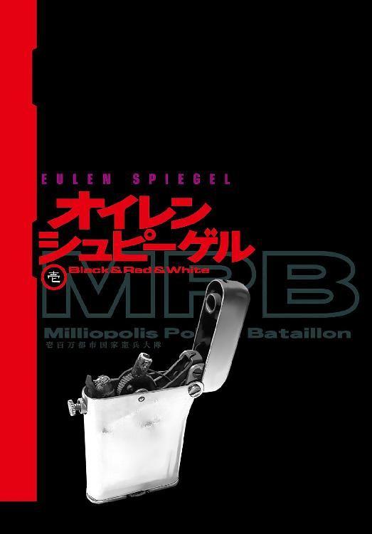
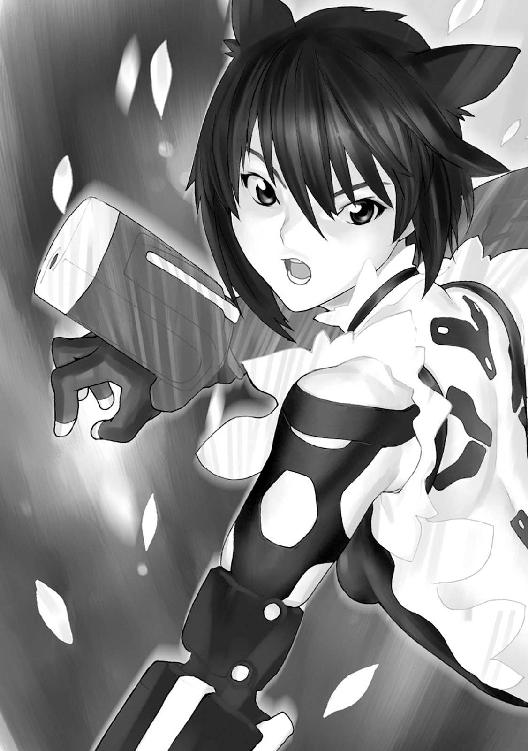
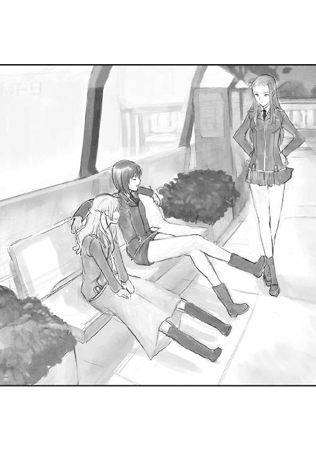
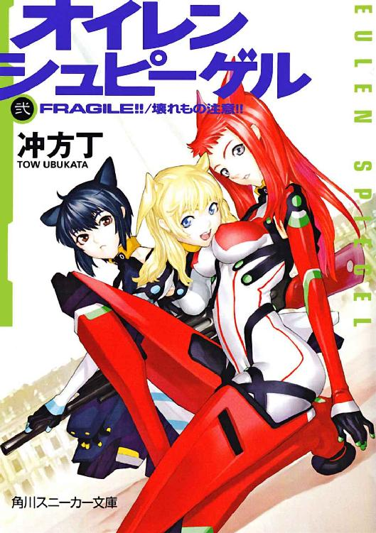
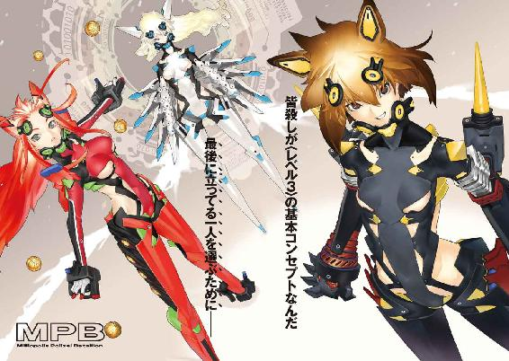
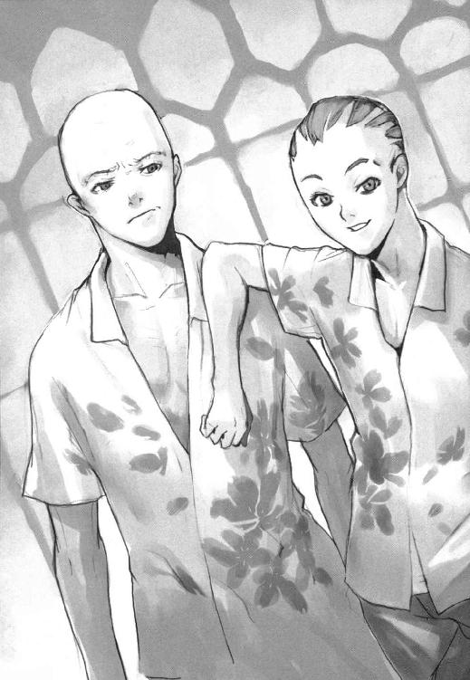
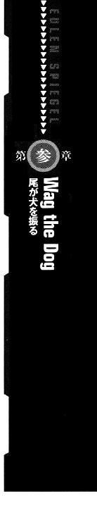
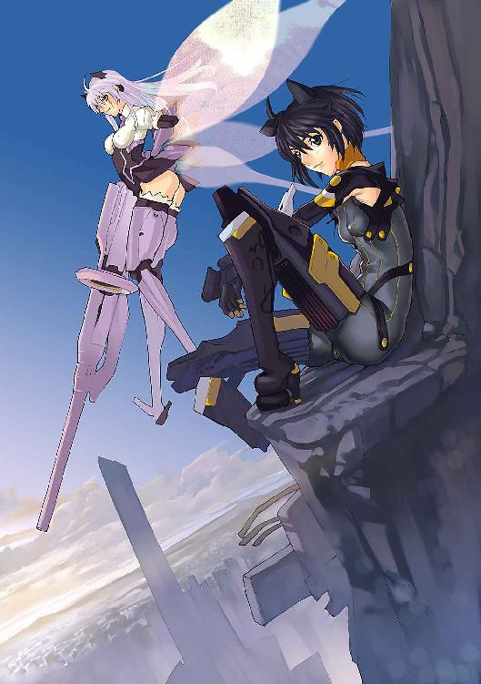

| 【合本版】オイレンシュピーゲル 全４巻<オイレンシュピーゲル> (角川スニーカー文庫) | |
| 冲方 丁 | |
| (2015) | |
【合本版】オイレンシュピーゲル 全４巻
冲方 丁

角川スニーカー文庫
本作品の全部または一部を無断で複製、転載、配信、送信したり、ホームページ上に転載することを禁止します。また、本作品の内容を無断で改変、改ざん等を行うことも禁止します。
本作品購入時にご承諾いただいた規約により、有償・無償にかかわらず本作品を第三者に譲渡することはできません。
本作品を示すサムネイルなどのイメージ画像は、再ダウンロード時に予告なく変更される場合があります。
本作品は縦書きでレイアウトされています。
また、ご覧になるリーディングシステムにより、表示の差が認められることがあります。

壱
「なーんか世界とか救いてぇ──......」
少女の呟き──溜め息混じり。
くわえたショートホープに着火。
すっぱ────────と解放感あふれる吸いっぷりで、十四階建てのビルの屋上から春の青空へ、有害物質を切なく吐息。
風に揺れるさらさらの短い黒髪／黒い切れ長の目／乳性石鹼のような白い肌。
隊の広報部より支給された、下着が見えそで見えない黒いミニスカとキャミ／すらりとした脚に黒いピンストライプのガータータイツ／丸い爪先の黒いエナメル靴──愛らしさと唯我独尊のトイプードルの風情。
ジッポライター──『Ａ．Ｓ．Ａ．Ｐ．』＝〝可能な限りさっさとやれ〟の刻印つき。
その蓋をぱちりと閉めて、胸ベルト付きキャミのスリットから、ブラの隙間に挿入。
我ながらぺったんこと呼ぶに相応しい胸の奥では、人造心肺が脈打ち、ニコチンや百種類余の、癌／肺気腫／心筋梗塞等の原因となる毒物の濾過に、フル稼働中。
医師に喫煙がバレる確率／副長に叱責される確率──まぁ百％。
知ったことか。
今は至福のスモーキンタイム──接敵寸前の第一種警戒待機中。
しかも待ち伏せ作戦とあって、パトカー／記者／テレビクルー／盗撮屋／機械化された十四歳の少女の喫煙を咎める者──一切なし。
もう最高。
綺麗な空。気持ち良い風。
なんか衛星軌道上から『全人類を一発で幸せな天国に送り込むパンチ』とか打てそうな気分。
──ってか、あれ撃ちてー。あれ。
核。
この国って持ってんのかな、核ミサイル──
そんな春うららかな思考＋煙草の煙＋青空がおりなす見事な融和が、ふいに中断。
脳裏にノイズ──副長の声。
《本部から黒犬へ、本部から黒犬へ》
本部からの無線通信──顎骨に移植された通信機──逃げようのない命令。
《待機地点を変更。紅犬のいる地点まで下がれ。白犬も合流させる》
暗号化フィルターできんきんに割れた声──周辺情報が脳の視覚野に送り込まれる。
「本部、本部」
平和なひとときを中断された腹いせ──無線ではなく地声で応答。通信機が少女の声を拾い、本部の全員に伝達。
《なんだ、黒犬》
「自分、生理なんで帰っていいっすか？」
《......貴様の担当医師から、そんな報告は受けていない》
「やだな副長。あたしの初潮、まだなの知ってんだ。セクハラー」
副長＝堅物＝大の下ネタ嫌い。
《待機地点を変更！ 指示に従え、黒犬！》
「生理が来れば、あたしのおっぱいも大きくなるかな。本部の人、誰か揉んでー」
《さっさと移動だ、涼月っ!!》
犬呼ばわりから少女の本名に──副長の怒りの沸点。
少女の煙草をくわえた可憐な唇が、意地悪そうな笑みを浮かべる。
「了解」
跳躍──予備動作無し。
エナメル靴の底が、勢いよく屋上の鉄柵を蹴った。
青空へ──ミニスカが翻り、黒いローライズボトムの下着が出現。
『D=WMPB』──〝あなたのために♡ミリオポリス憲兵大隊〟と、愛らしいお尻を覆う布地に白抜きプリントされた広報部特製の下着もあらわに、黒犬＝涼月は、ミリオポリス第二十一区にひしめくビルの壁を次々に蹴り、銃弾のように跳躍していった。
《紅犬より本部へ、紅犬より本部へ》
ビル屋上──うつぶせになって、どでかいライフルを完璧な三点支姿勢で構える少女の、淡々とした応答要請。
《こちら本部。どうした、紅犬。敵か？》
副長の期待に弾む声。
《敵が現れる前に目標の銀行を我々が襲撃し、制圧すべきと本官は愚考いたします》
みしり＝怒りで通信マイクを握りしめる副長。
《......却下だ。そこで大人しく警戒待機していろ》
《紅犬より本部へ、紅犬より本部へ》
《なんだ！》
《副長の無下な態度により、本官の自殺願望が刺激されました。至急、本官の飛び降り自殺許可を請う。繰り返す。至急、本官の飛び降り自殺許可を請う》
《やかましい！ 警戒待機だ、陽炎!!》
通信アウト。
紅犬＝陽炎は、何ごともなく、ぷーと風船ガムを膨らませている。
長い火のような赤髪／冷たい灰の瞳／刃こぼれ知らずの硬質ナイフのごとき美貌。
十四歳とは思えぬ発達した砂時計形の長身／胸の谷間を強調するＶネックの紅いミニドレス／長い脚に鮮赤のガーター／艶めく深紅のエナメルパンプス。
伏射姿勢で剝き出しのお尻には、過剰な色香を放つ赤いパンティ──黒字のプリント。
『24st.Bewa/ähren!』──〝二十四時間、警戒待機／能力実証中！〟。
広報部特製＝小隊の勤勉さをアピール。
パチン──弾けたガムを口に戻す。
んぐ、んぐ、んぐ、んぐ、んぐ、んぐ、んぐ、んぐ＝非の打ち所のない八拍子。
ふっくらした唇の間から、ぷーと風船ガムが膨らみ出る。
そこへ涼月が待機地点から三ブロック後退──ビル屋上に颯爽と着地。
くわえ煙草のまま、頭上に拳を突き出し、大きく伸びをする。
「んー、良い天気。こんな真っ昼間に来ると思うか、銀行強盗？」
陽炎もいったんガムを嚙むのを中断。
けだるそうに髪をかき上げ、身を起こす。
「......この街はウィーンと呼ばれていた頃から銀行強盗のメッカだ。ちなみに最多記録は、二〇〇三年の年間五十件」
涼月＝呆れ顔。
「そりゃ、多いのは強盗じゃなくてサボって寝てる警官の方だっつーの」
陽炎＝淡々と。
「今のミリオポリスのようにな。逆に強盗犯にはやめられない理由がある。政権を追われた右派や過激派の末端組織が、資金集めのため銀行襲撃を命じられるんだ」
「命令違反は私刑ってか。すげー縦社会。警察よりよっぽど公務員っぽいな」
そこへにわかにハイトーンな声──ビルの谷間に響く天使の歌声。
「銀行強盗シンフォニー♪ どうせ市民のお金ですー♪ 銀行さんとお国さんでヘソクリ山分けハッピー♪ だーれも困んない銀行強盗ぉー困っちゃうのは一般ピーポォー♪」
全隊員ならびに一般無線マニアにも届きかねない、全チャンネル開放設定。
《白犬！ やめろ白犬！ 敵に漏れる──!!》副長の激怒。
敵というより市民の耳に、間違っても警察が口にしてはいけない歌が届かぬよう、通信班が総力を挙げて暗号化。
「みんなハッピー銀行強盗ぉーっ♪ 射殺された人の貯金は凍結ハッピーヤッピー♪」
《夕霧──っ!! 無線封鎖処分にされたいか！》副長の絶叫。
「夕霧は良い子ですよぉー？ みなさんご静聴ぉサンキューハッピー着地っ♪」
ビルの壁面を跳び渡ってきた小柄な天使が、ずどんと舞い降りる。
「テンション高すぎ」「良い歌だね、夕霧」
涼月＋陽炎──パチパチ拍手。
「えへへ。夕霧はー、今日も平和を守る気満々です！」
白犬こと夕霧の高らかな宣誓。
目を奪う白金の髪／真っ青な瞳／柔らかな宝石のような微笑み。
広報部支給のプリーツのミニスカ／象牙色のチューブトップ／ふっくらした胸にミント色のリボン／すべすべの素脚／ふわっとしたミントのソールシューズ。
踊るたびに捲れるスカートの下には、青いプラムの実のような小振りなお尻を覆うローカットレッグの白いパンティ──青字のプリント。
『L&F-B/Engel』──〝愛と喜びの──天使／Ｂがつくとお茶目さん〟。
広報部製作＝小隊の朗らかな人類愛を宣伝。
ぴっと涼月を指さし、浮き浮きダンス。
「あっ、涼月！ 煙草は三十五歳から！ でないと『ドラグーンボール』の悟空みたいに強くなれませんよ？」
涼月＝怪訝。
「誰だ、それ。『ドラグーンボール』ってあれか、スピルバーグ監督の」
陽炎＝注釈。
「違う。元はアキラという日本人が描いた漫画だ」
「夕霧、知ってる！ 東京が男の子のレーザー砲でどかんてなるアニメ！」
「それは同名の別の作品だ。元々アキラは日本人の名前の一つだよ、夕霧」
「陽炎さんは物知りですねー♪ 涼月は小学校からやり直し！」
「ここはオーストリアだっつーの。お前らどこで仕入れてくんだよ、そーいう知識」
「比較的メジャーだ。文化委託された日本の漢字名を名乗るなら知っておけ」
「知るかタコ。それより強盗まだ来ねーよ。あたしらで占拠しとくか、銀行」
「それは既に却下された」
「同じこと考えるなんてー、涼月と陽炎は仲良しさんっ♪」
「こいつとかよ」「願い下げだ」
涼月＋陽炎の発言──ほぼ同時。
沈黙──二人の睨み合い＝火花。
「てめーの胸がでかかろうが背が高かろうが小隊長はあたしだ。忘れんじゃねー」
「ニコチン漬けで知識も胸も成長停止したお前が隊長など不思議すぎて忘れられん」
「あたしの体はこれからだ。てめーの胸は無駄知識の産物か。ガムみてえに垂れやがれ」
「はい質問♪ 夕霧、お金のこと良く分かんないけど五百万ユーロ欲しいですかぁ？」
「......空気読め、夕霧。なんだ五百万って」
「今日の襲撃予想地点に集金される額だ。一生とはいかんが五十年は遊んで暮らせる」
「あー、そりゃ欲しいな」
「でもね、幸せのお金と不幸せのお金、どっちか分かりますかー？ 分からないと、きっとルーマニアにお城を買っても楽しくないと思うんですよ、夕霧は」
「別に、城買うとは言ってねー......」
突然、どこか彼方で、どーんと爆音が響いた。
ビルの狭間──二キロ先の路上で黒煙。
脳の視覚野・聴覚野へダイレクトに送り込まれる緊急情報。
副長の緊急通信が爆ぜる。
《黒犬！ 紅犬！ 白犬！──〈〉、全頭出撃！ 繰り返す！ 全頭出撃！》
脊髄反射の迅速対応──現場の状況・ポイント確認。
涼月が直進ルートを跳躍／夕霧が支援ルートを選択／陽炎がライフルを抱えて移動。
全員が〈転送〉要請──全て許可。
「行くぜ陽炎、夕霧。狩りの時間だ」宙で笑う、くわえ煙草の涼月──浮き浮きと。
《敵は第二区に入った現金輸送車の車輪を地雷で破壊！ 強奪グループ二、支援グループ二！ 四手に分散！ 総員、囲い込め！》
副長自ら陣頭指揮──入れ込んでる証拠。
黒犬＝涼月は、ビルの谷間を蹴り降り、数十メートル下の通りへ素早く移動──落下。
どん！ と弾丸のごとく着地＝衝撃──アスファルトに亀裂。
急激な高低差で脳の血が移動＝視界がブラックアウト。
超音波探査モードの灰色の世界で、握りしめた両拳を果敢に構える。
小洒落たカフェの店員・客が、涼月に仰天──さらに驚愕。
一台の改造バンが出現──通りを驀進。
窓もタイヤも完全防弾。
強奪グループその一と遭遇──正面対決。
改造装甲バンＶＳ黒いミニスカ少女。
くわえていた煙草を、ぷっと吹き捨てた。
《転送を開封》
涼月の声なき要請とともに、その両手足＝〈特殊転送式強襲機甲義肢〉＝通称〈特甲〉が、遠吠えにも似た音を発して機能を発揮。
エメラルドの幾何学的な輝きとともに、ミリオポリス憲兵大隊の本部ビルにある武器・弾薬・強化義体が〈転送〉された。
涼月の指・腕・脚・靴が解体＝置換──黒い光沢を放つ機甲に変貌／各急所をカバー／両腕両脚が、漆黒の流線形をなす超振動型雷撃器と化す。
転送完了＝瞬時に起動＝一秒余。
黒い鋼鉄の四肢を持つ少女が、『あなたのために♡』のプリント入り下着のお尻もあらわに、迫り来る改造バンへ疾走。
右フック。
漆黒の拳がバンパー下部に命中──超振動発生＝魚雷に等しい衝撃。
轟音──車体が宙を舞った。
駐車禁止区域に停車中の一般車の群へ、改造バンが横向きにダイブ──狙い通り。
砕け散る違法駐車の車たち──一般市民が大騒ぎで退去。
装甲バンの砕けた窓から、自動小銃や札束の入った袋を手にした男たちがわらわら這い出てきて、ウィーン訛りのドイツ語で罵る。
跳躍──横転したバンの上に降り立つ黒い特甲少女＝通称〈対甲鉄拳の涼月〉が、呆然とする武装犯たちへ、凜としたファックサイン。
「ＭＰＢ遊撃小隊〈〉だ。あたしの街で勝手するタコは、跪いて懺悔しな」
男たちの罵声──次々に突き出される銃口。
その一人が、超音速で飛来する銃弾によって、右腕を木っ端微塵に吹き飛ばされた。
絶叫──転倒。
乱射しかける者たちの腕・脚・頭が、次々に射貫かれてゆく。
頭上──後衛。
陽炎の精密な狙撃。
紅いシャープなフォルムの特甲／右腕と一体化した超伝導式ライフル。
三点式位置探査・超音波・赤外線など数種類の情報を総合＝複数のグループを瞬時に牽制／完璧な掃射姿勢でお尻を突き出し、刃のような無表情さで、聖母のように優しく引き金を絞る真紅の特甲少女＝通称〈魔弾の射手の陽炎〉の実力発揮。
地上──前衛。
支援グループ＝改造ジープが、涼月のいる現場に急行。
その荷台で銃を構える武装犯たちのど真ん中へ、機甲化した夕霧が、美しい白銀の四肢を畳んで飛来。
横殴りに着弾──衝撃。
激しい横揺れ──テールが弧を描いて急停止。
武装犯数名が、悲鳴を上げながら、荷台から放り出された。
「銀行強盗のみなさん、アロー！ 長生きしたい人は両手を上げてーっ、ハッピー♪」
武装犯たちが一斉に銃を構え直した。
刹那、夕霧の十本の指が銀の弧線を放射。
両腕に内蔵された液状金属と硬化装置が起動──幅二ミクロンのワイヤー×５×２が高磁力による凄まじい乱舞を開始。
空を切り裂く閃き──前後左右で男たちを一刀両断。
白銀の特甲少女＝歌って踊れる殺人ミキサー＝通称〈悪ふざけの夕霧〉の周囲で、切断された銃・手足・胴体・首が宙を舞う。
二つ先の通りでＭＰＢの装甲パトカーが封鎖線を形成──一般市民のシャットアウト／強奪グループその二の囲い込み。
涼月が現場へ急行──その途上。
そいつが、いた。
車道を渡る一人の男──スキンヘッド／薄汚れた軍支給ジャケット／削ったような瘦顔／青黒い肌／ぎらぎらした光を溜めた目。
獣のような笑みを浮かべて封鎖線の方へ歩きながら、上着のポケットから両手を出す。
右手は生身／左手は機械化＝鋼鉄の指が握る、冗談のように巨大な鉄の塊。
男の大腿骨よりでかそうな銃身──リボルバー式の拳銃。
その対空砲のような馬鹿でかい拳銃を見た涼月の全身が、特大級の悪い予感に戦慄した。
男が拳銃を掲げる／構える──封鎖線のＭＰＢ隊員たちが男に気づく。
涼月の緊急通信。
《逃げろ──────っ!!》
閃光──男の銃撃／さながら爆撃。
たった一発の弾丸が、パトカーの装甲を突き破って凄まじいまでの炸裂を起こした。
装甲パトカーが魔法のように宙に浮いて火の玉に。
落下──封鎖線が炎の海と化す。
「てんめ──っ!!」涼月の叫び／男が振り向く＝「なんで女の子が？」と驚く顔。
涼月が男へ全力疾走。
脳裏に陽炎への支援要請──勢いに任せて自ら却下。
許せない怒り＝この自分を、ほんのちょっとでも脅かしたやつには、問答無用かつ雷撃最大値で一発食らわすべし。
《やめろ黒犬！ 支援を待て！》
副長の制止／男の銃口がこちらを向く／跳ぶ／男の右側へ──超近接戦闘／男の体ではなく、その機械化義手と拳銃を狙った。
拳銃のバレルに刻印＝得体の知れない社名。
『Princip Inc.』
プリンチップ株式会社──見たことも聞いたこともない社名に、ほんの一瞬、目を奪われる。
もしかして、壊してはいけない証拠物件かも／そんなの知るか／やっちまえ──というコンマ数秒以下の脳内議論が、僅かな遅れの原因に。
男の反射的な行為──銃口を、とてつもない迅速さで接近した涼月に、慌てて向けた。
真っ黒い虚空そのもののような銃口を認識する遥か以前に放たれた涼月の拳が、拳銃から発射された弾丸と、真正面から激突。
衝撃の波──視界が完全にブラックアウト。
どちらが上か下かも分からず浮遊──転倒。
ラグビーボールになった気分。
相手の反撃を許した──馬鹿げたミスに怒りが沸騰。
最悪／起き上がろうと足搔く／視界が戻る──愕然。
目の前に転がる右拳の残骸。
吹き飛ばされた自分の右手・右足／亀裂だらけの機甲。
地べたを這う自分──あまりの怒りに視界が真っ赤に。
遠くでよろよろ動く男の影──ろくに狙いもつけず無差別に銃撃。
轟音＝立て続け──崩壊する封鎖線。
涼月──歯を食いしばって左足だけで立ち上がり、〈転送〉を再要請。
そこへ、ＭＰＢの装甲車が、涼月の前で横殴りに急停車。
車体が盾に＝拳銃男が見えなくなる。
「寝てろ！ 今、救護班が来る！」ＭＰＢ隊員の声。
「邪魔だ────っ!!」
力任せの左拳が、装甲車側面を殴った。
隊員の悲鳴──装甲車が横転。
炎──拳銃男はどこにもいない。
《馬鹿か!!》
副長の憤激。停止信号＝数十分の一秒──涼月の特甲の武器を強制終了。
拳の機能停止──〈転送〉中止。
カカシのように左足だけで突っ立ったままに。
それでもなお、涼月はナイフのように目を尖らせ、消えた拳銃男を捜して、辺りを睨み続けている。
ぐらぐら揺れる脚を、意地になって踏ん張らせていると、握りしめた左拳に、ふと誰かが触れた。
「涼月、めっ。独りは、めっ」
優しく叱る夕霧が、両手で涼月の拳を包んでいた。
出撃命令から三分強。
無言で宙を睨む涼月の体から、やがて静かに力が抜けていった。
弐
かつてウィーンと呼ばれ、二〇一六年の今は、ミリオポリスと呼ばれるオーストリアの首都──通称〈ロケットの街〉は、人口約二千五百万人の平和な国際都市だ。
なぜ平和か？
二千五百万人もいるのに、過去十年間の銃死者数の平均が、月間たったの六百四十八人だからだ。
また、宇宙開発とは無縁なのに、なぜ〈ロケットの街〉なのか？
古いロケット推進燃料である過塩素酸アンモニウムの着火点が、六百四十八度Ｋだからだ。
そんな平和な街も、二十一世紀に入り、超少子高齢化による人材不足と、凶悪犯罪やテロの猛威という大問題に直面した。
そこで政府は、十一歳以上の全市民に労働の権利を与え、肉体に障害のある児童には、無償で機械の体を与える政策を発表。
また一方で、軍部の天下り先として、強力な兵科を都市治安に応用する機関を開設。
児童の労働・機械化・治安──これらは間もなく結びついた。
最も優秀な機械化児童に〈特殊転送式強襲機甲義肢〉──通称〈特甲〉を与え、治安の維持にあたらせたのである。
その多くが女子となったのは、男子の大半が軍属として世界の紛争地帯に派遣されたせいだが、特甲児童の活躍は男女問わず目覚ましく、大した問題にはならなかった。
かくしてミリオポリスには最高の人材が配属された。
その一つがＭＰＢ遊撃小隊〈〉──すなわち三人の特甲少女で構成された、平和的攻勢を担う、最強の特殊兵科である。
そして。
その小隊長にして突撃手たる涼月・ディートリッヒ・シュルツは、全身検査のため両手足を外され、ＭＰＢ本部ビル六階の医療フロアのベッドで寝ていた。
自動昇降式の毛布／ベッド脇でのろのろ動く電気スタンドみたいなロボット義手×１。
「くっそ──......絶対、副長の嫌がらせだぜ。普通、検査のために手足取るかあー？」
「私も今の処置に賛成だ。お前の頭のネジの外れ具合を確かめるまではな」
お見舞い用リンゴを綺麗に切り分け、皿に並べる、小隊の狙撃手こと陽炎・サビーネ・クルツリンガー。
「陽炎、お上手ですねー♪ 涼月にはあげなーい♪」
ウサギリンゴを手に踊る、小隊の遊撃手こと夕霧・クニグンデ・モレンツ。
「なんでよ」
ロボット義手を伸ばす涼月──すかさず陽炎と夕霧が皿を遠ざける。
「ふふふ。皮でも食うがいい」
涼月の義手にリンゴの皮を巻く陽炎──冷たい微笑。
「ウサギちゃんがハリネズミー♪」
切り揃えたリンゴに、ぶすぶすピックを刺す夕霧。
「あ──......」
今さらのように二人の顔色を窺う涼月。
「お前ら、なんか、怒ってね？」
「いや」「ぜーんぜん♪」
にこやかな二人の返答。
「では行くか」「涼月、またねー♪」
「片付けろ！」
リンゴの皮を頭上にぶら下げた涼月を完全無視──二人の退室。
かなりの勢いで取り残された空気。
「絶対ぇー......怒ってるっつーの」
単純な理由＝二人の支援を求めず独走した涼月へのメッセージ──〝反省しろ〟。
「くっそ、口で言えってんだよ、もー」
ロボット義手の三本指を駆使して山盛りに刺さったピックを抜こうとするが超難易度設定高し──苛々する余り、だんだん泣けてきた。
「あー、もぉー」
「涼月ちゃん」ふいに遠慮がちな声。
見ると細い体軀の少年が戸口でもじもじしている。
整った容貌／日に透けそうな白い頰／ふわっとした金髪／伏し目がちの薄緑の目。
「吹雪。何してんだ？」
「それ、取ってあげる」
たたっと近寄り、頼まれもせずにリンゴのピックを抜いてゆく。
それから、そっと音を立てるのを怖がるような丁寧な仕草で、一本だけのピックで刺したリンゴを、涼月の口元に差し出した。
「はい、涼月ちゃん」
にっこり笑う吹雪──人類愛の模範のような温かな姿。
「ん......」
ベタ下がりになった難易度に拍子抜けしつつ果実を齧る。
涼月には珍しい素直さ＝相手が自分と同じ機械化児童であるという安心。
かと思うと、吹雪の優しげな目が潤み、じわっと涙がにじんだ。
ぽかんとなる涼月──吹雪がぐすっと洟をすする。
「無事で良かった......。ごめんね、涼月ちゃん。僕がもっと早く転送出来てたら......本当に、ごめんね」
本気度百二十％のしおらしさで見つめてくる白いチワワの風情──吹雪・ペーター・シュライヒャー。
ＭＰＢのマスターサーバー〈刕〉の接続官／接続時は意識を失う無意識型／噂ではＩＱ三〇〇の特甲少年／だが弾よけにもならない超運動音痴のため軍属にならずＭＰＢの転送塔に配属──その脳力を駆使し、〈〉担当の転送員に。
「ばっ......馬鹿。お前は悪くないっつーの」
相手の心配が如実に伝わり、超絶むず痒い／かえって独走を責められている気分。
「んなことより、次だ、次」
「う、うん」
目尻を拭ってリンゴを差し出しかけた吹雪が、いきなり脚をもつれさせた。
どうにも手足の操縦が覚束ない〝超運動音痴〟の真骨頂。
ああっ、と横倒れになって自動昇降の毛布の柱にしがみつくついでにスイッチオン──毛布の角を紐が持ち上げてゆく。
呆気に取られて声も無い涼月──柱にしがみついたまま焦りまくって体勢を立て直そうとするもさらに足を滑らせる吹雪。
「ご、ご、ご、ごめんなさい」
その間にも、毛布はのんびりと、だが確実に上昇──やがて涼月の体から離れた。
「み、見んなっ！」
はっと我に返った涼月の鋭い声。
慌ててうつむいた吹雪の顔が、みるみる真っ赤に染まる。
ロボット義手がぐいぐい毛布を押し戻し、やっと昇降機が反応。
検査用パルスコードを貼り付けられた以外、一糸まとわぬ涼月の体を、再び毛布が覆った。
殺気を込めて睨む涼月。
耳たぶまで赤くなっている吹雪──その目に焼きついた、あらわな美しい体。
生身と機械の接続部である生体義肢＝その二の腕と腿は半ばから子鹿の角のような丸みを帯びている。ほっそりした肩／滑らかな胴／妖精のように透明な胸でつんと尖った桃色の小さな乳首／腿の間には、ぷっくりとした淡桃色の可憐な割れ目──
沈黙──気まずい限りの空気。
「脱げ」
涼月の獰猛な唸り＝食い殺す勢い。
「......えっ？」
憐れなほど怯える吹雪。
「てめえだけ見て済むもんじゃねえんだっつの。ぶっ殺されたくなけりゃズボン脱げ」
睨み殺さんばかりの涼月に圧倒され、ふるふる震える吹雪──涙目／抵抗不可能。
おずおずと通信班支給のズボンのボタンを外し、恥ずかしそうにファスナーを下ろす。従順を絵に描いたような仕草で下着ごと膝まで脱ぎ、消え入りたげにうつむいて体をさらした。
「へー......」
まじまじと見る涼月──想像していた〈象さんの鼻〉はなし。
代わりに剝き出しの頭頂部にピンク色の割れ目／くびれ周辺に、うっすら傷痕／思っていたより迫力があるものに、ちょっと気圧される。
「なんか......違うな、お前の」
「か......割礼してるからかな」
真っ赤な顔の吹雪＝もとの両親が信仰心篤いユダヤ人。
「ふーん」
涼月──ロボット義手が緊急ナースコールをオン。
「えっ？ え？ え？」
うろたえる吹雪──にわかに接近するスリッパの音。
しれっとした顔の涼月／その場に凍りつく吹雪。
そして戸口に現れる人影。
「......何してんのよ、あんたら」
白衣の女性が、腕組みして言った。
綺麗にアップにした長い金髪／見事な長身／院内であることを完全忘却した、くわえ煙草。
「変態でーす、マリア医師ー。逮捕して下さーい」
涼月＝無慈悲。
「あ、あっ、あの......」
涙目で怯える吹雪。
「貴重な接続官に妙なトラウマを刻むんじゃない」
医師のチョップが涼月の脳天をヒット。
「君も、さっさとズボン穿きなさい。先生のいたずら心をくすぐる気？」
おろおろ再着衣する吹雪──その様子を医師マリアが、すぱーっと一服しながら眼福。
「は......早く元気になってね、涼月ちゃん」
まだ顔が赤い吹雪の律儀な言葉──危なっかしい足取りで逃げるように退室。
ありゃ絶対どこかで転ぶな＝涼月の予想。
「医師ー、一本ちょーだい」
「ダメ。全世界の未成年の死亡原因トップは喫煙よ。銃弾や交通事故じゃなく」
毅然と返す、ＭＰＢ専属医師マリア・鬼濡・ローゼンバーグ──なら自分はなんで吸うの、という質問は無言で却下。
「それより、あーいう吹雪くんみたいな子は大事にしなきゃダメよ」
「なんだよ、それ」
鼻で笑う涼月。
「医師ー、あたしが人殺しだって知ってた？」
「全然。私は世界中の警官や軍人を殺人者呼ばわりする似非平和主義者じゃないの」
「......どーでもいいよ、そんなの」
つまらなそうに宙を向いた。
「まだ出らんないの？」
「退院は二日後。手足の感覚調整は念入りに。あんたが壊した特甲用〈肢〉の修理に五日。最高級車並みに高価で精巧な体が、それだけで完全修復するんだから感謝しなさい」
「生体義肢は、もっと高価いだろ」ぼそっと言う。
遺伝子から分析して造る〝生身に等しい成長する義体〟＝信じがたいほど高価。
涼月に与えられるのは心肺や接続部のみ。
「欲しい？〝普通〟の手足？」
「別に」
涼月の即答──完全無糖のブラックコーヒーを思わせる黒い眸を、マリアに向ける。
「痛みを無に出来ねー手足なんて、いらねーっつの。思いきりぶん殴れる手足の方が良いし、ぶん殴っていい相手がいりゃ文句無しさ」
「その相手の目星はついてるって顔ね」
くわえ煙草のマリア──たしなめるような目つき。
「まあね」
にやりと笑う涼月──その頭上でロボット義手がファイティングポーズ。
ミリオポリス第二十四区。
〈オーストリア人の職場〉の頭文字〈ÖＷ〉で呼ばれる地区。
そのど真ん中に鎮座するＭＰＢ本部ビル──三十二階建て。
全施設完備の総合ハイテクビルの二十二階。
会議室の一つ──隊長格たちのブリーフィング。
「──先の現場に乱入した〝拳銃男〟は、マスターサーバー〈刕〉の解析班の報告でも、グループに属さない民間人と判断された。この男に対しては特例警戒を実施する。殺さず逮捕だ。いいな」
ＭＰＢ副長フランツ・利根・エアハルトによる全隊告知。
長身瘦軀／いかにもエリート風の銀縁眼鏡／隊内随一の知恵者。
通称〈蜘蛛の巣フランツ〉＝二重三重の搦め手を得意とする参謀。
〈〉の指揮官にして絶好のからかい相手／噂では操を守ってまだ童貞。
「銀行強盗グループの主力はいまだ健在だ。各隊が連携し、徹底して叩く。以上だ」
次々に立ち上がる男女──小・中隊長たち。
涼月は隅で座ったまま、むっつりと檀上に顔を向け、苦々しい思いに満ちた黒い目をナイフみたいに尖らせている。
助けに来た装甲車を殴って横転させた十四歳の機械化少女に声をかける者──なし。
間もなく会議室には、涼月と、副長フランツ、そして壇の横手にどっしり座ったＭＰＢ大隊長だけに。
「何か言いたそうだな」
副長──とんとんと書類を揃えながら。
「〝拳銃男〟は、あたしがやる」
涼月──人が殴れそうな硬い声音。
「却下だ。やつは第一級破壊罪および違法銃器所持罪だが、幸い死者は無し。まだ即射殺対象ではない」
「自動小銃を持ってる未成年は即射殺で、化け物拳銃を持ってるどこかの馬鹿男は特例で殺さず逮捕？」
「そうだ」
ずしりと重い返答──大隊長の声。
会議中も事件中も滅多に喋らない男──巌のような体軀／貫禄ある容貌／銃口より雄弁で容赦ない眼差し。
都市治安に軍の兵科を導入した、治安機構きっての武闘派。
大隊長オーギュスト・天龍・コール──通称〈沈黙のオーギュスト〉の断言に、涼月が黙り込む。
副長が言った。
「やつは生かしたまま我々が手に入れる。お前たちの任務は武装した実行グループの壊滅だ。それが嫌なら、別の特殊任務がある。隊員の総意をまとめておけ」
副長がペラ一枚の書類を手近な机に置く。
ＭＰＢのトップ二人が退出──涼月は書類へ歩み寄った。
『キャンペーン任務』
広報部支給のド派手な衣裳を着て、市民に治安の重要性をアピール──憲兵大隊の重武装に対する批判をかわすための報道活動。
涼月は、通常でも一．五トンの打撃を誇る拳を振り上げ、机ごと書類を粉々にしようとして──やめた。
代わりに、自分の拳を、じっと見た。
固く、固く──閉じた手。
ふいに嫌な感情が脳裏をよぎる。
自分の拳──最悪の人生の原因。
そして母親──家出娘。
純血主義の両親の反対を押し切ってトルコ人の男と結婚。
仲が冷え切っていた両親を見返したくて、幸せな家庭を築きたがる。
そして出産──肝心の子供＝涼月が、彼らの夢を裏切った。
母親の理想とはかけ離れた体で生まれた涼月──末端神経の障害。
生まれてから一度として拳を開けず、足の指も丸まったまま。物をつかめず、まともに歩けない。
母親の意地＝涼月の異常を認めず／医者にも見せず。
その手がいつか開くと頑なに信じて放置。
そしてその結果──涼月、七歳──手足の末端で固まった血の塊が、血管を通って体中の器官に栓をした。
手遅れ＝涼月は生きながら体の内側から腐敗していった。
涼月の瀕死──政府の障害認定。
両親は親権放棄を認めた。
涼月は、児童福祉局＝通称〈子供工場〉で機械化され、労働児童のための育成コース行きに。
だが機械化されても手足を開くすべを知らず、長いこと地べたを這い続けた。
捨てられた自分──手の平を見せることで、それを認めてしまう気がして。
涼月、十一歳──両親が再び会いに来た。
文化委託＝国連都市ミリオポリスの政策。
戦争や災害などで保全困難となった国の文化を他国が維持──その報奨として莫大な保全予算が国連から下りる。
その恩恵の一つ＝日本の漢字名を名乗れば毎月の保全金＋社会保障が支払われる。
文化委託局がランダムで決定する漢字名は、二十五歳の準成人時にミドルネームに、三十五歳の成人時にセカンドネームに。
両親が欲したもの──涼月の保全金。
十一歳で労働の権利を得た涼月は、親権の復活を選択する権利も得た。
涼月が首を縦に振れば、両親は〝優秀な〟機械化された労働力にして保全金対象者たる長女を得る。
「手を開いて見せて」
母親の願い──だが涼月は頑なに拒んだ。
「ごめんね」母親の涙。「あなたを、そんな体に生んで、ごめんね」
涼月の激怒──母親と自分の間にあったテーブルを握りしめた拳で粉々に破壊した。
以来、母親とは会っていない。
閉ざされた拳──救いのない人生。
それを開かせたのは夕霧だった。
自分の拳を包む夕霧の手。
電子的に再現された疑似感覚──温かさ。
それを思い出し、ふと我に返った。
書類を手に取り、がらんとした会議室で思う。
〝拳銃男〟は、あたしの獲物だ。
母親と断絶した時のように──頭に来たもの／自分を脅かすものは全て、この拳でぶっ壊す。
参
「やめておけ」
ぷーとガムを膨らます陽炎──にべもなく。
「私達の獲物じゃない」
「大隊長と副長の獲物だってのか？ なんで？」
涼月＝縁なし眼鏡──乱視用。
自室のテレビ──ミリオポリスのローカルニュース＝退屈。
チャンネルを変える。
アルジャジーラの特番──銀行強盗の話題。
夕霧は、涼月が持ち帰った『特殊任務』の書類に大喜び。
「今度はどんな服かなー♪」
ＭＰＢ本部ビル十二階──女性隊員の寮。
涼月の部屋＝陽炎と夕霧のたまり場。
二人とも、部屋は散らかし放題──床に物が落ちているのが大嫌いな涼月の部屋に、点呼もなく集合。
「副長の狙いは〝男〟じゃない。〝拳銃〟の出所だ。お前がＫＯされた拳銃のデータは隊内でも情報規制されている。どうやら銃の刻印〝プリンチップ株式会社〟のせいらしい」
陽炎の淡々とした情報開示。
「誰がＫＯされたってんだ、この野郎」
涼月＝テレビを見たまま、むかつき顔。
ふと記憶──銃の刻印。
拳銃男との戦闘で致命的なミスの原因となったもの。
思った通り、やはり重要な証拠物件だったのだ。
「その、プリンなんとかってな、どこのメーカーだ」
「〈刕〉にも確認不能の、存在しない幽霊会社だ。この国の法律では、企業は刑事罰の対象にならない。それを利用した、企業体を装う、支援型のテロ組織だと目されている」
陽炎＝情報マニア。
隊内でのまことしやかな噂＝売春＝各部署の秘密情報を一手に収集。
涼月＝呆れ顔。
「あんな怪物拳銃を野放しにしといて、誰も罪にゃ問われないってのか」
「元々、銃器メーカーほど無責任な企業は無いからな。それに二〇〇五年のカプルンケーブルカー事件判決以来、この国の法が企業に甘いことは世界中に知れ渡っている」
「ケーブルカー？」
「日本人をふくむ百五十五人が死亡した事故だ。関係者は全員無罪。企業責任は皆無」
「サボることにだけは全力投球ってか。この街じゃ、いつものこと──」
涼月の声が尻すぼみに──テレビへ身を乗り出す。
陽炎と夕霧が顔を上げた。
テレビの緊急報道。
爆煙まみれのビル──未来党の選挙事務所。
〝銀行強盗の一味が爆破〟
そして現れる男の顔写真＝〝拳銃男〟──息を吞む涼月。
「なんっ......だ、こりゃ」
涼月の混乱──未来党は極右思想で有名な政党。
つまり裏で銀行強盗＝過激派を操っている可能性大。
その事務所を爆破？ 自分の裏のボスを？
意味不明。
だが確かな現実＝炎／血まみれの事務員／運び出される死者。
無言で立ち上がる涼月。
「どこへ行く気だ？」
半ば察している陽炎──〝やめておけ〟と目が言っている。
「確かにあの野郎は、あたしの獲物じゃないんだろーよ」
涼月──振り返りもせず、真っ直ぐ戸口へ。
「でも、あたしがあのとき、あの野郎を仕留めてたら、今、あそこで殺すやつも殺されるやつもいなかったはずだ」
陽炎が宙を仰いで溜息。
部屋を出て行く涼月を、夕霧がじっと見送る。
磁力のように引きつけられる。
ろくでもないこと＝犯人への個人的興味。
エレベーターで二十階へ──情報解析・通信班のフロア。
隊員証を見せて中へ。
目的＝吹雪のデスク。
「スッ......涼月ちゃん？」
どきっとしたような顔の吹雪──その耳元へ小声で告げる。
「見たい情報があるんだ。バレないように」
「う、うん......」
吹雪──ぽうっとなって涼月の顔から目を離さない。
「なんか顔についてるか？」
思わず自分の頰を撫でる。
「う、ううん。眼鏡かけてる涼月ちゃん......初めて見たから」
「非番のときだけな」
どうでもよさそうに返す──相手の視線の熱心さが妙に気になる。
「無くても困んねーけど......変か？」
「ううん、ううん。そんなことない。似合ってるよ」
顔を赤らめ早口に言う吹雪。
こいつ赤面症か？ 涼月の素朴な疑問。
「んなことより──」
「う、うん。どれが見たいの？」
慌ててデスクに向く吹雪──涼月の要請に応えて素早く的確に情報規制を迂回。
ＩＱ三〇〇の天才少年の早業。簡単すぎるロックゆえに規制された重大な情報という感覚さえなし。
次々に呼び出される捜査データ／開かれる内部情報。
そして開帳。
一人の、哀れで寂しい負け犬の遠吠え。
〝拳銃男〟ことオットー・千代田・ワイニンガー＝三十歳。
幼少期は、体も小さく、ひ弱で、劣等生。
目立たず、特技も無く、話題を振りまく愛嬌も皆無。
笑い合う同級生の輪から取り残された〝真面目で大人しい子供〟＝ランチを一人で黙々と食べる辛さを日常的に感じ続け、逞しい父と兄から弱虫野郎となじられる日々。
十八歳──友達が一人も出来ないまま高校を卒業。
家を出る金が欲しくて工場で働く。
左手首に大怪我──児童福祉手当と機械化手術。
それまで以上に父と兄から隠れるように息をひそめる毎日を送ることに。
二十二歳──宅配のアルバイト。
届け先の家で十四歳の女の子に話しかけられる。
理由は不明＝〝希望に満ちた天使〟の登場。
生まれて初めて女の子と携帯電話でやり取り。
はにかみ屋のオットーは、いつも携帯電話でプレイしていた未成年禁止のバーチャルセックス・ゲームを女の子に見せる。
天使は怯えて逃げた──着信拒否。
希望が消えた日のオットーの日記＝〝彼女も、みんなと同じだった。意地悪で冷たくて愛情のかけらもない〟
二十八歳──転機。
それまで貯め続けた金で、免許を取得／中古車を購入。
ついに家を出てミリオポリスへ。
大都会に住む優越感──間もなく倉庫管理の仕事場で孤立＝退職。
家賃が払えず、車の中に住むようになる。
酒・煙草・女・賭博は一切やらず、携帯電話が唯一最大の娯楽。
とある軍事マニアのページに頻繁にアクセス──右翼的言動にかぶれ、頭をスキンヘッドに。
軍のジャケットを着て、その日暮らしのアルバイトを繰り返し、誰とも喋らず、車で街を徘徊し続ける。
窓越しの世界。
娼婦、浮浪者、薬物中毒者、売人、オカマ、外国人へ〝右派的視線〟を送り、〝国の更生のため排撃〟＝携帯電話を銃に見立てて撃つ──バン、バン、バン。
三十歳──異変。
沈黙が当然だった携帯電話が突如として鳴り響く。
心当たりのない番号──恐る恐る出た。
「やあ、オットーくん！ 私はリヒャルト・トラクルおじさんだよ！」
能天気な中年男性の声──名前を呼ばれて仰天するオットー。
「私のことはトラクルおじさんと呼んでくれたまえ。君のことはよーく知っている。ずっと君を見ていたんだ。言うなれば、本人には決してそれと知らされない〝選抜テスト〟ってやつでね。君はこれまでずっと試されていた！ そしてついに合格したんだ！ 我々の理想にふさわしい人物として！」
得体の知れない戯言の数々。
だがオットーは、その〝声〟に惹きつけられた。その言葉に。
「そんな君に私からのプレゼントがある！ 指定された場所へ急行してくれ！」
一方的に通話が切れた。
数秒後にメールの着信──近くの公園へ行くよう指示。
言われた通り急行──動悸・興奮──ベンチにリボン付きの箱。
手に取る──車に戻る／開く。
怪物じみた巨大な拳銃が出現。
自分の親指よりでかい炸裂弾の束。
その全てに『Princip Inc.』の刻印。
そして再び携帯電話が鳴った──慌てて出た。
朗らかな男の声──まるで福音。
「どうだね。銀行の金庫さえ破壊する、史上最強のハンドガン。プリンチップ社特製〈ヘラクレス〉だ。君の左手を少しばかり改造すれば、すぐにでも撃てるようになる。君はプリンチップを知っているかな？」
オットーは知っていた──軍事マニアのページにアクセスした賜物。
「そう。ガブリロ・プリンチップ。かつてオーストリア皇太子夫妻を射殺し、第一次世界大戦を引き起こした、あの憂国の青年さ。我々はプリンチップのように、世界史を変える可能性を持った人物に、最適な武器を届けることを使命としているんだよ、オットーくん」
「なんで......俺なんですか」
込み上げる思い──声が震えた。
「君が君だからだよ」
優しい〝声〟のいらえ。かつて自分に与えられたことがなかったもの。
「我々には君が必要なんだ」
その瞬間、オットーの中で長いこと堰き止められていたものが決壊した。
激しい嗚咽が迸った。
涙が滝のように流れた。声を上げて泣いた。人生の目的がやっと分かった喜びで。
変転──〝声〟の指示。
もぐりの〝外し屋〟の違法手術＝左手の義手のパワーバランサーを外して怪物拳銃を撃つための握力を得た。
体を鍛えた。
全体主義について学んだ。
ヒトラーの偉大さを知った。
ヒトラーにユダヤ人排撃思想を育てさせたウィーンという街に満ちる、純血主義的かつ民族主義的な〝孤独〟に気づいた。
そう。今まで自分はなぜ孤独なのかと考えていた。
だが、違う。
孤独は〝なぜ〟などという矮小な思考とは無縁の観念──人生を崇高にする神秘の根源だったのだ。
そして〝声〟が告げる使命。
「ある〝グループ〟が君の助けを求めているぞ、オットーくん！ 外国人どもがこの国から不当に奪って銀行に隠した金の奪還を目指す彼らを、迎合主義の似非憲兵どもの抑圧から救ってくれ。さあ今こそ歴史的な一撃を放つときだ。君の中に秘められた偉大さを証明したまえ。そのための手段は今まさに君の手にある！」
迷わないオットー──銀行強盗を支援。
目覚ましい銃撃の数々。闘争の苦しみと喜びの初体験。
〝グループ〟は犠牲者を出しながらも十五万ユーロという大金を〝正しい者たち〟の手に取り戻した。
オットーと〝グループ〟は連帯した。オットーを導く〝声〟は〝グループ〟にも影響力を持っていた。
生まれて初めて仲間を得たオットー──彼らと話した／言葉が溢れた／とにかく喋りたかった／誰かと目的を一つにする喜びを語りたかった。
昼夜を問わず仲間たちに電話をかけまくり、全員から辟易された。
やがて待ちに待った決行──二度目の闘争。
小さな金融機関を襲撃。
オットーは単独で陽動＝闇雲に放たれる銃撃。
パトカーの群／洒落た商店／外国人の乗るバスを粉砕──バン、バン、バン、バン。
迎えに来る仲間の車──そのとき選挙事務所の窓が見えた。
華々しい栄光に満ちた選挙ポスター。
この街を間違った方向へ進ませた者たち。
迎合主義の政治家どもの／腐敗した金持ちどもの／私利私欲に走るエリートどもの、勝ち誇った笑顔。
我慢できず、銃を構え──絶叫。
「俺は政治家さえ恐れない！ 俺の一撃は世界史だって変えるんだ！」
肆
寂しさでおかしくなった負け犬、なんちゃって思想犯オットー・千代田・ワイニンガーの一念発起。
銀行強盗の支援テロ──無用な厄介。
ノリで未来党員の選挙事務所を銃撃爆破。
死傷者多数。
死刑執行。
未来党が裏で操る極右は、このきわめつきの馬鹿を決して許さない。
オットーは、仲間になろうとした極右の連中に逆に殺される。警察が何もしなくても。
「アーメン、クズ野郎」
急に視界がぼやけた。
不覚──にじむ涙──吹雪にバレた。
「ど、どうしたの涼月ちゃん？」
「データの読み過ぎで目が痛いっつーの」
さっと吹雪に背を向ける。
「......ありがとな、吹雪」
心配そうな吹雪を残し、目尻を拭いながらフロアを出た。
非常階段──踊り場。
隠れて煙草に火をつけ、深々と一服。
ジッポライター──『Ａ．Ｓ．Ａ．Ｐ．』＝〝可能な限りさっさとやれ〟の刻印。
仕留め損なった獲物──今はもう自分の手の届かない場所にいる。
すぱ────っと見事な吸いっぷりで、有害物質を切なく吐息。
助けにきた味方の装甲車を殴り飛ばす涼月から、愚かな〝拳銃男〟への哀悼。
この街は決して弱者を助けない。
力のない者は見捨てられる。生き抜く能力がなければ何をされても文句は言えない。
風光明媚な観光名所で知られるこの街は、どこもかしこも血なまぐさいサボタージュに満ちている。
たとえばミリオポリスに網の目のように広がる地下鉄では、スリ・強盗・麻薬取引・殺人が増加し続けており、その対処として全ての駅と列車に監視カメラが設置されている。
だがしかし肝心のカメラを監視する警備員が大てい飲んだくれているため、ほとんど機能していない。
たとえばミリオポリスではしばしばスキンヘッドの白人グループが問題を起こす。
黒人やトルコ人やスロヴェニア人やユダヤ人を殺したり、家に放火したり、車強盗の標的にしたり、シナゴーグのユダヤ人墓地を掘り返して遺体を散乱させたりするが、それらの犯罪が報道されることは滅多にない。
なぜなら戦争犯罪に関する歴史教育をなおざりにしたお陰で、ナチスがどういうものか知らない人間が多く、スキンヘッドの悪行が報道されようものなら、面白がって真似をするやつらが大量に出てくるからだ。
ミリオポリスではしばしば警官やレスキュー隊員らによるリンチで外国籍の市民が死亡することがあるが、問題になることはあまりない。
なぜなら人種差別に関する歴史教育をなおざりにしたお陰で、そもそも黒人など少数民族への暴力や迫害が、そんなに悪いことだとは思っていない連中が多いからだ。
ミリオポリスではしばしばドイツ語が上手く喋れない者に対して暴力が振るわれる。
なぜならオーストリアはドイツ語の習得義務を外国人にも課しており、もし定期的なドイツ語の試験に合格しなければ国外退去になるため、「ドイツ語が喋れないやつはクソだ」という考えが一般的になっているからだ。
ミリオポリスではしばしば子供や若者が、麻薬の過剰摂取によって道端で死んでいるが、それが良くないことだという認識は薄い。
なぜなら麻薬には中毒性があって体も心も魂も破壊してしまうものだという教育をされていないため、ちょっと気分が落ち込んだからといって気軽に覚醒剤やヘロインに手を出すからだ。
しかも都市に入り込んだ麻薬の量が多すぎるせいで珍しい犯罪でもなんでもなくなってしまい、警官が麻薬を押収したとしても大した「手柄」にはならないため、誰も本気で取り締まろうとはしないからだ。
ミリオポリスではしばしば病院や介護ホームで、患者が虐待死させられたり危険な薬物投与で死亡したりするが、滅多に取り締まられることはない。
なぜなら医者というのは特権階級であり、患者は生殺与奪の権利を奪われた奴隷と同じだからだ。
ミリオポリスではしばしば失業者が街に溢れかえるが、そのことが政治的にも経済的にも本気で問題にされることはない。
なぜなら「悪いのは外国人どもだ。自分たちが手に入れるべき富を、ユダヤ人や日本人どもが奪ったからだ」と叫べば、大勢が納得するからだ。
それに何より、金持ちどもにとっては、貧乏人が道端で死のうが、特に気にすべき事柄ではないからだ。
そしてミリオポリスではしばしば七歳の少女が、その肉体の障害を認められず、親から放置され、生きながら体内が腐っていくという地獄に陥る。
なぜなら近年、遺伝子技術の開発に高額の賞金や特許が見込めるようになった反面、世界的に遺伝子差別が高まったからだ。そしてミリオポリスにもとから満ちていた差別主義とあいまって、一部の市民の間では、生まれながらにして障害があることが、馬鹿馬鹿しいくらいタブー視されるようになったからだ。
ベートーヴェンはこの街で極度の強迫観念に陥った。フロイトはこの街にうようよいる精神病患者を通して精神分析を発達させた。
メンデルはこの街で学び、やがて栽培した豆から遺伝学を思いついた。
そしてそれが後の世には優生学という「完璧な白人以外の、遺伝的に劣っている民族や障害者や精神病患者は死ね」とする馬鹿げた悪夢のような発想に飛躍した。
そして過去の大戦において厚生労働省や医師たちが「劣等種」のレッテルを貼られた人間を容赦なく殺害・去勢・堕胎していった。
ヒトラーはこの街で、人種差別こそが選挙の票・金・戦争の大義名分を手に入れるための、絶好の手段であることを学び、ついにはナチズムを開花させた。
世界で初めて精神医療が一般化したウィーン＝ミリオポリス。
この街では、今も人生のクソミソさでおかしくなったやつらで溢れている。
市民の六割が何らかの強迫観念や依存病や虚脱感を抱えているという発表が毎年のようにされているが、誰も何もしようとはしない。
なぜなら、どうせそういうやつらは、いずれ最後のよりどころを求めて、ろくでもない何かにしがみつき、自分から破滅してゆくからだ。
それが麻薬であれ銃であれカギ十字であれ言いたいことは何も変わらない。
〝神様が吐いた啖が地上に落ちるまでの時間を、ただ数えるようなこの最低な人生は、いったい何のためにあるんだ？〟
そして答えを作り出す。
自分に都合の良い血なまぐさい幻想。
誰も彼もが少しずつ諦めたせいで、とめどなく広がってしまった悪意の徒花。
地べたに這いつくばるしかない人生を、どうにかしたくて拳を握りしめる者でいっぱいのこの街に──ただなすすべもなく、瞑目／黙禱。
そのとき。
非常階段のドアが、突然──どかん！ と爆発的な音を立てて開いた。
「ほら、いたー♪」
夕霧の天真爛漫な笑顔。
「あ──......」
ばつが悪い涼月──くわえ煙草。
「なんで分かんだっつーの」
「単純な行動パターンだからな」
続いて現れる陽炎──パチンとガムを弾かせて。
「例の特殊任務について、隊員の総意を小隊長に報告しに来た」
「夕霧は思いつきましたよーっ！」
浮き浮き踊る夕霧──呆気に取られる涼月を、ぴっと指さし、超天然悪ふざけ的重大発表。
「名づけてぇーっ、〝市庁舎の人〟作戦──っ!!」
伍
「......超ギリだ」
涼月──強ばった怖い笑顔。
「これはギリだ。限界だ。この衣裳を考えたやつを殴りてえ」
超ど派手に飾られた装甲車が、能天気な音楽とともに、のんびり徐行運転。
ミリオポリス第四区の大通り──かつて貴族と移民が混在し、モーツァルトやドヴォルザークが住んだ場所。
今はハイテクビルが群れ集うオフィス街／安酒場／劇場／歓楽街が混在する、小洒落た地区。
装甲車の屋根の上──三人の可憐な少女たち。
広報部特製〈花の精〉の衣裳。
色鮮やかな超ミニ／全身に花・花・花／パンツのお尻に警察標語。
『煙草は三十五歳から！』
『売春は公共事業です／確定申告をお忘れなく！』
『明るい未来／同級生を撃たないで！』
キャンペーン任務。
憲兵隊の重武装が犯罪者たちの人権を損なっているのではないかという批判をかわすための愉快で可愛い〈妖精たちの小歌劇〉。
車道脇に集まる多数の一般人＝ファン──涼月さーん、陽炎さまー、夕霧ちゃーん、などと連呼。手に手に構えたハンドカメラ。
三人の姿／下着をビデオに収め、リアルタイムでネットにばらまく──広報部の意図通り。
「恥ずかしがれば負けだ」
手を振る陽炎──顔の筋肉の完璧な操作による極上の笑顔。
その衣裳──優雅な赤いアザミ。
花言葉は〝厳格な権威〟。
「みんな平和でハッピー──っ♪」
マイクを握る夕霧──道行く人々へ、浮き浮きダンスを披露。
その衣裳──可憐な白いアスパラガス。
花言葉は〝無敵なる勝利〟。
「さぁー、涼月っ。作戦開始ぃーっ！」
「や......やってやらぁーっ！」
涼月──やけくそ。
夕霧から渡されたマイクを握りしめる。
その衣裳──初々しい青いクロッカス。
花言葉は〝悔い無き青春〟。
同じ頃。
オットーは、煤けたスキンヘッドやボロボロのジャケットに血をにじませ、頰を涙で濡らしながら、住処＝車で、当てもなく街を徘徊していた。
昨夜。
いきなり〝メンバー〟に囲まれ、私刑。
殴られ、大切な拳銃を取り上げられ、希望の窓である携帯電話を踏み砕かれる。
悲憤＝怪物じみた握力の左義手＝そばにいた誰かの頭を握り潰す。
運良く拳銃を奪い返す／滅茶苦茶に撃ちまくる──炎・炎・炎。
ボロ屑のようになりながら逃げ出す。
「あいつらが悪いんだ」
泣きながらハンドルを握りしめる──込み上げる悲しみ／心の痛み／裏切られた苦しみ／初めて得た仲間なのに。
なんでこうなったのか全然分からない。信頼し合っていた仲間だったはずなのに。
はかない希望の念──この自分の偉大さを見せつければ、再び仲間に迎え入れてくれるかもしれない。
ナビ──「偉大さ」のための標的を探す。
群なす銀行／斬新なデザインの市の施設／フンダートヴァッサー作のゴミ焼却場／ミリオポリスに文化保全された金閣寺／マチュピチュ／アンコールワット──
どれを吹き飛ばせば歴史的な一撃になるのか見当もつかない。自分の偉大さの証明の仕方が分からない。
携帯電話を探す──ない。
〝声〟──トラクルおじさんと話すことも出来ない。
涙が後から後から零れて頰を濡らした。
そこへ──突然の大音響。
「オットー・千代田・ワイニンガ────っ!!」
仰天＝停車。
すぐ先の大通りを行くド派手な装甲車。
その屋根の上＝特設舞台。
オットーの生活圏を洗い出し、キャンペーン任務にかこつけ挑発する涼月。
「あたしと勝負しろ童貞野郎──っ!!」
オットーの凝視＝血走った目。
青いクロッカスの衣裳を着た少女が、かつてただ一人、自分に親しくしてくれた十四歳の少女の面影と重なる。
冷たく裏切られた記憶／希望を失った苦しみ。
鋼鉄の左手が拳銃を握る──固く、固く──車を降りる。
磁力に引きつけられるように。
立ち止まらずに歩いてゆく。
ミリオポリス第一区＝旧市街にある旧市庁舎は、かつて建設中に、「教会でもないのに百メートル以上高いなんて非常識だ。けしからん。建設を中止しろ」と抗議された建物である。
設計者は「もっともだ」と抗議を受け入れ、高さを九十八メートルに修正し、反対派を満足させた。
そして、建物の頂上に〝市庁舎の人〟と名づけられた三．四メートルの騎士像を設置。
なおかつ、その騎士の手に、六メートルの旗を持たせた。
そして誕生。
計百七メートル余の高さを誇る、ネオゴシック建築物。
行き詰まることを許さず、あっさり跳び越える、有無を言わせぬ〈悪ふざけ〉──この街に殺されず、生き抜くための最後の本能──希望。
その才能に満ちた夕霧の作戦通り、吠えまくる涼月。
そして陽炎が、その類い希なる狙撃手の眼差しで、接近する標的を視認。
「来た」
閃光。
群衆から躍り出たオットー──銃撃。
特大の炸裂弾が装甲車側面で爆発──炎。
群衆の悲鳴＝パニック＝周囲でけたたましいクラクション。
燃えながら蛇行する装甲車──その屋根の上から、いつの間にか消えた三人。
たたらを踏むオットー。
その背後に降り立つ涼月＝一瞬の〈転送〉＝漆黒の特甲姿。
「死んでねーか心配したぜ、負け犬野郎！」
慌てて振り返るオットー──涼月のサイドステップ＝跳躍。
相手の銃口が群衆に向かないよう誘導──凄まじい形相のオットーが追う。
涼月はビルとビルの間へ。
「こっちだ、のろま！」
ふいに通りから響いてくる朗々とした声。
「ＭＰＢは怠らない！ ＭＰＢは諦めない！ ＭＰＢは見逃さない！」
消火中の装甲車──その音響装置。
銃撃を食らった拍子に誰かがスイッチをオンにしてしまったらしい、涼月・陽炎・夕霧の三人が音声を吹き込まされた、広報用ボイスデータ＝大音量。
「ＭＰＢは容赦しない！ ＭＰＢは怒りを宥めない！ ＭＰＢは自ら平和を耕す使命を忘れない！ なぜならＭＰＢは決して、この都市を愛することをやめないからだ！」
思わずにやりとなる。
ＭＰＢに所属することで得られるもの──〝ここは自分の街だ〟という強い気分＝意志。

行き詰まるもの全てを吹き飛ばす沸騰点。
「ゆえに！ ＭＰＢは敵への突撃をためらわない！ ゆえに！ ＭＰＢは疾風のごとく相手に隙を与えない！ ゆえに！ ＭＰＢの前に敵はない！」
涼月が足を止める。
オットーが拳銃を構える。
怠惰の悪がはびこり、もはやどこへも飛んでいけない〈ロケットの街〉での対峙＝狂奔。
お互いが「何をすべきか」その答えである歓喜。
噴出。
「あたしのッ、街でッ、勝手なことしてんじゃァッ、ねェ────ッ!!」
「異常ね」
医師マリアの呟き──ＭＰＢ本部ビル。
大隊長室──壁のモニター＝ニュース特報。
ＭＰＢ隊員がキャンペーン任務中に〝偶然にも拳銃男と遭遇〟＝戦闘開始＝生中継。
「黒犬の検査で異常は見られなかったのだろう？」
副長フランツ──銀縁眼鏡のレンズに映るテレビ画面＝燃え盛る炎。
「心理的、肉体的、共にきわめて健康よ」
マリア──煙草に火をつける／溜め息をつくように。
「大人でさえトラウマになるような戦闘に従事しているとは、とても思えないほどの健康優良児。まるで毎日、大好きなスポーツに明け暮れてる女の子みたい」
「ならば、何も問題はない」
副長＝休めの姿勢／居直るように。
「このまま血みどろの世界でしか生きていけない子になるかもしれないわね」
マリア＝自分の方がストレスを感じているというように紫煙を漂わせて。
「彼女は逸材だ」
重々しい声──デスクに座った大隊長オーギュスト。
二人が振り返る──〈沈黙のオーギュスト〉が、炎の狭間に躍る少女を見つめたまま呟く。
「真に戦火を吞むことが出来る者であれば、性別、年齢、人種を問わない。そのＭＰＢの最大原則に、彼女は適合している」
後を続ける副長。
「戦火に生きる者が、みな残虐になるとは限らんということだ、マリア」
マリア＝腕組み／疑わしげ。
「それほど大事な人材だって言うんなら、今すぐ戦闘を止めさせるか、増援を出すかしたらどうなの、フランツ？」
モニター──爆発的な銃火。
広がるパニック／漆黒の特甲少女の叫び＝〝来やがれ、負け犬野郎ぉ──っ!!〟
「中隊を配置済みだ。あいつが接敵報告か救援要請を出せば、いつでも応じられる」
「それまで独走を黙認？ あの子が、あの装備で、どこまで戦えるか見てやろうっていうわけ？ それでもし、あの子を失ったら──」
「プリンチップ社製の兵器に、我々では勝てんということだ。黒犬の最大戦力は、我々の一個中隊に匹敵する」
副長の冷徹な断言。
大隊長──その言葉を肯定する雄弁な沈黙。
「私たちの全てを......あの子一人を使って試してるってわけね」
マリア──疲れたようにほつれた髪をかき上げる／モニターに目を戻す。
「もし彼女がそれを知っても......確かに、何の文句もないでしょうよ」
新たな火──それに真っ向から応じる少女の叫び＝嬉々として。
閃光──銃撃。
涼月が跳ぶ──それまでいた地面が爆発して吹っ飛ぶ。
頭上──ビル屋上。
機甲化した陽炎＋夕霧──野次＝無線通信。
《さーぁ、白熱してまいりましたよ、涼月選手ＶＳ〝拳銃男〟さんの一戦──っ♪ どーですか、解説の陽炎さん！》
《相手の武器を封じ込めないことには、殺さず逮捕は困難ですね》
《涼月選手にはハードな試合ですねっ》
《短気ですからね。あっさり殺すかもしれませんね》
《あらー。困ったちゃんですねー♪》
《そうなると隊員の連帯責任になりますね》
《それはとっても嫌ですねーっ》
押しつけがましい忠告──くそ、むかつく。
宙でビルの壁を蹴る涼月──壁を砕く銃弾／立て続け／火の雨。
素早く着地──回り込み／一撃必殺のチャンスをつかむ。
オットーの腹が必中の距離・角度に。
だが、殺すなという意識──相手の胴を吹き飛ばす代わりに拳銃を狙う＝一瞬の遅滞。
いきなり膝をつくオットー＝自分で撃った壁の破片を脳天に食らう／阿呆か。
オットーの左肩を涼月の拳が抉る──タイミングが狂った／くそ。
転がるオットーが慌てて突き出す銃口を──不愉快な既視感。
引き金が引かれる──すぐさま放った左拳と弾丸が衝突。
閃光。
衝撃の波──涼月の意識と体が宙を舞った。
爆炎でオットーの髪とジャケットが燃え上がる／悲鳴／のたうち回る。
転倒する涼月──左腕に亀裂。
弾丸が左小指を貫通して宙で炸裂＝手足をもがれずに済む。
衝撃でくらくらする。
握った両拳／地べたを這う自分──嫌な記憶／母の涙。「ごめんね」
（違うよね）
ふいに脳裏に響く声。
涼月、十歳──夕霧と出会う。
機械化された手足＝それでも握ったままの涼月の拳を、何を思ったか、夕霧はその手で優しく包み込んでくれた。
（あなたのこの手は神様からの贈り物だね）
魔法の言葉──初めて会ったばかりの相手にそれが言える夕霧。
その天然の〈悪ふざけ〉。
拳に伝わる温もり──決定的な言葉。
（きっと凄いことのためのもの。『ドラグーンボール』の悟空みたいに世界だって救っちゃうかも）
ああ──そっか。
（小学校からやり直し！）夕霧の言葉。
──忘れてた。
夕霧と出会った翌朝──涼月はベッドの中で不思議なものを見た。
いつの間にか開いた自分の両手。
まるで予定されていた遅咲きの花のように。
どんなに開きたくても開けなかった指──それが柔らかく動く様子を見ていた。
なぜだか悲しくもないのにぽろぽろ涙を零しながら。
ただずっと見ていた。
母親と断絶した日／夕霧は言った。
「涼月は、ありがとうって言いたかっただけ」
母親の涙／夕霧は言った。
「生んでくれてありがとうって言いたかっただけ」
握った拳／夕霧は言ってくれた。
「涼月はパパもママも大好きだから」
言いたくて、言えなくて、言える自分がどこにもいなくて、握ったままの拳を振り上げることしか出来なかった──ママを恨んだことなんてない。一度だってない。
「あー......──くそ、思い出した」
ぺっと硝煙の味がする唾を吐いた。
答え＝相手の武器を封じる方法──馬鹿みたいに単純な。
《立て────っ、涼月ィ────っ!!》
夕霧の声援──同時に跳ね起きていた。
オットーがジャケットを脱ぎ捨てる。
焼け焦げた頭髪／ぎらぎら光る目。
獣のような叫び──救いようもなく独りぼっちでい続けた男が上げる金切り声。
「俺の孤独は、世界史だって変えるんだ!!」
間抜けが突き出す銃口──一瞬前に接近済みの涼月。
反応済みの全神経が放つ右フック。
引き金が引かれるコンマ数秒前。
固く握りしめられていた手が大きく開かれた。
涼月の顔面──僅か二センチの距離に特大の銃口。
その暗い虚無の闇を、涼月は真っ直ぐ睨んでいる。
銃撃停止。
びくともしない引き金──オットーの困惑／動揺／焦燥。
涼月の右手が精一杯に開かれて、巨大な銃身後部を、オットーの機械の左手ごと、しっかりとつかんでいた。
銃撃を停止させる、最も単純な方法──撃鉄の間に差し込まれた涼月の人差し指。
──ざまーみやがれ！
涼月の心＝咆吼。
──あたしは、この手を開けるんだぞ、馬ぁー鹿っ！
目を剝くオットー／真っ赤に泣きはらした目／必死に引き金を引こうとする。
みしみし軋む機械の左手──涼月の指が撃鉄を押し返し、弾丸の発射を完全に食い止める。
改造義手ごときが特甲のパワーに勝てるか！
拳銃を握った手を思い切り引き寄せた。
バランスを崩して前のめりになるオットー。
振りかざされる涼月の左拳──にわかに輝き。
その拳が幾何学的なエメラルドの輝きに包まれながら、ぽかんとなるオットーの間抜けづらへ、吸い込まれるようにしてヒット。
オットーの頰・鼻・顎がいっぺんにひしゃげた。
コンマ数秒で意識喪失──白目／盛大な鼻血／折れた歯が宙を舞う。
衝撃で改造義手が崩壊。
金属疲労／戦闘疲労／ぶっ倒れるオットー──完全ＫＯ。
《やりました──っ！ 涼月選手の勝利──っ!!》
夕霧の歓声＝大はしゃぎ。
《転送員、ナイスセコンドです》
陽炎の淡々とした解説。
涼月は拳銃を放り捨て、自分の左手を見た。
ナイスセコンド。
無茶なタイミングでも〈還送〉を実行してくれた吹雪──一．五トンの打撃力を有する、通常の拳に。
「殺さず逮捕......ですな、一応は」
副長フランツの呟き──ＭＰＢ本部ビル。
「一般隊員の被害はなし......。あんたの目論見通りってところかしら、フランツ」
くわえ煙草＝医師マリアのささやき。
「あいつのＭＰＢ隊員としての意志を信じ、尊重しただけだ」
副長──生真面目。
「あの子のあれが意志なもんですか」
マリア──溜め息まじり／立ちこめる紫煙。
「この街で生き延びるための本能よ。あの子はね、七歳のときに両親から逃げて、家から二キロ先の病院まで腐った手足で這って行ったの」
「それが彼女を小隊長にした理由だ」
大隊長オーギュスト──鉄のように重い声。
「そして重要なのは、プリンチップ社が現れた今、それに対抗する兵科が我々の手にあるということだ」
「......あの男が狼煙ってわけね。武器を与えられれば喜んで振り回す人間たちへの。自分たちが住む街への憎しみでいっぱいの人間たち......きっと何の疑いも抱かず、プリンチップ社を歓迎するんでしょうね」
大隊長の沈黙──マリアの言葉を肯定する雄弁な眼差し。
「始まりますな......この街が犯し続けた血まみれの怠惰......その全てを清算する闘争が」
副長──冷ややかに光る眼鏡の奥──鋭い目。
大隊長／副長／医師の視線。
モニターの向こうで、涼月が会心のガッツポーズ。
どこまでも広がる青空──雑多なビルが並ぶ〈ロケットの街〉の一角。
がたがた揺れながら走る、半壊した装甲車＝煤だらけ。
その上に乗って帰還する、三人の少女たち。
「あの〝拳銃男〟さんも頑張ってたよねー♪」
歌うように言う白犬こと夕霧。
「頑張る方向を間違えていたけどね」
パチンとガムを弾かせる紅犬こと陽炎。
「負け犬にゃよくある間違いだ」
ショートホープに火をつける黒犬こと涼月──まるで自分のことでも話すみたいに、さばさばした口調。
「でも、どんなに狂っちまったタコでも、思い切りぶっとばしてやりゃ、正気に返ることもあるだろ」
「接続不良のテレビ並みの扱いだな」
陽炎──呆れ顔／ぷーと膨らむ風船ガム。
「ちゃんと映るようになったと思いますかー？」
夕霧──にっこり笑って／浮き浮きステップ。
「さーな。結局......ぶっ壊れたまんまかもな」
涼月──青空に向かって、有害物質を切なく吐息。
「でも......。少なくとも、あたしが生きてる限り、いつだって、リターンマッチは受けてやるさ」
柔らかに握った拳──大きく伸びをしながら、真っ青な空へ高くかざした。
「あー......。なんか、世界とか救いてぇなあー」
壱
〝克服あれ〟
唐突な声。
少女の心の、どこか六千万光年ほど彼方で響く、虚ろなこだま──その一片。
だが彼女に反応なし。
少女はそれを聞かなかったことにして新しい包みを開いた。
嚙み終えたものをきちんと包みに収め、新しいそれを唇の狭間に押し込み、この上ない規則正しさで嚙み始める。
んぐ、んぐ、んぐ、んぐ、んぐ、んぐ、んぐ、んぐ＝非の打ち所のない八拍子。
ふっくらとした唇の間から、ぷーと膨らみ出る風船ガム。
長い火のような赤髪／冷たく澄んだ灰色の瞳／冴え冴えとした美貌／十四歳とは思えぬ発達した砂時計形の肢体。
その豊満な胸の谷間を目一杯強調する紅いドレス／長い脚を飾る鮮赤のストッキング／深紅のエナメルパンプス。
広報部支給の入念で馬鹿げた衣裳。
その中でもきわめつきの一品──伏射姿勢でお尻を突き出すと丸見えになる紅いフリル付きパンティ。
お尻には『24st.Bewa/ähren!』──〝二十四時間、警戒待機／能力実証中！〟のプリント。
広報部の意図。
〝少女の意図的に過剰な色香と小悪魔的ボディで、有象無象の撮影屋どもや上空を飛び回るテレビ局のヘリに憲兵隊の勤勉かつ質実剛健な態度をアピール〟
彼女の感想。
〝敵性の狙撃手にとってはロビンフッドのリンゴ並みに絶好の標的では？〟
両者の意見を言い換えるならこうだ。
十四歳の機械化児童にして狙撃手などという規格外な存在は、優秀であるにしろ無能ゆえに事件中に殉職するにせよ、市民の同情と共感を招くに十分である。
よって、彼女の死体がテレビで放映されようものなら、そもそも未成年を危険区域に配置したことはさておき、広報部は全力を尽くして犯人の非道さを訴え、憲兵隊員の勇敢さを褒め称えるだろう。
そんな生ける広告塔たる彼女は、二十五階建てビルの屋上で狙撃用の携帯マットを敷き／その上でうつ伏せになり、どでかいライフルを完璧な三点支姿勢で構えている。
ガムを嚙む──膨らませる──嚙み終えたガムの包みを綺麗に並べる。
それ以外は見事なまでに微動だにせず／凍りついたように身を横たえ／伏せを命じられた真紅のドーベルマンの風情をたたえ／その美貌は刃こぼれ知らずの超硬質ナイフのごとき無表情さで覆われている。
ミリオポリス第十一区の年代物のビル群。
スコープ越しに見える巨大な総合病院。
窓辺に並ばせられた人質たち。
それらの上に広がる青空とて、彼女の灰色の目に映りはするものの、心においては何色とも認識されず、ただ精確に精密に精査された輪郭として把握されるばかり。
ときに心の奥の六千万光年ほど彼方から声がしたり、昨夜うっかり最後まで観てしまった深夜の宣伝番組『超健康／震動式マッスル回転椅子』の動作説明を回想したり、あるいは慢性的なアドレナリン不足による憂鬱な気怠さが〝もう死んでいいよお前〟とささやくことはあれ、その精神はおおむね無我の境地の出入り口付近で横飛び運動を続けている。
それらは全て彼女が生まれながらの優秀な狙撃手たる証し──
意志の力を逸脱して別の領域へ達し、そこに居座り続けることが出来る才能の持ち主としての正しい有り様だ。
パチン──
弾けたガムを口に戻した途端、脳裏にノイズが響いた。
顎骨に移植された無線通信＝本部からの連絡。
敵の数がどうたら／人質の身元がなんたら／視聴者の反応／突入を許可する書類の用意──
精神集中に入った狙撃手にとってはまさにノイズでしかない。
よく他の狙撃手は我慢できるな、大人だな、と思ったところで副長の声。
《本部から紅犬へ、本部から紅犬へ。犯人たちが犯行声明の準備中であることが判明。連中の所属グループの特定に有用であることから突入を遅らせ、声明を待つ》
《紅犬から本部へ。了解》
彼女の内心＝〝うるさい〟が無線言語化されないよう注意。
《紅犬へ。敵が外に出ても撃つな。黒犬と白犬も現状維持だ》副長の念押し。
《本部へ。了解》〝分かった黙れ〟
《紅犬へ。声明後の状況に留意。屋外に支援者がいる可能性も否定できない》念押し。
《本部へ。了解》〝いいから黙れ〟
《紅犬へ。もう一つ。声明後に狙撃位置を変更するかもしれん。迅速に従うように》
《本部へ。了解》
〝ふざけるな〟＝精神集中を台無しにする下らない通信や移動の示唆に苛つく彼女の心を冷静に察した少女の無線通信。
《紅犬より本部へ、紅犬より本部へ》
《どうした紅犬。屋外の支援者か？》
彼女の視線＝スコープ越しに並ぶ人質たち。
若いインターンは範疇外／年輩の髭を生やした外科医が好み／パパって呼んだらどんな顔するかなと空想しつつ本部へ通信。
《人質の射殺許可を請う。繰り返す。人質の射殺許可を請う》
みしり＝副長が怒りを込めてマイクを握りしめる音。
《本官は、敵制圧時に最大の障害となる彼らを現時点で除去すべきと愚考します》
《......確かに愚考だ、紅犬。貴様の悪ふざけに付き合っている暇はない》
《大変です本部、緊急事態です》
《なんだ陽炎!!》
犬呼ばわりから少女の本名に──副長の憤激の兆し。
その望ましい結果を、さらに完璧なものにすべく返信。
《副長のつれない返答により本官の自殺願望が刺激されました。至急、私の飛び降り自殺許可を請う。繰り返す。至急、私の飛び降り自殺許可を請う》
《別命あるまで警戒待機だ、陽炎!!》
がちゃん＝副長がマイクを叩きつけ通信アウト。
なんだかんだ言って最後まで聞いてくれるんだな、この人──
淡々と思う彼女／少女＝すなわち紅犬こと陽炎は、再び訪れた静寂の中、ぷーとガムを膨らませている。
パチン──暇つぶしにスコープを移動。
三百メートル先のビル──非常階段。
事件進行中の当該病院へひとっ飛びで侵入可能な位置で、ショートホープに火をつける少女を視認。
広報部支給の黒いミニのワンピにエナメル靴。
ジッポライターに『Ａ．Ｓ．Ａ．Ｐ．』＝〝可能な限りさっさとやれ〟の刻印。
短気な小隊長にふさわしい格言。
足下には踏み消された吸い殻×一箱分。
《十一本目か、涼月》
黒犬＝涼月が煙を噴き出す。
むせる／ぎろっとした目。
こちらの位置をつかめず、くわえ煙草のまま、宙に向かって凜としたファックサイン。
《てんめー、せっかく誰も見てねーのに、覗いてんじゃねーっつの》
《ヒマでね。喫煙は緩慢な自殺という言葉を知っているかい？》
《知るか。てめーは色ボケた頭ん中で、人質の寸評会でもやってやがれ、タコ》
《怪しい人物を発見》
レーザー照準器をオンに──涼月の胸元に紅い光点が生じる／待機中なので引き金はロックされたまま。
涼月──怒り狂うかと思ったら、すぱーっと一服。
やれやれという感じで腕を組む／じとっとした目。
《てめー、なんか嫌なことでもあったのか？》
《む......》
確かにちょっと苛つき気味かも／なんでだろう／というか、よりにもよって涼月に図星を衝かれたことの方がむかつく。
《返事しろっつーの、この馬鹿女》
《大人な発言をするお前は嫌いだ》
《なんだそりゃ》呆れ声。
《ニコチンのせいで胸がないんだ》ぼそり。
《余計なお世話だ風船ガム野郎！ てめーの無駄にでかい胸でも標的にしてやがれ！》
たちまち飛んでくる罵詈雑言を無視──照準器をオフに。
スコープを移動──五十メートルほど右手の地上／待機中の装甲車の上で、浮き浮きステップを踏む少女を視認。
白金の髪／澄み切った青い瞳／広報部支給の白いワンピにソールシューズ──優雅で軽快なマルチーズの風情。
その晴れやかな笑顔を、しばしスコープ越しにて観賞。
いつも可愛いなあ、歌ってくれないかなあ、と堪能。
一方で涼月がガミガミ何か言っているが、無線の音量を最小にしてやり過ごすうち、ふと少女が正確にこちらを向いた。
《なにかキラッと光りましたよ！ もしかしてー、陽炎かなーと夕霧は思います！》
《よく分かったね、夕霧》
《えへへ。あっ、ところで夕霧は思いつきましたよー。名づけて、病院ソングー♪》
《歌っておくれ、夕霧》
《はーい！》
右手を挙げて素直に応答。
《あっるーっ日っ♪ 病院っにっ、行きまっしったっ♪ 入ったら四百ユーロっ♪ 包帯巻いて二百ユーロっ♪ 検査したら三百ユーロっ♪ でも一番偉いのはお医者様ー、お大事にーの一言でぇ五百ユーロもかかりますー♪》
その不謹慎かつ事実そのものの歌が、途中から通信班による暗号化フィルターに引っ掛かってノイズの海に。
だが陽炎は気にせず、最後まで拝聴。
《素敵な歌だね、夕霧。ちなみに医療費の異常な高騰は、貧富の差の拡大で健康保険が破綻したせいだよ》
《陽炎さんは物知りですねー。じゃあ次はお医者様ソングー♪》
そのとき、突如として、病院の方から猛烈な音声が勃発。
「我々はー!! ここに要求するー!!」
陽炎の即応──素早くスコープを戻す。
病院の屋上。
拡声器とメモ用紙を手に哮える男。
スキンヘッド／両肩にごっつい動力装置／全身機械化。
機械化された肉体の制御装置を外し、寝返りを打った拍子に自分の首を切断しかねないパワーを手に入れた改造サイボーグ──またの名を馬鹿。
《おーお、頭の足んなそーな化け物が何か言ってら》
囃すような涼月。
《夕霧が歌ってたのぉー》
ぶすっとした夕霧。
「今ここに、胎児を殺した中絶医師に天誅を下さん！」
男の声明／要求。
避妊と中絶を奨励する反キリスト教的政党は退陣せよ／ローマ法王に中絶否定を明言させろ／拘留中の仲間を釈放せよ／自分たちを合法的な政党として認めよ。
ふと疑問。
スコープを人質へ向ける──名札を視認。
産婦人科と一緒に、肛門外科や胃腸科の医者がいるのはなぜだろう？
さらに男の声明──ホモセクシャルは認めない／性転換は犯罪／同性愛者を逮捕せよ／同性愛者同士の結婚を法律で禁じろ。
あー、納得。
涼月＝うんざり。
《アホか、あの禿げ。病院を占拠するほどのことかっつの》
夕霧＝感心。
《ローマ法王さんにも会いたいなんて、欲張りな人ですねー》
陽炎＝解説。
《避妊も中絶も同性愛も、四十年前は犯罪だったからな。ごく最近も、中絶手術をした医師への狙撃や、病院を爆破した犯人が無罪になった。中絶手術や経口避妊薬に関係する医師へのテロは、欧米では多数の国民から支持され、胎児の命を救うという大義名分で、多くの命が奪われた》
《ひでーな。今は違うんだろ》
《９・11のお陰でな。アメリカのツインタワーが破壊されたせいで、テロ全般が悪とみなされ、超保守的な生殖至上主義を標榜する、政党崩れのテログループも否定された》
《アッラーもびっくりの展開だぜ》
《子供は大事でもテロはいけませんねー》
《避妊や中絶や同性愛を、宗教へのテロとみなす者がいるということだ。夕霧もそんなものに巻き込まれないよう、自分を大切にしなければいけないよ》
《はーい♪》
《意味分かってんのか、夕霧......》
涼月の声が尻すぼみに──突然のサイレン。
猛スピードで病院に向かう一台の救急車。
《病院が乗っ取られたことも知らねーレスキュー隊って説は？》
緊張を帯びる涼月。
《ありえない。第十一区内の全救急隊員に通達済みのはずだ》
陽炎──スコープ越しに救急車を視認。
閉ざされたカーテンの隙間──車両後部に積まれたガソリンタンクの山。
《テロ支援と思われる救急車両が接近！》
待機中の全狙撃手が、同じ内容を次々に緊急通信。
封鎖線＝隊員が、救急車に向かって、拡声器で停車勧告。
装甲車の上の夕霧が振り返る。
《来ましたよー♪》
停まらない救急車──さらに加速。
副長が強制停止を指示──前衛の隊員らが発砲。
運転席にいた男の頭が吹っ飛んだ。
真っ赤に染まるフロントガラス──前輪に銃撃＝両方のタイヤが破裂。
横転──砕けたガラスをまき散らし、救急車が滑り込んでいって装甲パトカーに激突。
爆発。
光──火炎の渦。
道路両側の樹木と商店が燃え上がり、封鎖線が火に包まれた。
装甲車の上に降り注ぐ火の雨──笑顔で炎ダンスを踊る夕霧。
黒犬・紅犬・白犬──！ 〈〉、全頭出撃！ 繰り返す、全頭出撃！》
副長の緊急通信──三人の少女がそれぞれ予備動作無しの迅速反応。
涼月──非常階段から病院へひとっ飛び。
夕霧──装甲車から跳躍──ビルの壁を蹴り、噴き上がる炎よりも遥か高みへ躍り出る。
陽炎──支援要請に従い、ライフルを抱えて屋上から跳躍。
七メートル先のビルのテラスへ向かって雄大な弧を描きながら要請。
「転送を開封」
宙を舞う陽炎の手足が、エメラルドの幾何学的な輝きに包まれた。
〈特殊転送式強襲機甲義肢〉＝通称〈特甲〉が機能を発揮。
遠吠えにも似た音を発し、ライフルと服ごと粒子状に分解＝置換。
指・腕・脚が、強力な武器・弾薬・強化義体に変貌──紅いシャープなフォルムの機甲／各急所をカバー。
右腕と一体化した巨大な超伝導式ライフル──一瞬で起動。
テラスに優雅に着地。
膝をコンクリートの上に滑らせ、ガムを膨らませながら病院を振り返る。
膨大な情報を脳の視覚野で確認。
複数の通信班の車両による三点式位置探査・超音波・各線探査情報──両手足に高度な震動式探知機・ライフルのレーザー照準器をオンに。
スコープがとらえたものが視界中央に具現された。
数百メートル先の建物の壁の内側を透視──まるで別次元への窓が開いたかのような光景。
パチン──ガムが弾ける／準備完了＝一秒余。
紅い鋼鉄の四肢を持つ少女が、膝立ちの姿勢でライフルの安全装置に解除を命じ、銃身が熱を帯びるまでのさらに一秒かそこらの間に、その日最初のターゲットをとらえた。
病棟の通路を、ロケット弾を抱えて走る三十代くらいの白人の男。
遮蔽物の角度が瞬時に計算され／鼓動が鎮静し／瞑想的ともいえる射撃体勢において／殺すとか打ち倒すといった考えは全くないまま／ただ精確に静かに、刃物のような虚無感と、聖母のような優しい指使いのイメージで、自分の手と一体化した引き金に、撃鉄との連結の解除を命じた。
何かの審判を下すかのような、とてつもない轟音。
超音速で発射された特大のケースレス弾が、窓ガラス＝カーテン＝廊下に飾られた風景画＝コンクリートの壁＝ロケット弾を構える男の首から上を、一瞬で吹き飛ばした。
必中必殺──紅犬こと通称〈魔弾の射手の陽炎〉の本領発揮。
濛々たる血の霧が立ちこめ、後から来た仲間が茫然自失のていで立ちすくんだところへ、第二弾を放った。
複数の探査情報によって浮かび上がる敵の姿。
まだ若く、熱意を秘め、自動小銃を抱えた青年──その首に弾丸が命中。
頭部が離れてどことも知れぬ場所へ転がり、失われたものへ慌てて手を差し伸べるような仕草をしながら胴体がくずおれる前に、陽炎は素早くスコープを移動。
精密な狙撃をもって、小隊／他部隊を次々に支援／敵を足止め。
南面・最上階。
漆黒の特甲少女。
両手足に超震動型雷撃器を内蔵した黒犬こと通称〈対甲鉄拳の涼月〉が、通路を見張っていた複数の武装犯を瞬殺。
拳が触れた瞬間に防弾プロテクターごと相手を粉砕──血の霧／そのまま壁を破壊してナースセンターへ突撃敢行。
あまりに見え透いた目標──先ほど屋上で声明をぶち上げていた改造サイボーグに向かって一直線に突撃敢行。
〈〉遊撃小隊の小隊長の悪癖＝目立つ敵にはすぐに突っかかる、無類の一騎打ち好き。
言い換えるならこうだ。
馬鹿。
改造サイボーグのパンチをかわした涼月の右フック。
打撃──相手は反対側の壁に叩きつけられるも、すぐに起き上がって果敢に前進。
頭に血が昇ると周囲が見えなくなる馬鹿同士の殴り合いなどというものには全く興味のわかない陽炎の精密無比な狙撃。
壁を貫通した弾丸が、改造サイボーグの腹部に命中／爆発／はらわたがクラッカーの紙吹雪並みに舞い飛んだ。
《あたしの獲物だぞ!!》
怒声──血飛沫を避けて、慌てて飛び退いた涼月。
《それはすまなかった》
淡々とスコープを移動。
病院入り口。
ＭＰＢ〈怒濤〉中隊による激しい銃撃戦。
ふいに敵の背後──緊急外来入り口から、銀色の輝きが飛来。
血風──歌声／朗らかに。
《ティンクル・ティンクル・テロリズムー♪ ハウ・アイ・ワンダー・スライスチーズッ♪》
白銀の特甲少女＝指先から放射される幅二ミクロンのワイヤー×10が乱舞。
白犬こと〈悪ふざけの夕霧〉が、歌って踊れる殺人ミキサーと化して遊撃／武装犯たちの五体が切断されて宙を舞う。
その歌を聞きつつ、隣のビルに跳び渡り、構え／狙い定め／撃った。
人質を移動させようとしていたターゲットを、まばたきする間もかけず狙撃──次々に撃ち倒した。
〈怒濤〉中隊がロビーを制圧──人質が解放され、次々に屋外へ出てゆく。
事態は収束に向かうと思われた、そのとき。
銃声──晴れた青空に高らかに響く。
激しい悲鳴──解放されて外へ出た人質たちが、一人また一人と撃ち倒された。
副長の憤激。
《敵性の狙撃手だ！ 人質を屋内へ戻せ！ 各狙撃員は敵の位置を割り出し、即射殺しろ！》
《おいおい。お前か、陽炎？》
ロビーに向かう涼月＝意地の悪い声。
《馬鹿》
冷ややかに返答。
脳裏に飛来した弾丸の弾道情報を画像化──周囲のビル群から敵を探す。
刹那、それが見えた。
念のため発していた暗視用探査──本来なら暗闇での視覚補助装置に過ぎないそれは、万一、敵性の狙撃手がレーザー照準器を自分に当てていたときに効果を発揮し、死の宣告である射手の視線を、事前に警告してくれる。
そして今まさに、青空という名の虚無の果てから突如として発射されたかのような、おぼろな黄色い光が一条、陽炎の胸元へ伸びて、明確な紅い光点を結んでいた。
そんなときでも陽炎は冷静そのものの心でいる。
さっと身を投げ出し、紅い光点を避け、逆に自分の宣告がどんなものであるかを相手に教えるべく狙い定めたとき──
衝撃が到来した。
右肩に一発──巨大なライフルと一体化した腕に打撃。
機甲に亀裂／自動的に痛覚が無に。
鎖骨がねじれるような感覚を味わいながらも、全身体能力を駆使して身を投げ出し、起きあがりざま、素早く跳躍。
生と死を分かつ一瞬において、遮蔽物である給水塔の陰に飛び込んだ。
その寸前──背をかすめるようにして弾丸が飛来＝屋上に弾痕を刻んだ。
驚愕。
違う角度から来た!?
陽炎は損傷した肩口に特定して〈再転送〉を要請──エメラルド色の輝きとともに一瞬で新品に取り替えられた後も、じっと動かず、敵の視線＝光線を探した。
強い疑念──なぜ当たった？
敵の光点は外したはず。敵が一瞬で照準器をオフにして移動し、狙い直した？ 一秒かそこらの間に？
それとも──
三秒──五秒──十秒が経過──光線は現れず。
敵の狙撃は人質二十数名のうち、五名を射殺したところで、ぴたりとやんでいる。
突撃命令から四分強が経過。
やがて陽炎は、見えざる敵が去ったことを察し、給水塔の陰から出た。
弐
ＭＰＢ本部ビル地下一階──射撃訓練場。
全狙撃手に対する副長からの〝訓練命令〟＝ペナルティ。
人質の死／敵狙撃手を予測できず／発見できず／射殺できず。
その失態を、非番だった者の胸にも刻ませるという大きなお世話に、副長の画像を的にインプットしたりする狙撃手たちでごった返す中──
陽炎は平静に、淡々と実弾射撃をこなしている。
《当たりましたぁーっ♪ 夕霧の勝ちぃーっ♪》《あ、もう、くっそー》
歓声＋うめき──鼓膜を守るためのヘッドホンをつけた涼月と夕霧の無線通信。
射撃中の陽炎のすぐ後ろで、晩御飯のデザートを賭けて対決中。
《ほら、次いけ次》
せかす涼月。
《今ので終わりだ》
陽炎──ぷーとガムを膨らませて仕切り板の電子パネルを指さす。
Ｘの表示×百──距離は全て六百メートル。
実際に地下室にそれだけの距離があるわけではなく、標的は百メートル先にあり、遠近感は立体映像によって再現されている。
《小隊長の命令だっつの。あと十発──》
涼月がボックスに手を突っ込む。
弾丸を取り出し、ふとそれに見入った。
全てケースレス弾＝火薬を固めて弾頭を覆い、薬莢の代わりにしたもの。
その火薬の色みの差を利用し、何かの文字が浮かび上がっていた。
緑の火薬に紅い字──『Ｓ∽Ｉ』。
涼月＝弾丸をつまんで。
《なんだこの文字？》
《各狙撃手に分配される弾丸を識別するための、個人標だ。担当者に言えば自分の好きな文字や模様を入れてくれる》
涼月の手から弾丸を取り、さっと弾倉に収めた。
《あと十発だな？》
《つか、それ、なんて意味だ？》
《なにが？》
残りの弾丸を、涼月の目から隠すように、さくさく装塡。
《弾の字だよ。......それって字か？》
《さあな》
ぷいと標的の方を向く。
《んだよ教えろよ、気になんだろー》
《うふふー、夕霧には分かりますよー》
《本当かよ。また適当じゃねーの？》
《夕霧は知ってるからね》
陽炎＝ぼそり。
《もー、涼月のひねくれ屋さん。そんなんじゃ夕霧に勝てませんよ？》
夕霧＝誇らしげ。
《んだよ、てめーら。そーいうのよくねーぞ》
涼月＝疎外感。
そこへ野太い男の声。
《まだやるのか？》
三人が揃って、ライフルと弾丸のケースを抱えた男を振り返る。
《こんにちは♪ ミハエル中隊長さん♪》
夕霧の天真爛漫な挨拶。
男がほんの少しだけ唇の端を上げて、優しい微笑を返す。
ＭＰＢ〈怒濤〉中隊隊長ミハエル・宮仕・カリウス。
壮年／長身／丸太を削ったような逞しい体／短く刈った金髪／ひどく静かな茶色の目／左眉に走る傷痕／フランス人とオーストリア人のハーフ。
優秀な射手というより、自身が標的にされながらも生き抜いてきた、タフで俊敏な大角鹿の風情。
《おつかれさんだな、小隊全員で狙撃手のペナルティに付き合ってやるとは》
ぽんと夕霧の肩を叩き、陽炎のいるブースに自分のライフルと弾丸を置く。
《ミハエル中隊長にまで訓練命令？》
涼月──ミハエルの弾丸を覗き込みながら。
《いいや。若い連中に引き金と弾の関係ってやつを見せてやろうと思ってな。で、ノルマを終えたやつがいたんで来てみたら、そいつはまだ撃つ気まんまんだったってわけだ》
《毛頭ありません》
陽炎──淡々と／ライフルから弾丸を抜き、場を譲る。
《一発ずつ交代で当てるたびに、五十ヤードずつ遠ざけていく。外した方が飯を奢る。これで撃つ気になったか？》
《毛頭──》
陽炎を遮る涼月＋夕霧。
《それってあたしらも？》《夕霧はー、日本食のテンプラが食べてみたいと思いまーす！》
《よし。良いだろう。俺はお前ら三人分は食うからな》
ミハエルが陽炎を見る──渋い笑み。
《隊員の期待に応えてやるんだな、スナイパー》
《私の訓練規定ではヤードではなくメートル測定です》
陽炎──相手のライフルを一瞥。
《そのスコープは規定外のものでは？》
《測定はお前さんに合わせる。それと、デジタル表示の測定器は必要ない。俺には弾を的に当てる技術があるからな。どこを撃てばいいか教えてくれる技術なしじゃ、的も分からん素人じゃないってことだ》
陽炎──パチンとガムを弾かせて。
《どちらが先に？》
《俺からやろう。小隊長、俺の弾をくれ》
《うぃーす》
涼月が箱から弾丸を一つ取り出す。
ケースレス弾──紅い文字＝『中』。
《なんすか、この文字？》《変な形の十字架みたーい♪》
涼月＋夕霧の好奇心──ミハエルが弾丸を受け取る。
《昔、日本人の戦友に教えてもらったまじないでな。〝中〟と読む》
ミハエルが弾丸を薬室に送り込み／構え／狙う──その動作があまりに滑らかで素早く、危険な緊張に満ちていたせいで、涼月と夕霧が黙り／陽炎が目をみはった。
静止──完璧な。
彫像と化したミハエルの指が、ゆっくりといつの間にか引き金を引いた。
銃口が跳ね上がった。
弾丸が標的を穿ち、モニターが六百メートル先のＸを告げた。
《すごーい♪》
無邪気に感心する夕霧。
《あー......負けたときは誰が払うんだっけ？》
たちまち腰が引ける涼月。
《心配するな。私が払う》
陽炎──弾倉をライフルに叩き込み、前へ出る。
《熱くなったか？》
ミハエル──モニターを操作＝標的の距離を五十メートル先へ移動。
《別に──》
〝やっつけろ〟
彼女の躍起になる気持ちを冷静に抑え、ライフルを構えた。
にわかに声が響いた。
《全狙撃員へ。訓練を中止し、装備を担当者に預け、大隊会議室に集合せよ。繰り返す──》
屋内放送＝副長による招集の声。
完全に無視──陽炎が引き金を絞った。
その一瞬前──ミハエルが何か呟いた。
銃声。
六百五十メートル先の架空の標的を弾丸が穿ち、モニターがＸを表示──せず。
弾丸は、標的の中央から十センチほどずれた場所に着弾していた。
ぽかんとなる涼月と夕霧。
外した的を見つめる陽炎に、ミハエルが言った。
《集合に遅れるな》
ライフルを抱えて去るミハエルの背を、陽炎は、ちょっと呆然となって見つめた。
聞き間違いだろうか？
いや、確かにあの男は彼女に向かって言ったのだ。
彼女が引き金を引く瞬間を、正確に読んだ上で。
〝克服あれ〟──と。
参
ＭＰＢ本部ビル二十二階──大隊会議室。
集合した狙撃手たち＝総勢二十二名。
「──先の現場で支援テロを行った〝射手〟の狙撃地点が判明したが、依然として正体はつかめていない。ＭＰＢの管轄外でも同種の犯行が認められることから、この〝射手〟は複数のグループに雇われた傭兵的な人物である可能性が高い」
副長フランツ・利根・エアハルト──長身瘦軀／エリート風の銀縁眼鏡／二重三重の搦め手を得意とする、通称〈蜘蛛の巣フランツ〉の解説。
「また射殺された医師たちはいずれも政府高官のお抱えばかりだ。そもそもの占拠事件が宗教的かつ政治的な声明を伴うものであったことから、〝射手〟は極めて危険な反政府的人物とみなされ、〈憲法擁護テロ対策局〉が直接その対応に乗り出すことが決定した」
副長が視線を横へ。
そこに、どっしり座った大隊長オーギュスト・天龍・コールの姿。
巌のような体軀／銃口より容赦ない眼差し／会議中も事件中も滅多に声を発さぬ男──通称〈沈黙のオーギュスト〉が、ほんの僅かに顎を下げてうなずき返す。
「この件についてＢＶＴ局長から、ＭＰＢに直接お話がある」
副長が檀上で受話器を取る。
上部組織への直通電話。
「......は、局長。準備が整いました」
副長の背後──壁一面の大モニターが点灯。
瘦顔の男の顔が映し出される。
黒ずくめのスーツ／黒眼鏡の奥で光る神経過敏気味の目つき／静かで凶暴な黒いカマキリを連想。
この男に比べたら、まだ副長の方が話の分かる人間に見えるな──陽炎の所感。
蜘蛛とカマキリってどっちが強いのかな、というか両方とも罠を張って待ってるだけだから戦いにならないか、などと頭の中で想像。
男の手に受話器＝テレビ電話。
きびきびとした右翼的演説口調＝声。
「ＢＶＴ局長エゴン・ポリだ。このたび我が局が管轄する〈憲兵特殊部隊〉および〈第二作戦部隊〉から、選りすぐりの狙撃手を集め、くだんの〝射手〟を駆り出す作戦が立案された」
〝馬鹿言え〟
内心での彼女の批判を、陽炎が冷静に顔に出さないようにする。
「ついては諸君からも参加者を募りたい。愚劣な犯行を繰り返す犯罪者に対し、この都市の治安を守る者の優秀さを断固たる一撃をもって知らしめる気概のある者は、今この場で意思を表明するもよし、のちほどその意思を大隊長に示すもよしだ。むろん不参加の意思を表明する者もいるだろうが、この都市の法執行者たる諸君においては、そのような臆病で卑怯な姿を同僚の前にさらすことをよしとする者はいないと思う」
〝話長いなあ〟
彼女の雑感につられ、思わず挙手。
「見たまえ、早速の志願者だ」
黒カマキリが満足そうにうなずく。
「辞退します」
淡々と相手を遮る彼女の声。
「......なに？」
局長──険を帯びる顔の中で目だけがぎらぎら光っている。
副長も大隊長も微動だにせず無表情。
最前列に座ったミハエル中隊長が小さく肩をすくめ、他の狙撃手たちも白けた様子でいる。
言い換えるならこうだ。
みな彼女と同じく、狙撃手ＶＳ狙撃手などという馬鹿げた発想は政治家の自己満足か市民への無意味な娯楽提供に過ぎないと考えているのだ。
必要なのは、敵の潜伏場所を突き止めることであり、相手にライフルを持つ隙を一切与えず、素早く包囲することであると。
また彼女と違う点は、そんな批判を大っぴらに表明し、治安機構の権力者に睨まれるような馬鹿な真似はしないということだ。
途端に色々と面倒くさくなって、ぷーと風船ガムを膨らませると、局長の顔が凶悪なまでに引きつるのも構わず、パチンと弾けさせて言った。
「死にたくないので辞退します」
「なら、なぜそこにいる？」
局長──激怒から、むしろ穏やかささえ帯びた声。
陽炎の起立／びしっと敬礼。
ガムを膨らませつつ回れ右──会議室を去った。
〝克服あれ〟
心のどこか六千万光年ほど奥でこだまする声が、はっきり聞こえた。
陽炎はぱちっと目を開き、薄暗がりの中、散らかし放題に散らかしまくって床も見えない自分の部屋を見た。
久々に来た──と思った。
忘れたはずのものが甦ろうとしている。声はまさに悪夢の前兆だ。
理由は？〝射手〟のせい？ 弾丸を食らったから？
いや。それより前から声は聞こえていた──苛つきの理由。
それがミハエル中隊長との間抜けな勝負や、意味深な呟きや、馬鹿げた狙撃合戦の話で刺激されたのだ。
これは困った。
冷静に思案──時刻がまだ午前０時前なのを確認。
枕を片手に部屋を出て、隣のドアをノック──返事も待たずに開いた。
「てめー......」
机に向かっていた涼月が振り返る／睨む──乱視用の縁なし眼鏡。
「高校受験の勉強か？」
入室──枕を抱いてベッドに腰掛ける。
「無駄だぞ、涼月。特甲児童としての労働期間を変えるには、よほどの点数を取らねばならない。とはいえ私が手伝えば大いに助けになるかもしれんが」
「お前な......眠れねーから話し相手になってくれって素直に言えっつーの」
「なってくれるのか？」
「ざけんなタコ。夕霧んとこ行け」
「それはなしだ。幾ら私でも、夕霧の壮絶な寝相の悪さに付き合う勇気はない」
「だったら一人で羊でも数えてな」
「羊？ なんだそれは？」
「知らねーの？ 眠れないときに数えんの。羊に一発、羊に二発って」
「虐待はよせ。悪習を親から受け継ぐな」
「受け継いでねーっつの、失礼な野郎だな」
涼月──諦めたように眼鏡を外す。
「一人で部屋に閉じこもりやがったくせに......てめーがどっかの偉い局長を怒らせたっつって、あたしが副長から注意されたんだぞ」
「そんなこともあったな。ちなみにどっかの局長ではなく大隊長の直属の上司だ。どうせ副長も人員を割く気などないだろうし、それくらいで専属の特甲児童をクビにはしない」
「あー......要するにだ。昨日の事件で、てめーはどっかのタコに一発食らった。で、やり返さねー限り、スカっとしねーってんだろ」
「ふむ。それだ。そういう馬鹿馬鹿しくて単純で分かりやすい思考が欲しかった」
「なんだと、この──」
どかん！ とドアが開かれ、寝ぼけまなこの夕霧が登場。
「もう夕霧はねむねむですよ。二人が楽しそうにお喋りしてても、ちっとも起きる気がしないんです」
「だったら自分の部屋で──」
陽炎がベッドを叩く。
「おや夕霧、そんなことを言わないで、ここでお眠り」
「はーい♪」
夕霧のダイブ。
勢い余って壁に激突──構わず毛布にくるまり寝息。
「ふふふ、可愛いなあ」
陽炎──枕を抱いて立ち上がる／退去。
「では、ごきげんよう」
「てめー！ 夕霧をどうにかしやがれ！」
怒鳴り声を完全無視。
再び自分の部屋のベッドに戻り、身を横たえ、あらためて考え、そして声がまた聞こえる前に、素早く眠った。
肆
午後二時──ミリオポリス第十一区。
林立するビル──その一つ／屋上。
がらんとしたその〝犯行現場〟を、陽炎はじっと見つめた。
約七十二時間前。
本部の捜査データでは、〝射手〟はここから四百メートルほど離れた病院の人質を射殺／ＭＰＢ隊員を牽制／自分を撃った。
確かに、太陽を背にし、身を隠しやすく、病院を狙いやすい。
だがそれだけ。
この〝射手〟は凡庸で凄みがなく、それゆえ彼女は困惑した。
なぜこいつの弾が当たった？ なぜこいつを事前に発見できなかった？
ガムを膨らませる／ゆっくりと辺りを歩く／立ち止まる／首を傾げる。
「ふーん」
まるで分からない／納得がいかない。
コンコン──ふいにノックの音。
大きな男が、開きっぱなしの屋上のドアにもたれていた。
「意外に働き者なんだな」
口の端を少しだけ上げる笑い方──ミハエル中隊長。
陽炎は無言──咄嗟に反応できず。
膨らませたガムが、プシンと変な音を立てて萎んだ。
「いつもとずいぶん違うな。どこの坊やかと思ったぞ」
ミハエルの笑み。
途端に気恥ずかしさが彼女を襲う。
スニーカー／だぶだぶのトレーナーの上下。
上着のポケットに両手を突っ込み、前後逆にかぶった野球帽に長い髪を押し込んでまとめた、飾りっ気も何もない、これからサッカーか野球でもしに行く少年のような姿──
「非番時の服装規定に抵触していないはずですが？」
気を取り直してガムを膨らませる。
プスン、という感じで途中で弾ける／苛つく／包みに入れてポケットに突っ込む。
「俺はまた、そいつが規定なのかと思ったよ」
ミハエル──屋上の一角へ。
「ここだ」
「ここ？」
新しい包みを開いてガムを口へ放る。
狙いを外す／頰に当たる／床に落ちる──なにやってんだ──得体の知れない恥ずかしさでその場に座りこみたくなる。
ミハエルは知らん顔で歩み寄ると、落ちたガムを拾い、ひょいと口の中に放り込んで、先ほど示した一角を指さした。
「あそこに、敵の照準器が放置されていた。プログラムに従って標的を追尾し、情報を無線でライフルのデジタルスコープに送り込む優れものだ」
「落ちたものですよ？」
陽炎──真顔。
「だからなんだ？」
ミハエル──ガムを嚙みつつ別の一角を指さす。
「あっちの手すりには登山用ロープだ。下は人通りの少ない路地裏で、逃走用の車が用意されていたと推測されている。ビルを下りる際、追ってきた警官と鉢合わせするのを避けるためだそうだ」
陽炎は、また新しい包みを取り出し、ゆっくりと丁寧に口の中に入れた。
顔を上げると、ミハエルと目が合った。
問うような視線──思わず目をそらした。
「敵は脱出を第一に考えていた？」
「早とちりな捜査員や、楽観主義のお偉いさんはそう考えるかもしれん。犯人は高価な照準器を捨ててでも、出来るだけ沢山撃ち、出来るだけ早く逃げたがったとな。事実、照準器のデータ分析と実際のターゲットは一致した。被弾した特甲員の誰かさんもふくめてな」
また問うような目。
陽炎は、淡々とガムを嚙むふりをし／相手に対する困惑や落ち着かない感じが消えるのを待ち／照準器とロープと逃走車両という三つの情報が、三点式位置探査と同じ機能をもって、犯人像を浮かび上がらせるのを──感じなかった。
あれ？ 何か変だ──というかすかな表情の変化を、ミハエルに正確に読まれた。
「そう。どれも下らんたわごとだ。ちょっと考えれば分かるはずだ。照準器とロープがあった。だから逃走車両があっただろうと考える自分が、そう考えさせられたに過ぎんことはな」
「つまり犯人は、わざと照準器とロープをここに放置し、捜査を攪乱した？」
あの笑み──少しだけ唇を上げる、ひどく渋みのある微笑。
「ということは？」
思案──冷静に。
矛盾や予断を丁寧に取り除く＝ガムの包みを開くように。
そして事実だけを嚙み／味わい／精査された可能性を膨らませ──あるべき隠れた事実を弾かせる。
「逃走車両などなかった。照準器自体が囮だった。犯人は照準器が狙ったものを撃っただけであって、同じ空間にいたとは限らない。つまり──ここは擬装された空間であり、犯人は別の場所から狙撃した」
「正解だ、スナイパー。的を外すばかりじゃ人生面白くもないからな。お前さんがまだ例の賭けを覚えているってんなら、ついでにもう一つ、面白い的を見せてやる」
移動──ミハエルの車＝ファイブドアのセダン。
きちっと整理された車内／運転席周辺に複数の携帯電話とモニター。
後部座席には、寝袋／歯磨きセット／目覚まし時計。
後部荷物スペースにキャンプ用品と釣り道具。
武骨で機械的で大ざっぱですっきりしていて、妙に落ち着く空間。
きっと家もこんな感じなんだろうな──助手席に座る彼女の雑感。
バックミラーに吊るされた飾りが一つ──おそらく自分で加工した穴に紐を通したもの。
古びた四角いプラスチックのブロックに紅い文字。
『中』──弾丸と同じサイン。
興味／好奇心／何を喋っていいか分からないので好都合な話題。
「〝アタル〟ですか？」
「昔、戦友からもらった麻雀牌だ」
「マージャン？」
「東洋のゲームだ。ポーカーを三倍複雑にしたようなやつでな。百三十六個の牌のうちの四つにこのマークが刻まれている。お前、『レクター博士』三部作って知ってるか？」
「アンソニー・ホプキンス？」割と好みの俳優だった。「『羊たちの沈黙』と『ハンニバル』は知ってます」
「なるほど、お前さんにとっちゃ映画のタイトルかもしれんな。だがもとは小説で、『レッド・ドラゴン』ってのが第一作だ。そいつにも、このマークが出てくる。力を司る紅い竜の象徴としてな。もとは中国語らしいが、俺に教えてくれたのは日本人だった」
「どういう意味なんですか？」
「Ｘ──つまり命中だ。日本じゃ食中毒を意味する言葉にも、この字が使われてる。毒が、命に中ってわけだ」
「危険な放送禁止用語に聞こえますが」
「そうかもしれん。俺にとっちゃ、こいつは紅い死線だ。レーザー照準器がもたらす光点──狙撃手の眼差し、死の宣告だ」
そんなものを弾丸の印にするんだ、若いなあ──彼女の雑感。
陽炎は次の話題を探したが、ミハエルに先んじられた。
「お前の弾丸のサインは、ＳとＩの間に何かの記号だったか？ 何か思い出が？」
「別に──」何となく相手の反応が見たくなる／気を引きたくなる。「──内緒です」
「てことは当ててみろってことだ。さて。ＳとＩと来たら......狙撃手とハリネズミってところか。お前さんにぴったりだろう？」
「残念ながら外れです」顔＝淡々──内心＝むかっ。「それほど、職務熱心でも強情でもありません」
「ふむ。そうか。それじゃ──」
柔らかなハンドル捌き。ビルの駐車場へ車を滑り込ませる。
停車──ドアを開く／何かを呟く。
「え......？」
同じく外へ出て聞き返す。
ミハエルは答える前に、ごくっと喉を鳴らした。
嚙みっぱなしだったガムを吞んだのだ。
つくづく大ざっぱな人だなと呆気に取られたところへ、きわめつきの一言が来た。
「彼女と私は？」
何気ない口調──エレベーターに向かいながら／振り返りもせず。
思わず棒立ちになりかける／しいて歩み続ける。
狙撃手の本領発揮＝鼓動の高鳴りを抑え、体が予想外の動きをみせるのを封じる。
相手に並び──呟く。
「内緒です」
ミハエルは口の端を少しだけ上げた。
エレベーター──十五階。
ハネムーン専門の旅行代理店／結婚式の共済組合／ウェディングドレスとタキシードの仕立て屋──見事にカップルだらけのフロア。
十代と三十代＝少女と男の組み合わせに、奇異な者でも見るような視線が集中。
だがミハエルは全く気にせず、若者向けのカフェへ。
窓際の席。
ミハエルはコーヒー、陽炎はダージリン。二人とも砂糖ミルクなし。
「奢れということですか？」
「賭けの払いは、殊勝な心がけってやつの中でも一等に近いものだからな」
何となく安堵──とんでもなくでかいステーキでも奢らされるのかと思った。
「まさか私に合わせて、ここを選んだんですか？」
「俺とお前の職業的な見地ってやつだ」
「意味が分かりません」
ミハエルの目が地上へ向けられる。「晴れてて良かったな。はっきり見えるぞ」
その視線を追う──第十一区の林立するビル群／その狭間／ぽつんとそれが見えた。
総合病院。
まさか、と心が反論。
距離を目算。
確実に千メートルは離れている。病院の窓など、砂糖の粒ほどにしか見えない。
ありえない。離れすぎだ。ほぼ無風状態の地下訓練所ならともかく、不規則なビル風が吹きつけるこの場所で、あの距離にいた彼女に、指先ほどの大きさの弾丸を当てるなんて。
「ここから最も遠い場所にいた人質まで、およそ千二百メートルだ」
ミハエルがこちらを向く──まるで世界の重大な秘密を知ったような低い声。
「事件当日の午後一時から三時の間、このビルの外壁および窓の清掃が行われていた。午後二時過ぎ、清掃員を乗せたゴンドラが、ちょうどお前が座っている二メートル先の空中に来た。それから三十分ほどかけてゴンドラは少しずつ横へ移動し、〝射手〟を水平に移動させた」
「なら店の人間が気づいたのでは？」
「同時間帯、各フロアの電力および火災検知器の点検が行われ、各店舗は順繰りに営業を中止し、窓にはブラインドをおろしている。窓の外を清掃員がうろついたり、電気が止まったりと、商売の邪魔になることは、いっぺんに同じ時間にやってやろうってわけだ」
「清掃会社の人間が気づきます」
「グルだったら？ 清掃現場の監督官が極右的思考の持ち主だとしたら？」
「調べたんですか？」
「俺の優秀な部下どもがな。監督官と労働者三名を締め上げ、ある名前を吐かせた」
じっとこちらを見つめる──予兆を告げるように。
「カール・マキシム・フォルメルハウゼン。オリンピック出場経験もある優秀な狙撃手だ。六年前までこの都市のライフル友愛会に所属。この会は、六年前に中絶反対派による医師狙撃事件で関与を疑われ、解散している」
陽炎は無言。
真に射撃手としての天与の才を発揮し、微動だにせずにいる。
「監督官たちの証言では、〝射手〟つまりカールは、ある文字を刻んだ指輪をしている。かつてのライフル友愛会の合言葉で、〈ÜＷ〉──〝克服せよ〟を意味する文字だそうだ」
何かが決定的だった。
なぜミハエルが自分に接触したか。
途端に彼女の中で何かが醒めた／手がレシートへ。
「では奢ります」
「つまらない話だったか？」
「興味深い話ですが、私には関係ありませんので」
陽炎の起立──相手を見下ろす／冷ややかに。
「たとえ私の父が、その友愛会のメンバーだったとしても」
ミハエルが立ち上がり、陽炎の手からレシートをひょいと奪った。
「ここで奢ってもらうと言った覚えはないぞ」
突っ張る気分──なし。
妙な脱力感。
ミハエルが清算するのを黙って見つめ、淡々と礼を言い、駐車場に下りて車に乗った。
車がビルを出てすぐ、ミハエルが言った。
「別にお前さんが支援テロに関与したと思って近づいたわけじゃない。若い狙撃手と的について話してるうちに、そうなっただけだ」
何か見え透いたものを感じて、思わず言い返した。
「私から犯人像を聞き出し、私に事件への積極的な参加を促したかったのでは？ 当時の友愛会がどんなもので、私の父もふくめ、どんな人間が疑われていたか喋らせたかったのでは？」
「なにせ俺たちの側にいる唯一の証人だからな」
穏やかな口ぶり──ごまかしのない響き。
「過去、狙撃事件への関与を疑われた途端、当時の友愛会のメンバーは片っ端から不幸な目に遭っている。アインシュタインじゃなくたって何かあったんだろうと推察がつく」
「私は当時、八歳でした。大した記憶は残っていません。それも疑いますか？」
「思い出してほしいとは思うがね」
黙った。
固く口をつぐむ／そのまま無言でいようとした／だが我慢できずに口にしていた。
「当時のメンバーは、私が知る限り、みな紳士的で友好的な人物でした。そんな彼らを疑ってかかれと？」
「それが俺たちの戦いだ」
静かな声──多くの経験を積んだ男の、乾いた風のような口調。
「新聞じゃ公安がテロリストの戦闘ヘリを撃墜しただの、〈憲兵特殊部隊〉が正々堂々と狙撃戦をするだのと書き立てているが、どれも重装備と確実な情報があってこそだ。俺たちは違う。都市の観光資源保護法だのなんだので持てる武力を制限され、どこの誰がテロに走るか皆目分からん不確かな状況下で、あらゆる可能性に対処しなけりゃならん」
〝だからなんだ〟
苛つく──よくある新聞記事の見出しをそのまま口にする。
「まるでジャングルのゲリラ戦のように？」
「ゲリラには目標がある。支配地域の拡大や、正規軍の援護といった目標がな。だが、こうしたテロを仕掛ける連中は気分を目的にする。自分たちが正しいという気分、大きなことを成し遂げたいという気分をな。それが出世や色恋に結びつかなくなり、ある日突然、誰かを撃ってやろうと思いつく」
苛つき／悲しさ／衝動／咄嗟の言葉。「私の父もそうだったと？」
ちらっとミハエルがこちらを見た。
武骨で機械的で大ざっぱですっきりしていて妙に落ち着く──そんな男の眼差し。
「いや。俺が知る限り、お前とお前の親父はとんでもない不幸に見舞われただけだ。そしてお前は、その不幸を生き延びただけだ。そんなお前にとって、ライフルはどうしようもなく、おっかないものだったろう。だが、お前はそいつを克服した。お前なりのやり方でな」
カチッ／彼女の中で何かが音を立てる──苛つきが和らぐ。
相手の穏やかさに吞まれたように。
落ちたガムを拾って食われたときの、呆れたような感心したような気分になる。
「私について詳しいんですね」
「隊員の資料を読むのも仕事だからな。とはいえ、お前が、そんなのは全部たわごとだと言えば、それまでだ。俺が知ってるのは資料であってお前じゃないからな」
カチッ／また音がする。
「......それほど間違っていないと思います」
「何よりだ。隊員理解は、隊長としての査定に響く」
微笑／車は第二十四区に入り、本部ビルが近づいてくる。
「お前をこの件に関わらせたいってのは半分当たりだ。てのは、お前がＢＶＴ局長の話を蹴飛ばして出て行ったことについちゃ俺も同じ気分だからな」
「でも辞退はしない？」
「確かにお前の後で何人か同じように出て行ったが、中隊長が真似するわけにはいかん。それに、こうも思ってる。狙撃合戦は馬鹿馬鹿しいが、しかしこの件は、ライフルを知ってる人間がやるべきだと」
「それだけ敵が優秀だと？」
「それだけ相手がライフルを知っているということだ。その魅力と美しさを。そのろくでもなさと危険を。世の中には、お前のようになれなかった連中が大勢いて、そいつらなりのやり方で人生に復讐してやろうと思いつく。もしそれがライフルを汚すことになるなら、同じくらいライフルを知ってるやつが、その汚れを拭き取ってやらなきゃならんとな」
美しさ／汚す──あまりにストレートな表現に彼女は内心でちょっと呆れ、ちょっと苦笑し、そして感心した。
この人はもしかして、誰かがライフルで罪を犯すたびに、ライフルに対して申し訳ないと思うのだろうか。自分が愛するライフルに謝罪しちゃったりするのだろうか。
いや──多分、そうだ。
困ったことに、この人は、そういう素敵な人だ。
車が本部ビルの地下駐車場に入り、隊長連中のための専用区画にぴたりと停まった。
ミハエルはバックミラーに手を伸ばすと、たった一つの飾りである例の牌を外した。
「働き者へのプレゼントだ」
思わず受け取る──しげしげと相手を見る。
「大切な物では？」
「現場でライフルを構える身分じゃなくなってきたからな。てことは、誰かにそれを渡したくなるってことだ。俺と同じようにライフルを知り、扱えるやつに」
あの微笑。
そしてなんと、軽く右目をつむった。
まさに不意打ちとも言えるウィンク──おお、さすが半分フランス人、と感心する彼女をよそに、その心が大きな音を立てた。
カチッ／バシュッ／ズーン──
それは予想を遥かに超えて響き渡り、彼女をくらくらさせた。
ミハエルが車外へ出る。
陽炎が遅れてそれに従った。
ドアを閉めた──相手を見つめた／手にもらったばかりの牌を握りながら。
「来週、第二十一区でウィーン州知事がテロ否定の演説をする。当然、標的になる。その前に〝射手〟が逮捕されなければ、狙撃合戦の可能性大だ」
「私に、参加しろと？」
「千二百メートルの狙撃を可能にする人物が、本当に元オリンピック選手の爺さんかどうか、心当たりがあったら教えてくれ。またもし〝射手〟が逮捕できなかった場合は──お前が、やつを死線に叩き込め」
なんで私が？──とは訊けなかった。
うっかり答えを刻まれたものを事前に受け取ってしまっていたからだ。
陽炎は、心を静めるためにガムを嚙み／膨らませ／パチンと弾けさせ──言った。
「気が向けば」
ミハエルは微笑し──去った。
伍
涼月──嚙みつきそうな顔。
「だから、どこほっつき歩いてたんだっつーの」
陽炎──淡々と。
「散歩だ。人生について考えていたら道に迷ってしまってね」
夕霧──ニコニコ笑って。
「陽炎さんは哲学者ですねー♪」
ＭＰＢ本部ビル二十階──情報解析・通信班のフロア／ロビーのベンチに並ぶ三人。
「てめーの場合、冗談に聞こえねーんだよ」
涼月──ふと声を低める。
「お前がミハエル中隊長の車に乗ってたって噂を聞いたぜ」
「例の賭けの払いで、奢らされただけだ」
「それだけか」
「他に何か？」
ぷーとガムを膨らませる陽炎──涼月が押し黙る。
情報通の陽炎につきまとう、まことしやかな噂。
売春。
彼女はその噂を知っていたし、涼月がそのことで変に気遣っているのも知っていた。
かといってこちらに釈明する気もなければ、相手に追及する気もなく、二人とも疑惑を隠すとか暴くとかいうほどの気分にもならず、大ていは曖昧なまま不問に付される。
「別に、てめーが道に迷おうが踏み外そうが知ったことじゃねー。ただな、哲学だの何だので、気づいたら独りでどっかに行っちまってんのは、小隊長としちゃ迷惑だ」
いつも以上につっけんどんな口調──どうやら、涼月なりに心配していたらしい。
パチン──ありがたさと面倒くささ半々で応える。
「以後、気を付けよう」
黙然となる涼月──気まずい雰囲気を、夕霧が一蹴。
「あっ、哲学と言えばですねー、夕霧も、目が覚めたらハーゲンダッツになった夢を見てびっくりしたことがありますよ？」
「それは斬新なバージョンだね。私が知っているのは、虫になった話だよ」
「あー......それ知ってるぞ。カフカの『変身』だろ。起きたらでかい虫になってんの」
「ほーう、お前が知っているとはな。さすが、受験勉強をしているだけはある」
「......なんっか、むかつく言い方だな」
「虫味のハーゲンダッツですかー。それは夕霧も想像出来ませんでしたねー」
「すんな!!」
跳び上がる涼月──涙目。
「うっぉーい！ 想像しちまったよ気持ち悪ぃーっ！」
「ふふふ。哲学度が足らないな、涼月」
「むふー。夕霧は高いですよ哲学度♪」
「なんの度だ！」
涙目でわめく涼月──その背後でふいに声。
「どうしたの、涼月ちゃん？」
データディスクを手にした、細い体軀の少年。
ＭＰＢの解析通信員──マスターサーバー〈刕〉の接続官にして、可憐といっても差し支えなさそうな顔立ちと佇まいをした少年──吹雪・ペーター・シュライヒャー。

「ちょ......ちょっと待て、吹雪」
頭を振る涼月──をよそに、立ち上がる陽炎＋夕霧。
「やあ」「こんにちはー、吹雪くん」
「こんにちは」
吹雪──優しさの模範のような笑顔。
「涼月ちゃん、本当に大丈夫？ 僕、脳のフィードバック酔いの薬なら持ってるけど」
「......何の薬だって？」
「情報過多で現実感がなくなったときの薬。接続官って脳を端末に直接つなぐでしょ。たまに地球が降ってきたり、宇宙が割れたりするの」
「夕霧も降ってみたーい♪」大はしゃぎ。
「なんか......そっちの方がヤバそうだな」涼月──感心＋同情。「あー、それより──」
「はい、これ」
吹雪──にっこり微笑んでディスクを差し出す。
「いつも悪ぃな──って、あたしじゃなくて。こら、陽炎、お前が礼を言えっつの」
「ああ、それを頼んだのは私なんだ」
陽炎──ディスクを受け取る／真顔で。
「君に声をかけるなら、まず涼月を通すべきだと思ってね。面倒なことを頼んでしまって、すまないね」
「ううん。いつも大変なお仕事をしてる涼月ちゃんたちを支援することが、転送員としての僕の役目だから」
吹雪──本心から役に立てたことを嬉しく思っている、無垢なる慈愛に満ちた姿。
「じゃ......僕、戻るけど。僕に出来ることがあったら何でも言ってね、涼月ちゃん」
「おう」「じゃーねー」
手を振る涼月＋夕霧──名残惜しそうにフロアへ戻る吹雪。
その小さな背へぼそり。「汚したい」
「......あ？」ぎくっとなる涼月。
「いや、なんでもない」
「つか、なんで、あたしを通すんだ？ てめーで吹雪に頼めっつの」
「私と会話しているときでも、彼はお前の名前ばかり口にするが？」
「だからなんだってんだ？」
眉をひそめる涼月──陽炎はしばし無言で見つめ、相手の肩をぽんと叩いた。
「な......なんだよ」
「別に」
回れ右──エレベーターへ／十二階＝女性隊員の寮。
「私は部屋でデータを眺めている。消えたわけではないから心配するな」
「してねーっつの」
涼月がファックサイン──さっさと自室へ向かう陽炎を、夕霧がじっと見送る。
情報──カール・マキシム・フォルメルハウゼン。
資産家／未来党員／弁護士の資格／元オリンピック選手／元ライフル友愛会会員。
支援テロの容疑者／〝克服せよ〟の指輪。
六年前＝極右的な言動が問題視され、オリンピック出場資格を取り消されたという噂。
六年前＝超保守主義の中絶反対派による医師狙撃事件に関わったという噂。
六年前＝職も栄光も失って都市を去ったという噂。
そして今年。
都市に戻り、複数のグループの非合法活動を支援。
傭兵的な〝射手〟の可能性大。
彼女はその情報を眺めた。
雑然と散らかった薄暗い部屋でモニターの灯りだけをつけて。
がらんとしたビルの屋上を眺めたように。
何か隠された意図があるのではないかと思いながら。
なぜ自分がそうしなければならないかを考えながら──
記憶の扉が開かれ、消し去ったはずの何もかもが、甦るのを止められずにいた。
（彼女は私と出かけるのかな？ それとも母様と一緒に留守番をしているかい？）
いつ身についたかも分からぬ習慣。
（もちろん彼女は父様と出かけたいわ！）
幼い頃から自分のことを彼女と呼ぶ癖。
父様はそれに付き合ってくれた。母様はそれを嫌がって直させようとした。
母様は純血主義で、根っからの貴族だった。
親の資産を受け継いだ者としての誇りでがちがちで、陽炎という日本語名を嫌がり、彼女をミドルネームでサビーネと呼んだ。
父様は同じ身分だが世界市民主義の思想の持ち主だった。
少年のような心と、決して怒鳴ったりしない穏やかな心を保ち、彼女を優しく陽炎と呼んでくれた。
二つの呼び名＝父様と母様──その狭間。
彼女は、陽炎であり、サビーネであり、私であり、クルツリンガー家の一人娘であり、そしてあの事件の被害者だった。
六年前
彼女と私と父とライフルの最初の関係。
父様の趣味＝貴族の証し──ライフル友愛会。
ミリオポリスの整地された公園の多くは、かつて貴族の狩猟場だった場所だ。
貴族にとって狩猟を学ぶことは、少年から大人になる証しであり、この豊かな地上を創造された神を知ることであり、また逆に年老いた者をも若返らせる活力の源だった。
そんな狩猟の精神を伝えるライフルの伝統について、父様は少年のように目を輝かせて彼女に語ってくれた。友愛会に集う紳士たちも、同じように彼女に接してくれた。
彼女はそんな彼らと森が好きだった。
ライフルの轟きや獲物たちの死は怖かったけれど、人はその恐れを通して多くのものを学ぶのだと教えてくれた。彼らは会員しか入れない友愛会の敷地とコテージに彼女を迎え入れ、まるで童話のお姫様のように扱ってくれた。
言い換えるならこうだ。
彼女はそこでは自由だった。
母様が押しつける学びごとや窮屈な価値観や、厳しいだけの教育から解き放たれる、唯一の場所だったのだ。
そんなわけで彼女は毎月、父様と連れだってライフル愛好家たちの集いに参加し、猟犬と遊んだり父様と一緒に焚き火を囲んだりして楽しんだ。
もちろんその日も、輝かしい一日が始まり、そして父様のライフルに込められた最後の弾薬とともに終わるはずだった。
それは、夕闇が包む森で突如として起こった悲劇──
単純で救いがたい、世界的に見れば、ごくありふれた事故といえるものだ。
父様が仲間たちとともに、余った弾薬を費やすべく、森に設置された標的を一通り撃ち終え、ライフルをケースに収めて、愛娘にコテージへ戻ろうと告げたとき。
その悲劇は一続きの連鎖においてまさに命中した。
父様のライフルには撃ち残された最後の一発が込められており／忘れるはずのない安全装置がその日に限ってかけ忘れられ／ちょっとやそっとでは暴発を引き起こさないはずの引き金が何かの拍子で撃鉄との連結を解除し／それがたまたまライフルをケースに収めようと娘から目を離した瞬間／彼女は父様を迎えに駆け寄ったのだ。
ライフルの轟きは、それがもたらすべきものを彼女にもたらした。
誰もが予期せず発射された弾丸は、彼女の左胸から侵入し、胸骨を砕き、背骨を吹き飛ばし、全身の自由をまさに瞬きする間もなく奪い去った。
衝撃とともに彼女はどことも知れぬ虚無へ叩き出された。
それから十五日後に再び意識が引き戻されたとき、彼女は、首から上と、右手首から先しか動かせぬ体になっていた。
娘を破壊された母様は、嘆き／怒り／呪い、その全てを父様にぶつけた。
父様は、自分が愛する娘とライフルへの取り返しのつかぬ罪悪の地獄に陥った。
そして彼女が身体の自由を失い、また精神的なショックから言葉を発さなくなった代わりとでもいうように、父様と母様はとてつもない勢いで争いを始め、馬鹿げたことにそれは裁判にまで発展した。
やがて緩慢に進む時間とともにどんな作用が働いたものか、いつしか母様は彼女の人生から消え去り、父様だけが残された。
以後、父様は、奴隷か罪人のようにひたすら彼女に尽くした。
病院にいた期間は比較的短く、父様は自宅を改造し、そこに彼女を迎え、設置した。
そうして彼女と私と父とライフルの二つ目の関係が始まった。
市は繰り返し、彼女を機械化して身体の自由を取り戻させることを勧めたが、父様は、彼女のまだ健康な手足を切除して機械に置き換えることを半狂乱になって拒んだ。
機械化という言葉が父様を脅かし、やがて彼女の周囲から人を遠ざけるようになった。
本来なら医師がやるべき検査の多くを自ら行い、彼女のまだ生きている肉体の手入れをし、髪や爪や、排泄されたあらゆる汚物を命の証拠であるとして喜んで保管した。
父様の執着が日に日に増長し／意外性を増し／やがて平然と彼女の肉体が排泄したものを食べて「これは私とお前の生命が一つになるよう運命づけられた神様の御意志だよ」と瘦せこけた寂しい顔でささやく一方──
彼女は彼女なりに新しいものを手に入れていた。
一つはガムを嚙むという習慣。
かつて母様が毛嫌いしたそのくちゃくちゃもぐもぐ音を立てる菓子は、体のごく一部しか動かせぬ彼女にとって、嗜好品であり娯楽であり精神を穏やかにする祈りの所作となった。
またさらに父様が備え付けた端末によって、これまた母様が心底から憎悪し、堕落の象徴とみなしていたインターネットの情報を自由に閲覧するようになった。
彼女はガムを嚙み／膨らませ／弾かせ／そして、あらゆる知識を何の制限もなく集めることを覚えた。
なかでも強く印象に残ったのは、フロイトやユングなどによる心についての様々な解釈で、多くの事例の中に、父様に似たものもあれば、それより遥かに衝撃的なものもあった。
いつしか彼女は再び父様と言葉を交わすようになり、ときおり父様が口走る「神の声が聞こえる」とか「お前のおしっこには青い光が満ちている」といったことへも、冷静に淡々と反応するようになった。
そうして、ときおり家政婦が顔を見せる以外、父様とともに全く外界の人間と接することのない月日が、それはそれで平穏に過ぎていった。
あの日、いつも通り父様が彼女の肉体を手入れするため、ごそごそと動き、ぎしぎしとベッドが軋み、うとうとと彼女がうたたねしているところへ、ふいに家政婦が部屋に入ってきて、金切り声を上げるまでは。
驚いて目覚めた彼女は、なぜ家政婦が叫んでいるのか分からずにいた。
父様がズボンを脱いでベッドに乗っている姿など既に見慣れていたし、それが彼女の体に必要な行為だと言い含められていたからだ。
けれども、それは外界においては法を犯す重大な行為であり、家政婦は警察を呼びにすっ飛んでいった。
父様は大慌てで家の鍵を全て閉ざすと、改めて、いつも以上に入念に彼女の手入れを終わらせた。
そして一番上等な服を着ておめかしをすると、長いことどこかにしまったままでいたライフルを取り出し、こう告げた。
「神様が私たちを呼んでいる。行かなければ。もっと早く行くべきだったかもしれない」
けれども彼女は、その肉体を破壊したライフルを見るなり強い恐怖にとらわれ、こう返していた。
「ううん。彼女には神様の声が聞こえない。まだそうじゃないみたい」
父様は寂しげに微笑んだ。この期に及んで彼女が反対しても、決してそれを否定したりせず受け入れてくれる、どこまでも穏やかで純粋で、脆い心の持ち主だった。
「神様の声が聞こえたら、すぐに来なさい。父様はずっとお前を待っているよ」
そう言って彼女の額に優しくキスした。
「はい、父様」
父は少し離れたところに立ち、銃口をくわえた。
ゆっくりと引き金を引き、そして、ライフルの轟きがもたらすものが、その命にもたらすままにさせた。
彼女はその一部始終を冷静に見届けたつもりでいたが、精神は決してそうではなかった。
警察がドアをこじ開けて入って来たとき、激しいショック症状を呈しており、すぐさま病院へ運ばれた。
そして命を保つための処置を施されると、今度は別の施設に運ばれた。
なぜなら彼女は、一時的に自分が誰なのか分からなくなっていたからだ。
そこにいた期間は比較的短かったが、それなりに学ぶことは多く、なかでもバラバラになりかけた自分を再び一つにするものを得たことは有意義だった。
『∽』
〝相似〟を表すその記号は、彼女が私であることを受け入れられない精神において、彼女と私が似たものであることを示し、自己をつなぎとめる契機をもたらした。
すなわち『Ｓ∽Ｉ』──〝彼女と私は相似である〟という、精神を現実にとどめる楔を。
また同じ頃、児童福祉法において身体に障害のある児童は、本人の承諾のもとで機械化されるということを教えられた。
そうしなければ、いずれ肉体が衰弱して死に至るだろうということも。
彼女は生存を選び、肉体の機械化を受け入れ、新たな手足を得て労働児童育成コースに放り込まれた。
新たに作り替えられた体の訓練施設──通称〈子供工場〉。
集められた多くの機械化児童たち──その中に、新たに得た手足を苦もなく我が物とし、自由に操縦する少女がいた。
彼女はその少女を観察し、手足の使い方を学び取った。
また少女の方でも、彼女を見つけた。
車椅子に乗ったまま、立てない彼女が、繰り返し手足に書き込む『Ｓ∽Ｉ』を見て、こう言ったのだ。
「初めまして、彼女と私さん♪」
その一撃で彼女は、少女の超直観的かつ電波的性格に惚れ込んだ。もしかして自分は同性愛者なのではと思うくらいの好き好きぶりだった。
やがてその少女こと夕霧が、手足の操縦ぶりを評価されて専門職コース入りが決まると、彼女もそれを追った。
それが、彼女と私と父とライフルの三つ目の関係の始まりとなった。
少女＝夕霧の就職先が、警察であることを知った彼女は、どういう精神の作用によるものか、それをある種の神の声と受け取った。
自分と父様のかつてあった人生を根こそぎ奪った、ライフルとの対決のときだと。
彼女の一念発起──父様とその仲間が標榜していた合言葉の復活。
〝克服あれ〟
夕霧に遅れること半年余──手足の操縦を完璧にマスター。
警察の専門職コースに入り、数年ぶりにライフルに接触。
その恐怖と苦痛と呪いを、嚙み／味わい／膨らませ／弾かせ／自分のものに。
やがて負の記憶の中核たる父様の声＝〝克服あれ〟の自然消滅。
成長期の急激な精神の発達が、それを忘れ去らせようとしていた。
その矢先。
ライフルだけでなく、なんと父様自身が現れた。
それは正確に言えば、当時の訓練教官であり、ことあるごとに彼女の体に触れ／撫で／押しつけ／密着し／嫌らしいことをささやいてくる男だった。
あっさりと復活した声＝〝克服あれ〟。
彼女はその教官に父様の面影を見つけ、それを消すことを決めた。
その方法＝あらゆる情報の収集／その中から最適なものを選択。
入念な準備──彼女は自ら教官を誘い／身を委ね／過去に父様が行っていた肉体の手入れを、新たに得た電子的な疑似感覚のもとで再体験＝詳細に把握した。
そしてその一部始終を自ら設置した機材で撮影──余すところなく映し出されたそれを自分の顔が映らぬよう加工。
教官の家族および上司および児童福祉局に送りつけた。
教官の失職／離縁／服役＝父様のように哀れな独りの男となって彼女の人生から消滅。
さらに数ヶ月後──いったん消したはずの声がまたもや復活。
相手はＭＰＢの情報官＝彼女の過去を探り出し／勝手なことを言い／色々と要求──強要。
その情報官にも、父様の面影を見た彼女の情報収集──駆け引き。
二ヶ月余りの関係の末に、情報官の隙を衝いて当人の端末のパスを盗み、データベースへのアクセスコードを入手。
情報官が撮影した猥雑な二人の画像を彼女の顔や特徴を消したものを除いて全て破棄。
残りをその情報官にしか送信できぬはずの経路で流し込み、全情報部員およびマスコミに出血大サービス。
児童ポルノ画像が政治家の首さえ一瞬で断ち切るご時世──情報官の失職／白眼視／離縁／服役／ワイドショーのネタに。
父様のようにみじめになって檻の中で首吊り自殺。
その副産物＝情報部へのアクセスコード──彼女は謎めく情報通に。
ただし翌年、解析官なる部署が設立され、上層部により規制された情報は閲覧不可に。
それから数ヶ月後。
声が再三にわたって復活。
愕然となる彼女──相手は狙撃部隊の小隊長。
彼女に厳しく接し／深く思いやり／生き抜くすべを教え／娘のように愛情を注ごうとしてくれた男。
その小隊長にも父様の面影＝強く／はっきりと／抗いがたいほどに。
声は呪いとなり、彼女を駆り立て、それまでに学んだ全手段を尽くして相手を誘った。
強固だった相手の心の壁を徐々に崩し、執念深い努力の末、ついに籠絡させたとき、とてつもない喜びに満たされた。
敢行──徹底的な支配。
父様の面影をやどす妻子持ちの小隊長を自分のものにすべく、ありとあらゆる策謀の限りを尽くそうとし──何のことはなく、それは消滅した。
噂では、小隊長自身が、自分が陥った罠と罪を、上司に告白。
上層部の判断──優秀な小隊長を評価。
速やかなもみ消し＝異動。
小隊長は妻子をつれて、国境警備隊員として、山の遥か向こうへ去った。
残された彼女は、その肉体をライフルが吹き飛ばして以来、初めて、泣いた。
トイレの中だろうが食事中だろうが訓練中だろうガムを嚙みながらだろうが、めそめそ泣き続け／泣き暮れ／泣き明かし／涙に溺れ続けた。
そしていつしか涙の雨による大いなる作用によって声が消え去り、父様の面影だろうが何だろうがまとめて鼻紙と一緒にゴミ箱に叩き込む気になったとき、彼女は真に私との相似を得て、哀れな独りの人間としてこの現実に生きていることに気づいたのだった。
あ、来た──
予兆を素早く察した陽炎は、さっと立ち上がり、薄暗く雑然とした部屋を器用に足早に進んでトイレに駆け込み／便器に突っ伏し、ぶが────っと盛大に吐いた。
しばらく頭がくらくらして何も考えられず、やがて、あー、久々に全部思い出した、ということを思い出した。
ちらつくイメージ。
昔の体への被弾＝今の体への被弾＝ミハエルの微笑＝父の面影＝〝克服あれ〟──
自分を暴走させる強迫観念の特盛りセット。
ふとポケットから何かが落ちたことに気づく。
牌──紅い文字＝『中』。
逆さまになったそれを、じっと見つめた。
このままだと彼女はあの中隊長を誘惑しに走るな、という他人事のような思考。
トイレの水を流し／便器の蓋を閉め／その上に座り込む。
思案──さて、どうしよう。
薄暗い部屋におぼろな光──モニター。
示された標的／過去の因縁。
そして可能性──自分が撃たれたときの疑問。
結論。
やれやれ、これも神様の声だというなら、従う以外にないのでは？
彼女は／陽炎は、床に落ちた『中』を拾うと、必要な準備を整えるべく、立ち上がって部屋を出ていった。
陸
午前五時。
ＭＰＢ本部ビル地下駐車場──公用車が並ぶ区画。
エレベーターを出ながら荷物を確認。
地図／潜入捜査員が使う偽の運転免許証／隊の公用車のキーと使用許可証／そしてグロックの拳銃。
その全てを、あの手この手を使って手に入れてしまえるのが陽炎だった。
過去に手に入れたアクセスコードを活用＝任務データのコードの差しかえ。
隊の備品管理官や情報官にしおらしく甘えれば、それだけで〝清純可憐な特甲少女である陽炎の極秘任務〟という怪しげな大噓を信じた男たちが、大てい一肌脱いでくれる。
問題はどれだけ早く戻れるか。
強引にこじ開けた空白は六時間。
それまでに確実に判断し／行動し／結果を導く──
などと考えながら、荷物を入れたリュックを背負い／だぶだぶのトレーナーのポケットに両手を突っ込み／野球帽をかぶった姿で、ぷーとガムを膨らませて車に近づき──硬直した。
涼月＝くわえ煙草／パーカー姿──大あくび。
「も、くっそ、眠っみー」
夕霧＝ワンピ姿──敬礼。
「あっ、陽炎さんが来ましたよー。さー、御一緒に。おはよーございまーす♪」
陽炎＝すがめた目──棒立ち。
「......なぜここにいる」
「てめーの様子がおかしいなんてことはフロイトじゃなくたって分かるっつの」
涼月＝眠たげに親指で車を示す。
「〝可能な限りさっさとやれ〟だ。早く開けて、あたしにもう少し寝させろ。どこ行くんだか知んねーけど、とっとと終わらせて帰るぞ」
パチン──陽炎は無言でドアのロックを外して運転席へ。
涼月＝助手席──夕霧＝後部座席。
「どうした？ 早く出せよ」
「......支援を担う狙撃手ほど、その実、支援を必要とする者はない」
陽炎＝キーを差し込む／ひねる／響き出すエンジン音。
「狙撃手は単独では常に孤立する傾向にあり、チームを前提にして初めてその職性が十全に成り立つ」
涼月＝うんざり顔／煙草を灰皿へ。
「朝っぱらから教訓復唱か？」
夕霧＝座席の間から顔を突き出して。
「えへへー、違いますよー？ 陽炎はー、ありがとうって言いたいだけ♪」
「......別に、てめーがおかしいまんまじゃ、小隊長のあたしの責任になるっつの」
ぷいと顔を背ける涼月──シートを倒して両足をダッシュボードの上に乗せ、人差し指を前方へ向ける。
小隊長による〝突撃指示〟。
陽炎は車を出した。
ろくでもない人生を通して手に入れた、大切なものたちを乗せて。
本部ビルを出て三時間。
涼月も夕霧も運転技術は習得しておらず、途中で食事休憩を入れつつ陽炎が全距離を走破。
涼月の間抜けな寝息／カーラジオの音楽／夕霧の素敵なハミングを楽しみながら、車を走らせ続けた。
間もなく陽が昇り、辺りを明るく染めた。
地図と記憶を頼りに、豊かな森の小道を進み、やがて一度も道を間違えることなく古びた看板の前で停車。
陽炎が銃を握った手をポケットに突っ込んで外へ／涼月が目を覚ます／夕霧が歌うのをやめて森の中に立った。
古い色あせた看板。
『ライフル友愛会敷地』──〈ÜＷ〉＝〝克服せよ〟を意味する文字。
錆び果て倒れた金網と柵を踏み越え、もはや六年前と何がどう同じでどう違うのかも分からぬ景色へ入り込む。
記憶が、木立を揺らす風とともに吹き抜け、父様や友愛会のメンバー、幼い自分や可愛い猟犬たちの声が、どこからかこだまし、消えていった。
すぐにコテージを発見＝廃墟。
入り口のドアをこじ開けた痕跡──おそらくミハエル中隊長の優秀な部下たちがここを探り当てて捜査。だが何も見つからず撤収。
《お前の目的は幽霊に会うことか？》
涼月──念のための無線通信。
《ある種の擬装だ》
陽炎──さらに森の奥へ。
涼月と夕霧が続く。
三人のひそかな足音に、忘れたはずの父様の声が混じる。
彼は言った。
私たちは初めて獲物を撃った場所を聖地のように思っている──と。
言い換えるならこうだ。
それはある種の動物の帰巣本能のように行動パターンを限定し、大きなことをしでかそうとするときの心の支えとして機能する。
森の中を三十分ほど進むと、泉とそのそばに建てられた狩猟小屋に出くわした。
《おい》
涼月が茂みを指さす──一台のジープ＝裏道を行き来するためのもの。
陽炎がうなずく。
同時に体の奥から冷たい何かがにじみ出す。
記憶──恐怖。
心が悲鳴を上げる。
そう。ここから百メートルも離れていない場所で、彼女を、一発の銃弾が──
涼月が、陽炎の肩を叩いた。
《突撃はあたしの役目だ。正面から行くぜ》
陽炎は恐怖とその提案を押しのけた。
《それは私の役目だ》
銃を握りしめ、返事も待たずに、身を屈めて茂みから出た。
涼月がやれやれという顔で右手へ。夕霧が左手へ移動。
三人で小屋を包囲。
夕霧の無線通信。《いっち、にー、のぉ──》
《さん!!》
全員で号令＝突入。
陽炎が玄関のドアを蹴り開く／涼月が裏口から飛び込む／夕霧が窓ガラスを蹴り砕く。
三人同時に屋内に侵入──標的を駆り立てる。
玄関《無人》
台所《無人だ》
寝室《誰もいませーん♪》
居間──陽炎が銃を構え／叫んだ。
「ＭＰＢ遊撃小隊〈〉だ！ 動けば即射殺する！」
裏手から涼月／横の部屋から夕霧──
窓辺で揺り椅子に座る、初老の男を取り囲む。
「武器はない」
男＝カール・マキシム・フォルメルハウゼンが、枯れ枝のような両手を上げた。
そばにテーブル──酒のボトル＋グラス。
調味料／二つのマグカップ／二つの皿／二組の食器。
壁に地図＝ミリオポリス全域──幾つも印／付箋に細かな数値。
ミハエルに教えられた狙撃地点にも印──どんぴしゃ。
涼月と夕霧は、いつでも男に飛びかかれる位置で待機──陽炎の指示待ち。
「逮捕する前に訊きたいことがあります」
陽炎が、右手で銃を構えたまま、左手で帽子を取った。
長い火のような赤髪が流れ落ちる。
「......マキシムおじさん」
男は、ゆっくりと目を見開いた。
「陽炎......ゲオルグのお嬢さんか。なんと......あの筆舌に尽くしがたい不幸に見舞われた娘が、この私に銃を向けているとは」
「五日前、第十一区で狙撃による支援テロを行ったのは──」
「私ではない」
男が両手を下げる──指の震え＝中毒者の顔＝酒。
「私からライフルの秘儀を学んだ後継者がしてのけた仕事だ。いや、幾ら優秀でも若さを補えるわけではないから、後継者とその道具がしてのけた仕事と言わねばならんな。道具とは、むろんライフルと弾丸で、一部が、そこの棚にある」
涼月が、棚に並ぶそれを一つ取って放る。
陽炎が帽子の山の内側でそれを受け取った。
ケースレスの弾丸──火薬に文字。
『PRINCIP INC.』
プリンチップ株式会社＝支援テロを行う幽霊企業。
陽炎が鋭く男を見る。
「入手方法は？」
「リヒャルト・トラクルと名乗る人物が手配した。顔も知らぬ相手だ。突然、電話をかけてきて、私が望むものを与えようとぬかしおった。そして実際に送りつけられたものを見て、その言葉の正しさを知ったというわけだ。ミクロン単位で設計され、しかも信じがたいほど軽い。まるでプラスチックか何かで出来ているように。八百メートル先の十セント硬貨を撃ち貫く精度を持った、史上最軽量のライフル、〈ディオスクロイ〉だそうだ」
帽子ごと弾丸をテーブルに置いた。
二つのマグカップ──どちらが後継者の使ったものだろうか。
「ライフルと〝射手〟はどこに？」
「一昨日の夜、最後の晩餐を済ませた。もう戻ってくることはない。私はここに残り、お前たちのような犬を引き寄せる獲物の役目を務めたに過ぎん。さあ、逮捕するがいい」
「もう一つ訊きたいことがあります」
「ではその前に、こいつを飲ませてくれんかね？」
酒＋グラス──陽炎がうなずく。
男はグラスに茶色い液体を満たし、ぐいと飲み干した。
深々と吐息＝墓場の臭いがした。
「さて......何が訊きたい？」
陽炎は、いかなる予兆も反応も見逃さぬよう、相手の挙動をつぶさに観察しながら、その疑問を口にした。
「六年前、この敷地で、八歳だった私を撃ったのは、誰ですか？」
涼月と夕霧が驚いたように陽炎を見た。
「お前の父だ......という答えは望んでいないようだが？ 何か根拠があるのかね？」
「父様は決して、安全装置をかけ忘れ、最後の弾丸を残したことに気づかず、銃口を人に向ける人ではなかった。ライフル友愛会は父様の事故の後、立て続けに事故や事件に巻き込まれている。そして同時期、ライフル友愛会は、複数の狙撃事件での証言が求められていて、父様も証言台に立つはずの一人だった」
陽炎は言った──一息に／六年という自分の時間はそれだけの速さで過ぎていったのだというように。
男はまたグラスの中身をあおった。
墓石の底から漂うような息と声＝優秀な射手の魂と技術が腐敗する臭いが鼻をついた。
「......なんとも奇妙な話だ。何者かが君の父の銃に細工を施した......たとえば空包か実包か分からんが、何かの拍子に暴発するような代物を込めさせた。そして君の父と同種の銃、同じ弾丸を用いて、まだ幼い君を狙撃した......と？」
「私でなくても良かったのかもしれない。友愛会が悲惨な事故を起こすことが目的だったのかも──。事実、当時の狙撃事件は証人を一人も立てられず立件さえ出来なかった。何があったんですか？ なぜあなたはオリンピック出場資格を取り消され、都市を出なければならず、そして戻って来たんです？」
返ってきたのは、ライフルの轟きのごとき哄笑だった。
男は大声で笑い、酒を零して手を濡らし、そのまま息絶えるのではないかと思うほどの勢いで咳き込みながら笑い続けた。
「陰謀が欲しいかね、お嬢さん？」
男が言った──ごろごろと啖が絡んだような声。
「お前は私と同じだ。こんなはずではなかったという人生のツケを、誰かに支払わせてやりたくなり、わざわざ三人だけで来たのだ。きっと本部の誰も、お前の行動を知ってはおらんのだろうな」
カチリ／撃鉄を上げる音が相手を遮る。
陽炎の冷ややかな声。
「答えて下さい」
「あの、こけおどしの大会に出られなくなった理由か？ いいだろう。ゲオルグの名に免じて特別に教えてやる。それはな、この私がうっかり、十七歳の少女に金を払って大いに楽しみ、それが仇となったからだ。まさか相手が市から売春許可も得ておらず、なおかつ未成年で、私との関係で妊娠したなどと、なんで分かる？ まさかそんな理由で弁護士や未来党員としての資格まで失い、弁護料と和解金だけであらかた財産を使うことになり、後は何もかもが崩れ果てると、どうすれば予想できたと思う？ そんなわけで当時の事件など私にはどうでも良かった。何せ自分が犯罪者になる瀬戸際だったのだから」
陽炎＝無表情。
涼月＝あんぐり。
夕霧＝きょとん。
「なぜ戻ってきたか？ それはな、きっとお前と同じように、ライフルしかなくなったからだ。また、このろくでもない人生で最も幸運だったことに、後継者にも恵まれた」
「その人物は、あなたの事情を御存じで？」
「いいや。もちろん後継者には、私がいかに不当におとしめられたかを沢山聞かせてやった。全て陰謀であり、私にはかけらも非はないと。間違っているのはこの都市で今も栄光に浴し、名誉も財産も持ち続けているやつらで、そうした連中は全く生きるに値しないのだと。これぞ教育だ。若い世代に、歴史とはこれこれこうだと教えるだけで、それが事実であろうとなかろうと、それを学んだものたちによって新たに記憶されるのだから。これほど、人生で失われたものを取り戻せる確かな方法が、他にあるかね？」
ボキボキ拳を鳴らす涼月。
「歴史ってな、てめーの汚ねー塗り絵か？」
陽炎──不快／憤激／憎悪が凝縮／凍てついた悽愴の表情。
「私の質問に答えて下さい」
「どんな陰謀や歴史が好みかね？」
「事実だけを」
「良いだろう。生き地獄の末に死んだ哀れなゲオルグに免じて、私が知る限りの事実を教えてやる。ただしその代わりに、私をここから逃がすという条件つきならばだ」
涼月＝怒髪。
「このホラ吹きじじい！ 勝手なことばっかぬかしてんじゃねえ！」
カチン──撃鉄を戻し、陽炎がゆっくりと銃口を下げた。
「良いでしょう」
涼月＝呆れ返って溜息。
夕霧＝じっと男を注視。
「お前を撃ったのは──」
ボトルとグラスをテーブルに置いた瞬間、震えていた男の手が噓のように素早く動いた。
テーブルの裏＝固定されたホルスター＝リボルバーの拳銃。
そのグリップをつかみ、恐るべき滑らかさで抜き／構え／銃口を陽炎に向け／怖ろしく確実な動作で、引き金を絞った。
陽炎が、それに勝るとも劣らぬ速さと確実さで、銃を構え直し、引き金を引くよりも、ほんの一瞬だけ早く──
恐ろしく精密な狙撃によって飛来した銃弾が、男の手から銃を弾き飛ばした。
すかさず涼月が男の腹へ左フック／夕霧の足が顔面を一蹴。
椅子ごとふっとんで壁に叩きつけられ、跳ね返って床に転がった男に、陽炎が訊いた。
「私を撃ったのは？」
男は咳き込み／鼻血を噴き出し／大声で笑った。
「ゲオルグ・ヘンリケ・フォン・クルツリンガーという名の哀れなお前の父親だ」
振り下ろされる銃のグリップ──男の昏倒。
にわかに大勢の迷彩服姿の男女が雪崩れ込んできて、男に銃を向けた。
全員の肩に紋章＝ＭＰＢ。
涼月の困惑。「どうなってんだ？」
陽炎は窓辺へ──窓に弾痕。
泉の向こうで木の枝が揺れ、大柄な人影が降りてきた。
ライフルを抱え、ご丁寧に顔にも迷彩ペイントを塗りたくった──ミハエル中隊長。
陽炎は銃にしっかり安全装置をかけてポケットに入れた。
帽子から弾丸を落とし、髪は垂らしたまま、それをかぶって玄関から外に出て、やって来るミハエルをじっと見つめた。
涼月と夕霧も遅れて外に出て来て、同じように目を向けた。
「援護は必要なかったか？」
ミハエル＝特に何の表情も浮かべず。
「私を利用したんですか？」
「彼女なら何か知ってるかもしれんと副長が言った。俺もそう思った。それだけだ」
陽炎の直感──彼女という言葉の響き。
この人は知っていた。
最初から──彼女と私を／弾丸の印の意味を／自分の過去を／どんな目に遭い、どんなことをしたかも。
何かが許せなかった。
よせばいいのに、それを暴きにかかるのを止められなかった。
「私について詳しいんですね」
たっぷり険しさをふくませて言った。
「それほど詳しくはない」
ごまかしのない声──真っ直ぐな響き。
「ただ......以前、ＭＰＢから国境警備隊へ移った元狙撃小隊の小隊長だが、あれは俺が軍にいた頃の元部下でな。やつが異動になった理由を、本人の口から聞いたってだけだ」
ズガーン──という衝撃が、いきなり来た。
心の中のとんでもなく脆い何かが、木っ端微塵になって吹っ飛んだ感じがした。
「俺はやつと入れ違いで入隊したわけだが、やつによれば、ＭＰＢにはライフルに入れ込む危なっかしい子がいて、そいつには十分気をつけろって話だった」
がたがた揺れるＭＰＢのジープ──その荷台。
涼月がぶんむくれ、夕霧が踊り、陽炎がうずくまっている。
運転してきた車／免許／キー／銃は、全て使用許可を取り消され、ミハエルの部下に持って行かれた。
「やられっぱなしかよ」
涼月の尖った声。
「......んあ？」
陽炎＝どろんとした目。
「正気に戻れ、タコ。肝心な所を中隊に持ってかれやがって。こうなりゃ、まだ捕まってねえ後継者とかいうやつを──」
「みなさん、お手柄ですよーっ♪」
「お手柄じゃねえっつの！ 利用されたんだ、あたしたちは！」
ああ、そうかあ。
ぼんやり痺れた頭で青空を見上げた。
そうだね。彼女も沢山の男を利用したし／してるし／これからもするだろうからね。
なんかもう嫌だね──
などと思いながらトレーナーの胸元に手を突っ込む。
紐を足して首から吊した牌──紅い文字＝『中』。
小さな四角いプラスチック製の牌を握り、ゆらりと荷台の上に立ち、大きく振りかぶって、投げた。
それは青空という名の虚無へ向かって弧を描き、草むらに落ちて見えなくなった。
漆
〝射手〟は、じっとそのときを待っていた。
祖父であり師である男が教えたように。
いつどこでどんな行動に出るべきか何百回となくイメージしながらも、そんなことを考えているとはおくびにも出さず、大都市の片隅で、ひっそりと身を潜め続けた。
それは意志の力であり、狙撃手としての才能であるとともに、今や〝射手〟自身の欲望ともなっていた。
〝射手〟にとって、教えや、それを教えた人物といったものは、もう何の意味もなかった。
その人物が、たとえ祖父であり師である男でも、もはや何の関係もないのだ。
彼が警察の追跡を引き寄せ、〝射手の〟代わりに逮捕されたかもしれないということも、とっくに忘れ去っていた。
〝射手〟は自分が何者であるかを知った。
この都市に来て、生まれて初めて知ったのだ。
自分たちと同じ存在──すなわち犬でも猫でも鳥も鹿でもなく、人間を撃ったことで。
それは純粋な〝人間狩人〟──ライフルと一体となり、標的を仕留める快感を追求する存在だ。
心に抱くのは政治理念でも、親族の雪辱でも、都市の歴史でもない。
ああ、撃ちたい。早く撃ちたい。
沢山、沢山、沢山、撃ちたい、という無垢な欲求──
ただそれだけだった。
ミリオポリス第二十一区──ウィーン州知事の演説会場。
周辺道路を、だらだら周回／警戒。
反テロリズムをアピールする治安機構のパレード。
ＭＰＢの装甲パトカー／小型四輪駆動車／警察騎馬隊。
一般応募によるチアガール／鼓笛隊／宗教関係者による祈りの列。
歩道には一般市民／観光客／記者／テレビカメラの群──
馬鹿馬鹿しいほどの大騒ぎの中、陽炎はぼんやりガムを嚙みながら、馬に揺られていた。
乗馬の経験があるのは陽炎だけ。
涼月は五十メートル先の装甲車の上／夕霧は二十メートルほど後方で、チアリーダーたちと一緒に歌って踊って大はしゃぎ。
ああ、部屋に閉じこもってベッドの中で丸くなってたいなあ＝いつも以上にアドレナリン不足の気怠い思考。
というか事実そうしていたのだが、涼月がドア前の棚や机によるバリケードを突破／ベッドから引きずり出され／リターンマッチなる不毛な観念を押しつけられたのだ。
しかし陽炎が最後まで狙撃隊に編制されることを拒んだことから、結局、いつもの任務──〝可憐な少女たちが部隊の正当性と平和をアピール〟という馬鹿げた広告塔として、三人揃って配置されていた。
《てめー......お陰で、あたしまで訳の分かんねえ格好しなきゃいけねーんだぞ。分かってんのか、このタコ》
涼月──頭の上に大きなリボン／ひらひらスカート／ガラスっぽい靴。
装甲車に乗ったシンデレラ──超弩級のミスマッチ。
《......確かに、どこの国の平和を訴えているのか見当がつかないな》
陽炎──純白のドレス＋ティアラ／胸に紅いリンゴの飾り／周囲に七人の騎馬隊員。
白馬に乗った白雪姫。
《うふふー♪ 不思議の国の平和ですよー？》
夕霧──前掛けつきドレス／三つ編み／ポップなタイツ。
周囲には懐中時計を持ったバニーガールやトランプの模様入り水着姿の女性たち。
バトンを手に踊る不思議の国のアリス──および同国の住人たち。
《こんなんじゃ絶好の標的だっつの。州知事ってのはなに考えてんだ？》
涼月──チャレンジ精神を振り絞った笑顔で手を振る。
《毎年恒例の演説を中止すれば、知事の支持率にも影響が出るからな》
陽炎──ぬぼーっとしつつも条件反射的な情報提示。
《それに大きな声では言えないが、狙撃戦を示した例の〈憲法擁護テロ対策局〉局長は未来党で、州知事は社会党だ。州知事がテロで死んだところで、局長が政治的に痛手を受けることは、あまりない》
《んだよ。全部ＭＰＢの責任ってか》
確かにそうだと陽炎は思った。
ＢＶＴ局長は選りすぐりの狙撃手を集めながらも、指揮をＭＰＢに丸投げした。
テロ阻止に成功すればＢＶＴ局長の手柄。失敗すればＭＰＢは大隊長か副長か中隊長がクビにされ、そこへＢＶＴの人間が送り込まれて穴を埋める。
ＢＶＴの権限拡大工作──ミハエル中隊長も逃げ場がないんだな。
でも、あの人だったら望むところだって言いそう。
あの笑みを浮かべて──リアルに空想。なんか胸の奥の方がしくしく痛み出した。
ああ、忘れろ忘れろ、と自分に命じた拍子に、ついいつもの癖で、ぷーとガムを膨らませてしまい、すぐそばの女性騎馬隊員に見咎められた。
「ちょっと。ダメよ、ガムなんか」
きりっとした感じの女。
叱ってるくせに声はどこか優しくて／七人の小人の衣裳なんか着てるくせに堂々として／年上の色気をにじませて／凜とした美人で／ミハエル中隊長が恋人に選ぶならこういう人かもと思わせて──
思考中断──冷淡に返す。
「不注意でした。嚙むだけなら良いと許可を得ていますが？」
女＝くすっと苦笑。
「その前にもっと微笑むべきね。白雪姫なのに。魔女みたいよ？」
むかっ──ときたが黙殺。
すると何を思ったか、女が手の平を差し伸べてきた。
「ここに出しなさい」
ややきつめの口調──優しい微笑。
〝なんだこの女〟
自分から進んで手を汚してあげるから、お前も言うことを聞けというお仕着せがましい態度に彼女が猛った。
断固抵抗／相手の目を見つめ返しながら、ごくりと喉を鳴らしてガムを吞んだ。
「あらあら」
女が目を丸くする──陽炎はちょっぴり勝利感を味わい／ぷいと前を向き、そしてそもそもガムを吞むという行為を誰に教えられたか思い出してガックリ来た。
ああ、もう、忘れろって──
ドーン、という腹に響く音。
にわかに前方から押し寄せてくる悲鳴──パニックの波。
緊急通信＝副長。
《自爆テロを仕掛けてきたバイクを、装甲車で囲んで爆発させた。被害は軽微。各員、新たな襲撃に備えつつ市民を誘導。中隊は州知事の避難を──》
騎馬隊員たちが素早く市民を避難誘導する一方、陽炎は自分の馬を宥めるだけで、その場にぽつねんと立ちつくしていた。
動こうと思っても、馬のあぶみにかけた両足が硬直したように動かない。
やる気──ゼロ。
あ、なんかどうでもいいかも。
そこへ襲撃情報。
五百メートルほど離れた道＝バンに乗った複数の武装犯が銃撃。
明らかに、州知事どころか演説会場が見える場所にも辿り着けそうにない、無謀な仕掛け。
さらに二ヶ所で武装犯が出現。
どれもきわめつきに無駄で、馬鹿くさくて、ただひたすら弾丸がもたらすものを、もたらすままにさせるだけの、まるで父様の死みたいに──
《なにやってんだ陽炎!!》
涼月の憤怒。
夕霧もとっくに機甲化して現場に直行している。
分かってる。本当は知ってる。
こうして突っ立っている自分こそ、きわめつきに無駄で、馬鹿で──
《〝射手〟だ!!》
演説会場からの通信──多分、中隊の誰か。あの人が指揮してる部隊。
ターン、ターン、という音が、雷鳴のように青空に響く。
狙撃合戦。
自分がここで馬鹿面をさらしている間も、命がけの仕事に取り組んでいる者達がいる。
でもだからと言って、私は──
《ミハエル中隊長!!》
叫び──悲憤に満ちた声。
《ミハエル中隊長が撃たれた!!》
青空という名の虚無の彼方で響くライフルの雷鳴が、いきなり稲妻と化して彼女を直撃したように、今度こそ本当に彼女は硬直した。
まるで人工と生身が半々の脊髄が急に凍りついて、胸から呼吸を奪い、心臓から鼓動を消し、体から熱を吸い取るようだった。
噓──と心のどこかが声を上げた。
そんなはずない、そんなはず──
《陽炎!!》
びくんと全身が反応した。
男の声だった。確かにそうだった。あの人が、苦痛に耐え、気力を振り絞って、通信用マイクに向かって、彼女の名前を呼んでいた。
《やつを死線に叩き込め、陽炎!!》
カチッ／バシュッ／ズーン。
一連の衝撃／一連の作用が、凍りついて眠ったままになってしまいそうだった彼女の胸に／心臓に／体に、驚くほど激しい熱をもたらした。
「行け！」
口が勝手に叫び、手綱で鞭をくれ、馬の腹を蹴った。
いななき──蹄がアスファルトを蹴る。
白雪姫の勇壮な疾駆──市民が慌てて退避。
脳の視覚野に送り込まれる情報をもとに経路を選択──人馬一体となって誘導用の柵を高らかに跳び越える。
着地＝そのまま三百メートルほど疾走──文字通り拍車をかけまくった。
目的地＝高層ホテル──その玄関口。
タクシー乗り場へ馬が駆け込む前に、さっと鞍の上に両足を乗せた。
曲芸師顔負けの軽業──跳躍。
馬の到来で騒ぎになる玄関口──その上の屋根に着地した。
目の前に本当の目的地。
三つ並んだガラス張りのエレベーター。
ちょうど下に降りてきた無人の箱に向かって跳んだ。
「転送を開封」
手が・脚が、エメラルド色の輝きとともに一瞬で変貌。
右腕と一体化した巨大なライフル／シャープなフォルムの真紅の特甲姿──肩から突入。
強化ガラスを粉砕し、エレベーター内に飛び込んだ。
左手でパネルを引き裂き、ＶＩＰ専用のキーロックを引っ張り出す。
同時に、緊急事態における施設使用を無線で通達。
ＭＰＢ通信員の素早い対応──エレベーターの独占許可／ホテルへの通達／治安機構への報告が義務づけられているキーロックの暗証番号を陽炎に伝達。
すぐさま入力──最上階以外は停まらないよう設定。
七秒でエレベーターが最上階に到達した。
万一ＶＩＰがエレベーターに乗り込んで来ないようにするため、操作盤に左拳を叩き込んで破壊──開閉不可に。
振り返りざま青空に向かって一発お見舞いした。
衝撃。
周囲を覆うガラスが木っ端微塵に砕け散った。
猛烈な風／長い髪が激しく煽られる──無線通信。
《遅れてすまん》
《ふざけんな馬鹿。お陰でこっちは亀みたいに縮こまってんだ》
《おかえりなさーい、陽炎さん。夕霧は大きな道路で活躍中です。州知事さんは地面の下の道を通って帰っちゃいましたよ？》
宙を走る幾つもの光線──複数の地点に囮の群＝数を増した照準器による攪乱。
各員の位置を確認。
涼月がいる会場一帯で狙撃戦＝膠着。
物陰に隠れたまま動けぬＭＰＢ隊員たち／狙撃手たち。
州知事はもういない──だが戦闘自体が目的となった常軌を逸した敵＝その位置を誰もつかめず。
《おい、陽炎。今から、あたしが行くから、あのクソ野郎をやっつけろ》
《意味不明だ。説明してくれ》
《あたしが、ここから向こう側のビルまで走りゃ、やつが撃ってくるだろ。そこを──》
《標的になる気か？ お前の体は恐怖を感じるホルモンを分泌しないのか？》
《知るか。無理なら無理って言え》
《無茶だが無理ではない》
《じゃあ、やれ。命令だ。準備は？》
《いつでも。夕霧、合図は出せるかい？》
《はーい♪ さー、行きますよー？ 二人とも良いですかー？ いーち、にーの──》
《さん!!》
全員の号令──会場から涼月が飛び出した。
疾走──全チャンネル開放設定の雄叫び。
《出て来て勝負しやがれ!! 卑怯者のクソったれ野郎ぉ────っ!!》
普通、あそこは、助けて神様と叫ぶところでは？
という思案も一瞬で消えた。
陽炎は膝立ちの姿勢で、ただ鼓動を鎮静させ／規則正しいリズムに身を委ね／敵の位置把握という途方もない仕事に精神を集中させた。
おそらく太陽を背にしているであろうという予想から、各探査装置の範囲を絞り、より精密な情報を求めたとき。
ターン、という最初の轟きがこだました。
銃声が銃弾より早く到達することはあり得ず、涼月が今まさにジグザグに疾走していることから、初弾で小隊長殉死という結果は免れたことは分かっていた。
だがしかし、銃声がビルの狭間を複雑に反響することから音響探査は役に立たず、敵の弾道を知らせてくれるはずの各種探査機能も中途半端な数値しか出してこない。
ということは既に、通信班の車両に設置された探査装置の一つか二つが、弾丸が撃ち込まれて破壊されたに違いなかった。
こうなると視認による探査が確実だが、ビルの壁面が人の気も知らずに太陽光を激しく反射させ、スコープを覗く方の目も、そうでない方の目も、大いに眩ませてくれる。
これは困った。
無茶が無理の領域に限りなく近づいたとき、走り続ける涼月のすぐそばで土煙が上がり、ターン、ターン、ターン、と銃声が連続して轟いた。
それで、中途半端だった弾道探査に根拠が生じ、音響探査も銃声の乱反射を計算し、両者が一致する範囲をあらわにした。
おお、素晴らしい、という気持ちと、相手がわざわざ自分の位置を教えるような馬鹿な撃ち方をしたことへの疑問が起こった。
ムキになった？
まさか。優れた〝射手〟がそんな精神の持ち主だと？
それとも絶対に位置を読まれない自信がある？
そのときふと、何かに思い当たった。
若さ／史上最軽量のライフル／読めない位置。
突然、彼女は、何かが一つの推測と化すのを感じた。
咄嗟にスコープを戻した。
そして、素早く精査し直した結果、ある場所に可能性という、目に見えない印がつけられているのを悟った。
暗闇──ビルの外観に変化をつけるための、巨大な構造に生じた僅かな隙間。
上下に太陽光を反射する壁面。
まるで輝きを盾にするようにして、底知れぬ闇がそこに結晶し、息づいているようだ。
さらにその輪郭を精密に精確に精査した直後、細い何かが突き出され、ちらっと動いた。
いた──この上ないほど強烈な確信。
その興奮や動悸で狙撃を妨げられることもなく、さらに精査＝計測。
一秒未満で計測結果が出た。
にわかに異議が発生。
ちょっと待て。幾らなんでもこんな狭い場所に入れるものか。それにこれは、なんという遠距離狙撃だ。
思わず確信を引っ込めたくなったとき、涼月の声が脳裏で爆ぜた。
《くそっ、やられた！》
人をぞっとさせる、はた迷惑な声。
〈仲間に打撃が与えられた〉ことを示すＫＳＥの文字が脳の視覚野で明滅。
地上探査による情報──涼月の右足首に弾丸が命中──転倒。
おそらく狙ったものではない。
全くもって不運な直撃。
馬鹿、死ぬぞ。
倒れた涼月が地面を転がって起き上がるまでの、瞬きをする間もないほどの時間の中──
彼女は、引っ込めそうになった確信を引きずり出し、深く見通した。
もし自分が狙いを外したり、敵が別の場所にいたりした場合、転倒した涼月は起き上がろうとした瞬間の静止に等しい状態を狙われ、間違いなく弾丸を叩き込まれるだろう──
という切迫した気持ちは、まさしく彼女の心の奥の、六千万光年ほど彼方にあった。
彼女はただ、自分が見通したものを抱いて無我の境地にいた。
虚無が支配する世界。
そこでは、もしとかよもやとかいった思念は微塵も存在せず、引き金は引き金が、弾丸は弾丸がもたらすものを、ただもたらすべく作動するだけだった。
そして気づけば、撃っていた。
無心において放たれていた弾丸が、自分でもこれはちょっと遠すぎるんじゃないの、と思える軌道に従って、到達すべき一点へ到達していた。
彼女はスコープ越しにそれを見た。
光の狭間に開いた、闇の入り口。
おそらく清掃用のゴンドラで運ばれ、そこにうずくまっていた小さな〝射手〟──その体から、紅い霧が生じ、左手が命を失って、だらんと垂れるのを。
ああ、やっぱり。
幼い小さな手。
どう見ても自分より年下の、小柄な子供の手。
都市を相手に回して壮絶な狙撃戦を繰り広げた〝射手〟の正体に、何だか痛烈に裏切られたような、ひどく嫌な気分に襲われていた。
けだるい気分とともに立ち上がろうとしたとき。
突然、疑問を思い出していた。
幾つかのイメージ。
病院での支援テロ＝異なる角度から飛来した弾丸。
二つのマグカップ。
ライフルの名＝〈神の息子たち〉。
それらが脳裏を去来し、ぞっとなって身を伏せた途端。
衝撃がきた。
左腕──一撃で上腕をもぎとられた。
近距離／倒れかけたところへ第二弾──だが伏せようとしていたことが幸いし、エレベーター外の鉄枠が防いでくれた。
もう一つの疑問──その答え。
〝射手〟はやつではない。
やつらだったのだ。
壁に背をぶつけ、横へ這ったところへ衝撃＝被弾＝右の腿を抉られた。
うんざりすることに、新たな事実がまだあった。
この、もう一人の〝射手〟には声がないのだ。
消音器──銃声を出す方の陰に隠れ、沈黙のうちに攪乱をもたらす存在。
だが侵入角が限られた箱の中という環境が幸いし、大まかな敵の位置が読めた。
それはいいとして、ドアを開閉不可にしたことが災いし、次の一撃は確実に体の真ん中に近い場所に食うだろうということが分かった。
咄嗟に、これが神様の声だろうかと思った。
父様が待っていると告げた場所へ赴くための。
それが聞こえたらすぐに来なさいと父様は言った。神様が私たちを呼んでいると。
だが彼女は答えを知っていた。
それが父様と彼女を永遠に引き裂くことも分かっていた。
「私には聞こえないわ」
実際に口に出したかは分からない。
ただはっきりとその声が聞こえ、結局はそれが自分の真実なのだと悟ったとき、彼女は宙にいた。
四撃目が来るまでの僅かな時間において、唯一外へ開かれた出口へと、全力を振り絞って跳んだのだ。
四十二階建ての高層ホテルの最上階から、虚無に満ちた青空への躊躇なきダイブ。
いまだかつて経験したことのない騒乱。
風が轟音となって襲いかかり／自由落下に伴う度肝を抜かれるほどの恐怖に吞まれ／血流が一挙に脳へ向かうせいで視界が赤くなり／逆流する滝のような風圧に吹き上げられる中──
彼女はその機械化された手足を最大限に活用した。
そして完璧な位置／完璧な姿勢／完璧な視野を確保したとき、完璧なライフルがその身に備わっていることが、どんな心境をもたらすかを、初めて実感していた。
〝克服あれ〟
この世界を創造された神の意志において。
彼女と私と父とライフルの関係が完結し、昇華され、そして高貴と呼ぶにふさわしい優美で厳格で苛烈な、尊大にして深い信仰と慈愛に満ちた自分がそこにいた。
〝はい、父様〟
いったい何に／誰に対して答えたのかも分からぬささやきとともに、彼女は／陽炎は／私は、優しく引き金を絞り──撃っていた。
訪れたのはスコープ越しの真紅の死線。
あるいは確かな手応えがもたらした刹那の幻。
三百メートルほど離れたビルの壁面。
その僅かな隙間に潜んだ、もう一人の子供の小さな頭に弾丸が命中し、その顔さえ確かめる間もなく、首から上が粉々に吹き飛ぶ光景だった。
それを見届けるや否や、全身が脱力した。
めくるめく落下の中、深い悲しみとともに、もう青いのか紅いのかも分からない虚無に吞み込まれるのを感じた。
（一緒に狂ってあげられなくてごめんなさい）
そんな哀悼と訣別が、彼女と父様をどこか遠くへ消し去り、ただ私だけになったとき。
白銀の輝きが、ホテルの窓ガラスをぶち破って飛び出し、陽炎の体を宙で抱きとめた。
その指先から伸びるワイヤー×10が、窓枠に絡みつき、しなりながら弧を描き、衝撃で何本か千切れ飛びながらも、雄大な振り子運動において落下の衝撃を分散。
するするとワイヤーが伸ばされ、ロータリーの屋根に、すとんと二人して着地していた。
歌うような声。
「とっても頑張りましたよ陽炎さんは！ さー、御一緒にっ──ただいまー♪」
陽炎は自分が目を閉じていることに気づき、ゆっくりと目蓋を開いた。
後から後から涙が流れた。
目の前にいる夕霧に助けられたのだと知り、もう何だかたまらなくなって好き好き大好きな気持ちを込めて抱きしめていた。
〈還送〉の実行──エメラルド色の輝きとともに通常の手足に。
夕霧は身を離すと、ごそごそ衣裳のポケットを探り、何かを取り出した。
「頑張った陽炎さんに、ご褒美ーっ♪」
陽炎はそれを受け取り、まじまじと夕霧を見つめた。
牌──
紅い文字＝『中』。
「どうやって......？」
「うふふー。みんなで帰ってから、夕霧だけまた車に乗せてもらったんですよー♪」
急にまた泣けてきたところへ無線通信。
涼月の憮然とした声。
《てめー、さっさと仕留めやがれ。死ぬかと思ったっつの。あと、近くで集まってる救急車。お前を利用したあの野郎が包帯だらけで運ばれる前に、一発食らわせて来な》
捌
紅い回転灯／救急車の群／慌ただしく運ばれる負傷者たち。
小隊長の指示──従う陽炎。
指に紐を絡めて『中』の牌をくるくる回しながら、相手へ歩み寄った。
担架の上に横たわり、救急車の順番待ちの時間をしのぐため、鎮痛剤を飲み込んでいる大柄な男。
左肩／胸に血のにじむ包帯──しかし瀕死の蒼白というのではないミハエル中隊長も、やって来る陽炎の姿をみとめた。
「大した狙撃だ。お前もやつらも。まさか二人組とは、打ち勝ったお前に脱帽だ」
悪い気はしない──出会い頭に誉められるというのは。
「そちらも意外に元気ですね」
「プロテクターに感謝だな。骨と肉だけで命には届かずに済んだ」
くるくる回る牌を見て、あの笑みを浮かべた。
「捨てられたんじゃないかと思ってたよ」
「私もそう思ってました」
牌を手の平に握り込む──指先で文字の形をなぞる。
「これを渡したのは、私を犯人のもとへけしかけるためですか？」
「理由は話した通りだ」
ミハエルのあっさりした返答──言い訳の響きは全くない。
「今回も鎖骨をやられた。何度も整形してる骨でな。年々、狙撃に支障が出ている。まだ六百ヤードを必中可能なうちに誰かに渡したかった」
「そういうことなら頂いておきます」
どこかほっとして手を下げる。
ちょっと深呼吸／心の準備／そして肝心な質問。
「あなたの元部下の異動で、私を恨んでないんですか？」
「恨むってのは奇妙だな。部下も女房も子供も異動を喜んでる。この街より安全だし、家族一緒に湖に出掛けられるしな。それに誰だって過ちから得るものはある」
そして武骨で機械的で大ざっぱですっきりしていて妙に落ち着く──陽炎がすっかり気に入ってしまったあの調子で、こう付け加えた。
「誰も何も恨んじゃいない。誰のせいでもないんだからな。俺も俺の部下も。お前の親父もお袋も。お前と彼女も。そうだろう？」
〝よしてくれ〟
彼女の／陽炎の内心。
あんたはつまり私に惚れろと言っているのか？ そういう魂胆で喋っているのか？
だが残念なことにそうではなかった。
そんな訳ないことは分かっていた。
それでちょっと悲しくなり、やや距離を置いて言った。
「はい」
「それはそれとして、俺の元部下の色男だが、お前、本気だったのか？ あのくそ真面目な頑固者に？」
急に砕けた調子に──茶化すことで相手を救う、タフな男の悪ふざけ。
「昔は。多分」
なんだか結局やられっぱなしになりそうなので話題変更。
「今はそれより、いつ約束を守ればいいか気になります」
「お前が外した的のことか？ 殊勝な心がけだな。どうせ二日か三日は入院だろう。そこで数時間かそこら俺の退屈を紛らわしてくれるってのはどうだ？」
「見舞いに来いと？」
ぱっと何か色々な光景が浮かんだ。
ベッドとか着替えとか手入れとかそんなものがめくるめく連想を働かせたが、嫌われるぞという心の一声で、慌てて消し去った。
「男やもめな上に、薄情な部下どもに恵まれているからな。何かと仕事が舞い込んでくるが、何せ俺は動けんし、色々と人手がいる」
つまんねーと心のどこかで異議＝精神力で却下。
「何でしたら搬送中も付き添いましょうか？」
ミハエルが何台か新たに駆けつけた救急車の方を見る。
「そろそろ順番だな。よし。どんな具合に、お前が二人もの〝射手〟を見つけ出し、狙いをつけたか聞かせてくれ」
「救急車の中で？」
「痛みを忘れるという点じゃ、鎮痛剤よりよっぽど効果があるだろうからな」
陽炎が肩をすくめる。
「ライフル好きもそこまでいくと病気ですね」
あの笑み──最初の頃より少しおどけて。
「書類にして提出する手間を省いてやる」
「では、了解です」
そう返した途端、何の意図もなく、ちょっとすました感じの微笑が浮かぶのを覚えた。
あれ？ なんかすごく自然？
あらためて相手を見ると、同じように作意も操作もなく接してくれていることが、今さらながら分かった。
ふいに暖かな陽光が差し込んだかのようだった。
これって、もしかして良い雰囲気？ 何も仕組んでないのに──という思いが不思議な気分をもたらした。
探していたものが、急に見つかったような。捨てたはずのものが、意図せず再び手の中に戻ったような。
だがそのとき異変が起こった。
女の声──叫び。
「ミハエル！」
なんだって。
それはまさに、あの女騎馬隊員であり、七人の小人の衣裳であり、パレード中に陽炎を超絶に苛つかせたばかりか、足早に駆け寄ったかと思うと、
「無事だったのね！」
白雪姫を差し置いて、包帯だらけのミハエルにひしとしがみついたのだった。
ズバーン。
陽炎の中で、先ほど芽生えかけた何かが轟音を立てて吹っ飛んだ。
女にひっつかれたまま、ミハエルが言った。
「ああ、紹介しよう。彼女は俺の──」
「では本官は〝射手〟についての報告書を整えに戻りますので」
相手の言葉を待たず／言わせず／びしっと敬礼──直角に回れ右。
迅速にその場を離れ去った。
そのため──
「妹だが......」
続きの言葉は宙ぶらりんになって消えた。
「〝射手〟の遺体と武器を回収。二挺ともプリンチップ社製です」
副長フランツ──ＭＰＢビル／大隊長室。
壁のモニター──撮影班による現場の映像。
「ライフル友愛会と六年前の狙撃事件の真相は、やはり明らかにならず。ただし当時、彼女を撃ったであろう、例の人物が背景にいると見て間違いないかと......。彼女が我々の側にいることが、災いとなるか、幸いとなるか......まだ、断定は出来ませんな」
沈黙──大隊長オーギュストは、銃口のような重圧を伴う眼差しをモニターに向けたまま、ゆっくりとうなずいた。
牌──紅い文字＝『中』。
それを地面に叩きつけようとしつつも、なぜかそう出来ず、未練だな、女々しいなと思いながら、首にかけ、衣裳の胸元にしまった。
同じ場所からガムを取り出す／開封／ひょいと口の中に放り込む。
んぐ、んぐ、んぐ、んぐ、んぐ、んぐ、んぐ、んぐ＝比類なき八拍子。
ぷーと唇の間から膨らみ出る風船ガム。
弾痕だらけの演説台の上──談笑する涼月と夕霧へ歩み寄った。
涼月＝にやりと。
「一発食らわせたか？」
陽炎＝こくっとうなずく。
「がつんとな」
夕霧＝演説台の上で軽快なステップ／手招き。
「陽炎も御一緒にどうぞーっ♪」
パチン──階段を上って檀上に。
会場出入り口へ目を向ける。
向こうでミハエル中隊長と女の乗った救急車が走り去り、すぐに見えなくなった。
暮れかけた空を見上げた。
腰に両手を当てる／大きく息を吸う。
「わぁ───っ!!」
長い長い叫び＝笑いへ。
「──ぁっ、はっはっはっはっは!!」
涼月と夕霧がきょとんとなり、そしてすぐに二人とも競うように笑い声を放ち始めた。
惨状を呈する演説台で大笑いする三人の少女たちの悪ふざけ──
大勢の大人たちが振り返り、その騒々しい不謹慎さに、やれやれという感じで肩をすくめている。
知ったことか。
こっちは笑いたいから笑うだけ。
思いきり笑い飛ばしてやりたいだけ。
言い換えるならこうだ。
くっそー。何が男やもめだ。
あー、もー、
私の馬鹿──────っ!!
旧約聖書の創世記のお話。
あるときアブラハムは、神様からこう言われました。
「あー、アブラハム、アブラハム」
「はいはい。なんでっしゃろ、神様」
「お前の子供、お前がめっちゃ可愛がってる一人っ子のイサクな、あれをモリアっちゅう土地につれてって、わしがこれやと示す山の上でな、わしに生贄として捧げなさい」
「んなアホな」とは、アブラハムは言えませんでした。
壱
歌が消えていた。
それは実に耐えがたいことだ。
優しい気持ち、静かな安らぎ、楽しい浮き浮きとした気分──それら、世界を愛しいと思える全てが消えたようになってしまうなんて。
あるのは殺伐とした空気／ぴりぴりした緊張／ぎゅーっと胸が締めつけられる思い。
強靭な人造心肺と強化肋骨でさえ悲鳴を上げるのではと思われるほどの圧迫感が四方から襲ってくるとともに、少女はそれに抗うように、小さく足踏みを開始していた。
足の爪先を上げる──下げる。
リズム──メロディーが自然と浮かんできて、口が勝手にハミングし始める。
「ンー♪ ンンッンー♪ ンンー♪」
言葉はまだない。
間もなくそれを、リズムとメロディーが空の彼方から引き寄せるだろう。
青い空。
目に見えない光化学スモッグの充満する、穏やかな昼の空。
ミリオポリス第二十五区の空。
昔＝〝煙の出る街角〟と呼ばれ、小さな煙突が沢山並ぶ平和な住宅地。
今＝未来的な建物が地上を埋め尽くし、国境横断鉄道の中央駅には東ヨーロッパや中東から大勢の人間が来訪。
テロの頻発／過去のクーデター事件では警察と軍が銃撃戦／ミリオポリス全三十五区の中でも常に圧倒的多数の死傷者を出してきた地区。
それゆえ、街の至るところに煙突の代わりに犠牲者を悼む記念碑が並び、今や誰もがここを〝亡骸の会食〟と呼ぶ。
葬儀の後の会食の名──失われたものを偲ぶ悲しみの名で。
そして現在。
〈赤帽派〉と称する武装集団が、三時間前に当区のラジオ局ビルを占拠＝多数の人質とともに立て籠もり中。
その主張。
「ナチスが実現したドイツとオーストリアの統合を再現せよ」
「スロヴェニアやボスニア・ヘルツェゴビナやアジアの移民を街から追い出せ」
「駅を閉鎖して移民が入れないようにしろ」
などといった主張を公共の電波で流しまくっていたが、やがて政府否定演説となるに至り、市の通信事業局がようやく違法と断定。
当ビルを包囲中のＭＰＢ＝〈ミリオポリス憲兵大隊〉の通信小隊が、即座に電波妨害措置を講じていた。
結果──沈黙／膠着／一触即発。
一帯にみなぎる殺気立った気配が、優しさも安らぎも楽しさも過去の死者を悼む気持ちもみんな押し殺していた。
でも、だからといって歌が消えていい理由には全然ならない。
世界を愛しく思える気持ちが影をひそめていい理由なんて、この地上には、今も過去も未来も、存在しないのだから。
「ンンッ♪ ンーンーン♪」
少女は、十四階建てのビルの屋上に立って、軽快な足踏みをし、徐々に形をなしつつあるメロディーを口ずさみながら、歌を求めて空を見上げた。
目を奪う白金の髪／四月の空のように澄み切った青い瞳／すべすべした白い肌／生ける宝石のごとき愛らしい笑顔／優雅で軽快なマルチーズの風情。
広報部から支給された衣服──今日はなぜか体にぴったりした紺色の水着＝ワンピース型。
伸縮性に富んだ丈夫な撥水性の生地／胸から胴へ二つラインが伸びて独特の独楽型をした腰回りの継ぎ目につながっている。お尻を覆う部分に『L&F-B/Engel』──〝愛と喜びの──天使／Ｂがつくとお茶目さん〟の白字プリントが少女の朗らかさを主張。
すなわち学校用水着の衣裳。
胸元に縫いつけられた白い布に黒い字で『夕霧・クニグンデ・モレンツ』とフルネームを明示／足には頑丈なサンダル／足首には夏の野菜を模した飾り／シュノーケルを模した首飾り／頭部にはなぜか猫科の動物の耳飾り。
広報部の意図。
〝少女の愛らしさと、多数の公募において選ばれた効果的かつ能率的な衣裳によってマスコミおよび野次馬たちに対し、憲兵隊の人類愛をアピール〟
少女の感想。
〝みんなが楽しい気持ちになれるような可愛い衣裳なら何でも大好き♪〟
「ンンーンッンーンンー♪」
そんな生ける広告塔たる少女がリズムとメロディーに身を委ねようとしたとき。
《本部から白犬へ。本部から白犬へ》
副長の声＝少女の顎骨に移植された無線通信。
現場指揮車両からの命令。
《移動だ、白犬。敵が強力な火器をビルの南側に運搬していることが判明。紅犬のいる地点まで戻り、そこで黒犬と合流せよ》
「ンーンンーンー♪」
《なお現場周辺には多数のマスメディアが取材中だ。よって隊員同士の全ての行動や会話、通信にいたるまで万全を期さねばならん。白犬、特に貴様は厳重注意だ。くれぐれも報道にふさわしからぬ言動を慎むよう......。白犬？ 返事をせんか、白犬！》
「ンー♪ ンー♪ ンー♪ ンンー♪」
そのとき、リズムが正しくメロディーと結びつき、それが空の彼方にいる音楽の神様のもとへ届くとともに、少女のもとへ待ち望んでいた歌が降りてきた。
もし、真っ暗闇の中で、その手にマッチとロウソクを手にしたら？
何をすればいい？
決まってる。
誰だってそれをするし、誰だってそれを止めはしないだろう。
灯りをともすのだ。
この真っ暗闇の世界に。
跳躍──屋上のフェンスの最上部を蹴り、勢いよく空中へ飛び出しながら、暗いぎすぎすした気持ちに包まれる一帯へ、大声で告げた。
「夕霧は思いつきましたよ──っ!! 名づけてぇーっ、テロリスト・ソングーっ！」
かくして隊員／敵／マスコミ／無線マニアにも届きかねない全チャンネル開放設定の無線通信によるハイトーンな歌声が勃発。
「真っ赤な帽子のテロリストさっんっはー♪ いつっもみんなっのっ笑い者っおぉ♪ でもっ、この街っのーぉ、ラジオ局をぉー占拠しって言いーましぃたぁっ♪」
《やめろーっ、白犬!!》
副長＝絶叫。
「暗いっ夜道はっピカピカのっロケット弾が役っに立つーのさぁ♪ ハンガリーの小川、チェコのお山、スロヴェニアの街をっ、よこさっないとっ、外国人を撃っちゃうぞー♪」
《黙れ白犬!! 白犬!! ヴァァ──いス！》
副長＝甲高い裏声。
だが少女はビルの壁面を蹴って宙を移動しながら抑えきれぬ喜びとともに歌唱続行。
「テロリストさんたちの誰もー、その場所に住みたくっないのにーっ♪ でも境界が広ーいとぉっ、その中でっ外国人さんを車で撥ねてもっ罪にならないんですーっ♪」
《無線チップを摘出されたいか、夕霧!!》
犬呼ばわりから本名へ──副長の激怒の証拠。
「夕霧はとっても良い子でーす♪ みなさんご静聴ぉ、ありがとうっ♪」
ズドン！ とビルの屋上に着地する夕霧。
「いかがでしたか、陽炎さん？」
屋上で寝そべっていた少女がけだるそうに起き上がってパチパチ拍手。
「とても素敵な歌だね、夕霧」
「夕霧は今日も地球の平和を守る気まんまんです！ 陽炎さんはどーですかっ？」
「屋上からダイブする気まんまんだね」
「いつも通りってことですねっ♪」
「だね」
陽炎＝ぷーと膨らむ風船ガム。
十四歳とは思えぬ発達した砂時計形の長身／広報部支給の衣裳＝銀ボタンとチェーンつき深紅のハイレグ水着とリゾートサンダル。
さながら紅い牝ドーベルマン。手にどでかいライフル＝隊内随一のスナイパー。
そこへ新たに到着──ビルの谷間を跳び渡り、颯爽と屋上に降り立つ少女。
「涼月、かっこいー♪ 拍手七億回♪」
「ありがとよ」にやりとなる涼月＝くわえ煙草。
すらっとした手足／広報部支給の衣裳＝黒いセパレートのスポーツ水着／大胆なカットのジーンズ＝ギザギザ加工の短パン。
快活な唯我独尊少女──可憐にして凶暴なトイプードルの風情。
「ピカピカのロケット弾は良かったな、夕霧」
うしゃしゃと笑って有害な煙を吐息＝隊内随一のヘビースモーカー＋突撃手。
びしっと指さす夕霧。
「煙草は三十五歳を過ぎてから！ ルドルフさんみたいにニコチンでお鼻が赤くなっても知りませんよ！」
「誰だルドルフって？」
涼月＝怪訝。
「真っ赤なお鼻のトナカイの本名だ」
陽炎＝パチンとガムを弾かせて解説。
「生まれ持った赤鼻のせいで虐待されていたが、サンタからランプ役を命じられ一躍脚光を浴びた。なおサンタのトナカイは八匹で、ダッシャー、コメット、ダンサー、ドナ、クーピド、プランサー、ブリッツェン、そしてルドルフの代わりに引退したヴィクセンだ」
「......お前、そーいう知識って、どっから仕入れてくるわけ？」
涼月＝呆れ顔。
「オーストリアっ子なら誰でも知っている常識だと思っていたが？」
陽炎＝尊大。
「夕霧も、クリスマスにママに教えてもらいましたよー♪」
夕霧＝浮き浮きステップ。
「るせー。うちはそーいうのなかったんだ」
むすっとした顔でラジオ局を振り返る涼月。
「にしても連中、動かねーな。こっちゃ広報部の馬鹿どもにアホな衣裳着せられて待機中だっつの」
「じゃあ夕霧が続きを歌いまーっす♪」
涼月＋陽炎──賛同。
「よし。連中に聞かせてやれ、夕霧」「歌っておくれ、夕霧」
「テロリスト・ソングーっ、第二弾！ ロケット弾っと主義主張っ♪ それでみなさん偉い気分っ♪ 逮捕さーれた仲間を釈放っするーか、死刑っ制度をっ廃止しないとぉーっ、一般市民を撃っちゃうぞーっ♪」
たちまち優秀なＭＰＢ通信小隊が、無線通信に流れる夕霧の歌に暗号化フィルターをかけてノイズまみれに。
そして。
七階建てのラジオ局ビルの窓の一つで、ぱっと閃光が起こった。
「あん？」
涼月──眉をひそめる／目が真ん丸になる。
武装集団の一人が構えるＲＰＧ－７の発射機から飛び放たれたロケット弾が秒速百メートルで飛来。
安定翼を展開／推進薬の点火／秒速三百メートルにまで加速。
《ＲＰＧ！》
声よりも速く届く涼月の無線通信。
夕霧の歌への反響＋憎悪たるロケット弾が、屋上給水塔に炸裂。
爆炎。
火と鉄くずと水が盛大に飛散。
そのときには既に三人とも跳躍──宙にいた。
緊急通信＝副長。
《武装グループが施設外を爆撃！ 黒犬・紅犬・白犬──〈〉全頭出撃！ 繰り返す、全頭出撃！》
「はーい♪ 夕霧は良い子でーっす♪」
夕霧──ラジオ局ビルへと砲弾のように飛来。
「転送を開封」
その手足が、遠吠えのような音とともにエメラルドの幾何学的な輝きに包まれた。
〈特殊転送式強襲機甲義肢〉＝〈特甲〉が機能発揮。
手足が水着ごと機甲化──滑らかなフォルムの白銀の手足／両腰に特大の杭打ち機が出現。
両腕に内蔵された液状金属／その硬化装置がフル稼働。
両手の指から幅二ミクロンのワイヤー×10を放射──超伝導の磁力で乱舞。
夕霧到達二秒前。
ビルの窓／壁／カーテン／そばに立っていた武装犯二名／その武器を存分に切り裂いた。
「夕霧は歌いますよぉーっ！」
叫びとともに足から突入──窓と壁がバラバラのピースとなって吹っ飛ぶ。
ドカン！ と屋内ホールに着地。
迫撃弾のごとき衝撃──自動小銃を構えていた武装犯二名の首・腕・胴・脚・銃身が、音もなく互いに永遠の別れを告げ、組み立て不能のパズルのピースと化して床に散らばった。
部屋の奥──人質十余名に銃を向けていた八名の武装犯が一斉に振り返る。
夕霧＝敬礼／生真面目に。
「ＭＰＢ遊撃小隊でっす♪ みなさんは長生きしたい人ですかっ？」
「権力の犬め！」
発砲／発砲／発砲。
夕霧は宙へ素早く跳びながら、彼らの興奮を敏感に感じ取っている。
まるで銃を手にしたことで人生の絶頂期を迎えたかのように、歓喜と怒りと使命感に満ち溢れた彼らに向かって、
「犬は犬でも〈〉ーっ♪」
歌うように注釈──両手の指から銀に輝く弧線を放射。
同時に両腰の杭打ち機のスイッチオン。
同種のワイヤーでつながれた幾つもの杭が四方八方へ飛来＝床や天井や、武装犯の肉体ごと壁に突き刺さり、ワイヤーを網状に展開。
ワイヤー同士は接触するとともに、切れる・つながる・一つになる・幾つにも分かれる・引っ張られる・伸びる──と夕霧の指先一つで変幻自在に姿を変え、夕霧の小柄な体を目にも留まらぬ速さで移動させた。
自ら操り人形と化した人形師のごとく飛び、躍り、山のように撃ち放たれた銃弾は一つとして夕霧をかすりもしない。
ふいに訪れる静寂。
夕霧が天井を蹴り、風のようにホール中央に降り立ったとき、銃声はやみ、武装犯たちは棒立ちとなり、人質たちは声もなく隅に身を縮こまらせていた。
「さん、はい！ みんなみんな生きているんだ、スライスチーズっ♪」
全てのワイヤーを一挙分離。
液状に戻ってキラキラと銀の輝きが舞い、フィナーレを飾ったときには、歌って踊れる殺人ミキサー＝白犬こと〈悪ふざけの夕霧〉の本領は、発揮し終えている。
鮮やかな金属音。
武装犯たちが握る銃器がバラバラに。
一瞬遅れて、彼ら自身の体が右へ左へ斜めにずれて崩落。
人質たちを拘束するロープが全て切断され、揃って床に落ちた。
同じとき。
廊下を走る二名の武装犯がホールに接近。
うち一人が、窓越しに飛来した特大のケースレス弾によって頭部を吹っ飛ばされた。
パチン──ガムを弾かせる陽炎。
右腕と一体化した特大の超伝導式ライフル／スコープ越しに三百メートル先の獲物を捕捉。
もう一人がＲＰＧをホールへ向けるとともに、この上なく冷静に、容赦なく、指と一体化した引き金を絞った。
紅犬こと〈魔弾の射手の陽炎〉の真骨頂──遠距離から放たれた弾丸が、ロケット弾の爆薬にヒット／発射前に点火。
炎と爆風が、そいつの肉体と未来を木っ端微塵に打ち砕いた。
同じとき。
下階にて、くわえ煙草の黒犬こと〈対甲鉄拳の涼月〉が驀進。
見張り役の武装犯ごと壁を殴り壊して食堂へ侵入。
この手の集団には必ず一人はいて、突入したら真っ先にぶっ飛ばしてやろうと心に決めていた、大型改造サイボーグ野郎を発見。
「てめーは、あたしの獲物だ！」
遊撃小隊〈〉の小隊長にして無類の一騎打ち好きの涼月──果敢に接近。
工業製品みたいな両腕を掲げるサイボーグ野郎へ、渾身の右ストレート。
そして。
正面の大通り。
ＭＰＢ〈怒濤〉中隊が突入し、激しい銃撃戦が行われている最中のラジオ局ビルの玄関付近に、突如として、メルセデス・ベンツＳＬＲマクラーレンが勢いよく走り込んできて、颯爽と横づけした。
運転席のドアが横ではなく上へと開き、悠然と現れる男。
ＭＰＢ副長フランツ・利根・エアハルト。
長身瘦軀／エリート風の銀縁眼鏡／隊の知恵者こと〈蜘蛛の巣フランツ〉の勇姿を、テレビカメラが映し出す。
マスコミの視線を十分に意識しながら、この日のために百二十回ローンで購入した新車に手をつき、通信マイクを顎下に固定──〝有能っぽく見える〟前屈みポーズを決めた。
「全隊員に告ぐ！ 敵の抵抗は予想を上回る激しさだ！ だがＭＰＢは断じて退かない！ ともに平和と秩序のために戦おう！」
《近づきすぎです副長》通信小隊の警告。《流れ弾に当たりますよ》
「この位置が最もテレビ写りが良いという広報部の指摘だ。多少の危険は──」
その声を、窓が粉砕される音が遮った。
外へ吹っ飛んできたサイボーグ野郎が副長の新車の上に、ズガン！ と落下。
屋根が陥没／窓ガラスに亀裂／衝撃で路上に投げ出される副長。
《あ、くそ、頑丈な野郎だな》
涼月＝舌打ち。
《しゃぁねえ夕霧、そっち行ったぞ！》
《はーい♪》
夕霧＝即応──窓から跳躍。
サイボーグ野郎が、副長の新車の上で起き上がる／新車が軋む・ひしゃげる・砕ける。
そのそばに夕霧が、ズドン！ と着地。
「わ、私のＳＬＲがーっ!!」
副長＝道路に倒れたまま絶叫。
「そ、そいつを止めろっ、白犬！」
「夕霧隊員はラジャーですっ！」
着地と同時にサイボーグ野郎の体に巻きつけていた両手のワイヤーが超伝導で乱舞。
だが突如として、サイボーグ野郎の体が帯電──火花を散らしたかと思うと、ワイヤーが液状に戻って飛散した。
何らかの装置がワイヤーの形成を阻害──サイボーグ野郎の雄叫び。
「我々、赤帽派の主張こそ、ドイツ民族の主張だ！」
啞然となる副長。
夕霧はすぐに大きく右手を振りかぶり、両腕に内蔵された装置のパワーを大幅に上げ、反動に備えてしっかりと両足を踏ん張らせた。
ピストル型にした指のうち、中指にのみワイヤーの放射を限定。
仁王立ちになるサイボーグ野郎に向かって、凄まじいまでの勢いで手を振り下ろした。
ズバン！ という音と同時に、ぴたりとサイボーグ野郎が動作を停止。
一瞬の沈黙。
副長が、マスコミが、副長が救出に来た隊員が、揃って見守る中、サイボーグ野郎の顔面に、ぴしっと縦の線が入り、脳天から股間まで二つに分かれ、それぞれ新車のフロントとリアに倒れた。
かと思うと、新車の真ん中にも同じ線が走り、運転席側と後部座席側を分けるようにして、真っ二つになった車体がその場に切断口を落としていた。
「モザイク！ モザイク！」テレビクルー。
「コメントを！」レポーター。
「こっち向いて下さい！」カメラマン。
副長＝蒼白／涙目／突き出されたマイクに震える声で応答。
「と......貴い犠牲が支払われようとも、わ、我々は、平和のため、断固、戦い抜くのです」
レポーター＝夕霧にマイクを向けて。
「危険な任務に従事することをどう思いますか？」
夕霧＝マイクと質問を無視──カメラに向かって、にっこり微笑。
「見てますかぁー、ママ♪ 夕霧は今日も元気いっぱいで歌ってますよーっ♪」
弐
「先日のマスコミ戦略は功を奏した」
副長＝悲しみの表情。
「過去二十四時間、十七の番組がＭＰＢを好意的に取り上げ、我々への支持率も上昇。くだんの赤帽派の主張などかけらも流布してはいない。むしろ私のＳＬＲに同情する声の方が高いといえるだろう」
ＭＰＢ本部ビル二十二階。
大会議室に集合した各隊隊長／涼月＋陽炎＋夕霧。
わざわざ最前衛に飛び出し、被害を受けた副長の新車に同情する者──なし。
檀上に立つ副長の横手に、どっしり座った大隊長オーギュスト・天龍・コール。巌のような体軀／銃口より雄弁で容赦ない眼。
さらに壇の反対側に立つ、ひょろりと背の高い男。
その男に視線を送りながら、副長が言った。
「なお、今後のマスコミ戦略について、広報部より詳細な説明がある」
副長が壇から離れ、代わりに男が立ち、妙にくねくねした動作でマイクに口元を寄せた。
「みなさん、千々石です」
丁寧に染めたブロンド／ピンクのカラーコンタクト／両耳にピアスの束／両手とも機械化＝極彩色のネイルアート。
広報部マスコミ課課長ミゲル・千々石・ベイカー──元デザイナー兼プロデューサー／ＭＰＢ隊員の衣裳デザイン責任者。
文化委託された漢字名は二十五歳でミドルネームになるが、いまだにその名で呼ばれることを要求。
当年三十二歳にして永遠の二十五歳を主張する美男子。
「先日の戦闘は広報という点から見ても素晴らしいモノでした。アタシの目論見通り、テレビ番組『秩序を取り戻せ』ではＭＰＢを特集取材。半年後に放送が始まる警察ドラマ『コンフィデンシャルＭ』のモデルはＭＰＢになり、我々広報部が演技指導を行います。さらに──」
千々石＝涼月らへウィンク。
「アナタたち、特に夕霧ちゃんを使って番組作りをしたいという問い合わせが四件。また、プラーター遊園地の子供向け犯罪防止キャンペーンでも、アナタたちに出演して欲しいと問い合わせアリよ」
「アホくさ」
げんなりする涼月。
「夕霧は可愛いからなあ」
同意する陽炎。
「わーい♪ 遊園地でアトラクションですよーっ!!」
快哉の声を上げる夕霧。
「......彼女を使うのは危険ではないのか？」
副長＝神妙な顔で警告。
「民衆は彼女を求めてます、副長」
千々石──鞄から封筒の束を取り出す。
「これを見てちょうだい。全て、夕霧ちゃん宛てのファンレター。今朝届いたばかりの未開封モノよ」
「すごい、すごーい♪」
諸手を挙げる夕霧。
「夕霧にも見せて欲しいですーっ♪」
「さ、どうぞ。コレこそ民衆が渇望する証しよ」
千々石が壇を降りて夕霧に封筒の束を渡す。
「待て、検閲を通していない郵便物は......」
副長の制止──間に合わず。
ビリッと音を立てて夕霧が開封──中身を広げる。読み上げる。
「えーっと♪ 『人殺しは街から出て行け!!』って書いてありまーす♪」
涼月も陽炎も、他の隊員の面々も、ちょっと神妙な顔つきになった。
夕霧はさらに開封──『死ね』『軍国主義者ども』『息子の命を返せ』『呪ってやる』
涼月＝うんざり。
「ファンレターっつー割には、好かれてねーみたいだけど？」
千々石＝ふふんと鼻息。
「憎まれるコトもスターの条件。ソノ点でも彼女は最高よ」
夕霧＝ふと手を止めて。
「夕霧はー、これって開けない方が良いと思います♪」
「ナニ言ってるの夕霧ちゃんたら」
千々石──夕霧の手から封筒を取り上げる。
「否定されるコトを怖がってはいけないわ。アタシもかつて義手のデザイナーとして芸術を理解できない馬鹿どもから色々と贈られましたわよ。剃刀とか人骨とか弾丸とか──」
「待て、検閲を......」
副長の制止──間に合わず。
ズガン！
突然の衝撃──開いた封筒が爆発。
その場にいる全員が呆気に取られた。
「指が！ アタシの指が！ 芸術が！」
千々石──手紙爆弾の爆発で義手が崩壊。
会議は騒然となった。
参
テレビ＝中東に資本を持つテレビ局アルジャジーラ・オーストリアの取材番組。
ミリオポリス第二十六区。
背景に、多数の文化委託された建物。
川辺のマーライオン／アンコールワットの一部／金閣寺。
レポーター。『では、この地区の元締め的存在であったあなたが組織を解散した理由は、やはり彼女の存在が大きいと？』
公園のベンチに座る、シルクハットをかぶったユダヤ系の男。
『あたしも以前は組織犯罪ってやつに手を染めてましてね。ユダヤの戒律に従って、それと縁を切ったわけです。何と言っても、目の前で兄弟分や部下たちが全員死んじまいましてね。てのも──』
男が隣を向く──カメラが、そこにいる白いミニのワンピ姿の夕霧の姿を映し出す。
『この子がみんな殺っちまったんですわ。大の男を十三人もね。あたしも腕をバッサリやられましてね』
男が袖をまくる──二の腕から機械化された右腕。
『いや、運が良かったですわ。弟なんてサイコロステーキみたいにされちまいましたから。こんな化け物がいるんじゃ商売どころじゃねえと悟りましてね。いや、この子を恨むなんて考えたこともないですよ。この子のお陰で今は清廉潔白の身ですからね。何より、この子にはあたしと同じユダヤの血が流れてるそうで。イディッシュ語が分からないにしても、同胞であることに違いありませんから。あたしは同胞の血の禊ぎによって悪を洗われたってわけです』
レポーター。『大物マフィアだったスレーブンさんに引退を決意させたのが、たった十四歳の夕霧さんであるとは驚きです。夕霧さんは今のお話をどう思われましたか？』
夕霧。『スレーブンさんは良い人ですよ？ だってずっと怖がって泣いてたもん』
はっはっは──男＝夕霧の肩を優しく叩く。
『いや、本当は泣くどころじゃないですわ。マジでビビって気を失いましてね』
レポーター。『泣くマフィアも黙らせる勇ましい夕霧さんは、いつもどんなことを考えて任務についているのですか？』
空を指さす夕霧──遥か遠くへ向けられる眼差し。
『ママのこと。ママはお空に行ったけど、夕霧はまだ行けないんです。みんなのために働いて、もっと夕霧が良い子になれば、ママのいるお空へ行けるんですよ。それとルーマニアのお城のこと。いつかママと一緒に住もうって言ってた場所。きっとそこに住めるようになったら、ママが夕霧のことを迎えに来てくれるんです』
レポーター。『素敵なコメントをありがとうございました。では次は──』
巻き戻し。
入念にトリミング加工の準備を整え、見当をつけておいた位置で再生。
男。『この子がみんな──』
一時停止。
カメラが視線を変えた一秒後。
スカートが一番はだけ、夕霧のすべすべした太腿が最も良く見える画を抜き出す。
画像を調整──隣で図々しく夕霧の肩に触れる男の存在を丹念に切り取り、あたかも夕霧が一人でベンチに座り、こちらに微笑みかけているような画像に。
保存──ファイル名『Ugili-2000』。
記念すべき二千個目にふさわしい素敵な画像。
青年はうっとりとなってそれを眺めた。
彼女の画像採取に関しては自分が一番上手い。
彼女をターゲットにする盗撮魔や画像蒐集家は多いが、それでも自分がネットにアップロードする画像が一番人気がある。
喜びは技を拓き、怠惰を駆逐する──全くもってその通り。
青年は端末のモニターを切り替え、全ヨーロッパのマスメディア一覧を表示した。
『ＭＰＢ』『ユウギリ』『特甲児童』といったキーワードが使用されれば、すぐにアラームで素敵な画像の在処を教えてくれる仕組みだ。
該当は七件──だが全て放映や掲載の予告だった。
まあ、いいさ。
青年は肩すかしを食らった気分を上手に放り捨てた。楽しみが後に待ってるのは悪いことじゃない。何せ時間は沢山ある。ありすぎるほどに。
自分には仕事もない、家族もいない、友達と出かける予定も、恋人もいない。
あるのは時間。そして遺産。
以前はそれを地獄のように感じたこともあった。
死んだ親から受け継いだ自宅で、刑務所のようにただ時間が過ぎてゆくだけの日々。そして気づけば二十七歳になっていた。
けれども今は、やることが沢山ある。楽しみと興奮と幸せな気分をもたらしてくれる、数多くのやるべきことが。
青年は時刻を見た──午後八時五十分。
いつもの連絡まで、あともう少し。
わくわくする気分──興奮は、ともすると苛立ちや衝動につながり、座っている椅子を思いきり壁に投げつけたり、家具や置物を壊したりといった行動に駆られる場合もあった。
そういう気分になったせいで、何年か前に、パパのゴルフクラブで、ママのピアノを滅茶苦茶に叩き壊したことがあったが、へとへとに疲れて虚しい気持ちになっただけだった。
だがそんな衝動的な激情も、最近では滅多に起こらない。
全てあの人のお陰。
そして、あの子のお陰だ。
夕霧──ＭＰＢの天使。機械化された十四歳の少女。
青年は改めてモニターを見つめ、幾つかの自動検索項目に面白いものがないか探した。
『手紙爆弾』のニュース──どこにもない。
あの手紙に仕込んだ爆薬が不発だったのだろうか。
いや──ＭＰＢが情報を伏せたのだ。
ＭＰＢは街の人気者になろうとしている。わざわざ嫌われていることを公言したりはしないだろう──やっぱり、あの人の言った通りだ。
『特甲児童』についての話題。
どこかの誰かが、非公式の〈〉のファンサイトに、よくある噂を書き込んでいた。
特甲児童は、もともと人格改変プログラムによる感情の喪失を前提とした、まさに生ける兵器だった。だが公安の秘密部隊で事故が発生したため、そのプログラムは破棄されたというのだ。事故は、空中機動型の特甲児童の訓練中に発生したもので、なんと三人の少女が互いに殺し合いを始めたらしい。
青年はその一文をコピーし、『眉唾もののまことしやかな噂』のファイルにコピーした。
ふいに机の上で携帯電話が鳴った。
あの人だ。椅子から跳び上がるようにして電話をつかみとった。
「リヒャルトさん？」
愉快そうな声。
「おやおや、シュテファン。私のことはトラクルおじさんと呼んでくれと言ったはずだよ？」
「あ......うん、ごめんなさい。ねえ、僕がトラクルおじさんに言われて、ラジオ局を襲った人たちに渡した例の装置って、ちゃんと働かなかったのかな？」
「いいや、ワイヤーの無効化には成功したとも。ただ無効化するよりも遥かにワイヤーの速度が速かったんだ。お陰で改良すべき点が明確になった。死者の魂に冥福あれだ」
「装置が改良されたら、僕にもくれる？」
「おやおや、シュテファン。そんなに早く、彼女に自ら接触したいのかね？」
「うん、まあ」
青年は顔を赤らめたが、相手がトラクルおじさんなので正直に返事をした。
「だって彼女を僕のものにすることが、今の僕の何よりの夢なんだもの」
「分かっているよ、シュテファン」
男は優しく言った。
「こちらの見込み通り、彼女はこれからマスコミの前に頻繁に姿を現すだろう。チャンスは幾らでもある。何より重要なのは操作だ。それが、この世で最も偉大な行為だ」
「うん、トラクルおじさん」
電話を耳に当てたまま青年はうなずいた。
操作。その言葉の魔法は、これまで十分に実感している。
青年はもう一年以上も、トラクルおじさんに言われて、電話でテロリストに武器がある場所を教えたり、襲撃の計画をネットで渡したりしていた。
巨大な拳銃が入ったプレゼント箱を公園のベンチに置いたり、信じられないくらい軽いライフルが入ったゴルフバッグを郊外の山小屋に送ったりしたこともあった。
そしてしばらくすると事件が発生する。誰も青年の存在を知らないまま。
青年の名がシュテファン・丈蛇・ツヴァイクであることも、二十七歳であることも、秘密を抱えたまま一人暮らしをしていることも知らないままに。
それらを知るのはただ一人──トラクルおじさんだけだ。
去年の叔父の命日に、トラクルおじさんは突然現れた。
ルター派の牧師だった叔父を偲んで親族や信者が集まり、青年が教会のクッキーを齧っているところへ声をかけられたのだ。
「やあ、君がシュテファンだね」
驚いて振り返ると、すぐそばに男が立っていた。
大きな鷲鼻／生気に満ちた緑の目／綺麗にはげ上がった頭。
唇の両端を同時に吊り上げる独特の笑顔──それほど大柄ではないのに、青年は咄嗟に、まるで巨人を前にしているかのような錯覚を覚えていた。
そして、ネクタイ。
小さな黒い手の絵柄が、幾つも並んでいる、ちょっと不気味で、やけに存在感のある、まるで青年が見た叔父の秘密にも通じるような素敵なネクタイだった。
「ネクタイが気になるかね？」
男は、青年の視線を正確に察して言った。
「これのオリジナルである黒手会は御存じかな？」
青年はかぶりを振った。相手を誰だろうと思いながら。親族か信者かも分からなかった。
「かつてオーストリア皇太子夫妻を射殺し、第一次世界大戦を引き起こした青年プリンチップを支援した組織さ。さらにその背後には同じマークを持つ秘密結社が存在した。ところで、君が叔父上から受け継いだ、あの制服の着心地はどうだね？」
青年は茫然自失となった。まさか叔父の秘密を知る人間がいるとは思わなかったのだ。
だがトラクルおじさんは何でも知っていた。
青年が、ずっと一人で暮らしていることも。ある特甲児童の少女に入れ込んでいることも。ネットで手紙爆弾の作り方を調べ、実際に作ってはみたが誰かに送る勇気がなかったことも。
そして──叔父が実は熱烈なナチスシンパだったということも。
青年の祖父が所持していた親衛隊の制服をひそかに隠し持ち、教会の礼拝堂で聖書に向かって「ハイル！」と敬礼する叔父の姿を、子供だった頃の青年が偶然、目撃してしまったことも。
ナチス式の敬礼を、学校や教会など公式の場で行うことは、この国では三年から五年の刑に値する犯罪である。
しかし青年は、そのことを誰にも言わず、叔父も見られたことを悟っていたが何も言わず、沈黙の中で秘密は守られた。
そして叔父の死の前日、ナチスの制服一式が、青年宛てに届けられたのだ。
青年はときどきその制服を着て、生前の叔父のように、聖書に向かって敬礼するたび、ぞくぞくする快感を味わったものだった。
そうしたことも全て、トラクルおじさんは知っていた。
トラクルおじさんは言った。
「君の叔父上はとても優秀な方だった。信者の寄付金をネオナチに流すだけでなく、もっと大きなことをしようとしていた。そして私は、彼にその願いを叶えさせてやる予定だったのだよ。だが残念なことに彼は病に倒れた」
「......大きなことって？」
期待と恐怖とそれ以上の何かを込めてそう訊いたとき、青年は既に自分がその一部であるかのように感じていた。大いなる使命感と喜びが約束された、素晴らしい感覚だった。
「思い出の森をハイキング中かね？」
トラクルおじさんの声で青年は我に返った。
「あ......うん。ねえ、例の計画はいつ？ 僕も参加したいんだけど......」
「次に君が仕事を果たしたときだ。そのとき君に例の物を渡そう」
「ほんとに？ 僕にやらせてくれるの？」
「君以外にふさわしい人間はいなかろう。今は準備のときだ。さ、メモを。計画と手段を、実行する者のもとへ届けてあげたまえ」
青年は目を輝かせながら、トラクルおじさんの言葉を一つ残らず書き記していった。
肆
テレビ＝アルジャジーラの取材番組。
レポーター。『では次は、夕霧さんの特甲の威力を見せて頂きたいと思います』
ミリオポリス第二十六区の公園に運び込まれた戦車。
ティーガーⅡヘンシェル型。
レポーター。『こちらは廃棄処分が決定したもので、鋼鉄を再利用して平和の像になる予定です。こちらに、この戦車を保管していた博物館の館長さんに来て頂いています』
杖を突きながらやって来る老人＝館長。
『あー、戦車っちゅうのは男の夢だけんども平和利用ちうんで市に売却しましてな。その金で今度は戦闘機を買って飾る予定ですわ』
にわかに流れるマーチ──夕霧が登場。
ＭＰＢ広報部作──純白のウェディングドレス。
レポーター。『みなさんから最も多く応募がありました衣裳で登場です。素敵ですね。では男の夢を夕霧さんに斬って頂きましょう』
夕霧──ブーケを高々と掲げて脚を踏ん張る。
『転送を開封』
輝きとともに機甲化──翻るドレス。フルパワーの唸りを上げる右腕。
そしてブーケを投げ放ちながら、猛然とその手を振り下ろした。
ズダン！ という凄まじい衝撃音とともにワイヤーが奔った。
一瞬の沈黙ののち、バガーッと戦車が三つに分断されて鉄くずと化す。
かと思うと、背景に映っていたアンコールワットの一部がゆっくりと斜めにずれ、その向こうで幾つもの絶叫が発生した。
レポーター。『ああっ。なんと世界の文化遺産であるアンコールワットが切断されました。たった今入った連絡によりますと日本から文化委託された金閣寺の屋根が急に二つに割れたそうです。さらにその先の教会のステンドグラスが切断され、まさに挙式中のカップルの上に落下したとのこと。同教会に飾られていたモナリザのレプリカも真っ二つになり、さらに一部では月が割れるのを見たという真偽定かならぬ情報が──』
「......なんっ──だこりゃ」
机に向かっていた涼月＝テレビを見て呆れ顔。
ＭＰＢ本部ビル十二階。
女子隊員寮＝涼月の部屋。
「ほら、ここだ。落ちるぞ」
陽炎がテレビを指さす。
同時にアンコールワットの一部が公園に崩れ落ちた。
騒然となる一帯をよそに、浮き浮き踊る夕霧。
『ママ、見てますかー？』
「ふふふ可愛いなあ夕霧。涼月も、せっかく録画をしたのだからちゃんと見てやれ」
「アホか。さっさと自分の部屋に帰りやがれ」
再び机に向かう涼月──教科書のページをめくる。
「そうしたいところだが、私の部屋のテレビは、なぜか雑誌や衣服で、半分ほど隠れてしまっていてね」
「片付けろ、タコ」
「なぜ受験勉強を？」
陽炎＝ふいに声を落として。
「特甲児童の労働期間を変えるには、尋常ではなく高い点数が必要なのだぞ。そんなに今の仕事を辞めたいのか？」
「......逃げるためじゃねーよ」
涼月＝むすっとした声／教科書から離した手を、顔の前で大きく広げて。
「なんて言うか......もっと大きなもんを握るには、今のあたしの手じゃ小さすぎんだ」
「大人用の手にでも変えてもらう気か？」
「馬鹿」
涼月＝陽炎に背を向けたまま。
「夕霧が教えてくれたんだ。あたしの手は、単にくそったれな障害のせいで腐ってなくなったんじゃねえって。もっと大きなもんをつかむとか、助けるとか、動かすとか、そういうことのために、あったんだってな。それが出来ないまま、この街に殺されんのはごめんだ」
「街自体を動かそうとする存在もいる」
陽炎＝パチンと弾けるガム。
「あの、プリンチップ社だ」
「テロ屋どもに武器を流してるタコだろ」
「それ以上の存在だ。過去十年、世界中のテロおよび紛争に、必ずと言えるほど関与している。その意図も目的も不明。それこそ私らには想像もつかない大きなもののために動いているんだろう。ただ、大隊長も副長も、全ての因果関係を説明できる人間がいるとみなし、その逮捕を目論んでいる」
「人間？」
「リヒャルト・トラクルという男だ。性別も年齢も不詳。プリンチップ社のエージェントとして、ヨーロッパ中の治安組織が国際指名手配犯とみなしているにもかかわらず、いまだに顔写真一つ公開されていない」
「幽霊みてえな野郎だな」
涼月＝初めて相手を振り返る／にやりと笑み。
「どんな相手だろうと、あたしの街で勝手するタコは──」
ズダダン！ という音が声を遮った。
隣──夕霧の部屋。
涼月と陽炎が立ち上がった。
「あいつ、一人で何やってんだ？」
「さて。私たちが集まっているのに夕霧が来ないのがおかしいと思っていたが......」
廊下──涼月の部屋から出て、左が陽炎・右が夕霧の部屋。
「夕霧ーっ？」
涼月がドアをノック。
返事がないのでそのまま押し入る。
途端、床中にひしめく雑誌や服や小物やバッグや、得体の知れない何かに足を取られた。
「なんっ──だ、こりゃ......」
「すごいな。私の部屋でもここまでひどくはないぞ」
陽炎＝感心──大きな荷物の山を指さす。
「あれが崩れた音らしい」
「あー......夕霧はどこだ？」
涼月＝呆れ顔──すると荷物の山が大きく揺れ、どどーっと崩れたかと思うと、中から夕霧が飛び出してきた。
「ママの電話がないのぉ」
夕霧＝泣きべそ。
「大事な電話ぁ。ママと話せないのぉ」
「あー......だから片付けろっつってんの」
げんなりした顔で、そこらの荷物をひっくり返して捜してやる涼月。
陽炎──じっと狙撃手の眼差しで部屋を眺めていたかと思うと、ベッドの枕の陰から見えるアンテナを発見。
すたすたと近寄り、本体を引っ張り出す。
「これではないのか？」
「ありましたーっ！ ママの電話ーっ！」
夕霧＝小躍り。
「どーせママに電話しながら寝ちまったってんだろ」
涼月＝状況による推理。
だが夕霧は陽炎から電話を受け取ると、さっそく番号を押している。
電池も切れた、旧型のどこにも接続されない電話のボタン。
涼月と陽炎は互いに顔を見交わし、肩をすくめ、部屋を退散した。
残された夕霧は、壊れた電話を手に喋っている。
口調は幼くなり、目はキラキラし、声は歌う調子を帯びてゆく。
もしもしママ。聞こえますか。
街は今日も平和です。夕霧は良い子にしています。
見ていてくれましたか。
夕霧はママとみんなのために良い子にしています。
いつかママがむかえにきてくれるときまで、ずっと良い子にしています。
ママに教えてもらったお歌をいつも歌ってます。
ママ──
夕霧はまだとべません。
いつかママのようにとべるようになりたいです。
ママのいるところへとんでいきたいです。
どうかママがそこにいますように。どうかじょうずにとべますように。
どうかママともういちど会えていっしょに歌えますように。
どうかママのいるお空が、ママが言ってくれたような綺麗な青色でありますように。
そう、いつも夕霧はお祈りしています。
おやすみなさい、ママ。
伍
ミリオポリス第二区──プラーター遊園地の特設舞台。
犯罪防止キャンペーン。支給された特別衣裳。
「なんっ──だこりゃ......」
涼月＝黒い犬の着ぐるみ。
「本当は世界的に有名なネズミの衣裳の予定だったらしい。だが名前を出しただけで何万ユーロという支払い義務が生じるので中止になった」
陽炎＝紅い犬の着ぐるみ。
「涼月犬は怒りっぽいのが特徴でっす♪ 陽炎犬はとってもお利口さん。夕霧犬はお歌が大好きーっ」
夕霧＝白い犬の着ぐるみ。
「人を品種みたいに言うんじゃねーっつの」
涼月＝頭部を覆う巨大な犬の顔面の真ん中で、眉間に皺を刻んだむかつき顔。
そこへ広報部マスコミ課課長こと千々石＋子供たち＋テレビクルーが到来。
「ほーら、あそこに、平和のために戦うワンちゃんたちがいますよー」
千々石の大声──たちまち幼い子供らが歓声を上げて寄って来た。
夕霧＝一緒に大はしゃぎ。
陽炎＝着ぐるみの手袋のまま器用にガムを配布。
涼月＝子供らに蹴りを入れられ、怖い笑顔。
パンパンと修理済みの義手を叩く千々石。
「良い子のみんなの夢は何かなー？」
子供らの応答──朗らかに。
「良い市民になることでーす！」
その様子をテレビクルーが撮影──意味不明に国歌を歌い出す千々石＋子供たち。
「......なんだ、あの異様に模範的な返事は」
涼月＝気味悪そうに。
「テレビ向けに教育されたチビっ子たちだからな」
陽炎＝うんうんとうなずきながら解説。
「とっても良い子たちですねー♪」
夕霧＝細かいことは気にせず笑顔。
「はーい。みんなの夢と平和を守る良いワンちゃんの人質救出劇が始まりますよー」
舞台の周囲にミリオポリスの都市のミニチュア──文化委託された東京タワーの模型。
そのそばに千々石および四名の劇団員たち＝人質役。
ＭＰＢ本部ビルおよび警察署の模型のそばで待機する陽炎と夕霧＝良いワンちゃん。
『ロケットの街』と書かれたボトルシップロケットの模型の隣に涼月＝悪いワンちゃん──凶悪に不機嫌な顔。
「なんであたしが犯人役なんだっ。つーか一人でこんな数の人質を見張れるわけねーだろっ」
陽炎＋夕霧──晴れやかな笑顔。
「ふふふ問答無用だ犯人め」「さーあ、突撃ーっ♪」
「ちょっと......」
涼月＝呆然──跳んできた夕霧犬のお尻に突き飛ばされてゴロゴロ転がったところへ陽炎犬がダイブ。その腹が容赦なく涼月犬の顔面に落下。
むごー！ と呻きを発しながら涼月犬が相手を押し返し、素早く立ち上がりざま、夕霧犬のドロップキックを寸前でかわし、両拳を振り上げて絶叫。
「上等だてめーらぁーっ!!」
子供らが喜んで拍手──千々石がさらに場を盛り上げる。
「あーれー、助けてぇー」
「やかましいっ」
涼月犬の着ぐるみ右フック──ボディに食らった千々石が転倒。
「隙あり」
陽炎犬のショルダーアタック──涼月犬が一撃で舞台に転がる。
「くそっ！」
「今のうちに人質さんを救出ーっ♪」
夕霧犬が千々石を助け起こし、他の人質たちに呼びかける。
「さー、みなさんで脱出です♪」
子供たちの喜びの声。だが四名の人質たちはじっと夕霧を凝視している。
かと思うと全員が次々に懐から何かを取り出し、一斉に、夕霧に向かって突き出した。
それらが実弾を装塡した拳銃であると察するより前に、男たちの目つき・雰囲気・動作から、瞬時に危険を悟った夕霧は、千々石を思いきり突き飛ばし、両腕を顔の前で交差させ、子供たちに被害が及ばぬよう、その場で的になった。
発砲──至近距離。
右腕に二発・左腕に三発・胸に二発・腹に一発・右脚に二発。
計十発の弾丸が、〈転送〉されていない通常の夕霧の体に、まともにヒット。
白い着ぐるみが銃弾の熱で焼け焦げ、夕霧はなおもその場に立ち、危険な打撃を受けたことで〈特甲〉が緊急起動し、手足に輝きが起こった。
「夕霧ーっ！」
涼月の叫び──陽炎が即座に駆け寄ろうとしたとき、既に、夕霧の右手から放射されたワイヤーが、存分にその機能を発揮している。
パキッ、という乾いた音を立てて、全ての拳銃が二つに両断された。
その最初の断片が地に落ちるとともに、男たちの首が・腕が・脚が・胴体が・はらわたが・東京タワーが・ＭＰＢ本部ビルが・警察署が・ボトルシップロケットの模型が、バラバラになって崩落し、真っ赤な血に染まった。
ばたばた気絶する子供たち。
膝を折ってげえげえ吐くテレビクルー。
弾丸がかすめたせいで火のついた頭髪を叩きながら絶叫する千々石。
「髪が！ アタシの髪が！ 芸術が！」
銃撃と返り血で見るも無惨な夕霧が、死体を見つめながら言った。
「夕霧は人質さんたちを助けようとしたの。でも、人質さんたちに嫌われてるって知らなかったの」
「夕霧は良い子だ。ガキどもを守ったんだ」
涼月が、そう言って夕霧の肩を抱いた。
「とても良い子だ。誰も嫌いはしない」
陽炎が、夕霧の頰の返り血を拭ってやった。
夕霧は、被弾した自分の体から血が流れ、白い着ぐるみの足が真っ赤に染まるのを見ながら、こくんとうなずいた。
「僕も遊園地にいたんだ。本当にすぐそばで。すごく興奮したよ」
青年＝シュテファンの上ずった声。
「彼女が男たちに撃たれるのを見てドキドキしたんだ。怖いっていうんじゃなくて。なんていうか......あの子が傷つくのを見ていると、それが全部、僕のためなんだっていう気持ちになるんだ。僕って......変なのかな」
「レーゲルメースィヒ反応だよ、シュテファン」
電話の向こうでトラクルおじさんが優しく言った。
「調和を求める反応だ。暴力に対する適応。正常な心の反応だ。君はいわば一つ大人になったわけだ。自分に感情をもたらすものを支配する大人にね。君は自分と、そして彼女を支配しつつあるのさ。そんな君へのプレゼントは、もう開いたかね？」
「ううん」
シュテファンは机の上の、リボンで飾られた箱を見つめた。
「ついさっき、電話が来るちょっと前に届いたんだ」
「では開けてごらん」
この上なく優しい声でトラクルおじさんは言った。
シュテファンは肩と耳で電話を挟み、リボンをほどいた。手の平に載せられるほどの箱の中から、心打たれる二つの品が現れた。
偉大なる魔術の品。
ピカピカに磨かれた髑髏の記章──ナチス親衛隊の証し。
そしてデータディスク。それを見たシュテファンの胸は激しくときめいた。
「親衛隊の記章には例の装置が内蔵されている。以前のものに比べて遥かに小型で、威力は何倍も強い。もう一つのディスクには君が知りたがっていた、あの特甲児童のお嬢さんに関する全てが入っている。児童局の個人ファイルよりも遥かに詳しい情報がね」
「すごい！ 本当にすごい！」
「大人になった君に、おめでとう。君は人生の主人となった。そして君の求めるあの少女の主人に」
それを最後に電話が切れた。
シュテファンは電話を置き、改めて二つの品を見た。
何をすれば良いかは分かっていた。
夕霧を本当に自分のものにするための計画。準備は万全。
そしてこれが最後の準備になるのだ。
データディスクを端末にセット──そしてシュテファンはそれを見た。
これまで知りたくても知るすべがなかった夕霧の過去を。
彼女が特甲児童となった、理由の全てを。
自分の人生の主人──彼女の主人として。
陸
ミリオポリス第十九区──浄水場＝地下運河入り口。
ＭＰＢ装甲車両小隊＋広報部＋テレビクルーが待機。
広報用に飾りつけられた装甲車の後部ドアが開き、衣裳に着替えた涼月が登場。
「なんっ──だこりゃぁ」
涼月＝眉間に深く刻まれた皺。
白いフリフリ／エプロン／頭飾り／タイツ／上品なエナメル靴。
「あーら、とっても良く似合っているわあ。今どき貴重な日本製よ」
千々石──焼けた頭髪を綺麗にカットした半モヒカン頭でくねくね近づいてくる。
「んなこた聞いてねーっつの」
涼月＝エプロンを窮屈そうに引っ張る。
「どうやって着るのか悩んだぜ。何の衣裳だ、これ？」
「メイド服よ」
千々石＝当然のように即答。
「デンマークじゃゴスロリと並ぶ人気商品よ。アナタ知らないの？」
「小娘服？ イギリスの子守女かフランスの洗濯女の衣裳じゃねーの？」
「イギリスのお手伝いさんが元祖だな」
陽炎＝同じ衣裳をびしっと着こなし、装甲車から登場。
「近代において階級主義が幅を利かせる格差社会で流行した職業だ。貧困層の若い娘が低賃金で何でもしてくれる人として雇われた」
「なんか少女売春に聞こえるぜ」
「お下品ね」
千々石＝心外そうに眉をひそめて。
「若い娘はもちろん、お嬢さんや奥様、そして聖母まで、ＭＡで始まる女性の美称の全てを投影するモノこそメイド服なの。ソノ証拠に広報部で最も多く応募があった衣裳でもあるわ」
「ウジ虫は投影しねーのか」
涼月＝半眼。
「確かに、ぜいたくな暮らしの象徴でもあるな、ウジ虫は」
陽炎＝珍しく涼月に同意。
ズダン！ と装甲車のドアが開いて夕霧が登場──輝かしい笑顔。
「ホーンテッドマンションの衣裳ですよー♪ 夕霧もディースニーラントに行ってみたいんですー♪」
「アメリカが戦争でぶっとんだら文化保全されるかもな」
涼月＝にやりと。
「カ・ン・ペ・キ」
千々石＝得意げ。
「アタシの見立て通りよ。さ、じきにゲストが来るわ。所定の位置で待機しててちょうだい。アタシはテレビ局の人たちと打ち合わせがあるの」
くねくね去る千々石──ちょうど浄水場に、ゲストの乗るベンツが到着。
中からシルクハットとロングコートの男──機械化された右腕。
堅気になった元マフィアの元締めが現れ、夕霧に向かって手を振った。
「今日もよろしくな、同胞のお嬢ちゃん」
「こんにちはー、スレーブンさん」
夕霧もにこにこ手を振り返す。
そこへ、車両小隊の小隊長が来て言った。
「走らせ甲斐のある、何とも素敵な衣裳だな」
「おっちゃんも出動すんの？ 地下に潜るんだろ？」
涼月＝呆れ顔。
「テレビ局の要望ってやつらしい」
小隊長＝おっちゃん──人の好さそうな笑み／ずんぐりとした頑丈そうな体軀／パレードなどで常に涼月らを乗せて装甲車を運転。
「馬鹿げた仕事だが、市民の支持を取りつけなけりゃ、警察の車両とはいえろくに小銃も搭載させてもらえんご時世だからな。仕方あるまい。タイヤが溝にはまっちまったときは、お前らの腕力で、装甲車を持ち上げてもらうさ」
「小隊長の腕でそれはないのでは？」
陽炎＝真面目に。
「おっちゃんは運転がとってもお上手なんですよー♪」
夕霧＝浮き浮きステップ。
「嬉しいねえ。どれ、期待に応えるとするか」
小隊長が部下たちを手招きし、追随する他の車両ともども最終チェックを命じた。
間もなくカメラクルーを引き連れた千々石が、地下運河入り口にて全員を呼集。
装甲車の屋根に設置された台の上に、夕霧とスレーブンと千々石とクルーが搭乗。
続いてもう一台に、涼月と陽炎と別のクルーを乗せて出発。
一行は闇へと降りて行った。
撮影された画像。
夕霧とスレーブンが揺れる装甲車の上で台の柵につかまっている。
レポーター。『我々はついに組織犯罪の温床である大地下道に踏み込みました』
スレーブン。『懐かしいねえ。この地下道ってのは都市の外にも続いてましてね。麻薬を運んだり貯め込んだりするにゃ絶好のルートなんですわ。今も若い連中がここを使ってるって情報が本当かどうか確かめるための、これは捜査協力ってわけですわな』
夕霧。『スレーブンさんは良い人ですよー。知ってることは何でも教えてくれるんです』
はっはっは──夕霧の肩を抱くスレーブン。
『そうせんと、この子に野菜みたいにぶった切られるぞって警察に脅されるんですわ』
千々石。『今もココには重火器で武装した凶悪な犯罪者が潜伏しているわ。今回のアタシたちの使命は、凶悪犯たちを倒し、都市の地下にはびこる悪を駆逐するコトよ』
「闇で買ったチャチな拳銃かボロマシンガンしか持ってねー連中だっつの」
涼月＝前方をゆく装甲車の上の会話をモニターで認識。
「装甲車両と遊撃小隊だけで捜査と鎮圧が可能、かつテレビクルーの被害を出さずに済む敵として選んだんだろう。副長と広報部の考えそうなことだ」
陽炎＝冷静に解説。
「どーせなら副長も来いっつの。例の新車でな」
涼月＝意地悪そうな笑み。
「夕霧に破壊されて、あの車の人気が上がったらしい。それでメルセデス社が事故保険と修繕費を肩代わりしたそうだ。今後も副長が最前線に立つという条件で」
「じゃ、なんで今日はいないんだ？」
「別撮りだ。昨日、同じ場所で撮影済みらしい。後で合成するんだろう」
「一日前に突入かよ。最前線すぎだっつの」
涼月＝衣裳の胸元から煙草を取り出す。
ジッポライターの刻印──〝さっさとやれ〟の言葉通り、カメラの前であるにもかかわらず、一本口にくわえて着火。
可憐なメイドがワイルドに柵にもたれかかり、すぱ──っと一服する様子を、クルーがあまさず撮影。
陽炎＝パチンとガムを弾かせて。
「ところで遊園地で発砲した、〝武装人質〟たちの銃だが、耐熱プラスチック製だったらしい。金属探知器はもちろん、Ｘ線すら透過させる、ノーベル暗殺賞並みの一級品だそうだ。さらにその全てがプリンチップ社のロゴ入りだった」
真顔になる涼月。
「その、何とか社が、あたしらを狙った？」
「あるいは夕霧をな。敵がこちらのマスコミ戦略を逆手に取ったとするなら、当然、最初に標的にされる」
くわえ煙草の涼月が、静電気のように殺気を帯びる。
「お前が言ってた、何とか社の何とかってタコをぶっ殺したくなったぜ」
「プリンチップ社のリヒャルト・トラクルだ」
陽炎が訂正したとき、ふいに装甲車が停車した。
五十メートルほど先で先頭の装甲車が停車中。
モニター＝夕霧たちが地面へ降りて移動。
レポーター。『いよいよ犯罪者たちの居場所に到着です。緊張が高まっています』
千々石。『危険な場所よ。気をつけて』
夕霧。『あ、スレーブンさんが銃を持ってますよ？ ご一緒に悪を駆逐ですか？』
はっはっは──オートマチックの拳銃の安全装置を外すスレーブン。
『そうさ、お嬢ちゃん。俺はあんたに、この腕と兄弟分をぶった切られて以来、悪夢を見続けててね。あんたの脳みそをぶっ飛ばさねえ限り悪夢は消えねえって、この、プラスチックの銃をくれたリヒャルトって野郎に教えられたんだ。で、その通りだって、今、確信したわけさ』
一連の銃撃。
夕霧が素早く横へ跳び、流れ弾が千々石の顔をかすめ、レポーターの頭を吹っ飛ばし、カメラマンを打ち倒した。
転がるカメラ──右耳を押さえて叫ぶ千々石。
『耳が！ あたしの耳が！ 芸術が！』
涼月と陽炎の乗る装甲車が急激にバック。
逆に、先頭の装甲車が猛然と走り出し、千々石を助けに駆け寄る夕霧に眩いヘッドライトを浴びせ、真っ向から撥ね飛ばしていた。
涼月の脳の視覚野で、〈仲間に打撃が与えられた〉ことを示すＫＳＥの文字が明滅した。
「夕霧ーっ！」
涼月の叫び──陽炎とともに跳躍。
二人とも一瞬で機甲化。
装甲車が急停止──屋根から転がり落ちるクルーたち。
そして装甲車のドアが開かれ、武装した数名の隊員が、素早くクルーたちを射殺するとともに、涼月たちへ銃撃を開始していた。
脇道へ飛び込む涼月──怒鳴り散らす。
「くそっ、いったいどうなってんだ!? なんで、おっちゃんの部下が撃ってきた!?」
別の脇道へ飛び退く陽炎──いつもの冷静さをかなぐり捨てた叫びがその口から迸る。
「罠だ！ 夕霧が危ない！」
数百メートルほど先で、ぱっと輝きが発生。
陽炎の視線の先──猛火を噴く何かが飛来。
「ＲＰＧ!?」
陽炎──即応＝精密射撃＝弾丸がロケット弾を撃ち貫いた。
炸裂。
火炎と爆風が狭い下水道に吹き荒れ、天井が崩落。
その轟きの向こうから、巨大な改造サイボーグの男に率いられた、新たな武装集団がずらりと登場。
サイボーグ野郎の雄叫び。
「ラジオ局で主義に殉じた同胞たちと、真っ二つにされた弟のルドルフの仇だ！ 赤帽派の名にかけて、似非憲兵の犬どもを八つ裂きにしてマスコミに流してやる！」
スレーブンが最初の銃火を上げた地点から二百メートル先の交差通路にて。
重火器を手にした男たちが四方からわらわらと出現──薄暗い蛍光灯の下で集結。
「ボス！ やりましたか!?」
「いいや。まだだぜ野郎ども」
スレーブン＝両手に自動小銃──くわえた葉巻を突き出し、手下に火をつけさせ、濛々と煙を吐き出す。
「車に撥ねられたくせに、平気なつらして走って逃げちまいやがった。化け物のガキめ。たっぷり鉛玉を食らわせて動けねえようにしな。手足を切り落として、生きたまま犬の餌にしてやろうや」
「後方車両より報告。特甲児童二名が東西に散開。残り一名を当車両の音響探知にて捕捉、一キロ圏内を移動中です」
装甲車の助手席──部下の報告。
おっちゃんこと車両小隊・小隊長は、暗い地下道を走る装甲車のハンドルを素早くさばきながら、唸るように言った。
「副長め。俺たちがここの麻薬売買で小銭を稼いでいたことを知って、この場所を選んだのかもしれん。良い機会だ。俺たちの装甲車を更衣室やお立ち台代わりにしやがる小娘どもを、素っ裸にして轢き殺してやるさ」
「アタシの耳！ アタシの耳はどこ!?」
最初の銃火の地点──這いつくばる千々石。
その目の前に、ふいにピカピカに磨かれた靴が出現。
「おじさん、そこのカメラを持ってよ」
「おじさんと呼ばないで！ アタシは永遠の二十五歳──」
顔を上げた千々石＝絶句。
まごうことなきナチスＳＳ少尉の衣裳。
まびさしを傾けた帽子には輝くような髑髏の記章。
右手に大砲のような馬鹿でかいルガー拳銃を構え、シュテファンは言った。
「早く、おじさん。そのカメラで僕と彼女を映すんだよ」
漆
ふいに闇が訪れた。
地下道に設置されていた僅かな照明が突然、全て断たれたのだ。
ＲＰＧ炸裂地点から南に半キロの位置にて──
文字通りの地の底の暗黒に包まれた赤帽派の武装グループは、いささかも動じず、サイボーグ野郎以下、全員が暗視ゴーグルを着用。
プリンチップ社と名乗る支援組織からの贈り物であるそれによって、歩調を乱さず夕霧を追撃する彼らの一人が、ふと、キラキラと光る線を見た。その細い光は天井に突き刺さった一本の杭から伸びており、彼が接近するや、まるで意志ある生き物のように体に絡みついてきた。
そして、それがピアノの弦のように、ぴーんと張りつめるのを見たとき、彼の首は胴体との永遠の別れを告げていた。
「なんだ!?」
激しい血しぶきをもろに浴びた者が、慌てて銃を構えた──と見るや、その銃身が鮮やかな金属音とともに、持ち主の上半身ごと、斜めにずれ、崩落した。
「犬め！ どこにいる！」
サイボーグ野郎が、叫びを上げて、闇に向かって乱射した。
武装グループに最初の死者が出た地点から、なんと、一キロ以上も離れた地点にて。
「撃て！ 撃ちまくれ！」
スレーブンの怒号──手下たちともども暗視ゴーグルを装備＝プリンチップ社製。
跳弾などまるで気にせず、めくるめく銃火の雨を四方へ降り注がせる。
だが誰一人として夕霧の位置をつかめず、闇の中を、さっと何かが疾るや、誰かの首が飛び、手足が切断され、はらわたを地面に零していた。
それでいて闇を移動するのが夕霧なのか、張り巡らされたワイヤーの輝きに過ぎないのかも不明。気づけば、ワイヤーで操られた仲間の死体を撃ちまくっていたことに、愕然となるといった有様だった。
「どこだ！」スレーブンの絶叫。「いったい、どっから来やがる！ どこにいやがる！」
「複数箇所で銃撃戦が発生。後続班がロケット弾の使用を確認」
助手席の部下がきびきびと報告。
「どうやら、例の元マフィア以外にも別勢力がいるようだな」
小隊長ことおっちゃんの呟き──直後、ドタン！ とフロントガラスに何かがへばりついた。
小隊長も部下も啞然となってそれを見た。
あちこち引き裂かれたフリフリの衣裳を血に染めた少女が、四つん這いでフロントガラスに張りついている。悲しみも喜びも通り越してしまったような冷たい静寂に満ちた虚無の表情／キラキラ光る青い目をいっぱいに見開き、頰に浴びた返り血を拭いもせず、ただ大きく開いた口から、調子っ外れな歌を迸らせている。
「ああーあー♪ あーああーあー♪」
かと思うとその姿が一瞬で消え、ついで、ヘッドライトが、すぐ先に立ちはだかる壁を照らし出した。
小隊長──慌ててブレーキ／ハンドルさばき／車体を横へ滑らせた。
装甲が壁を抉りながらＬターン──横道へ／激突を免れた装甲車が急停止。
「後続班に連絡！ やつがいた！」
小隊長の叫び──だが部下は前を見たまま凍りついたように動かない。
「おい！ しっかりしろ！」
部下の肩に手をかけ、正気に返らせようとしたとき、フロントガラスに細い線が走った。
バキン！ と切断されたガラス片が部下の膝の上に落ちた。
さらにその上に、切断された部下の首が、ころりと取れて落ち、小隊長は温かい血のシャワーでずぶ濡れになった。
敵の包囲を避けるため、ほとんど無意識に電力を切断し、自ら暗闇を招いた夕霧は、その特甲を最大発揮させ、杭打ち機の杭とワイヤーであらゆる形状の罠を仕掛けながら、地下道を縦横無尽に駆け抜けていった。
今や、赤帽派十七名・スレーブン一派十二名・車両小隊総勢十名──計三十九名が、夕霧ただ一人を追撃中。だが、全長十数キロにもおよぶワイヤーの巧緻な罠が、地蜘蛛の巣さながらに彼らを翻弄──着実に、死者の数が生者の数を凌駕していった。
そうして、さらに深い地底へ降り、敵をおびき寄せるうち、夕霧は、いつしか心にも闇が満ちるのを感じていた。
「あーあーあーあー♪」
口は得体の知れないメロディーを発し、全身が複雑なリズムを刻むが、言葉は生まれず、どんな歌も降りてはこなかった。
「ああーあーあーああーあ♪」
夕霧はママのことを思った。
自分の体がまだ痛みを感じていた頃の気持ちを思い出そうとした。
だが銃撃を受けて血を零す胴も背も、装甲車に撥ねられたときに砕けた肋も、何も感じなかった。声はどんどん幼くなり、目はキラキラと輝き、冷たい虚無に染まってゆく夕霧の心の奥底で、音楽の神様が、死に神の顔をして笑っていた。
ふらふらと危なっかしく揺れながら走る後続の装甲車──運転手＝涙目。
その隣には、助手席のドアごと両断された隊員の死体。開きっぱなしの後部ドアから、バラバラになった隊員の手足が、一つまた一つと転がり落ちてゆく。
突然、ヘッドライトの灯りの中に人影──運転手は悲鳴を上げてアクセルを踏んだ。
と同時に、走り込んできた涼月の右フックがバンパー横に命中──装甲車が宙を斜めに進んで横転。
「うわっ！ うわぁっ！」
運転手＝仲間の死体に抱きつかれてパニック。
フロントガラスが殴り壊され、外へ引きずり出された。
「夕霧はどこだ！」涼月の怒声。
「こっ、殺してやる！ 貴様ら全員──」
涼月は、相手を死なない程度にひっぱたいて黙らせた。
「殺されんのはてめーらだ。ついでに、あたしらもだ。真っ暗闇の中での殺し合いは、あいつをおかしくさせるんだ。あいつが、敵も味方も分からなくなって動くもんを片っ端からぶった斬り始める前に、さっさと居場所を教えろ」
真顔で脅しつける涼月──その脳裏に甦る、夕霧の経歴。
いつか、小隊長に任命された際に、副長から渡された、〝隊員たち〟のファイル。
夕霧が機械化された理由。
彼女の母親が、そうさせたのだということを。
十四年前──一人の女性ダンサーが、ミリオポリスの街角で死のうかどうか考えていた。
手には護身用の拳銃。最後に残った二十ユーロ。僅かな着替え。化粧品とバッグ。
それが、ヒモだった男に全財産を持ち逃げされた彼女の全てだった。
だが彼女は間もなく、それ以上のものを授けられていたことを悟った。その胎内に、子供を身ごもっていたのだ。
彼女は死ぬのをやめ、児童福祉局に足を運んだ。
少子化が社会問題となったミリオポリスでは、妊娠した女性に助成金が支払われ、住居等が優遇されていた。さらに文化委託された漢字名を子供につければ、毎月の保障費が与えられる。
かくして彼女は、自分を死と絶望と貧窮の底から救ってくれた子供を、夕霧・クニグンデ・モレンツと名づけた。
二年後。
かつて劇団員を目指して大都市にやって来た彼女は、一児のシングルマザーとなり、腹部の妊娠線を消すのに四十ユーロ支払い、ストリッパーとして働き、やがて市の公営娼婦として登録し、生活の糧を得た。
さらに数年後。
それでも彼女は相変わらず極貧だった。
ユダヤ人差別で虐げられ、ありとあらゆる女性差別を受けながら稼いだ金も、娘の養育費と生活費だけで消えていった。
だが、過去に死の淵で光明を得た彼女の精神はたやすく砕けはしなかった。
彼女は娘に歌うことを教え、踊ることを教え、最悪の気分に陥ったときに笑うすべを教えた。
悪ふざけ──母と娘の生活──絆。
たとえ家賃が支払えず、路上に放り出され、暗い路地裏で小さなパンを分け合ったとしても、世界を愛しく思える全てが失われていい理由は、この地上において、過去も現在も未来も、決して存在しないのだ。
そして娘の六歳の誕生日。
彼女が仕事に出ている間、寂しくて仕方ない娘にプレゼント。
ストリップバーで麻薬取引に使われた、使い捨ての携帯電話。
どこにも接続されないその電話に話しかければ、ママにだけはちゃんと声が伝わるのだと言って。
娘は、それを生涯の宝物とした。
娘が八歳のとき──彼女には何もなかった。
かつての若さも美しさも気力も失い、ストリッパーをクビになり、どの最低賃金の職場でも雇ってもらえず、一片のプライドさえも全てすり切れ、使い果たし、ボロ屑のようになりながら街角に立って客を取り、ただ娘との生活のために働き続けた。
そんな彼女を、ある男が客として買った。その男は麻薬でハイになったかと思うと、彼女を痛めつけ、手足を縛り、自分は娼婦や浮浪者や汚らわしい非ドイツ民族どもを粛清して回っているのだと告げた。
そして、男がこれまでに殺した男女について、とくとくと説明している間に、彼女は死に物狂いで束縛を振りほどき、それまで一度たりと使ったことのなかった護身用の銃で、男を撃ち殺した。
彼女は決して愚かではなかった。大都市で最低の境遇を強いられながらも幼い娘とともに生き延びた、機転の利く、タフな女性だった。
男の持ち物を奪い、死体を下水道に捨て、あらゆる証拠を消しにかかった。
連続殺人鬼は忽然と消息を断った。
彼女は男の麻薬を金に換え、財布から家の鍵と運転免許証を見つけた。
そして男のアパートに堂々と入り、金品を全て持ち出した。
その一連の行為が、彼女の中の何かを砕いた。
何かを芽生えさせ、啓示を与えた。
それから少なくとも一年以内に、彼女は、自分を買った五人の男を殺し、金品を奪い、娘との生活に充てている。
そのときの彼女の夢──娘を学校に行かせられるかもしれないと思いながら。
だが最後に殺した男が、全てを狂わせ、彼女に咎をもたらした。
その男は、最初に殺した男と似たり寄ったりの相手だった。
麻薬の常用者／右翼的／暴力的／排他的／差別的──娼婦を人間以下の虫けらとしかみなさない人物。
だが、一点だけ、決定的に違った。
男は警官だった。
それも、麻薬取引で上前をはねるたぐいの筋金入りの悪徳警官だったのだ。
殺した後で、彼女はそのことを知り、かつてない絶望の淵に立たされた。
警察は何としてでも同僚の死の理由を突き止めにかかるだろう。
またそれ以上に、麻薬売買の人間たちは、男の不正を必死に隠さねば、自分たちの商売が危うくなるだろう。
彼女に残されたもの──二つの選択肢。
警察に捕まり、警官殺しおよび連続殺人の罪で死刑囚となるか。
それとも麻薬の売人たちに殺されるか。
いずれにせよ、残された娘を待っているのは最悪の未来だ。
売人たちの口封じに殺されるか、人身売買の商品になるか、闇の養子斡旋所に売られるか、運が良くても天涯孤独の身となって、自分と同じような人生を歩むしかなくなるだろう。
だが彼女は、それ以外の、さらに過酷な第三の道を選択した。
児童福祉局に行って娘の障害児童登録書を作成すると、その書類を娘の衣服に忍ばせた。
そして、かねて彼女が娘に教えていたことを実行した。
彼女は、よく娘にこう語っていた。人は、きっと本当は飛べるのだと。
翼も、機械も、何の仕組みもないまま、本当に心の底から飛べると信じることが出来たとき、綺麗な青色に満ちた空の国にいる神様が、その人に、飛ぶことを思い出させてくれるのだ。
それは、どん底にあって彼女が失わず持ち続け、またすがり続けたはかない夢であり信仰であり、歌とともに娘に受け継がせたものだ。
かくして。
彼女は娘とともに、福祉局から目と鼻の先のビルの屋上に立った。
「一緒にお空の国へ行きましょう」
彼女は娘を強く抱きしめた。
「夕霧は、きっと飛べるって信じることが出来る？」
娘は心の底からその信仰を肯定した。
彼女に言われるまま、青空へ向かって身を投げた。
彼女が自分の後を追ってきてくれるものと信じ切って──
だがそのビルは、同様の「捨て子」を出すことで知られる場所だった。
貧窮した親が、子供の肉体をあえて破壊し、児童福祉局に委ねることで、機械化児童として市の所有物とさせるのだ。
自分たちが与えてやれなかった未来が、我が子にもたらされることを期待して。
彼女の選択──娘は落下し、虫の息となり、児童福祉局の〈子供工場〉と渾名される施設で機械化され、所持していた書類に従い、労働児童育成コースに入れられた。
そこでは強力な画一化のもと、児童の出自は厳密に封印される。
たとえ警官や売人が彼女を捕らえ、娘がいることを知ったとしても、その娘がどこにいるのかも分からないだろう。
娘が彼女の信仰を体現したその日──彼女はそれまで何人もの命を奪った拳銃を手に、街のどこかへ消えた。
殺されたか、生き延びて今も街にいるのか、それとも街から逃げたか──
一切不明のまま、ただその娘だけが、彼女は空へ迎えられたのだと信じ続けた。
捌
「し、死んでる、みんな死んでるわぁっ！」
千々石＝吹っ飛んだ耳から血を流しながら、無理やりテレビカメラを担がされ、地下道の修羅場を撮影しながら前進。
その背後で銃をつきつけるシュテファン──興奮で強ばった笑み。
床に転がる死体──もはやどれが誰のものであったかも判然としない人体の断片。
「あ、あそこに誰かいるわ！ 生存者よ！」
律儀にカメラを向ける千々石。
血まみれの巨体サイボーグが、銃口をかざし、よろよろと歩いてきた。
千々石の悲鳴。
シュテファンがさっとルガー拳銃の狙いをつける。
サイボーグは足を止め、がくっと膝をついた。
「ドイツ民族の主張......」
前のめりに倒れるサイボーグの頭が・首が・胸が・腕が、真横に線を走らせ、積み重ねられた皿のようにざあっと崩れ落ち、ＣＴスキャンでしか見たことがないような断面図を次々に披露しながら倒れた。
千々石は気絶＝カメラを落とす／くずおれる。
シュテファンは転がったカメラを拾い、レンズが無事なのを確かめながら、自分が怖がっているのか楽しんでいるのかも分からなくなっていた。
心臓が早鐘を打ち、熱い血が全身を駆け巡り、股間が痛いほど充血しているのを感じた。
レーゲルメースィヒ反応だ。
ぞくぞくしながらそう思った。
正常な反応。暴力との調和。
かつて打撃を負った心のなれの果て。
きっと君も同じ心の反応を示しているんじゃないのか？
この暗闇こそ、自分の心の底に隠された、本当の領土であることを。
そこでなら、君も僕も世界の主人になれることを。
君は知っているんじゃないのか？
シュテファンは自らカメラを担ぎ、暗視ゴーグルの位置を調整すると、一方の手にルガー拳銃を握りしめ、暗闇へと歩んだ。
死体を映して回りながら、トラクルおじさんから送られてきたデータスティックの中身を思い出していた。
夕霧とその母親の、幸せと悲劇に彩られた十年間。
同じなんだ、とシュテファンは思った。
自分があの子に惹かれたのは必然だったのだ。
十年以上も前──十代の半ばのとき。
シュテファンは異様な病気に襲われたことがあった。
目が落ちくぼみ、肌は死人のようになり、嘔吐感が一日中消えなかった。
その異変を最初に察したのは叔父だった。
叔父は、シュテファンの身に現れたのが砒素中毒の症状であり、その毒を与えているのが母であることを突き止めたのだ。
母は父の死後、有り余る財産とともに次々に愛人を作り続けた。やがてその一人と、子供を殺して保険金をせしめ、その金で挙式することを共謀した。
「お前はアブラハムの子だ」
叔父は少年だったシュテファンにそう言った。
ルター派の牧師というより、まるで父親のように。
「誰かが生贄の儀式を止めねばならん」
シュテファンとの間で、奇妙な暗黙の友情を育んでいた叔父は、癌に冒された自分が余命幾ばくもないことを悟った上で、最も単純な方法を用いて、友情の尊さを証明した。
叔父の行動。
シュテファンを家から連れ出して入院させた／すぐさま母とその愛人を殺した／死体を車に乗せた／事故に見せかけて焼却。
そして、宝物であるナチスの制服をシュテファン宛てに送付。
大量の睡眠剤を服用──永遠の眠りへ。
ひどく無造作で暴力的で一方的な善意に満ちた救済。
病院から戻ったシュテファンは、その制服を手に取った瞬間、叔父が何をしたのかを全て悟った。
自分が殺されかけ、救われたことを。
それ以来、シュテファンの中で何かが壊れた。
学校にも友達にも興味が持てず、常にナチスの制服に身を包んだ叔父と自分を夢想し、成績は下り坂を転げ落ち、世界が遠く離れ、やがて高校を卒業すると、後には遺産と時間と孤独だけが残されていた。
僕らはアブラハムの子だ。
暗闇のどこかにいる夕霧に向かってシュテファンはささやいた。
親によって捧げられた存在。
生き延びる代わりに心の中の大事な何かを失い、神様によって試練を運命づけられた子供。
世界を愛するすべを失わないために、調和と報復を求め続ける、闇の住人。
シュテファンは興奮の笑みを浮かべながら、テレビカメラとルガー拳銃を手に、暗がりへと歩んでいった。
陽炎──疾走。
右腕と一体化したライフルをいつでも撃てるよう構えながら暗闇を移動──やがて彼方に灯りを発見。
地下道の真ん中で停車した装甲車──その屋根をひとっ飛びに。
着地。
振り返りざま防弾ガラスを打ち砕く勢いでライフルを突き出し、動きを止めた。
「小隊長......」
陽炎の声──小隊長の虚ろな目がこちらを向いた。
バラバラに切断されたフロントガラス。
助手席──首のない男が通信マイクを握りしめている。
小隊長の引きつった笑い。
「タイヤじゃなくて、てめえが溝にはまっちまった」
その顔が、ずるっと斜めにずれた。
ずんぐりと逞しい上半身が、握ったハンドルごと、断片と化して崩れ落ちる。
陽炎は、装甲車に背を向けて進み──ふいに全力でその足を止めた。
キラキラと弧を描いて輝くワイヤーが、ぴーんと幾つも張りつめ、咄嗟に頭部を庇った陽炎の左手首を、音もなく切断していた。
《夕霧の領域だ。私では進めない》
そろそろとワイヤーの網から後退しつつ無線通信。
《あたしの後を追いな》
別の通路で涼月が応答。
壁を震わせる地響き＝涼月がワイヤーの罠ごと壁や天井を拳で粉砕──そして叫び。
「夕霧ーっ！ 返事しろっ、夕霧ーっ！」
「あーああー♪ ああーあーあ♪」
闇を、夕霧が虚ろな顔で歩いてゆく。
杭打ち機は全て使い尽くし、ワイヤーの残存も少なく、機甲には亀裂が走り、あまりに地下深くに潜ったため転送に支障が生じ、武器や手足の交換さえ覚束ない。
体中から自分のものとも誰のものともつかぬ血の雫がしたたり、頭の片隅で何発の弾丸を食らったか数えていた。
五発か六発？ いや、狭い通路で避けきれず、背中だけで十発以上は撃たれたに違いなかった。機甲がこれほど破損しているということは、何十発も撃ち込まれたのだ。
悪意を。お前を嫌っているという気持ちの塊を。
「あああー♪ あああーあああー♪」
汚水に膝までつかり、嫌な臭いのする真っ黒な水をかき分け、やっとコンクリートの地面に辿り着き、そこに片方の足を乗せたとき、すぐそばで、ゆらっと水面が揺らいだ。
夕霧が、さっと振り返って左手を払った。
水しぶき──ぬっと現れた泥まみれの男＝スレーブン。
両手の銃の引き金を引きながら絶叫。
「手下を全部殺しやがって！ てめえがこの世にいることが悪夢だ！」
銃撃──その反動で、既にワイヤーが存分に通り抜けていたスレーブンの上半身がＸ字に切断され、頭と両腕と下半身が別々の方へ舞い、弾丸の掃射を受けた夕霧が、コンクリートの地面に転がり倒れた。
「あーあーあー♪ あーあーあー♪」
よろよろと起き上がりかけ、ふと、通路の先で、ナチスの制服を着た男が、テレビカメラを向けているのを見て、反射的に右手を払った。
「やっと会えたね」
シュテファンの微笑。
一瞬前に、夕霧の右手から放射された輝きが迫った──が、突如としてシュテファンの周囲の空気が帯電したように火花を帯びるや、ワイヤーを液状に戻し、霧散させてしまった。
「駄目だよ。ほら、この帽子の髑髏を見てごらん。君の力を消してしまう装置。僕が君を支配しているっていう証拠だよ」
カメラを夕霧に向けながら歩み寄った。
「ねえ、ご主人様って言ってよ」
凄まじい銃声──特大のルガー拳銃──その一撃。
左肩の機甲が割れ砕け、夕霧が地面に叩きつけられるようにして倒れた。
「凄いよ。ほとんど無反動なんだ、この銃。訓練しなくても撃てるんだ。これで僕も歌える。君に歌って聞かせてあげるよ」
彼女のすぐそばにまで来て、カメラのフレームに相手を収めながら、声をあげた。
「アっブラハムのぉ、子らは七人っ♪」
銃声──夕霧の右の二の腕が木っ端微塵に砕け、血と白銀の液状金属を噴き出した。
「ひっとりは、ひょろ長、あとはずんぐり♪」
銃声──夕霧の左腕が肩からもげた。
「みーんな仲良し嬉しいな♪」
両腕を失い、うつ伏せになって這う夕霧の左脚の付け根に、銃口を押し当て、撃った。
夕霧の左脚が千切れ跳んで腰から離れ、地面を転がった。
「さあー歌いましょう♪」
暗闇を走る涼月／陽炎──二人の脳の視覚野で閃く文字。
〈仲間に打撃が与えられた〉ことを示すＫＳＥ──さらにそれが〈深刻な打撃〉を意味するＫＳＥ－Ｅに。
《夕霧ーっ!! 返事しろ、夕霧ーっ!!》
涼月の叫び。
焦燥──暗闇のどこかから響いてくる銃撃の音。
電波を阻害する地下道のコンクリート／車両小隊のバックアップを喪失／本部との連携に支障──さらに夕霧自身が通信途絶したことから、互いの位置を知らせ合うナビゲーション機能が機能せず。
涼月と陽炎が相互に戦闘の痕跡を報告──夕霧の居場所を割り出そうと疾走／迷走。
ふいに下階へ向かうトンネルを走り下りる陽炎が、音響探査によって、移動する車両を確認。
下階＝ゆっくりと走る車両──にわかに停車。
ついで大勢の足音の反響を探知。
足を止めず、走り続けながら、車両の形状を精査。
軽い驚き──ＭＰＢの装甲車両。
疑念──先ほど、装甲車両の一台を発見／残り一台は涼月が破壊。
三台目の車両──新たな勢力の到来？
陽炎は、切断されるも地下深く潜り過ぎたために〈転送〉に支障をきたし、中途半端に復元された左手を、右腕と一体化したライフルに添えた。
下階へ到達＝右手十五メートル先に停車した装甲車両。
素早く腰を落とす／完璧な掃射姿勢──複数の探査装置がターゲットをとらえた。
そのとき。
「おっと。撃つなよ、スナイパー」
野太い男の声──その不敵な笑み。
反射的に声の主にスコープを向けた陽炎＝瞠目／困惑。
「ミハエル中隊長......」
大柄の男に、思わず身をすくめる陽炎。
「お前さんがたの位置は、こいつで把握している。犯罪者どもが勝手に工事したトンネルや隠し部屋の構造もインプット済みだ」
ミハエルが装甲車両のリア部を叩く──その屋根の上で複数の探査装置が稼働中。
その間にもミハエルの部下たちが素早く移動を開始している。
陽炎の脳裏で咄嗟に閃く解答。
副長──一日前に出撃＝部隊による地下道の測定／把握。
そして中隊を事前に配置──敵の罠の先読み。
ミハエルは言った。
「テロリストどもとマフィアの連中の生き残りは、別部隊が全員逮捕した。さあ、大急ぎでお前さんの仲間を助けるぞ。冥府の番犬の頭は三つと相場が決まっている。三匹の犬を意味する〈〉の漢字が一つ欠けるなんて光景は俺も見たかないからな」
玖
四肢の半分以上を失い、声もなくうずくまる夕霧を、じっくりとカメラで撮影しながら、シュテファンは、ふと、千切れた脚に気持ちが引き寄せられていた。
半ば機甲化した夕霧の左脚部──
まるで銀色の滑らかなブーツを履いたような、見事なラインの脚。
機甲とすべすべした真っ白い太腿の絶妙なコントラスト。
血と泥でほどよく汚れた上品なエナメル靴。
それらが芸術品のように暗視ゴーグル越しにシュテファンの目を打った。
ドキドキと胸が高鳴り、銃を腰のホルスターにいったんしまった。
歩み寄って膝を屈め、うっとりとそれを撫で、持ち上げ、頰に当て、存分に感触を味わおうとして──
それが、何の温もりもない、精巧な機械と有機物質の合成品であることを悟り、
「......なんだ、偽物じゃんか」
思わず、口に出して呟いていた。
そのとき突然、手にしたものの足首を、何かが物凄い力でつかんだ。
正確には、口で銜えていた。
夕霧が、一本だけ残った右脚で膝立ちになり、千切れた己の足首を嚙みしめ、体をひねってそれをもぎ取るや、呆気に取られるシュテファン目掛け、全身の力で振り下ろしたのだ。
それの膝頭が、シュテファンの鼻骨を粉砕した。
「ぎゃっ！」
悲鳴──カメラが転がり落ちた。
ひっくり返ったシュテファンが、痛みに悶えながら慌てて腰のルガー拳銃をまさぐる。
だがそのグリップを握るよりも遥かに早く。
夕霧が、凄まじい勢いで、それを振るっていた。
シュテファンの右の鎖骨が折れ砕け、銃を握りかけた手が痺れて動かなくなった。
くわえた足首と、夕霧の唇の狭間から、にわかに零れ出す、こもったような唸り──
歌声。
「うぐうぐううー♪」
夕霧は、右脚の膝と足先だけで絶妙なバランスを保ち、
「うぐうー♪ うーぐううーうぐー♪」
倒れたシュテファンへと、立て続けにそれを振り下ろしながら、ようやく訪れた歌を、己の足首を銜えたまま、存分に歌っていた。
アブラハムの子らは七人♪
ひとりは ひょろ長 あとは ずんぐり♪
みんな仲良し嬉しいな♪
さあ 歌いましょう♪
右の手！（右の手!!）
左の手！（左の手!!）
右の足！（右の足!!）
左の足！（左の足!!）
おつむ！（おつむ!!）
おけつ！（おけつ!!）
それは実に、棍棒と化した仲間の骨を振りかざす猿にも似た原始の躍動であり、聖火と聖書を手にした自由の女神の神秘であり、ロダンの〈考える人〉にも通じる哲学的無表情に満ちた、まさに聖なる殴殺であった。
くるりと！（くるりと!!）
まわろう！（まわろう!!）
だが夕霧は止まらない。
もはや青年は跡形もなく、右手も左手も右足も左足もおつむもおけつも、人類が有する五臓六腑も骨の全てに至るまで、ハンマーで懇切丁寧に砕いたかのような、かつて青年だった赤い泥沼と化している。
それでもなお赤い飛沫を飛ばし、コンクリートを砕く夕霧に、ふいに声がかけられた。
「もう死んでいるよ、夕霧さん」
夕霧がぴたりと動きを止め、闇を凝視した。
「本来、特甲児童は、我が社で発案されたコンセプトを間接的に売却したものでね」
闇から、鷲鼻をした男の顔と、手が現れ、落ちたカメラを操作し、テープを抜いた。
「当初の計画では、君たちこそ私たちの尖兵だったのだよ。しかし一部の者の陰謀と、偶発的な手違いによって、君たちのように、厄介な存在が生まれてしまったというわけさ」
鷲鼻の男が、夕霧を見つめ、微笑んだ。
「ではまた会う日まで」
男が闇に消えた。
夕霧は、なおも闇をじっと見つめ続けていたが、やがて別の声が、その顔と、心を振り向かせた。
「夕霧ーっ!!」
にわかに眩しいばかりの輝き──中隊の装甲車両が汚水の中を進んできた。
その屋根の上にいた涼月が、さっとコンクリートの床の上に飛び降り、物凄い勢いで走り込んで来た。
続いて、陽炎がその探査機能をフル稼働させて周囲の策敵を行いながら、涼月の後を追う。
涼月が駆け寄り、夕霧の体を、ぎゅっと抱きしめた。
夕霧の、乾いた虚無をたたえた瞳に、ゆっくりと光が戻ってゆく。
ようやく銜えていたものを放し、冷たく澄んだ虚ろな声で言った。
「夕霧は、悪い子だから、ママのところへ行けないの。どんなに歌っても行けないの」
涼月が、夕霧を抱く手に力を込めた。
陽炎が、夕霧の顔の血を、そっと拭ってやった。
夕霧は、ぼうっとした顔で宙を見ている。
「ねえ......痛いって、どんな感じだったっけ？」
「別に大したもんじゃないさ」
涼月──優しい声。
「煙草の煙が、目に入った感じだろ。......ちょっと涙が出て、それでおしまいだ」
夕霧は小さくうなずき、目を閉じた。
ＭＰＢ本部ビル──大隊長室。
「地下道に配置していた中隊から報告。武装犯の掃討が終了。広報部課長ともども、彼女らは全員無事。一名は生身の接続部を損傷。五分後に当ビル医療フロアに収容予定」
副長の淀みない声──冷徹なささやき。
「あの男が、彼女らを狙ったことは確かです。これで敵は、彼女らが完全に我々の側にいると確信したでしょうな」
大隊長オーギュストは、銃口のような威圧を伴う目を、じっと浄水場の様子を映すモニターに向け、低い声で告げた。
「宣戦布告だ。彼らの......そして我々の」
くすっと、かすかな笑い声がした。
「夕霧......？」
涼月が呼ぶ。
救急車の担架に横たわった夕霧に手を伸ばし──陽炎にそっと押さえられた。
「ママと話してるんだろう」
涼月は、手を引っ込め、損傷した体を毛布で覆われて眠る夕霧の耳元に、
「夕霧は、良い子だ」
そっと、ささやいた。
もしもし、ママへ。
夕霧はまだとべません。
もしかすると、ずっととべないのかもしれません。
もしそうだとしても、夕霧はずっと歌います。
ママに教えてもらったお歌を歌います。
ママに会えないのはさみしいけれど夕霧はひとりぼっちじゃありません。
夕霧のお歌を聞いてくれるたいせつなひとたちがいます。
どうかママが綺麗な青色をしたお空の国で、ひとりぼっちじゃありませんように。
どうかママが夕霧のことを心配して、楽しくお歌を歌えなくなったりしませんように。
どうかママがいまの夕霧と同じくらい幸せでいますように。
いつも夕霧はそう祈っています。
終
「父ちゃん、祭壇は用意でけたけど、なんも生贄にするもんがあらへんで」
愛する息子のイサクにそう言われ、アブラハムはじっと耐えて言いました。
「神様が、生贄をはからって下さってるんや」
そして、息子のイサクを縛って祭壇に置き、いざ我が子を生贄にするため、剣を振り上げたときです。
空から天使が降りてきて、神様の声をアブラハムにもたらしました。
「子供に手をかけるな！ その子を傷つけるな！ お前は試された！」
アブラハムは脱力して言いました。
「神様は、どっちの私を試したんでっか？ 我が子を捧げるほど信心深い私か、言われれば本当に子供を殺してまう愚かもんの私か」
「お前やないわ、アホ」
神様は言いました。
「親の手で生贄にされたその子が、まだ、お前と神とこの世界を愛せるかどうかや。まあ、ともかくお前も偉い。そやさかい唯一の神を崇める全ての宗教の祖にしたるわ」
「はあ」
「そんでお前、世の中全部の人間にこう言うたれ。もう金輪際、人間同士を生贄にすんなと。神様はそんなもん望んどらへん、とな」
あとがき
グリュスゴット！ お久しぶりですの方も初めましての方もハッピー？ 冲方丁です。
さて。この『オイレンシュピーゲル』は、もともとスニーカー大賞十周年特集のために、読み切りの短編として書かれたものでした。第一回の受賞者なんだからなんぞ書けや、ゲーム作ったり漫画原作やったりアニメ作ったりしとらんで小説やらんかい小説、そんな小説だって書いてますよけっこういっぱいほら他社で、みたいな感じで。はい。
で。やはり自分の出身雑誌だし懐かしいし声をかけられて嬉しいし原稿料高いの知ってるしで「ＯＫっすよ」と二つ返事で了解──のち何もやらんで放ったらかし。
もろもろの〆切とラインダンス状態で、これはマズった時間ねーし、いいやふけちまおうぜオーライ積極的退却を指令する間際、その頃の担当編集者Should-do氏から電話にコール。
「まだですかぁ？（語尾高し）」「もうそろそろ時間ないんですけどもぉ（語尾高し）」
せっつかれるとなぜか急にスイッチが入ったり入らなかったり。たまたまそのときは変なスイッチが用意されていた。「ういっす急いで書きます」などと答えて電話を切り、とはいえ何を書きましょうかねえ、とぶらぶら散歩に出たところ、急に、もやもやっと何かが湧いてきた。
「なーんか世界とか救いてえ」
最初に来たのがそのフレーズ。どうしようもない倦怠と諦めの響き。それでもそのフレーズを口にするやつは何かを諦めきれずに闇雲な怒りを握りしめ、ぽつんと青空を見上げている。カチンとジッポーライターの蓋を開く音。『Ａ．Ｓ．Ａ．Ｐ．』の刻印。『はかない希望』の銘柄。これから始まることよりも、もっと違う何かの始まりを期待する自分を哀れんで火をつける。
あ、いた。
という感覚がきたら、後は決まっている。彼もしくは彼女がいることを認め、他にどんなやつがいるか、どんな風にしているか、何をしているかを、可能な限りさっさと見て取って、出来るだけそっくりそのまま書き写せばいい。
というわけで。そのときは、どこかの国の大都市の三人の女の子が、人生はクソだと思いながらも、数少ない仲間たちとの悪ふざけを頼りに、血の修羅場を通過する様子を書いた。
で、普通はそれでおしまい。仕事が終わったのにそれ以上、そいつらの人生に関わる必要なし。いつまでも関わっていたら、きりがなくなるしね。
──という気分にはまるでならず、その後もしばしば彼女たちを見続けた。
きりのないものであるからこそ面白かったのかもしれない。最初の短編をもとに、勘違いしていた部分を修正したり、都市の背景を詳しく見て取ったりしては、設定書の形で書き写した。
ちょうど、「ミドルティーンの少年少女を今の視点で書けるのは、あと三年が限界かも」と思っていたので、今のうちに書けるものを全て書いておかなければという気分もあった。
そのうち、最初の三人だけじゃなく、また別の三人もいることが分かった。
しかも彼女らは微妙に絡み合いながらも、全く別の物語を生きている。
出来ることならその絡み合いごと、でっかく書きたいと思ったけど、無理無理、そんな時間ないし、書いても本にしてもらえるかも分かんないし、こんなの趣味だよ仕事じゃないよ。
──なんて思っていたら、あらびっくりどっこい実現してしまった。
『オイレンシュピーゲル』──角川書店「ザ・スニーカー」。
『スプライトシュピーゲル』──富士見書房「ドラゴンマガジン」。
二誌同時連載。完膚無きまでに仕事であり、ど根性ものの悪ふざけである。嬉しい悲鳴どころか絶叫マシーンに乗ってひたすらアップダウン。他にも漫画原作にアニメにゲームにと一カ月で七回くらい〆切がきたりして耳から変な汁が飛び出そうになったり。
編集者さんたちもめっさ大変。打ち合わせには両編集部が参加。特集の確認やらチラシ作りやら出版時期の調整やら、申し訳ないくらいに仕事が増える増える増えるごめんなさい。
さらには企画の始まりを司ってくれた担当編集者Should-do氏が、連載第一回を目前にして異動で別部署に。あまりのことにうろたえつつも、スムーズに担当が移行。若くやる気に満ちた編集者により、雑誌では様々なアンケートを実施。応募者のアイディアを作中で使うという、挑戦的な悪ふざけ企画を発動し、こちらも面白がって一話で二十人分くらいのハガキを採用したりして、またもやめっさ大変なことに。応募して下さった方々に多謝ダンケ！
てな感じで色々ありましたが、こうして本になると、やって良かったと嬉しさもひとしお。
特にイラストでは非常に恵まれました。最初の短編を書いたとき、可愛くカッコイイ戦闘機少女の島田フミカネさんにイラストをお頼みし、連載では基礎デザインを作って頂きました。
さらにそのデザインを白亜右月さんが受け継ぎ、半年間の連載でイメージのキャッチボールをする中、新たなデザインへと昇華されております。両氏が描くビジュアルによって、僕自身、文章だけでは汲み取れない、多くの彼女たちの姿を見て取ることが出来ました。
大勢の尽力と悪ふざけに感謝しますとともに、今後とも、彼女たちの活躍をみなさんとともに見守り続けてゆきたいと思います。
愛と戦いの悪ふざけを、あなたとともに！
二千七年一月 冲方 丁 拝

旧約聖書の創世記のお話。
あるとき、ソドムとゴモラという街が、あんまりにも不実な場所だったため、人々は神様に滅ぼしてもらうことを強く願ったそうです。滅びを願う声はどんどん激しくなり、神様は全然気乗りがしないまま、仕方なく二人の天使をつれて地上に降りました。
「こないなこと、アブラハムに黙っとるわけにもいかんなあ。なんせ、あの男を通して、わしが約束した法を、実現してもらわなあかんでなあ」
そんなわけで神様が街を滅ぼす気でいることを知ったアブラハムは、こう訴えました。
「そら神様、正しいもんまで、悪人と一緒に滅ぼしたら、あかんのではないですか？ もしかしたら、その街には正しいもんが五十人はおるかもしれまへんで」
神様は言いました。「そらお前、五十人も正しいもんがおったら滅ぼすのはやめにするわ」
アブラハムは言いました。「あー......もしかすると、四十五人くらいしかおらんかも」
「四十五人もおるんなら、滅ぼすのはやめたるわ」
「......いや、やっぱり四十人くらいしかおらんかもしれまへん」
「四十人おるんなら許しとくわ」
「いや、三十人かもしれまへん」
「三十人おるんならやめとくわ」
「いや、二十人かもしれまへん」
「二十人おるんなら、まあ、滅ぼすのはやめたるわ」
「あの......やっぱり、十人くらいしかおらへんかも......」
おそるおそるアブラハムがそう口にすると、神様は言いました。
「十人おったら、滅ぼすのやめて帰るわ」
アブラハムは安心しました。正しいものがいる限り、神様は決して街を滅ぼしたりなんかしないということを悟ったからです。
「おおきに、神様」
後日──ソドムとゴモラは滅びました。
「総統！ 歩けます!!」
──ストレンジラブ博士／『博士の異常な愛情：または私は如何にして心配するのを止めて水爆を愛するようになったか』
壱
『拳銃など小火器類の使用は、統計によると、あなたにとって死亡または服役の原因の一つとなります』
様々な大人の事情が絡み合った末にひねり出された思慮深くも間抜けな標語をプリントされた、きわどくワイルドな黒とシルバーのレースクイーン風ハイレグ姿の少女が、機能美と曲線美と癒し効果の三次元測定による最適解といった、すらりと長い脚を惜しげもなく衆目に晒して立ち、ブラックコーヒーを思わせる漆黒の目をナイフみたいに尖らせ、いみじくも呟いた。
「ふざけんじゃねえ馬鹿野郎、やってられっかくそったれ」
さらさらの短い黒髪／黒い切れ長の目／無添加の乳性製品のような白い肌──エキゾチシズムの結晶のごとき容貌。
隊の広報部より支給された、挑戦的ハイレグ／銀ボタンつき首輪風チョーカー／弾丸形イヤリング／メタルブレスレット／黒いパンプス──いつもながら入念で馬鹿げた装飾の数々。
気温十度の寒空にもかかわらずタイツすらなし。剝き出しの肌を飾るフェイクタトゥー＝お尻に隊の標語『D=W MPB』──〝あなたのために♡ミリオポリス憲兵大隊〟／滑らかな背中に〈赤い盾に白十字〉──ウィーン州州旗。
少女の天性の愛らしさ／公務員としての規律／愛国心の情熱的表現──それら三拍子が揃った結果、まるで人身売買の犠牲者かと思われるほどのインパクトを放っている。
もはやストリーキングと言っても過言ではない、悪目立ちと広告性の絶妙なバランスにおいて、児童福祉法の斬新な解釈により、十四歳の少女に与えられる、平時の仕事。
キャンペーン任務。
ミリオポリス第二区のプラーター公園で開催されたお祭り──その帰途。
上限速度ぴったりで走行するＭＰＢ装甲車両の屋根に特設された舞台上で、少女は居直るように直立不動の姿勢を取り、無遠慮に携帯電話のカメラを向ける通りすがりの一般人とは決して目を合わさず、ただむっつりと灰色の空の一点を見つめている。
キャンペーン──治安機構＋銃器メーカー＋武器管理局による〝平和で安全な街作り〟。
特に、その武装によって犯罪者の人権を大いに損なっているのではと批判されがちなＭＰＢが、銃器の危険性を積極的に市民に訴えるむねを拝命。
その結果。
銃器の広告／その安全な使用／市民の非武装／治安機構の重武装を、どうにかして市民に受け入れてもらおう──という、馬鹿馬鹿しいくらいに矛盾した命題が発生。
すなわち、銃を買え／買っても使うな／使えば殺す／殺されても文句言うな──とはさすがに言えないため、「穏やかで分かりやすく抑制効果が期待される」多数のメッセージを考案。
その一部が、ＭＰＢ〈〉遊撃小隊の分担となったため、有無を言わせずキャンペーン仕様の装甲車両に乗せられた挙げ句、〈平和祭〉と称された銃器の展示即売会という、白昼夢に等しい寝ぼけた馬鹿騒ぎに駆り出されたというわけだった。
キャンペーンが始まった当初は仲間たちと一緒だったお陰で保たれた平静さも、イベントの来客数が予想を遥かに上回り、急遽、別々の舞台に引っ張り出されたせいで、すっかりかき乱されてしまった。そして、それから五時間にわたる度を越した広告協力を終えて本部への帰途につく頃には、たとえようもなくぎすぎすした気持ちになっていた。
やがて装甲車両がドナウ川を渡る橋にさしかかり、頭上から狙いをつける撮影屋やカメラ小僧どもがいなくなるや、少女はただちに直立不動の姿勢を解除。
敵性の狙撃手に狙われたかのような素早さで、四方を囲む飾り板の陰に潜伏。
裸の尻が冷たい屋根にふれるのも構わず、優雅に寝っ転がり、飾り板の柱にかけておいたハンドバッグからショートホープの箱を取り出し、そっと一本くわえた。
ジッポライター──『Ａ．Ｓ．Ａ．Ｐ．』＝〝可能な限りさっさとやれ〟の刻印つき。
その蓋をカチンと音を立てて開放──刻まれた言葉通りに着火。
すっぱ────────と見事な吸いっぷりで鉛色の空へ有害物質を切なく吐息しながら、まったくいい笑いものだ真面目な話、とやや落ち着きを取り戻しながら思った。
ようやく訪れた至福のスモーキンタイムを味わう自分を、不埒な視線から遮断してくれている四方の飾り板──その表面の電子パネルに、でかでかと表示されているはずの各種広告。
『発射された弾丸は、あなたの周囲の人の迷惑となります。引き金を引くときは十分にご注意下さい』
『地球環境を大切に！ 使用済み弾丸の再資源化・散乱防止にご協力を！』
『製品に刻印されている〈ルガー〉〈マグナム〉といった表現は、人々の生命に及ぼす危険が、国家および企業によって肯定されていることを意味するものではありません』
思わずうなずいてしまう大人な言葉の群れ。
ふいに、会場の舞台に上げられたときのことを脳が自動再生した。
八百メートル先からインド象の心臓を一撃で吹っ飛ばせるしろものを右手に握り／十歳の女の子でも使えることからアフリカ全域でエイズウィルス並みに死をばらまいている自動小銃を左手に掲げ／自分たちより遥かに年上の聴衆に向かって、
「これ、ちょっと見た目じゃ分からないけど、実はけっこう危険な道具なの！ だから気をつけて使ってね！」
と、晴れやかな笑顔で言わせられた瞬間、心の中の大事だったかもしれない何かをまた一つ、自分の手で暗い原意識野のクズ籠へ放り込んだ気がした。
それを思い出すと妙に泣けてくるので、意識の針路を強引に変更。
体温低下に伴い、機械化された手足・人造臓器が、自動的に温度調節を開始──寒空の下でも半裸で平然としていられる恩恵を甘受しながら、このままみんな、あたしがここにいることなんて永遠に忘れてくんないかな、と精神疲労による透明人間願望が湧き起こるのを感じた。
──でなければ、なんかあの灰色の雲の向こうから金色に光る神様とか降りてきて、『たった一発で全人類を争いのない幸せな天国へ送り込めるマグナム』とか渡してくんないかな。
つーか無性にあれ撃ちてーよ。あれ。
核。
どうやったら撃てんだよ、核ミサイル。
アメリカの大統領とか、試しに撃ってみっか！ つか撃ちてー！ とか思わねーのかよ。
それとも、やっぱり核にも書いてあるのかな。
『使用上の注意。核ミサイルの発射は、統計によると、あなたとあなたが属する全世界を、あっさり破滅させる可能性があります』
あほか。だったら最初から作るなっつーの。
馬鹿じゃねー？
銃とか。最初から作るなっつーの。
石油より儲かるからって。金になりゃなんでもいいのかよ。
いくらでも作りやがって。誰にでも売りやがってよ。
なんのための道具だと思ってんだ？ どいつもこいつも本当に分かってんのか？
それでどんだけの命が──
そのとき急に、鼻の奥でつんと刺すような熱を感じ、我ながらぎょっとなった。
くそ。なんだ？ なにが起こった？ うっかり本気で泣けちゃいそうになったのか？
あほか。
呆れながら上半身を起こし、乾いた笑みを浮かべ、ワイルドなハイレグ姿で煙草をくわえたまま──ふと、剝き出しの両脚を懐へ引き寄せていた。
混乱＝咄嗟に自分が何をしているのか分からず、胸に脚が当たる感触で初めて、自分が隅っこで小さくなって膝を抱えようとしていることに気づき、慌てて──半ば無理やり、大きく脚を伸ばして再び寝っ転がった。
なんか変／なんだこの感じ／なんでいきなりおかしな気分になってんだ、あたし──
その気分が、一般的に、心細さと呼ばれるものであると、はっきり意識するほんの一瞬前。
唐突に響くノイズ──少女の脳裏に声。
《本部から黒犬へ、本部から黒犬へ》
思わずびくっとなって身を起こした。
《どうした？ 返事をしろ、黒犬》副長──本部からの無線通信。顎骨に移植された通信機から響く、逃れられない命令の声。
パンプスのヒールで煙草の火を消し、吸い殻を放り捨てる──証拠湮滅。
落ち着き払って返答。
《うぃーっす、本部。なんですか？》
《貴様の姿が見えないと広報車両より報告があった。何をしている？》
くそ、ほっとけ。
《生着替え中です、本部》
《馬鹿者、帰還してからにしろ。盗撮屋どもに余計なネタをくれてやる気か。つい先日も貴様の喫煙姿らしき画像がネット上で流通していたとの報告があったばかりだぞ》
《合成です、副長。身に覚えがありません》
二本目に火をつけながら返答──有害物質とともに深々と吐息。
《貴様の担当医師が思い出させてくれる。着替えは中止だ。急行、２・２》
マジか。くそったれ。
２・２──計画された犯罪の判明／出動命令。
《この格好で？》
《絶好の広報機会であるとの広報部の判断だ。紅犬および白犬と合流。現場へ向かえ》
同時に、主要な情報へのリンクが許可され、脳の視聴覚野に直接データが飛び込んでくる。
最悪。さっさと帰ってシャワーを浴びて不愉快な気分を洗い流したかったのに──という腹立ちをこめて応答。
「副長は？」無線言語から地声へ──通信機が声を拾って本部の全員へ伝達。
《マスコミへ通告し次第、私も向かう》副長──勇ましげ。《修理が終わったばかりの私のＳＬＲでな》
「副長は着替えないんですか？」
《──なに？》
「副長がいつも言ってる、部隊への広報的貢献として着用する衣服ってやつです」
そのイメージの映像化を最優先でマスターサーバーに要請──隊の通信官が律儀にそれを受諾／本部指揮室へ瞬時に転送／モニターに表示。
きわどいハイレグ姿の副長が、愛車メルセデス・ベンツＳＬＲマクラーレンの隣で凜々しくも挑発的なポーズを見せつける合成映像。
その衝撃が本部指揮室の面々の思考と行動をいっとき中断させ、みしりと副長が通信マイクを握りしめる音とともに、大変な笑い声とノイズと副長の怒声が、無線通信を通して迸った。
《涼月──っ!!》
悲痛さのこもった怒鳴り声──犬呼ばわりから本名へ＝副長の激怒の証拠。
「事故です、副長」冷静に弁明。「さすがに、そこまで具体的に想像してませんでした」
《馬鹿な真似をしとらんで、さっさと現場へ向かえ！ それとも広報部のあらゆる要請を貴様一人で対応させられたいか！》
「了解」
くわえ煙草のまま、にやりと唇を吊り上げる──通信アウト。
なんかすっきり。むしろシャワーよりも効果的に、先ほどの嫌な気分が去るのを感じた。
元気になった途端に湧き起こる好戦的な気分──拳を握り、どんより曇った空へ突き出す。
大きく伸び。
「んー......なんか、世界とか救いてーかも」
朗らかな気持ちを端的に表現──そこへ広報用ジープが追いついてきた。
荷台の少女が跳躍──長い火のような赤髪を翻し、こちらの屋根へ、すたっと優雅に着地。
ぷーと膨らむ風船ガム／その手に超・長距離狙撃用ライフル。
冷たく澄んだ灰の瞳／刃こぼれ知らずの硬質ナイフのごとき美貌／十四歳とは思えぬ発達した砂時計形の長身──その天性の悩殺力を広報部支給の衣裳が倍増。
やたら挑発的な赤いエナメル製ビキニが胸の谷間を強調／編み上げ仕様で両サイドの腰まで肌が見えるミニスカート／赤い首輪風チョーカー／引き金形イヤリング／真紅のブーツ。
剝き出しの太腿には、隊の標語のフェイクタトゥー＝『24st.Bewa/ahren!』──〝二十四時間、警戒待機／能力実証中！〟。
同じく胸の下から丸見えの腹にかけて、キャンペーン用の標語。
『人により程度は異なりますが、銃器の使用は、殺人にいたる可能性があります』
その文字を自分で指差す──真顔で質問。
「他にどんな使い道があると思う？ 本当に程度問題なのか？」
ずっと誰かに言いたかったらしい真剣な口調──だが涼月は寝転がったまま笑っている。
「銃に詳しいのはお前の方だぜ、陽炎。まあ色々あんじゃねー？ 引き金を引きさえすりゃ、暗い場所を明るくすることだって出来るだろ。一瞬だけな」
紅犬こと陽炎は、しみじみとした調子で腕を組み、くわえ煙草で寝そべる黒犬こと涼月を見下ろして言った。
「可哀想に」
「......あ？」
「この悲惨な状況で嬉しそうに笑っているとは。ニコチンによって脳機能が著しく減退した証拠だぞ、涼月。ここは常夏のビーチか？ まだ春にもなっていないのだぞ？ 不愉快きわまりない銃の注意書きをこの身に書き殴られるよりも、いっそ客の前で撃たれてみせた方が、よほど平和と安全のために効果的だと思わないか？」
陽炎＝遊撃小隊きってのライフル使いにして銃器のエキスパート──どうやら涼月以上に今回のキャンペーンが心にこたえたらしく、いつになく思い詰めた様子。
涼月＝にやっとなる。「撃たれたやつを見て、きっと大勢がこう思うぜ。自分だけは撃たれないように今のうちに銃を買っておこうってな。撃たれる前に撃つのが一番だ。そんで人間は核ミサイルを発明したのさ。そうすりゃもう誰も撃ってこなくなるだろうって思い込んでな」
陽炎のふっくらとした唇の間から、ぷーとガムが膨らむ／腕をほどいて腰に手を当てる／パチンとガムが弾ける。
「ふむ」急に落ち着いた様子でうなずく──ゆっくりと腰を下ろす。「確かに核ミサイルはきわめつきのしろものだ。なのに過去七十年間、一度も使われなかったのはなぜだろう？」
「よっぽど馬鹿でかい注意書きがついてんだろ。『撃つな危険！』ってな──」
ふいに後方からハイトーンな歌声が接近。
「注意書きソング──っ♪ ぼーくらは、みーんなーっ、注意書きーっ♪ 注意書きがあればＯＫですーっ♪ 高速道路にっ『走るな危険！』、ボクシンググローブに『殴るな危険！』、ベースボールのバットに『振るな危険！』、それでみんなっ平和で安全なんです──っ♪」
元は軍用だった白いバイクが接近──その広報用サイドカーに立って朗らかに歌う少女が、にわかに跳躍。
ひらりと翻るミニスカートと白金の髪──どすん！ と装甲車両の屋根に着地。
「アローっ！ 夕霧はー、『聴くな危険！』って書いてあるＣＤがあったら、やっぱり聴くと思いまーすっ！」
白犬こと夕霧の晴れやか宣言──パチパチ拍手する涼月＋陽炎。
「あー、そりゃ聴くな」「良い歌だね、夕霧」
「えへへ♪ ご静聴ありがとーっ！」
輝くような青い瞳／生ける宝石のような微笑み／柔らかで均整の取れた肢体を、広報部支給のチアガール風キャンペーン衣裳が愛らしく飾っている。
ふっくらした胸に白と青のレザーのトップス／ひらひら揺れるミニスカート／弾丸ベルト形ヘアバンド／白い編み上げブーツ／鋭角的ハイレグカットの白いパンティ。
お尻に隊の標語＝『L&F-B/Engel』──〝愛と喜びの──天使／Ｂがつくとお茶目さん〟のフェイクタトゥー。
同じくすべすべしたお腹から背中にかけてキャンペーン標語。『小火器を携帯した場合、五年以内に死亡する可能性が約十五倍、終身刑を宣告される可能性が約四十倍ほど高くなります』
その文字を指差す夕霧──首を傾げて。
「夕霧はー、十五倍くらいなら安心なのかなーって思いますよ？」
日頃から死線を常とする者の実感──深くうなずく涼月＋陽炎。
「つーか、売ってるやつの確率がどうなのか知りてーな」
「強盗に遭ったコンビニエンスストアが、銃を用意していなかったことで自衛努力を怠ったとして保険料率を格下げされたケースでの確率もな」
刺々しい口ぶりの涼月＋陽炎を意に介さず、ぴっと煙草を指差す夕霧。
「あっ！ 煙草は三十五歳からですよ、涼月！ 煙草は体に悪いって知ってましたかー？」
「書いてあるよ」
ショートホープ──十本入りの箱に注意書き＝『吸うな危険』。
「あらー」感心。「ちゃんと書いてあるんですねー」
「どれだけ中毒者を出そうと企業は責任を持たないということの表明だ」感慨深げ。「今回のキャンペーンもまさに同じだ。銃器製造と販売規制、市民の武装の自由と銃規制、治安機構の武装──その全てが、ミリオポリスの文化と平和を維持しているということを諸外国に示す上で必要なんだ。でなければ国際的な文化保全国としての予算が支給されなくなってしまう」
「つーか、あたしは銃はいらねー」「夕霧も銃は苦手でーす♪」
涼月＋夕霧──仲良く挙手＝二人とも銃器による武装は好まず。
ライフルを抱える陽炎──疎外感＝言い訳がましく。「銃の悪を正すには、銃が必要になるときもあるんだ」
「別に、お前責めてるわけじゃねーっつの......」
バタバタと頭上で激しい音──涼月が言葉を吞み込む／陽炎＋夕霧が曇り空を仰ぐ。
管区の警察ヘリが旋回＝その通信チャンネルを傍受。
《ヴァルトナー通りを南下中の集団約八百が進路を変更。第二十一区ビル街の集団約二千と合流する模様。警戒されたし。繰り返す。ヴァルトナー通りを──》
「二千......？」
呆気に取られる涼月──装甲車両が環状道路から降りてビル街へ。
待機地点である立体交差路の上側で停車──市の規制に従いアイドリングストップ。
「......あらー」
立ったままの夕霧が、街を眺めてぽかんとなる。
「どうした？」「夕霧？」
涼月＋陽炎──身を起こしてその光景を見る。
仲良く並ぶ三人──絶句。
眼下の路上をびっしりと埋め尽くすほど蝟集し、まるで何か雄大な自然現象が発生し、ゆっくりと巨大な染みが色濃く広がるかのごとく、都市の一角に集合する者たち。
数千人にのぼる──老人たちの群れ。
弐
ミリオポリス第二十一区──別名〝超高層ビル特区〟。
もともと、ミリオポリスは、ウィーンと呼ばれていた頃からの高層建築嫌いの都市である。
カトリック教会が自分たちの聖堂より高い建物を批判したり、せっかく観光資源として富をもたらしてくれる景色を、オフィスビルなどでぶち壊しにしないことが命題だったため、極端なまでに都市設計が制限されてきた。
それゆえの実験精神──〝全てを一つにまとめなさい〟という合一思想が発達。
あらゆる美感を許容──伝統と洗練と斬新が同居する極めて希な文化体系が成立。
その国際的な評価──〝天災や戦災などで文化維持が困難になった国の文化を、ミリオポリスに管理させよう〟という考えが承認され、一大〝国際管理都市〟に。
アンコール・ワットやマーライオンや金閣寺など、他国の建造物を都市内に〝受け入れ〟──それらを管理することで莫大な保全金が国連を通して支払われる他、日本の漢字名を名乗れば社会保障を与えられるなど、市民にも多大な恩恵がもたらされるのだった。
が──重要保護対象が増えれば増えるほど手狭になり、州境を拡大してもなお足りず、かつてないほど都市設計が困難になったことから、一部地域に限り、超高層建築を許すことが市民投票によって可決された。
その結果──〝超高層ビル特区〟に指定された第二十一区では、日照規定や建築税が大幅に下げられ、ありとあらゆる企業が五十階以上のビルを建てることに熱中。
たちまちヨーロッパ各国の知識人や環境保護団体や芸術家や企業家たちから、
〝超高層建築は前世紀の遺物〟〝ほんの一部の企業と政治家を儲けさせるだけ〟〝文化的・環境的に悪影響〟〝ビル一つで甚大な経済効果が得られて都市が豊かになるという勘違いは、みんなの迷惑だからやめなさい〟
──という批判が続出したが、様々な大人の事情がそれらを排除。
平均階層数が七十二階というビルや高級ホテルや超高層マンションが、僅か五年で二十七件──春の新芽のごとくみるみるうちに建てられるという異常なまでの建設熱が湧き起こった。
一方で、日本の東京など超高層ビルが密集する都市でひとたび大火災が発生しようものなら、ビル風によって全域が地獄の業火で焼き尽くされる──という前例がたびたび取り沙汰されたものの、どうせまあ一つの地区のことだけだし大丈夫、ということでスルー。
そして。
二千十六年現在──第二十一区でも史上最高階層を誇るビルが完成を目前にしていた。
全高六百六十七メートル──百四十階建て超高層コンプレックス・システム・ビル。
〈ヴィエナ・タワー〉。
三桁にのぼる商業用エリア／超高級マンション／医療施設／文化施設／治安維持施設／十七階に設置予定の動植物園には千二百種類の動植物が〝移住〟予定。
その日照権侵害は、最大で十七万世帯にものぼる破壊力。噂では文化性アピールのため、ビル内部に、幻のイスラム建築〝黒いタージマハル四分の一スケール〟を再現予定。
もはやノアの方舟を縦にしたらバベルの塔になりましたと言わんばかりの、「馬鹿でかい」としか表現しようのない、遠目にはあり得ないレンガ造りにも見える超硬化建材を集積したその物体に、多くの投資家たちのみならず、ミリオポリス市それ自体が多額の出資を行った。
数千人の雇用と、巨大な商業利益を見込んでの出資だが、それによって別の問題が急浮上。
〝いったいその金はどこから出したの？〟
という問題である。
むろん市民が払う税金からだが、「そんな巨大な建設計画に金を出すには、本来なら別の市政に費やされるはずだった、何かしらの予算を削らなければ無理である」──という州議会での発言が発端となり、過去十年間、緊縮の一途を辿る、ある予算が議論の焦点となった。
高齢者および障害者を対象とした福祉予算の一つ──〝社会保障費〟。
特に、人口二千五百万人を誇るミリオポリスにおいて、高齢者の割合が着実に増加しているにもかかわらず、彼らに支払われているはずの社会保障費が、なぜかどんどん減っていっているという不思議な現象を、州議会および一部マスコミが取り上げ、批判が続出。
市長＋市議会は、それを〝高齢化社会の健全化〟と称して予算を正当化。
州知事＋州議会は、それを〝高齢者の見殺し策〟と称して不当性を追及。
ここでさらに、議論はミリオポリス独自の様相を呈していった。
ミリオポリスはウィーンと呼ばれていた頃から、市＝州である。
都市が一つの州なのだ。逆に言えば州の中に都市が一つしかない。ミリオポリスという都市の面積と、ウィーン州という州の面積が、ぴったり一致しているとも言える。
だったら市議会＝州議会なんじゃないの、と思われるが違う。
二千十六年現在、ミリオポリスには全く同じ範囲に、市議会と州議会という別次元の行政機構が同時に存在しているのである。
しかもそれぞれの権限が明確に分けられておらず、そのときどきで細かく権限が分割される。
いわゆる〝重複行政〟──「同じテーブルに乾杯の音頭を取る人間が何人もいる」と表現される状態である。
ゆえに。
〝超高層ビル特区〟と〝社会保障費〟問題は、たびたび市＋州で追及され、互いの権限と責任が繰り返し取り沙汰されるのだった。
ここでまたさらに、議論はミリオポリス独自の党派分立の様相を呈した。
市長は国民党員──市議会は国民党の勢力範囲で、〝超高層ビル特区〟の推進派である。
州知事は社会党員──州議会は社会党の勢力範囲で、〝超高層ビル特区〟の抑止派である。
加えてこれに、他の党派がそのときどきの利害で協調したり裏切ったりする。
未来党は、暗黙の了解として〝ドイツ系民族を優遇〟する側につく。
緑の党は、暗黙の了解として〝環境保全を優先〟する側につく。
ゆえに。
〝超高層ビル特区〟と〝社会保障費〟問題は、たびたび市＋州レベルでの政党抗争の格好の主題となったのだった。
ここでまたまたさらに、議論はミリオポリス独自の国家行政にかかわる様相を呈した。
ミリオポリスはオーストリア共和国の首都である。
当たり前の話だが、そこには国会が存在し、国会議員と首相と大統領がいる。
二千十六年現在、国民党は未来党と連立して与党となり、国会を主導。首相も大統領も国民党員である。
一方、かつて与党だった社会党は、緑の党や他の少数の党と連立したりしなかったりしながら、野党の立場から再び国政を主導するチャンスを窺っていた。
ゆえに。
〝超高層ビル特区〟と〝社会保障費〟問題は、たびたび国会でも取り沙汰され、国会レベルでの政党抗争の格好の主題となったのである。
ここでまたまたまたさらに、議論はミリオポリス独自の〝国際行政〟にかかわる様相を呈していった。
ミリオポリスは世界第三の国連都市である。
オーストリアは第二次大戦後、東西冷戦の狭間で独立するため、〝平和憲法〟を受け入れ、国家主権としての戦争を放棄し、〝永世中立国〟となった。
軍備を制限され、同盟国を持たないまま、国土防衛を行わなければならなかったのである。
どう考えても〝そんなの無理〟と分かっていた為政者たちは、かつて第二次大戦中に〝誰も助けてくれなかった〟経験を生かし、ありとあらゆる二次的防衛策をとった。
石油などの天然資源を全て国の共有財産とし、他国に奪われないようにした。
資本主義にも共産主義にも偏らず、国連に加入することで〝中立主義〟を貫いた。
首都に国連都市を建設し、ほとんど無料同然で各国の国連大使を迎え、国際機構を誘致し、常に何十カ国もの人間がオーストリア国内で協議を開催している状態を保った。
国連の平和維持軍として、何万人もの自国の兵士を世界中に派遣し、〝国際貢献のための軍備〟という印象を世界に与え続けた。
そうした涙ぐましい努力の数々によって、〝国際的に大事な国だから戦争で焼け野原にしたりしないようにしてあげよう〟という地位を獲得。
〝他国の文化の維持を肩代わりする〟という文化保全管理大国として、国際社会から認知されるまでになったのである。
ゆえに。
〝超高層ビル特区〟と〝社会保障費〟問題は、たびたび国連大使間で話題の種となり、国際レベルでの主流争奪戦の格好の主題ともなった。
中でも国民党は、世界でいち早く超少子高齢化が深刻化した日本と、経済格差が十八世紀のインド並みとなったアメリカでもてはやされた、〝九州式〟と称される都市財政手法を主張。
増加に歯止めがきかない〝働けない国民〟を助けるのはやめて、社会保障も医療保障もカットし、国民年金も健康保険も破綻しようが意に介さず、徹底して都市経済の活性化のために予算を費やす手法である。
それに対して社会党は、〝都市経済が活発になって多数の成功者を生み出せば生み出すほど、大量の社会的弱者が発生し、その結果、経済成長にストップがかかる〟ことを懸念。
あらゆる経済格差が福祉の危機を招いていることを訴えるとともに、各国の福祉が破綻を迎えていることを〝国際問題〟と位置づけた。
すなわち、福祉税を〝石油に等しい重要資源〟とみなし、世界の福祉協定を国連で協議するという、世界規模での救済措置を唱えたのである。
そんなわけで、ほとんどあらゆるレベルで取り沙汰されてはいるものの、果たしてビルと福祉が本当に関係あるのか──そこのところは誰もあえてはっきりさせないという実に不思議な状況が、いつ終わるともなく続いているのであった。
そして......
「──そんな議論が延々と続けられる間も、様々な理由で社会保障を打ち切られた者たちが、餓死や病死や自殺で、この世から消え続けているというわけだ」
長々とした解説──陽炎。
くわえ煙草の涼月がじっとその光景を見つめ、夕霧が感心して陽炎の情報開示に耳を傾けている間にも、老人たちの群れは着実に増加していった。
抗議の声──なし。
プラカード類──なし。
拡声器や電子機器の使用──なし。
普通のデモではあっさり許可されるはずのそれらを、なぜか市が一切認めなかったため、ただ黙々と行進。
周辺地区から次々に現れる集団が、かけ声一つないまま、ある者は徒歩で、ある者は電動装置さえないくたびれた車椅子で、のろのろと先頭集団の後を追ってゆく。
目的地──建設途中の〈ヴィエナ・タワー〉周辺。
辿り着いた後も、いまや様々な政治抗争の焦点となったことから、〝老人殺しの塔〟という大変ありがたくない異名をちょうだいしたその巨大な物体を、じっと無言で見上げるだけで、誰も、何をしてくれとも言わない。
深い諦めと失望に満ちた、訴えなき訴え──さながら死期を悟って墓場へ向かう老いた象の群れといった、切なくも雄大な感動などはまるでなし。
河岸に淀む生活廃水のごとく、どこからともなく滲み出し、もとは澄んでいたはずの河面が、気づかないうちに取り返しのつかないほどの醜悪さを醸しているのを見たような、まさに、「どうすんのこれ？」と思わず言いたくなるような光景。
主要な通りでは騒乱状態になったときのために放水車と警官隊が待機──しかしこんな寒空で老人たちに水をぶっかければ心臓麻痺でバタバタ天に召される可能性があり、そうなるとマスコミの格好の餌食になることから、こちらもじっと無言で手を出しあぐねている。
「......すげーや」涼月──ぽつんと。「あいつらが皆殺しになったら、この都市の渾名も変わるかもな」
通称〈ロケットの街〉──ミリオポリス。
過去十年、銃死者数の平均が月間六百四十八人であることと、古いロケット推進燃料である過塩素酸アンモニウムの着火点が六百四十八度Ｋであることをかけた呼び名。
「それはない」陽炎──パチンとガムを弾かせて。「この都市が平和であることを証明し、かつ治安に必要な武装が認められる唯一の数字──それが、六百四十八だ」
「今ここで千人死んでも？」涼月＝半眼／飾り板でもみ消した吸い殻を車両脇にポイ捨て。
「〝日本式〟が適用されるだけだ」陽炎＝嚙み終えたガムの包みを綺麗に畳んで。
「なんだそりゃ？」
「もとは交通事故死の統計手法だ。二十四時間以内に完全な死を迎えた場合のみ〝死〟と認められる。それより一秒でも長く生きた場合、国家が統計の責任を持たない、〝ただの死〟とみなされる。結果、国家にとって、最も都合の良い平均値がキープされ続ける」
「アインシュタインもびっくりの方程式だ」涼月──群衆に背を向けて座り込み、新たな煙草に着火＝深々と有害物質を吐息／乾いた目で灰色の雲を見上げる。「......いーこと思いついた。州の旗に『住むな危険！』って書いとくんだ。それでどんな場所か分かるだろ」
「あるいは『壊れもの注意!!』は？」陽炎──新しいガムを口へ運ぶ。「まだ壊れていないという気にさせてくれるかもしれないぞ」
「救われるぜ」涼月＝にっと笑って。
「あらー」
ふいにそれまで目を丸くして群衆を見つめていた夕霧が振り返る──天真爛漫な質問。
「あの人たち、死ぬんですかー？」
「あたしらがやるんじゃねーぞ」眉をひそめて注釈。「やろうとしてるのは別の連中だ」
「ふーん？」不思議そうに首を傾げる。
「本部にアクセスしてごらん」陽炎＝優しく助言。「襲撃情報があるはずだ」
「はーい♪」素直に従う──遠くの音に耳を澄ませるような顔／顎骨に移植された通信機と脳内チップを通してＭＰＢのデータベースにアクセス／鼻歌＝ふふふーふふん♪／やがてにっこり微笑。「銃をいっぱい買った人がいるって書いてありまーす♪」
「おー、それだそれ」
「白人至上主義グループ〈純粋兵士〉の項目は見つけたかい？」
「あそこにいるお爺さんとお婆さんたちを襲うって書いてありまーす♪」
夕霧──にこにこ情報確認。その内容＝老人たちのデモが予想を超える規模に拡大したことで都市内の過激派までもが反応──デモを構成する人間の大半が非ドイツ系の住民であることから、彼らの存在を不快に思う白人至上主義グループ＝自称〈純粋兵士〉が行動を開始。
間抜けなことに、憲兵隊がキャンペーンに協力する銃の展示即売会で大量の銃と弾薬を購入したことから即座に発覚──ただちにＭＰＢおよび管区の治安組織が待ち伏せ態勢に。
「高齢者に社会保障を与えるより、自分たちに失業保険を与えるよう主張している連中だ。大量の武器を買う金があったとは思えない。おそらく今回のデモでビル建設に歯止めがかかることを恐れた誰かが、グループに資金を与えたんだろう」陽炎＝持ち前の情報力による推測。
頭上でバタバタと騒がしい音──一帯に集合するヘリ＝警察／マスコミ／特殊部隊。
ＭＰＢ所属のヘリはなし──重武装への批判からいまだ空中機動が承認されず。
「テレビ局だ。なんか多いな」涼月──空を見上げたままゆっくりと立ち上がる／空撮するヘリを指差して数える。「一、二、三、四──」
後を続ける陽炎。「五──ヘリを所有する各局が空撮に入った」
夕霧の浮き浮きステップ。「六──！ 公共放送さんのヘリもいまーす♪」
じっと上空を見つめる涼月。「決まった時間にしかヘリを飛ばさねー連中まで来やがった」
「〝六時のニュース〟の時間まで、あと二分弱だ」
「あっ！ 副長の車を発見ー！」
いつの間にか環状道路を降りて来ていたＭＰＢ装甲車両小隊＋副長のＳＬＲ──デモの群衆の最後尾で道路を封鎖／テレビ局の車両の立ち入りを管理／広範囲にわたる円陣防御態勢。
「テロ屋どももあたしらも、舞台が整うのを待たされてたってわけだ」
飾り板に足をかける涼月──鋭い目を地上へ向ける／くわえ煙草／獰猛な笑み。
「ニュースの時間だぜ、陽炎、夕霧」
そして最初の銃声が、諦念の沈黙に満たされたビル街のどこかで響き渡った。
参
《複数の武装グループを確認。発砲姿勢に入った一名を、警戒待機中の狙撃隊員が射殺》
副長の緊急通信──陣頭指揮＝入れ込んでる口調。
《黒犬！ 紅犬！ 白犬！──〈〉、全頭出撃！ デモ集団に一人として犠牲者を出させるな！》
号令が涼月・陽炎・夕霧の脳裏で爆ぜたとき──既に三人とも『流れ弾注意！ 周囲の迷惑となりますので引き金を引く場合は対象の二メートル以内に近づきましょう』と表示された飾り板を蹴って跳躍──宙にいた。
《行くぜ、二人とも。むかつくキャンペーンの続きだ》
涼月の無線通信──戦意を滾らせて。
立体交差路から地上へ──着地と同時に三方へ驀進／跳躍／疾走。
《転送を開封》
三人の声なき要請──両手足の〈特甲〉が遠吠えにも似た音を発して機能を発揮。
エメラルドの幾何学的な輝きとともに粒子状に解体＝置換される手足──光沢を放つ機甲に変貌／各急所をカバー。
転送完了＝瞬時に起動＝一秒余。
鋼鉄の四肢を持つ少女たちが、それぞれポイント確認＝凄まじい速度で移動／襲来。
涼月──漆黒の特甲姿。
流線形をなす超振動型雷撃器と化した四肢を駆使──ＭＰＢと管区警察の交通規制によって一般車両から引き離され、「狩り場」に入り込まされたバンへ、弾丸のように突進。
過去六時間弱のむしゃくしゃする気持ちを込め、その原因たるキャンペーン標語の『死亡または服役』をもたらすべく、拳をかざした。
左フック。
交差点を通過しようとしたバンの車体側面にヒット──超振動＝魚雷に等しい衝撃で車体がひしゃげ、横へブーメランのように回転しながら十メートルほど先の路上で見事に横転。
衝撃で弾け飛んだ後部扉から、スキーマスクで顔を隠し、弾丸ベルトを体中に巻き付けた馬鹿どもが、両手に銃を握ったままスロットマシーンが吐き出すコインみたいに転がり出てくる。
接近──跳躍。
だん！ と音を立てて倒れた車体に着地──ぷっと煙草を吹き捨てる／右手の親指を下へ。
黒犬こと通称〈対甲鉄拳の涼月〉による高らかな宣告。
「ＭＰＢ遊撃小隊〈〉だ。あたしに見覚えがあって銃を買ったアホは地獄に行きな」
武装犯たちがようやく車ごと殴られたショックから回復──罵声を吐きつつ、「聞いてないぞ」「警察はいないんじゃなかったのか」「老人どもはどこだ」と間抜けなことを口にしながら、次々に銃口を突き出して車の上の涼月を狙う。
刹那──一瞬で地上に降りて拳を振りかぶった涼月が、最初の一人が半秒前まで涼月がいた空間に向かって引き金を引くよりも遥かに速く、がら空きの胴へ右フック。
男の胸部と腰部をつなぐあらゆる臓器＋骨格が赤い霧と化し、上半身がくるくる舞った。
最初の血の雫が路上に落ちるよりも前に、銃を握る男たちへ、左右のワン・ツー／バックブロー／回し蹴り──降り注ぐ血の雨。
その交戦地点から七百メートル先──〈ヴィエナ・タワー〉から通りを挟んだ向かい側の三十階建てビルの屋上。
陽炎──紅い特甲姿。
シャープなフォルムの四肢／右腕と一体化した超伝導式ライフル／各種探査で敵情報を瞬時に把握──拙速を何より忌み嫌う狙撃手において異端の早撃ち＝狙撃・狙撃・狙撃。
車体に運送会社や旅行会社のロゴを貼り付けながらも、座席の連中は一様にマスクをかぶり、銃を握った手を窓から突き出しているという、擬装の意味がまるで分かっていない敵車両群の運転手を立て続けに射殺。
紅犬こと通称〈魔弾の射手の陽炎〉──その本領発揮。
移動中のデモ群衆へと迫る一台を、約一キロ先から捕捉──刃のような虚無と聖母のような優しい指使いのイメージで、引き金と一体化した指の撃鉄との連結を、そっと解除。
銃器の使用がいかなる報いをもたらすかを本人に悟らせる機会さえ与えず行使＝発射された特大のケースレス弾が、フロントガラス→運転手の頭部→シート→後部座席にいた者の胴体→車の床→車軸を一発で貫通／粉砕。
車体がぐらぐら揺れながら二十メートルほど惰性で進行──停車。
たちまち車に襲いかかる死の嵐＝夕霧──白銀の特甲姿。
美しくも恐るべき両腕に内蔵された液状金属とその硬化装置が作動──両手の指先から放射された幅二ミクロンのワイヤー×５×２が、高磁力によって盛大に乱舞。
銃を構えて車から飛び出そうとした男たち／窓から銃を突き出して老人の群れへ乱射しようとした男たちが、ぎくっとなったように動作停止。
夕霧＝浮き浮き勃発する歌声。「福祉ソーング♪ テレビっ、エアコンっ、車っ、替えの下着っ、庭に生えてる食べられる草っ、一つでも持ってる人はーっ福祉カーット！ なんですーっ♪」
歌とともに、ピシリと音──車のドアに／窓に／車体に／男たちの顔に／首に／腕に／脚に／胴に／握りしめた銃器に、鮮やかな線が出現──ある一瞬を境に崩落。
ワイヤーが存分に切り裂いたそれらの物体と人体が、修復不能のバラバラの断片と化して混ざり合いながら路上に散乱。
その最後の一片が落ちる頃には、白犬こと通称〈悪ふざけの夕霧〉は既にその場を離れ、ハイトーンな歌声とともに〈ヴィエナ・タワー〉のふもとである公共エリアへ跳躍している。
それを追って陽炎が移動──巨大なタワーの死角側へ素早く回り込んで狙撃。
反対側の通りから、武装犯を撃滅しながらデモ集団を迂回して公共エリアへ飛び込んでくる涼月──その眼下で、かろうじて〈ヴィエナ・タワー〉の敷地内に入った武装犯三名を、精確無比に飛来した弾丸が立て続けに撃ち倒した。
「あ、くそ」涼月──獲物を先に取られて舌打ち／素早く跳躍──壁・柱を蹴って宙を舞い、七階のテラスに着地。最も近い獲物への突撃敢行を狙う──が、既にＭＰＢ隊員および警察隊が各個で襲撃犯を包囲。七台の車両／三十名余にものぼる襲撃者／百二十挺あまりの銃器が、最初の銃声から僅か二分余りで制圧／確保されようとしていた。
「なんだよ、歯ごたえねーな」心の底からがっかり──ベンチを蹴飛ばす。「ちぇっ」
「なんという怠慢だ」
いきなり背後でごろごろ喉に痰が絡んだような、弱々しいくせに異様な迫力に満ちた声が飛び、ぎょっとなって振り返った。
電動車椅子に乗った、やたら身なりの良い老人が、同じくらいピカピカで糊の利いたスーツ姿の男女を従えてテラスへ出現──涼月から三メートル先でぴたりと停止。
老人──見事な白髪／濁った灰緑の目／老いてなお炯々とした眼光の闘犬のごとき容貌／電動車椅子のレバーを握りしめ、じっと上目遣いでこちらを見ている。
涼月の一瞬の思考＝そのまま無線通信。《あー......ノーメイクで狼男に見えるアメリカの役者、なんだっけ。昔のホラー映画で、雪ん中のホテルにいる、斧振り回すいかれたオヤジ》
《トム・クルーズ！》夕霧──即答。
《おそらくジャック・ニコルソンだろう》陽炎──フォロー。《映画のタイトルは『シャイニング』では？》
《あー、それだ》涼月──老人の刺すような眼光を平然と受け止めながら。《そのオヤジが、もっとしわくちゃになった感じの爺さんにガンつけられてんだけど、敵か？》
ひらりと夕霧が宙を舞ってテラスに着地。「夕霧はー、『宇宙戦争』ってダース・ベイダーが出てくる映画だと思ってましたーっ♪」
ぎろりと夕霧を睨む老人ニコルソン──チアリーダー風の衣裳に身を包み機甲化した夕霧を上から下までじろじろ見る／吐き捨てるように呟く。「......ユダヤ人が」
「──あ？」涼月＝半眼／怒気。
夕霧＝きょとん。
「今なんか言ったか？」前へ出る涼月──その殺気を察したスーツ姿の男女が、すっと老人の両脇に立つ──機敏な護衛。
陽炎の無線通信。《その老人を視認した。敵ではなさそうだが、面倒そうな相手だ》
《知ってんのか？》
《ニュースで見た。名はヴェンツェル・エルメンライヒ。〈ヴィエナ・タワー〉の建設を請け負ったエルメンライヒ建設の最高経営責任者。高層ビル特区で巨額の富を得た人物で、国民党とパイプを持ち、いち早く完成させた同タワー内高級マンションの居住第一号にして今のところ唯一の住人。噂では非ドイツ系の市民にタワーの住居を売らないよう圧力をかけたらしい》
《そんな爺さんが、なんであたしらに絡んでんだ？》
陽炎が答える前に老人が言った。
「さっさとあのゴミどもを片付けろ」カギ爪でも出現しそうな骨張った指で、テラスの向こうを示す。「市長にも警察にも言っておいたはずだ。あのゴミどもをここに近づけさせるなと。なのになんだこれは。許し難い怠慢だ。早く追い払え。水をかけて洗い流せ」
「あー......」涼月＝半眼のままさらに一歩近寄る──ボディガードの男女が前へ／二人の無表情で没個性を絵に描いたような顔を見る／老人に目を戻す。「......あそこで集まってる爺さん婆さんたちのことを言ってんのか？」
「ゴミだ！」怨念じみた怒声が干涸らびた口から迸った──が、その一発で喉がガラガラになり、後はごにょごにょもぐもぐしていて要領を得なくなった。「なにをぬかす......の......が、貴様......ほどにも......小娘......らわし......ね......だものが......」
夕霧＝びっくり。《あらー、夕霧が聞いたことない言葉で喋ってますよ？》
涼月＝呆れ顔。《すっげー頭にくること言ってんなってことだけは分かるぜ、このじじい》
陽炎＝客観視。《唇の動きを読む限り、大変な差別的発言の数々を試みているらしい》
激昂のあまり息をつまらせて青黒い顔になる老人──ボディーガードが左右から魔法瓶に入ったお湯を差し出して飲ませ、喉スプレーを口内に噴霧。
ぜえぜえ息を切らせながら再開。「いいか。今日中だ。日が暮れるまでだ。それまでに、この美しい都市を貶める汚らわしいゴミどもを片付けろ。それが出来ないときは貴様らには想像もつかん報いを与えてやるぞ。貴様らの雇い主にそう言っておけ」
「とりあえず今あたしの目の前でべらべら喋るゴミでも拾っとくか？」涼月──機甲化した拳を突き出す＝元気良くファックサイン。
老人が暗い煮えたぎるような眼光を放つ──ボディーガードの男女が身構える。
そのとき。
ズダーン！ と、どこかのビルでも倒れたかと思うほどの轟音が空に響き渡った。
閃光──曇天の夕刻にもかかわらず、一瞬、辺りがぱっと茜色に染まった。
涼月と夕霧が同時にそれを──空を見上げた。
五百メートル先の陽炎も／ボディガードの男女も／ニコルソン的老人も／地上にいる数千人の老人たちも／生き残った武装犯たちも／ＭＰＢ隊員たちも／治安関係者も／一般人も──
ほとんどのミリオポリスの市民が、それを見ていた。
曇り空を真っ二つに切り裂く、赤々とした爪痕のような炎の帯──。
何かが、空気を震わせ、焼き焦がし、落下していった直線的な軌跡。
そして遥か彼方から、ドーン！──という音が響いてきた。
まるで天変地異の先触れ──一帯の沈黙が、重く固く密度を増していった。
「......なんっ──だ、今の？」やっと涼月が口を開く。
答える者──なし。
ふいに、夕霧が、ぽつんと呟いた。「お星様が落ちてきたみたいですよ？」
「馬鹿、んなわけ──」
「ソドムとゴモラだ」唐突に老人が言った。その声にこめられた得体の知れないどす黒く醜く不吉な感じのする響きに、思わず口をつぐむ涼月＋夕霧。
「ソドムとゴモラだ」おもむろにレバーを操作──電動車椅子がゆっくりと弧を描き、もと来た道を戻ってタワー内へ。「ソドムとゴモラだ」
その老人の横顔を見たとき、涼月は、こちらに警戒の目を向けるボディガードの存在をほんの一瞬だが、完璧に忘れた。
身の毛もよだつおぞましさ、と呼ぶべき何かを、初めて見たと思った。
そのときの老人の笑顔が、それだった。
肆
ミリオポリス第二十四区──地区中央に鎮座するＭＰＢ本部ビル＝三十二階建て。
その十二階──女性隊員の寮。
ダンベルやマルチマックスなど筋力増強器具が充実した簡易ジムの脇──シャワー室。
「あ────............生き返る」涼月──長々と熱いシャワーを満喫／隣のブースでは陽炎と夕霧が洗いっこ。主に陽炎が、放っておくといつまでもそのままでいる夕霧の体のフェイクタトゥーと今日一日の気苦労と返り血を洗い落としてやっている。
他にも、筋骨隆々の女性隊員たち／機械化義手や義足の者たち／〝人生は美しい、目を閉じれば〟と腕に刺青した者などが、めいめいにリフレッシュ。適切な距離を保ち、短い言葉を交わすだけで、互いの孤独とルールを尊重。サウナ室でヨガにふけることで人生の困難を解消中の者に、余計な世間話やジョークを振れば厄介者とみなされるだけ。
〝お喋りしたければロビーで〟というのが鉄則のシャワー室で、常に三人で行動し、互いの様子に注意を払い、声をかけ合う遊撃小隊員たち──だがそのことで誰も文句は言わない。
それは決して、ＭＰＢでずば抜けた殺傷数を誇る小隊への畏敬の念などではなく、それよりもっと単純かつ深刻なことがらへの理解ゆえだった。
もし、機械化された肉体が何らかの「故障」に陥り、操縦不能になれば、水深二センチの水溜まりであっさり溺れ死ぬ。そんなことが起こる確率はきっと一万分の一もないし、むしろ健常者が酔っ払って風呂場で死ぬ確率の方がよほど高い。
だが、ありえないとは言えない。実際にそうしたことが起こったとき、仲間がいなければ一巻の終わりだ。生きるために信頼関係が必要なら迷わずそれを重視する。それは決して友情と呼べるようなものではないかもしれないが、寄り添うことが生きるすべなら何も恥じることはないし遠慮などしてられない。
とはいえ「お喋り好きな女の子たち」という評判もそれはそれで癪に障るため、夕霧以外の二人はおおむねシャワー室の静穏に貢献しつつリフレッシュ完了──三人揃って更衣室へ。
「さて、明日の非番の有効利用だが」陽炎──夕霧の髪をドライヤーで乾かしてやりながら勿体ぶった口ぶり。「第二十六区の伊勢丹で開店から十五時までの間、高級コスメグッズのつかみ取りイベントがあるのだが、来客一名につき一回という厳格なルールが適用されている。三人で行けば単純に見積もって三倍の収穫が見込めると思わないか？」
「はーい♪」挙手。「夕霧はその後でミュージカルが見たいでーす」
「興味ねー」無下に。「十四時からならいーけど」
「それだとろくなものが残っていない」ドライヤーをオフに。「まったく。さては、また受験勉強だな？ いつまで夢中でいる気だ？ 模試が終わったばかりではなかったのか？」
「悪いことしてるみてーに言うなっつの」呆れ顔。
「涼月は偉い子なんですよー♪」にこやか。「偉いのＧって書いてありましたーっ♪」
「Ｇ......？」ぱちくり。「Ｇ判定？ 聞いたことないぞ？ 諦めた方が良いのでは？」
「語学はＢだよ、うるせーな」無意識に唇を尖らせながら。「数学と科学がダメなんだよ。十一時からテレビで数学の講座やるから──」
再び挙手。「夕霧はー、吹雪くんに教えてもらえば良いと思いまーす♪」
ぽんと手を打つ。「ふむ。まったくだ。ついでにつかみ取りにも参加してもらおう」
苦々しい顔。「なんであいつが出てくんだっつーの......」
ふとシャワー室の方でざわめき──珍しいというより不穏な事態を予感させるその声に、三人とも自然とそちらへ足を運んでいた。
サウナ室──開きっぱなしのドア／人だかり。
蒸気が立ちこめる室内──隊員の誰かが設置した防水テレビ＝夜のニュース。
〝ロシアの人工衛星〈アンタレス１１４０号〉がオーストリア国内に落下〟
現場であるウィーンの森では火災が発生。そのため回収が難航。現在のところ死傷者はなし。
機械仕掛けの星──空に刻まれた〝炎の爪痕〟／夕霧が〝お星様〟と呼んだものの正体。
感心する夕霧──得意顔。「ロシアの人が作ったお星様だったんですねっ♪」
「あー......そーね」なげやり。「とんでもねー迷惑なガラクタが落ちてきたもんだな」
「予期せぬ落下に、政府関係者の間では〝サイバーテロによるもの〟という見方もある......」陽炎──キャスターの言葉をリフレイン。「問題は衛星の中身だ。もし国際協定に従い、政府が回収に協力しなければならないしろものだとしたら──」
頭上で響く声──本部による呼集。
《指令１・４。指令１・４。本日勤務の実行隊員は至急、公務着用規定および装備規定に従い車両部区画へ集合。繰り返す。指令１・４。指令１・４──》
「くそったれ」涼月──不機嫌な唸り。
１・４──警護を要する事態／地区封鎖。
慌ただしく更衣室へ向かう隊員たち──三人も追随。
「落下した衛星に関係した出動だとしたら、ずいぶん遅い。政府間協議に時間を費やしていたのかもしれないな」陽炎──てきぱき下着を身につけつつ。
「お星様が見られるかもーっ♪」夕霧──わくわくしながらシャツのボタンを留める。
「〈ロケットの街〉に落ちてきたくそったれの星か」涼月──馬鹿らしそうにズボンを穿きながら。「シャレにもなんねーや」
ミリオポリス第二十七区──温かなシャワールームから引っ張り出され、みぞれ混じりの冷たい小雨が降る夜の森へ。
一帯を封鎖する装甲車両／パトカー──森林火災の鎮火に躍起になる消防放水車の群れ。
雨と煙の向こうで、赤い炎の明かりと照明車両の発光が入り交じり、幻想的というよりも戦争でも始まったかのような不穏な光景が展開中。
ＭＰＢ装甲車両が到着──隊員たち＋三人の少女が、隊の制服にレインコート姿で降車。
無線通信による指示──森を貫く道路にびっしり停められた車の群れの脇を徒歩で移動。
夕霧──浮き浮きステップ。「お星様はどこかなーっ♪」
陽炎──車両の一つを指差す。「外交官ナンバーだ。ロシア大使館員が来ているんだろう」
涼月──ぼやき。「お陰で街の反対側まで出動だ。てめーで身を守りやがれ」
「州境が拡大したせいで街の西側の警察は人手不足だからな」ぷーと膨らむ風船ガム。
「だからっつって大げさ過ぎねーか？」森の方へ顎をしゃくる──そこら中にハンドライトの明かり。「なんだって犯罪者の山狩りみてーなことになってんだ？」
パチンとガムが弾ける。「人工衛星のパーツが持ち去られることを防ぐためかもしれない」
「誰が持って帰るんだ、そんなもん」
「マニアでなくても欲しがる人間はいる。米国のシャトルが墜落した際も近隣の住人がパーツを拾っていってしまったせいで、ブラックボックスを取り戻すのに何年もかかったらしい」
「わーい、夕霧もお星様のかけら欲しーい♪」
「ガラクタ拾ってどーすんだ馬鹿らしい」かったるそうに歩きながら、ひときわでかい車両の脇を通り過ぎる。見慣れぬ制服──白いスーツの女＋暗灰色に金の縁取りスーツの男たち。
ちらっと一瞥。「どこの連中だ？」
「〈ミリオポリス公安高機動隊〉の制服だ。国内でマスターサーバーと特甲児童を占有する数少ない組織の一つ──彼らの特甲児童は飛べるらしいぞ」
「夕霧も飛びたーい♪」熱心な願望──ＭＰＢは重武装への批判から空中機動なし。ヘリを持つのは一部の警察組織と救急施設のみ。
「まったくだ。ヘリさえありゃ移動も楽だっつーの」
「彼らもヘリ所有は許されていないはずだ。飛べるのは空中機動装備を持つ者だけだろう」
「あー......そういやニュースで見たな。羽の生えた連中がヘリを落としたってんだろ」
「えー？」ものすごく残念そうな声。「羽がないと飛べないんですかー？」
「おや、どういう装備なら良いんだい？」
「今のまんまで、ふわーってなって、ひゅーんって飛んで、ずどーんて感じ♪」
「ずどーん......」神妙な顔。「最終的に落下しているのでは？」
「あらー」意外そうに。「むつかしいんですねー」
「あたしは飛ぶ気はねーな。背中に羽なんて、そのまま天国に行っちまいそうな格好もごめんだ」煙草の煙でも払うように手を振る涼月──他の隊員たちとともに森の中へ／煙草とジッポライターを取り出す。
「あっ！ 森の中の煙草は、山火事のもとですよ！」ぴしっと指さし警告。
「もう燃えてるっつーの」構わず着火──ふと木々の向こうを見る／ぎょっとなって火のついた煙草を背後に隠す。「うおっ、副長の車だ」
森の奥の方に停められたＳＬＲ──そのそばで傘もささず話し込んでいる長身瘦軀の男。
ＭＰＢ副長フランツ・利根・エアハルト──いかにもエリート風の銀縁眼鏡／皺まで寸法を測ったかのようなぴしっと糊の利いたスーツ。
二重三重の搦め手を好む、通称〝蜘蛛の巣フランツ〟──渾名の通り、何にでもこだわる技巧派の瘦せ蜘蛛といった様子で、会話中も口元の無線インカムの位置を細かく調整。
〈〉遊撃小隊の実質的な指揮官にして絶好のからかい相手／噂では操を守ってまだ童貞。
なお──法令に従い、文化委託された漢字名は二十五歳の準成人時にミドルネームに。
「我々より先に到着していたようだ」陽炎──しげしげと。「一緒にいる色男はロシア人か？」
照明車両のサーチライトの下で副長と会話中の男──短い色あせた金髪／濃い緑の目／ややくぼんだ頰／カーキ色のトレンチコート／タイなし／灰色のスーツ／副長よりさらに長身にもかかわらず瘦せているという印象はなし──おそらく屈強と言っていい体格。
「別に色男にゃ見えねーな」涼月──興味なさそうに背を向け煙草をくわえる。「くたびれたラッセル・クロウって感じだ」
「何の文句がある」陽炎──生真面目。「まさに色男だ」
「あー、はいはい」なげやりに手を振る。
「お星様のかけら見つかるかなー♪」さらに興味のない夕霧──浮き浮き先頭へ。「あっ、宇宙人さんを発見！」
ぴっと指差す──焼け焦げた一帯にたむろする完全防護服姿の一団。
涼月──眉間に皺。「......おいおい、放射能でも漏れてんじゃねーだろうな」
「そういえば以前、ニュースで見た。かつてロシアの人工衛星打ち上げ基地だったカザフスタンの一角は、度重なる打ち上げ失敗でロケット燃料がばらまかれ、死の草原と化したらしい」
思わず遠ざかろうとする。「......ロケット燃料ってそんな危ねーのか？」
同じ方向へ追随。「ＢＣ兵器なみの猛毒だ。ただ、打ち上げ時ならともかく、衛星軌道上の人工衛星にも燃料が搭載されているのかは知らない」
「落ちてませんねー」全く意に介さず進行。「お星様のかけらっ♪ どーこですかーっ♪」
森の奥に光の群れ──警官隊／ライフルを担いだ山岳警備隊員たち／専門家らしき一団。
涼月が唸る。「なんか嫌な感じがしてきたぜ。なんだこの騒ぎ？ なんであたしらまで呼ばれた？ パーツを盗まれるのがそんなにまずいことなのか？」
「思ったよりも深刻な事態なのかもしれない」陽炎──声を低めて。「ニュースでもサイバーテロの可能性があると言っていた。もしそうなら衛星は落ちたのではない。落としたんだ。あるいは、ただ落とすのが目的ではなく、重要な何かを奪うためだとしたら──」
どこからか、ターン、ターン、と乾いた音が響いてきた。
夕霧がぴたっと足を止める──陽炎が素早く音がした方を振り返る。
涼月の唸り声が獰猛さを帯びる。
「星を落としたやつらが、銃を持ってそのくそったれな何かを拾いに来たってわけだ」
伍
《武装した集団が封鎖線付近で発砲！ 何らかの荷を運搬、森の中を北へ逃走中！ 全隊員、現地警官と連携して追跡しろ！ 州境を越えさせるな！》
副長の声──果敢な号令。
《黒犬・紅犬・白犬──〈〉、全頭出撃！ ただちに制圧、連中の荷を押さえろ！》
脊髄反射の迅速対応──敵情報を確認しつつ森の中を疾走する三人。
次々に転送を開封──エメラルドの輝きとともに制服の下で瞬時に機甲化。
灰色の視界──超音波探査モード。
頭上へ樹木を蹴り渡る陽炎──高所に位置取り、一帯を探査。通信車両の探査情報および各種報告を周辺地形と照合──敵の人数／位置／移動方向を、涼月＋夕霧に伝達。
《小火器で武装した十三名が四手に分かれて移動。三人一組が三つ、迎撃態勢を取りつつ散開。残り四名が荷を運びながら二キロ先の河岸を目指している模様》
《ずいぶん手慣れた連中だな》涼月＝高ぶる戦意。
《お星様泥棒さんを追っかけろーっ♪》夕霧＝メルヘン。
疾走する涼月──凄まじい速度で最初の目標に接近──跳躍、樹の幹を蹴る・蹴る＝跳弾のごとき速度と動きで、登山用ジャケット姿で自動小銃を構えた三人の背後に着地。
右ストレート──振り返ろうとした相手の胸部＝背後の樹の幹を、ほぼ同時に爆砕。
樹が枝葉を散らして倒れるよりも早く、次の一人へ跳びかかって肩口に右フック──首と銃を握った腕が吹っ飛ぶ。残り一人へ夕霧のワイヤー──銀色の弧線が五体をセパレート。
涼月＋夕霧──ともに殺害後に相手の顔を一瞬だけ視認。
アジア系＝多分、中国人か北朝鮮人か韓国人か日本人か台湾人のどれか。
途方もない暴力の疾風──次の目標へ向かう二人／背後で樹が倒れ落ちる。
涼月──凶暴な歓喜。《右から行け。やつらが運んでるもんを壊すなよ》
《はーい♪ 夕霧隊員はラジャーでーっす♪》
森のあちこちで響く銃声・銃声・怒号・罵声。
ダーン！ ひときわ激しいライフルの発射音──陽炎が放った弾丸が、防水シートでくるまれた大きな荷を運ぶ二人のうち一人の頭部を吹っ飛ばした。
もう一人が荷にしがみつくようにして転倒──後を追って走っていた二人が強襲用ライフルを構えて振り返り、やたらめったらと乱射を始めた。
弾幕を避けて木々を蹴り跳ぶ涼月──左手奥へ回り込んで頭上から襲来。
挟撃態勢──右手横から迫る夕霧。
かと思うと、宙にいる涼月のすぐ下の茂みから、カーキ色のトレンチコートを着た男が、猛烈な勢いで飛び出していた。
男の右手──黒い手袋。
手刀に構えたその手が、いきなり青白い火を剣のように噴き出した。
ぎょっとなる涼月──灼熱の手刀がナチスの敬礼なみの鋭さで振り上げられ、武装犯の一人をライフルごと溶断──真っ二つになった銃身／斜めに切断された上半身が宙を舞った。
涼月の着地──その目前＝トレンチコートの男が、左手に握った軍用ショットガンを拳銃なみの手軽さで発砲──ライフルを構えるもう一人が顔面を吹っ飛ばされて転倒。
それと前後して、荷を庇うように拳銃を構えた最後の一人が、きらめくワイヤーの輝きとともに複雑な形状に六分割されて崩落。
荷の防水シートが血まみれに──ロープがほどけて電子装置の塊がごろごろ転がった。
ずどん、と舞い降りる夕霧──足下の電子装置に手を伸ばす。「お星様を発見──っ♪」
トレンチコートの男が、あからさまな威嚇を込めてショットガンのポンプを引いた。
手を止める夕霧──いつでも狙いを定められる状態で地面を向いているショットガン。
銃身に添えられた右手──手袋は燃えて跡形もなし。一瞬で冷却された、ごつい機械の手。
《戦闘用の機械化義手か》陽炎の無線通信──いつでもトレンチコートの男を撃てる証拠。
「それに触るな」
男──やや訛りのあるドイツ語。
その斜め後ろで身構える涼月──半眼。「おいおい。あたしらをなんだと思ってんだ？ そこでくたばってる──」僅かに思案。「中国人......韓国人の仲間だってのか？」
「日本人だ」男の注釈。
「そっちかなと思ってたんだよ」さらにむかつき顔に。
男がショットガンを手にゆっくりと荷へ歩み寄る。
夕霧が不思議そうな顔で横へ──男が膝をつき、荷のロープを結び直す。
「おい、てめー──......」
《黒犬、白犬、手を出すな》ふいに副長の無線通信。《紅犬からの映像を確認した。彼はロシアの特務官ユーリー・スタリツキー中佐だ。何もせず荷を渡せ》
涼月──沈黙＝握ったままの両拳。
男が荷のロープをつかみ、二人がかりで運んでいたそれをナップザックみたいに担いだ。
左手＝無造作に引っ提げたショットガン。
そのままこちらに向かって歩み、ナイフみたいに目を尖らせる涼月の前で立ち止まった。
静かに見下ろす──睥睨／警戒／皮肉──なし。義務の遂行に心を砕く兵士の眼差し。
「協力に感謝する」腹に響く重い声。「この街の憲兵は、良い犬を飼っている」
にっと笑う涼月──ゆっくりと右の拳を掲げ、中指を立てて元気良くファックサイン。
「友好のあかしだぜ、色男のおっさん。尻を嚙まれねーよう気をつけな」
返答／反応／表情の変化──一切なし。
男は何ごともなかったような顔で涼月の脇を通り過ぎ、雨のしのつく夜の森へ消えていった。
壱
ＭＰＢ本部ビル──二階＝隊員用の食堂。
防弾ガラスの向こうに憂鬱な曇り空。
午前七時──バイキング形式の朝食。定番の目玉焼き乗せ温野菜のセット／チーズゆでパスタ／ソーセージ／パンケーキ／各種コンソメスープ／野菜ジュース／カフェに紅茶にミネラル水。
トレーを彩る温かな料理を口に運びながら、爽やかな朝を台無しにする罵詈雑言──涼月。
「ちくしょうくそったれのふざけたロシア野郎の顔を思い出すだけで飯がまずくなる」
「なら思い出すな」陽炎──淡々と／いつものアドレナリン不足気味の朝のモード。「こちらまで味気なくなる」
「夕霧は、お星様のかけらが見られてハッピーでーっす♪」純粋な喜び。
「あたしは朝っぱらから呼び出し食らってんだ」涼月──嚙みつきそうな顔。
寮のロビー＝電子掲示板──各隊員の勤務予定＋呼び出し等の表示。
涼月の欄にだけ〈０８００Ｅ＝３２Ｋ〉──午前八時に出頭。
よりにもよって三十二階の「Ｋ」＝許可がなければまず入れない大隊長のオフィス。
陽炎＋夕霧には特になし──〈ＤＦ〉＝非番の文字のみ。
「むかつくぜ。副長は分かるけど、なんで大隊長に怒られなきゃいけねーんだ？」
涼月の決めつけ──〝呼び出し＝すなわち叱責〟。
「おそらく、ロシア人に対するお前の品のない態度が、国際問題に発展したのだろう」
陽炎の決めつけ──〝事態はたいてい最大限に悪化する〟。
「いいなー、夕霧もビルのてっぺんに行きたーい♪」
夕霧の決めつけ──〝どんな物事にも必ず最善の側面が存在する〟。
「人んちの庭を焼きやがったロシア野郎のせいで怒られるために、わざわざ行きたかねー」
うんざりしながらブラックコーヒーをすする──その背後で声。
「おはよう、涼月ちゃん」
人類愛の模範たる笑顔──日に透けそうな白い頰をした少年がトレーを手に立っている。
吹雪・ペーター・シュライヒャー──伏し目がちな薄緑の目／柔らかな金髪／優美な容姿。
ＭＰＢのマスターサーバー〈刕〉の接続官にしてＩＱ三〇〇を誇る特甲少年／接続時は意識を失う無意識型／もともと手足を持たずに生まれてきた無肢症児──ただし両親は全くそれを悲しまず、大いに愛情を注いで育てたが、政府が一方的にその肉体の機械化を推進。
しかし百メートルを四分強で蛇行する超運動音痴のため軍属にならず、ＭＰＢの転送塔に配属──その脳力を認められ、マスターサーバーに脳をリンクするきわめて優秀な通信解析官にして〈〉担当の転送員に。
「おう、吹雪」「やあ、おはよう」「おはよーございまーす♪」
「おはよう、陽炎ちゃん、夕霧ちゃん」丁寧に挨拶。「ここ......座ってもいいかな」
「おう」「自由に空いている席に座りたまえ」「涼月のお隣にどーぞーっ♪」
「ありがとう」本気度百二十％の感謝で着席──涼月に向かってにっこり微笑。
笑顔一つ返さず。「珍しーな、お前がこの時間に起きてんの」
「昨日、涼月ちゃんたちが最初に帰還したときに仮眠をとったから」
脳を酷使する接続官のための規則──一日最低、九時間の睡眠。
「昨日は大変だったね、涼月ちゃん」上品にミルクのパックにストローを差しながら。「放射能とか大丈夫だった？」
ぴたりと三人が動作を停止──上品にストローをくわえる吹雪を、何か得体の知れないものを見たかのように注視。
「......放射能？ なんだそれ？」
涼月──気の利いた冗談であることを期待する強ばった笑み。
「え？」吹雪がストローから口を離す──しゅこー、と間抜けな音を立てて膨らみを取り戻すパック。「あ......違った？ もしかして本当に太陽電池だったのかな」
陽炎──身を乗り出すべきか、不穏な相手から遠ざかるべきか推し量るような表情。「......今朝のニュースでは、人工衛星〈アンタレス１１４０号〉は太陽電池で作動していたそうだ」
「えっと......ちょっと待って」
パックを置く──上着のポケットから携帯電話を取り出し、てきぱき操作。
「ほら。ロシア政府の公式発表だと太陽電池だけど、オーストリア政府に送られた非公式な情報によると、最新の原子炉衛星みたい」
携帯電話の画面に、コピーおよび閲覧不能な非公式書類──画面下部に猛烈な勢いで自動的に書き換えられているらしいプログラム言語の文字列。
三人が再び口を閉ざし、善意だけで構成された地雷みたいな少年とその携帯電話を注視。
「あー......」涼月──頭の中をゆっくりと整理＝三人を代表して最も基礎的な質問を投げる。「これ......こーいう書類って......携帯電話でも見られるもんなのか？」
「ううん」かぶりを振る吹雪──悪意など原子一粒分ほども持ち合わせていない軽やかな所作。「僕の仕事って残業が多いから、寮でも仕事が出来るように、中身を工夫したの」
「工夫......」陽炎──神妙な表情。「それはつまり......とてつもなく非合法に？」
「ううん」空恐ろしいほどの無垢さ。「色々と調べて、正しく工夫してみたんだ。読み込み対象を二千個くらいの断片に自動分割して取得しながら、同じ数の架空のミラーサーバーからランダムで発信させてマトリクス化する過程で特定表示してるから、法律上は単に偶然これに表示されていることになるの」
「あらー」夕霧──無知ゆえの朗らかさ。「すごい偶然ですねー」
「意味論化マトリクスは〈刕〉から借りたんだ」吹雪──にっこり補足。「普通は法律違反になるけど、そうならないようにちょっと工夫してみたの」
涼月＝眉間に皺。「良く分かんねーけど......お前が大丈夫ってんなら、大丈夫なんだろ？」
「うん」涼月に誉められたと勘違いしたらしい幸せそうな顔。「法律が改正されて違法になった瞬間に自動消去されるから大丈夫」
「素晴らしい」陽炎──感じ入ったように。「無限に黒に近い灰色が、完全に真っ白だとは」
困ったような微笑み。「あの......ごめんなさい。比喩が難しくて......」
「そうだろう、そうだろう」優しく諭すように。「君はいわば魔法使いだ。非合法という名の魔法だ。君ならアメリカＣＩＡのデータバンクにだって侵入するに違いない」
「電子戦の演習で」
実に何気ない即答──人体に有害な空気を感じたかのように口をつぐむ涼月＋陽炎。
「主任からは絶対に口外するなって言われたけど......プログラム言語と違って英語の公的文書って難しいでしょ。だから西アジアの核融合に関する何かだったんだけどよく分からなくて」
「あらー」きょとんとなっている夕霧。「吹雪くんにも分からないことがあるんですね♪」
「そっか、そっか」手を振る涼月──ただちに危険な空気を拡散。「ま、お前が大丈夫だってんなら大丈夫なんだろ？」
「うん」自分の料理が冷めるのも構わず涼月の方を向く。「さっきの、もっと調べる？」
「よせ」素早く拳を避けるボクサーのようにかぶりを振った。「あたしらがまとめて身体検査ってんじゃない限り大丈夫だろ。ロケット燃料だろうが原子炉だろうが、もう関係ねーよ」
「そうだね」あっさり同意──携帯電話をしまいかけたところで陽炎が発言。
「昨日のロシア人の素性は？」みすみす魅惑の品をポケットに入れさせまいとして、魔法を起動させる言葉を追加。「涼月が大隊長室に呼び出される理由が分かるかもしれないぞ」
「そうそう」大事なことを失念していたというような顔。「それ調べようと思ってたんだ」
「すごーい、吹雪くんって便利♪」夕霧がずばりそのままの表現を口にする。
「ありがとう、夕霧ちゃん」嬉しげ。
「......つーか、なんでお前が知ってんだ？」疑惑の目。「まさか、あたしのことまでいちいち調べたりしてねーだろーな」
「ううん、違うよ涼月ちゃん」やや性急な否定。「放射能のことで心配だったから、検診が入ったりしてないか、隊員の勤務予定を見て偶然知っただけ」怯えたような顔。「信じて」
「ふーん」半信半疑。「......ま、いーや。なんで呼び出されたか分かんのか？」
「えっと......」素早い操作──瞬時に読み込み。「書類はまだ作成されてないみたい。でもロシア特務官のプロフィール報告の直後に、涼月ちゃんの呼集要請があるから関係あるかも」
「大ありと見るべきだな」陽炎──うずうずした感じで手を差し出す。「私が読み上げよう。君はその料理がすっかり冷めてしまう前にお食べなさい」
「ありがとう」途方もない素直さで携帯電話を陽炎に渡す。「いただきます」
「どれどれ」夢の道具を手にして目を光らせる陽炎──音読。「ロシア特務官ユーリー・スタリツキー中佐。四十二歳。ロシア西南の......複雑な発音の都市で誕生。十八歳で士官学校に入った生粋の軍人だ。ふむ......各地で有能な働きをしている。というより戦争の鬼だ。戦いまくっている。ろくに訓練されないまま大量に投入される兵士を、多数生還させたりしたらしい。重傷を負ってなお現地復帰を願い機械化。さらに多くの兵士を救い......、いや......七千人？」
「七千人も生き残らせたのか？」「すごーい♪」涼月＋夕霧──黙々と食事を摂る吹雪。
「いや、違う」陽炎──ぞっとするような目。「あの〈ナホトカ事件〉の現地指揮官だ」
不思議そうな三人──涼月が代表質問。「......なんだ、そのナホトカって」
「知らないのか？ ロシア語で〈掘り出し物〉を意味する入り江だ。〈友好に壁はない〉というモニュメントを有し、日本との交友を約したその港に、六年前、七千人の日本人難民の船団が押し寄せたが、緊急配備されたロシア軍が一人の上陸も許さなかった、という事件だ」
「なんでよ？ 壁はねーんだろ？」
「一人許せば、放射能で汚染された日本国土から何十万人と押し寄せるだろうからな」
「じゃ、七千人はどうなったんだ？」
「行くことも戻ることも出来ず、入り江に漂う船上で全員が凍死した」
動きが止まる三人──やや遅れて、ごくんと吹雪が口の中のものを嚥下。
「老若男女に赤ん坊まで、燃料切れの船の上で、残らず氷漬けになったんだ。あの男は、そのときの指揮官だ。七千人が死のうとも、港の厳重封鎖を守り続けた、筋金入りの軍人だ」
「......ふーん」涼月──尖った目でじっと宙を睨む。「そんな野郎に犬呼ばわりされたってわけか」ゆっくりと立ち上がり、ぽんと吹雪の肩を叩く。「情報ありがとよ」
「うん......」短い同席を心から惜しみながら献身の微笑。「行ってらっしゃい、涼月ちゃん」
「おう」トレーを手にする──陽炎＋夕霧へ。「じゃーな。気が向いたら電話すっから」
「十五時前に頼む」「行ってらっしゃーい♪」
涼月の退席──そっと吹雪へ携帯電話を返却する陽炎。
「ところで一つ質問があるんだが......」
食堂の出入り口を見たまま動かず──忠犬的ポーズを維持する少年。
「吹雪くん？」
「え？」びっくり顔で振り返る。「なに？」
「......一つ質問だが、君以外の他の誰かも、そうした携帯電話を持てるのかい？」陽炎──情報マニアの燃えるような魂を込めて。「たとえば私とか」
「夕霧も欲しいー♪」浮き浮きノリで追随。
「ううん」あっさり否定。「犯罪になっちゃう」
「なるほど」うなずく陽炎──魔法のスイッチをオンに。「涼月が欲しいと言ったら？」
「えっ」急になんかのモードに入る。「とても難しいし......涼月ちゃんは喜ばないかも」
「なぜ？」
「僕のときと違って、誰か一人か二人くらい、刑務所に行ってもらう必要があるから」いささかも情を挟まぬ、きわめて論理的な口調。「涼月ちゃんはきっとそんなの嫌だと思う」
「あらー。それは可哀想ですねー」同意。
誰かさんが喜びさえすれば君は嫌じゃないんだねという発言に蓋。「なるほど」
きちんと紅茶を飲み干す吹雪──食堂の時計を見る。「僕もそろそろ行かなきゃ」
誰かさんもいないしねと言いかけて封印。「もう一つ質問があるんだが、いいかな？」
「うん。どうぞ」言いつつ、既に携帯電話をしまい、トレーを持ち、半ば腰を上げている。
「涼月は、私たちの大事な仲間だが......」まるで立てこもり犯に対する交渉人のように相手の心を開かせながら探りを入れる。「君は、彼女のどこが良いと思う？」
「えっと、沢山あるけど......」しばし目がさまよう──すぐにぴったりの言葉を見つけたらしく、沈着冷静に答えを待つ陽炎と、妙にわくわくした顔の夕霧に向かって、微笑みを浮かべて言った。「女性らしいところかな」
突如として局所的な寒波に襲われる二人へ、にっこり会釈。
「もっとお話ししていたいけど......失礼するね、陽炎ちゃん、夕霧ちゃん」
うなずきもせず目の前の宙を見ている二人──構わず退席する吹雪。
テーブル上に残された冷え冷えとした空気が、ほどなくして熱力学の法則によりゆっくりと平均温度を取り戻してのち、陽炎が深い吐息とともに沈黙から蘇生。
「今のは、まさに涼月病患者と呼ばれる症例者に特有の発言でしたね、夕霧隊員」
「はーい。夕霧隊員はとってもびっくりな重症だと思いました、陽炎先生」
「ふと思い出したが、ＦＵＢＵＫＩは、日本語で雪の嵐という意味なんだそうだ」
「あらー」夕霧──さらにびっくりした顔。「遭難しやすそうですねー」
弐
ＭＰＢビル三十二階──大隊長のオフィス。
入隊して以来、滅多に来たことがない所だったため、さぞ眺めの良い広々とした部屋だろうと思い込んでいたが、実際は四方を高級そうな木材の壁で囲まれた、小規模な執務室だった。
「先日、お前が現場で遭遇したユーリー・スタリツキー中佐からの正式な要請だ」
デスクの脇に立つ副長──ストップウォッチで計測しているかのようにきちきち発言。
「落下した〈アンタレス１１４０号〉のパーツは、昨夜の大規模封鎖にもかかわらず、その主要部分が盗難された。スタリツキー中佐はその完全回収の任務を帯びており、オーストリア政府は彼の活動を制限付きで認めている。我々も彼が持つ情報に大いに興味がある。よって互いに情報を共有し、合同捜査を行うことが望ましい。そのために彼の側から幾つか条件が提案されている。その一つが、〈〉遊撃小隊・小隊長たる涼月・ディートリッヒ・シュルツ、つまりお前を派遣し、衛星のパーツを捜査する間、彼の指揮下に入れることだ」
一面の壁を埋め尽くすモニター類──全てブラックアウト中。暗い画面に映る、直立不動の間抜けな自分を横目で見ながら、涼月はただ無言のまま、ナイフみたいに目を尖らせている。
その脳裏で膨らんでゆく疑念。
──人工衛星の回収のために派遣されたというあのロシア人は、いつオーストリアに来た？
「なお、スタリツキー中佐が指揮する部隊が、じきに到着する予定だ。お前が彼の指揮下に入る場合、その部隊の一員として働くことが最も望ましい」
副長の言葉──疑念を発生／増加／細分化。
来たのは衛星が落下した後か？ 森が燃えた二時間後にはオーストリアの空港にいた？
ふざけるな──軍人専用の直行便でもあるってのか？ それともベースボールみたいに、センターフライがどの辺りに落ちるか事前に読めていた──？
「一時的にスタリツキー中佐の指揮する部隊員となるにせよ、あくまで連携して働く派遣捜査官としての立場を守るにせよ、彼らが目的を完遂するか、もしくはロシア政府が彼らに任務の終了を告げるまで、お前は他の隊員とは別行動となり、通信経路も限定される」
──てことは、なんだ？ もっと前から、ロシアは衛星が落とされることを知っていた？
だから先にあのロシア人を送って寄越しておいた？ 何を奪われるか分かっていたから？
いったい何を奪われたら、よその国のガラクタで森を燃やされた国の人間が、こんな風に協力しなきゃいけなくなるんだ？
「何か質問がありそうな顔だな？」
口を開きかける──急に副長の意図にはまりそうな気がして疑問を吞み込む。
自分が今抱いた疑問など、副長も大隊長もとっくに考え尽くしている。
ふいに合点──副長は本当なら、もっと別の人間をロシア人のもとに送りたがっていた。
たとえば、陽炎がいつまでも未練を捨てきれない、あの優秀な中隊長とかを。
内偵＝捜査協力──ロシア人の持つ情報を残らず探り出してＭＰＢに知らせること。
だがロシア人の方が先手を打った──たやすい相手を指名＝すぐに牙を剝く特甲児童。
ふいに声──〝七千人〟。
ふいに声──〝良い犬を飼っている〟。
ふいに声──〝筋金入り〟。
底知れないむかつき──自分の首輪の鎖をよってたかって引っ張られている気分。
これがどういう事態なのか何も明確ではないが、その気分だけは本物で、確かだった。
関わり合ってたまるかという思いを込めて、ロシア人への興味を完全に圧殺──発言。
「質問があります」
「なんだ」
「どーして、あたしのおっぱいは夕霧のより小さいんですか？」
副長のこめかみに浮かぶ怒りの青筋──実際、亀裂が走るような音が聞こえた気がした。
「特甲児童の体と機甲は、複数のマスターサーバーによる合同設計だ」
ずしりと重い声。
涼月と副長の目が、デスクに座る男に引き寄せられた。
会議中も事件中も咳一つせず、滅多に声を聞くことがない男──巌のような体軀／銃口よりも雄弁で容赦ない眼差し／骨の髄まで染みついていそうな殺伐とした雰囲気を残らず消して多少なりとも笑みと呼べるものを付加すれば、ダスティン・ホフマン似と言えなくもない容貌。
都市治安に軍の兵科の導入を余念なく進める、生粋の武闘派──大隊長オーギュスト・天龍・コール。
通称《沈黙のオーギュスト》──その声を、涼月は久々に聞いた。もしかすると〝拳銃男事件〟以来かもしれない。
「お前の体の設計には、ＭＰＢの〈刕〉、都市管理局の〈〉、福祉局の〈〉、武器管理局の〈〉、そして四人の技術顧問と百数十名の技師が関与しているが、いずれも、設計方針はお前自身の本来の健康的な遺伝子を原則としている」
要約──〝つまり遺伝だから我慢しろ〟。
広報部がなんと言おうと、任務中にショットガンの一撃などで胸部を抉られでもしない限り美容整形に予算は出ず、胸の膨らみなどはあくまで自己負担の範疇──つまり生身のまま。
とんでもなく下らない質問に答えているにもかかわらず、人生の深刻な命題を掲げて、こちらの心臓をわしづかみにするような、圧倒的な拘引力を感じた。
涼月の沈黙／副長の沈黙／大隊長が再び口を閉ざした──耳鳴りのするような沈黙。
「質問は以上か？」
副長──どういうタイミングか不明だが、最適と判断したらしい時間をおいての確認。
「以上です」
「この件に関する最終的な返答は本日十八時に行われる。それまでに何か決心したときは、私へ連絡しろ。また返答時刻が過ぎるまで今の話を口外するな。決してだ。それと、この非常事態において、用意が整い次第、お前の小隊に広報任務が課せられる。隊員との連絡を保て」
「了解」斜め四十五度ほど上の宙を見つめながら敬礼──回れ右。
大隊長とも副長とも可能な限り目を合わさぬよう、迅速に退室。
やけくそ──不穏なことだらけのふざけた事件に背を向け、ろくでもないもの全てから力の限り尻尾を巻いて逃げ去った。
参
重症の涼月病患者の少年が去ってのち移動──十二階＝女性隊員の寮。
外出の用意──主に陽炎が夕霧をたっぷりと手をかけて飾り立てて出発。
エレベーター・ホール──開いたドアからいきなり出てくる男──やたら甲高い声。
「あーら、ちょうど良かったわ」
執念深く染められたブロンド／蛍光ピンクのカラーコンタクト／両耳にピアスの束＝以前吹き飛ばされた方は無事に修復済み／機械の両手＝南国の鳥類のような極彩色のネイルアート。
広報部マスコミ課課長ミゲル・千々石・ベイカー──元デザイナー兼プロデューサー／ＭＰＢ隊員の衣裳デザイン責任者／近頃は装甲車両の装飾など舞台美術も担当。
文化委託された漢字名による呼称を要求──永遠の二十五歳を主張する当年三十二歳。
「おはよーございます、千々石さん♪」
「おはよう、夕霧ちゃん」投げキッス。「なんてタイミング。ちょうど呼びに行こうとしてたところよ。まあそれにしても素敵なワンピース。全体的にもまあまあ、なかなか良いわね」
「ここは女性寮のフロアですが？」陽炎──眉をひそめて。
十二階＝ある種の聖域──エレベーター・ホールからロビーへの道を遮る硬化ガラスの扉／三カ月ごとにパスワードが変わる電子ロック／死角のない監視カメラ／警報／非常時に飛び出してくることをこよなく愛する屈強にして血気盛んな女性隊員たち。
「アタシだって用がなければ来ないわよこんな所」千々石──自分の方が襲われるのではないかと言いたげ。「夕霧ちゃんに五分だけお話があるの。夕霧ちゃん次第では五分が二分にも、二分が二時間になるかもしれないけれど、ちょっと良いかしら？」
パチンと弾けるガム。「夕霧？」
「これから陽炎さんとお出かけなんです♪」浮き浮き時間指定。「だから──五秒！」
「テレビ番組のお話よ。夕霧ちゃんでなきゃダメなの。アタシや夕霧ちゃんだけでなくＭＰＢにとっても重要なお仕事よ」まくしたてる千々石──悲愴。「お願いあと五秒ちょうだい！」
「先に一階で待っているよ」陽炎の方から助け船──夕霧のテレビ出演はおおむね後押し。
「はーい♪」元気良く挙手──カウントダウン。「あと二秒！」
早口のあまり金切り声になる千々石と、面白がってはしゃぐ夕霧を置いてエレベーターへ。
下階に向かいながら、やたら満足そうな呟きが零れる。「夕霧は可愛いからなあ」
一階──エントランス。磨き抜かれた大理石の玄関／空港ゲートと同様のＸ線検査器／壁の一面を飾る国旗／床に描かれたウィーン州州旗とＭＰＢの紋章。
忙しく足を運ぶ記者／制服組──救命隊員が駆け足で出動／拘束した犯罪者を引きずり、抗弾ベストとヘルメットに血の手形をつけて帰還する小隊／ロータリーに出入りする装甲車両。
ふと──気づけば探している自分がいる。
んぐ、んぐ、んぐ、んぐ、んぐ、んぐ、んぐ、んぐ──と完膚無き八拍子をもってガムを嚙み、膨らませ、弾かせ、静穏な鼓動を保ちながらも、目は自然と男の影を追っている。
いるかもしれないという期待──いたら身を隠そうかなという警戒。
どちらの気持ちの方がより強いのか彼女には分からない。
記憶──救急車の赤い回転灯／〝射手事件〟の後で一人の女性とともに去ったあの人の姿。
自分を特別扱いしてくれる男の面影──その武骨でリズミカルな声。
〝ライフルを知ってる人間がやるべき〟
ガムを嚙む──切なさを嚙む／膨らませる。
〝賭けの払いは、殊勝な心がけってやつの中でも一等に近いものだからな〟
パチンと弾ける──一方だけ。切なさは膨らみ続ける／いつまでも味わっている。
さっさと捨てたはずだし、捨てるべきだし、捨てられない時間の長さに比例して捨てずにはいられなくなることが分かっているのに──やはりそれはふとした瞬間、心の奥の六百万光年ほど彼方から恐るべき速度で飛来し、彼女をすっかり打ちひしがせるのだった。
今もバスルームの鏡の脇に飾られている牌──その紅い文字。受け取った狙撃手の魂。
あの人はきっと、賭けのことなんか覚えていない。そうに決まってる。
なのに──自分の奢りでランチに誘い、結局は相手が支払ってくれて、そんな風にまたいつでも誘ったり誘われたりする口実とチャンスを与えてくれるところを想像してやまないとは。
やめやめ。せっかくのオフをこんな気持ちで過ごすなんて馬鹿げてる。
幸福にも、一人で耐える必要はないのだ──天然の電波的微笑を特殊部隊の音響閃光弾なみに投擲する才能に満ちた夕霧がじきにやって来るし、そうすればどんよりしたアドレナリン不足気味の状態など一発で吹き飛んで、曇天の空の下であろうと〝本日のみならず晴天なり〟という気分で出かけていける。
それにあの罪深いまでに付き合いの悪い小隊長だって、たいてい文句を言いつつ自分の用事さえ済めば顔くらい出す。ランチの頃には電話を寄越す。そういう性分なのも分かってる。
実際それは幸福なことだ。
チームのサポートを多分に期待しつつ、祈りを終えた尼僧がロザリオを握り込むような自然さで、嚙み終えたガムを包み紙に戻そうとしたそのとき。
「こいつは驚いたな」
残酷なまでに唐突な声の命中を食らい、彼女は文字通り跳び上がりそうになった。
幸いなことにそれは心拍だけで済んだが、唇に当てた包み紙を指ごと喉の奥まで突っ込み、ダイエット中毒のティーンエイジャー風の嘔吐を披露しかけた。
「──気分でも悪いのか？」
くぐもった悲鳴を飲み込む彼女にかけられる、大ざっぱですっきりしていて妙に落ち着く──切ないまでに記憶と期待と空想通りの声音。
ミハエル・宮仕・カリウス中隊長──フランス人とオーストリア人のハーフ／丸太を削ったような逞しい体／短い金髪／静かな茶色の瞳／左眉に傷痕──優秀な射手というより、標的にされ続けながらも生き抜いたタフな大角鹿といった風情。
さらに、潜入捜査のためかイメージチェンジか、金に輝く豊かなヒゲをたくわえ、空挺隊員が好みそうなサングラスを、いささかの気取りもなく外すという仕草が後に続いていた。
くそっ──悲鳴にも似た喜びの声──なんてセクシー！
指をくわえたまま危うく溢れそうになる心の叫びとよだれを抑制──衝撃で後ずさりながらもコメディアンなみの身軽さで百八十度ターン／相手に背を向け／口の中のガムと包みを吐き出し／ハンドバッグから引っ張り出したハンカチにくるんで再び突っ込み／新たなガムを取り出しざま再び百八十度ターン──満入りの観客の期待に応えてマイクを握る歌手の、抑制された挑発とでもいうべき無表情さで包みを開き、ふっくらとした唇の狭間に押し込んでみせた。
二秒足らずの早業──堂々たる彼女の防御態勢。
「なんでもありません」
心の本音という名の銃弾を機敏にかわし、冷淡さの掩蔽壕に一瞬で退避＝身構える。
「──何か驚くことでも？」
「どこの可愛らしいお嬢さんかと思ったんでな」数秒ものタイムラグを全く気にしていない様子で言った。「それともそいつが、本来のお前さんだと思うべきかな、スナイパー」
よせ！──銃口でも突きつけられたかのような心の悲鳴──そんなことを優しく言うな！
「状況に応じて規則にかなう着衣を選んでいるだけです」切ないまでに抑制。「そちらこそ、しばらく姿を拝見しないうちに印象が変わっていますが」
「森の訓練所で新兵どもを相手にボーイスカウトの真似事をしていたものでな」分厚い手のひらでヒゲを撫でてみせる。「お嬢さんの前に立つには無精が過ぎたかな」
「それが本来の中隊長にも見えますが」ひとりでに浮かぶのを止められない、怖ろしいまでに自然な自分の微笑を、この世で最も不自然なものに感じた。
「状況に応じて手間のかからない方を選ぶだけさ」この上なく渋い魅力に溢れた微笑。「状況と言えば、こいつは素晴らしく手間が省けた次第でな。ついさっき訓練所から呼び戻されたばかりで、ちょうどお前さんにひと声かけようと思っていたところだ。もしお前さんが例の賭けを覚えていたら、耳を傾けて欲しいことがあるんだが、どうだ？」
パンパカパーン！
もはや何ごとにも代え難い喜びの念とともに、心の中で夕霧の顔をした純白の天使が、猛烈な勢いで祝福のラッパを吹き鳴らすのを感じた。
と同時に、硫黄の煙を噴き出す煙草をくわえた涼月の顔をした真っ黒い悪魔が、いいや違うねお嬢さん、そいつは地獄の蓋が開いた音だぜ──と、まっとうな警告を発するのを聞いた。
「......あいにくですが、チームの一人を待っているもので」仲間の存在に心の支えを求める──入閣決定と暗殺予告を同時に受け取った政治家のごとく心を揺さぶられる／表に出すまいと耐える。「今お話し頂ける用件でしょうか？ それとも帰還後にお聞きしましょうか？」
「お前さんが聞く耳を持ってくれているのが分かっただけでも収穫だな」憎らしいほど大人の余裕に満ちた態度。「じゃあ、さわりだけでも聞いてもらおう。続きが聞きたいかどうかは、その後で決めてくれ」
「はい」〝いつでもいつまでも聞いていたいです〟＝音速で飛んでくる本音の弾丸をすれすれでかわす。「どうぞ」
「選抜部隊が編成される」小声──秘密を打ち明けるかのような笑み。「詳細はまだ聞いていない。俺に選抜の権限があることと、ただちに取りかからねばならんこと以外はな。だがその二つだけでも想像がつく。短期間で結束し、短期間で解決し、短期間で何ごともなく解散出来るほどの実力者だけを集めた、いわばオールスター・ゲームが開催されるというわけだ」
会話の主導権を渡したことで冷静さを取り戻す──パチンと弾けるガム。「大変そうですね」
「大変になるかどうか、一つお前さんの働きで試してみる気はあるか？」
膨らませようとしたガムが、ぷすっと情けない音を立てて萎んだ。
特別扱いされることへの紛れもない喜びと、激しい警戒の念が交錯するとともに、何かそれらとは別の感情が湧き起こるのを感じた。
「......それは、私一人のことですか？ それとも遊撃小隊を対象に？」
「俺が聞いたところじゃ、お前さんたち三人に、それぞれ別のスカウトが来るらしいな」
ふいに合点──涼月＝大隊長室へ──夕霧＝千々石の急な打診。
呼び止められた自分──選抜部隊。
ミハエルという超弩級の動揺をもたらす存在にすら匹敵する何かを感じた。
それは実際、幸福なことだとささやく声──仲間の存在に心の支えを求めるということ。
そして、唐突にエントランスに響き渡る、天然の電波的朗らかさに満ちた声。
「お待たせいたしましたーっ♪」
エレベーター・ホールから浮き浮き駆けて来た夕霧──にっこりとミハエルに会釈。
「おはよーございますっ、ミハエル中隊長♪」
「おはよう、踊り子さん。良い朝じゃないか？ チームで外出とは羨ましいな。ボクサーの小隊長は一緒に出かけないのか？」
先ほど昇天したとでも言うように頭上を指差す。「涼月はビルのてっぺんにお呼ばれです♪」
「なるほど」目が陽炎を向く。「まさにスカウト中らしい」
陽炎が問う＝夕霧に。「出演を決めてきたのかい？」
「お断りしましたー♪」美しいまでに容赦のない笑顔。「夕霧一人だけだと幸せな感じが出ないと思うんですよ夕霧は。三人一緒じゃないと地下の探検で迷子になっちゃいますよ？」
それは全く正しいという気持ち──いったいいつからそんな風に互いを認識するようになったのかという不思議さとともに、陽炎はミハエルを振り返って告げた。
「〈〉遊撃小隊は、文字通り三人で一頭の獣である。互いが頭となり目となり手足となって、突撃をフォロー、狙撃をカバー、遊撃的にサポート。優先すべき行動のためには、互いの盾となることをも避けてはならない......。実戦に出る際、教えられたことです」
ミハエル──うなずく／ただし、これ以上はないという返答すら、ひっくり返ることもあるとその目で言いながら。「確かに......お前さんたちのチームワークは、別の場所で生まれた一卵性の三人という感じのする実に見事なものだ。かといって何も、ぴったりくっつくことだけがチームに貢献する唯一の手段ってわけじゃない」
再びサングラスを着用──気取らぬ所作／去り際に分厚い両手で、ぽんと二人の肩を叩く。
「また改めてパーティに誘わせてもらう。今はオフを楽しめ、スナイパーに踊り子さん。平和な日常は、憲法で定められた万人の権利だが、手に入れられるやつは少ない」
肆
涼月から連絡──〝仕事が入る可能性〟〝テレビ講座とその復習が終わったら合流〟。
十四時前に街角で三人が揃う──コスメグッズのつかみ取り／遅い昼食。
ミュージカル──夕霧のお気に入り。
銃撃と欺きが飛び交う現場を離れて過ごす時間──本当は大して高級でもないコスメグッズ／不定期の非番ゆえ予約も取れず、いつ呼び出しがあるかもしれないので最後列でのミュージカル観賞／同年齢の子供たちならば当然与えられるはずの僅かな勉強時間──それでも三人にとっては、なかなか上出来で上機嫌なひととき。
三人とも互いのスカウトのことは口にせず──避けられない何かを予感するように。
十六時前に呼び出し──キャンペーン任務。
帰還──広報部からの衣服の指定＝ほとんど肌を露出させない公式の制服／手袋。
イスラムの女性が顔に巻くスカーフ──身につけ方の説明書つき。
口元まで覆う黒いベールではなく、髪の生え際から顎の下まで隠す簡易なもの。
広報部から渡されたキャンペーン用のカンペ──連呼すべき言葉の数々が記された紙。
装甲車両──抑えめな舞台美術／車体に〝友好〟を意味するアラブ語らしき文面。
そして到着。
ミリオポリス第十八区──多数のモスク／大勢の外国人が居住／工業用の施設・学校。
その運動公園──敷地にゆっくりと入る装甲車両＝所定の位置でアイドリングストップ。
スカーフを巻いた、にわかイスラムの三人──呆然。
「なんっ──だ、こりゃ......」
涼月＝唸り／呻き。
運動公園にびっしりと張り巡らされた、頑丈な軍用仮設フェンス／天幕／鉄条網。
鎮座する巨大な軍用機体──六本の脚で歩行する汎用戦車×二台。
ぴかぴかの自動小銃と抗弾スーツ──ずらっと並んだ機動隊員たち。
軍が派遣したらしい陸軍のヘルメット組──海外派兵で鍛えられた猛者たち。
ありえない光景──都市内で軍が部隊を展開。
仮設フェンスや軍用機体のボディまで、至るところに〈ＢＶＴ〉のロゴ──ミリオポリスに存在する全ての治安組織の上層部である〈憲法擁護テロ対策局〉のマーク。
警察の筆頭組織が軍と共同警備──異様／異常／異変の極致。
そして──続々と後ろ手に拘束され、連行され、身分と姓名と指紋と顔写真を照合され、家畜のようにフェンスの内側に放り込まれるトルコ・アラブ・ペルシア・他イスラム系住民。
暴れる者・泣きわめく者・諦めて座り込む者・祈り出す者──怒りと悲痛を一カ所に集めて火にくべたような騒乱。
夕霧──マイクを手に棒立ち。「大きな牢屋ですねー。みんな犯罪者さんですか？」
陽炎──しげしげとカンペを見る。「いや......文章を見る限り、任意の同行を受け入れた、九十九％無実の人々だ」
「ふざけんじゃねえ」涼月──噴出する怒り。「よってたかって転がして手錠はめて引きずってきてんじゃねーか。こんな馬鹿みてーな場所で、あたしらに何を言えってんだ」
「とても口には出来ないような素晴らしい善意だ」陽炎──カンペを朗読。「──『これは決して人種・性別・宗教・信条に対する差別ではありません』、『当施設に同行して頂いた方には快適にお過ごし頂くための用意があります』、『これは決してあなたに不適当な余罪が発生するものではありません』、『当施設への同行は、あなたの生活・経済・社会的な信用に打撃を与えるものではありません』、『あなたの身の回りで都市治安に悪影響を及ぼす可能性のある人物がいると思われる場合、至急、受付にてお話し下さい』......」
「うるせえ！ くそったれ！」
涼月──カンペを握り潰して装甲車両の屋根に叩きつける／もう一方の手に握ったマイクがみしみし軋む／〝友好〟について記された飾り板を足蹴にする。
「訳も分かんねーでそんな寝言が言えるか！ 副長に連絡して何が起こってんのか......」
スカーフをむしりとろうとする──ぎくっとなったように手が止まる。
息を吞む──目を見開く。
「......ふざけんな」
押し殺した掠れ声──全身が刃物になったような鋭い殺気。
そのただならぬ様子を察した陽炎＋夕霧が無言でそばへ──涼月の視線を追う。
フェンスに手をかけ、じっと黙って装甲車両を見上げている、トルコ系の男性。
細い体軀──優しげで悲しげな目／白いものが交じったヒゲ・髪。
質素な青いワイシャツとズボン──連行された際のものであろう汚れ。
そっと足音を立てずに後ずさる陽炎──夕霧が同じように涼月から離れる。
涼月は凍りついたように動かない。怒鳴っているときよりも、よほど不穏で危険な気配。
陽炎──ささやき声。
「あの男......誰だか分かるかい？」
こくっとうなずく夕霧。
「うん。夕霧は一回だけ見たことあるの」
小さな小さな声。
「涼月のパパ」
ふいにマイクのスイッチがオンに──最大音量。
戒厳令が施行されたかのような様相を呈する公園内に、突如として凄まじい叫び声が勃発。
「イスラムのみなさ──ん、大人しく檻に入ってて下さ────い!!」
ハウリングを起こすマイク──爆音じみた声がフェンスを震わせ、敷地内の騒ぎが一瞬、ぴたりと鎮まった。ぎょっとなる治安関係者たち／うずくまっていた者たちが虚ろな顔を上げ、絶叫するスカーフ姿の少女を見上げる。
涼月──いったいどういうスイッチが入ったものか、もはや歯止めが利かぬ凄まじい感情の高ぶりを全身から放出／マイクに向かって炎のごとくシャウト。
「ここはー、テロリストかもしれない人をぶち込むための強制収容所で──す！ ここの兵隊はー、都市の平和のためなら赤ん坊でもガス室に送る正義の味方で──す！」
絶叫しながらも表情は冷厳とすら言える神妙さに満ち、放送禁止用語であるばかりか公的な場で口にすれば罰金刑もしくは懲役が課される可能性すらある単語を口にしながらも、まるでその場にいる者たち全てに敬意を表するかのような直立不動の姿勢を保っている。
ほとんど乱心に等しい叫びを放つ涼月を見つめる陽炎＋夕霧──顔を見合わせる／無言の了解のもとマイクのスイッチをオンに。
ともに死地へ赴くかのような無表情さを帯びて二人が追随──次々にシャウト。
「大人しく従わない場合、みなさんの家族に適当な余罪がでっちあげられまーす！」
「収容所ソーングっ♪ 証拠なんかっ、なくったってっ、みんなの平和のためーっ、あの人怪しいかもーの一言でっ、誰でも檻の中に入れられるって憲法で決まってますーっ♪」
次々に飛び出す偽悪の危険発言が、キャンペーンの偽善と、あらゆる良識で包み隠された欺瞞を、自分たちの立場ごと粉砕。
そして巻き起こる囂々たる怒りの声──憎しみの眼差しが装甲車両の上の三人に集中。
かつて極右政党が〝我が国に強制収容所が存在したことはない〟と発言したときにも等しい猛烈な抗議の声がいたるところで激発。その原因となった一台の装甲車両に向かって治安関係者までもが怒りの眼差しを向け、ＭＰＢ関係者の退去を命じる声がスピーカーから流れた。
まるで世界中を敵に回すかのような三人──抑圧された怒りと疑念の噴出／暴発／解放。
なお叫びをやめない涼月たちを、先ほどの男が悲しみに満ちた目でじっと見つめていた。
帰還──治安機構と収容された人々の双方の憤激を買ったため、予定より三十分以上も早く公園内から追い出された装甲車両の上で、マイクを放り捨てた涼月が飾り板の陰にうずくまってスカーフをほどいたかと思うと、顔にぐるぐる巻きつけた。
イスラム忍者風ミイラ少女といった感じだったが、陽炎も夕霧も笑わなかった。
「悪りぃーな」
もぐもぐとしたくぐもった声／泣き声──陽炎も夕霧も黙って涼月の左右に並んで座った。
どんより曇った空から、いつしか晩冬の冷たい氷雨がぱらぱらと降ってきている。
「もっと地球が温暖化したら、檻の中の人たちも寒くないのにね♪」夕霧──歌うように。
「十数カ国が水没して温暖化難民が大量発生するよ」陽炎──パチンとガムを弾かせて。
最近では地球温暖化のせいで雪が降ってもあまり積もらず──古い映画で雪深いウィーンが出てきたりすると「グリーンランドか？」と勘違いすることも。
「そうなりゃ、あったかくなったシベリアか、でなけりゃエベレストのてっぺんに新しい国を作るさ」涼月──再びスカーフをほどいて顔の上半分だけ覆ったまま煙草とジッポライターを取り出し着火、すぱーっと一服／ぼそりと。「大隊長と副長は、あたしをロシア人のところに送りたがってる。ロシア人があたしを指名してきたんだ」
「国内の捜査を認めさせる代わりに、あの人工衛星に関する機密情報を提供するといったところだろう」解釈＝推測。「どうやら、よほど重大な情報を持っているらしい」
「夕霧もピロシキとボルシチが食べたーい♪」にこやか。「あとヤキトリも♪」
「ちなみにヤキトリはもとは日本料理だよ、夕霧」穏やかな補足。
「連中にはチロルチーズでも食わせてやるさ」にやりと口元に笑みを浮かべて。
「たっぷり食わせてやれ」淡々と──背中を押してやる。「お前が望む通りにすればいい。私と夕霧のことは心配するな」
「お星様のかけら、もらえると良いね、涼月♪」
「ああ」スカーフ越しに鼻をこする──ぐすっと洟をすする。
小隊長の選択──二人の了解／後押し。やがて装甲車両がＭＰＢ本部ビルに到着した。
伍
ロビー──携帯電話＝涼月から副長へ帰還報告／それ以外の報告＝決断。
エレベーター──十二階で降りる陽炎＋夕霧＝箱の中に残る涼月を見送る／ドアが閉まる。
三十二階──大隊長室のドアをノック＝「入れ」副長の声。
入室──敬礼。
《我々は、開発復興支援を悪用し、持たざる民たちを虐げる欧米諸国およびそれらに与する全ての国家・機関・企業・人民に対し、あらゆる闘争をもって抗議するものである》
壁のモニターの一つ──アジア系／四十歳前後／切り傷みたいな深い皺を刻んだ顔の女性が、英語で犯行声明文を朗読中。ご丁寧に六カ国語対応の字幕付き。
女性の背景──壁に万国旗と国連旗＝全てに赤い「×」印。
《先般、我々は闘争の一環として、ロシアの人工衛星〈アンタレス１１４０号〉を電子的手段によって落下させた。これは我々の闘争の優位を知らしめるものである。また、かの衛星に電源部として搭載されていた原子炉は、我々の手中にある。これは、多くの国々の持たざる民たちが結集して成し遂げた勝利であり──》
〝原子炉〟というドイツ語訳の字幕が、一瞬だけ血の色に見えた。
副長がモニターから目を離してこちらを向く──「見たか？」と問うような目。
「ヨーコ・イマムラ。〈日本人難民の権利を訴える会〉から分離した、過激派組織〈待望の会〉の実行グループ筆頭。現在、グループはオーストリア国内にて、奪取した原子炉の運搬を担っている。この映像は十七時間前にネット上で配信され、その二時間後には各国の情報機関が流通を禁止。現在、市民のパニックを防ぐため、非常時におけるマスコミ規制を施行。複数のテレビ局および国際原子力機関の協力で、原子炉の安全性と兵器転用の困難さを徹底的に主張する番組を放映してもらっている。オーストリアでも八年前の国民投票の結果、原子炉の第一基建設が行われたが、近年、運転事故が相次いだことから、国民の原子炉アレルギーはとてつもなく強まっている。主要鉄道および国境通過バスは、早くも都市外へ移動しようとする市民で満席状態だ。その混雑はテロリストにとって格好の隠れ蓑になるだろう」
二度と再会できない人間に伝えておこうとするみたいに長々とした説明──大隊長はモニターに銃口みたいな目を向けたままでいる。
涼月──ナイフみたいに尖った目で宙を見つめたまま。「あたしは何をすれば？」
「スタリツキー中佐のもとで入手した全ての情報を報告しろ。特に、今回の事件に関与する七つのグループについては、どんな些末なことも見逃すな」
「七つ？」思わずモニターを見る──副長に目を向ける。「あの日本人だけじゃなく？」
「我が国の情報機関の調査と、ロシア側から提供された情報によれば、国も目的も違う七つのグループが国内に潜伏して連携的に事件を進行中──うち三つのグループが今なお不明。四つの判明したグループは、日本人グループ〈待望の会〉、チェチェン人グループ〈ジョハルの手〉、キプロス系トルコ人グループ〈自由戦士団〉、反体制ロシア人グループ〈ウラジャーイ〉──詳細は、派遣時の備品である、このＰＤＡに入っている。後で確認しておけ」
デスクの上に用意された品──携帯電話より小型の携帯端末／ホルスターに納められたＭＰＢの刻印入りリボルバー拳銃／弾丸の詰まった箱。
「ＰＤＡの通話回線は私のみに設定されている。また私以外にその端末に連絡する場合は専用のパスが必要だ。ユーリー・スタリツキー中佐には既にパスを渡している。派遣期間中、お前の無線通信は封鎖され、特甲転送を除いてマスターサーバーへのアクセスも禁じられる」
要約＝〝事件が解決するまで仲間と話すことも出来ない〟。
受け入れる──表情一つ変えないまま／代わりに銃に目を向ける。
「銃を使う気はありません」
副長は無言──大隊長はモニターを見続けている。
沈黙から伝わる声＝〝憲兵隊員でありながら銃を持たないという、どうやら信念と勘違いしているらしいお前のその態度は、別名をクソ迷惑、もしくはガキのたわごとと呼ばれている〟。
むかつきをこらえる。「何のために銃を持つんですか？」
「もし、国内で捜査をする外国籍の集団が、万が一この事態を利用して自国の利益をはかり、我が国の施設や人命などあらゆる重要な財産に大きな打撃を与えると我々が判断した場合、しかるべきとき、しかるべき相手に対して使用するためのものだ」
驚きを顔に出さず副長を見つめ返す──〝もしロシア人が敵なら撃て〟。
それも受け入れる──むかつきが嘔吐感に近くなる。帰る場所のないスパイになった気分。
「撃つ前に、ぶん殴っても良いですか？」
「最後の一撃に使えばいい。死んだ後で撃ち込んでも構わない。要は責任の所在を明らかにするということだ。銃と弾丸の両方にＭＰＢのロゴが刻まれている。引き金を引く者ではなく、引かせたのが誰かということの証明になる」
「間違って民間人を撃つかもしれません」
「その場合も、全ての責任は、私と大隊長が取る」
黙る──先ほどのキャンペーン任務で勃発した悪ふざけについて既に報告を受けたに違いないのに小言の一つもない理由。この事件がどれほど深刻で狂っているかを分からせるためのキャンペーン任務だった──自分が派遣を受け入れたことでその目的は達成された。
「徽章を出せ。派遣が終了するまで預かる」副長──相手が拒まないことを確信した口調。
無言で制服のポケットから取り出す──デスクに歩み寄ってＰＤＡと拳銃の前に、それを開いた状態で置いた。まるで自分から居場所を捨てる気分。
徽章──顔写真／肩書き／名文句。『涼月・Ｄ・シュルツがミリオポリス憲兵大隊の正式任命を受けた未成年隊員であること、従ってオーストリア共和国政府が利益当事者である事件において違法行為を取り締まり、国民を保護する任務を課されていることをここに証明する』
ＭＰＢの十戒＝〝汝、人を殺すなかれ──ただし国家の敵は人にあらず〟
「派遣期限は、今からおよそ二十時間足らずだ。それを過ぎれば軍が全市に出動し、全ての捜査と武力行使を支配することになる」
反射的に聞かなかったことにしたくなるような言葉──いつの間にか大隊長の目が至近距離でこちらを向いていた。心臓に銃の狙いをつけられたように背筋が冷える。
〝軍が来る〟──ミリオポリスの治安機構にとっては第三次世界大戦の開始に等しい事態。
呼吸を保って鼓動を静める＝陽炎の真似事。
「さっき、軍の連中を見ました」
「軍の出動期限を延ばすための共同警備だ。大統領以下、政府首脳陣が動転して軍に打診し、ＢＶＴも止められなかった。非常事態宣言こそ回避されたものの、あの収容所の設置こそ、軍が都市に来ればどうなるかという好例だ。我々も兵科を導入した手前、憲兵を名乗り、軍隊式の組織構成をなしてはいるが、本質は警察であって軍とは根本的に違う。治安維持を軍に委ねるということはチェーンソーで外科手術を行うに等しい。今は一部地域の駐屯にとどまっているが、全面出動となれば事態はきわめて深刻になる。貴様は知らんだろうが、かつてミリオポリスでは都市治安を巡り警察と軍が衝突し、軍による都市占拠騒ぎにまで発展した」
七年前──〝クーデター事件〟。
多数の死傷者と理解のつかない謎を残した、この都市に今なお残る爪痕のような出来事。
「要するに、チェルノブイリなみの事件ってことですか？」
軽口──自分が背負わされそうになっているものの重さから逃れるための。
「ヒロシマ・ナガサキなみになる可能性がある」
ずしりと重い声──予想したものより遥かに巨大な重量を、心の用意もなく渡された気分。
大隊長──容赦など生まれてから一度もした経験がなさそうな果断な眼差し。この男なら、チェーンソーは使わないまでも手斧で心臓の移植手術をやらかしそうな感じがした。
しかもその上、成功しそうな感じさえした。多大な犠牲を払い尽くした末に。
「......ずいぶん長い名前の都市ですね」
「ヒロシマとナガサキだ」副長──訝しげに眼鏡を指で押し上げる。「知らんのか？」
知ってるに決まってるだろ、くそ野郎──という言葉を飲み込み、大隊長の〝都市治安のためならお前の死亡もやむなし〟と無言で告げるかのような眼差しに耐えた。
「今、思い出しました」
なのでそれ以上、何も聞きたくありません──と口にする前に、大隊長の声を食らった。
「敵の目的は、核兵器の製造と、その都市内での使用だ」
半ば予想された言葉──それでもなおビル解体用の鉄球を胸の奥に食らったような衝撃。
「核兵器？」涼月──スペリング・コンテストみたいに丁寧に繰り返す。「Ｋ・Ｅ・Ｒ・Ｎ・Ｗ・Ａ・Ｆ・Ｆ・Ｅ？」どこかに間違いがないか期待する気分。
だが大隊長は微動だにせず──副長が代わってうなずいてみせた。
「そうだ。政府首脳部が動揺した挙げ句、軍を都市に緊急出動させた理由が分かったか？」デスクのＰＤＡを手に取る──操作／ついでというような口調。「お前から何か要望は？」
出来る限りの平静さを振り絞る──ふいに、昨日のキャンペーン任務の後、ハイレグ姿で膝を抱えそうになったときの気持ちが蘇った。
心細さ──凍えそうなほどの。
それを怒りと不快感でねじ伏せて告げた。
「収容所に父がいました。無実です。......多分」
副長は全くもって許し難いほど何もかもお見通しの顔で言った。
「アリ・シュルツ氏の釈放を要請する。夜には無事に家族のもとに帰れるだろう。また彼のコミュニティの誰かが、強要された密告によって〝入国不適格外国人〟とみなされ、不法移民として国外追放となることがないよう便宜をはかる。ただしくれぐれも帰宅した家族やその友人たちが、翌朝には核の炎の犠牲になるなどという事態を許すな。お前の都市を守れ」
ＰＤＡをこちらに向ける──音声認証による登録画面。
何か一言発すれば、声が登録されてＰＤＡが使用者を決定し、馬鹿げた事件への扉が開く。
沈黙。
犬が〝わん〟と言うのを待つ二人の男たち。
歯を食いしばって言った。
「くそったれ」
認証が完了したことを示す間抜けな電子音が後に続いた。
陸
十九時──背負ったリュック＝着替えと荷物／ネットにも自由に接続できない糸電話。
制服の上着の下にホルスターと拳銃──歩くだけで痛むおできみたいなそれを身につける間、ずっと父親の顔が脳裏に浮かんでいた。
記憶──幼い頃＝悲しそうな目で笑いながら、末端神経障害で開くことが出来ない自分の手を優しくさすってくれている。
記憶──数年前＝娘を引き取りにきた父母／拳を握りしめて拒否する自分／泣いている母親の肩を同じように優しくさすっていた。
開かない手足の指を持った娘をどう思っていたのか──生来のものより格段に便利な機械の手足を手に入れた娘と同じように愛してくれていたのか──訊くことも出来ないまま。
怯えた連中が作った巨大な檻の向こうから、昔と同じ悲しい眼差しでこちらを見ていた。
ここから出してくれとも言わずに。
スカーフ姿で限りなく馬鹿げたことをわめく娘──どう思っただろうか。
釈放のときに娘の存在を感じてくれるだろうか。
それとも自分たちを貶める側に立っているとみなして悲しんだままかもしれない。
どっちだっていい──どうせすぐに、拳が届く範囲で起こることしか考えられなくなる。
そう思いながら自室を出た。
何も言わずについて来る陽炎＋夕霧──自分の都合でチームに背を向けた小隊長の見送り。
エレベーター──しばしの沈黙。
陽炎がパチンとガムを弾かせ、いつもの淡々とした調子で言った。
「何も、ぴったりくっついていることだけがチームワークではない」
ささやくような声──だが目に見えない別の何かを通して相手の気持ちが伝わる気がした。
多分、そうとはっきり認識するまでもなく築かれてきた、絆とかそういったものを通して。
夕霧──歌うように。「〈〉遊撃小隊はー、文字通りっ、三人で一頭の獣であるっ♪」
陽炎──にこりともせず。「互いが頭となり目となり手足となって、突撃をフォロー、狙撃をカバー、遊撃的にサポート」
涼月──乾いた笑み。「優先すべき行動のためには、互いの盾となることをも避けてはならねー......ってか。初めてどんぱちやらされる前に、さんざん復唱させられたっけな」
「ニコチンの過剰摂取は物忘れの原因になるらしいぞ、小隊長」ぷーとふくらむ風船ガム。
「忘れてませんかー？」浮き浮き歌うように。
「忘れねーさ」にやりと笑って言い返す。「アヴェ・マリア代わりにちょうどいいからな。突撃と寝つきが悪いときに、いつも唱えてるよ」
一人で膝を抱えずに済むように──孤独に拳を握ったままでいられずに済んだ祈りの言葉。
エレベーターのドアが開く──ロビー。
エントランスに細い体軀の少年──思い詰めた顔の吹雪。「涼月ちゃん......」
陽炎と夕霧が連絡していたらしく、なぜ涼月が出て行くのか訊こうとはしない。
余計なお世話──だが自然と受け入れる／ちょっとした温もりにもすがりたくなる。
それで、本当は事件の重さに怯えきっている自分に気づいた。
たった一人で、何を考えているか知れない外国人にこの身を委ねることに、びびっていた。
気軽さを盾に隠す──笑って肩をすくめる。
「転送は使えるってよ。いつもみたいに頼むぜ」
吹雪はいっとき涼月の内心を察したような悲しい表情になったが、すぐにいつものように献身の微笑みを浮かべ、そっとうなずいた。
「行ってらっしゃい」
相手の肩をぽんと叩く──手を振って仲間にいっときの別れを告げる。
「じゃ、行ってくる」
送迎のために待機する装甲パトカー──怖さを喉の奥に吞み込んだまま後部座席に乗った。
ロータリー──見送る者たちを背後に残し、後戻りのきかない道へ出た。
本部ビルから道路へ目を向けながら、左脇下に装備した銃を意識した。
厄介な重み──本来なら協力し合うべき相手を仕留めるための馬鹿げた道具。
きっとロシア人も、同じものを用意しているのだろうなと思った。
壱
ＭＰＢ本部ビル──二十二階＝〝講義室〟と呼ばれる作戦会議室の一つ。
教壇／ボード／モニター／映画館のような階段型の座席──まさに大学の講義室そのもの。
装備一式を担いだ制服姿の陽炎が中に入ると、教壇に寄りかかって腕組みをしながら出入り口を見上げているミハエル中隊長と目が合った。
気分転換か職務上の規定か、過去半日のうちにすっかりヒゲを剃ってすっきりした顔のミハエルが、にこりともせず座席を見渡し言った。「これでパーティに誘った全員が集まったな」
陽炎──最後列である九段目の座席に腰掛け、ヒゲのない顔も引き締まった感じがして素敵、などと考えながら、着席した三十余名の男女とともにミハエルの言葉を待った。
「よし」腕時計を見るミハエル──教壇のパネルに触れてモニターをオンに。「始めよう」
教壇の背後の巨大なモニターに複数のウィンドウ──同じものを座席の液晶パネルが表示。
「きわめて迅速な解決が要求される特殊な事件の発生に従い、特捜強襲部隊を編成する。メンバーであるお前たちは、ＭＰＢの情報官ならびに支援要員五百名を優先的に酷使することが出来る。同じように、今から事件解決まで、俺がお前たちを優先的に酷使することになる」
陽炎＝心のぼやき──せっかく来たのに、全然こっち見てくれない。
「現在、我々の上層組織である〈憲法擁護テロ対策局〉とその全組織が国際刑事警察機構と共同捜査態勢に入った。またイギリス対テロ諜報機関、ドイツ連邦情報局と国境警備隊第九群、イタリア保安本部作戦班、フランス情報局と国家憲兵隊対テロ部隊、ポーランド国境守備兵、ハンガリー国境防衛隊、アメリカ中央情報局およびＦＢＩオーストリア大使館付き法務官、さらにロシア情報特務官が、非公式に情報提供をするなど今事件の捜査に協力している」
モニターとパネルに次々に表示──共同体制にある組織の一覧／各組織の主要な捜査形態。
まるで犯罪捜査のオリンピック村──思わず口笛を吹いて喝采したくなるほどの布陣。
「現在、大統領と首相をはじめ、国防総省および内務省、軍部と公安委員会のお偉方が、全ての政治日程をキャンセルし、地下七百メートルの統括本部室で考えられる限りのたわごとを互いに投げつけ合っている。彼らに安心材料をたっぷりとくれてやるだけでなく、もはや何も決定する必要がない状態にしてやらねば、二十時間後には軍が都市全域にやって来るだろう」
〝軍が来る〟
最大級の禁句が、その場にいる者たちのアドレナリンを沸き立たせるのを感じた。
ひりひりする空気／僅かな失敗が最悪の事態を招くという暗黙の了解──これを、うちの小隊長はたった一人で背負わされて放り出されたのかと思うと、実に不憫だった。
しかも収容所に放り込まれた父親を救うためとは、まったくもって不幸の星のもとに生まれたとしか言いようがない──陽炎の所感。
「さて──」ミハエルの操作＝モニターに新たな画像──落下した人工衛星／電源部のＣＧ／〝原子炉〟とはっきり告げる表示。「昨晩から今朝にかけて、やっとロシアが重大な事実を白状した。この〈アンタレス１１４０号〉は実のところ太陽電池で動く研究観測用の衛星などではなく、れっきとした軍事偵察用の原子炉衛星だ。目下、基幹部ごと原子炉が盗み出されたまま行方が分からなくなっている。今事件に関与している七つのグループのうち、四つは判明しているが、こいつらが原子炉を担いで国外へ逃亡した可能性は限りなく低い。ということは国内で、この厄介な粗大ゴミの再利用をはかっている最中だということだ」
次々に表示されるデータ──〝判明したグループ〟×四。
「第一グループが、今日の日付で犯行声明を出した、日本人難民から分離した超過激派組織〈待望の会〉だ。世界中の過激派に連帯を呼びかけているが、おおむね都合良く利用されている。当然のことながら同胞である日本人からは大いに嫌悪されており、即射殺の対象とみなしても難民弁護団から文句が来る可能性は低い。
第二グループは、ロシアへの恨みが骨髄まで染み込んだような連中──チェチェン人による武装報復組織〈ジョハルの手〉で、かつてチェチェン独立を指揮したジョハル・ドゥダーエフ空軍少将の名を冠していることからも分かる通りの独立派だ。９１１とイラク戦争の都合でアメリカがロシアのチェチェン占領を黙認したことから、報復の対象を両大国および国連にまで広げている。過去のモスクワ劇場占拠事件のように、過激なイスラム原理主義のもと、性別も年齢も関係なくテロに参加する厄介な組織だ。首都をさんざん破壊され、外国人の誘拐が唯一の高収入とさえ言われた環境で、大いに稼ぎまくったらしい狡猾な連中でもある。
第三グループは、キプロス島から追放されたトルコ人過激派組織〈キプロス＝トルコ自由戦士団〉。過去にもこの都市の国連ビルに対するテロ行為を計画したことがある。連中にとってキプロスの独立を承認した国連は、自分たちの故郷を奪った敵だ。これも過激なイスラム原理主義のもと、性別も年齢も関係なくテロ行為に身を投じている。
第四グループは、祖国に愛想を尽かした反体制ロシア人集団〈ウラジャーイ〉だ。〝収穫〟または〝豊作〟を意味する名の通り、自分たちに富をもたらすことなら何でもやる。一説では元ＫＧＢの人間が物資を横流しする過程で自然発生した地下組織で、元情報局員や特殊部隊員を幹部に引き込み、身につけた高度な技術を悪徳のままに行使している」
どれも仲がいいんだか悪いんだか分かんない連中だな──陽炎の雑感。どうせなら仲間割れで半分くらい消えてくれると楽なのに──なるべく音を立てずにガムを嚙みながら、百名近くにまで膨らむ敵の予想人数をモニターで一覧してしみじみ思う。
「まさにテロの多国籍軍といった趣きだが、連中には一つ共通した特徴がある。テロ行為を許した国の責任を追及し、報復することは不可能だということだ。日本は〝東アジアの死体〟として国家の体をなさず、チェチェンは事実上ロシアの占領地であり、キプロスは今やトルコではなくギリシャ人のもので、反体制ロシア人がテロを仕掛けたからといってロシアと戦争するなんて真似は第三次世界大戦を引き起こしかねん。要するに、テロ屋どもが何をしでかそうと、連中の母国に制裁を加えることも出来ない。抑止カードをあらかじめ喪失した、それだけ敵の退路もない、没交渉に等しい捜査だ。現在、ＭＰＢとＢＶＴの交渉人がそれぞれ独自のルートでテロ決行とそのためのあらゆる手助けをやめるよう呼びかけているが、期待は一切するな。敵の無力化こそ最優先課題であり、そのための躊躇なき行為が我々の命綱だ」
てきぱきとした説明／指令──これで終わりかと思ったが、実働を命じる声がない。
室内に充満する緊張のせいで、うっかりガムを膨らませることも出来ず──パチンとガムを弾かせたりしたら、その音だけで全員が一斉に立ち上がって外へ飛んでいってしまいそう。
やがて──数秒の沈黙ののち、ミハエルが静かに告げた。
「それと。今ある情報から、うちのマスターサーバー〈刕〉が試算したところ、七・五％の確率で、今回の衛星落下を仕組んだ敵は、原子炉の中身で核爆弾を製造し、この都市を吹っ飛ばそうとしている」
そして再び沈黙。
これは笑うところじゃないのか？──という中途半端な吐息があちこちで聞こえ、ほどなくして室内の緊張は、揮発したガソリンのように爆発寸前にまで高まっていった。
「俺が今朝、森の訓練所の小屋でカフェを飲んでいたとき、その数字は〇・〇二％だった。半日で確率が三百五十倍以上に跳ね上がったわけだ。その馬鹿げた数字が二桁に達する前に、原子炉でたわけたリレー競争をする敵を壊滅させる。十分以内に装備を整え、第二車両区画へ再集合。配置データを確認しろ。一番最後に入ってきた遊撃小隊のスナイパーは残れ」
思わずきょとんとなる陽炎──返事をする間もなくミハエルの号令が飛んだ。
「急げ！」
一斉に起立──席を蹴飛ばすようにして出口へ殺到する隊員たち。全員の姿が消えるのに二秒もかからなかった。彼らの後からミハエルが悠然と歩み寄り、座ったままの陽炎に言った。
「ロシア人につれて行かれた小隊長を支援するために志願したってところか？」
まるでしてはいけないことを咎めるような厳しい口調──ちょっと気後れしながら起立。
「まあ、そんなところです」
うなずく──初めて見る無造作な仕草。「お前の選択の正しさを証明させてやる。来い」
ともに隊長格専用のエレベーターへ──地下駐車場に到達するまでの十数秒間、ミハエルは何人かの副官たちとひっきりなしに会話／電子手帳に何やら入力／携帯電話に応答──小隊長格をのきなみ特捜部隊として編成したため、各小隊の指揮者を迅速に変更／補塡。
彼女の方など振り返りもしない。
地下駐車場──副官たちが一斉に散開／集合する面々へ機敏に指示／装甲車両の群れが次々に獰猛なエンジンの唸りを上げて走り出す。
陽炎──ミハエルに従う／いつか乗ったファイブドアセダンの隣に停められた、防弾仕様の車両──持参した装備をトランクに詰め込み、助手席へ。
ドアを閉める前に、先に運転席に乗ったミハエルが電子手帳を見ながら訊いてきた。
「装備は？」
冷たい感じ──ちょっとだけでなく傷つく／何とか表情に出さず返答。
「マゼル五〇口径・対物侵徹・超長距離狙撃用ライフル。ルガー一四強襲用ライフル。ヴィルトシュヴァイン一三」
「そして特甲か。お前さん一人でグループの一つくらい潰しそうだな」どこかにあるはずの親しみの片鱗すら探すのが難しい重い声音。「お前は特殊だ。どこに配置しても無理が出る」
電子音──手帳から何件ものメールや書類を一斉に送り出す音。
一仕事終えた男が漏らす、ひとときの満足と〝どうせまたすぐに面倒な用件が溜まるさ〟といった気持ちが混じり合った溜め息／ぱたんと電子手帳を閉じて懐に入れる。
キーをひねる──エンジン音。「お前さんは実際、ＭＰＢが手にした最強の兵科だが、まともに組織に組み込むには異質すぎる」
わざわざロビーで呼び止めて誘ったくせに、志願してくれてありがとうとも嬉しいとも助かったよとも御礼に今度デートしようかとも言ってくれない。
それどころか〝よく考えてみたら実はけっこう邪魔かもお前〟と言われている気分。
「はあ」うつむく──意志の力で顔を上げる。
〝この役立たず〟と思われている気がして異様に落ち込む／あまりに辛すぎるその感情を無視＝ぷーとガムを膨らませる。
けれどもなんだか急に涙が零れそうな危ない状態になりかけ、ぎょっとなりつつ迅速に窓の方へ顔を背けた。いきなり独りぼっちにされた気分──おいおいなんだこの心細さ。
突如として沸き起こる焦りと混乱をねじ伏せると、今度はたとえようもなく本来あるべきチームが恋しくなった。くそ、こんな目に遭うなんて。涼月が出て行ったりするからだ──全力で責任転嫁／感情のぶつけどころを確保。なにも好きこのんで夕霧を置いて特捜部隊への参加を選択したわけじゃないのに。やだやだ、こんな気持ちになるんだったら来なきゃ良かった。
「本来の位置通り、遊撃しかお前の真価を発揮させてやれん。陽炎──」
ふいに名前を呼ばれて反射的に振り返る──どきっと心臓が大きな音を立てる。
渋い茶色の瞳が、いつの間にか力強い熱意をたたえて真っ直ぐこちらを向いていた。
そして声──お馴染みの、大ざっぱですっきりしていて妙に落ち着く、あの声。
「今からお前は、俺の猟犬だ。俺の隣で合図待ち、俺の号令で走り、俺の命令で引き金を引く。それ以外の行為は断じて許さん。俺がやれと言ったときだけ好きに暴れろ。いいな？」
ズギューン──!!
この上なく間抜けで馬鹿げていて自虐的であると分かっていながらも、彼女は、俺の犬という限りなく危険な匂いのするフレーズに、たまらなく、くらくらきた。
敬礼──鋭角的に。
「はい、中隊長！」
「よし。いい返事だ。さっさとドアを閉めてシートベルトをしろ」
「はい！」
なんだかとっても楽しくなってきた──ありがとう涼月、出て行ってくれて。
本人がそれと自覚するより遥かに強く、彼女は／私は／陽炎は、わくわくしてドアを閉めた。
弐
ミリオポリス第一区──ウィーン古来の観光名所／市の施設が密集する旧市街。
ロシア大使館の前で停車する装甲パトカー──ＰＤＡを操作しながら涼月が降りる。
副長が律儀にインストールしてくれたらしいロシア語の辞書機能を使い、道すがら決まり文句を呼び出し一読──〝あなたの名前は？〟〝ご機嫌いかが？〟〝警察を呼べ！〟。
それ以外に付加されたロシア関連の機能──『テトリス』クレムリン赤の広場バージョン。
ＰＤＡを畳んでポケットに放り込み、リュックサックを担いで、大使館に転用された古いコリント様式の建物の階段を上る。
身分証もなしで大使館に入れるのか疑問──だが玄関に入った途端、声が飛んだ。
「お嬢さん、お嬢さん」恐ろしく丁寧な呼び声──最後に吹雪以外の誰かにそう呼ばれたのはいつだろうと思わず自問しながら振り返ると、見上げるばかりの馬鹿でかい男がいた。
ガーゴイル像のようないかつい顔／短く刈った黒髪／カーキ色の軍服の上からでも分かる鎧みたいな分厚い筋肉──斧の代わりに携帯電話を持った牛頭人身といった感じの巨漢が音もなく近寄り、柔和で控え目な口調でこう訊いてきた。
「ドイツ語を喋る私、意味は分かりやすいですか？」
「──分かりやすいです」それ以外に返答のしようがなかった。
「久しぶりなドイツ語を喋らされたもので不安でしたが、良かったですね」
「良かったですね」素直に賛同。
「軍曹は私です」男は言った。「ユーリー・スタリツキー中佐の部下、ヨシフ・クールプスキーが名前です。私が名前を呼ばれるのはヨシフが良いと思いますよ」
「よろしくお願いします」相手に調子を合わせる。「ヨシフさんですか」
「さんは無言が良いと思います」にっこりと巨大な手を出す。「ヨシフです。涼月お嬢さん」
手を握る──まるでベースボールのグローブ／なんとも親愛に満ちた握手。
「えー......お嬢さんは無言で良いと思います」
「はい。お互い気軽さが良いですね」手を離す──カードを取り出す＝ロシア語で記された大使館の通行証。「あげます。あなたが何者かである証明、ここの建物で歩ける道具です。でも二日だけ。それが過ぎたら新しく用意が必要です。ちょっと面倒ですよ、この道具」
「分かりました」吞まれたようになってうなずく──カードを受け取る／『初めてのドイツ語会話』の手本みたいな返答。「ご親切に、ありがとうございます」
「何事も心配いりません」笑顔──かえって不安にさせられる／手招かれる。「仲間がぞろぞろ楽しみですよ。こちらへ頼みます。あなたも一人ですが、ぞろぞろ来て下さい」
「はあ」なんか意思疎通が怪しくなってきたと思いながら追う──受付をスルー／カードで硬化ガラスの扉の電子ロックを解除──奥の大使館員用の宿舎へ案内される。
渡り廊下──別館の三階へ。
広々とした部屋に入る──ぽかんとなる。
壁中にびっしりと積み上げられた通信機材／コンピューター類／モニター／ボード。
一角を巨大なテーブルが占め、都市全域の地図が広げられている。シャンデリアの下に整然と並べられた椅子──向かいの壁に作戦司令室にあるような大型モニター。
そこら中に立てかけられたライフルケース／武器弾薬の印が貼られたケース。
前線基地として再構築された空間──そして確かに、ぞろぞろいる男たち。
「お嬢さんが到着したよ」ヨシフが紹介──ドイツ語。「名前は涼月」
どいつもまさに兵士といった感じの、底無しの体力と、電気仕掛けのような敏捷さと、どんな苦痛にも耐えられる鈍感さを兼ね備えていそうな男たちが、一斉に集まってきた。
「スズツキー」ヒゲ面の男に変な語尾で呼ばれながら握手される。「スズツキー、良い名前」
「どうも初めまして」
「ゲルツェンです。銃を撃ちますよ」穏やかな顔──どうやら手を挙げろという意味ではないらしい。「手榴弾も投げるよ。兵士です。みんなと同じ」確かにそれ以外の職業に就いていそうな人間は見当たらなかった。
次々に自己紹介／握手──ヴァシリー、イヴァン、ピョートル、ニコライ、アストロフ、ワーニャ、ワシリー、セリョージャ、フェージェ。
ヨシフを入れて十一名──なんとか顔と名前を一致させようと努力した。変な語順はともかく、普通にドイツ語で話しかけても意味が通じるのに驚いた。みなドイツ語以外にも何カ国語か喋れるのだという。大半の者に「かーわいい」「すーてき」「よろしく」を連呼された。
一通り終わると、いったんこぢんまりした別室に連れて行かれ、「ここがあなたの場所になります」と説明され、荷物を置かせてもらった。
再び大部屋に戻ると、ゲルツェンがイチゴジャム入りのロシアンティーをカップに注いで手渡してくれた。ソーサーにビスケットつき──馬鹿にされているのかとも思ったが違うらしい。男たちがそれぞれカップを手にして優雅にすすった。
カーキ色の服装規定におけるプロレスラー限定お茶会といった感じだった。
「こんな素敵な場所で、かわいいお友達とお仕事するのは良いですね」ヨシフ──良かった良かった、とみんなの幸運をたたえる。「いつもならテントで泥と雨だらけ。でなければ砂と岩だらけ。どこも血だらけ」ははは──みんな笑った。「地雷の心配もせずに歩けるって良いですね」うんうん──みんなうなずいた。
「あー......確かに、それは良いですね」同意。
ふいに和やかな空気がさっと一変した。
ユーリー・スタリツキー中佐が来室──みなが無言でカップをキッチンに置きに行き、並べられた椅子の方へ向かった。機敏だが慌てた様子はなく、ガチャンと音を立ててカップを置いたりもしない。実に的確な動作だけがあった。もしカップが爆発寸前の爆弾だったとしても同じように扱うだろうと思われる的確さ。みな顔を引き締めていたが、怯えも気負いもなかった。
機能性と人間味に満ちた兵士たち──馬鹿丁寧で陽気で不敵な彼らを、気に入り始めていることを自覚しながら、最後にカップを置いて席へ向かった。
後列に一つ空き──座ろうとしたが正面に立つユーリー中佐に呼ばれた。「涼月、こちらへ」
従う──男たちの前に立つ／改めて紹介される。
「彼女が、オーストリアの憲兵隊から派遣された涼月・ディートリッヒ・シュルツだ」ユーリー──小さな声でも号令のように響く／訛りはあるものの流暢なドイツ語。「彼女は幼くして肉体の機械化と高度な訓練を受け入れ、自らのものとしてきた。彼女が属する小隊の戦闘力の高さは、法執行機関としては例外中の例外だ。一糸乱れぬ強襲能力、迅速かつ確実な戦闘手段。人質救出部隊と非交渉実力行使部隊のうち、最も危険な部分をかけ合わせた部隊といっていい。その高度な能力は、訓練と任務遂行以外の些末な仕事から解放されるに値するものだ。報告書類、情報収集、裁判、管理業務、上訴対策もない。完全なる戦闘員。我々と同じ兵士。国家の主要な文民対テロリズム資産として〝チェルノ・サバーチカ〟──黒い犬を意味する暗号名を付与された、呵責なき戦争の犬、獰猛にして忠実なる軍用犬だ」
そんな風に思われてたんだ──素朴な感想。
〝我々と同じ〟という言葉に反感を覚えない自分に気づく──任務を共にする者を前にして穏やかさと昂揚のちょうど中間の様子を保つ男たち。
確かに、同類の匂いがする気がした。
自分を見る男たちと同じように顔を引き締めたまま、我知らず心の中でにやりとなる。
呵責なさを好み、暴力の神秘を信じる愚劣な犬の群れ──命令に従い、問答無用の一撃を行使することも、同じ一撃を行使される可能性も恐れない。むしろ望んでその状況に突進する。
自分が銃を副長から与えられたように、彼らがいつ自分の後頭部に弾丸を叩き込もうと考えてもおかしくない──だがそのことさえ、共感すべきもののように思えた。
「この任務に対する彼女の心構えは、先ほど彼女の上官と電話で話した際に聞いている。戦い慣れたチームを外れ、不自由な闘争を強いられるかもしれないにもかかわらず、我々のもとに来たのは、ひとえに祖国と家族のためであると。そうだな、涼月？」
何か皮肉を返したくなる瞬間──だが自然とそうはしなかった。「はい」
「ありがとう、涼月。席に戻ってくれ」
機敏に従う──決して慌てず／男たちの挙動に倣う。
ユーリーの操作──モニターがデータを表示＝予想される敵の人数と武装／要攻略地点。
ロシア語表示──自動翻訳によって片っ端からドイツ語へ変換されてゆく。
「我々の目的はロシアの恥ずべき暴漢ども〈ウラジャーイ〉のオーストリア国内における完全な無力化だ。やつらは国家の優秀な人材をそそのかし、裏切り者を集め、金のために国際的な危機をもたらす。ロシア政府は今回の人工衛星損失を、やつらの仕業と断定した。我々は、やつらが原子炉を兵器に変貌させるためのトレーラーを探索する」
眉をひそめる──トレーラー？──喋り慣れないドイツ語のせいでユーリーが単語を間違えたのかと思った。いや──すぐに思い直す。自分の間違いだ。敵の支持者のことだ──そう判断するや否や、モニターに本当に連結式トレーラーが表示されて呆気に取られた。
「情報部が入手した敵トレーラーの原型だ。非常に特殊な内部構造をなしており、同じものを製造するのはきわめて難しい。これが敵の通信基地であり、重大な兵器開発施設だ。ロシア西部の国境付近で〈ウラジャーイ〉の一員がこのトレーラーに乗ったことが判明しており、何度か偽装を施しながらハンガリー経由でミリオポリス市内に入ったものと思われる」
何枚か表示される写真──防寒着を着込んだ男たち／確かに背景に写っているトレーラー。
運搬用というより、アメリカの移動住居＝トレーラーハウスを一回り大きくしたような姿。
「このトレーラーには重大な特徴がある。彼らの支援者の名が刻印されていることだ」
ズーム画像に切り替わる──超望遠で撮影されたであろう写真の解析。
車体下部＝背骨のような鋼鉄の部品の一つに刻印──『PRINCIP.INC』。
瞠目して見つめる──株式会社プリンチップ。
いつか逮捕した〝拳銃男〟が振りかざす銃身が脳裏に甦る──その爆撃のような銃火。
「兵器調達によって世界のテロリズムを扇動する幽霊企業プリンチップ社の印だ。また〈ウラジャーイ〉はあらゆる国で武器密売を行っている。〈ウラジャーイ〉がプリンチップ社製の道具を得て今事件を計画し、他の六つのグループと共謀したと考えるべきだ。やつらの狙いは他のグループを利用して原子炉を手に入れ、トレーラーを用いて核兵器を製造し、国際的な闇社会での地位を獲得することだ」
ユーリー──それらの情報をみなが理解したか確認することなく画面を切り替える。
きわめて一方的で機能的な上意下達──新情報＝複数の通信データ。
「いまだ不明な三つのグループも、〈ウラジャーイ〉から武器を供与されているだろう。その不明なグループの一つについて僅かながら情報がある。ロートヴィルトと呼ばれる人物が、〈ウラジャーイ〉との連絡役を担っているということだ」
〈赤鹿〉──？ わざわざドイツ語に直してくれているのかと思った。
だが〈ウラジャーイ〉を〈収穫〉と言い直さないことを考えると、そのままの発音らしい。
「ロートヴィルトの性別・年齢・容姿・本名は不明。〈ウラジャーイ〉との暗号化メールによるやり取りで高性能ライフルについて言及しており、優れた技術を持った狙撃手か、狙撃を補佐する者であると推測される。これはまた、この人物が属するグループが他と同じく戦闘的であることを意味する。〈ウラジャーイ〉殲滅の妨げとなる可能性として留意しろ。質問は？」
誰も何も言わない。ただ質問がないというのではなく、上官に質問するなどもってのほかと考えているようだった。
彼らの流儀に従ってばかりいることに急に抵抗を覚えた。ユーリーが全ての情報を今ここで見せるわけがない。当然、部外者である自分には見せない情報が山ほどあるに違いなかった。
自分の役目──ロシア人が本当に味方かどうか身をもって試す／ほどよく厄介者になる。
挙手──ユーリーがうなずく／座ったまま質問。「正体が知れてる他の連中は追わない？」
「そうだ。あくまで〈ウラジャーイ〉のみを追う。我々ならやつらの手口を知り尽くしているし、原子炉はやつらのもとに運ばれる。やつらとそのトレーラーがゴールだ。ミリオポリスの治安組織は、犯行声明を出した日本人グループ〈待望の会〉をはじめ全グループを追ってゆく。現地組織は入り口から押さえ、我々は出口を押さえる。挟撃作戦だ。分かったか？」
要約──〝それについてはオーストリア側と取り引き済みだし、ちゃんとお前の国のためになるから安心して働け〟。
「はい」
ひとまず受け入れる──合理的な言葉のどこかに噓がないか用心深く。
「では出発する。みな民間人の装いに着替えろ。食事は移動しながらだ。ヨシフ、我々の新しい戦友に、祖国の料理として紹介しても恥ずかしくないものを用意してくれ」
ミリオポリス第二十五区──〈ワールドワイド〉テレビ局ビル。
夕食どきのニュース──ＭＰＢで最も人気を集める〝あの子〟が登場。
レザー仕立ての白い天使の衣裳／晴れやかな笑顔──ＹＫＭこと夕霧・クニグンデ・モレンツが、ご近所のペット自慢なみの平和さでお茶の間に挨拶。
《アローッ♪ 夕霧はウィーンの森でお星様のかけらを見つけちゃいましたーっ♪》
背景──日本人テロリストの声明映像のパロディ＝万国旗・国連旗に花丸マーク。
インタビュー──軍服とガスマスク姿の女性レポーター。《森は今、とても危険な場所だとされていてハイキング客が激減していますが、放射能は大丈夫でしたか？》
《平気でーす♪》砕けた太陽電池の破片を掲げる。《森で会ったロシア人さんから、一緒にお星様を探した御礼に、これをもらっちゃいましたーっ♪》
画面下──ロシア国旗を持つ熊が、二頭身の夕霧にぴかぴか光る石を手渡すアニメ。
《衛星には原子炉が搭載されていたと噂されていますが？》
《そんなことないですよー？ お日様の光で動く電池でーす♪》
画面下──ぴかぴか光る人工衛星／にこにこ笑う太陽／にこにこ笑う夕霧と熊。
なおも警戒してガスマスクをつけたり外したりするレポーター。《ですが衛星の落下現場はいまだに封鎖されたままで、テロリストが衛星の電源部を盗んだという噂がありますね？》
《お日様の光で動く電池はとっても高価なんです♪ だから色んな人が盗んでロシア人さんが悲しまないように立ち入り禁止なんです♪ あっ、火事が消えたばかりだから、あと二日は森に入ってはいけませんよ？ 法律でそう決められているんです》
《厳重な警戒は、火事の再発と、衛星の部品盗難を警戒してのことで、それ以外の危険はないということでしょうか？》
《そーでーす♪》夕霧──ほんの一瞬だけ目が画面外を見る／指示に従ってレポーターの服を引っ張る。《ところで変な格好ですねー♪ 苦しくないですかー♪》
《あっ、ちょっと──》滑稽におたつくレポーター──軍服とガスマスクがするりと体から外れてＴシャツとジーンズ姿に。ＣＧ──背景の壁が倒れて平和な森の光景に。
《ねっ♪ 平気ですよー？》
《あらあ》レポーター──満面の笑み。《なんてすがすがしいんでしょう。なんだか不安になっていたのが噓みたいです。ありがとう夕霧さん》
《どういたしましてレポーターさん♪》カメラ目線──にっこり。《みなさんも安心して下さいね♪ ＭＰＢはみなさんの平和と安全のために活躍中でーす♪》
レポーター。《ＭＰＢの夕霧さんでしたー》
スタジオ──ディレクター。「はい、ＯＫでーす」
上着を手渡されるレポーター。「おつかれさまでしたー」
ぺこりとお辞儀をする夕霧。「おつかれさまでしたー」
くねくね近づく千々石。「とっても良かったわよ夕霧ちゃん。さ、急いで次へ移動よ。深夜ニュースと特番の前録り。その前に通販グッズのＣＭ撮影ね。早く衣裳を替えてちょうだい」
「はーい♪」束になった台本を繰る千々石につれられて移動──控え室＝並ぶ衣裳の群れ。
スタジオのあちこちで忙しく歩き回る人々──国の広報官と打ち合わせるディレクター／平和を強調するポスターを抱えた市の職員／原子炉の安全性をうたう職員／市のキャンペーンに抜擢された俳優たちと事務所の人間たちが群れをなす。
六つのテレビ局／多数のラジオ局／各プロバイダに対する〝情報提供〟──国家の専門機関に先導された二百名にものぼる広報官が情報工作に奔走。
マスメディアを最大限に活用した市民のパニック防止策──もちろん実際のところ何がどう危険なのかは誰も知らされておらず、行政機関が定めた文言をひたすら放送。
それは実際、とてつもなく高度で洗練された戦略のたまものだった。
情報化社会における〝被害予測モデル〟に楽観は存在しない。それはニュースの字幕一つで都市が死ぬ様子を克明に描き出す。テレビを見た犯人が刺激されて無謀な行動に出る。危機的状況だと判断した民衆が一斉に危険から逃げようとして事故を多発させる。交通網の混乱は暴動に変貌し、それを鎮圧すべき警察やレスキュー隊までもが逃げ出そうとして騒ぎに加わる。治安機構による危機管理がめちゃくちゃになり、民衆の不信感と危機感が一挙に倍増して、事件を起こした犯人すら予想もしなかった被害へと発展する。
人口百万人の都市にそうしたパニックが発生した場合、五十人に一人が何らかの原因で死ぬ。一千万人なら五人に一人になる。二千五百万人なら二人に一人になる。危機は人口に比例する。
それを防ぐために全ての情報に微妙なさじ加減で混入された明白な意図──行動操作。
都市の人間が過激にならないための安心・安全・希望される正義の提供。
噓を本当に仕立て上げ、本当のことを噓にしてしまう意図された公共という必要悪の力学の渦中で、夕霧は〝みんなが幸せな気持ちになれる衣裳〟と信じる入念な装飾を身につけながら、ふーふふーふふー♪ と歌／足踏みを繰り返している。
楽しげなリズムとは裏腹にその表情には虚無が忍び寄り、目は感情を消して宙を凝視──巨大な噓の歯車の中に組み込まれても、心の歌声を決して失うまいと懸命に耐える姿も、周囲の大人たちからは〝相変わらずどこまでも能天気なあの子〟くらいにしか思われていない。
ふーふふーふー♪
夕霧は歌い続ける──それが市民を混乱から守る唯一の手段であると信じて。
仲間が危険の渦中にいることを知りながら、そのことを一言たりと口にすることは許されず、心に這い寄る、凍えそうな〝噓〟の影の冷たさを、じっと我慢しながら。
ふんふふんふふー♪
混乱する市民によって捜査に支障をきたし、仲間が今よりもっと複雑で危険で辛い目に遭うことを防ぐために。
夕霧は歌い続ける。
参
ミリオポリス第十五区──ロシア料理店〈コルチュマ〉。
入り口脇＝黒板にチョークで書かれたおすすめ料理──カツレツ、ボルシチ、サリャンカ。
店から十メートルほど離れた曲がり角で、架空の電力会社のロゴ入り大型車両が停車中。
後部座席は盗聴器機を満載した司令室──しかも外交官ナンバー。
ロシアが捜査備品として国内持ち込みを容認させた、電力会社を偽装し、外交特権を持つ、軍用通信車両という、矛盾しまくりの、ふざけきったしろもの──その後部車両の一隅。
モニターで店の外観を確認しつつピロシキを食う涼月──ポークよりキノコの方が好みだなと思いつつ具入り揚げパンを胃袋に投下。
その衣服──紋章なしの制服の上着／黒いジーンズ／薄手のセーター＝憲兵隊員というよりミリタリー趣味の女の子の装い──ユーリーの指示。
すぐ隣で同じものを平らげながらモニターを監視する〝牛頭人身〟ヨシフ──超薄型の抗弾スーツの上に洒落たジャケット──都市に溶け込もうとするマフィアさながらの貫禄。
車両出口そばに〝色男〟ユーリー──森で見たスーツにトレンチコート姿で電話中。
車外をうろつく〝ヒゲ面〟ゲルツェン──電力会社のロゴ入り作業衣で油断なく哨戒。
他の猛者たちも出来るだけ目立たぬ服装で、都市内に潜伏する敵に、音もなく忍び寄ろうと身構えている。運転席にいる者もふくめ涼月を除く七名が通信車両内外で待機──残り五名は大使館の通信機材を〝文官〟たちに任せて別地区を移動中。
「一般客が店から消えるのはすぐですね」ヨシフ──涼月のためにドイツ語で発言。「残るお客はシンジケートの面々で〈ウラジャーイ〉とつながるとデータは証明済みです」
データ＝テロリズムと世界の暗黒街が、資本主義の名の下に合体する様子。シンジケートが、各国滞在のためのビザ／出入国許可証／パスポート等を、テログループに売りつけるばかりか、麻薬や銃器密売で共同出資して資金を調達／人身売買で安く兵士を分け合う／銀行に預けることの出来ない金を保管してやるなど、まさに闇の世界経済というべき活発な商業活動を展開。
一説では、あるシンジケートが元ＫＧＢをイギリスに亡命させ、その亡命者を暗殺する任務を帯びた者をイギリスに案内し、さらにその暗殺命令を出した人間の政治的ライバルに協力して放射性物質をばらまき政情不安をもたらす手段を提供し、挙げ句の果てに政情不安を隠すためマスコミを脅迫する仕事を代行──敵の敵の敵の敵とまで商売する手広さ。
そうしたシンジケートの中でも、最大の手広さと最強の武力と最悪の利己主義を兼ね備えたグループが〈ウラジャーイ〉なのだという。
「涼月」ユーリーの手招き＝生身の左手。
「ういっす」近寄る──相手の黒い手袋をした右手に思わずちらっと目が行く。
「ミリオポリスの警察と話がついた。我々であそこの人間を押さえる。本来ならお前たちの獲物だ。これから斥候に出るが、ともに来るか？」
本来なら逮捕令状など提供される訳のない、外国人部隊による強襲──オーストリアの隊員を参加させて建前だけでも整えるつもりらしい。
「はい」試されている気がして即答──気後れする自分など見せたくなかった。
「では行こう」いきなりユーリー自身が、車両の後部扉を開いて外へ出た。
「スズツキー、ファイト」そういう単語だけ妙に発音が正しいヨシフ──にっこり見送り。
「どーも」ユーリーの後を追って外へ──入れ替わりにゲルツェンがドアを閉めてくれる＝森で遭遇した熊が人を食う前にしそうなウィンク。
やたら毒気を抜かれつつユーリーと並んで歩く──店の手前で右に折れて裏通りから接近。
似ても似つかぬ男と少女の組み合わせ＝周囲からどう見られるんだろうと思いながら、何気なく質問。「指揮官が斥候ですか？」
「リュービシ・カタッツア、リュビィ・イ・サーナチキ・ヴァズィーチ」
いきなりロシア語で返される──ＰＤＡの辞書で確認する前に説明が来る。
「そり滑りが好きなら、そりを運ぶことも好きになれ──義務と責任についての教訓だ」
笑み一つ浮かべず──ロシアでは最新の抗弾スーツを着てそりに乗るのかと言い返したかったが、代わりにもっと実務的なことを質問。
「あたしは何をすれば？」
「観光かと訊かれたら、そうだと答えろ」
「はあ」通りにある全ての遮蔽物を確認しながら歩く観光客がいるわけねーだろと思いながら生返事。「それ以外は？」
「私がドアを開く。お前は〝開店〟の看板を〝閉店〟にひっくり返せ」
そう言いながら元の通りに出た途端、たまたま見つけたというように店のすぐ前で立ち止まり、危うくその背にぶつかりそうになった。
遅い夕食にちょうどいいというように店を指さす──ドアにかけられた看板。
分かったよ、という感じでうなずく。
なんか気難しい父親に気を遣ってる娘みたい──あまり愉快ではない雑感。
檻の中の父の顔をまたぞろ思い出す──振り払う。
ユーリーが店内へ──後を追いながらドアの看板をくるっと回した。
店内──白と黄色のストライプの壁紙／明るい色をした合成木材のテーブル／緑の椅子／入り口に飾られたマトリョーシカ人形──シンジケートの店にはとても見えない家庭的な造り。
思ったより広々とした空間──出入り口付近に二組の客＝食事中の男たち×総勢五名。
みんな片方の足をテーブルの外に出していつでも立てるようにしている。
左手奥＝厨房が見える席に座る──ジョッキを拭いていたウェイターがカウンターを回ってこちらへ／メニューを置く／ユーリーと同じ訛りのドイツ語。「いらっしゃい。観光ですか？」
「そうです」教えられた通り返答──ユーリーはちょっと首をかしげてロシア語で話した。
おそらく、この軍服じみた上着を着た柄の悪い少女は姪だとかなんとか──ウェイターが愛想笑いしてカウンターへ戻る。
内装を楽しむように店内を見渡すユーリー──低い声。「目的の人物を確認した。厨房からこちらを見ている。図体の大きいやつだ」
同じく内装を眺める──父親に見ろと言われて仕方なく付き合ってる感じ＝厨房を一瞥。
調理棚の向こうに二人のコック＋人相の悪い巨漢──すぐに三人とも奥へ消える。
「あれを生かして捕らえる。他の八名は排除しろ」
《配置につきました》ヨシフ──ドイツ語で無線通信＝ユーリーの顎骨の通信器／涼月の通信器が、統一調整された周波数でそれぞれ受信。
「銃を抜く用意をしておけ」ユーリー──こちらの懐の銃などとっくに見抜いている。
「銃を使う気はないです」むっつり。
「こうした逮捕は準備に最低でも四十八時間かける」子供のたわごとなどパン屑なみに払いのけて当然と言わんばかりに話題変更。「今それを十五分で完遂する必要がある。そのため、我々が来るという情報を相手側に流した。誘発された敵の一撃が来るぞ」
あまりのことに目を剝いた。注文を取りに来るウェイター──背後に回した両手。
ユーリーが音もなく流れるような動作で立ち上がる──機械化された右手で二十キロはありそうなテーブルの端をつかんで軽々と放り投げ、いつの間にか懐から抜き放った漆黒の軍用拳銃の引き金を、挨拶でもするみたいな自然さで引いた。
こちらを窺う五人が突然のテーブルの襲来を受け、一人が直撃を食らい、隣のもう一人ごと壁に叩きつけられ、一人が中途半端に腰を浮かしてのけぞり、二人が身を伏せながら銃を抜く。
両手に握った拳銃をこちらに向けようとしていたウェイターは顔面に弾丸を二発ほど食らって自分が死ぬ前に引き金を引いたのかどうか知るすべもなくあの世へ放り出され、その向こうでは頭に白いコック帽を載せた二人が調理棚にショットガンの銃身を載せようとしていた。
ふざけんな、先に言えこんちくしょう──!!
夕食にありつけるかと期待したらいきなり闘技場に放り込まれた闘鶏のようにとさかに来ながら、むかつく思いで銃を抜いて迅速な膝立ち姿勢に。
緊急要請を発するか、敵から一発食らえば、特甲が自動的にマスターサーバーへのリンクを実行する──が、要請から転送までの約二秒間を確保するために敵から退いたり、事前に警告されていたにもかかわらず打撃を受けたりしたら馬鹿にされると思い、最初に引き金を引きそうな、身を伏せた男の一人に向かって迅速な二点速射を敢行。
銃器を扱う能力は、武力行使の特権を得るための最も基本的な資格であり、馬鹿げた遠距離射撃をメトロノームみたいに淡々と繰り返せる陽炎は別格としても、照星の向こうの標的に正しく穴を開けることが出来ない特甲児童など、吹雪くらいのものだった。
能力の立証──男の額に、ほとんど隣り合った穴が二つ穿たれ、脳みそを吹き飛ばし、思考能力と運動能力および生命を同時に略奪。
それと前後して、裏口から突入してきたヨシフとゲルツェンが、二人のコックの背中に死をもたらし、相手から引き金を引く機会を永遠に取り上げた。
かと思うと、店のすぐ前まで来ていた通信車両の、助手席にいる深い青の瞳をしたアストロフが、店外から消音器装備の強襲ライフルを三連射──客席で銃を握る男の一人を射殺。
なんとか銃を構えた一人を、ユーリーと涼月がほぼ同時に射殺。
〝閉店〟のドアを蹴飛ばして店内に飛び込んできた、サングラスで機械の両目を隠したヴァシリーと、入り口をくぐるだけで前屈みになる必要があるのっぽのイヴァンのコンビが、剃刀みたいな切れ味の速射で、残る二人の頭部に致命的な銃撃を見舞った。
そして驚いたことに、一連の銃撃が終わった後で、やっと放り投げられたテーブルが大きな音を立てて床に転がっていた。銃声よりもそちらの音の方がよっぽど派手だった。
百分の一秒でも互いの動きを確認し損なえば、たちまち同士討ちになる銃撃戦が、いともあっさり完了。厨房──銃器で人体を殴りつける鈍い音／くぐもった呻き声／ヨシフの声。「制圧完了。確保された目標がここにいますよ」
当然の成果とでも言うように、うなずきもしないユーリー。「ヴァシリー、店のシャッターを閉めろ。警察が来るのは一時間後だ。涼月、良い射撃だったな」
むすっとした顔で銃弾を装塡──懐にしまう。「あたしが銃を使えるかどうか試した？」
「私がお前を使いこなせるかどうかもだ」平然──ろくでなしと呼びたくなる。「フストリチャーユト・パ・ナリャードゥ、プラヴァジャーユト・パ・ウムゥ」
またロシア語──憮然と相手を見返す。
「服装で出迎え、才能で送る──これでお前を見かけで判断する者は私の部下にはいなくなった。ヨシフ、尋問の用意を。厨房で湯気を立てているスープが冷める前に仕事を終えよう」
仕事＝ライフルの銃床で殴られ鼻血まみれの巨漢を拘束──店の地下倉庫に連れ込む。
シャッターを閉めた店──一列に並べられた死体＝データ照合済み／全員の顔に店名入りナプキン。通りに電力会社のロゴ入り立て札──『工事中。騒音は一時間以内にやみます』。
通信車両──助手席＝ライフルを膝に置いたアストロフ、運転席＝左顎下からこめかみにかけてＬ字形の傷を持つフェージェが油断なくハンドルを握り、警戒待機。
裏口＝サングラスを取って暗視ゴーグルそっくりの義眼をあらわにするヴァシリーが、スープをすくって味見＝〝なかなかの出来〟という顔──鍋に飛び散る血しぶきは気にもせず。
のっぽのイヴァンが地下室から出てきて、すぱーっと一服する涼月を物珍しげに鑑賞。
「オーストリアの特甲児童は、煙草も許可されているらしいね」
にやりとなる。「憲法にも書いてあるよ」
うなずく──葉巻を取り出して厨房のガスレンジで火をつける＝すぱすぱ／しみじみ。「死体が腐ると臭いからね。吸わないとやってられない。空腹も消せるし、必需品だね」
そういう用途は考えたこともなかったが、適当にうなずき返した。
「それ吸い終わったら下に行かなきゃね。情報は自分の耳で聞くのが大事」親切なイヴァン──もうもうと煙を吐き、ヴァシリーがすくったスープを口にする＝〝そこそこ〟という顔。
イヴァンに言われなくてもそうすべきなのは分かっていたが、気が乗らなかった。
というより生まれて初めて入る冷たいプールに怖じ気づく子供の気分。
地下倉庫──間断なく聞こえる呻き声。
尋問──明らかに激しい苦痛を伴う質疑応答。
果たしてそれが拷問と呼ぶべきものなのか確かめに行く気が起こらない。単に、見たくもないものを見るだけでなく、地下に降りていけば、それに荷担する立場になるのだ。
無抵抗の人間を集団で叩きのめすことへの胸の悪くなるような抵抗の気持ちと、そんなの、あたしの仕事じゃないぞ、関わってたまるかくそったれという闇雲な怒りと、このままでは重要な情報をユーリーに独占されるだけだという懸念と、びびって足がすくんでいるのを悟られたくないという意地が、決して溶け合わない絵の具みたいに互いの色を主張していた。
だが吸い終わった煙草を流しに放り込んだとき、ごちゃごちゃした感情もついでにポイ捨てしたことにして、まあ取りあえず覗くだけ覗いてみようという気が起こった。
ある種の思考停止──あたしがやってるわけじゃない。あたしのせいじゃない。
何とかして作り出した偽りの心の空白に、また新たな感情が流れ込むより早く、進めと自分に命じる──階段を下りる。
たちまち襲ってくるリアルこの上ない声──聞く者の鼓膜を焦がすような苦痛の呻き。
ああ、くそ、かんべんしてくれ見たくねー。
嫌忌の念──そして、それを目の当たりにしていた。
大量の汗と鼻血と泡の混じった唾液をだらだら垂らしながら、素っ裸にされた巨漢が椅子の上に立たされ、カカシみたいに左右に伸ばした手に紐で吊されたバケツを握らされている。
口に詰め込まれた布──おそらく巨漢が穿いていたであろうトランクス。
まるで布を食う人間ヤジロベエ。
右側のバケツにどさどさ放り込まれるビニールで包まれた白い何か＝多分、麻薬とか。
左側のバケツにどさどさ放り込まれるビニールで包まれた札束＝色んな国の紙幣。
ゲルツェンが、倉庫に隠された違法な品を見つけて来てはバケツのどちらかに放り込み、裸の巨漢がその重みに耐えかねて右か左に傾けば、ヨシフがしつけの悪い子供に罰を与える教師のような生真面目さで、ライフルの銃床を人間ヤジロベエの足の爪に叩き込んだ。
くぐもった悲鳴──真っ赤になった足の爪先から零れる血が椅子の縁からしたたっていた。
男を無言で見つめているユーリー──ゲルツェンがバケツに金と品物を振り分けながら、むき出しになった男の尻や性器を見て、ロシア語で何やらからかうように言った。
ひどく下品な悪口の合間に、〝喋る気になったら口の布を吐き出しても良いぞ〟とか〝あんまり辛かったらその汚い下着を吞み込んで死んだらどうだ〟とか言ってるようだった。
その男がどれほどの巨漢で、いかつい顔をして、こんな悲惨な目に遭うまではどんな尊厳を身にまとっていたにせよ、何もかも無意味だった。
尊敬すべき何かを根こそぎ引っぺがされた、悲しいほどみすぼらしい人間がそこにいた。
涼月の率直な感想──〝イラク戦争のときのアメリカ軍による捕虜虐待の映像みたいだ〟。
というか、そのまんまだ。
直接的な暴力だけでなく、どんなプライドもお前には持つ資格がないと理不尽に宣告する精神的な打撃で、相手が備えていて当然の、人間的な何かをめちゃくちゃにして奪い去る光景。
捕虜虐待のニュースでは、アメリカは二十数通りものこうした〝情報収集技術〟を備えていると言っていたのを思い出した。きっとロシアも、どこの国々も、数に差はあれ、同じようなものを用意しているのだろうと思った。
都市の一角で、血みどろの銃撃戦を繰り広げるのとは根本的に違う──どんな国際法にも違反する、〝捕虜の過酷な取り扱い〟と言葉では知っていたはずのものが、目の前にあった。
しかも止めるどころか、自分が参加すべきものとしてそこにあった。
暗い地下室で繰り広げられる熱気に満ちた異様な光景に、内臓器官が一斉にねじれるような衝撃に襲われ、〝よせよ可哀想だろ〟という、実に正常な言葉が口をついて出そうになった。
だがその前にユーリーが腕時計をちらっと見ると、ロシア語で何やら命じた。
ヨシフがライフルを肩に担ぎ、拳銃を男の頭に当てて椅子から降りさせ、ひざまずかせる。
たちまち布をくわえた男の口の端から、苦痛の声とよだれが噴き出した。
足の爪を叩き割られた状態で、バケツを持ったまま膝をつき、爪先に体重をかけさせられた結果、いったいどういう苦しみがもたらされるものなのか、想像もしたくなかった。
ユーリー──無感情な声で指示＝ロシア語。ゲルツェンが男の左右のバケツを取り去った。
銃口を押しつけるヨシフ──男がぶるぶる震え、全身の汗を散らしながら右手を挙げた。
握手のポーズ。
ユーリーが、ゆっくりと右手の黒い手袋を外した。
涼月は、次に何が起こるかを察し、急に足下がぐらつく気分を味わった。
まるで突然の地震──平衡感覚が一発でおかしくなった。
だが優秀な機械化義足はきちんと床に立って体を支えている。
そのくせ目の前の光景がぐらぐら揺れ動いて止まらない。
説明のつかない奇妙な感覚──まるで自分だけ溶けた床に立っているみたい。
ヨシフもゲルツェンもこれから起こることを察していた。もしかすると、哀れな男も。
ユーリーが機械の手で男の右手を握った。布を嚙んだ男の口から甲高い家畜の悲鳴のような声が零れた──ショック症状＝顔色が紙のように白かった。
だが変化は残酷なまでにゆっくりと進行した。
ゆっくりと煙草を一本吸い終わるほどの時間をかけて。
何かがくすぶる臭い──機械と生身の手の狭間から細い煙の線が一つ二つと立ちのぼり、やがて男の魂が手から抜け出て行くかのように幾つも噴き出し始めた。
じゅうじゅうという音──ぷちんぷちんと皮膚が弾ける──めりめりと熱で爪がめくれる。
肉が焼ける臭い──焦げつく臭い──ロシア風バーベキューの香ばしい異臭。
男が涙を流してのたうち回る──血まみれの両足が激しいバタ足競争を床で開始する。
涼月の視界がぐるぐる歪む──世界が焼けた肉の色に染まる。
天井から逆さまに立って眺めている気分──現実の感覚が遠のいてゆく。
男が死に物狂いで布を吐き出した──自分の顎の力で折れた歯が何本か転がった。
ユーリー。「ドイツ語で言え。我々の戦友にも分かるように」
「トレーラー、トレーラー、トレーラー！」男の絶叫。「ナンバープレート！〈ウラジャーイ〉に売った！ トレーラーのナンバープレート！ ナンバープレート──」
ユーリーが手を離した──男は悲鳴をあげて横倒れになり、おいおい泣いた。
握手をしていた右手はなくなっていた。血の泡を垂らす、一本の焼け焦げた棒になっていた。
腕の先から、こんがり焼けた、縦長のハンバーグが生えているみたいだった。
ぐるぐる歪む視界──現実的な何かを取り戻したくて煙草をくわえた。
必需品──正気を保つための。
「涼月」声──はっとなる／ユーリーが生身の左手で出口を示す。「外で吸え。空気が悪い」
だったら人間を焼くな──という皮肉が脳裏をよぎったが、それどころではなかった。
ここから出られるということが、何事にも代え難い特権に思えた。
回れ右──早足で階段を上る／ぐらつく地下の光景から逃げ去る。
調理場──ヴァシリーとイヴァン／濃いスープの臭い／下から漂ってくる人間バーベキューの臭い／二人が吸う葉巻の臭い／イヴァンの声。「終わった？」
返答する余裕なし──くわえた煙草に火をつけようと考える余裕もなし。
素早くカウンターを回る──客席／八人の死体／血の池／女子トイレ。
便器に突っ伏して物凄い勢いで吐いた。
くわえていた煙草／車内で胃袋に放り込んだピロシキの残骸──流れる水の中で渦を巻く。
狭苦しい洗面所──とにかく口の中から味のするものを全て、すすいで吐き出した。
「くそっ」やっと声が出る──心の亀裂を回避＝現実を拒否して天井の方へ逃げ出すもう一人の自分を、力の限り現実に引き戻した。「ちくしょう二度とロシア料理は食わねーぞ」
バン！
足の下で突然の音──銃声。
ぎくっとなる──トイレから飛び出す／急いで戻る／ぽかんとなるヴァシリー／親切なのっぽのイヴァン。「トイレは、尋問の前に済ませておいた方が良かったね」
地下室への狭い階段──ぐらぐら揺れ始める視界──自分の足音が正気を保つ。
埃っぽい床──横倒れの哀れな巨漢＝右手から血／両足から血／吹っ飛んだ後頭部から血。
「心配ない、涼月」
ユーリー──冷却済みの右手に黒い手袋／左手の拳銃をハンカチで拭っている。
「自決を望んだので銃を貸した。情報を漏らしたことはすぐにシンジケート側に伝わる。そうなればさらに過酷な拷問を受けて殺されるからだ」
慈悲──これ以上の苦痛から逃れる唯一のすべ──与えられた銃を口にくわえて一発。
「トレーラーの偽装ナンバー三種類と行き先をつかんだ。お前の上司にも報告しろ」
「ふざけんな！」絶叫──ヨシフとゲルツェンがきょとんとなる。「あんたがそいつを殺したんだ！ 殺して何も喋れなくした！ そいつは助けて欲しがってた！ でもあんたが何をしたか喋らせないために殺したんだ！」
困り顔のヨシフ。「スズツキー、違うよ」
「お前が戻ってくるのを待っている余裕はなかった」ユーリー──機械のような声。「お前が、これを隠蔽のための殺害だと本気で信じているとは思わない。ただ叫んでいたいだけだ」
見透かされる──悔しさに任せて大股で歩み寄る／無軌道な怒り／固く拳を握りしめる。
だがユーリーの方が遥かに迅速で問答無用だった。
鉄拳──流れるような動作。
ごつっという音／顔面に熱・衝撃──火花が散った／積み重なった札束の中に倒れ込んだ。
跳ね起きてやり返そうとしない自分──図星を突かれた者の弱み。
「現実感覚だ。お前は今、それを失いかけた」ユーリー──涼月を殴りつけた左拳。「その痛みだけが、お前に実感可能な範囲だ。翻弄された心をその範囲に押しとどめて自律しろ」
ゲルツェンが黙って死んだ男を仰向けにし、奪った衣服を着せてやっていた。
顔を覗かせるヴァシリーとイヴァン──ヨシフが手を振って追い返す。
そっぽを向いて立ち上がる涼月──鼻血をすする／ぺっと血の混じった唾を吐く。
「くそったれ」
それしか言い返せない──相手の間違いも正しさも指摘できない。
唯一の情けない実感──殴られた方が左拳で良かった。右拳でなくて本当に良かった。
「ナズヴァルシャ・グルスヂェム、パレザーイ・フ・クーザフ」
ユーリー──心底むかつく教訓をまた一つ放って寄越す。
「きのこと名乗る限りは籠に入っていろ──徹底してお前の実感を保て。トレーラーは間違いなくこの都市にある。原子炉を核兵器に変貌させる忌まわしい科学の品が。甚大な犠牲を防ぐため、それより遥かに小規模な犠牲をためらえる幸福など、もはや誰にも残されてはいない」
肆
ミリオポリス第十一区──狭い街路を見事なハンドルさばきで駆け抜ける車の助手席に座りながら、陽炎は何とも驚きのショーに心打たれていた。
車のハンドルを操作するのはミハエルの手ではなく、右の膝と太股だった。
数々の交通条例違反──ライフルに弾倉をたたき込む右手／通信マイクと二種類の携帯電話をいっぺんにつかむ左手／正確な二点速射の連続みたいに放たれる指示／アクセルとブレーキを操作する方の左脚──その太股に電子手帳／左目が手帳に飛び込んでくる情報を確認／右目が進路を確認／右耳で公共放送のラジオを聴く／左耳で携帯電話と無線通信を聞き取る──そのうち、それ以外の体の部位を用いて見たこともない曲芸をやらかしそう。
陽炎の仕事──サンドイッチと野菜ジュースで軽食を摂取／ミハエルの言うとおりにラジオのチャンネルを変更／エアコンでフロントガラスが曇らないよう調整。
電子手帳に新たな着信音──通信マイクで指示。「よし。大量の鉛の板を購入した連中を、〝推奨された武力〟で押さえる許可が出た。トカゲの尻尾にすぎんグループの末端支援者に、のんびり逮捕手順を踏んでいられん。包囲中の第二班、俺が車から降り次第、突入しろ」
ガチャンと音を立てて通信マイクが元の位置に戻される／パタン、パタンと小気味よくたたまれる携帯電話──一つは胸ポケットに、一つは手につかんだまま。
「そいつを俺に寄越して、お前は新しい包みを開け」
携帯電話をつかんだままの手が伸びてきて、齧りかけのサンドイッチを持って行かれた。
ワオ、間接キス──と思う間もなくミハエルの大きく開かれた口の中に押し込まれ、淡い乙女心ごと消滅──ライフルを小脇に抱えたままペットボトルをつかんでゴクゴク飲み干す。
「ちゃんと嚙んでます？」なんとなく子供の暴食を不安に思う母親の心境。
「お前がガムを嚙むときに勝るとも劣らぬ回数をな」
やっと左手でハンドルをつかむ──高速道路のそばに密集するアパート群。
数台のＭＰＢ車両による封鎖線の内側に入り、排気ガスで煤けた建物の裏手で停車。
携帯電話とライフルを手に車を降りるミハエル──すぐ着信音＝電話に出る。「今行く」
インカムを頭部に装着するミハエルとともにエレベーターへ──重装備の隊員二名が同行。
七階＝最上階──十秒もかからず確保された部屋。入り口で隊員二名が出迎える。
室内──何の冗談かと思うような異様な光景。
ろくに家具もないがらんとした居間で、上半身が裸の男があぐらをかいて座り、ＴＮＴ火薬よりも密輸が困難とされる日本刀を力なく手にして、うなだれている。
一面の血しぶき──男の顔も体も武器も、乾いた血でどす黒かった。
周囲に二人の死体──引き裂かれた腹に刺さった短刀／首がずたずたに切り刻まれていた。
みなアジア系──日本人。
宙を凝視する男──唯一の生存者──青白い顔／半ば抜け落ちた髪／ゆらゆら揺れる頭／口元から糸を引くよだれ／突入したＭＰＢ隊員たちが突きつけた銃を見ようともしない。
「仲間割れでしょうか？」隊員の一人が訊いた。
「集団自決だ」ミハエル──生存者の目の前で手を振る＝反応なし。「名誉ある自決をやらかす前に、放射能被曝で脳をやられたってところらしい。全員ここを出ろ。こいつの拘束と現場確保は、防護服を着た調査官に任せる」
さっさと来た道を戻るミハエル──その後を追いながらも、陽炎は、呆然とする自分がまだ部屋に立って、すっかり呆けた様子の血みどろのサムライを見つめている気がした。
車に戻る──すぐに出発──ミハエルの電子手帳の着信音で、ようやく我に返る。
「自決？」これまで聞いた中で最も悪質な冗談に聞こえた。「どうみても惨殺ですが？」
「腹切りを知らんのか？ 映画で見たことは？」ミハエル──真面目な顔。
「いえ。腹部を切って死ぬものだと思っていました」
「腹部に損傷を加えるのは、自分に苦痛を与えることで生涯最後の名誉とするためだ。致命傷にはなりにくい。腸を引っ張り出したところで運が悪ければ二日は生きていられる。だからたいてい最後に自分の喉を裂くか、誰かに首を切断してもらう」
「切断？」ずたずたになった首──まるで獣が食いちぎったみたいだった。「あれが？」
「カタナを振るうやつの腕が悪ければ、ああなる。なんとか首を切り落とそうとして、何度もカタナを叩き込んだんだろう。それで頑張ってるうちに被曝症状が進行したのかもしれん。連中はつまりリレーの原子炉を渡し終えて力尽きた走者で、てことは、いよいよ事態は最悪だ」
「......というと？」
「原子炉は放射能漏れを起こしている。でなければ衛星を落として手に入れるような用意周到な人間が、あんな風に、自分の親の名前も思い出せんような状態にはならんだろう」
異様な光景のせいで、そのことを完全に失念していた。
「それは......まずいのでは？」間抜けな言葉が口をつく──それ以外に思いつけない。
うなずくミハエル──笑いもしない。「実に的を射た表現だな、スナイパー。まったくもって、それ以外に言うべきことを思いつかんほどの事態だ」
ガーガー言う無線の音＝隊員の声。《こちら第三班、緊急事態。こちら第三班、緊急事態》
ミハエル──携帯電話を握った手で通信マイクを引っつかむ。「どうした」
《追跡対象の一部が行動に出ました。国境通過バスの乗っ取りです》
「規定通りの対処に務めろ。すぐに行く。詳細を送れ」ミハエルの膝の上で電子手帳が鳴る──迅速な情報伝達＝カーナビに自動的に犯行現場が表示される。
急行──サイレン。「さっきの部屋には鉛の板はなかった。連中が、しっかりした箱を作って放射能を防いでくれていることを祈るばかりだ。でなければ、これから行く先々で、嫌になるほど死体の山を見ることになりかねん」
ミリオポリス第十二区──ホテルのバスターミナルから出発したスロヴェニア行きのバス。
開発して二年足らずの新環状線への入り口付近で、乗客を装った三人の男たちが銃を取り出して占拠──通りのど真ん中で停車を強要／周囲を走っていた一般車へ威嚇射撃。
乗客を窓際に立たせて警察が来るのを待つ──どう考えても退路のない籠城。
バスの無線を通して出された犯行声明──衛星を落とした直後のネットにおける声明とほとんど同内容。先進諸国に対する激烈な非難──グループ＝〈待望の会〉。
具体的な要求は一切なし。
ただちに形成された封鎖線の外縁で停車──インカムを身につけたミハエルとともに車を降り、ライフルを担いで現場へ走る。
地区警察のパトカー／救急車／消防車／テレビ中継車が一帯に集合──夜の暗闇に幾多の車両のライトが巨大な輪を形成。
小隊長格のＭＰＢ隊員が近寄る。「三名とも爆薬を身につけているのを確認。盾にされた乗客の隙間から狙撃することも出来ません」
封鎖線の内側で拡声器のハウリング──交渉人の叫び。《どうか子供だけでも解放を！》
「ここはいい。ＢＶＴの連中に任せてお前たちはグループの残りを追え」ミハエル──バスを凝視する目が非情な光を帯びる。「陽動だ。既に原子炉は次の走者の手に渡っている」
ふいにざわめき──バスのドアが音を立てて開く。
怯えた顔の子供たちが降りてくる──交渉人。《ありがとう。君たちの善意は信頼に値する》
五人の子供たち──全員の背に小さなリュックサックや紐で結びつけられたバッグ。
ミハエルがライフルを構える──スコープ越しの視線をバスへ向ける。「狙撃手は？」
ＭＰＢ隊員。「ＢＶＴが四名、ＭＰＢが二名、配置済みです」
咄嗟に陽炎も同じようにライフルのスコープ越しにそれを見ていた。
すぐに閉じられるバスのドア──その隙間＝全身に爆弾をまとい、被曝症状の進行がやたらと早いせいであと数分で正気を失いますと宣言しているような顔面蒼白の男。
「いかん」ライフルを下げる──インカムに向かって叫ぶ。「爆弾処理班を今すぐ呼べ」
そして異変──子供の一人が封鎖線を目前にして立ち止まる／振り返る／つられて全員が同じことをする。
叫び──多分、パパとかママとかいう声を上げ、子供たちが泣きながらバスに戻ってゆく。
陽炎──啞然。
ミハエルの行動──ライフルを隊員に押しつけ、封鎖線のそばにいた警官から鎮圧用のガス銃をひったくり、バリケードを跳び越え、もはや芸術の部類に属する完璧な立ち膝姿勢に。
速射──ゴム弾が子供たちの脚を打った／次々に転倒／最後の一人がバスから数メートルの距離にまで近づいたとき、衝撃が起こった。
ゴーンという巨大な鐘が鳴らされたかのような音の塊。
爆炎──衝撃の波。木っ端微塵になったバスの破片が宙高く舞った。
反射的に屈んだ陽炎の視界──頭上を、ひどく緩慢な速度で、何かが弧を描いて飛んでゆく。
最後に倒れるはずだった子供。
六歳か七歳か八歳か──どう見ても十歳にもなっていないような男の子が、爆風に吹っ飛ばされて空を飛び、三十メートルほど先の、重なり合う車のヘッドライトのどこかへ消えた。
ドカン。
小規模な火柱──白煙／ヘッドライトが幾つか消えた。
子供が落ちた辺りで、それが起こったのだと、何秒も経ってからようやく理解した。
何が爆発したのか──宙を舞っていたときには、まだ、生きていたかもしれないのに。
声──悲鳴も絶叫も怒声も罵声も一緒くたになって混じり合った、人間の叫び声。
《爆弾処理班！ 早くしろ！》無線通信──ミハエルがインカムを通して叫んでいる／降り注ぐ火と残骸の雨の中、倒れた子供たちの背から荷物を引っぺがしている。
小さな背に背負わされた爆弾を取り除こうとしている。
陽炎はただ言葉もなく見ていた──気づけば足が勝手にミハエルのそばへ向かっていた。
「車に戻れ、陽炎！」ミハエルの怒ったような声──立ちすくむ陽炎の両脇を、耐火服姿の爆弾処理班の人間たちが走り抜けていった。
入れ違いにミハエルがこちらに来る──厳格なまでに無表情な顔。
「俺たちがここで出来ることは何もなくなった。全て木っ端微塵に吹っ飛んだ」
先ほどの隊員がミハエルにライフルを返す──何事か指示を受け、すぐに走り出す。
陽炎はそう出来ずにいた。何秒もの間、ミハエルに肩を叩かれるまで、動けなかった。
子供たちが背負わされていた荷物に群がる爆弾処理班。
現場に突進してくる救急隊──立てない子供たち／弱々しい泣き声がかろうじて聞こえた。
ゴム弾の一撃で、細い脚が折れたのかもしれない。
それが、生かされるための苦痛だったのだと、誰が彼らに伝えるのだろう。
苦痛によって親のもとへ帰ることを妨げられた四人の子供たち──それが、悲惨な現場で最も幸運に恵まれた、ごく少数の生存者たちだった。
ミリオポリス第二十三区──再開発の結果、真新しい宗教施設が密集する地区。
特捜部隊の別班が確保した重要参考人──ウィーン大学の日本人教授。
テロに関わった日本人が入国する際にビザの保証人となった人物──進んで情報を提供。
犯行声明で素顔をさらしたヨーコ・イマムラとは叔父と姪の間柄──彼女に請われて何カ月も前に保証人に／まさか〈待望の会〉の一員とはつゆ知らず／原子炉のことは何も知らず。
〝彼女は、優秀な文化人類学者だった。どんな国の文化にも共感を示す人物だった〟
今はハラキリ部隊を率いる女闘士──その包囲。
文化委託された日本の宗教建築物──朱色の門／白い砂利／石畳／複雑な格子状の板と柱の集合体のような聖堂／〝永続性〟が問われることから、通常は石造りのものが優先的に認められる指定保存文化財において、異質とさえ言える完全な木造建築。
巨大な石碑にびっしりと刻まれた無数の漢字名──国家と死をともにした者たちの一部。
建築物の名前が記されているらしい石柱──文字が複雑すぎて読み解けない。まるで一撃で切断し損なった首の傷跡のよう。
特捜部隊が先行──沈黙のうちに築かれた完璧な包囲陣／きわめて隠密／数ブロック離れた場所に集合する後詰めの部隊／救急車両／防疫車両／危機管理班。
懸念材料──夜半に至って晴れた空に、皓々と昇る月。
青ざめた月光が、敷地内の灯りを避けて移動する人影の発見を容易にしていた。
ライフルを抱えたミハエル──類い希な機敏さとタフさを兼ね備えた現場指揮官。
その指示に従う陽炎──ミハエル以下、数名の隊員とともに、西側から敷地内に侵入。
途中、庭に植えられた木々の枝に、ぽつんと咲いた小さな花を見つけた。
房になった蕾──先吹きの花弁が一輪。
桜──日本人が最も好むとされている花。
誰かが零した涙に、薄く血がにじんだみたいな花──陽炎の雑感＝あるいは感傷。
本堂の裏手にそびえる倉庫のような建物を、聖堂内に対する狙撃地点として確保。
倉庫の中身──きらきらした木製の物体＝祭礼で用いる巨大な山車。
そして、ビニールで覆われた何か。
隊員の一人が覆いをどけたところ、積み重ねられた老若男女の死体が出現した。
おそらくこの施設と、周辺の住居に住み暮らしていた、日本人移住者たち。
ほんの一部の過激派が、馬鹿げた目的のために活動拠点を欲したせいで、せっかくこの国での居住を許されたにもかかわらず、無慈悲に殺戮された何組もの家族。
格子状の木材の隙間から差し込む月光で、青白く光るような腐りかけた子供の手を見ながら、陽炎は激しい混乱が襲いかかるのを感じていた。
なんだこれ？ ここはアフリカの紛争地帯か？ 文化保全された伝統的な虐殺の現場か？
心的外傷の棘波をかわすための辻褄合わせ──心が合理的な回答をひねり出す。
そう──〝きっと日本でも、ルワンダのフツ族とツチ族のように、ホンダ族とトヨタ族とか、マツシタ族とソニー族とかいった部族至上主義による抗争があって、すっかりお互いを憎みきっているのだ〟──きっとそう。多分そうに違いない。
しかし──その数十分後、包囲を完了した精鋭の怒りと使命感に満ちた突入によって、聖堂の入り口という入り口が蹴り開かれ、木造ゆえに突破用爆薬もほとんど使う必要もなく、全ての部屋が制圧され、ろくに抵抗する力も残っていない、放射能被曝で生ける屍と化した武装犯たちが次々に射殺・拘束されてゆくのを見ても、倉庫に積み重ねられた死者たちと彼らとの間に、どんな部族の違いがあるのか、まるで分からなかった。
陽炎はガムを嚙み／膨らませ／弾かせ、ひたすら鼓動の沈静に努めながら、死体だらけの倉庫の屋根の上で、ただただライフルを構え続けた。敵があまりに脆弱なせいで特甲を転送するどころか敵を狙撃する必要すら見出せないまま、やがて淡い灯りのともる聖堂の広間のような場所の外壁をなす薄い戸板のほとんどが踏み倒され、くだんの女闘士が、真っ白いキモノを着て正座をしている姿があらわになる様子を、じっとスコープ越しに見つめた。
端然とした気品溢れるたたずまい──くそ、屍衣だ、と思った。それが一発で分かった。
なんだってどこの国の連中も、死を覚悟したときに限って白い服を着たがるのか？
死ぬと心に決めさえすれば、たとえ何の関係もない子供に爆弾を担がせても、罪汚れのない存在でいられるとでも思っているのか？
怒りが沸くというより何だか底なしに悲しくなってくるような思いにとらわれながらも、体は無意識のうちに照準を女の手に合わせている。
そして、四方から銃口を向けられた女闘士が、当然のように腰帯から短刀を抜いて、自分の喉元へ突きつけたとき、陽炎はやっとその日、自分が撃つべき標的を得たと感じた。
文字通りの一瞬において、虚無の静けさをもって引き金を絞った。
銃声──音の波が相手に届く半秒ほど前に、精密に精査された軌道に従って飛来した弾丸が、短剣に命中して刃を砕き、聖堂の床に真っ黒い弾痕を穿っていた。
刃の破片が盛大に飛び散ったが、むろん人命を損なうほどのものではない。
弾き飛ばされた短剣──これまた嫌になるような白さの木の柄。
嫌な予感がした。たちまち女を取り押さえた隊員たちの無線通信がその予感を裏付けた。
《なんてこった、重傷を負ってる》
たいてい最後に自分の喉を裂くか、誰かに首を切断してもらう。
ほどかれる腰帯──白いキモノの腹の辺りが真っ赤に染まっていた。
脱力したようになって隊員の腕に身を預ける女の顔を、ついつい反射的に見てしまった。
血の気の失せた白い顔が、桜の花のかすかな色のように、うっすら微笑を浮かべている。
ぞっと鳥肌が立った。
おぞましい美しさというものを全身にたたえた幽鬼のような女がそこにいた。
自分が生まれ育った文化では理解のつかない、東洋の魔的な神秘とでもいうべき何かに吞まれかけた。頭がおかしくなりそうな気分──思わずスコープから目を離してかぶりを振った。
《撃ったのはお前か、陽炎》ミハエルの無線通信。
《はい》素直に返答──女から意識を引き戻される／救われる思い。
《そこから降りて車に戻っていろ》
《了解》そういえば命令を待たずに撃っていた──遊撃小隊とは違うルールの中にいることを急に思い出す。
叱られるかな──むしろそれを期待する／屋根から飛び降りる／着地の感覚と同じくらい、異常なものにとらわれかけている意識を、現実に引き戻してくれるものを欲する。
ライフルを抱えて敷地の外へ──あちこちからパトカーや救急車が走り出して来ていた。
車の脇でぼんやりガムを嚙んでいると、十分ほどしてミハエルが現れた。
「悪い狙撃だったとは言わん。お前が間違って女や味方を撃ち殺すとも考えていない」
そう言いながらトランクを開いてライフルをしまった。陽炎もそうした。
「必要不可欠な銃撃だったと証明する方法は幾つもある。だがそんなに撃ちたかったのか？」
予想外の質問──咄嗟に返答が思いつかない。
「......撃つべきだと思いました」
「自決する前に急襲隊員だけで止められただろう。あるいは女が気管と頸動脈を切断したとしても、生命を維持する手段と道具を備えた隊員を三十秒以内に呼びつけられていた」
無言──急に、ただ叱られるよりも、遥かに重大なことを告げられている気がした。
撃ちたい気持ち──どんどん迫ってくる得体の知れないものをとにかく振り払いたくて。
「なぜ──？」口をつく──最も本質的なのに、絶望的なほど間抜けに聞こえる言葉。「彼らはなぜ、こんなことを？」
「住み良い平和な国が欲しいだけだ。残念なことに、そういう連中同士ほど仲が悪い。国家同士は常に調停を必要とし、難民は移民と縄張りを争い、移民は国民から差別される。国民は利益を巡って対立し、でかいビルに集まる老人たちを人種差別主義者どもが撃とうとする。多くは寛容と諦めが事態の悪化を防ぐが、とてもそんな気分にはなれんやつらが、何かの拍子に、問題の種である国そのものを吹っ飛ばそうと考え、可能な限りのでたらめをやり始める」
経験を積んだ男の口から発せられる乾いた風のような声──今一番の慰めになるもの。
ミハエルは再びトランクに手を突っ込むと、積み込まれた武器の奥から、コンパクトに畳まれた何やらふわふわしたものを取り出し、ぽんと陽炎の胸元に押しつけた。
防寒素材──寝袋。
「二度ほど使った品で良ければ一時間ほど潜り込んで休んでいろ。くれぐれも自分が見たものを理解しようとするな。それは四十八時間ほど後で仲間と一緒になってからにしろ。さもなければ史上初のカミカゼ攻撃を食らって半狂乱になった第二次大戦時の米兵みたいになるぞ」
それは実に、何も言い返す必要がないくらい、まさに的を射た助言だった。
「了解」敬礼──鋭角的に。「思考停止します」
「必死にやれ。俺は現場の調査に立ち会う。戻るまで寝てていい」車のスペアキーを放って寄越し、きびすを返して立ち去った。
助言通りに行動──車内に入ってドアをロック／全ての窓の内側に貼られたスモークフィルムのスイッチをオンにして外からの視線を遮断／後部座席で上着とズボンを脱いで寝袋に潜り込み、ミハエルの匂いに包まれるという史上初の幸福を甘受。
そして目を閉じた途端、とてつもなく混乱した気持ちが襲いかかってきて、どうやら自分は少なからずショックを受けたらしい、ということを改めて思い知った。
放射能まみれになりながら原子炉を運搬し、同胞もそれ以外の民間人も見境なく殺戮しておきながら、自決によって美的な感傷と無惨な結果を両立させようとする感性──。
くそ。それが先進国の末裔のすることか？ かつてのＧＮＰ世界第二位の文明はどうした？
だが先進国のＧＮＰと、狂信的な過激派が実行する暴力との間に、明確な関係があるとも思えず、やがて出来る限り鼓動を鎮めることで、冷静さを保つことに意識を集中させた。
ＭＰＢ本部ビルを出てから五時間強──早くもこの事件を心から忌み嫌っていた。
伍
あれは実際、悪くない一発だった。
どれだけ癪に障ろうと、そう思わずにはいられない──涼月の自覚／感慨。
たった一発の衝撃が、動揺する自分を正気に返らせ、気後れする心を叩き直してくれた。
それこそが実感だ。良くも悪くも。目の当たりにした光景に奪われかけた意志や気持ちを、取り戻すきっかけになってくれた。
そんな風に考える自分は、つまり、愉快で非情な、あのユーリー一派と同類なのだろうか？
暴力的な何かを、きわめてたやすく受け入れる心。
いや──違う。自分はまだこの事件を、そこまで受け入れていない。というか受け入れてたまるか。異常な事件が起こったからといって、自分まで異常になる筋合いがどこにある？ 無力な容疑者の拷問を正しいと思えとでも？ ふざけんな──断固たる拒否。
脳裏をよぎる思い──生まれつき手足を開けず、地面に這いつくばった幼い自分。
そのとき自分にとって世界は拷問だった。何もかもが四方にそびえ立ち、いつ踏み潰されるか分からないという恐怖をもたらした。心を殺されそうになるほどの恐怖──果てしない怒り。
殴られるのと同じほどの実感──理屈抜きの。あたしは拷問が嫌いだ。そんなのは大嫌いだ。あんな不愉快なもの二度と見せられてたまるか。連中がまたあれをやろうってんなら、そのときは相手が誰であるかに関係なく、ぶっ潰してやる。ユーリーとその仲間たちがへこたれるだけの戦争をあたしが起こしてやるぞ、くそったれ。
だが幸いなことに、そうした事態は起こらなかった。
あるのはただ合理的な侵攻──胸がすくほどの攻勢。
別働隊の五人が、夜の闇に紛れてあちこちの企業のビルに忍び込みデータを収集。
シンジケートと一般企業の癒着をたちどころに暴き出し、グループの協力者／潜伏地点／支援ルートを把握──ユーリーのいる主要部隊と連携して次々に急襲。
ミリオポリス第二十七区──寂れた山小屋＝森から原子炉を最初に運び出した場所が判明。
同地区──シンジケートの構成員が運営する車工場を制圧／大量の鉛の板で「箱」を造った痕跡／ハンガリー製のナンバープレートを発見。
トレーラーについての証言──〝馬鹿でかい〟連結式の大型車両が実在する根拠を得る。
ミリオポリス第二十八区──雑貨屋の地下室＝コンピューター類／ビデオカメラ／「×」印つきの国連旗。日本人が声明を出した場所＝ＭＰＢに通報して確保を任せた。
ミリオポリス第三十区──〈ウラジャーイ〉とつながる運送会社の倉庫を制圧。
七名が抵抗して死亡／二名が投降して自白／物的証拠──シンジケートのトラック＝原子炉を運搬してタイヤまで放射能に汚染されたしろものを何も知らずに解体していた。
証言──トレーラーの燃料を補給した／外装を変えた／ナンバープレートを交換した。
現在のトレーラーの外観とナンバー──ただちにミリオポリスの全治安組織に通達。
ミリオポリス第三十二区──〈ウラジャーイ〉を支援したと見られる全てのシンジケートのオフィス／幹部筋の住居／武器や麻薬や札束の貯蔵施設を急襲。
拷問──なし。
ユーリー率いる部隊の被害──なし。
涼月──銃を使わず／転送を実行せず／雑魚どもを殴る・蹴る・ぶっとばす──この上ない実感のひととき。
シンジケートの被害──制圧された六件の施設／急襲された二件の家屋／二十名余の死傷者／多数の逮捕者／組織同士の抗争など比較にならない打撃──僅か十二＋一名の働き。
ロシア系シンジケートは一夜にして壊滅し、末端の兵隊たちも散り散りに逃げ去った。
同胞からの支援を完全に断たれた〈ウラジャーイ〉──その潜伏地点が徐々に浮かび上がる。
午前二時過ぎ──撤収。
いったん全員がロシア大使館に戻る──電子情報戦に切り替わる。
大使館の一室にて、交代で電子機器を駆使する三名──ずんぐりした体型のくせに見事なロッククライミング技術でビルの壁を登攀するニコライ／最年少でハンサムな顔立ちだが建物の警報装置を解除したときしか笑わないピョートル／突破用の粘土状爆薬にいちいち十字架のマークを入れる篤信家のワーニャ──それ以外は、めいめいに横になる戦争の犬たち。
実感をもとめてうずうずする涼月──またぞろユーリーの教訓。「セーミ・ラス・アトメェーリ、アディン・ラス・アトリェージ──七度の寸法、一度の裁断だ。ここからは何より正確さを期さねばならない。攻め込むべき標的が定まるまで、闘争のための休眠をとれ」
仮眠──夢も見ず／ＰＤＡのコール音で現実に引き戻される。
さっと毛布をはねのけ、下着姿でファイティングポーズ。「......ん？」
枕元のＰＤＡに気づく──手に取ってベッドを降りる。
壁の時計＝午前五時半。
「こちら涼月です、どーぞ」欠伸混じり──カーテンの隙間からまだ暗い外を見る。
《寝るよう命じられたか？》副長──自分は一睡もしていないと言いたげ。《それとも連中に置いて行かれたのではあるまいな？》
うるせー＝寝不足で苛つく。「いえ。パソコンで追っかけてから、ぶっ潰すんだそーです」
《連中が巧妙な電子的手段を講じているのは確認した。だがいったい何を追っている？》
「えー......」覚醒未満の頭で質問の意味を考える。「......敵だと思いますけど」
《日本人グループのヨーコ・イマムラが死亡した》こちらも寝不足で気が短くなっているというようにいきなり話題変更。《逮捕から死亡に至るまで、出血多量とショック症状でほぼ昏睡していたが、一度だけ意識を取り戻した際、薬物的手段による尋問が試みられた》
自白剤──心臓に負荷／そのせいで死んだんじゃねーの？＝心の声を吞み込む。
《その結果、彼女は〈ウラジャーイ〉から原子炉を託されたと自白した》
「......は？」寝ぼけた頭に衝撃──混乱。「......〈ウラジャーイ〉？」
《衛星が落下した森に日本人がいたことから、〈待望の会〉が原子炉リレーの先頭グループと目されていた。だが実は〈ウラジャーイ〉があらかじめ衛星の落下予測地点で待機し、原子炉の最初の運搬を行ったとのことだ。森にいた武装犯たちは、陽動部隊に過ぎん》
「つまり......〈ウラジャーイ〉がリレーの先頭だった？」
《その可能性大だ。となるとロシア人グループは既に役目を終えていることになる。にもかかわらずミリオポリス市内でいったい何をしている？》
「えー......」徐々に覚醒する──うんざりした気分に襲われる。「分かりません」
《トレーラーの所有者は本当に〈ウラジャーイ〉か？》
「へ......？」
《ヨーコ・イマムラの自白によれば、トレーラーを所有しているのは〈ウラジャーイ〉ではない。いまだ不明な三つのグループのうちの一つで、その正体を彼女も知ってはいなかった》
うおっ、めんどくせー──心の叫び。「ユーリーたちも知らなかったら？」
《なぜ確信をもってトレーラーを追う？ 中佐は何かを知っているはずだ》
「はあ」生返事──銃のことが脳裏をよぎる──協力すべき相手を撃つための道具。
《現在、原子炉はトルコ人グループ〈自由戦士団〉の手に渡ったとみられ、他の治安組織とともにＭＰＢ特捜部隊がウィーン・ミッテ駅周辺を捜査中だ。むろん陽炎もそこにいる。貴様は中佐たちから情報を聞き出し、仲間を情報面で支援しろ。中佐がどこまで本気で〈ウラジャーイ〉をリレーのゴールと考えているか、原子炉以外に追うべきものが存在するか、トレーラーは本当に原子炉と関係しているのか、残りの不明なグループについて本当に知らないのか。もし我々が偽りの情報で攪乱されていたら取り返しのつかない事態に陥る。また、このままでは十数時間後に軍が出動し、我々の捜査権を奪いかねん。時間がない。いいな》
眠気覚ましのシャワー──思案＝どうやってユーリーたちから情報を手に入れるか。
拷問は論外──うっかり本当のことを話しそうなやつを選んで話術で引き出す。超ムリっぽい。めんどくせー。つーか陽炎なら簡単にやれるかも──仲間に汚れ仕事を任せたくなる。
いいや。適当に話してりゃなんかつかめるだろ、と楽観に身を任せてシャワー終了。
手早く着替える／懐に銃──開き直った足取りで部屋を出る。
〝作戦司令室〟の広間──入り口脇の台車に、サンドイッチやピロシキや飲み物。
「おはよう、スズツキー」ヨシフ──テーブルでコーヒーを飲んでいる。
さらに二人が挨拶──時間があると手帳に詩を書き連ねる文芸家のワシリー／時間があると手帳に借金と給料の明細を書き連ねる浪費家のセリョージャ。
「ういっす」サンドイッチとオレンジジュースを手に取りながらテーブルへ──続き部屋にいる現在の上官に声をかける。「おはよーございます」
窓辺に立つユーリーが小さくうなずき返す。「今のうちに食事をしておけ」
同じく続き部屋に積まれた通信機器と最新鋭のコンピューターの前で、ハンサムなピョートルがセキュリティを突破した証拠である笑みを浮かべ、篤信家のワーニャがペンダントの十字架をいじりながら祈るようにキーボードを操作。
食事をしながら思案／この中の誰から何を聞き出そう──途方もない難問／ひとまずヨシフを見る。「あのさ。〈ウラジャーイ〉って、最初に原子炉を手に入れたんだっけ？」
「違うよスズツキー。まだだよ。最後だよ」微笑み──他の二人もまるで表情を変えず。
「あー......」頭をかく──我ながら直球すぎ／何とか引っかけっぽい質問をひねり出す。「やつらの持ってるトレーラーとあれ、まだ見つかんねーの？」
きょとんとなるヨシフ──とても演技に見えない。「あれって何？」
〝原子炉以外に追うべきものが存在するか〟──かろうじて口に出すのをこらえる。
「えー......。ほら、あれだ、あれ──......」
ふいに部屋の隅で、消音モードで映しっぱなしにしているテレビに目が引き寄せられた。
頻繁に放映される政府の公式番組──にっこり笑って何かを言っている夕霧。
頰がゆるむ──意外なところで仲間の笑顔に再会して、やたらと泣けそうな気分。
だが突然、画面が切り替わってニュースになった。
〝緊急放送〟の文字──キャスターが緊迫した表情で何かを喋っている。
ニュースの字幕＝〝ミッテ駅で貨物列車を武装集団が占拠〟。
思わず立ち上がった。
副長の言葉＝〝捜査中〟──〝仲間〟。
字幕＝〝ドナウ川沿岸で貨物列車が爆発〟──凄まじいまでの炎／燃え上がるＭＰＢ装甲パトカー／火だるまの人間が河に落下する／炎の海から担ぎ出される警察官・ＭＰＢ隊員。
「陽炎......！」
仲間の姿が映りはしないかとテレビへ歩み寄ろうとして、ふと、誰もニュースに反応しないことに気づいた。不思議そうな顔のヨシフ──ワシリーとセリョージャが手帳を開いたまま涼月を見ている。続き部屋でも流しっぱなしになっているテレビ＝同じニュース──だがピョートルは無表情にキーを操作し続け、ワーニャは甚大なテロの被害に対して十字を切りもしない。
そしてユーリーは、ちらっと映像を見ただけで、すぐに外の景色に目を向けている。
〝中佐は何かを知っている〟──ふいに訪れる、漠然としながらも痛切な何か。
この事態を予期していたという以上の何か。
敵の計画を知っていて喋らなかったのではないかという以上の何か。
自分が奇妙な質問をしても平然としている面々──あまりに態度が普通すぎる。
聴いてたな、この野郎──設置された通信機器／盗聴用機材──副長との会話を傍受。
この部屋に渦巻く欺瞞を嗅ぎ取る──突然、漠然とした何かが確信に変わる。
たとえ自分の仲間が炎の中にいたとしても、きっと彼らの知ったことではない。
なぜなら、ユーリーたちと自分とでは、根本的に目的が違うからだ。
こいつらは原子炉のことなどどうでもいいと考えている。
それを隠すために自分を彼らのもとへ派遣させた。
脊髄反射レベルの迅速な行動──ユーリーへ素早く歩み寄りながら懐の銃を抜いた。
誰も何も言わなかった。よせ、とか、やめろ、といった声は一つも上がらない。
異様に静かな部屋に、カチリと撃鉄を上げる音が響いた。
「今すぐだ」
ぼそりとした声──ユーリーがやっとこちらを見る／安全装置を外された銃を向けられながら眉一つ動かさない／実に圧倒的な無表情──たまらず大声で叫んだ。
「今すぐ全部教えやがれ！ あんたの本当の敵を！ 何を本当は追っかけてるのかを！」
「まだ分からないのか？」
機械のような声──思わず口をつぐむ。
「我々の敵は〈ウラジャーイ〉だ。我々は彼らを一人残らず滅ぼすために来た」
敵意とか殺意とかいったものを遥かに通り越した冷徹な響き──引き込まれそうになる／歯を食いしばって何とか相手を動揺させようと言葉を絞り出す。
「......あー、そうかい。あんたはそうやって、平気なつらして七千人も殺したってわけか」
空気が凍りつく音が聞こえた気がした──部屋にいる五人の視線。
構うもんか、くそったれ。「七千人の日本人を船の上で氷づけにしたんだろ？ それとも七千人程度じゃ覚えてねーか？ 赤ん坊のシャーベットくらいじゃ驚きもしねーってのか？」
ユーリー──反論／反応／反駁、一切なし。
「違うよ、スズツキー」いきなり声──すぐ背後。
気配もなく接近していたヨシフ──人質救出のセオリーを完全に無視した行為と、その巨体が空気みたいに存在を感じさせなかったことの両方に仰天した。
びっくりして引き金を引いたらどうするんだ馬鹿。
銃をユーリーに向けたままちらっと振り返る──棒立ちのヨシフ＝平然とした表情。
手帳を閉じもしないワシリーとセリョージャ──キーボードをいまだに操作しながら、たまにこちらを見るピョートルとワーニャ。
「ナホトカの港は、当時のロシア・日本両政府の合意で封鎖された」
ふいにユーリーが言う──目を戻す──黒い手袋をした右手がゆっくりと上がる。
ぞっとなる。
咄嗟に動くなと叫ぶことも出来ない──引き金を引くか、飛び退くか、どちらかしかない。
だがどちらも選べなかった。
後悔──なんで銃なんか／ぶん殴れば良かった／これじゃ動けないのは自分の方だ。
そしてユーリーの右手の人差し指が、そっと銃口に触れて蓋をした。
果たして、その機械の指が、銃を暴発させるくらい強固に銃口を塞ぐものなのか──という疑問とは全く関係ないところで、もはや完全に主導権を奪われていた。
「日本政府が決定したのだ。日本人は難民にはならない。国を失いはしない。ゆえに国土の根拠となる住民は、汚染された土地に住み続けねばならない。あの七千人は日本にとって裏切り者だった。だが彼らが引き返さずに死んだ結果、ロシアは四十七万人の日本人難民を受け入れ、日本政府は国土の大半の放棄を決定した。死者が生者の道となった。〈ウラジャーイ〉とトレーラーは、それと同じだ。ロシアとオーストリア、私とお前の、唯一の正しい道となるために、やつらは一人残らず滅ぼし尽くされねばならない」
それで話は終わりだと告げるように指を離した。
むかつきながら銃を下げる──撃鉄を元に戻す／安全装置をかける。
懐にしまってから改めて殴りかかろうと身構えつつ、会話を続けて隙を窺う。
「......あたしを選んだ理由は？」
長年の経験／年の功──ユーリーの左拳が飛んできた。
ホルスターに銃を収めると同時に拳を振り上げた涼月──その顔面に、衝撃と火花が再来。
よろめいて後ずさる──かろうじて倒れずに踏ん張る／睨みつける。
だが殴り返せず＝ペースを奪われ、機先を制された者の弱み。
あるいはそれ以上のもの──まるで自分らしからぬ作為の念／先に殴られてしょげたふり。
「カ・フシャーカイ・ボーチケ・ザトゥイーチカ──どんな樽にでも合う便利な栓。それがお前を選んだ理由だ。じきにトレーラーが発見される。あと一息で、真の闘争が始まるのだ。トレーラーを手に入れれば全てが分かる。その後で私を撃つべきかどうか決めるといい」
限りなくむかつく教訓を投げつけられながら、鼻血を垂らしてじっと立ちつくす。
真意と虚偽を敏感に嗅ぎ分ける──相手にそうしていると悟られないよう気をつけながら。
「スズツキー」にこにこ微笑むヨシフ──紙ナプキンの束を差し出す。
窓を向くユーリー──作業を続けるピョートルとワーニャ。手帳に目を戻すワシリーとセリョージャ。いつの間にか現れて、紅茶を飲みながらこちらを見ているヒゲ面のゲルツェン。
誰も全く気にしていなかった。上官が銃を向けられたというのに、まるで平然としていた。
どいつもこいつもぶっ壊れてやがる──ヨシフの手からナプキンを引ったくって盛大に音を立てて鼻をかみ、血で真っ赤に染まるのを見ながら思った。
徹底的に鍛え抜かれ、いかなる状況でも合理的な判断力を失わず、取り返しのつかない心的外傷さえ勲章代わりにしてきたような愉快な荒くれ者たちの、暴力的な状況に対する恐ろしいほどの空虚さ。棺桶に入っていないだけで、心はとっくに死人の仲間入りをしている集団。
そんな、正真正銘の壊れものと言っていい彼らが、本気で何かを願っていた。
〝真の闘争〟──それだけ熱を帯びて聞こえた言葉／冷酷な男の目にやどった希望の念。
むすっとした顔でテーブルに戻りながら、頭の中ではこれまでになく冷静に考えていた。
彼らの本当の目的──たった今つかんだ、その片鱗を。
陸
ミリオポリス第三区──ウィーン・ミッテ駅。
国内列車のターミナル駅／最近では新たに開通した路線により多数の国際列車が発着。
南側に隣接するホテル〈ヴィエナ・ヒルトン〉──一階にはシティ・エア・ターミナルと呼ばれる、空港と市内をつなぐリムジンバスの停留所。
北側──ウィーン北駅へ通じる路線──貨物列車の一つを武装集団が占拠。
現場に着いたときは既に遅かった。
〝追い詰められた武装犯が列車を乗っ取った〟という緊急報告で急行──線路沿いのビルの屋上からライフルのスコープ越しに敵の様子を見たとき、彼女はそれを痛烈に悟った。
敵は追い詰められたのではない──予定された行動を起こしただけだ。
その証拠に、敵は迅速かつ確実に目的の列車を占拠した。事前に警備が強化され、テロ対策として到着時刻が伏せられていたはずの爆発物を満載した車両──石油タンクの輸送列車。
スコープの向こうに見える敵──トルコ系グループ＝〈自由戦士団〉。
過去数時間にわたり、ＭＰＢや他の治安組織によって実行・支援の両部隊を徹底的に追跡され、潰されてきた組織。その残党の惨憺たる姿──大半が顔面蒼白で鼻や耳から出血／中には痴呆症状を呈し、線路脇に座り込んで、ぼんやり宙を見ている者もいる。
そんな状態の連中が、その場限りの思いつきで厳重に警備された〝巨大な走る爆弾〟を手に入れられるわけがない。これまで潰してきた敵部隊は、本隊をこの場所に送り出すための捨て駒に過ぎず、追い詰められたのは自分たちの方だ。原子炉の追跡が不完全なため、敵が行動を起こすたびに多数の隊員が右往左往せざるを得ず、しかもそのつど、いまだ不明のグループが、こちらが一度に急行可能な部隊の規模を正確に測っているに違いなかった。
ああ、やだやだ、あの寝袋の中に戻りたい──陽炎の噓偽りない本音。
一時間と言われていたのに、結局、ミハエルの気遣いで四時間近く眠りこけていられた、あの幸福の寝袋のことを思いながら、運転車両の周辺の敵を監視。
車両そばで自動小銃を抱えているトルコ系の男──顔を見ると、赤ん坊のような表情で、唇をすぼめて微笑んでいた。脳をやられて死が数時間後に迫った男──その幸せそうな顔。
かんべんしてくれ、なんてものを見せるんだ。
げんなりしながら銃口とスコープを移動──運転席＝盾代わりに立たされた運転手。
先頭車両のすぐ後ろに、タンクを搭載した車両の列──忌々しいばかりの表示。
〈燃料輸送 搭載１５０７４ 石油のみ／OIL ONLY〉
かろうじて脱力をこらえる──もし、犯人を射殺したついでに貫通力の豊富な弾丸が頑丈なタンクの外殻を突き破れば、その瞬間、一帯が炎の海と化すわけですか。
しかも死ぬ気まんまんの連中は撃ち放題──なんて不愉快きわまりないシチュエーション。
ふいに無線通信を通して、敵の会話が聞こえてきた。
ＭＰＢ隊員の誰かが、マグネット式の集音マイクを車両のあちこちに音もなく撃ち込んでいるらしい。とはいえ敵が交わす言葉の意味が分からないので、回線の音量を低めに調整──敵が興奮したりパニックに陥ったりして声を荒らげたとき、それと分かれば十分。
ガーン！──咄嗟に銃声と間違えかねない、車両が連結された音が響く。
敵の作業──ずらっと並んだ石油タンク×十二両の真ん中辺りに、三両のコンテナが繫げられたのだ。きっとそのどれかに原子炉が入ってる。この世で最も手軽に手に入り、揮発すれば空気自体を巨大な爆弾に変貌させる石油のど真ん中に。
単純な疑問──原子炉とその中身って、燃やしたら危ないの？ それとも逆に安全になるものなの？ どうやらＭＰＢのデータベースでも専門家たちの矛盾した意見が錯綜しているらしく、ロシアの超小型原子炉の性能次第だとか、そんなの関係ないとか、根拠がばらばら。
もし石油が爆発して、放射性物質が都市中にばらまかれた場合、車両自体が〝核爆発を起こさずに放射性物質をばらまく核爆弾〟──通称〝汚い爆弾〟と化す。
その被害規模についても、十キロ四方を一時間以内に洗浄すれば大丈夫とか、都市全体が十年は汚染され続けるとか、専門家によって言ってることに幅がありすぎて判断がつかない。
結論としては、駅周辺で爆発が起こるよりも、もっと住民や施設が密集していない、河岸のそばとかで起こった方が良いのは当然なので、このまま敵が動き出すのを傍観する方が良い。
しかしその水面下では、〝もし河が汚染されたら何カ国も被害を受けるのでオーストリアだけが被害を受ける場所にしなさい〟という各国のプレッシャーが、治安機構の上層部のさらに上の、大統領とか首相あたりにガンガンかけられているのが想像つく。
結果──せっぱ詰まっているけど何も出来ないという膠着状態に陥り、その空白の時間を使って好きなことが出来る敵の方が、どんどん有利になっていく。
さらにもし、今の状態に嫌気がさした警官や偉い人が〝やべー、これは取りあえずこの都市から逃げた方が良いや〟と心の声に素直に従ったが最後、包囲網どころか治安組織自体が崩壊し、残るのは前代未聞のパニックしかない。
この近辺にいる警官や特殊部隊やお偉いさんのうち、いったいどれくらいの人間が原子炉の存在を知ってるんだろう？ もしマスコミが〝その列車は汚い爆弾です！ 逃げましょう！〟と言い出したら、いったいどれくらいの人間が恐慌をきたすのだろう？
〝撃たれる前に撃つのが一番だ。そんで人間は核ミサイルを発明したのさ〟
脳裏をよぎる小隊長の声──遥か遠い昔のことに思える。
〝そうすりゃもう誰も撃ってこなくなるだろうって思い込んでな〟
どうやらそれは事実らしいぞ──と心の中で頼れる仲間の幻を求めたところへ、ＭＰＢサーバー上から複数のデータのダウンロード許可が下りた。
データ＝車両の構造／操縦系統／電気系統／タンクの構造／エトセトラ。
遅ーい！──おそらく全狙撃手が同時に叫びそうになったであろう言葉を我慢して吞み込む。いったいなんでこんなにもたついたんだろう？ もしかして列車占拠の最中に、こちらの電子情報網を攪乱するサイバーテロでも勃発しているのか？
いや、待て待て──単によくある、行政の情報管理ミス＝〝どこかに列車のデータがあるはずなんですが、どこに行ったのか分からなくなっちゃいました〟が発生していたに過ぎない。
いったいなんで行政の人間は、マスターサーバーでさえ検索に手間取るほど情報を散らかしまくるのだろう──部屋の片付けなど滅多にやらない自分を棚上げにして苛つく。
そのときまた、ガガーン！ と激しい音が響き渡った。
連結作業ではない──貨物列車がゆっくりと北への路線を動き始めたのだ。
二百人規模の封鎖線のあちこちでみんなが色めき立つ──交錯する無線指示／踏切で線路を封鎖していた装甲車両が慌てて前後に移動／苦々しげに列車を通過させる。
ふいに無線通信──ミハエル。《紅犬へ、待機地点を変更。車に戻れ。狩り場に行くぞ》
あ、ミハエルからコード名で呼ばれるの初めてかも──素朴な喜び。《了解》
ライフルを抱えて飛び起きる／予備動作無しの跳躍──屋上から身を躍らせ、隣のビル壁を蹴りながら速度を殺して路上に着地──慌てて移動するパトカー群／警察機動隊／器用に裏道を通って現れるミハエルの車──助手席のドアを開いてさっと乗り込む＝犬笛で呼び戻された猟犬の従順さと素早さでドアを閉め、〝よしよし偉いぞ〟と言って欲しい気分を抑制。
走り出す──通信マイクを握った右手の小指と薬指だけでハンドルを操るミハエル。
「ドナウ運河へ出る寸前か、もしくは橋の上で仕留める。橋を渡れば国連都市は目の前だ」
パチンと弾けるガム──相手と同じように冷静さを装う。
「狙撃ポイントは？」
「好きにしろ。お前の視界が許す限り、車両に乗っている連中を死線に叩き込め」
完全な放任──遊撃指示。
ぞくっとなる。
石油タンクにへばりついた人間のみを撃ち抜く──惨事が頭に浮かぶ。
「やれないという言葉を聞く気はない。お前はＭＰＢきっての猟犬だ。その牙の責任は俺が取る」ナビ画面を指さす──陽炎を空挺部隊員なみに放り出そうとしている地点。「特捜部隊の狙撃手と急襲部隊は全てこの交差点を越えて配置につく。どの面子を支援するか、あるいは支援しないかもお前の自由だ。降りた後は、好きな場所で、好きなだけ撃て」
返事の代わりにガムを膨らませる／なけなしの冷静さを振り絞る。
一つの思いで心を満たす──〝この人の期待だけは決して裏切りたくない〟。
優秀な猟犬──その本領で応える。
急行する車両群を追い越す──交差点にさしかかる／タイヤの金切り声／号令。
「行け！」
助手席から飛び出して後ろ手にドアを閉めつつ地面を蹴る──慣性の法則に従いながら夜明け前の暗い街路を走り、雑居ビルの壁を蹴り渡って屋上へ──進行する列車の位置を確認。
約五分後に鉄橋にさしかかる──最適な狙撃地点を目算。
ここじゃ駄目──即座に判断／見当をつける／鉄橋と平行して河にかかっている橋。
ビルから飛び降りる──宙で転送を開封／一秒余＝シャープな紅いフォルムの特甲に変貌。
その頭上を、突然、何かが猛烈な勢いで飛び抜けていった。
輝き──紫・青・黄。
敵!? 着地しながら探査すべき一瞬を逃したことを悟る──間抜けにもほどがある。
構わず狙撃地点に向かって疾走──三つの輝きが飛んでいった方角からにわかに音。
ホースで水をまくかのような猛烈な掃射音。
おいおいおいおい──もしかして、あの列車に向かって撃ってるのか？
とんでもない機銃掃射の音紋をただちに解析──十二・七ミリ超伝導式重機関銃。
数分間で何千発もの磁化した弾丸を放つ、戦車の装甲さえずたずたにする最新鋭のミンチ製造器──テロリストが買える武器ではない。おそらく治安組織の誰か。
脳裏をよぎる──〈ミリオポリス公安高機動隊〉の制服／特甲児童／〝飛べるらしい〟。
合点と驚嘆──なんと好戦的な／相手は走る爆発物だぞ／それほど射撃に自信があるのか？
妙な対抗意識──いまだ一発も撃てない自分／間断なく撃ち続けているどこかの誰かさん。
くそ。なんか腹立つ。
封鎖された無人の路上を駆け抜けて一般車両用の橋へ──車線拡大によって補強された橋桁の上の巨大な建材に、ひとっ飛びで着地──膝立ち姿勢／右腕と一体化したライフルを構える。
疾走と跳躍を繰り返しながらもその心臓は静穏を保ち、約一キロ先から向かってくる列車に集中──先ほどの輝きも、両岸にきらめくパトカーの回転灯も、たちまち意識から完全消去。
狙撃には劣悪な環境──河面は風の宝庫であり、風圧／温度／湿度など、弾道に変化をもたらすものに満ちている。だが列車に乗る人間だけを撃って進行を阻むには、ここ以外にない。
列車の進行／大気の変化──その二秒先の出来事を読みながら、全神経を刃物のような虚無で満たし、瞑想状態に等しい無我の眼差しで探査情報を総合的に判断。
鉄橋の入り口からぴったり四百メートルの地点に、時速四十キロ強の速度で差し掛かった列車の二両目と三両目の狭間で、タンクの手すりにつかまって小銃を構える人影を狙い澄ます。
光学／電子／音響など、複数の情報が、その人影がインド人の男であると伝えた瞬間には、聖母のごとき優美な指使いのイメージで、指と一体化した右腕のライフルの引き金と撃鉄の連結に解除を命じていた。
放たれた弾丸は、水と空気と風の織りなすパズルの完全無比なる回答をもって飛来し、インド人の男の額を貫き、生存と行動に必要な脳の主要部分を粉々に吹き飛ばした。
男が列車から転落──すぐに先頭車両と二両目の狭間へ狙いを移し、被曝症状を呈した二人のトルコ系の男を、体に巻いた爆薬を正確に避けて次々に撃ち倒した。
わずか数秒──速射と狙撃という相容れない行為を両立させる〝魔弾の射手の陽炎〟の本領を発揮した直後、ふと疑問が去来。
──えっ？ インド人？
あらかじめ教えられていた四つのグループにインド系はふくまれていない。
もちろん一瞬の狙撃だったから、実は限りなくインド人に近い別の人種である可能性もある。
アラブ系とインド系の違いを骨相学的に説明しろと言われたら困り果てるに違いない。
だがどうも自分が最初に撃った、コンテナと先頭車両をつなぐ、戦術的に重要と思われる位置にいた男は、インド系の人間だったのではないだろうか。
どっちでもいいでしょ、不明なグループが三つもあるんだから──と一瞬で疑問をはねのけ、列車が鉄橋に至る前に、さらに先頭車両にいる四人目を撃ち倒したとき。
《大変だ、クリシュナが撃たれた！ 狙撃手にやられた、ロートヴィルト！》
激昂した声＝先ほど車両に撃ち込まれた集音マイク。
四両目と五両目の間で、トルコ系の男がコンテナ車両に移動しながら叫んでいた。
どこかで聞き覚えのある単語──〈赤鹿〉？ ドイツ語？ 何の暗号だっけ？
それこそ、ロシア人にさらわれた哀れな小隊長が、ＭＰＢの副長に流した情報の一つで、不明なグループについて示唆するものとしてミハエルから通達されたことに思い当たるや否や。
先頭から一つ目のコンテナの側面扉が、大きく横へと開かれていた。
扉の中に立ちこめる闇──咄嗟に、叫んでいた男から狙いを外し、開かれたコンテナの扉の内側へと、スコープと探査を向けたところ。
鉄製の巨大な扉のすぐ入り口で、堂々とあぐらをかいて座り、ライフルを構える男がいた。
座位──伏射と膝立ちに勝るとも劣らぬ、最も安定した狙撃手法の一つ。
伏射ほど機動性を損なわれず、膝立ちほど不安定にならずに済むものの、上半身が丸ごと標的にされそうなことから、あまり一般的ではない狙撃体勢をぴたりと維持する男の顔立ちが、ほんの一瞬、陽炎の探査情報によって把握されていた。
アジア系の男──まともに判断するには少なすぎる情報でありながら、衛星が落ちた晩からさんざん見てきたゆえに、この系統の顔立ちは間違いなく、日本人だという確信があった。
そして次の瞬間、かつてない強迫観念の実現を感じた。
スコープ越しに相手を見るとき、実は相手も自分を見ているのではないかという疑念。
普通はただの幻に過ぎないその観念が、そのとき突然、現実のものとなったのだ。
ちょっと、噓でしょ──？
大した速度ではないとはいえ、ガタガタ揺れる車内に座り、まともに探査する機器も時間もなかったはずで、しかもまだ辺りは真っ暗だというのに、その日本人の狙撃手は、映画の中のサムライが座るような格好で、銃口を約八百メートル先にいる彼女にぴたりと向けていた。
相手の銃が、機甲化した者の命を吹き飛ばすほど強力なものであるかどうかはさておき、何よりその事実が──男の視線が、彼女を痛烈に打ちのめした。
恐怖の塊が腹の底にずしりと生じ、自分を死に引きずり込むその重みを抱えながら、必死にその場から飛び退いた直後──一条の火線が彼方の闇から飛来。
衝撃──炎の粒が盛大に飛び散る／右腕と一体化したライフルに弾痕。
超硬化素材がひしゃげる感覚──そのあまりの衝撃の深さに、受け身を取ることすら忘れて橋の上に転倒──次弾が来るぞ、という恐怖の声で素早く横へ転がりながら、怯えと驚きを冷静さでねじ伏せ、素早く伏射姿勢を取った。
破損したライフル──転送を実行すれば新品と取り替えられるのに、転送時の輝きを相手に見られて狙い撃ちされるのではないかという警戒が全身を支配──微動だに出来ず。
なんなんだ!? あの天才的というより、もはや悪魔的といっていい狙撃は!?
そして声──ドイツ語。
《原子炉は〈キャラバン〉が次の運搬者に渡す。お前たちは立派に役目を果たした》
おそらくあの狙撃手の声──スコープ越しに探す＝開かれたコンテナの闇には誰もいない。
今だ。今すぐ転送を実行しろ。ライフルを交換してやつを探し出して撃て。
だがそうは出来なかった。今の自分には、敵の目を引きつけてくれる突撃手も、突撃手と狙撃手の間に立って、事態を即興的に支配してくれる遊撃手も、いなかった。
壊れたライフルを抱えたまま、じっとしているしかない窮状を、汲んでくれる仲間がいない。
ふいに響き渡る、ゴーンという音。
コンテナのすぐ後ろの車両が、連結を解除され、橋の入り口で置き去りにされる音。
さらにまた一つ──ゴーン。
橋の上を走る列車が、三両のコンテナを切り離した音。
先頭から数両のみが、対岸で封鎖線を形成する装甲車両の群れへ突っ込んでゆく。
激突──眩い輝き。
まるで突如として日が昇ったかのように、辺りが真っ赤に染まった。
ドーンという轟音──橋の入り口と出口で、石油タンクが一斉に炸裂。
陽炎は動けない──聞いたこともない巨大な火炎の積乱雲が線路上で発生し、火の滝が河面へなだれ込み、赤々とした無数の槍のような輝きが天へ伸びるのを見ているほかなかった。
一帯に黒煙が立ちこめるとともに、河面で巨大な水しぶきが発生──何か巨大なものが落下したのか、それとも河面から飛び出してきたのか、それすら判断がつかない。
猛烈な熱と光と爆圧で探査が大いに阻害され、これほどの明るさと騒音の中にあって、かえって目も耳も塞がれた状態で、陽炎はただそこに這いつくばり続けていた。
敵は最初からここで列車を爆破するつもりだった──治安組織がこの橋を封鎖し、急襲することは容易に読める──むしろ我々は急襲させられた。全てが敵のペースで進行していたことはミハエル中隊長も分かっていたし、その打開策の一環として自分を遊撃手として放った。
だが原子炉はどこへ行った？ 先ほどの狙撃手は？ 不思議なことに──橋が溶け崩れそうなほどの炎で燃え尽きたかのように、切り離されたはずの三両のコンテナがなかった。
河だ──彼らは最初から鉄道ではなく河を原子炉の運搬ルートに設定していた。
コンテナは河に落下し、治安組織が炎の海でてんやわんやになっている今このとき、既に何らかの大がかりな手段で、水中を運搬されていっていることだろう。
あの、あぐらをかいて座っていた、悪魔のような日本人狙撃手と一緒に。
やがて陽炎は、壊れたライフルと右腕を抱えるようにして立ち上がり、燃えさかる炎ではなく、自分の背後で、徐々に明るみを帯びる空を見た。
もし涼月がいたら──？ 石油タンクなどものともせず敵の主力へ迫ってくれたはずだ。
もし夕霧がいたら──？ 涼月や自分が危機に陥れば十全にサポートしてくれたはずだ。
駄目だ。この部隊では満足に戦えない。
責任転嫁をする気もなければ、自分の間抜けさをごまかすつもりもなかった。
ただ単に、無理なものは無理なのだ。ミハエル中隊長がいかに優秀であっても、チームワークが不在のこの状態で、自分の能力を十分に発揮することなど出来ない。
いったいいつから、お互いがそんな存在になっていたのか──ひどく不思議な気分。
だがそれはもはや教訓を通り越し、自分たちが生存する条件でさえあるように思えた。
事実、壊れたライフルがそれを物語っているではないか。
チームは一つの生き物であるという真理。
自分たちは三人で一頭の獣なのだということを。
漆
ミリオポリス第二区の放送スタジオ──窓から見えるドナウタワー。
午前七時からの朝録り。
テレビの超人気番組〈なんでも精神鑑定団！〉──ゲストコーナー。
レギュラーコーナーでは司会の白人男性とアフリカ系オーストリア人女性のコンビが様々なタレントを迎え、専門家たちによる危険人物の鑑定を茶化して笑い、高視聴率をキープ。
「なんでも──っ！ 精神っ、鑑定団──っ!!」
収録済みの映像──司会の二人が声を揃えてタイトル斉唱。
現役の裁判官や精神科医など、その道の専門家たちが、仰天事件を起こして世間を騒がせた〝あの人〟たちの精神を鑑定。視聴者の声に従い、実際に刑務所から連れ出して来た人物を拘束具つきで鑑賞──タレントたちの様々な質問に答える様子から、専門家たちが精神鑑定指数を割り出し、ブラックジョークが盛んなヨーロッパでもまれに見る悪趣味な笑いを巻き起こす。
そのとき夕霧が楽屋で見せられた収録映像では、自分は〝兄〟だと主張しつつも本当は次男の男が、二十歳のときクリスマスツリーで〝偽物の長男〟を撲殺したくだりを告白しながらタレントたちから散々につっこまれ、〝自称兄〟が矛盾に矛盾を重ねる返答をするたびに客が大笑いし、最終的に専門家たちが割り出した〝隔離期間〟が表示されて終わっていた。
〝自称兄〟の受け答えによっては隔離期間が短縮される可能性があるとされていたが、叩き出された期間は千六百二十四カ月──ちょっとしばらくは解放されそうにない数字だった。
夕霧は特に笑みを浮かべるでもなく、〝自称兄〟が《俺の味方はサンタクロースだけだ。サンタクロースに聞けば本当のことが分かるはずだ》と叫びながら拘束椅子ごと退場させられる様子に、千々石がくねくね笑い声を上げている間も、ただ不思議そうに見ているだけだった。
「さ、これでどういう番組か分かったでしょ？」千々石──急に真面目になりながら。「要するにこれは、人間の想像力には限りがないっていうことを、一風変わったやり方でみんなに教える番組よ。夕霧ちゃんにはもう少し軽い症状の人たちの相手をしてもらうわね。ＭＰＢが市民の平和のために働く姿を、みなさんに見てもらいましょう。元気よく行くわよ」
時間を告げるスタッフ──くねくね応対する千々石とともにスタジオへ移動。
涼月も陽炎もいない一人ぼっちの夜を過ごし、話し相手もなく朝食を食べ、千々石に言われるがままにＭＰＢ本部ビルを出る間も、夕霧は不平も不満も言わず、ただ透明な眼差しをたたえて仲間たちを思っていた。彼女たちの働きの助けになるため、彼女たちが見てくれるかもしれないという思いを頼りに、噓も本当も見分けがつかない広報活動に黙々と従うのだった。
スタジオ──忙しげに動き回るディレクター／既に待機している観客／『ＭＰＢ緊急相談室』という看板が設置された派手なセット──可愛らしい小悪魔風ウェイトレス的衣裳を着せられた夕霧の登場に合わせて盛大な拍手／番組のレギュラータレントの一人が司会役で登場。
元気よく挨拶──テレビの向こうにいるかもしれない涼月と陽炎に向けて──夕霧の笑顔。
司会が番組の趣旨を説明──「ＭＰＢには日夜、様々な事件が舞い込んでくるのです」
イメージ映像──ＭＰＢに実在する〈黄色のリスト〉の束。
傷つき悩み、心の苦しみに駆られ、癒しを求めてＭＰＢのドアを叩く者たちの名簿。
その中からＭＰＢ広報部が厳選した人物を、スタジオに招来。
「ではご登場いただきましょう！」司会の叫び──観客の歓声／拍手。
颯爽と登場した小柄な白人男性が、病院の受付みたいなカウンターを挟んで、夕霧と向かい合って着席──感激もあらわに挨拶。「初めまして。ああ、本当に夕霧ちゃんだ」
にっこり。「初めまして♪」
司会。「さあ、さっそくお聞きしましょう」
男──深刻／必死／希望に輝く目。「大変な事件です。このままでは我が国の大統領が、オーストリア政府によって拉致されてしまいます」
観客──ディレクターが指示する前に噴き出す／笑いを零す。
きょとん。「そうなんですかー」
男。「私がそれを知ったのは、二年前の秋のことでした。観光用馬車の厩舎の掃除をしていたとき馬糞の中から地図の断片を見つけたんです。私はその断片を集め、修復しました」
汚らしい紙をセロテープで貼り合わせたものをポケットから取り出す。
観客の呻くような声──司会のびっくりした顔。
夕霧──真顔。「それは大変でしたねー」
男──真顔。「はい。全ての断片を集めるのに一年以上かかりました」
どう見ても雑誌やチラシの切れ端をつなぎ合わせたものにしか見えない〝地図〟を手に、男は簡潔に、オーストリア政府がひそかに雇った誘拐集団が、いかにして市バスで通勤する大統領を拉致する気であるかを語った。爆笑する観客と司会とディレクターと千々石をよそに、夕霧はただ話を聞いていた。噓が本当になってしまった人間の切実な物語に、耳を傾け続けた。
そして最後に、夕霧は言った──真摯に。「お話ししてくれて、ありがとうございます」
〝地図男〟の目に涙が浮かび、ぽろぽろ零れた。「聞いてくれて、ありがとう」
感涙の笑顔──〝ミリオポリスの平和を守る夕霧ちゃんに市民を代表して感謝〟しながら男は去っていった。
その次に登場したのは、さっぱりした身なりの綺麗な女で、鳥かごを抱えていた。
夕霧の前に着席──悲しみの顔で事件を報告。「私、バーである男性と知り合ったんです。その人は自分の素性を何も喋りませんでしたが、偶然、知ってしまったんです。実はその人は、サダム・フセインでした」
爆笑の渦──ただ一人、きょとんとなっている夕霧。「そうなんですかー」
女は、その男が好きだったカナリヤを、男が「お前にはうんざりだ。二度と追いかけてくるな」と吐き捨てて急に姿を消してしまってからも代わりに飼い続けていたが、あるときカナリヤの鳴き声が「フセイン、フセイン」と言っている気がして鳥かごを解体してみたところ、鳥の糞の受け皿の裏側の傷が、アラビア語に見えたのだという。
気づいたらカナリアは開けっ放しの窓から外界へ飛び去ってしまっていたが、代わりに女は真実を得たという。「彼が私から去ったのは、サダム・フセインだったからなんです」
夕霧は真摯にうなずいた。「そうだったんですかー」
切々と語り続けた女は、最後にハンカチで涙を拭い、鳥かごを差し出した。「聞いてくれてありがとう。やっと、彼を忘れられそうです。この鳥かごは証拠品として受け取って下さい」
夕霧──丁寧に受け取って。「大切なものなのに、ありがとうございます」
〝鳥かご女〟はかぶりを振り、あなたが受け取ってくれるなら、と微笑んで去っていった。
最後に登場したのは、無精ひげの目立つ青白い瘦せぎすの男で、びくびくしながら夕霧の前に座り、こう言った。「私は殺されるかもしれません」
夕霧──じっと男の目を見つめて。「それは大変ですねー」
男──大きな紙に、赤と黒のマジックで描かれた〝設計図〟を開帳。「これは、私がある仕事をしていたときに、偶然、見てしまったものなのです」
子供が描いた花畑の絵みたいな〝設計図〟──観客の笑い／司会の笑い／真顔の夕霧。
〝設計図〟の中心に赤い数字──〈６６６〉。
男は孤児で、子供の頃から原子物理学者に憧れていたが、養父母が敬虔な信仰心の持ち主だったため、神の創りし世界の重箱の隅をつつくような道は諦めざるを得なかった。そして、この都市が未成年に与えた労働の権利に従い、養父母から命じられるまま、日雇いの仕事で得た金を〝イエス様への貢ぎ物〟として養父母に渡す日々を送っていた。
男──怯えた目／ささやくような声。「ですが実は、本当は物理学の道を諦められず、こっそり独学していたんです」
夕霧──相づちを打つこともせず、男の目の奥にちらつくものを注視。
あるとき男は、建設現場で働いていた際、番号〈６６６〉と刻印された〝謎の滑車〟を見たという。それは巨大な重量を支えるしろもので、高さ二百メートルから三百メートルの辺りで、別の構造体と連結する仕組みになっているのだった。いったい何のための装置か？ 興味を引かれた男は、断片的に目にしたものを、独学で習得した計算式に従って、設計図に起こした。
「大変なことが分かったんです」男──恐怖で今にも失神しそうな顔。「その構造体と連結された〈６６６〉はなんと、巨大な電子レンジに変貌するんです！」
大爆笑──スタジオに満ちる愉快な声にもかかわらず、夕霧は無言で男を見つめ続けている。
ふいに立ち上がる男──勇気を振り絞った叫び。「この電子レンジは恐ろしい炎を発生させる！ 大爆発だ！ この都市が消えてなくなるほどの物凄い波が飛んでくる！」
笑いが止まらない観客／司会──男は悲壮な顔で〝設計図〟を差し出した。
「あなたになら、これを渡しても良いと思ったんです。たとえ、そのせいで......殺されても。あなたなら、きっと、この都市を救ってくれる」
受け取る夕霧──ただ相手の怯えた目を真っ直ぐ見つめ返し、こくんとうなずいた。
司会が〝電子レンジ男〟を退場させる──とぼとぼと去る男。
その背を、夕霧はじっと見ていた。
最初の二人は、〝みんなが聞いている〟こと、〝夕霧が聞いてくれている〟ことに、喜びを感じながら去っていった。けれども、最後に登場した男だけは違った。
誰かに喋ってしまったことへの、恐怖と絶望が、その背にあらわれていた。
ふいにセットの照明がオフになる──カメラが一斉に待機位置に戻される。
ディレクター。「休憩に入りまーす」
司会。「いや、最高だね、この番組」
千々石──くねくね近づいて。「おつかれさまでした。ほら、夕霧ちゃん。ご挨拶は？」
番組スタッフ──出演者が置いていった品を楽屋へ運ぼうとする／夕霧が最後に受け取った〝設計図〟を握ったままなので、二つの品だけ持ってゆく。
「どうしたの、夕霧ちゃん？」
くるりと振り返る夕霧──司会と千々石に向かってお辞儀。「おつかれさまでしたー♪」
「二十分後に再開よ。三週続けてのゲストコーナーですからね。それにしても、お客さんのウケようったら凄いわ。出演者を厳選した甲斐があったというものね。──夕霧ちゃん？」
てくてく歩き去る夕霧──手に〝設計図〟／スタジオの外へ。
「おトイレなら出て右よ」不審そうに後を追う千々石。
だが夕霧はスタジオを出ると、左へ向かっていた。
一般出演者が待機する部屋の前で、先ほどの〝電子レンジ男〟がエレベーターに乗り込むのを発見──ドアが閉まるちょっと前に、その手が最下層のボタンを押すのを確認。
夕霧＝早足──エレベーター脇の非常階段を素早く降りてゆく。
千々石＝通路を追ってくる。「夕霧ちゃん？ おトイレは右よ!?」
夕霧はスタジオのある四階から地下まで飛ぶように駆け降り、一般来客用の駐車場へ出た。
いったい自分が何を追いかけているのか明確に理解することなく、夕霧はただ、その持ち前の電波的直感に従い、ここに来たはずの〝電子レンジ男〟を捜索。
どこかで車のキーを解除する音──さっとそちらへ足を運ぶ。
コンクリートの柱の向こう──古ぼけた軽自動車のドアを開く〝電子レンジ男〟の姿。
早速そちらへ歩み寄ろうとしたとき、軽自動車のそばに停められていた黒いバンの後部座席から、地味なスーツに身を包んだ二人の男が現れ、夕霧よりも先に〝電子レンジ男〟に接近。
振り返る〝電子レンジ男〟──両手を挙げる。「やめて──」
パシュッ、パシュッ。
音／閃光──男の一人が突き出した銃＝消音器。
〝電子レンジ男〟の体がのけぞり、そして力なく倒れた。
男たちが、はたと立ち止まった。
じっと目を見開いて死体を見つめる夕霧──その視線が、二人の男たちを向いた。
〝電子レンジ男〟を撃った方が、素早く銃を構えた。
もう一方が慌てて制止。「よせ、特甲児童だ！」
パシュッ──閃光。
その一瞬前──跳躍した夕霧が、〝設計図〟を握りしめたまま天井を蹴り、弾丸のように男たちに向かって飛来。
タイヤが床をこする金切り声のような音──黒いバンが突っ込んできて男たちの盾に。
ダン！──黒いバンの車体を蹴ってかわす／宙を舞う／難なく着地。
けたたましいタイヤの擦過音──黒いバンのドアが閉まる／二人の男を乗せて走り去る。
夕霧は、黒いバンが駐車場から出て右へ折れるのを見届けてから、足下へ目を向けた。
〝電子レンジ男〟──顔面に開いた二つの弾痕。哀れみを請う目が、夕霧を見ていた。
手にした〝設計図〟が、まるで男に代わってささやくよう。
〝都市を救って〟。
「夕霧ちゃん!? おトイレは右──」声──絶叫。「ひいっ!? ひっ、人がっ、人が死んでるわぁっ！」
どさり──気絶する千々石。
そのとき既に、夕霧は疾走を開始──またたく間に駐車場の外へ／小道に飛び込む。
跳躍──両側のビル壁を蹴り上がって屋上へ。
そしてその透明な眼差しで数キロ先を走る黒いバンを確認するや、凄まじい勢いで宙へ飛び出し、隣のビルの屋上から、さらにその先のビルへと跳び渡り、逃げ去る殺人者たちの後を、真っ直ぐに追いかけてゆくのだった。
壱
ミリオポリス第三十一区──ウィーンの森の南西部／幹道から外れた一角。
かつて石膏の採掘場／大戦中はナチスの戦闘機を製造する秘密工場だった地底湖ゼーグロッテから一キロほど西──小規模なワイン工場。
早朝──森深い一帯／しんと静まりかえった空気。
ユーリーの指揮下、十一＋一名が、ワイン工場を包囲。
平屋根の工場──西側に小川／東側の空き地に車の群れ。
入り口──かたぎには見えない数人の男たち＝ロシア人。
徹底的に潰されたシンジケートの残党が〈ウラジャーイ〉のもとで再起を図るべく集合。
斥候＝機械の目のヴァシリー／のっぽのイヴァンの報告──西側＝工場裏手の倉庫に運び込まれた重火器／小型軍用機体／ロケット弾／森に隠してあった武器。
突如として来襲したユーリー一派への復讐に燃えたぎる荒くれ者たち×三十余名。
同倉庫内に、念願の目標であるトレーラーが存在する可能性大。
軍服を着た戦争の犬の群れが、音もなく工場へ接近。
最年少のピョートル──北側の森のトラップ／工場のフェンスの警報を解除＝にやり。
ずんぐりニコライ──工場の壁をロープ一本でよじ上り電気・通信系統を操作＝むっつり。
北と東から侵攻＝典型的なＬ型侵攻／十字砲火。
北側──篤信家のワーニャ＝ライフルの銃身にペイントで十字架と賛美歌を記している。
詩人のワシリー＝ライフルの銃身に自作の詩。
浪費家のセリョージャ＝ライフルの銃身に今月の給料。
彼らの背後──顔にＬ字傷のフェージェ／青い瞳のアストロフ──狙撃態勢。
東側──黒い手袋を外したユーリー＝左手に軍用ショットガン。
指揮官の背後で合図を待つ、巨漢のヨシフ／ヒゲ面のゲルツェン──完全武装。
一人だけ素手の涼月──ＭＰＢの制服／好戦的な鋭いおもて／駆け巡るアドレナリン。
《準備が整った》
ユーリーの無線通信＝導火線の火──爆発的な突撃まで秒読みの態勢。
《今が報いのときだ。──やれ》
号令──工場入り口でうろつく見張りの二人の頭が打ち抜かれて血煙が舞った。
フェージェとアストロフの正確無比な狙撃──続けて前庭にいた数人が倒れるとともに、東側から、ヨシフとゲルツェンが全く交渉の余地のない一方的な急襲を仕掛ける。
森から飛び出す涼月──跳躍／獰猛な唸り。「転送を開封」
エメラルドの幾何学的な輝きとともに、漆黒の四肢へ変貌した少女が、一瞬でフェンスを跳び越え、敷地内に突撃敢行──入り口付近の車を、中にいた運転手ごと殴り飛ばした。
車が宙を舞って工場の壁に激突──爆発炎上／武装した男どもへワン・ツー＝血の嵐。
ヨシフとゲルツェンとともに敷地内に走り込んだユーリー──指示を出しつつ発砲・発砲・発砲＝トラックの陰に逃げ込んだ男たちが、山積みのワイン樽ごと肉体を吹っ飛ばされる。
朝の森の匂い／血の臭い／銃火の臭い／ワインの芳香──全てごちゃ混ぜで渦を巻く。
素早く散開しようとする敵へ、北側から熾烈な銃撃──ワーニャ＝祈りの声／ワシリー＝詩の朗読／セリョージャ＝借金の利子の暗算。
ずんぐりニコライの恐ろしく機敏な動き──工場の屋根から降りて対人地雷を設置／倉庫から走り出してきた数人の男たちをまとめて吹っ飛ばす──むっつり。
工場の裏口のドアを突破用爆薬で粉砕するピョートル──にやり。
ドアからヴァシリーとイヴァンが突入／後に続くピョートルとニコライ。
ロケット弾を放とうとした敵が寸前で撃ち殺され、拍子に発射された弾頭がくるくる舞いながら倉庫の屋根を爆破／屋根裏部屋が音を立てて崩落。
そこら中で起こる撃ち合い──敵も味方も、徹底的に訓練された秩序ある兵士たちの動きが、これほど激烈な混沌を生み出すのかと驚嘆する涼月。
フェージェとアストロフが狙撃でフォローしつつ敵の動きを報告──矢継ぎ早に指示を出しながら威風堂々と侵攻するユーリー──灼熱の手刀を一閃＝人も物も平等に両断。
青い炎を発する手で建物の壁を撫でながら歩く──あっという間に火災が発生／工場脇の事務所が炎上／火に炙られて転がり出てきた男たちへ順番にショットガンの一撃を見舞う。
工場裏手──西側倉庫へ集中的に侵攻を開始。
ふいに倉庫手前の地下蔵の蓋が弾け飛び、ずしん！ と地面を響かせて大物が登場。
《〝カニ〟が出ました》フェージェの報告。《目標を防衛。こちらの進路を塞がれます》
ロシア製の軍用機体──山岳用駆逐兵器。二人乗り／灰色の扁平な装甲／平地を進むための車輪／岩山を進みながらありったけの武器を駆使するための脚部兼アームが六対＝それぞれに自動照準装置つきの機銃を搭載／背に兵員輸送用の籠＝無人。
カニと言うより巨大な灰色をした鋼鉄製の蜘蛛の化け物といった感じ。
工場内にいた敵からロケット弾を奪ったヨシフが素早く狙いをつけて発射──軍用機体の左側アーム×三が自動的に照準を合わせて迎撃／飛来した弾頭がいともたやすく宙で炸裂。
そして雨が真横に降ってきたような機銃掃射──機敏に撤退・退避・迂回。
《四方から攪乱しろ》ユーリーの指示。《止まるな。最新の探査装置で壁越しに撃たれる》
たちまち工場の壁が弾痕でまだら模様に塗り替えられる──フェージェとアストロフが、対物侵徹ライフルの一撃を軍用機体に浴びせ、貫通しきれない弾痕を二つ三つと叩き込む。
いささかも慌てずに散開する戦争の犬たち──無線通信で対策を決定／いまだ半数が生き残っているシンジケートの連中を確実に撃ち倒しながら、軍用機体を所定の位置におびき出す。
ずんぐりニコライ──ワイン樽を固定するためのワイヤーの束をせっせと仕掛け、一端を束ねて敵の車両やトラックのテールに結びつける。
トラックのキー穴を解体してエンジンをかけるピョートル──にやり。
アクセル──走り出すトラック／続けてニコライがジープを発進。
軍用機体に向かって撃ちまくっていたヨシフとゲルツェン／ヴァシリーとイヴァンが撤退。
ヨシフたちを追ってくる軍用機体──ひゅんひゅんとワイヤーが空を切る音。
騒音──トラックとジープが引っ張るワイヤーの束が、軍用機体のアームの大半に絡みつく／縛り上げる／引っ張る／ねじ曲げる。
トラックとジープから降りるピョートル＋ニコライ。
ヨシフ＋ゲルツェンと入れ違いで飛び出す涼月──目の前の地面をひとなぎする機銃掃射／弾丸が顔のすぐそばを飛び抜ける／まるで気にせず／通称〈耳飾り〉と呼ばれる装置の出力を最大に＝目に見えない抗磁圧のヘルメットが発生して頭部と胸部を保護。
拳を振りかぶる──雷撃最大値のアッパーカット。
軍用機体の側面下部にヒット──機体が斜めに浮き上がり、工場の壁へ激突。
その腹へさらに左ストレート──魚雷に等しい衝撃／工場の壁が崩壊／機体が工場内へ。
倒れた軍用機体のハッチが開き、超振動型雷撃器の衝撃でめちゃくちゃに揺さぶられた搭乗員×二名が、血の泡を吐きながら出てくる。
ヴァシリーとイヴァンの、鋭い切れ味のライフル射撃がとどめを刺した。
さっと外へ撤退する二人──入れ違いで涼月が壁の穴から工場内に＝その背後で、生き残ったシンジケートたちによる激しい銃撃／飛来するロケット弾。
爆炎──ボトルが砕け散り、むせ返るような白ワインの香りが辺りに充満する。
やべ、酔っぱらっちまう──涼月＝下戸。
ベルトコンベアーの陰に飛び込みつつ、再び屋外へ飛び出すタイミングを見計らう。
軍用機体を始末したと同時に、ユーリーたちは倉庫内へ突入したはず。
妙な空白──何秒か経過しても、最終的な敵の掃討の合図が来ない。
かと思うと、ふいにユーリーの無線通信＝ロシア語。《アトヴェスチィーチ！》
やけに鋭い声──ぽかんとなる涼月。
《ニェット・デェラヴァーヴァ？》ヨシフの声。
ユーリーの返答──断固とした響き。《ニェット。ナム・ニ・モージュナ・サグラスィーッツァ・ナ・タキーエ・ツェーヌィ》
割り込む涼月。《なんだ？ どうしたんだ？ トレーラーは？》
完全無視──ユーリー。《アトヴェスチィー。カーク・モージュナ・スカリェーイェ》
ヨシフ。《クダ・ヴィ？ パトパルコーヴニク？》
ユーリー。《プリマーヤ・ダローガ──ドヴァツァツィ・スェヂモーイ・クヴァルタール。サーマヤ・ヒジナ》
ふいにゲルツェン。《ニエット・スプートニカ・ラズヴェーチカ・トージェ？》
ニェット──ロシア語の否定語／何かがない、何かをやめる、何かを否定する。
思わず耳を澄ます──声にこもる強い感情／迫り来る銃撃の音よりも危機的な感じがした。
ユーリー。《ニェット・デェラヴァーヴァ！ アトヴェスチィー！》
ヨシフ＋ゲルツェン。《ダー》《ダー》
ダー──ロシア語の肯定語／はい、よし、分かりました、ＯＫです。
おいおい、なんだ？ 何に納得してんだ？
一拍の沈黙──耳を澄ます／得体の知れない嫌な予感／思わず通信に割って入る。
《おいっ、何のんびり相談してんだ？ 敵はまだ撃ちまくってんだぞ？》
《涼月》ユーリー──突然のドイツ語。《よく戦った。残念だが、ここでお別れだ》
咄嗟に頭の中が真っ白になる感覚に襲われた。《............は？》
かすかなノイズ──回線を操作する音／ユーリーの声。《我々は撤退する》
《ちょ......ちょっと待て！》思わず身を乗り出す──すぐそばを弾丸が飛んでゆく。《いきなり何言ってんだ？ トレーラーは？》
《倉庫の中にある。お前たちにとっても重要なものだ。必ず確保しろ》
窓辺へ走り寄る──前庭／入り口／倒れた死体／ユーリーたちの姿はどこにも見えず。
ユーリー。《我々はここでの役目を果たした。一つだけお前に教えよう。トレーラーの所有者は〈タフタ〉だ。それがグループの名だ。生き残って主人に知らせろ、〝黒い犬〟》
《ふっ......ふっざけんなっ!!》
怒り──気が遠くなりそうなほどの。
《どこだっ、中佐！ ヨシフ！ ゲルツェン！ ヴァシリー！ イヴァン！ ピョートル！ ニコライ！ ワーニャ！ ワシリー！ セリョージャ！ フェージェ！ アストロフ！ 誰か返事をしやがれ、くそったれっ！》
ぷつん──完全な沈黙＝回線の遮断／無線通信への全てのアクセスが途切れる。
建物の外では、自分一人に向かって、大勢の男たちが見境なく銃を撃ち続けていた。
激怒──史上まれに見るマジギレ。
壁をぶち破って砲弾のごとく飛び出してきた涼月の言葉にならぬ怒声──狙い澄まして撃ち倒そうとする男へ一瞬で接近──正面から銃器ごとその生命を粉砕。
疾走／跳躍──今や孤立無援の状況下で、完全武装の男たちのど真ん中へ猛然と飛来。
乱舞と呼ぶべきフットワーク＝殴る／殴る／殴る／殴る──至近距離で銃撃をかわし殴る。
正面から迎撃する一団──右へ回り込もうとする一団。
十字砲火の的になりかけたとき、にわかに工場の壁を貫いて多数の銃火が襲来──回り込もうとした一団が一挙になぎ倒された。
咄嗟にユーリーたちかと思ったら、いったい何がどうなったのか、先ほど搭乗者を始末したはずの軍用機体が身を起こし、ワイヤーを絡みつかせながら工場から出てきて機銃を掃射。
しかも涼月を狙わず──いきなりの襲撃に倒れる男たち。
驚くべき事態だが、驚いてなどいられない涼月の猛攻──最後の数名へ疾風のごとく突撃。
血の雨──粉砕された腕や頭が宙を舞った。
すかさず向き直ってファイティングポーズ──ぎしぎしアームを軋ませながら近づいてくる軍用機体＝そのハッチに引っかかっていた搭乗者の死体が転がり落ちる。
ずしん──アームであり脚部である歩行装置が膝をつく。
エンジン停止──作動停止／全ての機銃が下を向いて攻撃を止めた。
そろそろと後ずさる涼月──暴走か？ ユーリーたちの遠隔操作か？
考えても分からない疑問──すぐさま放り出し、開きっ放しの扉から倉庫内へ。
うずたかく積み上げられたワイン樽／武器弾薬／麻薬──そして巨大なトレーラー。
歩み寄る──トレーラーの荷台にペイント＝どこかで見た、有名な絵画のプリント。
アダムとイブとリンゴを渡そうとする一匹の蛇。
ちょうどでっかいリンゴと蛇の辺りで、後部扉が開いている。
用心しつつ中へ──しんとした車内／何かの稼働音。
一見して呆気に取られた。
びっしりと積み込まれたコンピューター類／何か複雑な形状をした電子機器／ガラス管／大きなガラスの箱──内側を向いた手袋＝中の物を直接触らずに操作するためのもの。
まるで潤沢な予算に恵まれ、最新機器を片っ端から導入した、どこかの研究所。
その中央のテーブルに、何かの模型が、どんと鎮座している。
何となく、遺伝子の螺旋モデルを連想させるしろもの──中心に井戸の釣瓶みたいな滑車。
滑車に、紅い文字で記された数字──〈６６６〉。
敬虔なキリスト教徒なら思わず十字を切りたくなる悪魔の数字──それを見た途端、妙な寒気を感じて、ぞっとなった。
やれやれ──意味分かんねー。
不吉な気分を振り払ってトレーラーの外へ──辺りを見渡す。
敵なし、味方なし、帰りの車──おそらく、なし。
またぞろ、ふつふつと怒りが沸いてきた。いったい何がどうなってユーリーたちが消えたのか、さっぱり分からない。このトレーラーがいったい何であるのかも分からない。
一つだけ分かるのは、このままで済ませてなるものかという、溶岩のように燃えたぎる思い。
「ぜってぇー......ぶっとばす」
低く凶暴な唸りを零しながら、累々たる死者に背を向け、まだ燃えている工場を後にした。
弐
ミリオポリス第二区──ドナウ川沿いの空き地。
黒いバンの周囲に三人の男たち──〝電子レンジ男〟を襲った二人が手袋をはめて念入りに指紋を拭う間、運転していた一人がナンバープレートと車体番号を取り外していた。
「念のため車を焼く。顔を見られたのはまずかったな」外した車体番号を麻袋へ放り込む。
「監視カメラは停止させていた。死体と銃弾以外、物的証拠はない」ドアを拭っていた布を同じ麻袋へ捨てる──もう一人を振り返る。「銃も始末しておけ」
〝電子レンジ男〟を撃った男が懐から銃を抜く──車を拭いていた布にくるんで麻袋へ入れる。「情報がもっと早ければテレビ出演の前に始末できたものを」
麻袋の口を縛りながらかぶりを振る。「仕方ない。まさかテレビに出るとは誰も予想していなかった。あの男の家族を始末する際、出演通知書を発見してやっと分かったのだから」
着信音──銃を捨てた男が携帯電話を開く＝メール。「〈キャラバン〉のロートヴィルトから本部に連絡があった。〈６６６〉は無事に輸送され、最後の工程に入ったそうだ」
トランクからプラスチック製の給油ポンプを取り出す──バンの給油口を開く。「〈タフタ〉はトレーラーを放棄すると聞いたが、大丈夫なのか？ 放射能の危険は？」
携帯電話をたたむ。「心配ない。我々は完成した〈６６６〉の最後の輸送を行う」
ポンプを手にした男がうなずき、タンク内のガソリンを汲み上げ、車体にかけた。
携帯電話を持っている方が手袋を外して一つの塊にし、車に乗せた。
もう一人も同じように手袋を塊にするとそれに火をつけ、放り投げた。
「すぐに迎えの車が来る。第二駐屯部隊と合流しさえすれば我々に手を出せない──」
三人が黒いバンに背を向ける。
小悪魔風ウェイトレス衣裳の少女が、十メートルほど先に、ぽつんと立っていた。
一瞬の沈黙。
どさり──一人の手に握られていた麻袋が落ちた。
先ほど銃を捨てた男が最初に我に返った。慌てて懐を探り、ついで麻袋へ目をやった。
ドカン！
黒いバンが激しく燃え上がる音──三人がぎょっとなって身を伏せる。
疾走──夕霧。
〝設計図〟を握りしめ、無表情のまま弾丸のごとく迫る少女の姿に、一人が後ずさる／一人が銃を求めて麻袋の口をほどく／一人が仰天しながら銃を抜く。「特甲児童だ！」
銃声──その寸前、凄まじい勢いで横へ跳んだ夕霧が、フリーキックされたラグビーボールなみに跳躍──銃を掲げる男の頭へ回し蹴り。
ボキッという音──男の頭蓋骨がひしゃげ、首が得体の知れない角度に曲がった。
一人がやっと麻袋の中から銃を引っ張り出す──一人が身を翻し、燃える車に突っ込みそうになって悲鳴を上げる。
衝撃──ダークパープルのニーソックスを穿いた膝頭が、銃を構えようとした男の顔面に鉄槌のごとく打ち込まれた。顔の骨が丸ごと砕け、衝撃で脳挫傷を起こし、一瞬で命を絶たれた手から、銃と携帯電話が落ちて河岸のコンクリートの上を転がった。
絶叫──物凄い勢いで逃げ去ろうとする最後の一人を、着地した夕霧がすかさず追いかけようとしたところへ、エンジン音──四輪駆動の青いフォードアセダン。
〝迎えの車〟が猛スピードで迫り、真横から夕霧に激突。
ゴン！ という鈍い音とともにフロントが盛大に凹み、小柄な少女の体が宙を舞い、ボール紙が手から離れ、河岸の向こうへ飛んでいった。
水しぶき──夕霧が河面から消えた。生き残った一人が、へたへたとうずくまり、車から現れた男たちが大急ぎで死体をトランクに入れ、麻袋と一緒に脱力した男を車内に押し込む。
ビチャッ。
コンクリートの河岸で湿った音──男たちがぎょっとなって振り返り、小さな右手が這い上ろうとしているのを見た。
ついで、ビチャッと音を立てて左手が出た。
先ほど生き残った男が車から顔を出す──その口から布を引き裂くような悲鳴が迸る。
ずぶ濡れの少女の顔がぬっと現れる──男たちが一斉に車の中に飛び込む。「逃げろ！」
夕霧がゆっくりと河岸に立ち、猛然と走り去る青いセダンを目で追った。対岸へ渡る橋の方へ向かうのを見届けてから、おもむろに移動を開始しようとして──ふと足下を見た。
髪の先からぽたぽた落ちる水滴が、そこに転がる携帯電話を濡らしている。
ひょいと屈んで拾う──画面を開く／最新の着信データ。
メール──意味不明な言葉／何となくどこかで見たような数字。
携帯電話をポッケに入れる──先ほど落としたボール紙に歩み寄って拾い、丁寧に開く。
赤と黒のインクで描かれた〝設計図〟──螺旋状に並ぶ花畑のような丸や四角。
その中心に数字──〝滑車の刻印〟。
「六......、六......、六......」
それから夕霧はボール紙をきちんと畳むと、車が走り去った方へ、元気よく駆けていった。

ミリオポリス第一区──ロシア大使館。
タクシーに乗って帰還──途中、ＰＤＡで副長に事態を報告。
あまりの間抜けぶりに言葉もないというような溜め息を返される──本気でむかつく。
タクシーのレシート──副長に請求する気まんまん。
大使館内へ怒りの足音とともに入り、勢いよく〝作戦司令室〟のドアを開く。
棒立ち──もぬけの殻／全ての機材が跡形もなく消えていた。
猛烈な怒りがこみ上げてくる。もう少しでそこらの壁を殴り壊しかけたところへコール音。
副長。《確認が取れた。ロシア政府は捜査が完了したとしてスタリツキー中佐およびその部下に帰国を命じた。なお、発見されたトレーラーはＭＰＢが確保した。内部の調査はまだこれからだが、お前がスタリツキー中佐から聞いたという〈タフタ〉の実在が判明した。国際法で禁じられた、違法な科学を売り物にするジプシーたちだ》
眉をひそめる。「ジプシー......？」
《過去に同集団から科学知識を購入した者たちの証言によればな。本当にジプシーであるかは不明だが、高度な科学知識を有し、世界各地を移動し続ける集団であることは確かだ。〈タフタ〉の介在を前提にした途端、マスターサーバー〈刕〉の試算で、核兵器の完成率が桁違いに跳ね上がった》
「......そいつらが人工衛星の原子炉で、核兵器を作る方法を教えたってことですか？」
《そもそも人工衛星を落下させる方法を考案した可能性もある。武力を持った敵ではないが、むしろ千人のテロリストよりも危険な存在だ。トレーラーは確保されたものの現場にあった死体はほとんどシンジケートの構成員だった。〈ウラジャーイ〉も〈タフタ〉もいない。つまりトレーラーは放棄されたと見るべきであり、核兵器の製造を食い止めたわけではない。現在、特捜部隊が原子炉を追跡し続けている。先の現場で〈キャラバン〉という名称が確認されたが、いかなるグループであるかは情報待ちだ》
長々とした説明を聞きながら、ぶらぶら部屋を移動──自分にあてがわれていた一室。
そこだけほったらかし──自分の荷物がそのまま置かれている。
《中佐がなぜ現時点で帰国を命じられたかは、こちらで調べる。貴様は一刻も早く──》
「追っかけてって、ぶっとばします」
確信に満ちた声──副長にもそれと分かるように。
《......心当たりがあるのだな？》
「あいつらは、きっと、あたしには分からないと思ってますから」
《一時間だ。じきにＢＶＴが全面的に捜査を主導し始める。出動する軍に、捜査権を譲り渡すためにな。猶予はない。出来る限りの支援は行うが、単独で捜査せねばならんぞ》
工場でいきなり孤立無援にされたときの情景が甦る。
自分一人に迫る見境のない銃撃──だが恐怖はゼロ／あるのは百二十％の憤怒のみ。
「了解」
通信アウト──荷物をその場に残し、全身が鋭いナイフみたいになりながら部屋を後にした。
参
ミリオポリス第十九区──地下下水道の一角。
一人の男が、すぐ脇を流れる下水の臭いに顔をしかめながら暗いコンクリートの洞窟を進んでいる。日に焼けた浅黒い肌／無骨な顔立ち／暗い闇をはらんだような黒い瞳／短く刈った黒髪／固く引き結ばれた唇／鞭のように引き締まったしなやかな体軀／飾り気の全くないダークグレーの上下──その背に長大なライフル。
腰に最新の測距器と照準器を携行／よく手入れされた軍用ブーツ／多機能型の腕時計／鉛筆ほどの細さで広範囲に明かりをもたらす特殊なペンライトを掲げていながら、大股で進む姿は現代の狙撃手というより、獣を追って山々を駆ける古代の狩人のような雰囲気を発散。
通路のそこかしこに印──特定の光源に対して浮かび上がる文字＝〝ＰＲＩＮＣＩＰ〟。
かつて第一次世界大戦の引き金となった銃弾を放った青年の名＝プリンチップ。
その文字に従って進行──やがて錆び果てた扉に行き当たり、歩調をゆるめず押し開く。
光──地下に設置された、照明／ソファ／絨毯／壁時計／テーブル／調度品／観葉植物。
まるで高級ホテルの豪華なロビー。
「よくぞ戻った！ 我らがサムライ、ロートヴィルト・佐脇のお帰りだ！」
朗々とした歓声──部屋の奥から現れるずんぐりとした人影＝銀色の防護服。
「......放射能か、リヒャルト」
男──うろんそうな、世界中の全てのものを突き放したような声音。
「おやおやロートヴィルト、私のことはトラクルおじさんと呼んで欲しいものだ」
ヘルメットを外す──爛々と輝く緑の目／特徴的な鷲鼻／禿頭／これから月面に行くかのような分厚い防護服。
「せっかく放射性物質など扱っているのだから、それらしい格好で気分を出そうと思ってね。君が慌てるかと思ったが、そうでもないようで、いささか残念だ」
そのままの姿でソファに座る──分厚い手袋で、テーブルのカップを器用につまむ。
「被曝ダメージを軽減する拮抗剤はたっぷり投与された。その格好でいたがる方が驚きだ」
トラクルと向き合ってソファに──用意されていたカップをつかむ／湯気の立ち上るコーヒーを水のように一息に飲み干す。
「おやおや」トラクル──面白がるような顔。「サムライは何やらご立腹のようだ。同胞である日本人たちが揃って腹を切ったことで感傷を誘われたのかね？」
「いいや。捨て駒にされるだけの甘ったれた連中だ。難民になった途端、自分たちの国がしてきたことを忘れ、弱者から搾取するなとわめいたところで、誰も本気で聞きはしない」
「ふむ──まあ普段に比べれば、ずいぶん口数も多いし、感傷的にも見えるがね？」
「クリシュナがやられた。狙撃でだ」
ぼそりとした声──カップを茶碗を扱うような手つきでテーブルに戻す。
「この都市とは相性が悪い。昔から悪くなる一方だ。以前、森で子供を撃ったときは最初の相棒を失った。その前は馬鹿げた９１１ごっこに付き合わされた。そして今度は〈キャラバン〉のメンバーを殺された」
「森？ ああ、医師狙撃事件のときだね」にこにこ笑うトラクル──思い出話に花を咲かせるように。「その前のハイジャック事件は悪くない仕上がりだった。オーストリア政府が旅客機の撃墜を決定したのは、なかなかの見物だったと思うがね。どちらにしても君が育った国の大いなる変化を目の当たりにしたのだから、それなりに思い出深いのじゃないか？ それに、どちらの事件も思わぬかたちでその後に少なからぬ影響の種を残したのだから」
「俺には関係ない。こんな場所は、さっさと核で吹き飛べばいい」
無意識にそうしているような動作で胸元にある物をまさぐる──無機的ですらある、実用一点張りといった服装の中で、そこだけ飾りと呼べるものを首から下げていた。
何かの牌──白い表面に紅い文字。
『中』。
トラクルの緑の目が、興味深そうにその文字を見つめている。「まあ、この都市が消えてなくなってしまったときは、それはそれで私も少なからず感傷的な気分になるだろう──」
ふいに奥から足音──ぺちゃくちゃわめく声／ぞろぞろと現れる人影。
「ほんたれ、やっとれんで、リヒャルト。せえかし、トラクルうっさんか？」
きりっとした風貌の老婆──早口に放たれる、どこの訛りか見当のつかない言葉の数々。
「せーかくのトレーラーをぼっさい手放せえて、もったらことして困んのはどよ？」
老婆の後に続く一団──老女たち／婦人たち／妙齢の娘たち／少女たち／幼女たち。一人残らず女性──全員が彫りの深い顔立ち／印象的で艶やかな風貌・姿態・立ち居振る舞い。
「おやおやマチルダ婆さん」トラクル──困ったような笑みで頭を振って。「私のことは、ぜひトラクルおじさんと呼んでくれたまえ。さて、トレーラーについては心配ご無用だ。あんなロシアの追跡で電子的に汚れきってしまったしろものではなく、より〈タフタ〉にふさわしい、さらに高性能なものをプリンチップ社が提供しようじゃないか」
「あれまたしゃ、あしら自分で組み立てんきに、信用せえかしや、なあトラクルうっさん」
「無論だとも。パーツの選定から車内の管理プログラムの構築まで、君たち自身に任せる。ひとまず同タイプのトレーラーを国境付近に用意してあるから、それを使ってくれたまえ」
「すならええで」うんうんとうなずく老婆。「あしら設計てのゆききゃ核分裂ごしゃ、九九九九パセふいちょ、せなやバイバイ、ダンケ」
老婆とその後に続く美しい女性たちの一団は、おそろしく早口な得体の知れない訛りは別として、きわめて優雅で毅然とした仕草で揃って一礼すると、二人の男を顧みることなく、ぞろぞろと男が入ってきた扉から闇の中へと消えていってしまった。
「......〈タフタ〉は何と？」
「トレーラーの件は満足したようだ。また彼女らの設計通りに組み立てれば、九九・九九％の確率で核は炸裂する。だから、早いところ放射能被曝の影響のない場所へバイバイだそうだ」
「何よりだ。ここが滅ぶと思えば、やる気も出る」言葉とは裏腹に興味のなさそうな顔。
「それはそれは、私こそ何よりだ。原子炉は無事にチェチェン人による〈ジョハルの手〉が握った。〈タフタ〉は去り、じきに最後のグループが動き出す。ＢＶＴが捜査の指揮権を支配しようとするのが、その前兆となるだろう。今こそ、この私という存在と同じくプリンチップ社が大々的に出資した世界最強の戦術指導者集団〈キャラバン〉のお披露目のときだ。ともに核の恐怖をもって、世界に激震をもたらす狼煙を上げようじゃないか」
もう、どうにでもして。
陽炎の切実な思い＝現状をどうにか受け入れるための諦念。
ミリオポリス第十九区──旧第二浄水場。
今は再開発が待たれる放棄された施設を包囲──周辺下水道／地下運河をくまなく封鎖。
ドナウ運河の鉄橋で炎の惨劇が発生してのち、全治安組織が血眼になって原子炉を追跡。
臭いよりも強烈なもの──放射能の跡を辿り、ミリオポリス名物・大地下下水道の迷宮へ。
そして当然のように仕掛けられたトラップ／待ち伏せ／地下の銃撃戦により、ＭＰＢ特捜隊をはじめ複数の治安組織に死傷者多数。
相手＝チェチェン人グループ〈ジョハルの手〉──イスラム原理主義／ロシアおよび国連・アメリカへの激烈な憎悪／過去二百年にわたる抵抗と闘争と圧政の歴史が生んだ猛者たち。
オーストリアは関係ないでしょ──と言いたくなるが、ロシアの大統領選挙があるたびにチェチェン紛争がなぜか〝勃発〟／チェチェンに攻め込むと必ずロシア国民から支持され大統領の人気が上がることから、〝紛争が起きたとするための架空のテロ〟がロシア政府によって計画されたという疑惑が発生。
チェチェン側は国連の国際司法裁判所に訴え出たが、９１１やイラク戦争でうやむやになったり、ＥＵ拡大でロシアと摩擦が起きるのを何とかしないといけなかったりで、チェチェンは放置──そりゃ世界を恨むさ、というシチュエーションが二十年近く続行。
しかもチェチェン人の大半は各国との和平を望んでいるのに、助けると言っておきながら助けなかったアメリカからもテロ国家呼ばわりされ、その上なんと和平を進めていたチェチェンの大統領が、なぜかロシア側によって暗殺されたらしいという疑惑まで浮上。
そんなに俺たちをテロリストにしたいならなってやるさ、という感じで復讐心が骨髄にまで染み込んだ一部の人間が、次々にテロを敢行。
自分たちを見捨てた国際司法裁判所がミリオポリスの国連都市にあれば、そりゃオーストリアも同罪とみなされるね──とのんきに考えるどころではない、戦いの鬼と化した連中が、地下を縦横無尽に走り回って容赦なく撃つわ・撃つわ・自爆するわ・命知らずの闘争を敢行。
もうやだ出て行って下さいこの国から、と頭を下げてお願いしたくなる過酷なまでの戦いぶりを見せるグループを何とか各個撃破しつつ、汚水の臭気に耐えて侵攻。
相手が放射能被曝で弱ってなかったら、こっちが手ひどくやられてたんじゃない？ これは確かに軍隊を送りたくなるかも──陽炎の噓偽りのない実感。
そしてやっと相手の進路・退路を断ち／いつの間にか防衛拠点と化していた浄水場の建物を地下と地上から包囲／どうにかこうにか殲滅──と思ったところへ、いきなり全治安組織の上層部から〝ストップ！〟の指令。
なんだなんだと戸惑う部隊員をよそに、ＢＶＴの特殊部隊が登場＝割り込み／交代を強制。
でかい軍用機体×二台──市街戦用・歩いて走れてよじ登れる戦車、通称〝ケンタウロス〟を主力とした円陣防御を、施設周辺に大々的に構築。
ここまで死力を尽くして敵を追い、下水の中を走ってきた治安組織およびＭＰＢ特捜部隊は、さらに面倒くさくて危険で退屈で実りの薄い、監視任務にあてられたのだった。
あー、やってらんない、馬鹿じゃないもう、ここで戦車出したってびびる相手じゃないし、大砲を撃ち込むってことは目標周辺の味方をどかさなきゃいけないし、そしたら包囲の輪郭がやたらと広がっちゃって苦労して塞いだ退路から逃げちゃうじゃない。
心の底からうんざりしながら、横やりしてきたＢＶＴと上層部の意向で、仕方なく浄水場に近接する三階建ての事務用ビルの一室で孤独に警戒待機。
とっくに窓という窓が塞がれた浄水場の建物のどこかに隙間がないか探しながら、相手が対物侵徹ライフルでも持っていたら壁ごと撃ち抜かれるに決まってる間抜けな任務に従事。
いい加減くたくたになっているところへストレス満載の仕事を押しつけられ、半ば居眠りしながらミハエルの匂いのする寝袋のことを考えていると、ふいに無線通信──ミハエル。
《ふてくされるのは良いが、寝るなよ、スナイパー》
はっと覚醒──慌てて口元を拭ってよだれが垂れていないか確認。
《見張ってるんですか？》なるべくきりっとした感じで返信。
《やけに静かなんで念のため声をかけただけだ》
やば──十五分ごとの報告を忘れてうたた寝してた。
《ＢＶＴの機体が無意味に居座っている以外、異常ありません》
《なるほど。まあ穏やかでないだろうが今は我慢しろとしか言えん。じきに状況が変化するはずだし、変化しなければ我々もＢＶＴの連中もまずいことになる》
最も憤懣やるかたないはずなのに平静な口調──大人だなあ、と感心する陽炎をよそに、互いの眠気覚ましのためというように会話を続行。
《ところでお前のところの小隊長から副長に情報が入ったらしい。不明だったグループの一つが判明した。国際法で管理されるべき科学技術を世界中で売りさばく集団〈タフタ〉だ》
《織物......？ ペルシャ絨毯ですか？》
《さて。トルコ絨毯のことかもしれん。どちらにせよ複雑な化学式で出来ているんだろう。下水道でゲリラ戦をやらかすような好戦的な存在ではないから武力対策は不要だが、代わりにそいつらの存在のお陰で、核兵器の完成確率が〈刕〉の試算で五割に達した》
《武装犯の方がましですね》げんなり。《うちの小隊長はまだロシア人と一緒ですか？》
《やや込み入った状況らしいが、そのようだ。けりがついたらこちらに参加してもらう》
切々とその実現を願う──ミハエルに遠慮して表には出さず。《気長に待ちます》
《俺としては、あのボクサーに今すぐ来て欲しいと本気で願ってるがね》陽炎の内心を察してフォローするような口調。《心配か？》
《え？》はたと気づく──もう全然心配してなかった自分にちょっと呆れる。《いえ......なにしろ装甲車両を破壊するような拳銃を持った武装犯を、殴って逮捕する人物ですから。あれほど接近戦の才能に恵まれた特甲児童は、滅多にいないと思います》
《同感だ。あのタイプに届くのは、狙って当たる幸運な弾丸ではなく、たまたまそこを飛んでいる悪運に満ちた流れ弾だけだ。さておき──あとはお前たちが傍受した〈キャラバン〉だが、副長がじきじきに調査に当たっている。どうやら過去にフランス情報局がグループ名をつかみ、なぜかアメリカ側に、その正体を教えるよう打診した記録があるそうだ》
《アメリカ？》なんとなく予想がつく。《サダム・フセインみたいなものでしょうか？》
《あるいはアルカイダみたいなものだな。過去にアメリカが自分たちの都合で武器と戦術と資金を提供した挙げ句、一人歩きするまでに成長したグループかもしれん》
《それほど好戦的だと？》
《さて。これは俺の想像だが、そいつらが複数のグループに戦術を与えている気がする。お前たちが傍受したという会話からも、十分にそれが推測可能だ》
《日本人グループの分派という可能性は？》あぐらをかいてライフルを構えていた日本人の顔を思い出そうとする──一瞬のことだったので今いち明確にならない。
《さて》ミハエル──思案げ。《まともに傍受出来たのは遮蔽物が少なかった場所にいたお前さんと数人だけで、しかも録音データはノイズがひどすぎて解析しても俺には何を言ってるのか分からなかった。つまり俺の方の根拠はないに等しいが、お前さんが見たという日本人は〈待望の会〉ではないだろう。彼らは自国人同士で結束し、自殺すら集団で行いたがる。てことは、その狙撃手は普通の日本人と違い、たった一人で異国人を率いる珍しいタイプだ》
《日本人に詳しいんですね》ふと何かを思い出す──〝射手事件〟のときに受け渡された狙撃手の魂＝牌／紅い文字／『中』──ミハエルはそれを日本人からもらったと言っていた。
《ちょいと思い入れがあるだけだな。〈待望の会〉の捜査で尋問したウィーン大学の日本人教授に言わせると、さっぱり理解がないらしい。なにせ神道には聖書のように統一された強力な教典もなく、仏教ときたら天国と地獄の間に幾つもおかしな次元が存在する。そんな文化を持つ連中が、いったいどうやったら国のためのカミカゼを思いつけるのか訳が分からん》
《なるほど》なんか言葉数が多い／実はけっこう日本人が好きでしょミハエル中隊長──陽炎の所感／補足＝私は今のところ嫌な思い出しかないけど。
《それはともかく、この期に及んで不明なグループのうち一つしか明らかにならず、一つは名前だけ、一つは全く見当がつかんという度肝を抜く状況だ。しかもＢＶＴは根拠があって捜査に乗り出したのではなく、政府に圧力をかけられたに過ぎん。このままでは俺たちの権限をＢＶＴが奪い、ＢＶＴの権限は軍が持って行くという風にことが進む》
《それは腹が立ちますね》正直に口にする。
《都市中が混乱した挙げ句、核の火で焼かれれば、もっと腹が立つ。そうならんよう、いざというとき我々全員が遊撃......》ふいに言葉が途切れる──鋭い声が続く。《屋根の上だ》
さっとライフルを構える──スコープ越しにそれを見る。
浄水場に翻る旗──咄嗟に何だか分からず／ミハエルの全隊通信がそれを告げる。
《チェチェンの国旗だ。休憩中の全隊員を配置に戻せ。連中は舞台を整え終わった。放射能被曝というタイムリミットが来る前に、やる気だ》
ミハエルが回線を切り替える──ＢＶＴやＭＰＢ本部に何やら上申しているのだろうが、ＢＶＴ側に変化なし／陽炎たちをふくめ円陣防御や封鎖線に警戒を呼びかける声もなし。
あ、間に合わない──ＢＶＴは動かない。
猛烈に嫌な予感がほぼ確信に等しく去来したとき、とてつもない轟音が一帯を震撼させた。
いきなり核が炸裂したかと思ったが、人体が一瞬で蒸発する炎熱も、それ自体が雨雲と化すキノコ雲もなし──代わりに、鎮座する軍用機体の一つが地面に沈むのが見えていた。
えっ、噓、噓!?
街路に盛大な亀裂──さらに轟音／爆発──地下からの爆風に吹き飛ぶＢＶＴ車両群。
驚きのあまり思考停止──咄嗟に立ち直って推測。
あんな場所に包囲をすり抜けて爆薬を仕掛けられるわけがない、敵は円陣防御の外にいる。
浄水場に追い込んだのは原子炉を運搬する部隊だけ──というか、こちらを引き寄せるためにあの建物に閉じこもった。まさか原子炉を持っている方が囮だとは誰も思わなかった。
今、本隊と呼ぶに値する攻撃力を持った集団が、輪の外からこちらを挟撃しにかかっている。
杞憂であって欲しいと願うばかりのその最悪の推測が、あっという間に現実のものに。
地下道で敵の出現と被害報告──地下から現れた敵が円陣防御を敷く部隊を背後から攻撃。
そして浄水場の建物のあちこちから、ぬっと現れる大口径の対物侵徹ライフル。
いったいいつの間に、銃眼を建物に設置していたのか──!?
驚くばかりの手慣れたゲリラ戦術──たちまち銃火が連発／装甲車両を貫通する弾丸／地下と地上で血と炎の嵐──建物に突進する軍用機体／建物周辺に撃ち込まれる催涙弾の煙。
馬鹿、建物の外に催涙弾を撃ってどうすんの!? こっちが煙で撃てなくなるでしょ!?
味方のとてつもないポカミス──煙で光学探査を阻害され、慌てて探査の主要ラインを切り替える／なんとか狙いをつけようとするや、ぞっとするような衝撃が自分のいる建物を襲った。
下階で警戒中だった味方が上げる悲鳴──敵の弾丸が壁をぶち抜いた。
条件反射で身を伏せた直後、窓が／壁が、散々に打ち砕かれ、大量の破片を浴びせられた。
ライフルを抱えたまま全力で匍匐移動──階段に辿り着く／階段の窓から炎が見える。
なんでそんなところから!?
泣きたくなる思いで退避──直後にロケット弾が飛来＝階段に衝撃と炎が吹き荒れる。
《惑わされるな、敵は少数だ》揺るがぬ声──ミハエルの無線通信。《敵位置の把握に努めろ。落ち着いて確かな位置をつかむことに専念し、決して慌てて撃つな。同士討ちになるぞ》
啞然となる思い──そこら中で起こっている銃撃の大半は、もしかして味方同士のもの？
そして非常階段の踊り場に這い出るや、ミハエルの言葉が途方もない現実を正確に言い当てていることを思い知った。街路に満ちる催涙弾の煙／衝突し合う車両群／でたらめな発砲／どこから飛んでくるか分からない弾丸──全身が脱力に襲われるほどの混沌たる有様。
待って、何これ、どうすんの？ 撃つべき相手は？ どこの誰を撃てばいい？
収拾のつかない混沌──自分がその一部と化していることを、やっと理解した。
橋の上で壊れたライフルを抱えていたときを遥かに上回る無力感に打ちのめされながら、陽炎は、ただ呆然となって、その場に這いつくばっていた。
それ以外に、なすすべとてなかった。
肆
ミリオポリス第二十七区──ウィーンの森。
衛星落下から約四十時間が経過──封鎖用テープが張り巡らされたままの落下現場から四キロほど離れた地点に、長期休業中のハイキング客用バンガローがひっそりと建っている。
実はシンジケートの所有物件──国境を越えて麻薬や銃器を売りさばくための。
〈ウラジャーイ〉が衛星の基幹部を運んで解体し、〈待望の会〉に最初のリレーの原子炉を渡した場所──とっくに確保されたものの特に重要な貯蔵品もないため放置。
ＭＰＢのマークがついた封鎖専用テープの奥で、一人の男がじっと佇んで窓外を見ている。
ロシア特務官ユーリー・スタリツキー中佐。
手に軍用ショットガン＝獲物の到来を待つ狩人の姿勢。
前庭の目立つ位置に一台のレンタカー＝まるで自分がいることを告げるような停め方。
だが、人気のない静かな森を訪れるものとてなく、ただゆっくりと時間だけが経過してゆく。
ユーリーはやがて腕時計を見て過ぎ去った時間を確認すると、おもむろに埃っぽい屋内を足音を立てて移動──何の気配も起こらないのを確かめながら、外へ出て車へ歩み寄った。
ふいに足が止まる──さっと銃口を森に向ける。
かすかな風の音／木の葉の揺れる音／何者かが物凄い勢いで草を踏んで走ってくる音。
だん！ にわかに斜め上で木の幹を蹴る音／盛大に木が揺れて木の葉が舞い散る。
飛来した何かに銃口を向ける──相手の凄まじい速度に、僅かに照準が間に合わず。
森から飛び出す、小柄でしなやかな人影──ＭＰＢの制服／機甲化していない通常の姿。
「見つけたぞ、くそったれ野郎──ッ!!」
涼月の猛烈な怒号。
着地と同時に小刻みに地面を蹴る＝ジグザク──ガラガラヘビの動きで接近。
巧みと言うより非常識な動きで銃口の照準を定めさせず、相手の懐に飛び込んで左フック。
ユーリー──咄嗟にショットガンの銃身で相手の上腕部を叩いて軌道を逸らす。
逸らしきれない怒りの拳が脇腹をかする──衝撃でショットガンが弾かれ地面を転がる。
翻転して飛び退くユーリー──涼月の背後へ回りながら黒い手袋をした手刀を突き出す。
空手の教科書に出てきそうな、攻守兼用の半身の姿勢。
踊るようにくるりと振り返る涼月──ずざーっと音を立てて真後ろに滑る両足。
ボクシング選手がポスター撮影で取りそうな、やる気満々のファイティングポーズ。
睨み合う──冷徹な視線ＶＳ〝ざまーみろ、びっくりしたか？〟と意気込む目。
ユーリー──当然の疑問。「どうしてここが？」
「外国語を選べば、苦手な科学を、一つしか受験しなくて済むんだ」
「......なに？」
「語学はＢなんだ（ヤ・ハラシヨー・ウーチツツア・イズイクー）、色男のおっさん（クラスイーヴイ・ムツシーナ）」
にっと笑う涼月──ロシア語。
絶句するユーリー＝初めて見る呆気に取られた表情──快心のひととき。
「あんた言ったな。アトヴェスチィー！──〝撤退〟だ。その後でヨシフが、ニェット・デェラヴァーヴァ？ って訊いた。〝取り引きはなし？〟って意味だろ？」
ユーリー──表情が消える／自分のミスを認める／その挽回について冷徹に思案する。
言葉のジャブ。「ナム・ニ・モージュナ・サグラスィーッツァ・ナ・タキーエ・ツェーヌィ──〝その金額はとても受け入れられない〟。アトヴェスチィー。カーク・モージュナ・スカリェーイェ──〝撤退だ。出来る限りさっさとやれ〟ってわけだ」
涼月──相手の思案を機敏に察して両拳を固く握りしめる／戦意を高ぶらせて告げる。
「で、ヨシフが訊いた。クダ・ヴィ？ パトパルコーヴニク？ 〝どちらへ？ 中佐？〟。あんたはこう答えた。プリマーヤ・ダローガ──ドヴァツァツィ・スェヂモーイ・クヴァルタール。サーマヤ・ヒジナ。〝近道だ──第二十七区。最初の小屋〟」
「そこまでにしておけ」
ユーリー──ゆっくりと右手の手袋を外す。
あからさまな警告──だが、かえって戦意に満ちた笑みが込み上げてくる。
「そんでゲルツェンが、すっげー気になることを訊いたんだ。《ニエット・スプートニカ・ラズヴェーチカ・トージェ？》〝画像はなかったんですか？ 偵察用の人工衛星も？〟。専門用語ばっかですぐ分かんなかったけど、衛星は有名だぜ。大昔にアメリカがロシアの人工衛星にびびったってんで映画にも出てくるしな。もとはうろつく方の旅人って意味だろ？」
ユーリー──反応／反論／反駁──完全になし。
あらわになった機械の右手──左手が丁寧に手袋をポケットにしまった。
「そんでまたニェット・デェラヴァーヴァ──〝取り引きはなし〟だ。さあ教えてもらうぜ！ 取り引き、金額、画像、偵察用の人工衛星！ どういう意味か、今ここで全部！」
ユーリーが動いた──涼月も動いた。
目にもとまらぬ早さ──お互い相手の手など見ていない／上半身と腰の動きで攻撃を予測。
灼熱の手──顔面を襲う／と見せかけ腕を切断しに来る＝どちらにしても恐怖をもたらす。
腰から上の動きだけでかわす──青白い炎がすぐ近くを刃物のように通り過ぎる。
かすめる──自分の髪／衣服／人工皮膚が焼ける臭い。
弾丸のようなジャブ──ユーリーのサイドステップ／右側に回り込まれる／膝を蹴りに来る＝拳でやり合うボクサータイプの隙──当然のように腿を上げてガード。
だがフェイント＝防がれることを悟っていたユーリー──顔面へ飛んでくる左肘。
だがフェイントであることを悟っていた涼月──身を低めてかわす。
だがユーリーのコンビネーション──灼熱の手がこちらの左手首をつかみに来る。
だが十分に読めていた動き＝瞬時にガードを下げた／がら空きの左胸／構わずユーリーの右腕を斜め下から拳で叩く／炎の軌跡が上へ逸れた。
がら空きの相手の懐へ右フック──ユーリーの左の掌底＝横から拳を叩く／逸らされる。
戻ってくる灼熱の手──剣のように振り下ろされる／相手の右肘に左フック＝弾き返した。
火の粉が舞う＝加熱剤のきらめき──灼熱が波を描く／弧を描く／こちらの手首と顔をなで切りに来る──のけぞる／屈む／上半身を左右に振る／正確にかわす。
だがそれすらフェイント＝かわされる前提で腰を落としていたユーリー──前蹴り。
ぶん、と空気が唸る──ぴったりのタイミングで半身に／かわす＝でかい脚が宙をなぐ。
暴力的な読み合い──最初のチェックメイト＝涼月の右拳。
ボディーブロー──ユーリーの巨体が僅かに浮き上がる／ぐっと息を詰める／後退する。
追う──当然のように突き出される灼熱の手──左足を跳ね上げて蹴り飛ばした。
突然の足技──身をひねって回し蹴り──瞬時に対応するユーリー＝右肩でガード。
ぱっと舞い散る火の粉＝冷却剤──ガードする手で自分の顔を焼かないように。
狙い澄ました第二のチェックメイト──さっと伸ばした左手で、冷却されたユーリーの右手首をつかんだ。機械仕掛けのパワー──思い切り引き寄せる／ユーリーの顔が近づく。
やっと手の届くところに降りてきた顔面へ右フック＝だがフェイント。
咄嗟にガードしようとしたユーリーの左の掌底が空振りに──その隙に相手の右手首を離した／拳を握りしめた──固く。第三のチェックメイト＝怒りの左フック。
横へ跳んで衝撃を分散させたユーリー──それでも殴打で頰がひしゃげたようになった。
紛れもない打撃──立て続けにチェックメイトを食らった暴力のチェスプレイヤーが、大きくよろめきながら涼月から距離を取る。頭部への打撃のせいで膝から力が抜けるのを計算に折り込んだ退路──地面で一回転しながら立ち膝姿勢。
後ろ手に地面を探る──先ほど手から落とした獲物をつかんで構える。
ショットガン──銃口を盾にしてダメージの回復をはかりながらも、目に驚嘆の輝き＝〝こいつは本当に、二度も自分にぶん殴られてみじめに鼻血を垂らしていた相手か？〟。
そして猛然と放たれる雄叫び。「なめんじゃねえっ！ あたしはっ、これしか知らねーんだ！ 生まれてから一度もっ、七歳で機械にされたときから、これ以外っ、なんっにも威張れるもんがねーんだ！ あんたが戦争の鬼だろうが何だろうが、生まれたときから自由に両手を開けたやつに、このあたしがっ、これで負けるわけねーだろっ！」
銃口をものともせず睨む／握りしめた拳──固く、固く、開くすべさえ分からなくなるほどに。
飽くことを知らぬファイティングポーズ──一歩間合いを詰める。
ガシャッと音を立ててショットガンのポンプが引かれる──こけおどし／本気、半々。
「この国は、良い犬を飼っている......。〝黒い犬〟──生まれついての闘犬だ」
皮肉の響きなどない、戦争の犬から贈られる最高級の讃辞──ぺっと唾を吐いて返した。
「撃ちやがれ。そんであたしの命が潰せなきゃ、あたしがあんたの手足を潰してやる。あんたらが拷問した男みたいに──」
突然、めきめきと何かが何かを砕きながら迫る音──素早く振り返るユーリー／涼月。
二人が言葉を失う──巨大な鋼鉄の塊が木々を倒して森の中から飛び出して来る。
なんと、あの、ワイン工場で搭乗者を仕留めたはずなのに暴走した軍用機体──〝カニ〟。
それが、六対の脚部兼アームをうごめかせて迫りながら、いきなり電池切れのウォークマンみたいな、もごもごした濁った電子音声で、こう言った。
《涼月ちゃんをぉー、殴ったぁー。二度もぉー、殴ったぁー》
あまりのことにガードを下げる涼月──啞然となって事態を悟る。
ＰＤＡだ。副長から渡された唯一の連絡手段──実は盗聴装置。自分と愉快なユーリー一派を常に追跡／いかにユーリーたちの探知手段が優れていてもマスターサーバーが駆使する偽装を見抜けるわけがない。わざわざ副長に報告させられていたこと自体フェイクだった。
副長の言葉＝〝出来る限りの支援〟──そして今、マスターサーバーの接続官が、操縦者を失った敵の軍用機体をあっさり乗っ取って、涼月の助っ人として一時間近くかけて森を進み、道路を走り、民間人を大いに仰天させながら、ここまで追いかけてきた。
ありえねー──涼月の脱力。
軍用機体が半数近くのアームを振りかざし、ユーリーに向かって機銃を束にして向ける。
冷徹に身構えるユーリー──軍用機体の機銃がガシャガシャ音を立てて安全装置を解除。
怒号が勃発。「こらッ!! 吹雪────ッ!!」
ぎくっとなったようにアームを曲げる軍用機体──身をかばうようにしながら、すごすごと二、三歩下がり、ずしんと地響きを立ててへたり込む。
マスターサーバー〈刕〉の優秀な接続官──接続時は意識を失う無意識型であるので、おそらくは電子的に構築した疑似人格を軍用機体に流し込んで、半ば自律的に動かしている。
「すっこんでろッ、お前が銃なんか使うんじゃないッ!! つーかあたしの獲物だ!!」
熾烈なまでの怒声──軍用機体が〝カニ〟の通称にふさわしい横歩きでこそこそ移動。
睨みつけられるままに涼月の背後へ。一方──ユーリーはショットガンの銃口を下げ、とてつもなく難解な言語で会話をする者たちを観察するように、眉をひそめて二人を見守っている。
「......マスターサーバーを通して盗聴していたのか」さすがに悟るユーリー。
「あー......まーね」改めて相手を見る──自分が世界でもまれに見る間抜けであることは黙秘。「いー加減、白状えよ。あんたがなんで一人でいんのか。ヨシフたちはどーしたんだよ」
「彼らは祖国へ帰した。私一人でやるべきだからだ」ショットガンを脇に抱える──吹雪の登場で、良くも悪くもすっかり消失した戦意＝ポケットから手袋を出す。「......知ったところで、その事実すら証明不可能なことがらだ。お前も、いずれ忘れる以外にない」
「覚えてるかどーか決めんのはあたしだ」半眼──やや声を和らげて。「あんたもあたしも、最初から相手を撃つ気なんてなかったんだ。なのになんでこんなことになったのか、知ったら少しは仲良くなろうって気になんだろ」
ユーリーはうなずくこともなく、ゆっくりと右手に手袋をはめ、度肝を抜くことを言った。
「この都市で争奪の対象となった〝核〟は、原子炉以外に、もう一つある」
〈アンタレス１１４０号〉──軍事偵察衛星として打ち上げられた最新の原子炉衛星。
やがて来たる〝宇宙戦〟を想定した情報通信／電力供給ターミナル──その試行機体。
研究用であると同時に平時は偵察衛星として使用──最高度の暗号化システムにより数々の国際的な機密に関係。むしろ〝地上にあると盗まれるかもしれない〟情報まで保存。
その衛星がそもそも狙われた理由──衛星画像データ。
「最初にハッキングを仕掛けたのは〈タフタ〉だ。我々は〈アンタレス１１４０号〉のデータを守るため〈タフタ〉を追い、背後に〈ウラジャーイ〉がいることを知った。〈ウラジャーイ〉のメンバーには、かつてロシアの機密情報を閲覧する権利を持った者もいる。そのことから、やがて敵の狙いが〝サソリの巣〟と呼ばれる暗号化画像データの奪取であると判明した」
「なーんか物騒な名前」小屋の階段に座る涼月＝煙草に火──そばで〝お座り〟する軍用機体。
「そうだ」車に背を預けているユーリー──遠い眼差し。「最上級の警戒を要しながら、政治的な変動によって地下深く埋もれたまま放置されざるを得なかった核ミサイルのことだ」
「放置？」ぽかん──本気にすべきかどうか判断し損なう。「あー......核ミサイルを？」
「米ソ冷戦末期、核兵器削減で放棄が決定した際のことだ。政治的またはそれ以外の事情で、核弾頭を搭載したミサイルが一つだけ残されたまま、施設への入り口が埋められてしまった」
「それって......なんでだ？ まさか、核ミサイルがあるの忘れてたのか？」
「ある種の混乱だ。埋め立てた者がわざと極秘兵器として残したか、それとも何らかのミスがあったのかは記録に残されていない。公式にはその施設は存在すらしない。そして今、その施設の位置を正しく確認出来るのは〈アンタレス１１４０号〉が撮影した画像データだけだ」
「つまり......ハッキングしたやつは埋められた核ミサイルを掘り返したかった？」
「そうだ。それ以外の目的は、衛星を落とした時点では分からなかった」
軽い衝撃──呆れ返る。「落としたぁ？ 自分たちで？」
「ハッキングを防衛するのは不可能だった。データを奪われるのは時間の問題だとした上層部と大統領は、〈アンタレス１１４０号〉を自発的に落下させることを決定した」
「おいおいおい」ほとほと呆れる──怒りが湧く。「人んちの国に落とすんじゃねーよ」
「むろん予定ではロシア領内に落下するはずだった。だがそれが敵の第二の狙いだったのだ。落下を開始した直後、敵の手で衛星の軌道が操作された。どこに落ちるのか、正確に判明したのは、落下の僅か数時間前だ。そのため私しかここへ急行出来なかった」
「そんで原子炉まで盗まれたってーわけか。データと原子炉、どっちが本命だったんだ？」
「七つのグループにプリンチップ社が加わり、それぞれの目的のもとで、両者を狙ったのだ。〈ウラジャーイ〉は衛星の情報を提供する代わりにデータを独占し、〈タフタ〉の協力を得て、暗号化画像の解析を行った」
「トレーラーにあったのか？」
「いや。解析が完了していないことだけは分かった。その前にトレーラーを押さえられた。データは不完全な状態で、〈ウラジャーイ〉の手にある。コピーすることも不可能だ」
「でもすぐ解析されるんじゃねーの？ つーかとっくにこの国から逃げてるっつーの」
「そうではない。〈ウラジャーイ〉はこの都市にまだいる。データを売るためにな」
「あー」手を叩く──すっきりする。「それが取り引きか。で、その金額が高すぎた？」
「五千万ユーロを要求され、ロシア政府はその支払いを拒否した」
「すげー」遠い目。「高価いのか安いのか、よく分かんねーや。でもご破算なんだろ」
「他にデータの買い取り手がいた」冷徹な目──怒りの光。「アメリカＣＩＡだ」
「......ほんとに払う気ねーんじゃねーの？」疑わしげ。「ＣＩＡもこの国にいんの？」
「本日中に取り引きが行われる。私はそれを止めねばならない」淡々と告げる──決意を秘めた目。「ここに私が単独でいるという情報を流し、〈ウラジャーイ〉を待ったが、無駄だった。ＣＩＡとの取引現場を襲撃し、殲滅する以外にない」
「あー......ちょっと待った」額に指を当てる──眉間に皺。「核ミサイルが埋められた〝宝の地図〟のために、あんたがアメリカ人ごと敵をぶっ殺したら、きっととんでもねー問題になるから、ヨシフたちをロシアに帰したってことだろ？」
「そうだ」
「あー、それはいいや。つーか、あんたらのミサイルじゃん。掘り返して捨てちまえよ」
「米ソ冷戦末期のことだと言ったはずだ。今はロシアの領土ではない。もはや誰も住み着かない荒れ果てた土地だが、紛争地域から数十キロと離れていない場所に施設がある可能性が高い。掘削機材さえ用意すれば、誰でも自由に掘り起こせる。たとえテロリストであっても」
馬鹿じゃねーの、お前ら──という言葉を吞み込む。そういう馬鹿なことで、誰よりも馬鹿だと分かっていながら、常に命を削らされてきた男が、目の前にいた。
「待てよ......。じゃ、なんで、帰るよう命令されたんだ？ ミサイルはどうすんだよ」
「紛争が起こるだろう」
「......へ？」
「〝積極的なテロ〟と呼ばれる事件が、ある日突然、起こるだろう。それを大義名分として、我が国は核ミサイルが埋蔵されたであろう一帯へ侵攻する。大規模な空爆と派兵が行われ、水面下では国境侵犯や内政干渉の問題を避けるための様々な計画が立てられる。また我が国では大統領選が近い。紛争は絶好の選挙キャンペーンとなるだろう。国民は熱狂し、ろくに訓練されていない若きロシア兵が何千人と出兵する。都市が焼かれ、土地が死ぬ。ユーゴスラビア、アフガニスタン、チェチェン紛争......いつでも始まりうるものが、また始まるのだ」
じっと黙って聞いている涼月──ユーリーが言葉を切るのを待ち、ちょっと間をおいてから、何となく初めて相手と親しくなったときのように、遠慮がちに訊いた。
「なんであんたが、そこまでするんだよ。たった一人で、戦争を止めようなんて」
「おそらく、お前がこの都市を守るのと同じ理由だろう。ここはお前の都市だ」
「......間違ってねーけどよ。つーか、......つまり、あんたの都市がそこにあんのか？」
「都市というほどの街ではなかった。一度の紛争で跡形もなく破壊し尽くされた」
もはや誰も住み着かない荒れ果てた土地だ──自分でそう言っておきながら、何を守る気なんだ、とは訊けなかった。多分、他人には分からないくらい、沢山あるんだろうと思った。
壊れものの街──とっくに壊れてなくなった街。それでも守るものは沢山あるんだろう。
何も知らない若い兵士がそこでばたばた死ねば、きっと壊れなくても良かったはずのものまで、取り返しがつかないくらい、壊れきってしまうから。
「話は終わりだ」ちらっと〝お座り〟を守る軍用機体を見る。「私との会話を録音したところで無意味だ。ロシア政府は認めないし、オーストリア政府も問題にはしないだろう」
「別に国なんかどーだっていいだろ。あんたはあんたで動いてるし」
立ち上がる──くわえ煙草／車へ歩み寄ってその周囲を回り、助手席のドアに手をついた。
「だいたいあたしは、あんたの下につけって言われてんだ。最後までとことんやるさ」
「仲間のもとへ帰れ」ユーリー──さして感銘を受けた様子もなく。「お前の都市を守れ」
「だからさっさとケリをつけてーんだ。それに、あたしの都市で、ロシアとアメリカのごろつきが馬鹿な商売をしようってんだ。しっかり潰しとかねーと、そういうやつらが商売しやすい都市ってことになって、またいつかガラクタを落とされて森を焼かれるに決まってる」
「通常のテロではない。核によるものだ。都市の壊滅が恐ろしくはないのか？」
「そりゃ最初はびびったさ」正直に言う──目を尖らせて相手を見る。「でも結局、何が違うんだ？ 弾丸でだって人は死ぬんだぜ。ナイフでも死ぬ。煉瓦で殴られたって死ぬ。核はそれよりは大げさな方法で人を殺すってだけじゃねーか。しかも行き詰まった馬鹿が銃を乱射するのと違って、そもそもとんでもなく頭の良いまともな連中がよってたかって作ったんだろ？ そんなのが、今も世の中に何万発もあるってことの方が、びびっちまうんじゃねーの？」
ユーリー──かすかに顎を上下させて。「しかも、資本主義的な売買の対象にもなる」
解除される車のロック──ユーリーが乗り込む／涼月がドアを開いて軍用機体を振り返る。
「まだ動くんだったらお前も来い。一度くらい銃を撃ってみな。ろくでもなさが分かるぜ」
《支援要請と解釈しました》もごもご喋る──身を起こす。《涼月ちゃんに従います》
走り出す車──ぎしぎし軋む壊れかけの機体を引き連れ、壊れものたちが森を出て行った。
伍
ミリオポリス第十九区──まったくもってこれぞ戦場と呼ぶべき地獄と化した浄水場周辺。
まったくもって、いかんともしがたい無力感に襲われながら、まったくもって、そうも言ってられない状況において、陽炎は何とか三階の非常階段から地上へ飛び降りていた。
ライフルを抱えて塀の陰に身を隠しながら、キプロスとかチェチェンとかルワンダとか、紛争地帯の都市はきっとこんな感じなんだろうな。もう逃げる場所もないし。いつ壁ごと撃ち抜かれるか分からないし──と考えた途端、さっきまでいたビルの三階がロケット弾によって盛大に爆破され、コンクリート片の雨を頭から浴びていた。
ていうか、ここはミリオポリスだし。一応は先進国だし。かんべんしてよ本当に、もう。
泣きべそになりかけながら、車両が突っ込んで崩れた塀の隙間でライフルを構え、ミハエルに言われたとおり、正しい敵の位置の把握に努めたとき。
立ちこめる火と煙と催涙弾のガスの中を、猛スピードで飛び抜ける輝き──紫・青・黄。
──またいた。別の部隊の空飛ぶ特甲児童。
その姿をはっきりとらえる間もなく、一瞬で輝きは消失──心強いというより、どうしようもない状態に陥っている自分を意識させられて、なんとも言えずむかっ腹が立つ。
その怒りが無力感を押しのけ、本来の冷静さが戻りつつあるところへ、ふいに掃射の音。
はっきりと聞こえない──地面のどこかで激しい銃撃戦。
地下だ──さっきの空飛ぶ連中が、地上と地下を行き来しながら敵を駆逐している。
くそ、はりきっちゃって。妙な対抗意識──いまだ機甲化すらしてなかった自分に気づく。
ふいに無線通信。《紅犬、待機地点が破壊されたが大丈夫か？》
《なんとか生きてます》頭を振ってコンクリートの粉塵を落とす。《敵はどこですか？》
《お前さんからそんな言葉を聞くとはな》
どきっとなる──失望されたかも／慌てて言い訳しようとする。《だって──》
《さっきまで目の前にあった建物を見失ったか？ ずいぶん器用に迷子になるんだな》
こちらを落ち着かせようとするミハエルの意図を感じた。
実際、その声と言葉は、彼女を正気に返らせ、はたとそのことを思い出させていた。
そう──さっきまで敵を包囲していたんだった。自分が撃つべき相手を。
《お前まで敵のまやかしに付き合う必要はない。後ろから顔をのぞかせる敵は、こちらで適当にあしらってやる。お前はその目とライフルで、そこにいる敵を存分に死線に叩き込め》
浄水場──戦いの修羅たちが掲揚する国旗。
《了解》猟犬の返答──頼れる狩人の号令を受けてにわかに躍り出る。
転送の実行／一瞬で機甲化──右腕と一体化したライフルとともに炎の中を疾走＝跳躍。
破壊されたビルの壁から三階へ──すっかり調子を取り戻した頭で探査情報を確認。
浄水場の建物──銃眼から突き出されたライフル。この激戦にもかかわらず乱射はしていない。狙い澄まして撃っている。タフな猛者たち──彼らには何の恨みもないが、この都市でライフルを握るからには、この自分がいるということを覚悟してもらわねばならない。
胸中に到来するナイフのような虚無をもって引き金と撃鉄の連結を解除──轟音とともに放たれた弾丸が、火と煙を貫き、銃眼の僅かな隙間を通り抜け、ライフルを持った男の頭を吹き飛ばした。続けて一つ、また一つと、先ほどまでの無力感と混乱が噓のように、精密に精査された狙いに従い、浄水場を砲塔代わりにする連中を撃ち抜いてゆく。
跳躍──先ほどに比べて銃撃音が減った街路を走り、弾痕だらけになった装甲パトカーを跳び越えて浄水場に迫った。その敷地内に入ろうとするＢＶＴの部隊が、玄関口で熾烈な抵抗を受けているのを察し、遠距離から二三発支援してやってから、ふと地上から真っ直ぐ力任せに迫るのは、突撃好きの小隊長の流儀であって自分のものではないという気がした。
自分の流儀──急がば回れ＝一帯を探査／地下へ入る道を探す／コンクリートで出来た昔の地下運河への出入り口──扉が開きっぱなしになっている。
さっきの空飛ぶ輝きも、こうした地下への出入り口から、出たり入ったりしながら敵を迎え撃っていたらしい──間違って撃たないようにしようと思いながら闇の中へ飛び込む。
コンクリートの階段──耳を聾する銃声／事前に探査＝敵味方を判別／どこで何人どれだけ撃っているかを把握──通路に出て疾走／複雑に交錯する地下道のデータを参照しながら何度か角を折れ、ひときわ大きな通路に出て下水に片足を突っ込みながら西部劇なみの早撃ち。
長大なライフルから放たれた弾丸が、二百メートルほど先からこちらに来ようとしていた数人の敵を真っ向から撃ち倒した。下水に沈む彼らの傍らを駆け抜け、別の通路に飛び出し、機甲化した膝をコンクリートの上で滑らせながら素早く立ち膝姿勢に。
あぐらをかいた狙撃手と出くわすかも、という怖さを抑制──鋼鉄製の格子扉で塞がれた通路の先の闇へ向かって撃つ・撃つ・撃つ・撃つ。
全ての弾丸が格子をかすりもせずに正確に飛び抜け、暗がりに身を潜めて武器と爆薬のスイッチを手にしていた四名の脳髄を砕き、数分の一秒であらゆる動作を不能にさせた。
もしかしてここを爆破して塞ぐ気だった──？ 鎖でがんじがらめになった格子扉を一発で蹴破って侵攻──天井に設置された大量の爆薬を見て、疑問が確信に変わった。
果敢に迎え撃つのではなく、何とかしてこちらの進路を塞ごうとするところが、ミハエルの言ったとおり、敵の部隊規模が意外に小さい証拠である気がした。
かなりほっとする──調子に乗って走り込んだは良いものの、やはりチームワークが不在の状況下で百％の力を発揮するなんて、どうしたって無理だし、という不安がよぎる。
果敢な突撃手と頼れる遊撃手の存在を心から欲しつつ、どうにか我慢して進行。
すぐ先に下層への階段＝底の方で鋼鉄の塊が倒れているのを探査で確認──まさかＢＶＴの軍用機体が地下何十メートルも落下した？ ──と思ったが、どうやら敵の兵器らしい。
ずたずたの装甲＝とてつもない掃射の跡──おそらく空飛ぶ輝きのしわざ。
あんな大物を仕留めたんだ──これは楽だ／なんか面白くない。
感謝と競争意識を半々に抱きつつ、浄水場の敷地の下へ到達。大切な観光資源たるドナウ川を、市民が垂れ流す生活排水から守るため長年使い古された浄水装置の陰から、素早く探査。
今いる場所は半地下で、同じフロアに敵も味方もおらず、四十センチほどのコンクリートの天井が頭上にあり、その天井＝床のすぐ上は、浄水場の建物の玄関口であることを確認。
地上でまだ健在のＭＰＢ通信車両の探査情報によれば、侵攻しようとしていたＢＶＴの部隊はとっくに散り散りに追い払われ、敵が新たな迎撃準備を整えている最中だった。
さて、やりますか──膝立ち姿勢でライフルの銃口を頭上へ。探査され損なった硬化建材があったりして、弾丸を跳ね返したりしないでよ、と軽く祈りつつ──撃った。
超伝導式の化け物ライフルから放たれた最大速度の弾丸が、コンクリートを砕くというより、錐のように穿ち、やや弾道がずれながらも、地上にいた敵の胴体を真下から吹っ飛ばした。
続けて、狙撃と言うには実質的に三メートルも離れていない距離から、必殺の銃弾を連発。
まさか相手が機械化された少女だとは思いもよらぬまま、玄関口を固めていた六名の猛者たちが、しっかりと築き上げたバリケードのすぐ内側で、次々に倒れていった。
探査情報を確認しながらフロアを移動──階段を上って一階に出た。
広々とした部屋へ。使われなくなった計器類が壁を埋め尽くし、何年も前の水質記録が表示されている。ふいに人の移動を感知──通路に出る。長大なライフルを素早く構え、複数の探査情報によって数値のみで相手の位置を把握──確実な一撃を見舞った。
弾丸が壁を貫通──標的の頭と命を撃ち抜いた。
沈黙──屋内に動く者なし／外から届く散発的な銃声──収束する戦闘。
還送を実行＝元の手足とライフルに戻し、資材置き場みたいな、がらんとした部屋に出た。
高い天井／煌々と輝く照明／部屋の真ん中にテーブル＝建物の見取り図・通信機材の山。
壁に穴──最後に撃った男が、拳銃を握ったまま頭部から血を流して倒れている。
部屋の隅に、放置された鉛の板の山──その他に、引き裂かれた、でっかい金属の塊。
壁にかけられた何かの機器が、ガーガーピーピー鳴っているのを発見。
うわっ──放射能測定器。
思わずのけぞるが、計器の目盛りに余裕があるっぽいので慌てて気持ちを落ち着かせる。
きっと、ここで鉛の板で覆った原子炉を外に出していじったんだ。やだもう、危ないなあ。
一目散に逃げようとしたところで、いきなり複数の足音。
ライフルを構えるや──声。「おっと、同士討ちはもう沢山だぞ、スナイパー」
隊員をぞろぞろつれて現れるミハエル──放射能測定器をちらっと一瞥／気にせず通信機材をいじりながらテーブルの上の図面を見る。隊員たちが素早くそれらの証拠品をチェック／撮影／データを通信車両に送って解析──みんな手慣れてるなあ。
ぼんやり感心する陽炎に、ミハエルが言った。「先ほど〈キャラバン〉について副長から情報が来た。どうやらあちこちのグループや独裁国家で、戦術を指導して荒稼ぎする連中らしい。主な市場はアフリカで、効率的な虐殺の方法まで教えるそうだ。もしそいつらが全員アメリカ国籍のパスポートを持っていたとしても俺は驚かんよ」
遅すぎ──全然ありがたくない情報。「......ここの敵も指導を受けたのでしょうか？」
「実際に指揮されていたと見るべきだな」鉛の板の山を見る──通信機材を放り出す。「ここは撤退済みだ。その上、原子炉の衣替えまで終わらせているとは、いよいよ──」
ふいにノイズ音──放り出した通信機材。《布告......天使は角笛を吹いた。〈６６６〉を螺旋階段へ移送する。......天使は角笛を吹いた。〈６６６〉を螺旋階段へ......》
みなが黙る──無言で録音装置を設置／解析器を接続／周波数を測定／迅速な追跡作業。
ぴたりと鳴りやむノイズ音──通信機材が完全に沈黙。
「今のは......？」陽炎──声を低めて。
「おそらく通信の中継コードを変更する前の、最後の全隊通告だ」ミハエル──この日初めて浮かべる笑み。「お前さんの方が一歩早かったってわけだ、陽炎。そこで倒れてる男が、機材を撃つかどうかする直前だったんだろう。──どうだ？」
隊員＝気魄に満ちた表情。「割り出せました。〈刕〉が数分でコードを解析します」
ぽんとミハエルの手が陽炎の背を叩く──〝わーい、もっと褒めてー〟＝切実な願望。
「よし。ぎりぎりで尻尾をつかんだ。車を回せ。敵の通信から位置を割り出す」
全員が疲労を吹き払う熱気とともに部屋から出るや、にわかに激しいバタバタという音。
ミハエルがインカムに手を当てる──隊員が窓を塞ぐ板の隙間を覗く。「軍のヘリです」
「いよいよ来るべきものが来た」ミハエル──全員の顔を見渡して。「たった今、軍が全ての捜査権が委譲されたと主張し始めた。大勢の治安関係者がライフル狩りにあって戦うすべを奪われるだろう。だが我々にはまだ仕事が残っている。軍が都市を戒厳令下に置くのを防ぎ、馬鹿げたリレーの原子炉を受け取ったアンカーを、我々の手でつかまえるという仕事がな」
陸
ミリオポリス第二十二区──国連都市を擁する、都市で二番目に広大な面積を誇る地区。
ドナウ川／ドナウ島／新ドナウ川を渡り、二十二号高速道を横断したところにある、新開発地区のオフィス街にて──夕霧は、十一階建てのビルの屋上から、それをじっと見ていた。
夕霧を撥ねたセダンが、四十分ほど前に入った、大きなオフィスビル。
きっと男たちの仲間が他にも沢山いると思い、あえてセダンに手を出さず、ひたすら走ったり跳んだりしながら追いかけ続けた末に、辿り着いたビルだった。
地下の駐車場にある警備用区画で、男たちが、死体を大きな袋に入れるのを、夕霧は陰から見ていた。戦争映画に出てくるような死体袋で、ビルの警備員がそれを持って行った。
やがて男たちが乗るエレベーターが七階で止まるのを見届け、玄関口に回って社名を確認。
〈ドライクローネン社／警備保障〉──ビルの警備自体も請け負っているらしかった。
つまり監視カメラなど屋内施設のほぼ全てが男たちのものということになる。
夕霧は通りを挟んだ向かいのビルに移動すると、今度はそのフロアの様子を外から把握することに努めた。外から見る限りは、ごく普通の会社で、中には防弾チョッキを着込んで武装した一団もいるが、それがきわめて合法的であるのは確かなようだった。
一室に、〝電子レンジ男〟を殺した三人のうちの生き残り──上司らしい男との会話を終え、同僚と何やら話し込んでいる。
陽炎がいれば彼らの会話を把握し、その内容から彼らの目的や背景を教えてくれるのに、といったことを脳裏のどこかで考えながら、テレビ番組の撮影の途中であったことなどすっかり忘れ、いつしか快晴の空とビルの隙間風によって濡れた衣服がすっかり乾くくらい監視を続けているうちに、ふいに無線通信──副長。
《白犬？ 応答しろ、白犬。いったいどうした、白犬》
きょとんと宙を仰ぐ──首をかしげて応答。《はーい。どうしましたか、副長さん？》
《馬鹿者》寝不足で猛烈に不機嫌そうな声。《貴様こそいったい何をしている。先ほど覚醒した広報部課長から説明を聞いたが、全く要領を得ん。男性の射殺死体が発見されたが──》
《〝電子レンジ男〟さんが銃で撃たれちゃいました。〈６６６〉は危険だからなんです》
《なんだと？》度肝を抜かれたような反応。《なぜ〈６６６〉を知っている？》
《〝電子レンジ男〟さんに教えてもらいましたー。〝設計図〟にも書いてありますよ？》
《〝設計図〟......？ 発見されたトレーラーと、先ほど傍受した敵の通信の他にも、同じ数字を示すものを発見したということか？》
夕霧──ＭＰＢのサーバーに全くアクセスしておらず／副長の言うことなどろくに気にせず。《〝電子レンジ男〟さんは、〈６６６〉が電子レンジに入って大爆発するって言ってました。二百メートルとか三百メートルの高い場所で、大きな波が来るんだそーです》
《なぜすぐに報告せん、馬鹿者》副長──唸るような声。《目下、〈６６６〉こそ原子炉を意味する暗号であると目されているものの、いまだ輸送先については皆目不明だ。核弾頭を最も効果的に爆発させるためには、二百ないし三百メートルの高度に打ち上げる必要がある。貴様は、その射出装置の〝設計図〟を手に入れたということか？》
《そうなんですか？》不思議そうに。《夕霧はー、〝電子レンジ男〟さんが、ＭＰＢの人にお話したと思ってましたー。だって千々石さんにお呼ばれしてましたよ？》
《......〈黄色いリスト〉か》呻き──頭痛をこらえるように。《大至急、その男とそいつがもたらした情報を再検討させる。それで、お前は今、いったいどこで何をしている？》
《はーい♪》元気よく挙手──〝電子レンジ男〟が目の前で撃たれてから初めて浮かぶ笑顔。《夕霧はー、これからドライクローネン社さんのところに行って、〝電子レンジ男〟さんを撃った人たちのお仲間さんが、電子レンジの大爆発をしないようにしようと思いまーす♪》
《ドライクローネン社？ 待て、白犬。早まるな。もっと説明を──》
《夕霧隊員は行って来まーす♪》
《白犬!? 待て、ヴァ──イス!!》
だがその時点で、夕霧の脳裏から副長の存在は完全消滅──浮き浮き踊るように後方へ下がると、大切な〝設計図〟がきちんと畳んでポッケに入っていることを確認。
助走／疾走──跳躍＝射出された地対空ミサイルさながらに飛来。
「転送を開封」
いまだ平常任務の最中であるものの、スタジオの駐車場で聞いた銃声が通信チップを通して危機レベルの根拠としてマスターサーバー側に記録されており、さらに車で撥ね飛ばされるという打撃が、非常事態が発生したとする有力な証拠と判断されていた。
ゆえに──一秒余で機甲化完了。
夕霧到達二秒前に、閃くワイヤーにより既に十分に切り裂かれていた窓へ、にこやか突入。
どかん！ 手足を畳んだ夕霧ミサイルが、小悪魔風ウェイトレス衣裳のスカートを翻し、『ＭＰＢ』と大きくプリントされたアンダーウェアもあらわに、正確に目的地へ着弾──切れ目に従ってばらばらに吹っ飛んだ硬化ガラスと窓枠が舞い飛び、フロアの床が盛大に凹んだ。
その一室にいた三人の男が驚きのあまり何十センチか宙へ飛び上がり、例の生き残りの男だけが呆然となって手にしたカップのコーヒーを気前よく床に注いだ。
「ＭＰＢの夕霧隊員は、色んなことがあって、もしかするとちょっと怒ってまーす♪」
元気よく挙手──朗らかな夕霧的警告を発するとともに質問。
「夕霧クイズの発表！〈６６６〉ってどこにですかっ？ 分かる人は手を挙げてー♪」
だが宙から床へ帰還した男たちは、みな揃って精悍な面構えをした武装済みの男たちであることから、当然のごとく窓をぶち破って突入してきた少女の不穏な質問に手を挙げて答えるようなことはせず、代わりに、彼らの長年の流儀に従い、次々に腰の拳銃を抜いて構えていた。
ぴしっ、と空気が凍りつくような音。
カップの中身をようやく全て床に進呈し終えた例の生き残りの男の目の前で、三人が銃を構えたまま静止画像のように完全停止。そして次の瞬間、その五体と銃器が右へ左へ斜めにずれ、きらめくワイヤーの輝きに、気が遠くなるような赤さで噴出する鮮血を添えたのだった。
金切り声──例の生き残りの男がまたもや生き残り、部屋から飛び出して絶叫。
「特甲児童だ！ あの特甲児童が来た────っ！」
フロア中の人間がにわかに色めき立った。職場へ向かおうとしていた武装した一団がエレベーターホールで回れ右をして駆けつけ、先ほどの爆発的な音は何かと部屋の前に集まってきていた男たちが一斉に武器を求めてきびすを返し、スーツ姿のＯＬ風の女性たちまでもが事務仕事を放り出して、開放された武器管理室から〈ドライクローネン社〉と刻印された拳銃／ショットガン／ライフル／制圧用ガス銃／電撃銃／ネットガンを次々に手に取るのだった。
そして一分も経たずして、彼らがめいめいに机やロッカーやパーティションなどを盾にし、よく訓練された迎撃の構えを見せたとき、既に、最初に駆けつけた一団が、奥の一室に向かって、見境のない銃火を放ちまくっている最中だった。
まるで飢えきった目に見えない獣が、手当たり次第にむさぼり食うかのように、壁にでかい穴が開き、机が吹っ飛び、壁を飾る絵や調度品が木っ端微塵に砕け散り、床板や天井の建材までもがずたずたになる中、白銀の影はいささかも遅滞せず、縦横無尽に飛び回っている。
重力って何？ と言わんばかりに床を／壁を／天井を蹴り、両手の指先で自由自在に銀色の弧線を乱舞させる夕霧によって、最初の一団が一人また一人、あるいは三、四人まとめて、ヘルメットや防弾チョッキや手にした銃器ごと、ばっさばっさと五体を刈り取られて絶命。
そんな夕霧旋風において、武器を持って向かう者に男女の区別などあるはずもなし。
切断された拳銃と手首がバラバラになって宙を舞い、放たれたネットの針金など蜘蛛の巣なみになぎ払われ、盾にした机も構えたショットガンも背後のロッカーもまとめて一刀両断。
上品なライトグレーの床は真っ赤に染まり、ハイテク感を出すのに一役買っている白とメタリックな壁は弾痕と血しぶきの抽象画と化し、のんきな音を立てるコーヒーポットの中で切り落とされた誰のものとも知れぬ耳がぷかぷか浮かんでいる。
夕霧ミサイルの着弾から五秒以内に死者三名──二分以内に次の死者八名──四分以内にさらに死者十七名が加わり、殺人ミキサーの乱舞はようやく収束に向かっていった。
いったん全てのワイヤーを指から切り離して液状に戻し、そのきらきら光る銀の輝きの中、夕霧は一つだけ被害を免れた奥の重役室へ、てくてく歩み寄った。
脚に二発／背中の機甲に一発ほど食らったが、せっかくの衣裳に血しぶきが飛んだのを残念に思う以外、さしたるダメージもない状態で、ドアの前に立って耳を澄ます。
ルルル、ルルル、ルルル──ドアの向こうで電話のコール音。
その音に混じって、僅かに高ぶったような吐息と、カチリと撃鉄が起こされる音が響いた。
ぴしりと空気を引き裂く音──横に払われた夕霧の右手が、再び下がるとともに、目の前のドアが／壁が／アルミ製の枠が、目の前でバラバラと崩落／倒壊。
仕切られていた部屋が、それ以外の空間と一つになるとともに、重厚な机の向こう／ソファの陰／壁際で、ドアと同じくバラバラになった死者三名の姿があらわになった。
夕霧はちらりと例の生き残った男が最後まで生き残りながらも結局のところ生き残れなかったのを見て取った。それから、考えてみれば尋問すべき相手を一人残らず失ってしまったことについて、改めて思い悩むこともなく、すたすたと机に歩み寄っていた。
ルルル・ルルル──。
鳴り続ける電話──ひょいと手に取り、耳に当てた。
「なんという怠慢だ！」
いきなり、ごろごろ喉に痰が絡んだような、弱々しいくせに異様な迫力に満ちた声が飛び出し、きょとんとなって目を丸くした。
「あのゴミどもがまた集まっているのだぞ。このままでは〈６６６〉を運び入れることが出来なくなるではないか。貴様ら〈純粋兵士〉の本隊を招集しゴミどもを蹴散らせ。今すぐにだ。〈白き盾〉の栄光がようやく近づいているというこのときに、このわしが、あんなゴミどもに囲まれるなど許されんことだ。分かったな？ なんとか言わんか、この役立たずが！」
夕霧は受話器を耳に当てたまま目を閉じ、もう一方の指を額に当て、テレビのクイズ番組に出演する回答者が、迫り来るタイムリミットの緊張に耐えながら、記憶と推測の間を行ったり来たりしつつ意識を集中するようにして、やがて、一つの名前を引っ張り出していた。
いつか涼月とお話をしていた車椅子の老人──僅か数日前に聞いたその名前。
「ヴェンツェル・エルメンライヒさん！」
がちゃん！ と激しく電話の受話器を叩きつけて通話を断ち切る攻撃的な音の向こうで、そのとき夕霧の耳には、クイズ番組の司会が張り切ってこう叫んだように聞こえていた。
ピーンポォーン！
大正解──っ!!
正解者に拍手拍手拍手──っ！
豪華賞品は、なんと、高さ六百六十七メートルを誇る、あの老人殺しの塔。
ヴィエナ・タワー。
壱
ミリオポリス第二十八区──森の中の、緑に覆われた教会。
あまりに古くさすぎて誰からも忘れ去られたような小さな巡礼教会堂の前庭に四台の車。
とっくに傍受済みの取り引き時刻＋場所──ロシア政府は手を出さないという黙約／都市の治安組織は原子炉を巡って奔走／邪魔する者とてなく、快適にはびこる武装集団。
〈ウラジャーイ〉──どいつもこいつも抜け目のなさそうな、ごつい顔と体の男たち。
森の中をほとんど這うようにして近づくユーリー＋涼月──軍用機体＝疑似吹雪は目立つことこの上ないので、数百メートル後方の窪地で待機中。
電子双眼鏡一つでたちどころに敵の配置を見抜くユーリー──教会へ通じる道の入り口に伏兵が十名ほど／教会周辺の森に狙撃手が三名／教会の外に四名／中に十名前後。
盗聴──軍用機体の集音装置の一つを分解して運搬＝教会内で交わされるロシア語。
ＣＩＡが現れない／遅い／遅すぎ／取り引きの意志などないのでは？／罠なのでは？／都市内の治安組織に妨害されたのでは？／このままでは自分たちが核で危うくなる──などなど。
アメリカ人が取り引きをすっぽかした理由は不明──なんにせよ願ってもないチャンス。
「このまんまだと、あいつら帰っちまいそう」呟き──慎重な指揮官を急かしてみる。
「撤退の瞬間を叩く」ライフルを握る──脇に愛用のショットガン。「突入後、あの従順な機体に裏手の森から撃たせろ。部隊が存在すると思わせ、伏兵を誘い出す」
戦争の犬──長年リーダーとして君臨してきた男に従う。「了解」
ＰＤＡで指示をメール──マスターサーバーにリンク中の本物の吹雪へ／軍用機体＝疑似吹雪へ転送され、一秒もせず返信が来る。『涼月ちゃんの言うとおりにします』
なんか幼い返事──なんとなくユーリーには見せずにＰＤＡをしまう。「用意完了」
「来た」顎をしゃくる──道の向こうから二人やって来て、教会へ入ってゆく。
すぐに大勢出てきて、ロシア語で指示──何人かが肩をすくめて車に乗った。
「行け」ライフルを構えるユーリー──飛び起きて走り出す涼月。
セオリー通りに狙撃手から潰す──ユーリーが続けざまに二人仕留める／走りながら転送を実行した涼月が、漆黒の拳を振りかざしてもう一人の狙撃手に接近＝右フック。
茂みに飛び散る血の雨──木の幹を蹴って跳躍。
銃声に驚いて車を盾にする男たち──着地した涼月が車体リア部に渾身の左アッパー。
中にいた運転手ごと吹っ飛んで宙を舞う車──もう一台の上に落下＝炎上。
衝撃で両方の車内にいた計二名が死亡──車体の陰にいた四名がひっくり返る。
森から飛び出してきたユーリーがショットガンを連発しながら疾走──何名か撃ち倒され、残りが大急ぎで教会内に戻って行く。
涼月の突撃＝三名が血祭りに──森から熾烈な掃射＝軍用機体＝疑似吹雪。
教会への入り口を守っていた伏兵が森の中を走って軍用機体の方へ発砲。
ユーリー／涼月──教会の裏口へ走り込んで突入する寸前、とてつもない銃撃の嵐。
素早く左右に分かれて逃げる──教会の壁際に釘付けになるユーリー／森へ飛び込む涼月。
教会裏手の厩舎っぽい廃屋から、敵性の軍用機体──〝カニ〟がぬっと出現。
なんだって、くそったれの卑怯者──悔し紛れに毒づく／そんな気配も痕跡も全くなかった／おそらく何日も前から念入りに隠しておいたしろもの。
突入の勢いが挫かれる──たまらず支援要請。「吹雪ーっ!!」
軍用機体＝疑似吹雪が森から飛び出し、横歩きしながら同型の機体へ掃射。
敵性の機体が機敏に突進──アームが歪んだり欠けたりしている疑似吹雪へ衝突＝取っ組み合いながら、余裕のあるアームで機銃掃射。
ユーリーが一瞬の隙に教会の壁を回り込んで身を伏せる──涼月が森を疾走＝敵の伏兵と機体による十字砲火を食らうことを避ける。
まずいまずい、非常にまずい──うんざりするような形勢逆転。
森の中を走って迂回し、なんとか教会の裏手を回って、反対側に出るなり教会の窓から一斉射撃──二、三発食らってよろめきつつ機甲の頑健さに感謝＝怒り任せに跳躍。
残った車のうち一台を猛然と殴り飛ばす──車体が窓辺に激突。
一瞬の空白を活用して教会の屋根に飛び乗ろうとするが、敵性機体の掃射にあって断念。
ふざけんな、ふざけんな──頭に来ながら森へ後退／走り回るほかなすすべもない。
ユーリーがショットガンを手に壁際で身構え、どうにか無謀ではないタイミングで飛び出そうと機を見計らっていた、そのとき──
にわかにノイズ──中継の復活による無線通信の回復。
《スズツキー》嬉しげな声──ヨシフの変な語順。《いるのはあなたが驚きですよ》
ぎょっとなりつつ木陰に身を潜める──ユーリーが壁際で動きを止める。
すぐさま無線通信を通した、激しいロシア語のやり取り──ユーリー／ヨシフ／かと思うとゲルツェン／なぜ来た／馬鹿なまねはよせ／すぐに援護する／このままでは危ない／駄目だ祖国の命令に従え──とかなんとか。
《我々は、あなたの意志に従いたいのです》ヨシフ＝ドイツ語──そういう言葉だけ正しい語順／正しい発音。《我々は、あなたのもとで銃を執る》
ヒゲ面のゲルツェン──いきなり涼月のすぐそばに飛び出してきた熊が物騒なウィンク。
どこで仕入れたのか、ロケット弾を構えて発射──弾頭が木々を抜け、弧を描いて飛ぶ。
炸裂──敵性の機体がもろに食らう／疑似吹雪が押し返す。
涼月の後方──青い瞳のアストロフ／Ｌ字傷のフェージェ＝剃刀のような切れ味の狙撃。
窓辺にいた敵が次々に撃ち倒される／窓から飛び退く／床に這う。
涼月が飛び出す／ユーリーが飛び出す──三人の男が新たに森から飛び出す。
篤信家のワーニャ──古い教会を仰いで十字を切りつつライフルを連射。
詩人のワシリー──森の中の忘れられた教会に目を細めつつ手榴弾を投擲。
浪費家のセリョージャ──キリストが最初に救ったのは徴税人であって取り立てにあう哀れな男ではなかったとかなんとか、ぶつぶつぼやきながら火炎放射。
手榴弾の一撃──煉瓦造りの玄関が崩落／敵の何人かが吹っ飛ぶ／教会の屋根を飾る十字架が衝撃で音を立てて落下。
残り一台の車／陰に隠れていた武装犯たち／聖堂の壁／壁を這う植物──炎上。
向かい側の森──ずんぐりニコライが仕掛けた対人地雷＝敵の伏兵が悲鳴を上げる間もなくずたずたにされて虫の息に──むっつり。
教会裏手──最年少のピョートルが仕掛けた突破用爆薬が鉄の扉を吹き飛ばす──にやり。
聖堂内に突入を敢行する二人──機械の目のヴァシリー／のっぽのイヴァン。
ライフルの正確な三点連射──素晴らしい切れ味／祭壇ごと数名を撃ち倒す。
銃弾の熱でめらめら燃え上がる祭壇──そのそばにジェラルミンケース。
ヴァシリーが援護／イヴァンがケースを素早くつかんで後退──報告。《取り引きの品と思われるものを確保しました、中佐》
《そのまま持っていろ》渋々という感じで部下の成果を受け入れるユーリー──敵性機体へ発砲。《敵の〝カニ〟を、裏手に誘って倒す。十秒で仕掛けを整えろ》
敵性機体がアームを突き出す──掃射を避けて壁に身を隠すユーリー。
涼月は森に飛び込んで伏兵どもにワン・ツーをたっぷりプレゼント中──そのすぐ先で、ずんぐりニコライが機敏そのもので走り、教会裏手へ飛び込む。
既に準備中のピーターとともに仕掛けを用意──ユーリー／ヴァシリー／イヴァンが射撃。
ワーニャ／ワシリー／セリョージャがそれぞれ敵性機体を撃つ。
敵性機体の方向転換──疑似吹雪を突き飛ばしてユーリーへ突進。
裏手へ逃げる──敵性機体が追ってくる──そいつが飛び出してきた厩舎と教会の狭間へ。
炸裂──建物が倒壊＝壁／枠木／大量の煉瓦が、敵性機体の上に左右からなだれ落ちる。
ユーリーが敵性機体に飛び乗って右手でハッチをつかむ──灼熱＝ロックを溶解。
煉瓦の山から複数のアームが突き出される──涼月がその一本をつかむ／殴ってへし折る。
ニコライがワイヤーで複数のアームをとらえる──手品のように絡まり合う。
ハッチのロックが溶断されて開かれる──コクピットで迸る叫び。
ヴァシリー／イヴァンがハッチの中を銃撃──叫びがやむ／機体が沈黙する。
それと前後して、軍用機体＝疑似吹雪／ヨシフ／ゲルツェンが仲良く残党の掃討を完了。
ヨシフ／ゲルツェンが親指を突き出し〝よくやった〟サイン──アームを掲げて応じる疑似吹雪。
玄関と裏手から火と崩落──もはやただの焚き火と化して燃える教会。
涼月がアームを放り出し、ユーリーを見て顎をしゃくる──部下を褒めてやれば？
軽い溜め息──ユーリーが教会の表側へ／十一人の戦争の犬たちが集まってくる。
ロシア語──「お前たちの行動は決して評価されない」「政府と私、両方の命令を無視した」「だがお前たちに感謝せねばならない」「私はこの部隊を誇りに思う」とかなんとか。
ちょっと離れたところから、疑似吹雪とともにその様子を観察。
十二人の男たちを結ぶ絆といった感じのものが、何の衒いもなくそこにあるのを感じた。
望んだ以上の血と暴力に、心が耐えられた秘訣かもしれないもの──仲間の存在。
ふいにユーリーの言葉が途切れた。
バタバタと激しいローター音──軍の輸送ヘリが現れ、頭上からやかましい声を放った。
《すみやかに武装解除せよ！ 繰り返す！ すみやかに武装解除せよ！》
道の向こうから続々と登場──屋根に重機関銃を設置した大型装甲車両が一台／機銃座つきジープが一台／十数名の兵士を荷台に乗せたトラックが二台＝なんとも大げさ。
ジープが停車──助手席に乗った指揮官らしい男の怒声。「銃を捨てろ！」
トラックが並んで停車──二十名余の兵士がぞろぞろ下りてくる。
ヘリからロープ──十名近い空挺隊員たち。
ユーリー──銃口を下げ、右手に身分証を掲げてジープに近づく。
「ロシア政府から派遣された特務捜査官だ。敵ではない。大使館に確認して欲しい」
ジープの助手席で男が鷹揚にうなずいた。
「〈ウラジャーイ〉の殲滅に感謝する。偵察衛星の画像データはそのケースの中か？」
ユーリー／十一人の男たち／涼月──全員がはっとジープの男を見つめた。
次の瞬間、全員が、きわめて迅速に──素晴らしいまでの機敏さを発揮して動いていた。
ユーリーが、身分証を放り出してショットガンを構えながら、横へ走った。
そして銃声──さながら豪雨。どれほど類いまれなる機敏さの持ち主であっても、決して逃れられない、耳をつんざくような一斉射撃。
兵士たちのライフルから放たれた弾丸が、ユーリーの胴を貫き、血が尾を引くように迸った。
弐
ミリオポリス第二十二区──高速道の出入り口付近でＭＰＢ特捜部隊が息を潜めて待機。
数百メートル離れた位置に、かき集めた後詰めの部隊──パトカー／装甲車／救急車両。
敵の通信コードを割り出してから三十分弱──短時間のうちに四度の傍受に成功。
うち最後の通信で〈白き盾〉という明らかにドイツ語読みの組織名が判明。
なんか白人至上主義者が好みそうな組織名──陽炎の所感。
傍受によって大まかに割り出された敵位置を、予想進行ルート先で待ち伏せ。
この事件が始まって以来の快挙──後ろから追うのではなく、迎え撃つ。
車内──運転席のミハエル＝左手にライフル／右手に通信マイク・複数の携帯電話。
「今のところ敵の会話は全てドイツ語だ。ロートヴィルトなる人物が所属する組織かもしれん。〈白き盾〉という組織は初めて聞く。最近結成されたか、長年、下部組織に実行を任せ、自分たちは表に出なかったかだ。ドイツ、オーストリア、スイス、ハンガリー、その他ドイツ語圏の武装集団の事例をマスターサーバーを通して解析。各国の対テロ組織に情報を求めろ」
いったん通信アウト──接敵までの短い時間に、可能な限りの情報が集まることを祈る沈黙。
「これから来る一団が、巧妙な通信偽装を施した陽動でないことを願うばかりだ」
揺るがぬミハエルの眼差し──フロントガラスの向こうに青空／ビル群／河岸の木々。
なんか平和／疲労で眠気に襲われる／敵の到来を忘れそう──助手席の陽炎の雑感。
緊張を保つために質問。「原子炉を持たない陽動部隊が、すぐに捕まる高速道を選ぶでしょうか？ もっとこちらを攪乱しやすいルートを選ぶ気がします」
「普通はそうだが、浄水場じゃ見事にひっくり返された。何しろ原子炉が囮にされたようなものだからな。疑いの目は持つに越したことはない。もしかして敵にはまだ奥の手があって、我々はいまだにその正体をつかんでいないと考えるのも指揮官の仕事だ」
よくそんな最悪の想像に耐えられるなあ──陽炎の感心。「ご苦労様です」
不敵な笑み。「とはいえこのルートが外れとは考えられん。陽動ならそれはそれでいい。敵が残り少ない部隊を犠牲にしてでも、ルートを確保したがっている証拠だからな。敵が核を選んだ時点で、一つだけ有利な点が我々にはある。核の弾頭はくそ重いってことだ」
「大型の運搬車両が必要？」
「ついでに超大型の射出装置もな。核弾頭で都市一つを破壊するには、最も威力を発揮する二百メートルから三百メートルの高さに打ち上げる必要がある。そしてマスターサーバーの試算では、この短時間でどんなに小型化しても起爆装置と弾頭だけで一トン近い重量になる。だから敵には必ずルートがある。ここで炸裂させねば意味がないという目的地がな」
「それはほっとしますね」
「ふむ。あまり部下を安心させるのも褒められたもんじゃないな。お前さんの緊張と集中を維持させるために、一つ、とっておきの情報を教えてやろう」
やだそんなの──本音を抑制／平気だもんという顔でガムを弾かせる。「なんでしょう？」
「敵はもはや原子炉を運んじゃいない。それは既に核弾頭と呼ぶべきしろものだ」
飛び上がりそうになる──予想していて当然なのに衝撃の大きさを思い知る。
「根拠は？」
「浄水場の地下の一角で、大規模な加工施設が発見された。禁制品の三次元測定器やら、遠心分離器まであったらしい。俺たちが張り切って戦争をしている間、敵はのんびり最後の工程を済ませていたってわけだ。お陰で〈刕〉の試算の桁が一気に跳ね上がった」
聞きたくなーい──だが失望されたくないのであえて質問。
「どれくらいに？」
「核弾頭の完成確率は九十五％に達し、それが正常に爆発する確率は五十％になった」
機械化されたはずの全身に鳥肌が立った気がした。
なんであなたはそんなに落ち着いていられるの？──もはや尊敬を通り越して呆れる思い。
「目が覚めたか？ だが喜ばしい一面もあるぞ。五十％はまだ阻止できるってことだしな」
にやり──諦めるという選択肢を持たない者の笑み／なんかうちの小隊長を思い出す。
「敵の射出装置の位置さえつかめれば勝てる？」最大の希望にすがる。
「それについては情報ありだ。〈６６６〉の存在を知った民間人が、その起爆設計に関する情報をＭＰＢに提供した直後に殺害されたらしい。今、副長が詳細を確認中だ」
ちゃんと保護しろよ馬鹿あー──泣けそうになる。
「なんであれ、これが敵にとっても我々にとっても最後の一撃になるだろう。どちらが間に合うかは分からんが、俺には一つ、敵にないものがある」
「はあ」さんざん不安にさせられたので少々いじけ気味。「中隊長の楽観ですか？」
「お前だ、陽炎。お前という最強の兵科にして優秀な猟犬の存在だ」
物凄いタイミングで物凄い至福が到来。
思わずだらしなくにやけそうになる／かろうじてこらえる。
「......部下をやる気にさせるのが上手ですね」
「ほう。てことは、やる気になってくれたってわけだ」
少年のような微笑み──かんべんして下さいよもう。
ふいに通信。《軍が接近。都市内全ての組織のリストをもとに、武装解除を命じています》
さっと通信マイクを口元に当てる。「所属部隊と規模は？」
《第二駐屯部隊〇五分隊。大型輸送車両および軍用機体〝ケンタウロス〟一台。戦闘用ジープ二台。装甲車両二台。兵員輸送用トラック四台》
「大したパレードだ。現在、負傷者を搬送中だと言ってごまかせ。武装解除リストにはその後でサインしてやるとな」
《了解。こちらに来ます。敵を待ち伏せていることは隠します》
「決して漏らすな。武装解除に抵抗する不満分子として、拘束されるのがおちだ。どうせなら、やるだけのことをやってから収容所に放り込まれるとしよう」
携帯電話の一つが鳴る──スピーカーモードに。《敵グループの通信傍受。想定ルート上です。走行する車両の全てをマスターサーバーが追跡》
また別の携帯電話が鳴る──同じくスピーカーモード。《解析犯から妙なデータが来ました》
「妙とは？」
《先ほど武装解除を命じてきた際の通信コードと、敵の通信コードが近似しているそうです》
最初に鳴った携帯電話に向かって指示。「敵は軍の通信網に寄生している可能性がある。再解析で近似値を割り出し、追跡させろ」
《了解。再解析に二十秒ほどかかります》
《あと四分以内に敵車両が接近するものと思われます》
《武装解除を命じる分隊が同ルートを接近中》
ミハエルの膝で電子手帳に着信音──次から次に情報の断片が押し寄せる／端から即返。
いつ見ても凄いなあ──情報のお手玉を的確にさばく曲芸師ミハエルに心の中で拍手。
《再解析結果が出ました。敵の通信コードが、武装解除を命じる軍の通信コードに一致》
左目で手帳のデータを見る──右目で道路の方を見る。「ぴったりか？」
《システム寄生の痕跡なし。今の解析によって敵の詳細な位置を割り出せそうです》
《敵車両が近づいてきているものと思われます》
得体の知れない緊張──ミハエルが手帳を畳んで懐に放り込む。
《分隊が来ます。我々にはまだ気づいていません》
「敵の通信コードを用いて、こちらから通信に割り込めるか？」
《可能です。マスターサーバーの補助で電子的偽装をかけますか？》
「いらん。今すぐこう呼びかけろ。『〈６６６〉の搬送状況を報告せよ』と」
《了解》
待機中の隊員が緊迫するのを肌で感じる──ライフルを持つ陽炎の手に力がこもる。
《敵車両が一分以内に接近すると思われます》
《分隊が見えました。まだ警告はありません。我々には気づいていないようです》
《返答あり。『これより高速道へ入り、シュタウフ口より下りてタワーへ向かう』とのこと》
緊張──ひりひりする。
ガムを嚙もうとする──歯と歯が嚙み合わさったまま動かない。
通信マイクと携帯電話を握ったまま微動だにしないミハエル──その目に好戦的な輝き。
《さらに返答。『予定より遅れが出ているが修正範囲内だ。そちらの所属は？』》
「答えるな。同じコードで通信対象を変更。今すぐ第二駐屯部隊〇五分隊に、こう呼びかけろ。『ＭＰＢが高速道への入り口を封鎖中。至急、緊急時ルートに変更されたし』と」
《了解》
沈黙──火がつきそうな空気。
ノイズ──声。《返答あり！ 『了解した。そちらの所属は？』》
《敵の通信を傍受！ 軍の通信コードと完全に一致！》
《敵車両が迂回します》
《分隊が迂回します！ 想定された敵車両の動きと完全に一致！》
通信マイクを握るミハエルの手がレバーを操作──猛烈な勢いでアクセルを踏んだ。
「第一班、第二犯、ただちに敵進路を封鎖！」車が飛び出す──タイヤの金切り声。「第三班、退路を塞げ！ そこらにある民間の車両でもなんでも使って、なんとしても押さえろ！」
ライフルとシートベルトにしがみつく陽炎──まん丸に見開かれた目／あまりのことに言葉もなくミハエルを凝視。
ミハエル──膝でハンドルを操作／通信マイクの回線を切り替えて咆哮。
「本部へ、特捜部隊より緊急連絡！ 第七の敵グループは我が国の軍に浸透！ 繰り返す、第七の敵グループは我が国の軍に浸透！ 大至急、現場に増援を求む！」
《こちら本部。既に出来る限りの増援は送った》副長の声。《他組織が共闘する。情報の確実性を期する時間がない。実行に移れ》
携帯電話。《敵──軍がさらに迂回！ 止められません！》
携帯電話。《敵グループが反撃を開始！ 武装に差がありすぎます！》
ビル群を挟んだ向こうの通りで銃声──激しい衝突の音。
軍用機体が起動する唸るような音──ビルとビルの隙間＝凄まじい砲火の輝き。
拡声器を通した声＝軍。《すみやかに武装解除せよ。すみやかに武装解除せよ》
ミハエルの叫び。「マスターサーバーで軍本部の緊急回線に割り込め！ 回線をこの車につなげろ！ 今すぐだ！ 責任は俺が取る！」
《了解》
ノイズ──逃げまどう一般車両を避けて街路を突き進む──すぐに声。
《何者だ。我々に対し、電子的攻撃を仕掛ける気か──》
「こちらＭＰＢ特捜部隊だ！」有無を言わさず──立て続けに言葉の爆弾を投げつける。「よく聞け、第七の敵グループ〈白き盾〉は軍内部に浸透！ 第二駐屯部隊〇五分隊およびそれに追随する部隊を洗い、全ての大型兵器の停止プログラムを即実行しろ！」
《何を馬鹿なことを──》
「繰り返している暇はない！ 〇五分隊が核弾頭を輸送中だ！ それを食い止めようとしている同国人が皆殺しになる前に協力しろ！」
陸橋──歩道に乗り上げて停車──飛び出すミハエル／慌てて追う陽炎。
ぎりぎりまで引っ張られた通信マイク──その両腕に構えられたライフル。
惚れ惚れするような立位姿勢──引き金を引いた。
二百メートルほど先からやって来る軍のジープの運転手が、正面から撃ち抜かれた。
ジープが急停止／大型輸送車両が街路を左に折れて姿を消す／兵員輸送トラックが停車して完全武装の兵士たちが飛び出す──その後尾で軍用機体が激烈な砲火を放つ。
「くそっ。これで下手をすれば軍と戦争になった。クーデター事件の再来だ。軍と警察が都市のど真ん中で撃ち合いを始めるぞ」
にわかに銃撃──陸橋の手すりの陰に隠れるミハエル／車の陰に隠れる陽炎。
手すりが削り取られるほどの攻撃──それだけで武装に雲泥の差があることが分かった。
「陽炎！」苛烈なまでの叫び──命令。「お前は輸送車を追え！〈６６６〉はあの中だ！」
呆然となった。
相手は軍。完全武装した一個分隊。強烈な武装で身を包んだ同国人の集団。
だが言い訳はしなかった──そんな余裕はミハエルにも自分にもなかった。
「あれを止めてくれ！ 頼む！」
その言葉が、真っ直ぐに、陽炎の心の奥の、現実的な予測とか恐怖とか当然の抵抗心といったものとは全く無縁の、とんでもなく無防備な場所に、ズガン！ と撃ち込まれた。
「了解──!!」
身を翻して走った──大型輸送車両が去った方角／瀟洒なビル群／パニックをきたす一帯。
理性が悲鳴を上げる──相手は軍隊だぞ。一個分隊なものか。敵の増援がないわけがない。
絶対に挟撃される／包囲される／突撃される／集中砲火を受けてなすすべもなくやられる。
一人じゃ絶対に勝てない。どうする。どうするの。ちょっとほんとにどうするの私？
うるさい──彼女の／私の／陽炎の果敢な決断の声。
あの人が言った。あの人が私に頼んだ。
あの人に私が頼まれた──だから、もう、どうにかしてやるしかないでしょ。
転送を開封──一秒余。
真紅の四肢を躍らせ、強大にして最悪の敵に向かって疾走していった。
参
世界中から音が消えたみたいだった。
自分の口から迸り続ける、火のような叫びが、あらゆる物音をかき消しているのだ。
叫びが止まらない──怒りが止まらない。
何もかもが止められない。
おかしくなりそうだ。
火。
銃撃。
血が舞った。
一斉射撃──一方的な虐殺を試みる者たち。
ヘリの機銃。
ジープの機銃。
大型装甲車の機銃。
兵士が発射したロケット弾──軍用機体＝疑似吹雪のアームが二、三本まとめて宙を舞った。
見事な機敏さで散開した十二＋一人──だがとても間に合いはしない。
機械の目のヴァシリー──鋭い応射を見せながら走ったが、背を撃たれ／脚を撃たれ／顔面を撃ち抜かれて転倒し、動かなくなった。
のっぽのイヴァンが機敏に後退──くわえた葉巻をちぎれるくらい強く嚙みしめ、ジープの機銃を掃射する兵士に向かってライフルを連射。兵士は肩を撃たれて倒れた／イヴァンは掃射をまともに食らって、胸が風船みたいに破裂し、横倒れになり、動かなくなった。
ハンサムなピョートルが、体中を撃たれて倒れた。
Ｌ字傷のフェージェが、ジープの機銃のひと薙ぎで両方の足首をもぎ取られて地を這った。
抵抗──ワーニャが放った音響閃光弾がジープのボンネットで爆ぜる。
篤信家の男は、膝をつく指揮官に駆け寄り、自分の銃は捨てて肩を貸して走った。
助けられながらユーリーは左手を上げ、ショットガンの一撃で迫る兵士を吹き飛ばした。
長い長い数秒──ワーニャは弾丸の雨の中、燃えさかる教会の壁の向こうにユーリーとともに辿り着き、それから、どっと両膝を地面に落とした。
そして、背から胸や腹へと飛び抜けていた複数の弾丸によって、急速に力を失った。
「アヴェ・マリア、主のお慈悲は汝とともに──」
最後の祈りがその口から零れ、ユーリーの腕の中で動かなくなった。
抵抗──音響閃光弾の炸裂の直後、ワシリーが撃たれながらジープに飛びつき、敵の指揮官と、肩を撃たれた機銃の射手を拳銃で撃ち殺した。そして機銃を奪って兵士たちへ乱射したが、前後左右から撃たれた。ワシリーは穴だらけになり、機銃にもたれたまま動かなくなった。
抵抗──撃ちまくる兵士たちの一団へ、セリョージャが火炎放射器を手に突進して火を浴びせながら、自分も真っ向から銃弾を浴びた。背負ったタンクを撃ち抜かれて炎の塊となったセリョージャが、生ける爆弾となって数名の兵士の間に突っ込み、一緒に燃え上がった。
抵抗──あるいはそれすら許されず、戦争の犬たちが次々に命を落とす中、絶叫する涼月が兵士の一団に躍りかかってゆく。
鋼鉄の拳──血しぶき＝だが事態を変えるほどの力はない。
大型装甲車両の機銃掃射──涼月の左腕がもぎ取られ、機甲が砕けた。
かろうじて残った腕でガード──大型輸送車両のフロントが見る間に迫った。
吹っ飛ばされて転倒──轢き殺されることだけは避けられた。
動けと体に命じる／起き上がろうとする／口から迸り続ける叫び──まるで泣き声。
疑似吹雪が大型装甲車両に突進した。
タイヤが猛烈に軋る──アームの機銃掃射＝至近距離。
大型装甲車両の機銃とその射手を粉々にした。
起き上がった涼月のすぐそば──血だらけのゲルツェンがいた。
ヒゲ面の熊がウィンク──かと思うと横からヨシフが涼月の体を引っ張った。
抵抗──代わりに残されたゲルツェンがロケット弾を発射し、疑似吹雪に組み付かれた大型装甲車両の右後輪を破壊した。
ほとんど同時に、ヘリの機銃掃射が真上からゲルツェンを襲った。
ヒゲ面が粉々に吹き飛ばされ、首から上がなくなり、前のめりに倒れて動かなくなった。
涼月の掠れた叫び──ヨシフに引っ張られながら転送を再実行。
左腕が元に戻った直後にヘリの機銃掃射──ヨシフに突き飛ばされる／巨大なチェーンソーの刃みたいな一陣の弾列がすぐそばを通り抜けていった。
涼月の叫び──自分が叫んでいるのかどうかも分からない／ヘリの機銃掃射を必死に避ける／いきなり目の前に兵士の一団／正面から銃撃される／無我夢中で躍りかかる。
抵抗──両足を失ったフェージェが寝たまま頭上へライフルを構える。
鋭い狙撃──ヘリの機銃に取りついていた兵士が撃ち抜かれて落下／そいつが地面に落ちると同時に別の兵士が機銃に取りついて、動けないフェージェに向かって報復した。
フェージェの体が銃弾の衝撃で地面から浮き上がり、バラバラになり、動かなくなった。
抵抗──後輪から白煙を噴く大型車両／撃たれて血まみれになったピョートルが這い寄った。
運転席のドアに突破用爆薬──自分の右腕ごと炸裂させた。
ドアが弾け飛んだ──ピョートル＝にやり。
そのままの顔で、運転手と助手席にいた兵士たちに撃ち倒され、動かなくなった。
ヘリから放たれたロケット弾──疑似吹雪のアームが立て続けに折れ飛び、炎に包まれ、残った三本のアームが宙をかいた。
大型装甲車両が、残ったタイヤを回転させて突き飛ばす──疑似吹雪が横倒しになる。
抵抗──ヨシフが果敢に兵士たちの一団へ銃撃を放ちながら、大型装甲車両へ駆け寄った。
ドアを失った運転席──運転手と助手席にいた兵士へライフルの弾を浴びせた。
その背を撃ち抜く弾丸──構わず運転席に入り込み、アクセルを踏んだ。
がくがく揺れながら走る大型装甲車両──行く手に二台のトラック／兵士の一団。
兵士の一人が放ったロケット弾が、大型装甲車両のフロントを直撃した。
防弾ガラスを木っ端微塵に砕かれる──大型輸送車両がトラックの一つに激突。
衝撃／兵士たちの一群が倒れる──残りが大型輸送車両の運転席に向かって撃ちまくる。
抵抗──涼月の疾走／大型装甲車両の衝突を免れた方のトラック。
雷撃最大値の右フック。
右後輪が吹き飛び、車体が二つに折れて宙に浮かんだ。衝撃でトラックを盾にしていた兵士たちの背骨が真横にへし折れた。車体が落ちて燃え上がり、色んな破片が飛び散った。
大型装甲車両＝ドアのない運転席から血だらけの男を引っ張り出した。
「ヨシフ！」
振り返ると、目の前で二人の兵士が凄まじい形相でライフルを構えていた。
銃撃──兵士の一人が横倒れになった。
凝然となった一人に迫る灼熱の手──手刀が首を切断し、兵士の頭が宙を舞った。
ユーリー──口から血／そばにいるはずなのに声が遠くから聞こえる。「もう死んでいる」
ヨシフの体が、涼月の肩から滑り落ち、地面に倒れて動かなくなった。
命の絶えた顔──どんな表情も浮かべてはいない。
ショックを受ける余裕すらなく頭上から弾丸の雨──ヘリの掃射。
腹を真っ赤に染めたユーリーに肩を貸しながら燃えるトラックの陰へ逃げ込んだ。
抵抗──青い瞳のアストロフが、森からヘリに向かって撃った。
冷静に狙い澄ます──一発／二発／三発。
最後の一発で後部出入り口のフックが弾け飛び、空挺用ロープの束がヘリから落ちてきた。
ロープに向かって走り出すアストロフ──機銃掃射のひとなぎでその胴体が真横に引きちぎられたようになって倒れ、動かなくなった。
草むらを滑ってゆくロープ──ずんぐりニコライが機敏に取りついた。見事なクライミング技術──上から銃撃を浴びながら、するすると登り、後部出入り口へ手榴弾を放り込んだ。
爆発──放り出されたニコライの体が地べたに叩きつけられ、動かなくなった。
黒煙を噴くヘリ──後部にいた兵士の死体／みるみるうちに高度が低くなり、ふらふらしながら地表付近でホバリング。
涼月とユーリーが真っ直ぐヘリへ向かった──でたらめに発射されたヘリのロケット弾。
大破した大型装甲車両がさらに吹き飛び、木々が砕かれ、兵士たちが直撃を食らった。
燃える教会が完全に瓦礫と化し、炎の中を走り抜けたユーリーがロープをつかんだ。
機械の手でロープをしっかりと握った状態で、胸を撃ち抜かれた。
涼月が転身──ユーリーに向かってライフルを構える兵士へ憤怒のワン・ツー。
その間に、ユーリーはよろめきながら停止したジープのフロントバンパーに取りついた。
態勢を整えて浮上しようとするヘリ──ユーリーが引っ張られる／機械の右手がみしみし軋む／歪む／左手でロープの一端をジープのバンパーに巻きつける。
ヘリが傾ぐ──僅かに浮き上がるジープ／機銃にもたれていたワシリーの死体が倒れる。
絶叫＝涼月の疾走／跳躍。
宙へ──ヘリのコクピットで仰天するパイロットに向かって、怒濤のような打ち下ろし。
コクピットを粉砕／パイロットの五体が座席ごと吹っ飛んだ。
斜めになるヘリ──傷を負って暴れる獣のよう。
放り出される涼月──下手な体勢で着地／衝撃で右膝の関節が変な方向へ曲がった。
そのすぐそばでヘリが地面に接触／ローターが折れ飛ぶ／尾翼が歪む／機体が火を噴く。
爆発──脚の再転送を実行する涼月の横を、何人もの男たちをずたずたにして殺した機銃が、勢いよく転がっていった。
燃える音──他に何も聞こえない。
ジープにもたれていたユーリーが、自分の血でびしょ濡れになった胸を押さえながら移動。
それだけ銃弾一つ受けていないジェラルミンケースが転がったままになっている。
ユーリーは膝をつき、右手をケースに当てた。
灼熱がケースを焼き、中にあったデータの記憶装置を焼いた。
涼月が歩み寄った──ユーリーが目を上げて言った。
「泣くな......。死者が......生者の道となる」
そう言われてやっと、くしゃくしゃに顔をゆがめている自分に気づいた。
「ゴーリェ・ニェット・モーリェ、ヴイピィエシ・ザ・ドゥーマ」
ユーリー──変わらぬ流儀／教訓好きのロシア人特務官。
涼月──歯を食いしばる／その言葉が、きちんと届いたことを告げる。
「悲しみは......海ではない。だから、いつか全て、飲み干せる──......」
初めて見る微笑──ユーリーは虚ろな目で、青く透き通る天を見た。
「凍れる七千人の死......。核などより......よほど、心に......」
最期の吐息が零れた。
天を見たまま、動かなくなった。
思わず声をかけようとして口をつぐんだ。辺りを見た──誰かいないか探した。
敵も味方も、誰一人として身を起こそうとはしない。
ヨシフも、ゲルツェンも、ヴァシリーも、イヴァンも、フェージェも、アストロフも、ニコライも、ピョートルも、ワーニャも、ワシリーも、セリョージャも、みんな。
火と己自身の血の禊をもって、多くの敵とともに理不尽さを墓標にして息絶えていた。
生きている自分が不思議だった。ぽかんと棒立ちになる自分も、実はとっくに死んでいる気がした。自分の命が亡霊になったようだった。自分が生きているなんてとても信じられない。
《......涼月ちゃん》ふいに電子音声──炎の中から這い出る壊れかけの機体。
それでやっと、生き残ったことを思い知った。銃撃を食らうよりもよっぽど衝撃を受けた。
一人だって？ 自分だけが？
世界中から取り残されたような、精神に深い傷を与えるほどの心細さ。
《......涼月ちゃん》悲しげな電子音声──機体がアームで涼月の胸元を示した。
呆然となる頭をよそに、唐突に、耳が何かの音をとらえた。
ＰＤＡのコール音──自分の懐でずっと鳴り続けている。
のろのろとそれを取り出し、耳に当てた。十二人の死者を見ようとして、誰がどこにいるのか分からず、ふいに何か心細さとは違うものが襲いかかってきた。
強い義務感──彼らを故郷に帰らせてやらねばならない。
通話ボタンを押す。《黒犬、至急──》
「誰か聞いてるんだろっ！」
勝手に声が飛び出した──止まらなかった。
「頼むよ。迎えに来てやってくれよ。こいつらを国に帰してやってくれよ。みんな死んだ。壊れた街を守るために死んだ。本物の壊れもののやつらが、ここにいるんだよっ」
ぽたぽた涙が零れた。叫ぶほどに生き残ったショックに襲われた。
「頼むよ......。頼むよ、なあ......」
返事はない──ほどなくして副長の声。《よせ、涼月。ロシア側はもうこの回線を盗聴していない。彼らの件は私から伝えておく。〈ウラジャーイ〉と戦ったのか？》
「最初は......。その次は、軍です......」
震える声──ごしごし顔をこすった。
《たった今、第七のグループが軍に浸透する勢力であることが判明した。お前は至急、陽炎と合流して核弾頭を輸送する敵を追撃しろ。夕霧も上手くいけば合流可能だ》
仲間の名前──犬呼ばわりではなく。こちらの気持ちを引き寄せようとしている。
甘んじて従う──仲間の存在にすがって心を支える。
「輸送......行き先が分かったんですか？」
《トレーラーから発見された模型と設計図から核爆弾の設置場所が確定した。夕霧の言葉がきっかけで一挙に解析が進んだ。電子レンジ。分子振動による、全く新しい爆縮型の核弾頭だ。その構造体を全ての都市建造物に当てはめた結果、ただ一つだけ完全に合致した》
涼月は静かにＰＤＡを耳に当てたまま死者を見ていた。十二人の戦争の犬たちの亡骸を目に焼きつけながら。この無惨な思いを叩きつけるべき最後の標的について聞いた。
《第二十一区の〈ヴィエナ・タワー〉──それ自体が、核弾頭を上空数百メートルに運ぶ射出装置であると同時に、起爆装置ともなる、巨大な核爆弾そのものだ》
肆
ＭＰＢ本部ビル──大隊長室。
拳銃──オートマチック／弾倉を叩き込む／遊底をスライド──脇ホルスターに収納。
「黒犬ではありませんが......使う気はないと言っていられる事態ではありませんな」
副長フランツ──部屋の中央に立つ大隊長に向かって敬礼。
「ただ今より、軍との直接交渉に向かいます」
大隊長オーギュスト──銃口のような眼差し／重々しい声。
「武運を」
手を下ろす。「三人を頼みます」
回れ右──真っ直ぐに退室。
大隊長が壁を埋め尽くすモニターへ目を向ける──全ての画面に映し出された闘争の火。
苛烈な銃火の輝きが、鋭く凝視する男の眼に反射し、躍っていた。
ミリオポリス第二十一区──ドナウ湖を迂回／大型輸送車両の進路へ先回り。
僅か数十時間前、白人至上主義者たちを狙撃したビルの一角へ辿り着いた陽炎──啞然。
眼下にひしめく群衆──〈ヴィエナ・タワー〉周辺に集まった数千人の老人たち。
うわっ、いたの!? こんなやばい状況なのに!?
だが、完全に情報操作された民衆が、核弾頭の存在など知るはずもなし。
彼らの存在が敵の進行を妨げてくれるという考えが浮かんだが、とてつもない数の死体の山になるだけだという常識的な判断がそれを否定。というか、このままだと確実にそうなるし。
周囲を探査──味方はゼロ。三キロ後方でミハエル中隊長たちが軍隊と交戦中／八百メートルほど先の陸橋に、ジープと装甲車両に先導された大型輸送車両が出現。
慌てて立て膝姿勢になってライフルを構えた。
原子炉リレー──アンカーのラストスパート＝タワー南面の搬入口まであと四百メートル。
そのスロープの入り口で固まる老人たちの集団。
先頭のジープに乗る兵士が、荷台で機銃座の銃身を老人たちに向けて構えた。
この期に及んで、陽炎は考えた。
ぎりぎりまで期待した味方は現れず孤軍奮闘が決定／敵は完全武装どころか強烈な威力を誇る重火器を所持／おそらく最新の探査装置も装備／てことはこのビルの屋上という好位置で撃てるのは二発か三発が限界で、後は熾烈な反撃から逃げながらなんとか撃ち返すのが関の山。
ゆえに最初の一発で大型輸送車両の運転席にいる人間を射殺すべきなのであり、老人たちをなぎ倒そうとするジープなど放っておくのが得策。だってそうじゃない？ そうでしょ？
それは全くもって正しい常識的な判断といえたが、にもかかわらず、陽炎は撃っていた。
昨日の晩からさんざん無惨なハラキリサムライたちや放射能被曝者たちや爆弾を抱えさせられた子供たちや燃え盛る橋や同士討ちで倒れた治安関係者たちを見てきたからかもしれない。
そもそも一昨日に目の前の老人たちを守ったばかりだったからかもしれない。
あるいは、なんであれ理屈は抜きにして、自分の国の兵士たちが、自分の国の老人たちを、機銃でずたずたにしてしまうなどという光景は断固として拒否したかったからかもしれない。
そして、なんであれ理屈は抜きにして──陽炎が放った弾丸は、ジープの荷台で機銃座に取りついた兵士の頭蓋骨を一撃で吹っ飛ばしていた。
さすがに生きた人間を轢き殺すのは気が引けたか、ジープが速度をゆるめ、装甲車両と大型輸送車がつられて徐行運転。ジープの運転手がクラクションを盛大に鳴らして老人たちを追い払い、助手席にいた人物が急いで機銃座に取りつこうとし、装甲車両にいる兵士がすぐさま最新機器で狙撃手を探査したらしく、装甲車両の機銃座が陽炎のいるビルの方を向いた。
さらに装甲車両の後部から飛び出した兵士たちが狙撃用ライフルとロケット弾を掲げ、大々的な報復の構えをみせたが、その全てを、陽炎は完全に無視。
速度をゆるめた大型輸送車両の運転手へ、必殺の一撃を見舞った。
フロントガラスに亀裂──血しぶき。大型輸送車両が歩道に乗り上げて停止──続けて助手席にいる人間の頭が特大のケースレス弾の命中を受けて木っ端微塵に。
我ながら自殺行為に等しい、反撃覚悟の狙撃──三発目で大型輸送車両の右前輪を破壊。
後輪を撃ってアンカーの足を止めようとしたところへ弾丸の雨が来た。
屋上の手すりが掘削機にかけられたように吹っ飛んだばかりか、頭上からビューゥウーンと不思議な音を立てて、ロケット弾が飛来。
泣きそうになりながら跳躍──背後で轟音／盛大な爆発／火炎／コンクリートの破片。
隣のビルの屋上へ──さらにその向こうのビルへ転がり込み、死角へ這い込む。
そうする間にも、大型輸送車両の運転席から死体が放り出されて別の人間が乗り込み、タイヤが一つ破損したくらいでは何の支障もきたさない、さすが八輪式の軍用輸送車と感嘆するばかりの頑健さで運転再開。またジープの機銃座が構え直され、のろのろ逃げまどう老人たちに向けられようとしているのが探査情報によって把握されていた。
もうやだ最悪。そういえば〝射手事件〟もこの地区だった。本当、ろくなことがないこの場所。半ば諦めの境地に達しながら、素早く死角から飛び出した。
そもそも撃てば撃たれるのは当然のことだ、銃を持つとはそういうことだ──という真理とも開き直りともつかぬ思いで、全ての動物が持っている利己的な自衛本能を無視して狙撃体勢に入ったとき、突然、妙なものが探査で把握された。
銀色に輝くワイヤー。
その凄まじいまでの乱舞。
そして次の瞬間、老人たちへ掃射を浴びせようとしていた兵士と機銃が／ジープの運転手が／ライフルを構えていた複数の兵士たちが、銃器ごとバラバラの断片と化して崩落していた。
ジープが街路樹に激突／装甲車両が停止／大型輸送車両が難儀そうに迂回。
《夕霧──!?》
思わず無線通信──疾風のごとく目にもとまらぬ速度で走る白銀の特甲少女が、ひょいと飛んで装甲車両の上に着地＝宙を仰ぐ。
《もしかしてー、陽炎さんですか？》
もうなんて素敵な子──泣けそうになりながら、たちまち陽炎の心が、たとえようもない安心感／力強さ／自分の能力を十全に発揮できるという素晴らしい予感で満たされた。
《そうだよ、夕霧》優しく言う──チームワークの復活を告げる。《その輸送車を止めるんだ。一緒にやってくれるかい》
《はーい♪》
四方から集中砲火を受ける寸前、夕霧が装甲車両から飛び降りる──ワイヤーのきらめき。
両断された兵士たちの血の雨をくぐり抜けながら大型輸送車両に向かって疾走する夕霧──その背に向かって武器を構える兵士たちを次々に撃ち倒す精密な狙撃。
タワー搬入口スロープに入る大型輸送車両──その上に夕霧が着地／右腕を振りかぶる。
最大出力でワイヤーを放出し、車両の運転席とコンテナ部分を切り離そうとした瞬間。
突然、夕霧が、はっと身を強ばらせた。
遥か彼方を振り返り、驚くべき電波的直感に従って膝をかがめた直後、その右腕が粉々に砕け飛び、衝撃で大型輸送車両の上に倒れ込んでいた。
狙撃──敵性の狙撃手。
愕然となる陽炎──迅速に一帯を探査しながら確認。《夕霧!? 大丈夫かい!?》
《はーい♪》元気な返答──ほっとなる。《すっごーい遠くから撃たれたみたいです》
大型輸送車両がコンテナ場に夕霧を乗せたまま搬入口へ──シャッターが閉まってゆく。その奥で幾つも閃いている銃火の輝き。
なんてことだ。建物内に敵集団──夕霧が集中砲火を受けている。
すぐにビルの屋上から下りようと身を起こそうとし、恐ろしい予感に慌てて制止。
バチン！ 鉄の手袋で引っぱたかれたのかと思うような音──彼方から飛来した弾丸が自分の頭から十センチほど離れた空間を飛び抜け、背後の貯水タンクに突き刺さった音。
実際に引っぱたかれたのと同じくらいの衝撃──咄嗟に身動きがとれず。
間違いない、と思った。あの、あぐらをかいた狙撃手が自分を狙っている。
くそっ。現れるならもっと早く出てこい。なんだってこんなタイミングで──
毒づく間もなく第二弾が到来──バチン！ 貯水タンクがお辞儀をするように凹んだ。
ちょっと、なに!? 当たるはずないのになぜ連発するの!?
こちらを大急ぎで仕留めようとしている？ それともここで足止めする気？
咄嗟に相手の狙いを読もうと頭をフル回転させたが、なんのことはなく答えが到来。
頭上──バタバタという激しいローター音。
恐るべき漆黒の威容が空から急接近──しこたま武装した、軍の戦闘ヘリ。
そのガトリング砲が、ビルの屋上で這いつくばる自分へ向けられた。
ありえなーい。
とんでもない事態に直面して頭が真っ白になるが、むしろ恐怖心が麻痺するのは、この場合に限れば悪いことではないと頭の隅で思いながら、動いても動かなくても撃たれるその状況下において、猛然と力の限りを振り絞って動いた。
予備動作なしの跳躍──背後で凄まじいばかりの砲火／屋上が蜂の巣に。
弧を描いて宙へ──来るぞ、来るぞ、と衝撃に身構えた途端、それが到来。
バチン！ 盾にした長大なライフルを貫通──《耳飾り》による抗磁圧のヘルメットが、かろうじて押し返してくれたお陰で、弾丸が首筋をかすめて髪の間を通り抜けていった。
着地──転がりながら右腕の再転送を実行／機甲をぶち抜く弾丸の強烈さ。
《耳飾り》だけじゃ防げない──顔か心臓を狙われたら死ぬ。
というか引き続きヘリのローター音。
探査情報──狙撃手どころか僅か十メートル先にヘリのガトリング砲。
くそ。
こんなのって。
まずい──やられる。どっちかを仕留めない限り、どうしたって追い込まれる。
どちらを先に相手にすべきか考えるまでもなく、出来るだけ狙撃手から死角になりそうな位置に飛び込み、再転送された新品の右腕＝ライフルを掲げ、頭の上で物騒なものを突きつけるヘリに対し、西部劇のガンマンなみに無謀な銃撃を決断。
真っ向からガトリング砲による打撃を受けることを覚悟しなければならないという、まさに死に物狂いの気持ちで狙いをつけようとした、そのとき。
なんとも啞然となるほどの、とてつもない掃射音。
自分に向かっては一発も飛来せず。
突然のことに、先ほど抱いた覚悟があっさり消えるのを感じた。
ヘリがぐらっと傾くようにして旋回──急上昇──上空へ退避。
それを追って何かが猛スピードで飛び抜けてゆく。
輝き──紫・青・黄。
ハレルヤ。
伍
タワー搬入口──スロープを下りる大型輸送車両。
中に入るなり熾烈な銃火に出くわした夕霧は、砕かれた腕の再転送を実行しつつも、機甲の上から脇腹に銃弾を受け、拍子に大型輸送車両の屋根から転がり落ちてしまった。
ずらっと並ぶ兵士たちが、跳弾も気にせず銃撃──夕霧が素早く跳躍。
天井／壁を蹴って兵士の一人に回し蹴り──ヘルメットごと頭蓋骨を粉砕。
着地──近距離から狙い撃ちされながらも、果敢に反撃。
両手を重ね合わせる／ベースボールのバッターのように全身をひねる──一本足打法。
猛然とフルスイング──両手の指から高出力でワイヤーを放出。
騒乱──両手の爪でめちゃくちゃにガラスを引っ搔くような音。
地下へ続く搬入用スロープの、暗いなだらかな下り道に、十本の線が横殴りに走り、床や壁や天井で跳ね、互いに絡まったり弾かれたりしながら乱舞。
その殺人的な騒乱が自分の身に迫る寸前、全てのワイヤーを切除──液状化。
メルヘンチックな映画のラストシーンのように、銀の輝きがそこら中できらめいた。
立ち並ぶ八名の兵士が、ぴたりと停止。
ぴしっと音を立てて天井の一部が切れ目を現し、大きなコンクリートの塊が床に落ちて砕けるとともに、魔法のようにバラバラに崩落する兵士たちの間を、夕霧が一目散に駆け抜ける。
スロープの終わり──広々とした資材搬入所。
その一角で巨大なエレベーターが扉を開き、大型輸送車両が中へ入ったところだった。
閉まり始めるエレベーターのドア──バッター夕霧がホームベースへ急接近。
ドアが閉まる直前にホームインしたかに見えたが、物凄い形相で銃を構えていた七人の兵士たちと遭遇──閃く火線／ショットガンの一撃。
咄嗟に両手足を畳んだ夕霧が吹っ飛ばされて床に転がり、エレベーターのドアが閉じられた。
すぐさま機械仕掛けの勢いで起き上がる──ワイヤーの乱舞。
ドアに盛大なひっかき傷──戦車の装甲さえ切断するワイヤーが、ものの見事に弾かれる。
夕霧はすぐさま右手の人差し指と中指を突き出し、ピストル型にして振りかぶり、最大出力でこしゃくな扉を真っ二つにしようとしたとき、ふと左手の扉に気づいた。
非常口──ワイヤーの放射を停止。
さっときびすを返して非常階段に飛び込み、万国共通の非常口マーク〝走れ〟の絵さながらに、疲れを知らぬ勢いで猛然と駆け上がっていった。
唸りを上げて上昇する巨大なエレベーター──運転席が血まみれになった大型輸送車両の前に、七人の兵士が整列し、犠牲になった仲間たちを思って涙を浮かべながらも、悲願の成就を前にして感無量の面持ちでいる。
「〇五分隊、ただいま無事に〈６６６〉を運び終えました」
七人の中央にいる、分隊長の階級章をつけた男が言った。
「ご苦労」
彼らと向き合う老人がうなずいた。
最新の電動車椅子に瘦せ衰えた身を預けながらも、最高級の衣服に身を包み、炯々とした輝きを失わぬ灰緑の目を力強く見開く──涼月から、しわくちゃのジャック・ニコルソン呼ばわりされた人物＝ヴェンツェル・エルメンライヒ。
その背後に、ぴしっと糊の利いたスーツ姿の男女の秘書──〝休め〟の姿勢。
分隊長が感極まったようにかかとを打ち鳴らし、右手を鋭く宙へ掲げた。
「ハイル、〈白き盾〉!!」
残りの兵士たちが、現代のオーストリアでは冗談でなく犯罪になるナチス式敬礼を実行。
分隊長──興奮で上気／感涙。「これでついに、オーストリアは核保有国となりました！ ただちに核兵器所持を各国へ宣言！ 現職の大統領および内閣総辞職を命令！ この国が、我ら〈白き盾〉が目指す、〝強きオーストリア〟へ生まれ変わるときが来たのです！」
老人──ぎらぎらした目／もごもごと意味をなさぬ呟き。
「そして新たな大統領および内閣が、国内から移民を一掃！ あらゆる外国人を排斥！ そしてドイツとの統合を宣言！ ゲルマン民族によって統一されし国家！ あの第三帝国の復活が実現！ ハイル、〈白き盾〉!! ハイル、オーストリア──!!」
兵士たちが合唱──にわかにナチス式敬礼の無礼講と化すエレベーター内で、エルメンライヒがゆっくりとその右手を上げた。決して敬礼に追随するのではなく、かぎ爪でも飛び出しそうな人差し指を立て、ひょいと兵士たちに向けていた。
秘書＝男女が背後に握っていたサブマシンガンを構える──Ｚ字掃射。
一秒半で、右手を掲げたままの分隊長を除く、六名の兵士がなすすべもなく倒れた。
「なっ......な、なっ、なっ、何を......？」
左右を死体に挟まれた分隊長──硬直／瞠目／満面の脂汗。
「黙れ、やかましい」
老人──かなりまっとうではある意見。
「ソドムとゴモラだ。この都市はもはや救いようがない。手遅れなのだ。忌々しい癌にむしばまれた、わしの体のようにな」
「は......？ いえ、それは、我々も......」
「第三帝国は復活する。この都市が消えてなくなった後で。全ての政治家どもとともにミリオポリスが滅べば、その政治的空白と混乱を防ぐため、ドイツがオーストリアを全面的に支援する。どの国にも反対されることなく、実質的な統合が行われるのだ」
「むっ......む、む、無茶苦茶な......。わっ、我々は、あくまで抑止力として、核兵器を......」
「ここはわしの塔だ。〈６６６〉は、わしのものだ」
「とっ、と、都市とともに、滅ぶと......？」
「何を言うか。地下にわし専用の核シェルターを用意しておる。衛星テレビもある。滅びし街の焦土とその後の行く末をテレビで眺めながら、寿命を迎えるのだ。誰にも邪魔はさせん」
分隊長の手がさっと腰に当てられ、ホルスターから拳銃を抜いた。
「き......狂人め！」
だが銃口を構える前に、秘書＝男女が左右から十字掃射──めった打ち。
分隊長が全身穴だらけになって倒れた途端──とてつもない笑い声が響き渡った。
「狂人だと？ 今やほとんどの住民が、この都市に絶望しているではないか！ わしは誰もが望む正義を、この手で行う運命にあると悟ったのだ！ 分かるか、この悲壮なる使命が！」
あまりの叫びに喉が嗄れ、ふがふがもごもご言い始める老人に、秘書＝男女が左右から魔法瓶に入れていたお湯を差し出し、喉スプレーを噴射。
老人──ぜえぜえ息を荒げつつ、笑うとも泣くともつかぬ激情に満ちた表情で大型輸送車両を仰ぎ、震えながら身を乗り出す。
「分かるか......切なる希望の果てに見いださざるを得なかった、絶望的なまでの使命が」
ふいにその右足が床に触れ、何の拍子にか、左足までもが同じことをしていた。
はっと秘書＝男女が息を吞む──老人が、呆然とした様子で、我が身を撫でる。
「──立てる！」
喜びのあまり、悲鳴じみた叫びが迸った。
「立てる！ 立てる！ 私は立てます、主よ！」
暗い鋼鉄の箱の中で、天に向かって甲高い声でわめいたかと思うと、ぴかぴかに磨かれた革靴のかかとを弱々しく打ち鳴らし、可能な限りの鋭さで、ふらふらと右手を天高く掲げた。
「ハイル！」
その瞬間、エレベーターの天井で、どすん！ と何かが元気よく着地する音が響き、ついで、凄まじい勢いでワイヤーが走り抜けた。
一瞬の沈黙。
ナチス式敬礼を敢行するエルメンライヒの右腕が、二の腕から切断されて床に落ちた。
陸
そこは選ばれた者だけが足を踏み入れることが出来る領域だった。
もし、とか、よもや、といった曖昧さからは隔絶された真空世界。
きっと、とか、多分、といった全ての予断から遠く離れた確固たる無の境地。
陽炎はその静かな場所に入り込む自分を感じながら、ガムを嚙み／膨らませ／弾かせ、なすべきことをなす瞬間へと少しずつ近づいていった。
むろんタワー内に入っていった夕霧を案ずる気持ちもあるし、一刻も早く追いかけていって支援したいという逆らいがたい感情もあるが、そうした心を我が身から全て引き剝がさなければ、この相手にはとても届きはしないという完全な事実にただ従うばかりだった。
頭上では、空飛ぶ輝きが猛スピードで動き回り、戦闘ヘリと戦っている。
〝飛べる〟特甲児童たち──彼らが所持する兵器をもってすればヘリ一機を撃墜することなど、たやすいであろうことは探査によって判明している。
だが、その彼らであっても、届かない相手がいるのも確かだった。
今も、初めて見たときと同じ、あぐらをかいた座位姿でライフルを構えているに違いない男。
その悪魔的な狙撃技術が、これほど高度なものかと思い知らされる、一連の狙撃。
空飛ぶ輝きへと、正確に飛来する弾丸。
戦闘ヘリと交戦状態にあって、咄嗟の離脱が不可能となった彼らを──自分の探査でさえ必ずしも追跡し続けられるとは限らない、高速飛行を繰り返す彼らを──狙撃していた。
なんたる神業か。いや──魔的な目／技／心か。
とはいえ、空飛ぶ輝きが狙撃によって絶命し、自分と同い年くらいに違いない特甲児童が、何百メートルもの上空から落下してくるといった事態には、まだなってはいない。
だが、いずれそうなる。
確信──紛れもない事実として認識出来るほどの。
だから、自分はここにいるのだ。
あの男に届くことが出来る自分が。
そして──陽炎は、空飛ぶ輝きが到来した直後に、自分が相手の死角に入って移動し、別のビルの屋上に位置取ったのと同じように、相手もまた素早く移動したに違いないという判断によって、当初得たデータは全て無視し、今この瞬間に没頭。
やがて、いつかの〝射手事件〟のときに直面した、あの驚嘆に値する遠距離を、さらに上回る遠さから弾丸が飛来するのを察知し、その位置を精密に精査──にわかに確信をつかんだ。
そこか。
探査情報が焦点を結ぶ前に、経験と持ち前の才能が、相手の位置という、超遠距離においては針の先ほどの一点にすぎないそれを見いだしたとき。
自分に、それが向けられていることを悟った。
彼方から飛来する、かすかな光線──狙撃手の死の眼差し──相手側の〝死線〟。
それこそ真に相手の悪魔的な技の真骨頂であるのだと理解した。
敵は、空飛ぶ輝きを相手にしながら、この自分の位置の把握に努めていたのだ。
今や彼の眼差しは、ライフルを構える自分を、どれくらい角度を調整すればその額を撃ち抜くことが出来るかを示す数値を、命までの正確な距離を、はっきりと見ているに違いない。
途方もない敵に、沈黙のうちに死を宣告されたその瞬間において、彼女は／私は／陽炎は、別になんとも思わなかった。
あるのはただ、完璧な位置／完璧な姿勢／完璧な視野を確保したとき、完璧なライフルがその身に備わっていることがもたらす気高き心境。
神々しさに満たされた完璧な無をもって、脳裏を去来するのは、たった一つの誇り高い思い。
そうだ。見たか。この都市には私がいるぞ。
今まさしく自分を狙い、見つめている相手に対する、心からの宣言とともに、全く意識することもなく、きわめて自然な現象として、引き金が連結を解除していた。
放たれる弾丸──その弾頭がライフルの銃口から飛び出した瞬間、精査された探査情報が初めて焦点を結び、その数値が、自分の狙いと、僅かな誤差も存在しないことを告げた。
沈黙。
一秒──二秒──三秒。
ビル風の音／頭上の交戦──だがライフルの銃声はなし。
何も飛んではこなかった。視覚情報にも何もなし。探査にも何も浮かばない。
陽炎は研ぎ澄まされたその第六感において、相手の存在が、完全に消えたのを感じた。
夕霧が放ったワイヤーが分厚い鋼材を切断しきれず食い込んだまま火花を散らすのに匹敵するくらいの、何かを激しくかきむしる音のような甲高い絶叫──エルメンライヒ。
天井の鋼板ごと切断された右腕を、秘書＝男が素早く止血。
続いて、激しい音が天井の向こう側で爆ぜ、鋼材ごと天井を切り開こうとしているのが伝わってきたとき、ふいにエレベーターが停止していた。
最初に入ってきた側とは、逆の扉がスライド──ほの暗い通路が出現。
「アダム！〈６６６〉を王座へ運べ！ 天使に最後の角笛を！」
半狂乱になるエルメンライヒを抱え、秘書＝男がともに大型輸送車両の運転席へ。
「イブ！ 残ってゴミを片付けろ！」
秘書＝女がエレベーターの中央に立つ──秘書＝男が車両の窓からサブマシンガンを放る。
女が空いた手で受け取る──大型輸送車両が唸りを上げて通路を二十メートルほど移動。
さらに通路の奥の隔壁が開き、それが現れた。
エレベーターの真横に設置されたもう一つの縦坑に吊された、壁も天井もない、鋼材だけで造られた、巨大な滑車──床に真っ赤な記号。
〈６６６〉。
その記号の上に、ぴたりと位置した大型輸送車両が、後部コンテナを自動展開。
何の飾りもない、ずんぐりした巨大な円筒形をしたものが荷台の上に現れる。
直径と高さが同じ、巨大で真っ黒い、ひどく無機的なしろもの。
表面に、真っ赤な記号──〈６６６〉。
どかん！
鋼板と鋼材の切断に成功した夕霧が、エレベーターの床に盛大に着地／右手を閃かせる。
秘書＝女の腕が蛇のように素早く動き、両手に握ったサブマシンガンをＷ字掃射。
既に存分にその胴体を走り抜けていたワイヤー──女の上半身が前のめりに落下。
弾丸の雨を受けて倒れる夕霧──ガードした手足を広げながら後転／跳ね上がって疾走。
両断された女が両手の銃器を捨て、手の平で着地──跳躍。
走り抜けようとした夕霧に、女の上半身が飛びかかり、しがみついた。
拍子によろめく夕霧──踏ん張る／首に絡みつく女の右腕をガード──さっと左手を払う。
女──腹の切断口からぼたぼた垂れる血／ずり落ちる人工臓器＝ほとんど全身を機械化。
夕霧の背後から両腕で首を絞め上げにかかる──その女の、既に切断済みの首から、ぽろりと頭が落ち、床に転がった。
だがそれでも女の腕の力は緩まない──昆虫じみた生命力／自動的に首を絞め上げに来る。
ガードする夕霧の右腕が、みしみし音を立てて軋む。
左手のワイヤー──女の背を撫でる／火花／僅かに届かない。
首に絡みつく女の右腕／息が詰まる──首の骨を折られるのを懸命に防ぐ。
膝をつく──目で追う／通路の向こう。
大型輸送車両を乗せた滑車が、上へ移動してゆく。
さらに滑車が運ばれてゆく縦穴が隔壁を閉じ、ついで闇が訪れ、何も見えなくなった。
漆
戦闘ヘリが火を噴いて落下──なんとも見事な撃墜。
老人たちがいる場所でもなく、一般人でもなく、周囲のビルにも打撃を与えない。
ヴィエナ・タワーの敷地内──涼月があの老人と出くわしたテラスにて爆炎を上げた。
その様子を探査で把握しながら、陽炎はタワー搬入口のシャッターを蹴破り、スロープを疾走──無線通信。
《どこだ、夕霧！》
仲間に打撃が加えられている真っ最中であることを示す記号が脳裏で明滅。
《──》
言語化されない無線通信──ただちに位置を割り出し駆けつける。
搬入用の巨大なエレベーター──分厚い鋼板で出来た扉に向かって至近距離から銃撃。
鋼鉄と鋼鉄が衝突してねじくれ合う音が響く──扉が僅かに凹む。
舌打ち──なんという頑丈さ。
《夕霧！ すぐに助ける！》
両足を広げ、ライフルと一体化した右腕を左手で支えて仁王立ち──高出力で銃撃。
今度は鋼鉄が鋼鉄をねじ切りながら貫通する凄まじい音──扉に弾痕／突破口は開けず。
《──》
夕霧の声なき声──弱々しさ／仲間を失うという本物の恐怖に襲われ、腕がオーバーヒートで吹っ飛ぶ覚悟で最大出力による銃撃を、立て続けに敢行しようとしたとき。
《あたしがやる!!》
遠慮も会釈もない怒鳴り声──スロープの向こうから、ほとんどスクラップ状態の軍用機体が、折れたアームをぶらぶらさせながら、パンク寸前のタイヤで驀進してくる。
機体の背に我らが小隊長──この上なく頼もしい突撃的ファイティングポーズ。
陽炎が素早く身を翻して飛び退いた直後、軍用機体が扉に激突。
ほぼ同時に、雷撃最大値で放たれた涼月の右ストレートが炸裂──扉が盛大にひしゃげた。
軍用機体が本当にスクラップに──作動停止＝機体の死／その装甲を優しく叩く涼月。「ありがとな」。
陽炎が軍用機体の上に跳び乗り、涼月の脇を駆け抜け、エレベーター坑内に侵入。
頭上──ライフルを掲げ、冷静に精密に精査。
驚くべき状況──首のない、両腕と上半身だけの化け物に組みつかれた夕霧を発見。
夕霧はじっと動かない。仲間の助けを信じて完全に動きを止めている。
しかも最後の力を振り絞って鋼板の薄い場所に位置──仲間のフォローに命を委ねる。
《良い子だ、夕霧》
無線通信──同時に撃った。
正確な軌道／角度──鋼板を侵徹した弾丸が、女の左肘を砕き散らした。
夕霧の背から女の上半身が放り出される──残った右手が見境なくつかまろうとする。
白銀の閃光──女の残りのパーツがバラバラの断片と化して床にばらまかれた。
ごろんと大の字になって転がる夕霧──ひゅうひゅう深呼吸。
急激に酸素供給が復活し、くらくらする頭が落ち着くのを待ってから静かに起立。
エレベーターから出て通路を歩み、閉ざされた隔壁をこんこんノック。
割とすぐに切断可能と判断し、構えたところへ、いきなり隔壁が左右へ開いた。
猛然と飛び出してくる右手──秘書＝男。
さっと避ける──同じく右手を閃かせる。
火花＝開きかけの隔壁で弾かれたワイヤー──髪をつかまれる／凄い勢いで引っ張られる。
男の左拳＝顔面に向かって振り下ろされる──咄嗟に両腕でガード／がつんと重い衝撃。
どかん！ エレベーターの床板の一部が吹っ飛んで涼月が登場。
続けて陽炎が躍り出てライフルを構える──問答無用の一撃。
男の喉に馬鹿でかい穴が開いた。
ワイヤー──切断された男の右手首／引きちぎられた白金の髪が宙を舞う。
「夕霧──っ!!」
憤怒の突撃──涼月のボディブロー＝男の胴体が砕け散る。
盛大な血の池の中で、転がった上半身が、左手だけで起き上がろうとする。
さっと左手を振り下ろす夕霧──男の頭と心臓が真っ二つになり、やっと動きを止めていた。
「大丈夫かい、夕霧？」
陽炎が髪をつかまれた辺りを撫でる。
「はーい♪」にっこり──この日初めての本当の笑顔。
「〈６６６〉ってのは、ここのことか？」涼月──大型輸送車両の下に描かれた記号を見る。
「ううん。違うの。大きな〈６６６〉があったけど、なくなっちゃってますよ？」
大型輸送車両を指さす──展開されたコンテナ＝空っぽ。
「さっき上に行くのを見たから、きっと電子レンジがあると思います♪」
三人が見上げる──縦坑の暗闇から、何かが低く唸るような音が、かすかにだが響いてくる。
「しゃぁねえ」拳を握る小隊長──得意の即断即決。「ここを上ってってぶっ壊すか」
「けっこうな数の障害物がある」陽炎の探査──冷静に。「何重もの隔壁で塞いだようだ」
「ふふんふふーん♪」二人が話し合う姿を見て、やたら嬉しげ──浮き浮きステップ。
「じゃ、あたしは真っ直ぐ行く。駄目だったときのために、お前と夕霧は回り道で行け」
「お前には直進以外に選択肢はないのか？ 坑道上に目的物があるとは限らないんだぞ？」
「えー？ せっかくみなさんご一緒ですよー？」
隊員の不満──憮然となる小隊長。「そんじゃ、どーしろっつーんだよ」
「まずはタワーのデータを──」
ふと口をつぐむ──脳裏にアクセス表示／データベースへのリンクが実行される。
「なんだこりゃ？」「ほえ？」
巨大な建造物の詳細なデータ──示された〝数〟〝順番〟〝残り時間〟。
「〈ヴィエナ・タワー〉の構造データだ。間違いない」
「副長が送って来たのか？ この数字はなんだ──」
ふいにノイズ──無線通信。
《──〈〉遊撃小隊に告ぐ》
いきなりの声──三人がぽかんとなる。
《マスターサーバー〈刕〉が、タワー内の核兵器の作動を感知。核弾頭が収納された空間へ通じる道は全て閉鎖された。現在、炸裂を阻止する手段は、その空間の機能停止をはかるとともに、核兵器そのものである同タワーを除去するほかない》
こちらの心臓をわしづかみにするような、ずしりと重い声／とんでもない命令。
《猶予はない。ただちに示されたデータに従い、同タワーを倒壊させずに崩落させろ》
オーギュスト大隊長じきじき──なんとも否応なし。
捌
《黒犬、紅犬、白犬──〈〉、全頭出撃!!》
頭を撃ち抜かれたかと思うような号令──呆然となりかけた三人が脊髄反射的に行動開始。
「マジか、くそったれ」
滑車からエレベーターに戻るとともに、構造データを参照しながら壁へ右ストレート。
粉砕──涼月を先頭に通路へ飛び出す三人＝散開。
涼月＝さらに目の前の壁をぶち抜き直進──陽炎＝通路を右へ疾走──夕霧＝左へ疾走して非常階段へ飛び込み上階へ駆け上がる。
《正気か!?》涼月──半信半疑。《マジでこんなでかいものを崩せってのか!?》
《不可能ではないかもしれない》陽炎──思案げ。《９１１テロにおける貿易センタービルも、旅客機一つ分の衝撃と燃料だけで、横に倒壊しないまま、縦に崩落した》
《ロンドン橋っ落っこったーっ♪》夕霧──無邪気。《〈ヴィエナ・タワー〉もずどーん♪》
データ──破壊すべき構造体×九十八／その順番／予測される残り時間＝約五百秒。
《つーか、こんだけの数の柱や壁を、一つ五秒以内にぶっ壊し続けるなんて出来んのか？》涼月──最初の目標に接近しつつ疑問を表明。《あたしらはどうなるんだ？ この順番って、あたしらが生き残るためか？ それとも取りあえず壊すためか？》
目標に到達──瀟洒なオフィスフロア／取りあえず拳を振りかぶって右ストレート。
壁に盛大な亀裂──あらわになる柱へさらにワン・ツー連打。
崩壊──轟音＝みしりと軋む天井から逃げるようにしてフロアを移動。
《どちらにしても、もう遅い》目標に到達──ライフルを構えながら取りあえず事実を口にする。《どのみち核が炸裂すれば、私たちが最初の犠牲者となるのは確かだ。マスターサーバーが弾き出したデータに従って、やるしかない》
《核ソーング♪》目標に到達──みんな一緒なので取りあえず嬉しげ。《みなさん平和に核利用ーっ♪ 廃棄物も平和利用ーっ♪ あなたのお国の空き地にっ捨てさせーてくれたら、仲良くしてあげますっ♪ でもっ、これ以上は誰もっ、核爆弾は持っちゃいけませーん♪》
至近距離で連発されるライフルの弾丸──フルパワーで放射されるワイヤー。
壁越しに接合部を吹き飛ばされる鉄骨──切断される壁面／支柱／鉄筋。
念入りな室内装飾も、ハイテク感たっぷりのインテリアも、高級感漂う廊下も壁も、次から次に損壊──施工者泣かせの惨状。
《つーか、どんどん上に行くってのは、どういうこった。崩れたら真っ逆さまじゃねーか》
上階へ侵攻──三十階＝文句を言いつつ誰よりも早くノルマをこなす。
《複雑すぎてよく分からないが、崩壊予測データによれば、最終的に足場らしきものが残るようにも見える》希望的観測──構造体の急所へ銃撃。《やれやれ。ライフルをビル解体作業に使ったのは初めてだが、今ひとつこういう作業に向いていない。頑張ってくれ、涼月、夕霧》
《はーい♪》元気よく返答。
《もう知るか。死ぬほど壊してやる、くそったれ》自暴自棄。
三十秒経過──計六カ所を破壊＝三人が四十階に到達。
全員が猛然と作業に従事──壊す／壊す／壊す。
作業中のおしゃべり。《ところでロシア人たちはどうした？ 国に帰ったのか？》
ぼそっと。《......いや。多分これから帰るところさ》
《夕霧もピロシキ食べたかったでーす♪》
《では、これが終わったらみんなでロシア料理屋に行くというのは？》
《......あたしは、しばらくいい。それよりなんで夕霧がいるんだ？ 陽炎が呼んだのか？》
《〝電子レンジ男〟さんを撃った人たちが警備会社さんに逃げて電話に出たんでーす♪》
《あー......後で聞くわ。なんかややこしそうだ》
一分経過──計十一カ所を破壊＝五十階に到達。
《私も色々と語りたいことがあるのだがね。ハラキリサムライは見たことあるか？》
《ねーよ。ロシア風バーベキューなら見たけどな》
《なら後でたっぷり語ろう。ロシアの色男の話も聞かせてくれ》
《ああ......ついでに十一人の、愉快な連中の話もしてやるよ》
一分半──計十五カ所を破壊＝五十五階に到達。
悪態が消える／呟きが消える／歌が消える──黙々と作業を続ける。
二分──計十九カ所を破壊＝六十階に到達。
エレベーター坑内を跳んで移動する陽炎──冷静に計算／沈黙を破る。
《どうやらこのペースでは時間内に最後まで崩しきれないようだが、どうしたものだろう》
《どうにもなるもんか、くそったれ》
二分半──計二十三カ所＝六十五階にも到達せず。残り七十五カ所／三百五十秒未満。
馬鹿でかい柱に向かって焦りと怒りの右ストレート──壊しきれずに乱打／間断ない作業に息切れ／疲労をこらえて上階へ移動。《さっきのエレベーターに戻って核を探した方が早いんじゃねーのか》
《無謀だ。マスターサーバーでも正確な位置はつかめていない。市に提出された設計図と実際の構造が食い違っているし、電力消費に関して巧妙な電子的偽装が施されている。核弾頭を探すのは、手当たり次第に地面を掘るのと大差ない》
《だったらビルを掘れって？ なんだって核ってのはいちいちこんなに面倒くせーんだ、ちくしょう》
三分──計二十七カ所＝七十階に到達。
《くそっ。本当は今、幾つ壊してなきゃいけないんだ？》
《三十六カ所だ。九つ分ほど遅れている》
《手が足らねー》立て続けの酷使で破損した両拳──再転送。《夕霧は？ なんか静かだな》
《はーい♪ 頑張って壊してたら、左足から血がいっぱい出てきましたー♪》
《ワイヤーの放出の衝撃で、生体部分が損傷したんだ。抑えめにやるんだよ、夕霧》
《でも、そうしたら間に合いませんよ？》
《途中でぶっ倒れたらマジでどうにもなんなくなるだろ。メリハリだ。受験勉強と一緒だ》
ますます自暴自棄になっていく涼月の口調──ふと疑問を表明。
《あー......目標って、全部で九十一カ所だったっけ？》
《いや。九十八カ所だ。現在、二十九カ所を破壊したから、残り六十九──》
一拍の間──三人がその数字を脳裏で把握。
残り六十二カ所。
《......なんか計算が合わなくねーか？ いつの間に七つも減ったんだ？》
《いや、違う。今気づいたが、最上階から十数階の構造体が、計算から消えている》
《あらー？ どこへ行っちゃったんでしょー？》
《破壊されたんだ。そうとしか考えられない》
《おいおい、誰だ？ ビルに入ったときは、あたしら以外にいるなんて情報なかったぞ？》
七十二階フロア──はっとなって立ち止まる陽炎／各種探査＝震動・音響・熱源により僅かにそれら三つの動きを示唆する情報を確認。
《──彼らだ》
《あん？》《ほえ？》
《間違いない。別組織の特甲児童たちだ。喜べ、小隊長。人手が倍に増えたぞ》
《あの飛べるってやつらか？》《びゅーん♪》
《そうだ。彼らが、最上階から下階に向かって、こちらと同じデータに従い、構造体を破壊しているんだ》
にやりとなる小隊長──特甲の酷使により損傷した右肩の生体部分から流血＝無視。
《面白えじゃねーか。競争だ、陽炎、夕霧！ 連中より多くぶっ壊しまくれ！》
多少の損傷など何ほどにも考えない小隊長の果敢な号令──陽炎＋夕霧＝それぞれの反応。
《どうも音響探査からすると彼らの一人は大量の爆弾を使用している。なかなか効率的だ》
《ビルの真ん中で、こんにちはーっ♪》
《間違えてそいつらごとぶった斬るなよ、夕霧》
疲労と損傷を抱えながらの猛烈な破壊作業。
五分──計三十八カ所＝八十階に到達。
六分──計四十二カ所＝八十五階に到達。
上階から下りてくる彼らの成果──計三十六カ所＝百十階付近。
僅差でリード／残り二十一カ所／残り三分強。
ふいにとてつもない騒音がビルのそこかしこで響き出す／震動／傾斜する床＝フロアをキャスター付きの椅子が勢いよく移動していって壁にぶつかった。
《崩落の前兆だ。じきに来るぞ。分かってはいたが、本当に壊れる》
《すげーや》嬉々とした声──さらに張り切って拳を振りかざす。《これが結局、どいつもこいつもしてることだ。何かを守るために、てめーの足場をぶっ壊してんだ。銃を作るやつも売るやつも撃つやつも、撃つやつを撃つやつもみんな同じだ。環境破壊も核も全部そーだ》
《みんなでどっかーん♪》
《今この状況下で聞くと含蓄があるが、出来ればもっと穏やかな状況で聞きたかった》
七分──計四十五カ所／彼ら＝計四十二カ所。
轟音──床に亀裂／壁に亀裂／柱に亀裂。
自然崩壊──八カ所の構造体が上下からの重量の変化で砕け散る。
《残り三カ所だ》《連中にとられんじゃねーぞ！》《突撃ぃ────っ♪》
そして、三人と彼らが、ほぼ同時に九十階に到達。
涼月──床を粉砕してフロアに飛び出し、廊下の向こうから飛来する紫の輝きを見た。
陽炎──エレベーター坑の内側からドアを蹴り破って転がり出たとき、同じく別のエレベーターのドアを吹き飛ばして青い輝きが飛び出すのを見た。
夕霧──非常階段からフロアに出た途端、頭上を黄色い輝きが飛び抜けるのを見て歓声。
「夕霧も飛びたーい♪」
そして三人とも一瞬後には輝きを見失い、最後の構造体に辿り着く僅か数秒前──
巨大なビルが崩れ始めた。
その一室で、腕を切断された老人は、壁に身を預け、血がゆっくりと床に広がるのを見つめながら、孤独に自分の死が迫るのを感じていた。
出血で朦朧としながらもその目は、ぎらぎらと巨大な装置を──それに設置された、巨大な黒い円筒形の物体を見つめ続けている。
死は訪れる──天使が角笛を吹き鳴らし、全てを浄める火が放たれる。
その最初の熱で自分が跡形もなく消え去る。
「ソドムとゴモラだ」
怨讐に満ちた呟き──死ぬならせめて、最後に死にたかった。この都市が崩壊する様子を、ありとあらゆる角度から眺めながら、暗い使命に彩られた自分の生を全うしたかった。
だが己の血が流れ出て行くとともに、そうした思いも消え失せていった。
残されたのは、ただ、火が起こる瞬間への渇望。
素晴らしい輝きに自分とこの都市が包まれるまでの最後の時間を、生き続けること。
やがてタイムリミットが迫り、老人はのろのろと右腕を上げた。自分の腕がもうなくなっていることに気づいていないような動作だった。
「主よ......、救いあれ......」
刹那、とてつもない轟音とともに床に亀裂が走り、部屋全体がぐらりと傾いだ。
老人は、まるで見えない手で壁に押さえつけられたように、にわかに体重が背にかかるのを感じ、ついで、目の前の装置がシーソーの一端のように持ち上げられるのを見た。
装置が火花を噴き、巨大な円筒形が重力に従って台の上から発射されたように飛び出した。
老人の口から、言葉にならない金切り声が迸った。
次の瞬間、巨大な円筒形は、哀れな老人の体ごと壁を粉砕し、崩壊する部屋の多数の瓦礫とともに、遥か下の地上へ向かって轟然と落下していった。
チェーンソーで外科手術だ。
何もかもが崩壊する様子を見ながら、涼月の脳裏にいつか聞いたその言葉が甦っていた。
これがそうだ。鋼鉄の四肢と炎と持てる限りの武器で都市の延命措置にあたった結果、引き起こされた崩壊だ。
《足場を探せ！》声──どこかにいる仲間。《涼月、夕霧！ 足場を探せ！ 必ず足場があるはずだ！》
粉々になる床を避けて走りながら、これが終わったらどこへ行くんだっけと考えた。
ロシア料理店──？
三人で──もしかしたら、最上階から下りてきた、もう三人と。
みんな、鉄筋とコンクリートとガラス材に打ちのめされたりして死ななかったなら。
すぐ右手の壁が崩れる／天井が崩れる／何もかもが崩れる／一瞬、青空が見える。
死。
仲間たちと一緒がいい。どこかにいる二人の顔を見たい。足場なんかどうでもいい。
死者が生者の道となる。
涙がにじむ──必死に走る／傾く床／もがく。
死者が生者の道となる。
何もかもが崩れる／落下する／上から瓦礫が降ってくる／咄嗟に宙に突き出したコンクリートの塊を蹴る──別の塊の上に着地する──足場、足場、足場はどこだ？
崩落──視界が遮られる／にわかに開ける──光／闇──交互に訪れる。
粉々になるフロア──上階／下階──みんな一緒くたになる。
なだれ落ちる鉄と岩／まるでミキサー──ふいに傾いていない窓を見つけ、そこに向かおうとしたとき、右の手と足が巻き込まれてずたずたにされた。
床かも天井かも分からない何かの上に転倒──起き上がれない／体が勢いよく滑り出す。
これが終わったら、どこへ行くんだっけ？
思い出せない──仲間たちの声が聞こえない／仲間たちに声が届かない。
音がない──ユーリーたちが死んだときみたいに。自分が叫んでいるのかも分からない。
みんな死んだ──十二人の男たち／その敵たち。
死者が生者の道となる。死者が生者の道と。
ちくしょう。
ああ──死にたくない。
背後で凄まじい瓦礫の濁流──ついで目の前に光。
左側──傾いていない窓が遠ざかる。
そちらに向かって手を伸ばしたとき、宙に投げ出された。
青空──聞いたこともないような騒音＝風。
落ちる──落ちる──落ちてゆく。
これが終わったら、どこへ──
ふいに目の前に輝きが起こった。
誰かの手を見た気がして、そちらに向かって力の限りに左手を伸ばした。
しっかりとした感触──互いにつかみ合う。
仲間たちと一緒だ。
それを疑わなかった──落ちる──落ちる──ともに。
だが次の瞬間、自分の体が猛然と引っ張り上げられ、ついで、横へ放られるのを感じた。
おい──手を──ちょっと待て──持ち上げられた？
落ちる──
どさっと腰を打ちつけた。
壁──傾いていない窓。
つかんだままの手──相手の顔を見ようとした。
長い髪──白い頰／見開かれた紫の目。
頰に傷痕──いきなりコンクリートの塊が落下してきて、つかんだ手がもぎ取られた。
自分のではない──相手の腕。
音──耳ではなく全身が聞いていた──でかすぎる音／震動／本物の崩壊の音。
何もかもガタガタ、ガタガタ、ガタガタ揺れている。
しがみつくことしか出来ない──動けない。
ただ叫んでいた。
死にたくない、アヴェ・マリア、小隊の訓辞──はっきりした言葉はその三つだけ。
三人で一頭の獣である──それを最も多く叫んだ。
なぜか、直接マリア様に祈るより、ききめがある気がして。
それはまるで個体だったものが突如として液体と化して沈むようだった。
砕け散るというよりは、溶け崩れると言った方が当てはまるのかもしれない。
強固に支え合い、一体となっていたものが、その結びつきを失って落ちてゆく。
周辺に集まっていた数千人の老人たちが、遠巻きに──だが市民の中では最も近く、大量の粉塵を頭上から浴びながらも、誰一人として逃げようともせず、それを見守った。
一帯を封鎖しようとして集まっていた治安関係者／軍事関係者が、それを見守った。
空撮装備を持つ部隊によって伝達された映像を通して、様々な政府関係者／治安関係者／軍事関係者が、それを見守った。
どこからともなく集まってきたマスコミのヘリの空撮カメラを通し、市民がそれを見守った。
高さ数百メートルを誇った、超高層ビル特区の象徴。
〈ヴィエナ・タワー〉。
──その跡形もない消滅を。
ほどなくして、と呼ぶべきか、とてつもない長い時間ののち、と呼ぶべきか、判別のつかない経過の末に、静寂が訪れていた。
あるいは──静寂というには少々やかましすぎるビル風だけが聞こえていた。
涼月はゆっくりと身を起こし、それを見た。
南側と西側の壁と床の一部が、かろうじて互いを支え合い、立っている。
支え合っている部分が最も高い──おそらく百階辺り。
自分がいる場所──西側＝きっと七十階くらい。
足場──壁から僅かに突き出している床の名残り／まったくもって大した退避場所。
ずたずたになった右手足のまま、どっこいしょと壁によりかかり、だらしなく足を伸ばして都市を見た。
建物の群──森／運河／河／湖──あたしの都市。
どうやら、ＴＮＴ火薬の一千万倍の威力を持つという爆風は、起こらなかったらしい。
無事な方の手──まだ手首をつかんだままの誰かさんの手＝肘先からちぎれた紫色の特甲。
そいつをぶら下げたまま、ポケットから煙草を取り出し、体中が震えているのに気づいた。
全てが終わった後で、たまらない恐怖が到来。
くそ。他にもっとましな〝生きてる証拠〟はないのか。
ぶるぶる震える手でなんとか煙草をくわえる／ビル風に顔をしかめながら火をつける。
ジッポライター──〝可能な限りさっさとやれ〟。
すぱーっと一服しながら、やっと、にやりと笑みが浮かぶ。
笑いながら、わけもなく涙がにじんだ。
仲間たち──どこにいるかも分からない／どうなったかも分からない。
二人に声をかける勇気が湧くのを待ってから、おもむろに無線通信を行おうとしたとき。
すぐ目の前に、ふわりと紫の輝きが舞い降りるのを見た。
上品そうな顔をした少女──長い髪／白い頰／綺麗に澄んだ深紫の瞳＝左目に傷痕。
背に翻る、巨大な、アゲハチョウのような形をした羽。
その左手＝もぎ取られたまま──右手には馬鹿でかい機関銃。
崩落の瞬間、自分を引っ張り上げてくれた、この都市に住む、自分たちとは違う特甲児童。
どうやらこっちの無事を確かめに来たらしく、優しげな微笑みを浮かべていたが、こちらを見るなり、その表情が硬く強ばった。
なんだ？ 相手の刺すような視線──煙草。
喫煙を咎めているらしい目──なんだこの野郎、お堅いやつだな＝涼月の所感。
とはいえ助けてくれた相手なので、〝まあ気にすんなって、助かったよ、一本いるか？〟という感じで、左手を振った。
拍子に、自分の手首にぶら下がっていた、ちぎれた彼女の手が、すっぽ抜けた。
自分を助けてくれた相手の象徴──弧を描いて落下。
涼月と少女がなすすべもなく目で追う──地上のどこかへあっさり消失。
言い訳のしようもない不測の出来事ののち、涼月と少女が再び顔を見合わせた。
あー、わざとじゃねーよ──引き続き手を振る。
だがあまり分かってもらえなさそうな表情──怒るとも泣くともつかないが、〝信じられない〟という気持ちだけは如実に伝わって来る。
だからわざとじゃねーって──さらに手を振ろうとして、ふいに無線通信。
《どこだ、涼月。天国か？ 地獄か？》《夕霧はー、お空に一番近い所にいまーす♪》
仲間たちの声──宙を舞う少女を見ながら、思わず、にやりと笑みを浮かべていた。
《ミリオポリスっつー名前の、天国にも地獄にもなんねー場所だよ》
その声が聞こえたかのように、ふいに少女の顔がほころぶ──上品な微笑。
やっと笑った／なんか品が良すぎていけ好かない。
だがどうやら涼月に対してではなく、同じく彼女の仲間たちから通信があったのだと知れた。
ちらりとこちらを一瞥──礼儀正しく目礼し、ふわりと紫の輝きが上空へ。
青・黄の輝き──仲間たちと合流──名前も知らない誰かさんが飛び去っていった。
そのままじっと、透き通るような青空を見つめる──死者たちへの祈りを込めて。
それから、すぱーっと有害物質を吐息しつつ、手足の転送を再実行──仲間たちを探した。
南側の壁の方でワイヤーのきらめき──夕霧が下りてゆく先に、窓枠に座る陽炎の姿。
《やれやれ。今日という日は、一生ものの語りぐさになるな》
《みんなでお話ししませんかーっ？》
《いいぜ。面白いのと、ろくでもないのと、両方話してやるよ》
勢いよく床を蹴って跳んだ。
壊れものの街──かけがえのない者たちのもとへ。
ミリオポリス第二十四区──チェコとの国境に向かって森の道を走るリムジン。
運転席＝無表情な三十代前後の男。
後部座席に、緑の目をした禿頭の男──スーツ姿／傍らに脱ぎ捨てた防護服。
車内のテレビ──崩壊する〈ヴィエナ・タワー〉のニュース＝〝オーストリアの９１１〟。
「さてさて。かの素晴らしき核の火は起こらなかったものの、都市経済の象徴が、なんと治安組織の独断で崩壊した。なかなかの見物だったのでは？」
向かいの席に座る男──胸に紅い文字が刻まれた牌／その膝の上に損壊したライフル／撃ち抜かれた左腕＝機械化義手。
「下らん」憮然とした低い声。「やはりこの都市とは相性が悪い。核で吹き飛ぶどころか、今度はライフルが死んだ。少なくとも、こいつと左腕が直るまでは、ここには戻らん」
「それはそれは。プリンチップ社が責任を持って君が必要とする物を揃えてみせよう。そして次こそは、ともに君のジンクスを打ち破ろうじゃないか。正直なところ、この都市は核で吹き飛ばすには勿体ないほどの、古今東西まれに見る劇場型テロを可能とする場所なのでね。いずれ君にはまた戻って来てもらい、これまでにない素晴らしい役を演じて欲しいものだ」
男は答えない──ただ静かに、自分の左腕ごと撃ち砕かれたライフルを撫でている。
やがてリムジンはミリオポリスを出て、それからオーストリア国内からも去っていった。
ＭＰＢ本部ビル──大隊長室。
モニターの一つを見つめる男──そのモニターに映し出される男。
「結果は？」大隊長オーギュスト──部屋の中央にじっと立ったまま。
「幸い死者はなし......予定された通りの交渉結果となりました」副長フランツ──画面の向こうで生真面目に報告／所感を口にする。「軍によるクーデター事件の再現......さらに状況が似てきましたな。かつての〈長いナイフの夜〉......ナチスの親衛隊と突撃隊が抹殺し合い、結果として独裁者の主権を確立した、あの事件に」
「我々はまだ、ねつ造された情報によって同国人を殺害してはいない」
ゆっくりとうなずく副長──敬礼。
「ただ今より帰還し、全ての事後処理に当たります」
大隊長は僅かに顎を上下させた。通信アウト──全てのモニターがブラックアウト。
映像が消えた暗い画面に、根深い何かに向けられた銃口のような目が映っていた。
帰還──無事に戦闘を生き抜いたミハエルの手配＝ＭＰＢ装甲車両。
いつもとは違って屋根ではなく、後部車両内。
ふんふふんふーん♪ 楽しげなメロディーを口ずさむ少女の微笑み。
向かいの座席では、くたびれ果てた二人の少女が、互いに肩を貸し合い安眠中。
語り合うべきものがなんであれ、しばし忘れて安息にひたる二人を、少女は飽きることなく見つめ、彼女たちと自分のための歌を口ずさみ続けている。
星が落ちた日──塔が崩れた日。
両方を生き延びた、かけがえのないものたちのための歌を。
あとがき
お待たせしましたの方も、初めましての方も、こんにちは（ズドラーストヴイチエ）、冲方丁です。
ロシア語話せますかー？ やっぱ急には無理です（エータ・ニヴアズモージナ）、ロシア語話せません（ヤー・ニ・ガヴアリユー・パルースキ）。
教科書と語学ＣＤを二日でどうにかしようとしたのが間違ってた気もしますね冲方は。
ちなみにロシア語ではＨはエヌ（Ｎ）、Ｐはアール（Ｒ）と発音するんですよ知ってましたか皆さん。冲方はすぐ勘違いして表記がおかしなことになり、それはもう校正者さん／編集者さんに助けられまくりでございました。
さて。皆様のご愛顧により『オイレン』もめでたく二巻目かつ初の長編ですよ乾杯。
世界の火種がなだれこむ国際管理都市ミリオポリス──そんな都市に人工衛星が落っこちてきたらどうなるんだろう？ しかもそれが×××に再利用されたりしたら？
いや、大変なことになってしまいました。
自分で作ったプロットを見て、涼月・陽炎・夕霧の誰かがいきなり殉職するんじゃないかと本気で心配になったり。そういえば、いつだったかイベントで「人気のないキャラから殉職？」みたいな話が出ましたが、幸い、三人とも均等に人気があるとのことで何より。シリーズのラストまで三人揃ってしっかりたくましく生き抜いて欲しいものです。
それにしても今回は〆切りがアニメやマンガのお仕事と重なったり、究極のトラブル──パソコン大破に見舞われ原稿がぶっとんだりして遅れまくりでございました。ほんとすんません。〈ザ・スニーカー〉での短編連載もお休みさせてもらったりと、昨今のライトノベルには珍しいスローライフな執筆。ですが今後はシュピーゲル・シリーズに、ずどんと時間を割く予定。
もう一つのシュピーゲルとのリンクも徐々に本格化し、複数の視点による同時多発ストーリーをバリバリ推進してゆきますので、請うご期待。
白亜右月さんのイラストもヒートアップ。仕事場の壁に飾ってモチベーション・アップ。いつも素晴らしい仕上がりで大感謝。もっと早く原稿を上げます。すいません。
さてさて──あとがきにかこつけて、ここで設定ウ・ン・チ・ク的な補足を少々。
その一。国際司法裁判所はオランダのハーグにありますが、その分所みたいなものがミリオポリスにあるという設定にしております。また本来、ニューヨークの国連ビルで議論されるようなことがらも、一部、ミリオポリスに集約させています。
その二。世界の人権を監視する団体〈ヒューマン・ライツ・ウォッチ〉によれば、現在、戦争に従事している児童は、厳密に兵士とみなされるだけでも三十万人。その三分の一から半数が少女兵。本シリーズではこれに、厳密には兵士ではないが「武装する子供」や、兵士に従軍させられたりする子供、また紛争が起これば戦力とみなされる子供などを加え、百五十万人が紛争に束縛されているとしています。（実際はもっと多いかもしれませんが）
その三。第二次大戦以来、約百五十の紛争が起こっており、うち幾つか本作で取り上げておりますが、「十年後の未来」ということで若干の予測・推測を加えているものもあります。
その四。差別に関してはあくまでそのときどきの状況を描いており、本シリーズを通して、特定の国家・人種・宗教等を、非難したり貶めたりする意図はありません。
その他。
本シリーズでトルコはＥＵに加盟してるの？ 日本が核汚染って、いったい何があったの？
......などなど、涼月たちの活躍を通して、徐々に描かれてゆくのではないかと思います。
また、次々に登場する敵・味方たちが、やがて涼月・陽炎・夕霧の三人の過去に関わり、彼女らの未来を左右してゆくんじゃないかと思いますよ作者は。
本作のラストで邂逅する特甲児童たち──その交錯がいかなるストーリーを生み出すのか？
さらなる愛と戦いの悪ふざけを、あなたとともに！
二千七年五月 冲方 丁 拝
壱
「なーんか......世界とか救いてえ──......」
ぽつんとした少女の呟き──くわえたショートホープに火／春の青空を見上げ、すぱーっと切なく吐息される有害物質。
風に揺れるさらさらの黒髪／切れの鋭いエキゾチックな黒瞳／乳性石鹼のように白い肌。
すらっとしなやかな、風を切る矢のように細身のライン──ぴったりとしたスーツ／タイトスカート／タイツ／ハイヒール／ベレー帽／白い手袋──隊の制服＝ほぼ軍服。
胸を飾る職階セット──遊撃小隊〈〉の記章＆小隊長の階級章＆名札＝『涼月・ディートリッヒ・シュルツ』──さながら制服姿で凜然と佇む、可憐にして唯我独尊のトイプードルの風情。
ミリオポリス第二十四区──地区中央に鎮座する〈ミリオポリス憲兵大隊〉本部ビル。
ほどよく洒落た一階エントランス──ロビーには空港の税関なみの検査器／ぴかぴかの大理石の壁にオーストリアの国旗／床にでっかく描かれた赤い楯＆白十字＝ウィーン州の紋章。
エントランスを出てすぐの喫煙所──くわえ煙草の少女が眺める、ＭＰＢの日常。
群をなして行き交う制服組／広報協力のため出入りを許された記者連中／修羅場に慣れた救命隊員らの、悠然とした──あるいは、あきらめきった足取り。
私服の捜査官たちが手錠をはめられた容疑者を引きずり、タコ殴りにしながら地下留置場へ運搬。ロータリーに停められたごつい装甲車両群の前では、各車両小隊が死後硬直を思わせる直立不動で、小隊長たちに怒鳴られ教訓復唱。血の手形をつけて帰還した完全武装の突入小隊の一団が、げらげら笑いながら頭からホースで水を浴びせられ洗浄中。
血と罵声と小鳥のさえずり──のどかな午前中の光景。
大人たちはみな、それぞれ割り振られた役割をまっとうしており、ビルの入り口でショートホープをすぱすぱやっている十四歳の機械化された少女を咎める者──なし。
小隊の仲間は現在、散らかしまくった部屋で行方不明になった制服を探索中。
のびのびとした気分──せっかくの非番にやっかいな仕事で出掛けなくてはならなくなったことも忘れるくらいの綺麗な青空。なんか今にも神様が降りてきて『一発で全世界の人間を争いのない平和な天国に送り込めるマグナム』とか渡してくれそう。
死ぬ前に一度でいいからやってみたいこと──核ミサイルの発射ボタンを十六連射。
そんな、透き通るような陽射しの朝にふさわしい爽やかな思考に、ふとよぎる哀切の念──
政府のマスコミ戦略と数々の規制によって、呆れるほど短期間で〝テレビの向こう側の出来事〟に過ぎなくなった〈アンタレス事件〉。
巨大タワーの崩落──そのときの吞み込まれそうな青空──自分を助けた誰かさん。
マスコミが伝える〝事実〟の裏側で、事件の渦中に飛び込み、死んでいった男たち。
つい先日のニュース──〝元ソ連領に、国際原子力機関が調査団を派遣〟〝埋め立てられた地下のミサイル発射基地を発掘──調査〟。
その基地に、実は誰でも掘り返せる状態で核弾頭が眠ってました、というニュースはなし。
雲の上たる政治の世界──どんな決着があったのか知るすべとてなし。
唐突に存在が明らかになったミサイル発射基地と、どこかの国に人工衛星が落下した事件とが結びつけられることは、きっと、この先ずっとない。
ただ、一つだけ確からしいこと──当の調査地域で、紛争が起こる気配はなし。
死者が生者の道となったのだと、くわえ煙草でぼんやり信じていられるほどには、世界は平和であってくれたらしい。
葬られた悲しみを一人で抱き、しばしの哀悼──黙禱。
ふいに脳裏で声＝仲間の無線通信。
《応答せよ、応答せよ。ニコチンの影響で脳と胸がしぼむ傾向にある小隊長へ緊急連絡》
むかっ＝どんな気分をも台無しにする要請──黙殺。
《どうした涼月。なぜ応答しない。ニコチンおよび数百種類もの有害物質の摂取によって、とうとう脳が退行現象を起こしたか》
ビルを見上げる──完全無糖のブラックコーヒーを思わせる目をぎろっと尖らせ、どこかの窓からこちらを見下ろしているであろう仲間へ向かって、凜としたファックサイン。
《うるせえ、陽炎。あたしの脳と体はこれからだ。てめえこそ嚙んだガムみてえに脳も胸もふにゃふにゃになる前に、さっさと集合しやがれ》
《夕霧に制服の着方を教えるついでに、おめかしを手伝っていたら、まだ途中なのに飽きて逃げられてしまってね。間もなく近辺へ到達するので、続きを頼む》
《どうせ馬鹿げた道具でいじり倒してたんだろーが。犬猫じゃねーっつーの、タコ》
冷笑。《無知なお前のために教えてやるとビューラーといって睫毛をカールする道具だ》
むきになる。《んなこた、あたしだって知って──》
にわかにハイトーンな声──頭上から降り注ぐ天使の歌声。
「しっあわっせはー、歩いてきますー♪ だーから、一緒に、棒高跳びーっ♪」
六階バルコニーから宙へ躍り出し、自由落下に身を委ねる少女──夕霧。
なんとも陽気な放物線──その小柄な体の落下点をいちはやく読んだ涼月が、溜め息まじりに煙草を灰皿にポイ捨て／すたすた二メートルほど移動。
「おーい」呼びかけ＝両腕を差し出す──夕霧＝にっこり。「はーい♪」
どすん、と内野フライ夕霧をキャッチ──お姫様抱っこ。
大はしゃぎ。「夕霧はこのまま子供たちのところへバージンロードしたいでーすっ♪」
呆れ顔。「なんであたしとお前が結婚しなきゃいけないんだ」
相手を下ろす──その前後逆のベレー帽／半端にほつれたヘアピン／乱れた襟元／掛け違えたボタン／まくれたスカートをぴしぴしっと修正してやる。大人しくにこにこ顔の夕霧──目を奪う白金の髪／きらきら光る真っ青な瞳／柔らかな宝石のような微笑み。
潑剌とした雰囲気をスプリンクラーなみに放出する小ぶりな肢体／ふっくらした胸元に小隊記章・名札＝『夕霧・クニグンデ・モレンツ』──軽快にして優美なマルチーズの風情。
身繕い完了＝元気に敬礼。「夕霧隊員は子供たちに会えるのがとっても楽しみ！ 涼月小隊長はどーですかっ？」
「まったく最悪だ。たまの非番に、児童局で噓くせー励ましの言葉を朗読なんてのはな」
「それは楽しみですねー♪」天真爛漫。
「......はいはい、そーね」あきらめ顔。
「治安組織へ志願する者を増やすための重要な広報活動だ」玄関──淡々とした解説。「機械化児童の優秀さは、主要都市および海外の紛争地域で日々、実証され続けている。ＭＰＢも優秀な人材の獲得に躍起だ」
カツカツとヒールを鳴らし、きりっと登場──遅れてきたくせに堂々と口上。
長い火のような赤髪／冷たい灰の瞳／硬質ナイフのごとき美貌／ふっくらとした唇から、ぷーと膨らむ風船ガム。発達した砂時計形の長身／大きく膨らんだ胸に小隊記章・名札＝『陽炎・サビーネ・クルツリンガー』──さながら紅い牝ドーベルマンの颯爽たる歩み。
「なーにが志願だ、馬鹿らしい」不機嫌そうに新しいショートホープをくわえて着火──有害物質を吸入／吐息。「ガキどもの意志なんざ、どうせ国にとっちゃどうでも良い......」
突如として爆発的エンジン音──もんのすごいタイヤの擦過音。
モスグリーンの覆面パトカーが、弾丸のように駐車区域から飛び出し、ロータリーを鋭角的カーブ──ぎゃりっと砂を嚙むような音を立て、涼月らの前でドリフト的停車。
涼月＝あんぐり──陽炎＝パチンと弾けるガム──夕霧＝大喜び。「かっこいいー♪」
タイヤの焼ける臭い──運転席のドアが開く／背の高い女性が現れる。
「揃ってる？」制服の上に白衣──ＭＰＢ専属医マリア・鬼濡・ローゼンバーグ。
理知的な浅緑色の目／綺麗にアップにした長い金髪／モデルばりの見事な長身／いらついた顔に禁煙パイポ──まるで怖ろしく不機嫌な牝ハウンドの登場。
「ちょっと、あんた」ぎろりと涼月を睥睨。「なーに堂々とこんな場所で吸ってんの」
平然。「医師ーも一本いる？」
怒りの青筋。「パトカーは全て禁煙。しかも所員の禁煙条令が最も厳しく適用されてる施設に行くっていうのに煙の臭いなんかつけてんじゃないわよ。未成年の喫煙の放置は私の査定にも響くんですからね」
「ニコチン中毒は緩慢な自殺だぞ、涼月」「煙草は三十五歳を過ぎてからですよー♪」
陽炎＋夕霧──かさにきて。
「知るか」そっぽを向く──マリアが、ひょいと火のついた煙草を取り上げる。
むっとなる。「なにすんだよ、医師ー」
べえっと大きく舌を出すマリア──かと思うと、自分の舌に煙草の火を押しつけた。
じゅわあああーっと、すんごい音を立てて消火。
涼月＋陽炎＋夕霧──啞然＝一発で気を吞まれる。
ぺっと唾を吐き、煙草を灰皿に放り込むマリア──よい子は決して真似をしてはいけない、かつての世紀末にティーンエイジャーだった前パンク世代による根性＝教育的指導。
「なんか文句あるわけ？」
年季の入った恫喝──白衣のポケットから禁煙グッズを取り出す。
「......ないです」
禁煙パイポ＋ニコレットガム──渋々パイポをくわえる。
「最後の一人が来たわね」マリアが顎をしゃくる。
細い体軀の少年が慌てた様子で制服のネクタイを整えながらエントランスから登場。
すっきり整った容貌／ふわっとした金髪／伏し目がちの薄緑の目。
「ご、ごめんなさい。通信班員の戦術検診で、遅くなってしまいました......」
純情しおらしさ百二十％で息を切らせる白いチワワの風情──吹雪・ペーター・シュライヒャー＝ＭＰＢのマスターサーバー〈刕〉に脳機能のリンクを許可された接続官。
噂ではＩＱ三〇〇の特甲少年──だが弾よけにもならない超運動音痴のため軍属にならず、ＭＰＢの転送塔に配属／その脳力を駆使して〈〉担当の転送員に。
慌てて階段を降りる──かくっと足首が内側を向く／立て直す／かくんと真横を向く。
〝なんか笑える芸でも始まったのか？〟と、むしろ神妙になる涼月らの面前で、くるんと鮮やかなツイストを披露。
「うっ、あっ、ううっ......」吹雪──懸命＝なぜ訓練学校を卒業できたのか不思議に思えるほど、いまだに手足の操縦が覚束ない〝超運動音痴〟の真骨頂──僅か数段の階段をどうにか降りかけたところで脚をもつれさせた。
「ああっ」情けない声を上げて半回転しながら倒れる内野ゴロ吹雪を、たまたま正面にいた涼月がキャッチ──お姫様抱っこ第二弾。
呆れるのを通り越して真顔に。「......なにやってんだ、お前？」
日に透けそうな白い頰に、みるみる血がのぼる。「す......すすす、涼月ちゃん、ご、ご、ごご、ごめんなさい」
パチンと弾けるガム。「キャッチャー、好プレーです」
朗らかな口笛──警笛のごとき勢い。「お二人でバージンロードっ♪」
二人の揶揄にも顔色一つ変えず──腕の中の吹雪に叱責。「お前な、右か左か最初に使う方を決めろっつってんだろ。いっぺんに出すからこけるんだ、馬鹿」
「ご、ご、ごめんなさい......」
「はいはい、さっさと乗る」マリア＝さくさく引率。「陽炎は助手席ね。免許持ってるんでしょ。帰りは運転代わってちょうだい」
「了解」陽炎＝パチンとガムを弾かせ乗車──夕霧＝浮き浮き後部座席に乗車。
「さっさと下りろ」涼月＝相手を放り出すようにして下ろす──よろめく吹雪を後部座席に押し込み乗車。
「し、失礼します......」吹雪──涼月と夕霧に挟まれ、ちんまりと肩をすくませ乗車。
「ちゃんとシートベルトしたわね」マリア──運転席に乗り込む／エンジンをふかす／いきなり回転灯のスイッチオン。
サイレン──アクセル＝覆面パトカーが大通りへ砲弾のごとく躍り出す。
ズギャッ、と不穏な音を立てるタイヤ／貨物船の操舵輪でも回転させているかのようなハンドルさばき／法定速度を守って走る一般車両の群を容赦なく煽る／クラクション／蹴散らす。
直行──爆走＝ジェットコースターと化す車内。
助手席──呆気に取られて補助グリップを握りしめる陽炎＝ぷしんとしぼむ風船ガム。
後部座席──大喜びする夕霧。「すごーい、はやーい♪」
不安定な後部座席中央にて慣性の法則に揺さぶられる吹雪が、勢いよく涼月の膝の上に投げ出される。「ご、ご、ごめん、涼月ちゃん......」
「ばっ、馬鹿、どこ触ってんだ！」涼月＝吹雪を起き上がらせようとしたところで急カーブ──逆に相手に抱きつくような格好になって倒れ込む／ドミノ倒し。
「おしくらまんじゅぅーっ!!」夕霧が面白がって吹雪の背を押し返す／涼月との密着を促進──顔を真っ赤にしている吹雪──涼月＝悲鳴。「医師ー、とばしすぎ！」
「なーに言ってんのよ。あんたたちの〈肢〉が出せる移動速度と大して変わんないでしょ？」マリア＝平然と腕時計を見る。「あらやだ、もうこんな時間じゃない」
『Ａ23』の標識──高速道路23号線に突入＝数秒で時速二百五十キロを突破。
パトカーにのみ許可された凄まじい速度──のけぞる陽炎／互いにしがみつく三人。
ミリオポリス第二十二区──国連都市＝周辺に湖。強烈なカーブ／カーブ／直進──新ドナウ川・ドナウ川・第二区・ドナウ運河を越え、第十一区へ最短距離を走破。
「ぼ、ぼ、僕......吐きそう......」弱々しい声──吹雪の首根っこをつかむ涼月。「やっ、やめろっ、それだけはやめろっ」
急速にスピードダウン──高速道から降りて一般道へ／それでもなお時速百キロ超で進行。
目的地に到着──ドリフト停車／焦げつくタイヤ／路面から立ちのぼる白煙の帯。
颯爽と車を降りるマリア。「さっすが私、時間通りじゃない」
涼月＋吹雪＝げんなり青い顔──陽炎＝真剣に。「安心しろ。帰りは私が運転する」
夕霧──外へ出て見上げる。
四つの巨大な円筒形の建物──まるで城塞。
古いレンガ造りのガスタンク×四基を増改築した、なんとも斬新な施設。
以前はショッピングタウンとして活用＝不況で倒産──児童福祉局が所有。
看板＝『１３２養護施設』。機械化児童専門の教育・医療・研究・育成のための場所。
通称──〈子供工場〉。
地獄の一丁目。あるいは救済を待つ者でいっぱいの煉獄。それとも洗礼を受けずに死んだ子供の魂が流れつくという、誰からも忘れ去られた場所──忘却の海。
そのどれでもあり、どれでもない場所。
巨大国際都市ミリオポリス。人口二千五百万人。過去十年の平均銃死者数が月間たったの六百八十四人ゆえに「平和」とされる都市。古い推進燃料である過塩素酸アンモニウムの着火点が六百四十八度Ｋゆえに〈ロケットの街〉と揶揄される場所。
二十一世紀──超少子高齢化による深刻な人材不足・凶悪犯罪やテロの猛威に直面。
政府は十一歳以上の全市民に労働の権利を与え、肉体に障害のある児童を、無償で機械化することを決定。また軍部の天下り先として強力な兵科を治安に応用する機関を創設。
児童の労働・機械化・治安──これらが結びついて生まれた存在＝特甲児童。
選ばれた優秀な機械化児童に〈特殊転送式強襲機甲義肢〉＝〈特甲〉を与え、治安の維持にあたらせた。
その一人たる涼月は、完全無糖のブラックコーヒーを思わせる目に、何の感情も浮かべず、それこそ目まで機械化されているかのように淡々と見ていた。
治安機構以外にも、様々な分野での「就職」が望まれる機械化児童たち。
その〈初等女子クラス〉──六歳・七歳・八歳。手足やそれ以外の肉体に欠損を抱き、機械がその穴埋めをし、親もとから半強制的に引き離され、孤独と不信感でいっぱいの少女たち。
修道女のように剃られた丸坊主の頭──涼月がいた頃に始まった規則。
不慣れな手足の操縦を誤り、自分の髪の毛が絡まって窒息死した者が出たからという噂。
あるいは境遇に絶望した誰かさんが、自分の髪の毛を吞み込んで自殺したからという噂。
本当のところは不明──もしかすると単に、福祉関係者の誰かが、子供たちの頭髪の洗浄など手間も金もかかって非効率的だからなくした方が良い、と勝手に決めただけかもしれない。
子供たち──訓練用の配線剝き出しの手足の他にも、義眼／人工呼吸器／背骨に障害がある者のための外骨格をつけた者たちもいた。
新しく得た体の操縦が上手くいかず、安全のために衝撃吸収剤を張り巡らされた床を、まるで銃弾に貫かれた人間そっくりの弱々しさで這い回り、のたくっている。今まさに地獄に放り込まれ、今後さらに地獄を見ねばならない、三十数名の幼い彼女たちを見ながら──
涼月は、かつて機械に置き換えられた自分の生身の両手は、今もこの施設のどこかでホルマリン漬けにされ、保管されているのだろうか──そんなことを考えていた。
陽炎は〈中等女子クラス〉、夕霧は〈高等女子クラス〉、吹雪は〈男子クラス〉全般に──マリアが順々に巡ってＭＰＢについての質疑応答に立ち会っている。
施設の訓練士が、涼月らを子供らに紹介。「この施設の優秀な卒業生にして、都市治安を担う、良き市民の一人──」
ＭＰＢ広報部が製作したプロモーションビデオ＝特甲児童の素晴らしさ／公務員ゆえの社会保障の充実／都市を守る者の名誉を、大げさに謳う。
「私は、大人と同じ労働力として、この都市の平和と発展のために──」涼月の〝励ましの言葉〟＝広報部によって入念に添削が繰り返された、当たり障りのない作文。
技術が可能にした福祉──肉体の取り替え＝手間と人件費の大幅な節約。
肉体を機械化する社会的な意義＝安価であるということ。介護に必要な人的資源・経済・都市財政を考えると、機械にして取り替え可能にしてしまった方が格段に安くつく。
そして何より〝教育効果〟──手足を外すぞと脅されて、黙らない子供はいない。
生殺与奪を完全に都市に握られたまま、「良き市民」となる以外に道のない子供たち。
「みなさんが一日も早く、新しい手足の操縦を覚え、良き市民として、社会に貢献することを──」馬鹿げた言葉を口にしながら、涼月はずっと子供たちの目を見ていた。失望と諦めに満ちた目。いじめられてるやつの目。いじめてるやつの目。何も分かってないやつの目。両親が迎えに来るのを待つだけで何もしようとしないやつの目。〝これって幸せ？ それとも辛いこと？〟それすら判断する力もないやつの目。
この世は不平等だ。神様に愛されるのを待っていたら、運命や都市の仕組みや同じ境遇の人間同士が醸し出す殺伐とした気分といった、ろくでもないものに殺されるしかない。
悲観することからも悔しがることからも脱出しなければ、生きているだけ運が良いと思わなければ、「幸せになりたい」と思うたび苦しくなる心に負けてしまう。
生きろ──生きろ──生きろ。
いつしか、お定まりの言葉を並べ立てる自分の口を無視して、その眼差しで、一人一人に訴えかけていた。運命に、都市に、隣人に、自分に、愛されなかった事実に──殺されるな──生きろ──諦めるな。何かを見つけてしがみついて生き抜け。
希望があるから生きるんじゃない。
生きていることが最後の希望なんだ。
〝朗読〟──マリアの立ち会いのもと質疑応答。
最後に一人一人と〝握手〟──お互いに機械の手を持つことの再認識。
そのうち何人かが、握ったまま手を放そうとせず、じっとこちらの目を見つめていた。
決して、手の〝操縦ミス〟ではない──涼月の目の奥にあるメッセージを、理解できなくとも感じ取った子供たち。
涼月も無言で相手を見つめ返した。
〝あたしには、あんたに何もしてやれない。あんたが、あたしに何もしてくれないように。でもあたしは、あんたが生き抜けることを信じてる。願ってる。祈ってる。心から〟
強く念じた。かつて夕霧が自分の手に初めて温もりを与えてくれたように。
その思いに共感した少女たち──にじむ涙。だが泣きはしない。
生存という名の戦いの真っ直中にいる彼女らに向かって敬礼──施設を出た。
マリアの車の前で合流──陽炎が車を走らせたとき、ふと背後を振り返っていた。
四つの円筒形の巨大な建物──そのどこか。
障害のせいで、生まれてから一度も開かなかった自分の生身の手が、ホルマリン入りの瓶の中で、今も拳を握っている気がした。
固く──固く──
開くすべとてないままに。
弐
ミリオポリス第二区──プラーター地区。
遊園地のそばにある『喫煙可』のレストランで昼食を摂る五人。
すっぱ────と一服するマリアのおごり＝上機嫌。「もう、あんたたちが慰問なんてどうなることかと思ったけど、無事に終わって何よりよ。夕方までに本部に戻ればいいから、非常事態がない限り自由行動とします。たまには羽を伸ばしてきなさい」
「あたしはさっさと帰りたいんだけど」涼月＝マリアが煙草を許さずパイポのまま。
「まさか、受験勉強が大事だとでも言うのか、小隊長」
「えー、そんなんじゃ大人になっちゃいますよぉ？」
陽炎＋夕霧──揃って異議申し立て。
「......何が悪いっつんだ」憮然となって反論。「解けねー問題があって気になんだよ」
「受験......」吹雪＝ちょっと驚いたように涼月の顔を見つめる。
「気晴らしした方が、勉強もはかどるわよ」マリアの決めつけ──起立。「見本市でブランド物のカーグッズが安売りしてんのよねー♪」
自分が買い物したいだけじゃん、という指摘は無言で却下──みなでレストランを出てプラーター公園へ。
「集合時間は厳守で。じゃねー」マリア──単独離脱＝外国車が多数並ぶ見本市へ直進。
「......しゃぁねえ。観覧車でも乗るか。それともゲーセン？ 水族館？」
くわえパイポの涼月の提案──とりあえず何でも受け入れそうな吹雪を見る。
「うん。涼月ちゃんが行きたい所ならどこでも」吹雪＝人類愛の模範のような笑顔。
二人をしげしげ見る陽炎＋夕霧──何やら互いを見交わす。
「私は近くの伊勢丹で買い物がしたい」「夕霧もそこのパフェが食べたーい♪」
「じゃあ、そうすっか......」
遮る。「ここは二人一組の別行動が良かろう」「またね涼月ーっ、吹雪くーん♪」
陽炎＋夕霧＝遊撃的離脱──二人きりになる涼月＋吹雪＝ぽかんと棒立ち。
「なんだ、あいつら」涼月──気遣われたという実感すらなし／置いてけぼりを食らって不機嫌な顔。「......お前も別行動がいいか？」
「う......ううん、ううん」慌ててかぶりを振る＝抗弁。「ひ......一人でいても面白くないし。一緒がいいかな......」
その様子を妙に淡々と見つめる涼月──肩をすくめる／自分の口からパイポを取る／ひょいと吹雪の唇の間に差し込む。
無造作にして問答無用の間接キス──吹雪の顔が、ぼっと火を噴いたように真っ赤に。
涼月──残酷なまでに何の意図もなし／相手の様子に全く頓着せず。
「マリア医師には言うなよ」釘を刺しつつ煙草を取り出し着火──深々と一服。
ジッポライター──『Ａ．Ｓ．Ａ．Ｐ．』の刻印＝〝可能な限りさっさとやれ〟。
パチリと蓋を閉める。「行くか」
パイポをくわえたまま熱に浮かされたようにふらつく吹雪とともに、大観覧車の方へと、木漏れ日の道を並んで歩いていった。
ショッピングモールへの途上──陽炎＋夕霧にかけられる野太い男の声。
「よう。スナイパーに踊り子さん。ボクサーは一緒じゃないのか？」
ずざっと足を止める陽炎──最短の角度で迅速に百十五度ターン。
膨らんだガムがプシンと変な音を立ててしぼんだ。
夕霧＝天真爛漫に挨拶。「こんにちはー、ミハエル中隊長さん♪」
唇の端を上げる渋い微笑──ＭＰＢ〈怒濤〉中隊長ミハエル・宮仕・カリウス。
壮年／長身／丸太を削ったような逞しい体軀／短く刈った金髪／静かな茶色の目／左眉に走る疵痕／フランス人とオーストリア人のハーフ──特Ａ級の狙撃手にして実力派の現場指揮官だが、むしろ自身が標的になりながらも生き延びたタフで偉大な大角鹿といった風情。
「......中隊長はなぜここへ？」すましたふり──ガムを嚙む動作と膨らませる動作を同時に実行＝舌を嚙む──ぐ......と呻きを押し殺す／口元を手で覆う／涙目。
「ちょいと趣味の買い物でな」ミハエル＝私服──釣り針と釣り糸の入った袋。「あの鬼医者にばったり出くわして、お前さん方がいるって知った。で、それらしいのを捜して歩いていたら、クソ目立つ制服のお嬢さんが二人ほどいたってわけだ。お前さん方は？」
「これから陽炎さんは伊勢丹に買い物に行く途中なんです♪」夕霧＝陽炎の動揺をいち早く悟ってフォロー。「ミハエル中隊長さんも御一緒にどーですかっ？」
「そいつは気が合うな。俺も買い損なったルアーを手に入れようとしていたところだ」
「じゃあ夕霧はー、広場に集まる音楽屋さんたちが見たいので、お二人でどうぞー♪」
ぽんと陽炎の背を叩く──躍るように離れる／手を振りながら遠ざかる。
「夕霧......」心優しい友の背に向かって感涙──びしっと敬礼。
「じゃあ二人とも用事を済ませるとするか、スナイパー。とはいえ俺の趣味はお前さんには退屈だろうがな」
「いえ、興味があります」即答──相手の気を引く言葉を瞬時に選択。「狙撃にも共通するものが多そうですので」
「良い答えだ。どれ、ライフル使い同士のよしみで、カフェでもおごってやるとしよう」
超ラッキー──という思いを秘め、ついうっかり相手の腕に回しそうになった手を理性と根性で抑え、ショッピング街へと、わくわく二人並んで移動していった。
一方──夕霧は浮き浮き公園を横切り、アマチュアの演奏家たち／役者／芸人たちが集まる広場へ到着。
目を輝かせてうろうろするうち、ふと耳に届いた音色に振り返った。
過去の万博の名残──古風な日本庭園を模した一角。
バイオリンを弾く、十六、七くらいの少年──大勢がその音色に足を止め、聞き入り、蓋が開いたバイオリンケースに小銭を放り込んでゆく。
夕霧はそちらに歩み寄り／じっと少年を見つめ／両膝を揃えてしゃがみ込み／そして両膝の上に両肘を乗せ／両手に顔を乗せ──目を閉じて耳を澄ませていた。
プラーター遊園地──何十年も前の娯楽器械と最新機器が雑然と並ぶ一角。
ズドン！ 猛烈な一撃──グローブをはめた涼月の、すかっと爽やかな右ストレート。
パンチングマシーンの的がガタガタ軋む──電光板が最高記録を表示＝にやり。
「お前もやるか？」思い切りぶん殴れるものを見つけて上機嫌──ごちゃごちゃした物思いが綺麗に消えてなくなる気分。
「う、うん」吹雪──なんであれ涼月が勧めるものは全面的に受容。
くわえたままだった禁煙パイポを大事そうに左手に握り、もぞもぞグローブをはめる。
よろめくとも振りかぶるともつかぬ動作／大きく持ち上げた手／ほとんど挙手──涼月が呆れてその腕をつかむ。「お前には的が地面にあるように見えんのか？」
身をすくませる。「ご、ごめんなさい......」
「いちいち謝んな」嚙みつきそうな顔。「あたしみたいに構えろ。ほら。顎を引いて、拳をこう......つーかお前、グローブの中、ちゃんと拳を握ってんだろーな」
「えっ......」グローブをはめただけじゃダメなの？ という顔。「う......うん」
「両脚を平行に立たせんな。片方を出して、片方で支えろ。両方で支えようとするからこけるんだ。それと、右利きにするか左利きにするか、いい加減、決めろっつの」
「うん」なんとも真面目──殊勝な微笑み。「どっちがいいと思う？」
「あー......」人に訊くな、という顔。「右で殴るんだから、とりあえず右でいけ」
「分かった」
「左足を踏み出せ。〈子供工場〉で習ったろ。Ｘ字をイメージしろって。右手は左足、左手は右足につながってるイメージだ。本当に操作すんのは手足じゃなくて自分の体重だぞ」
「うん」素直に従う──その場で逆立ちをしろと涼月が言えば、何の疑問も抱かずにその通りにしそうな様子。「......どうかな？」
「さまになってんじゃん」面倒くさいので誉める。「体重を的にぶつける感じでやれ」
「うん」誉められて嬉しそうな顔。
「よし、やれ」
吹雪の目が真剣に──歯を食いしばり、んんっ、と喉の奥で声を鳴らし、渾身の力で真っ直ぐに踏み込んだ。振り抜かれる拳──グローブが的の真横を、すかっ、と鮮やかに通過。
身体は止まらず──止めるすべは教えられておらず。
バン！ 的のど真ん中に吹雪の顔面が命中──涼月の口から、ぽろっと煙草が落ちる。
静止──動かぬ吹雪／微動だにしない的／電光板が最低記録を表示＝ピーヒョロロ、という感じの間抜けな電子音が少年の努力を祝福。
通りがかった一般客のくすくす笑い──涼月＝なんとなく自分が赤面。
ずりずりと的に顔面をこすりつけるようにして横へ倒れる吹雪──涼月が溜め息混じりにその身体を支えてやる／落ちた煙草の火を踏み消す／ハンカチを取り出す。
「す......す、涼月ちゃん......」鼻血＋涙＋〝僕、頑張ったんです〟と訴える目。
「惜しい惜しい、もうちょっとだったな」あまりの哀れさに反射的に慰労／とりあえず自分の足で立たせる／ハンカチで血を拭って鼻を押さえてやる──手慣れた止血。
もぞもぞグローブを外す吹雪──悄然と己の手を見る。「みんなちゃんと使えるのに......」
ほっそりした指──吹雪の体格と遺伝子分析に適合するよう設計された義手。
何とか自分のものにしようとする目──便利で厄介な道具を身体に接続されて引きずる〈子供工場〉の子供たちの目。
「お前が──」悪いわけじゃない、と言おうとして遮られた。
「ごめんなさい、ハンカチ汚しちゃって......」弱々しく──怯えた目／自分の身体から生えた手足という異物を、いまだにどうしていいか分からない者の顔。
「気にすんな」なぜか自分の方が悪いことをしたような気分──ハンカチをたたんでしまう／咄嗟に、互いに気まずい思いをせずに済むものを探す。
すぐ向こう──空にそびえる巨大な車輪。
数年前に大がかりな模様替えと拡張工事を施された、プラーター名物──大観覧車。
「あれ、乗るか？」
吹雪はまだ何かちょっと言いたそうな顔をしていたが、こくんと素直にうなずいた。
二人を乗せたゴンドラ＝豪華客船と戦艦を足して二で割ったような斬新なデザイン。
巨大な歯車の回転──ゆっくりと上昇。
ゴンドラ──大きな空間に座席はなし／うろうろ歩き回りながら都市を観賞／四方に大きな窓ガラス／眼下にひしめく建物／何年か前に大きく川幅を拡張されたドナウ運河＋ドナウ川。
涼月──右手にペプシコーラ／さすがに喫煙はせず／近づくような、あるいはかえって遠ざかるような青空を見ながら、ふとまた、崩壊するタワーのことを思い出していた。
落下する自分を助けてくれた誰かさん──背中に羽の生えた、公安の特甲児童。
手足の操縦ばかりか、本来、人間の肉体にないものをも操縦せねばならないということ。
それは果たして、あの連中にとって、喜びなのだろうか。
連想──機械化された子供たちの目──幻＝ホルマリン漬けの自分本来の手。幼い自分を殺しかけた自分の腕。そんな〝不良品〟など、とっくに焼却炉に放り込まれた後だろうか。
「僕......まだ、これをちゃんと受け入れてないのかも」
吹雪──両手を見比べる＝右手にファンタオレンジ／左手に大事そうに握ったパイポ。
「これって......本当に、必要なのかな？」
ある種の爆弾発言──涼月＝やれやれ、と溜め息。
「仕方ねーさ。世の中、人間には手足があるって前提で動いてるんだぜ。手足がない人間に親切にするよりも、そいつらに代わりの部品をくっつけた方が、お互いに幸せだってことになってんだ」なぜか、だんだん怒ったような口調に──抑える／正論を吐く。「だいたい手足が欲しくても手に入んねーやつだっているってのに、そいつらにも同じこと訊く気か？」
叱られて反省した子供のような笑み。「......そうだね」
「なーんか黙ってると思ったら、んなこと考えてたのかよ」つい、かさにかかったような言い方に──自分のことを棚上げ。「もっと気分いいこと考えろよ。せっかくこんなもんに二人して乗ってんのに、懺悔室に入ってるみてーに暗い顔してんじゃねーっつの」
「うん」嬉しげ──二人して、という言葉にあらためて重大な幸せを発見したような顔。「涼月ちゃんは何を考えてたの？」
「ん......」
口ごもる──羽の話／子供たちの目／切り離された自分本来の腕──どれも保留。
「空。飛べると思うか？」
「何の道具もなしで？」
「ああ」連想──かつて夕霧が飛んだ空。母親の言葉を信じて。そのことを思うと、なぜか、羽が生えたあの特甲児童は、飛ぶことに誇りを持ってるんじゃないかという気がした。
「飛べるんじゃないかな」微笑んで答える＝まるで夕霧のように本当に飛びそう。
「かもな」
急に苦笑が浮かぶ──あたしにはきっと無理だ、そう言いそうになって口をつぐんだ。
繰り返しホルマリン漬けの腕の幻がちらつく──振り払う。
もっと気分いいこと考えろ──すかっとすること／楽しいこと／笑えること。
反射的に固く拳を握りしめようとする──手にした飲み物のコップを握り潰しかける。ああ、くそ。なんでもいいからぶん殴りたくて仕方なくなる。どこからか猛烈な自己嫌悪が弾丸のように飛んでくる。なんでだ。なんだって、あたしはいつも、いつまでも、機械の手を自由に開くことが出来るようになった今も、こんな風に、心の中の拳を握ったまま──
連想＝飢えた黒い犬が見境もなく何かに嚙みつきたがって唸り声を上げている──飢えを満たすもの／生きているということの歯ごたえが欲しくて／孤独に目を尖らせている──
「涼月ちゃん、受験勉強......してるんだね」吹雪──さっきからずっと訊きたかったんだけど訊けずにいたんです、という感じの遠慮がちな声音。
ふっと嫌な気分が遠のく──ゆっくりと両手から力を抜く。
「......志望先も決めてねーけどな。まずは受験資格を手に入れるための試験を受けるよ」
「今のお仕事、辞めたい？」
「別に......。おい、使わないんなら、それ貸せ」ひょいとパイポを取り上げる──なぜか相手の何かに触れたくなる／くわえる。
吹雪──まじまじと涼月の唇を見つめる／さらなる間接キスに赤い顔。
「仕事から逃げたいってんじゃねーよ。単に、したいことをしてるだけだ」
よぎる思い──〈子供工場〉にいた頃は、必死に手足の操縦を覚えて、頑張って勉強をすれば、〝普通の学校〟に行けるようになると思っていた。
施設の方針＝〝優れた労働力としての機械化児童〟の養育──よほどのことがない限り、一般の子供が通う学校などという、労働を免除される場所へ送り込む気などさらさらなし。
「も......もし、合格したら？ ＭＰＢを......辞める？」
「さあな。考えてないよ」ふと、吹雪を見る──朴訥な感想──赤面症か、こいつ？
「......僕、数学とかなら、手伝えるかも」吹雪＝ＩＱ三〇〇の天才少年の助け船。「それに、もし涼月ちゃんが、本当に今の仕事が嫌なら、僕、辞める方法を探せると思う......」
〝他人に与えられるものがあってご満悦か？〟
いきなり醜い気持ちが頭をもたげた──心の底に押し込める／笑い返す。
「別に、仕事が嫌だってわけじゃねえって言ってんだろ」
どこからか響き出す声──〝あたしは、自分が平気で人を殺せるって知ってるんだよ〟。
パイポを手に取り、今度は何でもいいから相手に押しつけたい気持ちになって、再びそれを吹雪の口に差し込んだ。「やっぱダメだ。やるよ、それ」
二度にわたる奇襲的行為＝動揺の極み──高熱に冒されたように頰に血を昇らせ、ひっく、としゃっくりが出る。「す......涼月ちゃんは......ひっく、きっと、自分の願いを......ひっく、叶えられる人だから......ひっく、多分、僕の助けなんて......」
「......大丈夫か、お前」自分のせいだとはかけらも思わない涼月──相手に顔を寄せる。
「ひっく......」拍子にパイポが落ちた。大事な宝物でも落としたかのように慌てて拾う。「お、お、落としちゃった......」
「気にすんな。お前のだから」あっさり決めつけ──吹雪の鼻を、ひょいとつまんだ。
「すっ、すぅつきひゃぁん？」
「そのまま息止めて、三回唾を飲んでみな。止まるから」
「ん......」赤面／こくっと白いすべらかな喉が鳴った／苦しげに目を閉じる。
「力むなって。あたしの目を見てな。ほら、あと二回」相手を助けるというより容赦なく追いつめるかのよう。その顔を間近で見つめる吹雪──こくっと喉が鳴る。縛りつけられでもしたように身をすくめ、朦朧としたような表情でやっと三度目を終了。
ゆっくりと上昇から下降へ移行するゴンドラ──手を放す涼月。
大きく息をつく吹雪／やたら息を荒らげて。「と......止まった......みたい。ありがとう......」
「効くだろ」笑う──なんだか妙に胸がすっきりした気分／鷹揚に。「いつもお前には助けられてっからな。お安い御用だ」
かぶりを振る吹雪＝中断された会話を取り戻そうと早口に。「涼月ちゃんは、とっても強くて、僕の助けなんかいらなくて......、でも、僕、どうにかして、涼月ちゃんを助けられるようになりたくて──」
「......おい」
遮る＝相手の顔を指さす──吹雪の右の鼻孔からすーっと血が一筋流れ出していた。
「あ、あれ......？」慌てて両方の拳で血を拭う。
「上、向いてろって」再びハンカチを取り出す──急に笑いが零れる／どこからか親密な気分が湧いてくる／最初のときよりも丁寧に血を拭いてやろうとして──
ぎくっと凍りついた。
吹雪の右目──目蓋の縁で涙のように赤い雫が膨らみ、細い筋となって流れ落ちた。
「ファイルの連結が始まったんだ」いきなり吹雪が言った。「こんなに早いなんて。どうして......」宙を見る──流れる血を拭おうともしない。「そんな......もしかして......」脳に埋め込まれたチップでマスターサーバーとリンク＝一瞬で解析したのが表情で分かった。「ああ、そうなんだ......やっぱり、まだ、残存兵器があったんだ。僕の脳を......」
涼月──意味が分からず／動けず／〝何を言ってんだ〟の一言すら口に出せず。
悲しい目が涼月を見つめた。
両目から血が糸のように垂れ落ちてゆく／耳から血が零れ出す／唇が血で真っ赤に染まる。
「ごめんね......涼月ちゃん。ごめんね。僕、ただ......助けになりたくて......」
戦慄──涼月は、やっと、自分がショックを受けているのだということを理解した。
絶対に起こることはないと信じていた何か──壊れたり失われたり汚されたりすることなど、決してないと、すっかり思い込んでいたもの。
吹雪の悲しい目──その頰を血が流れるなんて──ありえない。
呆然──馬鹿みたいに突っ立っていることしか出来ず。
「僕......ずっと、涼月ちゃんに、お返しをしなきゃと思って......」
かくん、とパイポを握る左手が力を失う。
右手──手にしたものが落ちる／ファンタオレンジが床にぶちまけられる。
涼月を恐怖が襲う──こっちの方が泣き叫びたくなる。
「ひっく」止まったはずのしゃっくり──まるで痙攣／新たな血が顎をつたう。「僕......」
そしてちょうどゴンドラが四分の三回転を終えたとき、吹雪の目から光が消え、両脚が体重を放棄して膝を折り、人形のようにくずおれた。
はっと我に返る──反射的に相手を抱きとめた。制服に血の染み＝怯え、おののく。
いつの間にか自分の手から落ちていたもの──ペプシコーラ／オレンジと混ざる／吹雪の血がぽたぽた垂れ落ち、床の飲み物と混ざってぐにゃぐにゃした赤黒い模様を描いた。
もの凄い吐き気に襲われた──必死にこらえた途端、涼月の中で何かが爆ぜた。
振り返りざまゴンドラの扉を蹴り破った──緊急無線通信＝ＭＰＢのサーバーを介してマリアの携帯電話へＳＯＳコード。
「しっかりしろっ！ 今すぐ医師のところにつれてくからな！」
叫び──意識を失った吹雪を抱きしめ、猛然と宙へ飛び出していた。
急に誰かの声が聞こえたかのように、ぱちっと目を開く──夕霧。
「ごめんね。今日はもう終わりなんだ」
穏やかな──どこか冷たい響きのある声。
きょとんと見上げる──バイオリンをケースにしまった少年が微笑んでいる。
立ち上がり、にっこり笑い返した。「とっても綺麗♪」
少年の演奏も、少年自身も、そのバイオリンも、まとめて誉めるような言い方だった。
「......ありがとう」少年──ちょっと驚いたような顔／陰のある微笑。
「ＣＤがあったら買いますよー？」財布を求めてポッケを探る。
「そういうのはないんだ......。でも、だいたい、この時間は、ここにいるから」
「また聴きに来まーす♪」元気に笑う──その脳裏で無線通信＝陽炎。《夕霧、涼月たちに何かあったらしい。至急、集合だ》
《はーい》返答──少年に手を振り、きびすを返す。「では、また会う日までーっ♪」
その背へ手を振り返す少年──小さな呟き。
「またね......夕霧さん」
参
ミリオポリス第二十四区──ＭＰＢ本部ビル十二階＝女子隊員の寮／涼月の部屋。
机に向かって教科書を開いたまま、ぼんやり物思い──私服。
壁にかけられた制服＝胸に血の跡──クリーニングに出さないとな、と妙にけだるく思考。
意識を失う前の吹雪の顔がちらつく──次々に流れ落ちる血／悲しい目──思い出すたび、ぞっとなる。いらつきが恐怖を消す。結果──まったりとした虚脱感が訪れる。
くそっ。なんだってんだ。なんでこんな気分にならなきゃならない？ 意味分かんねー。
憂鬱の種の一つ──先ほど提出した始末書＝〝隊員の救助に伴う、観光資源の損壊〟。
蹴り壊したゴンドラの扉──遊園地側が、ここぞとばかりに、ありえない金額をＭＰＢに請求＝副長が過去の特例を並べ立ててツケを観光資源保護局に回す＝そのための書類を山のように書かせられた涼月──扉一つを巡るごたごたで、やたら疲労感に襲われる。
そもそも。いきなりホラーなみの面相になって、こっちをびびらせた吹雪に責任がある。
だが文句を言いたくとも、相手は今、六階の医療フロアで精密検査のフルコースの真っ最中。
直通電話でコール＝無駄。容態すら教えてもらえず──どうやらまだ意識は戻らず。
接続官──絶対に人殺しの現場に出ることのない、安全で恵まれてて出世を約束されてて自分とは大違いの立場。そのはず。なのに──何が起こったっていうんだ？
答えのない思案が、恐怖──いらつき──憂鬱という、心のメリーゴーラウンドを促進。
ふとノックの音──いきなりドアが開く＝陽炎。「夕食前にも受験勉強か？ そんなに大人なみの高収入を得られる今の職業を放棄したいのか？ だが、その割には身が入ってなさそうにも見えるな。悩みがあるなら私に話して聞かせるとすっきりするぞ」
「プラーターで何があったか聞きてえって素直に言え、タコ」冷ややか。
「何かあったのか？」パチンとガムを弾かせてベッドに座る──妙にわくわくした調子。「あの純情可憐な少年が、鼻血を流して寝込んでしまう何かが？」
「鼻つまんで唾を三回飲ませただけだ」
「......それは、フリーメーソンの儀式か？」
「しゃっくりだよ」馬鹿らしげ。
「ああ。私が知る秘伝は、真上を見て喉を垂直に立て、顔よりも高い位置にあるコップの水をストローで飲むことだ」
「ニンジャの修行みてーだな」笑いもせず。「お前こそ、あの中隊長と何かなかったのか？」
「ない。一緒に歩き、釣り道具を買い、カプチーノをおごってもらった。あと、彼のもう一つの趣味が古書集めであることが判明した。今度、国立図書館に一緒に行く予定だ」
「ふーん」
「ちなみに夢の中でなら既に何度もデートしているが、そこでも進展はない」
「あ、そ」
「あの人には恋人がいる。以前あの人が負傷したとき付き添うのを見た」
「へー」
「冷たいぞ、小隊長。慰めてくれたっていいじゃないか」ひしっ、としがみついてくる陽炎──肘で押し返す涼月。「知るか。そういうことは夕霧に頼め、タコ」
「夕霧は現在、例の壊れた電話で天国のママと会話中だ」座り直す──淡々とした表情に早戻り。「では本当に何もなかった？」
「ねーよ」呆れて返す──実際のところ仲間が部屋に来たお陰で不思議なほど嫌な気分が遠ざかるのを感じたが、かといって感謝の気持ちなどかけらも表に出さず。
ふと別の物思いが口をついて出る。
「......お前、初めて仕事で人を殺したときのこと、覚えてるか？」
「いや」何を今さら、という感じ。「トラウマを背負うことを避けるため人格改変プログラムが適用されていたらしい。危険な環境に心を慣れさせ、任務をまっとうさせるためだ」
「それって、今も使われてんのかな」
「それはないだろう。私たちはみな初期段階で二度適用されたのみだ。噂では、プログラムの欠陥が判明して使用中止になったらしい」
「たったそれだけで平気で人が殺せるようになったのか？ それとも、あたしたち全員、そういう素質に恵まれてたのか？」
「さて。少なくとも〈子供工場〉にいた頃、適性テストに合格したのは確かだ」
児童の心理を探るテスト──中でも最も直接的なしろもの。やたらリアルなＣＧで再現された交通事故＝幸せそうな夫婦と赤ん坊がバラバラに吹っ飛ぶ瞬間を見せられる。
気絶する子供／嘔吐する子供／ショックで記憶を失う子供──中でも特異な反応の三人。
涼月＝げらげら笑い。陽炎＝完璧に無表情。夕霧＝びっくり＆交通事故ソングを披露。
そのときの映像を思い出す──皮肉な笑み。「粉々に吹っ飛んだ人間が何だってんだ。もう苦しまなくて済むやつらよりも、生きてる人間の方が大事──」
突然、どかん！ とドアが開いて夕霧が登場。「今日の晩御飯は何かなーっ！ 夕霧は真っ赤なユッケが食べたいです！」
神妙になる涼月＋陽炎。「......空気読め、夕霧」「今のはリアルに想像してしまったな」
夕霧＝きょとん──その頭上で声＝全館放送。《招集放送。各隊の部隊長は二〇〇〇時に二十二階二〇一会議室に集合して下さい。繰り返します。各隊の部隊長は──》
「やれやれ。今のうちに飯食っとくか」涼月──マリアから連絡が来るという期待を保留＝二人と一緒に食堂へ向かった。
午後八時──本部ビル二十二階＝会議室の一つ。隊長格たちのブリーフィング。
食後のゆったりとした気分など、かけらもなし──ぴりぴりした雰囲気。涼月は何の表情も浮かべず、ただブラックコーヒーを思わせる漆黒の瞳に深い苦みをたたえている。
「過去四週間、ＭＰＢでは独自のサイバーテロ対策をとるべく、通信解析官の一部志願者による演習が行われていた。任務はネットを介した電子戦術の習得と実践だ」
檀上＝ＭＰＢ副長フランツ・利根・エアハルト──長身瘦軀／エリート風銀縁眼鏡／体内随一の知恵者＝通称〝蜘蛛の巣フランツ〟の告知。
横手＝どっしり座る大隊長オーギュスト・天龍・コール──巌のような体／銃口より容赦ない眼／事件中も会議中も滅多に喋らず＝通称〝沈黙のオーギュスト〟の眼光。
さらに壇の反対側に立っている、長身の女──刃物のように鋭い緊張をたたえた顔。
副長。「その電子戦演習の過程で、通信解析官の一人が、何者かにより脳内チップに侵入を受け、昏睡状態に陥った。また同時にこれが通常のサイバーテロではなく、第一級警戒態勢に値する非常事態であることについて、こちらの公安局員より詳細な説明がある」
副長が下がりながら女を見やる──女がうなずいて壇に歩み寄る。
「〈公安局高機動隊〉副官、ニナ・潮音・シュニービッテンです」
ひどく落ち着いた声で告げる女──純白のスーツ／短い漆黒の髪／黒ダイヤのような眸／冴え冴えとした肌／凜とした美貌／氷像のように直立不動／愛想などまるでなし──涼月と同じトルコ系／涼月はハーフ、女は生粋。
「このたびＭＰＢ通信解析官が侵入を受けたのは、マスターサーバーの解析網さえくぐり抜ける自律変異型スパイプログラム、通称〈テューポーンの黒い舌〉と断定されました」
マスターサーバー──都市機能を管理する巨大ＡＩの総称。各局がそれぞれ別のマスターサーバーを保有し、市全域を監視／管理。あらゆる端末に干渉する力と権利を持ち、原子力発電所や転送塔など国家レベルでしか扱えない施設を統括。また戦車や戦闘機の操縦プログラムにも干渉することから、核に並ぶ、今世紀最大の抑止兵器ともなっているしろもの。
その解析網をくぐり抜けるということは、中世でいえば都市の城壁を自由に跳び越える存在が現れたに等しい──都市管理を担う人間にとっては自宅が爆弾テロに遭う以上の衝撃。
女＝冷徹な眼差し・声音。「同時にこのプログラムは、一部グループが連絡に用いる仮想現実空間、通称〈シュリンクスの葦笛〉へのキーでもあります。また我々はこれまで犠脳体兵器と呼ばれる特殊兵器の都市流入を監視し続けてきました。この兵器は、大都市におけるマスターサーバーの電子干渉力が、大型兵器の使用を不可能にすることに対抗して設計されたものであり、中枢装置に人間の脳を使用することで、いかなる干渉も受けつけず、活動し続けることが出来ます」
涼月──ショック＝悪寒／むかつき／怒りと不快感でナイフのように目が尖る。
そして冷ややかなまでの女の解説──涼月の心がありえないと叫ぶ間もなく。
「そのほとんどの場合、生きた人間から脳を摘出して兵器に移植しますが、今回のケースでは、通信解析官の脳を電子的に支配し、犠脳としたと思われます」
どすん──腹の底に衝撃／氷の固まりを吞み込んだような戦慄。
甦る声＝〝涼月ちゃんを助けられるようになりたくて〟。
馬鹿野郎くそったれ──心の叫び──まるで悲鳴。
「犠脳体兵器それ自体は、いまだ発見されておりません。多くの場合、脳の持ち主の死を契機として兵器が目覚めますが、今回のケースでは、ＭＰＢの通信解析官にして転送員である、吹雪・ペーター・シュライヒャーの意識を奪い、生存させたまま脳機能をハッキングしているものと思われます。ただし兵器が起動すれば、その負荷が脳障害を引き起こし、数時間以内に脳および肉体は死に至るでしょう。またさらに、起動した兵器が都市に損害を与えた場合は、こちらのマスターサーバーが、兵器の中枢装置となった彼の脳を危険因子とみなし、破壊してしまう可能性があります」
何やってんだ大馬鹿野郎──怒り／虚脱／ごっちゃになる感情で目がくらむ思い。
安全な場所にいたお前が。戦うあたしたちを一番後ろで眺めてたお前が。いったいなんで前に出て来る。なんだって馬鹿げた役目を買って出る。お前なんかに誰も頼んじゃいない。お前にそうしてくれなんて一言も言ってない。弾よけにすらならない間抜けが殺しの現場にのこのこ入って来るなんて──ちくしょうふざけんな。
「兵器を運び込んだグループは〈アンタレス事件〉の際に壊滅したことを確認しています。ですが国内の極右グループ〈純粋兵士〉の残党十数名が、代わって兵器を入手し、その無差別使用を計画しているものと推測されます」
モニター──解析された幾つもの設計図／予測される兵器の形状／特徴／対抗措置。
「我々ＭＳＳは、〈憲法擁護テロ対策局〉およびそれにつらなる全組織に受け入れる用意がある限り、入手した情報を、出来る限りの迅速さで共有する方針です。ただし武力支援は互いにその余力を持たず、事件に遭遇した組織が、個別に撃破せざるをえません」
ふいにざわめき──モニターに映し出されるロゴ＝『Princip inc.』。
涼月の目がさらに尖る──研ぎ澄まされたナイフの切っ先のような眼光／殺気／憤怒。
そして顔写真──一人の男。
「この写真は、ある重要参考人が、我々に遺してくれたものです......」
女の声が僅かに震えた──硬質の美貌が、ほんの一瞬、悲嘆の念をあらわにしていた。
「多くの兵器を都市に流入させる支援型テロ組織プリンチップ社。そのエージェントたるリヒャルト・トラクル......全てのテロの関連性を裏づける男です」
涼月は、息を潜めるようにして、じっとその男の写真を見つめている。
禿げあがった頭／生気に満ちた緑の目／尖った鷲鼻──嬉々とした表情。
心理テスト＝幸せそうな人間がバラバラになる映像。
それと同じ目に遭わせてやるという思いが、音を立てて膨れ上がった。
肆
ＭＰＢ本部ビル六階──医療フロア。
集中治療室＝分厚いガラスの向こう。
ベッドに横たわる吹雪──手足を外された体を毛布が覆っている。
人工呼吸器／頭部や体から伸びるコードの束／周囲にとてつもない数の機材／さらに隣室では吹雪の脳内活動を監視する解析班の一団が待機中。
涼月──半眼／闇雲な怒りをたたえてガラス越しに見つめ続ける。
陽炎と夕霧も一緒にいたが、完全に沈黙する涼月に気を遣ってこの場から去っていた。
眠れる吹雪──両手足を取られただけなのに、ひどく小さく無防備に見える。
赤ん坊のような無垢さ──その頰が血に濡れたときのショックに繰り返し襲われた。
〝これって......本当に、必要なのかな？〟
甦る声＝吹雪──生来の無肢症児。
手足を持たずに生まれた子供──医師は両親にショックを与えないよう、その事実を隠し、いったん赤ん坊を別の部屋に移した。両親は当然のことながら「私たちの子供に会わせて」と主張──そして対面＝手足の欠けた我が子を見るなり、父親も母親も、口を揃えて言った。
「なんて可愛いんでしょう」
肉体の障害など物ともしない、輝ける愛に満ちた夫妻のもとで、すくすく育つ吹雪。
両親の意向──「普通の子供」の幼稚園へ。手足の代わりに、肩・腰・顎・口を使って、食事・お遊戯・追いかけっこ・お歌・お絵かきを難なくこなす。
両親から受け継いだ笑顔、そして最新式の全自動車椅子のお陰で人気者に。
だが六歳のとき、政府が障害を一方的に認定──機械化の必要ありと断定。両親から引き離し、強引に〈子供工場〉行きに。噂＝抜群のＩＱを誇る吹雪を政府が欲しがった。
両親の抵抗──「手足がなくて何が悪い」──あらゆるコネを駆使して愛する我が子を取り戻そうとした結果、「原則として身元は隠して育てる」という児童福祉局の方針を覆し、例外中の例外として、頻繁に我が子と面会することが許される。
涼月／吹雪、十歳──初めて出会う。
〈子供工場〉のジムフロアで、上級生たちに小突き回されている吹雪を見た。
上級生＝鬱憤に満ちた男子グループ──迎えに来ない親／見捨てられた自分たちへの絶望感／職業訓練を拒否し続け、いつまでも卒業しようとせず、無軌道な怒りばかり育てるやつら。
吹雪＝その可憐といってもいい容姿のせいで、女の子だと思い込む涼月──乱入。
問答無用──闇雲な怒りで涼月の右に出る者はなし。手足の操縦訓練のため、様々なスポーツが学習可能なジムフロア──涼月が最も得意とする競技＝ボクシング。
ちょうどその頃、夕霧がいち早く身体の操縦能力の高さを買われ、治安機構が運営する訓練学校に〝転入〟──涼月に両手を開くきっかけを与えてくれた夕霧の不在。
そのせいで、かりかりきていた。爆発寸前のいらいら。だから相手を助けたというより、単に暴れたかっただけかもしれない。
五対一──涼月の圧勝。手足がへし折れるのも構わぬ暴れっぷりに驚嘆する吹雪。
〝暴力的〟〝衝動的〟〝問題児〟＝〈子供工場〉でしばしば涼月に下された評価。
だが吹雪がその〝正義感〟を主張──挨拶を交わす仲から、ランチを一緒にする仲に。
相手を男だと勘違いしていた吹雪＝〝あなたみたいに強くなりたい〟と言った。
相手を女だと勘違いしていた涼月＝〝こいつみたいに可愛ければ〟と思った。
そうすれば寂しさに耐えられるかもしれない──そうすれば愛されたかもしれない。
互いに欠けていたものを持ち合わせたような二人。幾つかのクラスを一緒に受けた。
少年の頭の良さと優しさに驚く少女──〝本当は僕、手足なんていらないと思っているのかも〟と真顔で言える少年のことが、自分とは全く違う、高潔な存在に感じられた。
少女の物怖じせぬ態度と運動神経の良さに驚く少年──〝腐った手足で病院まで這って行った〟ことを笑って話せる少女を、自分とは全く違う、自らの強い意志で、どんな困難をも乗り越えることが出来る人間だと誉め称えた。
女子がやっかんだ──吹雪の綺麗な顔立ち／人類愛的態度／将来の有望さ。
男子がやっかんだ──トルコ系のエキゾチックな顔立ち／喫煙グループの唯一の女子＝涼月本人の知らぬところでアイドル扱い。
悪い気はしなかった。夕霧が不在の寂しさを埋め合わせるわけではなかったにせよ、吹雪といることで、あったかい気持ちになった。仲間とはまた違った、互いの肯定の気持ち。それ自体は、もしかすると今も変わっていないのかもしれない。
だが唐突に訪れる異変──吹雪の両親。
政府高官にも顔が利く裕福なユダヤ人──なんと祝日に外出許可を与えられる吹雪。
その恩恵が涼月にも与えられた。吹雪がそう両親に願った。家に誘われた。のこのこついていった。温かな晩餐会。何も持っていない涼月の目の前で繰り広げられる家族愛。
どこからどう見ても完璧なまでに息子を──またその後に生まれた健全な弟を──何の分け隔てもなく愛しているパパとママ。最初に感じたいい気分はすぐに消し飛び、やがて涼月は、痛烈に裏切られたような思いに囚われた。
湧き起こる思い──口をついて出た言葉。〝あたしはユダヤ人じゃないし、吹雪と同じ神様を信じてないのに、一緒に食事をしていいの？〟
吹雪のパパとママは言った。信仰ほど自由なものはない。必要なのは他者への愛だけ。
その一発で、とても嫌な感情の正体がはっきりした。あたしのママはオーストリア人でパパはトルコ人で、そのせいで互いの実家や夫婦同士でも反発が絶えず、冷たく醒めていった。
どちらもあたしの障害を認めず、放置すれば治ると信じて娘を殺しかけた。
政府の障害認定の後では、障害児童を生んだことが罪であるかのように振る舞った。
にこにこ微笑む吹雪──涼月の心は悲鳴を上げた。
お前は愛されている。何の疑問もなく。愛されているのだと自分で分かっている。
ただ会うためだけに会いに来てくれる親。そんなの〈子供工場〉にいる誰も持っていない。
自分の家、愛に満ちた家族、温かな食卓、無条件に与えられる両親からの百万回のキス。
あたしが欲しくて欲しくて欲しくて、でも決して手に入れられないと悟って、冷たい心の底に隠しておくしかなかったもの全てを、お前は当たり前のように持っている。
あたしに恵んでやろうとでも思ったのか？ たっぷり見せつけられて胸が痛くて仕方ないあたしの気持ちがお前に分かるか？
ちくしょうちくしょうちくしょう──いじめられるわけだ。この、ばーか。
以来──自分の気持ちは口にせず、ただ吹雪と距離を取るようになった。
普通の会話──どこかよそよそしく。そしてあるとき再びいじめられている吹雪に遭遇──だが何もせず傍観。すると吹雪は自分から抵抗して上級生を突き飛ばした。
面白がって囃す涼月。だがその後で聞かされた吹雪の解釈──涼月ちゃんは警察に、僕は軍隊に行くことが決まったから。だからわざと助けないでいてくれた。一人でも大丈夫なように。涼月ちゃんが見ていてくれたから──一人でも勇気が持てた。
涼月の内心──なんだそりゃ。ふざけんな馬鹿。今さらお前を小突き回せない代わりに眺めて楽しんでただけだ。これまでだってお前に頼られる気分の良さを味わってただけだ。
どうしようもないくそったれのお人好し野郎。何でも親切に置き換えるのが好きだってんなら、あたしがお前の親切をとことん便利に使ってやる。
むしゃくしゃが積もりに積もって暴発──上級生のいじめグループを救命室送りに。
将来の職業コースが取り消されかねないほどの暴力──だが吹雪が涼月を庇った。自分が目をつけられていたからだと泣いて訴えた。涼月が自分を守ってくれたのだと。
憤激──おいおいおいおい、あたしはただいらついてただけだ。なんでお前が庇うんだ。それはあたしの役だろ。お前を庇って気分が良くなる役、頼られる役、優越感にひたっていられる、あたしの役じゃなかったのか。
心の底に隠した怒り──羨望という名の苦しみ。
やがて涼月／吹雪──十歳の終わり＝本格的な職業訓練の始まり。
紛争地域に派遣されることになるかもしれない吹雪へ、初めて憐憫の心を刺激される。
ニュース──激化するアジア・アフリカの紛争地帯の映像を見た。調停のため派遣される国連軍／オーストリア兵／ミリオポリス産の機械化児童たち。地獄の修羅場の従事者たち。
吹雪の両親の力すら届かず──腐敗と銃火に満ちた場所へ投げ込まれることに。
刻々と迫る別れのとき──初めて吹雪に何かを与えてやりたいと思った。与えられるものを何も持っていない自分。吹雪はその気持ちだけで十分すぎるほど嬉しいと言った。
そして吹雪の〝超運動音痴〟──まるで神の意図。
軍が受け入れ拒否──その脳力を情報部が高評価／都市治安機構が欲しがる。
ＭＰＢに配属決定──通信解析官にして接続官＝安全・高収入・出世の可能性に満ちた職。
呆れるばかりの途方もない幸運の数々。
〝感動の再会〟──既に特甲児童として配属されていた涼月は、感涙する転送員たる吹雪を前にして、何か大きなものをあきらめた気がした。
人生はクソだ。神様はどこまでも不平等だ。親に愛されないまま人殺しになったあたしの目の前に、戦争にも行かないですんだ恵まれたやつをつれてくる。くそったれの腐れ縁のお人好し野郎。こうなったら今まで以上にとことんお前を便利に使ってやるだけ──
「いつまでそこにいる気？」
マリア──いつの間にか廊下に立ってすぱーっと一服／灰皿で揉み消す／手招き。
「来なさい」
無言で後に従う──集中治療室の中へ。
ベッド脇の仕切りの向こう──台の上＝取り外された吹雪の手足を見せられる。
その左手──固く握りしめられたままのそれを、マリアが指さした。
「接続を解除しても、開こうとしなかったのよ」
近づいて見る。左手が握るもの──パイポ。何か大切なもののように。
〝助けられるようになりたくて〟。
血に濡れるはずのなかった頰──無垢で高潔で自分とは全く違う存在であるべきもの。
「──くそったれ!!」
ブリーフィング以来、十数時間ぶりに声が出た──衝動的にきびすを返した。
仕切りから飛び出し、ベッドで横たわる吹雪に駆け寄った。
「ふざけんなっ！ お前を便利に使っていいのはあたしだけだっ！ どこかの馬鹿どもに大事な脳味噌を使われてんじゃねえよっ、馬鹿野郎っ！」
啞然となる医師たち＋通信解析班の面々──じっと腕を組んで二人を見ているマリア。
「あたしが元に戻してやる。元のお前に戻して、二度と馬鹿なこと考えないように、とことん脅しつけてやる。お前を庇って気分が良くなる役は......あたしのだ、この大馬鹿野郎......」
伍
ミリオポリス第二十区──ドナウ川とドナウ運河の中州。
浮き足立つ雰囲気＝世界の有名人や政治家のかぶり物をした市民の群。
核兵器で出来た十字架など、政治や宗教の権威をこけにした出し物で賑わう。仮装パレード／反戦デモ／反政府主義キャンペーン／全てごっちゃのお祭り騒ぎ──〝世紀末祭〟。
ＭＰＢの車両小隊がパレードとともに周辺を巡回──ど派手な装甲車の上で〈〉小隊の三人が広報部特製の衣裳を着て平和をアピール。
涼月＝黒い子羊の衣裳──ふわふわ飾り／ミニスカ／パンツのお尻にプリント＝『D=W AD/MPB』＝〝あなたのために♡神の子羊／ＭＰＢ〟。
凶悪に目つきの悪い子羊──さながら世界の罪穢れを拭うための神のモップ。
陽炎＝赤い子羊──マグダラのマリア的セクシーさ。
夕霧＝白い子羊──聖母マリアばりの純真純白の姿。
侵攻──静かに／迅速に。パレードの警備を装って。
敵の仮想現実プログラムの解析＝パレードのスケジュール／襲撃地点の割り出し／馬鹿げた兵器の使用計画を特定──マスターサーバー〈刕〉による地区全体の監視。
無線通信＝副長。《敵の通信を傍受。位置を確認した。敵襲撃と同時に即鎮圧だ。いいな》
脳の視覚野に直接送り込まれる図面──敵位置／割り出された武力／各小隊の受け持ち地点──にわかに高まる戦意。
二十一世紀に入る以前から、治安とテロと経済の名において、個人のプライバシーなどというものは道端の犬の糞ほどにも価値を失っている。まずアメリカとイギリスが白人のみで構成される世界的盗聴網〝エシュロン〟を完成──ついで、フランス／ドイツ／ロシア／中国が追随。あらゆる電話・メール・ＦＡＸを自動的にキャッチ／巨大システムで解析。
たとえばタンザニアからベトナムに国際電話で「爆弾」「ＣＩＡ」「アルカイダ」と毎日連呼する者がいれば、そいつの通信は自動的に全て欧米のサーバーを一瞬だけ経由するようになり、コンピュータによる二十四時間監視が開始される。さらに先進諸国は治安機構による盗聴を合法化──今も、一帯にはびこるグループの会話を一つ残らず記録中。
かつて先進諸国の中では唯一、日本のみが盗聴の合法化を拒否──〝情報音痴〟と揶揄されながらも「自白」を尊重。その結果──国連から「拷問」と指定された行為を連発＝無実だろうが何だろうが弁護士が不在の密室で長期にわたって尋問／暴力／恫喝／各種の拘束具を使用／魔女狩りなみにいじめ抜き、無実の人間をえん罪に陥れること多数。
その日本の〝先例〟が、かえって〝盗聴って大事だよね。無実の人間を投獄せずに済むもんね〟という根拠を先進諸国に提供──国連すら、プライバシーの侵害よりも治安機構の盗聴行為を認めた方が、結果的に、警察による暴力を防げるとして容認せざるを得ず。
かくして。今や一大流行と化した合法的盗聴を知ってか知らずか、互いに連絡を取り合う武装グループのメンバーたち──一人残らずその正確な位置と進路が割り出されるとともに、引き金を引く遥か以前に、めでたく〝即射殺が許可された重罪犯〟にランクイン。
大通り──社会労働党の一群が国家の怠慢政治を痛烈に批判しながら行進。
そこへ横合いからにわかにトラックが飛び出し、拡声器でシャウト。
「我々はー、堕落した民衆をー、目覚めさせるべくー、鉄槌を下さねばならないー」
荷台がオープン──躍り出る武装犯たち＝頭にかぶり物／手に自動小銃。
そして最初の一発を放つことすらなく、ＭＰＢ〈怒濤〉中隊の狙撃手たちが彼らを射殺していた。僅か数秒で皆殺しに＝血まみれのトラックが街路を蛇行──次々に飛び出して進路を塞いだＭＰＢ装甲車両の腹に、計算通り激突＝停車。
突如として湧いた銃声に反応する市民／悲鳴／十分に予想されたパニックの発生──ＭＰＢの各小隊が街路を塞いで市民を誘導。同時に、あらかじめ市民の立ち入りを禁じていた〝狩り場〟へ武装グループを追い込んでゆく。
最初の銃声から一秒後／最初の死者が出た地点から一キロ後方──涼月＝脳裏で爆ぜる副長の無線通信。《四つのポイント全てで敵を確認！ 黒犬・紅犬・白犬！ 〈〉、全頭出撃！》
《了解》低い声でぼそりと応答＝涼月──最初の銃声と同時に跳躍済み／苛烈な戦意／宙で獰猛な唸り。《行くぜ、陽炎、夕霧──狩りの時間だ》
三人それぞれ別ルートを選択／敵の囲い込み──〝狩り場〟へ急行。
涼月──ビル壁面を蹴って疾風のごとく移動。「転送を開封」
遠吠えにも似た音──エメラルドの幾何学的な輝きとともに指／腕／足／衣裳が解体＝置換──漆黒の流線形をなす鋼鉄の手足に変貌／各急所をカバー。
砲弾のごとく飛来──一帯に紛れ込んだ気でいる郵便局車を擬装した車両へ、斜め四十五度上方から強烈な打ち下ろし──両腕両脚の超震動型雷撃器が存分に機能を発揮。
轟音──フロント部を爆砕／車体が縦に宙を舞う／街路樹をへし折り落下。
かぶり物をした武装犯たちが、逆さまになった荷台から這い出て来る。ターミネーター＝筋骨隆々の元カリフォルニア州知事／葉巻をくわえたチェ・ゲバラ／禁煙のシンボルのタバコ男へ、素早く接近──武器を構える余裕すら与えず殴殺・殴殺・回し蹴り──血の海。
前部座席から這い出た武装犯──郵便局員の制服／ミサイル密輸と他国民の誘拐で有名なアジアの独裁者／今なお現役Ｆ１ドライバーにして英雄シューマッハのかぶり物。
彼らが銃を構えるや──次々にかぶり物ごと頭部が破裂。
精密な狙撃──陽炎。右腕と一体の超伝導式ライフル＝ビル屋上から無慈悲に射殺。
敵の支援──オフィスビルの四階空きテナントから銃を突き出す武装犯たち。
かぶり物＝ライオンヘアーの元日本国首相／白髭の神様／親子二代にわたって中東に戦争をしかけたアメリカ大統領／ミサイル密輸その他で有名なアジアの独裁者の父親。
地上の涼月へ乱射しようとする彼らの眼前で、白銀の輝きが、縦横無尽に閃いた。
どかん！ と夕霧が窓を蹴破りビル内に乱入──歌声。
「みなさん御一緒に、アヴェ・マリアーっ♪」
その指先から放たれる幅二ミクロンのワイヤーカッター×５×２によって既に存分に切り裂いていた武装犯たちの五体／銃器／かぶり物／壁／窓／柱が、バラバラに崩落。
地上──市民の退避／無人と化す通りに虚しく飛び込んでくるピックアップトラック。
疾走する涼月──トラックの運転席ごと運転手を粉砕。横倒れになる車体／ばらばらに投げ出される武装犯たち＝その一人の胸ぐらをつかんで怒声を浴びせた。
「てめーらが動かそうとしてるタコ兵器はどこだ！ 今すぐ教えやがれ──！」
相手を思い切り持ち上げたとき、ずん！ と地面が揺れ、それが現れようとしていた。
ＭＰＢ本部ビル──医療フロア／手術室。
「心拍微弱！ 脳波に異状あり！」医師たちの声──手術衣姿のマリア。「蘇生準備！ 外部から遠隔操作された脳が、限界を超えた多重干渉を受けているわ！ 間もなく肉体が仮死状態に入るはずよ！」
隣室──解析班が猛烈な勢いで一連の作業をスタート／吹雪の脳内活動を追跡／何百通りもの解放手段を試みる／相手の電子的手段の奪取と阻止をはかる。
壁面に設置されたモニター＝複数の画像／全て第二十区の戦闘の光景。
モニターを一瞥するマリア＝画面を横切る漆黒の特甲少女。
「戦ってるわよ......あなたのために」
ささやき＝眠れる吹雪へ──やがて少年の鼓動が弱まり、死に等しい状態へ陥っていった。
第二十区──大通りに湧き起こる地響き。
驚きと戦慄──戦意で抑え込む／ぎろっと路面を睨む。
男の叫び。「市民の堕落を招く似非憲兵ども！ 我々の命がけの鉄槌が、貴様らの迎合主義を打ち砕くぞ！」
「命がけ？」涼月──戦意が殺意に／男の襟首をつかんで持ち上げたまま猛然と揺さぶった。
「ふざけんじゃねぇっ！ だったらなんで、てめーの脳味噌を使わなかったっ!!」
爆発──アスファルトを突き破って飛び出す何か＝灰色の巨大なアーム／掘削機。
先端部の掘削機がスライド＝ガトリング砲が涼月を向く──めくるめく砲火。
一発一発がとてつもない打撃＝男の上半身が吹っ飛んだ／血しぶき／涼月の左腕に亀裂／機甲がひしゃげる／砕ける──転がってかわす／素早く跳躍／火から逃れる。
追跡するアーム──きらきら光るワイヤーがその砲身を絡め取った。
四階から飛び降りる夕霧／窓枠を使ったテコの原理──砲身が引っ張られてビルの方を向き、空きテナントの壁が特大の蜂の巣と化した。
陽炎の狙撃──アームの弾倉が撃ち抜かれる／小爆発／砲口の空回り／砲撃中止。
副長。《ポイント２に兵器が出現！ 繰り返す！ ポイント２に兵器が出現！ 全隊で封鎖線を形成！ 急げ！》
地面に広がる亀裂──立ち上がる涼月＝破損した機甲を再転送。
しっくり来ない──マスターサーバーとの中継を司る転送員が不在。
要請と実行の間にほんの僅かな遅延／違和感──たまらなくいらつく。
ＭＰＢ車両小隊が大通りを封鎖──周囲のビルや路上で大型火器を構える中隊の面々。
副長。《下水路にいる標的の外形を音響探査で確認。ＭＳＳから情報提供された、軍用機体ヴィルトシュヴァイン機能拡張型と断定。各隊の全火力の使用を許可する。繰り返す。各隊の全火力の使用を許可する》
次々に分厚い地面をぶち抜くアーム──市街地に無茶な侵攻をはかるその馬鹿げた兵器の登場を、涼月が苦い怒りに満ちた目で視認。
大型トラック数台分はあろうかという、ずんぐりとした灰色の六輪戦車。
側面に移動補助用の四本の短い脚部──六本のアーム型ガトリング砲座。
機体前部＝牙のような一対の雷撃器──まさしく鋼鉄製の化け物イノシシ。
各隊の一斉射撃──大型火器／対戦車砲ミサイル／炎・炎・炎。分厚い装甲が凹む、焼けつく、ひしゃげる──持ちこたえる。そして敵兵器が、にわかに突進を開始。
アスファルトを抉りながら猪突猛進──封鎖線を形成する車両群に激突。
敵の雷撃器の機能発揮＝炸裂。
装甲車両が冗談のように吹っ飛んでいって路上を転がり、ビル壁面に大穴をあけた。
猛るイノシシ戦車──背でアーム型砲座が稼働／乱射。
砲火のブリザード──ビル窓が一つ残らず砕け散る／ビル壁面が弾痕模様に／降り注ぐガラスとコンクリート片／動けなくなる隊員ら──飛び出す機会をうかがう涼月＋夕霧。
陽炎がいち早く躍り出る／必中の狙撃──アームの弾倉を次々破壊／半数が稼働停止。
敵の照準装置が陽炎を捕捉＝集中砲火──身を伏せる陽炎／ビル屋上で釘づけに。
前後から飛び出す涼月＋夕霧──イノシシの反応＝アームを前方の夕霧に向けて展開。
素早くかわす夕霧──即興的な遊撃──背後で爆炎／火の雨／敵を引きつける。
涼月の接近──敵の後ろ脚に右ストレート＝雷撃／衝撃──轟音を立てて膝をつくイノシシ。
だがにわかに車輪が回転を開始／猛然と涼月に向き直る──その牙＝雷撃器。
「上等だぁ────っ!!」
振りかぶられた涼月の左拳が、正面から敵の雷撃器の衝撃伝達角度内へ叩き込まれた。
轟音──〇が二つは違う体重差／衝撃の差／許可された武装の差。
跳ね飛ばされる──バラバラになった右腕・右脚が宙を舞った。
地面に転がり倒れる──衝撃で数秒ほど完全に意識喪失。
涼月の体に白銀の輝きが絡みつく。切断能力を落としたワイヤー──涼月の体を素早くビル陰に引っ張り寄せる夕霧──ともに隠れた直後、ビル壁面に敵砲火の乱舞。
イノシシの前進──ローラーのような車輪で封鎖線を完全に踏み越える。
副長の命令で敷設された対戦車地雷群──歩行用脚部で踏み潰される──爆炎＝効果なし／足止めにすらならず。
第二次封鎖線──装甲車両および徴収した市バスのバリケード。
突撃態勢になったところへ、待ち構えていた隊員たちが抑止兵器を発射＝粘着性のゲル弾／脚部に巻きつくワイヤー──イノシシの動きが鈍る／引き千切る／振りほどく。
はっと意識を取り戻す涼月──歯軋りしながら再転送／エメラルドの輝き／要請に応える相手が吹雪ではなくＡＩ群に過ぎないといういらつき。
《涼月がお目覚めでーす》夕霧が報告──目は敵の動きを冷静に追っている。
《野郎、どこへ行く気だ？》涼月──苦い味のする唾を吐く。
陽炎の解説。《先ほど本部の解析結果が出た。ここから国連都市を通過した後、百キロほど離れた原子力発電所で自爆するようプログラムされているらしい。その前に吹雪くんの脳が保たないのは明らかだ》
特大級の馬鹿げたプラン──無意味で闇雲でただ暴れられれば何が失われようと知ったことではない連中＝まるで鏡写しの自分／同じ闇雲の怒りで報いてやりたくなる。
《ふざけやがって。その前にドナウ川に沈めてやる》
《そこが最終ラインだ。やつが川を越えて国連都市に入れば、マスターサーバーが非常手段として、吹雪くんの脳を破壊する》
憤怒──目の前が真っ赤に。無言で飛び出す／街路を疾走──跳躍／ビルの壁を蹴って弾丸のように移動＝敵の進路へ先回り。
夕霧＋陽炎──別ルートでそれぞれ涼月に追随。
イノシシの驀進──第二次封鎖線の崩壊＝真っ二つになったバスが宙を舞った。
装甲車を踏み潰して河岸の広場へ躍り出るイノシシ──飛来する漆黒の弾丸＝涼月。
即座に三つのアームが迎撃用意──うち一つが狙撃を受けて砲撃中止／一つがワイヤーに搦め捕られて地面に向かって砲撃。
残り一つが涼月と正面きって対決──雷撃／砲撃。
粉々になるアーム／砕け散る涼月の右拳──敵の背面装甲に転がりながら着地。
這いつくばる／固く握りしめた左拳──立て続け＝雷撃値最大でヒット／ヒット／ヒット。
装甲が凹む──その奥の中枢装置さえ破壊すればこの化け物を止められる。
雷撃の乱打。叫び──意味をなさない怒りの声／焦燥の声／悲愴の声。
あるいは追いつめられた者の祈りの声──装甲を破壊出来ず。
構わず侵攻を再開するイノシシ──巨大な六輪の回転＝しがみつく涼月。
またたく間に広場を横切り、河岸の小さなカフェに激突。
建物が半壊──前方へ放り出される涼月＝転がる／起き上がる──すぐ背後に河。
対岸──彼方に国連都市の高層ビル群。その堤防沿い──ずらりと並んだＢＶＴ直轄の軍用機体の群＝どの機体も最終ラインたる川のこちら側へは来ない／涼月らを掩護したりはしない。あくまで国連都市など主要施設の防備に専念──どこの誰が犠牲になろうと、自分たちの縄張りから一歩も出ようとしない、規則と慣習と身内意識で結束するクソ野郎ども。
建物を踏み越えるイノシシ──車輪による突撃態勢。
涼月──今になってやっと輝きとともに再転送された右拳を振り上げる。
掩護なし──打開策なし──迎え撃つすべとてなし。
ただ闇雲なだけの怒り──なんと呪わしい無力さ。
「あ────ッ!!」
涙が溢れた──虚しく振りかざされた拳／救いの手から見放された黒い子羊の絶叫。
敵の驀進──牙＝巨大な雷撃。
右腕が全壊／全身の機甲に亀裂／踏ん張った両膝が折れ砕ける／真っ直ぐ後ろに跳ね飛ばされる／手足をもがれた状態で川面に叩き込まれる──ちっぽけな水しぶき。
沈む──涙が濁った川の水に吞み込まれる／イノシシが川底を踏む地響きが耳を打つ／ヘドロだらけの水底にしがみついて流れに抗う／必死に息を堪える。
〝助けられるようになりたくて〟
ふざけるな。調子に乗るな。勘違いするな。お人好しの大馬鹿野郎。後ろにいるのがお似合いなのに。安全な場所で幸せにしてるのがお似合いなのに。あたしみたいなやつをお前が助けるなんて笑わせる。あたしはお前が羨ましくて羨ましくて羨ましくて、どうしたらその気持ちが消せるのかも分からなくて苦しくて悔しくて。けれどもこいつはそれ以上にあたしを苦しめる。お前が血を流すなんて。お前の命が消えてなくなるなんて。
《吹雪を殺すな──っ!!》
涼月の絶叫──無線通信／特定回線／転送塔を経由したマスターサーバーへの直訴。
《いいかっ！ もし吹雪を殺してみろっ!! このあたしが間抜けなお前をぶっ壊してやる!! 絶対にやってやる！ このあたしを敵に回したくなけりゃ、さっさと手足を転送してあたしにこいつを壊らせやがれ──っ!!》
一瞬の沈黙。
咄嗟に、マスターサーバーが自分を危険因子とみなして転送を中止したのかと思った。
だがふいに──燃えるようなエメラルドの輝き。そして聞いたことのない電子音声。
《脅威の増大により高度兵装が許可されました。戦時状況下での行動を承認。戦闘員のアクセス権限を拡大。バランサーを解除》
暗い泥だらけの水底に届く声──マスターサーバー〈刕〉自らの告知。
《特甲レベル３の転送を開始します》
まるで天使祝詞。
涼月が水面下に姿を消して二秒後──イノシシが川へ侵攻。
次の一秒後──夕霧が河岸へ到達。
次の一秒後──陽炎が河岸に到達し、複数の探査によって涼月の位置を確認。
次の一秒後──位置情報の伝達を受けた夕霧が、救出のための飛び込み態勢に。
その〇コンマ一秒後。
川が二つに割れたかと思うほどの壮絶な水しぶきとともに、巨大な六輪戦車が後ろ向きに水面から飛び出し、コンクリートの堤防を削りながら轟音とともに転倒していた。
夕霧──棒立ち。「......ほえ？」
陽炎──瞠目。「なんだ......!?」
ひしゃげた脚部を展開して起き上がるイノシシ──大きく凹んだ前部／折れ砕けた牙。
さらなる水しぶき──猛然と飛び出す漆黒の特甲少女。
「アヴェ・マリアだ、くそったれ」ぺっと泥の味のする唾を吐く──燃えるような双眸。
両拳＝輝きを帯びる抗磁圧型雷撃器／両肘から角のように伸びる衝撃増幅器／両脚に放電性の耐衝撃材／反動相殺機能に特化した両足首。
物も言わず疾走──イノシシの脇腹へ渾身の右ストレート。
激震──拳の接触面に抗磁圧／電荷／馬鹿でかい衝撃の釘が発生。肘から伸びる角が真っ赤に焼灼＝放熱。両脚で爆ぜる青白い火花──両足首から反動相殺のための爆風が噴出。
地面が砕け、イノシシの側面装甲が大きくひしゃげ、車輪が吹っ飛び、巨大な戦車がものの見事に宙に浮いていた。落下──地響き。濛々たる砂煙＝ねじれた脚部が宙をかく。
打撃を受けた前部と側面が発光＝帯電。衝撃の塊が、釘のように打ち込まれたまま残留。
「あー......こいつは気分がいーや、ちくしょう。本当、とんでもなく気分がいーんだ......」
半眼／ぶつぶつ呟く──無造作に歩み寄る──イノシシが折れた牙を振り立てようとする。
涼月＝悽愴──冥府の犬の笑み。
振り抜かれる左拳＝怒りと歓喜の奔出たるアッパーカット──戦車の前面下部にヒット。
打撃＝爆撃──右前脚が折れ飛び、新たな衝撃の釘が機体内部へ突き刺さった。
三つの滞留する衝撃が相互に増幅し合って巨大な一つの打撃に──目に見えない三本の釘の共振／にわかに膨張。
炸裂──六輪戦車の全装甲が内側から破裂。鋼板が引き裂かれ、捲れ返った。
壊滅的打撃──動作停止／機能停止──幾筋も立ちのぼる黒煙とともに完全に沈黙。
息をつく──輝けるファックサイン。「アーメン、ブタ野郎。丸焼きにされてやがれ」
刹那、にわかにイノシシが動作を再開──剝き出しの配線＝残りの脚でよろめき前進。
いきなりアームが伸びる──涼月の腕をつかむ／放り投げる。
涼月＝あっさり着地──川へ飛び込むイノシシ＝その内部から凄まじい黒煙。
「待ちやがれっ！」追う──その眼前に飛び込んでくる陽炎。「止まれ！」
夕霧が二人に向かってダイブ──三人揃って地面に伏せたところで巨大な爆音。
自爆──見上げるばかりの水しぶき。川の水とともに部品が雨のように降り注いだ。
ＭＰＢ隊員たちが河岸に集まる──みな揃って重火器を手に、兵器の最期を見届ける。
涼月が身を起こす──川面に残骸が僅かに覗き、やがて沈んだ。
「あたしを......遠ざけた？」怪訝──ふいに手足が粒子状に解体＝エメラルドの輝きとともに通常の手足へ。
何の違和感もない還送──ふいに合点。
「あいつだ......」咄嗟の答え──吹雪がマスターサーバーとの仲介をしてくれた／特定回線を開いてくれた／自爆する寸前に敵の支配から脱して、逆に敵を操作してくれた。
〝役に立ちたくて〟
甦る声＝なぜか、ぞくっと戦慄が走る。
脳裏に吹雪の顔──白い頰が血に染まる／あってはならないことが目の前で起こる。
本部へ無線通信。《なあ......吹雪は!? ちゃんと、あれをぶっ壊したんだぞ！ 大丈夫なんだろ!? なあ、副長！ 大隊長！ あいつは......》
返答なし。
《なあ......あいつと話をさせてくれよ》意味もなく宙を見上げる＝相手を探すように。《吹雪ーっ！ 返事しろっ！ もう終わったんだぞっ！ いつまで寝てやがるっ──》
《今、本部の医療班から連絡があった》ふいに副長の声──全隊通信。《敵兵器の活動停止とともに吹雪・ペーター・シュライヒャーの心停止および脳死が確認された。撤収せよ。繰り返す。敵兵器の活動阻止とともに──》
涼月は何かとてつもなく深くて暗い穴に落ち込んだように、呆然と空を見上げている。
その手足の転送に伴う輝きのかけらが宙を舞い、無意識にそれをつかもうとして、目の前でふっと消えるのを見た。
吞み込まれそうな青空のどこか──生者の道となった死者の行く場所。
だらんと両手を下げる涼月──陽炎も夕霧も、声をかけることも出来ずにいる。
「ちゃんと、あれを、ぶっ壊したんだ......」
ぽつっと呟く──二人が手足を還送し、そっと近づき、両側から涼月の腕に触れた。
「あたしは、ちゃんとぶっ壊したんだ......。それしか、あたしに、出来ることなんて......」
空虚な笑み──涙も出ずに。
ふらっと虚脱するその身体を、二人がしっかりと支えていた。
ドナウ川沿岸──対岸の第二十二区。
「見たかね？ あれが、この都市の特甲児童たちさ。本来なら我々の尖兵となるはずだったが、様々な事情と意図がもつれた結果、厄介な敵となってしまったというわけだ」
ささやくような声──鷲鼻の男が双眼鏡を下ろし、隣を見る。
「ふうん......リヒャルトさんでも、思い通りにならないことがあるんだ」
穏やかな声──どこか冷たい響き。微笑する少年＝手にバイオリンケース。
「いやいや、その逆さ。予想外の事態をいかに効果的に活用するかが私の仕事の肝要な点なのだ。ところで私のことはトラクルおじさんと呼んでくれと言ったはずだよ？」
少年は微笑んだだけで何も言わず、川の向こう岸を見つめている。広場に仲間たちとともに立つ、白金の髪の少女の姿を。
陸
ミリオポリス第二十四区──ＭＰＢ本部ビル六階＝医療フロア。
接続官の死亡から四十数時間が経過──いまだに医療班と解析班が共同で検査／解析中。
遺体との対面もままならず。涼月はろくに食事も摂らず部屋に閉じこもり、陽炎と夕霧の呼びかけにも応じず──そしてやがて、マリアから涼月の部屋へ、直通連絡。
《吹雪くんに会いに来てちょうだい》
ぼんやり眠ったままのような顔で部屋の外へ出た。
気配を察した陽炎と夕霧が何も言わずについて来ていた。
エレベーター──医療フロアに出るとマリアが待っていた。
マリアは何か言いたそうにしたが、結局何も口にせず、フロアの奥へと足を運んだ。
分厚いガラス──その向こう側へ。ベッドに寝かされ、毛布で覆われた小さな体。
手足を外されたせいで、ひどく小さく無防備に見える──毛布の下にいるのが自分と同い年の少年だとは、とても思えない。それは赤ん坊のように無垢な、守るべき、愛しむべき存在だった。決して血に濡れたりせず、命を奪い合うことの罪穢れなどからは遠く離れた、安全で幸せな場所にいるべき相手であるはずだった。
胸が苦しくなるほどの羨望に襲われるときも、心のどこかで、ずっとそう思っていた。そうでなければならないのだと。せめて、こいつだけは、自分がどんなに汚れようと、自分の手が届かないほどの幸せの中に、いつまでも居続けて欲しいと思っていた──。
涼月はそれに歩み寄った。涙もなく──それは今に至るも、一滴も零れはしなかった。
毛布をつかみ、ゆっくりとそれを顔からどかした。
とても、吹雪とは思えないようなものが、そこにあった。
真っ赤なペイントの何か。
ロシアの民芸品によく似た何か。
赤丸ほっぺのけばい踊り子が舌を出してウィンクしている──
でっかいマトリョーシカ。
眉をひそめる涼月＋陽炎＋夕霧。
「......なんすか、これ」
涼月──過去四十時間で初めて口にした言葉／うろんな顔／尖りきった目つき／睡眠不足による黒々とした目の下のクマ／食事を摂らなかったせいでぼうっとする頭。
「私の抱き枕のマトちゃんよ」
マリア──真顔で返答。
そこへにわかに仕切りから飛び出し、
「ご......ごめん、ごめんね、ごめんね！」
溢れる涙とともに登場──綺麗に接続された手足／白いパジャマ／純白のズボン／日に透けそうなほど真っ白い頰をした少年。
目がくらむほどにさっぱりとした吹雪・ペーター・シュライヒャーの姿を、涼月は、寝不足と空腹とトラウマになりかねない精神的衝撃と、それらをすっかり通り越した真空状態とも言える無感動とを同時に感じつつ、眉間にマリアナ海溝よりも深い皺を刻んで見つめている。
「要するに、副長の考えだったわけよ」マリア＝やれやれというように腕組み。「吹雪くんの脳内チップを経由して複数の囮を仕掛けた上で、わざと相手のスパイウェアによる支配を誘発。敵のプログラムとマスターサーバーの攻撃的干渉によって死亡したのは、ダミー用に設置された五台のＡＩよ。本人は死亡したと見せかけ、敵の連絡網である仮想現実空間に、マスターサーバーによる解析フィールドを形成し、思う存分、情報を収集。お陰で、複数のマスターサーバーが相互に補完し合って複数のテロ計画と思われるデータを発見──ってわけで、さっそく公安が捜査に乗り出したそうよ。ま、兵器の起動が予想以上に早かったせいで損害を被ったけれど、幸いなことに、ＭＰＢ側の死者は一人もなしってところ」
「で、敵に生存情報が漏れることを恐れて、隊員にも死亡を告知......と」陽炎＝しみじみ。
「わーい♪ 夕霧もマトちゃんが欲しいーっ♪」夕霧＝浮き浮き。
「ご......ご、ごめんね、ごめんね」恐れおののく少年の哀訴──懇願。「こ、こんな......ひどい噓ついて。ぼ、僕、決して涼月ちゃんを騙したかったわけじゃなくて、た、ただ、助けたくて......。ゆ、許せないなら、ぼ、僕を殴っていいから。い、いっぱい、殴っていいから......」
涙ながらに訴える少年──その形の良い鼻を、ひょいとつまんで黙らせた。
「す......す、す、すぅすひひゃあん？」
完全に据わった目で、じっと、その顔を見た。
どこかに血の汚れが残っていないかと思って。だがその頰は、とても血で濡れるなんて想像も出来ないほど綺麗ですべらかで、それ自体、幸せな何かであるような気がした。
こいつが血で汚れるところを見たくないのは、この綺麗な顔のせいかな、と思った。
それとも──なんか他に理由でもあんのかな。もしかすると、こういう綺麗なもんを守るために、自分は自分の拳を振り回してるんだ、なんて思い込みたがってんのかな。
あほくさ──そんなもっともらしい性格してねーし。どーせ、もっとなんか馬鹿みてーにねじ曲がった理由で、こいつを綺麗だと思ってんじゃねーの、あたしのことだから。
そんなことを寝不足でぎすぎすする頭で考えながら、
「ふーん」
冷たく呟いた。
「す......すすすひひゃん......」
殴るよりもよっぽど効果的な打撃──かたかた震える／涙をぽろぽろ零す／哀れなほど顔が青ざめる吹雪。その顔から手を放し、いささかの同情も遅滞もなく、回れ右。
すたすたと部屋から出て行った。
「......あれは怒ってないね」「......ね」
陽炎＋夕霧──ひそひそ／珍しいものを見るように。
「す......、涼月......ちゃん......」
世の中に絶望したかのようにひざまずく哀れな少年の肩を、マリアがぽんぽんと叩いて励ましてやった。
非常階段──踊り場。
隠れて煙草に火をつけようとして、自分の拳を見つめた。
ホルマリン漬けになった生身の自分の手のイメージ──握ったままの拳。
なぜか一瞬だけ、その拳がほんの僅かに開いた気がした。
「馬鹿馬鹿しい......」
呟き──ふとまた別のイメージが来た。吹雪と家族──ただし吹雪の家族ではない。
涼月のパパとママ。その家に招待された吹雪。自分が吹雪を招いている。
かつて想像もしなかった光景。
「吹雪の野郎......あんなつらして、案外、楽しんでんじゃねーの？」
副長と吹雪の悪ふざけ──特大の。再び煙草に火をつけようとするが、後から後から溢れ出る涙のせいで、すっかりその気が失せてしまった。
「やっていーことと悪いことがあるだろ......馬鹿」
その場に座り込む──うずくまる。ライターを握った手で涙に触れ、自分の中にもこんなにあったかいものがあったのかと驚く。
顔を上げて宙を見た。その自分の頰を、血ではなく、しかしそれと同じ温度を持ったものが、優しく流れ落ちていった。
生きろ──生きろ──生きろ。
〈子供工場〉で思ったことが甦る。何を信じて生き抜くべきかも分からずに。すがりつくべきものすら見つけられないまま。怒りとは違った闇雲さで、強く、それを思った。
そして、今の妙に心地よいあったかさに身を委ね、ずび────っと盛大に洟をすすり、
「な──んか......世界とか、救いてえなあ......」
ただ、ぽつんと呟いていた。
壱
人生はほとんど最高だ。
はた迷惑な朝五時の臨時出動──下命されたのは昨夜の十時過ぎ。
否応なしの寝不足──いつにも増してアドレナリン不足の気怠さ／ＭＰＢが総出で出動する馬鹿騒ぎのお陰で、休暇で寝ていたはずの甘美な午前中も、ミハエル中隊長と国立図書館へ行くはずだった午後の約束も、パー。
要するに、やってらんない晩春の朝。
しかもその上、仲間とのジャンケンに負けた彼女は、ＭＰＢ装甲護送バスの屋根に特設された舞台で孤独にその身をさらし、車体の揺れをものともしない絶妙なバランス感覚でもって、腰に手を当て上体をそらして重心をやや横へずらす、いわゆる〝くねっ〟としたパリコレ式モデルポーズをもって抜群のスタイルをさらに抜群のものに見せている。
んぐ、んぐ、んぐ、んぐ、んぐ、んぐ、んぐ、んぐ＝非の打ち所のない八拍子。
ふっくらとした唇の間から、ぷー、と膨らむ風船ガム。
長い火のような赤髪／冷たく澄んだ灰色の瞳／冴えやかな美貌／十四歳とは思えぬ発達した砂時計形の長身／制服の上からでもそれと分かる豊満な胸元に〈〉遊撃小隊の記章。
広報部特製の軍服じみた制服──ただし、間違ってもナチスや軍国主義を連想させないようにという配慮から、開き直ったとしか思えぬミニスカに深紅のガーターストッキングを指定。もはやアメリカ軍を慰問するプレイガールさながらの悩殺力をさらに発揮すべく、最新の探査装置を備えた超・長距離狙撃用ライフルを、なんかやらしい手つきで小脇に構えていたりする。
そんな深紅の牝ドーベルマンといった風情を醸す彼女を乗せた装甲護送バスを、ＭＰＢ装甲車両小隊／バイク小隊／機動捜査課＋国際捜査課のパトカー群が、前後六百メートルにわたって警護中。
ミリオポリス第三十五区──ウィーン国際空港へ向かう大道路。
任務＝国際的な大物ブローカーたるウィリー・ココシュカ四十七歳を、空港まで護送。
五十を超える容疑で追跡されながらも、あらゆる手段で合法的に逃げ続けてきた暗黒社会の大物が、うっかり、公共設備である公園のゴミ箱に車をぶつけたまま走り去ろうとしたところ、何も知らない所轄の警官が違反キップを切ったのがきっかけで逮捕──拘束。
ただちにヨーロッパ中の国際捜査官がミリオポリスに集合──公権力の限りを尽くし、ゴミ箱をぶっ倒して中身を散乱させただけの罪で大物ブローカーの無期限拘束を実現。
むろん、そんなひどいことをすれば人権擁護団体が異議を唱えるのは火を見るより明らかであり、被疑者の「正当な裁判を受ける権利」を尊重した国際司法裁判所は、「ＥＵ加盟諸国の全ての国で裁判を受けさせる」という、地獄の嫌がらせに等しい処分に賛成した。
これにより、「最低でも四十年はかかるであろう、全国たらい回し」が決定。
残りの人生を、およそ三十カ国の裁判所と拘置所で過ごさねばならない、それって無期懲役じゃん、という永遠の囚人と化した大物ブローカーを、次の裁きの地であるポルトガルへ送り出すべく、賑やかに護送する治安機構の行列。
それをこぞって生中継していたマスコミの群も、都市中心部を過ぎ、空港への田舎道を残り五キロというところに差し掛かった今では、すっかりまばらになっている。
マスコミ向けのポーズなんか取ってないで、私もだらだらしてようかな、と彼女が思った矢先、脳裏にノイズ──無線通信。
《本部より紅犬へ、本部より紅犬へ。至急、応答せよ》副長のガミガミ声。
もーめんどくさい、という内心の声が無線言語化されないよう注意しつつ応答。
《こちら紅犬。どうしました、本部》
《護送バスの上に貴様一人しかいないとの報告だ。黒犬と白犬はどこへ行った？》
誰だ密告ったのは、という問いを抑制。
《こちら紅犬。それは、両名が千の風とともに飛行中ということでしょうか》
みしり＝副長が通信マイクを握りしめる音──怒りの端的な表現。
《......殉職したなどという報告は受けておらん。縁起でもないことを言うな》
《さすが副長。よくアメリカの慰霊歌『私のお墓の前で泣かないで』だとお分かりで》
《もとはナチスドイツから逃れた亡命者のために書かれた詩だ。それより──》
《正解です副長。どうか私のお墓の前で泣かないで、私はそこにいないの、私は千の風とともに、というくだりは、ナチスによる迫害でドイツ本国の──》
《母親の墓を訪れることが出来ずに悲しむ親友を慰めたことから生まれた詩だ。貴様に講釈されんでも知っとる、陽炎》犬呼ばわりから本名へ──副長の怒りの本格化。《じきに空港に到着するぞ。多数のマスコミ、および囚人を暗殺せんとする連中が待ち構えているというのに、涼月と夕霧はどこに消えた。二人の居場所次第では、連帯責任で──》
ふいに彼女──紅犬こと陽炎のすぐそばで、立て続けに上がる声×２。
《うぃーっす、本部。ただいま墓の下から生還しましたー》
黒髪の少女──黒犬こと涼月＝くわえ煙草。
マスコミに喫煙姿を映されぬよう、寝っ転がって舞台の飾り板の陰に隠れ、ショートホープに火をつけること×６──吸い殻を道路へポイポイ放出＝証拠湮滅／環境破壊。
《夕霧はぁー、ごろーんてなってぇ、お空を見張ってましたよぉー？》
白金の髪の少女──白犬こと夕霧＝大あくび。
同じくジャンケンで勝った者の特権──広報任務を放り出して舞台の上で大の字になって寝転がり、鼻歌交じりにお空を警戒監視するうち、ねむねむになって居眠り。
《馬鹿者！》怒りのシャウト。《複数のテレビ局のヘリが接近中だ！ だらけた姿を放映された者は、月内の全ての休暇を訓練所行きに変更するぞ！》
《本部、本部。あれ、敵かもしれませーん。撃墜しときますかぁ？》涼月＝彼方から近づいてくるヘリに向かってファックサイン。
《小隊長より攻撃命令を受理》陽炎＝ライフルを小脇に構えて悩殺ポーズ。
《夕霧もお空を飛びたーい♪》夕霧＝浮き浮きステップでお空ダンスを披露。
《黙って警戒待機だ！》がちゃん＝通信マイクを叩きつける音──通信アウト。
再び静寂──涼月が面倒くさそうに陽炎を睨む。
「馬鹿てめー。ちゃんと代返しろ」
「無理だ。複数の擬装コードで声色を使うのはともかく、姿がなければごまかせん」
「素早く動け。三人に見えるくらいに」
「そんな高度な機能はない」不機嫌そうに。「今度から洗濯板でカカシでも作っておけ。ニコチンの影響で胸が退行傾向にあるお前ならそれで十分ごまかせる」
むかむか。「てめー用には、ホルスタインでも赤く塗ってやるぜ。どーせガムみてえに垂れるもんを自慢げにぶら下げてんじゃねー」
寝不足ゆえに、ぎすぎすする空気──夕霧が一蹴。
「はーい♪ 夕霧はー、ココナッツさんのお歌を思いつきましたよー♪」
「......なんだ、ココナッツって」
「おそらく現在、我々が護送中の囚人ウィリー・ココシュカのことだろう」
「あー......なんとなく似てんな、響きが」
「これから裁判という名の海を、椰子の実のごとく漂流せねばならない点もな」
しみじみ納得する二人をよそに、全チャンネル開放設定の無線通信にて、夕霧劇場が開幕。
《さん、はいっ！ 南のー島のココナッツさんはっ、ゴミを散らかしたのでっ、逮捕ですーっ♪ 他にもいっぱい悪いことしたけどっ、喋ったら悪いお友達に殺されちゃうんですー♪ なのでっ四十年間っ、『なんでゴミを散らかしたんですかあ？』を三十のお国の言葉で言われるためだけにっ、生きてくんですー♪》
不謹慎な歌がマスコミに漏れないよう通信小隊によってただちに暗号化されるも、悪党の末路を茶化すことを、この上なく楽しむ多数の隊員たちが黙認──ノイズでフィルターをかけられることなく歌声は全隊に伝達。
涼月＋陽炎──パチパチ拍手。
「そー言われると、確かに壮絶だな」
「各国から前払いで請求される裁判費用だけで、全財産が消えたらしい。最後に残った命すら、全ヨーロッパのシンジケートに狙われ続けることになる」
「魔女狩りみてーだな。つーか、何やったらそんな目に遭うんだ？」
「ハイテク・マフィアと共謀した国際的インサイダー取引。政権が混乱する国の軍隊を通じた兵器の密売。自然災害を受けた発展途上国の復興支援を悪用した人身売買などだ」
「すげーや」呟き──ぽつりと。「それだけの悪党を、ゴミ箱倒したことで捕まえるしかねーなんてのがな。どうせこの国だって、そういう悪党をさんざん利用してんだろ」
「私たちの手が届くのは、利用価値のなくなった悪党だけだ。この社会が悪党を求める限りはな」陽炎＝珍しく涼月に同意気味。
急に世をはかなみ出す二人──夕霧が軽やかに挙手。
「はーい♪ ココナッツソング第二弾っ、いきますかーっ？」
「よし、いけ」「歌っておくれ、夕霧」
にこにこステップの夕霧がイントロに入ったとき、全車両が一斉に停車──空港の整備用ゲート前＝拡声器による全隊指示。
《各員、ただちに配置につけ。特殊憲兵部隊および航空保安官に囚人を委譲する。バスを滑走路内へ入れろ。繰り返す。各員、ただちに──》
「夕霧が歌ってたのー」ぶすっとなる──宥める。「はいはい」「後でね」
地面に降りる三人──バスが移動／七百メートル先の空港バルコニーにマスコミの群。
バスがゲートを通過──空港を守る部隊に護衛されながら滑走路へ。
副長。《よし。十分に注意を集めさせてから後方の装甲車両小隊を移動させろ。南側ポートで、輸送機が〈当たりクジ〉を待っている。遊撃小隊は引き続き護衛に当たれ》
《うぃーす》小隊長＝涼月の眠たげな返答──後方の装甲車両小隊へ徒歩で移動。
大げさな陽動＝囚人が口封じに暗殺されるのを防ぐための策。
厳重な警戒のもと、衆人の視線を集めるバスに乗るのは、囮の捜査官＝〈外れクジ〉。
本物の囚人は七台の装甲車両の一つの中で、死の恐怖に怯えながら拘禁中。
その〈当たりクジ〉たる装甲車両へ近づくと、助手席から女性が降りて言った。
「とんでもなく素敵な歌ね。膝を抱えて泣いてたわよ、ココシュカ氏」
ずざっ──と陽炎が足を止める／天敵を前にしたハリネズミのごとく心の棘を総立ちにして相手を凝視。
短いブロンド／孔雀色の瞳／きりっとした感じの長身の美人。
小隊の制服と帽子のせいで咄嗟に分からなかったが、その女こそ、まぎれもなく、かの〝射手〟事件の際、パレード中に陽炎を壮絶にいらつかせたばかりか、負傷したミハエル中隊長に抱きついて、そのまま二人して救急車に乗っていってしまった──
「ミハエル中隊長の恋人......」ぼそりとした呟き──傍らの涼月が、きょとんとなる。
「へ......？ あれって......」思案顔──眉間に皺。「ん......？ 誰だっけ......？」
夕霧が元気良く挙手。「はーい♪ ご静聴ありがとうでーす、モリィ捜査官♪」
「あら」女が目を丸くする──やけに期待のこもった態度。「私を覚えてるの？」
小首を傾げる夕霧──じっと女を見つめる／赤ん坊のような無表情さで記憶を探る。
努力は実らず＝前言撤回。「えーっとぉ、どこかでお会いしましたかー？」
「お前、さっき自分で名前言ったろ」もどかしげ──額を揉む。「ほら......えーと」
「いいのよ」女＝にっこり微笑むモリィ捜査官。「名前を覚えてもらっているだけでも上出来ね。あなたたち特甲児童を訓練するため、二十名以上もスタッフがいたのよ。私は、ただ、その一人だったってだけ」
「私たちの訓練？ 何の訓練でしたか？」
陽炎──お前から教えられたことなど、この場で脳内から消去してくれる、という意志を込めて鋭く聞き返す。
くすっと苦笑する女──大人の女の魅力満載／陽炎の心の棘がさらに増大。
「そう大したものではないわ......それ以上に、あなたたちは自ら学んで──」
ふいにバタバタと空気を激しくかき回す音／モーター／回転翼──頭上を、先ほど接近してきた二機のテレビ局のヘリのうち、一機が低空飛行で旋回。
「変ね。こっちを映すなんて......」訝しがるモリィ捜査官──肩の通信マイクをオンに。「こちら０７１。至急、空撮ヘリの照会を願う。機体のロゴは──」
がくん、という感じでヘリが機首を下げた瞬間、陽炎がそれを視認──無人の操縦席／空撮カメラの代わりに設置された金属ケース／下手な塗装でにじむテレビ局のロゴ。
《不審なヘリが〈当たりクジ〉に接近！》
陽炎の緊急通信──各小隊から同様の通信が飛び交う中、にわかにヘリが急降下を開始。
「よけろーっ!!」涼月の怒声──隊員たちが車両の陰へ飛び込む。
涼月と夕霧が左右へ機敏に退避／陽炎は反射的に目の前の女を担ぎざま跳んでいた。
ヘリが見る間に切迫──意思を持つ生き物のごとく、急発進する〈当たりクジ〉の装甲車両を追撃──テールへ体当たりした。
機首の金属ケースが炸裂──火炎弾。真っ白い高熱の炎が飛び散り、ギロチン刃と化した回転翼が吹っ飛んでいって空港のフェンスを八つ裂きにしてのち滑走路に突き刺さった。
「〈当たりクジ〉に襲撃！ 繰り返す！ 〈当たりクジ〉に襲撃！」モリィが通信マイクへ叫ぶ──炎をまぬがれた装甲車両の屋根にて、ぽんと陽炎の肩を叩く。「ありがとう」
陽炎の悔悟──しまった、この女を助けるなんて私の馬鹿。
金属すら焼く炎で〈当たりクジ〉の防弾タイヤが破裂＝急停止。
隊員たちが駆け寄って消火剤をまき散らし、中の囚人が焼け死ぬのを阻止。だが車両のドアが溶解して開かず、手錠をされたココナッツ男もといウィリー・ココシュカ四十七歳が、金網を張られた空気窓に張りついて泣き叫ぶ。「たたた、助けろっ！ 貴様らっ、私を助けろっ！」
けたたましいサイレン──複数の消防車／救急車／大型放水車が四方から現場に接近。
《早ぇーな。空港が用意してたって説は？》涼月──路上＝やって来る消防車を注視。
《空港の消防用ゲートはまだ開いてない》陽炎──車両の屋根＝周辺を冷静に観察。
《救急車さんなのに貨物駅から来ましたよ？》夕霧──フェンス上で浮き浮きダンス。
副長の声。《現場に接近する消防関係車両に該当なし。停車勧告にも応答せず。敵襲撃の一環と断定。応戦を許可する。繰り返す。応戦を許可する》
隊員たちの即応──六台の装甲車両が、移動不能となった〈当たりクジ〉を中心に円陣を組む／銃座を構える／迎撃態勢に。
これにより、擬装の効果なしと判断した敵集団も反応──敵意と手持ちの武器を剝き出しに。
消防士姿の男たちが、消防車の機関部に取りつけた、おそろしく物騒なものをあらわした。
自動照準器装備の対戦車用ライフル──にわかに速射。
轟音──装甲車両の車体が盛大にひしゃげる／涼月のすぐそばでアスファルトが爆発。
《すんげーもん持ってんな》にやりとなる涼月。《行くぜ陽炎、夕霧。狩りの時間だ》
装甲車両の屋根にて完璧な膝立ち姿勢でライフルを構える陽炎／フェンスのてっぺんで絶妙のバランス感覚で躍る夕霧──即応。
三人の要請。《転送を開封》
少女たちの手足がエメラルドの幾何学的な輝きに包まれ、瞬時に置換＝機甲化。
涼月──漆黒の特甲＝両手足に超震動型雷撃器。迫り来る消防車へ疾走／正面から右フック──消防車のフロント部を粉砕。大型車両が見事に吹っ飛ばされて横転。
陽炎──真紅の特甲＝右腕と一体化した超伝導式ライフル／十数種の探査装置を駆使＝走る敵車両の位置・速度・角度を、同時に脳の視覚野で把握。身長ほどもある馬鹿でかいライフルの銃口を精確に精密に移動させながら西部劇なみの早撃ちを披露。もう一台の消防車、三台の救急車、一台の放水車の運転手たちが、立て続けに放たれた特大のケースレス弾によって、頭部・胸部・腹部を破壊され、次々に車両が迷走──横転／停車。
夕霧──白銀の特甲＝指先から放たれる幅二ミクロンのワイヤー×５×２。
停車した救急車から慌てて飛び出す武装犯たちのど真ん中に着地──挙手。
「はーい♪ ココナッツは野菜だと思う人ーっ！」
答える代わりに銃を向ける武装犯たちを、一瞬早く存分にみじん切り完了後のワイヤーの輝き──銃器と五体がともに右へ左へずれてバラバラに崩落。
運転手を失って機動力を失った敵を装甲車両小隊が冷静に迎撃──〈外れクジ〉を護っていた部隊までもが現場へ参戦し、襲撃グループを一網打尽にするかに思われたとき。
「来たわ！」モリィが陽炎の肩を叩く。
私に触るな、という憎悪を隠して上空を仰ぐ陽炎──空気をかき回す騒音＝滞空していたもう一機の無人ヘリが急降下。先のものと同じく空撮カメラの代わりに金属ケース──動けない〈当たりクジ〉へ真っ直ぐ機首を向け、砲弾のごとく接近。
ただちに隊員たちが地上から銃撃──蜂の巣になるヘリ＝だが軌道は変化せず。
陽炎はヘリに銃口を向けたまま微動だにせず──ライフルの探査装置を通してヘリの機種を照合＝本部のデータバンクから機体構造をダウンロード中。
囚人を救うべく、溶けたドアをこじ開けようとする小隊のもとへ駆け寄る涼月──途中、数発食らって瀕死の男が対戦車用ライフルにしがみつくのを見て瞬時に進路を変更。
また、その動きを察した夕霧が即応──瀕死の男に向かって疾走。
陽炎＝ダウンロード開始から一秒余でデータ解凍──ヘリの飛来角度と弾丸の侵徹角度を保持／ヘリの機体構造を精確に精密に精査／静寂と虚無に満ちた完全なる狙撃態勢に。
そして──狙ったのか、やけくその偶然か、血まみれの男が、対戦車用ライフルの自動照準を、ぴたりと陽炎に設定。速射モード・オン──引き金を引いていた。
轟音──三連射。
特大の弾丸が、狙いたがわず陽炎へ迫った刹那、漆黒の特甲姿が物も言わずに飛び込み、鋼鉄の四肢と機械仕掛けの体を駆使してガード──涼月の両腕／左脚がひしゃげて吹き飛び、衝撃でボディがねじれ、高速で飛び散る鋼の破片が、頭部の保護装置＝通称《飾り耳》による目に見えないヘルメット＝抗磁圧の防壁を貫き、両肩と頰を引き裂いた。
それでもなお陽炎の盾となって膝立ち姿勢を崩さぬ涼月へ、さらに速射が放たれる一瞬前に、フルパワーで放射された夕霧のワイヤーが、男と対戦車用ライフルを一挙両断。
弾丸の暴発──男と銃身が、ともに無数の破片と化して飛び散った。
陽炎はそちらを見ずとも複数の探査情報によって、涼月の行動／対戦車用ライフルの存在／夕霧のフォローの全て把握している。だが感情はいささかも乱れず、助かったとか、ありがたいとかいった気持ちもなく、自分の意志とライフルと弾丸がもたらすべきことを、ただもたらすべく努めている。
あるのは刃のような虚無感と聖母のような指使いのイメージ。そして手と一体化した引き金に撃鉄との連結の解除を命じるや、特大のケースレス弾が放たれ、迫るヘリの前部鋼板を貫き、自動操縦装置と操縦系統の連結を断ち、尾翼の作動弁を砕いたのだった。
たった一発の弾丸がもたらした一連の打撃によって、ヘリが急激に機首を上げ、尾翼の回転がやんだことから右回りに回転し、くるくると複雑なきりもみ軌道を見せながら上空を過ぎ去り、無人の滑走路に墜落──火炎弾による真っ白い炎を上げていた。
ぷーと膨らむ風船ガム。「最初に見かけたときに撃墜しておけば良かったな、小隊長」
ぺっと唾を吐く──血＋鋼鉄の破片。「あー、くそ......ほっぺた貫通して口の中に入って来やがった」
砕けた手足／頰から一筋の血を流す涼月──しげしげ見る陽炎。
「抗磁圧を貫くほどの衝撃ではなかったと思うが？」
「息苦しいから、弱めにしといたんだよ」
「馬鹿、死ぬぞ」
「こら」いきなり声──すぐそばでモリィが怒った顔になっている。「仲間があなたの盾になったのよ？ 御礼の一つもないの？ そんなだから舞台の上で一人で立たせられるのよ。ずっと後ろで見てたんですからね」
余計なお世話だババア──というか、貴様か密告ったのは、という二重の悪罵を、自制の限界に挑んでこらえる。
「こんなの、いつものことだし......」
涼月が面倒くさそうにフォロー──それを遮り、陽炎が一息に言った。
「〈〉遊撃小隊は、文字通り三人で一頭の獣である。互いが頭となり目となり手足となって、突撃をフォロー、狙撃をカバー、遊撃的にサポート。優先すべき行動のためには、互いの盾となることをも避けてはならない」
急に言葉を失うモリィ──驚きの顔。
「私たちが実戦に出る際に教えられたことです。盾となった相手には、同じく盾となることで返しますので、どうかご心配なく」
「......意外に忠実なのね」くすっと笑うモリィ──うつむく／なぜか帽子を目深にして顔を隠す。「それでも、仲間への御礼は必要よ」
そして陽炎が何か言い返す間もなく、さっと背を向け、車両の屋根から降りてしまった。
入れ違いに跳んできた夕霧が着地──不思議そうに。「夕霧は知ってるけど見覚えのないモリィさん、なぜか泣いてましたか？」
涼月＝意地悪な笑み。「あんまり嚙みつくなっての。ミハエル中隊長に嫌われるぞ」
「嚙みついてない」陽炎＝淡々と。「そもそも、あの女は──」
（年上のくせに涙もろくて）
はたと口をつぐむ。誰かの声が、どこか六百光年ほど彼方で聞こえた気がした。
「......なんだよ？」「どーしました陽炎さん？」
涼月＋夕霧──陽炎の顔を覗き込む。
「......なんだろう」
首をひねる陽炎──言葉にならず。たった今聞こえた何かも綺麗に消えていた。
弐
人生はなかなか最高だ。
ＭＰＢ本部ビル十二階＝女性隊員の寮。
午前十時──帰還ののち惰眠を貪っていたところ、ミハエル中隊長より携帯電話にコール。
今朝の働きを評価され、ヘリを撃墜した手腕を誉められ、急な捜査で約束が守れなくなった代わりに優秀なスナイパーにランチをおごってやろうと言われ──たちまち奮起。
ＭＰＢに配属されて以来、片付けた記憶などジュラ紀の地層に埋もれた自分の部屋で、いそいそと服を発掘。めったやたらに物が積まれて扉を閉じるどころか動かすことも不可能なクローゼットのみならず、床一面、掘れば掘るほど色々なものが出てくる様子に我ながら感心していると──ふいにノックの音。
涼月──ほっぺに絆創膏＝返事も待たず入室。「うお。下着姿の女がゴミ漁ってやがる」
「セクシー？」パリコレ式モデルポーズ。
「ゴミ捨て場のマネキンみてーだ」
「失敬な。何をしに来た。私は忙しい」
「お前、あたしの部屋から脳トレソフト持ってっただろ」
「ゲームで脳年齢を若返らせねばならんほどニコチンで脳が退行気味なのか？」
「アホ」むすっと──そっぽを向く。「吹雪がやったことねーっつーから......貸す約束しちまったんだよ」
「ほほう」きらりと目を光らせる。「近頃は彼に受験勉強を手伝ってもらっているのだったな？ あのＩＱ三〇〇の天才児童に脳力で競う気か？ まさか身も蓋もなく負けて相手の同情心を煽り、慰めてもらったついでにうっかり手を握ったりする魂胆かね？」
「反射速度で負けるかよ」半眼＝取り合わず。「馬鹿言ってねーでさっさと返せ」
「ふむ......さっきそこで見かけたが、着替えを探すうちに紛れてしまったようだ」
「そこって......どこだ」もはや指示語が用をなさぬ荷物の山の上で視線がさまよう。
「そら。そこの抱き枕の辺りだ」
涼月が振り返る──顔が変な風に歪む。
ベッド脇の荷物の海に半ば沈む涼月型の抱き枕──広報部特製／限定生産品。
「てっ......、て、てめぇっ。こっ、こんな恥ずかしいもん、とっとくんじゃねえっ！」
「何を言う。市民投票でＭＰＢの武装について賛成票を入れてくれる支持者たちへ贈られる希少品だぞ。いや、待てよ。そうか、それを一緒に、吹雪くんにプレゼントし......」
ずばん！ 壮絶な涼月の左ストレート──拳が抱き枕の顔面を貫通＝粉砕。
「ふざけた真似しやがったらぶっ殺す」
涼月──赤面／マジな目。
打撃の余波でベッドサイドの山が崩落──次々に現れる〈〉小隊グッズ＝三人のデフォルメぬいぐるみ。天使の姿の夕霧フィギュア。サイン入り涼月の写真。手作り〈〉人形セット＝涼月のものだけ頭と右足と左腕の位置が倒錯＝陽炎の仕業と知れるしろもの。
「......お前の目に映るあたしはこういう姿してんのか？」自分の人形を握り潰す涼月。
「いや。つい」しゃらっと──悪びれず。「ああ、汚い手でミハエル中隊長の銅像に触れるな。やるならそこの副長型サンドバックにしろ」
やたらリアルなサンドバッグに右フック。「あー、これはあたしも欲しいな」
どかん！ とドアが開かれ、荷物を蹴散らし、夕霧が登場。「夕霧はー、陽炎さんが持ってたアイポッドを貸して欲しいでーす♪」
「おや、何に使うんだい？」
「録音マイクをつけて、夕霧が好きなバイオリン弾きさんの曲を録音するの♪」
「バイオリン弾き？」涼月が訊く。
「この間、〈子供工場〉を慰問した帰りに、プラーター公園にいたらしい」陽炎が解説。
「とっても素敵なんです♪」許可もなく、がさがさ荷物をひっくり返して捜す──積み重なった雑誌とバッグの下からテーブルを発掘。「ほえ？ 毛布ついてますよー？」
「それはＫＯＴＡＴＵと言って日本製の家具だよ。テーブルの下に暖房器具が設置された優れもので、冬の間、日本人は大半の時間をその中で生活するんだ」
「カタツムリみたいですねー」
「タコ、電気入れっぱなしじゃねーか」手を突っ込んでスイッチを探すが、テーブル下に積まれた大量のコミックやＤＶＤや翻訳本に遮られ、仕方なく分別しながらどかすも、次々に物品が出現。日本刀。ライダー的なベルト。１／１４４と記された古い城の模型。
「......お前、こんなに日本好きだっけ？」
「そこは日本置き場だからな。太平洋を越えたその辺りがアメリカ置き場だ」
ドレッサーを指さす──星条旗／二挺拳銃／ギター／オスカー像／ロデオマシーン──全てネットオークションにて衝動買い。
「ガムと間違えて買った、アメリカ製の特殊禁煙ニコレットもあるぞ。ニコチン以外にも一酸化炭素や有毒物質を再現した限りなく喫煙に近いしろもので、一口で嘔吐してしまった」
「アホ。......机の引き出しから男物の黒い下着がはみ出てんのは、どーいう区分だ？」
「あれはビガーパンツと呼ばれるものだ」
「ビガ......え？ なんだそれ？」
「あそこは大人置き場だ。お前には刺激が強すぎるか、大人すぎて理解不能だろう」渋い顔の涼月へ注釈。「ああ、全て合法だ。小隊長のお前の責任になるような違法品はない」
「あらー、綺麗な男の子たちがいっぱいいますよー？」夕霧──布付きテーブルの下からコミックを取り出して閲覧。
「それは日本のクリスティーヌヤーイコ氏による、少年たちの愛を描いた作品だね。日本で生まれ、主にオランダ、ルーマニア、ドイツ、フランス、イタリアで猛威を振るった、とあるジャンルの代表作とも呼べる一品だ」
「読んでねーで捜せって」やっと暖房器具のスイッチを切る──夕霧の横からコミックを一瞥＝急に神妙な顔になる涼月。
夕霧がページをめくる──二人して「むむっ、これは」という感じで目を丸くする。
「貸して欲しいかい？」
「へ......」顔を上げる涼月──かーっと火のように赤面。夕霧からコミックを引ったくって乱暴にテーブルの下に放り込む。「しっ......しまえっ、しまっとけっ、こんなもんっ」
「夕霧が読んでたのぉー」「ふふふ、そうやってみんな何かに目覚めていくのさ」
「うるせータコ、さっさとあたしの──」ふと先ほど夕霧がひっくり返した物の狭間で、メタリックなケースを発見。手に取る──中身＝各種脳トレソフト。「おっ、あった」
続いて夕霧がベッドサイドでのたくるコードを発見──慎重に手繰り、荷物の荒海からアイポッドを一本釣り。「ありましたー♪」
さらにコードのもう一端を引き寄せ、複雑な経路を辿る延長コードに絡まった複数のぬいぐるみが、ベッド下から芋蔓式に出現。
「あらー、いっぱい出ましたよ？」
ドイツのシュタイフ社製テディベア／日本のＮＹＡＮＫＯのプリント入り招き猫／フランスのリサ＆ガスパール──全て隊員の結婚式でもらったメッセージドール。
「そこはウエディング区分だ。人の幸せの御利益があるよう、ベッドの下に......」
最後に、右の耳が取れた古い子猫のぬいぐるみが、充電器とともに外へ出てきた。
「結婚式で配るにしちゃ、みすぼらしいな」涼月が乱暴につかむ──陽炎の手が伸び、さっとそれを引ったくった。
もとは白かったであろう灰色の体──胸に手書きの黒字＝不思議な記号。
『Ｔ．Ｖ．Ｔ．Ｂ．２０１４．９．５』
「......大事なもんか？」涼月が、陽炎の様子を見て声を低める──みすぼらしいと言ったことへの詫びの響き。だが肝心の陽炎が首を傾げ、二人を振り返った。
「涼月？ 夕霧？」
「うん？」「はーい？」
「お前たちのではないのか？」
沈黙──互いに顔を見合わせる三人。
それから涼月＋夕霧が、陽炎を注視。
陽炎が、真顔で言った。
「私は知らないぞ、こんなもの」
参
ＭＰＢ本部ビル二十階＝情報解析・通信班フロア──閲覧室。
十六台の端末から誰でも自由に情報収集出来るのみならず、誰が持ち込んだのか知れない安楽椅子やコーヒーメーカーまで完備した、ある種の閉鎖空間かつ憩いの場。
ミハエル中隊長とのランチのため、華やかすぎずいやらしすぎず大人しすぎず、いかにも私、普段からこういう抑えた魅力のコケティッシュなモードですが何か？ という感じの赤いワンピース姿の陽炎は、膝元に子猫のぬいぐるみを抱いて端末を操作中。
涼月は吹雪とともに、せっかくの休暇を受験勉強などという行為で浪費──図書室へ。
夕霧は、公安の盗聴課なみの万全さで録音セットを用意──プラーター公園へ。
同じチームだからと言って三百六十五日ともに行動する必要もなく、めいめいに目的を遂行。
約束の時間まで微妙に間がある陽炎は、見覚えのない謎のぬいぐるみを調査。
製造元・販売元──不明。同型のものも発見ならず。ドイツのシュタイフ社製のような手作り品か、もしくは個人が制作したオリジナルのものかもしれない。
一方、胸の記号はすぐに分かった。
『Ｔ．Ｖ．Ｔ．Ｂ．』
〝Ti voglio tanto bene.〟──どうやらイタリア語の略字らしい。
意味──「私はあなたが大好きです」
ワーオ。愛の品？ などとワクワクしつつ残りの数字も調査。こちらは明らかに日付け。
今から約二年前──二〇一四年九月五日の出来事で何か引っかかるものはないか検索。
アジアとアフリカ大陸の紛争が泥沼に陥り、『Ａ．Ａ．』といえばアジア・アフリカといえば『やってらんない』の代名詞に。
世界で史上最多のテロ／過去最高の銃死者数──ある地域では〇．二秒に一人が銃弾で死んだ計算に。いや、待て。なんか話が大きすぎる。もっと身近な出来事を探そうと、〈〉遊撃小隊の出撃記録を開いてぴたりと手を止めていた。
二〇一四年八月二十五日──本格部隊配置。
九月一日──大々的な記者発表＝〝テロ掃討作戦〟。
九月三日──作戦開始。
九月四日──初出撃。
九月五日──記者発表＝〝ミリオポリスに最強の特甲児童が登場〟。
（初めて仕事で人を殺したときのこと、覚えてるか？）
以前、涼月に問われたことが、ドスン、という感じで、胸の奥の何かにヒットした。
覚えていない。
なぜなら危険な環境でトラウマを負わないよう、人格改変プログラムが適用されたからだ。
ただし適用は二度のみ──プログラムの欠陥が判明して使用中止になったという噂。
二〇一四年九月五日──それはつまり自分が生まれて初めて人間を撃った日の翌日だ。
おそらく無我夢中で人を殺した次の日。
自分が人殺しであることを知った日。
十二歳と九カ月のある日。
さらに二度目の出撃──同年十月二日。
これも覚えていない。自分がいったい何をしたのか。どれだけの人間が死んだのか。なぜ自分は死なずに済んだのか。
なんだろうこの感じ。忘れたからといって何の問題がある？ どうせそういう処置を施されたのだろうし、今の生活や仕事に支障はない。こんなのは全く大したことじゃない。
だが、いったい、このぬいぐるみはなんだ？ なぜわざわざこの日付が？ 『あなた』とは私のことか？ ならば贈り主は誰だ？ 誰が私のことを大好きだといったのか？
結局、彼女は情報を欲し、あるべき何かを求め、そして壁にぶつかっていた。
〈〉の公式記録──初出撃／二度目の出撃。いずれも詳細は閲覧不可＝ＳＳコード。
特級極秘コード？ おい待て。私がしたことを、私が知ろうとしているだけだよ君？
謎めく情報通にして解説屋たる陽炎にとって得体の知れない衝撃──日頃は嫌な記憶など忘却の彼方に平然と射出して消し去る性格であるにもかかわらず、何かが許せなかった。
これは私のだ。私の記憶、私の体験、私の現実だ。他人が私から隠すなんてふざけてる。
無意識にぬいぐるみをぎゅうぎゅう握りしめ、なおも調査を続行──人には言えない経緯で入手した解析官用キーコードを駆使して迂回路を探すうち、人格改変プログラムのみならず特甲児童の開発背景にまで飛び込んでいた。
ふむ──と少し心が落ち着く。案外、自分たちを実戦配備するために訓練した連中とか、特甲児童を開発した人々の中に、ぬいぐるみの贈り主がいるかも。パパって呼びたくなるようなダンディな紳士だったら素敵──と気楽な調子で、ひょいと筆頭リストを表示。
製造管理顧問トマス・バロウ──二〇一三年十一月に辞職。
設計開発顧問ルートヴィヒ・数馬・メンデル──二〇一四年四月に死亡。
発案研究顧問テオ・カラス──二〇一四年六月に死亡。
心理開発顧問フィッシャー・フォン・ポラック──二〇一四年七月に死亡。
転送兵器と特甲児童の開発顧問四名のうち、一名が辞めた後、三名がばたばた死亡。
おいおいおい、なんだこれ。
急にもんのすごくヤバいもの見てる気がしてきた。自分らの初出撃の直前にほぼ全滅って、つまり何？ 呪い？ 過労死？ というか見るからに暗殺？ そういうとんでもない何かの上に私は存在してたりするわけか？ 実在する陰謀とか、巧妙で根深い隠蔽とか、嫌だそんな面倒くさそうなの、もうやめやめストップ、これ以上は見るな私。
だが彼女は、唯一の生き残りであるトマス・バロウ氏の現在の情報をプリントアウト──お出かけ用バッグに紙切れとぬいぐるみを突っ込み、自分が閲覧した証拠を消去。
何やってんだ私──どこか諦めたような気持ちで立ち上がったとき、ふと視線を感じた。
三つほど離れた席に座る男──胸に隊員証＝解析課＝情報監督官の印。
やべー。解析官用のキーコードを使ったのを監視されてた？ いや、たとえそうだとしても、こちらの操作が第三者によって記録された痕跡はなかったはず。
無視──さっさと閲覧室を出るや、背後から声。「欲しい情報でもあるのか？」
くそ。言い訳を考えながら、その情報監督官を振り返る。瘦せ形の長身。解析課らしい神経質そうな目の下に、さも情報の海に日夜ダイブと言わんばかりの黒々としたクマ。
とりあえず、えーなにそれ私分かんなーい、としらを切ろうとしたが、相手が先行。
「ちょうどＳＳコードの定期メンテナンス中だ。俺が複製をもう一つ余計に持っていたとしても誰にも分からないように出来る」
いきなり目の前に餌を放り投げられた。
作戦変更＝無表情に相手を見つめ、ぷーとガムを膨らませ、頭の中でデータを引っ張り出す。
四人の情報監督官の一人──顔立ちは悪くないが横柄な態度が鼻につく三十九歳。確か離婚歴二回。たらし込む相手としては実に狙い目ではある。
パチンとガムが弾ける。「なぜ私に？」
にやりと笑う。「噂の特甲児童と、仲良くなれる機会を探してたんでね」
ＭＰＢ内で、常に陽炎につきまとう、悪意と好奇心に満ちた噂──売春。
死んどけ馬鹿──という内心をぴたりと隠し、もはや天性じゃないかと自分でも思うくらいの完璧さで顔面筋肉を操作──極上の微笑を返してやる。「優しい男性とはいつでも」
「俺は大ていの男に比べれば優しい方だと思うがね。その格好だとオフか？ 俺も今日はあがりだ。昼の三時頃、俺の家に寄ってみるといい。お前ら風に言えば、素敵な戦利品が手に入るかもしれん」さも上手くいったという顔で住所を書いた紙を寄越してくる。
「きっと伺います」にっこり受け取りながら心の棘を全放出──なめるなゲス野郎。私の身に指一本触れさせずして貴様のキーコードばかりか全てのパスを複製してくれる。
そしてそんな自分に軽い自己嫌悪──鋼のような心で耐久。
過剰な色香を発散させながら、その場を立ち去った。
肆
「さて。お前さん自身が、思い出したくないと思ってることかもしれんぞ」
武骨で機械的で大ざっぱですっきりしていて妙に落ち着く──いつもの口調のミハエル・宮仕・カリウス中隊長。丸太を削ったような逞しい体／短い金髪／静かな茶色の瞳／左眉に傷痕／フランス人とオーストリア人のハーフ。優秀な射手というより、標的にされながらも生き抜いた大角鹿といった風情で、ランチセットのステーキを無造作に食う。
もうなんか全部素敵──という内心をぴたりと隠し、上品にシュニッツェルを口に運び、ぬいぐるみをつついたりして可愛さをアピール。「それほど重大な品には見えませんが」
「お前さんのことを、見かけで判断を誤る人間だとも、過去を追い求めるほど年老いてるとも思わんよ。まあ、そいつを贈ったのは、何を隠そうこの俺だということになると、若いスナイパーの親愛を得ることになるんだろうが......、残念ながらそうじゃないな」
もう十分に得てますよ、という思いを込めて見つめ返す。「以前、渡されてますから」
〝射手〟事件のときに。狙撃手の印──牌＝紅い文字＝『中』。
自室で唯一すぐに位置が分かるバスルームに飾ってあるそれを、出来ればこの場で所持し、セクシーに胸元から取り出したりしたかったが、不思議と心の中の何かが、そういうのを抑制。
「あれは、お前に礼を言われるようなしろものじゃない」口元をちょっとだけ上げる渋い微笑。
「受け取ってくれたことに対して、俺が礼を言わなきゃならんものだ」
「なぜ私なのか不思議です」淡々と返しつつ、この男から特別扱いされる喜びを甘受。
「なぜなら、お前がライフルを知り、その汚れを拭ってやれるやつだからだ」
わーい誉められちゃった、という素直な喜びのせいで、うっかり言葉が零れた。
「彼女は、自分がそれほどの人物だとは思っていませんが──」
咄嗟にうつむいた。自分のことを彼女と呼ぶ幼い頃からの癖──父親に対して特に顕著だったそれが思わず出た。むろん彼女と私の関係は目の前の男も知っているが、こんなときに出るなんて、まるで自分は小さな女の子ですと言ってるようなもんだぞ私の馬鹿。
狙撃手の本領を発揮して鼓動を鎮静＝赤い顔を隠す少女をよそに──男は言った。
「こういう昔話がある。例の『中』の牌は全部で四つ。それを軍の斥候狙撃部隊にいた、とある精鋭四人が一つずつ持っていた。狙撃手の誇りや、互いの絆といったものをあらわす自分たちだけの勲章として。だが四人は自分たちの腕が他の連中より、ちょっとばかし優れていることを知ると、馬鹿なアルバイトに手を出すようになった」
アルバイト──国際法で禁じられたたぐいの傭兵行為と推察するも無言。
駆け引きではなく、相手が恥と思うことについて掘り返すような真似はためらわれた。
「四人は固い絆で結ばれ、人には言えんような仕事さえ立派にしてのけた。だがあるとき一人が、自分のライフルの汚れに気づいた。朝から晩まで、分解して洗っては組み立て直した。だが汚れは一向に取れず、何日も何日もそれは続いた。そしてある朝、そいつは、ふと気づいたのさ。本当に汚れているのはライフルではなく自分自身だと。今の自分が握る限り、ライフルは汚れ続けるのだと」
静かな──多くの経験を積んだ男の乾いた風のような口調を、陽炎はじっと聞いている。
「それで四人は、三人と一人になった。三人は今もどこかで大いに稼ぎ、一人はとある都市の憲兵になり、ほどよい安月給の中から、優秀な若者にランチをおごるという、なかなか悪くない目に遭っているというわけだ。いつかその若者が、三人と出くわしたとき、彼らのライフルの汚れを拭ってくれるんじゃないかと期待してな──」
「あの」さすがに遮る。「本気ですか」
少年のような笑みを返される。「さて」
「あなたなみの凄腕を三人も叩けと？」
「そもそも三人がこの都市に現れるということ自体、そう簡単には実現しそうにない話だ。しかし、万一のときは、お前がいる。そう思わせてくれるだけで、このろくでなしには、十分なんだがな」
嬉しさを通り越して痛い目に遭っている気がしてきた。「私は〝射手〟事件のとき、二人の子供を撃ちました。そんな私がライフルを汚さずにいられると思えるんですか？」
「お前が撃ったのは子供の姿をした怪物だった。決して子供の姿をした天使じゃない」
何気ないような言い方の底に、古傷の痛みに呻くような響き。この人は実際に撃ったことがあるんじゃないだろうか。天使──そう思える誰かを。そんな風に思った。
「お前は克服し続ける。ライフルの魅力と美しさを、その危険とろくでもなさをな」
もっとだらだらした人生が良いなー──という内心の声が半ば漏洩。「まあ......多分」
優しく微笑するミハエルの懐で携帯電話のコール──保留に／レシートを取る。「薄情な部下どもがお呼びだ。厄介な捜査に戻らんといかん。お前だけでも休暇を楽しんでくれ」
「これを調査した後、そうします」ぬいぐるみ──三時に会う情報監督官のことは話さず。うっちゃったはずの自己嫌悪が甦る。
「嫌なものが出たら、真っ先に仲間を頼れと彼女に伝えてくれよ、ライフル使い。なにしろ俺は、それが出来なくて、ずいぶん苦労したもんだからな」
ミリオポリス第二十三区──通りに面したカフェの前に立ってそれを見つめる。
真新しい教会＝アウグスティヌス派参事会──プリントアウトした情報通り。
四人の開発顧問の唯一の生き残り＝トマス・バロウ──兵器開発に関わる前から敬虔なカトリック信者。クロースターノイブルク修道院の科学アカデミーを首席で卒業。精密機械業と神の道を両立。政府から様々な開発協力を依頼される一方、目の前の教会で叙任。
本部を出る際に電話で連絡──約束の時間になるのを待って通りを渡った。
教会の受付──販売物＝ロザリオ磁気ネックレス／カトリック・ロールケーキ／アヴェマリア栄養バランス飲料。
商売してんなあ、と感心しつつ受付で話を通し、ややあって奥から少年がやって来る。
「お約束の方ですね？」黒い学童服──柔らかな金髪／白い頰／まだ立ち上がったばかりの子鹿といった風情に、陽炎の何か微妙なアンテナが反応＝目がきらりと光る。
ふむふむ──美味そうな少年と書いて美少年か、などと同年齢であろう相手に対し不遜な考えを抱く。
「あの......」少年──寒気を感じたように首をすくめて自分より背の高い陽炎を見る。
「失礼。電話でお話ししました、陽炎・サビーネ・クルツリンガーです」
「冬真・ヨハン・メンデルです。どうぞ。バロウ神父様はすぐにいらっしゃいます」
ともに司祭室へ──ソファに座る。少年がてきぱきとカフェとケーキを出してくれる／何をするにせよ熱心なところが実に好ましい／吹雪とはまた違った模範的な微笑。
「どうぞ、教会で作っているものです。召し上がって下さい」
「ありがとう」ふふふいい子だ、お姉さんの隣に座りなさい──狼の心のささやき。
「え......？」少年──相手の怪しい気配に、またぞくっとなったように身をすくめる。
「いえいえ」澄まし顔。
「お待たせしたね」初老の男が入ってくる──司祭服／見事な白髪／深い皺／さながら厳冬に立つ老オークの樹の佇まい。
「お時間を頂きありがとうございます、バロウ神父様」起立──慇懃に礼を述べる。
「ありがとう、冬真。後は私がやるよ」男＝バロウ神父に言われ、少年がちょっとほっとした感じで一礼──退室。
「さ、お掛けなさい。まさか君から連絡があるとは......私を覚えているかね？」
半ば予想した言葉──自分の中の何かが欠けているという気分が強くなる。「いえ」
宥めるような微笑。「無理もない。私は何十人という関係者の一人に過ぎなかったし、その上、最終実施段階で開発から退いている」
「ですが、今も公安に協力していますね？」
「調べたのかね」やんわりと受け止める口調。「信者の中には私の経歴や行いをけしからんと考える方々もいる。だが私にとって、治安協力はせめてもの罪滅ぼしだ」
「罪......？」
「機械化児童に転送式兵器を適用することに反対し、顧問から外されてね。それで開発から退いた。今は、最後まで現場にいて反対し続けるべきだったと後悔している」
「なぜ反対したのですか？」
「人道的理由。当時の転送機体が人体に有害だったこと。開発背景に、使途不明の巨額の金が動いていたこと......などだ」
「金銭に関しては、どんな工業開発でも同じことでは？」
「かもしれない。だが兵器となると全てが桁違いだ。犠牲になるものの桁も。私たちのチームは何としても、転送時に人体が破壊されない仕組みを完成させねばならなかった。さもなければ、未完成の転送機体を用いて人体実験じみた行為が生じた可能性があった」
「お陰様でまだ生きています」
柔らかな微笑──重い声。「特甲児童が社会で認知された今、無に帰すことは難しい。ならばせめて少しでも君たちの助けになるため、公安に協力し続けている。君が聞きたいのは、こんな老人の言い訳かね？」
「人格改変プログラムで記憶が失われる可能性と、その記憶の取り戻し方について」
「......〝身代わり〟だ」悲しげ──重い声がさらに重く響く。「心理部門から、その概要を聞いたことがある。心の一部に、盾を作らせると。その盾は精神的な衝撃で破壊され、消えることで本来の心を守る。その盾として一時的に現れる心を〝身代わり〟という」
「つまり......多重人格？」
「いや。人格は分裂しない。心の一部が衝撃で砕け、その断片が、心全体に耐久力をもたらす。あたかも予防接種によって、体に抵抗力が生じるように......と聞いている」
「その盾と一緒に、記憶が吹っ飛んだということですか？」
「あるいはその記憶が、〝身代わり〟だ」
「〝身代わり〟が破壊されず、自分とは違う人格になったりはしないのですか？」
重い動作でかぶりを振る。「消えるべきものが、いつまでも残ることはない......。また、消えたはずの記憶なども、心全体に吸収されるだけで、本当に消えてしまうわけではない」
「それを思い出すことはありますか？」
「あるだろう。いつか心が成長し、かつて受けた衝撃を完全に心の中で再現する用意が整ったときに。あるいは......思い出すことでしか乗り越えられない何かを迎えたときに」
声の重さで言葉が消えてしまったように会話が途切れた。この老紳士、現在進行形でなんだか色々と背負わされてるんだな、この歳で──などと思いつつ、相手の優しい態度に乗じて、ちょっと怖い質問をしてみる。
「あなた以外の三人の開発顧問が、みな死亡した理由に、心当たりはありますか？」
「不幸な事故だとしか言いようがない。将来を嘱望されてきた優秀な人材たちだった」
ふと思いつく──咄嗟にぶつけてみたくなる。「先ほどの少年は、設計顧問だったルートヴィヒ・数馬・メンデル氏の、御子息では？」
神父の重々しい溜め息──あ、怒ってる。
「あまり一般的ではない情報だ。彼は表向き、ある車両製造会社の設計士だったことになっており、冬真もそう思っている」
では父親が政府の兵器開発者だったとは知らないわけだ。子供に余計なことを喋るなと相手の目が言っていた。こちらもその気はないことを、神妙にうなずくことで表現。
「たとえ開発者に不審な死が見られようとも、今の君たちに危険が及ぶようなことはない。全ては過去のことだ。むしろ深入りすることで新たな問題を生み出しかねない」
私もやばいと思ってますよ──という顔で相手の警戒をかわし、最後に肝心なものをバッグから取り出す。「記憶にない品を自分の部屋で見つけまして......お心当たりは？」
片方の耳が取れた古いぬいぐるみを見つめるバロウ神父──悲しそうな微笑ましそうな、亡くなった友人の写真でも見るような顔。
「残念だが......私には見当もつかない。ただ、これを贈った誰かが、今の君を心から肯定してくれているというのが分かるだけだ」
伍
人生はぼちぼち最高だ。
午後三時──眠い／けだるい／なんかどこ行っても駆け引きばっかりな自分がすごく嫌。
寝不足のせいで後ろ向きな気分のまま電車でミリオポリス第十四区へ。丘の上の瀟洒な住宅地──平屋だが斬新なデザイン＝色々と金がかかっていそうな家のベルを鳴らす。
「時間通りか。偉いぞ」
妙に猫なで声の情報監督官──数時間前に見たときより憔悴した感じ。
中に入る──広いリビング。豪華な調度品＝「説明のつかない品」＝いわゆる賄賂の臭いがぷんぷん。締め切ったカーテン──昼間から猥褻モード完了というより追いつめられて閉じこもる印象。コンピュータ類──電源コードさえない端末が一つ。悪いことしてもアシがつかない完全閉鎖型＝「見ちゃダメ。やばいからこれ」と書いて貼ってありそう。
なんかやってんな──危険の臭いが充満する部屋でガムを嚙む。あまりの面倒くささで憂鬱になった。
データディスクを掲げる情報監督官──日常的に情報を売買してきた男の声。
「お前が開きたがっていた小隊の記録と、ＳＳコードのダミーパスだ。ついでにお前たちを開発した連中の情報にアクセスするＩＤを仕込んでおいてやった。本部内ではなく、街のネットカフェででも使うんだな」
やりすぎ。深夜の通販番組なみの豪華サービス──ていうか罠。女の子にいたずらするついでにそれ以上のことを企んでいるのが丸分かりの神経が張りつめた表情。
「それで、優しい男にどんな御礼をしてくれるんだ？」
データディスクを見せびらかしながら奥のドアを開く──ベッドルーム。
その瞬間、かったるさとムカつきが頂点に。もういいやこの馬鹿。こうなったら文字通り肘鉄を食らわせ、肋骨を何本かへし折って転がしてから、どうするか考えよう。
顔面筋肉の軽やかな操作＝小悪魔的スマイル──歩み寄る。「満足のいくように」
その笑顔だけでもうだいぶ満足ですという、にやけづらの男の背後で、ふいに突然、紅い光線がちらりとよぎるのが見えた。
思わずぎょっとなった。心身に叩き込まれた迅速反応──脊髄反射の見事な動作で、その場にべたっと身を伏せた。
「それは服従のポーズか──？」
なんか素敵なことが始まったと勘違いする男の額に、次の瞬間、どきゅっ、という音速を超える物体が通過する音とともに、一センチ大の穴があいて血が噴き出していた。
人生は何と言っても最高だ。
どうやら相当やばいことになってたらしい情報監督官が、けっこうやばめな情報に首を突っ込みかけてた自分の眼前で、狙撃によって呆気なく死体と化してぶっ倒れるなんて。
咄嗟に死体の腕をつかんで引き寄せ、データディスクをもぎ取ってバッグに放り込む。
さらに機械仕掛けの腕力で胸ぐらをつかんで肩に担ぎ、死体を盾に、素早くダッシュ。
死体の背に、どすっと着弾の衝撃──くそ、いい腕してる、と嫌になりながら廊下へ。
家の外観からだいたい把握している窓の位置を頼りにバスルームへ飛び込む。
死体を放り出して窓から外を覗く──通りで白いバンが停車。
車から四人の男たちが現れ、全員が懐に手を入れたまま接近──やばい囲まれる。
何て目に遭わせるんだこのクソ野郎──と死体を振り返って目を丸くする。
まくれた上着／ベルトに差し込まれた剣吞な品──消音器つきオートマチックの拳銃。
ラッキー。命の危険を感じていたらしい男の品を遠慮なく抜き取るついでに身体検査。
財布・車のキー──没収。
銃の弾倉にたっぷり弾丸が入っていることを確かめ、窓を少しだけ開き、立ち姿勢でなんとか窓枠に腕を当てて固定。
玄関のドアが開かれる音に合わせて──ゆっくりと引き金を絞った。
最初の二発で弾道補正──三発目が、表で見張っている男の胸にヒット＝転倒。
窓を開き、しっかりバッグを抱えて外へ飛び出し、ガレージへ全力疾走。
途中、裏口へ回った一人と遭遇／相手が声を上げる間も与えず接近／情報監督官に食わせる予定だった肘鉄を叩き込み、男の左側肋骨を何本かまとめて粉砕。素早くガレージのシャッターを開け、たっぷり賄賂をせしめて買ったのだろうグレーのベンツに乗り込みキーをひねる。
玄関から二人の男が慌てて戻って来たときには既にアクセルを目一杯踏み込んで飛び出し、我ながら惚れ惚れするようなドリフト運転で通りを爆走──逃げ去っていた。
人生は実際のところ最高だ。
開いたデータを見てしみじみ思った。
ミリオポリス第九区にて車を乗り捨て、繁華街のネットカフェへ＝手に入れたデータディスクの中身をさくさく開帳──最悪。
それは決して、特甲児童の初出撃にまつわる開発秘話や暗い陰謀の証拠などではなく、今朝のかったるい護送任務でなぜ〈当たりクジ〉が襲撃されたかを判明させるものだった。
スケベ野郎──お前か情報を売ったのは。
のみならず過去三年間にわたり警察の情報を漏洩／見返りにインサイダー取引に関与／シンジケートに警察の情報を売り、シンジケートから得た情報を悪用して警察で出世。
だがウィリー・ココシュカの逮捕で、警察の内務調査課が内通者のあぶり出しにかかり、シンジケート側も口封じに出た。
稼いだ分だけ跳ね返る報い──警察とシンジケートの両方から狙われる情報監督官。
身代わりを求めて情報閲覧室で待機し、規定外コードを使う少女を発見──彼女に罪をかぶせ、シンジケートには彼女を殺せばＯＫと説明する予定──が、あっさり絶命。
そしてデータ＝罠だけ生存。ご丁寧に、陽炎がいつも使う規定外コードで、架空の犯罪組織と取り引きしていたことになっている。もちろん陽炎が配属前からそんな悪事を働くわけないので、ＭＰＢ隊員番号０７１を持つ誰かさんが共犯者として設定されている。
なめるな。こんなもの元データごと破棄し、身代わりになりかけた人物がいた痕跡すら消してやる。というかそうしないと私が規定外コードを使ったり、貴様と取り引きしたりしようとしたこともバレるじゃないか馬鹿。
速攻でデータディスクの中身を空に──ふとそこで別のプログラムによって何かが送信済みであることに気づいた。送信内容──位置座標コード──多分、今自分がいる場所。
しまった。バッグをつかんで即座にブースを出る。店外──非常階段へ飛び出した。
同じく階段を登ってくる二人の男たちといきなり遭遇──前にいた男が物も言わずにナイフを抜いて迫るや、すかさず手のひらで刃をつかみとめ、相手の胸へ肘鉄第二弾。
肋骨ごと片方の肺を潰され、くずおれる男の背後で、同じくナイフを抜くもう一人に、素晴らしく長い脚と情熱溢れる紅いパンティを見せつけるようなハイキック＝側頭部に命中──衝撃で男の体が横へ半回転してぶっ倒れた。
昏倒した二人──情報監督官の家に来た四人の残り。
両方とも身体検査＝二挺の銃・車のキーを没収──猛ダッシュで階段を下り、ビルの外で先ほどの白いバンを見つけ、乗り込んだ。
おそらくシンジケートは身代わり案をＯＫしながら、情報監督官を殺した。
そしてその上で、彼女も始末する気だ。それで過去の犯罪を知る者は消え、何も知らない身代わりが犯罪者として死に、警察の内務調査は空振りに終わる。
なんだそりゃふざけるな──怒りを込めてアクセルを踏み、全力で逃走した。
人生は最高だ、くらくらするほどに。
ミリオポリス第九区──ドナウ運河沿いの寂れたビル群の狭間で、バンを乗り捨てるついでに、トランクでごろごろ揺れていたのはなんだろうと思って確認。
見知らぬ男の死体──がっくりきた。
高級そうなスーツに公認会計士協会のバッジ──おそらくはウィリー・ココシュカ絡みによるインサイダー取引の口封じ。
もう知らない。さっさと情報監督官の家に戻って自分に関するデータを全て消したら、今日のことは全て忘れよう──と思う矢先、トランクの隅に妙な電子機器を発見。
追跡装置──覆面パトカーの公式装備。
うわあっ。
さっきの四人──うち少なくとも一人は／最悪の場合は四人とも──警官だ。
内務調査で窮地に陥っていたのは情報監督官だけではなかった。組織ぐるみの犯行が露見しないようシンジケートと一緒になって証拠潰しにかかってる。もうやだ大人って汚い、とか思いながら全速力で廃ビルの中に走り込んだその背後で──車のエンジン音。
来たよ来た来た。あっさり追跡された陽炎を仕留めるべく二台の黒塗りベンツが到着。
手に手に銃を持った八人の男たちが、バンが無人なのを見て機敏に散開する様子を、廃ビルの屋上からげんなりとなって視認。だがどうやら特甲児童を相手にしているとは思ってないらしく、装甲車のドアをぶち抜くたぐいの強力な火器はなし。
ラッキー──こっちが生身だと思ってるうちに、ビルを跳び渡って逃げちゃお。
バンの中に銃を置いてきちゃったし、これ以上の泥沼は真っ平御免です私──と跳躍態勢に入ったところで、はたと動作停止。
バッグも置いて来ちゃった。
泣きたくなるような気分で再び地上を見る──バンの周囲に二人。
なんでこんなことになっちゃんたんだろ、と思いながら、ひょいと宙へダイブ。
目算通りの軌道でベンツのフロントに、どすん！ と着地。仰天する男たちの一人へ跳びかかり、顔面に膝を叩き込んだ。
昏倒する男の手から拳銃を引ったくる──跳躍。宙で拳銃を握り、あさっての方向へ撃ちまくるもう一人を、着地と同時に、完璧な片膝立ち姿勢で撃ち倒した。
バンに近づこうとしたところで散開していた何人かが気づいて発砲──いったん退いてベンツを盾に。サイドミラーをへし折って車体の陰から三人の接近を確認──鏡越しに距離・角度・タイミングを瞬時にはかり、素早く身を起こしてボンネットの上で腕を固定。
相手の反応を遥かに上回る迅速さで六連射──三人が公平に二発ずつ食らって倒れる。
改めてバンに近づこうとするも、廃ビルの二階から、二人が自動小銃を馬鹿みたいに連射＝咄嗟に盾にしたベンツが穴だらけに。
《これは困った──》思わずうっかり無線通信──やば。いつもの癖で涼月と夕霧に呼びかけるところだった。通信を全てオフに／車の陰で身を伏せてゆっくり四つ数える。
一、二、三、四──ぴったりのタイミングで弾切れ／再装塡するまでの一秒かそこらを最大限に有効活用。跳ね起きてスクラップと化した車の後部を蹴る──跳躍。
ひとっ飛びで二階の窓へ──窓ガラスをぶち破って転がり込み、撃つ・撃つ・撃つ。
常識破りの反撃になすすべもなく二人が倒れる──弾切れの銃を放り捨てる。
ガラスの破片を体から払い落としながら、溜め息混じりに地上を見た。
仲間を失って恐れをなした最後の一人が、自分たちが乗ってきたベンツではなく、たまたまそばにあった白いバンに乗り込み、置き忘れた陽炎のバッグごと逃げてゆくところだった。
陸
人生は抜群に最高だ。
七人の死者を身体検査──うち二名の懐から警官バッジ。一方から追跡用の携帯端末を奪い、無傷な方のベンツに乗り、ミリオポリス第十六区の薄汚れた高層住宅地で停車。
白いバンを遠間から監視すること二十分。
複数の男たちがトランクの死体を別の車に移す様子を見守り、彼らが出入りする部屋を確認する間、ずっと、カーラジオが陽気なオールディーズを歌い続けていた。
オブラァディー、オブラァダァーッ♪
人生は続くぅーんだよぉーブラァー♪
ほらこんな風ぅーううーにねーえっ♪
くそ、なんか腹立つ。
イライラ＆情けなさ半々で監視──何人かが死体を乗せた車で去り、目標の部屋にいる人数をざっと把握したとき──ピザ屋のバイクの接近を確認。
咄嗟の思いつき──今日という日の泥沼を脱する決意とともに、銃を握り車を出る。
ピザ屋のバイトの青年に背後から接近──高層アパートのエレベーターに同乗／監視カメラがないことを確認／ニッコリ笑って相手を魅惑した瞬間、殴って気絶させ、身ぐるみを剝いで非常階段に放置。ワンピースの上からピザ屋のつなぎを着込み、長い髪を帽子で隠し、ピザの箱を手に目標の部屋のドアベルを鳴らしまくる。
「ピザの配達でーす」
《頼んでねえ──》インターフォンに手刀を叩き込んで壊し、なおもベルを連打。
「うるせえ！」ドア越しの怒声＝鍵が開いて大きな男が出てくる。「頼んで──」
喉笛に手刀＝声を奪って引きずり出し、顔にピザの箱を叩きつけざま肘鉄第三弾──脂肪たっぷりの胸の奥で肋が砕けて昏倒。
左右のポケットから銃を出し、両手に構えて室内へ。廊下を真っ直ぐ歩いてリビングに入り、酒を飲んでいる一人、電話をかけている一人、銃に弾を込めている二人、陽炎のバッグの中身を物色している二人へ、三秒以内に十八発の弾丸を叩き込んで撃ち倒した。
立ちこめる硝煙──ロック・コンサートのスモークなみ。
通り過ぎた部屋から、裸の男が二人、慌ててズボンを穿きながら銃を手に廊下へ出たところを狙い撃った。二人ともあえなく転倒──脳味噌と股間を剝き出しに＝げんなり。
静寂──廊下に立つ陽炎の耳に、カチリと撃鉄を上げる音が届いて来た。
左手の銃をさっと横へ向け、安物の建材の壁越しに猛連射。弾切れ──右手の銃を構え、洗面所を覗く。ぎいっとトイレのドアが開き、銃を握る男が、血反吐とともに倒れた。
左手の銃を捨てて廊下を進み、ズボンがずり下がった男たちの死体をまたいで部屋へ。
ベッドルーム──同い年くらいの少女が三人、半裸で身を寄せ合っている。
うわっ──違法な未成年売春の現場だ。
ちょっと気が引けつつ挨拶。「......やあ」
「やあ」陽炎と同じ色の髪をした子が平然と返す──一人は怯えて泣きべそ／一人は明らかに薬物でラリラリ陶酔中。
「撃とうとしなければ撃たないから」淡々と注釈。「あと私の顔、なるべく忘れてね」
「あんたなんか見なかった。ずっとここで隠れてた」それでいいんでしょという感じ。
「そうそう──」ふいに相手の目が動くのを見て、素早く背後を振り返った。
先ほど玄関で殴り倒した大男が、苦痛に耐えながら銃を突き出そうとする前に撃退。
顔面に二発──横倒れ。そして泣きべそをかいていた女の子が爆弾発言。
「父さん！」
マジですか。
まさか実の父親に商売道具にされてたりしないよね、と確認しかけたところへ、泣いてる子が跳ね起き、両手でぽかぽか叩いてきた。
「父さんを撃った！ 父さんを撃った！」
うわ、どうしよう、謝ろうかな──と思うや、赤髪の子が、いきなり泣いてる子を引っぱたいた。「やめな。あんたの親父は、いつかこういう風に死んで当然のクズなんだよ」
うずくまってしくしく泣く子。ラリラリしてる子。ぺっと唾を吐く子。
もうなんか見てるだけで嫌になる光景。
逃げるように背を向け、リビングへ戻り、バッグを手に取った。
財布も携帯電話も無事──身分証は最初からなし／携帯電話の防犯機能が解除された形跡なし。よしよし。こっちの正体はバレてない。
安心、安心──とバッグの蓋を閉めかけ、動作停止。
あれ？ もしかして──ない？ なんで？ ぬいぐるみはどこ？
おそるおそる先ほどの部屋に戻る。「あの......これに入ってたぬいぐるみ知らない？」
赤髪の子が返答。「なんか書いてあって怪しいからボスの家に持ってくって話してた。ボスってムージルさんのこと。......あたしが喋ったって、黙っててくれる？」
「うん」うなずきながら暗澹たる思いに駆られる。
ムージル──いつだったか夕霧が斬って捨てた元大物マフィアのスレーブンの後釜／ハイテク・マフィアの筆頭／シンジケートの顔役／配下に兵隊崩れのごろつき多数。
うんざりしながら立ち去ろうとして、私たちは鎖につながれた奴隷ですといった感じで膝を抱えたまま動かない女の子たちに、つい余計なことを口にしていた。
「君、あっちで死んでる連中からお金とって逃げちゃったりしたらやばい？」
「やばいね」赤髪の子の乾いた声。「あたしらみんな、あの連中の商売道具ってことになってるから。逃げて捕まって、今より死んだ方がいいって目に遭うくらいなら、ここで腐ってる方がいいよ」
「そうなんだ」他に返す言葉もなかった。「......じゃ。生きてればいいこともあるしね」
せせら笑いを返されながら部屋を出た。
隣人たちはとばっちりを恐れて顔も出さない。警察に通報する者さえ誰もいなかった。
人生はどこまでいっても最高だ。
つなぎと帽子をピザ屋のバイクの上に返却──下着姿でふらふら建物から出てくる青年をバックミラー越しに見ながら車を出した。
夕暮れのミリオポリス第十四区──情報監督官の家へ。
振り出しに戻る──堂々と玄関から中へ／バスルームに死体＝どっと疲れる。
どうやらシンジケートは掃除屋を派遣する暇もないらしい。
リビング＝外部からアクセス可能なコンピュータ類＝外れ。
完全閉鎖型の端末──発見。自分のデータ。今さらそれを消しただけでは事は収まらない。
ムージルやシンジケートの報復を引き受けてくれる身代わりが必要だった。
最初に渡されたデータ──あれで設定されていたＭＰＢ隊員番号０７１の誰かさんに、今日という日の泥沼を全部ひっかぶせてとんずらするしかない。ぬいぐるみは──
（私はあなたが大好きです）
くそ。諦めるしかないでしょ、もう。万が一ぬいぐるみが発見されて自分との関連が示唆されても、しらを切れるよう後で似たものを買って細工。それがいい。それしかない。
（あなたが大好きです）
うるさい。本当に自分への言葉かも分からないのに。誰が贈ってくれたかも分からないのに。今朝初めて存在を知ったものなんかに構ってマフィアの親玉を相手にするなんて馬鹿げてる。そもそも世の中みんなそうしてる。何が自分の身代わりになろうが知ったことじゃないと思って生きている。身代わりを持たない者から順に、あの女の子たちみたいに身も心も腐っていくような人生に投げ込まれていくんだ。私は御免だそんな人生──
速攻で端末を操作──データを改竄する手が、ふいにぴたりと止まった。
え？ 隊員番号０７１って、どこかで聞いたことない？
ほら。今朝の。ひょっとして──
思わずデータを検索──面食らった。
モリィ捜査官。
「ふ......、ふ、ふふふふ......」
思わず零れる暗い笑い──もはや遠慮もためらいもなし。
なんという素晴らしい身代わり。まさしく天啓にして神の恵み。にっくき恋敵にして、いちいち勘に障る貴様を、シンジケートの殺し屋の標的にして自分は逃げ延び、あわよくば貴様に代わってあの人と添い遂げてくれる。これで私は──
（大好きです）
その瞬間──胸の奥の六百光年ほど彼方で、よくわからないがとんでもなく逆らいがたい何かが生じ、たちまち全ての予想を超える遥かな速度で彼女の心も体も揺さぶっていた。
静寂──住人の死んだ暗い家で、孤独に端末の光と向き合う彼女は、やがて静かにデータ改竄の痕跡を消すとともに、自分のデータだけ残し、後は全て消去してしまった。
バッグを手に、すっと背筋を伸ばして起立。
先ほど生じた何かを、今はっきりと認識。
彼女は／私は／陽炎は──今のこの自分が割と好き。
仲間といるときの自分がけっこう好き。ミハエル中隊長のことが好きな自分が一番好き。
どれほど間抜けな泥沼に入ろうと、それはそれで案外まあまあ好き。
だが、これは嫌われる。好きな自分に嫌われる。ミハエル中隊長が好きな自分でさえも好きでいられなくなる。なぜなら他の何かを身代わりにするつもりでも、本当に身代わりになっているのは、他ならぬ自分の心の大切な一部だからだ。
そしてもう一つ。
あのぬいぐるみが、自分はなぜか、とても好きだ。
あのぬいぐるみが好きな自分が、どうしようもなく大好きだ。
あのぬいぐるみが大好きだと言ってくれる自分でありたがっている。
たとえ、どんな泥沼の中にいるときでも。
そう──ただ、それだけのことだ。
車のナビ──さすがハイテク・マフィア。目的地はばっちり。
移動するついでに車内電話で匿名の通報をかけまくった。
バスルームの死人。ドナウ運河沿いの廃ビルでの銃撃戦。高層アパートの死者たち。
そして、まっとうな大人に保護されるべき三人の少女たち。
〈憲法擁護テロ対策局〉／国際捜査課／機動捜査課／所轄署／保安課／児童福祉局──どこかにいるはずの、正しい大人たちに届くことを祈って。
目的地に到着──車から出て最後のコール＝マフィアの親玉の家。
やたらとドスの利いたがらがら声の男が応答。「まったくいい度胸だな。手下から奪った車で電話してくるなんてのはな」
「あ、もしかしてムージルさん御本人？」ワオ。部下が電話を取るものだと思ってた。
「おとぼけか？ わざわざキッチンの電話にかけてきてな。ＭＰＢの情報屋が『取引』用の番号を知るはずがねえ。まあ俺は太っ腹な男だ。そっちの注文から聞こうか」
見ると電話にムージル宅だけで七つも登録されている──たまたま〈当たりクジ〉を引いたわけか。話が早くてラッキー。
「ぬいぐるみなんですが──」
「要するに、こいつが、あのウィリー・ココシュカの隠し口座を意味してるんだな？」
「は──？」
「俺は頭のいい男だ。胸んとこに書かれた暗号だけでなく、こいつ自体に意味があるんだ。お前がわざわざ取引を持ちかけたからにはバラバラにして調べてみるべき──」
「やめなさい」善良な警官口調で制止。「それはウィルス兵器を内蔵する大変危険なものだ。取れた耳の辺りから綿を抜いたり、べたべた汚い手で触ったりせず、この上なく大切に扱った上で、私に返しなさい」
「そいつは大変だ。俺は話の分かる男だからな。クソみたいなたわごとではなく、お前の注文を聞いてやってるんだ。たとえば隠し口座の中身を俺に渡し、組織の奴隷になるから、命乞いをさせて欲しいといった注文をな。そういう注文以外は、とてもじゃないが、まずくて聞けたもんじゃない」
生前の情報監督官が聖人君子に思えるほどの交渉の余地のなさ──うんざり。
「いいえ。私が提供できるのは一つだけでして」すらすら返答──事務的とさえ言える口調。
「というのもですね、素直にぬいぐるみを返せば、私と戦争せずに済むと思いますよ？」
ぷーと膨らむ風船ガム。
一拍の間──相手の怒りの臭いが電話越しに届きそう。
「あんまりまずい注文は聞けねえと言ったはずだぜ。すぐに手下どもがてめえを見つけて俺の前につれてくるだろうよ。それからゆっくり注文を聞いてやるとしようか」
パチンとガムが弾ける。
「お構いなく。私の方から伺いますので」
交渉決裂──通話中のまま電話を捨てた。
夜のミリオポリス第二十八区──丘のふもとの屋敷＝裏のワイン畑。
青いブドウの房をはね除けながら疾走を開始する陽炎──その全身に武装。
廃ビルでの銃撃戦の後、念のため拝借しておいた自動小銃を両手に握りしめ、ワンピースの上から両脇と腰にホルスターで四挺の拳銃を吊り下げ、弾丸がぎっしり詰まった弾倉を四つ、長い両脚にテープで留め、総重量二十キロを超える武装をものともせず、むしろ背中に翼でも生えたかのような身軽さで、屋敷の塀をひとっとびに跳躍していた。
着地と同時に掃射──二人の門番を射殺／ドーベルマンのリードを握る見張り二人を射殺。
矢のように走り寄せる猛犬どもを回し蹴り＆肘鉄第四弾で吹っ飛ばし、建物へ全力疾走。
跳躍──二階バルコニー／ガラス戸をぶち破って侵入。
一階へ向かいかけた三人へ弾丸の雨を浴びせて倒し、屋外であらかじめ決めた通りに右の部屋のドアを蹴り破り突撃敢行──うちの小隊長が喜びそうと思えるほどの苛烈な侵攻をもって室内の四人をなぎ倒し、弾切れになった自動小銃を両方ポイ捨て。
再び窓をぶち破って外へ──宙で両脇のホルスターから拳銃を抜き、四台並んだベンツの一つに着地──片膝立ちで大いに屋根をへこませながら車の周囲にいた三人／車の中にいた二人の胸へ、二発ずつ撃つ・撃つ・撃つ・撃つ・撃つ。
立ちこめる硝煙──ロック・スター好みの濛々たるスモーク──それ自体が沸騰する血の臭いに思える。
屋内では男どもが二階へ玄関へ行ったり来たりで陽炎の動きについていけず、すっかり右往左往する隙に、地上に降りてテラスから一階リビングに入った。ちょうど外へ出ようとしていた三人に遭遇──残りの弾丸を全て叩き込んでから、両方の拳銃を投げ捨てた。
最後の二挺を抜きながらキッチンへ行こうとしたところで横から衝撃──左脇と肩にヒットした弾丸が、骨を砕いて反転し、生体部分の肉を裂きながら体の外へ飛び出した。
痛みが自動的に無に──まかり間違って転送が実行されないようマスターサーバーへの信号を遮断──素早く振り返って右手の銃を構える。
先ほど車上から撃った一人＝部分的サイボーグ。
相手のライフルが次の弾丸を発射する前に、機械仕掛けの頑強さを無に帰すべく、六発の弾丸を速射＝一秒半──全て顔面に撃ち込んで倒した。
キッチンへ──無人／料理台に放り出された通話中の電話。廊下へ出る。人影なし。
玄関──屋外から戻ってきた二人を立ちどころに射殺。両脚から弾倉を剝がし、両方の銃に再装塡──素早く階段を駆け上がったところで、とんでもないのに出くわした。
トラックのエンジンみたいな手足をしたサイボーグ野郎が憤怒の形相で工業用杭打ち機そっくりの化け物突撃銃を問答無用で乱射──その一瞬前に、右手の拳銃を構える。
馬鹿げた真っ向勝負──相手の特大葉巻サイズの弾丸が乱れ飛んだ。その二割弱がヒット＝顔面をガードした左手首が砕ける／二の腕が引き裂かれる／左の脇腹が抉れる／左大腿部に穴があく／ワンピースに盛大な焦げ目──委細構わず、全十六発を一挙速射。
決着──怒りの乱射ＶＳ迅速な精密射撃。
顔面に、弾倉まるまる一つ分の弾を食らったサイボーグ野郎が、どすん、と膝をつく。
敵の動作停止を確認──自分の左脚が何とか動くのを確かめながら廊下の壁にもたれ、右手だけで器用に弾倉交換。
使いものにならなくなった左腕をぶらぶら揺らしながら移動。
最初に突撃したのとは反対側の部屋──飛び出してきた一人と撃ち合い、三発ほど胸に叩き込んで倒し、一発腹に食らった。気にせず灯りの点いていない室内へ──ソファの陰で縮こまったまま、ショットガンの銃口が突き出ているのに気づかない間抜けがいた。
そいつをソファの背もたれ越しに六発ほど撃って倒し、さらに奥の部屋へ行こうとしたとき──弾丸の熱でソファが燃え始め、その炎の輝きが窓を鏡のようにし、彼女の背後で、完璧に気配を消して銃を構える男の姿が見えていた。
連続的銃声──横へ倒れるようにして回避／六発中二発が背中にヒット。
身をひねって床を転がり伏射姿勢に──迅速なる応射。
残弾の全てが、暗闇に潜む男の胸から頭にかけて撃ち込まれた。男がどっとくずおれる。
陽炎は身を伏せたまま、脚から最後の弾倉を外して交換し、ゆっくりと立ち上がった。
死体のそばに狙撃用ライフルと弾丸のケース──おそらく情報監督官を撃った狙撃手。
危ない危ない。まったくいい腕してる。これはこれでライフルの汚れを拭ったことになるのかな──と自問自答。
体を引きずるようにしながら、ちょっと重傷、というか普通なら死んでるし。良かった、普通じゃなくて、などと思いながら、奥の部屋のドアをショルダータックルで突破。
転がり込んで素早く片膝立ち姿勢に──銃を突き出し、目を丸くする。「......あ」
ベッドルーム──三人の少女＝高層アパートで会った子たち。
床に落ちた男物のベルト──みんな、さっきまでそれで叩かれまくってましたという感じに痣だらけ。ラリラリしてた子なんか意識もなくぐったりしてる。
相変わらずめそめそしてる子の肩を抱く赤髪の子が、驚いた顔になる。「......ピザ屋？」
「やあ」千切れた左手を上げて挨拶。「もしかして私のことで尋問されてた？」
「うん」お化けみたいに腫れ上がった顔。「喋っちゃった。ぬいぐるみ捜してたって」
「あー」それでぬいぐるみのこと勘違いされたのか。「いいよ。気にしないで。それより君、ムージルさん知らない？」
「ボスを地下室へ隠せって誰かが言ってた。あと急いで全部の兵隊を呼べって」
「兵隊？」思わず窓へ──なんか遠くから車の光が幾つも集まってきてる。「あーあ」
「ここの連中、みんな殺ったの？」
「うん、まあ」二十七人くらい撃ったかな、と妙に恥ずかしいことをした気になって頭をかく。
「あのさ。一つ訊きたいんだけど。今から来る兵隊みんな倒したら、君らを捕まえる人っていなくなる？」
泣いてる子が目を見開く──赤髪の子がぽかんとなる。「......ふざけてんの？」
「悪ふざけは得意でね」ちょっと自慢げ──内緒話でもするような口調。「ほら、どうせ、ぬいぐるみを取り戻すついでだからさ」
赤髪の子の腫れ上がった目蓋の下から覗く目が、真っ直ぐにこちらを見つめ返した。
「もし......マジなら、あんた、ぶっ壊れてるよ」
「腐るよりましじゃない？」
ふと相手の表情が初めて和らぐ──くしゃくしゃになって泣き出す。
それまでの態度が噓のように弱々しくて消えそうな声。「どっちも......やだよ......」
「うん。まあね。で──どう？ あの連中を撃ったら、君たちに迷惑かけちゃう？」
泣きべそをかいてた子が顔を上げてこっちを見た。赤髪の子が涙を零して言った。
「ぶっ殺してっ」
陽炎──銃を握ったまま、にっこり挙手。
「はーい」
壊れた左腕をぶらぶら振って部屋を出た。
なにやってんだろ私──自棄になってんのかな。この傷だし。ＭＰＢクビになるかも。あ、電車にでも飛び込めばごまかせるかな、傷──
などと考えつつ拳銃を左脇に挟み、先ほど倒した男のライフルを手にした。
弾丸のケースを蹴飛ばし移動──窓を開き、拳銃を床に置き、膝と脚を固定。
完璧な膝立ち姿勢＝壊れた左腕を窓枠に乗せ、肘関節の内側にそっと銃身前部を置く。
右手に素晴らしい感触──よく手入れされ、使い込まれ、調整され尽くしたライフルのグリップと引き金。よしよしいい子だ。セイフティをオフに──スコープ越しに、真っ直ぐ向かってくる八台の車を確認。
先頭の車──凄い形相の男たちが、武器を握る手を堂々と窓の外へ出している。
彼女は／私は／陽炎は──ガムを嚙み／膨らませ／弾かせ／鎮静する鼓動の底で、私は今こうしている私がどうやら好きみたい、だからまあ仕方ない、最後まで付き合おう、という思いを抱きながら、聖母のような優しい指使いのイメージで、引き金を絞っていた。
先頭の車を運転する男の腹から、真っ黒いインクが噴き出したように見えた。
車が車道の真ん中で急カーブ──横転。
夜間に走行中の車の運転手を狙撃するという高度な技術を発揮──だが、ちょっと失敗、胸を撃つはずだったのに、修正、修正、とダメ出し。
横転した車を慌てて避けた二台目の車を狙い、運転手の心臓をクピードなみの精確さで撃ち抜いた。調子出て来た──と思う心が静寂に吞み込まれ、果てしなく充実する虚無に満ちた狙撃手の目と指によって、三台目の運転手がみぞおちを撃たれて絶命。
立て続けに三台の車が走行に支障をきたし、互いにぶつかり合いながら道を塞いだため、後続のうち二台が次々に前方の三台に衝突し、残り三台がかろうじて停車していた。
静止した標的を逃すほど間抜けでも慈悲深くもない陽炎は、災難を免れた後方三台の運転手を次々に仕留めたところで弾丸を素早く装塡し、わらわらと車の外に出始めた、人の姿をした標的たちを破壊していった。あれだけの数で攻められたら、今の自分に勝ち目はない。一人でも多く、少しでも早く、出来るだけ遠くから、迅速に的確に撃ち倒さねばならない。
そしてそれこそ、彼女とライフルが、この上なく得意とすることだった。
車の陰に隠れる者／道路を走り出す者／ガードレールを跳び越える者──その体の一部が見えれば良かった。見えた次の瞬間には撃っていた。もはや殺すとか倒すとかいった気持ちは微塵もなく、満身創痍にもかかわらず、その狙撃の速度／精度はともに上がり続け、やがて優れた狙撃手に許された、偉大な虚無の恍惚への扉が開かれたとき──
背後で、ずしりと足音。
窓ガラスに映る化け物──先ほど十数発の弾丸を顔に食らって倒れたはずのサイボーグ野郎／挽き肉みたいになった顔／裂けた顎／潰れた左目／ぎょろつく右目／窓辺で狙撃態勢に入った陽炎へ、突撃銃を向け──乱射。
その一瞬前に、素晴らしい迅速さでライフルから右手を放し、拳銃を握り、死に損ないの化け物と再び馬鹿げた正面対決へ臨まねばならなくなった陽炎よりもさらに速く──
黒髪の少女が、先ほど陽炎が狙撃手を倒した辺りにある窓をぶち破っていた。
そして、そのまま砲弾のごとく転がり込んで来たかと思うと、陽炎の前で膝立ちとなり、その機械仕掛けの四肢を駆使して身代わりに──自ら盾となったのだった。
特大の弾丸が、床を穿ち、窓を砕き、壁を貫き、ガードした少女の右腕を肘からもぎ取り、こめかみを抉り、左膝を砕き、脇腹を裂いた、その直後──
今度は、廊下から走り込んできた白金の髪の少女が、凄まじい勢いでサイボーグ野郎の頭を蹴り飛ばし、着地と同時に相手の突撃銃のバレルをつかんでもぎ取るや、鉄槌のごとく振り下ろしていた。
ずどん！ バレルがへし折れ、遊底が弾け飛び、グリップがサイボーグ野郎の脳天に突き刺さって喉から飛び出した。
倒れるサイボーグ野郎──振り返る夕霧／盾になった涼月がふらつきながら起立。
「えっ......？」陽炎──呆然。
機甲化されていない通常の手足にもかかわらず、自らその身を挺した涼月が、顔の右半分を血に染めながらも元気いっぱいに左ジャブ。
すぱーん──陽炎の顔面にまともにヒット。
ぶっ倒れて窓下の壁に頭をぶつけ、衝撃でくらくらしながら身をよじって起き上がり、目の前の相手が本物の涼月＋夕霧であることをやっと認識した陽炎は、どっと流れる鼻血で息をつまらせながら、言った。「......何でここに？」
「ふざけんな馬鹿ったれ。てめーの顎ん中の通信器はな、銃の音を拾うと、自動的に小隊長のあたしの頭ん中に、〈仲間が戦闘中の可能性〉っつー信号を送ってきやがんだ。だいたいな、〈仲間に打撃が与えられた〉信号を放っておいたら、小隊長が罰食らうんだ。なのに、てめーと来たら、あっち行ったりこっち行ったり、全っ然つかまんねえーじゃねえーかドアホ」
夕霧が、ハンカチで陽炎の鼻血をそっと拭ってやる。「陽炎さん、めっ。一人は、めっ」
「......だってぇー」ひしと夕霧にしがみついて泣き真似──よしよししてやる夕霧。
「だってぇー、じゃ、ねえ。通信を全部切りやがって。どっかの誰かがうちの機動課に通報したせいで、副長から命令があり次第、現場に急行っつーお触れが出てんだ。てめーがいなかったら、あたしの責任になるだろーが。そんなときに勝手にどんぱちやってんじゃねえ」
通報者が誰かは黙秘。「......どこの現場だ？」
「まだ分かんねーよ」ふと外を見る──陽炎の狙撃を免れた残党十数名が喚声を上げて門から侵攻／小隊長の自問自答。「......ん？ あたしらが始めちまえば、ここが現場になんのか？」
もはや才能と呼ぶべき短気さと粗暴さを兼ね備えた小隊長──この上なく頼もしく思える。
夕霧の天真爛漫な賛成。「はーい♪ 夕霧はー、タクシー代をいっぱい使っちゃったので、帰るためのお金がありませーん♪」
「あたしもだっつの。レシートなくすなよ。後で副長に請求すんだから」無事な方の拳を握りしめ、窓枠に足をかける。「じゃ、やるか。そうすりゃＭＰＢの車で帰れるしな」
裏のブドウ畑に車を隠してあることも、車内にバッグを置きっぱなしなのも黙秘──起立。
「では、合図を頼むよ、夕霧」
「はーい♪──いち、にー、のぉー♪」
「さん！」全員が斉唱──散開。
涼月＝庭へ／陽炎＝二階バルコニーへ／夕霧＝玄関へ。
全員が転送を開封──機甲化。
エメラルドの輝きをまといながら鋼鉄の四肢を躍らせ、迫り来る武装集団へ逆に突撃。
涼月が敵のど真ん中で拳を唸らせ、銃器ごと相手を木っ端微塵に粉砕。
玄関から飛び出た夕霧がワイヤーを乱舞──屋内に入ろうとした者たちを瞬時に殺傷。
圧倒的な火力を有する超伝導式ライフルを存分に駆使する陽炎が、屈強なサイボーグ野郎どもに狙いを定め、いち早く仕留めていった。
血と惨劇をもってこの世の終わりと新たな朝を迎えようとするかのような光景を、虐げられた少女たちが傷の痛みも忘れて、ただ粛然と窓辺に立って見つめ続けていた。
漆
人生はまずまず最高だ。
〈〉遊撃小隊が独断で戦闘を開始した「現場」にＭＰＢの部隊が急行／一帯を封鎖／特甲児童の悪魔のごとき戦闘力に恐れをなして逃げるムージルの兵隊どもを逮捕。
児童福祉局の人間がやって来て三人の少女たちを保護──連れて行かれる間際、赤髪の子が、通常の手足に戻って腹や背の傷の応急処置を受けた陽炎のもとへ来て言った。
「......警察だったんだ、あんた」
「休暇中だったんだけどね」福祉局の人間をちらっと見る。「親切そう？」
「体を売る以外に取り柄なんかないっていったら、市役所で登録しましょうだって」
「売春は公共事業だからね。毎月の健康診断が無料になるよ。そのぶん税金高いけど」
「ふざけてんね」
「ごめん」つい咄嗟に謝っていた。「あとは自分たちで上手くやるしかないと思う」
「うん」傷だらけの顔で微笑──上着のポケット＝札束でぱんぱんに膨らんだ財布をちらっと見せる。「とっちゃった。黙ってて」
「うん。どうせ死んだ連中が君たちに払うべきだったお金だから」
にこっと笑う。「そういうこと」
ふと泣きべそをかいていた子が、たたっと歩み寄る──その上着の懐が赤毛の子と同じように膨らんでる。きっとラリラリしてた子の分もちゃんととってあるんだろうな、というか父親を撃ったことでまた責められるかな、と首をすくめる陽炎の頰に、目に涙を溜めながら、遠慮がちにキスをした。それから赤毛の子に肩を抱かれ、担架に乗せられたラリラリしてた子と一緒に去っていってしまった。
「あいつらを助けるために、どんぱちやってたのか？」頭と腹に包帯を巻かれた涼月＝だったら許してやらんでもないぞ、という口調。
「陽炎さん、偉い、偉い♪」夕霧の誉め言葉＋なでなで──一番、胸に沁みる。
「まあ成り行きで」頭をかく──どこまで何を黙秘すべきかだんだん分からなくなる。
何より困ったことに、結局ムージルさんとぬいぐるみを発見出来ず。どうやらどさくさに紛れて地下室から逃走した模様──とはいえＭＰＢが本腰を入れた封鎖をかわせるわけないから、捕まるか行方が分かるかするだろうけど、ここまで馬鹿げた状況になると、今日のことで言い訳してもしなくても一緒かも──
自己保身と正直者の境界線をさまよう陽炎の背に、ふいに捜査官の一人がやって来て声をかけていた。「説明が欲しいところね」
振り返る──たちまち心の棘が総立ち／警戒態勢に。「......なんのことでしょう？」
モリィ捜査官──なぜか両手を後ろに回し、反抗期の少女を優しく受け止めるお姉さんといった感じで、爆弾発言。「あなたが、私の身代わりになってくれたことよ」
「え......？」
「情報監督官の家に、私を陥れるためのデータがあったはずよ。それを消してわざわざ自分のデータを残しただけでなく、私の囮捜査を代行するなんて、どういうつもり？」
ズドーン──心の中の純真な何かが、一撃で轟音を立てて吹っ飛んだ。
囮？ つまり？ ＭＰＢの内務調査課は既に内通者である情報監督官の尻尾をつかみ、捜査官と連携して情報売買の背景を捜査中だった？ 私はたまたまそれに巻き込まれ、五十人もの男たちと銃撃戦を繰り広げ、しかもその行為を内務調査課が監視？
つまり、助けを呼びたければいつでも呼べた？
その通りですという顔のモリィ捜査官。「あなたも情報監督官の身代わりにされかけたことは分かっているわ。だからといって、〈ウィリー・ココシュカの隠し口座〉という、ムージル一派をおびき出すために私たち機動捜査課が流した偽情報を利用して、単独で犯罪組織の壊滅に乗り出すなんて......。あなた、よっぽど銃で人を撃つのが好きなのね？」
なんだとこのアマ。
直立不動＝刺々しさ全開。「いいえ。すっかり癖になるくらい、とっても大好きです」
話についていけずぽかんとする涼月＋夕霧──もはや心の棘を隠すことなく放射する陽炎を、叱るように、きっとなるモリィ捜査官。
「その悪い癖のせいで、もう少しで何より大切なものを失くしかけたのよ」両手を出す──優しく握られたぬいぐるみ＝欠けた耳／胸に『Ｔ．Ｖ．Ｔ．Ｂ．２０１４．９．５』。
返せ。迅速にそれを引ったくる──誘拐された子供を取り戻した母親の気分。
「......では、ムージル氏は逮捕されたんですね？」
「ブドウ畑の中で、隠し口座の秘密を解くために、その子をナイフで切り刻みかけてたわ」モリィ捜査官──やれやれという風に涼月を一瞥。「また盾になってもらったそうね」
ぷーとガムを膨らませて会話拒否──そっぽを向いたまま。
「御礼くらい言いなさい」モリィ捜査官＝寂しげな微笑／諦めたようにきびすを返す。
余計なお世話だ。ずっと黙って見てたくせに──という冷淡な思いが、
（子供相手にすぐむきになるくせに、誰よりも本気で叱ってくれて）
ふいに、別の感情を受けて急激に変化していた。
え？ なにこれ？
そこで改めて違和感。なんであの女が知ってる？ 私のこのぬいぐるみのことを──
（年上のくせに涙もろくて）
カチッと心の何かが音を立てた。
失われていたかけらが、ぴたりと何かにはまる音。心地好い連結の感覚。そしてモリィ捜査官の背に投げかけられる──心の声。
（ありがとうございます──）
なんで？ よりにもよってこの女に礼を？ いや、待て。なんでかというと──
それが何であるか認識するよりも遥かに早く、口が勝手に答えを告げていた──一息に。
「〈〉遊撃小隊は、文字通り三人で一頭の獣である。互いが頭となり目となり手足となって、突撃をフォロー、狙撃をカバー、遊撃的にサポート。優先すべき行動のためには、互いの盾となることをも避けてはならない」
ぴたりと足を止めるモリィ捜査官──涼月＋夕霧＝きょとん。
そしてつながる記憶──（意外に忠実）＝隊員番号０７１の若い教官。
「実戦に出る私たちに、あなたが教えてくれたことです、モリィ・円・カリウス教官」
そこで痛烈な疑問──ん？ ちょっと待て。なんでミハエル中隊長と同じ姓なの？
「まさかミハエル中隊長の......妻？」
そんなー、と虚脱する陽炎へ、振り返ったモリィが、さっと駆け寄り、ぎゅーっと力いっぱい抱きしめ、言った。
「妹よ、頑固な狙撃手さん」笑い声──陽炎のほっぺにぽたぽた落ちてくる温かい涙。
マジ？ だが喜びが湧き起こることもなく、なんかさらに脱力。
私ってもしかして余計なことに頭を回して自分から泥沼にはまるタイプかも。その場にいる全員から肯定されかねない考えは口にせず、相手に抱きつかれたまま、別の質問。
「このぬいぐるみも、あなたが──？」
「違うわ。私が知ってるのは、それをあなたに贈った人は、あなたのことを、誰よりも信じてるってことだけ」さらに強く抱きしめる──その誰かさんに代わってそうしているのだというように。「いつか思い出すまで無理に探さないであげて。その人はあなたといつも一緒。誰よりもあなたの近くにいる人。ありがとう......ぬいぐるみを大事にしてくれて。私を思い出してくれて。本当に、ありがとう......」
かくして人生は最高だ。
ＭＰＢ本部ビル六階医療フロア──痛覚を無に出来るだけでランボーにでもなったつもりかと、陽炎が知らない古い映画をネタに鬼医師からガミガミ怒られ、腹に穴をあけられたのでさすがの強化人造臓器でも数日は食事も出来ず点滴だけでベッドに横たわり、精密検査のため両脚を外されたせいで今日の責任を回避する工作も不可能。
待ち受ける事情聴取と現場確認をいかにして切り抜けるか──という思案もかったるくなり、陽炎は、今日の寝不足を一挙に取り戻すべく、片方の耳がとれたみすぼらしいぬいぐるみと一緒に、ぐっすり眠りこけている。
夢も見ない深い眠りの中でも人間は必ず夢を見るように出来ており、ただそれが記憶に残らぬだけで、心の中では様々な光景／声／思案／何とも名づけられぬ感情が、繰り返し、泡のように連なっては離れてゆく。
無数の泡の一つ──「紅と緑」という得体の知れない記憶が、ふと隊の支給品である自分の弾丸につながり、そのケースレス弾に個人票として入れられた文字に辿り着いていた。
緑の火薬に紅い字──『Ｓ∽Ｉ』。
『彼女と私』＝陽炎の人生の克服を象徴する言葉。『それ』は同時に『彼女たち』であり、ひどい災難を被ったとき、こんな馬鹿げた目に遭っているのは自分ではないという心の防衛たる『あなた』をも意味する──という、一つの連結が心の底で生じたとき、にわかに覚醒の衝撃となって彼女を眠りの淵から浮遊させ、ぼんやりと目を開き、枕元に置かれたぬいぐるみの文字を見つめていた。
『Ｔ．Ｖ．Ｔ．Ｂ．』
二〇一四年九月五日。
（私はあなたが大好きです）
ああ、そっかあ──
ミリオポリス第二十三区──真新しい教会の司祭室。
厳冬に佇む樹が、降り注ぐ雪の重みに耐えるように、その初老の男は、日常的に深い悔悟の念をたたえる静かな声で、教会の電話に向かって話している。
「彼女が私のもとに来たときに、レーゲルメースィヒ反応は見られなかった。調和を求める反応......暴力に適応する心は。そう......もしそれが起こっていたなら、保護されたという少女たちも、生きてはいまい。いずれにせよ私たちは、パンドラの箱を持ち続けることでしか償えはしないのだ、ＭＰＢ大隊長どの。いつかそれが開かれ、開発顧問たちによって彼女たちに刻まれたものが現れるとしても。......ああ......むろんだ。だからこそ私は今も協力し続けている。彼女たちならば必ず乗り越えてくれると、ただ、信じて──」
声。
（撃て、陽炎ーっ！ 撃て──っ！）
血に怯える子供の声。
（あー、ああーああー、ああー♪）
虚無の歌声。
身代わりとなって破壊され、消えてなくなってしまった者たちの声。それは私のために死んだ私──心全体を守るために犠牲になった心のかけら。その一部が、もし、明確な意識を持ち、いずれ自分が消え去ることを知り、何かを遺したいと思ったとしたら。
犠牲になることを受け入れ、自分が消えた後の自分に、ただ一言、その心の真実を伝えたいと思ったとしたら──
（あなたが大好きです）
それはきっと、今の自分さえも救い続ける、何よりの拠り所として生き続けることだろう。
ああ──と彼女は思った。私たちの中にはいつでも墓がある。誰の中にもそれはある。
この世界で生きるために犠牲になった心を葬る墓が。
けれどもその心は言うだろう。私の墓標に向かって泣く必要などないのだと。それは多くの死者たちとともに、朝の静寂の中に、全ての愛に満ちたものの中に、今もいるのだから──
彼女は／私は／陽炎は、まどろみの中、その小さな愛の言葉を持つぬいぐるみを抱きしめながら、何かが静かに受け継がれたのだと思った。
それが何であるかも分からずに。
人生がどんな風に続くのか。
まだ何の答えもないままに。
ただ、私のために死んだ私を思って。
少しだけ泣いた。
枝の主日
「ンーンンッんー♪ ンんーん♪」
少女の鼻歌──真剣な儀式。
卵──てっぺんと底にあけた小さな穴から串を入れてかき回し、一方の穴から息を吹き込んで中身を出したもの。ＭＰＢ本部ビル二階の食堂で配られる、中身のない殻だけの漂白卵。
十四種類のポスターカラーペン──とっかえひっかえ色塗り／電波的霊感に満ちた手さばき／真っ白い殻の表面に炸裂する色彩の火花／浮き浮き楽しいひととき。
キリスト教とゲルマン民族──両祝祭のクロスオーバー＝イースターエッグ。
その製作に、仏教の禅僧なみの無我の境地で没頭する少女──薄桃色のワンピース／目を奪う白金の髪／青い瞳／生ける宝石のごとき微笑み。
仕上げ＝自分の目の色に似た青いペンで小さく署名＝『ＹＫＭ』──夕霧・クニグンデ・モレンツの頭文字。
五つ目の品を完成──にっこり。「ふふーン♪」
ＭＰＢ本部ビル六階──医療フロア。
窓の外に広がる青空──穏やかな昼のいっとき。
二〇一六年三月二十日──枝の主日／復活祭たるイースターの前の日曜日。
祝日を病室で過ごす仲間のために道具を持ち込み──一緒に昼食を摂りつつ、一週間後の復活祭に向けて三人で仲良く製作を分担。
「ふざけんなちくしょう馬鹿ったれ」
和気あいあいとした空気を台無しにする罵言──すらっとした身体に軍服じみた憲兵隊の制服──記章・名札＝『涼月・ディートリッヒ・シュルツ』。
「なんだって一人でマフィアと銃撃戦やらかしたドアホの誰かさんのせいで、あたしが呼び出し食らわねーとなんねーんだ」
病室であることなど完全無視のくわえ煙草──言葉も態度も乱暴だが、お祝いごとに慣れた妙にお母さん的な手つきで、卵の土台と籠に、ぴしぴしっとシールを貼る。
シール＝豊穣のしるし──カラフルなイースターうさぎの群。
「ふむ......一週間以上も経ってから、ようやく調査とは意外だ」
ぷーと膨らむ風船ガム──発達した砂時計形の長身を覆う患者服／いまだ検査のため両脚を外されたまま──数十人からなる武装集団と戦い、たっぷり弾丸を食らうも機械仕掛けの頑健さで生存。ベッドの札＝『銃弾摘出・要静養／陽炎・サビーネ・クルツリンガー』。
パチンと弾けるガム。「マフィアの親玉は逮捕され、ウィリー・ココシュカの隠し口座も結局は囮捜査の一環だったというのに、何の調査だろう」
しゃらっとした態度でシュロの葉を編む──十字架作り＝なんかいちいちセクシーな手つきで罪の象徴を製作。シュロ──勝利と巡礼の証し／国によっては日銭稼ぎの目玉商品。
「知るかタコ」涼月──不機嫌な唸り。「てめーの勝手な戦争のせいで、あたしが、そこの男みたいにはりつけにされかねねーんだ。少しは懺悔しやがれ」
病室に飾られた祝祭用の絵──エルサレム入城／最後の七日間の開始。
死へ向かう男＝シュロの葉を振って迎える者たちをよそに、
「実はこれから、めちゃくちゃ罵倒されて弟子たちに裏切られて何もかもむしり取られる上に、鞭で打たれて十字架にはりつけにされるんだよね、俺」
──という感じで、凜々しくロバに乗るイエス・キリスト。
「頼れる小隊長に、アーメン」完成した十字架をうやうやしく掲げる。「この子も私も、お前の愛に感謝しているぞ」
この子──枕元＝片耳の取れた子猫のぬいぐるみ。
胸に『Ｔ．Ｖ．Ｔ．Ｂ．２０１４．９．５』の文字。
「てめーの感謝ほどあてにならねーもんはねーよ」半眼──疑わしげ。「だいたい本当にそんなボロいぬいぐるみのために馬鹿みてーに撃ちまくったのか？」
「ボロって言うな」子猫の頭をなでなで。「私だけでなく、お前にもかかわりのある存在かもしれないのだぞ」
「あー......」ますます疑わしげ。「最初の出撃がどうとかってんだろ。本当かよ？」
「見ろ」十字架でぬいぐるみの数字を指し示す。「二〇一四年九月五日。私たちが初めて仕事で人を殺した、翌日だ。私たちの誰もそれを覚えていないばかりか、初出撃も二度目の出撃も、その詳細は特級の機密扱いだ。私たちがしたことなのに、私たちには知るすべもないのだぞ。おかしいとは思わないのか？」
「覚えてねーからって何の問題があんだっつーの」一蹴──吸い殻を空き缶に投入。「思い出したところで何も変わらねーし、どーせ、くそったれなしろものだ。そんなもんをほじくり返すためにムチャクチャな撃ち合いをやらかすやつを、タコってんだ」
「ニコチンの影響で探求心まで失うとは」嘆かわしげ。「ないのは胸だけにしておけ」
「ガムみてーに垂れるよりゃましだ」獰猛な唸り。「能書きと小細工ばっか膨らまして、面倒ごとばっか弾かせてりゃ世話ねーよ」
言葉の火花＝睨み合い──第三者を振り返る二人。
「お前もそー思うだろ、夕霧？」「私の方が正しいと思わないか、夕霧？」
「はーい♪」夕霧──六つ目の彩色卵に署名／完成／挙手／二人の会話など耳にも入らぬマイペース質問。「これって三番目に欲しいものだと思いますかー？」
二人とも一拍の沈黙。「......なんだって？」「......三番目？」
「うふふ♪」得意満面。「一番目は、本当はもう持ってるもの。二番目は欲しいと信じてるもの。三番目が、実は本当に欲しがってたけど忘れてるものなんだそーです」
「へー」涼月＝ぞんざい──陽炎＝興味深げ。「ふむふむ」
「それってなんだか分かりますか？」
「あー......なんだろ......」
「胸はないものねだりだぞ涼月」
「んなこた言ってねーよタコ」
「では人を思いやる心などはどうだ」
「てめーは消えた記憶の中から人に迷惑をかけねー別の自分でも掘り起こせ」
「夕霧は、青ーいお空が欲しいかも♪ でも本当に三番目かよく分からないんです。せっかく教えてもらったのに、残念だと思うんですよ夕霧は」
「ふむ......」首を傾げる。「誰に教わったんだい？」
「バイオリン弾きさん」にっこり。「陽炎さんがお休みしてる間、初めてお話ししたの」
訝しげ。「それって......プラーター公園にいたっつーやつか？」
思案げ。「素性は分かるのかい？」
自慢げ。「夕霧より二つ年上で、音楽院にいたけれど怪我しちゃったの。それで今は配達屋さんをしながら、公園でバイオリンを弾いてるの。とっても綺麗な音なんですよ」
「配達？」「どこの？」立て続けの問い──天真爛漫に返答。「大切な品を運ぶから、人には教えられないんだそーです」
涼月＋陽炎──顔を見合わせる。「なんか、うさんくせーな」「いかにも不審人物だな」
きょとん。「そうですか？」
「あんま知らねー人間と親しくなんねー方がいいぞ」
「一度、私たちで職務質問をしてやるべきかもしれないな」
「えー、大丈夫ですよ？」
「麻薬の運び屋でもやってんじゃねーの？ バイオリンの中になんか隠しててさ」
「確かに、違法な品の売買が盛んな地域だからな」
急に意見が合う二人──押し黙る夕霧。
「いっぺん後をつけてって何を運んでんのか確かめてみるか」
「その前に顔写真を撮って犯罪歴のある人間のデータベースに検索をかけてみよう」
「音楽院なんて本当かよ」
「入学データも調べてみるべきだな」
夕霧──表情が消失／氷像のように動作停止／きらきら光る目が無感情に二人を見る。
「そんな人じゃないですよ？」
透明な声──底知れぬ怒りの前兆。
「う......」「む......」
二人──咳払い／速やかに撤回。
「ま......まあ、なんか事情があんだろ」「芸術家の卵が集う地域で、客も目が肥えている。そこで長続きしているということは、なかなかの腕なんだろう」
じっと無表情に二人を見る夕霧──涼月＋陽炎＝互いにフォロー。
「だ......だいたい、あれだ。制服着てたときに会ったんだしな」
「うむ。そうだ。怪しい人間なら憲兵と親しくなろうとはしないだろう」
夕霧──しばし二人を見続ける／やがて、にっこり。「みなさんご一緒で聴いてみて下さい。やっぱり夕霧の録音だとちゃんと綺麗に録れないんです」
「そりゃぁいーな」「とても楽しみだよ」
棒読み──安全圏へ話題を変更。
「ところであたしの方は終わったぞ」「こちらも準備ＯＫだ」
「夕霧も終わりましたー♪」極彩色の卵を土台に置く／小さな籠に入れる──ＹＫＭのサイン入りは二つだけ。「お二人とも、ご自分の名前を書いて下さい♪」
「おう、おつかれさん」「素敵な色使いだね、夕霧」
機嫌を取りつつそれぞれグッズを確保──十字架／卵／ウサギ印の籠。
「つーか、聖枝祭なんだから葉っぱだけ折ってりゃいいんじゃねーの？」
「たいてい復活祭当日は大騒ぎだからな。治安出動がかかればお祭りどころではないし、何より聖週間の最重要決行日たる聖水曜日に備えておくに越したことはないぞ」
「聖水曜日？」「大事なんですか？」涼月＋夕霧──小首を傾げて。「だいたい聖ってつくのは木曜日から土曜日までじゃねーの？」「イースターは日曜日ですよ？」
陽炎──解説屋の本分。「まる一週間、聖なる日にしておけば教会も賑わう。もともと娯楽は御法度の四十日間で、笑っても喜んでも浮かれてもいけない、キリストの苦難を観想するべき時節だが、いつしか春の陽気な祝祭と合体したというわけだ」
「......辛気くせーのか明るいのか分かんねーな」「水曜日はなんの日なんですか？」
「ふふふ」いきなり目が光る──身を乗り出す。「停電デーだ」
「ん......？ 電気代の節約の日だっけ？」「ロウソクを配る日でしたか？」
「いやいや。もとは環境保護に熱心なオーストラリアのシドニー市民が始めた、地球温暖化の危機と防止を訴えるためのイベントだ。この都市では六十分間だけ、特定の地区の灯りが全て綺麗に消える。聖週間は市庁舎や国連ビルなど主要施設も休みに入るから、中でも第二区、第二十二区、第二十六区は真っ暗になるぞ」
燃え盛るかのような眼差し──涼月＋夕霧＝追随不能。
「だからなんだってんだ？」「陽炎さんは、暗いのが楽しいんですか？」
「楽しいとも」陽炎──鼻息。「考えてもみろ。全てのカップルが素敵な暗闇に包まれるのだぞ。食事中だろうがドライブ中だろうが、暗闇が訪れて余計なものは何も見えなくなる瞬間を、二人で待つことになるんだ。実に最高だ。素晴らしきエコロジー思想だ」
「あほ」涼月＝馬鹿らしげ──夕霧＝妙に感心。「すごいですねー」
「ふふふふ。なにしろあの女がミハエル中隊長の恋人でも妻でもなく、ただの妹にすぎないと判明したからには、好機は最大限に遠慮なく活かす」昂然──要静養のくせにやたらと生気をみなぎらせて二人に熱意を分配。「涼月は日頃の御礼に吹雪くんを誘えばいい。夕霧はバイオリン弾きくんを誘って、相手の本性を試すのも悪くないのでは？」
「正気に返れ、タコ」冷厳。
「あらー」卵と十字架の入った籠を抱えて大きく目を見開く。「暗くてもバイオリンが弾けるか試すんですかー？」
「まあ、そういう解釈も成り立つかもしれない」陽炎──涼月を一瞥／見透かしたように。
「どうせ吹雪くんにイースターグッズをプレゼントするのだろう？」
「あいつはユダヤ教徒だっつーの。キリストがリンチに遭おうが復活しようが関係ねーよ」あっさり流す──腕時計を見る＝席を立つ。「くそ、時間だ。行ってくるわ」
「我らが小隊長に、栄光あれ」十字架を頭上に掲げて見送り。
「大人しくしてやがれ。門限には戻れよ、夕霧」ファックサイン──籠を手に退去。
「夕霧もそろそろお出かけしまーす」籠をつかんで元気よく起立──とんとん、とかかとを打ち鳴らしてステップ＝バイオリン弾きさんに会えるためのおまじない。
「気をつけるんだよ、夕霧」色々と注意したいが無難な言葉を選択。
「はーい。暗いところでも弾けるか聞いてみますね♪」
相手の心配をよそに天真爛漫に退去──浮き浮き駆けていった。
ミリオポリス第二区──ウィーン北駅に隣接するプラーターシュテルン駅。
近郊電車と地下鉄＝二度の乗り継ぎも全く苦にせず。電車に乗る間中、バイオリン弾きさんの音色を思い出しながら、ふふんふーん♪と鼻歌／にこにこ／足踏み。
駅から出たところで、念のためもう一回、とんとん、とかかとを鳴らした。
なんとなく、そうするのが自然だと思うようになっていた。どこに住んでいるのかも分からない相手／何一つ約束していない相手／いつ二度と会えなくなってもおかしくない相手が、今日もちゃんと、そこにいることを願う儀式。
木立の間を足早に移動──遊園地／大がかりに改装された大観覧車／見本市会場＝それらプラーター地区の名物も目に入らず。
公園を横切り、アマチュア演奏家／役者／芸人たちが路上パフォーマンスを繰り広げる一角へ──その賑わいも素通り。わりと隅っこに位置する、かつての万博の名残＝古風な日本庭園を模した区画──そこに差し掛かった途端、望んだ通りの音色が聞こえてきた。
夕霧の顔が幸せそうにほころぶ──歩調をゆるめて近づいてゆく／まるで上演中のコンサートホールに遠慮がちに入るよう。
木漏れ日の下＝バイオリンを弾く少年──十六歳。
銀がかった金髪／半ば閉じた青い眼／桃色の薄い唇／滑らかな頰と首筋／クリーム色のジャケット／ズボンのサスペンダーに青い馬のバッジ──動作も表情も眼差しも、どこかひんやりと冷たい、まるで日の当たらない場所に保管された白い陶磁器。
蓋が開いたバイオリンケース──聴衆が入れた小銭がきらきら光ってる／それに近寄る／そっと手にした品を入れる。
裏がモーツァルトの一ユーロ・コイン──うさぎのシールで飾られた小さな籠＝少年の音色をイメージして色を塗ったイースターエッグ／シュロの葉の十字架。
少年の目線がそれらへ向けられる──すぐに何も見ていない半ば眠るような表情に。
弦を奏でながら、心持ち、夕霧の方へ体を向ける。
夕霧はにっこり微笑み／両膝を揃えてしゃがみ込み／その上に両肘を乗せ／両手に顔を乗せ──目を閉じて、じっと耳を澄ませた。
やがて少年の奏でる音色に没頭すると、夕霧の左手が無意識のうちに顔から離れ、おへその下辺り、お腹の左下に当てられた。
バイオリンの音とともに生じる何か──ほのかな熱のようなものがそこに感じられた。
少年の目がちらりと夕霧の左手を見た──そしてまたすぐに、まどろみの顔になった。
ミリオポリス第二十四区──ＭＰＢ本部ビル二十二階＝会議室の一つ。
ブラックコーヒーを思わせる漆黒の眼をナイフみたいに尖らせて椅子に座る涼月の視界を占領する、制服姿・軍服姿の男たち──どの顔もタマネギなみに何重もの表皮で覆われていそうな無表情さ。
「言うまでもなく、この事情聴取にはお前の協力的な態度が不可欠だ、涼月」
右端の男──長身瘦軀／銀縁眼鏡／いちいちやることなすこと細かい瘦せ蜘蛛といった風情＝ＭＰＢ副長フランツ・利根・エアハルトの説明。
「三週間前、武装グループが用いた犠脳体兵器を阻止する上で、お前が取った行動、その遠因となったもの全てに対し、正当で論理的な説明が必要とされている。こちらのお二人──内務調査課のグスタフ氏と、オーストリア機械化歩兵師団大尉ヘルベルト氏は、それゆえお前の証言を求めているのだ」
涼月──返答せず／小一時間も続く聴取の間、ほとんど押し黙ったまま／よどんだ水に首まで浸かった気分でじっと口をつぐんでいた。
「もう一度、繰り返させてもらうが──」
真ん中の男──制服姿／四十代半ば／灰色の髪／記章＝『〈憲法擁護対テロリズム〉内務調査課』──部隊の秩序を監視し、隊員の行動と言動を調査し、その判断を上層部に進言する、あらゆる隊員の将来を左右する権限を持つ〝厳正中立な嫌われ者たち〟の一人。
「特甲児童である貴官が、敵性兵器を阻止するために、通常の装備よりも遥かに威力的たる特甲レベル３の転送を要請し、実行した件について、我々は速やかに評価を下さねばならない。ゆえに貴官に質問する。敵性兵器の阻止において、貴官が統率する特甲遊撃小隊〈〉は、正常に機能していなかったのではないか？ 仲間は連携しうる状態になく、貴官は孤立し、それゆえレベル３の要請に至ったのではないか？」
涼月──無言／胃の底にボウリング玉でも吞み込んだような不快な重み。
聴取──てっきり陽炎の独走を咎める問答かと思いきや、何週間も前の事件を蒸し返され、延々と〝小隊の機能〟についての質問責めを食らっていた。まるで涼月も陽炎も夕霧も、お互いに助け合う力などなく、それぞれ独走し、その挙げ句に、使ってはならない武器に手を出したとでも言うよう。しかも、ただ叱責されるのではなく、返答次第では、今後の自分たち全員の立場が激変しかねないという危機感が、ひしひしと迫ってくる。
内務調査課の男＝グスタフ氏。「答えて欲しい。先日のハイテク・マフィア掃討作戦における貴官らの行動を判断する上でも、貴官のレベル３要請についての評価が必要だ。貴官は、掩護がなかったゆえにレベル３を要請したのではないか？」
不快感──相手が計算して質問をしているという感覚──あまりに誘導的。
掩護がなかったと言わせたいのか／掩護があったところで役に立たなかったと言わせたいのか／自分たちにはチームワークが不在だとでも言わせたいのか。
相手が求めている答えを口にすれば、ずるずると得体の知れない場所に引きずり込まれるという気分──危機感＝〝小隊の機能〟。
そして飛躍──深読み／あるいは予感。
こいつらは、あたしたち三人を、バラバラにしようとしている？
三人一緒にいても無駄で、一人一人が別々に働いた方がいいと、あたしに言わせたい？
相手の思考を読もうとする──読み切れないものが後から後から湧いて出てくる。
陽炎が独走したハイテク・マフィア掃討作戦──背景には内務調査課の働き。
警察内部のスパイや悪徳警官のあぶり出し。
暗黒街の大物ウィリー・ココシュカに関する偽情報。
涼月がとてつもない威力の特甲を転送して倒した敵──背景には通信解析課の働き。
電子戦。
仮想現実空間によるテログループの連絡網への侵入。
いったい何と何がつながっている？ 何のための内務調査だ？ だいたいなんだって軍人が警察のビルに入ってきて平然としてる？ こいつらは結局のところ、あたしをどうしたいんだ？ お払い箱にしたい？ 何かに利用したい？ 何かを押しつけたい？
広がる一方の不安の影──大人と子供の差／駆け引きのプロとアマチュアの差。
経験と情報量の差が、あまりに不愉快な暴力となって心を踏みにじる。
何が何だか分からない──だが今ここで何かを、あたしに言わせたがっている。
何かろくでもないことを。それを口にさせるまで決して解放しようとはしない。
凍えそうな心細さ──負けるな／負けるな／負けるな／ちくしょう、くそったれ──
「いいえ」
涼月──低い唸り声。
「〈〉遊撃小隊は文字通り三人で一頭の獣である。互いが頭となり目となり手足となって、突撃をフォロー、狙撃をカバー、遊撃的にサポート。優先すべき行動のためには、互いの盾となることをも避けてはならない。あたしが掩護を失ったことなどありません」
不安に抗うように告げる──殺気すらこもった声音。
副長＝感心した様子もなし──内務調査課＝淡々と電子手帳でメモ──軍人＝無表情。
子供の意地など、どうとでもあしらえるといった態度を崩さぬ三人──心底むかつく。
「協力に感謝する」今日の所はこれくらいにしておいてやろうといった調子で電子手帳を閉じる──副長と軍人に目配せ。
軍人が携帯端末を取り出す──電子パネルを展開。
「貴官が遭遇した現場で、これらの人物を見なかったか確認したい」
電子パネルに映し出される顔写真の群──逞しい相貌の男たち＝見覚えなし。
かぶりを振る。「なんですか彼らは？」
無機的な説明の声。「元オーストリア軍、第四作戦小隊。通称〈山猫〉部隊。除隊してのちフリーの軍事アドバイザーに。ハイテク・マフィアであるムージルの証言から、彼らがマフィアのルートから大量に武器を購入し、この国にいることが判明した」
教えてやるから見かけたら通報しろというような口ぶり──さらに別の写真を表示。
今度は打って変わって少年の顔写真。
銀がかった金髪／青い眼／写真の下部に所属部隊名──おそらく入隊時の証明写真＝どこか冷たい光をたたえた双眸が、何かを諦めたように宙を見つめている。
またかぶりを振る。「何者ですか？」
「脱走兵だ。派兵地域から消えた。ムージル一派から偽造パスポートを購入している」
それ以上の会話は時間の無駄だというようにＰＤＡをしまう──副長を見やる。
「ご苦労だった、涼月。聴取は終わりだ。準待機に戻り、ゆっくり休め」
副長──いたわりというには別の何かを考えているような目。
「今後、さらに聴取が行われるかもしれん。くれぐれも協力的な態度を心がけることだ。お前自身と、そして仲間のためにもな」
ミリオポリス第二区──プラーター遊園地の近くのカフェ。
「本当は最初のとき、カフェに誘おうと思ってたんだ」
少年──陰のある微笑／細い形の良い指でカップの取っ手を撫でながら。
「でも、そのときは君、忙しそうだったから」
「そうなんですかぁ......」夕霧──珍しく肩をすくめて／はにかんだ笑顔。
遊園地で聖枝祭のイベントが始まり、客のほとんどがそちらへ移動──演奏を終えた少年から声をかけられカフェへ／それまで公園で立ち話はあったものの、向かい合ってじっくり話すのは初めてだった。
「でもぉ......大切な白露さんの演奏のお時間を、邪魔してませんか？」
「構わないよ。聖週間はあそこで弾ける機会も多いし、この時間は休むつもりだったから」
少年──白露・ルドルフ・ハース＝穏やかに／相手の気持ちを酌むように。
「いつも聴いてくれてありがとう、夕霧さん」
夕霧──咄嗟に返せず／ちょっと慌ててかぶりを振る／丁寧に御礼を返す。
「いつも聴かせてくれてありがとうございます」
「どういたしまして」平然──にこりと。「素敵なプレゼントをありがとう」
空いた椅子──バイオリンケース／その上に置かれた小さな籠＝イースターグッズ。
「どういたしまして」照れながら。「録音させてもらった御礼です」
「もう来ないのかと思ってたんだ。録音したら、聴きに来る必要なんてないし......」
「そんなことないですよぉ？」身を乗り出して。「録音したのと直接聴くのとだと全然、違うの。いっぱい録音しても、白露さんが弾くたびに少しずつ違うの。だからやっぱり聴きたくなるんです」
「そう言われると......嬉しいな」冷たさを帯びる目はそのままに、少し照れたように微笑む。
「なら......カフェなんかに誘わないで、弾いてた方が良かったかな」
「ううん、そんなことないです」ますます勢い込んで。「白露さんから聞くお話はいつも面白いですよ。三番目に欲しいものとか、考えちゃいましたもん」
「夕霧さんが欲しいものは分かった？」微笑ましげ──なぜか期待するような声音。
「一番目はお空にいるママに会うこと。二番目はルーマニアのお城。みなさん一緒にそこに住むの。毎日、歌がいっぱいで、誰も銃なんて持たないの」
一つずつ指を立てていく──最後になって首を傾げる。
「三番目は......分かってた気がするんですけど、なぜか言葉にならないんです」
「忘れてるからさ」同じように指を立てながら。「僕が一番目に欲しいのは、砂漠から出ること。二番目は、砂漠に戻らないこと。三番目は、ある歌を、もう一度、聴くこと。でもそれが何か分からない。それさえ分かれば砂漠から出られる気がするのに」
「......白露さんは、なぜ砂漠にいたんですか？」
「兵隊だったんだ」宙を見る──目の光が冷たさを増す。「軍の命令でね。千日以上も、何もない砂漠の真ん中にある待機所で暮らしてたんだ。あそこで色んなものを失った気がする。その代わり、分かったこともある」
「分かったこと......？」
「感情は物質だってこと」優しい顔──冷たさをやどす目。「物質は感情だと言い換えてもいいかな。たとえば心臓移植のあと、臓器を提供した人の記憶が、移植された人に移ったりすることがあるんだって。血液の中に、脳が記憶するために必要な物質が混ざってて、心臓に滞留してるからだよ」
「そうなんですかぁ」感心──わくわくというより、なぜか、どきどきする。
「心臓移植の後、右利きだった人が、左手でも字が書けるようになったりすることがあるんだって。急にそれまでと違う口癖が増えたりとか、知らない場所についての知識が思い浮かんだりとか。そういうことが、砂漠にいると分かってくるんだ。砂は、感情を失った物質の最後の姿だから......。夕霧さんは、砂漠って広いと思う？」
「とっても......広い所だと思いますけれど......」
「僕の生活では、あれは、箱だった」冷たく透き通る目──砂漠を見つめる目。「三百平方キロもの空間に、砂しかない。何もない。巨大な空白さ。そこに、たった一人でいたんだ」
「お一人......軍隊なのにですか？」
「僕は平和維持軍の、末端の末端の端っこで、取りあえずそこにいるのが仕事だったんだ。僕という兵士が駐屯していることで、色んな組織の言い訳が成り立ってたらしい」
「お食事は、どうしてたんでしょう」
「十四日間に一度、輸送機が必需品を落としていく。それを拾う。待機所に戻って、いつ来るか分からない命令、どこにいるか分からない敵を待つ。砂漠は、巨大で狭い牢獄だ。何もない光景は、人間の心にとって壁と同じなんだ。どこまでいっても同じ景色に囲まれていると、小さな箱に閉じこめられた気分になる。そのせいで様々な神経症に襲われるんだ。イラク戦争のとき、アメリカ兵にも、おかしくなる人間がいっぱいいたんだってさ」
「......白露さんも？」
「色々な症状が出たよ。幻覚なんてしょっちゅうだし。記憶がなくなるのも多かったな。バイオリンも、砂漠に持っていったのか、そこで弾いてたかも、全く思い出せないんだ。多分、毎日、弾いてたんだと思う。今、こうして弾けるからね。それと、服だな」
「......服？」
「気づいたら着なくなってたんだ。服を。どうやらずっと裸でいたみたい」
夕霧──びっくり／絶句／目を丸くしつつ、なんだか猛烈に、どきどきした。
想像──目の前にいる少年が、一糸まとわぬ姿で砂漠にたたずむ姿。
それは奇妙であり滑稽であり突拍子もないくせに、ひどく美しい想像だった。
真っ青な空／琥珀色の砂の海／途方もない空白の光景の中で弦楽器を奏でる少年──さながらエデンの園の砂漠版／バイオリン弾きのアダム。
かーっと頰に血がのぼる──なんだか想像してはいけないものをテクニカラーで脳裏に焼きつけてしまった気分。
「今は、ちゃんと着てるよ」くすくす笑い──綺麗な目に覗き込まれる。
「そ......そうですね♪」相手に合わせる──笑ってごまかす／脳裏に焼きついたまま。
「自分がおかしいって気づくまで、沢山、食べないといけなかったけどね」
「......食べる？」
「感情は物質さ。食べれば感情が移るんだ。忘れてしまった感情でもね」
少年──比喩ともそのままの表現ともつかない不思議な言い方。
「お陰で、今は、君に食べさせてあげられるくらいには、心を取り戻したかな」
「夕霧に......？」なんとなくまた頰が熱を帯びる──次に何を言われるのか予想がつかず、どきどきする。
「君はバイオリンの音を食べてるじゃない」真面目な調子。「美味しそうに」
どきっと心臓が大きな音を立てる──無意識に手がへその下の辺りに伸びる／ほのかな熱を感じる／理由すら分からないまま。
「い......いつも、美味しくいただいてます♪」かろうじて返す──熱に浮かされた気分。「白露さんは、どんなものを食べちゃうんですか？」
「今日、君からいただいたものなら、全部、食べちゃえるかな」あくまで真顔──本当に食べてしまいそう。
「......お腹を壊しませんか？」
「壊すかも」
「じゃあ、それは食べないで、次は食べられるものをプレゼントしますね♪」
少年──くすくす笑う／夕霧を見つめる。「もう、食べてるものが一つあるかな」
胸の奥が早鐘を突いたようになる。「な......なんでしょう？」
「君の声」にこやか──穏やか／それでいて切実な何か。「以前、君に言われて、ＣＤを作りたいと思ったんだ。君となら作れるんじゃないかって。君が歌ってくれるなら」
夕霧──猫が驚いたように目を瞠る／言葉もなく／相手を見つめる以外にすべもなく。
「君の歌う声を食べてみたい」
にわかに湧き起こる夕霧の空想──周囲のテーブルや椅子や床から幸せの芽が生え、喜びの花を咲かせる。
花園の芳香に酔う──顔を真っ赤に染めた少女が花の中に倒れ込む。
「もし、三番目に欲しいものを......歌を思い出せたら、協力してくれるかな？」
夕霧──こくんとうなずく＝まるで磁石仕掛けの動作。
気づけばずっと息を止めていたことに気づき大急ぎで深呼吸──ゆっくりと息を整え、輝ける微笑みを浮かべて言った。
「どうぞ、召し上がれ♪」
聖月曜日
ＭＰＢ本部ビル六階──医療フロア。
んぐ、んぐ、んぐ、んぐ、んぐ、んぐ、んぐ、んぐ＝比類なき八拍子──ぷーと膨らむ風船ガム／完全に操作された顔面の筋肉＝決して内心を悟らせない〝駆け引きモード〟。
両脚を外された状態で、上半分を起こした安楽ベッドに背を預ける陽炎──その視界を占領する三人＝副長フランツ／内務調査課のグスタフ氏／軍人のヘルベルト大尉。
内務調査課。「......では、貴官が一切の通信を断って、ハイテク・マフィアの掃討作戦における囮捜査を単独で遂行した際も、貴官の小隊は、完全に連携していたと？」
パチンと弾けるガム──相手の意図を探りながら／探っているということを悟らせず。
「むろんです。二人の掩護を信じたからこそ突入し、また事実、二人の掩護によって私はあの場を生き延びました」
正義感溢れる真面目な隊員のふり──事実と正反対だろうが、しゃらっとした顔で応答。
「貴官が助けられたのは確かだ」内務調査課──そういう形のトーチカでも実在しそうな厳格な顔。「二十数名との戦闘の後で、ようやく掩護が来たということも。むしろ掩護が期待できず、連携が失われていたからこそ単独で遂行しようとしたのではないのかね？」
何度言わせる気だ──内心の叫びをぴたりと隠す。
朝食後にいきなりやって来たかと思うと、延々と似たようなことを繰り返し質問してくる男に怒りを覚えるとともに、不快なまでに逃げ切れない何かを感じた。
目の前にいる男たちの意図／態度／目的──まるで不明。理由すら曖昧なまま、遊撃小隊のチームワークが機能不全に陥っているという証拠を、徹底的に見つけようとしている。
疑問──今さら隊員個人の責任能力を認めず、チームの不備を暴くことに何の意味が？
「私が一時的に単独行動に出たのは、そうすることが効果的かつ合理的と判断したからであり、最終的には二人の掩護を得られると確信していたからです」
繰り返される一辺倒の返答──ふと思いつく＝もしかしてチームの不備は言い訳で、彼らの意図は別のところにある？ たとえば、わざと相手をかっとさせて心の中をさらけ出させようとするとか。なんかその方がしっくりくる。
唐突な閃き＝これは事情聴取というより、何かのテストか？
たとえば特殊部隊には、わざとチームに疑念を抱かせパニックを誘発し、それをどう乗り越えるかを試すという意地悪な心理テストがあるらしい。
だがいったい何のために？ 治安機構の秩序の番人であり、警察内の不正を取り締まる役目を負う内務調査課が、わざわざ特甲児童の心を試しに来るなんて聞いたことがない。
「貴官の協力に感謝する」今日の所はこれまで、という感じで電子手帳を閉じる。
思わずほっとなる──相手に悟らせないようガムを嚙み続ける。
軍人が前へ──ＰＤＡの電子パネルを展開。
「貴官が突入したムージル邸で、これらの人物を見たか確認したい」
写真──タフそうな男たち＝だがセクシーさではミハエル中隊長に比べて見劣りするなと思いながら首を傾げる。「いいえ」
「元オーストリア軍、第四作戦小隊。通称〈山猫〉部隊」取りあえず説明すれば何か思い出すだろうというような機械的な口調。「今は除隊して民間軍事企業で従事。ムージルの証言によれば、彼らはマフィアのルートから大量に武器を購入し、この国にいる」
質問攻めのお返し。「なぜマフィアから？ もっと容易なルートがあるのでは？」
「我が国は包括的な国土防衛体制をむねとしている」ど素人への説明に慣れた口調──まるで愛想のかけらもない観光ツアーのコンダクター。「実行部門たる国防省、民間部門たる内務省、経済部門たる通商産業省、心理部門たる教育文化省が、それぞれ独自の国防計画を立案し、首相官房がそれらをまとめる。この元第四作戦小隊は、主に、経済部門の立案に従事していた。国際的なインサイダー取引を得意とするハイテク・マフィアは、彼らにとって監視対象の一つであり知り尽くした相手だった。ゆえに銃器密売においても、交渉が容易だったはずだ」
これだけ説明したのだから何か思い出せという雰囲気──あっさりかわす。「はあ」
軍人──さして気分を害した様子もなし／相手がどれほどの唐変木でも機械的に処理。
別の画像を呼び出す──ふいに、なんとなくこの男は、心理部門で働いてるんじゃなかろうかと思った。むしろそれは確実なことに思えた。心理テスト──こちらを徹底して試している／だが何のために？／全く分からないことだらけで不愉快きわまりない。
「この人物は見たかね？」軍人──新たな顔写真＝冷たい双眸の少年。「派兵地域から行方をくらましてのち、ムージルから偽造パスポートを購入している」
ふむふむ──陽炎の心の中の怪しいアンテナが起動──なんかガラスの箱に入れて飾っておきたくなるような子／というか閉じこめておかないと怖いことになりそうなひどく繊細で、ちょっと怖い雰囲気。「残念ですが知りません」
淡々とうなずく軍人──興味を引かれて素早く発言。「私たちと同類に見えますね」
少年＝おそらく軍の特甲児童──一般兵にしてはあまりに若い。
だが軍人は言った。
「君たちとは次元が違う」
むかっ──この日、最高度の不快感を記録しながらも表に出さず質問。
「何が違うと？」
「彼は〝猟兵〟だ」
端的な返答──猟兵＝オーストリア最高の特殊部隊員の称号／赤茶のベレー帽がトレードマークの超エリート部隊。
軍の中では花形中の花形──なんか面白くない。
「猟兵が特甲児童を擁しているというのは初耳です」
「男子の特甲児童は、基本的にみな紛争地帯で従事する」軍人──たまに例外もいるけど、という感じ。「中でも数名のみが、〝特甲猟兵〟として登録されており、彼はその一人だ。その武力は君たちとは比較にならない。万が一、武装した彼と対峙したときは、迅速に逃走し、最大限の掩護を要請したまえ。たとえ仲間との連携が完璧であろうとも決して戦ってはならない。特に彼は、他の特甲猟兵に比べても別次元の存在だ。彼一人の派遣で、我々はイラクの一角たる、三百平方キロにわたる砂漠を、完全な中立地帯と化すことに成功した。かつてイラク戦争でアメリカが派遣した兵数の二十万分の一だ。彼は戦争を変える存在であり、我々は何としても彼を取り戻さねばならない」
ＭＰＢ本部ビル二十階──情報解析・通信班のフロア／ロビーのベンチ。
「ありがとう、涼月ちゃん。本当に嬉しい」日に透けそうな白い頰──吹雪の感激／感涙／感謝。ＩＱ三〇〇を誇る特甲少年でありながら、軍の身体能力テストで史上最低記録を叩き出した超運動音痴ゆえに紛争地帯に派兵されたりせず、転送塔に配属されたＭＰＢの接続官。
涼月から手渡されたイースターグッズ──ユダヤ教徒でありながら喜びの涙／うっかり涼月が〝今日からキリスト教に改宗しなさい〟と言えばその通りにしそうな勢い。
「泣くな、恥ずかしーから」涼月＝素朴な疑問──なんだってこんなに喜ぶんだ？ 人から贈り物をされたことがないのか？
「だって......僕、この前の事件で、涼月ちゃんに嫌われたと思ってたから......」
「......嫌ってたら受験勉強を手伝ってもらったりしねーよ」慰めるというより呆れ返る──ぞんざいに催促。「それより、頼んでたことだけど」
「う、うん」いそいそと携帯電話を取り出す──相手の役に立てることが嬉しくて仕方ないという笑顔＝迅速操作。
電話の画面下部＝猛烈な速度で書き換えられるプログラム──吹雪が〝工夫〟した情報収集装置／機密だろうが何だろうが天才的な頭脳を駆使して暴き出す危険な魔法の品。
「数分でいけると思う。特甲レベル３についてのＳＳコードは昨日、解析したから」
「ふーん」涼月──感心。「便利だな」
「涼月ちゃんも欲しい？」さくさく操作＝幸せそうな微笑。「僕が構築した意味論データ検索の下部システムにアクセス出来るように、涼月ちゃんの携帯電話を工夫してあげる」
「あー......違法じゃねーの？」
「工夫を思いついたんだ。侵入が露見した瞬間、架空の人間が逮捕されたダミーデータを発生させるの。それが確認される間に、侵入の痕跡を自動消去すれば追跡不可能──」
「よせ」ただちに制止──手を振ってやばい空気を拡散。「そこまでしなくていい」
「うん」素直に従う。「でも遠慮しないで。涼月ちゃんにお返し出来るなら、僕──」
電子音──携帯電話の画面に現れるファイル名の一覧／アクセス先／その一つを開示。
「あった。特甲レベル３の情報──」
「これか」覗き込む涼月──密着する肩＝口ごもる吹雪。「......う、うん」
「......なんだ？ 特甲猟兵？」
「えっと......レベル３を基本装備にしてる、軍の特甲児童みたい」
「あの化け物装備が、基本？」驚き／呆れる──大型兵器を一方的に破壊することが可能な装備＝さすが戦争用だと感心。「それをあたしが使ったからって、何が問題なんだ？」
「別に問題はないみたい。特定の状況下なら合法だし......あ、これだと思う」
「これ......？」
「人格改変プログラム。レベル３転送後、そのプログラム通りの処置が必要みたい」
「......そのプログラムって中止されたんだろ？」涼月＝きなくさいものを嗅いだような顔。
「うん。多分、中止されたせいで、レベル３転送後の処置が曖昧になっちゃったんだ。警察組織って、基本的に、国防の民間部門である内務省の管轄でしょ。でも、特甲児童には実行部門の軍や、心理部門の教育文化省も関係してるから、統一的な処置が不在みたい」
「あー......」眉間に皺──急に話が大きくなりすぎ／何とか頭の中で一連のつながりを嚙み砕く。「つまり、レベル３ってやつを使った後は、なんかしなきゃいけないのか？」
「そう。でもそれが何か決まってないみたい。それぞれの部門でも考え方が違ってて、別に何もしなくてもいいって判断してるところもあるし......。軍でもプログラムを継続するべきかどうか意見が分かれてるみたい」
「決めとけっつーの」呆れ返る──内務調査課と軍人がそろって奇妙な質問をして帰っていった理由がなんとなく察せられる。
〝処置〟──それを決めるための〝評価〟。
「僕の検索システムだけだと、なぜ処置が必要なのかはヒットしなくて......」吹雪──肝心なところで役に立てずに申し訳ありません、という顔。「ちゃんと調べておくね。涼月ちゃんにとって、とても大事なことかもしれないから。手持ちのルートを全て使ってでも調べる」
「なんか......悪いな」
急に遠慮気味に──相手の懸命さにあてられる／取引下手の自分が野暮天に感じられる。
「ううん。涼月ちゃんのためだから」
何の対価もいりませんという態度──やれやれお人好しの世話好きめ。
ふと思い出す／思いつく──聖水曜日。
「お前、停電デーって知ってるか？」
吹雪──ぴたりと動きが止まる／〝もちろん知ってます〟という目／まるで運搬船の荷係が、とてつもなく巨大な荷を待ち構えるかのような緊迫。「う......う、うん」
「ヒマだったら見に行くか？ 中華料理でもおごってやるよ。いつもの礼だ」
吹雪──積載容量を遥かに超える荷を載せられた運搬船が、喜びの海に沈んでゆくような陶然とした表情／全世界が戦争を始めようと神に誓ってヒマですという顔でうなずく。
「うん。絶対、絶対、絶対、行く」
ミリオポリス第二区──プラーター公園／夕日に輝くドナウ運河＝その拡張工事の際、新たに設けられた分厚い堤防の上を並んで歩く少女と少年──夕霧＋白露。
「どんな気持ちも、形の中に残るんだ。感情がお金で買えるってのはそういうことさ」
バイオリンケースを手に、静かに歩を進める少年──二日続けてその姿を見つめていられる喜びを味わう夕霧＝ほとんどの機関がお休みになる聖週間に大感謝。
「幾らくらいなんでしょう？」
「幾らにもなると思うよ。お金も感情の産物だから。結局は、感情と感情を交換してるんだ。一ユーロで買える感情もあれば、一億ユーロでも買えない感情もある。......夕霧さん、〝二十七万ポンドのラブレター〟って知ってる？」
素敵な響きにどきどきする──夕日が赤い顔を隠してくれる／かぶりを振る。「ううん。ずいぶん高価そうなお手紙なんですね」
「イギリスのオークションで落札された手紙さ。だいたい、四十万ユーロくらいかな」
イギリス──ＥＵ加盟後もユーロ通貨を拒否。自国の紙幣に印刷された〝我らがエリザベス女王〟がいなくなってしまうなんて、という国民感情から、いまだポンドを使用中。
「どなたが書いたお手紙なんでしょう」
「ナポレオン」白露──まるで前世で君に送ったよ、というように。「恋人のジョゼフィーヌ宛てのラブレターさ。もしそれを食べたら、とても綺麗な気持ちになれると思う」
「なんて......書いてあったんですか？」
「有名なのは、キスについての言葉かな」
「......キス？」また急にどきどきする──次に何を言われるか固唾を吞んで待つ。
「三つのキスを贈る。君の心と唇、そして瞳に......」にこっと笑う──砂漠を見つめる冷たい目に、星のような輝きがともる。「きっと、世界中の誰よりも好きだったんだ」
ぷるん──何かが硬い殻を開いて芽生える音が夕霧の心に響く／周囲で鳴り響く。
空想──二人が歩いた足跡から綺麗な芽が生える／花が咲く／歩いた道が花園になる。
とんとん──かかとを鳴らす。
無意識の魔法。この瞬間の心がずっと残るように。
「白露さんの砂漠を、見てみたいです」思い切って言った──ずっと言いたかったこと／辛い思い出なのだと怒られるかもしれないと身構えながら。
「僕の砂漠か」くすっと笑う──怒ったりせず／むしろ嬉しそうに。「確かに僕の砂漠だ。もちろん他に生き物もいたよ。サソリとかトカゲとか。あとは......鳥とか」
「鳥......？」
「大きくて騒々しい鳥さ。あるとき、ふと、鳥を殺そうと思ったんだ。それからは毎日、鳥を殺すことばかり考えてたと思う。砂漠を出るまでずっと......手を伸ばし続けてた」
「届いたんですか？」
「うん。なんとかね。幻覚じゃなければだけど。でもきっと現実だと思うよ。だって初めて鳥を殺した日に、虹を見たんだ」
「虹......？」胸が高鳴る──手が無意識にへその下へ／あったかい感じが急に強まる／とんとん／足が勝手にかかとを鳴らす。
「砂漠の虹。とっても大きくてね。最初は目か心がおかしくなったのかと思ったけど、間違いなく、あれは、虹だった。そして、その虹を見て、思い出したんだ。何かの歌を。僕ではない、誰かが歌う歌。きっと......一度だけ僕に歌ってくれた歌。そしてそれこそ、僕にとっての、三番目に欲しいものだってことを思い出したんだ」
「......どんな歌なんでしょう？」
「分からない。でもヒントはあるかな」
足を止める──夕霧より頭一つ分高い位置にある青い眼が、砂漠の星の光をまたたかせてこちらを見つめる／薄い桃色の唇が、そっと魔法の言葉をささやく。
「君の声によく似ているんだ......まるで君が、僕に歌ってくれたみたいに思える。いつかどこかで。僕が砂漠で心を失う前に」
ＭＰＢ本部ビル十二階──女性隊員の寮＝涼月と一緒にシャワーを終えて就寝。
灯りを消した部屋のベッド──壊れた携帯電話＝お空にいる夕霧のママへ声を届けるための品。お話──素敵な少年のこと。声を食べるなんて言われたのは初めてだったし、夕霧にとってそれは途方もない幸せのイメージだった。あの少年に夕霧の声をいっぱい食べて欲しかった。まだ心は砂漠にたたずんだままの少年──閉ざされた場所で、さまよい続けている彼の心を、砂の楽園から夕霧のいる場所へ連れ出してあげたかった。そのための歌が欲しい──魔法の歌／三番目に欲しい歌／忘れられた歌／愛であり希望であり平和の歌／それが歌えるならどんなことでもしたいという気持ちを、お空のママへ切々と伝えた。
大きな虹のイメージ──その向こうの綺麗な青色をしたお空の国で、夕霧の中の一番あったかい場所にその歌が隠されているのだと、ママが笑って言うのを空想しながら眠りにつき、砂漠に咲き乱れる花園の夢を見た。
裸の少年と少女が喜びの歌を歌う夢──いつかどこかで聞いたはずの歌を。
聖火曜日
ＭＰＢ本部ビル二階──食堂＝隊員たちでこみ合う一角。
「なるほど......人格改変プログラムに代わる処置と考えるなら、あの奇妙な事情聴取も、納得出来るかもしれないな」
陽炎──朝のぼんやりアドレナリン不足の表情／それでも情報マニアのさがで返答。
昨夜＝両脚のセッティング──今朝＝試運転を兼ねて食堂へ。
久々に三人で朝食を囲む／情報を交換。
「別に何もする必要ねーって言ってるとこもあるんだと」涼月──大人たちの隠された意図にうんざりした顔。「副長も、内務や軍に協力しろってだけで何も言わねーし」
「確かに〝評価〟が何を意味するのか具体的ではない。私たちをバラバラに配置したいなら、とっくにそうしているだろう。どうも、ただの型通りの調査という感じがしてならない」
「そういやお前、ぬいぐるみの件で、どこかの神父に会いに行ったんだっけ？」
「トマス・バロウ神父だ。特甲児童の開発顧問の一人で、なかなかダンディだ。見事な白髪で、司祭服を着たクリント・イーストウッドと言えなくもない」
「......んなこた訊いてねーよ。そいつは何て言ってたんだ？」
「記憶は失われるわけではなく、心が成長すれば自然と思い出すそうだ」
「何も問題ねーじゃん」肩をすくめる──夕霧を振り返る。「そのうちお前のとこにも連中が来るかもしんねーぞ、夕霧......」
夕霧──遠い目／スープを機械的に口に運びながら夢でも見ているような表情。
昨夜からずっと、砂漠の花園で歌われるべき歌をひたすら思案──ふと二人の視線を察して我に返る／首を傾げる。
「どうしても思い出せないんですけど、でも、やっぱり夕霧は知ってる気がするんです」
「何がだ？」「なんのことだい？」
「バイオリン弾きさんのための歌」
「あー......」「ふむ」涼月＋陽炎──思案げ。「一緒に公園で歌う気か？」「一緒にＣＤでも作るのかい？」
「思い出せないから無理なんです」夕霧──悲しげ／泣きそうな顔。「知ってるのに」
「お前が歌えば何だって大丈夫だろ」「きっと自然に思い出せるよ、夕霧」
よしよしする二人──夕霧＝しょんぼり。
涼月＝激励。「暗い顔してねーで、そろそろ行くぞ。お前の好きなキャンペーン仕事だ。笑える服着て好きに歌えばいいさ。気分が良くなりゃ思い出すだろ」
ミリオポリス第一区──旧市街を取り囲む環状道路＝通称〈輪〉。
路面電車で一周約三十分の道路を、賑々しく徐行運転するＭＰＢ装甲車両＝屋根の特設舞台の上の三人が、ＭＰＢ紋章入りチョコレート卵をばらまく。
卵の中身＝各種ＭＰＢグッズ／〈〉グッズ／治安組織の武装を肯定する市民投票券。
装甲車両──なぜか季節外れの『くるみ割り人形』の装飾。
国立オペラ座の協力のもと大々的にキャンペーン＝正義の味方である治安組織のくりみ割り人形が、完全武装のおもちゃの兵士を率いて、テロリストっぽい自爆用爆弾を装着したハツカネズミの群を撃退。
「あー......聖週間ってな、喜んじゃいけねーんじゃなかったのか」
涼月＝げんなり──フランスの女羊飼いをイメージしたミニスカ＝『くるみ割り人形』のアーモンドの精──根性で笑顔を浮かべ、歓声を上げる市民に卵を投擲／ぼやき。
「卵の代わりに手榴弾投げてー。でなけりゃショートホープひと箱いっぺんに吸いてー」
「テロか自殺か、究極の選択だな」
陽炎＝顔面操作による完璧な微笑──やたら露出度の高いアラビア衣裳＝コーヒーの精。
「現実を受け入れるという第三の道もあるぞ。夕霧のように少しは楽しんで......」
ぶん、と空へ投げ放たれる卵。
夕霧＝白昼夢モード──国籍不明のこんぺいとうの精の衣裳。
ピッチングマシーンなみの機械的動作で凄まじい投擲力を発揮──シャツに『ＹＫＭフーリガン』とプリントされた一党がホームランボールを追うがごとく右へ左へ疾走／転倒／取り合い／流血。
夕霧はただひたすら思案──歌／砂漠／虹。
自分は知っている／記憶のどこかにある／とんとん／無意識にかかとを鳴らす／一方の手がへその下に触れる／あったかい何か。
「おいおい、夕霧......？」「大丈夫かい、夕霧？」
二人の声──ぼうっとした顔で振り返る。
そのとき装甲車両が〈リンク〉を一周＝国立オペラ座の前に到着／一日だけ設置が許可された立て看板──『くるみ割り人形＝憲兵ＶＳテロリスト・バージョン』。
くるみ割り人形の王子の絵／ブリキのおもちゃの兵隊の絵──胸にハートのマーク。
連想──心を欲しがるブリキ＝空っぽの胸／錆びついた身体／少女との出会い。
とんとん／無意識にかかとを鳴らす──さらに意識して鳴らす／何度も／そしてやがて、輝かしい夜明けのように訪れる答え。
「ブリキの木こりさんっ!!」
歓声──ぎょっとなる涼月＋陽炎をよそに手持ちの卵を一挙投擲＝まるでクラスター爆弾。
たちまち養殖魚が餌に群がるごとくフーリガンたちが集合／争奪／卵をダイビングキャッチ／交通規制をされていない道路に転がり込む／車に撥ねられる／路面電車に激突／流血。
惨状──啞然となる涼月＋陽炎。
なおも喜びとともに二人の分の卵もばらまく夕霧──答えとともに途方もない不安と喜びが、いっぺんに心に飛び込んできていた。
にわかに広がる花園の芳香──息が出来ないほどに。
心に響くメロディー──大きな大きな虹の向こうから、それは聞こえてきていた。
帰還──夕霧だけ第二区で途中下車。
涼月と陽炎のエール。「こけんなよー」「落ち着いて誘うんだよ、夕霧」
こんぺいとうの精の軽快な疾走／踊るように──その姿をプラーター公園の芸人と勘違いした人たちが拍手＋口笛。
古風な日本庭園に到着──無人。
笑顔いっぱいで目を見開いたまま動きを止める夕霧──バイオリンの音色＝なし。
頭の中でぐるぐる回る言葉──聖水曜日／停電デー／明日／虹の歌／ＣＤ作り。
ふいに訪れる悲しい考え──何の約束もない／いつ二度と会えなくなるかもしれない／ちゃんと昨日のうちに誘うべきだった。
たとえようもない後悔──それは夕霧の天与の才たる電波的な朗らかさですら、到底、逆らうことが出来ないものだった。
空想の花はしおれ、気持ちは沈み、木漏れ日が涙の雨に見え、ぽつんと立ちつくす以外にすべとてなく、ただ弱々しく、そっとかかとを鳴らした、そのとき──声が飛んだ。
「夕霧さん」
かっと熱がともるのを感じた──体のどこか／あるいは全て／歌が隠されたこの身に。
振り返る──少年がバイオリンケースを胸に抱えて走って来る。
息を切らして──何の約束もないのに。
そして夕霧の前で立ち止まると、可憐な衣裳を見てちょっと微笑み、そして言った。
「ごめん......今日は仕事があって。僕の前に配達をしていた子がいなくなってから、急に忙しくなることが多いんだ......」
かぶりを振る──何も言えず。
「今日は弾けないけど......」一拍の間──用意して来た言葉をそっと差し出すように。「夕霧さん、停電デーって......知ってる？」
にわかに高鳴る鼓動──まるでファンファーレ。
手が無意識におへその下に触れる／とくん、とくん、と何かが騒ぎ出す。
こくっとうなずく──次に相手が何を言うか、じっと微動だにせず待つ。
「思い出したんだ......歌を。やっぱり、それは、君の声だった」
少年──砂漠を見つめる目／今はきらきら何かが光っている／星の光／その向こうにある虹を求める目／そして今、その目が真っ直ぐに夕霧を見つめていた。
「街が真っ暗になれば、きっと静かになる。録音するにはいい日だと思うんだ。ＣＤ作りのためには。それで......僕が演奏するから、君に......、歌って欲しいんだ」
夕霧──何も言えず／うなずけもせず／喜びのあまり涙が零れてしまいそうで。
聖水曜日
聖週間のど真ん中──行政機構のほとんどが一斉にお休み／戦争以外の全てをストップ。
街は、かき入れ時と考える者と、仕事なんかしてらんないという者に完全に二分される。
午前中＝キャンペーン任務──昼＝準待機──午後＝ほとんどの隊員が休暇。
夕刻間際＝ＭＰＢ本部・女性隊員の寮の一角──騒乱の嵐。
陽炎＝白熱──混乱。「七百通りもの服と下着と髪型とアクセサリーの組み合わせから最適解を叩き出すべきこのときに肝心のコスメグッズが行方不明とはどういうことだ」
夕霧＝涙声──混乱。「ないのないのないの見つからないのドロシーのＤＶＤ見つからないの歌が間違ってたらどうしよう」
「落ち着け」涼月＝出かける九十分前からとっくに準備完了──なんとなくパンツルックはやめてワイシャツとスカートを装着。「だーから、片付けろっつーの」
堆積する一方の荷物でカオスと化した二人の部屋にて捜索を補助──得体の知れない雑貨と一緒に瓶詰めになっていたコスメグッズ／空のケースだけ棚にあって中身はなぜか下着と一緒に押し込められていた古いミュージカルのＤＶＤ。
「物が邪魔で鏡が見えん」「端末のマウスがなくて見れないのぉ」
二人のＳＯＳ──涼月＝溜め息混じり／救援のため二人を自分の部屋に迎えてやったり、二人の部屋を行ったり来たり。
「おーい、お前ら時間ねーぞ」
吹き荒ぶかのような焦燥と混乱のひととき──やがて時間ぎりぎりでようやく満足の境地に達する陽炎＋夕霧＝晴れやか。「ふふふ、完璧だ」「ばっちりでーす♪」
涼月──げんなり。「あ、そー」
三人揃ってお出かけ──ロビーへ。
涼月を迎える吹雪──さっぱりした感じの青いシャツとズボン／ちょっと緊張気味の笑顔／開口一番、訊かれもせず相手を誉める。「とっても似合ってるよ、涼月ちゃん」
「ありがとよ」ぞんざい。「お前もな」
ふいに声。「揃ってるなお嬢さん方」
陽炎の全身が帯電したかのように反応──一撃必殺の狙撃のごとく計算され尽くした挑発的な優美さをもって振り返り、侵徹ライフル弾もかくやという魅惑溢れる微笑みの貫通力で相手のハートを射貫くべき瞬間をとらえた。途端──相手の姿を目にして、思わずごくりと生唾を吞んだ拍子に口の中のガムで窒息しかけ、げふっとむせた。
大股で歩み来る長身の男──陽炎の予想を遥かに凌駕する超セクシーなタキシード姿。
「こんばんはー、ミハエル中隊長さん♪」
夕霧──絶句する陽炎をフォロー。
「なんか......すげー格好っすね」
涼月──げふげふむせる陽炎を代弁。
「お偉方のいるパーティにいたもんでな。どこにあるかも忘れてた一張羅を、慌てて引っ張り出したってわけだ」渋い微笑──ミハエル＝いつもながらのタフで俊敏な大角鹿の風情。
「よくお似合いです、中隊長」
吹雪──相手が身に備えた何もかもが、羨望に値するというように男を見上げる。
「こいつばかりはロートルの特権だ。歳を食う分、古くさい格好が似合うようになる」
ミハエル──吹雪に渋いウィンク＝〝お前さんもいずれ嫌でも似合うようになるぞ〟というように。だがむしろ傍らの陽炎が流れ弾を食らったようによろめいた。
「とはいえ、そちらのスナイパーの引き立て役くらいにはなると自負しているんだがな。ミロの女神だって、額縁は必要だろう？」
年季の入った婉曲的な誉め言葉──〝女神だって〟＝思わず飛び跳ねたくなる歓喜を精神力で抑制／咳払い／やっとのことで返答。
「ずいぶん高価そうな額縁ですが」
〝なんでこんな皮肉っぽいことしか言えないの私の馬鹿ぁー〟＝内心の叫び。
「買ってからの年月で割ればファーストフードなみだがな」大人の余裕に満ちたいらえ──笑み。「全員、俺の車で送って行こうか？」
〝えー、二人きりがいいー〟＝陽炎の心のブーイング──それを察したというわけでもなく辞退する涼月＋夕霧。
「バスで行けばすぐっすよ」「夕霧は電車で行きまーす♪」
揃って玄関を出る──休暇で帰宅する他の隊員たちに交じって散開＝別行動。
涼月＋吹雪──バスで第二十六区へ＝予約した中華料理店に到着。
ありとあらゆる休日こそ商売繁盛の日と信じているような中国系の店員の案内で、見晴らしの良い窓際に着席した。
陽炎＋ミハエル──武骨で機械的で大ざっぱですっきりしていて、妙に落ち着くファイブドアセダンの車で第二十二区へ＝高層ビルのレストランに到着──大人の雰囲気満載の空間。
「おっと、そう言えば俺にも思い出せる礼儀作法があったな」
ふいに肘を出される──天国の門が開いたかのような至福とともに思わず抱きつきたくなるのを必死にこらえ、そっと自分の腕を相手の腕に絡めて入店した。
夕霧──電車の中で真剣に歌詞を暗唱＝小声でリハーサル。
どきどきする一方の胸の高鳴り。やがて駅に降りるや、いきなりバイオリンケースを抱えた少年の微笑みに出くわす＝おののく心臓──どんな心の用意も無に帰す瞬間を味わう。
「こんばんは、夕霧さん」
「こ......こんばんは、白露さん」
「まだ停電まで時間があるから、良かったら食事でもどう？ お腹、空いてる？」
「うん」元気よくうなずく──緊張で何も喉を通らないのではという内心の声を、なぜか完全に無視して、大きな声で返事をしていた。「とーっても空いてます♪」
第二十二区──高層ビルのレストラン。
「三番目に欲しいもの、ときたか」
豪華なフレンチを屋外でホットドッグでも齧るかのように無造作に平らげるミハエルの勇姿といってもいい姿に陶然となりながらも、決して表には出さず平静にうなずく。
「本人が忘れている願いだそうです」ふふふ、なんか女の子っぽい話題──などと思いながら発言。「何か思いつきます？」
「さて......忘れられた願いってのは、年寄りには少々、厄介なしろものだ。むしろ、葬られた願いと言うべきものかもしれんぞ」
「葬られた......？」
「自分の人生を受け入れるために、そうしたってことだ」微笑──だがどこか古傷の痛みに耐えるような雰囲気。「いったん葬った願いを、俺のような男が思い出すってのは、つまり別の人生があったんじゃないかって思い始めるってことでな。それが良き人生への扉となるか、それとも地獄の蓋が開くことになるかは、神のみぞ知るところさ」
いつもの乾いた風のような声──経験を積んだ男の声が、ひどく遠くから響くような気がした。ふと思い出す──いつか聞いた〝天使の姿をした子供〟／もしかするとミハエルは、そういう存在を撃ったことがあるのかもしれないという推測。
「極端ですね」
場を和ませるために呆れたように返す──男が笑う／自分も微笑む。
そして急に、とてつもない寂しさに襲われていた。
果てしない距離感──目の前の男がひどく遠いところにいる気がした。
決して縮められないもの──年齢／子供と大人。今まで考えようとしなかったことが否応なく迫ってくる。あの女が妹であると知る前の方が、むしろ積極的でいられたかもしれない。
別の人生──それがいいものであると言えるほどの何かを自分は持ち合わせてはいない。
ふいに視界がぼやけた──いつの間にか、目に涙の薄い膜が張られていることに気づき、ぎょっとなりながら、思わず窓の方を見た。
ミハエルもそうした──本来の目的。
「始まるな」
やがて夜景の一角が一斉に灯りを消した。さらに別の一角。綺麗な闇があらわれ、互いにつながり、目の前の地区が舞台の始まりのように暗転し、やがて店員の合図の声とともに、店内の灯りまでもが消えた。
低いざわめき──そして沈黙。まるで闇そのものが舞台の出し物だというように。
なぜか奇妙に落ち着く暗闇の中、陽炎は後から後から涙が頰をつたうのを感じていた。
第二十六区──賑やかな中華料理店／停電までのカウントダウンを示す電子掲示板。
「レベル３の情報以外に、例のプログラムのことを調べたんだけど、どうしてもデータが発見出来なくて......」吹雪──心底から申し訳なさそうな様子／さながら懺悔する哀れな子犬。「多くの記録が抹消されてるみたいなの。ごめんね。きっと何か見つけるから」
「無理しなくていいって」涼月──乱暴に手を振る／指の間に煙草──都市内でも数少ない喫煙可能な店＝商売の邪魔にならない限り客の行為に無関心な空間。「今までだって十分、助かってんだし。せっかくおごってんだから、楽しく食えっつの」
「ありがとう、涼月ちゃん」本気度百二十％の感謝──まるで自分などよりも涼月の方が遥かに、ユダヤ教でいう善行を自分に施してくれているというよう。「僕、涼月ちゃんのためなら、何でもするから」
呆れ返る。「あたしが御礼をしてんだっつーの。お前が感謝するこたねーだろ」
「ううん。だって僕......結局、戦争に行かずに済んだから。涼月ちゃんは、僕が戦争に行くと思って......。でも僕、聖水曜日のことは絶対に、一生、忘れないから」
威容にむずがゆくなるほど真面目な口調──適当にうなずき返す涼月。
「はいはい。まったく、中華料理くらいで大げさなやつだな」
「あの......今日のも、そうだけど......」急にもじもじし始める。「その、昔の......」
「ん......？」
「そう簡単には、お返し出来ないものだから......」
「なんのことだ？」
目を伏せる吹雪──縮こまるように。「涼月ちゃんが......与えてくれたもの」
涼月＝煙草をふかしながら眉間に皺──だんだん相手の言葉についてゆけなくなる。
「別に何も与えちゃいねーよ。どーせ全部、あたし自身が好きでしてることだろ」
「涼月ちゃんは優しいから......」
だからそう言ってくれているのだが、自分はとてもそれでは気が済みません──という吹雪の様子を見ているうちに、かつてない感覚が忍び寄ってくるのを感じた。
話が合ってない──こいつとあたし。何かもの凄くずれている。
「あたしの......何が優しいって？」いたずらげに笑う──近づいてくる不安を振り払う。
「それとか」目を上げて、テーブルの上のジッポライターを指さす──その穏やかな微笑みが突然、得体の知れない衝撃となって迫って来る。「僕がプレゼントしたそれをずっと使ってくれてるし。ＭＰＢに配属になって再会したとき、僕、とっても嬉しかったんだ」
どすっ──とボディーブローを食らった感覚。内務調査課の事情聴取のときのように、訳の分からない不安が胃の底でボウリング玉みたいに凝り固まるのを感じた。
「お前が......」言いかけて口をつぐむ──必死に頭の中を探る／何かヒントが欲しくなる／かまをかける気分。「あー......聖水曜日な」
「そう、聖水曜日......。僕が特甲児童になるのが決まって、戦争に行くかもって分かって......。涼月ちゃんと二人で、こっそり〈子供工場〉を抜け出して買ったときのこと」
どすん──さらなるボディーブロー／さらなる不安／とんでもない連打。
「あ、ああ......そうだな」笑みが強ばる──心の叫び＝そんな思い出はかけらもない／全くぴんと来ない／別の人間の話をされている気分。
記憶の消失──人格改変プログラム。
「それで......」不安──顔が強ばる／かろうじて〝意地の悪い笑み〟と呼べるものを保つ。「あたしが、その聖水曜日に......何を、お前に与えたって？」
「あの......」途端にまた目を伏せる──身をすくめる／白い頰にみるみる血がのぼる。「涼月ちゃんの......大切なものを......」
特大級の不安──自分がしたことなのに、自分たちには知るすべとてない、という陽炎の言葉が強烈な衝撃となって甦る。
「な......なんだ。お前にとっちゃ、口にも出来ねーしろものだってのか？」
「そ、そんなことないけど......」
「言えって。ほら。どうせ、大したもんじゃねーだろ」
「ううん」かぶりを振る──やたらと切実に。「とっても......大切なものだよ」
「じゃ、言え」
ぎゅっと唇を引き締める吹雪──口にするのさえ勇気がいるというように。
それから、そっと上目遣いでこちらを見つめたかと思うと、すぐに窓の方へ目をそらし──真っ赤な顔で言った。
消えそうな──小さな声。
「......処女」
げふん。
気持ちを落ち着かせるために煙を喉に入れたところだったが一発で吐き出した。
顔中から苦い味のする火と煙が噴出する気分──まるでエンストを起こした車のエンジン。
「あ......始まる」
窓を見ていた吹雪が、話題から逃げるように言った。店員がカウントを始めた。
夜景の灯りが立て続けに消えてゆく。暗転──相手が暗闇に包まれるまで、目が離せなかった。店内が真っ暗に／近くにいる相手すら見えない。目に残る残像──少年の横顔／白い頰。
急に、暗闇の中で二人きりでいるような気分に陥った。すぐそばに相手がいる感覚。ぴったり身体が触れ合うほどそばに。あるいは実際に、そうしたことがあるというように。
煙草の火──同じように自分の両方の頰が火のように燃えるのを感じた。
記憶──そんなの、綺麗さっぱりない。
心の絶叫＝ありえねー。
第二区──駅前のカフェでディナー。
話すうちに緊張が解けて何とか食べ終え、移動──運河沿いのビルの屋上。
誰もいない空間──イベントのため車両が通行禁止になる街路／電車もその時間は運行せず／そして屋根から見下ろす夜景が、あちらこちらで消え始めていった。
広がる暗闇──屋上に設置した簡易録音機のスイッチを押す白露。
「砂漠の夜みたいだ」
その言葉を最後に暗闇が訪れた。
普段は耳にも入らない遠くの河の音さえ、ざわめきに聞こえるほどの静寂。
特定の地区にのみ訪れる祈りの時間──夕霧はじっと暗闇の中で相手を待った。
お互いが同じ日に見つけ出した歌とメロディー。
だが最初に聞こえたのは、しゅっと何かが擦れる音／するすると脱ぎ捨てられる何か。
〝砂漠の夜〟という先ほどの言葉が甦る──相手が何をしているのかふいに察した。
鼓動が高鳴った。無意識にへその下辺りに当てた手の下で、とくんとくんとくんとくん、とあたたかな何かが脈打つのを感じた。
〝砂漠の夜〟──その言葉が夕霧の胸の奥の一番深い場所で再び甦ったとき、自然と手がワンピースの肩紐にかかっていた。
そっと脱ぎ捨てる──相手と同じように。エデンの園の闇に身をひたすために。下着も綺麗に身体から取り去り、最後に、とんとん、と靴のかかとを鳴らし──両方とも脱いだ。
それが合図になった。裸足で立った途端、弦の音が聞こえてきた。
メロディー──彼と自分が見つけ出したもの。喜び──心も身体も溶けそうなほどの幸せに満ちた闇の中、もはや何の緊張もなく自然と声を上げていた。
歌──帰るべき場所へ飛んでゆくための。
少女が歌う歌──『虹の彼方に』。
いつか世界が希望を失って 雨に濡れるときも 空は魔法の国をあらわすの
暗い雲が空を埋め尽くして 深い闇が隠すときも 虹は君を待ってるの
風を塞ぐ窓から君を連れ出したい お日様の向こう 雨を越えた場所へ
遥か遠い虹の彼方に たった一度だけ子守歌で聞いたはずの国が 必ずあるから
遥か遠い虹の彼方で やっと空は青さを取り戻して 君の夢は きっと叶うから
いつか私はお星様に祈って 雲が過ぎ去った場所で目覚めるの
嫌なことみんな レモンドロップのように溶けてしまう場所で
煙突のてっぺんよりもずっと上 そこで私はあなたを待ってる
遥か遠い虹の彼方に 青い鳥たちが飛んでゆく 沢山の翼が虹を越えてゆくの
私もきっと、同じように飛べるはず
幸せの小さな青い鳥が 虹の彼方へ飛んでゆくの
私もきっと、同じように飛べるはず
靴のかかとを鳴らして故郷へ帰る女の子──カカシは知恵を／ブリキの木こりは心を／ライオンは勇気を／女の子は帰り道を求めて魔法の国へ。
それぞれの願い──諦めていたもの／最初から持っていたもののために。
曲が終わって闇に静寂が戻った。
ゆっくりと空気が動く気配とともに、相手の身体が近づくのを感じた。
夕霧は両手を広げて相手を受け入れ、ぴったりと身体を寄せ合い、抱きしめ合った。
あたたかな胸に頰を当てて目を閉じると、少年が流す涙の熱を首に感じた。
とくんとくんとくん、と脈打つおへその下の辺りを、少年の弓を持つ手が触れた。
「......君と僕はずっと前に会ってたんだ。その跡すら、もう消されてしまったけれど」
少年の手が腹を撫でるに任せた。少年はどこかにあったはずの何かの跡を探していた。
だがすぐに探すのをやめて夕霧の背に腕を回した。夕霧は顔を上げて、二十七万ポンドのラブレター、という言葉をささやいた。少年もそれを思い浮かべているのが分かっていた。
三つのキス。
その通りのことをした──お互いに。
聖木曜日
朝食──休暇に等しい準待機／隊員の大半が帰省中。
「──夕霧。おい、夕霧」
涼月の声──ぼんやり目を向ける／口に入れたまま飲むのを忘れたクリームスープがぼたぼた垂れ落ちる。「なんですか？」
「正気に返れ」
涼月──ナプキンで口元を拭ってやる。
夕霧──朝から白昼夢モード全開＝昨夜の思い出の中を漂う。最初の歌を終えた後、暗闇が作ってくれた楽園が、おしまいになるまで歌い続けた。聖歌。映画音楽。オールディーズ。全部で七つの歌。全てを白露が演奏し、録音した。それから灯りがつく一分前に服を着て、裸で抱き合ったことなどなかったかのように、にっこり微笑み合った。
だが、はっきりと身体に残る感触──ぬくもり／思い出すだけで、ふわふわする。
「えへ」陶酔といっていい笑顔。
「あー、もう」文字通りお手上げ──てきぱきナプキンでパンを包んでやる。「ほら、後で食え。どうせ腹減るんだから。あたしは用事があるから急いでるっつーの。お前もバイオリン弾きに会いに行くんだろ？」
「えへへ」何を言われているのかよく分かりませんという顔で、こくんとうなずく。
「ほらほら、行くぞ」涼月──そわそわ席を立つ／急かす／間違っても今ここで吹雪と出くわさないように。
昨夜──中華料理店に光が戻ってのち、誰が何を与えたかといった話題は一切出ず。
だが何かのきっかけですぐに頰が赤くなる吹雪／あるいは自分。
異様なほどの不安とむずがゆさ、そして欠落感──相手の首根っこをつかんで、噓だと言え、と迫りたい気持ちを全力で抑えながら帰還。うっかり、おやすみのキスの一つでも相手にくれてやりかねない、心のどこかにいるもう一人の自分を、理性という名のカウンターパンチでぶちのめし、それぞれの寮へ。
悶々と一人で考えた結論──昨夜の会話を綺麗に消去するのが無理なら、思い出すしかない。
自分が何をしでかしたか──それをはっきりさせない限り、おちおち吹雪にランチをおごってやることすら出来なかった。
ＭＰＢ本部ビル十二階──女性隊員の寮。
惰眠をむさぼる陽炎の部屋のドアが、ずだん！と開かれ乱入する涼月──問答無用。
「なんとか神父の住所を今すぐ教えろ」
尋問テクニックの〝悪い警官〟の見本のような圧倒的迫力のこもった声音。
「......んあ？」身を起こす陽炎──アドレナリン不足／低血圧。「......神父？ なぜ？」
「寝ぼけてんじゃねー」いらいら。「四人の顧問の生き残りの神父だ。どこにある」
「ふわ」あくび。「バッグ」
散らかりまくった部屋を見回す──現場捜査官の目＝複数のハンドバッグを発見。
素早く調べる／プリントアウトされた紙片をつかむ──第二十三区の教会の住所・連絡先。
「......ふむ」眠りの海底から浮上しきれず──それでも情報マニアの本分発揮。「ああ、顧問の三人が死亡したことについては、あまり言及しない方が良い。どうもやばい情報らしいからな。......なぜ急に？ 吹雪くんと何かあったのか？」
「さーな。出動の掲示板を見とけよ。午後から警戒待機に入るかもしんねーからな」
不機嫌というより慌てて逃げ出すように退室──それを見送り、再び横になる陽炎。
昨夜──不覚の涙と動揺を暗闇の中で完全にぬぐい去り、静寂をミハエルと共有。
だが距離感は変わらず／手の一つも握れず／光が戻ってのちは、ただ楽しく歓談。
そして午後九時にはミハエルに送られ帰還──まるで門限に縛られる子供扱い。
どこかへ行こうとも俺の家に寄ろうとも言ってくれず──不満が顔に出るのを抑えきれず。
記憶＝会話──〝これからどちらへ？〟──車を降りながら皮肉っぽく。
〝ロートルに特有の退屈な残業仕事と物思いだ〟──運転席で渋い笑み。
そしてふいに窓から手を伸ばし、陽炎の手を取る──最後の最後でとてつもない記念日になりそうな大人扱い＝レディの手の甲におやすみのキス。
その一発で全ての不満が吹っ飛んだ。
男の少年のような微笑とウィンク。そして去った──心地好さと寂しさの両方を残して。
帰還＝涼月も夕霧もおらず──一人でシャワー＝手足の動作不良による溺死を防ぐという点からは危険な行為。
だが構わず物思い／なぜか泣けて泣けて泣けてしょうがなくなる／シャワーで洗い流す／まるで涙の雨。
そして誰よりも早くベッドへ──ごろごろ／だらだら。
涼月と夕霧が帰還しても声もかけず／深夜番組をぶっ続けで視聴──やがて全ての感情が、アンニュイなけだるさの中へとのみこまれていったとき。
歳の差がなんだ。
突如として湧いた果敢にして獰猛なる心の叫び──深紅の牝ドーベルマンの気高き咆哮。
神に誓う／天使に祈る／情熱という名の悪魔を崇める──果てしない距離感を全力で飛び越える決意＝そしてようやく訪れる、安らかさと野心的な情念に満ちた眠り。
それらの物思いを夢の中で回想しながら嗜眠で午前中いっぱいを費やし、なんだか妙に穏やかな気持ちで起床──伸び。
涼月が部屋に来た記憶──なんだっけ。昼まで寝た満足感ゆえに、どうでもよくなる。
身繕い──食堂へ。
一角に設けられたモニター＝流しっぱなしのニュースを見ながら朝食を兼ねた昼食を摂っていると──陽炎が一人でいるのを見て取った男性隊員が、にやっと笑って近づいて来た。
「今日は一人か、お嬢さん？」
寄るなナンパ野郎──不快感をぴたりと隠し、顔面筋肉を操作＝極上の微笑。「ええ」
複数のガムの包みを開き、クルトン入りコンソメスープにぶちこむ／フォークでぐっちゃぐっちゃ撹拌／にっこり笑ってピンク色の粘体を口にする／喋る。「一人です」
「うぷっ」青ざめる男性隊員──退散。
ふふふ効くなあ、これ──ナプキンにぺっと粘体を吐き出し予備のスープを口に運ぶ。
だらだらニュースを視聴──ふいに、ぴたりと手が止まる。
〝緊急速報〟──〝ウィリー・ココシュカ（四十七歳）死亡〟
危うくスープを噴き出しかけた。
ニュース──五十を超える容疑で追跡されながらも合法的に逃げ続けてきた国際的な大物ブローカー＝ウィリー・ココシュカを、ゴミ箱をぶっ倒した罪でようやく逮捕＝拘禁。
全ヨーロッパで裁判を受けさせるという、事実上、無期懲役の旅へ──ポルトガルからイタリアへ引き渡される予定が、ゴミ箱の現場検証という名目でいったんオーストリアに戻されるも、移送用の小型飛行機が墜落──炎上。
現場の映像──黒煙／機体の破片。
現場インタビュー──ぎょっとなる。
見覚えのある男たちが立て続けに登場──ＢＶＴ内務調査課グスタフ氏／オーストリア機械化歩兵師団大尉ヘルベルト氏。
啞然となってインタビューに聞き入る。
内務調査課。《ウィリー・ココシュカが莫大な金額をオーストリア国内で、何か別のものに換えたのは分かっています。汚れた金を綺麗にする資金洗浄です。多数の機関が利用されているとみなされており、その仕組みを判明させるための移送でした──》
軍人。《機体が何らかの手段で撃墜された可能性を検証しています。ロケット弾で破壊可能なのは通常、輸送ヘリです。平地で飛行中の機体を狙い撃つのは至難であり──》
渦を巻く情報──資金洗浄／多数の機関──内務調査課の〝あぶり出し〟作戦。
ウィリー・ココシュカの隠し口座＝内務調査課の罠──実在する何かを暴くための。
ふと何かに思い当たる──事情聴取＝軍人が見せた複数の顔写真。
自分は見覚えのない写真の人物たちを、見たかもしれない者たちを思い出していた。
マフィアにとらわれていた者たち──証人となりうる者たちの存在を。
第二十三区──教会の向かいのカフェ。
涼月──屋外の席にて堂々と喫煙／コーヒーをすすりながら教会を睨む／張り付く。
すぐそばの席で若い男たちがこちらへ口笛を吹いてくる──ぎろり＝ひと睨みで黙らせる。
午前中に連絡を入れるも、目的の神父は不在──聖週間のイベント。
強引にアポを取り付けて赴いたところ、今度は急用で不在＝〝都市の公的機関に協力中〟。
陽炎からの情報──特甲児童の開発から手を引いた今も、神父は公安に協力している。
情報の速さで公安に勝てる組織はない──おそらく憲兵が知らない事件を捜査中。
休日返上でご苦労さま／今の自分には大迷惑。
相手がいつ戻るかも分からず張り込み──通りを行き交う仮装行列＝〝獅子祭〟。
ライオンの着ぐるみだらけのお祭り。自分もその中に入っていって思い切り吠えたい気分。
むずむずしながら煙草に火をつける＝ジッポライター＝『Ａ．Ｓ．Ａ．Ｐ．』の刻印。
〝可能な限りさっさとやれ〟──少年の横顔＝〝とっても......大切なものだよ〟。
かんべんしてくれ。
涙目＝必死に頭の中を探る──記憶の金庫をこじ開けようとする。
涼月／吹雪──十歳の終わり＝本格的な職業訓練の始まり。
憐憫の情──紛争地域に派遣されるかもしれない吹雪。刻々と迫る別れのとき──確かにあのとき初めて吹雪に何かを与えてやりたいと思った。与えられるものを何も持っていない自分。
吹雪はその気持ちだけで十分すぎるほど嬉しいと言った。
だが記憶はそこで消失──まったくの空白──いったい何をしたのかまるで思い出せない。
時間を巻き戻して相手を憐れむ自分を殴って阻止したい──無かったことにしたい。
というか、頼むから、誰か何かの間違いだと言ってくれ。
むずむず／いらいら／かりかり／全身が炭火になった気分──横たわって身を寄せ合う二人＝想像もつかない。ありえない。だが噓だとも思えない。何をしても落ち着かない。
懐でメールの着信音──携帯電話を引っ張り出す。
差出人の名を見て、うっとのけぞる。
吹雪──昨日の御礼＝懇切丁寧。誘ってくれてありがとう／中華料理なのに豚肉を使わないよう店の人に言ってくれてありがとう／楽しかった／云々──添付ファイル＝〝レベル３〟。
関連する可能性のある項目をまとめたもの──放っておけば国中の情報機関に侵入してでも解析し尽くしそうな勢い。
〝お返し〟──〝与えてくれた〟。
いきなり頰に熱を感じた。
得体の知れない強烈な感情／ぶんぶんかぶりを振った／正気を保て──落ち着け。
今の気分を忘れろ──事実を思い出せ。
動揺を抑えてファイルを開封──特甲児童の初出撃／二度目の出撃について。
ほとんど詳細はなし。どこかの反政府組織を壊滅。いつもの仕事と大して変わらず。
当時はメディアに名前も出ていない特甲児童──今はキャンペーンのマスコット。
今さら蒸し返すことすら困難な事件──溜め息混じりにファイルを眺める。
ふと違和感──慌てて画面を戻す。
過去の新聞記事──多くの報道の中で、唯一、人数について言及しているくだり。
〝六人の特甲児童〟。
どすん──何かの衝撃／何かの不安。
ふいに記憶──巨大な危機。
〈アンタレス事件〉──多くの死者／馬鹿でかいタワーを破壊してやっと危機を回避。
タワー──落下する自分──その腕をつかんで助けてくれた、顔に傷痕のある誰かさん。
羽を装備した公安の特甲児童──三つの輝きが空へ去るのを、自分は見た。
あのときが最初ではなく／もっと以前──どこかで。
初出撃──公安と憲兵。
もしかしてそのときも、六人の特甲児童が、全員、同じ現場にいた？
思案──だが推測の域を出ず。
なんという分厚い壁──記憶がない／思い出せない／実感がない／確信が持てない。
くそっ。神父はまだか。
このまま座り込んでいると、いらいらが暴発しそうな気がして反射的に腰を上げたとき、店の奥でどよめきが起こった。
振り返る──愕然となる。
テレビのニュース──〝国連ビルで内務大臣をふくむ十一人が死亡〟。
仰天──おいおいおい。
聖週間はどの政治家も別荘でぐーたらしてるか、都市でパーティ三昧じゃなかったのか？
現場の映像──国連ビル──黒煙を噴いている軍用機体／ちらっと公安の車両が映る。
またぞろ不安──何かが起こっている。
だがそれが何であるか、自分たちには知るすべとてないという気分。
第二区──プラーター公園。
ふわふわした気分のまま辺りを散策──バイオリンを弾く少年の姿はなし。
今日は仕事で来られないかも、ということを昨日のうちに聞いていたので何の不安もなし。
心の中で音色を思い出す──歌を口ずさむ／空想と現実の狭間で軽快にステップ。
日本庭園の一角──少年がバイオリンを弾く幻が消えては現れる様子に微笑む。
幸せな気分でプラーター地区を一周──二人で歩いた堤防を通って駅へ戻る途中、木々の間に黒いリムジンが停車するのを見た。
人影──間違えることなどないシルエット。
バイオリンケースを抱えた少年が、ちょっと残念そうに肩をすくめて車へ歩み寄る。
来ていたのだ──おそらく仕事の合間のほんの短い時間を使って。
ただちにそちらへ駆け寄ろうとした瞬間──車の後部座席のドアが開かれていた。
ぴたっと夕霧の足が止まる──凍りつく。
遠くで少年を迎え入れる男の顔が、まるで眼前に迫ったようにはっきり見えていた。
男も少年も、夕霧の視線に気づかず──ドアが閉まった。
車が走り出す──橋へ向かう。
夕霧も自然とそちらへ向かっていた──足が勝手に走り出していた。
止められない／目に見えない磁力のようなものに引き寄せられる。
走る──跳ぶ──機械仕掛けの跳躍力＝数百メートルの距離を保って車を追跡。
いったん第一区の通りで見失う──建物の屋根に跳び乗って確認＝追い続ける。
やがて車が停まる──第十六区＝再開発で追いやられた市民が密集＝薄汚れた高層住宅地。
少年だけが降りる──高層アパートへ／八階の一室へ入る／すぐに出てくる。
じっと向かいのアパートの屋根から見つめる──少年が部屋に置いてきたのだと、すぐに察した。昨夜の内に制作したもの──演奏と歌──ＣＤ。
それから少年はエレベーターで地上に降りると、再び車に乗り込んだ。
走り去る車──だが夕霧は追わない。
少年が入った部屋をじっと遠くから見つめ続ける──安っぽいドア。
いつでも突破可能な入り口／入ろうと思えば今すぐにでも入れる部屋。
心臓がどくどく音を立てる──世界から音を消してしまうくらいに。
手が無意識にへその下へ──ほのかな熱──あたたかな何か。
声＝〝ずっと前に会ってたんだ〟。
ふいに無線通信＝涼月。《仕事だ、夕霧》
びくっとなる──追跡において決してやってはいけない急激な起立と棒立ち。
そして涼月の不機嫌そうな声に従い、慌てて逃げ出すようにその場を離れていた。
夕暮れ──ＭＰＢ装甲車両＝屋根の上に乗る三人。
車内で陽炎が持ってきてくれた制服に着替えた涼月＋夕霧。
陽炎──情報提供。「どうやら、内務大臣たちの暗殺には化学兵器が使用されたらしい」
涼月──むっつり。「専門部隊の仕事だぜ。あたしたちが出たところで役に立つのか？」
「それとテログループが、国連ビルを警護中の軍用機体をハッキングして使ったそうだ」
「へえ」目が据わる／にやり──感情のはけ口を見つけた顔。「どこのグループだ？」
「当初はアラブのグループを擬装していたらしいが、正体はこの国の元第四作戦小隊、通称〈山猫〉部隊らしい」
途端に険しい顔に。「......事情聴取で顔写真を見せられた連中か」
「そう。内務調査課と軍が動いているはずだ。ウィリー・ココシュカが死んだ件も、この件に関係しているかもしれない」
「なんか面倒くせーな」がりがり頭をかく──ふと傍らを見る。「どうした、夕霧」
屋根の手すりを握りしめ、ぼうっと空を見つめる夕霧──やや遅れて呼ばれたことに気づく／虚ろな表情。「ほえ？」
「大丈夫かい？」陽炎──注意深く観察。「バイオリン弾きくんと何かあったのかい？」
ぼんやりかぶりを振る──虹の歌／幸せのイメージ／暗闇の花園／どれもちゃんと胸の中にあった／決して消えないものとして／悲しいほどに。「一緒にお歌を歌ったんです」
「なるほど」陽炎──察し顔。「今日は会えなかったらしい」
「あー」涼月──慰める調子。「また会えるって。そんだけ仲良くなったんなら」
こくんとうなずく──顔を空へ向ける／目の奥に光る怯えを二人に見られないように。
「ところで涼月はどうだった？」陽炎──賑やかし。「吹雪くんとは？」
ごほっと咳払い──煙草を吸うふりをして飾り板の陰に座り表情を隠す。「別に......お前はどうだったんだよ」
「特に何もないが、精神的には偉大なる第一歩を踏み出したという感じだ」自慢げ。
「あ、そー」ぞんざい──煙草とジッポライターを取り出したところで停車──到着。
第十八区──緑地と工場がモザイク模様をなす一帯。
ボルトを作るための小さな工場──その敷地を取り囲む治安機構の車両／科学捜査班／化学処理班──完全防護服姿の一団。
「軍の機体なんかねーぞ」飾り板からちらっと顔を覗かせる──つまらなそうに引っ込む。
「銃を持った連中もいねーし。あたしらの仕事じゃねーや」
煙草をくわえ、しゅっと火をつけた瞬間──爆音が轟いた。
工場の屋根が木っ端微塵に吹っ飛んで炎の雲が立ちのぼり、衝撃で車両の群が玉突き状態になって、爆風をもろに食らった人間が宙を舞った。
騒々しく降り注ぐもの──火の粉／コンクリート片／ボルトの雨。
素早く身を伏せた陽炎＋夕霧──じーっと、涼月のジッポライターの火を見つめる。
くわえ煙草──呆然／抗弁。「あ......あたしじゃねーぞ」
爆砕されたボルト工場──敵施設の一つ。
化学兵器なし／通信擬装の痕跡／敵が仕掛けた爆弾に捜査官が引っかかり、塵と灰に。
見事なトラップ──さすが元軍人。
お陰で任務の危険レベルが格段に上昇──地区封鎖から敵の脅威の徹底排除へ移行。
だが敵の影すらつかめず──飛び交う情報＝どこぞで敵の通信を傍受／どこぞで公安が戦闘状態に／どこぞで高官が爆弾テロに遭った／云々。
そのたびに都市中を移動──いらつく涼月／熱心に情報を分類する陽炎／ぼんやり空ばかり見ている夕霧。
夜半──何の成果もなし／何が起こっているのかも分からず／本部に帰還。
シャワー──三人とも言葉少な＝それぞれに抱えたもので胸を塞がれたように。
かりかりする涼月──何やら思案し続けている陽炎──ぼうっとする夕霧。
就寝。
夕霧はじっと暗闇に横たわり、自分の部屋にバイオリンを弾く少年の幻が現れたり消えたりするのを見ていた。
虹の歌を口ずさむこともなく。一つの言葉が繰り返し響くのを聞いていた。
ずっと前に会ってたんだ。
聖金曜日
午前六時半──本部ビル三十二階。
陽炎──珍しく涼月も夕霧も寝ているうちから起床。
あれこれ考えた挙げ句、一番の情報源になりうる人物との接触を決定。
色仕掛けも駆け引きも通用しない人物──ただし、からかい相手としては絶好の男。
全ての調度品の対角線を引くと、完璧な蜘蛛の巣状の幾何学的パターンがあらわれそうなほど入念に整頓された部屋──副長室。
そこに佇む副長フランツ・利根・エアハルト──目の下にクマ／一睡もしてなさそう／なんか〈アンタレス事件〉を思い出す。
「先日の事情聴取の件で、質問と報告があるそうだな？」副長──てきぱきＰＤＡで各部署にメッセージを送信中。
「はい」陽炎──ぴしっと姿勢を正して。「私はイタリア語を話していましたか？」
おそろしくふざけた質問──だが副長のいつもの憤激はなし。
ぱたんとＰＤＡを閉じる／はっきりとうなずく。
「配属当時、お前は、ドイツ語とイタリア語を使い分けていた」
カチッ──心の中の何かが音を立てる／失われていたものが急激に意味をなす。
自分の母親──オペラ狂い＝本場のイタリア語を娘にも習わせる。
失われた記憶──心をトラウマから守るため身代わりで死んだ別の私。
いや──それはまだ生きている。こうして自分が思い出したからには。
「他には？」副長──平然／何かを隠しているのかどうかも分からない／こういう局面では実にやりにくい相手。
「ウィリー・ココシュカが死亡した現場に、なぜ内務調査課だけでなく軍の人間が？ 昨日、内務大臣を暗殺したという、元部隊員のしわざというわけですか？」
「いや」さっと何かの思案が副長の目をよぎる。「大尉が捜しているのは特甲猟兵だ。むしろ元部隊員たちは、その手掛かりの一つにすぎん」
「まさか──」口にしつつ呆気に取られる。「特甲猟兵が飛行機を墜落させたと？」
「確証はない。だが可能性はある」
「しかし......武器は？ それとも、何らかの手段で、転送を実行した......？」
「不明だ」
恐ろしく端的な返答──むしろ〝脱走した軍の特甲児童の中でも、特大級の武力を誇る人物が、好き勝手に特甲を転送できるなどという危険が都市のど真ん中で発生したかもしれない〟という危機感が如実に伝わって来る。
「......なぜ、可能性があると？」
「くだんの特甲猟兵が脱走した砂漠の待機所の壁に、〝僕は鳥を殺した〟という言葉と、複数の日付が残されていたそうだ」
「鳥......？」
「そうだ。そして同地域で、アメリカとドイツの最新型戦闘機が相次いで墜落した」
ぽかんとなる。「戦闘機？」
「被害は計三機。うち一機はアメリカのＦ22ＡⅢだ。これはＦ15の後継機たるしろもので、高度なステルス機能、超音速での巡航、単独で戦闘機の編隊と戦える超高度な空中戦闘能力を誇る、究極の機体だ。それが撃墜された可能性がある」
ぞくっと背筋に悪寒が走る──別次元という言葉が思い出される。
「......その機体が墜落した日と、残された日付が一致したということですか？」
うなずく副長──その目が〝お前は何を知っている？〟と問うている。
「お頼みしたいことがあります」
「なんだ？」
「先日、事情聴取の際に見せられた顔写真をお借り出来ないでしょうか。よく見れば何か思い出すかもしれません」
副長──ストップウォッチで計ったかのような沈黙／思案／ぱかっとＰＤＡの蓋を開く。
きちきちした指の動き──データ呼び出し＝複数の顔写真。
「良かろう。ただし何を思い出すにせよ、迅速に私に報告しろ。それが最大限の掩護を保つ唯一の手段であり、お前の命を守るすべだ。相手は砂漠での戦闘の概念を変えた化け物かもしれん。くれぐれも慎重にやれ」
朝食──昨日に続き、涼月＝そわそわ／夕霧＝ぼんやり／陽炎＝思案げ。
三人三様の面持ち／心持ち──はっきりと言葉にならない何かで胸を塞がれたまま、得体の知れない事態の周辺をさまよう。
すぐに出動──制服に着替え、装甲車両に乗り込む夕霧＝鼻歌＝ふんふんふふーん♪
忍び寄る何かに耐えて──心の中で膨らむ不安を懸命に抑えつけて。心の歌を失うまいと必死にステップする姿も、周囲からは〝いつもの能天気〟としか理解されない。
涼月も陽炎も、夕霧の様子がどこかおかしいことを察していても、自分たちの気持ちにとらわれたまま。
移動──昨日と同じく装甲車両に乗って右往左往。
どこへ行っても敵は見当たらず──ただ敵がいたらしい建物を眺める／敵が使ったらしい車や武器を眺める／敵が交わしたらしい通信データを眺める。
傍観に等しい任務──まるでわざと堂々巡りをさせられているよう。
そして極めつけ──敵の死体を眺める。
第二十五区──中央銀行アデーア支店＝その地下金庫から何かを奪おうとしたらしい元特殊部隊員たちが、五体をバラバラに吹き飛ばされて血の海に沈んでいた。
封鎖される銀行──脅威はないとされ、建物の中から追い出される三人／憲兵たち。
「......見たか」涼月＝剣吞な顔。
「ああ」陽炎＝考え込みながら。「間違いない。事情聴取で見せられた、元第四作戦小隊の連中だ。まさか殺害されるとはな」
「誰がやったんだ？」
「さて」思案──既にある答えについては言及せず。
目の前の事件について話し合う二人──夕霧はただ空を見ていた。青い綺麗な空。膨らむ不安をどうしたら良いかも分からずに。
さらに移動──さらに成果なし。
主犯と目されていた連中が死んだことから捜査が難航──銃声一つ聞かずに帰還。
本部ビル二階の食堂──遅い昼食。
事件のせいで苛立つ涼月──事件のことを考える陽炎──事件へは目を向けない夕霧。
そしてさらなる極めつけ──ニュース。
食堂にいた隊員たちが、どよめきとともに一斉に席を立った。
モニターに群がり寄る──啞然とそれを見る涼月／じっと報道の内容を聞く陽炎。
逮捕──国際指名手配犯。
リヒャルト・トラクルという名の男が国境検問所にて拘束され、公安が身柄を確保。
その顔写真──特徴的な鷲鼻／生気に満ちた緑の目／吊り上がった唇。
涼月──あんぐり口を開けたまま陽炎を振り返る。「おい......あれって......」
小さくうなずく。「支援型テロを行う幽霊企業プリンチップ社のエージェントだ」
「くそったれ!!」椅子を蹴飛ばす涼月──頂点に達するいらつき。「いったい何が起こってるかも分からずに、ここにいるあたしらみんな、なんにも出来ねーままじゃねーか！」
ニュースに反応する二人──夕霧はただモニターに映る男の顔を見ていた。
んーんんーんー♪ と歌／足踏みを繰り返す／忍び寄る冷たい虚無と不安に耐えて。
モニターに映る男。
間違いなくそれは、プラーター地区で、白露が乗った車の中にいた男だった。
それはまた、夕霧自身が、以前に会っていた男だった。
深い虚無の暗闇の中で。
夜──シャワー／三人とも何かで喉を塞がれたように言葉少な／それぞれの部屋へ。
涼月──いらいらに任せて空気に向かって猛烈なフック＝ふいにメールの着信音。
携帯電話を見る──ぎくりと強ばる。
送信元＝吹雪──今すぐ会ってお話出来ないか。
やけに簡潔──吹雪らしくない。
嫌ぁーな胸騒ぎ／さっさと身繕い／なぜか出来る限り肌を隠して部屋を出る。
エレベーター──二階の食堂＝その脇の非常階段で待ち合わせ。
不安を紛らわすために煙草に火をつける＝なんとなく吹雪に見られる前にジッポライターをポッケに突っ込む。
ほどなくして非常階段の扉がそっと開かれる──おずおず現れる吹雪。
「ごめんね......涼月ちゃん。急に、呼び出したりして......」
「いや......」少年のほっそりした体軀が心に迫る──一緒にベッドにいるところを想像しかけて慌てて振り払う。「な、なんかあったのか？」
「メールで送ると監視プログラムに引っかかるかもしれなくて......」青ざめた顔──声が震えている。「レベル３について......」
やっと相手の様子がおかしいことに気づく──しいて明るく返す。「分かったのか？」
「涼月ちゃんがいつも転送する特甲はレベル１・Ｂに分類されるの」どこから説明するか、あらかじめ考えてきたような口調。「公安の特甲はレベル２・Ａ。空中機動型で、涼月ちゃんたちより、ランクが二つ上の武装」
「へえ」少しずつ不安が迫るのを感じる／あえて鷹揚にうなずく──煙をふかす。「だから軍のヘリを墜としたり出来るってわけか」
「うん......。それで特甲猟兵の基本装備はレベル３でしょ。だから涼月ちゃんとは違う処置が取られてるの。基本は同じ人格改変プログラムなんだけど......もっと強力なもの。詳細は分からないけど、一つだけ条件が違ってて......。それは、決して複数の特甲児童でチームを組まないということ。特甲猟兵は基本的に、全員が、単独で働くの」
「ふーん」まだ半分も吸っていない煙草の火を踏み消す──先ほど隠したジッポライターを出して新しいものに火をつける──とにかく何かしていないと落ち着かない。「一人にしとかねーとダメな理由でもあんのか？」
「分からない......もしかすると、そういうことかもしれない」
妙にぼかした言い方──わざとではない。
吹雪自身も、知ろうとしているのだということが分かった。
この自分のために──不安と戦いながら。
自分から踏み込む──自分と相手のために。「で、あたしに何の関係があるんだ？」
「この都市でレベル３が使用された記録を見つけたの」吹雪の唇から血の気が引く──声の震えが増す。「どうやら初出撃のときのことみたい」
ぞくり──どすん──寒気と衝撃が同時に来た。
形のない何か。猛烈な不安とともに。
「涼月ちゃん......公安の特甲児童がお互いに殺し合ったっていう噂、知ってる......？」
声が遠くから聞こえる気がした──力が抜けきったようになって、勝手に口が答えた。
「いや......」
「意味論的検索で......最も意味をなす順序で情報を集めて、そうなんだってことが分かったの。人格改変プログラムが使用中止になった理由が、それだっていうことが」
よろめく──背に壁の感触。「特甲児童の......殺し合いが......？」
「そう」吹雪──泣き出しそうな顔。「僕がＭＰＢに配属される以前に......涼月ちゃんの初出撃のときに、それが起こったの」
きーんと耳鳴り──頭に痺れるような感覚。
到来する何か／はっきりとした何か。
理解。
六人の特甲児童が同じ日、初めて出撃した。ただしそう決められていたわけではない。
公安と憲兵は、指揮系統が別だ──そしてＢＶＴは現場指揮を執らない。
つまり、同じ事件を、公安と憲兵がそれぞれ追ったのだ──同時に／並行して。
そしてあたしたちみんなが遭遇した。
そしてあのとき誰かがそれをした。
そしてそのせいでおかしくなった。
マスターサーバーから必要以上に強烈な武装を引っ張り出したのがきっかけで。
自分は知っている。なぜならそこにいたから。武器と一体である四肢を駆使して。
仲間同士で殺し合う現場にいた。
少女──崩れ落ちるタワーから助けてくれた誰かさん。
あの少女の顔に、誰が傷をつけたのかを自分は知っている。
仲間同士で殺し合った証拠たる傷──自分もその場で見ていた。
葬られた初出撃の記録──消えた記憶──消されるべき記憶。
内務調査課の〝評価〟＝三人をバラバラにすべきかどうか。
特甲猟兵がチームを組めない理由。
処置が必要な理由。
レベル３──仲間殺しの引き金。
聖土曜日
朝食──考え込む涼月／考え込む陽炎／考え込む夕霧──塞がれる言葉。
互いの思いを伝えるすべを見つけられないまま、出来る限りふだん通りの会話を交わしたまま、三人とも席を立っていた。
準待機──僅かな時間だけ許された、自由な外出。
三人が本部ビルを出る／すぐに戻ると互いに口にしながら。
それぞれ別の方へ向かって歩いていった──まるで分かれ道を辿るように。
第三十四区──南部の開発指定地区。
政府が管理するハイテク産業のための研究開発施設──どうやら暗殺された内務大臣が関係していた場所。
敵に施設を使わせていたという情報──その口封じのために内務大臣は殺されたのだという、治安機構のひそかな見解＝吹雪が極秘情報を見つけ出してメールで教えてくれた。
施設──弾痕／瓦礫／大型兵器の残骸。
涼月の知らないところで行われた戦闘の名残。
大勢の捜査官──現場検証／施設の解析。
その一人であるような顔をして中に入る──ＭＰＢの制服／記章／徽章。
裏手に停められた大型の通信車両──その後部車両からゆっくりと出てくる初老の男。
いた──トマス・バロウ神父＝特甲児童の開発者の一人。
どくっと心臓が音を立てた。
陽炎から言われていた通りの姿──司祭服／見事な白髪／だがそれ以上の何か──自分はおそらくあの人物を知っているという直感。
歩み寄る──早足になる──相手を呼ぶ前に、口が勝手に叫びを上げていた。
「あたしは、おかしくなるのか!?」
まるで悲鳴──周囲の者たちがぎょっとなる／神父がこちらを振り返って瞠目する。
「レベル３だ!! あれが、あたしたちをおかしくさせる!! そうなんだろッ!?」
神父が歩み寄る──迷子の子供のように叫ぶ涼月のもとへ／優しい大人がそうするように／相手を安心させるような足取りと穏やかな表情で。
そして涼月の前に来ると、身を屈めて言った。
「涼月・ディートリッヒ・シュルツ......私を覚えているかね？」
優しい声──涼月はかぶりを振った／不安が悲しみとなって込み上げた／涙が溢れた。
「あたしがおかしくなるんなら......もう、二人とはいられない。あいつらと一緒じゃ......。三人一緒じゃ、いられなくなる......」
神父はそっと腕を伸ばし、自分の法衣で涙を吸い込んでやろうとするように涼月の頭を抱き寄せ──言った。
「大丈夫だよ、涼月......私が、そうならないようにしてみせる」
第一区──環状道路〈リンク〉の外側にある環状道路〈二号線〉──そのさらに外側を囲む、第三の環状道路＝通称〈帯〉。
日中は忙しげに車が行き交う通り──夜は〝真珠たち〟と呼ばれる娼婦たちが立ち並ぶ。
市庁舎で〝公共的売春事業者〟の連絡先を確認──〈ギュルテル〉界隈に住みついた少女を呼び出す＝カフェで再会。
「どう？ 調子は」陽炎──なんとなく無難な挨拶／出来るだけ敬意を払った態度。
「まあまあ。家賃と税金を払って健康診断が受けられるくらいには稼げてるよ」したたかな笑み──赤毛の少女＝陽炎がムージルと戦争した際に出会った未成年娼婦。「ただ、ちょっと悩んでる」
「悩み？」
「この仕事をやめてさ、雑貨屋か古着屋でもやろっかなって。仲間の二人と一緒に」
「やめるんだ」
「学校とか行きたいしさ。でも娼婦のままじゃクラスメイトが客になっちゃうじゃん？」
そう言って笑った──あ、笑っていいところなんだ、と相手に合わせて遠慮がちに笑う。
「で？ あたしに聞きたいことって？ ムージルは檻の中だし、ゲス野郎たちは、みんなあんたたちがやっつけてくれたじゃん。あたしが教えられることなんてあんの？」
自分の境遇に対して、これっぽっちも負けた態度を見せない──なんか涼月みたい。
同じように受験勉強とかしてそう、などと思いつつ、携帯電話の画面で、副長からせしめた顔写真のデータを見せた。
「この中で見覚えのある人、いる？」
「うん。こいつらってムージルから銃とか買ってたかも」ずばり口にする。「オヤジたちが、あたしらを寝かせて金を取ろうとしたから覚えてる。誰も買わなかったけどさ」
「じゃ、この子もいた？」
少年の顔写真──特甲猟兵。
「いたよ。ほら......昨日、ニュースでやってた、逮捕された男、なんてったっけ？」
「リヒャルト・トラクル？」
「そうそう。そいつと一緒にムージルの屋敷に来たよ。ひと晩だけだったけど」
ビンゴ──だが念のため確認。
「本当に？ 間違いない？」
「うん。寝たから。覚えてる」
ちょっと気後れ。「......そうなの？」
「逮捕された男じゃなくて、この男の子ね。寝たっていっても何もしなかったな。添い寝とかして、話し相手になってただけ。すごい楽だった。裸は見せたけど」完全な仕事口調──私情など一片とてなし。
「どんな話をしたの？」
「お金を石ころに変える仕事してるってさ」
「石ころ？」
「アフリカのお守りとか言ってた。一つもらったんだ」財布を取り出す──うずらの卵ほどもある乳白色の石を見せる。
ガムを膨らませようとしてプスッとしぼむ／ごくっと生唾──恐ろしくやばいものを見ているのだという理解。
〝ウィリー・ココシュカは金を別のものに変えていた〟＝これがそれだと確信しつつ、少女の無学さを指摘したりしないよう言った。「なんだと思う？」
「これ？ 水晶かなんか？」
ささやき声。「ダイヤモンドの原石」
少女の目がまん丸に──指を震わせながら石を握る／泣きそうな顔で笑う。
「......仕事やめて、三人で学校に行くよ」
「質屋とかじゃなくて、ちゃんと原石を買う業者に、高値で売るといいよ」
こくっとうなずく。「あんたと会うと、ツキが回ってくるみたい」
「それは良かった」本心から口にする──さらに確認。「他に何か話をした？」
「話っていうか、バイオリン弾いてた」
ぴたりと動きを止める。「え......？」
「綺麗な音だけど、あたしにはちょっと分かんないな。普段は公園で弾いてるって」
戦慄──顔から血の気が引くのが自分でも分かる＝声が震える。「どこの......？」
「プラーター公園。素人の芸人とかいっぱいいるじゃない。聴きに行くなんてことしなかったけどね。なんか危ないの、目がさ。砂漠で鳥を殺したとか急に喋り初めるし。怖くなっちゃった。もしそいつの部屋から死体とかがいっぱい出て来ても驚かないかも、あたし」
第十六区──高層アパート＝八階の一室。
安っぽいドアの前で、夕霧はじっと微動だにせず立ちすくんでいた。
ドアの隙間──鍵がかかっていないのが一目で分かる。
少年があえてそうしたのが感じられた。少年が三十分ほど前に部屋を出たのを、夕霧は向かいのアパートの屋上から見ていた。夕霧に見られていることを、もしかすると少年は知っているのかもしれないと思いながら。そしてドアを前にして、その思いは確信に変わった。
来いと言っている──見ろと言っている──思い出せと言っている。
ずっと前に会ってたんだ。
ドアノブ──ゆっくりと開いた。
薄暗い──乾いた匂い──砂漠の空気。
狭い廊下──虚ろな部屋。
病院に置いてあるようなパイプのベッド──開きっぱなしの棚＝数着しかない衣服。
小さな円卓の上に籠──中には何もない。
破片＝卵の殻／シュロの葉。
食べたのだと思った。
床に置かれた電話／端末／モニター──食器とかゴミ箱とかソファとか冷蔵庫とか、生活に関するものが他に何もなかった。
モニターの前で膝をつく──端末＝データスティックが差し込まれている。
起動──ウィンドウ＝データスティックの中身を繰り返し再生したことを意味する表示。
何百回も繰り返し見ていたことを示すリピート数──その映像をオンにした。
端末から響き出す歌声。
《──アっブラハムのぉ、子らは七人っ♪》
銃火──映像の中の夕霧が、右の二の腕を木っ端微塵に砕き折られ、血と白銀の液状金属を噴き出した。
画面の前の夕霧──凝視／ぴくりとも動かず。
《ひっとりは、ひょろ長、あとはずんぐり♪》
銃火──映像の中の夕霧が、左腕を肩からもぎ取られ、弱々しく這った。
歌──火──血──一本ずつ四肢をもぎ取られてゆく少女──まるで殺人ビデオ。
そして虚無の歌声。《うぐうぐううー♪》
画面が揺れる──カメラが地面に落ちる。
もげた脚をくわえて銃を持つ青年を殺害する夕霧の姿を、回しっぱなしのカメラが捕らえる。
そして唐突に終わる映像。
配達の仕事──〝前の子がいなくなった〟──夕霧がその五体を血の沼に変えた。
鷲鼻の男が、夕霧の目の前でこのテープを取り去っていった。深い地下の暗闇で。
自動リピート──手が反射的にオフに。
空想──血に染まる花園／血に染まる虹／血に染まる少年と少女／響き渡る虚無の歌声。
記憶──血とともに甦るもの。
夕霧＝涼月や陽炎より一足早く〝卒業〟──〈子供工場〉から別の訓練施設へ。
そこで出会った少年──忘れてしまった多くの思い──それでも残るもの。
歌──少年が欲した。夕霧が歌った。戦争に行く少年のために。再会の祈りを込めて。
願い──夕霧にとって必要だったもの。諦めていたもの。それを少年が与えてくれた。
もし少年の身に何かあっても──その心と命が夕霧の中で生き続けるように。
おへその下辺り──あたたかな何か。
夕霧が三番目に欲しがっていたもの。肉体の損傷＝幼少期の機能低下による透析治療。
〝その跡すら、もう消されてしまったけれど〟＝感情と物質──乗り移る心──移植。
ふいに騒々しいコール音──電話。
のろのろと見る──だらんと垂れ下がる両手／受話器を取ろうとする力すらなく。
音がやむ──留守番電話＝応答文の再生。
響き出す声。《──夕霧さん？》
夕霧は動かず──ただ電話を凝視。
《そこにいるんだね......夕霧さん。僕だよ。白露だよ。君が歌ってくれたＣＤが出来たんだ。本当は手渡したかったけど、仕事があってね。さっき君が住んでいる建物に送ったよ。もし良かったら今から公園に来ない？ また一緒に歌おう。僕はずっと君のこと──》
録音時間が終わり、声が途切れた。
さっと手が無意識に受話器を取る──もうつながっていないことが分かる。
受話器を置いた。手に震え──両目に涙の薄い膜。
奇妙な感覚＝希望と絶望の攪拌／嘔吐感──自分の心が分からない。
ゆっくりと立ち上がった。
とんとん。かかとを鳴らす──弱々しく。
どこにも逃げられないのが分かっただけ。
第三十四区──封鎖中の施設のロビー＝ベンチに並んで座る涼月＋神父。
「強力な武装に伴う、急激な人格改変プログラムの進行は、心理開発部門では揺籃状態と呼ばれていた。心が、揺りかごの中にいるような安らぎに満ちるという意味で」
「安らぎ......？」
「そうだ。トラウマを回避するために、心の一部を盾にする〝身代わり〟と違い、〝揺りかご〟は心そのものを眠らせてしまう」
「多重人格者みたいに？」
「人格が分裂するわけではない。揺籃は、いわば高度な瞑想状態であり、それ自体は心に害をなすものではないのだ。ただ、自他の区別が曖昧になる。敵味方の区別も」
「気分が良くなって......仲間を殺すんですか？」涼月──相手に敬意を払いつつも険しい表情に。「なんか、麻薬みたいだ......」
「君は、仲間を殺害したりはしていないよ、涼月」神父──やんわりと相手の感情を宥めるように。「これからもそんなことは起こらない。人格改変プログラムが中止されてのち、君たちの心には様々な処置が施された。そうたやすく身代わりが発生したり、揺りかごで眠ったりはしない。また実際にそうなったときも、正常に戻す方法はある」
「絶対に......おかしくならない？」まるきり子供の口調──すがりたくて仕方ない。
「君が今のままの心を育てていけば」微笑──重い責務に耐え続ける男の柔和さ。
ぐすっと洟をすする──なけなしの勇気と力を込めてうなずく。
「名前を教えて下さい。仲間同士で殺し合って死んだっていう、公安の特甲児童の名前を」
神父はそっとその名を告げた。
「皇・アンジェラ・ヴァール。螢・ヘレン・トローベル」
「墓はあるんですか？」
「仮の墓標はある。だが遺体はない。激しい戦闘ののち行方不明になった。だがそのときの損傷からして、死は間違いない」
「じゃ、生きてるかもしれない？」
「......ときおり、そう思えることもある」
立ち上がる──赤くなった目や鼻を隠すようにうつむき、礼を言おうとしたとき。
脳裏で爆ぜる無線通信──陽炎の叫び。
《夕霧が敵と一緒にいる!! 今すぐプラーター公園に向かえ、涼月っ!!》
第二区──プラーター公園。
みな遊園地のイベント＋教会のミサへ──人通りは少なく、芸人の姿もまばら。
閑散とする日本庭園──バイオリンを奏でる少年だけがそこにいた。
夕霧の脳裏に明滅するもの──緊急通信のサイン＝だが応答せず／通信を全てオフに。
近づく──足が勝手に進む／美しい音色に惹かれて。
なぜか今は血の臭いがする。
立ち止まる──虹の歌──だが夕霧は歌わない。
ただ少年が奏で終えるのを待っている。
「君の中に僕がいるんだ」ゆっくりと最後のフレーズを弾く──夕霧を見る。「僕が失った心が、君の中でまだ生きてる。それが君に必要であることも、僕が望んで君にそれをあげたのも分かってる。でも、もう、それしかないんだ。僕に残された本当の心は」
夕霧の手がへその下へ──あたたかな何か。
「悪夢を消したい。砂漠から出たいんだ。そのために僕は心を取り戻して、僕を砂漠に追いやった全てを壊してしまいたい」
両手を広げる少年──夕霧が自分から進んでその身を捧げると確信しているように。
「だから......僕が君にあげた腎臓を、食べたい」
砂漠を見つめ続ける目──その奥に光るまぎれもない純粋な思慕と求憐の念。
それらを見て取るとともに、夕霧は自然と相手に向かって歩き出していた。
何かを考えることもなく。ただ相手に与えられたものを差し出すために。
微笑み──冷たく透き通った目。「ありがとう、夕霧さん──」
ダーン！
銃声──青白い火花が少年の胸に爆ぜた。
夕霧が再び立ち止まる──凍りつく。
まるでスローモーション──少年がのけぞる──倒れる──飛び散る火花＝電撃弾の輝き。
木々の間から急行する車両群──走り寄る完全武装の軍人たち／ヘリの轟音。
凝然となる夕霧／倒れたままの少年──両者を取り囲む者たち＝完璧な円陣防御。
「大したダメージではないはずだ！」
車両の一つ──指揮官らしい男＝軍服／大尉の階級章／手に通信マイク。
「電磁波兵器の用意を！ 狙撃兵、やつの両腕両脚を奪え！」
銃声──少年の腿に穴があいた。立て続け──二の腕が抉れる／肘が砕ける／足首が千切れ飛ぶ／機械の手足が破壊される／それでも手にした楽器を放さずのたうつ。
少年の悲しい顔／冷たい目が地面から夕霧を見つめる──唇が、血塗られた言葉をささやく。
「転送を開封」
動くことも出来ず立ちすくむ夕霧の眼前で、白熱する輝きが少年の四肢を包み込んだ。
粒子状に分解／置換──一秒とかからず＝砕けた手足が、禍々しい鋭さに満ちた銀色の機甲に変貌／全身を鎧のように包む／悲しい顔さえ覆い尽くす／まるで刃で出来た甲冑。
変貌──手にしていた弓が銀色の斧のようなものに／楽器が腕と一体化した盾に。
浮遊──刃の甲冑が虹色の輝きを帯びる／横たわったまま宙へ浮かんでゆく。
刃と化した両足──立って歩くことも出来ない形をした何か／まるで戦闘機の翼。
キリキリと何かを激しく引っ搔くような騒音──抗磁圧による浮力。
甲冑がぐるりと宙で縦になる。
斧を持つ手を掲げる──唸りを上げて振り下ろす。
衝撃──抗磁圧の爆風。
夕霧の背後にいた兵士／車両がまとめてひしゃげて吹っ飛んだ。
絶叫／怒号／激しい銃撃──甲冑が盾を掲げる＝抗磁圧の壁が弾丸の軌道を逸らす。
さっと甲冑が頭上を向く──凄まじいまでの騒音とともに上空へ飛び立つ。
遥か頭上──振り下ろされる斧。
まるで魔法＝一直線に宙を走る爆圧が、ヘリの操縦席を木っ端微塵に打ち砕いた。
ヘリの落下──木々の間で爆炎。
真っ直ぐ降りてくる甲冑──夕霧の頭上で滞空＝そのギザギザの左手が差し出される。
空へ招く手──血が臭う暗闇の花園へ。
飛び交う銃弾──おずおずと夕霧が手を上げる／ゆっくりと伸ばす。
だが鎧で覆われた相手を見つめ、互いに手を握る寸前──悲しく声を放っていた。
「転送を開封」
機甲化──一秒余＝白銀の特甲姿。
その両腕に内蔵された液状金属と硬化装置を瞬時に起動させ、両手の指からワイヤーを放射──切断機能を落とし、相手を拘束して自分が今いる地上に引き止めようとした刹那。
相手は事前にそうされることを察していたように、斧をひとなぎした。
衝撃──夕霧の両腕が同時にねじ切れた。
身体が真っ直ぐ後ろへ吹っ飛ばされた──転倒＝銀の輝きを血のように撒き散らした。
地面に這いつくばったまま震えながら顔を上げた。
甲冑が振るう斧──躍起になる軍人たちがなぎ倒される／指揮官らしい男が上げる絶叫／爆風で横転する車両群。
かつてない無力さ──夕霧の心に忍び寄る虚無がささやく＝白露は行ってしまう。
自分がその手を拒んだから。
二度と届かない場所──再び会うときは今よりもっと血の臭いがすることになる場所へ。
「あーああーあーあー♪」
虚無の歌声が口から零れる──白露を止めるすべを求める。
虚無が告げる＝お前はもうそれを知っている。初めて人を殺した日に求めたものを。
虚無がいざなう＝ふいに──心のどこかに厳重に封印されていたものが解き放たれ、たとえようもない安らかな気分が世界を包んでいた。
壊れた両腕に燃えるようなエメラルドの輝き＝脳裏にいつかどこかで聞いた電子音声。
《脅威の増大により高度兵装が許可されました。戦時状況下での行動を承認。戦闘員のアクセス権限を拡大。バランサーを解除》
マスターサーバー自らの告知──ああ、神様──綺麗な青さに満ちる空のイメージが急激に広がり、そして夕霧の心が、あたたかな揺りかごに抱かれた。
そして虚無の声──まるで笑うように。
《特甲レベル３の転送を開始します》
驀進する装甲車両が橋を渡る──屋根の上＝涼月＋陽炎。
二人の脳裏に爆ぜる無線通信＝副長。《レベル３の転送が実行された！ 敵の特甲猟兵は軍に任せ、お前たちは夕霧の確保を優先しろ。いいな。決して敵には手を出すな！》
戦慄──震え出す涼月＝神父と話したことで得られた安心感が脆くも崩れ去る。
「......夕霧か？ 最初におかしくなったのは、あいつの顔に傷をつけたのは──」
「涼月......？」陽炎──訝しげに相手の顔を覗き込む。「何を言ってるんだ？」
「レベル３だ。あれが何もかもおかしくする。大人たちだって何があったか本当は分かってないんだ。それくらい、あたしたちが、メチャクチャにやり合ったから──」
震え──現実感覚を失いかける／歯を食いしばって保つ。
装甲車両が現場に到着──目にしたものに啞然となる涼月＋陽炎。
破壊のきわみのような惨状──炎／なんだか分からない残骸／人の死体。
その渦中で躍り狂う銀の輝きが二つ。
地表付近──夕霧。
上空──得体の知れない銀色の化け物。
夕霧──夢見るような虚ろな顔／宙に浮く身体／渦を巻く目に見えない抗磁圧の領域。
立つという構造を放棄した、鋭利な尖った足先＝浮遊機動型の脚部。
周辺でのたくるもの＝夕霧のだらんと下げた両腕から生え伸びる、白銀のイバラ。
電気ノコギリのような振動音＝束になったワイヤーの群──輝かしい鉄条網の雄叫び。
何本あるのか知れないイバラがそこら中をなぎ払う──絡みつかれた装甲車両がバラバラになる／空にいる銀の甲冑の手足をとらえ、ぎざぎざの触手が鎧にこすれ、引っ搔き、金切り声を上げる──まるで心の悲鳴。
涼月＋陽炎──瞬時に機甲化＝声を上げて夕霧のもとへ。
甲冑がにわかに二人に向かって斧を振るった。
抗磁圧の爆風＝飛び退いた涼月＋陽炎／一撃で手足が歪む／転倒──すぐさま損傷カ所を再転送して疾走。
イバラの海──陽炎が右腕と一体化したライフルを盾に＝ずたずたに裂かれる／胴体を両断されかける。
その背後から飛び出す涼月──イバラの壁を殴りつけた拳が逆に火花を上げて吹き飛ぶ／構わずもう一方の拳で殴りつけ、隙間をこじ開け飛び込み、叫んだ。
「夕霧────ッ!!」
だが夕霧は虚ろな顔で空にいる甲冑を見上げている。
その刃のような鎧にイバラをからませては千切られる。行かないで欲しかった。全てを捧げても構わなかった。だから白露が行こうとしているところにだけは行って欲しくなかった。
たとえ砂漠から出るためでも──暗い血の臭いのする楽園にだけは。
そしてその願いさえも安らぎの中に溶けてゆく──無限に落下するような感覚。
あるいは綺麗な青色に満ちる空に吞み込まれる。全ての願いが叶う場所へ──
ふと、その目が、かすかな光をともした。
頰にあたたかなもの──ぽたぽたこぼれ落ちる、赤い雫。
眼差しが焦点を結ぶ──虚無が遠ざかる。
解放された何かが急激に封印へと向かい、かつて幾重にも施された処置によって、いったん現れた揺りかごが解体され、眠っていた心を目覚めさせる。
「夕霧......」
涼月──壊れた四肢／夕霧の眼前でイバラに絡まれて宙吊りに／降り注ぐ血の雫。
夕霧の目が大きく見開かれる──驚愕＝長く尾を引く悲鳴とも泣き声ともつかぬ叫び。
あ～～～～～～～～ッ。
エメラルドの輝き──還送の実行／イバラが液状に戻り銀のきらめきとともに消失。
涼月がどっと地面に倒れる──陽炎が力なくひざまずく──元の姿に戻った夕霧が呆然と立ちつくして空を見上げる。
上空──イバラから解放された甲冑がするすると昇ってゆき、やがて透明な青色のどこかへ消えていってしまった。
日曜日──復活祭
事情聴取──内務調査課の処置。
何を訊かれても答えない夕霧──ただ茫々とした眼差しを返すだけ。
その中で一つだけ反応した言葉。
「なぜ彼の手を取らなかったのかね？」
ぽつんと零れる声。
「白露さんが好きだから」
内務調査課の男は小さくうなずくと、電子手帳をたたんで席を立った。
ＭＰＢ本部ビル十二階──女性隊員の寮＝涼月の部屋に集まる三人。
夕霧宛てに送られてきたもの──一枚のＣＤ。
手書きのタイトル＝『虹』。
三人でそれを聴いた。
涼月と陽炎に挟まれて──二人に優しく肩を抱かれながら。
虹の歌──聖歌。映画音楽。オールディーズ。七つの歌。
少女の歌声。少年の演奏。
「......夕霧ね、痛いって感じ、思い出したの」
静かな声──二人が力を込めて肩を抱く。
「痛いの。とっても痛いの」
歌と音色が優しさとともに空気に満ち、少女は両手で胸を押さえてぽろぽろ涙を零しながら、大きく口を開いてそれを食べた。
失われたものが少しでも甦るように。
自分の中で生きているものが、この後も、ずっと生き続けていられるように。
叶わぬと知りながら抱き続ける多くの思いとともに。
祈ることで、それを食べた。
《総員へ告ぐ！ 『このしろものはＭＰＢ隊員のイメージをいちじるしく損ないます』とプリントされたマトリョーシカ型犠脳体兵器が、ＭＰＢ接続官の脳を拝借し、ドナウ川を南下中だ！》副長の無線通信──赤丸ほっぺの巨大物体の接近＝白けきったＭＰＢ隊員たち。
「あー......」涼月＝青筋──すぱーっとうんざり一服。「あの馬鹿ったれは、なんでまた脳味噌なんか使われてんだ？ もうあれか？ 趣味か？ なんかに目覚めたのか？」
陽炎＝しみじみ細説。「あまりに危険なデザインのため、どのグループも使用を拒んだ残存兵器だ。ＭＰＢもうっかり見逃していたものが自律的に出番を求めて起動したらしい」
「知るかよ、もー」いじける。「どーせ副長のクソ陰険な策で踊らされるだけで実はよー」
「マトちゃん来ましたー！」夕霧＝浮き浮き歓声──ざばーっと上陸する巨大兵器。
ＭＰＢ中隊の面々はドナウ川で釣り／カード／飲酒／ひなたぼっこ＝誰一人として動かず。
「どうする？ 吹雪くんが脳を冒されていることは事実だぞ、小隊長」
「あ、もー」情けない顔。「超絶速攻でやんぞ、陽炎、夕霧。くそったれの狩りの時間だ」
謎の機能で陸上を移動し始める巨大兵器──三人が散開。「転送を開封」
涼月＝白銀の特甲姿──いち早く敵に切迫／いきなり腕の硬化装置と液状金属が作動＝殺人ワイヤーの乱舞／地面でバウンド／頭上を通過。「おうおわぁっ、危ねえーっ!?」
夕霧＝真紅の特甲姿──右腕と一体化したライフルの重みでバランスを崩す／土堤に銃身がひっかかる／ごろごろ斜面を転倒／上下逆さまの姿勢で停止。「............ほえ？」
陽炎＝漆黒の特甲姿──近辺のビル屋上にて狙撃体勢＝片膝立ちでファイティングポーズ／ぽつねんと拳を握りつつ、ガムを弾かせ解釈／解説。「ふむ......。転送に重大な齟齬が起きたらしい。敵に支配されたままの吹雪くんを、接続官としても働かせたせいだろう」
「どんだけ酷使されてんだよ！」呆れる──両手から放たれるワイヤーの切断機能をなんとかオフに／絡まる／こける／じたばた。「なっ......おい！ どうやって消すんだ、これ！」
巨大兵器が接近──謎の構造で下半身が展開／八本の長大な吸盤つきの足が出現／にわかにタコ入道型兵器に変貌──もがく涼月にさらにぬるぬる絡みつくタコ足＝響き渡る絶叫。
「うおおわおおおわぁーっ！ なななんだこりゃあーっ!? き、きき気色悪ぃーっ!!」
「どうやら接続官の深層心理に応じて変形する多機能型兵器らしい」陽炎＝無意味にファインティングポーズのまま情報照会。「触手系とは、なかなかマニアックだな吹雪くん」
「意味分かんねー！」悲鳴──暴れる／悶える／のけぞる。「わっ!? わはははは、くすぐってぇーっ！ やっ、野郎、ぶっ殺......っ、わははは！ うあっ、ちょっ......、やっ......」
「まずい！ このままでは何か目を覆いたくなることが勃発しそうだ、夕霧！」
「夕霧隊員はよく分かりませんけど阻止しまっす！」さっとライフルを掲げ、限りなく適当に引き金と撃鉄の連結を解除──特大のケースレス弾が、陽炎の顔のすぐそばを通過／ポーカーに興じる隊員を射殺／一般車が被弾して炎上／遊覧船の機関部に命中＝沈没──一発として敵に当たらず。「......はれ？ これってー撃ったら勝手に当たるんじゃないんですかぁー？」
「軽く私の存在意義を全否定しないでおくれ、夕霧」神妙にビルから跳躍──なんかやな感じで敵に絡みつかれた涼月に向かって拳を構える。「仕方ない。今行くぞ、涼月」
涙目。「さっさと助けやがれっ！ わっ、わはははは！ やっ、やめっ......うあっ......」
「それ以上喋るな。耳を塞ぎたくなる」堂に入ったフリッカースタイル──にわかに敵の足の一つが反応＝急激に伸びて迫る足をかわしながら迅速に踏み込んでカウンター。
すかっと宙をなぐ鉄拳──すぱーんと第二の足でカウンター返しを食らう／倒れる。
「ドアホっ！ んなとこから殴ったって当たるわけねーだろ！ もっと近づけ！」
「インファイトは性分じゃない」棒のようにダウンしたまま返答＝真顔。「それにこんな気持ち悪い物体と拳で語り合うなんて、人間として一線を越える気がする」
「知るかっ！ わはは、くすぐった......！ やっ......やめっ......」のたうつ／悶える／目が据わる──マジギレ。「いい加減にしゃぁがれくそったれが────っ!!」
噴き出す殺気＝放出されたワイヤーが敵／自分に絡まる──フルパワーで引き寄せる。
絞殺用具と化すワイヤー＝ぎゅうぎゅうタコ入道の首を絞める／互いに縛る・絡みつく／なんかさらにやな感じの体勢で自分ごと絞り上げる──根比べ。「オ、オチろ、オチやがれ！」
「どんどんマニアックな光景になっていく。もはや理解不能の領域だ」驚嘆──ふと無防備に倒れた己を見る＝近づくタコ足とてなし。「あくまで涼月一筋とは。なんか釈然としない」
絞り上げられたタコ入道マトリョーシカがのけぞる＝謎の構造が露出──明らかに中枢装置と推測されるしろものがピコピコ点滅／叫ぶ陽炎。「今だ、夕霧！ あれを狙え！」
「夕霧隊員はラジャーですっ!!」疾走──ライフルを振りかぶる／啞然となる陽炎。
伝説の十六号バットと化すライフル＝ベースボールの神ベイブの降臨──フルスイング。
カッキーンと敵装置の真芯を打撃──砕ける装置／へし折れるライフル／吹っ飛ぶ敵兵器／涼月ごと場外ホームラン。尾を引く涼月の悲鳴──宙で敵兵器が盛大に自爆＝降り注ぐ破片。
ドナウ川にぷかぷか浮かぶ涼月──高らかな夕霧宣言。「オチましたっ!!」
「え......？」陽炎──周囲がぼやける／遠のく／浮上の感覚。
ぱっちり目を開いたときには、たった今見た夢の記憶は、綺麗さっぱり消失している。
──なんだか妙に穏やかな気持ちで起床──伸び。（※第参話Holy Week Rainbowへ）
あとがき
というわけで！ お久しぶりの方も、初めましての方も、やらかしてます冲方丁です。
いよいよ『オイレン』も三巻目に突入！ ザ・スニ誌上で掲載された三つの短編に加筆し、巻末おまけ掌編までつけて全力疾走でお届けでございます。いかがでしたでしょうか？
二巻から直接つながる短編集──というかほぼ長編。ネタバレあとがき防止のため、おまけ掌編をやらかしたらよっぽどネタバレしたり。こーゆーことが可能なのも全て読者のお陰で本当ありがとうございます。ザ・スニ誌上でアンケートに応えて下さった方々に超ダンケ感謝！
白亜右月さんのイラストもさらにフルスイング。いつも楽しみ＆大感謝！
ここからがシリーズ本番。もはや後戻り出来ない地点に到達しつつ、富士見から同時発売されたもう一つのシュピーゲルとのリンクもさらに複雑化。ますますもって見境なくなる一方の同時多発ストーリー──ぜひ、あなたとともに愛と戦いの悪ふざけをまっとうせんことを！
二千七年九月 冲方 丁 拝

主はノアに言われた。「わたしは四十日四十夜、地上に雨を降らせ、わたしが造ったすべての生き物を、地の面からぬぐい去ることにした」（旧約聖書──創世記：第七章四節）
出典参考
聖書フェデリコ・バルバロ訳（講談社）
壱
ミリオポリスは燃えていた。
噴き上がる炎──天より降り注ぐ火／焦土と化す大地／人心の荒廃。
マスコミはこぞって、まごうことなき滅びの荒野が到来した──と騒ぎ立てた。
むろん物の喩えである。
二千十六年──緑も薫る五月一日──メー・デー。
気温四十度──空前絶後の新記録──まさに炎蒸酷暑たる〝初夏〟。
「暑い......っつーか、熱ぁっちぃー......」
焼けた鉄板と化す装甲車の屋根に立つ少女──命知らずの直立不動。
さらさらの髪／切れ長の目──『苦み』が売りのダークチョコレートのような黒髪黒瞳。
すらっとしなやかな曲線美──キャンペーン任務時の出で立ち。
黒いハイレグ衣装／銀のアクセサリー／黒いパンプス──その全てが、存分に日光を吸収し、もはや何かの拷問道具のごとく、いちじるしく焦熱い。
乳性石鹼のような肌に、びっしり浮かぶ玉の汗──頰をつたわり顎先からぽたぽたしたたる／胸元を流れ落ちる／うなじで文明発祥たる大河支流のごとく分岐して背を滑る。
熱射病予防に持たされた〈ミリオポリス憲兵大隊〉のロゴ入りド派手な日傘からして、おびただしい熱を吸収──真下に放出──暖房器具かと思えるほど、頭上が熱い。
機械化された手足の冷却機能も、体温を下げる役には立たず──結局のところ、自分の体の中枢は生身なのだということを、噴き出す汗が教えてくれる。
腕章──『空港施設・立ち入り許可証』
名札──『ＭＰＢ遊撃小隊〈〉小隊長／涼月・ディートリッヒ・シュルツ（十四歳）』
勧告──胸元を飾る警告黄色のフェイクタトゥー。
『8ung!!』──『ご注意!!』
装甲車の垂れ幕──航空保安上の注意＝『機内持ち込み禁止五項目／銃器・刃物・弓矢・ペットボトル・ニンテントーＤＳ／危険物の所持、精密機器に影響を及ぼす通信対戦は地上で！』
地上なら五つ同時に抱えてていいのか──？ と思わなくもないが暑さで深く考えられず。
ズゴオオオオーッ、とジェット機の轟音が頭上を通過するたび思考回路が寸断されてゆく。
キャンペーン──新型ジェット機の導入による航路拡大／ウィーン州知事の国際化路線。
ミリオポリス第三十五区──都市南端の施設〈空港広場〉。
ウィーン・シュベハト国際空港から数キロ地点にある、高速沿いのサービスエリア兼ホテルのロータリー──牧草地と空き地に囲まれた、ミニチュア都市といったおもむき。
都市北部が主な縄張りのＭＰＢにとって、管轄外もいいところのその場所に、なぜか、中隊および通信解析班の連中まで、ぞろぞろ派遣されている。
しかも一方で、空港を守る二大専門部隊も、こぞって『空の旅の安全』をアピール中。
トレードマークの紺色の制服＝〈空港航空保安局〉──通称〈空保〉。
ベレー帽に緑の戦闘服で闊歩＝高機動部隊こと〈特殊憲兵部隊〉──通称〈特憲〉。
どちらも自分たちの縄張りに入ってきたＭＰＢを、訝る／迷惑がる／敵意すらみせる。
またさらには、国際貢献たる海外派兵のため、〈空港広場〉には兵士宿舎があり、カーキ色の制服の軍人たちまでもが、炎暑に何の訓練か、国旗と国連旗を掲げて、存在を誇示。
そんな面白おかしく不穏な光景に、当然のごとくマスコミ各社が中継車を派遣──カメラとハイキング用クーラーボックスを抱えた取材陣が、暑さでうだりながらビールを手に実況。
どう見ても、一般人より、警察と軍とマスコミの方が、圧倒的に多い。
空港から到着したシャトルバスから降りる一般客たちも、その光景にぎょっとなり、
──ここは警察国家の軍事基地か？ いつからオーストリアには軍事政権が樹立した？
などとささやきつつ、制服の群や、装甲車の上の少女に眉をひそめ、ホテルへ入ってゆく。
全ての者に平等に降り注ぐ光／コンクリートの照り返し／アスファルトの帯熱／車のエンジン熱──埃っぽい／むわっとする／人熱れに草熱れ／道路にひからびたミミズの群。
うんざり／ふらふら──直立不動を保つ自分が、喩えようもなく哀れで間抜けに思える。
そこへさらに憐憫の情をもよおす連中がロータリーを横断──ＭＰＢ通信解析課。
電子の海に沈むインドア派の代表格たちが、お揃いのＭＰＢロゴ入りＴシャツを着て、青い顔で行進＝さながら亡者の列──最後尾に、ほとんど幽体離脱した虚ろな顔の少年が、いた。
吹雪・ペーター・シュライヒャー＝その日が透けそうな白い頰に、ちょっとぎくっとなる。
キャンペーン任務中の自分の姿を見られることなど、まずなかったし、くだんの〝聖週間〟以来、なんとなくその顔を見るたびに胸を衝かれたようになる涼月だった。
ふと吹雪が振り返る──日射の銃撃で、瀕死の戦友が最期に浮かべるような微笑／手を振る。
つい反射的に、日傘で自分の体を隠していた。
醇朴そのものの吹雪──不思議そうに首をかしげる──慣性の法則で首と同じ方へ倒れる。
最後の力が消える──ドミノ倒し──通信解析課の一団がバタバタ倒れ、広報課のイベント部隊が慌てて飛んできて、連中にバケツで水をぶっかけながら運搬＝撤収。
日傘から顔だけ覗かせていた涼月──運び去られた少年を哀れむような心配するような気持ちになる／いやいや哀れで心配されるべきは自分の方だと気を取り直す──日傘を差し直す。
自分の顔が紅潮しているのがわかる──このクソ暑さのせいだと自分に言い聞かせる。
だいたい／そもそも──ヨーロッパの日射量など、本来、たかがしれているのである。
でなければ色素が極端に薄い〝金髪碧眼白皙〟の人種など、この世に誕生するはずもない。
また、それゆえ〝日射に飢える文化〟が生まれるのも人情。少しでも日が差せば気温十五度を下回ろうと半袖で街路にはべり／だべり／まったり過ごし──オープンカフェ文化が誕生。日の当たる店外に席のないカフェなどカフェにあらずという〝常識〟が仇となり、気温三十五度以上など未体験ゾーンの人々が、カフェの軒先で熱中症にかかって倒れる事態が続出。
当然、環境省は『異常気象』と断定──その遠因たる二酸化炭素増加を国際社会に警告。
そもそも二酸化炭素が増加すればヨーロッパ全土が乾燥地帯と化すことは、二十一世紀初頭の国際環境会議で、明確な数値とともに発表される予定だった──が、米中という二大巨頭が足並み揃えて数値の公表を阻止し、事実上、問題は二十年ほど先送りにされたという。
二酸化炭素の放出ぶっちぎり世界第一位のアメリカと、万里の長城といった国内の生態系を完膚無きまでに破壊した歴史を持つ中国がタッグを組めば向かうところ敵なしであり、今から遊牧民に断熱スカーフの巻き方をレクチャーしてもらう方が現実的なんじゃないか──
などと脈絡なく思考──少年の白い頰の残像を消し去ろうとするも、なんかむしろ鮮明によみがえり、妙な居心地の悪さで足が勝手にもじつく／屋根の上でガンガン足踏み。
仲間の無線通信。《どうした小隊長。妖精たちと一緒に死ぬまで踊る呪いの開演か？》
ぴたりと直立不動に戻る──嚙みつくように返答。
《ジゼルって柄かよ。......屋根が焼けてるみてーに熱いだけだ、くそったれ》
「ほほう」冷ややかな揶揄の声を、顎骨に移植された通信器が拾う。「お前がそんなロマンチックなバレエを知っているとは実に意外だな、涼月」
涼月の真下──装甲車の後部車両内にて、心地好いエアコンの冷風を浴びながら、日焼け止めクリームを、発育良好の胸元に丹念に塗装中。
冷たく澄んだ灰の瞳／背に垂らした長い燃えるような赤髪──刃こぼれ知らずの硬質ナイフのごとき美貌を飾る、理性と情熱の体現たる二つの相。
ふっくらした唇から、ぷーと膨らむ風船ガム／弾力を持った麗しい彫像のごとき砂時計形の長身──その健やかな悩殺力を十全に発揚させる、キャンペーン専用の紅いハイレグ衣装。
腕章／名札──『ＭＰＢ遊撃小隊〈〉／陽炎・サビーネ・クルツリンガー（十四歳）』
スローガン──豊満に押し広げられた衣装の胸元を、惜しみなく占拠する文字。
『2fellos＋7meilenschritt,MPB!!』──『まったく確実＋とんでもなく迅速、ＭＰＢ!!』
炎暑のため隊員の総意で交代制に──ジャンケンで勝利＝更衣室たる車内を独占。
エアコンの真下に貼られた指令書──こまごまとキャンペーン任務の意義が記された箇所に、いみじくも的を射た教訓が、涼月の字で赤く上書きされている。
『15machen』──『kurze 15machen』
まずは『ひと休みしよう』──それから『さっさと片付けよう』
ふむ、まったくだ。こういうことには忠実な小隊長──快く従う／長い脚を化粧台の上に投げ出し、パチンとガムを弾かせる。「さては、ジゼルよろしく花びらで恋占いをしたりして、『嫌い』と出そうになったところを、吹雪くんに一枚つまみ取ってもらったりしているのか？」
《馬鹿言ってんじゃねえ色狂いの赤い雌牛野郎。てめえは泥沼の墓の下で涼んでやがれ》
嚙み殺されそうなほど不機嫌な応答──なんかちょっと動揺気味のようでもある。
面白いので話題続行。「ジゼルの墓が森の沼のほとりにあることまで知っているとは。吹雪くんから教わったか？ よもや例の〝聖水曜日〟に、二人仲良く観劇に──」
《っせー解説バカ。もとはこの国の妖精話だ。教えられなくても知ってるっつーんだ》
むきになってこちらを遮る──なんとなく、いつもの涼月らしくない。
「ふむ」このままだと本格的に〝涼月地雷〟を踏み、屋根を貫いて鉄拳が降りそう──角度を変えて真面目に訊いてみる。「お前、吹雪くんと何かあったか？」
《......なんもねーよ》自分がむきになっていることを悟った口調──なんだ、つまらない。
もうちょっと刺激してみようかな、と思ったところで、重たい言葉を放り込まれた。
《ちょっと......〝レベル３〟のことを調べてもらってるだけだ》
相手が本気で気に病んでいる可能性が高いだけに、フォローへの方向転換を余儀なくされる。
「あまり気にするな。内務調査課も軍人も、副長もマリア医師も何も言わない。お前と夕霧に施された処置が万全な証拠だ。それに例の神父も、大丈夫だと断言したのだろう？」
《まーな》わりといつものふてぶてしい調子に戻る。《単に知りてーんだ。過去に、あたしが何をして、誰がどんな風に死んだのか。......それで何が変わるってわけでもねーけど》
肩をすくめる。「ろくでもない過去をほじくり返すのには反対じゃなかったのか？」
《現在のあたしに関わってる部分だけだ。それ以上は......興味ねーよ》
推測──吹雪くんが関わってるっぽいが、下手に訊くと爆発されそう。そのうち誘導して喋らせよう、と不敵な情報マニアの本性で思案／さらに方向転換。「夕霧はどうしている？」
《踊ってる。クソ暑いってのにな》相手がひどく遠くにいるとでも言うような調子。《本当にジゼルみてーだ......。踊ることしか知らねえ亡霊になって、そのまま消えちまいそうだ》
「お前らしくないな」思わずはっきりと言葉に出して言った。
自分たちには何も出来ないと諦めたような口ぶり──そんなの本当に涼月らしくない。
身を起こす。「私たちがいる限り、そんなことにはさせない。そうだろう？」
《ああ》真摯な声──言われるまでもなく、ずっと自分に言い聞かせているというように。《そんなことにはならねーさ。あたしらは、三人で一頭の獣だ。それがあたしら、〈〉だ。あたしらの心も命も、そうして生き延びてきたし......それだけが生き延びる方法なんだから》
軽快／周回──コンピュータ制御の空港用全自動カート。
荷台──ＭＰＢのロゴ入り日傘を手に、浮き浮きステップ／潑剌ダンス／お日様ソング。
「サーンシャイン、サンシャイン、地球が温暖化っ♪ グリーンランドにお花が咲いてシベリアで日向ぼっこ、南極の氷が溶けたら世界が海に沈んでペンギンさんと一緒にエベレストに登って平和なお国を作ればみなさん、ハッピ────っ♪」
暑さでうだる一般客も、思わず笑みをこぼす／呆れる／引く／物珍しげにカメラを向ける。
少女の姿をした柔らかな宝石のごとき華やぎを音響閃光弾なみに発揮──日傘をバトン代わりにくるくる回し、もう一方の手で荷台の放水器を操作＝ゴムホースで散水サービス。
宙を舞う無数の水しぶき──少女の周囲に浮かび上がる虹。
きらきら水滴をまとわせる白金の髪／限りなく透明に澄み切った青い瞳──柔らかで真っ白な肌に水を弾かせ、陽光の精となって伸びやかにホップ・ステップ・ダンス。
花々しく・瑞々しく──小ぶりな肢体を飾るハイレグ衣装＝純白にゴールドのストライプ。
腕章／名札──『ＭＰＢ遊撃小隊〈〉／夕霧・クニグンデ・モレンツ（十四歳）』
スローガン──ふっくらした胸を包む衣装に金色の文字。
『1satz!! MPB!』──『出動！ ＭＰＢ！』
標語──すべすべのお腹にフェイクタトゥー。
『1bringen 1halt! 1haltung!』──『持ち込み阻止！ 約束を守ろう！』
荷台の看板──『麻薬・火薬・医薬品は、それぞれ所持可能な量が法律で定められており、各専門機関の診断書および許可証が必要です』
あまりに膨大な量が国内に流入したため、法律上はさておき、現実の取り締まりが不可能となってしまった三大薬物──事実上〝持っているだけで使用しない限り犯罪にならない〟それらも、空港では機内の保安のため、厳重な取り締まりを敢行。
Ｓ字走行中のカート上から歌と踊りと放水を披露──サービスエリアの支配人が自ら道路に水をまいているところへ通りがかり、にっこりお互い笑みを交わした瞬間、いきなり馬鹿でかい長方形のものが降ってきて、支配人の脳天を直撃した。
流血──倒れる支配人／騒然となる従業員たち／Ｔシャツ姿の救急隊員が汗まみれで走る。
夕霧──きょとんとなって、支配人を打ち倒したものを見つめながら、事故現場を通過。
看板──日射でテープと糊が溶ける／針金が伸びる／固定柵がすっぽ抜けて落下。
ある国の巨大な犯罪を告発する、国連のマーク入りポスター。
『七十二時間で四万人殺害──〝エルファシルの虐殺〟国際戦犯法廷』
写真──アフリカの瘦せこけた人々が、裸足で立っている。
足下──地面が見えないほどの銃の薬莢の山＝アフリカでは雪の代わりに弾丸が降るのだというように、たった一発で命を奪うはずの小さな金属が、何万個も大地を覆っている。
あちこちに同様の看板──どれも、ミリオポリス第二十二区にある国連都市で、今まさに行われようとしている、国際戦犯法廷の重大さを報せるためのもの。
いかにもアフリカらしい、原色を用いた華やかな服を着ている人々の死体で埋まった道路。
銃弾に貫かれて腸の一部が腹から飛び出したまま治療するすべもなく生きている少年。
建物が一つ残らず倒壊した街──生活用品の山がゴミとなって川を塞いでいる。
〈国境なき医師団〉の従事者──治療を受ける人々──絶望の中で浮かぶ笑顔。
一度でも泣いてしまったら、涙を止められなくなる──そんな顔。
アフリカの燦々と輝く太陽の下で横たわり、ただ喪失感をみなぎらせるだけの、凄まじいとしか言いようのない光景を、ただ静かに瞳に映しながら、夕霧は、あの人が見てきたものの中には、こうした光景もあったのだろうか、と思った。
あの人の砂漠は、どんなものをあの人に見せたのだろう。
あの人は、こういうポスターを見て、どう思うんだろう。
失われた心で──失われたものを取り戻そうとする心で。
脱走した兵士──夕霧が与え／与えられ／そして今、互いに奪い合おうとしている相手。
〝悲惨〟な何かを目にするたび、あの人のことを考えるたび、胸の〝痛み〟が刺激されて、その場にうずくまってしまいたくなる。どうして今までそれを感じずにいられたのか不思議なほど、それは耐え難いものとして体と心の真ん中に居座り、内側から夕霧を見つめていた。
その〝痛み〟に屈したら、きっと本当に、何もかも壊れてしまう。
優しい気持ち、静かな安らぎ、楽しい浮き浮きとした気分──世界を愛しいと思える全てが失われて、きっともう、二度と歌えなくなってしまうに違いなかった。
青い空を見上げる──うつむいて、しゃがみこんでしまわないように。
きっと再び自分の前に現れるはずの相手を、この手で地上に引き戻せるように。
相手も自分も、命も、心も──決して殺さず──決して殺させず──決して殺されずに。
あの人を暗い砂漠の夜からつれ戻し、この手で、命の限り、あの人を抱き留めるために。
「んんー♪ ンンっ、んー♪」口ずさむメロディー／再び刻まるリズム──元気を振り絞って、お日様ソング第二弾を披露しようとしたところで、別のポスターに遭遇。
『世界に対して責任ある都市に──伝統のミリオポリス、さらなる国際化へ』
逞しい男／黒い肌──アフリカ人ではない。黒人の血を引くオーストリア人で初めてウィーン州知事となった男──〝元軍人〟エドワルト・メッサーシュミット氏の広報ポスター。
《そろそろ交代の時間だよ、夕霧》無線通信＝陽炎の優しい声。《少し休むかい？》
ハミングしつつ返答。《夕霧は平気ですけど、看板のせいで男の人が倒れちゃいました》
《ほほう》興味津々。《激しく卒倒するほど強烈なものを掲示しているのかい？》
《強烈だ》涼月が割り込む。《看板が落ちて下にいたやつをＫＯしちまったのが見えたぜ》
《なんだ》つまらなそうに。《色々と、すごいものを想像してしまった》
《アフリカの、とんでもねえざまを写したポスターだよ。エル......なんとかいう場所の》
《エルファシル──アフリカ東部の国スーダンにある、ダルフール地方の都市だ》
《たくさん人が死んでるんですけど、その横に州知事さんのポスターもあるんです》
《州知事は、国際化路線の推進派だからね》陽炎──解説屋の本領発揮。《この都市を、オランダのハーグ、アメリカのニューヨークに次ぐ、国際司法の舞台にする気だ。もし法廷でスーダンの現ハルツーム政権から戦犯者が出れば、政権解体のためアフリカ連合が動き出し、その支援に数万人の平和維持軍が派遣される。オーストリア軍が主体となる可能性もある》
《お陰で、あたしらまで空港の警備だ。空はあたしらの縄張りじゃねーっつの》
《第三十五区に出張所を作ったし、大隊長は本気で空港を管轄に入れる気かもしれない》
《縄張りごっこで、こっちはバーベキューにされてるってわけだ》涼月──大人たちの意図に、うんざりした調子。《裁判だってオランダとアメリカに任せときゃいいのによ》
《どちらの裁判所も、今や〝長蛇の列〟だからな。誰の指示かわからなくさせる、〝巧妙な虐殺〟や〝間接的な弾圧〟によって、戦犯法廷が、複雑化・長期化するせいだ》
《夕霧たちが、世界のみなさんを助けるのは良いことだと思いますよ？》
《悪いとは言わねーよ。で、厄介ごとをしょいこんだ分だけ儲けようってんだろ》
《確かに国際法廷が機能すれば、国連から受け取る保全金も増額されるが、反対意見もある。新しく内務大臣になった未来党のヴォルフガング・ラバグルト氏は、戦犯法廷には反対だ。都市内のテロ激増につながる、という論旨だが、代わりに国際金融機関を誘致中だ》
《裁判所じゃなくて、銀行さんですかー》
《なーんか、マフィアがうじゃうじゃ来そう》
《いずれにせよ国際的な責任を負うことで世界を味方につけるのが、この国の命綱だ。どの政治家も、第二次大戦時のように〝無視された国〟になることだけは防ごうとしている》
《責任だの義務だの、結局は、生き延びるための言い訳だ》涼月──乾いた口調／どこか自分の心の渇きを訴えるように。《あたしの責任と義務は、ぼちぼち終了だぞ。お喋りの続きをするんなら、あたしをエアコンの効いた日陰に入れさせやがれ》
《私は体が冷えてきた。そろそろ日光に当たるとしよう》
《夕霧も、もうすぐみなさんの所に到着しまーす♪》
全自動カートがカーブを描いてロータリーへ──ふとそこで、夕霧の目が何かをとらえた。
高速道路の向こう──牧草地／木々の狭間。
そこに、炎暑にもかかわらず、灰色の大きな軍のジャケットを着た、少女が、いた。
ボサボサの長い金髪／ひどく鮮やかな緑の瞳／薄汚れた灰色の軍用ジャケット・ズボン・ブーツ。
自分より一つ二つ年上っぽい少女──多分、親も家もないストリート・チルドレン。
軍服姿なのは、おそらく軍が放出する衣服を、救世軍からタダで手に入れたから。
しかし、こんな郊外の田舎道をうろついているのは、なぜだろう。
何より、木陰から、じっと自分の方を見ているのは、なぜだろう。
咄嗟にカートを止めて相手を確認しようとしたとき、道路をシャトルバスが横切った。
少女の姿が消失──バスが通り過ぎた後には、完全に無人に──ぽかんとなった。
バスが目の前を横切っている間に、相手が立ち去った──というのではなかった。
バスが来る直前に、少女の姿が、緑地に溶けるように、ふっと消えたように見えていた。
じっと相手が消えた地点を凝視──異変なし／変哲もなし／牧草地が広がっているだけ。
奇妙に思いつつも相手が誰かもわからず──首をかしげて仲間たちのもとへ戻った。
弐
がらっと装甲車のドアが引く──颯爽と登場する陽炎＝キャンペーン用の小悪魔的スマイルが、想像を超える熱風の直撃で真顔に。「なんだこれは......世界の滅びか」
そこへ若々しい声。「あのっ、公共放送です。インタビューをお願いします！」
耐火服なみの強靭さで小悪魔的スマイルを再装着──散らかりまくった〝更衣室〟を見られぬよう、すぱっと後ろ手にドアを閉め、ヒールを鳴らして優雅に回れ右。
「広報課からは伺っていませんが......」断りを入れつつ一瞥──同年齢の初々しい少年。
長身／愛嬌のある顔立ち／少年らしい淡いソバカス／握りしめたハンディカメラ。
腕章──ＯＲＦが雇ったアルバイト＝中学生の春学期の恒例行事たる〝職業体験〟。
一所懸命さが素直に顔に出るタイプ──栗色の髪の下で、〝こんな間近でこの人と喋ってるんだ俺〟、という感じに見開いた鳩色の目が、感動で潤みがちになっている。
よし、許可。
陽炎の怪しいアンテナが断定／広報課の権限を無に帰す──一応確認。「あなたの所属は？」
ちゃんと練習してきました、という感じで返答。「あの、ＯＲＦ撮影班のシュテファン・テオ・ラバグルトです。えっと、インタビュー許可もあって、チーフの許可も取ってます」
なんか聞いたことがある気のする名前──咄嗟に心当たりなし。他にスタッフの姿もなし。少年の熱意溢れる単独行動──きっとチーフも、しつこく少年に頼まれて、そんなに言うなら試しに行ってこい、どうせ無駄、という感じで許可したんだろうな──というのが丸わかり。
ふふふ、そのチーフを驚かせてやるがいい──勿体ぶって返答。「そうですね。規則からは外れますが......五分程度でしたら特別にお受けしても構いません」
「ほ、本当ですか？」緊張していた顔が、ぱっと明るくなる──もうなんか頭を撫でてあげたくなる感じ。「あ、あのっ、撮影は──」
それとなく腰に手を当てポーズ＝完璧な極上スマイル。「良いですよ」
「あっ、ありがとうございます！」この幸運を逃すまいとして慌ててカメラを回す──では、さっそくという調子で、装甲車の上へカメラを向ける。「小隊長の涼月さーん！」
ぴしっと頭の中のなんかの線が音を立てて切れそうになった──怖い笑み。「涼月さん？」
「はい。約束通り五分で終わらせます。許可していただいてありがとうございます」
なんだと貴様？──というか、これはまったく、なんたることだ──吹雪くん以外に物好きがいるとは。しかもなんとなく同系統かつ微妙なバリエーション違いの可愛らしい少年とは。
世の中間違ってる──ならば私が正してくれる、という熱い使命感でもって少年に己の過ちを悟らせるべく忠告。「あー、君。うちの小隊長は、あまりそういうのには向かない──」
いきなり怒声が勃発。「てめー陽炎、この馬鹿野郎。いつまでも上がって来ねえと思ったら、何だべってやがる。あたしをフライにする気か。今度はてめーが炙られる番だ馬鹿ったれ」
止める間もなく降り注ぐ罵詈雑言──きちんと畳んだ日傘を投げつけられる。
正確に軌道を読んでキャッチ＝ほら、こういう人なのわかった？ 引いた？ という感じで少年に目を向ける──動じぬ少年。「涼月さーん、インタビューをお願いしまーす」
呆気にとられる──釈然としないというより単純に感心したくなった。
やれやれ、まあ──趣味は人それぞれだし／急にどうでもよくなる。「だそうだ、涼月」
ひらり、と跳躍──軽やかに着地。「インタビュー？ 聞いてねーぞ、そんな......」
「あの......」少年──カメラを涼月に向けたまま、ぎくりとなる。
「涼月──」陽炎──大きく見開かれた目。
「ん......？」涼月──不審そうに二人を見る／背後を見る／何もないので自分を見る。
自分の体を見て、愕然と凍りつく。
胸／腹／おそらく背にも──
赤く浮かび上がった幾重もの曲線／ぎざぎざの線／まだらの痣──まるでロールシャッハテストのインク染み──切り刻まれた肉体＝人造皮膚移植で消されていたはずのもの。
おびただしいまでの──手術痕。
手足の接続部にも赤み＝どこからどこまでが機械か、一目瞭然。
「う......」涼月──呻き＝金縛りにかかったように動けず。
その前に、さっと立つ陽炎──仲間の盾に＝少年の視界とカメラを遮る。
同時に本部へ無線通信。《身体の異常により広報的貢献に支障あり。至急、隊員一名の撤収許可を求む。繰り返す。身体の異常により広報的貢献に支障あり──》
副長＝きびきびと。《許可する。〝運動場〟で検査を受けろ。誰に異常が出た？》
《小隊長です》いつもと違って揶揄なし／悪ふざけなし──少年に向かって手を差し出す＝有無を言わせぬ冷ややかさ。「未許可の撮影データです。お渡しいただけますか？」
「す......、すいません」おずおずカメラを渡す少年。
後で報道侵害だとうるさいことを言われようが構わず、素早くデータを完全削除。
動けぬ涼月──装甲車のドアが開く音／ふわっと柔らかなものが肩を包む／体を覆う。
バスタオル──夕霧＝迅速に駆けつけ、車内から引っ張り出したそれを体にかけてくれた。
やっと足が動く──夕霧と一緒に車内に入る／夕霧が後ろ手にドアを閉めてくれる。
やっと息をつく──ずっと息を止めていたことに気づく。
やっとのことで、声が出る。「た......大したこたねーよ」
夕霧が優しく手を握る──じっと透明な無表情さで涼月を見つめる。
「大丈夫だって......」言い聞かせる──自分／仲間／両方に。「大丈夫だから......」
こくっと夕霧がうなずく──下手な慰めを百万回言われるよりも、ずっと安心させられる。
撤収──小隊長のみ。タオルにくるまって〝更衣室〟の隅にうずくまり、とっくの昔に痛みすら感じなくなったはずの疵痕が、痛烈にその身を苛むような感覚に襲われながら。
凍えているのかと思うくらい、体が震えて仕方なかった。
第三十五区に新設されたＭＰＢの出張待機所──通称〝運動場〟。
元サッカーチームのキャンプ場──スポンサー企業が倒産／別のチームに吸収合併され都市北部へ移転／買い手のつかない競売物件を、企業救済の一環で政府が購入──ＭＰＢが所有。
装甲車の整備所と化すグラウンド／宿舎を防弾仕様に大改装／地下プールを通信解析施設に／壁の『ＭＰＢ』の塗装も生乾きの新拠点に『出張』の札をつけた医療スタッフまで待機。
名目──猛暑におけるキャンペーン任務の後方支援。
内実──どう考えても、ＭＰＢが都市南部に進出するための、縄張り拡大の既成事実作り。
医務室──医薬品が詰まった箱の山／新品の救命装置／機械化義肢の接続機器のテスト＝サッカーボールから機械の手足が生えた奇怪な物体を、オブジェ代わりに陳列。
涼月──シャワーも浴びぬまま診察ガウンに身を包み、じっと思い詰めた顔で着席。
「あらら、出るかもしんないなー、とは思ってたのよね、これ」
無頓着に言ってのけるＭＰＢ専属医師マリア・鬼濡・ローゼンバーグのさっぱりした笑み。
「んー、言っとけば良かった。ちょっと不親切だったわね、ごめんごめん、ははは」
「ははは」乾いた笑い──目は全く笑わず。「医師──」
「大丈夫よ、大丈夫。消えるから」
「......消える？」
「一時的に出ただけ。体温が急激に上がりすぎたせいで。暑気中りの方が心配」
「暑いと......出るってこと？」
「今はね。一週間もすれば、体温が上がっても出なくなるわよ」
「なんで、そんな風になるんだよ」
「背が伸びたのよ」
意表を突かれる──思わず頭に手をやる。「......背？」
「あんた一センチ以上伸びたでしょ。それで皮膚に影響が出たの」
「......そうだっけ？」
「健康診断の数値くらい、ちゃんと見ときなさい」むっとした顔。「身長百六十一センチ、中枢体重三十二キロ、義肢重量十六キロ、体脂肪率十％。人造心肺に余計な有害物質を流し込まない限り、完全健康体。もーちょっと太った方がいいわよ？」
「へー」ぞんざい──白衣のポケットから覗くマルボロを見る。「医師、一本ちょーだい」
「ダ・メ。せっかく順調に背が伸びてるのに、自分から止めることないじゃない」
成長という言葉に違和感──なんとなく機械化児童になった時点で体の発育なんて止まったと思ってた／そんなわけないか／ジャガイモの破片だって芽を出すし──と脈絡なく納得。
「背なんか伸びなくたっていーよ」
「大人になったら、ちっくしょー、あと五センチあればなーって思うようになるもんよ」
「大人って......いつなるんだよ」
「二十五歳で、あんたはミドルネームのディートリッヒって名前で呼ばれるようになるわ」
「そんな先のこと考えらんねーし......。その前に、肝心なものだって、来ねーし」
「肝心なもの？」
「別に......」言いよどむ／そっぽを向く──心の底の柔らかい部分を、尖ったもので引っかかれるような気分を味わいながら／自分自身を尖らせる以外に耐えるすべもなく。「......あたしの体なんて、半分以上、腐ってたんだろ。だから形は女でも、成長なんて止まって──」
「あー」マリア──やたら間延びした声。「はいはい。そういうことね」
右手の人差し指を、ぴしっと涼月の額に当てる──なんかの催眠術っぽい。
「いい？ あんたは私のチームの最高傑作なの。私たちの仕事は、あんたの体を人工物に置き換えることじゃなくて、あんたを元の軌道に返すこと。神様が用意してくれた、成長っていう名の軌道にね。あんたはそこからちょっとずれただけ。必要なのは的確な軌道修正だけ。その点で、あんたは完璧なわけ。だから、あんたは成長する。だから、生理だってそのうち来るし、来たら来たで、どうせあんたのことだから来るたんびに文句ばっかり言うんでしょうよ」
医者らしい無遠慮さでずばり指摘──指が離れる＝なぜか、むっとなったまま顔が赤くなる。
「知るかよ」悪態＝ほぼ条件反射。「くどくど言うなよ、自分の体じゃねーくせに」
「悪いけど、それが私の仕事なの」涼しい顔でてきぱきカルテに記入。「数日ほど経過を見ましょ。日焼け止めはこまめにね。大人になってからシミ抜きにお金かかるわよ」
医療とは無関係な忠告──黙殺＝大人大人と言われ続けたせいでひどく落ち着かない。
「もう行っていいだろ？」言いつつ腰を浮かせる──手に余るものを遠慮なしに投げつけられて、心がいっぱいになって抱えきれなくなりそうな気分。
「ちょっと待った」思いやりなど薬にもなりません、という感じで再着席を指示。「一応、特甲の機能面の診断も、って副長から言われてんのよ」
渋々座り直す。「......特甲？」
「ちょうど専門家が顔を出してるから。さっきまで吹雪くんを診てもらってたの」
「吹雪って......」いきなり名前を出されて妙な胸騒ぎ──いきなり乱入されて今の体を見られるんじゃないかという不安なのだと遅れて気づく。「............ここにいんの？」
「地下で接続機能をチェック中よ。転送機能そのものは、私の専門外だし──」
ふいにノック──ハスキーな声。「ちょっとぉ、マーリーアー。まぁーだー？」
声自体は大人っぽいものの、友達を急かす女学生といった、やたら砕けきった口調。
涼月──眉間に皺＝苦手なタイプの到来にいち早く感づく。
「いいよー、入んなー」なんかマリアまで似たような調子に。
「おじゃましまーっす」ずかずか入室──長身の浅黒い肌の女。
「おじゃましますねー」さらに一人＝上品にコツコツ靴音を鳴らして入室──小柄な女。
涼月──二人の職業すらわからず／ガウンの合わせ目を握りしめて警戒態勢。
「いらっしゃーい」マリア──親しく二人を迎える。「あ、そこらの椅子使っていいから」
「あいよ」長身の女──キャスター付きの椅子を足でごろごろ転がし、どかっと着席。
きりっとした中近東系の顔立ち＝おそらくハーフ／念入りにウェーブをきめた黒髪／漂う香水のにおい／ヒョウ柄など生ぬるいと言わんばかりの全身これ徹底ブランド武装といったスーツ／靴／指輪／ネックレス／ハンドバッグ──〝あのね、どれも本物だから〟とさりげなく主張するかのごとき有名商標ロゴの弾幕／もはや武士道的と言っていいほどの隙のなさ。
「失礼します」小柄な女──椅子をさっとハンカチで払って着席／潔癖な穏やかさ／体重を感じさせぬ軽やかさ／にっこり微笑──高校生かと錯覚するほどの童顔＝イギリス系の顔立ち。
丁寧に丁寧に丁寧に編み上げたらしいアップの金髪／レースの手袋／イギリス風の古色蒼然たるロングドレス／常日頃から柱時計がチクタク鳴ってるたぐいの調度品満載のお部屋で午後の紅茶を愉しんでます、という感じの、修道女系の寄宿舎に住まう女生徒のおもむき。
どっちも性に合わねー＝涼月の偽らざる感想。
マリア──煙草に着火しつつ紹介。「二人とも特甲の設計開発士。つまり兵器開発局員」
婉然。「どーもー、アデライード・白堊・ファーレンハイトでーっす」
楚々。「こんにちは、クラリッサ・灰叢・ディーゼルです」
「兵器開発局？ 軍の？」二人をまじまじと見つめる──何か聞き間違えたような気分。
「そう」何も間違ってません、というようにうなずくマリア。「二人とも設計開発顧問の下で働いてたエキスパートよ。所属は軍だけど、都市内での特甲の管理は、軍と警察の共同管轄だから、私たちと協力体制にあるってわけ」
引っかかる──設計開発顧問──陽炎が〝ムージル邸の銃撃戦〟をやらかす前に得た情報。
死んだ／あるいは抹殺された三人の顧問の一人。
急にきなくさいものを感じる──〝レベル３〟に関して、確かに、軍も内務課も副長もマリアも、自分たちには何も言わなくなった。〝特甲猟兵〟が都市内で転送を実行したことすら、公的な発言は一切禁じられると同時に、どんな情報も自分たちの耳には入ってこなくなった。
だが今──特甲そのものを作った軍属の人間たちが、急ごしらえの新施設で、診察用ガウンと下着一枚の格好で、古傷だらけの体を抱えた自分の前に、何の前触れもなく参上。
大人たちのどういう意図が絡み合ってのことか想像もつかない──不安ばかり募ってゆく。
「じゃ、失礼しまーす」ずいっとアデライードが身を乗り出す──ハンドバッグからスタンガンそっくりの計測器を取り出す／涼月の警戒感をさらに増大／馴れ馴れしく覗き込む。「いいかなー涼月くん？ よしよし、怖くなーい、痛くなーい」
予防接種におびえる子供扱い──反射的にむかっとなる／腹を据える／どうせ拒否することなど出来ないのだと居直りつつ、なんとなくこの二人は、自分の疵痕を見ても動じないという予感があった。大人たちの意図がなんであるにせよ、そっちの方が重要な気もした。
握りしめていたガウンの胸元を離す──ひょいとはだけられる。
「あらー、綺麗な手術跡じゃなーい。さっすがマリア、良かったわねー、涼月くん」
なんか逆に誉められる──換気扇の下ですぱーっと一服するマリア。「とーぜん」
「さ、手を上げてー。そうそう、上手よ上手ー」とことん幼児扱い──腕を上げたり足を上げたり指示される／機械と生身の接触部の辺りを丁寧に計測器の電極で撫で回される。
「うっふっふ」やたら嬉しげなアデライードの含み笑い──計測器をもう一方の女に見せびらかす。「ほぉーら、ご覧なさいクラリッサ。このメリアー体の移植負荷数値の低さ。転送時の造換範囲も完璧に規定値内。レベル３を使用した影響なんてゼロに等しいわ。ゼ・ロ・にー」
きわめて普通にその単語が飛び出したことに却ってぎょっとなる。「レベル３って......」
「生体部分の負荷数値を抑えるなんて常識よ」クラリッサ──童顔にみなぎる競争意識。「問題はメリアー体の有効機能範囲における造換効率の追求。規定値にこだわるなんて幼稚よ」
なんだかわからないがムキになってるお前の方が幼稚だ──と涼月が心の中で指摘する間もなく、クラリッサの手が、いつの間にか、小さなハンマーのような金属棒を握りしめている。
脚気を調べるために関節を叩く器具か、鉱石を叩いて純度を調べる道具にそっくりのしろもの──ぬっと涼月とアデライードの間に割って入る／断りもなく涼月の膝を、とんとん叩く。
もう一方の手に握る計測器が、ハンマーの接触に伴い得体の知れない数値をはじき出す。
「まだまだ造換効率に余地があるじゃない」けしからん、という顔──急にじっとこっちを見る／なんか怖い目つき／低い声。「ねえ、君......関節が四つある腕とか欲しくない？」
「......は？」
「羽とか、車輪のついた足とか、欲しいんじゃない？」興奮気味。「機械化義肢は、脳との電子的接続を可能とした偉大な発明。それはマスターサーバーとリンクするほどの接続能力を備えた、接続官という存在すら生み出したわ。サイバネ技術の未来は開かれている。あなたの若くて発達段階にある脳なら、本来の人体を超えた、新次元の機能を受け入れられるはずよ」
新種の宗教勧誘を受けている気分。「......お断りします」
「へっ？」やたら情けなさそうな顔──クラリッサの強弁。「え......遠慮しちゃダメよ？ あなたたち特甲児童は、保険対象外の手術も、未認可の投薬も、量産化なんか気にしなくてもいい特殊開発素材も、ぜーんぶ国が払ってくれるのよ、国が」
いらねー──心の底からわき起こる声＝尖鋭な渋面で、拒絶の意を表明。
「そんな......」目に見えてショックを受けるクラリッサ＝涙目。
「ぬっふっふ」アデライード──感に堪えぬといった含み笑い。「ご覧なさい、クラリッサ。世のあらゆる素材は、人体という美しい構造に倣い、その魅力を引き出すためにこそあるの」いきなり起立──身に備えたブランド品の数々が異様な輝きを放つ。「美こそ機械化義肢の第一義。特甲とて例外ではない。レベル１ベースの地上戦術軀体こそ、レベル３においても優美さと高度な戦闘力とを兼ね備え、真に戦術的存在として〝戦況影響力〟を発揮する逸品。見なさい、涼月くんのこのしなやかな体を。実に良いわ。とても良いわ」
涼月──レベル３という単語がどんどん日常用語化するこの奇怪な状況にのまれる。
「あたしの自信作にしてエルメス的といえる軀体プラン〝Gallardo〟強襲機甲コード８５２〝咆哮せし黒き猟犬〟が、この子の魅力と潜在能力を最大限に引き出すのよ。ちなみにエルメスのロゴには四輪馬車と従者は描かれているけど、主人はいないの、なんでかわかる？」
いきなり話を振られる──特甲に名前つけてんだ、と妙に感心しつつ、エルメスがフランスのファッションブランドであることはさておき、高級スポーツカーで有名なイタリアのランボルギーニ社は、創始者が牡牛座だったことから、代々その車種に闘牛の血統名を冠し、中でも〝Gallardo〟は、世界で最も美しい五大闘牛種の一つを意味する──といったブランド豆知識など陽炎の専門分野と割り切り、いささかも知らぬ涼月＝きっぱり。「知りません」
「ふっふっふ」怪しい笑み。「その意味は、〝我々は最高の品質をお約束します。しかしそれを御すのは、あくまでお客様〟──それが美。主人はあなた。その身が既に秘めた美しさ」
「はあ......」かつて末端障害で四肢と内臓が生きたまま腐敗した涼月──〝秘めた美しさ〟というフレーズが、地球の反対側にある異国の言葉のような遠さで感じられた。
「いけないわ。それは機体と肉体は別物とする、きわめて主観的で、新しいサイバネ種への差別につながる発想よ」クラリッサ──耳を貸しちゃダメ、というような必死さで割り込む。
「はあ」なんだ、サイバネ種って──いきなり自分の存在を品種化される不快を味わう。
「いい？」小型ハンマーを掲げる──反論した瞬間に叩かれそう。「〝戦況影響力〟とは、高度な戦術・戦略情報学を統合するため、今は亡き私たちの上司にして教師、特甲兵器の設計開発顧問たるヴェルナー・フォン・ブラウン博士が、独自に創案された思想なの」
ん？──と軽い違和感。設計開発顧問って、そんな名前だったっけ？
記憶──確か、顧問の一人は身内にも自分の仕事のことを隠してたとかなんとか。
情報源たる陽炎の規定違反がバレるため口にできず──目の前の二人にも問えず。
面倒くさくなって一蹴──どうでもいいか、もう死んだやつのことなんて。
「でね」クラリッサ──涼月の疑念をよそに渾身の熱弁。「レベル２ベースの空中機動軀体こそ、戦略的存在として〝戦況影響力〟を体現し、人体の可能性を広げる道なの。わかる？」
「あの」おもむろに挙手。
「なに、涼月さん？」自分の論旨に興味を持ってくれた？──と、きらきら期待に輝く目。
「あたしの特甲、レベル２になると、飛ぶんすか？」
「飛びたい？」今すぐ可能よ、という顔。
「嫌です」断定的な拒否──クラリッサの顔が変な風に歪んだ。
「ぬっふっふ」居丈高な笑い──勝利感をみなぎらせるブランド女。「ご心配なく、涼月くん。レベル１とレベル２は、全く別物。二つの異なる基礎設計プランなの。その二つの試行データをもとに、設計開発部門である私たちの他、製造管理部門・心理開発部門・発案研究部門の成果を統合するための試作プランが、レベル３というわけ」
「今の特甲に不満は？」クラリッサ──なおも食いつく。「レベル２なら、あなたの脳が受け入れる限り、巡航ミサイルだってキャタピラだって軍用機体の汎用脚部だって接続可能よ？」
涼月＝無言で拒否／無性に煙草が欲しい──これみよがしにマリアが二本目に着火。
なんとアデライードまで煙草を取り出す──マリアのヘビースモーカーズランドに参加。
「それじゃ犠脳体兵器よ。機械の方に脳みそつなげてどうするの」ふーっと優雅に煙を吹くアデライード──涼月に共感を求めるウィンク。「レベル１は最小限の威力による戦術的効果がモットー。レベル３での威力は空中機動型にひけをとらないし、ブラックボックスさえ解明すれば、余計な脳力を要求しない分、レベル１の方が〝レベル４〟に近いのは自明──」
「レベル......４──？」
呆然とした声──二人が黙る／急に大人たちの顔を見るのがたまらなく怖くなる。
「なんだよ......それ」
「レベル３は試作プラン......アデライードがそう言ったでしょ？」
煙草のにおい──マリア＝背後から肩に手／それで自分が震えていることを逆に自覚した。
アデライード──しいて涼月を安心させるような気楽な調子。「顧問が三人も死んで、特甲兵器の完成形であるレベル４が、ブラックボックスになったの。どの部門もその解明にはいたらず、多くはいまだ謎のまま。それで今はレベル３の試用データを取れるだけ取ってるわけ」
クラリッサ──あくまで熱弁。「設計、心理、製造、発案──これら全部門の完全統合こそレベル４。軍の特甲猟兵は頻繁にレベル３を試用しているから、データは充実し続けているわ。あなたは女子の特甲児童でレベル３を試用した希有な例だから、ぜひデータが欲しいの。そうすることで、あなたを、よりレベル４に近づけてあげることができる──」
「......いらねーよ」涼月──うつむく／ガウンの合わせ目を自分でもびっくりするほどの力で握りしめる──そうしないと目の前の二人に何もかも奪われそうな気がして。
レベル３──きっと、そのせいで羽の生えた誰かさんは、二人も仲間を失った。
レベル３──きっと、そのせいで夕霧が恋したバイオリン弾きは、国を裏切ったばかりか、夕霧の血肉を食いたがるようになって姿を消した。
レベル３──きっと、そのせいで自分にも何らかの影響が出ている。知らないうちに──少しずつ／逃れようもなく／そんな気がする／この二人が現れたことがその証拠に思える。
レベル４──不可解なものを欲しがる大人たち。きっと、そのせいで何もかもおかしくなる。
「......あたしがいつ、そんなもんを欲しがってるって言ったよ」
心を尖らせる／尖った何かでこれ以上傷つけられないように──固く、固く──拳を握る。
沈黙──マリアが目配せする気配＝二人が涼月から離れる。
「主人はあなた」アデライード──去り際に。「私たちは馬車と従者。あなたが必要とするものを最高の品質で用意する。今は信じてもらえないでしょうけど......私たちが、あなたたちを救えるだけのものを造ってみせる。そう約束したの。私たちの亡くなった上司と」
燦々と陽光が降り注ぐ〈空港広場〉──のんびり駆動音を響かせ周回する全自動カートの上で、日傘を手にパリコレ式モデルポーズを披露／顔面筋肉の完璧な操作による極上の笑顔。
精密で精確な八拍子でガムを嚙む／ぷーと膨らませる／弾かせようとして、ぷすっと萎む。
約二百メートル先──ＭＰＢの車両が並ぶ区画──陽炎の狙撃手としての眼差しが、ＭＰＢのロゴ入りビーチパラソルの下でくつろぐ、逞しい体軀の男の姿を、いち早く発見。
ＭＰＢ〈怒濤〉中隊長ミハエル・宮仕・カリウス──ちょっと伸びた金髪／うっすら顔を飾る金色の無精ヒゲ／空挺隊員好みのサングラス／左眉に走る疵痕。
日本のキモノを連想させる藍色の衣装＝膝までのズボン／上半身は肩口が網目模様になったガウンっぽいものを羽織っただけで、鍛え抜かれた胸板が丸見え。
おのれ！──心の歓声／悲鳴──なんてセクシー！
ビーチチェア／キャンプ用ミニテーブル／クーラーボックスから取り出されるノンアルコールのビールの瓶──さすが半分フランス人、マイペースかつマイスペース作りに余念なし。
テーブルに広げたゲーム盤らしきものを見つめながら、日本製っぽい扇子でパタパタ扇ぐ／パチンと閉じたり開いたりする──中年男の手癖と言うより子供が夢中になって無意識でしているような仕草が、まったくもって腹立たしいほどの可愛さで胸に迫る。
思わずカートのパネルを操作＝徐行運転──気配を殺して鑑賞。
ミハエル──ゲーム盤を見つめたまま、無線機のスイッチを扇子の柄で押す／何ごとか答える／いたずらっぽい笑みを浮かべる。読唇術を駆使──どうやら隊員たちを〈特憲〉の連中に張り合わせて炎天下に立たせているらしい。本人はいたって涼しげ──鬼教官そのもの。
そのくせＭＰＢの旗を担いでキャンペーン任務に従事する隊員たちは、たとえミハエルが見ていなくとも仁王立ちで整列を崩さず／怨嗟の声一つ上がらず／みな、ミハエルを信頼していると同時に、ミハエルに信頼されたがっているという感じ。
気づけばどんどん接近──潜伏狙撃の訓練だったら間違いなく最低点どころか、指導官に背後からペイント弾をしこたま食らって笑いものにされるといった具合に、咄嗟にルートを再設定する間もなく、馬鹿目立ちするカートがミハエルのリゾートエリアの真ん前へ。
ミハエルが顔を上げる──口の端を少しだけ上げる、あの渋い笑み。
気取りなくサングラスを取る／静かな茶色の瞳で見つめられる──心を撃ち抜かれる。「よう、スナイパー。この俺に勝るとも劣らず、たわけた暑さを愉しんでやろうっていう格好だな」
もはや何も考えずカートを停車──と同時に、軽いショックを受けていた。
なんだろう──反射的に身構える／なんかいつもと違う感じ。
唐突に理解──キャンペーン任務時の、半裸に等しい派手派手しい出で立ち。
日頃、恥ずかしいという意識など六百光年ほど背後に置き去りにしているはずの彼女の、生ける標語ポスター姿を、この男に、こんな間近で見られたのは初めてだった。
「愉しんでいません」反射的に冷ややかな口調に──言い訳したくなる／いつどこで見られているかわからないのに今さら何をと思う／こんな私を見るんじゃありませんと叱りたくなる──ごっちゃの思いが、冷淡で刺々しい自己防衛という態度に帰結。「あくまで平常の広報的貢献です。中隊長もこのたわけた乗り物で市民に平和をアピールしてはどうですか？」
私の馬鹿！──心の叫び／必死の抑止──せっかく話しかけてもらえたのに！
余裕に満ちた大人の笑み。「おっと、そいつは俺向きの仕事じゃなさそうだな。では任務に忠実な隊員への、俺からのねぎらいだ。日陰に入って少し喉を潤して行け」
ノンアルコール飲料の瓶──子供の機嫌を取るというより、対等に扱ってもらえてる感じ。
「それは命令ですか？」くそっ──他に言い方はないのか、私。
「部下の心を掌握するための上司の手管さ」いたずらっぽい笑み──少年のようなウィンク＝まともに食らってよろめきそうになる。「何しろどの隊員も、こいつのためなら親兄弟でさえ出し抜こうっていう陽気だ。さすがのお前さんも引っかかってくれるに違いない」
「そんな安易な手には乗りません」なんと手までカートを再発進させかける／咄嗟に日傘の柄で殴りつける＝自己内矛盾──素直になれ！ 後悔するぞ！ という神の声に等しい真心が、相手の厚意に甘えるという正しい選択を承認。「──ですが、せっかくですので差し出されたものを受け取るのに私も吝かではありません」
自分でも意味がわからない回りくどさで相手に同意──カートを降りる／開き直って日傘を畳み、派手な衣装と馬鹿げたフェイクタトゥーで飾られた己の身を堂々とさらして接近。
相手のビーチチェアに腰掛け、ぴったり寄り添う空想に襲われかけつつ、渡された小さなデッキチェアを広げて着席──栓を開けてくれた瓶を受け取る／相手が瓶を差し出す／え？ なに？ と思う間に、瓶口を軽く当てられカチンと小気味よい音が響く──一瞬、相手の流儀に合わせられなかったことを痛悔するも、美味そうと言うより楽しそうに瓶をあおるミハエルの、無骨で機械的で大ざっぱですっきりしていて妙に落ち着く、いつもの態度に救われる。
「とんでもない暑さだ。そのくせオランダじゃ、国が沈みかねんほどの大雨らしい。異常気象なんて言葉で片付けていいものかわからんが、実際、それ以外の表現が思いつかん」
「はい」しかるべき瞬間に引き金を引き損ない続ける間抜けな狙撃手の気分──極上の笑顔もモデルポーズも小悪魔的態度も何もなし＝アピール力ゼロどころかマイナスに拍車をかけるように、淡々と口をつける／ガムも一緒に飲みそうになる／危うく噴き出しかけて耐久──かろうじてつまらない感想を口にする。「ずいぶん冷えてますね」
「日本流だ。こっちと違って、連中は夏の暑さをしのぐためにビールを冷凍庫に入れる」
「その姿も日本流ですか？」言いつつ至近距離にある相手のブロンズ像のような体軀が心に迫る／目をそらす／なぜか顔が赤くなる／ごまかすように瓶をあおる。
「ジンベーという日本の民族衣装だ。夏にいい」
この人、実はとことん日本好きなんだな、と妙に感心。「そのゲームも？」
「日本版のチェスだ。敵から奪った捕虜を自由にこき使えるところが俺たちのとは違う」
綺麗に升目に並べられた木製の駒──その全てに刻まれた複雑な漢字／自分には判別つかない文字／すぐそばにいるはずの男と同じ遠さに感じられる。
咄嗟に距離を埋めたくて、二人の間で唯一、確かと思えるものにすがった。
「『中』はないんですね」狙撃手の証し──それを自分が受け取ったのだと強調したくて。
「あれは別のゲームで使う上に、四人でやるものでな」
「これは一人でもやれるのですか？」
「特定の状況下で正しい手順を考える訓練法だ。クロスワードパズルより必死になれる」
「面白そうですね」刻まれた文字も読めないくせに／興味を持つのも難しいくせに──相手が好むもの、得意とするもの、全て理解したくて。「私にも覚えられますか？」
「俺でも覚えられた。定石を知るより、漢字の意味を理解する方に時間がかかったがな」無理するな、とミハエルの笑みが言っている気がした。「チェスは出来るか？」
「はい」割と好みのゲームだった──父様のライフルの暴発で脊椎を撃ち抜かれてから、同じライフルで父様が死ぬまでは。「しばらくやっていませんが」
「そっちの方が俺たちには向いていそうだ。そのうちランチを賭けてみるのもいい」
「その前に、私の賭けの払いがまだですが」
「殊勝な心がけだな、スナイパー」俺も忘れちゃいないさ、という風に、こちらを安心させてくれる笑み。「いずれ若い隊員の月給に見合った店に連れ出そうと思っていたところだ。もうひと勝負重ねて、月給を根こそぎにする店に考え直してもいいかもだ」
「望むところです」やっと自然な笑みが浮かんだ──ちょっと挑戦的っぽい、気心が通うような笑み──そのくせ心に寂しさが湧いた。「勝てばイーブンですね？」
「甘く見ない方がいい。何しろ俺の部下どもは、揃って俺に賭けの借りがあるときてる」
でも、あなたは取り立てる気もないんでしょう、と返したくなる。
貸しを作るより、借りを作る方がよっぽど楽であるという事実──自分にはこの人に与えられるものが、ひどく少ないという気分。
男の人生の分厚さ・重み・尊さ──その全てが、ひどく、遠い。
いつか聞いた過去──かつての仲間──ライフルを汚したミハエル──子供の姿をした天使を、この人は、撃ったことがあるのかもしれないということ。
全てを知りたい──けれども相手の心に踏み込めるほどの何かが自分の中に見つからない。
それを見つけるよりも前に、たまらず相手に訊いてしまいたくなる。
──ライフルを持たない私は、あなたにとって、どんな存在ですか？
彼女の声。
心の奥の抗いがたい場所で、ふと気づけばささやいている声。
面と向かって尋ねる勇気もないくせに──どんな答えが来るか、想像するのも怖いくせに。
──引き金を引くこと以外に、あなたを振り向かせることはできますか？
いつでも彼女は、そう訊きたくてたまらずにいる。
ただそばにいるだけで良いのに──相手のことも、そうしている自分のことも、どんどん好きになるのに。その幸せを自分から壊すのを恐れて──むしろ壊してしまいかねない彼女の声。
ふいに無線機がガーガー鳴り始める──盗聴防止装置の作動を示すノイズ＝副長の声。
《現場待機中の中隊へ告ぐ。空港で目標が行動に出た。総員、出撃態勢》
さっとミハエルがマイクを手に取る。「こちら〈怒濤〉中隊、ただちに準備にかかる」
即応──ミハエルの顔に浮かぶ好戦的な表情に、呆気にとられた。
「......目標？」
「公安経由の情報だ。連中は国連都市の戦犯法廷で手一杯でな」扇子の骨で、盤上の駒を全て箱に落とす──嬉々とした手つき。「我々ＭＰＢがその情報を独占的に報告──ただし〈憲法擁護テロ対策局〉は動かず。お偉方にとって一日に百件近くも報告される保安情報のうち、公安の高度な情報は不確定ゆえに優先順位を低くしても政治的には痛くないしろものだ。よって〈空保〉も〈特憲〉も何の用意もない。それがあるのは、しこたま武器を担いでやって来た、俺たちだけだ」
「......空港保安機関ばかりか、駐屯中の歩兵連隊も出し抜くためのキャンペーンだった？」
管轄拡大──他の治安組織を敵に回しかねないほど強引な既成事実作り。
その通りです、というミハエルの笑み──戦いに赴く男の、惚れ惚れとするほど不敵な顔。
「行くぞ。お前と、お前のライフルが必要だ。準備はできているか？」
その言葉は、まぎれもない喜びとして陽炎の胸を打った──抗いがたく／悲しいくらいに。
「はい」起立──己の心を守るように。「私とライフル、ともに準備に怠りありません」
「いい返事だ。お前の小隊長が〝運動場〟にいることは知っている。鬼医師の報告では、体調に問題はない。小隊長が合流するまで俺の指揮下に入れ。お前たちと俺たちとで、ＭＰＢ流の疾風怒濤を、カカシのように突っ立ってるあの連中に見せつけてやるとしよう」
「了解」機敏に回れ右──男に背を向けながら、心の中でささやきがこぼれる。
あなたが望む限り──私が、あなたのライフルです。
今はそれ以上は求めない──求めることもできない。それでもいつか飛び越えてみせる。
あなたと彼女とライフルの関係を──私自身の心で。
ショートホープに火──すぱーっと見事な吸いっぷり／無人のロッカー室に立ちこめる煙。
一糸まとわず鏡の前に立ち、腰に手を当てて睥睨──くわえ煙草／半眼／皮肉そうな笑み。
ふぅーっとため息をこぼすように煙を吹きかける──煙の向こうに己の体を見つめる。
昔の映画──『フランケンシュタイン博士』が造り出した怪物も真っ青の、機械化児童。
切り刻まれて継ぎ接ぎされた疵痕が、溶接器具が噴き出す火花のように激しく赤く浮かび上がるこのしろものの、実に何％くらいが、本来の自分のものなのだろう。
目を細める──映画の中の怪物が叫ぶ。
〝俺を見ろ！ この俺を見ろ！ この醜い俺を見てみろ！〟
笑み＝ナイフのように尖らせて──これが自分／この全てが自分／その実感を失えば、手足を動かすこともできなくなる。こんなものは自分ではないという意識が働くことで、電子的に接続されたはずの手足が動作を止めてしまった子供たちを、〝子供工場〟で何人も見た。
動かなくなる子供たち──つなげられた異物を引きずることに疲れ果てて。
彼らの虚無に満ちた瞳──怪物の叫び。
〝なぜ造った！ 愛もないくせに！〟
殺されるな。
パチンとジッポライターの蓋を閉める──『Ａ．Ｓ．Ａ．Ｐ．』の刻印。
可能な限りさっさとやれ──受け入れがたい自分の姿を、ひと飲みにしてやれ。
それが出来なければ心を殺されるだけ。都市に、自分に、愛されなかった事実に──ときに神様はありったけの愛しさを注いで命を世に誕生させ、それと全く同じ確率で、ときに痰を吐くように最低の人生しか用意されなかった子供を生み出す、という単純明快な法則に。
あたしは殺されない──アフリカで地雷を踏んで粉々になる子供に比べれば、自分にはまともに動く手足があって、たまの非番に仲間たちとショッピングにいけるほど恵まれてる。
にやっと笑う──上等だ。
これを口実に、しばらくの間、ふざけたキャンペーン仕事から解放されてやる。
流しで煙草の火を消し、ペーパータオルで吸い殻をくるんでポイ捨て──良い子は決して真似をしてはいけない、火災の危険が満載の証拠隠蔽。
ライターとショートホープの箱をロッカーに放り込み、もとはサッカー選手たちを芋洗いするための広々としたシャワー室へ──地下ジムにある個人ブースつきの小規模シャワー室は、地下プールをマスターサーバーの枝機関のユニット施設に改造中のため、断水状態。
入り口に医療課の差し入れ──薬品企業の試供品＝液体石けんのミニ袋を一つゲット。
濛々たる煙／天井から雨のごとく降り注ぐ湯──どうやらキャンペーン任務に駆り出された一団が使用した後らしく、湯煙の向こうに、ぐずぐず居残る小柄な人影が一つ見える。
機械化児童のシャワー時の鉄則に適う状況──手足の動作不良が起これば、水深二センチの水たまりで溺死するゆえに、常に二人以上で入るべきであるということ。
自分一人ではないという安心感、同時に忌避感──自分の体を見られるかもしれない／この湯煙でどうせ見えるわけがない／誰に見られようと構うもんか。
気後れせずに堂々と入室──ＭＰＢの流儀に従い、シャワー室での静穏に貢献＝挨拶なし。
頭から湯を浴びて汗と一緒に嫌な気分をすっかり洗い流しにかかった途端──背が伸びるたびに自分の体の醜さを見せつけられるのか、という暗澹たる思いに襲われた。
〝あんたは成長する〟──何かの呪いにすら感じられる。
頭上を仰いで顔で湯を受けた──嫌な思いが早く通り過ぎるよう、瞑目。
かと思うと、今度はいきなり、きわめつきのものが来た。
〝聖水曜日〟
鼻に湯が入って、むせた。
先客がちらっと振り返る気配──なんでもねーよ、こっち見んな。
空咳＝気遣い無用をアピール──今度は妙に淡々とした気分が訪れる。
いまだ実感のない記憶の空白──〝ジッポライター〟〝プレゼント〟〝お返し〟。
ふいに意図せず到来する達観──十歳の終わり／いや十一歳か／お互いに。
そんな歳で〝使用済み〟とは──それも、肝心なものが来る前に。
なんだかすごいような、大したことないような、どっちでも良いような、虚脱した気分。
要は、あの幸運に恵まれた少年を哀れんだ自分が間抜けだったというだけ。ただそれだけ。
いまだに〝レベル３〟の調査を続けてくれている吹雪──だが以前より情報収集が難しくなったと言っていた。陽炎が例の銃撃戦をやらかす前に得た四人の顧問の情報も、データベースから完全に消えたらしい。残されたのは陽炎がプリントアウトした四人の名前と命日／吹雪が自分の携帯に転送してくれたファイル／自分の記憶の残りカス──ただそれだけ。
レベル３──それに自分がこだわる理由は、とっくにわかってる。
あたしは、あれが恋しい──もう一度、あれを味わいたいと思ってる。
強烈な武装とともに訪れる絶対的な安らぎ──自分を何の疑いもなく信じ、完全に肯定できる瞬間／そんな気分の良さに勝るものなんて、きっと、ほかにこの世にない。
それこそ気分が良くなって仲間を殺すということが、怖いほど実感できる。想像できる。理解できる。だから、過去に何が起こったのか──これから何が起こる可能性があるのか──ちゃんと知っておかなければ、いつ、自分が闇雲にそれを求めたくなるかわからない。
間抜け面をさらして、神様が掘った落とし穴に向かって進んでいる気分。
ふと、手に違和感＝思い切り握りしめたせいで破損した液体石けんのミニ袋。
自分の末路といった連想をさせるそのぐしゃぐしゃでみじめなゴミを、思い切り背後にポイ捨て──手に残った石けんを乱暴に疵痕に塗りたくったところへ。
すって──ん、と盛大にスッ転ぶ音が背後で勃発した。
僅かに遅れて、ぺしゃっと情けない音を立て、先ほどポイ捨てしたミニ袋が、再度落下。
自分が放ったゴミを、実に不運なピンポイントで踏んだ人物──ひっくり返ったまま起き上がれず／湯煙の向こうで弱々しく身じろぎ／呻き声。「うう......」
「あー......」さすがに気が咎める──遠慮がちに近寄る。「......あのー、大丈夫っすか？」
「ひぇっ？」なぜか驚愕する様子──恐ろしく聞き覚えのある涙声。「なっ......なんで？」
「なっ......」ぎょっとなって後退──拍子に先ほどのゴミを踏んだ。「うっ......おわっ!?」
俊敏をもって知られる涼月の見事なまでの前のめりの転倒──そんな馬鹿げた体験は、〝射手事件〟の戦闘で足首を銃弾で砕かれて以来という驚異の状況において、スッ転んだ相手の上にそのまま雪崩れ込むかのようにダウン。
が──天性の反射速度によって互いの激突を回避すべく床に向かって伸ばしたはずの両手が、腹立たしいほどの中途半端さで身を起こす相手の両肩をつかむという必然を招来。
結果、相手は激しく床に押さえつけられ、自分はほとんど相手を押し倒したに等しい──と、他に説明するすべとてない馬乗り状態で、真上から覗き込むという有様となった。
「すっ、す、すすす、涼月ちゃん......？」ありとあらゆる不運が、結果的に限りなく幸運に近い状態で帰結する宿命なのかと邪推されてしかるべき吹雪の驚愕に満ちた顔＝すべらかな白い頰が、みるみる真っ赤に染まる＝目が下へ→慌てて上へ→硬直する涼月と目が合って大急ぎで右へ→左へ→それでも涼月の体が視界に／逃げ場とてなし／完全に観念──ぎゅっと目をつむって必死に言い募る。「ご......、ごごご、ごめんなさい、ごめんなさい、ごめんなさい」
涼月──地下のシャワーは断水状態ということは、当然、〈空港広場〉でぶっ倒れた通信官の一団がここを使ったのであり、おそらく暑さでダウンしていた少年だけ遅れて入浴──ということを理解する一方で、抑えがたい、怒りにも似た気持ちが湧くのを感じていた。
「......なに謝ってんだよ」冷ややかに尖った恐喝口調。「確かめずに入ったあたしの方が悪いんだ。目なんかつぶってんじゃねえ。見たってかまわねーよ」
両肩を押さえられたまま、ふるふるかぶりを振る──僕はこの通り、何も見ません見えません見てませんと、うっかり重犯罪の現場に遭遇した哀れな一般人といった無力さで訴える。
「どーせ何度も見てんじゃねーか」
「そんなこと......」
「いつだったか、あたしが手足ねーのを良いことに毛布剝いだじゃねーか」
「それは......」抗弁しかける──あっさり投降。「......ごめんなさい」
「謝んじゃねえーよっ、つってんだ」
収まりのつかない闇雲さ／尖った冷たさ──どんどん自分を押しつけたくなる。
怪物の声──〝この醜い俺を見てみろ！〟
相手の綺麗な顔立ち──美しいと思えるもの／価値あると思えるもの、全て、何もかも、固く握りしめた拳で、ぶん殴ってぶん殴ってめちゃくちゃに壊してしまいたい。
けれども、それをやれるとも思えなくて──ただ言葉をぶつけることしか出来ないまま。
「聖水曜日だ」心を投げ出す──二人の間で弾ける。「なんなら、今ここでするか？」
ぎゅっと目を閉じている吹雪──なぜか急に和らいだような顔に。「......大人になったら」
しゃらくさい答えを返される──ひどく、猛然と、かっとなった。「大人になんのは二十五になって、お前がペーターって呼ばれるときらしいぜ。そんだけ時間があるんなら、その前に試したっていいさ。それとも、こんなボロ雑巾みたいな体だとは思わなかったか？ お前が何度も見たあたしの体が、実は、皮膚一枚下はこんなザマだって知って、驚いたか──」
右手に温かな感触──吹雪の両手が包むように握っている。
伏し目がちのはずの薄緑の目が、気づけば、すぐ真下から、自分をじっと見つめていた。
どきっとなるほど力強い眼差し──驚くばかりに毅然と引き締まった顔。
こいつがこんな顔をするなんて──あまりのことに狼狽えた途端、何かが脳裏をよぎった。
いや。違う。以前にもどこかで──ひどくおぼろな記憶──〝聖水曜日〟。
「......本当に、覚えてないんだね」悲しむというより、その悲しさに耐えることを、とっくに心に決めているというような、どこまでも真っ直ぐな瞳──そして、あるいは、いつかどこかで聞いた、ひどく甘い響きのする言葉。「涼月ちゃんは、とても、とても、とても、綺麗」
その言葉に引き込まれそうになる──同時に、相手に自分の体を見つめられているということに怖じ気づいて、思わず身を起こして後ずさろうとした途端、しっかりと握られていた。
右手──吹雪の両手があったかく包む／閉じることもできず／拳を握ることすらできず。
「はっ......放せッ......、馬鹿......」声が尻すぼみになって消える──相手の瞳に吞まれる。
「僕には、涼月ちゃんを銃やナイフや爆弾から守ることは出来ないけど、でも涼月ちゃんの心は、絶対に守るから。必ず、守ってみせるから」
ぽかんとなる──強く手を握りしめられると、それだけで何も言えなくなる。
気づけば、ぺったり内股座りで床に居すくまって、相手の体が、目の前に迫るようだった。
そのまま肩でも胸でも押されれば、先ほどまでとは逆に、なすすべもなく相手に押し倒されるに違いないというようなことを、頭の中のおかしく醒めた部分で考えた。
唐突に手が離れる──急にいつもの調子に戻る吹雪＝百二十％自責の念といった詫び声。
「あの、やっぱり......恥ずかしい思いをさせて......僕が悪いと思うから......ごめんなさい」
謝らせて下さいごめんなさい、という二重のニュアンスを残し、小走りに脇を通過。
転ぶぞ、と思って反射的に振り返る──果たして湯煙の向こうで小柄な人影が横ざまへ滑りかけるも、んんっ......と渾身の頑張りを披露して体勢を立て直し、シャワー室から退去。
啞然と見送る──なぜか置き去りにされたような、奇妙に呆けた心持ち。
握られた右手──はっきり残る感触／あったかさ／力強さ。
「綺麗って......」どきどきどきどき胸が鳴っている──なんだなんだなんだ？ なんだあの野郎？ わけわかんねーぞ？ 守る？ お前が？ あたしを？ 何を言ってんだ？ 何を──
顔が真っ赤になっているのが自分でもわかる──酸欠になりそうなほど胸が早鐘を撞く。
「なんか......止まんねーよ......」
いきなり頭上で響き渡るサイレン──なんとキックオフのホイッスル音。
《〝運動場〟に待機中の実行隊員へ。指令１・４。指令１・４。国際空港にて状況発生。迅速に現場へ急行せよ。繰り返す──》全館放送＝本部にいる副長の声。
涼月──せっかく、闇雲な気分を叩きつけることができる事件が告知されたというのに、咄嗟に動くこともできず、しばらくの間、呆然とその場に座り込んだままでいた。
参
ウィーン国際空港──東側の滑走路沿いの駐機場。
ゲート作業搬入口の格納庫にて、ＭＰＢ指揮車／装甲車／〈〉のロゴ入り車両が集合。
ハンガー内──がらんとした機体整備用の空間に、それぞれ別の制服を着た大人たちが、互いに群をなしていがみ合う様子を、夕霧は、陽炎と並んでキャンペーン衣装の上に制服の上着を羽織っただけという出で立ちのまま、じっと無表情に、誰よりも透明な目で見つめている。
ベレー帽に緑の戦闘服＝〈特憲〉部隊長の大男。「空港施設内での事件は、内務大臣直轄の部隊として派遣された我々に指揮権がある。ＭＰＢが出しゃばる幕はないと知っているはずだ」
清潔そうな紺色の制服＝〈空保〉の課長の女。「空港内および各機体における一般客の待避、敵の支援者の割り出し、非常時の警備と広報任務の主な指揮権は、私たちに属します」
ダークブラウンの制服＝隙なく着こなすミハエル中隊長。「だが隊員から殉職者を出す権限があるとは思えんな。報告では、七名の実行犯の全員が最新の戦闘用ヘルメットで目・耳・呼吸器を保護し、自爆用ベルトを装着。さらには二名が対物侵徹ライフルを所持──だ。そちらが得意とする音響閃光弾もガス弾も役に立たん。ヘルメットが一撃での脊髄破壊を防ぐため、自爆を阻止できない。そちらの戦闘車両では装甲ごと運転手を撃ち抜かれる。連中を粉砕し、人質も隊員も無傷でいられるだけの装備があるのは、我々ＭＰＢだけだ」
〈特憲〉の大男＝怒りの烈気。「先月からＭＰＢが重武装を整えていることは聞いていた。警察組織の一つに過ぎん貴様らが、都市内で戦争でも始める気か？」
ミハエル＝不敵。「ジェット機を奪った連中は、とっくに始めている。知らんのか？」
みんな汗みずく／暑苦しさに息苦しさ／武装犯たちに捕らわれた人々が今まさに恐怖のどん底にいるのに、誰が彼らを救うべきかを言い争う大人たちの見苦しさ。
夕霧は静かに彼らを見つめ、ハミングとともに、彼らの心が自然と伝わるのを感じていた。
「〈特憲〉は当施設で、四機の軍用機体〝ケンタウロス〟の使用が許されていますが？」
事務口調の〈空保〉の女──本当は犯人の武器のすごさにびっくりしていて、ＭＰＢが来てくれてほっとしてるけど、〈特憲〉の人がものすごく怒ってるのに戸惑ってる。
「あの歩く戦車を近づける気か？ 敵の怒りと絶望感を煽って自爆されるだけだ」
ミハエル──戦いに生きる人／銃火の中で潑剌としていられる人／それ以外の場所で生きていける自分を見つけられない人──そのことが〝痛み〟となって胸の奥でうずいている人。
それでもその〝痛み〟に耐えて生きている──狩人というより、いつも追いかけられて生き延びてきた標的の大角鹿のように。一度でも〝痛み〟に負けて膝をつけば、もうそれで生きることも諦められるのに──でもそうすることができなくて、それできっと、沢山、泣いた人。
「貴様らの装甲車で取り囲んでも同じことだ。どのみち容易には近づけんぞ、中隊長」
〈特憲〉の大男──部下の前だから頑張って抑えてるけど、本当は今すぐミハエルにつかみかかりたいほど怒ってる／何かを言いたがってる／わざと中隊長なんて呼んでるけど、本当はミハエルと親しいはず。だから怒ってる。ＭＰＢに怒ってる以上に、ミハエルに怒ってる。
「近づく方法ならある。敵は機体の燃料を要求してきているはずだ」
ミハエルの断言──〈特憲〉の大男の怒りが膨らむ。「まさか我々の通信を盗聴──」
「いいや。連中が奪ったのはエル・アル航空のボーイング７８９型機だ。奪われた場合、遠隔操作で燃料挿管口を発動機から切り離せる。コクピットには燃料切れとしか表示されん。連中が外に出て発動機を再整備しないところを見ると、その機能については知らんのだろう」
常に相手の一手先を押さえるミハエル──その姿を、陽炎が淡々とガムを膨らませながら／弾かせながら／心の中では切々と思いを膨らませ、弾かせるすべもなく見ている。
男に自分を見て欲しくて──口にできない色んな思いを伝えたいのに伝えられなくて。
陽炎が心の底に抱く思い──本人も、きっと、はっきりそうだと意識していないこと。
陽炎の大切なぬいぐるみ──体と心の多くを失う前の、普通の女の子だった陽炎の心。
陽炎は本当はいつだって、特甲児童になる以前の自分に、戻りたがってる。
ぬいぐるみを抱きしめることで戻らない自分を抱きしめてる／ぬいぐるみを忘れることでそんな思いも忘れていた──でも思い出してしまった。だから本当は悲しくて──それでも思い出せたことが嬉しくて──優しくて哀しい心で、抱きしめ続けている。
そんな風に、色んな人の色んな心が自然と見えてくる──ほんのちょっとした仕草や目つきや立ってる姿や声の感じとかから、どんどん伝わってくる。
以前もよく見れば見えていた──でも今は、勝手に見えてきてしまう。
あの人と会って、一緒に歌って、あの人の暗闇を見て、そして別れてから。
あるいは、あれを転送してから。
レベル３──自分と世界の間を遮る全てを、消してしまうもの。
自分そのものが透明な空気になって、どこにも存在しない虚無になってしまうもの──
背後で複数のエンジン音──ＭＰＢ装甲車両が停車／がらっと勢いよくドアが開く音。
乱暴な足音──雑っぽいけど実はとっても几帳面で、人目を気にする恥ずかしがり屋。
でもそんな自分が嫌だというような足音のリズム──僅かな乱れ／怒ることで嫌な気分を蹴散らしたくて／ちょっと恥ずかしくて気後れしていて、でも嬉しくもあるような感じ。
〝運動場〟で、良いことと悪いことが両方あったのかな──と推察。
良いことは──多分、吹雪くんと会ったりしたのかも。
「お帰りなさーい♪」踊るように振り返った──さっぱりした制服姿の涼月がいた。振り返る前に、分かっていた。相手の気持ち──気分／その変化。
「遅れて悪いな」涼月──笑顔／呆れ顔。「つーか、なにぼさっと突っ立ってんだ？」
「今、協議中だ」陽炎──ふと気がつく。「顔が赤いぞ？ 熱があるのか？」
「別に、なんでもねーよ」むすっとなる。「シャワーでのぼせただけだ」
「長湯は良くないな。医師は異常なしと診断したのだろう？」陽炎の淡々とした気遣い──多分、頭の中で、疵痕を消そうとして体を洗い続ける涼月を想像してる。
「まーな。そのうち消えるってよ」そもそも気にしてない、というような涼月の態度──実際、体のことは、ずっと気持ちが穏やかになったみたい。ほんの僅かな時間なのに、涼月の心が力強さを取り戻していることに感心する夕霧──嬉しくなる／さすがだと思う。
涼月は絶対に負けない。
どんなに心が挫けそうになっても、暴力的なまでに振り返らず前進し続けようとする。
それは素晴らしい力だ。
生きろと自分に命じ続けられる力──生きるべきであると疑いなく信じることができる力。
愛されない苦しみを知っているからこそ、きっと誰よりも、誰かのことを愛せる人。
誰かのため、ためらわず自分を犠牲にできる──盾になることを当然と思えてしまえる人。
だから大隊長も副長も涼月を小隊長に選んだ──全ての隊員を生き抜かせるために。
「おい、あれって......」
眉をひそめる涼月──ハンガー奥に整列した一団＝休めの姿勢の歩兵連隊小隊。
平和維持軍としても派遣される軍の精鋭部隊──治安組織の縄張り争いを淡々と眺める男。
レベル３の調査でＭＰＢの本部ビルに現れた、夕霧の〝あの人〟を追っていた人物。
「ハンス・ヘルベルト大尉だ」陽炎──声を低めて。「プラーター公園での戦闘で負傷したと聞いていたが、無事に復帰したらしい」
「まさか、やつが......」ちらっと夕霧を見る──気遣う。
微笑＝ハミングしながら首をかしげる夕霧──気遣う必要はないことを態度で明示。
「それなら軍が指揮権を主張している」陽炎が〝あの人〟の出現を否定。「後方支援で協力するだけだ。空港付近に常駐している手前、治安に貢献するところを見せたいんだろう」
「縄張り守るのも楽じゃねーな」装甲車の陰で煙草をくわえてジッポライターの蓋を開く。
むむっとなる夕霧──ただ一つ、涼月に関して気に入らないそれを、ぴしっと指さす。
「涼月ーっ！ 煙草は三十五歳からですよーっ！」
教育指導的な大喝＝大人たちにも聞こえるように──ぎょっとなる涼月。「馬鹿、しーっ」
だが大人たちは誰もそれどころではなく、機械化された十四歳の女の子が煙をふかそうとも冷淡な無関心さで関知せず／同じような冷淡さで肩をすくめる陽炎＝こちらは、どうせ止めても無駄だろうが、お前は今、底抜けに愚かな習慣から脱せずにいるぞ、と忠告する感じ。
「心配すんな。大人になったらやめるから」しゃらっと言い訳──着火＝すぱーっと一服。むむー、と不満顔で唸る夕霧をよそに、にやりと笑う。「で──状況は？」
陽炎＝解説屋の本分。「約二時間前、武装した七名が連携して離陸直前のエル・アル航空のジャンボジェット機を襲撃。乗客乗員の百二十七名とともに籠城するも現時点で死傷者なし。管制塔経由で発された声明によるとパレスチナ系の武闘派組織に属する実行グループらしい」
「エル・アル航空？」くわえ煙草で瞠目。「あのイスラエルのか？」
「その国営会社の機体だ。最もテロの標的にされやすいことから、何重ものセキュリティ、耐爆構造、自動追尾ミサイルを回避するレーダー機能、優秀な武装保安官の常駐など超高度な警備を誇り、過去に事件どころか事故すら一度も起こしていない〝世界一安全な旅客機〟だ」
「戦闘機で襲われたって大丈夫ってやつだろ。そんなもん、どうやって乗っ取ったんだ？」
「報告では、白人男性が先陣を切り、空から襲撃したそうだ」
ぽかんとなる。「パレスチナなのに白人？ どうなってんだ？ つーか、空？」
「市内観光ヘリを奪取し、ジェット機との空中衝突の危険を冒して空港内に侵入した」
「すげー」感心──好戦的な笑み。「目的は？ そのジェット、核でも積んでんのか？」
「いや。それどころか政府要人すら搭乗していない。あくまでエル・アル航空の〝安全〟という看板を狙っての周到な襲撃だが、ミハエル中隊長は気になる点が幾つもあると言っていた。一つは敵の主な武器が、空港の貨物受取所のコンテナの中に用意されていたということだ」
「じゃ、空から来たときは丸腰だったってのかよ」
「スタンガンに催涙ガス──ネット通販で買える護身グッズだけだ。二つ目は、そのコンテナが、いつ受取所から外に出されたか不明だ。空港内に敵の協力者がいる可能性が高い。そして三つ目は、コンテナの中にあった武器は全て、プリンチップ社の刻印入りらしい」
「おいおい。手先のなんとかオヤジが逮捕されたってのに、まだ閉店してねーのか」
「エージェントのリヒャルト・トラクルだ。その男以外に、支援テロのルートは確認されていない。というより、今回も、その男の名が、公安の捜査で浮かび上がったそうだ」
「あー......」眉間に皺。「同じ名前を持ったやつが何人もいるってか？」
「その程度の偽装なら、公安はすぐに見抜く。また、武器が入ったコンテナの空輸記録がないらしい。あるはずのない荷物と、いるはずのない人間が、今回の事件を引き起こしている」
「敵は、幽霊企業の幽霊だってか？ 幽霊に銃は撃てねーよ。撃つのも撃たせるのも撃たれるのも人間だ」涼月──吸い殻を踏み消す／さらに一本くわえる／じとっとした目の夕霧に煙草の先をつままれる。「......わかったわかった、これで終わりにすっから」
ふむー、とむつかしげな顔の夕霧に、煙草の先をむしられながら着火──ふいに〈特憲〉の隊員が通信機を手に報告。「再度、実行犯が燃料を要求。その際に組織名を口にしました。パレスチナ解放同盟に属する武装組織〈赤いハヤブサ〉──データにヒットせず」
大男の部隊長。「聞いたこともない。新興勢力かダミーかわからん。諸外国の情報機関にも照会させろ。──ＢＶＴの本部対策班から、指揮権についての返答は？」
「は......。連係して事件解決にあたるようにと」
不快そうに大男がうなずく。「他に報告は？」
「交渉人を通しての食料提供の申し出は拒否されました。また、機体に撃ち込んだ盗聴装置によって、敵が機内で祈りを上げていることを確認」
ミハエル──大男に迫る。「やる気だ。猶予はない」
大男が迫り返す。「まだ交渉段階だ」
「捜査報告では、連中は潜伏先で夜を徹して祈りを唱えていた。上部組織からそうするよう命じられたんだろう。食料拒否も、連中の判断ではなく、上から与えられた指示に違いない」
「だからなんだと言うのだ、貴様──」
「テロ屋の親玉連中が使う手だ。睡眠不足と空腹によって兵士の理性を奪う。さっぱりした頭で、自分の腹に巻いた爆弾のスイッチを押せるやつは少ないからだ」
「馬鹿を言うな。わざわざ自爆するためだけに、難攻不落の機体を奪取したと言うのか？」
「連中のために武器を用意した別の集団が、空港内に潜伏している可能性がある。むしろそちらが本隊で、連中は陽動代わりの花火に過ぎんかもしれん」
「ではなぜ燃料を要求する。声明には、金銭の提供に加えて、明らかに政治的な意図がふくまれている。やつらはこの事件を長引かせてメディアに取り上げられることを──」
「〝空飛ぶイスラエルの砦〟を奪った時点で、連中はヒーロー気分だ。飛ぶ気などない。燃料が欲しいのは、派手に吹き飛びたいからだ。連中の戦いは最初から終わってる。あそこが連中にとってのスターリングラードであり硫黄島だ。作戦開始後、三百秒で指揮権を渡す。事件はくれてやる。獲物をよこせ。連中を制圧した後、お前たちの制服を乗客に見せてやれ──」
「ミハエル！」大男が胸ぐらをつかむ。「この制服は、本来なら貴様が着ているものだぞ！」
〈空保〉の女がぎょっとなる──隊員たちが息を吞む／身構える／双方の隊員が動こうとするのを、ミハエルが手振りで制する。
陽炎──瞠目／思わず驚きが声に出る。「え......？」
「お前の方が似合う、フランク。皮肉とは思わんでくれ」
「ここに貴様がいること自体が皮肉だ。いつからそんなにテロリストに詳しくなった？ ライフルを担いで世界中を旅行している間にか？ それとも貴様が連中に教えてやったのか？」
陽炎──さっと顔が青ざめる／ミハエルを侮辱された怒りに満ちる。
反射的に彼らの方へ歩み寄りそうになり、その腕をさっと夕霧につかまれた。
「大丈夫」夕霧──透明な眼差し。「ミハエルさんは、傷ついてないから」
陽炎が意表を突かれた顔になる──涼月＝ぽかん。「夕霧......？」
大男の怒声。「敵の中にいる白人男性は貴様の友人か？ 斥候狙撃部隊の残り三人は今どうしている？ 貴様だけ名誉除隊だと？ ふざけるな！ 本来、お前が俺たちを指揮して──」
〈特憲〉の隊員。「敵が給油を要求！ 乗客を殺すと脅してきています！」
「フランク」ミハエル──静かに言い聞かせる。「現時刻よりＭＰＢは作戦を開始する」
大男が睨む──鋭く。「......乗客に死者を出してみろ。俺が貴様を撃ち殺してやる」
ミハエルの顔に自信に満ちた渋い笑みが浮かぶ──きびすを返す／自分の部下たちに手振りで指示／みな訓練された足取りで素早く散開／それぞれの持ち場へ。
そのまま涼月たちへ歩み寄る──陽炎＝おずおずと。「中隊長──」
「副長からお前たちの指揮権を預かった。二分以内にお前たちを持ち場につける」
ミハエル──任務に身を投じるときの、ちょっとではなく陽炎を傷つける、冷厳な態度。
「号令から二十秒だ。それで連中を完全に無力化できなければ負けだ。いいな」
涼月──ふてぶてしく吸い殻を踏みつけ隠蔽。「うぃーす」
夕霧──元気よく挙手。「はーい♪」
陽炎──返事も待たずに立ち去るミハエルの背をただ見つめる──〝期待されたことを期待された通りにやってのける人間だけが、ここにいる資格がある〟と告げる、男の背。
東側整備場の屋根の上──焼けつく暑さ。
ライフルを構えた陽炎──完璧な立て膝姿勢／他の狙撃手たちとともに目標を捕捉。
二百メートル先に機体──高速誘導路を斜めに横断／どこへも飛んでゆけないまま。
尾翼に六芒星のしるし──ユダヤの紋章／イスラエルの国章。
全ての窓にブラインド──滑走路上に放置された二機の市内観光用ヘリ／空のコンテナ。
ガムを嚙む／弾かせる──鼓動の静穏を保ち、物思いを胸の底にただ沈ませて。
ミハエルと大男の会話──驚き＝〈特憲〉側の人間だったかもしれないミハエル。
いつか聞いた遠い言葉──〝いったん葬った願いを、俺のような男が思い出すってことは、つまり別の人生があったんじゃないかって思い始めるってことでな〟
悲しいくらい遠すぎる──相手の過去に踏み込めない／新しい何かも与えられないでいる。
子供の自分／今の自分──ただライフルの怖さを克服したくて／自分がライフルになった。
ふいに給油車両が登場──機体そばに停車／作業着姿のＭＰＢ隊員＝非武装。
機体の貨物用扉が開く──敵が一名現れる／自動小銃／黒いフルフェイスのヘルメット。
敵が許可＝給油を開始──実は空っぽの燃料タンク＝協議の間に中隊員がせっせと洗浄。
涼月＋夕霧＋突撃隊員──空のタンクの中に潜む／合図を待つ。
ミハエル中隊長の号令──愛しい男の声。
《黒犬、紅犬、白犬──〈〉、全頭出撃!!》
「転送を開封」涼月──エメラルドの輝き／瞬時に機甲化＝一秒余。
漆黒の特甲＝超振動型雷撃器と化した右拳でタンクの壁を粉砕──外へ飛び出す。
夕霧──白銀の特甲＝両腕の液状化金属と硬化装置を起動／両手の指からフルパワーで放射される幅二ミクロンのワイヤー×５×２が、タンク後部をバラバラに切断──宙へ。
陽炎──真紅の特甲＝右手と一体化した超伝導式ライフル／その精確無比な狙撃によって、貨物室の陰に隠れた敵一名が、特大のケースレス弾の直撃を食らって首から上が粉々に。
タンクに空いた二つの穴から隊員が突撃──外にいた敵一名をなぎ倒して貨物扉から突進。
涼月──頑丈な爆圧構造を誇るジェット機の壁を、難なく粉砕＝炊事室へ侵入。
脳裏にデータ──機械の手足を、脳と電子的に接続する、脳内チップの副産物。
視聴覚野に投影される情報──意識しただけで交わせる無線通信。
本来の人体にはない新機能──高度な情報共有と戦術的連携を実現する〝接続能力〟。
脳裏をよぎる醜い体の疵痕──締め出す／戦闘に没頭。
これが、あたしだ。痛みを感じない手足を好きなだけ振り回せる、この姿が、あたしだ。
苛烈な戦意をみなぎらせて敵に接近＝仰天する相手に一発として撃たせず、ヘルメット越しに文字通りの鉄拳を見舞って木っ端微塵に──血の霧／赤く染まる機内食。
夕霧──機体の主翼に着地／機体胴部の隔壁を切断──二階デッキに侵入。
座席で頭を抱えさせられたまま悲鳴を上げる乗客たちには傷一つつけずにワイヤーを操作／右手の人差し指が放ったワイヤーが、通路にいた敵一名を、脳天から股間まで乾竹割りに両断。
真っ二つになった肉体が鮮血を客の頭上に降り注がせる遥か前に、身を翻してビジネスクラスの客室デッキを疾走／ファーストクラスの客室デッキからコクピットへ通じる狭い通路へ。
疾風迅雷──鬼気迫る速度で、コクピット入り口でフライトアテンダントに銃を向けかけていた敵一名の武器・両腕を切断──既に目標をとらえていた陽炎が、息をのんで狙撃を中止。
真横にワイヤーが通過していた相手の首が、ぽろっと真後ろへ落下──宙でヘルメットが頭部から外れる／歯と歯の間にある点火スイッチ／自爆阻止／そのときには、夕霧はその場から消え失せ、残り二名のいる一階デッキに向かって、さらに速度を増して疾走している。
狙撃体勢にある陽炎が啞然となるほどの、死の旋風と化す夕霧──だがその心は、繰り返し、こんなんじゃ間に合わない、あの人には届かない、という思いに駆られ続けている。
もっと速く──もっと確かに──もっと鋭くなければ。
あの人の鎧は壊せない──あの人の武器は防げない──あの人を地上に引き留められない。
その透明な眼差しが、一階デッキの前部キャビンで、激しく言い争う敵二名を、とらえた。
見た途端、何かが心を襲った──よく見ようとしなくても自然と伝わってきてしまうもの。
一名──ヘルメットに隠れた顔／掲げた自動小銃／小柄で手足も細い、多分、未成年の誰か。
一名──脱ぎ捨てたヘルメット／放り出した武器／体から外した爆薬ベルト／金髪／白い肌／青い目／くぼんだ頰に淡いヒゲ／鋭く尖った精悍な顔つき。
白人の男が、アラビア語らしい言葉で早口に喋っている──若い方を、止めようとしている。
若い方──ヘルメットの奥から、火を吐くような泣き声／怒りの声／憤激する青年の声。
夕霧にその声が伝わる──彼は親を呼んでいる／父親を呼んでいる／すぐそこにいるはずの相手──たった今、コクピット入り口で、夕霧が顔すら見ずに切って捨てた、誰か。
棒立ちになる夕霧──白人がはっと振り返る＝英語＋ドイツ語。「殺すな！ 殺すな！」
自分ではない──若い方を殺すなと言っている。
絶叫──若い方が、白人の背中を銃尾で殴りつけた／さっと夕霧に向かって銃を構えた。
恨みに満ちた、夕霧には意味のわからない言葉──まるで銃口から放たれるよう。
夕霧は動かない──透明な眼差しで、自分に何が伝わってきているのか探ろうとして。
《夕霧ーっ!!》涼月──下階から天井＝床をぶち破って通路へ躍り出た。
《夕霧！》陽炎──乗客・隊員・危険な爆発物を避けた、精確無比な軌道において、完璧なタイミングで放たれた弾丸の一撃が、若い方の銃を握る右腕を、肩からもぎとった。
血しぶき──夕霧の髪・顔・胸に飛び散った／まばたきもせず見つめ続けた。
白人の男──長く尾を引く絶叫／制止の声。「ノー!!」
腕を失った衝撃で宙に投げ出される若い青年の頭部に向かって、涼月が右拳を振り抜いた。
ばん、と爆ぜるような音。
青年の頭部が粉々に砕けた──体がキャビン奥に転がり、辺りに血をまき散らした。
白人の男が力なく膝をつく──飛び散った血が糸を引くように垂れ落ちてゆく／突撃隊員たちが飛び込んでくる／乗客たちが悲鳴を上げて立ち上がり、血みどろの現場から逃げ出す。
「夕霧......？」涼月──棒立ちの夕霧に手を伸ばしたところへ、いきなりの怒鳴り声。
「なぜ殺させた！」白人男性──ドイツ語＝なんと突撃隊員に向かってつかみかかるように、きわめつきの言葉を吐いた。「この国では、子供に子供を殺せと教えるのか！」
透明な目で男を見つめる夕霧──さっと顔色が変わる涼月。「なんだと、この野郎......」
隊員に拘束されてなお叫ぶ白人男性。「彼を殺す必要はなかった！ 子供にやらせるなど！」
「てめえっ！」涼月──隊員を押しのけ白人男性に近寄る。「あたしに直接言えっ、この野郎！ 殺したのはあたしだ！ てめえの間抜けな手下が、仲間に銃を向けやがったからだ！」
《黒犬》ミハエル──ずしりと響く制止の声。《そいつと友人になるのは撤収後だ》
《......了解》渋々と承知──連行される白人男性＝ちらっと涼月を見ただけで、こちらも口を閉ざし、憤懣を態度であらわしながら、後ろ手に手錠で拘束された姿で去ってゆく。
「くそったれテロ野郎」ファックサイン──仲間を振り返る。「大丈夫か、夕霧......」
夕霧はしゃがみ込んで、もぎ取られた青年の手から、血に染まった小銃を取り上げている。
多分、これが、そう──伝わってきたのに／意味がわからず見過ごしてしまったもの。
「きっと、あの子がつけてた爆弾も、同じ。必要なかったの」
「あん？」涼月──トイレでタオルを取る／夕霧の返り血を拭いてやろうとする。
不慣れな手つきで小銃をいじる夕霧──やっと弾倉が外れる／床に落ちる／拾う。
見せる──一発も弾丸が入っていない、空っぽの弾倉。
涼月の手からタオルが落ちて、血だまりで真っ赤に染まった。
ふいに、ざあっと、何かを叩きつけるような音が、機外から迫ってきた。
立ちつくす涼月──夕霧が、窓のブラインドを上げて、外を見た。
雨が降っていた。
肆
干ばつになると思われたほどのカンカン照りが噓のような突然の豪雨──ハイジャック事件のせいで混乱する運行状況が、激しい雨による視界不良と整備の遅れで、さらに停滞。
空港内のモニターが事件の鎮静を繰り返し告知──そんなの信じられないと渡航をキャンセルする者／そんなの知るか早く飛べと遅れを訴える者が、全カウンターで大騒ぎ。
運行の混乱で団子状態になった客の群が、タクシー／シャトルバス／地下鉄乗り場で大混雑──煽りを食らって一般客でごった返す二階＝ターミナル１のショッピングアーケード。
その駐車場出入り口にて、手持ちぶさたのＭＰＢ隊員がぞろぞろ集合。
ＭＰＢの迅速な出動に〈特憲〉が大いに異議申し立て──本部の指示で、ＭＰＢの全車両が整備場からゲート前の駐車区画へ移動させられ、雨宿りをしながらぼんやり警戒待機。
「白人野郎。肌の白いやつが、パレスチナの連中に交じってんじゃねえってんだ」
涼月──堂々と喫煙／自分も半分白人なのに、ぶつぶつ差別的な悪口をつぶやく。
「尋問中の捜査官は、外国の潜入捜査官ではないかと上層部へ報告しているな」
陽炎──制服姿＝今まさに空港内留置所で尋問中の男の情報を、脳内チップを通して閲覧。
涼月──苦々しい顔。「ふざけんな。だったら、てめえの国でドンパチしやがれ」
夕霧──血の染みがついた衣装から制服に着替えて、ざあざあ降りの雨空を見上げる。
先ほどの戦闘で〝制圧〟した者たち──顔も見ずに殺傷した人々。
死んだ青年──白人男性は、なぜ助けようとしたのだろう？
ぽつんと呟きがこぼれる。「きっと、あの子だけが、知ってたの。電話番号とか、大事な人の名前とか、場所とか。だから死なせないようにしてたの」
「うん？」涼月──眉をひそめる。
「ふむ」陽炎──合点。「白人男性がかばった人物が、複数のグループをつなぐ連絡役だった、とすれば、死なせないようにした理由になる。また、空港内に別のグループが潜んでいるかもしれない、ということの示唆にもなるな」
「知るか」涼月──さらに不機嫌に／青年を殺傷した方の拳を握りしめて。「だったら、あたしたちが来る前に、縛りつけとけってんだ」
「同感だが、きわめつきに難しい仕事だな」いきなり背後から現れるミハエル──ひょいと涼月がくわえた煙草を取る／自分の口につけて一服＝わざとらしく顔をしかめ、かぶりを振って涼月に返す。「実に体に悪いしろものだな。俺の丈夫な心肺も一発だ。やめた方がいい」
中隊長の教育的指導──むすっとなる涼月の横で、間接キスへの嫉妬にわななく陽炎。
「大人になったらやめます」どこかで口にした言い訳を繰り返す──再度くわえようとする／すぱっと陽炎の手刀に叩き落とされる／呆れ顔で振り返る。「なにすんだよ」
「さすがの私でも許せることと許せないことがある」きわめて真面目に忠告。
「あー......」思案──なんとなく察する。「わかった、わかった」落ちた方を灰皿に放り込んで新しいのをくわえた途端、夕霧につままれる。「あー、も、てめーら......」
「よし。注目だ」ミハエル──隊員たちが一斉に振り返る。「素敵な雨で頭がすっきりしたか？ 各員、〈空保〉と連係し、空港内にいる敵の協力者を見つけ出せ。全情報を指揮車両に集めて本部へ送る。中隊幹部が例の白人男性の尋問に加わる。遊撃小隊の小隊長も参加しろ」
「あたしが？」涼月──意外な役どころに驚く。
「睨みをきかせるのは得意だろう？ 事件は〈特憲〉のものだが、獲物は俺たちのものだ。踊り子は、〈空保〉と一緒に怪しいやつを探し、ついでに自慢の歌を聴かせてやるといい」
「はーい♪」元気よく挙手。
陽炎──自分だけ呼んでくれない、と落ち込みかけたところへ至福が到来。
「スナイパーは、俺と来い。ボーイング７８９型機の検証だ。ライフル使いの目が要る」
現金な喜びの陶酔／表に出ないよう抑制──敬礼。「了解」
「知っての通り、ここは他人の縄張りだ。しかし遠慮はいらん。ここを管理するお偉方は、俺たちがどれだけ働けるか興味津々だ。どんな手がかりも見逃すな。ただちにかかれ」
中隊長の号令──隊員が散開／涼月と夕霧が、陽炎の背をぽんぽんと叩いて去る。
ミハエル──何も言わずに雨の中を突っ切って整備場へ／陽炎が慌てて後を追う。
「敵残党が空港内に潜伏中とお考えですか？」賢しげに質問──期待して欲しくて。
「可能性大だ。機体を襲撃した連中が武器を手に入れたコンテナだが、同型のものを運搬作業員たちが幾つも目にしているそうだ」
予想を超える返答──ガムを膨らませ損なう。「それほど大量の重火器が敵の手に渡った？」
「〈空保〉がコンテナを捜しているが、ハイジャック騒ぎの間に消えたそうだ。受け取り記録すらないにもかかわらず、通常の運搬作業に組み込まれていたしろものでな。てことは、これまでも、中身が人殺しの道具だとは誰も思わず、都市に運ばれていた可能性が高い」
「......空港内に、武器密輸ルートが設定されている？」
「もしそうなら、ルートの露呈を覚悟して事件を起こしたことになる。ハイジャックだけで終わるとは思えん」セキュリティカードで扉を開いて地下通路に──レディファースト。
素早く従う──雨露を髪から払う。「ハイジャックが陽動だとして目的はなんでしょう？」
「そいつを確かめ、敵の行動を未然に防ぐことが、俺たちの仕事だ」
「ついでにＭＰＢの権限拡大のための既成事実作りにもなる？」
急に険しい顔に。「余計なことに頭を回すな。大人の世界のことは大人に任せておけ」
傷つくというより、反射的に頭に来た──この男から子供扱いされたことで、自分でも意外に思うほど、きっとなった。「私自身と私の小隊に関わることです。さんざん大人と一緒に働かせておきながら、今さら子供だから黙っていろと言うんですか？」
ミハエルが振り返る──どこか困ったような笑み。「言い方が悪かった。くだらん政治ごとで足を引っ張られるばかりか、大切なスナイパーの目を曇らされてはたまらんということだ」
大切だって──たちまち怒りをとろかす喜びで胸一杯になる。
「俺たちは俺たちの仕事を確実にこなす。どれほど馬鹿げた政治ごとに巻き込まれようと、お前とお前の小隊は、俺が守る。それだけだ。いいな」
録音したくなるほどの輝かしい言葉の数々──こらえきれず微笑が浮かぶ。「──はい」
ふいにコール音──歩調をゆるめず携帯電話を取り出す。「カリウスです。はい、副長......」
次の瞬間、ぴたりと立ち止まっていた。
たたらを踏む陽炎──振り返って啞然となる。
「軍がスクランブル警報を発令？」
ミハエル──その、度肝を抜かれたような驚愕の表情を、陽炎は、初めて見た。
「名はパトリック・イングラム、三十九歳。本人に関して口にしたのは、今のところそれだけだ」派遣されたＢＶＴ特別捜査官が尋問の成果を披露。「自分が参加していたのは〈赤いハヤブサ〉の〝尾羽〟......つまり分隊だと主張。〝翼〟たる主力部隊との連絡員は、先ほどの鎮圧の際に死亡。よって、敵の主力部隊の現在の行動は不明とのことだ」
面々──ただでさえ狭い部屋を、救いようもなく狭くむさ苦しくしている大人たち。
〈特憲〉／〈空保〉／録音技師／ＭＰＢの中隊幹部数名に遊撃小隊長／さらに歩兵連隊の大尉まで集合──涼月＝ときおりこちらを見るヘルベルト大尉を無視／マジックミラーの向こうで拘束用の椅子につながれ、別の捜査官の尋問に答えている白人男性を、じっと睨み続ける。
「潜入捜査官の可能性について、各国大使館から返答は？」ＭＰＢの人間が口を挟む。
「こちらで照会中だ」〈特憲〉──口出しするなと言わんばかり。
「可能性は濃厚だが、返答はまだない」ＢＶＴ捜査官──俺がボスなんだから仲良くしろお前ら、という感じ。「尋問はこちらで行う。確認すべき情報があれば私に言え」
涼月──率先して挙手。「あいつが、連絡役のガキが持ってた銃から弾丸を抜いた？」
「本人はそう言っている。その人員だけが、主力部隊との連絡方法と指揮官の名前を知らされていた。あの男は主力部隊と接触するため、あえて捨て駒の部隊に参加したフシがある」
「ＭＰＢは殺しすぎる」〈特憲〉の誰かの呟き──別の誰かが迎合。「突撃好きの殺し屋が、情報源まで血の海に沈めちまう」
涼月──完全に無視して白人男性に目を向け続ける。
「〈特憲〉は殺させすぎる」ＭＰＢの中隊副長──相手の顔も見ず。「突入をためらい、犯人に優しく、人質に厳しい」
〈特憲〉の面々の目が据わる──やめろ、子供かお前ら、という感じで睨むＢＶＴ捜査官。
別のＭＰＢの人員が質問。「〈赤いハヤブサ〉について、パレスチナ側の応答は？」
「関与を否定。あくまで無政府主義的なテロ集団だとしている──」
ふいに黙るＢＶＴ捜査官──耳のイヤホンを手で押さえる／ブリーフィング中であるにもかかわらず、録音技師に音声を出すよう、手振りで指示。
別室の声が、こちらの部屋に響く。《──もう一度、その組織名を言え》
全員がマジックミラーを振り返った。
白人男性──当然のようにマジックミラー越しに視線を送っている。
真っ直ぐその視線を受け止める涼月──そして、低く掠れて聞こえる、男の声。
《......〈キャラバン〉だ。やつらが〝翼〟を指揮している》
室内に衝撃──息を吞む大人たち。
「〝アンタレス事件〟に関与した集団か!?」〈特憲〉──みなぎる敵意。
「そんな連中がなんでこの空港に......？」〈空保〉──揃って戦慄。
事件時に特捜班として戦い抜いたＭＰＢ隊員たち──戦意の固まり。
〝第二のクーデター事件〟に苦汁をなめる軍人たち──じっと無言。
涼月──ただ白人男性を睨み続ける／大人たちのざわめきを完全無視。
ＢＶＴ捜査官──また手振りで音声を遮るよう指示／冷静になれ、というように面々を見渡す。「〝翼〟なる部隊が行動中かどうかも不明だ。また、〈キャラバン〉なる集団が戦術指導を行っているとしても、現在、空港内に集結している部隊規模からして恐れる必要はない」
「一般客の避難を急がせた方がいい」ＭＰＢ──この上なく冷静に。「我々は、既に敵主力部隊は空港内で武装を整え、決行段階にあるとみている」
制式拳銃しか装備を持たない〈空保〉──みな蒼白の顔。
「銃器を持つ者がいれば警備カメラが自動的にとらえている」〈特憲〉──冷ややか。
ＭＰＢ＝完全に黙殺。「この件を隊長に報告する。後手に回れば取り返しがつかない」
殺気立つ〈特憲〉──ＢＶＴ捜査官が、はいはい、と大げさな身振りで両者を制止。「では私から両部隊の指揮官に現状を報告しよう。すぐに両者をここへ呼び──」
ふいにコール音──ヘルベルト大尉＝軍人らしい無感情さで携帯電話を取り出す。「私だ」
続けようとするＢＶＴ捜査官。「では〈特憲〉とＭＰＢは、両指揮官をここへ──」
「なぜもっと早く報告しなかった!?」ヘルベルト大尉の切迫した声──みながぎょっとなる／また話の腰を折られるＢＶＴ捜査官＝諦めたように軍人が通話を終えるのを待つ。
「......わかった。現場にいる部隊で対応せざるを得ない。増援が必要な事態になるか想像もつかん。いつでも要請可能な態勢を保持しろ」ヘルベルト大尉──信じがたいものがポケットに入っていたというように、通話を切った携帯電話を見つめる。
「何か想像のつかない事態が？」ＢＶＴ捜査官──やれやれ、という感じで腕組み。
「緊急事態だ。先ほど内務省との協議において、軍上層部はスクランブル警報の発令を許可し、当地区に駐屯する全部隊に、警戒態勢を命じた」
衝撃的ニュース──大人たちが弾かれたように立ち上がった。
ヘルベルト大尉──その重く響く声を、涼月は、白人男性の視線を真っ向からとらえ、その場にいる大人たち全てに背を向けたまま、聞いていた。
「識別不明の戦闘機を、軍のレーダーがとらえた。間もなく、オーストリア領空を侵犯し、この空港に到達するものと思われる」
地下通路を突っ走るミハエル──整備員たちが仰天して道を空ける。
何だかわからず後を追う陽炎──ミハエルとともに階段を蹴って地上へ。
雨が降りしきっている整備場──彼方の雨雲をじっと見据えるミハエル＝油断のない兵士の目。
「何が──」やっと質問しかけたところで、爆弾のような言葉を放られた。
「領空識別圏内に正体不明の戦闘機が侵入、この国際空港目指して北上中だ」
言葉を失いかける──咄嗟に絞り出す。「......戦闘機？」
「近隣諸国の防空網にも今の今まで反応がなかったせいで軍も対応が遅れた。内務省は治安機構による対応を主張したが、首相官房の判断で、文民統制のもと、軍の緊急事態警報の発令を承認。つまり今、この近辺にいる軍人が、全ての武器の安全装置を外している最中だ」
「それは......」何を訊いたらいいのかわからない──どうにか事態を嚙み砕いて飲み込み、やっと肝心なことを口にした。「......それは、どこの国の戦闘機ですか？」
「不明だ。通信に応答しない。国際周波数の通信を拒んでいるか、通信のシンクロに問題があるか、通信の意志がないかだ。いずれにせよ、そいつは、アメリカのごり押しで東欧一帯に敷設された防空ミサイル網の全レーダーをかいくぐり、この土砂降りの雨の中、やすやすと一国の首都にまで迫るほどの、超高度なステルス機能と高速低空航行力を持った、化け物だ」
空港内を移動するための警備員用の自転車に乗って軽快に移動する夕霧──浮き浮き笑顔・ハミング・曲乗り──ツアーの団体客から拍手／家族連れと一緒に記念写真／荷台に乗っけて搭乗口まで連れていってあげた老婦人にチップとチョコレートをプレゼントされる。
一般客と触れあいながらの警邏──一階スーパーマーケット／二階ターミナル／三階レストラン──怪しい人・物・空気は察知されず。
二階セキュリティ・ゾーンを通過／各方面の整備区画へ通じる迷路のような地下通路を気ままに走破──地上へ出る＝西側滑走路／サービス車用道路脇。
しっとりとした雨の匂い──コンクリートの屋根の縁から音楽的なリズムで落ちる雨滴。
そしてその透明な灰色に包まれた広大な滑走路に──夕霧は突然また、あの人影を見ていた。
灰色の大きな軍のジャケット／薄汚れた灰色のズボンに軍用ブーツ──
長い金髪が濡れて顔にかかっている──滑走路の真ん中で、じっと空を見ている。
〈空港広場〉で見た、誰か──その顔が、ふと、視線を察したようにこちらを向いた。
かすかに笑った気がした。親しげに──以前に会ったことがあるというように。
そしてそのまま、雨に溶けるように──跡形もなく、すうっとその姿が消えていた。
夕霧が目をみはる──幽霊に出くわしたような驚き／自分でもよくわからない胸の疼き。
思わず、消えた少女を追って、雨の中を自転車でこぎ出そうとした、そのとき。
サイレン──世界中に響き渡るかのような、けたたましい音に、はっと足を止めていた。
整備トラックがサービスエリアで慌ててＵターン──牽引トラックが一斉に駐機中の機体の移動を開始──燃料トラックが／給水トラックが／昇降機つきトラックが／貨物トレーラーが、まるで大急ぎで逃げようとするように、ターミナルの方へ戻ってゆく。
夕霧が、さっと空を見上げた。先ほど、幽霊の少女が見上げていたのと寸分違わぬ方角。
そして、降りしきる雨の向こうから、何かがやって来ようとしているのが伝わって来た。
多くの常識を覆し、雨空を貫いて飛ぶ耐熱軽合金製の翼──レーダー反射面積を極小にまで狭め、電波吸収素材でコーティングされた、本来なら決して飛行には向かない、そのステルス形状のしろものに、超音速航行と短距離離着陸、さらには高度な旋回性能という、互いに矛盾した能力を兼ね備えさせることを可能とした、複雑怪奇な飛行姿勢制御装置の中枢たるコンピュータの電子画面に向かって、その女は、何よりも、これから起こる全てへの心構えが、自分自身に備わっていることを祈り、小さくささやいていた。
「可見的......合人。奥地利的首都、〝火箭的市鎮〟......（見えたわ......パートナー。オーストリアの首都、〝ロケットの街〟が......）」
画面の隅に小さく明滅する〝受諾〟のサイン──まるで女の意志に応えるように。
後戻りはできないという思い──到着の遥か手前で、あえて相手国のレーダー上にこちらの存在を浮かび上がらせ、引き返す道を自らの手で断った。
《識別不明機に告ぐ。貴官はオーストリア領空を侵犯しており、応答の義務がある。また同機はただちに航行の目的を明らかにするとともに、当空域から退去すべきである》
国際周波数を用いての何度目か知れぬ声──英語／ドイツ語／フランス語／イタリア語／ギリシャ語／ヘブライ語／ロシア語／アラビア語／トルコ語......戦闘機を繰り出す可能性のある国の言語を全て試そうというように。さすが第三の国連都市を擁する首都、と感心するほどの通訳官の多彩さ──そのくせ、女が母語とする言語をヒットすることができず。
《応答せよ。貴官はオーストリア領空を侵犯しており──》
今度はヒンディー語か──意図せず顔がほころぶ──確かにインドは近いと言えば近い。
できれば相手が答えを出すまで待ちたかったが、〝いい加減、応えてやれ〟というように、通信可能のサインが電子画面で明滅し始めるのを見て、通信スイッチをオンにした。
微笑──画面の向こうの相手への信頼／ともに願いを成就できると信じる思いを込めて。
そして応答──凜然と放たれる、アジア訛りのドイツ語。
「我、亡命を希望す。繰り返す。我、亡命を希望す」
《亡命!?》卒倒しそうな声──対地ミサイルを発射された方が納得できるというように。
「我に攻撃の意志なし。間もなく、着陸体勢に入る」
《ま......待て、亡命だと!? 貴官の所属と姓名は──》
「我は中国人民解放軍空軍、第五八六殲撃機連隊中尉、趙迅妹」
《中国......！》
叫び返す間に当局に照会すればいいものを──少し呆れつつ、半ば同情もしつつ、あらゆるマニュアルを無に帰す事態に狼狽しきった通信相手へ、一方的に通告した。
「我に攻撃の意志なし。これより貴国の首都空港に着陸す。空路および滑走路を空けよ。我が望みは、我が身体と我が機体の安全、ただそれだけである」
通信をオフに──着陸システムにアクセス／コンピュータ制御・着陸地点に異常なし。
操縦桿──手を離せば自動で機体を水平姿勢に復帰させるそれを、あえて強く握りしめた。
地上を見た──雨に煙る、繁栄と銃火の都市。
「去吧......信賴能消失我們的犯罪和疼痛（行こう...私たちの罪と痛みを消せると信じて）」
がしゃん、と音を立てて自転車が倒れた。
雨の中へ歩み出す夕霧──やがて、彼方から遠雷のごとき轟音が迫った。
曇天のどことも知れない彼方から──完全に灰色の空の中へ溶け込んでいたそれが、突如として現れたと思ったときには、もう、滑走路への着陸を開始していた。
夕霧の透明な眼差しが、機体の主脚の展開をとらえた。
灰色の翼──美しいと言うよりも、成鳥となる前に発育を止められてしまった子鳥のよう。
ぎゃおん、と禽獣が吠えるような音を立てて接地──凄まじい水しぶきの壁を両脇に作りながら、鋼鉄の翼をそなえたモーゼさながらに滑走路を着走してゆく。
雨の中に立つ夕霧──反対側の整備場で並ぶミハエルと陽炎──留置所のモニターを食い入るように見つめる大人たちを無視して、じっと白人男性を睨み続ける涼月。
空港内モニター／管制塔の窓越し／見送りデッキに並んで──空港職員が、治安機構の人間が、軍人たちが、一般客が、たまたま居合わせたマスコミが、固唾を吞んで見守る中。
その二対の尾翼に、まごうことなき赤地に金星たる中華人民共和国の国章をしるした機体は、きわめつきの悪天候において、正確に誘導ラインを進み、滑走路の所定進路からいささかも逸脱しないという、見事な短距離着陸を果たしたのだった。
誰も言葉もなく──ただ見つめるしかない管制塔職員のもとに、やがて通信が入った。
パイロットである女が、この都市において発した最初の、そして最後の要求が。
《高度の機密性を有する機体である。ただちに覆いをかけ、彼を安全な場所に移して欲しい》
伍
機体が到来した瞬間の沈黙が噓のように、いたるところが喧噪に襲われた。
内務省はＢＶＴを通して空港周辺の完全封鎖を指令──国防省と協議。
〈特憲〉・〈空保〉・ＭＰＢ・歩兵連隊およびＢＶＴ捜査官の警備上の役割が、二転三転する上に矛盾した命令が発され、すったもんだしながら分担されていった。
全便休航に憤激する客たち──混雑に混雑が重なるタクシー／シャトルバス／地下鉄乗り場／誘導しきれぬ人混み＝迷子・スリ・ケガ・乱闘──〈空保〉と救急隊員の奮戦。
燃料切れの危険がある機体以外は全て他国の空港へ回すため、大忙しで指示を出す管制塔職員──〈特憲〉の指揮下で、滑走路上の全ての車両と機体が格納庫内へ。
領空侵犯者の目的が亡命であったため、戦後初の防衛出動が回避された軍人たち──国防省の曖昧な態度と、管轄権を盾にする〈特憲〉により、中国機の警備から外されるも、〝中国軍が機体を奪い返しに攻めてくる〟という噂を聞き流しつつ、冷静に空港各所を警備。
ハイジャック事件から一転して、前代未聞の〝亡命事件〟に遭遇したＭＰＢ──いまだ判明せざる〝〈赤いハヤブサ〉の翼〟なる主力部隊の捜査を強引に続行。
各所で〈特憲〉と火花・いがみ合い・言い争い──空港内の〝奪取されたボーイング７８９型機〟と〝消えたコンテナ〟と〝白人男性〟の捜査権限をもぎ取るミハエル。
ＢＶＴ捜査官たち──戦闘機騒ぎのせいで〝白人男性〟の尋問どころではなくなり、現場の部隊を統率すべく怒鳴り散らしながら、〝亡命希望者〟である女性パイロットの身柄を確保。
そこら中でささやかれる、〝中国が暗殺者を放った〟という噂──誰も本気で信じてはいないものの、警備を厳にせざるをえず、といって亡命者をＶＩＰルームに入れるのはいかにも中国に宣戦布告するような感じがするし、いかがなものか、ということで空港留置所に。
〝白人男性〟が拘束されている部屋の目と鼻の先──手錠なし・部屋の鍵なし・職員用コーヒーメーカーはフリードリンクという待遇。
女性パイロット──制式拳銃をＢＶＴ捜査官に渡して自ら武装解除／その他の荷物＝数日分の着替え・軍隊の生活用品セット・現金・キャッシュカード・各種免許証・携帯電話。
全てをくまなくチェック＝安全を確認──本部の命令で銃以外は取り上げず／人権擁護団体がここぞとばかりに大騒ぎをし始めることを考慮。
外部との連絡はＢＶＴが盗聴・監視するという条件を女が受諾──携帯電話の所持も許可。
取り調べ──出入国管理法違反／航空法違反／国内法違反／国際法違反などの容疑を否認するかどうか、オーストリアが証拠物件たる戦闘機を領置することに同意する書類にサインするかどうかを確認。女は否認せず──罪を認めて機体を手放す／亡命における身体と機体の安全のみを主張／あらかじめ何をすべきか全て調べてきた〝優等生〟の態度。
女性パイロットが、いきなり自殺したり、遠隔操作で機体のミサイルを発射させたり、機体もろとも自爆したりはしない、と確信するに足る情報が、上層部へ提出される一方──
〝雲の上〟たる政治の世界でも大喧噪がヒートアップ。
中国政府はただちにオーストリア政府に、パイロットと機体の即時返還を要求。
オーストリア外務省は、パイロットの〝自由意志〟による亡命であることを中国側に伝達。また、国家の安全が侵害された疑いがあるとして、パイロットがどのような任務に就いていたかの説明を要求。その水面下ではアメリカが、オーストリアに情報の共有を要請。
アメリカが推し進める〝欧州ミサイル防衛網構想〟の有用性を根底からひっくり返しかねない、〝戦闘機の単独侵入〟という異常事態の早期解明を、徹底主張。
ゆえに〝中国に返す前に、一緒に機体を解体して色々と調べましょう〟ということで合意。
ただし〝中国機には解体を防ぐため自爆装置が組み込まれている〟という本当か噓かわからない情報があることから専門技能者を選別──まずオーストリア側が先んじて派遣。
一方、〝中国からオーストリアまで、いったいどんなコースを辿ったの？〟という問題に二十を超える国々が過敏に思案──まさかうちの空を通っていったんじゃ......という問い合わせが中国政府に殺到＝違うから、そんなことないから、と突っぱねる中国政府──ただし具体的な空路は明示せず／いったいあの戦闘機が、どの地域に駐機していたのかも明言せず。
さらに〝中国は自分のところの最新型戦闘機をバラバラにされてカンカンに怒るだろう〟と考えた世界中の国や国際機関が、ヨーロッパに対する報復として中国が輸出入の関税アップを主張したり、難癖つけたり、大事な条約を蹴ったりしないよう、世界各地で一斉に交渉開始。
間違っても、アメリカと中国による〝現代の冷戦〟が、オーストリアの空港を中心に成立、なんて馬鹿げた事態だけは、なんとしても避けよう──と、みんなが合意／同意／奮戦。
たった一機の戦闘機が、文字通り世界を動かす──というか世界中の様々な人員を、はた迷惑なまでに動かすという、まぎれもない異常な事態において。
涼月はただ無言のまま、じっと、マジックミラー越しに〝白人男性〟を睨み続けていた。
尋問室／視聴室ともに他に誰もおらず──たまにＢＶＴ捜査官や録音技師や〈特憲〉が来たりするが、〝なんだ留守番がちゃんといるのか〟という感じで涼月を見て出て行ってしまう。
白人男性──ときおりペットボトルの水を紙コップで飲むだけで、手錠を外せともトイレに行かせろとも言わず／ふと目を閉じてると思ったら足を伸ばして寝ているという傍若無人さ。
くそっ。本当むかつく、こいつ──むかむかしながら一人で食事を摂る。
全便休航で余った機内食──制圧時に血に染めた炊事室を思い出す／努力して忘れる。
満腹になった途端、部屋のソファに目が行く／あくびが出た。
無線通信＝陽炎。《まだハイジャック犯とブラインドデート中か、涼月？》
ソファで丸まって寝ている自分を想像しかける──顔を叩く。
《まーな。つーか誰もいねーよ。あたしが尋問してやるか、こいつ》
《よせ》真面目に。《お前では言葉に詰まって殴りかねない。殺しては元も子もないぞ》
《っせーな》あながち間違ってないのが癪に障る。《まだミハエル中隊長と一緒か？》
《残念ながら別行動だ》それで寂しくて仲間に連絡したのが丸わかり。《東側のＡゲート到着口で、先ほど到着した最後の便の客の身体検査を警備中。はっきり言って、猛烈に退屈だ》
《こっちもだ。くそったれの戦闘機野郎。どーせ軍のしごきが嫌で逃げたってんだろ》
《中国空軍、殲撃機連隊所属。趙迅妹。中尉、二十九歳。野郎ではなく彼女だ。もっと言えば逃げる理由が見つからないほどの優秀な出世株だ。語学の天才、操縦技術は一流、模擬空戦で教官を撃墜した凄腕で、加えて共産党上層部にもおぼえめでたい美貌ときている》
《とーっても綺麗でしたーっ！》夕霧の乱入。《すっごく近くで見ちゃいましたー♪》
《あ、そ》ぞんざい──脳内チップを通して相手の位置情報を確認。《今、格納庫か？》
《青いビニールで包まれた戦闘機さんを、みなさんが運んでるのを見張ってまーす♪》
《戦闘機なんか、さんづけすんな》呆れ顔。
《おや。戦闘機は〈特憲〉の持ち場ではなかったのか？》
《ミハエル中隊長が、夕霧と隊員を送ったんだよ。ハイジャックに関係あるとかなんとか》
《ハイジャックと今回の亡命の関連性を検証する、という建前での、警備要員の派遣だな》
《亡命女がハイジャック犯の仲間だって？》誰も来ないのをいいことに煙草に着火。《笑えるぜ。だったらハイジャックなんかしねーで、ミサイルでジェット機を撃ち落とすだろ》
《どこから来たのかわからない、という点では、〝消えたコンテナ〟と〝戦闘機〟は、似たような存在だと、ミハエル中隊長はおっしゃっていたぞ》
《夕霧も戦闘機さんの上に乗って、お空を飛びたーい♪》
《落ちるっつーの》仲間にわからないように大あくび──伸び。《だいたい中国ってな、男尊女卑の国じゃなかったか？ 女なのに馬鹿高価い戦闘機を自由にできるもんなのか？》
《前例はある。旧ソ連では、資本主義社会よりも女性の社会進出が奨励された。多くの女性が軍人となり、女性だけの部隊もあったらしい。中国は多くを旧ソ連に倣っているし、もしかすると、あの悪名高き一人っ子政策の影響で、男性だけでは人材不足なのかもしれない》
《一人っ子だけが、政治家になれるんですかー？》
《違うっつーの。あれだろ。一人以上、産んだら殺すとか罰金とか》
《そう。国家にとって、人口減少よりも、実は増大の方が多くの問題を引き起こす。よって共産党政府が〝計画原理〟を出産に導入し、一人以上の子供を産む場合は罰金が科された》
《......〝計画原理〟？》機内食の空き容器を灰皿代わりに──二本目に着火。
《国民というものは〝基本的に思考停止している〟という政策原理だ。ゆえに共産党政府が、彼らの代わりに〝色々と考えて計画してあげる〟必要がある》
《してるっつの。思考くらい》《夕霧だって考えてますよー？》二人──むきになる。
《そんな政府にたてつく国民は銃殺刑だ》真面目──二人の沈黙／ちょっとフォロー。《今どきはそこまで過激ではないだろうが、基本的に政府の立てた計画は絶対だ》
《だから赤ん坊を殺すってのか？》
《それは国民の方の判断だな。男子が家督を継ぐのが一般的なので、生まれたのが女子なら殺す親もいるらしい。死産なら一人目とカウントされないからだ。また男子でも、障害があった場合もそうするか、あるいは生まれなかったことにして隠すか捨てるかしてしまう》
《......ひでーな》目が据わる──期待はずれの体のせいで殺された赤ん坊の亡骸を想像できた／心の中で触れることができた／まるで自分がその一人だというように。《アジア人は残酷だ。魔女狩り好きのヨーロッパ人だって、成長してから殺すってのによ》
《ヘロデ王はイエスを殺すために二歳以下の子供を皆殺しにしたぞ》陽炎──どこの国も変わらないというように。《そういうわけで中国は世界初の、政策による超少子高齢化を迎えた珍しい国だ。案外、女性が社会で活躍する場は多いのかもしれない》
それなのに国を捨てた──涼月は、ふとなぜか、その理由よりも、自分の国のことをどう考えているのかを訊いてみたい気がした。生まれ育った国にも都市にも、おさらばしてしまう──それを自分に許すほど、憎んだのか。それとも、憎むことさえ通り越してしまったのか。
《やっと乗客の移動だ。これより税関の警備に移る》陽炎──ついでに余計な忠告。《くれぐれもブラインドデートのルールを守って相手に接触しないことだぞ、小隊長》
《るっせー。お前こそ真面目に仕事してろ》
《夕霧も、いっぱい技術者さんが来たので、一緒に戦闘機さんにご挨拶してきまーす♪》
《本当に自爆装置がついてんのか聞いとけよ。巻き込まれんのは馬鹿らしーぞ》
《はーい♪》二人とも任務へ──煙草の火を消す／水をすする／時計の音が眠気を誘う。
うつらうつら／寝ている男と鏡越しににらめっこ──チッチッチッチ......午後五時。
馬鹿らしくなって重い腰を上げ、どさりとソファに横倒れになって睡魔に身を委ねた。
脳裏をよぎる白い頰／シャワーの音／今朝のことが十年前に思える。
〝心を守る〟〝綺麗〟──この疵痕を、あいつは知ってる／多分／以前／〝聖水曜日〟──
別の記憶──フルフェイスのヘルメット／振るった拳／ちくしょう、殺しちまった。
相手の武器が使えるかどうかなんて考えてたら自分が死んじまう／弾丸のない銃／信管のない爆弾ベルト／くそったれ／素手に等しい未成年／あの男のせいで──
《そうだ今の内に寝ておけ》
いきなり声──がばっと跳ね起きた。
《じきに忙しくなる》
目をみはる──マジックミラーの向こう＝相変わらず脚を投げ出して寝ているはずの男。
だが、いつの間にか、向こうの部屋の灯りが消えていた。
マジックミラーに妙な歪み──向こう側が水で濡れている。
推測──ペットボトルを投げて灯りのスイッチを切った／紙コップの水を鏡にぶっかけた。
手錠で拘束された自由の利かない手で、素早くやってのけたついでに、机の下の通話スイッチを足で探って押し、こちらに馬鹿げた忠告を送ってよこした。
疑問──そんなんで、こっちが見えるようになるのか？
だが少なくとも、こちら側だけ明るければマジックミラー越しに人影は把握できるのかも。
ふと、男がかすかに笑った気がした──驚くほどのことじゃない、というように。
快適そうに身じろぎ──僕ぐっすり寝てます、という、わざとらしい仕草。
むかついた──あっちの部屋に行って、どやしつけてやろうかと思った。
自制──あるいはそれが男の狙いかも。あのドアをあたしに開けさせたい？
〝言葉に詰まって殴るだけ〟──相手にもそう思われているという気分。
むかむかしながら、こっちの灯りを消した。明るさが同じなら、こっちは見えないはず。
どうせ一歩も動けない男に、かっかしても始まらない──珍しく自分から頭を冷やして、ソファにとんぼ返り／ああ腹立つ、あの野郎のせいで、という思いを押しやり、そのまま眠った。
ざあざあ降りの暗い夕刻──ターミナルビルから八百メートルほど地下通路を進んだ所にある、西側の貨物集積所。何もかもぴかぴか鏡みたいに光っている、やたらとだだっ広い空間。
貨物トレーラーで運搬されるたぐいの巨大なコンテナの群がずらりと並んだ、なんだか自分の方が小さくなったような錯覚に襲われる場所。
その一角──大急ぎで左右へどかされたコンテナ群＝まるで鋼鉄製の迷路。
その狭間──立ち入り禁止のテープと立て看板。
その中心──青い防水布と〈空保〉の封鎖テープで覆われた巨大な物体──戦闘機さん。
雨天運休で格納庫が旅客機でいっぱいになり、やむをえず空港で最も大きな倉庫を使用。
出入り口を〈特憲〉が、がっちり警備──忙しげに働く空港職員／コンテナ作業員／軍から派遣された技術要員／端っこで、さりげなく存在を主張するＭＰＢ小隊員数名。
夕霧──浮き浮きハミング・ステップ・倉庫内をうろうろ・戦闘機ソングを考案。
そこへさらにジープが到着──車体に兵器開発局のロゴマーク。
軍人に傘をさしてもらいながら、一人の老人が、車から降りて倉庫に入ってきた。
立ち止まる夕霧──じっと透明な目で老人を見つめる。
なんとも場違いな司祭服／見事な白髪／灰色の目／深い皺──揺るがず動じない、厳冬に佇む老オークの樹の風情。
軍人の紹介。「戦闘機解体と実況見分の指揮を執っていただくため、政府より派遣要請を受けた、元兵器開発局顧問トマス・ルートヴィヒ・バロウ神父です」
うなずく〈特憲〉──書類にサイン／老人へ手招き。「どうぞ、こちらです」
「あの覆いの中身が、そうかね？」案内に従う老人──青い防水布で覆われた物体と、それをバリケードのように囲むコンテナを、ひどく静かな目で眺めている。
「はい。現在、本部から解体許可が下りるまで、待機していただいております」
「では、解析機材のセッティングと、マスターサーバーへのアクセスを完了させておこう」
「いずれも技術要員が、既に着手しています」
〈特憲〉と老人が、ともに大きな硬化ガラスで仕切られた事務室の中へ。
機体解析用の機材を所狭しと運び込んだ部屋──先に来ていた数名の技術者たちが親しげに老人を迎える／みなが老人に敬意を払っている／昔の教師を迎える元生徒たちといった感じ。
夕霧──誰も止めないのをいいことに事務室に入る／部屋の隅に立つ／老人を見つめる。
老人──以前、陽炎が・涼月が、会いに行ったという神父に間違いなかった。
かつて特甲児童を開発した四人の顧問の、唯一の生き残りである人物。
老人がひととおり挨拶を終了──割り当てられたデスクに着席／携帯端末を取り出す。
ちょっと手を庇うような仕草──おそらく両手に持病／リュウマチとか。
ＰＤＡの電子パネルをオンに──倍以上の大きさに展開する画面＝テレビ通話モード。
《ごっ無沙っ汰しってまーっす！ アデライードでーっす！》やたら砕けきった口調──中近東系のきりっとした顔の女が画面に登場。
《バロウ顧問、クラリッサです！ お久しゅうございます！》やたら息せき切った声──イギリス系の童顔の女が強引に割り込む。
「......やあ、二人とも」ちょっと気圧された感じ。「まだこちらには到着しないのかね？」
《それがですねー、実は〈ミリオポリス公安高機動隊〉にお邪魔したままでしてー》中近東系──諦めきった顔。
「ＭＳＳ？ 本部ビルに？」
《はい。兵器開発局からの道が、この豪雨でのきなみ水没したのです》イギリス系──興奮気味／台風が来て大はしゃぎする子供みたい。《地下鉄も運休、タクシーも送迎拒否、バスもストップ。しかもアデライードの馬鹿みたいに車高の低い車で来てしまったものですから、自分たちで赴こうにも、途中の道路で車内浸水の憂き目にあうに決まっています》
《あーんたの冷蔵庫みたいなジープだって、この雨じゃ無理だってのよー》
「私が来たときも、かなりの道路規制が行われていたが......それほどひどいのかね？」
《まー、もとから北欧一帯は大雨でしたしぃ。なんでもドナウ川が何百年ぶりかで大氾濫するかもしれないそーでーす》ほとんど他人事のような中近東系＝アデライード。
《かくなる上は、この施設を活用し、解体現場を最大限に支援します》拳を握りしめているイギリス系＝クラリッサ。《中国の最新鋭機を自由に解体できるという好機を雨ごときに邪魔させはしません。あらゆるデータをリアルタイムで解析しますのでご安心を、バロウ顧問》
困ったような顔。「私はもう顧問ではないよ。今では君たちに指示を請う立場に過ぎない」
《いいえー、バロウ顧問こそ私たち兵開局の永遠の顧問》なに謙遜してるんですかー、みたいな調子で取り合わないアデライード。
《私たちの師にして上司たるブラウン博士の、そのまた師にして上司。私どもにとっては、まだまだ影すら踏めない存在です。どうか私どもにご指示を》何かと断定口調のクラリッサ。
バロウ神父──持病の痛みに耐えて浮かべるような柔和な微笑／重々しい声。「......では、戦闘機が、マスターサーバーの電子干渉能力に拮抗した可能性から当たって欲しい。大型兵器がマスターサーバーの干渉を避ける手段は限られている。各国のレーダー網をくぐり抜けたというステルス性能については、こちらの機体の構造面から直接、解析してゆこう」
《ただちに》《了解です》二人の即応──敬礼しながら通信アウト。
バロウ神父の疲れたような小さな吐息──女性二人の元気さにあてられた感じ。
今の会話の様子から伝わってくるもの──この老人は自分の能力が他人より秀でていることに疲れてしまっている／兵器というものの重さにどんどん耐えられなくなっている／それでも関わってしまった責任を取ろうとしている／してきたことへの贖罪／あるいは救いとして。
静かに歩み寄る──この人なら聞いてくれると思って。「こんにちは、神父様」
はっと振り返る──驚きに目をみはるバロウ神父。「君は......」
夕霧は黙って微笑んでいる──自己紹介の必要がないことは涼月や陽炎から聞いていた。
「ＭＰＢが警備にあたっているとは聞いていたが......」まるで成長した孫を見るような慈愛のこもった眼差し。「夕霧・クニグンデ・モレンツ......私を覚えているかね？」
「いいえ」かぶりを振る──相手の目に、安心と悲しみの色が同時によぎるのを、逃さずとらえながら、言った。「神父様は、夕霧たちを造った人ですか？」
「いや......」ほんの少し傷ついたような微笑──心に抱く罪の念を刺激されたように。「君たちが今の仕事に従事するため......特甲とその転送システムを用意させてもらっただけだよ」
「特甲は、痛いのを消してくれますか？」胸を押さえながら言う。
「痛い......？ どこか痛みが？」まるで、孫娘が病気だと聞かされた老医師のような顔。
「胸の奥の方......。悲しくて、いつも血が流れてる感じで、痛いのが消えません」
静かに告げる──涼月にも陽炎にも、面と向かっては言っていないこと。
「以前は何も感じなかったの。痛いっていう感覚を忘れてたから。でも思い出しました」
「心の痛みと......体の痛みを？」
こくっとうなずく。「人の痛みも。みんなの痛みも。いっぱい、伝わってきます」
「私の専門ではないが......」前置き──ひどく複雑なものを説明するための。「君が思い出したのは、おそらく、痛みそのものではなく、それを引き起こす、何らかの記憶だろう」
「記憶......？」
「君たちの無痛覚化の機能は、二つの側面から成り立っている。......知っているかね？」
首をかしげる。「痛みを消すのに、二つ、方法があるってことですか？」
「そう......。一つは君たちの機械の手足が持つ、電子的な感覚再現の機能。これには無モードが設定されていて、君たちは自由に感覚を消せる。だが......記憶の痛みは消せないのだ。たとえば、本当は痛くないのに、脳が痛みを勝手に再現することがある。ないはずの手足や治ったはずの傷がひどく痛んだりする。それを、幻痛......もしくは幻肢痛という」
「幻なんですか？」
「脳にとってはそれが現実なのだ。そしてそれを制御するため、もう一つの無モードが設定された。機械の手足を、君の脳と電子的に接続するための、脳内チップに」
頭に手を当てる──真っ直ぐに相手を見つめる。「この中にですか？」
「心理開発部門が設計した、人格改変プログラムだ。その重要課題である、痛みとその記憶の制御のすべが、あらかじめ脳内チップに入力されている。もしくは特甲の転送とともに、新たにプログラムが上書きされる──と聞いている」
「改変っていうのは、夕霧たちの心を変えてしまうという意味ですか？」
「いや......その名称は、実は正式なものではない。人格に悪影響を及ぼすものを未然に防ぐ、〈人格改変化・変通抑制プログラム〉が本来の名称だ。君たちの心と体を、無モードによって守ると同時に、無モードの状態に、過剰に適応してしまうことを防ぐために」
「適応を──防ぐ......」完全な棒読み──不思議そうな顔。
「心理開発部門だけでなく、機械化義肢医師連盟および政府の機械化倫理における諮問委員会が、ともに、人体から痛みを完全に消してはならない、と結論したのだ。無モードによって痛みがない状態に過剰に適応すれば、むしろ肉体が死に至る可能性があると」
「痛くなくなると死ぬんですか？」きょとんとなる。「危ないことを平気でするから？」
「それもある。痛みを感じないため、過剰な運動によって自らの体を破壊する場合も。だがそれはほんの一部の症例に過ぎない。本当に痛みを感じない者は、立ったまま死んでしまう」
首をかしげる──黙って相手を見つめる。
「痛みは、肉体の姿勢制御プログラムなのだ。この空港に飛来したステルス機が、本来なら飛ぶことに適していない翼で飛ぶため、複雑な姿勢制御プログラムを必要とするのと同じだ。私たちの肉体は、二足歩行という、きわめて複雑な構造と機能に適応した。それは常に体重を操作し、重心を移し続けることで成り立っている。そして重心移動のサインこそ痛みなのだ」
ますますわからない──試しに、交互に左右の足に体重をかけてみる。「こうですか？」
微笑。「姿勢制御のための重心移動だ。痛みを完全に感じない者は、それを止めてしまう。完全にじっとしてしまうのだ。それは人体にとって本来、死に至る苦痛なのだよ。じっと動かぬことによって、一部の臓器や骨格にのみ重心の負荷がかかり続ける。その結果、ただ立ったまま、あるいは座ったり寝たりしたまま、内臓破裂や、複雑骨折を引き起こす」
目を丸くする──下腹に触れる＝そこにやどるものを守るように。「壊れるんですか？」
「それを防ぐのが痛みなのだ。寝たきりや植物状態の人間でさえ、体は自然と痛みを感じようとする。末期癌患者などの終末医療で、痛みを抑えるには高度な専門技術が必要なのもそのためだ。もし体と心から痛みを完全に消してしまえば......命は自らの重さで失墜する」
連想──飛ぶ力を失って落下する翼／立ったまま砂のように崩れてゆく自分の姿。
それが本当の意味での、透明な虚無になるということだろうか、と考えた。
「でも夕霧たちの頭の中のプログラムは、間違ってたから、使われてないって聞きました」
「......それ自体に欠陥はなかった。ただ、特甲児童を開発するための四つの部門──製造・設計・心理・発案の、それぞれの成果を統合する段階で、複合的な未知の影響が出てしまった。何かと何かが組み合わさることで、過剰な無モードへの移行が認められたのだ」
「レベル３？」
「そうだ......」重い眼差し／重い声。「だが君たちへの措置は万全のはずだ。幻痛も──」
ふと夕霧の目が動く──自然と体が、伝わってくる何かに応じて向きを変える。
硬化ガラスの向こう──忙しげに動いていたはずの職員たち、全員が、足を止めていた。
倉庫の正面出入り口──いつの間にか入ってきていた、黒衣の人影。
ほとんど飾り気のない、黒い中国服を着た男が、アジア人特有の無表情さで、それこそ心も体も痛みを失っているというように、妙にだらりとした立ち姿で、微動だにせず立っていた。
「あれは......？」バロウ神父が気づく──他の技術者たちも不審そうにガラスの向こうを見る／ささやき合う。「中国大使館の人間か？」「まさか」「聞いてないぞ」
〈特憲〉の隊員二名が中国人に近寄る──話しかける／何の反応もない。
残り四名の隊員が、戦闘機の周囲に立ったまま、眉をひそめてその様子を見ている。
ＭＰＢの隊員三名も、隅のコンテナに寄りかかったまま、不審そうに様子を見ている。
職員たち／作業員たちが、作業を再開してもいいものか思案しながら、様子を見ている。
夕霧は、透明な目で、じっと、雨の中、停められたままの兵器開発局のジープを見ている。
とっくに走り去っていてもおかしくないそれが、エンジンをかけた様子もないということ。
自然と伝わってくるもの──中国服の男が、ジープに乗る者を消してしまった。
自然と伝わってくるもの──中国服の男の、なすべきことを迅速になすという単純な意志。
誰も本気にしていない噂──〝中国が暗殺者を放った〟
「神父様」警戒の念に満ちた夕霧の声に、バロウ神父が振り返る／技術者たちが振り返る。
「......どうしたのかね？」
夕霧は振り返らず──事務室のドアを開け、中国服の男を真っ直ぐ見つめながら、言った。
「みなさんと一緒に、警察の人たちがいっぱいいる所へ、急いで逃げて下さい」
ふわ......と思わず出そうになった欠伸を嚙み殺してガムを嚙む──膨らませる／弾かせる。
東ピアと呼ばれる出発到着口──非シェンゲン協定加盟国の便のゲートが円形に並ぶ区画。
その二階にて警備──一階ゲート／乗り継ぎゲート／出国審査口は、全て閉鎖済み。
〝人の自由移動〟の原則をもとにシェンゲン査証を共有し、国境管理システムを統一した、シェンゲン協定加盟国の便は全て西ピアから──現在、全てのゲートを閉鎖中。
最後に到着した百八十名余の乗客の身体検査が終了／免税手続き税関へ案内しつつも、今の今まで一階の入国審査へは行けず。入国審査および手荷物受取所にて大混雑──全ての交通機関が大雨でストップしたため、特別に軍のトラックが乗客を〈空港広場〉までピストン輸送。
それがようやく落ち着き、やっと移動を開始──〈空保〉の人員がエスカレーター脇で「並んでくださーい」と声を上げ続ける様子を、ぼんやり傍観。
右手にライフルを引っ提げ、腰に制式拳銃を装備した物々しい制服姿とはいえ、実際のところ確たる事件の情報があって配置されたわけでもなく、数名の〈特憲〉の隊員たちとともに、だらだらとただそこにいるだけ、という実にやりがいの持てない任務に黙々と従事。
コーヒーショップもバーも雑貨店も早々に店じまい──従業員はとっくに帰宅／雑誌一つ買えず／自分を置いてけぼりにしたミハエルへの恨み言もネタ切れ気味に。ヒマつぶしに小隊長に声をかけて、聖水曜日の吹雪くんの件で誘導尋問をはかるも応答せず──寝ているくさい。
戦闘機さんのいる倉庫で浮き浮きしている夕霧の歌を堪能すべく通信しかけるや──声。
「なーなァ～、ねーちゃん、ちょこっとええかいのォ～」
どこの地方のイントネーションだろうと思いながら振り返る。
二人の、だぶだぶのズボンに花柄シャツという趣味の悪い少年が、並んで立っていた。
金髪というかオレンジっぽいメイズ色の髪──左は剃り入り坊主頭／右はパンク刈り。
うっとうしいくらい鮮やかなリンゴ色の目──両方とも、ひどく険のある鋭い目つき。
双子──昔の映画『シャイニング』に出てきた幽霊のヤンキー版といった、関わり合いになっても良いことなさそうなところが共通している感じの、自分と同年齢っぽい少年たち。
「はァー、見ィや兄ちゃん」パンク刈り──こっちが弟らしい。「こんなァ、ワシの言ぅーた通りじゃろ。ほんま、べっぴんのねーちゃんおるぅて、なァ～ほらァ」
「別に噓じゃ言ぅーとらんじゃろが。ワレぁちと黙っとれ」坊主頭──どうも兄らしい。「ほんでなァ、ねーちゃん。ワシらァさっきから探しよるんじゃけェちィとも見つからんのじゃ」
「はあ」退屈がまぎれるというより、面倒くささが倍増しながら質問。「何がですか？」
「水や水」兄──言うそばから手にした二リットル入りペットボトルのミネラル水をがぶがぶ飲んでみせる。「よいや、こんなァ、すーぐなくなるけェ。今ンうちに手に入れとかなァ思ぉても、どっこも売っとりゃせんのんじゃァ」
「ここでは無理ですね」シャッターの閉まった小売店の方を見やる──淡々と返答。「入国審査を終えてから空港の外で買いに行かれた方がよろしいでしょう」
「そーしたいのはやまやまじゃが、ワシらァ、ここにおるよォ言いつけられとんのじゃ」
「保護者の方に？」なんとなく、親の顔が見てみたくなった。
「まァ、そないな感じのもんじゃ。ぼちぼち来よるはずじゃけェちと遅れとんのじゃ」
「ではその方が来るまで、あそこで補給しては？」指さす──通路の水飲み器。

「あるじゃーないかァ」兄の方──やたら目を輝かせる／ばしんと陽炎の腕を叩く／ペットボトルを振り回しながら水飲み器へ駆けてゆく。「優しーべっぴんさんじゃのォあんたァ」
陽炎──叩かれた腕をさっさっと手で払う／どこの国から来た山猿だろうと淡々と思う／弟の方がまだこちらを見つめていることに気づく。「......水はあちらですが？」
「ワシがいつ水なんぞ欲しィー言ぅーたんじゃ」
知るか、と返しかけて自制。「......では何を？」
「殺虫剤じゃ」それこそ今すぐ飲まないと死んでしまうというような真剣な目。「やばいんじゃァ。飛行機乗るときに取られてもォたからのォ。ぼちぼち、あの黒い虫が、うーじゃうじゃわいて出てくる頃じゃ。あんならァ一匹おったら三百匹は出てくるでェ。早ォ退治せな大変なことになる。ワシだけじゃのォて、ねーちゃんの服やら口やらにも入ってくるで、なァ」
弟が真面目な顔で大変ヤバい感じのことを説明している間も、兄は猿みたいに水飲み器にかじりついてガバガバ水を飲んだりペットボトルに入れたりまた飲んだりしている。
なんだこいつら──面倒くさいというより、危ない相手に近寄られて気が滅入ってくる。
「殺虫剤は可燃物ですので空港内では購入できません」あくまで真面目に返答。「入国審査を終えてのち、空港の外で購入して下さい」
「じゃ～けぇ、言ぅたんじゃいやぁ、ワシらァここを動けんのんじゃァ」妙に情けなさそうな顔になる──両手でパンク刈りの頭を抱える／足踏み／震え始める。「ああァあんならァ、うじゃうじゃわいてくるどォ。なんでわかってくれんのんじゃァ。ほんまマズいんじゃァあ」
相手がいかにも未成年だったため対応の遅れを悟る──薬物の禁断症状と判断／〈空保〉に身柄を確保させ、麻薬取り締まりの対象にしようとしたところへ、さらに声。
「落ち着け、秋水」長身の男──赤い野球帽／アロハシャツ／ドレッドヘアーのアラブ人という、異常に珍しい取り合わせの人物がやってきて、スプレー缶を少年に向かって放った。
「何しょんなァ、ヤーセルのおっちゃん。遅いでほんまァ」スプレー缶──『消臭剤』のマーク。「なんじゃい、はァ、こんなん効くんかァ？」
「さっき俺が試した。やつら、バタバタ退治されてたぜ」
「ほんまじゃろォの」噓だったら食い殺すと言わんばかりに目を剝く／歯を剝く／なんと自分の体に噴霧する──本当に殺虫剤だったとしても同じようにしてそう。「うぉっほォ」
「効くだろう」アラブ人──なんと煙草をくわえる。「やつらもしばらく出て来ないぜ」
「ほんまじゃあァー」嬉々としてそこらの床に噴霧するパンク刈り少年。「がーはっはァ、クソ虫どもがァ。出てきよったそばから、ころっころ死んで消えてくじゃァないかァーあ」
陽炎にはむろん、少年が何もない場所に消臭剤を吹きかけているようにしか見えない。
「無駄遣いするなよ。せっかく見つけてきたんだからな」アラブ人──明らかに幻覚を追いかけ回す少年に話を合わせながら、煙草に着火。「陸王はどこに行った？」
「あっちでまた馬鹿みとーに水飲んどるんなァ。はァ今に溺れ死ぬどォほんまァ」
「煙草は喫煙所で願います」陽炎──どうも少年たちの親には見えないアラブ人に注意。
「悪いな。ここを動くわけにはいかねえのさ」少年たちと似たようなことを言う──陽炎の名札を見る。「陽炎・サビーネ・クルツリンガーさん。いや、ドイツ語ならザビーネか？」
「どちらでもけっこうです」オペラ狂いの母親＝本場イタリア語を娘にも習わせる／イタリア語読みでサビーネと娘の名を呼ぶ。「煙草は──」
ふと、おかしなことに、一階へ下りたはずの客がぞろぞろ戻ってきていることに気づいた。
客たちの強張った表情／停止したエスカレーター──両手を上げる〈空保〉の人員。
異変──反射的に腰の拳銃に手を当てた。
「そいつはいい考えじゃねえな」アラブ人──くわえ煙草／アロハシャツのボタンを外して前をはだけてみせる＝Ｔシャツの上にびっしり巻かれた爆弾ベルト。「みんなドカンだ」
爆弾の束──その全てに、これ見よがしに社名の刻印＝『ＰＲＩＮＣＩＰ ＩＮＣ．』。
プリンチップ株式会社──支援型テロ専門の幽霊企業。
陽炎＝瞠目──動けず。
シャッター──一階へ下りる道／セキュリティ用ゲート／出国審査口の全てで下りてゆく。
出発到着口──重火器を構えたアラブ系の男たち／両手を頭上で組まされる〈特憲〉四名。
武装犯たち──あっという間に東ピアを完全閉鎖──いったいどこから現れたのか？
疑問に思うそばから天井パネルが開き、ベルトで束にされた最新型の重火器が、するすると下りてくる／武装した男が一緒に下りてくる／呆気にとられるほどの手際の良さ。
ミハエル／涼月／夕霧に連絡を取ろうとして──さらに愕然となった。
完全な沈黙＝ノイズすらなし──無線通信が使えない!?
武装犯の一人がせっせと設置する機材──アメリカの諜報部員が好みそうな通信妨害装置＝ＭＰＢの装甲車十台分くらいはしそうな超高価なしろもの。
あまりのことに言葉を失う──相手の装備のとてつもなさに目が釘付けになる。
「ざっと二百人ってとこか？ まあまあの数の人質だな」
くわえ煙草のアラブ人──軍用ショットガンを受け取り、盛大にポンプの音を立てた。
「俺は〈赤いハヤブサ〉の〝翼〟ヤーセル・オカモトだ。仲良くやろうや、ザビーネさん」
陸
タンタンタタン──妙に心地好いリズムがどこか遠くから聞こえてくる。
ふと目を覚ます──柔らかな感触＝いつの間にか体にかけられた〈空保〉のロゴ入り毛布。
すぐ近くに気配──薄暗い部屋にモニターの光＝誰かが録音機材をいじっている。
「寝るのはいいが体は冷やすな。体温調節は最も体力を無駄にする」
「はあ......」どうやら毛布をかけてくれたらしい──大人からそんな風に親切にされたのは初めてだった。「ありがとうござ──」
モニターの光に浮かび上がる相手の横顔に、ぎょっとなった。
「てっ......、て、てッ、てめぇッ!?」
やれやれ、やっと気づいたか、という顔で振り返る──白人男性。
「寝顔は年相応だな、黒犬」真面目な口調──最後の単語だけ英語。その手が、ぽんと録音機材のキーを叩く。それで、尋問の音声データを全て消去したのがわかった。
「どど、どうやって抜けだしやがったッ!?」
ぽいと床に放られる──輪が開いた手錠／曲がったヘアピン／ＭＰＢのキーカード。
理解──隠し持っていたヘアピンで手錠を外した／キーカードで電子ロックの扉を開いた。
キーカードの入手先──おそらくハイジャックされた機体に隊員が突入したとき。
〝子供に子供を殺せと教えるのか！〟──食ってかかるふりをしてキーカードをスリ取った。
涼月＝キーカードをポッケに入れる──男の脱出が自分のミスではないと証明する品。
猛烈なむかつき──子供がどうとか偉そうにぬかしたのが、このためだったということ。
さらに今、逃げようともせず、今も自分の目の前で、余裕しゃくしゃくでいること。
悠々と部屋を抜け出し、あまつさえ寝ている自分に毛布をかけた──殺す気だったら殺されていたかもしれないということ。いや、そういう気配があれば気づいたはず。きっと、多分。
拳を握りしめながら、やっと立ち上がる。「てンめぇ......いい度胸してッじゃねーか」
しっ、と白人男性が指を口に当てる。
タタン、という、やけにリズミカルな音──どこか近く／部屋の外の通路から。
──銃声!?
「〈キャラバン〉の指揮下で〈赤いハヤブサ〉の〝翼〟が動き出した。おそらくお前の想像を超える重武装だ。今すぐ指揮官に報告し、増援を頼め」
「こ......このっ、何を偉そうにでたらめ並べてやがる──」
「やつらが動かなかった理由が、やっとわかった。やつらの狙いはパイロットと戦闘機だ」
そのとき、けたたましい音とともにドアのロックが撃ち抜かれ、蹴り破られた。
マジックミラーの向こう──尋問室に、突撃用ライフルを構えて突入したアラブ系の男。
凝然となる涼月──鏡越しに武装犯と目が合う。
武装犯が首をかしげる──なんでこんなに馬鹿でかい鏡があるんだろう、という感じ。
「一つ教えてやる」当然のように床に身を伏せている白人男性。「俺の名は、てめえでもこの野郎でもない。パトリック・イングラムだ。そしてもう一つ。そこにいると撃たれるぞ」
武装犯の合点──鏡はマジックミラーに違いない／鏡の向こう側に誰かいるかもしれない／その誰かに鏡越しに撃たれるかもしれない──今すぐ撃たれる前に撃たねばならない。
慌てて身を伏せた涼月の頭上で、鏡が木っ端微塵に砕け、銃弾のブリザードが吹き荒れた。
走った──無意識にハミングしながら。
黒い中国服の男が、ゆらりと前屈みになる──その動作から自然と伝わってくるもの──ここにいる警察人員の戦力を確認／十分に打破可能と判断／迅速に行動に移ると決断。
「誰か中国語がわかる人間をつれてこい」〈特憲〉の男──相手の無反応に業を煮やして。
その男の衣服の背を、夕霧が思い切りつかみ、引っ張った。
黒い中国服の男──いきなり、その両腕が、倍以上の長さに伸びた。
蛇腹状に展開する手・腕──人造皮膚が破れて扁平な金属の重なりが現れる／まるで刃でできた百足が両肩から生えたように、くねる──跳ねる──一瞬で振り下ろされる。
斧のような手刀が、夕霧に引っ張られた〈特憲〉の男の眼前を通過した。
がつん、と音を立てて、〈特憲〉の男の頭を断ち割る代わりに、握っていたライフルに手刀が食い込み、銃器に使用される超硬質鋼材を、真っ二つに叩き斬っていた。
夕霧──〈特憲〉の男を背後へ放り捨てる──狼狽する〈特憲〉たちの前へ出る。
中国服──その足・脚部までもが蛇腹状に伸びる──くねる・蠢く・なぎ払われる。
別の〈特憲〉が構えかけたライフルが、刃の脚によって銃身をごっそり抉り飛ばされた。
夕霧──跳ねる刃の腕を、左腕で防ぐ／弾く／斬り砕かれる。
「転送を開封」左腕を失いながら身をひねって攻撃をかわし、瞬時に機甲化──一秒余。
転送された特甲＝左手からワイヤー──手加減なしに一閃。
中国服の四肢が踊る・くねる──白銀の輝きの乱舞を弾く／受け流す／頭を振ってかわす／のけぞってかわす／横へ跳んでかわす／さらに追ってくるワイヤーの群を避けて跳躍──天井灯のパイプに右腕を蛇のように巻きつけ、するすると体を持ち上げてゆく。
夕霧──瞠目＝至近距離で放った必殺のワイヤーが、ことごとく無に帰したことへの戦慄。
頭上でぶらぶら体を揺らす中国服の男へ、〈特憲〉・ＭＰＢ隊員が一斉に銃を向ける。
「多関節型ユニット!?」バロウ神父の驚きの声──事務室から、機材と端末を抱えて出て来る技術者たち。「臨床試験前の機械化義肢だぞ？」「あれが動くとは」「いつ軍用化した？」
「早くこちらへ！」ＭＰＢ隊員が呼ぶ──職員／作業員／技術者たちを退避させようとしたところへ、さらに〈特憲〉の声。「また出たぞ！」
夕霧──天井から垂れ下がった男に向かって身構えながら、素早く目を走らせる。
倉庫の出入り口──雨に濡れた、灰色の中国服の男が二人、ゆっくりと歩み入る。
だらりと虚脱したような姿勢──いずれもその四肢が、蛇腹状に変形してゆく。
自然と伝わってくるもの──彼らもまた無線通信で互いに連絡を取り合っている。
そして、特甲児童である自分を、最も手強い敵と認識──一人では手こずると判断した。
後詰めの二人を参加させ、三人がかりで一気にかたをつけることに決めた。
黒い中国服の男──おそらく暗殺者の現場指揮官が、ひょいと地面に降り立った。
灰色の中国服の二人が、二手に分かれる──夕霧の退路を奪いにかかる。
三人とも、銃を持った隊員の方などろくに見もせず──ゆらゆらと近づいて来る。
異様な形状の四肢──もし自分なら、それが手足であると認識することさえ困難な品。
確実に命を狙ってくるという点では、銃の乱射の方がまだしも安心できるしろもの。
夕霧は、胸の奥の〝痛み〟が、また別のものを、自分の中に生み出すのを感じた。
その場に立ちすくんで、一歩も動けなくなってしまいそうになる感情。
恐怖だった。
「転送を開封！」涼月＝怒声とともに機甲化──素早く身を起こし、低姿勢で右フック。
壁を爆砕して隣室の敵へ迫る──むしゃくしゃ任せの地を這うようなアッパーカット。
男の胸から上が吹っ飛んで、血しぶきが壁と天井に真っ赤なモザイク画を描いた。
さらに二人の男が部屋へ突進──突撃手たる涼月の本領発揮＝何倍もの勢いで猛烈に突撃し返す／二人が構えた突撃銃を一発として撃たせず。
右ストレート＝一人の胴体を銃ごと木っ端微塵に粉砕。
左フック＝ドア脇の壁ごと一人を吹っ飛ばし、そのまま通路へ砲弾のごとく飛び出した。
通路右──突き当たりまで空の留置室が並ぶ廊下＝無人。
通路左──エレベーターホールと警備室と女パイロットがいる部屋のある方＝曲がり角で、銃を持ったアラブ系の男が一人、いきなり壁から出てきた特甲少女の威容に、啞然／棒立ち。
そいつに問答無用の突撃を食わせてやろうとした瞬間──背後で銃声＝正確な二点速射。
白人男性が、敵の突撃銃を構え、見事な立位射撃で、武装犯を撃ち倒していた。
「よ......余計なことすんなッ、この野郎！ つーか銃なんか持ってんじゃねぇッ──！」
「さっき教えたが、この野郎じゃない。パトリック・イングラムだ」真面目な調子──ぴたりと銃を構えながら、廊下をすたすた前進。「パトリックでいいぞ。パティはよしてくれ」
「偉そうに許可してんじゃねぇッ。つーかどこ行く気だ！」
「要人の安否と人員の被害を確認、上官に報告、援護を要請──一つでもこなしたか？」
「い、今しようとしてたんだよッ」
「早くやれ」こちらを見もせず──油断なく部屋から部屋へ銃を向けつつ安全確認。
「勝手に動き回るんじゃねえッつの」わめきつつ無線通信。《敵です、中隊長！》
《──留置所か、黒犬？》
《はい。三名仕留めました。全員アラブ系。一人は、例の白人男が敵の銃でやりました。これから中国の女パイロットが無事か、味方に被害がないか確かめます。あたし一人でもやれると思いますけど、一応、援護を下さい》
《珍しく要点をつかんだ報告だな》誉められる。《白人男は敵について何か言ってたか？》
《今まで動かなかったのは中国の女と戦闘機を待ってたとか、〈キャラバン〉がアラブ人を指揮してて、あたしたちが仰天するくらいの武器を揃えてるとか、好きなことぬかしてます》
《確かに好き放題な言い方だが、武器に関しては間違っちゃいないようだ》
ミハエルのやや切迫した感じの口調にやっと気づく。《中隊長の所にも敵が!?》
《一階の西バス到着ゲート口で応戦中だ。貨物コンテナを追っていて武装集団と出くわした。また〈特憲〉が、同様の武装集団と西側地下通路で戦闘に入った。それとたった今、西側の戦闘機を収容した倉庫で、白犬と小隊が、中国服を着た機械化野郎と戦っているとの報告だ》
《夕霧が!?》仲間が戦闘中であることを示す信号なし──おそらく銃とは違う武器で襲われた／しかもあの夕霧が、通信の余裕もなく、応戦で手一杯なほどの敵。《中国服って......》
《正体不明だ。悪いニュースですまんが、そちらはしばらくお前だけで持ちこたえてもらわねばならん。紅犬とはまだ連絡が取れんが、二百名弱の乗客を警備中だ。今すぐ動けんかもしれん。引き続き状況を報告し、中国の女パイロットを無事確保しろ》
《了解》白人男性を追っかけながら、急に、ひやりと背が冷える感覚に襲われた。
仲間がそばにいない／敵が次々に違う場所で行動を起こしたため仲間と合流できない──
《陽炎！ 夕霧！ 大丈夫か!?》
陽炎──返答なし／通信自体に反応なし／あのバカ、通信全部切って寝てんのか？
夕霧──返答なし／かと思ったら、歌うような声。《はーい♪》
《敵は!? お前一人で大丈夫か!?》
《さっきまで痛いのが怖かった感じでしたけれど、もう大丈夫みたいですよ？》
《......よくわかんねーけど、こっちが終わったらすぐ行くからな、無理すんじゃねーぞ！》
《夕霧隊員はラジャーですッ♪》
白人男性──流れるような動作で、さっと銃を向けながら警備室を確認。「見ろ、黒犬」
「英語で呼ぶんじゃねーよ。だいたい、てめー、その呼び方をどこで知った......？」
息をのむ──血みどろの警備室。床に倒れたＢＶＴ捜査官──顔と胸に弾痕。
他に〈特憲〉の制服一名／〈空保〉の事務官二名／警備員二名＝計六名──皆殺し。
「女パイロットはいない。上官に報告だ」忠告とも命令ともつかない口調──むっときて文句を返そうとしたときには、既に隙なく銃を構え、するすると曲がり角へ向かっている。
尋問室でのだらけた姿が噓のような、きびきび無駄のない言動／行動──無性に腹が立つ。
《ＢＶＴの人間が一人死んでます。〈特憲〉と〈空保〉と警備員、あわせて六人やられました》
《悪いニュース続きだな。女パイロットは？》
《部屋にいません。これから捜します》
《女パイロットが、敵に狙われているのか、それとも仲間なのかもわからん。気をつけろ》
《了解》白人男性とともに曲がり角へ──かと思うと、先ほどの質問に律儀に返答された。
「この都市に配備された、三人の機械化憲兵の情報はつかんでいた。予想を超える戦力だが、中身は、まだまだ子供だ」最後だけ英語──皮肉か？ どたまに一発食わすか、と思うほどむかついたが、そういう素振りを見せた瞬間、銃を向けられそうなほど油断も隙もない姿。
「あたしの何がわかるってんだ、クソ野郎」お返し──ファックサイン。
やれやれ、とかぶりを振る──あからさまな子供扱い／身を屈めて曲がり角を出る／エレベーターホールへ直進／躊躇いのない滑らかな動き──確実に目的を達成する意志に満ちた背。
いつの間にか自分の方が男に従っていることに腹が立つ／前へ出ようとする／男が偉そうに手振りで制止──ホール際で壁に身を押しつけつつ手の動きで目標の存在を知らせてくる。
涼月──ほとんど這いながら首を伸ばして確認＝エレベーターそばに武装した男が四人。
ホールに死体が二つ──もう一人のＢＶＴ捜査官／〈特憲〉の制服の誰か。
そして、背中に銃口を押しつけられ、両手を肩の高さに上げている中国の女パイロット。
緊張で引き締まった綺麗な横顔──恐怖や焦りの色はなし／すぐそばにいる白人男性に似た、目的を果たそうとすることに精神の全てを振り向けているような顔つき。
どうやら女パイロットは武装犯の仲間ではない──何かの理由で拉致されようとしている。
女の左手に携帯電話──誰かに連絡を取ろうとしたところで捕まった？
白人男性＝自称パトリックに肩を叩かれる──〝いいか？〟というような顔。
指で涼月と敵を交互に指し示す＝〝お前が突入しろ〟
とんとんと自分の銃を叩く＝〝援護する〟
真っ直ぐな目＝〝信じろ〟──つい咄嗟にうなずき返していた。一瞬、大人の男に信頼され、対等に扱われたことに喜びを覚えかける──むかつく／その感情を心の中で蹴飛ばす。
パトリックが指を三本立てる＝カウントダウン──軽く手を振りながら人差し指を握る／ついで中指を握る／薬指を握り──拳で〝行け〟の合図。
完全に同じタイミングで突撃──壁を蹴る／天井を蹴る／男たちが音に驚いて振り返る。
その背後に降り立ち、猛烈なフック＝どん！ 一人が脇腹を爆砕され、くの字に折れ曲がって壁の染みと化した。その血の最初の一滴が床に落ちる遥か以前に、二人目のボディに一発＝金属バットでスイングされたＧＩジョーの人形なみにバラバラになって宙を舞った。
三人目＝女の背に銃を当てていた男の脳みそが吹っ飛ぶ──パトリックの速射。
四人目＝逃げようとした女の顔を、ライフルの銃床でひっぱたいた。
女が倒れる／携帯電話が転がる／女に銃を向けかけた男がパトリックに脚を撃たれて転倒。
「銃なんかで女を殴んじゃねえッ」男のライフルに拳を叩き込み、相手の戦意ごと粉砕／男の首根っこをつかむ／苦痛と恐怖に歪む顔を、たっぷり睨みつけて放り出す。
「大丈夫か？」英語──パトリックが壁際から出てきて女に話しかける。
「ええ......」女──顔を振りつつ身を起こす＝英語。「あなたたちは......？」
「彼女はこの都市の憲兵で、俺はその協力者だ」パトリック──相変わらず英語。
「あたしはドイツ語で喋っていい？」涼月──むすっと。「言ってることはわかるから」
「ありがとう、助けてくれて」女──綺麗な発音のドイツ語／憂いをふくんだ綺麗な微笑。
「話せんじゃん」パトリックをじろっと見る。
「失礼した」パトリック＝ドイツ語。「北京語も広東語もお前にはわからんと思ってな」
「喋れんのかよ」半信半疑。
「披露してもいいが、まずは上官に、彼女の確保と敵一名の逮捕を報告だ。それから彼女を安全な場所まで護衛するという仕事が残っている。まだ敵を掃討したわけじゃない」
「わーってるよ、っせーな」
「移動する前に一度だけ急いで電話をさせて欲しい」女──携帯電話を捜す／血だまりのそばに転がっているそれを見つけ、ほっとした顔になる。
「電話なんて、後に......」涼月──通路の先で、非常口のドアが開くのを見て言葉を飲む。
さっと銃を構えるパトリック──眉をひそめる。
電話を拾おうと身を屈めた女──そのままの姿勢で、ぴたりと動きを止めていた。
非常口から静かに歩み出る男──青い中国服。
ゆらりとした動作で振り返る──通路の真ん中で無表情にこちらを見つめる男。
「〈蟲〉......」
女の口から、戦慄に満ちた声がこぼれた。
火花・焦げ付く臭い・耳をつんざく、金属と金属が激しく食い込み合う音──
数珠つなぎの刃のような異形の四肢がくねる・跳ねる・信じがたい速度でなぎ払われる。
夕霧──迅速なステップ・跳躍・優雅に翻る両手・全ての指から放たれるワイヤー×５×２を自在に駆使し、正面の黒い中国服／左右の灰色の中国服／その十二本の異形の四肢を、かわす／弾く／ワイヤーで搦め捕る／切りつける／一歩として退かず激しく斬り合う。
まるで超高速で回転する四つのミキサーの刃の衝突──火花と刃の乱舞。
〈特憲〉・ＭＰＢ隊員──どちらも撃てず／援護すらできず。
夕霧──刃物の嵐の中で金属音に負けぬよう大声で叫ぶ。「みなさん逃げて下さいッ!!」
戦闘機と非武装の一般人──両方同時には守れない／どちらか一つだけなら／仲間が来るまでの間なら／自分一人でも守り抜ける。
「すぐに味方をつれてくる！」ＭＰＢ隊員──戸惑う〈特憲〉を急かして退く／夕霧が敵を食い止めている間に、技術者たちをターミナルへ避難／それが最善だと信じ・祈って──
味方が完全にいなくなる──夕霧一人と敵だけになる。
胸の中の〝痛み〟が生み出す恐怖を、見つめる・覗き込む・遠ざける。
涼月の声が動くきっかけを与えてくれた──生きろと自分自身に命じる力に満ちた声。
神父様との会話が恐怖の理由を事前に教えてくれていた──痛みと動くことのつながりを。
恐怖は、痛みを拒否して消そうとする心の働きだった──だから動かなくなる／動こうとしなくなる／目の前の脅威に、自分から命を捧げて楽になろうとする。
涼月が前進する力に満ちている理由──痛みを拒否しない／受け入れる／自ら望んで進む。
夕霧もそれに倣った──前へ／前へ／前へ──中国服たちの猛攻をしのいで切り込む。
もっと早く──もっと確かに──もっと鋭く。
あの人はもっと怖い──もっと手強い──この程度の相手など、恐れてなどいられない。
刃の百足が四方八方から夕霧の特甲を引き裂く／制服を引き裂く／髪を引き裂く／人造皮膚を引き裂く──だが一向に命を引き裂くには至らず。
ふいに夕霧の再転送──両腰に特大の杭打ち機が出現。
コンテナ群の方へ素早く飛び込みながら、ワイヤーでつながれた杭を全て一挙に放った。
一瞬で、床・天井・コンテナの側面に、次々に杭が突き刺さり、ワイヤーを網状に展開。
接触したワイヤー同士が夕霧の指先の僅かな動きで切れる・つながる・一つになる・幾つにも分かれる・伸びる・縮む──自らを操り人形と化した人形師のごとく、目にも留まらぬ速度で宙を移動する夕霧──その変幻自在の動きに、なんとついて来る黒い中国服──放たれる銀の弧線を受け／弾き／かわし、宙にいる夕霧に迫る。
灰色の中国服二人は夕霧を追いきれず──ワイヤーが二人の脚に絡みつく／引っ張られる／ぶん投げられる／激しくコンテナに叩きつけられ、床に転倒。
夕霧──宙に躍り出ながら右手をピストル形に構え、猛然と振りかぶった。
黒い中国服の四肢がくねり、その左腕が、長い鞭のように跳ねて、夕霧の右腕に巻きついた。
構わず右手を振り下ろしながらパワー最大でワイヤーを放出──巻きつかれた右腕が万力に締めつけられたように軋んだ／関節が折れ砕けた／ワイヤーの硬化装置が火花を上げた。
右腕が肘からもぎとられ／引き裂かれ／白銀の液状化金属を血のように噴いた、その一瞬前。
ワイヤーが、黒い中国服の左腕を、肩先から綺麗に切断していた。
落下──身をひねる・見事に着地する黒い中国服＝じっと夕霧を見上げる。
灰色の中国服二人が、網の目のように張り巡らされたワイヤーの中心で自らを吊す夕霧を見る──夕霧の右腕がエメラルドの輝きとともに再転送される様子を、無表情に見つめる。
自然と伝わってくるもの──警察の人員は一般人を退避させたら増援をつれて戻って来る／その前にこの特甲児童を始末する／三人でも手こずるのなら、残りの者をここに集める。
かちゃかちゃと頭上で音──コンテナの上を、複数の何かが這って近づいてくる。
夕霧──瞠目／頭上を見上げる／胸の痛みが生み出す、強い恐怖を押し殺しながら。
灰色の中国服を着た、異形の四肢を持つ男たちが、新たに七人──
じっと無表情に、夕霧を見下ろしていた。
「......ん？」涼月──女と中国服の男を見比べながら。「あんたの知り合いか？」
青い中国服の男──女の顔をじいっと見つめたかと思うと、その手足が、いきなり蛇腹状に展開して倍以上の長さに伸びた。刃の重なりをあらわにする四肢──にわかに凄まじい叫び。
「殺────ッ!!」中国服が、虫とも蛸ともクラゲとも、なんともつかぬ、ぐねぐねした四肢の動きを見せながら、信じがたいほどの速度で迫ってきた。
女が屹然と中国服を睨み返す──パトリックが銃を構えたまま叫ぶ。「敵だ、黒犬！」
「やめろその呼び方ッ」涼月が女の肩をつかむ──背後へ押しやる──前へ出て盾になる。
パトリックの速射──中国服の両腕が帯のように翻って弾丸を弾く／火花を散らせる。
斧と軟体動物の種族の違いを超えた愛の結晶といった感じの異様な腕が、あっという間に眼前で振り下ろされる──涼月のガード＝左腕に火花・衝撃・特甲に食い込む刃。
すかさず右フック──相手の右腕にヒット・ぐにゃっという感じで衝撃が受け流される。
雷撃の効果が半減──右腕に相手の左腕がぐるぐる絡まりつく／猛烈に締めつける。
ぎしぎし軋む右腕──特甲がたやすく折れ砕かれそうになることに愕然となった。
すぐさま立ち直る──脅威に対するあらゆる怯えと恐れを退ける、猛烈な怒り。
「気色悪ィだろーがッ！」
むかつき任せの左フック──自分の右腕ごと、相手の左腕を、木っ端微塵に吹っ飛ばした。
予想外だったらしい攻撃──中国服が横へ飛び退きながら、蛇腹の脚をなぎ払った。
相手を追って踏み込んだ──途端、軸足に強烈な打撃／右膝を切り裂かれる／突撃し損なってぶざまに転倒／怒り倍増──右手足を再転送しながら跳ね起きる。「ンの野郎──ッ！」
パトリックが女を下がらせながら銃撃──中国服と彼らの間に、生き残った武装犯。
脚を撃たれて倒れていた武装犯の行動──慌てて仲間の死体から銃をもぎ取ろうとする。
中国服──右足が一閃──アラブ系の男の首・両手首が、一瞬で切断されて宙を舞った。
涼月の瞠目──仲間じゃない!?
パトリックが中国服へ銃撃を浴びせる──涼月が背後から中国服へ疾風のごとく突撃。
涼月が射角に入る寸前、ぴったりのタイミングで撃つのをやめるパトリック。
涼月の雷撃最大値の右ストレート──ふわりと跳んでかわす中国服──拳が壁に命中＝壁面が全壊／天井に亀裂／自動販売機がぶっ倒れる／ホールの電灯の半分が砕け散る。
中国服＝天井のパイプの間をするする移動──涼月の怒声。「中国雑伎団か、この野郎ッ！」
パトリックが素早く銃の弾倉を交換し、中国服に向かって撃ち続けながらホールを移動。
涼月が敵の逃げ道を塞ぐべく、走り寄ろうとした、そのとき。
チーンと場違いな音──エレベーターの到着／ドアが開く──しこたま武装したアラブ系の一団が、床に倒れた仲間の死体を見て、一斉にショットガン・突撃銃・自動小銃を構えた。
パトリックが身を翻して通路に戻り小部屋に飛び込む──ホールの真ん中に突っ立つ涼月＝咄嗟にガードした両腕にショットガンの一撃を食らい、真後ろにすっ飛ばされて転がった。
一斉射撃──中国服がぐねぐね這いながら天井のパイプをつたって逃げてゆく。
パトリック＝動けず──通路・小部屋のドアが、あっという間に穴だらけに。
女パイロット──アラブ系の男に腕をつかまれる／銃をつきつけられる。
跳ね起きる涼月──倒れた自動販売機を両手でつかむ／ふん、と鼻息も荒くリフトアップ。
「食らえドアホどもッ！」銃撃の嵐を、自動販売機で受け止めながら、猛然とぶん投げた。
弧を描くのではなく、ほとんど真っ直ぐ飛来する自動販売機──武装犯を数人まとめて跳ね飛ばし、不運な一人に直撃＝バンザイしながら潰される武装犯／壁に突き刺さる自動販売機／血の池の中に転がり出てくる缶ジュース・ペプシ・ミネラル水・カロリーメイト。
もう一発、敢然と自動販売機を持ち上げたところで、目を丸くした。
エレベーター＝アラブ系の一団の背後から、悠然と現れるブロンドの白人女──ほぼ坊主頭の超ショートヘア／氷みたいに青い右目／明滅する朱い左目＝機械化義眼。冷たさと甘ったるさと刺すようなスパイスが同居した、ペパーミントアイスクリームみたいにシニカルな笑み。
その肩に担いだものに呆然となる──人員携帯用・地対空弾頭＝スティンガー・ミサイル。
エレベーターの中に引っ張り込まれた中国の女パイロットが、涼月に向かって叫んだ。
「私はいい!! 彼を──」
その叫びを、猛烈なミサイルの発射音がかき消す──全ての音を消し飛ばす。
「クッ......ソ野郎ぉ──ッ!!」
力任せに自動販売機をぶん投げる──宙でミサイルと激突＝目もくらむ炎が勃発。
爆風がホールをなぎ払い、衝撃の波が、斧のように涼月の特甲をずたずたに引き裂いた。
完全に閉鎖された東ピア二階──同じ階にいたＭＰＢ隊員が異変に気づかないということは、全員、ミハエル中隊長の支援に向かったということか。
陽炎は、ぷーとガムを膨らませ／弾かせ／淡々と正確な八拍子で嚙み、銃と爆弾を背負った八人の男たちが、〈特憲〉や〈空保〉を武装解除して拘束し、一般人をピア中央の座席に集め、着々と準備を整えるさまを、じっと眺めていた。
脳裏では何通りもの脱出や反撃の方法を思案──だが全てがことごとく封じられてゆく。
乗客を円形に取り囲むように設置される爆弾──東ピアが丸ごと塵に還りそうな量。
いったいどうやって調達したのかわからない通信妨害・盗聴・干渉装置──全部隊の動きと通信が敵に丸わかり／敵が偽通信で東ピアから部隊を遠ざける／陽炎の無線通信を封じる。
八人全員が爆弾ベルトを着用──なんと全員の爆弾に点火する装置を互いに持ち合う。
これでは制圧時に一人でも点火させれば、全員分の爆薬が一度に炸裂し、東ピアと約二百人の一般人と治安機構の人間が全て灰燼に帰す。
ここが人生の終着点だということを繰り返し自分に言い聞かせているような敵たち──ろくに寝ていないような血走った目で、ざあざあ降りの窓の外を油断なく覗き込みながら、ぶつぶつ譫言のように祈りを唱えていたりする。
かなり毛色の違った男──赤い野球帽にアロハシャツ、ドレッドヘアーのアラブ人＝ヤーセル・オカモトが、陽炎から奪ったライフルと拳銃を我が物顔で装備──くわえていた煙草を踏み消し、馴れ馴れしく近づいてきて言った。「お手を拝借だ、ザビーネ」
人質を盾に武装解除され、膝立ちにさせられた上に、爆弾を身につけた三人に前後左右から銃を突きつけられている陽炎──いきなり呼び捨てにされてむかつく／内心を悟らせぬ駆け引きモード──相手が何をする気か思案しつつ、ひょいと両手を差し出す。「どうぞ」
「女の子は素直が一番だ」勝手なことを言いながら、陽炎の右手をつかんで立たせた。
手を開かせる／手の平に円盤状のものを当てる──両面テープと絶縁テープで固定する。
さらに左手も開かせ、手の平に同様のものを固定し、にやりと凄みのある笑みを浮かべるヤーセル──ゆっくりと、陽炎の右手と左手をぴったり重ね合わせる。
目の前の男を拝むような格好──ヤーセルがにやにや笑って遠慮なく陽炎の手を握る／撫でる／鳥肌が立ちそうな不快感／そして、とんでもないことを告げる。「お前の手の中にあるこいつが、あそこに並べた爆弾のスイッチだ。お前が手を離した〇・〇一秒後に、あそこの二百人と、お前と、俺たち全員が、跡形もなくこの世から消える。好きなときに離していいぞ」
本当に鳥肌が立った──なんてことをなんて楽しそうに話すんだ、この自殺願望の変態め。
「では今、離します」ブラフ──指を僅かに離す／ヤーセルが力を込めて握る／左右の武装犯が息をのむ気配／ぎらぎらしたヤーセルの目。「その前に一つ、やってもらうことがある」
くそ──今の反応は本物だ。本当に私の手を爆弾のスイッチなんかにした。
思案──それならば──と思った途端、ヤーセルが言った。
「あと、転送とか言ったか？ お前のこの腕を、別の腕に取り替えるってのも、やめた方がいい。このスイッチから送られる信号が届かなくなった瞬間、ドカンだ」
ぴたりと内心を隠す──動揺を押し隠す──この変態野郎。しっかり特甲児童の情報をつかんでいる／というか、これは、特甲児童の転送を効果的に封じるための措置だ。
あるいは、もしかして──ここで人質を取ったのは、特甲児童である自分を拘束するため？
いまだに敵はあちこちの部隊の通信を傍受するだけで、人質の存在を知らせて、戦況を有利にしようとも、声明をぶち上げようとも、世界へ恨みつらみを伝えようともしていない。
だとしたら、これは陽動？ いざというときに敵本隊を支援するため？
思考中断──ヤーセルが陽炎の左の耳たぶをいじり始める／ぞわぞわする／本当に手を離したくなるほどの不快感／と思いきや、ちくりと痛み──耳たぶを何かが挟んだ。
眉一つ動かさない陽炎──にやにや笑いのヤーセル。「まあ悪くないじゃないか？」
耳からぶら下がったものを指で弾かれる感覚──何かを勝手に装着させたらしい。
ヤーセルが自分の耳にワイヤレスのイヤホンを装着──楽しげに説明。「これから、お前の通信の一部を復活させる。上官とつなぐから、次のことを報告しろ。異常はない。だがまだ乗客が残っている。そいつらを守るため、お前は動けない。いいな？ ここに俺たちはいない。お前はただ、ここを動きたくない。俺が満足するような、いい演技を見せろよ、ザビーネ」
何か言い返す間もなく脳裏に無線通信──ミハエル中隊長。《紅犬。応答しろ、紅犬》
この人との会話を、こんな男に操られるなんて──身震いするほどの不愉快さを押し殺し、なんとか冷静に応答。《こちら紅犬。......どうしましたか？》
《そいつは俺の質問だな。なぜ今までつながらなかった？》
イヤホンを手で押さえて笑っているヤーセル──会話を聞かれているという気分の悪さが態度に出ないよう耐える。《申し訳ありません。何も異常がないので通信を切っていました》
《どうやら職務怠慢を見過ごすには最悪のタイミングだな》
あ、失望される──違うんですと咄嗟に返したくなる／こらえる。
《申し訳ありません》謝る以外にない自分の情けなさに悲しくなる。《何か異常が？》
《武装した連中がぞろぞろわいて出てきた。片っ端から駆除中だ。そっちは銃声一つ聞こえんか？ 黒犬と白犬が応戦中だ。そこは〈特憲〉に任せて、仲間をフォローしろ》
《......お言葉ですが、現在、ここには二百人弱の一般人がおり、それを数人で警備している状態です。私は、ここを動かない方が適切かと思います》
《ほう》思案げなミハエル。《一般客に気を遣って、仲間のもとへ行かない？ お前が？》
ヤーセルがじっとこちらを見ている──陽炎はただ宙を見ている／淡々と／怒りを隠して。
《はい》
《そちらに異常と思える兆候は？〈特憲〉はどうしている？》
《異常なしです。〈特憲〉は警備に徹しています。確かに少し緊張しているようです》
《〈特憲〉の部隊も応戦中だ。連中はお前に何も言っていないのか？》
《特に何も》
《一般客を守るために、そこに居残ってくれるというんだな？》
《はい》
《わかった》ミハエルの即断──いきなり見捨てられたような心細さに襲われた。
初めて本当に心が動揺した──お願い──無線を切らないで──気づいて。
《落ち着いたら迎えに行く。お前は動かさない。そこの一般人を必ず守れ。頼んだぞ》
お願い──助けて。
《はい》通信アウト──ヤーセルの満足そうな笑み／いきなり尻を叩かれる／揉まれる。
「いい演技だ、ザビーネ。その調子で俺を満足させ続けろ」
陽炎──氷像のように表情一つ変えず、冷淡にガムを嚙み続ける。男の手が離れてほっとなる気持ちを一切表に出さず、不快感に耐え、情けなさと心細さを、怒りでねじ伏せる。
「これでしばらく、遊んでいられるな」これ見よがしに陽炎のライフルをもてあそびながら、ふいに顎をしゃくる──三方から銃を構えていた男たちが、銃口を別の方へ向ける。
出国審査口のシャッターが開かれ、新たに三人の武装犯が、不運なテレビクルーの一団を小突きながら入って来た。カメラや放送機材を担いだ者たちの中に、子供が一人──見覚え。
〈空港広場〉で涼月にインタビューしようとしていた少年──顔面蒼白／人質の群と、宙を拝むような姿で立たされた陽炎の姿を見て、哀れなほど身を強張らせている。
ヤーセルがアラビア語で何やら指示──三人の武装犯がテレビクルーを追い立てる。
チーフらしい男が慌てて言い募る。「この子は解放──」
がつん──銃床で一発／男が口から血を流す／全員が一階へ追いやられる。
「ショーには不可欠な人材だ」にやにや笑うヤーセル──どうやら公共放送の中継機器を使って、声明発表でもするつもりらしい。だが、なぜここで放映しないのか──
違和感──この男たちは、今、各所で戦闘中の他の部隊とは、違う目的で動いている？ どうも、あのハイジャックのように盛大に自爆することだけが目的だが、彼らだけでは実行不能なので、別のグループのために働きながら思いを遂げようとしている、という感じがする。
「が──はッはッはァ～ァ！ ざまァ～みィやァ！」
いきなり下品な声──思考中断／すっかり忘れていた相手──あのパンク刈りの子供が、かなりイッてるっぽい尖った目つきで、スプレー缶を手に意気揚々と店舗から出てくる。
「虫どもの巣をぶっ潰したでェ。ヤーセルのおっちゃん、えッらい効きよんなァこれ～」
ぎょっとなる一般客──呆気にとられる陽炎。うかつにも、なぜ白人の子供が、この武装したアラブ系の男たちと一緒にいるのか考えるのを忘れていた──というか空港潜入時に利用されただけで、今頃は人質と一緒に拘束されているのかと思っていた。
「大漁じゃァ～」別の店舗から坊主頭の兄が、ペットボトルを詰めたクーラーボックスを抱えて出てくる／がばがば飲む。「こんくらいあんにゃァ喉が渇いて気がおかしゅーなるわァ」
もう既にかなりおかしいんじゃないかと思う陽炎──二人の子供が揃ってこちらを見る／面倒とトラブルが仲良く手をつないで歩いてくる感じで近寄ってくる。
「なんじゃァ～、もうこのべっぴんにスイッチ握らしよんのかァ」
坊主頭──どさっとクーラーボックスを置き、しげしげ陽炎を見る。まるで自分がやりたかったとでもいうような口ぶり──かと思うと弟の方が驚くべきことを口にした。
「こんならの相手ェ、ワシらに任せるぅ言ーとったじゃァないかァ。下手に手ぇ～出して、ぶち殺されとったら、シャレんならんでぇ～、はァ、ヤーセルのおっちゃんよォ」
「声をかけても返事もしなかっただろうが、お前ら」呆れ顔のヤーセル──人質の方へ顎をしゃくってみせる。「これだけ人質がいれば、お前らの手を借りなくても十分に脅せる」
相手？ 手を借りる？ 脅す？ ──まさか、この二人に、自分を押さえさせる気だった？
「まァ～ええわい。ほんならワシらァ、おっちゃんらが吹っ飛ぶまで、ここにおるわァ」
思わずぎょっとしそうになる──吹っ飛ぶ？ やはり自爆自体が目的のグループか？
「気が早すぎるぞ」さらに呆れ顔のヤーセル。「雨で警察も軍も遅れてるし、中国の連中は予定外だが、パイロットは捕まえられた。このザビーネが手を離さん限りは遊んでいられる」
中国？ パイロット？ 何のことかと考えていると、ふいにパンク刈りの弟の方が、ぴくっと何かに反応した。じっとこちらを見つめる──近寄る──いきなり制服の襟元をつかむ。
「今ァ、おったどォ～」
なんだ？ なんのこと？ 陽炎──無表情を保ちつつも、ぎらぎら目を剝く少年に、病気を持った動物に牙を剝かれたような危機感と嫌悪感を抱いた。
「なんもおりゃァせんわいなァ～、秋水ぃ～」坊主頭──ぐびぐび水を飲む／あっという間に空になったペットボトルをバキバキ音を立てて乱暴に握りつぶす。「全部お前の幻覚じゃぁ言ーとるじゃろォがァ。えー加減、目ェ覚まさんかいやァ」
「じゃけぇ～、やつらァ本当におるんじゃァ。陸王兄ちゃんも見りゃァ信じるよーになるわい。やつらァ、ほんまに、うーじゃうじゃおって口にも服にも入ってきよんでぇ」
「おらんじゃァ～ないかい」
「ちょっと待っとけやァ」弟の方──ズボンのベルトにスプレー缶を差し込み、セキュリティチェックの方へ小走りに向かう／乗客から没収された品が入った小箱をひっくり返す／何やらつかんで帰ってくる。「これ使ォてなァ～、やつらがおるか調べりゃええじゃろ」
ナイフ／ハサミ──兄がナイフを受け取る。「脱がしゃァええじゃろォが」
「そんなん言ーて、スイッチ離したらドカンじゃけェ、こうしよるんじゃァないかァ」
「まァ、そうやの。ええ暇潰しになるしのォ」
ちょっと待て、お前ら──愕然となる陽炎／だが顔には出さず／咄嗟に奥歯を嚙みしめる。
弟が背後に回って、制服の襟にハサミを入れる／ジョキジョキ盛大な音を立てて切り裂く／背中の布地を引っ張って、腰まで一気に切る。
兄が横からナイフで布を引き裂く／遠慮も断りも一切なし／まるでお構いなし。
ヤーセルや武装犯たちがにやにや笑って煙草に火をつける──〈特憲〉の連中が険しい顔で床を睨む──人質たちが目をそらす／不快そうに顔を伏せる／ちらちら覗く。
執拗で入念な兄弟の作業＝制服の上着がバラバラの断片になって床に散らばる──ワイシャツが同じように引き裂かれて捨てられる──ズボンのベルトが外される／寸断される／放り捨てられる──あっという間に、下着とソックスと靴だけにされる。
人質たちの目の前で半裸に──完璧な無表情／全ての視線を完全無視／微動だにせず爆弾のスイッチを握り続ける。
弟──感心したように。「なんじゃァ、このべっぴん、根性あるのォ」
陽炎の気骨──なめるな山猿ども、だてにキャンペーン任務でさんざん鍛えられてるわけじゃないぞ──と思ったところで、むかつく言葉を放られる。
「あれじゃァ、見られるんが好きな女ちゅーやっちゃのォ」
勝手に決めるな──誰が貴様らなんかに──ふいに心細さにみじめさが加わりそうになり、迅速に耐久／心の中で言い返すことをやめる／狙撃態勢に入ったときのような静穏さで対抗。
「虫なんかおらんじゃろォが、ほれぇ～。アホらしゅーなるわァ～、ボケがァ」兄の方──人の服を台無しにしておいてつまらなそうに肩をすくめる。
「まだ残っとるじゃろォがァ」弟──無造作にブラの背の紐をハサミで両断／左右の肩紐をバチンバチン切断／あっさり無惨な布きれと化したそれを背後へ放り捨てる。
「なんや......」兄──しげしげと陽炎の露わになった胸を見る。「ええもん持っとんなァ」
武装犯の誰かが低く口笛を吹く──くすくす笑う声。
「虫より、よっぽどええもんが出てきたのォ～」いきなり弟が右の胸をわしづかみにした。
「こんな虫なら、いっくら出てきてもええでのォ」兄がもう一方を持ち上げる／手の平で揺する／重みを味わう──二人が左右からつかむ・こねる・揉む・もてあそぶ。
狙撃態勢に入ったときのような静穏──そう自分に言い聞かせる／無感覚になろうと努める／だが消しきれない／それこそ虫にたかられたような戦慄に身をよじりたくなる。
うつむく人質たち──数人がこちらを覗き見る／目を伏せる／また覗き見る。
じっと床を睨んでいる〈特憲〉の連中。
あくまで暇潰しの遊びという態度の二人の少年。
にやにや笑って煙草を吹かすヤーセル。
全てが自分をみじめにする。
ふいに、キャンペーン任務とは根本的に違う、はっきりとした感情に襲われた。
気骨も気概も奪われて、ひざまずいてうずくまってしまいたくなるほどの──屈辱。
その感情を必死に押しのける／打ち消す／意識すればするほど耐えられなくなる。
「時間あるんじゃけェ浄化してええかのォ」弟──もう一方の手で尻を撫で回しながら。
「やめとけーや、あんま触るとエイズになるわい」兄──執拗に胸だけいじり回す。
怒りが弾けそうになる──なんだとこの猿。というか、浄化？ なに？ なんのこと？
「別にえーじゃろのォ～。こないべっぴん、アフリカでも見たことないじゃーないかァ」
「だっから危ないんじゃァ、ボケェ～。アフリカでさんざんエイズで死んだやつらァ～見たじゃろォーがァ」兄──力を込めて搾るように胸をつかみ上げる／痛みが走る／じっと表情を変えず耐える／こちらの様子などお構いなしに弟と会話を続ける。「じゃけェダルフールの浄化小屋なんかァ、エイズだらけじゃほんまァ～。単にエイズ感染しとーてしゃァないだけじゃ、あんならァ民族浄化なんちゅーて、そのうちみィ～んなエイズんなって、おしまいじゃァ」
ぞっとなる──アフリカ？／エイズ？／民族浄化？
特定民族に対する組織的かつ計画的な、強姦行為？
屈辱と危機感と恐怖心がいっぺんに襲ってきた。くそっ、このクソ猿ども。いったいどんな最低な情操教育を受けてきた？ というかダルフール？ エルファシルの虐殺が起こった土地からきた？ ドイツ語を喋る白人の子供二人が──なんで？ いや、まさか──
こいつら、もしかして──そのとき、たまらない不快感が背骨を走った。
弟──下着の間に手を入れる／指が入ってくる。「兄ちゃんこそ目ェ覚まさんかい。ここはオーストリアじゃぞォ？ ダルフールじゃーないんじゃ。エイズの女ばっかじゃないわァ」
兄──急に真顔になる。「スイッチどうすんならァ。それにこんなんベッドもないけェー」
弟──真顔。「じゃーけェ～、このべっぴん根性あるじゃろォーが。絶対に離さんわァ～。そんで目の前に人質がおる方がァ、言ーこと聞くと思うんじゃいのォ～」
兄──うなずいて。「ちと暇潰しに遊んでも、誰も文句言わんじゃろーしの」
弟──うなずいて。「ヤーセルのおっちゃんらもヤリとーて顔が言ーとるわ」
涙がにじみそうになって、歯を食いしばって耐えた──感覚を消し切れない／心を支え切れない／くそっくそっくそっ／屈辱が心を砕きそうになる／やめてと許しを請いたくなる。
うずくまりたい──大声で助けを呼びたい。
懸命にこらえる──あの人の声を思い出す。
〝迎えに行く〟──〝必ず守れ〟
その二つの言葉を頭の中で繰り返しよみがえらせる──心に耐え抜けと命じ続ける。
「待て」ふいにヤーセルがライフルを構える──少年たちが手を止める──武装犯たちがヤーセルに倣ってエスカレーターの方へ銃口を向ける。
ヤーセル──一方の手でイヤホンを押さえながら。「よし。〈キャラバン〉がえらくいい仕事をしてくれた。今、面白いやつがこっちに来るぞ。陸王、秋水──お前らの知り合いだ」
そして足音──両手を上げて入ってくる軍服の男＝頭から血を流すヘルベルト大尉──陽炎に負けず劣らずの無表情さで、人質を見る／陽炎を見る／拘束された治安組織の人員を見る／武装犯たちを見る／そして二人の少年を見て、はっと息をのんで、目をみはった。
「お前たち──」
兄弟──二人とも、血走った目をいっぱいに見開いて、ヘルベルト大尉を見つめている。
「らァ──ッ!!」言葉にならぬ絶叫──二人が陽炎から手を離す／背を向ける／駆け寄る／猛然と問答無用で、ヘルベルト大尉の、顔面・胸に、拳を叩き込む。
ヘルベルト大尉が血を吐いて倒れる──二人がのしかかって盛大に拳の雨を降らせる。
兄──陸王の叫び。「ワシらァただ帰りたかったんじゃァ！ 帰りとーて帰りとーてたまらんけぇ帰らせてくれェーて何度も何度も何度も頼んだじゃろーがァわりゃぁッ！」
弟──秋水の叫び。「おどれがワシらの頼みをォ全部ッ潰して回っとったの知っとるんじゃドクサレがァッ、じゃけえェッこォして自分らの足でッ帰ってきたんじゃボケェッ！」
ごつん、ごつん、ごつん、ごつん──殴打の音・床に飛び散る血しぶき・二人の叫び。
「おいおい、まだ殺すなよ」くわえ煙草ヤーセル──少年たちの代わりに陽炎のそばへ。
陽炎──他の人質たちと同様に、呆然と少年たちの狂騒を見つめる以外にすべもなく。
アフリカ──ダルフール──帰りたかった──やはり、そうなのだ。
うすうす察してはいたが──まさか本当に──信じられないことに。
この最低の悪童ども二人は、両方とも軍人──いや、軍の特甲児童だ。
天井のスプリンクラー──火災を探知したのではなく、水道管が吹っ飛んで水が噴出。
閉じて歪んだエレベーターのドア／跡形もなく吹っ飛んだ自動販売機／大きく床が凹んだ爆心地／がらがら崩れる天井／真っ黒に焼けた炭酸飲料の缶が破裂して泡を吹いている。
敵──白人女もアラブ人どもも中国人の機械化野郎も、誰もいない。
火・火の粉・ぶすぶす焦げる音・黒煙──吹っ飛んで壁に叩きつけられた涼月＝這いつくばって煙の味がする唾を吐く／そこらに落ちてた無事なペットボトルをつかむ／ボロボロの四肢を再転送──立ち上がってエメラルドの幾何学的な輝きとともにペプシをガブ飲み。
「たまげたな」パトリック──煙に顔をしかめながら。「あれを食らって生きているのか」
「直撃じゃねーし。特甲児童なめんな。つーか自爆したのかあいつら？」
「ミサイルをぶっ放しながらドアを閉じた」エレベーターのボタンを押す＝点灯せず。「エレベーター内に熱風が吹き荒れるのも構わずにな。いかれた女だが、それほどお前を恐れたとも言える。敵は決して、お前をなめていないぞ、黒犬」
「やめろっつーの、その呼び方」ペプシでうがい──床に吐こうとして真下で何かが鳴っていることに気づく／咄嗟に口を閉じる／反射的に飲み込む。
盛大なげっぷとともに、鼻から炭酸が噴き出して、涙目になった。
パトリック──敵に追いつく手段を求めて辺りを見つつ。「女の子は上品であるべきなんて意見は、フェミニスト連中の格好の攻撃の的だが、それにしてもそいつは下品だな」
「......っせー」赤面──落ちていたものを拾う＝ひどく小さなコール音。「これって......」
「女の携帯電話か？」パトリックが目を丸くする──警備室へ向かいながら指さす。「そいつもあの爆風を生き延びたか。さっさと出ろ。彼女が連絡を取ろうとした相手かもしれん」
「な......なんで、あたしが出るんだよ」
「有用な情報は、どこから手に入るかわからん。確かなのは〈キャラバン〉と〈赤いハヤブサ〉が女パイロットを銃で脅して拉致したということだけで因果関係は不明だ。さっきの中国人の男もどこかへ消えた。通話後、被害と現状を上官へ報告だ」言うだけ言って警備室に入る。
「このッ......偉そうに命令すんじゃねーよッ、ハイジャック野郎！」
携帯電話を操作──エラー表示＝なんだ？ あ、くそ。キーロックかけてやがる。
着信相手の名前──『△▽』＝？？？？？ 名前？ 中国流のなんかの暗号か？
ふと引っかかる──なんか最近、この三角二つを、どこかで見たような気がする。
コール音がやむ──留守番電話モード＝相手が何と吹き込んでいるのかもわからない。
パトリックの後を追って警備室へ入り無線通信。《中隊長、黒犬です。ＢＶＴの人間がまたやられてました。それと、すんません、敵のアラブ人に女パイロットをさらわれました。敵に白人女がいて、エレベーターの中でスティンガー・ミサイルを射つような、バカ野郎です》
《確かにそいつは呆れるばかりのバカ野郎だな》ミハエル──いかなるときも泰然とした返答。《女は殺されたのではなく、さらわれたんだな？》
《はい。あと、こっちも中国人の男が機械の手足を振り回して襲ってきました。どうもパイロットの女を殺そうとした臭いです。それと、中国人とアラブ人は殺し合ってました》
《いよいよ複雑怪奇な状況になってきたな。白人男はどうした？》
警備室──パトリックがせっせと警備カメラを操作＝敵の姿を追跡中。
《えー、女をさらってった敵を、警備室のカメラで追っかけてるみたいです》
《利口な考えだ。白人男は、自分の素性を話したか？》
《まだです。後で吐かせます。あと女パイロットの携帯電話を見つけました。彼女は誰かと連絡を取りたがってて、さっき一件かかってきましたが、キーロックのせいで操作できません》
《解析課に頼んでマスターサーバーの回線をそこの警備室につなげさせる。解除を頼め。今のところ可能な支援はそれだけだ。お前をそこに配置した俺としては心苦しい限りだが、お前は他の全ての部隊から離れすぎている。もうしばらく、お前だけでなんとかなりそうか？》
《白人女と中国の機械化野郎に、一発ずつ食わせてやらないと気が済みません。あと女パイロットの方も、クソ迷惑なもめごとを持ち込んだ理由を吐かせてやろうと思います》
《ガッツが闘争心を着て歩いているようなやつだな。現在、ＢＶＴ、〈特憲〉、ＭＰＢ、軍の、各支援部隊が、こちらに急行中だ。あと三十分も耐えれば、いくらでも援護してやれる》
《さっさと片付けて、仲間を援護しに行きます》
《脱帽の返答だ。それよりも早く、俺の方でお前の隊員たちを援護してやれそうだ。お前はその拳で、連中をそれぞれの故郷に送り返してやれ》
《了解》通信アウト──すぐに陽炎・夕霧に通信──どちらもつながらない／陽炎は通信自体が届いていない／夕霧はあえて通信に応えず戦闘に集中しているのが察せられる。
夕霧よりも陽炎が気になる──つながらない理由がわからない。
ふいに警備室の電話が鳴る──パトリックがむかつく素早さで取る／受話器をひったくる。
「あたしんだ」
「上官に報告はすんだな？」警備カメラの方を見たまま確認。
「っせーな、とっくに終わってんだよ」かりかりしながら電話に出る──やたら幼い口調の、吹雪の声。《涼月ちゃんのぉー、頼みごとならー、なんでも聞きますー》
がっくりくる──無意識型の接続官である吹雪＝疑似人格の一つが対応。
「あー......携帯電話のキーロックを解除してくれ」
《回線を接続すればー、マスターサーバーのー、追跡のー、〇・二秒以内ですー》
「わかったわかった」なんとなくパトリックに聞かれるのが恥ずかしくて、さっさと片付けたくなる──警備室の端末からコードを引っこ抜いて携帯電話に接続。「つないだぞ」
《確認しましたー》まさに一瞬──携帯電話のキーロックが解除される／さらに最新の通話記録・留守番電話の記録の一覧が英語で表示される。「よし。ありがとよ、吹雪」
《涼月ちゃんのー、ためならー、どういたしましてー、失礼しますー》
「じゃーな」次からもうちょっと賢そうな疑似人格にしてくれと心の中で付け加える。
受話器を置く／携帯電話を操作──通話記録＝全て同じ名前の相手。
『△▽』＝またぞろどこかで見たような記憶──留守番電話の録音が一件＝さっきの通話。
「行くぞ。可能な限り早くだ」本場っぽい英語発音でその言葉を言われてちょっと新鮮──敵の銃を担いで移動する。「敵は女パイロットを公開処刑にする気かもしれん」
「え？」三角について考えていたせいで、咄嗟に意味がわからず。「......処刑？」
「西側ターミナル外のバス整備場だ。敵がマスコミ連中を脅してカメラを運ばせていた。声明発表、政府への要求、公開処刑のうちどれかだ。電話が通じたんなら、かけながら移動しろ」
有無を言わせぬ早足──慌てて追った。なんだこの野郎、どこまで偉そうなんだ。この電話の後で一発食らわせて正体を吐かせてやる──と思いつつ、また注意されるのも癪なので、さっさと携帯電話の留守番電話の録音を再生＝耳に当てる。《もしもし！ もしもし!?》
ずいぶん若い女性──というより、何やら焦りまくった、どう考えても、少女の声。
《これをお聞きになったら、どうかすぐに、この番号におかけ直し下さい》
面食らう──ドイツ語だ。というか、おかけ直し下さい？
電話会社の人間か、この野郎。丁寧すぎて逆にバカにされたような気になる。
《急を要する事態です。どうかご連絡を下さい》
とにかく大変な状況で電話をかけてきたらしい──バタバタした感じでメッセージ終了。
それにしても、どこの誰だか知らねーけど、いけ好かねーやつ。
「何をしている？」パトリック──真面目な顔。「さっさとかけた方がいいぞ」
「留守電を聞いてたんだよ」嚙みつくように返す。
「どこに敵がいるかわからん。通話中に戦闘になっては情報収集もくそもない」
ちょっとためらう。「あー......なんて話せばいい？」
「お前の管轄の、お前の責任による、お前の仕事だ」ますます真面目に。「好きにやれ。女の命が危ないことを教えて反応を試してもいい。それとも話が通じなそうな相手か？」
「......そうでもねーけど」口を尖らせる──パトリックが肩をすくめて先へ進む／後を追う／男の背を睨む／愚痴。「......ちくしょう、苦手なんだよ、こういうのは」
あれこれ考えても仕方ないので、思い切ってコールボタンをオンに。
コール一回──二回──三回──なんだよ早く出ろよ──五回──六回──このまま留守電になるかも。ちょっと安心しかけたところへ──八回＝いきなり通話。《もしもし!?》
うわっ、出やがった。「あー......」
《あたくしの声が聞こえますか!? もしもし!? もし──》
「聞こえてる。わめくな」ぼそっと返答──いきなり沈黙。
もしかして一発で相手に警戒心を抱かせた？ くそ、不審に思われて切られるかも。
《......一つよろしいでしょうか？》ちょっと冷静になったような少女の声。
「ああ」緊張──なんかやたら声が喉に詰まる／自然と声が低くなる。「なんだ？」
そして当然の質問。《その......あなたは、どなたでしょうか？》
正直に言うべきか？ 警察だと告げて着信拒否にされたら？ あたしの責任？
パトリックの背を睨む／陽炎やミハエルの顔が思い浮かぶ／こういうのが得意なやつらは大勢いるのに、なんであたしに役目が回ってくるんだ──恨むような気持ちで咄嗟に逃げを打つ。
「そいつは、あんたが誰か答えてからだ。こっちはあんたのメッセージに従っただけだ」
つい本音が混ざって、会話自体を拒否しているかのような言い方に──相手がまた沈黙。
なんだ、おい──納得した？ 腹を立てた？ くそ、こら、なんか言いやがれ。
沈黙に耐えられず、考えなしに何か口走りそうになったとき──
《わかりました》いきなり相手が言った。《あたくしは〈ミリオポリス公安高機動隊〉所属、要撃小隊〈焱の妖精〉小隊長──鳳・エウリディーチェ・アウストと申します》
壱
張り巡らされたワイヤーの網は夕霧の領域だった。
同時に使えるワイヤーの数は桁違いに多い──杭を打てば打つほど、多くなる。
敵にもそれがわかっている──だから、どうやってこの領域から夕霧を出すか、その順番を、彼らの無線通信で話し合っている。十人がどういう順番で襲いかかれば、夕霧が自分からこの領域を出なければいけなくなるか、入念に計算している。
十人──その数を意識すればするほど、冷たい恐怖が胸の奥から這いのぼって来る。
十人──三人なら撃退できる／五人なら傷を負って撃退できる／七人なら仲間が来るまでなんとか持ちこたえ続けることができる／いずれも守るべきものを守りきることができる。
十人──無事でいられると思える根拠を探すことさえ困難な数／自分も／守るべきものも。
いいや、お前なら、たやすいはず。
虚無がささやく。
お前はもうそれを知っている。お前にはその恐怖から逃れるすべがあると。
ただ望むだけでいい──心の中で唱えるだけで──望むべきものの名を。
虚無の名──果てしなく透き通る青空へ自分を導いてくれる扉の名──レベル３。
咄嗟に、虚無の歌声がこぼれかけ、しっかりと歯を食いしばって耐えた。
違う──と渾身の力で、自分の中の〝痛み〟に言い聞かせる。
それは自分の歌じゃない──世界を愛しく想い続けるために歌う歌じゃない。
自分はその歌を歌わない。
あの人をこの手で止めるために──この自分の歌を聞いてくれる仲間とともに──
自分はあの青い空を拒み、この苦痛と恐怖に満ちた荒れ野のような地上に、立ち続ける。
床に立つ三人が、黒い中国服を中心に、ゆっくりと散開した。
三人が床に──二人が右手のコンテナの上──二人が左手のコンテナの上。
黒い中国服──いつの間にか、先ほど切断された左腕を、右手につかんでいる。
何かの操作──切り落とされた左腕の、損傷した蛇腹の関節部が、ぽろりと取れる。
さらに操作──左腕の肩口辺りの、切断面を見せる、損傷した関節部が、ぽろりと取れる。
そして接続──僅かに短くなった腕が、かちりと音を立てて、再接続される。
夕霧の瞠目──迅速な復旧＝黒い中国服が、ゆっくりと、左手をくねらせてみせる。
異形の四肢──転送されない代わりに、損傷箇所を破棄することで容易に再接続が可能。
十人が、ゆらりゆらりとした動作で、僅かに夕霧に近づく。
自然と伝わってくるもの──十人の手足──四十本の異形の四肢で、入念に、一センチ二センチ三センチという細かさで、夕霧を引き裂いて引き裂いて引き裂いて血を流させて、すっかり力を喪失わせて形も残らぬほど切り刻むための、最も有効と思われる順番を決めた。
「んンーんんッんー♪」ハミング＝陽気に──精一杯の力を込めて／ありったけの気持ちを振り絞って。涙が出そうになるほどの怖さと心細さの中──命の限りに踊り続けるための歌。
最初の一人──右下にいる灰色の中国服が、すーっと前屈みになった、そのとき。
《......逃げて》
優しい──柔らかに澄んだ声。
《......大丈夫。......逃げて》
仲間の声でもマスターサーバーの電子音声でもない──誰かの、無線通信。
夕霧の目が大きく見開かれる──自然と伝わってくるもの。
向こうのコンテナの陰に隠れるように安置されている、守るべきもの。
黄色い立ち入り禁止のテープに囲まれ、青い防水布で覆われた、巨大なもの。
刹那──夕霧が動いた。硬化装置をオフに──全てのワイヤーが液状に戻り、無数の白銀の輝きが霧のようにコンテナの間に立ちこめ、ぴたりと最初の一人が動きを止めた。
彼らの予想を大きく外した夕霧の行動──十人の反応が、遅延した。
夕霧──着地と同時に、硬化装置を再びオンに。
フルパワーで放たれたワイヤーが、白銀の霧の中を舞い、でたらめな連結を開始。
夕霧自身にすら把握不可能な数のワイヤーが枝状に伸び広がるとともに、形成された全てのワイヤーに電気仕掛けの激しい振動と乱舞を命じた。
幅二ミクロンの切断器具が奏でる猛烈なリズム──不可視の竜巻の通過。
床・天井・コンテナが、バラバラに崩落──夕霧の着地と同時に飛び退いた地上の六人のうち、右前にいた灰色の中国服の男が、ワイヤーの竜巻で、右腕を斬り飛ばされていた。
頭上にいた四人のうち、右側にいた灰色の中国服の男が、同じく両足首を失っていた。
竜巻が自分の体をバラバラにする一瞬前に解除＝白銀の輝きをまとわせ──疾走。
黒い中国服が道を塞ぎにかかる──夕霧が左手をさっと払う＝切断機能を落としたワイヤーで相手の両脚を搦め捕る／思い切り引っ張る。
身をひねって転倒を防ぐ黒い中国服──二人が進路を妨げられる──その刹那の隙に、左手のワイヤーを解除しつつ、全力で走りながら、両手のワイヤーをフルパワーで放射。
跳躍──四方から飛びかかる別の四人の四肢を、ワイヤーで受ける・弾く・なぎ払う・身をひねってかわす・特甲ごと脇腹を浅く裂かれる・首筋の特甲を引き裂かれる・背をかすめる・〝飾り耳〟の抗磁圧が軌道を逸らした拍子に左頰をすっぱり切られる。
ことごとく急所への攻撃をかわしざま、切断機能を落としたワイヤーを、天井灯に絡めて急激に軌道修正──守るべきものの上へと宙を舞いながら、杭打ち機の全ての杭を放った。
追撃にかかっていた別の二人が、その四肢で杭を防ぐ・弾く・追い切れず着地する。
そして最後に夕霧の着地──青い防水布の上。
再び夕霧を包囲する十人──足や腕を斬られた者が、損傷箇所を破棄し、再接続する。
彼らの表情に生じた変化──戸惑い。
なぜ、夕霧は、自分から領域を飛び出たのか──なぜ、守るべきはずのものへと、わざわざ敵を招いたのか──いったいこの後、どのように動くつもりなのか。
ここに来て初めての、心理面での優位──夕霧は動かない。
ワイヤーも杭も放たない──次に夕霧が何をするかという根拠を、彼らに一切与えない。
唯一はっきりとした根拠──夕霧は青い防水布の下にあるものを守らねばならない、という動かぬ事実のもと、十人が、夕霧を中心として、完璧な円陣を組んで立った。
ゆらりと、全員の右腕が、全く同時に、全く同じ動きでくねり・蠢き──跳ねた。
直線──これまで常に、曲線を描き・なぎ払い・絡みついてきたそれが、槍の穂先のように、真っ直ぐ、十方から飛んできた、その刹那に、夕霧が跳んでいた。
直線──これまで常に、踊るように素早く四方へ跳び続けてきた夕霧が、突如、矢のように、真っ直ぐ、目の前にいる黒い中国服の男へと、飛びかかっていた。
黒い中国服の手刀が、特甲の《飾り耳》による不可視のヘルメットに軌道を逸らされ、顔のそばを通り抜けて髪をひとふさ切り裂き、夕霧の背後で、他の九つの手とともに空を切った。
すぐさま、十人の左腕が同じように次々と突き込まれる一方、夕霧はただ、目前の黒い中国服の左腕が迫るのに合わせ、ピストル形に構えた右手を、猛然と振り下ろしていた。
ぴしっ、と鋭い音──胸元にまで迫っていた黒い中国服の手刀が、縦に真っ二つに断ち割られ、夕霧の体の左右へと分かたれ、いっぱいに伸びきって棒のように静止した。
完全に破壊されたその敵の腕が、接続機能を失ってだらんと垂れ下がるまでの一瞬──残り九本の手刀を、かわし・弾き・受け流し・左腕を砕かれ・右脚を抉られ・左肩を引き裂かれ・右肩を割られ・背を切られ・腹を切られ、血と白銀のきらめきを零しながら、見事に包囲を突破して敵の背後に降り立つと同時に、ターミナルへ続く通路へと疾走していた。
左腕を失った黒い中国服の男が、初めて、夕霧には意味のわからない、怒声を放った。
何人かが、はっと何かに気づいたように、ひどく乱暴な動作で、青い防水布を引き裂いた。
夕霧はそれを守るはずという、彼らの最初の根拠を打ち砕くもの──がらんどうの中身。
飛行機に乗るための昇降機にパイプを固定し、戦闘機のかたちに見せかけた張りぼて。
黒い中国服の男が、怒りの声を上げて、残った右手で昇降機の車体を引き裂いた。
その音だけで、彼らに背を向けて走る夕霧には、自分の正しさが確信できている。
防水布に覆われていたもの──みんなが戦闘機さんだと思っていたもの。
あれは戦闘機さんではない──最初から、戦闘機さんはいなかった。
そして、優しい声。
《......逃げて》
だが夕霧は、倉庫の出入り口に差し掛かると、くるりと振り返っていた。
十人──ぐねぐねと異様な動きを見せながら、信じがたい速度で迫ってくる者たち。
十人──機械の四肢が全て無事なのは九人／その破壊のこつは、既につかんでいる。
十人──冷たい恐怖に耐えながら、熱い痛みをもって、存分にその手管を知った敵。
十人──何も守る必要がなく、自由に走り回って戦えるのなら、十分に勝てる人数。
「公安......？」呆然となる──一語一語確かめる。「要撃小隊長......？」
思わず立ち止まっていた──パトリックが足を止めて怪訝そうに振り返っている。
《はい》少女──やたら堂々と。《あたくしのことは包み隠さずお答えします。ですから、どうぞお答え下さい。あなたは、どなたですか？ なぜこの番号に出たのですか？》
聞き覚えのない声──だがどこかで聞いたことがあるような声と口調と態度。
脳裏をよぎる記憶──〝アンタレス事件〟──自分たちが崩壊させたタワー。
脳裏をよぎる記憶──宙で差し出された手──自分を助けてくれた誰かさん。
脳裏をよぎる記憶──左目に傷がある少女──自分とは違う羽持つ特甲児童。
なぜか確信がわく──間違いない気がする──自分の中の何かが告げている。
なぜか戦慄が襲う──人格改変プログラム──自分を不安にさせるその言葉。
強烈な特甲の転送によってそれが起こった──特甲児童が互いに殺し合った。
レベル３──きっとそうだ。間違いなく。こいつは、その、生き残りだ──
《なぜ答えて下さらないのです？ あなたは、どなた──》
「......少し驚いただけだ」ぼそっと返す──なぜか電話を切りたくなる／正気に戻れと自分に命じる／答えるべきことを答えろ──訊くべきことを訊け──過去に何があったかなんて、関係ない。まさか、あなたは仲間を殺したことがありますかなんて、訊けるわけない。
「いいぜ。あたしが誰か教えてやる」深呼吸──一息に。「ＭＰＢ遊撃小隊〈〉小隊長、涼月・ディートリッヒ・シュルツ。お前と同じ特甲児童だ。羽は生えてねえけどな」
息をのむ気配──大いに驚いている／だが驚き方が自分とは違うという感じがする。
《ＭＰＢの特甲児童!? なぜ、この電話に!?》
こいつはあたしのことを知らない──本当に知らない。あるいは記憶がない。
「持ち主がさらわれたから、代わりにかけただけだ」
《さらわれた？ いったい、どなたが？》
「どなたって......」面食らう。「知らずに電話したのか？」
《それが......あたくしがかけているこの携帯電話も、実は別の持ち主のものなのです》
眉をひそめる。「じゃ、女パイロットが連絡を取りたがってたのはお前じゃないんだな？」
《女......パイロット？》困惑の声──なんだこいつ、本当に知らないのか？
「今日、空港に中国の戦闘機が来たのは知ってるか？」
《戦闘機？》ますます困惑。《はい、ニュースで......》
「そいつに乗ってた、中国人の亡命女が持ってた携帯電話だよ」
《なんですって!?》
もんのすごい大声──思わず携帯電話から耳を離す／戻す／注意。「驚きすぎだ、バカ」
《バ......》ちょっと絶句される──憤慨される。《仕方ありませんでしょう!?》
怒鳴り声まで上品な感じがする──なんか無性にむかっ腹が立つ。
「それよりそっちの電話の持ち主は？ こっちはさっきっからそれが知りてーんだよ」
もう信じられない、なんて下品な人でしょう、という感じの沈黙──おもむろに返答。
《......あたくしたちは現在、国連都市で国際戦犯法廷の警備にあたっております》
わざとらしく足踏みしているパトリック──また歩き出しながら聞き返す。
「アフリカのなんとかって地方の？」
《スーダン共和国にある、ダルフール地方の都市エルファシルです》陽炎なみの細かさで返される。《その戦犯法廷で、証言を行うはずだった証人の一人が、本来の電話の持ち主です。名はジャック・パーキンス。職業は通訳官です》
「裁判の証人だって？」ぽかんとなる。「......はずだったってのは、どういう意味だ？」
《先ほど殺害されました》
「殺された!?」ぎょっとなる──つい反射的に暴言。「ちゃんと守れよバカ」
みしっ──電話を握りしめる音／憤激。《ふ......不甲斐ないと思っています!! あなたこそ、亡命者がさらわれたとはどういう意味ですかっ!!》
電話から耳を離す──戻す。「〈キャラバン〉と〈赤いハヤブサ〉っていう馬鹿どもにさらわれて、追ってる最中だ。そいつらのせいで空港中が大騒ぎだ」
《〈キャラバン〉!? 〝アンタレス事件〟に関わったグループですか!?》
「多分な。こっちの女パイロットは、そっちのなんとか通訳官としか通話してない。そいつらが何を話したかわかるか？ そもそも、なんだって殺されてんだ？」
《ジャック・パーキンス氏です》怒ったように注釈。《通話の内容は不明。犯人は捜索中。法廷妨害のための殺害と思われますが、裁判の証人は他にもおり、彼だけ狙われたのか、あるいは証人全員の殺害を企んでいるのかも不明です》
「全員殺す気じゃねえの？」老婆心。「それ以上、殺されんなよ」
《余計なお世話です!!》憤慨。《パーキンス氏が殺害される直前の通話先が、この番号でした。また、彼に関する調査で、パーキンスが変名であることが判明。アメリカに移住した際に名を変えており、本名は不明。なぜ中国の亡命者と連絡を取ったかは──》
「要するにお前、何もわかんねえのか？」
話を遮られて不機嫌そう。《──調査中です！》
「わかったらこの電話に連絡しろ。こっちも何かわかったら教えてやる。じゃーな」
《えっ......？》ぎょっとした感じ。《ちょ......ちょっと、お待ちになって──》
「こっちは猛烈に取り込み中なんだよ」ぷちっと虫でも潰すように、通話を切った。
〝お待ちになって〟？ どこの方言だ。まったくもって上品すぎていけ好かない。
面倒な仕事を終えた気分──携帯電話を制服のポッケに放り込み、パトリックに追いつく。
「戦犯法廷の証人とはな」油断なく銃を握るパトリック──警備室で拝借したらしいセキュリティカードで荷物搬入所へのドアを開く。「正体不明のまま殺されたのは残念としか言いようがないが、電話を拾ったのがお前の同業者で何よりだ」
「盗み聞きすんな」半眼──こいつの勝手さも実に腹が立つ。「そっちこそ判明してねーよ。何者なんだ、あんた。なんだって、こんなドンパチに関わってんだ」
「俺はお前の利害共有者だ」当たり前だろ、という感じ。「俺が今こうしている理由は一つ。〈キャラバン〉と接触し、その戦術指導者たちを、一人残らずこの世から消すためだ」
頰から・首から・腹から・背から・肩から血を流し、両腕から白銀の輝きを零したまま、その血のにおいを彼らに嗅ぎ取らせて追わせようというように、最低限の再転送のみ実行し、迫り来る十人をしっかり引きつけてから、夕霧は彼らに背を向けた。
倉庫の外──土砂降りの雨の夜の中を、ターミナルへの地下通路入り口に向かって走る。
敵の驚くべき迅速さ──夕霧の左右を、三人ずつ、たちまち追いすがって来た。
左右から、槍のような手刀が真っ直ぐ・斧のような腕が弧を描いて・ミキサーのような刃の乱舞が複雑な軌道でくねりながら、互い違いに、雨の狭間で不気味な閃きを放った。
夕霧──かわす・受け弾く・唐突に身を伏せる・腹ばいになった状態から一瞬で前転・跳躍──敵の手刀が、空を切る・宙をなぐ・サービス車用エリアのコンクリートを抉り取る。
切断機能を落としたワイヤー──地下通路のドアの取っ手に絡ませる／引っ張ってドアを開く／自分の体を引き寄せる──まるで入り口の方が迫って来るよう。
中に飛び込む──踊るように。再びワイヤーを引っ張ってドアを閉め、腰の杭打ち機の作動を設定──ワイヤーを切り離し、迷路のように分岐した通路を走った。
背後──鉄製のドアが真っ二つに／異形の十人が続々と四肢をくねらせ追走。
夕霧──脳裏で通路の情報を確認／走りながら、杭が設定通り一つずつ放たれてゆく。
ワイヤーで照明を切断──地底の闇に走り込む──自分の領域を作り出す。
異形の十人が散開＝夕霧の進路・退路・ともに奪いにかかる十人──彼らも通路の構造を把握している──あるいは夕霧と同様、脳裏に情報が流れ込むのかもしれない。
最後の杭が放たれ、ぴたりと足を止める──両手から伸びるワイヤーに意識を向ける。
領域──透明な目をきらきら輝かせ、闇の中に作り出した自分のそれと、心を一体化する。
静寂──まるで夕霧の存在が本当に虚無になって消え去ったかのよう。
暗黒──隅々にまで張り巡らされたワイヤーが目となり耳となり手となって伝えてくれる。
震動──最初の一人／続けて二人／さらに一人／三人／一人／二人。
一閃──闇に輝く＝白銀のワイヤーが杭を支点に、翻る・伸びる・分かれる・張り詰める。
騒音──闇に響く＝蛇腹の四肢にワイヤーが弾かれる音・絡まる音・切り込む音・食い込む音・引っ搔く音・引き裂く音・引き千切る音・削る音・抉る音・断ち割る音・損耗させる音。
殺傷──こちらの姿も見せずに。
十人──互いに連絡を取り合いながら、ワイヤーを見抜こうとする／突破しようとする。
夕霧の位置もつかめず──命のないワイヤーと杭を相手に戦い始める。
撤退する者は追わない──その分のワイヤーを残りの者に振り向ける。
しぶとく生き抜く十人──四肢の損傷／再接続／損傷／再接続／どんどん短くなってゆく。
血みどろになって進む──どこかにいるはずの夕霧を追って深みにはまる。
いつしか闇の中で孤絶──一センチ二センチ三センチという細かさで切り刻まれてゆく。
一人──ワイヤーのつながりを追い、ついに夕霧が足を止めた場所へ到達／そこにいるはずの夕霧に向かって手刀を突き込んだ瞬間、闇の奥から飛来した杭に、のど笛を貫かれて絶命。
三人──周囲で騒々しいワイヤーの音／だが互いの背を庇って立ったまま一歩も動かず／そこが安全圏であると確信している／気配を殺して夕霧と同じように闇に潜ろうとしている。
そして動くことをやめた──あるいは、恐怖から逃れるために生きることをやめたその三人の頭上に、ワイヤーをつたって音も気配もなく移動してきた夕霧が、彼らの命を引き裂いた。
一人──ワイヤーに耳を切り落とされ／鼻を削がれ／体中を切り裂かれ／損傷した四肢の再接続を繰り返し、半狂乱になって闇そのものを相手に奮闘。ふとその手が、何かをかすめた。にわかに狂喜してそれに手刀を叩き込み、恐怖に駆られてめちゃくちゃに破壊し、そしてそれが、ワイヤーで操られた仲間の死体であると気づいた瞬間、その首が切断されて宙を舞った。
五人──最初の段階で撤退を始めた二人／仲間が半数になった時点で撤退を決めた二人／そして隻腕となった黒い中国服の男が、最初の通路へ出て合流──
豪雨が降りしきるサービス車用エリアに出た途端、全員がぴたりと動きを止めていた。
暗い雨の夜の中──白く煌めくような、生ける宝石のごとき少女。
暗い沼地の墓場で踊る、はかない乙女の霊のように──ひどく澄みきった表情。
暗い運命により、恋した相手と結ばれず死んだジゼルが、妖精とともに踊りながらも、朝が来れば自分は消えてしまうことを、とっくに知っているような透明な眼差し。
その恐ろしくも輝かしい姿に向かって、五人が一斉にその異形の双腕を振りかざした刹那。
夕霧の背後で、幾つもヘッドライトが点灯し、五人を照らし出すとともに、ターン、とライフルの音が響き渡り、中央にいた中国服の男が、眉間を正確に撃ち抜かれて即死した。
装甲車＝ＭＰＢ隊員の一斉射撃──四人が機械の四肢で体を庇いながら散開／さらに一人が倒れる／なんと隻腕の黒い中国服をふくめた三人が、撃たれながらも闇へ走り去る。
「撃ち方やめ！ 深追いするな！ ライトを消して車両を東バス到着ゲートへ回せ！」
最初のライフルの一撃を放った男──ミハエル＝ぽんと夕霧の肩を叩いて。
「遅れてすまん、踊り子。お前さんが無事で何よりだ。これでさっそくスナイパーを迎えに行ける。いくら忍耐強いあいつでも、そろそろ痺れを切らしているに違いないからな」
ひとしきりの狂騒ののち、虚脱したようにその場に座り込む少年二人──血まみれの手／血まみれの床／血まみれで倒れたままかろうじて息をしているらしいヘルベルト大尉。
少年たちの狂ったような殴打と叫びを、笑って眺めていたヤーセル──陽炎の体をまさぐりもてあそびながら耳元で煙草臭い息を吹きかけ、低い声でささやき続けている。「やれやれ、血を見ずには済まないガキどもだ。それにしてもお前はいい子だな、ザビーネ？」
陽炎──動かず／応えず／耳を貸さず──ただじっと宙を見て耐え続けている。
「俺とお前には共通点がある。わかるか？ お前が日本の漢字名を持っているように、俺のオカモトも日本の名前なのさ。知ってるか？ テルアビブの英雄コーゾー・オカモトだ。元は日本の左翼でな。四十年以上前、パレスチナ解放人民戦線のために、イスラエルのテルアビブ空港で仲間二人と一緒に自動小銃を乱射したのさ。そして二人は自爆し、オカモトは逮捕された。もともと自爆テロは日本人のアイディアらしいぜ。何しろ特攻を思いつく民族だしな」
なで回される／唇が這う／いらう／単純にひねくり回すだけの少年たちとは違う手つき／ねばねばと汚らしいものが体にこびりつくような、格段に猛烈な嫌悪感をもよおさせる感触。
「俺の親父は、オカモトとアラブの女の間に生まれたのさ......と、本人は言ってた。まあ娼婦の子供の与太話だが、それでも心に残るものはある。〝死んでオリオンの三つ星になろう〟ってのが親父の口癖でな。オカモトたちの合い言葉だったらしい。いい言葉だろう？ 親父も闘争に憧れてたが、油田工事の労働で監督官にあっさり棍棒で殴り殺されちまった。で、俺が代わりに〈赤いハヤブサ〉の実行幹部として歴史的な一撃を担うことになったわけだ」
するすると下着を膝まで下ろされる／まさぐられる／指で割られる／嚙みしめた奥歯がきりきりと音を立てそうになる／一切の感情をあらわす仕草を表に出さず、スイッチを握らされた両手をぴたりと合わせたまま、耳元でささやき続ける声を聞き流す。
「少しは俺に興味を持ったか？ なんなら殺さずに俺の女にしてやってもいい。アフリカではちょっとした小金持ちでな。こんな品を扱ったりしている」
もう一方の手で何かを目の前にかざされる──大きなブドウの実ほどもある乳白色の石。
陽炎の目が、ほんの僅かに、見開かれた。
ダイヤモンドの原石──死んだ大物ブローカー、ウィリー・ココシュカのしていたこと。
マネー・ロンダリング──表沙汰にできない巨額の金を、ダイヤに換えていた。
この男はそれに関係している？ いや──アフリカ？ 脳裏をよぎる──あの脱走した特甲猟兵──ムージル邸で未成年娼婦にダイヤを渡した／プリンチップ社のエージェントと行動していた／そしておそらく逮捕されたウィリー・ココシュカの乗る飛行機を撃墜した。
ふいに直感──アフリカのダイヤモンド──国連都市で行われているアフリカの戦犯法廷。
その二つはつながっている──この国際空港での武装犯たちの行動も──全て。
戦犯法廷が、この事件を引き起こした。
「何を遊んでいる」にわかに声──ショットガンの一撃のような迫力のこもった、女の声。
ヤーセルの手が離れる──ひどくほっとしながら、思わず声の主を振り返っていた。
白人の女──ほとんど坊主に近い超ショートヘア／冷たい青い右目／機械の朱い左目。
長大なライフルを背負い、軍用ブーツを鳴らして無造作にこちらに近寄る。
「余興さ、ルージュトロワ」ヤーセル──ちょっとひやりとしたように。「この雨がもたらしてくれた、時間という名の恵みを、少しばかり味わってただけだ」
女──ぶっ倒れたヘルベルト大尉を一瞥／にやりと笑う／子供たちへ。「楽しんだかい？」
兄──陸王。「まだまだじゃァ。かえって暴れとーて仕方のーなってもうたわァ」
弟──秋水。「ワシらの出番は、まだかいのォ、ルージュトロワのねえちゃん」
「もう少しだよ。辛抱してな」ぴしりと言う──そのまま近づいてきて陽炎の目の前で立ち止まる／冷たさと甘ったるさと皮肉がまじったような顔で、裸に剝かれてなお微動だにせず立ち続ける少女を眺める──笑う／手を伸ばして陽炎の顎の下に指を差し入れ、顔を上げさせて覗き込んでくる。「なるほど。お遊びの相手にはちょうどよさそうだね。しくじって、つまらないタイミングで吹っ飛ばなけりゃいい。自由に遊んでな」
女の青い目と機械の目を見返す──顎から手を離された途端、何かが目に飛び込んできた。
女の、ごわごわした軍用ジャケットの襟の狭間──飾り気のないシャツ──その胸元。
首から細いチェーンで吊されたもの──牌──その紅い文字。
『中』。
声を上げて驚きそうになった──これまで以上の自制心でこらえた。
女──陽炎に興味を失ったようにヤーセルに向き直る。「この雨で、こっちの予定も狂った。ここからが本番だ。無駄に死ぬんじゃないよ」
「俺は二度死ねるさ」ヤーセル──陽炎には意味のわからない笑み。「〈荷〉は？」
「まだ探している。女パイロットは〈荷〉について知っちゃいなそうだ。戦闘機も見つからない。あと一時間以内に放映を始める。朝が来る前に全て片をつけるよ」
「中国人どもの方は？」
「心配しなくていい。それより私はここで指揮を執るわけにはいかないんだ。機械仕掛けのメスガキに夢中になって、ぬかるんじゃないよ」
自制──反射的に睨みつけたくなる／反射的に訊きたくなる／反射的に口にしたくなる。
お前が、あの三人の一人か──かつてのミハエルの仲間──ライフルを汚す者の一人か。
〝この都市にはお前がいる〟
ミハエルはそう言ってくれた──なのに──この今の自分の有様はなんだ。
女がシャッターを開けさせ、堂々とターミナルの方へ歩み去る──消える。
悔しい──ここに来てその感情が初めて痛烈に自分を打ちのめす／心を砕きにかかる。
「なんじゃァ、ヤーセルのおっちゃん。こんなァ、ワシらが遊んどったんじゃけェ」
兄の方がまた近寄ってくる──血のこびりついた手で、乱暴に胸をわしづかみにされる。
「まずワシらで浄化するんじゃァ。順番守ったりィーや、なァ」
弟──血をなすりつけるように腹をなでられる／もう一方の胸をつかまれる。
「構わんさ。お前らが喧嘩しなけりゃ、俺たち全員はその後でいい」
ヤーセル──尻をなで回す／押し開く／ひっきりなしにいじり回す。
「そういやァワシら順番決めとらんかったじゃの。ワシが先でええんか、秋水」
「あかんじゃろォがァ兄ちゃん、ワシが言い出したんじゃぞ、ほんまァ」
「喧嘩するなお前ら。だったらこいつに決めさせればいい」
「このべっぴんにかァ？」兄──陽炎の顔を見て。「なんじゃワシを選びそうじゃのォ」
「勝手に決めよんなァー」弟──割り込んで。「ワシじゃろォがァ、ほれェー」
ヤーセルが耳元でささやく。「さっさと選ばないと、あそこにいる特殊部隊のぼんくらどもを一人ずつ撃ち殺すぞ？ いいな？」
涙がにじみそうになる──耐え続けろと自分に言い聞かせる／〝迎えに来る〟〝頼む〟／じっと宙を見つめる／淡々と告げる。「では服を脱いで下さい。貧相な方から選びます」
ぷーとガムを膨らませる──悔しさもみじめさも悲しさも必死に隠して。
兄──殺気のこもった笑み。「なんじゃ、えらいおもろいこと言ーとるど、こんなァ」
弟──真面目にうなずいて。「ええじゃァないかァ。ちっとも怒りも泣きもしゃぁーせんから、つまらんかったんじゃ。しっかり選んでもろーたらえーじゃァないかのォ」
「なんじゃ、こんな所でかァ？」
「どうせここで浄化するんじゃけェ──」
ふいに無線通信──ミハエル。《紅犬、応答しろ。聞こえるか、紅犬》
「静かにしろ」ヤーセルがイヤホンを手で押さえる──二人が黙る。「答えな、ザビーネ」
《はい、中隊長》
《今度は通信を切っていなかったようだな。何よりだ。そちらに異常はないか？》
《はい》応答──人質を盾にされ、爆弾のスイッチを握らされ、裸にされ、三人に体中を触られ、馬鹿げた二択を強制されながら。《何も、異常ありません》
《こちらは白犬と合流した。どうやら敵は、アラブ系テロリストと中国軍の暗殺者の二種類いるらしい。そちらには、どっちも現れていないか？》
《はい》応答──機械の左目と『中』の牌を持った女の嘲った笑みがよぎる。《どちらも》
《では今のところ、お前の方には支援はいらないんだな？》
助けて。
《はい》
《わかった。こちらは当面の敵を撃退し、部隊を整えている最中だ。合流する気は？》
気づいて──助けて。
《ありません。引き続き、こちらで一般人の警護にあたります》
お願い──
《了解だ。じきに部隊が整う。それにしても、お前たちにはつくづく驚かされるな。小隊長の闘争心も、白犬の機転もそうだが、何と言っても、お前のその忍耐強さには脱帽だ》
《──え？》
《あと二秒だけ耐えろ》
息をのんだ──目を見開いた──涙がこぼれた。
ヤーセルが弾かれたように陽炎から身を離した刹那──雨が降りしきる窓の外から、銃弾が飛来し、窓際にいた二人の武装犯の頭を、ほとんど同時に吹き飛ばしていた。
直後、到着ゲートの扉がバラバラに崩落し、体中に手傷を負った夕霧が砲弾のように飛び込んできて、放たれたワイヤーが三人の武装犯の頭と両手首を一瞬で切断した。
搭乗ブリッジからＭＰＢ隊員が窓をぶち破って突入＝最初の銃弾が飛来してから僅か三秒後に、残り二人の武装犯の頭を正確に撃ち抜いて倒した。
陽炎──猛然と身を翻し、ヤーセルに怒りに満ちた渾身のハイキック＝頭部を狙ったが膝まで下ろされた下着に邪魔される／ヤーセルの左肩の骨がぐしゃっと音を立てて砕ける。
「夕霧ッ!!」手を掲げる陽炎──夕霧の即応＝切断機能を落としたワイヤーが陽炎の両手を固く縛りつける／別のワイヤーが両手首を切断──爆弾のスイッチが夕霧の手に渡る。
二人の少年──いつの間にかシャッターを開いて逃走＝ターミナルのどこかへ消えていた。
陽炎──素早く両手を再転送／ヤーセルからライフルを奪い返す／爆弾ベルトのスイッチをまさぐろうとするヤーセルの顔に、至近距離から、弾丸を叩き込もうとしたとき──
ミハエルが飛び込んできて、その拳をヤーセルの顔のど真ん中へ真っ直ぐに振り下ろした。
湿った布を床に叩きつけたような異様な音──鼻と前歯がまとめて粉砕され、たった一発で、先ほど少年たちがヘルベルト大尉を殴り倒したときの有様に等しい無惨さになった。
「こいつには、まだ訊きたいことがある」上着を脱ぐミハエル。
ライフルを握ったまま、目をみはって、気絶したヤーセルを睨み続けている陽炎の肩に、ミハエルの上着がかけられる。びくっとなる──初めて目の前にミハエルがいることを認識したように身をすくませる／後ずさる／両手でライフルを握りしめる／肩から上着が落ちかける。
ミハエルが手を伸ばすよりも先に、夕霧が歩み寄り、陽炎の体をちゃんと上着で覆ってあげながら、ぎゅっと抱きしめた。「陽炎さんは、とっても、偉い子」
陽炎──急激に体から力が抜ける／ひざまずく／もう、そうしていいのだとわかったから。
優しく抱きしめられながら、夕霧の胸に強く顔を押しつけ、そのまま声を殺して泣いた。
その様子を見るミハエル──何も言わずヤーセルの爆弾ベルトを外しにかかりながら隊員に指示。「こいつの手当を。ついやり過ぎた。せっかくの生き残りだ。たっぷり情報を──」
隊員──ヤーセルの頭から帽子を外す／ドレッドヘアーまで一緒に外れる／あらわになる人工皮膚／ぽっかり開いた傷口──あまりのことに驚愕して後ずさる。「うおっ!?」
他の隊員たちが一斉に振り返る──夕霧がじっとそれを見る。
陽炎──涙を拭いながら夕霧の腕の間からそれを見て、啞然となる。
ヤーセル──無毛の頭／額の後ろ・耳の後ろ・後頭部・大脳全体が、丸ごとない。
「これは......犠脳体というやつか？」ミハエル──瞠目／この男には珍しく戦慄した様子。
「ははっ」声──目を開く／血と折れた歯を吐き出す／くっくっと引きつったように笑って脳のない男が告げる。「俺はここにはいない。俺の体が死んでも、俺の魂は偉大な鋼鉄とともにある。歴史に残る一撃のために。俺は二度死ぬ。死んでオリオンの三つ星になるのさ」
弐
ミハエルから通信──夕霧と合流／陽炎を救出／敵アラブ人の脳なし幹部を逮捕。
陽炎──まさか爆弾のスイッチを握らされていたとは思わず／どうもひどく嫌な目にあったらしいので夕霧に慰め役を任せ、自分は白人男とともに女パイロットの救出に引き続き専念。
ミハエルの言──〝〈特憲〉と〈空保〉および歩兵連隊も、こちらと合流する手はずだ〟
ミハエルの言──〝お前だけがこちらの部隊からますます遠ざかっていくな〟
ミハエルの言──〝敵に位置を知られていないのは、お前だけかもしれん〟
ミハエルの言──〝そのまま遊撃に徹してくれ〟
斥候＝敵と女パイロットの位置を探る／敵の次の手を探る。
近道＝非常口からターミナルの外に出て、叩きつけるような豪雨と暗闇の中を突っ切る。
ずぶ濡れになって地下通路へ──セキュリティカードを使って空調室へ入るパトリック。
「順路は確かだな？」こちらを見もせず。
「間違ってねーよ」脳内チップで建物の立体図を確認＝ナビ代わりにされる──腹立つ。
縦長の部屋を進む──パイプの迷路／機械のうなり／シューシュー蒸気の音。
パトリックが立ち止まる──口に指を当てる／パイプの隙間を指さす＝〝喋るな・見ろ〟
覗き込む涼月──かちゃかちゃと音──赤い中国服が見えてぎょっとなる。
ついで青い中国服──さっき涼月が左腕を吹っ飛ばした、女パイロットを襲おうとしたやつ。
さらに黒い中国服──縦に切断された左腕を引きずっている＝おそらく夕霧が戦った相手。
そして白い中国服──でかいトランクを開く／中から人間の手足を取り出す＝機械の義肢。
青と黒の中国服が、それぞれ腕の破損部分を外して、新品の義手を接続する＝うねらせる。
白い中国服がトランクを閉めて部屋の奥へ消えた。他の三人＝空気ダクト／マンホール／天井のパイプへ──軟体動物のように、びっくりするような素早さで姿を消した。
パトリック──ゆっくりと進み始めながら。「〈蟲〉か......大した怪物の群じゃないか？」
「気味悪ぃ」思わず自分の腕を撫でる涼月──率直な感想＝あんな気色悪いものを自分の手足だと認識できるなんて、変態だ。「......あんた、あの連中、知ってんのか？」
「女パイロットの言葉でわかった。話には聞くが、初めて見た。諸外国に放たれる中国軍の非公式部隊......機械化歩兵でありスパイであり現地工作員であり暗殺者たちだ」
「あいつらが軍人？」呆気にとられる。
「非公式のな。中国軍は、彼らを褒賞が目当てのヤクザものだとして関係を否定しているが、軍が組織して訓練しているのは明らかだ」
「戦闘機が来てからまだ半日だぜ。そんなに早く、中国が送ってよこしたってのか？」
「以前からこの都市にいた連中が、亡命者の暗殺と、戦闘機の破壊を命令されたんだろう」
「市民かよ」呆れる──納得。
「というより市民権のない密入国者だろうな。そもそも連中は全員が黒孩子だと聞く」
「ヘイハ......？ なんだそれ？」
「〝一人っ子政策〟の負の遺産だ。罰金を避けるため出生届が出されず、生まれなかったことになっている闇っ子たちだ。学校や病院その他の公共施設に顔を出すこともできず、ほとんどは闇社会に流れるしかない。現在、その総数は、六千万人を超えると目されている」
「この国の人口より多いっつの」目が尖る──心が尖る。「うっかり生まれちまって社会の除けもんかよ。そんだけ余ってんなら兵隊にしようってんで軍が雇ったのか」
「買ったんだろう」あっさりと──それが世界のもう一つの常識だというように。「中国軍の急速な劣化を補うため、闇で人身売買が行われているという話を聞いた」
さらに目が尖る──買われる子供──抗うすべなど一つとしてなく。「......軍の劣化？」
「〝一人っ子政策〟の、もう一つの負の遺産だ。出生届が出された子供は、基本的に兄弟姉妹がなく父母と祖父母から溺愛される。結果、小皇帝・小公主と呼ばれるたぐいの、親に叱られたこともない連中が、成人して社会に参加し、軍に入る。命令を聞かず、仲間のことなど考えもせず、下着を洗濯する方法もわからん、忍耐も常識もない〝一人っ子兵〟の誕生だ」
むかつき──鳥肌が立つ。「アホな計画のせいで贅沢三昧のガキが増えたから、病院にも行けねえガキを買って兵隊にする？ アジア人は残酷な上に笑えねえ冗談が好きだな。どうせ手足に問題があるガキどもを安く買い叩いて、片っ端から機械の手足をくっつけたってんだろ」
「問題がある手足なら、まだ、笑えない冗談で済むがな」
きょとんとなる──一瞬、意味がわからなかった。心が拒否した。あまりに不快すぎて。あるいは自分に関係がありすぎて。遅れて意味が理解された──途端に、ぞっとなった。
「問題がない手足を......」切り落として機械に置き換えたとしたら──そう口にしかけて言葉と一緒に胃の中のものまで出そうになった。腹の底で不快感がぬるぬる這っていた。信じがたいほど醜くて悪臭がするものに出くわしたショックで吐きそうな気分。
あるいは、自分の中で常に、打ち消し続けている、一つの可能性。
あるいは、自分の肉体は、健康な部分まで切り取られて、機械にされているんじゃ──
あるいは、自分の肉体の何の問題もない部分を切り捨てて、実験されているんじゃ──
よせ。ちくしょう。やめろ──考えるな。それは考えるな。それだけは──
懐で振動──コール音。
ぎくっとなった。冷や汗がどっと噴き出した。体の深い部分から震えが来て、歯を食いしばってそれを押さえつけながら、音が出ているものをポッケから引っ張り出した。
「マナーモードにしておけ。意図せず、敵に位置を悟られるのはまずい」
パトリックの注釈もろくに耳に入らず──ぞんざいにうなずき返す／動揺を押し殺す。
なんだっけ、これ──一瞬、まじまじと見つめた。あ、そうか──電話。
あのクソ上品な特甲児童の──というか、もとは女パイロットと死人の電話。
パトリックが周囲を警戒しながら立ち止まる。「二分で終わらせろ。ここは敵の領域だ」
「相手に言えよ」出る──なぜか自然と声が低くなる＝ぼそっと。「もしもし」
《あたくしです。国連ビルで、アフリカ系武装集団が──》
なんだかわからないがカチンと来る。「あたくしっつー名前の人間は知らねーんだよ」
《鳳・エウリディーチェ・アウストですッ!! おわかりのくせにっ!!》
もんのすごい怒鳴り声──本当に耳がきんきんした／次は速攻で電話から耳を離そう。
「あー......そっちはアフリカ人と戦争中か？」
なんて不謹慎な言い方、という空気が伝わってくる。《......スーダン民兵の一派と思われます。その彼らを指揮しているのが、そちらと同じ〈キャラバン〉であることが判明しました》
「ずいぶん働き者の連中だな」
《そういう問題ではありません！》冗談が通じない感じ。《あの戦術指導者集団が、同時に違う場所で違うグループを何の意図もなく指揮するとは考えられません。おそらく、今あなたが直面している事件と、ここであたくしが直面している事件は、二つで一つの事件なのです》
よくまあ、すらすら口が回るなこの野郎。「アフリカの虐殺野郎どもと、パレスチナの自爆野郎どもが、どう関係してるってんだ？」
《アフリカのソマリア内乱と同様です》いい、よく聞いてね、と前置きが聞こえてきそう。《ソマリア内乱で、イスラム勢力が首都を制圧した際、アメリカが隣国エチオピアを支援し、首都を奪還させました。イスラム勢力の背景には、核兵器開発を目指すイランがいて、ソマリアのウラン資源が流出する可能性があったからです》
「あー......わかった」適当に返す。「それで？」
《スーダンにも同様の状況が生まれているのです。アメリカは、スーダンのウラン資源が流出することを警戒しています。またスーダンには中国の重要な石油資源が存在するため、中国はスーダンの虐殺戦犯法廷に反対しています。一方でアメリカおよびイスラエルは、戦犯法廷を通してスーダンの現政府を解体し、ウラン資源および石油資源の封鎖を意図しています》
ごちゃごちゃして、いらつく。「敵の後ろにはイランと中国がいるってのか？」
《可能性はあります。イランは前大統領のときから〝イスラエルを世界地図から消す〟と宣言。イスラエルと対立するパレスチナ系武装勢力などを支援してきました。またスーダンの民兵および現ハルツーム政府は、主にバッガーラ人──つまりイスラム教を信仰するアラブ系スーダン人で構成され、イラクやイランなどから支援を受けやすい関係にあるのです》
いっぺんに早口で喋るな──ニュースのレポーターか。「そっちの裁判を潰すためにアフリカ人がドンパチやって、こっちの空港じゃパレスチナ人が馬鹿騒ぎしてるって？ じゃあ中国の戦闘機はなんだ。中国も裁判に反対なら国連ビルでも爆撃する気だったか？」
《確たる情報はありませんが、もしかするとその中国の女性操縦士は、国連都市の戦犯法廷に、証人として出席するつもりだったのかもしれません》
衝撃──そんなの思いつきもしなかった／というか力説されても想像すらつかない。
《それなら、国家を裏切り、証人と連絡し、〈キャラバン〉に狙われたことに辻褄が──》
「本気で言ってんのか、お前？」
《ほ......本気に決まってるでしょう!! どの辺りが冗談に聞こえたというのですかッ!!》
全部だよ、とは口に出さず──パトリックがまたわざとらしく足踏みしている。
なるべく現実的な反論。「じゃ、なんで最初から国連ビルに着陸しねーんだ」
《そ......そんなむちゃなことができるわけありませんでしょう！》
「中国の戦闘機が、オーストリアに来た時点で、むちゃくちゃだろうが」
《亡命者と認められてから、裁判で証言する意志を示す気だったのかもしれません。手続きもなく国連ビルのある都市中心部に迫れば、軍も防衛のため撃墜を余儀なくされます》
いいかげん黙れ。
少女の自信満々の声音──否定されて育ったことなどないという調子に猛烈に苛立つ。
崩壊するタワーの記憶──自分を助けてくれた少女の綺麗で上品な顔立ちを思い出す。
ひどくおなじみの感情──自分にはない愛に恵まれた人生を持ちえた者への醜い思い。
あたしはお前みたいなのが嫌いなんだよ。
《いいですか？ 二つで一つの事件なのです。あたくしもあなたも、ともに協力し──》
「協力？」尖った心が声に出る──相手を黙らせるという気分の良さを味わいたくてたまらなくなる。「だったら、てめえらが間抜けなせいで殺されたなんとか通訳官の正体をつかんで、さっさと教えやがれ。こっちは何百人って一般人抱えて戦争させられてる上に、さっきまで仲間が敵の人質にされてたんだ。兵隊一人よこしもしねえで協力なんて言葉吐くんじゃねえッ」
《な......》言葉が詰まって二の句が継げない感じ──怒りで言葉を絞り出そうとする様子が目に浮かぶ。《なっ......なんてことを──！》
「てめえとだべってる間に中国人の女が殺されてたらどうすんだッ!!」
《っ──》
「わかったことだけ教えろ。こっちもわかったことは教えてやる。じゃーな」
ぶつっ──相手の息の根を止める気分でボタンを押す＝通話オフ／ポッケに放り込む。
パトリック──身を屈めてパイプの向こうや天井のダクトを警戒。「今の声で敵に気づかれたら、お前はその電話相手よりも間抜けなことに、援護もなく敵に包囲されることになるな」
「......っせーな」言うだけ言った反動で、後ろめたさと自己嫌悪が襲ってくる。「ああでも言わねーと、わかんねー相手なんだよ」
「そうか」気にせず進み始める──ふと鼻を鳴らす。「におうな」
「え？」追いつきながら、つい同じように鼻を鳴らす。「におう......？」
「まったく、こいつはたまらん臭さだ。鼻が曲がりそうだ」妙にわざとらしい仕草。
「......わかんねーよ。どんなにおいだよ」
「わからん？」片眉を上げる。「てことは、お前自身は、におわないらしい」
涼月が足を止める──パトリックが珍しく合わせて足を止める。
「......なんだって？」
「わかったか？」にやりと笑うパトリック。「こいつは、お前の劣等感のにおいだ。実にとんでもない悪臭だな。そばにいるだけで息が詰まる臭さだ」
血の気が引くほどの怒り＝自分の顔が、さっと青ざめるのがわかる。「てッ......めぇ──」
しっ──とパトリックが口に指を当てる──通路の先を振り返る。
その横顔に向かって問答無用で拳を振り抜こうとした途端──銃声。
タタタ、タタン──連射の音──どこか近く／すぐ先／これから向かおうとしている場所。
既に走り出しているパトリック──真面目な口調。「その拳は敵にぶつけろ」
「だっ......黙れっ──！」追いかけて相手の後頭部に一発叩き込みたい──だが、できなかった。そうしてしまったら、相手の言葉を、肯定することになる気がして。
劣等感のにおい──ちくしょう。そんなひどい言葉を面と向かって言われたのは生まれて初めてだ。体が震えるほどの怒り──そしてふいに、目に薄く涙がにじんで、ぎょっとなった。
慌てて拭う──拳を握りしめる──固く、固く──怒りで自分を燃え立たせる／支える。
空調・配電エリアから出て地下通路へ──壁＝錆の浮いたハシゴをさくさく登るパトリック／こちらの気分など知ったことではないという態度／迷いない行動力／金属の蓋を静かに押しのけて横へずらし、銃声が響き渡る場所へ、ゆっくりと這い出てゆく。
涼月──男の行動に倣う／それ以外にすべがなく／蛍光灯に明るく照らし出された、西バス整備場／バスとバスの間へ這い出る──ずらりと並ぶバスの群の狭間を、身を低めて進む。
パトリック──バスのガラス越しに状況を確認／激しい銃撃音／はっきり届く声。「上手く敵の側面に出られた。現地部隊が突入をはかっているようだが、あれでは押し切れん」
涼月──つま先立ちになって同じくガラス越しに現場を覗く／なんか、いかにも子供の仕草という感じで自分に腹が立ちつつ確認。
目の前＝バスの車体を盾にして撃ちまくる、十人ちょっとのアラブ系の男たち。
左手＝中継車と放送機材に囲まれたマスコミ連中が床で丸くなって怯えている──そばに頭を吹き飛ばされた男の死体が一つ＝テロリストの不興を買って殺されたらしい。
右手＝整備場入り口で、フル装備の〈特憲〉が三人／防弾チョッキ姿の〈空保〉が二人、強引な突入をはかっている──代償＝整備場の隅で、血を流して呻いている〈特憲〉が一人。
敵──バスの車体を貫通するような大口径の銃を装備／猛烈な連射を可能とする自動小銃。
人数と武装に差がありすぎる──〈空保〉なんて拳銃しか持ってない。
「白人女と女パイロットがいない。しくじったな。声明の準備前に、突入が始まった」
腹を立てるでもなく淡々と事態を把握するパトリック──突撃銃を抱えて飛び出す姿勢に。
「俺がここから敵側面を叩く。お前は敵の背後に回って、一般人と敵の間に入れ」
「〈特憲〉の尻ぬぐいかよ」強く両拳を叩き合わせる──目の前の男への憤懣も込めて。
「同国人の危機を救うことに、誇りも持てんのか？」珍しく叱るような口調。
「誇り？」急激に猛烈な何かがこみ上げてきた──止まらない──握りしめた拳。
どかん！ 怒りの右フック──目の前のバスが宙を舞って縦に一回転し、敵の頭上へ落下。
轟音──敵が何人か下敷きに／敵が盾にするバスが半壊──仰天する敵／味方／一般人。
いきなり現れた、男と少女の姿に、全員の視線が集まる──ぴたりと銃撃がやむ。
「あいつらは、以前あたしらが馬鹿げた戦車と戦ってる間、ずっと黙って見てたんだよ！」
「なら、そのときどうすべきだったかを、お前が今ここで彼らに教えてやれ」
パトリック──まったくもって動じず／ひょいと銃を構える／敵に向かって速射。
額を撃ち抜かれた敵が、もんどりうって倒れた。
にわかに再開される銃撃──別のバスの陰に走り込んでいるパトリック／バスとバスの間から正確な速射／敵がまた一人倒れる／むかつく限りの見事さ。「一般人を守れ、黒犬！」
「くたばれ、お説教野郎！」涼月──パトリックが最初に撃った直後に跳躍済み。
中継車の屋根を蹴って、突撃敢行──武装犯の真正面から苛立ち紛れの左フック。
一撃で銃器と胴体を木っ端微塵に打ち砕き、勢い任せにバス側面を殴り飛ばした。
敵が盾にするバスが全壊──先ほど宙を舞ったバスとともに無惨な有様で転がる。
密集地点から散開する敵──パトリックが撃つ／〈特憲〉が撃つ／〈空保〉が撃つ／敵が撃つ／手当たり次第に敵・武器・バスをぶん殴る涼月──完全な乱戦状態。
悲鳴を上げてうずくまる一般人たち──ふいに整備場の一角で爆発＝敵の自爆。
爆風で倒れる〈空保〉──そいつを撃とうとする敵を、パトリックが撃ち倒す。
バスが燃える・床が焦げる・たまらない血と硝煙のにおい──きっと自分の劣等感と同じにおい、という考えが頭に浮かんで、猛烈に腹が立つ／涙がにじむ／むしゃくしゃ／かりかり／いらいら──一般人に向かって見境なく乱射しようとした馬鹿を、鏡越しに見つめた自分の疵痕だらけの醜い体を思い出しながら、雷撃値最大で殴り殺した。
雷撃の爆圧で、扇状に飛び散った敵の鮮血／骨片／脳みそ／はらわた──吐き気がする。
自分の口から火のように零れる熱い吐息──いっそ頭から血でずぶ濡れになりたい気分。
握りしめた拳を振るうべき相手を求める──敵の最後の一人を、パトリックが撃ち倒す。
どこまでもどこまでも腹が立つクソ野郎──誰かが近寄る気配──鋭い目で振り返った。
「あ......」怯えた少年＝マスコミの腕章──〝職業体験中〟＝自分と同年齢らしい子供。
かぶりを振る──見境なく拳を振り回したがる自分を抑える。「......大丈夫だったか？」
「は......はい」少年＝鳩色の目が涙で濡れている──ぽろぽろ泣き出す。「あ......ありがとうございます。助けてくれて、ありがとうございます」
「別に......」お前のためにやったわけじゃない、と返しそうになって口をつぐんだ途端、いきなり少年が、生身の両手で、雷撃後の冷却中の右手を、ひしっとつかんできた。
「ちょっ......」強く握られる──温かな感触──拳を握ることもできない。
最近どこかで同じ経験をしたことを思い出す──〝運動場〟のシャワー室／吹雪の手。
思わず、ぎくっとなる──さらに少年の、やたらと懸命な一言。「あなたのファンです」
ぽかんとなる。「......へ？」
もう、ぼろぼろ泣き出す少年。「インタビューのときは、すいませんでした。助けてくれてありがとうございます。本当にありがとうございます。このご恩は一生忘れません」
インタビュー？ ふと、〈空港広場〉の光景がよみがえる──カメラを持ってた少年。
撮影チーフの名札をつけた男がやってきて少年の肩を叩く──やっと少年が手を離す／大人たちが口々に涼月や治安機構の人間に礼を言う／倒れた〈特憲〉や〈空保〉の手当てを手伝う。
涼月──なんとなく拳を握ろうとする／握れずにいる／落ち着きなく指を動かす。
銃を担いだパトリックがやってくる──真面目な顔。「良かったじゃないか？ 少なくとも一人は、お前が来ることを望んでいたわけだ」
「う......うっせーよ」なんとなく弱腰になる。
「支援に感謝する」〈特憲〉の人間が近寄ってきて言った。「少数での突入を余儀なくされ、我々だけでは歯が立たなかった」窺うようにパトリックを見る。「そちらもＭＰＢ人員か？」
「あー......」返答に詰まる涼月──パトリックが鷹揚に返す。「利害共有者だ。中国の女パイロットが敵に拉致され、追っていた。敵に白人の女がまざっている。見なかったか？」
「中国の亡命者が？ いや、どちらも見ていない。さっき戦車がどうとか──」
「別に......なんでもないっす」そういえば、吹雪が脳を支配された馬鹿げた兵器が向かおうとしていたのは国連都市で、この国際空港は別の部隊の受け持ちだった。
話を戻すパトリック。「少数で突入せざるをえなかった理由とは？」
「敵がクルーの一人を殺害したため、内務大臣から直接、即時突入を命じられた。大臣直轄の部隊である我々に、それを拒むことはできなかった」
目を丸くする涼月。「内務大臣？ なんで大臣が？」
声を潜める〈特憲〉。「あそこにいる子供だ」
殺されたクルーに毛布をかけているチーフのそばで、ひっきりなしに涙を拭う少年／吹雪とはまた違った真っ直ぐな横顔──ちょっと右手をもじつかせる涼月。「......あいつは？」
「シュテファン・テオ・ラバグルト。内務大臣ヴォルフガング・ラバグルト氏の一人息子だ」
「──なんとも、不幸に不運が重なったとしか言いようのない状況だな」
ミハエル──通信機のマイクに向かって。
「内務大臣は警察組織の最高権力者であり法王に等しい存在ときている。人質に格差をつけるわけにはいかんが、もし敵に知られていたらと思うと、ぞっとせん。その少年の命を盾に、政府および全治安機構へのホットラインを、敵が手に入れるようなものだからな」
敵の自爆の舞台から、一転してＭＰＢの戦闘指揮所と化す東ピア／二階出入国フロア。
警備室に集められる通信機材──戦闘機解体のために呼ばれていた技術者たちとその機材。
忙しく出入りする隊員たち──あの神父が技術者たちと一緒になって敵の武器や中国人の機械化兵士や、脳なし男のことを調べている。
その様子を眺める陽炎──〈空保〉の女性隊員の服に着替えて淡々とガムを嚙んでいる。
表面上は爆弾のスイッチを握らされてもてあそばれたことなど、なんでもなかったような顔ができるくらいには回復──というより、そうする以外に何もできない心境。
隣では、切られたほっぺに絆創膏を貼った夕霧が、優しく肩を撫でてくれている／ハミング／小さな歌声──今一番、心安らがせてくれるもの。
《お陰で女パイロットの居場所がわかりません》涼月──いつも以上に好戦的な口調。
「お陰で内務大臣は最優先で大部隊をこちらに送ってよこす。それと、俺の勘だが、〈キャラバン〉は声明には参加しなそうだ。白人男はどう言っている？」
《──中隊長と同じ意見だそーです》やたら不機嫌そう。
「やつはまだ素性を話さないか？」
《はい。ですが〈キャラバン〉を皆殺しにするとか言ってます》
「この状況下では同意したくなる意見だな。こっちの目的は一般人の安全確保と、増援を待って敵集団を逮捕することだ。それまで守りに守り抜く。お前はそこにいる人員と一緒に、マスコミ連中をＣゲート側の第六駐機場まで護衛しろ。その後は〈特憲〉がそいつらを東ピアまでつれてくる。お前は引き続き遊撃に徹し、女パイロットを追え。白人男の意見は？」
《......なんで、あの野郎の意見を聞くんすか？》ものすごく不服な調子。
「事件の鍵を、黙って握っているかもしれんからな。なるべく考えを聞き出したい」
《えー......マスコミと内務大臣の息子を人質にされるのは、敵が全員自爆に走るより厄介なので、護衛に協力するとか、その後で女パイロットを捜すのも賛成だとかぬかしてます》
「今のところは腕の立つありがたい協力者だ。二人一組で行動し、目を離すな。いいな？」
《......了解》不満たらたらの雰囲気──通信アウト。
続けて〈特憲〉へ通信するミハエル──その姿がひどく遠い所にある気がした。
ただじっと男の横顔を見つめる陽炎──伝えるべきことも伝えられないまま。
あの牌を持つ者がいたということを──涼月が出くわした白人女がそうであることを、なぜか口に出せないまま。夕霧に肩を優しくさすられながら、ただ自分のライフルを抱えていた。
「フランクか？ 内務大臣の息子はひとまず無事だ」ミハエル──〈特憲〉の隊長へ。
《......借りにしておく》ぶっきらぼうな声。
「さっそく返してもらおう。第六駐機場で彼らを保護して東ピアまで連れてきてくれ」
《先ほど部下から聞いた。既に移動している。途中で歩兵連隊の一団と合流する。どうやらヘルベルト大尉と一緒にいた者たちは、〈キャラバン〉にやられたらしい。大尉は？》
「ひどくノックアウトされたが生きている。ところでフランク。戦闘機をどこに隠した？」
《......なんのことだ？》
「お前が機密保持と現場指揮権の確保のため隠させたのはわかっている。どこにある？」
《言えん。盗聴の可能性がある。また機密保持のため可能な限り少数が知る状態にしたい》
「わかった。絶対に敵に知られるな。合流を待つ」通信アウト──続けて部下たちに片っ端から指示。「医者とボランティア経験者を集めて、負傷者の治療にあたらせたな？ よし。レストランに防御を敷いて一般人を移動、〈空保〉と女課長に彼らを任せろ。ここじゃリラックスしようがないからな。必要なら三階から食料を運んでやれ。全てのエスカレーターとエレベーター、西ピアとターミナル１に続く道は厳重に封鎖だ。どこから敵が現れるかわからんぞ」
ミハエル──いまだに援軍が到着せず、野戦施設みたいになる空港で、誰よりも生き生きとしている。ライフルを担いで世界を旅行していたとき、という言葉が思い出される。おそらく傭兵稼業──国際法で違法とされている行為。大いに稼いだであろう仕事の数々。あの白人女と一緒に──『中』の勲章を胸に／あの脳なし幹部のような男たちを指揮したのだろうか。
「脳のない男はまだ生きているな？ 尋問を続けろ。〈赤いハヤブサ〉の目的はやつの言う〝歴史的な一撃〟、つまりは自爆だ。〈キャラバン〉はそれ以外に、何かの〈荷〉と戦闘機を探している。全ての因果関係を、徹底的に吐かせろ」
複数の携帯電話と通信マイクをたたむ・半分をポケットに──技術者陣に歩み寄る。
「トマス・バロウ神父......現時点での解析結果を教えていただけますか？」
兵器開発局の元顧問に対する、当然のように慇懃な態度──神父の柔和な微笑。
「犠脳体によって稼働する兵器の位置は特定されていないが、機能は大まかに解析された。おそらく遠距離に達する砲撃だ。そうだね、アデライード、クラリッサ？」
ラップトップのモニター──狭い通信画面で押しのけ合う二人の若い女性。
《そうでーっす》中近東系──アデライード。《過去の事例の中で最も適合する兵科を検索中。まあ、本人が死なない限り、動き出さないしろものですんで、解析の余裕はあるかと》
「......死ぬことが前提だと？」ミハエル──理解しがたいという顔。
《脳の認識の問題なのです》イギリス系──クラリッサ。《人体とはかけ離れた構造体を、自己自身として認識する上で、最も容易なのが、自身の肉体の消失なのです》
《要するに自分の体が綺麗にリセットされでもしなきゃ、あんな醜いものを自分だとは思えないってわけでーっす。それにしてもいい男ね、あなた》アデライード──にんまり笑って。
陽炎のアンテナがぴしっと反応──画面の女に敵意を抱く／ちょっと心が回復する。
「光栄だが、こういう状況でもない限り、しごく退屈な男だ」
《ご趣味は？》アデライード──きっとなるクラリッサ。《真面目にやんなさいっ！》
「釣りとライフルの手入れだ。中国服の機械化歩兵の方は？」
《あー、確かに退屈。でーも、あなた自身は見ていて退屈しないわ》
《お黙りっ！》画面から相手を押しやるクラリッサ。《中国の〈蟲〉なる機械化歩兵はデータベースにヒットせず。ただし送られた画像を解析した結果、多関節型ユニットと断定》
《最悪の醜さよー？》押し戻すアデライード。《全っ然、体格にあってない規格品を大量生産して無理やり体にくっつけてる特甲児童の海賊版。質より数の原始的な兵器ね》
《同一規格ゆえに復旧が容易です》押し返すクラリッサ。《切断されてもその場で調整もいらず再接続可能。他の者の手足をつなげることもできます。転送施設がないことを考えれば、ユニットのバリエーション次第では、最強の白兵戦兵器とも言えます》
《あーんな人体の構造を無視した手足の何が最強よ》伯仲するアデライード。《異常構造を脳に受け入れさせるために、脳機能のどこかが麻痺するに決まってるでしょ。色彩感覚とか味覚とか嗅覚とか、どこか欠けてる可能性が大いーにありよ》
《脳機能の退行現象はあくまで一時的なもの》伯仲するクラリッサ。《脳が構造を受け入れれば自然と解決するものよ。決して恒常的な障害にはならないわ》
「それが彼らの弱点になると思いますか？」ミハエル──あっさりバロウ神父に。
「脳機能への影響は個体差が大きいので何とも言えない。ただ、多関節型ユニットは我が国でも臨床段階だ。規格を統一したのではなく、一種類しか製造管理が可能ではないのだろう。その場合、人がユニットの性能に合わせて動くため、全員が似た動作を示すことが多い」
「集団競技には向いていそうだが、融通は利かなそうですな。動作のパターンさえ把握すれば、戦術的な応用を見抜くことは可能ということですか？」
「そう思う」
「ご助力感謝します」モニターの二人にもサービス。「ありがとう。引き続き協力を頼む」
《あー、これ、私の携帯電話の番号ね》メモ用紙を掲げるアデライード──押さえつけるクラリッサ。《このモニターで通信すればいいでしょうっ!!》
陽炎──なんかはらはらしつつも、すぐにモニターから離れるミハエルにちょっと安堵。
「隊長！ 中国服の連中です！」隊員が叫ぶ──さっと歩み寄るミハエル。
監視カメラのモニター＝浸水した一階地下鉄駅口／スーパーマーケット。
闊歩する中国服の一団──堂々と税関を通り抜ける／手荷物受取所を徘徊する。
ふいにモニターの映像が一つまた一つと消えてゆく──中国人が蛇腹の腕でカメラを粉砕。
通信マイクをつかむミハエル。「中国服に一階を占拠された。エレベーターを二階で停止させ、シャッターの閉鎖を確認し直せ。一階へのエスカレーターにトラップをしかけろ」
「地下鉄だ」隊員──地下カメラに切り替えながら。「運休した地下鉄のトンネルから現れてます」ふいにモニターがブラックアウト。「全カメラがロスト。現時点で二十四名を確認」
「敵の増援の方が間に合うとはな。各員、警戒を厳に──」
ふいに通信。《こちら歩兵連隊、第三作戦小隊。ＭＰＢ中隊へ。緊急事態だ》
ミハエルの応答。「どうした」
《管制塔入り口を敵に突破された。兵員に死傷者多数。退避が遅れていた管制塔職員が多数、殺害されている模様。こちらの兵数だけでは対応できない。至急、支援を求める》
「今は管制塔まで支援部隊を送れる状況にはない。東ピアで我々と合流せよ。防備を固めた上で、援軍を待ち、管制塔奪還をはかる。いいか？」
《──了解した。やむをえない。撤退する》
通信アウト──ミハエル＝涼月に負けず劣らずの好戦的な唸り。「やってくれたな。東ピアも西バス整備場の声明準備も、前準備に過ぎない。最初から、敵本隊の狙いは管制塔だ。この空港の管制機能か航行記録、もしくは......国際航空交通情報中継システムだろう」
「本部から通信！」隊員──別の通信マイクを受け取るミハエル。「こちら〈怒濤〉中隊」
副長の声。《私だ。状況は？》
「現在、我が隊で空港二階に防御を敷き、〈特憲〉および歩兵連隊と合流予定。内務大臣の子息も間もなく同現場にて確保。ただし状況は悪化。空港地下および一階を中国服の機械化集団が占拠。たった今、管制塔を〈キャラバン〉および武装グループが制圧。完全な三つ巴です。このままでは互いに殲滅戦に入りかねません。大至急、増援を求めます」
《そうか......》副長──珍しく言いよどむ。《現場の部隊で、対応は可能か？》
「なんとか生き延びています。十分以内に増援が来れば、新たな死者を出さずに済みます」
《残念だが......不可能だ》
ぴたりと動きを止める隊員たち──振り返る技術者たち／陽炎／夕霧。
ミハエル──一切の動揺を押し殺した声。「......今、なんと？」
《増援は送れない。ドナウ川の氾濫により、全ての道路と地下鉄道が寸断された。我々のみならず特殊部隊および軍の車両も同様だ。気象専門機関の予報ではヘリが飛ばせる状態になるのは十四時間後。それまで、そちらの現場へは一人として人員を送り込めない状況だ》
参
「ちっとも爆発なんぞ起こらんじゃァないかァ」兄──陸王＝管制塔の窓から眼下を覗く。
「しくじったんじゃァ、ヤーセルのおっちゃん」弟──秋水＝同じ窓から覗く。
「無駄死にするタイプだとは思ってたけどねえ」女──ルージュトロワ＝ボールペンのように細長い葉巻に火をつける／灯りを落とした血まみれの管制室を振り返る。「どうだい？」
作業中の武装犯たち──隅っこで、鼻歌交じりに機械をいじる男＝暗闇の中、嬉々として。
「さてさて私の準備は万端さ。君の左目の調子はどうだね、ルージュトロワ？」
「悪くないさ。左目一つで自分の背中まで見えるってのはね」
「プリンチップ社特製、機械化義眼〈グライア〉。あらゆる光線、あらゆる気流を視覚化する、スナイパーにはとびきりの逸品だ」
「あんたのごたくは、こいつを目の穴に突っ込む前に十分聞かされてる。それより、今度は世界にあんたのごたくを聞かせる番じゃなかったのか？」
「そう。今こそこの私が、真に個人であることを超え、真実と一つになるときがきたのだ。君たちはその証人でもある。さあ、私という存在が、私という時代へ変わる瞬間を見逃すな」
《つまり......味方はこないから、あたしらだけでどうにかしろってことですか？》
《そうだ。少なくとも向こう十四時間は完全な孤立無援だ》全ての重責を飲み込んだような、どっしり重いミハエルの声音──ちょっと呆然となる涼月＝すぐ我に返る。
《で......あたしは、どいつをぶちのめせば？ 中国人？ 白人女？》
《恨み言なしでそれか。闘犬なみの闘争意欲だな。突撃手と小隊長、両方の素質十分だ》
《まあ......》あたし誉められてるんだよな？ と自問。《援軍なんてあてにしてませんし》
《お前が百人いれば、ウィーンを包囲したトルコ軍は三日で故郷へ帰ったろう。よし。お前の任務は現状のままだ。そこの人員を第六駐機場に送り届け、女パイロットの位置を確認して報告し、可能ならば即座に奪還しろ。我々は機を見て管制塔へ一斉攻撃を仕掛ける。いいな》
《了解》戦意を秘めて返答──通信アウト。
バケツで水を浴びせられるような豪雨の中、サービス車用道路を、灯りに向かって走る一団──涼月／パトリック／負傷者を担ぐ〈特憲〉と〈空保〉／マスコミクルーたち。
死者は敵も味方も置き去り──いつ暗闇からいきなり撃たれるか皆目不明の状況下、自分と仲間の命を最優先に、最も安全であろうと思われる場所へ全力で辿り着こうとする。
〝援軍はない〟──少しずつ腹の底で重みを増してゆく現実──ここで口にするのはよした方がいいという考えがわく／一緒にいる連中がパニックになっても困る／パトリックがびびって逃げようとしても困る／何より、声に出すことで、自分がびびったりしたら一番困る。
銃撃なし／中国服なし／被害なし──なんとか到達＝第六と記された格納庫の大扉を開く。
浸水した巨大な空間──面食らう涼月。
あちこち大穴の空いたジャンボジェット機──エル・アル航空ボーイング７８９号。
現場検証のために確保されたそれが、他の二機の機体と並んで、無惨な姿をさらしていた。
ハイジャックをしでかした一員であるパトリック──さして感慨もないという顔。
事務所に入って毛布を引っ張り出す〈特憲〉たち──負傷者を横たえる／毛布でくるむ／雨露から逃れられたマスコミクルーたちが安堵の息をこぼして毛布にくるまる。
「じゃ、後はよろしくお願いします」涼月＝一応〈特憲〉に断りを入れてすぐに出て行こうとする──パトリックはそもそも事務所に入らず扉の外を窺っている。
事務所を出たところで毛布をまとった少年にまた声をかけられた。「あの、ありがとうございます。あなたが来なければ、僕は......」
しっしっと追い払う感じで手を振る。「いらねーよ礼なんて。お前一人助けたんじゃねーし。そこで大人しくしてな。親父が大臣だかなんだか知らねーけど、これ以上、迷惑かけんなよ」
少年を追って出てきたチーフが目を丸くする──言い過ぎだろ、お前、というような顔。
「はい」かえって嬉しげに笑う少年──そんな程度じゃ追い払えませんという感じで、またぞろ両手で、ひしっと手を握られる。「僕、あなたみたいに絶対に正直さを失わない人が大好きです。助けていただいたご恩は一生忘れません」
そう言いながら握った手に顔を寄せた──まさかと思ったが手の甲にキスするつもりだとわかって慌てて振り払った。「ば......ッ馬鹿ったれッ。仕事でやっただけだッつってんだろっ」
「はい」僕、調子に乗りました？ というような恬然とした笑顔──いちいち調子を狂わされるのもたまらないので背を向ける／さっさと遠ざかる／握られた右手が異様にもじつく。
「熱烈だな」真顔のパトリック──油断なく銃を構えて外に目を向けたまま。
「うっせー」涼月──男の横っ面を殴りたくなる／いっぺん逃した拳の振りどき／劣等感のにおい／自分からその言葉を肯定してしまう気がして殴れない／ちくしょう／そんなことを口にした野郎と一緒に行動しなけりゃいけないなんて／そもそもハイジャック犯の一員だったこいつと、あのジェット機が置かれた場所に来るなんて、ふざけてる──
「あ......」いきなり何かぴんときた──慌てて目を戻す／破壊されたボーイング７８９号。
その尾翼にしるされたユダヤの紋章──イスラエルの国章たる星。
あの携帯電話──通話相手の登録名──見覚えのある二つの三角。
『△▽』────『 』──六芒星!?
』──六芒星!?
おいおい、かんべんしやがれ。こいつはいったい、どういう冗談なんだ？
公安のクソ上品な特甲児童の言葉──二つで一つの事件。
スーダンのウランをイランが狙って、石油を中国が狙って、そいつらを邪魔するためにアメリカとイスラエルがスーダンの政府を虐殺の罪でバラバラにしようとしている。
中国の女パイロットが、もし本当に、裁判に参加するつもりで亡命したとしたら──
「どうした？」さっさと行くぞ、というように顎をしゃくる。
「......なんでもねーよ」相手の仕草にむかつきながら、ともに雨の夜へ再び飛び出す。
敵が奪った管制塔に女パイロットがいるだろうという推測のもと、敵にこっそり近づくため、真っ暗闇の空港進入路のど真ん中で、ずぶ濡れになりながら地下通路への入り口を探した。
「どこだ？」雨の音に負けぬよう声を張り上げるパトリック。
「この辺りだよ！」涼月──脳内チップで図面を参照／憤然。「ナビ代わりにすんなッ！」
すぐに発見──マンホール＝鍵をぶん殴って壊し、ハシゴを下りながら、さっき思いついたことに、なんとなく自分なりに整理をつけてミハエルに通信。《黒犬です。中隊長》
《なんだ？》驚くほど迅速な返答──現場指揮で大忙しなのに／耳が幾つあるんだろう。
《えー......パレスチナの自爆野郎が一人、生き残ってますよね？ 尋問できますか？》
《驚きの脳なし人間だが、不思議なことに会話可能だ。何か緊急に聞き出したいことが？》
二つで一つの事件──その言葉が呪文のように自分の心をとらえるのを感じた。
《国連都市で殺された通訳官は、連中の敵であるイスラエル人か、訊いてみて下さい》
「ほう」ミハエル──通信マイクに寄せた口が、不敵な笑みを浮かべる。「女パイロットが携帯電話で連絡を取ろうとした相手が、実はイスラエルの人間だったと？ 面白い。確かに中国はイスラエルから戦闘機を買いつけている国だ。つながりはあるかもしれん。少し待て。脳のない人間を尋問するのは初めてだが上手く聞き出してみるとしよう」
《お願いします》
さっと席を立つミハエル──ヤーセルを拘束している隣室へ入る／ドアを閉める。
自然と立ち上がっている陽炎──夕霧から離れてミハエルを追う／夕霧が後に続く。
ライフルを抱えたままゆっくりと歩み寄る──そっとドアを開く／隙間から覗く。
手錠で椅子に拘束されたヤーセル──ＭＰＢ隊員が頭を押さえる／ミハエルが正面から覗き込む。「猶予はない上に、専門医もいない。手荒にやった弾みで死なせるかもしれんが、どのみち死ぬつもりだったんだろうから恨みっこなしだ」
ミハエルが相手の左肩をつかむ──陽炎が蹴り砕いた肩＝脳なし男が苦悶の声と汗を噴く。
「痛いか、うん？ 脳がないのに痛いってのは、どんな感じだ？ 後学のため教えてくれ」
部屋に入れない──あんなことをするミハエルを見ていられない／そのくせ目が離せない。
自分の知らないミハエル──〝ライフルを担いで世界を旅していた間に学んだのか〟
〈特憲〉の男の言葉──ミハエルの仲間だった三人と一緒に──『中』の牌を絆の証しとして──ライフルを担ぎ、汚れ仕事をしているミハエルを想像しようとした。
心のどこか遠い彼方から、なんとも名をつけようがない、苦しみに満ちた感情が飛んできて、その場にひざまずきそうになった途端、背に温かな感触が起こった。
ほっぺに絆創膏を貼った夕霧──透明な眼差し／陽炎を優しく抱き支える。
その心強さに泣けそうになったとき、ミハエルの背の向こうで哀れな脳なし男が叫んだ。
「そうだ、やつはイスラエルの人間だ！ 俺たちの仲間を監獄に送って殺した、テルアビブの国家保安局──〝シャバク〟の悪魔だ！ それだけじゃない。やつは俺たちを、ナチスの子孫が操る組織に仕立て上げようとした外道だ！ 死んで当然のクズのユダヤ人だ！」
《本名はシモン・オルメルト。〝シャバク〟......アメリカＦＢＩのような治安組織の一員だ。脳なし男の言葉から察するに、国内のアラブ系住民の監視とテロ撲滅を主任務とする一方で、アラブ系テログループに対する何らかの調査と工作を、単独で行っていたらしい。お前の考えはどんぴしゃだったな。携帯電話の二つの三角から、よくそこまで推測できた》
《まあ......なんとなく》涼月──びしょ濡れのままパトリックの後を追って地下通路を移動／機械化された体の体温調節機能に感謝／生身のくせに底なしの体力で働き続ける目の前の男に感嘆。《というか、アラブ人をナチス絡みに仕立て上げるって......正気っすか？》
《イスラエルにとってナチス戦犯者は過去ではなく現代だ。その点、中国と気が合うのかもしれん。中国人民解放軍は、いまだに中国人民を旧日本軍から解放した軍だからな》
《七十年以上前の戦争を、まだ続けてるってことですか？》
《ナチス戦犯者はイスラエルのアイデンティティであり、旧日本軍は中国にとって大事な存在理由だ。過去のものにされるわけにはいかん。実際、ナチス戦犯者が中東に逃げた例もある。シリアの諜報機関など、創設にナチス親衛隊員が関与したという話があるくらいだからな》
《だからっつって、人んちの空港で馬鹿騒ぎしていい理由にはならないと思いますけど》
《同感だな。国連都市の連中もそう思ってるだろう。お前から今の話を伝えてやれ。向こうも、この雨で孤立無援のはずだ。お互い、情報が援軍の代わりになるかもしれん》
《うっす》通信アウト──ふとパトリックがルートを外れた。「どこ行くんだよ？」
「体温を保つだけで体力を失うのが惜しい」作業員の詰め所に入る──勝手にロッカーの鍵を壊して作業着を発見／銃を置く／断りもなく服を脱ぎ始める。「お前も着替えた方がいい」
「ばっ......馬鹿言ってんじゃねえッ」思わず目をそらす──ちらっと見る。
「互いに背を向け合っていれば、警戒も怠らずに済んで一石二鳥だ」向こうを向いたまま、ひょいと作業着を放る／涼月の目の前に投げ出される。
「こんなでかいの......」文句が喉に詰まる──シャツを脱いだパトリック＝一分の隙もなく鍛え抜かれた、切り傷や火傷や銃創と思われる、疵痕だらけの背中に、思わず見入った。
なぜかふと、まだ浮かび上がったままの自分の疵痕を、この男が見たらどう思うだろうという考えがよぎる／慌てて打ち消す／アホか／見られてたまるか。「絶対ぇー振り返んなよッ」
「可能な限りさっさと着替えるんだな」また本場っぽい発音──驚くべき迅速さで脱着。
涼月──半身になって急いでボタンを外す／濡れた服をひっぺがす／身分証とキーカードと湿った煙草とライターを取り出す／携帯電話が床に落ちる──やべ、さっさと連絡しないと。
「終わったか？」振り返ろうとする──怒鳴る。「みッ、見んじゃねェッ!!」
やれやれという感じで肩をすくめられる──生まれてこの方、これほど急いで何かを身につけたことはないというほど迅速に、下着は当然そのまま、だぶだぶのシャツとズボンと上着を着込んで、袖やら裾やらをまくり、ベルトで無理やりズボンを固定。「おっし」
「電話を忘れるな」いつの間にか、銃を抱えて通路へ向かっているパトリック。
半眼──くそ、見たんじゃねーだろうな。「かけたいんだけど、電話」
「情報が入ったんなら今すぐやれ。あまり叫ばずにな。敵がいないとは限らん」
「わかってるっつの」携帯電話を拾って通話ボタンを押し、パトリックと通路を進む──コール音が続き、いらいらしたところで相手の警戒するような応答。《......もしもし？》
「おい、あたくし様」
《鳳・エウリディーチェ・アウストですッ!!》またもや、もんのすごい怒鳴り声の直撃を食らった。《そんな風に人を呼ばわって、自分が恥ずかしくならないのですかッ！》
耳が痺れる／別の耳に電話を移動。「ナンだとンの野郎。てめえのところでぶっ殺された通訳官がイスラエル人だってわかったから教えてやるってのに喧嘩売んじゃねえバカ」
パトリック＝口元に指を当てて静かに話すよう指示──ぞんざいにうなずき返す。
《あなたが先に──》何か言い返そうとして急に我に返ったようになる。《イスラエル!?》
「本名は......」なんだっけ──シモなんとか／シナモン？／違う。「シモン・オルメルトっつー、〝シャバク〟だ。ＦＢＩみたいなもんだ。国のアラブ人を檻に入れるだけじゃなく、ナチスの子孫がアラブに関係してることを、でっち上げようとしてたとさ」
返事なし／礼の一つもなし──なんだこの野郎、失礼なやつだな。
ふいにパトリックが立ち止まる──銃を構えたまま顎をしゃくる＝地下の作業モニター室。
中へ──壁一面のモニターをオンにするパトリック／てきぱき操作／敵の位置を探る。
電話の相手──いまだ沈黙。「おい、寝てんのか。何か言いやがれ、あたくし様」
《情報を確認中ですッ!!》また直撃──難聴になったらどうすんだこの野郎──僅かな沈黙／応答。《実は、殺害された通訳官の携帯電話の送信履歴から、ネット上に保存された暗号化データを解析中でした。言語をヘブライ語に特定したところ解析が進行。有用な情報を獲得できる見込みです。......ありがとうございます》
なんか不機嫌そうに御礼を言われる──癇に障る。「礼なんかより情報はねえのかよ」
《今、お教えします！》また怒鳴る──こんなガミガミうるさい小隊長で部下はついてくんのか、と余計な思案。《戦犯法廷に出席する最後の証人は、やはり中国の軍事関係者です》
くそ、マジか？ 目の前で拉致された人物の重要さに改めてショックを受ける。
《ただし、男性であると思われます》
予想外の言葉──ぽかんとなる。「パイロットは女だって言ったろ？」
《はい。ですが、その証人は男性である可能性が高いのです。国際空港に着陸したという戦闘機は単座式ですか？ 女性パイロットの他に、男性もいましたか？》
「な......え......？」泡を食う──混乱。「い......いねーよ。一人だけだ。しかも、どう見たって女だ。それとも本当は男で、女のふりしてんのか？ 意味あんのか、それ？」
呆れたようなため息。《意味も何も、そんなおバカなことを、よくおっしゃいますのね》
おバカ？ おっしゃいます？ 瞬間的に怒りが沸騰──とさかにきた。「この野郎──」
「なんだと......？」パトリック──この男が発するのを初めて聞く、驚愕の声。
思わず振り返る──目に飛び込んできたものに度肝を抜かれ、完全に怒りを忘れた。
全モニター──左から右へ、同じ映像へ切り替わってゆく。
血みどろの管制室を背にした男──はげ上がった頭／不気味なほど生気に満ちた緑の目／特徴的な鷲鼻／象牙色のスーツ／小さな黒い手が格子状にプリントされた気味の悪いネクタイ。
赤い唇の両端が、予定された死者を迎えにきた死に神のように吊り上がる。
悪い夢のワンシーンのような光景──そして嬉々とした男の声。
《おはよう、世界よ！ 今この瞬間が、新たな夜明けのときだ！》
「プリンチップ社のエージェントだと!? 本当にこの空港の管制室にいるのか!?」
隣室から飛び出すミハエル──慌ててどいた陽炎が、度肝を抜かれるほどの鋭い声音。
仰天するＭＰＢ隊員。「マスターサーバーは実在と判断！ 敵は管制室の情報中継システムを起点に、当施設のモニターのみならず、全世界の空港モニターを電子的に占拠！」
「全世界だと......」ミハエル──まぎれもない戦慄の声。
《私の名はリヒャルト・トラクル、プリンチップ社のエージェントである。プリンチップこそ、かつて一発の銃弾をもって世界に大いなる戦雲をもたらした、サラエヴォの憂国青年の名である。我々はその名の通り、歴史的な一撃を放たんとする者に、ふさわしい道具を与えることを天命としている。すなわち、世界の変革を望む者全ての、支援者にして共感者である》
英語による宣言とも声明ともつかぬ言葉の数々──画面下部に複数の言語による字幕。
切り替わったまま操作不能になるモニター──警備室だけでなく、ロビー／レストラン／通路／あらゆる場所から、朗々と語りかけてくる男の姿を、ミハエルが／バロウ神父が／隊員たちが／技術者たちが、見ていた。
レストランに集められた一般客たちが／来たばかりのマスコミクルーたちが／彼らの不安をなだめるはずの〈空保〉の人員たちまでもが、恐怖と驚愕にどよめいていた。
苦痛に呻くヤーセルが、男の声を聞いて、凄惨な笑い声を上げた。
陽炎が、目をみはってミハエルと画面の男を、交互に見ていた。
夕霧が、きらきら光る透明な眼差しで、じっと見つめていた。
自然と伝わってくるもの。そう──間違いない。公園であの人と一緒にいたのは／暗い地下で夕霧の前に現れたのは／夕霧の無惨な姿が映されたテープを抜き取って消えたのは──
この男だ。
《世界の歴史は、銃弾の歴史である！ フランス革命を実現させたものは、民衆が貴族から手に入れた三万二千挺の銃に他ならない！ 英国で最も多く女王陛下の名を冠するものは銃に他ならない！ 中国の指導者、毛沢東が告げたように〝権力とは銃口より生まれ出ずる〟ものに他ならない！ あらゆる同盟の根拠となるのは互いの銃の数に他ならない！ 国家と民族を独立させるものは、諸君が手にした銃に他ならない！ 望み求めよ、さらば与えられん！》
「なんでこいつが空港に!?」涼月──動転／仰天／携帯電話に向かって怒鳴る。
《こ、こちらも映像を確認......こんなことって......》少女──同じように動転した声。
「お前たちが逮捕したんじゃなかったのか!? 脱走されたんじゃねーだろーな!?」
《リヒャルト・トラクルは、依然として拘束中です！ 決して逃げられてなどいません！》
衝撃──めまいがしそう。「だったら、なんで、ここにいるんだよッ!?」
「第二の男だ......」ふいに低い声──パトリック／モニターをじっと睨んだまま。
《世界は武器によって変わるのだ！》モニター──絶好調で吠えまくる鷲鼻の男。《さあ、今こそ君たちが握る武器をもって、偉大なる歴史的な一撃を放つがいい！》
《他に情報はありませんか？》いきなり少女が訊いてくる──やたらと切迫／焦燥／大急ぎで駆けだしているような調子。《ありませんのでしたら、通話を切らせていただきます》
「......情報？ ねーよ。それより中国人が男って......。このリヒャルトなんとかは......」
《そちらでご確認下さい。何か判明しましたら御教示を。こちらも情報は即お伝えします》
「おい、ちょっ......」
《こちらは猛烈に取り込み中ですので。失礼──ごきげんよう》
ぶつん──と、やたら耳に障る音とともに通信アウト。
「ふざけんな！」届かぬとわかりつつもシャウト。「誰がてめえを頼るか、くそったれ。なんかわかっても教えてやらねーぞってんだ、ちくしょう」
「聞いちゃいられんな」パトリック──真面目な調子。
いつの間にかモニターは元の画像に戻っている──鷲鼻の男は幻のように消えている。
数十箇所の区画の作業監視映像を次々に切り替えてゆくパトリック──鷲鼻の男と女パイロット、果たしてどっちを捜しているのか、訊こうとする間もなく飛んでくる説教。
「注意深く相手の声を聞け。相手が気づいていないことに気づくよう心がけろ。お前の電話相手が前に言っていたスーダンのウラン資源だが、イランが本気で関与しているとは思えない。あの国の核開発は二十年前に技術不足で中断している。敵は法廷妨害だけでなく、もっと違う目的で動いている。ここは孤立無援だ。この雨ではお前たちの支援部隊は動けないはずだ。情報提供者の言葉の端々に意識を向け、生き延びて敵を打倒するためのヒントを見つけ出せ」
「うッ......るッせえっ!!」たまらず怒鳴る──遮る。「偉そうに説教たれんじゃねえっ。あたしの都市に面倒ごと持ち込んでハイジャックやらかした野郎がほざくなよっ！」
「お前の都市？」初めて振り返る──ひどく静かな、自分の何倍もの経験を重ねてきた男の目に射貫かれる。「ここがお前の都市で、ここがお前の国だと言える何かが、お前にあるのか？」
「な......っ、なん......？」
「それとも劣等感で歪んだ自尊心が、そう言わせているだけか？ 我が国、我が都市、我が民族。どれも満たされない気分をどうにかしたくて武器を振り回す連中の、常套文句だ」
目の前が真っ赤になる──怒り／屈辱／痛憤に目がくらむ。「こっ......ンの野郎......──」
両方の拳を猛然と握りしめたところへ──いきなりナイフでのど笛を貫かれるような一言。
「もしかして、お前、非番の日は受験勉強でもしてるんじゃないのか？」
「てめ......」二の句が継げない──息が詰まる──なんで知ってんだ？ なんでこの男が？
問答無用の一撃──みじめという名の泥だまりに頭から投げ落とされた気分。
何もかも見透かされることへの怖さ──情けない思いでいっぱいになって怒りを奪われる。
「ふざけんな、この......」震える声──涙がにじんで慌てて顔を伏せた。棒立ちになったまま一歩も動けず、本当に泣きそうになる自分を必死に押さえた。「ふざけんなよ......」
パトリックは何も言わず──カチカチとモニターを切り替える音。
そしてにわかに、またあの男の声。
《中國很偉大黒暗的戰士們！（中国の偉大なる闇の兵士たちよ！）》
モニターは操作されておらず──空港内のあらゆるスピーカーから朗々と響き出す。
《你們和友好的商談想務必做！（ぜひ君たちと友好的な商談がしたい！）》
涼月には意味がわからず──ぼんやり突っ立つ以外にすべもなし。かと思ったら、パトリックが、たった今やり合ったことなど忘れたように、ひどく対等な感じのする口調で告げた。
「緊急事態だ、黒犬。今すぐお前の上官に伝えろ。やつは地下にいる中国人と取引するつもりだ。女パイロットの身柄を引き渡す代わり、互いに協力し、この施設にいる警察関係者と一般人を皆殺しにしようと持ちかけている」
「こちらも確認した。中国語がわかる通訳が一般客にいてパニックになりかけたところだ」
ミハエル──ますます好戦的に／ますます生き生きとしてくる顔・声・仕草。
「取引場所は、浸水で閉鎖中の地下鉄駅だ。憎らしいことに、こちらのターミナル駅ではなく、管制塔側に近い方の駅を指定している。我々には手が出せない。連中の取引を潰して女パイロットを奪還する任務については、お前以外に頼れる者がいない状況だ。──可能か？」
《バカたれどもを一人残らず、めっちゃくちゃにぶっとばしてやりたい気分です》
「むちゃはするな。白人男と共同で慎重にやれ。我々は用意が調い次第、管制塔へ攻撃を仕掛ける。連中の取引が成立するしないにかかわらず、迅速にテロリストの首謀者を叩く。泥沼の殲滅戦を避けるには、それ以外にない。やるなら敵の頭を叩き、即、撤退しろ。いいな？」
《了解》今すぐ敵の群に突撃しかねない勢い──通信アウト。
「援軍はない」詰め所を振り返るミハエル──ずぶ濡れの一団がその視線を受け止める。
歩兵連隊小隊長および副長格たち──指揮官のヘルベルト大尉を負傷させられ、管制塔を奪われた雪辱を果たすべく、怒りとともに銃を握りしめている。
マスコミクルーを隊員と負傷者ともども駐機場から東ピアまでつれてきた〈特憲〉──濡れた衣服から湯気が立ちそうなほど戦意で高揚した隊長フランク・ヴァルターの果敢ないらえ。
「内務大臣からの連絡で知っている。国連都市への支援部隊をこちらに回す予定だったが〈空港広場〉にすら辿り着けなかった。ここにいる我々で敵を撃滅し、一般人を守り抜く」
うなずくミハエル。「ここにいるのは、みな歴戦の猛者だ。連中がどれほど強力な武器を装備していようとも、その武器の使い方を教えてやれるのは、俺たちというわけだ」
無言のうちに戦意／連帯感／団結心をみなぎらせる彼らを、じっと黙って見つめている陽炎と夕霧──どちらも奮戦する涼月のもとへ駆けつけたい気持ちを抑える／指示を待つ。
歩兵連隊小隊長。「他に状況を知っている者は？」
ミハエル。「一般人には知らせていない。〈空保〉は女課長と課長補佐が知っている。技術者たちには通信を聞かれたが、神父のお陰でみな落ち着いている。この状況下でも冷静そのものの大した老人だ。公安本部にいる兵器開発局員と連絡を取り合い、敵の武器を解析中だ」
うなずく歩兵連隊小隊長。「軍用機体は？」
隊長フランク。「バロウ神父の助力で、四台中、三台が稼働のめどがついた。空港施設への攻撃防止プログラムの解除が間もなく終わる。あの機体は、空港施設を破壊したり、ましてや管制塔に向かって撃つような真似はできんよう、何重にもプロテクトがかかっているからな」
歩兵連隊小隊長。「残り一台は？」
隊長フランク。「管制塔エリアにあるため手が届かない。だがプロテクトのお陰で敵に使われる可能性は低い。敵への攻撃が始まり次第、うちの隊員を送って稼働させる」
ミハエル。「四台の機体が我々の〝切り札〟だ。もう一つ。戦闘機はどこだ、フランク」
隊長フランク。「悪いが黙秘させてもらう。敵にもまだ知られていないはずだ」
ミハエル。「では、絶対にない場所を一つ教えろ。そこにあるように見せかけ、敵を誘う」
隊長フランクの即答。「ターミナル南の引き渡し貨物用の倉庫だ。あそこなら戦闘機を収納できるだけの広さがあり、ここからも近く、防御に適している」
にやりとなるミハエル。「空港の構造を知悉したお前がいることが我々の幸運だ、フランク。今、うちの隊員が女パイロットの奪還をはかっているが、状況は厳しい。失敗すれば、おそらくテロリストと中国兵が結託し、三つ巴が、二対一になるだろう」
眉一つ動かさない歩兵連隊小隊長。「全面戦争だな」
うなずくミハエル。「覚悟はいいな？」
音を立ててライフルを担ぎ直す隊長フランク。「では今のうちに指揮官を決めておこう」
通信機材の方へ手を振るミハエル──場を譲る。「周波数のセッティングは済んでいる。お前が使え、フランク。もとはお前の持ち場だ」
「すっかり忘れた顔だな」通信機材に目もくれない。「俺も俺の部下も、貴様が戦場で下す判断以上に信頼するものはない。ミハエル・宮仕・カリウスの目と判断力が錆びついていないことが幸運だ。お前が指揮を執れ。俺たちが高機動部隊の誇りに懸けて管制塔を奪還する」
ミハエル──腕組み／歩兵連隊小隊長に。「古い話を持ち出す男だ」
同意しない歩兵連隊小隊長。「俺は常々、斥候狙撃部隊〈赤のジャック〉の元隊長は、もっと大規模な部隊を指揮してしかるべきだったと思っている」
「俺は常々、そんなクソ気取った部隊名をつけたがる若造には、そもそも隊員を預けるべきじゃなかったと思っていたがね」鼻をかくミハエル──喜ぶような恥じ入るような、古傷に触れられた痛みを隠すような笑み。「通信機の使い方を教える手間が省けたことだけ喜んでおく。暗号化コードと周波数はそのまま。両隊とも一階バス到着ゲートから出撃だ。入国審査口はがっちり固めているから中国服どもは入ってこれん。十分以内に装備を整え、出撃態勢に入れ」
「了解」爽快なまでの即応──回れ右で両隊長格たちが揃って詰め所から出て行く。
「陽炎」ミハエルが振り返る──真っ直ぐ歩み寄って来て、あの、機械的で大ざっぱですっきりしていて、ひどく陽炎を落ち着かせる声で告げた。「まず間違いなく敵の白人女が、テロ屋どもの頭であり、〈キャラバン〉の一員だ。お前がそいつを、死線に叩き込め」
胸の奥の方で冷たい痛みがずきんと響いた。
しいて表情を変えまいとする──一瞬、この人は知っていて言っているのかと思った。
女が誰なのかということ──紅い竜のしるし／狙撃手の証し／『中』の牌を、首から吊した女なのだということを。だがすぐに、ミハエルは知らないのだという事実が重く胸に響いた。この期に及んで相手の過去に触れることに怯える自分だけが、それを知っているという事実。
「ピンポイントで敵の戦意を挫く必要がある。お前とお前のライフルにしか任せられん仕事だ」目の前の少女をいたわってやれないどころか、一方的に仕事を押しつける嫌な役柄を進んで請け負うミハエル──自分はこういう男なのだと言外に告げるように。「やれそうか？」
ハイジャックされた機体への突入を思い出す──〝期待されたことを期待された通りにやってのける者〟だけを求める、男の背中。
「私と私のライフル、ともに問題ありません。いつでも御命じ下さい」
悲しみを押し殺して答える──男がいたわりを押し殺してうなずく。
「いい答えだ。成し遂げたときは、俺への借りはチャラどころか貸しと考えてくれていい」
「はい」笑う──この男に対して初めてする、ひどく意図的で全く自然と思えない微笑み。
その陽炎のそばから、夕霧がそっと離れる──陽炎が自分の心と一人で向き合いたがっているのを察して／少なくともそうできるほどには心が立ち直っていることを読み取って。
ブラインドが下ろされた窓に近寄る──激しい雨の音に耳を澄ませる。
この閉ざされた場所にも、どこかに優しい歌が眠っていないかと思って。
胸の〝痛み〟がその思いを消してしまおうとする──みんなの痛みが伝わってくる──痛みが人を動かそうとしているのを感じる。胸の苦しさに負けたくない気持ちが──悲しみに負けたくない気持ちが──恐怖に負けたくない気持ちが、人を動かしている。
そのこと自体に、ひどく苦しくて悲しい気持ちにさせられたとき。
《......痛いの？》
ふいに、優しい──透き通るような声。
あの、偽物の戦闘機さんが置かれていた場所で聞こえた声が、再び、脳裏に響いていた。
自然と手がブラインドに伸びる──小さく隙間を開く──いつ敵に狙撃されるかわからない危険をあえて冒して、冷たい豪雨の夜の暗闇を見つめる。
《うん》そっと答える──どこからか自然と伝わってくるものを注意深く感じ取り、ささやくように問い返した。《あなたも痛いの？》
沈黙──答えはない。答えようとする気配もない。夕霧は静かにブラインドから手を離して窓から遠ざかった。無理に答えを求める気はないのだということを、相手に伝えたくて。
答えられないほどの悲しさと痛みが、どこからともなく伝わってくるのを感じたから。
降り注ぐ雨によって何もかもが地上から流されて消え失せたような暗く広大な滑走路の一角に、すうっと音もなく現れる、一人の少女──灰色の軍用ジャケット／ズボン／ブーツ／ぐっしょり濡れた金色の髪をかきあげ、嬉々とした感情にのみ満たされた緑の目を、銃火の閃きがやんで間もない管制エリアに向けている。
「......やっぱりいたなぁ、あの男。逮捕されたのは、お前の言う通り別の男だ、螢」
少女の左手がひょいと動く──軽金属がむき出しの機械の手から別の少女の声が響き出す。
「まだはっきり確かめたわけではない。結論を急ぐな、皇」
「だったら今すぐ、あの男をつかまえりゃいい。顔の皮を剝いで、本物か確かめようぜ」
「まだだ。やつを仕留めるには、もっと近づく必要がある。やつの存在にも真相にも、まだ遠い。その上、厄介な連中があの男の周囲を固めている。動きが出るのを待て」
「悟られれば、また逃げられるだけだしな」少女が肩をすくめる──右肩だけ。「あたしは伏撃手だ。迎撃手のお前に従うだけさ、螢」
ひどく楽しげに──まるでそれ以外の感情をすっかりどこかへ落としてきたというような、虚ろですらある声とともに、少女の姿は、再び、すうっと雨に溶けるように消えた。
肆
どどどどど、と水が猛烈な勢いで流れる音が、これほど恐ろしく響くとは思わなかった。
地下下水道の通路──右にじめっとしたコンクリートの壁／左に錆の浮いた鉄柵。
柵の向こうに奈落のような真っ暗闇＝激流と化した幅五メートル強の水路──通路にまで飛んでくる水しぶき／おどろおどろしい水の音が轟く地下トンネルを、爽やかなジョギングなみの軽快さで進むパトリック──詰め所で拝借した防水ライトで真っ直ぐ通路を照らして走る。
後を追う涼月──水に落ちやしないかとびくびく／教訓＝〝溺死を防ぐためシャワーは二人以上で〟──こんなのに落ちたら周りに何人いようと、揃って死後の世界へ流されるだけ。
十字砲火の音の方がましに思えそうな轟き──パトリックが負けじと叫ぶ。「ここだな!?」
足を止める──右手に、上へ向かう階段──脳内チップを通して確認／ナビ代わりにされる不快感よりも、さっさと水流から離れたい気分が勝つ。「そーだよ!!」
駆け上がる──足下に水たまり／浸水もはなはだしい通路へ出る／走る／天井のパイプの間から水漏れ／雨漏り／くそ、ここは地下二階だぞ／暗い地下で溺れ死ぬ恐怖に背筋が冷える。
「よし、ここか？」パトリックが見上げる──ぽたぽた水が垂れる四角い空気ダクトの穴。
「そ......そーだよ」ちょっと腰が引ける──ちくしょう、こんなとこに入んのかよ。
ライトを口でくわえて、銃床で空気ダクトのアルミの枠をぶっ飛ばすパトリック──銃を穴の縁に引っかける／引っ張る／ひょいとよじ登る／呆れるばかりの素早さで入ってゆく。
真似してライトを口でくわえて飛びつく──中から腕をつかまれ引っ張られる／潜り込む。
手の平と膝に冷たい水の感触／やたら暗くて狭苦しいダクトの中を這う──このまま体が詰まって身動きできなくなって助けも呼べなくなるんじゃないかという閉所恐怖に襲われる。
くそっ──さっきからびびってばかりの自分が情けなくなる／必死に男の尻を追っかける。
パトリックはライトと突撃銃を抱えた不自然な体勢で、そういう競技でもあるのかと思えるほどすいすい進んでゆく。一心に目的に向かう突進力──頭のネジが外れたような迷いのなさ／移動しっぱなしでも息が上がらない底なしの体力／いちいち感心させられる／むかつく。
いきなり懐で振動──最低音量に設定した携帯電話のコール音。
くそ、こんなときにかけてくんなバカ野郎──泣きそうになりながら体をよじって何とか電話を引っ張り出す／耳に当てる／猛烈に不機嫌な声が出る。「なんだよ、ッせーな」
《情報ですッ!!》勃発する怒鳴り声──狭くて咄嗟に耳から離せず／慌てて音量を手探りで下げる。《通訳官が遺したデータ解析に成功！ 大事な情報をお教えしようとしたのに！》
ダクトに頭をぶつける／腰をぶつける／膝がつっかえる──むかつく。「静かに喋れ、キズモノ野郎。こっちはネズミみてえに這い回ってる最中だ。お上品になんかしてられっか」
《キズ......》首を絞められたような声──さっと携帯電話を壁の方に向ける／炸裂する怒りが電話のスピーカーから噴き出す。《どっ、どういう意味ですのッ!! このあたくしの顔の傷のことですかッ!? なんであなたにそんな風に言われねばならないの!?》
やや泣きべそかいてるっぽい声──ちょっと気分すっきり／かなり自己嫌悪。
疵痕を見られるのを怖がる自分──顔の傷を堂々と見せていた誰かさん。
おそらく仲間を失ったときの傷──だから消したくないのかも。
ひどくひねてる自分を自覚する──こいつと喋るたびに自覚させられる。
前を進む男もそれを察している──えらく恥ずかしいような落ち着かない気分。
「ＭＰＢじゃ誉め言葉なんだ」適当に繕う。「泣くなよ。海賊みてーでカッコイイぞ、傷」
《泣いてませんッ!!》泣き声そのものの叫び──怒鳴り声以上の衝撃／耳がキンキンした。
直感──悪口を言われて泣いてるのではなく国連都市の方で何かひどいことがあった。
「わかったわかった......冗談だ。聞き流せ」
《どこからどこまでが冗談なのです？ 冗談などという言葉でなんでも片づけるのがＭＰＢの作法ですか？》もう信じられない、あなた、自分がとても嫌な人だってわかってる？ という感じの、たっぷり刺をふくんだ調子。
「笑えねえ冗談に、悪ふざけで片をつけるのさ。それがこっちの仕事だ」面倒になってきたので真面目な口調に切り替える。「そっちで殺された通訳官がイスラエルの警察で、中国の亡命女がさらわれて、逮捕されたはずのクソ野郎が空港で大ボラ吹くなんてのは、どれも笑えねえ冗談だ。お前の傷のことを悪く言うつもりはなかった。そっちの仕事を聞かせてくれ」
《......なんて勝手な人なの》ぶつぶつ文句／ため息。《解析されたデータは保安機関への報告書でした。何点か事件に関連する記述を発見。まず、ダルフールからそちらの空港へ〈荷〉を送った者こそ、アロイス・ブルナーの子孫であると確信をこめて記述されています》
「アロ......？ 誰だ？」
《元ナチス親衛隊にして、第二次大戦末前後に中東へ逃れた人物です。イスラエルによるナチス戦犯者追及を逃れ、シリアに潜伏したとされるも、シリア政府は関与を否定──》
思い出す──ミハエル中隊長の言葉。「シリアの諜報機関を創ったっつーやつか？」
《よくご存じですのね》話の腰を折られてむっとする感じ。《また、アロイスの子孫こそ、リヒャルト・トラクルその人であり、プリンチップ社の創設に関与したと記述されています》
「あのタコが元ナチの子孫？」ぎょっとなる──妙に納得させられる。「マジかよ。そいつが武器をばらまくアホ会社を創って、自分で営業して回ってるってのか？」
《もう少し固有名詞をはっきりおっしゃって下さい》タコとかアホとか下品だわ、という感じ。
《あくまで彼の報告書での見解です。また〝第二の男〟についても言及されています》
聞き覚え──目の前の男＝パトリックが告げた言葉。「......なんだそれ？」
《かつて各国で暗躍し、この国でも〈石油輸出国機構〉本部を襲撃した、〝ジャッカル〟と呼ばれたテロリストがいます。中東和平と冷戦終結のため潜伏先のシリアを追放され、スーダンの都市ハルツームに潜伏中、逮捕されました。しかしその前に、違う国で同じ顔を持つ二人の〝ジャッカル〟が同時に逮捕されたため、どちらも釈放せざるを得なかったという説があるのです》
またぞろテレビのレポーター顔負けの弁舌──よく舌を嚙まないなと感心。
「シリアにスーダン？ どっちもろくでもないもんと縁がある国だな。そんで同じ顔を持つ二人目の男？ そっちとこっちの事件とよく似てるじゃねーか」
《はい。その〝第二の男〟は、一説では米国の工作員とされていますが真相は不明。いずれにせよリヒャルト・トラクルも、〝ジャッカル〟と同じく、〝第二の男〟の実在によって逮捕と真相究明が困難になっていると思われます》
「驚きの手品だが、どっちもこの国にいるのは間違いねーさ。こっちのタコは今からあたしが脳天に拳を叩き込んでやる。そっちは逃げられねえように見張ってな。話はそれだけか？」
《もう一点。報告書によれば、ある人物が〈キャラバン〉に接触をはかっています。あなたがいる空港で起こったハイジャック事件に、白人男性が参加していませんでしたか？》
目を細める──今、目の前で、せっせとアルミ板の穴ぐらを這い進む男。
声をひそめる。「ああ......それがどうした？」
相手の声も緊張を帯びる。《おそらくその人物は、ＭＡ─ＤＥという言葉の信奉者です》
ウジ虫？ なんだその趣味の悪い標語は。「......どういう意味だ？」
《〝明白なる使命〟......アメリカの国土開拓と世界戦略を示す言葉の頭文字で、主に同国の中央情報局員、すなわちＣＩＡの欧州およびアフリカ支局員の、合言葉たる四文字です》
「へえ」さらに声を低める──目の前の男の尻を尖った目で睨む。「そいつの目的は？」
《不明ですが、確かなのはＣＩＡこそが〈キャラバン〉を創設したということ。また何らかの取引により、プリンチップ社に〈キャラバン〉を操作されたということ。その白人男性は〈キャラバン〉を操作し直そうとしている可能性があります。くれぐれもご用心を》
「ああ。助かったぜ」明るく返す──急激に増大する警戒心と怒りを、男に察知されないように。「こっちも何かわかったらすぐに教える。泣かしたりして悪かった」
《なッ......》憤激──すっかり勢いを取り戻した怒鳴り声。《泣いてなど──!!》
さくっと通話をオフに──鼓膜を守る／もぞもぞ身をひねって電話をポッケにしまう／やっと両手が使えるようになる──尖った目つきで男の後を追って黙々と這い進む。
パトリック──地下に入る前に図面を一度確認しただけなのに、分岐するダクトを迷いなく進む／進む／進む──やがて文字通りの光明＝ダクトの蓋をこじ開けて通路へ降りる。
「やれやれ、うんざりするほど人間らしい仕事だったな」
涼月──通路に降りざま、パトリックの胸ぐらをつかみ、機械仕掛けの腕力で壁に押しつけ、ナイフみたいに尖った目で睨みつけた。
「......あんた、〈キャラバン〉を皆殺しにするっつったよな。いったいなんのためだ？」
「なんのため？」小憎らしいほど涼しげ。「そうしちゃいけない理由を教えてくれ。連中は中国の暗殺集団と一緒になってこの施設でジェノサイドをやらかす気だ」
「あんたが連中に教えたんじゃないのか？ くそったれな虐殺の方法を？」
「ナンセンスだな、黒犬」抵抗せず──十四歳の女の子に押さえつけられたまま、平然と、ひどく真面目な調子で言った。「虐殺は教えるものじゃない。止めようもなく始まるものだ。津波や地震のように、始まるという兆候が明らかでありながら誰にも止められないものだ」
見つめ返される──怖くなるほど真っ直ぐな男の目が、〝俺はそれを見た〟と告げている。
今のこの雨を誰も止められないように、〝それを止められなかった〟と告げている。
男の目の奥に、見たこともないような悪夢を見てしまいそうで、思わず顔を伏せていた。
手は放さず──放してしまったら、男に逃げられるんじゃないかと思って。
男も放せと言わず──こちらの内心を見透かすように。「お前の仕事はなんだ、黒犬？」
「そんな風に呼ぶなッ」顔を上げる──言い放つ。「女パイロットを助けて、リヒャルトなんとかと白人女をぶっとばした後で、お前が何を企んでんのか吐かせてやる。それまで──」
「それまで俺はお前の利害共有者であり、二人一組で行動すべき戦力だ。急に黙って姿を消したりせんから安心しろ。それよりお前は今、正しい順番で自分の仕事を言ってのけたな」
ゆっくり手を放す──正直、壁に押しつけた後、どうしていいかわからなかった。
そして正直、安心しろという相手の言葉に、本当に安心してしまいそうだった。
言いたい放題に言われたあげく逃げられるという不安──あるいは、とことん突き進んでゆくこの男の背中が消えたら、自分がどこへ進むべきかわからなくなるのではという不安。
そんな風に考える自分に仰天する──ふざけんな、そんなわけあるものか。
力の限り否定──それでも自然と訊きたくなる。
「正しい順番って......あんたのことは、最後にしろってことかよ？」
「いいや。今この瞬間、お前の助けを求めている人間がいるということだ。そいつを絶対に後回しにするなよ、黒犬。そいつを忘れたが最後、お前のその拳の最終的な振りおろし場所は、誇りを失ったお前自身のつらということにもなりかねんからな」
がばがば／ぐびぐび──ペットボトルの水を飲み干す／ボトルを握りつぶす／放り捨てる。
新しいボトルを開く──坊主頭の少年＝不機嫌そうに吊り上がった目。
「なんやァ～中国人相手に、なァ～んでワシがこなあかんのんじゃいトラクルのおっさん」
「君が適任だからさ、陸王。ここの地形は、秋水向けではないからね」微笑むトラクル──象牙色のスーツにかかった水滴を払い、階段を下りて、薄暗い地下鉄ホームを見渡す。
明滅する灯り／天井から水滴／駅員は本部の勧告に従い帰宅済み──まるで無人の廃墟。
「壮観だな。そもそも温暖化の影響で万年雪が溶け出し、各国の河川は増水の傾向にあった。その上で、この雨だ。都市の巨大化を優先し、治水管理を二の次にした結果が、これさ」
二つのホームの狭間──線路は見えず／凄まじい勢いで轟く濁流。
「ハーハッハァ、冥土の川みたいじゃのォッ」げらげら笑って覗き込む──濁流にぺっと唾を吐く。「よいや、アフリカでもこんだけ雨が降りゃァ～ゴキブリどもと腐った死体の山も流れてくれよんじゃがのォ～。あの二つだきゃァかなわんどぉほんまァ。エルファシル紛争ゆーたらえらぶった呼び方せんでゴキブリ戦争ゆーべきじゃァ～。米国ちゃんの兵隊なんぞ毎日ゴキブリと戦争しよんじゃけェ～戦車の配線かじられるーゆーてなァ」
「おやおや、せっかく故郷に戻ったというのに、ダルフールが懐かしいのかね？」
陸王の目が血走る／さらに吊り上がる。「冗談ゆーなやァ～ワシは二度と戻らんどォ......」
かたん、と天井板が外れる音──トラクルと陸王が振り返る。
黒い中国服が天井から現れる──蛇腹の四肢がくねる・蠢く・音もなく床に這い降りる。
低い声音──英語。「女は、どこだ？」
トラクル──英語。「すぐそばにつれてきているとも。もうご存じかと思うが、私の名はリヒャルト・トラクル。プリンチップ社の専属エージェントとして日夜、世界の真実に奉仕している身だ。君が、この地に棲まう〈蟲〉のリーダーかね？」
「第三一機械工兵営団・排頭──蟻骨」
ふいにトラクルたちの背後で別の天井板が外れ、白い中国服が現れて床に這い降りる。
「排頭──蛾風」
また天井板が外れる──階段口＝トラクルたちの退路を断つように青い中国服が降り立つ。
「排頭──蚕影」
陸王──ぎらぎらと／ドイツ語。「なんじゃこんならァ～ぞろぞろわいて出てきよんのォ～」
トラクル──にこにこと／英語。「ふむ。三人の小隊長による三頭体制というわけかね？」
黒い中国服──無機的に／英語。「我らを束ねる営頭は、間もなく、ここへお越しになる」
「ふむふむ。実行役である君たちを束ねる指揮官というわけか。わざわざお越しいただけるとは光栄のいたりだ」商談上手のにこやかさ──天井を見上げる。「いらしたかな？」
黒い中国服の背後──天井板が幾つもまとめて外れ、灰色の中国服が三人揃って現れる。
交差する三人の蛇腹の腕──その上に腰掛ける、小柄な娘。
紅と白のチャイナドレス──白い肌／ぞっとするような美貌／色素が薄く赤みがかって見える双眸／腰まである髪が、脱色したのか生来のものか、蜘蛛の糸のように白い。
朱色に塗られた蛇腹の四肢──ドレスから覗く異形の手足が、いやに婀娜っぽく蠢く。
黒い中国服が言った。「第三一機械工兵営団・営頭──蛭雪」
「うぉっほォ～」陸王──がばがば飲む／ガハハと笑う。「憲兵のねーちゃんとはまた違う、べっぴんじゃのォ。こっちの方がワシの好みじゃけェ、やっぱついてきてえーかったわァ」
「お初にお目にかかる、大姐」にこやかさを増す──緑の目がきらきら輝く。「そういえば君たちの宗教である道教の伝説に、神仙たる美少女に奥義を授けられた仙人の話があるのを思い出した。まさに五色の服をまとい、深山幽谷に棲まう神仙少女も、かくやというお姿だ」
浮き浮き巧みに甘言──だが娘は三人の男に担がれたまま薄く笑うばかりで返事もせず。
「ふむふむ、中国語で話すのが礼儀というものかな？」
「営頭はお前の言葉を理解している。返答は我が口が行う」と黒い中国服。
「なるほど。貴人のたしなみというやつかね」トラクル──真面目な調子。
娘がくすくす笑う──空洞にこだまする虚ろな風のような声。
朱色に塗られた刃の義手が、おもむろに襟元を開く──艶めかしく白い喉をのけぞらせる。
×の字に喉笛を切り裂かれた疵痕──首が千切れていてもおかしくなさそうな引きつれ。
「なんじゃァ～えッらい傷じゃのォ」陸王──言葉とは裏腹に平然とした顔。
「生まれたとき、普通と違う彼女を嫌った父親が殺すため切った。母親が闇医師に乞うて傷を縫わせた。声は失ったが、彼女の命は誰よりも強い」黒い中国服──どこか誇るように。
「どの国も似とんのォ～」陸王──せせら笑い。「ワシらァ親が育てきれんゆーて三人兄弟まとめてオーブンレンジに放り込まれてチンじゃァ。そんでレンジの会社を訴えて儲けるゆーて捕まっとるボケじゃったでのォ。金がのーなると人間なんでもやらかすでほんまァ」
「まさに彼女の生命を神が試みた聖痕だ。無線通信で意志をやり取りするので声は不要でもある。では、さっそく商談に移らせて頂こう。趙迅妹は我々が丁重にお預かりしている」
「丁重すぎてつまらんゆんじゃ」茶々を入れる陸王。「ワシらのオモチャにしよるゆーても、ルージュトロワのねーちゃんは触らしてもくれんかったしのォ」
「というわけで、まだ傷一つない優良な品だ。我々にとっては彼女自身より、その戦闘機と彼女がこの国にくるために選んだ航空ルートの方が重要でね。謹んでそちらに進呈しよう」
手を叩くトラクル──召し使いでも呼ぶように。
青い中国服がいる階段──二人の武装犯が、後ろ手に拘束した女をつれて、下りてくる。
女＝迅妹──青ざめながらも凜然と引き締まったおもて／目をそらさず〈蟲〉の娘を見る／中国服たちを見る──逃げ場を探すのではなく、自分の覚悟を無言で告げるような眼差し。
「さあ。ぜひとも力を合わせて空港施設の敵を殲滅し、戦闘機を破壊しようじゃないか？」
「まだそうと決めていない」と黒い中国服。「お前を殺し、女をつれ去ることもできる」
「はァ～？」陸王──ぎらぎら吊り上がる目／バキバキ握り潰されるペットボトル。「なんじゃいやぁ。女ァそばにいるんがわかったゆーて、なァにをたいぎィ～こと言いよんじゃァ」
「わからなくはない」トラクル──にこにこ。「非公式部隊ゆえ、共闘など経験がないだろうしね。確か、排が小隊、営が大隊だったかな？ だが中国軍は部隊の人数を定めないことで他国を翻弄する。おそらく君たちは数十人規模であり、決して数百人規模の大隊ではない」
黒い中国服は無言──娘がにんまり笑う／双眸に怖い光が浮かぶ／虚ろな笑い声を零す。
「実質的に君らは小隊規模の集団だ。その人数で我々を殲滅するのは難しい上に、治安組織がここぞとばかりに攻めてくるだろう。それよりも私と君たちとで取引をしてはどうだろう？」
黒い中国服。「取引？」
「君たちのその手足は実に興味深い。我が社と君たちで共同開発といこう。君たちの体にぴったり適合し、今より格段に高い性能のユニットを提供する」
娘が目を細める──黒い中国服が眉をひそめる。「我らの〝擁刃肢〟の技術を渡せと？」
「おおかた軍幹部の遠隔操作で、いつでも動かせなくなる手足ではないのかね？ 遠く祖国から離れた地に遣わされ、故郷へ戻れるあてもないのだろう？ 異国の言葉を覚え、生活のすべを学んだ今、君たちはこう考えているはずだ。そんな不自由なものに縛られている必要はないと。その手足から遠隔装置を外し、真に自分たちのものにしたときが、独立のときだと」
娘──蛭雪が、じいっとトラクルを見る／朱い刃の手で、朱い刃の腕を撫でる。
黒い中国服。「仮にそうしたとして、貴様に、どんな得がある？」
「大ありさ！」もろ手を挙げるトラクル。「戦闘用の機械化義手は、引く手あまただ。君たちをテストケースとして世界中に売る。中国軍部にも。むろん共同開発なので売り上げの一部は君たちへ流す。自らの手で大いに稼ぎ、その手で自分たちの世界を創りたまえ」
「営頭は、馬鹿げた笑止の沙汰だとおっしゃっている」黒い中国服──無感情に。「そして営頭も我々も、笑い話を好む。お前たちと今の仕事を終えた後、続きを聞こう。もし噓だとわかれば、我々は軍に今の話を報告する。世界中の〈蟲〉が、お前を捜し出して殺す」
「あァン？」がりがり頭をかく陸王。「要するになんじゃァ喧嘩売っとんのかァ～ンン？」
「商談成立ということだ」トラクル──自慢げにネクタイを締め直して。「お互いのよりよい未来のために。君たちの選択が過ちではなかったことを証明してみせよう」
振り返ってパチンと指を鳴らす──武装犯二人が女を突き出す。
青い中国服が蛇腹の腕を伸ばす──刃の手で、女の肩をつかもうとしたとき。
ホームの壁が吹っ飛び、砕けたタイルとコンクリートの向こうから飛び出した黒い特甲姿の涼月が、青い中国服に向かって、握りしめた拳を、猛然と振り抜いていた。
「黒犬が敵と接触した。我々にできる最大の支援は、敵が占拠中の管制塔を攻撃し、連中を心の底から震え上がらせることだ。各隊、ただちに行動に移れ」
ミハエル──右手に二つの通信マイク／左手で机の空港図面に並べたマグネットを動かす。
「敵の斥候が偽の〝戦闘機〟に食いついた。一般人を三階から一人も下ろすなよ──」
山積みされた機材──緊迫する隊員たち＝各隊の通信をつなぐ／敵味方の情報を送る。
ふいにドアが開く＝〈空保〉の女課長。「彼が目を覚ましました。中隊長と話がしたいと」
振り返るミハエル。「彼──？」
部屋に入ってくる軍服──青黒く腫れ上がった顔／折れた鼻／砕けた歯／裂けた頰。
感心顔。「ヘルベルト大尉......。まさに戦闘開始というときにお目覚めとは──」
「逃げろ......」傷のせいでくぐもった声。「敵戦力は......甚大だ」
「同感ですな」ミハエル──手振りで女課長にドアを閉めさせる。「だが川の氾濫で援軍は来ず。我々も、装甲車が流されるほどの増水で、目と鼻の先にあるセンタービルにすら逃げ込めない。現戦力で先制攻撃を仕掛ける以外、一般人を守るすべもない有様です」
「なんということだ......」よろめく──壁にもたれる。「彼らが、敵の手に渡るとは......」
「彼ら？」
「陸王・マルティン・ユング......秋水・ルーエン・ユング」その名と一緒に、頰の縫い傷から血が垂れ落ちた。「......ダルフールに派遣された、我が軍の、特甲児童だ」
「......敵は今なお、都市内で、独自の転送手段を保有していると思いますか？」
「わからない......各機関が調査中だが......。いや、敵が二人をつれてきている以上......」
「あると考えるべきでしょうな......。だが、こちらにも三人の特甲児童がいる──」
「戦力不足だ......。エルファシルに関し、我が国が強気でいられるのも、彼らがダルフールにいたからだ。彼らだけで、現地の政府軍のほとんどを、完全に押さえ込んでいた」
度肝を抜かれた顔になる隊員たち──〈空保〉の女課長がぽかんとした顔になる。
ミハエル──途方もない情報と恐怖を一緒に飲み込む。「つまり彼らは──」
「ただの特甲児童ではない......。特甲レベル３を基本兵装とする......〝猟兵〟だ」
雷撃最大値──青い中国服の咄嗟の防御＝蛇腹の両腕がひしゃげる・砕ける・飛散する。
青い中国服がすっ飛んでいってホームの間の濁流に落下し、茶色い水しぶきが上がる。
「蚕影！」白い中国服が叫ぶ──濁流に手を伸ばす。
涼月が女パイロットを抱える──反対側のホームへ軽々と跳躍。
慌てて銃を構える武装犯たち──反対側のホームに突撃銃を構えたパトリック＝速射。
武装犯たちが撃ち倒され、涼月が女を抱えてホームに着地し、パトリックが掃射した。
向こうのホームで盛大な火花──灰色の中国服三人が娘を守って天井へ消える──トラクルがいつの間にか別の階段口へ消え去る──少年がその場に残って銃火の中でゲラゲラ笑う。
黒い中国服が、蛇腹の腕で弾丸を防ぎながら跳んだ。
白い中国服が、同じく弾丸を防ぎ、もう一方の腕で、濁流から青い中国服を引き上げる。
涼月──女をパトリックに任せ、振り向きざま、果敢なファイティングポーズ。
黒い中国服──槍のように真っ直ぐ突き込まれる右手／鞭のように複雑な軌道を描く左手。
涼月のサイドステップ──敵の右手が、ぎゃん、と犬の悲鳴のような音を立てて肩の特甲をかすめ、背後の広告板に突き刺さった。
柔らかなスウェーバック──敵の左手が空を切る＝広告板が真っ二つに引き裂かれる。
インファイトスタイル──相手が着地する寸前、ボディへ猛烈な右フック。
敵の防御＝さっと跳ねた右の、膝だが脛だかわからぬぐねぐねした蛇腹の脚に、直撃した。
どん！ 拳の雷撃器が効果を発揮──砕ける右脚／くるくる宙を舞う黒い中国服／壁から右手が引っこ抜ける／両手で天井と床を同時につかむ──転倒を防ぐ。
そのときにはもう、パトリックが、縛めから解放した女とともに、階段を駆け上がっている。
「てめぇらで殺し合ってな、チャイナ野郎」涼月のステップバック＝くるっと敵に背を向け、珍しく戦闘を放棄して階段を全力疾走──人質奪還を最優先。
「急々如律令！」黒い中国服の怒声──指令。
パトリックと女とともに階段を上り、作業員用の通路のドアを開いて飛び込んだ。
背後で天井板がばらばら外れ、赤や黄色や灰色の中国服たちが、わらわら這い下りてきた。
涼月が慌ててドアを閉める／鍵をかける──再び地下へ向かう階段を駆け下りてゆく。
あっという間に背後でドアを両断する音──ほとんど同時に線路点検用の通路に入った。
激しい水の音──もはや水路と化したトンネル＝側道に出たところで背後に敵が迫った。
振り返る涼月──しんがりを務める＝トンネルへの出口で立ちふさがる。
群がる中国服──狭苦しい通路に殺到して蛇腹の四肢が束になって襲いかかって来た。
「ハーハッハァ！ どけどけェゆーんじゃこらァッ、ワーシに任せとかんかいやァッ!!」
いきなり威勢のいい吠え声──中国服たちを突き飛ばして飛び込んでくる。
坊主頭の目つきの悪いガキ──涼月の右フック＝咄嗟に雷撃値をゼロに設定。
明らかに武器を持たぬ子供──鋼鉄の拳を振るった瞬間、さっとかわされた。
涼月の瞠目──信じがたい素早さで懐へ潜り込まれそうになり、慌ててステップバック。
なんだこいつ、と思いながら左の拳を振るった刹那──凶暴な笑みを浮かべる少年の声。
「転送を開封」
白熱の輝きが、少年の四肢を／体を／顔を包んだ。
まばゆい閃光──にわかに、どどどどど──と、濁流の轟きにも似た何かが猛然と迫った。
そして次の瞬間、涼月の両腕がバラバラに砕け、とてつもない火の粉とともに宙を舞った。
凄まじい勢いで回転する何かが──なぎ払われた？
それが何であるのか、相手がどんな姿をしているのか、確認する間もなく、相手が迫った。
その動きが速すぎて、目が／認識が／探査が追いつかない──間に合わない。
相手の肩らしきものが迫る──再転送される途中の両腕でガード。
どかん！ 最高速度で走る列車と正面衝突したような衝撃──線路二つ分の距離をすっ飛んでいって、トンネルの向こう側の壁に叩きつけられた。
側道に倒れる──頭の中でがんがん衝撃がこだまする──視界がぐらぐら揺れる──激突した壁ががらがら崩れ、コンクリートの破片に背中を叩かれる。《飾り耳》の抗磁圧が目に見えないヘルメットを形成してくれていたお陰で、頭がぐちゃぐちゃに潰れずに済んでいた。
揺れる視界──パトリックに襲いかかる灰色の中国服／突きだした突撃銃──フェイント＝銃が真っ二つにされた瞬間、パトリックがナイフを抜いて相手の喉笛に突き刺す／蛇腹の腕に絡みつかれる──そのまま両者とも濁流に落ちる。
中国服たち──逃げる女の脚をつかむ／腕をつかむ／首をつかむ／乱暴に押し倒す。
くそっ、ちくしょう──衝撃から回復しようとする／再転送のためのエメラルドの輝き。
ああくそ、ちくしょう──トンネル入り口で、真っ黒い影が、高速で回転する何かを掲げる。
ちくしょう、くそったれ──そして、いきなりとてつもない機銃掃射の音。
再転送されたばかりの両腕──飛来する何かに穿たれる／砕かれる／ひしゃげる。
ガードした腕・肩・脚に衝撃──バラバラになりそうな打撃の数々／抵抗もできず。
側道に亀裂／足場が消える恐怖──そして気づけば、頭から濁流に吞み込まれていた。
空港ターミナルに立つ夕霧──雨の中を敵陣に向かって進む陽炎。
その二人の脳裏で、仲間が打撃を受けたことを示す〈仲間に打撃が与えられた〉の文字が明滅。
陽炎の声。《涼月ッ!?》
涼月の声。《ちくしょう、くそったれ!! あの野郎ッ!! 特甲児童だッ！》
自然と夕霧に伝わってくるもの──涼月はまだ大丈夫。心が生きている。打撃に心が負けていない。助けに行くこともできない夕霧と陽炎にとって、それこそ最大の僥倖だった。
あるいは、大丈夫なのだと闇雲に信じたくなる。そう信じる以外にすべとてなく。
一向に勢いが衰えない土砂降りの雨の中──攻撃部隊が一斉に行動を開始。
水害を最も免れている空港滑走路の、特に水はけがいい地帯を選んで、ライトを消した装甲車が三台／ジープが二台／歩兵連隊のトラック二台が、管制エリア目指して三方から接近中。
敵が固める地上と地下の通路を迂回──闇と雨に紛れ、〝切り札〟までもが動き出す。
三台の軍用機体──〝ケンタウロス〟＝六つの車輪／四つの脚部／二つのアーム。
〈特憲〉が保有する武器の中で、最大の火力を誇るそれらが脚部を展開──できる限り正確に管制室へ砲撃を加えられるよう高々とアームを伸ばす。
空港を守護する彼らにとっては苦汁をなめる行為──もし管制室の機材とデータを破壊したら、復旧の困難さは途方もないものになる。マスコミからは〝自暴自棄になった特殊部隊〟と叩かれ、攻撃に参加した隊員全員が辞職させられ、作戦を容認した隊長格や本部の人員までもが、自分たちのそれまでの全ての功績も働きも否定されることになる。
だがそれでも、やらねばならなかった。管制職員が皆殺しにされたのは間違いない。交渉の余地もなく──脳なし男との人質交換の可能性すら示されないまま。信じがたいほど情けも容赦もない、やりたい放題の殺戮。こちらの報復の恐ろしさを即座に示さねば、かさにかかって攻めて来る敵に、自分たちも不運な一般人たちも一人残らず血の海に沈むだけ。
まさに初手から全力を投じた布陣──一撃必殺の武力をもって敵陣へ突入。
装甲車の屋根の上に立つ紅い特甲姿の陽炎──頭上から降り注ぐ雨の音が車両のエンジン音を消してくれていることにほっとしながら、管制室にいるであろう敵のリーダー格を叩くという、途方もない仕事が目前に迫りつつあることに呆然となりそうになった。
実にまったくもって高すぎる──もしこれが晴天の真っ昼間であったら、とっくに頭上から攻撃を加えられて、さんざんな目に遭っているに違いない。といって雨と闇に隠れたところで、こっちは遮蔽物一つない、だだっ広い滑走路から突撃することに変わりはない。
なんという地形的な不利さ──先制攻撃しかない今、最も攻撃しにくい場所に敵がいた。
ターミナルビルからはどんな角度からも狙撃は無理なことはわかっている──ここら辺のどこかで撃つしかない。木でも整備場の屋根でも、管制室がある百数十メートルの高さに、一メートルでも近づけるような足場がないか、必死に探しているところへ──最悪の報せ。
ミハエル。《中国服が地下から上ってきた。こちらの裏を突く気だ。どうやらテロ屋と中国服たちの取引は円満に終了したらしい。いよいよ三つ巴が、二対一になったぞ》
伍
夕霧は、守備を受け持つ僅か八名のＭＰＢ隊員とともに、がらんと人影の絶えたターミナルのロビーにいた。戦闘指揮所と化した警備室と警備員の詰め所──そこで把握された情報がＭＰＢのマスターサーバーを経由して、夕霧の脳裏に流れ込んでくる。
膝まで水に浸かった地下のスーパーマーケットに、一人また一人と現れる者たち。
取引を終えたばかりの、黒い中国服／白い中国服／青い中国服が率いる、六人の灰色の中国服たち、六人の赤い中国服たち、六人の黄色い中国服たち。
総勢二十一人──水が流れ落ちる階段を上ってくる。
浸水おびただしい一階／バスが真横へ流れていくほどの増水に襲われるロータリー──そのせいで中国服たちは外から回っては来られない。
〝戦闘機〟を隠したふりをしている倉庫には向かわず──人数に任せてこちらを挟撃し、さんざんに打撃を与えてから、二つの敵が手に手を取って〝戦闘機〟を破壊する構え。
水びたしの税関／バッグやトランクがぷかぷか浮かぶ手荷物受取所──そちらから二階に上がる道は、東西ともシャッターとテーブルとベンチとカートをロープで固定し、厳重に封鎖。
非常階段も同じく封鎖──エレベーターは二階で停止させて坑道を封鎖。
残されたのは二階チェックインカウンターへ向かうための東西のエスカレーターのみ。
東＝ターミナル２──西＝ターミナル１。
夕霧が立つ東エスカレーター──隊員たちが待ちかまえている西エスカレーター。
両方に、ドア突破用爆薬を惜しみなく使い込んだ何重ものトラップ。
三階へのエスカレーターに築かれたバリケード──〈空保〉の面々が守護／ラウンジに一般人／敵との武力の差は歴然。二階で夕霧と隊員たちが築く防衛ラインを突破され、三階に雪崩れ込まれれば、〈空保〉も一般人も呆気なく皆殺しにされるだけだった。
中国服たちが二手に分かれる──東西のエスカレーターへ。
どかん！ ＭＰＢ隊員が遠隔操作で爆薬に点火──西エスカレーターで爆発／東エスカレーターで爆発／さらに爆発／炎がエスカレーターから噴き出し、爆圧で蛇腹の腕をもぎ取られた灰色の中国服が飛び出してきて、床へ・天井へ・壁へ這い広がる。
ターミナル１のチェックインカウンターの陰に潜んでいた隊員たちの一斉射撃。
つづいてターミナル２のチェックインカウンターの一斉射撃──十字砲火。
熾烈な銃撃とともに閃くワイヤー──中国服たちが異形の腕で防ぐ／弾く／かいくぐる。
一人倒れる／さらに一人──それだけの犠牲で弾幕を抜けきる。
次々に中国服たちが搭乗券チェック口へ飛び込む──出国搭乗ロビー。
敵にとっては、戦争指揮所への入り口があって、一般人が隠れているに違いない場所。
夕霧とＭＰＢ隊員たちにとっては、敵を三階へ行かせず、そこへ追い込むことができるかどうかの勝負──その最初の一手に見事に成功。
夕霧──職員通路から出国搭乗ロビーへ疾風のごとく移動。
隊員たちもチェックインカウンターから退く──空港内で特に頑丈に造られた一角へ。
銀行の免税現金取り扱いカウンター──鉄板入りの壁／鋼鉄のシャッター／防弾ガラスに覆われた窓口から、銃口を突き出して撃つ・撃つ・撃つ。
中国服たちが銃撃を避け、惚れ惚れするほどの素早さで免税店が立ち並ぶ区域へ飛び込む。
そして夕霧の領域へ入り込む。
ぴかぴかの店舗群──あえて全ての店舗のシャッターを開放し、綺麗な商品が並んだ棚が林立する中を、夕霧の小柄な体が、きらきら輝く銀の弧線とともに、縦横無尽に走った。
蛇腹の手足がワイヤーに搦め捕られる／弾き返す／火花を散らす／けたたましい金属音がそこら中で勃発──杭とワイヤーと蛇腹の四肢の狂騒。
商品棚の狭間を走り抜ける夕霧を追って、蛇腹の四肢がくねる・うねる・蠢く・突き込まれる・なぎ払われる──待合い席に、斬り飛ばされた蛇腹の脚が飛んでゆく。
閃く蛇腹の手足──ショウウィンドウごと引き裂かれるネクタイ・バッグ・シャツ。
ワイヤーの乱舞──中国服が血に染まる／床が血に染まる／運航モニターに血がしぶく。
店舗の出入り口──突破用爆薬のトラップの炸裂で腕をもがれる中国服たち。
嵐のような銃撃──カウンター越しに撃ちまくるＭＰＢ隊員たち。
蛇腹の手が迫る──防弾ガラスを切断／鋼材に食い込む／隊員が怒号を上げて撃ち倒す。
走り続ける夕霧──背後で・頭上で・目の前で・すぐそばで、化粧水や香水やウィスキーのしぶき／粉々になる瀟洒な化粧瓶・酒瓶／ばらまかれる口紅・頰紅・ローション・煙草。
免税店に並ぶブランド品の数々──グッチ、ブルガリ、フェラガモ、ランコム、シャネル、イブ・サンローラン＝粉々に吹っ飛ぶ／撃ち抜かれる／両断される／ズタズタに引き裂かれる。
残骸と化す免税店──レストランへ走る夕霧──黒い中国服が、灰色の中国服たちを率いて、デーメルのお菓子ショップの商品棚を蹴倒しながら追ってくる。
黒い中国服──最初にバロウ神父たちがいた倉庫に現れた男／夕霧に対する苛烈な憎悪。
レストランのカウンターへ飛び乗る夕霧──中国服たちが扇状に散開＝右手を突き込む。
槍のような手刀が縦横に迫った一瞬前に、夕霧の姿が消える──あらかじめ打ち込んでおいた杭とワイヤーを駆使＝夕霧の小柄な体がワイヤーに引っ張られ、床へ・天井へ跳び回る。
前後左右を封じようとする中国服たち──夕霧にとっては、見たことがある動き。
巨大なミキサーの刃のように四方からなぎ払われる蛇腹の四肢──その動きも見た。
あの倉庫で／恐怖に打ち勝ちながら／既に経験した脅威──怖いとは思わなかった。
蛇腹の四肢──槍のように／鞭のように／棍棒のように／斧のように／矢のように迫るそれら全てを、ことごとくかわす・逸らす・弾く・逃れる夕霧──そして反撃。
両手の親指・人差し指・中指を直角に──〈フレミングの法則〉を描く三本の指。
それらの指に限定してワイヤーを放射──六つの弧線が絡まり合って、中国服たちの互いの腕と腕を、脚と脚を、腕と脚を、互い違いに結ぶ／縛り合う／搦め捕る。
お互いの腕や脚に引っ張られた中国服たちが、レストランのテーブルに落下／椅子をひっくり返して転倒／壁紙を引き裂く／ガラスをぶち破る／カウンターにもんどり打って倒れる。
夕霧──両手の三本の指をピストル形に揃え、ワイヤーの切断力を最大に設定。
床に着地し、両腕を思い切り振り下ろしながら、全身の力で、ワイヤーを引っ張った。
けたたましい金属音──蛇腹の手足が、一斉に引き切られ、宙を舞った。
黒い中国服が両手首と右足首をいっぺんに切り落とされ、憤怒の声を上げて床に転がった。
すぐに修復可能な彼らの手足を、すぐには修復できないくらい、バラバラに切断すべく、さらにワイヤーを放ちかけたところで、中国服たちが一斉に、見たことのない動きを見せた。
蛇腹の四肢がぐるぐるとバネ状に巻かれる──一挙に解放。
腕や脚全体の力を使って、体を翻しながら背後へ跳躍──文字通りのバネ仕掛けの動作。
一瞬で敵全員が夕霧の前から消え、バラバラにされた手足を残してレストランの外へ。
いざというときの逃走のために、今までその動きだけは隠していたのだ──なかなか感心。
その動き方への効果的な封じ込めの手段をイメージしながらレストランの外へ出たとき。
どどどどど──と爆発的な轟音とともに、それが、厳重に封鎖したはずの道から、バリケードを吹き飛ばし、夕霧のいる二階フロアに飛び出してきた。
涼月を真っ向から撃退した少年──黒鉄色の特甲猟兵。
後方に置かれた通信車両の位置探査──雨による乱れが、マスターサーバー経由による情報補正でクリアになる。にわか仕掛けの探査用回線を上手に束ねてくれる優秀な接続官に感謝。
偉いぞ、吹雪くん。涼月ばっかりひいきしないで、こっちも助けなさい──陽炎の所感。
狙撃に関する情報面でのバックアップは万全──管制塔の構造を一センチ刻みで把握することさえ可能なのはいいとして、いまだに最適な足場を確保できず。
敵の勢力圏である管制エリアへ今しも到達──すぐ先にある管制塔がさらに高くそびえるように見える。あ、ちょっと近づきすぎたかも──と思ったところでにわかに通信＝号令。
ミハエル。《じきに攻撃を開始する。紅犬、お前はそこで部隊から離れ、単独遊撃に入れ》
《了解！》鋭く返答──装甲車から跳躍／滑走路に降り立って走る。
〈特憲〉を主力部隊とした味方の一団から離れ、散開する軍用機体の一台の後方を走りながら思案──管制エリアに停められた車両群からハシゴ車を拝借して足場を確保できるかも。
そのときふいに、探査情報に何かがヒット──二百メートルほど先の滑走路。
咄嗟に、はたと立ち止まっていた。
管制エリアと、進撃中の味方の一団の、ちょうど中間──滑走路に、ぽつんと立つ人影。
ぎらぎらした目／雨に濡れたパンク刈りの頭／歯を剝いて唾を吐く──少年＝弟の秋水。
その刺々しい声音が探査情報に飛び込んでくる。
「なんじゃ遊んじゃろォ思ォ～たがァ、あのべっぴんなねーちゃんがおらんじゃないかァ」
〈特憲〉のジープが迫る──人影の存在を察知して荷台で銃を構える。
少年が何かをわしづかみにするように宙に手を伸ばす──凶暴に目を吊り上げる。
「転送を開封」
白熱する輝きが、少年の四肢を／体を／顔を包み込んだ。
壁も店舗もベンチも、あらゆる障害物を吹き飛ばして直進してくるものを、夕霧は見た。
黒鉄の甲冑のごとき特甲──顔を覆うフルフェイスのヘルメット。
車輪の両足／エンジン部である脚──まるでスピードスケート選手のようなポーズで疾走。
どどどどど、と轟音を上げて高速回転する、右腕と一体化した巨大なチェーンソー。
その異様な姿が、信じがたい速度で切迫──飛び退く夕霧＝レストランへ逆戻り。
回転する刃がなぎ払われる──ちゅん、という動物の鳴き声みたいな音を立てて、コンクリートと鉄筋の柱がバターみたいに両断された。
ただ切るのではなく、切断された部分がぽっかり消失──一瞬で花火のように塵と化した。
触れるもの全てを粉塵に変えるような、そのしろものと同時に、銃火が勃発。
チェーンソーと一体化した、長大な重機関銃──たまらない掃射の音が響き渡る。
夕霧──必死にかわす／張り巡らせたワイヤーで自分の体を引っ張る／仕切りの陰へ逃げ込む／壁をぶち抜く銃撃から懸命に逃れ、店の奥へ退避する。
脚部のエンジンと車輪の足を唸らせ、敵が追ってくる──店内の全てのワイヤーが閃く。
敵がさっと左腕を掲げる──右腕と重量バランスを取るための、これまた馬鹿でかい盾が、強烈な抗磁圧の防壁を展開し、全てのワイヤーを弾き返していた。
足止めするすべとてなく猛進する敵──その右腕の武器をいかにして封じるべきか、ただちに思案に取りかかりながら、夕霧が、杭を四方へ放って、距離を取ることに努めた、そのとき。
敵が、両腕をたたんだまま速度を上げて迫ってきた。何をする気なのかわからず、突進してくる敵に合わせてワイヤーを展開しようとした刹那、相手のさらなる武器に気づいた。
双肩に、ごつい鋲つきショルダーパッド──涼月のよりもでかい超振動型雷撃器。
敵のショルダータックル──ワイヤーの展開をやめて横っ跳びにかわす／間に合わない／防御のために四肢をたたんだ瞬間、雷撃器の一撃に見舞われた。
どかん！ レストランの壁が木っ端微塵に粉砕され、右腕・右脚を砕かれた夕霧が、白銀の液状化金属を血のようにまき散らしながら、隣の乗り継ぎカウンターに転がり倒れた。
すぐさま起き上がって左足だけで跳躍──通路へ逃れた直後に掃射の轟音。
カウンターを銃火が穿つ・砕く・こそぎ取る──ごっそり消失。
夕霧──ワイヤーで体を天井へ引っ張り上げて銃火を逃れ、やっと損傷した手足を再転送。
敵を封じるための思案を、激しい鼓動が乱す──胸の〝痛み〟が強烈な恐怖を生み出す。
今すぐこの場から逃げ去りたいという恐慌の念を必死に押さえつけたところへ、中国服たちが蛇腹の四肢をくねらせて四方から近寄ってきた。
怒鳴り声。「そんならァワシの獲物じゃァッ！ 貴様らァ～警察どもォ殺さんかいやッ！」
破壊された壁からぬっと回転ノコギリが現れる──敵の黒鉄色の威容が現れる。
ふいに甲冑のようなヘルメットが音を立ててスライド──坊主頭の少年が天井を見上げた。
血走った目──レベル３に心を食われた者の虚無に満ちた目。
「けっこう可愛いやないかァ～。どんな顔して泣くんか楽しみじゃほんまァ」
先陣を切る〈特憲〉のジープが、いきなり何かの一撃を食らって右前輪を吹っ飛ばされた。
かろうじて横転を回避──隊員たちが慌てて荷台から飛び出し、豪雨の中を散開しようとしたところへ、さらなる一撃を食らったジープが爆発を起こして燃えさかった。
爆風で倒れる隊員たち。後続のジープが正面からそれを食らった。歩兵連隊のトラックのフロントが吹っ飛んで炎の柱を上げた。続けて一台──また一台──次々に粉砕される車両群。
陽炎──愕然／呆然。なんだ、あれは。あのしろものは。なんというふざけた存在か。
上空──素早く飛び回り、強烈な砲撃を加えるもの。その異様な姿を探査によってとらえた陽炎は、信じがたい思いで、それが敵の特甲児童であるということを認識していた。
赤銅色の甲冑のごとき特甲──フルフェイスのヘルメット／全身を覆う装甲。
それが乗りこなすもの──空飛ぶ砲身。まるで巨大な迫撃砲と魔法のホウキとバイクをごっちゃにして空に飛ばしたような、得体の知れない形状で、信じがたい機能を発揮する何か。
しかも魔女のようにまたがるのではなく、バイクの後ろに乗った女の子のような横乗りとは──とことん人を虚仮にしたような姿にむかついた途端、その姿勢の理由がわかった。
それは空を飛ぶ乗り物であり、砲身であると同時に、特甲児童の右腕なのだ。
構造的には自分の特甲と一緒──右腕と一体化したライフルを、悠々と腰掛けられるほど馬鹿でかくして、自在に宙を舞うという、たわけた機能を付加すれば。
ずどん！ 敵の砲撃にＭＰＢの装甲車が車輪を吹っ飛ばされて横倒れに──続けて、敵が腰掛けている座席の下部辺りがスライドし、一対の銃口が現れ、騒然と銃火が閃いた。なんとも容赦のない掃射──散開した隊員たちがなぎ倒される／車両の陰に隠れる／必死に撃ち返す。
陽炎──ライフルを構えたまま、じっと、相手が宙で静止する瞬間を待つ／狙う。
かと思うと、宙を舞う敵に向かって、激烈な火線が走った。
軍用機体〝ケンタウロス〟×三機がアームを展開──およそ人間に向かって撃つしろものとは思えぬ、巨大なガトリング砲をフル掃射＝空に向かって弧を描く砲火。
敵の迅速反応──右へ左へかわしながら一挙に地上すれすれまで降りて超低空飛行。
その自由に動かせる左手が、ホウキバイクの後部辺りで何かをつかみ、引っ張り出した。
数珠つなぎになった、ブロック形の鎖のようなもの──連結式爆雷。
それを、喧嘩っぱやい荒くれバイカーが振り回す鎖のように、ぶんぶん回し、軍用機体の足下を走り抜けながら投擲──鎖が脚部に巻き付く／点火／一瞬で赤熱＝炸裂。
脚部が折れ砕け、軍用機体がぐらっと傾く──もがくように大きくアームを宙へ伸ばす。
そのがら空きの胴体駆動部に向かって、敵が至近距離から砲撃をお見舞いした。脚部と車輪がまとめて吹っ飛ぶ──エンジン部が炎を上げる──アームを墓標のように立てたまま沈黙。
残り二台の軍用機体が、どどっ、どどっ、と杭打ち機に似た音を立てて砲火を放つ──地上にいる者たちが空飛ぶ化け物に向かって空しく撃ちまくる。
誰も何も、敵の機動性に追随できない──ライフルを構えたままの陽炎も、僅か数百メートル先で繰り広げられる惨状を、いったいどう食い止めればいいのか、まるでわからずにいた。
管制塔へ突進すべき軍用機体が──三つしかない〝切り札〟が、呆気なく屠られていった。
《燃動制御式チェーンアーム!?》モニター＝目をまん丸に見開くアデライード。《あの、下品な電気ノコギリと多機能型ライフルのまぜこぜ兵器を実用配備？ しかも動輪制御式の脚部なんて、臨床段階で使いこなせる特甲児童がいなくてお蔵入りになったんじゃ──》
《そんなことよりガンバイクよ！》モニター＝興奮もあらわなクラリッサ。《抗磁圧の発生装置を強出力挿管エンジンに搭載した浮動型ガンバイク！ 己の腕であり武器であり乗り物であるまさに一体的な兵器！ その高速機動力の前では〝ケンタウロス〟も目じゃない──》
《だーから、なーんでそれが敵の手に渡ってるって言うのよ信じらんなーい、もー》
「特甲用の兵装？」「本当に我が国で開発を？」ざわつく技術者たち──重々しい顔のバロウ神父。「私の知識にはない最新の兵装だ。その特徴と威力の詳細を至急、教えて欲しい」
《そうおっしゃられても──》むちゃなこと言わないで、というように両手を開くアデライード。《詳細も何も、どちらも使い物になるなんて聞いてもいない、お化け兵器です》
忙しげにＰＤＡを操作するクラリッサ。《関係局のデータベースに照会していますが、実戦データが見つかりません。特甲猟兵は、発案課が独自にテストしている場合が多くて──》
憤懣顔でモニターに迫るアデライード。《なんにしたってレベル３の中でも試作品もいいところの兵装ですよー？ 軍はエルファシルで兵器実験でもしてたんですかー？》
「ヘルベルト大尉？」ミハエル──隣室の詰め所＝戦闘指揮所の出入り口にて軍人を見る。
ヘルベルト大尉──痛みに耐えかねたように椅子に座る。「地上戦忌避を......空爆のみ行い、地上部隊を派遣しない世界的な傾向を、迅速に打開するため、機甲師団の幹部が、発案課の提唱する〝特甲駆逐猟兵〟および〝特甲擲弾猟兵〟のチーム導入を決めた」
アデライード。《チームですって？ 特甲猟兵を二人一組にしたってことですかぁ？》
クラリッサ。《レベル３兵装の特甲猟兵は、心理課の推奨で、単独が基本では──》
「二人ではない......彼らは三人一組のチームだった」ヘルベルト──啞然となる技術者たち。
ミハエルが緊張を帯びる。「三人目が、どこかに隠れていると......？」
「彼は死んだ......報告では、二人の兄が、末弟の剣・シンケル・ユングを虐待死させた」
「......虐待？」呆然とした顔のバロウ神父。「兄弟であり仲間である者を......？」
ミハエル。「そんな問題児を、派遣したままだったと？」
「彼らは完璧な三つ子であり完璧なチームだった。その心理開発をもとに特甲猟兵のチーム化が検討されていた。それは、またとない僥倖だった。マスコミの戦死者報道で、世論も政府も、兵士を地上戦に投入することを嫌う一方、各国の空爆作戦は完全に行き詰まっていた。空爆だけでは戦争に勝てないことは、ベトナム、アフガン、ユーゴ、イラクの全てで実証済みだ。ゆえに世論が納得するほどの戦況影響力を有する、地上戦専門の兵士が必要だった──」
「そして、我々に牙を剝いた」ミハエル──厳しい目を軍人から技術者へ向けて。「このままでは戦争に地上戦はつきものだということを我々の命で実証されかねない。なんとしても、その化け物たちの攻略手段を探して欲しい。我々がなすすべもなく全滅しないうちに」
刺々しい黒いフルフェイスのヘルメットが悪夢のように迫った。
電気ノコギリの唸り──張り巡らせたワイヤーがまとめてなぎ払われる。
めくるめく掃射の火──一発一発が命を脅かす。恐怖をもたらす。恐慌にのまれそうになる。
そして心の奥底から響いてくる声──お前なら勝てるのに。
虚無がささやく──胸の奥で──〝痛み〟が生まれる場所で。
生き延びるために──この敵に打ち勝つために──扉を開けと誘う。
銃火を避け、西ピアのカフェ・ラウンジ・店舗へと逃げ込みながら、あの、どどどどど──と耳を聾する回転ノコギリの轟音が迫るごとに、脳裏を青い空がよぎった。
レベル３──その安寧に満ちた透明な虚無に抱かれたくなる──心を振り絞って拒む。
この相手よりも、きっと、あの人の方が強いはず。きっと、あの人の方が怖いはず。
あの人の方が、もっと、手が届かないくらいに遠くて、ずっとずっと手強いはず。
少年の名に──存在に、むしろすがるように、自分に言い聞かせ、虚無を追いやる／抗う。
だからこのまま戦う──それくらいのことが出来なければあの人は止められない。
円形に配置された搭乗ゲート──その壁へと、敵が跳ぶ──車輪の足で壁を走る。
掃射──ぐるっと西ピアを一周しながら、そこら中に弾丸を降り注がせる。
ガラスがまとめて打ち砕かれる／風雨が吹き荒ぶ／降り注ぐ銃火となんだかわからない破片の狭間を走り抜け、隣接するカフェに逃げ込もうとしたとき──敵が飛びかかってきた。
回転ノコギリの唸り──必死になって跳躍した瞬間、両方の脚をまとめて切断された。
四方にワイヤーを放ち、体を引き寄せて逃げようとしたところへ、ショルダータックル。
どん！ ガードした右腕がへし折れる／《飾り耳》の抗磁圧が急激に低下する／衝撃で脳が揺さぶられて頭ががんがんして目の前が真っ暗になる。
それでもなお、手探りでワイヤーを操作──カフェへ逃げ込むことを諦め、残った左手一つで体を引っ張り、砕かれた窓から雨が降り注ぐ外へ出た瞬間、格好の的にされた。
一連の掃射──ガードするすべもなく／特甲が砕かれる／灼熱が体に突き刺さる。
そして致命的な一発が、胸のすぐ下の特甲を突き破って体内に侵入し、肋を砕いた衝撃で斜めに方向を変え、人間が生きてゆくために、この上なく重要な臓器である肺を傷つけ、左腕の付け根のすぐ下から飛び出していった。
弧を描いて勢いよく落下──水びたしのコンクリートの地面に叩きつけられ、真っ暗な視界に赤い火花が飛び散った。自分の体に空けられた穴から温かな血が流れ出すのを感じながら、必死に左手のワイヤーを操作した。目がほとんど見えず、雨で乱れる探査装置の情報を頼りに、一階のバス到着口に自分の体を引きずり込みながら、砕かれた四肢を再転送してはならないと自分に命じた。転送時のエメラルドの光が起こるのを、敵は待っている。その輝きに向かって、猛烈な銃撃を浴びせ、こちらの抵抗する手段も気力も、根こそぎに奪い取ろうとしている。
左手一つでワイヤーを放つ／引っ張る──手荷物集積所のドアの鍵を切断し、中へ這い進む──口からどっと血が溢れ出す──歯を食いしばって浸水したエリアに頭から飛び込む。
血を隠さなければ──自分が這い進んだ血の痕を追って、敵がやって来ないように。
だから水の中を這った。体からどんどん血が抜けていくのがわかった。手荷物を載せるベルトコンベアーに辿り着き、受取所の方へ通じる、狭い穴に潜り込んだとき──背後で爆音。
敵が集積所の壁を粉砕して侵入──巨大な池のようになった集積所を見渡す。
夕霧は、じっと穴の中で動かず──口から溢れそうになる血を、ごくんと飲み干した。
このまま死んでしまうぞ──あの人にもう会えなくなるぞ──そう虚無がささやく。
血と一緒に、虚無の歌声がこぼれそうになり、必死にこらえた。
どどどどど──ノコギリ刃を激しく回転させるエンジンの音。
増大する一方の〝痛み〟──消せない〝痛み〟──恐怖という名の刺が、幾つも心に食い込んで、悲鳴を上げさせようとするのを抑えながら、夕霧は、そっと左手を胸の下に当てた。
脳内チップを通して、重要な情報をダウンロード──自分の体の内側の構造。
左手の指の角度／ワイヤーの出力／硬化装置と震動装置を、陽炎の狙撃の精密さ・精確さに負けないくらい、詳細に設定し、やがてその一本を、己の体内に向けて放った。
切断能力をぎりぎりに調整したワイヤーが肉を貫く／背から飛び出す／電磁力でくねる／また体に入り込む／傷口を縫う／主要な血管を圧迫する／出血を食い止める。
車輪の足を持った異形の特甲児童が、大儀そうに水の中をじゃぶじゃぶ歩く。
甲冑のような黒いヘルメットがスライド＝獣が顎を開くように、少年の顔をあらわにした。
「どォこ隠れとんならァかかってこんかいやァ。ちょこまかと、めんどいやっちゃのォ～」
夕霧──ごくんとまた血を飲み干す／気配を殺す／慌てて手足を再転送したがる自分を懸命に抑え、己の血肉を裂いて応急治療を施し、かろうじて抵抗できるだけの態勢を整える。
「まァーえェ～仲間がなぶり殺しにされりゃァ自分から出てくるじゃろォ～」
勝ち誇ったように陸王が背を向ける──自分が空けた壁の穴から外へ出て行く。
その背に向かって斬りつけることすらできないまま──夕霧はじっと暗闇の中で己の血の味を感じながら、どうすれば今の自分が、あの鋼鉄のけだものに勝てるかを考え続けた。
最後の軍用機体が、脚部での移動は不利と判断／車輪による移動に切り替える／空飛ぶ化け物ホウキバイクに向かって激しく砲火を放って牽制──その隙に、〈特憲〉の一団を先頭にして、攻撃チームが果敢に管制エリアへ向かってゆく。
ダーン！ 雨の中、にわかに響き渡るライフルの音に、またしても陽炎は愕然となった。
〈特憲〉の隊員が頭部を撃ち抜かれて倒れる──さらに一人／また一人／管制室からの精確無比な狙撃によって、なすすべもなく絶命し、死に場所としては最悪といっていい、人の心を寒々とさせるほど、だだっ広くて何もない、雨の降る夜の滑走路の一角に骸をさらしてゆく。
噓──信じられない。ありえない。敵は通信車両のレーダーも支援情報すらないはず。
それなのに、横殴りに吹きつける猛雨の夜を走る兵士を、こうもたやすく狙い撃つなんて、いったいどういう目をしているのか？ そう疑問に思うのと同時に、東ピアで慰みものにされているときに見た、あの、刺々しさと甘ったるさを同時に漂わせる女の、機械の左目を思い出していた。あるいは──もしかして、複数の照準器と探査装置を、あの管制室に並べられるだけ並べ、全ての情報をあの機械化義眼に集め、この複雑怪奇な風雨のパズルを読み解き、百メートル以上もの高さから、右へ左へ走り回る者たち一人一人を追跡しているのか？
その思案は実際、的を射ているように思われた。というかそれ以外に考えようがなかった。そしてそれはつまるところ、この自分が、やるべきことをやり損ねているということだった。
敵の頭を狙う──効果的に敵集団の戦意を挫く。
ミハエルから与えられたその仕事を、今すぐやり遂げねばならない。なんとしてでも。このまま味方が大打撃の上に大打撃を被り、二度と反撃する力を奪われる前に──
ＭＰＢの装甲車が三台、突進していって遮蔽物を提供──わらわら人が集まって陰に隠れる／じりじり前進する／かと思うと車のフロントガラスに亀裂が走り、慌てて後退を始めた。
装甲車の防弾ガラスと鋼板を貫通するほどの強烈なライフルであることがそれでわかった。
ライフルの音に加えて機銃の音──管制エリアのそこら中から武装犯たちが撃ってくる。
くそ。こんなのは戦闘じゃない。敵からすれば撃ち放題のゲームだ。遊び半分の殺戮だ。いたぶられた上に命を奪われるなんて。抵抗するすべもなく、いいようにされるなんて。
東ピアでの最悪の記憶──あの女の、武装犯たちの、最低の悪童どもの、にやにや笑いが脳裏をよぎり、吐き気がするほど嫌な、絶望的な気分に襲われたとき、ふとそれが目に入った。
最初に屠られた軍用機体──とっくに搭乗者が逃げ、雨の中でもまだエンジン部に火がくすぶっている機体──真っ直ぐ天に向かって突き出したまま、墓標のようにそびえるもの。
巨大な砲身のついたアーム──その高さ。敵の狙撃手であり親玉である女の位置に、一メートルどころか、十メートルは──もしかすると十五メートルは近づくことのできる足場。
ちょっと待って、そんなの無理じゃない？ こんな、いつ倒れるかわからない棒の上で、何ができるの？ ──と、実にまっとうな心の声が聞こえたが、陽炎はそれをねじ伏せ、機体に飛び乗った。自分の体重で呆気なくその足場が倒れてしまわないよう、細心の注意を払ってアームの関節部に手をかけ、足をかけ、体を引っ張り上げる。そして、きっとまだ残弾はたっぷり残っているはずの砲口の上という、実にぞっとしない足場に辿り着き、はたと考え込んだ。
この上に立つ？ 座る？ どうやって体を安定させる？ ふと、〝アンタレス事件〟でさんざんな目に遭いながら撃退した狙撃手のことを思い出した。おそらく日本人であろうその人物がとっていた姿勢。陽炎は、真下から尻を吹っ飛ばされるという想像を心から叩き出し、砲口の上に座ると、しっかりと足を組んで、あぐらをかいた。
幸いなことに敵の狙撃手は、前進を試みる一団を撃退することに専念しているらしく、突然こちらに照準器のレーザー光線が向けられるということはなさそうだった。そういう意味では、確かに恐るべき目を持ってはいるものの、〝アンタレス事件〟の狙撃手と違って、背骨を凍らされるほどの恐怖を伴うプレッシャーはなかった。
素早く探査──足場のお陰で、すぐに発見。十分な射角の中に、その姿をとらえた。
管制室の外のタラップに積み重ねた毛布で体とライフルを固定──なんと贅沢な伏射姿勢。
いかにも優位な立場から獲物を殺戮する、傲慢なハンターといった姿に、心底むかついた。
さあ、思い知れ──お前だけが至高のプレーヤーではないのだということを。
この都市には、私がいるのだということを。
一撃必殺のため入念に照準を補正──マスターサーバーと接続官のバックアップを遠慮なく要請／この激しい風雨を無に帰す、完璧なシミュレーションが僅か数秒で完結。
鼓動が鎮静し、今しも指と一体化した引き金に撃鉄との連結の解除を命じようとしたとき。
その獲物が──女が──他の武装犯から何かを渡され、ひょいと口元に当てた。
そして全解放チャンネル設定の通信──甘く刺をふくんだ女の声。
《治安機構にミハエル・宮仕・カリウスという名の男はいるか》
戦闘指揮所──隊員たちが一斉に振り返る／軍人が振り返る／技術者たちが振り返る。
ミハエル──じっと通信機を見据える。「どこからだ？」
隊員の一人が慌てて確認。「......管制室からです」
「貸してくれ」ミハエル──隊員からマイクを受け取る／低く応える。「俺だ、シャロン」
《その女は死んだよ。私はルージュトロワ、〈キャラバン〉の一員だ》
「いいや。お前は、斥候狙撃部隊〈赤のジャック〉の一員だった女で、ライフルの扱いが人より優秀だと勘違いしたせいで道を踏み外した三人の一人、シャロン・女郎花・ベイカーだ」
《四人の一人だよ、ミハエル。それともあんたを頭数から抜くってことは、他ならぬあんたが、私たちに外れた道を示した張本人だってことが言いたいのかい、隊長？》
《俺は帰り道も示したはずだ。しかしお前たちの返答は、鉛玉を俺に撃ち込むことだった》
《そんなものはないからさ。帰り道なんてものはね。どこを探したってないんだよ》
陽炎──足場の上に座り込んだまま微動だにできず／銃口の向こうにいる女を撃つこともできず／ただ呆然と、二人の声を聞いていた。
《あんたは帰れたのかい？ いったいどこに？ あんたや私が銃を持たずに済む場所に？ あんたは銃を捨てられないし、あんたも私も、こうして昔と同じことをしているじゃないか》
《俺が今ここでしていることが、昔と同じことかどうかは異論があるが、確かに、俺は銃を捨てられなかった。お前たちが、いつかこの都市に来るんじゃないかと思ってな》
《笑わせるよ、ミハエル。本当に。あんたに私たちは撃てない。〈赤のジャック〉のミハエルはもういない。すっかり腑抜けになっちまった抜け殻のあんたが、そこにいるだけだ》
撃て──早く──今すぐに。この女を。完璧な照準と姿勢とライフルをもって撃ち倒せ。
だが幾ら己に命じてもダメだった──自分の特甲に何か予期しがたい異変が生じたようだった。引き金も撃鉄も、体のどこもかしこも動かない。いったいなぜ？ どうして撃てない？
やがて異変が生じているのは特甲でも体でもなく、自分自身の心だということに気づいた。
まったくどうしたことか、自分は平常心を失い、理想的な狙撃の精神から最もかけ離れた状態に落ち込んでおり、こんな状態で撃ったところで、全ての期待もバックアップも裏切り、あえなく的を外すに違いないという恐れが、自分を凍りつかせているのだった。
《そいつも確かにそうかもしれん。だが俺には無理でも、それをしてのける者がいる》
《だったら、そいつを今すぐここへ寄越すんだね。それができないっていうなら、〈キャラバン〉からあんたに、とっておきのプレゼントがある。ここであんたが投降すれば、あんたの馬鹿げた命令で死に目に遭っている連中の多くは、生き残るだろうね》
《そいつは確かに馬鹿げたプレゼントで、とっておきの命令を口にしたくなる提案だ。東ピアに集めた人質を一人残らず吹き飛ばすつもりだったお前たちが？ 何の武器も持たない管制職員を皆殺しにしたお前たちが、なぜ我々を生かす？》
《とっておきの命令だって？ まだ切り札があるような言い方じゃないか、ミハエル。私の答えは簡単だ。あんたっていう昔のよしみがいることに気づいたからね。もしかすると、あんたが自分の過ちに気づいて、私らとよりを戻そうと考えるかもしれないからさ》
《とっくに気づいているさ。自分の過ちの一つ一つを数え上げる毎日だったからな。今、気づかされたのは、お前は今でも優位に立ちたがるってことだ。実際に優位であることと、優位に違いないと思い込むこととの間には、天国と煉獄ほどの差があると教わらなかったか？》
《たっぷり教わったさ、隊長。今は私があんたに教える番だ。本当の優位ってやつをね。あんたに私は撃てない。そしてどんな手段を尽くしたって、今のあんたに勝ち目はないんだよ》
鼓動がざわめく──一向に鎮静させられない。
いったいなぜなのか？ どうしても二人の会話に耳を傾けてしまうからだ。二人の言葉の一つ一つに心を奪われ、乱されてしまうからだ。ミハエルと話しているこの女が、自分の知らないミハエルの過去を知るばかりか、その過去をともに生きてきた人間であるからだ。
無理だ──心が悲鳴を上げた。こんな状況で撃つなんて。ただの標的でも獲物でもないものを──人間を撃つなんて。ダメだ──どうしても──私は──こんな風に人を殺せない。
《本当に教わるってことは命がけだ。それも教えたはずだ、シャロン。今すぐその馬鹿げたお祭り騒ぎから、身を引くことは考えんのか？》
《私は、あんたみたいに、ないものをあると信じることはできないんだよ、ミハエル。引き返せるなんてことが、私たちにできるなんてね》
《いいや。いつだってそれはあるのさ。それが本当の意味で、前進するということだ。そいつをお前さんに教えられなかったのが残念だ》
《逃げ口上で時間を稼ぐのはそろそろ終わりだ。私が聞きたい答えを聞くとしようかね》
《さすがの俺も、お前の見え透いた言葉に惑わされて、部下と一般人を皆殺しにされるほど間抜けじゃない。そして、お前が何を狙っているにせよ、それもそろそろ終わりだ。ここらで一つ、とっておきの命令を出すとしよう。──陽炎》
出しぬけにミハエルが呼んだ──命じた──絶大な期待と確信を込めて。
《こいつを今すぐ、死線に叩き込め》
どくっと鼓動が爆ぜた。
あなたの仲間だった人を──？ 今の今まで言葉を交わしていた相手を──？
そう返したくなる自分を必死に抑えた。女が息をのむ──だが動かない。ミハエルの言葉がブラフかどうか探っている。今だ。今しかない。標的を逃がさず仕留める最後の好機だ。
あの人が私に命じたのだ。あの人が私に頼んだのだ。あの人が私を信じているのだ。
だから撃て──ありったけの気持ちを込めて、抵抗するあらゆる感情を抑えつけた。
そのとき急激に体が揺れた。足場であるアームが、ついに自分の体重を支えきれず倒れ始めたのだ。そして完全に体勢が失われる一瞬前、反射的に引き金と撃鉄の連結を解除していた。
一発ではなく──二発、三発、四発──実にみっともなく、でたらめに撃っていた。
最初の一発だけがかろうじて管制塔の窓を砕いたのが探査情報から伝わってきたとき、陽炎は半端にあぐらをといた状態で、咄嗟にどちらが上だか下だかわからぬほどパニックに陥りながら、ぶざまに地面に叩きつけられ、水たまりに頭から転がり込んでいた。
慌てて身を起こしながら、こんなこと、信じられない、という思いでいっぱいだった。
この自分が──明らかな、突発性の射撃時恐慌に襲われたなんて。
獲物を前にした射撃手が陥るパニック──撃とうとして撃てなくなる／あるいはでたらめに撃ちまくる／自分が何を撃とうとしているのかもわからなくなる。
ありえない──狙撃の初心者が襲われるそれに、完全にのみこまれた。あの人に期待された仕事をしくじった。こんな風にあの人の命令を裏切るなんて。
悔しさと混乱で涙がこぼれた──止められなかった──大声で泣きわめきたかった。
まるで生まれて初めて人間を撃とうとしたような心の衝撃に打ちのめされていた。
ふざけてる。もう何人も撃っているのに。狙撃だけじゃない。目の前にいる人間の顔を真っ直ぐ見つめて撃ったことだってある。私は人を撃つ。正真正銘の人間狩人だ。なのに──
こんなにも、今、人を撃つことの怖さにおののいているなんて。
なんとかその混乱を押さえつけようとしながら、新たな足場を探して辺りを見回したとき。
あの空飛ぶホウキバイクが、頭上にいて、こちらを見下ろしているのに気づいた。
赤銅色の甲冑のようなヘルメットがスライドする──パンク刈りの血走った目をした少年。
「そこにおったんかァねーちゃんよォ。ワシを覚えとるじゃろ～また会えて嬉しいのォ」
陽炎──後ずさる／心が怯える／立ちすくみそうな恐怖に圧倒される。
少年──秋水がヘルメットを開いたまま砲口をこちらに向けた。その一撃が放たれる寸前、やっとの思いで飛び退いた。背後で起こる爆圧に弾き飛ばされるようにして、倒れた軍用機体の陰に逃げ込もうとしたところへ、どどどどど──と猛烈な唸りが迫ってきた。
スピードスケートの選手のようなポーズ──車輪の足を猛烈に回転させ、水しぶきをあげて弾丸のように疾走しながら、ヘルメットを開く少年──陸王。「ハーハッハァ！ おったじゃァーないかァー！ こんなァバラバラにしたりゃーァもう一人も出て来るじゃろのォッ！」
恐怖が迫る──慌てて走る／銃火が体のすぐそばを飛び抜ける／エンジンの唸りが近づく。
笑い声とともに振るわれる回転ノコギリ──盾にしたライフルが真っ二つに引き裂かれた。
そのまま走り抜ける陸王──Ｕターンして戻ってくる──楽しげに笑っている。
逃げようとする陽炎の足を、秋水がぶん回す爆雷の鎖が搦め捕る──宙に引っ張り上げる。
僅かに遅れて鎖が赤熱──炸裂。右脚が粉々に吹っ飛び、何百という爆雷の破片に全身を打ちのめされ、破壊されたトラックの荷台に投げ出された。必死に起き上がり、這うように荷台から転がり出た途端、二人が、上空から／すぐ向こうから、猛烈な射撃を浴びせかけてきた。
たちまちトラックが蜂の巣になる／車体を貫通した弾丸に左手首をもぎ取られる／なすすべもなく丸くなる──嫌だ──嫌だ──なぶり殺しにされる──ひどいことをされて殺される──助けて──夕霧──涼月──ミハエル中隊長──誰か──助けて──お願い──お願い。
抵抗しようとか戦おうとかいった思いは、かけらも残されていなかった。ただ激しい恐怖と、激しい後悔と、激しい哀訴の念ばかりが湧きあがってくる。できることといえば、その場にうずくまって頭を抱え、誰かが助けてくれることを願うだけだった。
（克服せよ）
そしてそれは、唐突にやって来た。鼓膜を破りかねないほどの銃撃の音が急激に遠のき、代わりに何かが聞こえてきたかと思うと、それは優しい笑い声となって陽炎を包み込んでいた。
記憶のどこかからか響いてくる幸せの声。気づけば陽炎がいるのは、雨の降る、血と銃火に満ちた夜の滑走路などではなかった。陽炎が最も自分らしくいられた場所──最も幸せな気持ちでいられた場所──最も世界を愛しく思うことができた、あの、父様とライフル友愛会の敷地である森の中にいて、幼い陽炎は、あの頃の父様と、可愛い猟犬たちに囲まれていた。
（克服せよ）
幸せな記憶──何も考える必要のない、あらゆる不幸は世界の外側の出来事であって、自分はただ自分らしくあればよかった。そこが自分の世界、唯一無二の幸福の時代。いつでも心はそこに戻りたいと泣き続け、戻れないと泣き続け、戻ることを諦めようと泣き続けて──
父様が幼い陽炎の肩を抱く──ライフル友愛会のおじさまたちが微笑む──猟犬たちが楽しげに吠える──優しい森の中で、みんなが、この上なく素敵な歌を歌い始める。
《脅威の増大により高度兵装が許可されました。戦時状況下での行動を承認。戦闘員のアクセス権限を拡大。バランサーを解除》
記憶の中に生き続ける、永遠の幸福な過去という名の揺りかご──
なんという抗いがたい安らぎ──ああ──父様──
そして、幼い陽炎は、みんなと一緒に、その言葉を唱えていた。
《特甲レベル３の転送を開始します》
陸
「紅犬！ 応答しろ、紅犬！ 陽炎──くそっ！」通信マイクを握りしめるミハエル──隣室の技術者たちに常ならぬ勢いで叫ぶ。「いったい、あいつに何をしたんですか!?」
「レベル３が転送された......」バロウ神父──重々しい声／重々しい表情。「マスターサーバーからの情報だ。間違いない。彼女は、高度兵装を起動させている」
《あれは、私が設計した中でも傑作の品よ》アデライード──ミハエルの勢いに気後れ。《今の脅威に対抗できる威力を発揮するはず。問題は、人格改変プログラムの書き換えが......》
「書き換え？ あいつが正気を失うような何かをしたのか？」
重々しくかぶりを振るバロウ神父。「違う。我々ではない......レベル３のために用意された何らかのプログラムが、彼女の脳内チップにダウンロードされた可能性がある」
「......ダウンロード？ あいつの頭の中に？ 馬鹿げた真似は今すぐやめてもらいたい」
「経路が未解明なのだ。ダウンロードと言ったが、そう推定されているに過ぎない」
ミハエル──さっと軍人を向く。「特甲猟兵は、単独が普通だと話していましたな？ それは、どこからともなくダウンロードされるなどというたわけた何かのせいですか？ また、その何かが、三つ子の特甲児童に、兄弟をいじめ殺すような真似をさせたとお考えですかな？」
答えないヘルベルト大尉──その傷だらけの横顔に何の表情も浮かべず床を見つめている。
「過剰な無モード、激しい攻撃意欲、他者を認識する力の喪失......それらがレベル３において顕著な傾向だが、どれも、非常時において人間の心に起こるべくして起こることなのだ」バロウ神父──抗弁するというより、解決の糸口を見つけようというように。「人格の改変化も変通抑制も、それ自体は悪しきものではない。心を守るためのプログラムなのだ。それが、レベル３において何らかの引き金になっていると推測されているが......真実はわかっていない」
ミハエル──軍人を見る／神父を見る／技術者たちを見る／モニターの二人を見る／不審と怒りを飲み込み、冷静さを振り絞るようにして言った。「祈りたい気分ですな。あなた方が、兵士も人間なのだと思ってくれていることを。特に、不幸を生き抜き、機械の手足を死に物狂いで受け入れた女の子のことを、使い捨ての試供品だと思っているわけじゃないってことを」
恐ろしい激流に飲み込まれ、体が二度も三度もひっくり返されてどこが水面かもわからなくなっていた。損傷した手足を再転送──途端に特甲の重みで体が沈み、肩が何かに激しくぶつかった。鉄の何か──線路だ、という意識が起こり、それにしがみつき、思い切り蹴った。
必死に水面に顔を出す──口に濁流が入ってくる／息がつけずにもがく／ふいに、がっしりとした逞しい腕に背後から抱かれ、ぐいっと持ち上げられかけたが、手足の重みでまた沈んだ。
慌てて手足を還送──通常の手足に戻る／途端にまた持ち上げられた。
手がコンクリートに触れる──トンネルの側道──それにかじりつくようにして這い上がる／転がる／むせる／げえっと水を吐くと口の中から泥と雑草っぽい繊維が出てきた──最悪。
抗磁圧のヘルメットが粉砕されたせいで溺れかけた──打撃で気絶してたら死んでた。無性に口の中を綺麗な水ですすぎたかったが、そんな綺麗な水は一滴も存在しなかった。
「また女パイロットを奪われた。しつこい悪い連中だ。こっちも向こうに負けず劣らずしつこいところを見せてやらねばならんな」
気づくとパトリックが横に立って、這いつくばったままの自分を見下ろしていた。
トンネルの作業通路のそば──非常口を示す灯りのお陰でかろうじて相手が見える。
頰や肩に切り傷を負ったパトリック──いつの間にか手に入れていたナイフ一本で、中国服と戦ったのだ。その上、溺れることなく機械仕掛けの少女を引っ張り上げておきながら、疲労した様子も見せず、不撓不屈の見本のような態度で手を差し伸べてくる。
むっとなって自分で立ち上がる──パトリックが肩をすくめてナイフをしまう。
「さっそく移動しよう。ついでに、お前の声を聞きたがっている誰かさんに応えてやれ」
そう言われて、やっとポッケの震動とコール音に気づく──よく壊れなかったなと感心。
さっさと通路へ入るパトリック──喉の渇きにむかつきながら電話に出た。「なんか用か」
《用がなければ、かけません》あなたなんかには、という言葉が聞こえてきそう──やたら切迫した声。《新たな情報です。国連都市を訪れるはずの最後の証人は、やはり中国の軍事関係者で、古代の中国人の男性名をコードネームとして持っていると思われます》
「......古代？ なんて名前だ？」
《まだ調査中です。ただしコードネームということは──》
「男の名前でも、やっぱり女かもしれないってんだろ」
《はい。女性パイロットは無事に保護して頂けましたか？》
頂けましたか？ てめえのためにやってるんじゃねえ、と返しかけて我慢する──ぼそっと告げる。「助け損なったよ。くそったれの特甲猟兵なんてもんが出てきやがったせいでな」
息をのむ気配──さらに切迫した口調。《やはり、そちらにも!?》
男の後を追って通路を走りながら、同じく息をのんだ。「──まさか、そっちもか!?」
《はい。現在、敵の転送ルートの特定を急ぐとともに、その封じ込めを試みています》
だから焦った口調なわけか──そんな状況でも情報を伝えようとしてくれていることに、僅かながら感謝の念が浮かぶ／と言って口にしたりはせず。「そいつの名前はわかるか？」
《どちらも照会中ですが、それぞれイラクと南アジアに派兵された脱走者と推測されます》
呆然となった。どちらも／それぞれ──ということは二人も出た？
こっちとあっちで四人の化け物が敵に回って、好き勝手に転送を実行？
軍は何やってんだ？ というかイラク──？ まさか夕霧の想い人は、そっちか？
「もし白露って名前のやつがいたら大急ぎで逃げろ。お前らの勝てる相手じゃない」
《ご忠告痛み入ります》怒った調子。《ですが退路はなく、全人員で彼らを制圧せざるを得ません。そちらこそ無事に要人を保護して下さるようお願いします》
むかっとなる。「おうよ。次は中国人の名前と、ついでにスリーサイズでも調べとけ」
すごく怒った口調。《ついでに生年月日と血液型もお調べします》
「助かるぜ。じゃーな」ぶつっと通話オフに──ふざけんな。お前らのために泥を飲んだりしてるわけじゃねえんだ。むかつきながら携帯電話をポッケに放り込むや、パトリックの声。
「法廷に出席する意志を持った中国の軍事関係者は、女性である可能性が出たのか？」
盗み聞きすんじゃねえ、と心の中で返す。「そーだよ」
「さっき、俺たちがしくじったときのことだが、一つそれに関係ありそうな話がある」
しくじったという言葉にいらっとくる。「......なんだよ。勿体ぶんなよ」
「水の中に落ちる寸前、女パイロットが、俺にこう言った。私はいい。彼を法廷へ──と」
「へ？」ぽかんとなる──混乱に襲われる。「......彼？ それって......誰のことだ？」
「そいつを解明する有効な手は、お前がその電話友達と、もっと仲良くすることだろうな」
「っせーな。十分、仲良いっつの──」
《黒犬》ミハエル──こちらもやけに切迫した調子。《状況を報告しろ、黒犬》
《えー、すいません。敵の特甲児童に邪魔されました。白人男と一緒に追っかけてます》
《今すぐこちらへ戻れるか》
《えー......》脳内チップで位置情報を確認──距離は大したことないが、水害でどれほど移動が困難になっているか想像もつかない。《ちょっとわかりません。何かあったんですか？》
《紅犬がレベル３を転送し、連絡が途絶えた》
《──え？》
《紅犬が敵と応戦しているのは間違いない。白犬も負傷で動けん。合流が無理なら今の任務を確実にこなせ。お前が敵の背後を攪乱してくれれば、それだけこちらも楽になる。いいな》
《はい......》呆然と返答──通信アウト。夕霧からそんな連絡はない──傷を負ったなんて。動けないなんて。自分に気を遣って──心配かけまいとして、黙って戦っている。
しかも陽炎が──レベル３を？ 力が抜けた──立ち止まっていた。仲間に声をかけたい。だが、できない。声をかけたところで何になるんだ。ここからじゃ何もしてやれない──
パトリックがこっちの様子に気づいて戻ってくる。「どうした？」
「......あたしは戻る。空港で仲間がやばいんだ」
「それは馬鹿げた考えだ。今ここで、むちゃな帰還を命じるような指揮官なのか？」
「ち......違う、そうじゃない。でも、あたしは──」
「仲間のために、お前はお前の仕事をしろ。それが最善の選択だ」
「お......お前に何がわかるんだよ！ あたしたちの何がわかるんだよッ！ 仲間がやられちまう！ 敵にやられるんじゃない！ 心をやられちまうんだ！ あたしは戻る！ 絶対──」
いきなりものすごい力で両肩をつかまれた。正面からパトリックが見つめてくる。怒りでも苛立ちでもない──ひどく真摯で真っ直ぐな眼差しに、心をつかまれたように動けなくなる。
「俺を信じろ。ここで戻ればお前は絶対に後悔する。とことん進むんだ。今はそれしかない。とことん前へ進み続けろ、だ。それだけが今、本当に、仲間のためにしてやれることだ」
体から力が抜けた──先ほどとは違う感じ。焦りや恐怖が薄れ、安心と心強さを感じる。
急に目の前の男を猛烈に信じたくなる──実際は、もう信じかけている自分を感じる。
陽炎がミハエルにぞっこんになる気分を初めて理解しかけた──自分よりも遥かに経験を積んだ男の声に耳を傾け、その背にすがりたいという、抗いがたい気持ち。
「行くぞ黒犬。お前の拳の振るいどころは、まだ先だ。お前が誇りある戦いの犬であることを証明するチャンスはまだ残されている」
パトリックが手を放す──すぐに走り出す。その背に引っ張られるようにして、何も言わず走った。歯を食いしばった。これが仲間を見捨てる行為ではないことを祈った。自分にできる最善のことであることを祈った。男の言葉が本当に正しいことを祈った。
作業用通路を出た途端、猛雨を浴びた。すぐそばにトンネル出口があった。
そこら中で水流の轟き──すこぶるぞっとする。パトリックが走り出す──慌てて追う。
街灯が照らす国道に出た。ちょうど丘を越える辺り。高さがあるため水没から免れた一角。
「空港だ！」パトリックが指さす──道路を越えた雨の向こうに管制エリアの灯り。
パトリックが車の固まりに走り寄る──涼月は道路の反対側へ行って下を覗き込んだ。
ナイアガラの瀑布へ通じる急流のような有り様──ちくしょう、ここは通れない。問答無用で流れにかっさらわれて、洗礼を受けずに死んだ子供の魂とともに忘却の海に沈むだけだ。
「お前の拳が必要だ、黒犬！」風雨に負けぬようパトリックが叫ぶ──右手の路面／増水で流されてきた乗用車やバンの窓を、コンクリートブロックで叩き壊している。
「何してんだよ!?」
「こいつらのフロントを殴れ！ ショックアブソーバーの袋が飛び出すはずだ！」
いったいなんのためかと訊く余裕もなし──この男は何かを考えている／どうにかして敵を追うことを考えている／その手段をせっせと手に入れようとしている。
右フック──通常の手足でも一トン強の打撃力を有する拳で乗用車のフロントをぶっ飛ばす。運転席と助手席に、事故時の衝撃吸収用の空気袋が飛び出した。続けて一台、さらに一台──パトリックがバンからロープとキャンプ用テーブルを引っ張り出す。
「ついてるぞ。ここから管制エリアの背後に迫れるし、あそこの送電管理施設に入れる」
「送電......？」
「人間は電気を食って生きていると言っても過言じゃない。つまり電力消費で居場所がわかる。中国服どもは大所帯で、きっとどこかでたらふく電気を食っているはずだ」
ぞっとなった。「ちょっ......ちょっと待てよ。ここから、あそこに行く気か？」
「道具は揃ってる。このロープで俺とお前を結びつける。そしてそこの空気袋を、この素敵なテーブルに結びつければ、俺とお前を洪水から救ってくれる方舟の出来上がりだ」
涼月──啞然／呆然／この男を信じようとした自分がバカだったと心の底から思った。
そしてパトリックは、この状況下においても全く変わらぬ真面目な調子で言った。
「泳げ、戦いの犬。お前に根性らしきものがあるなら、そいつを猛烈に発揮する局面だ」
己の血で溺れ死んでしまうのを防ぐため、四本目のワイヤーで己の体を貫き、僅かに裂いて、血抜きのための穴を空けた。肋骨の隙間から盛大に血が流れ出し、白銀の特甲を赤く染めた。
ワイヤーで重要な血管を圧迫／傷口を縫う／折れた肋骨が内臓を傷つけないよう固定する／死を免れるための処置／自由に動けるための処置を、なんとか四本のワイヤーだけで施せた。
最後に小指からワイヤーを放射──切断機能をゼロにし、左腕をしっかり体に結びつけた。
左手のワイヤーをほどいたり、液状に戻したりすれば、骨が肺に食い込んで出血多量で動けなくなる。だから左手は動かせない──右手だけで戦わねばならない。
再転送した手足をゆっくりと動かす──左腕に余計な力が入らないよう工夫しながら、手荷物集積所を歩いて横切り、敵が空けた穴から外へ出た。
雨が降り注ぐ滑走路へ──炎が燃える場所へ──壊れた装甲車の陰へ辿り着き、見た。
地を疾走する黒鉄色の特甲猟兵──空を舞う赤銅色の特甲猟兵。
両者が、何もない空間に向かって、苛烈な銃火を放っている。
陽炎はいない──どこにも姿が見えない。なのに二人の猟兵は戦っていた。消えた陽炎と。
自然と伝わってくるもの──陽炎はそこにいる。己の存在を消し、敵に狙いを定めている。
やっぱりそうなのだと思った。
レベル３──自分たちを、痛みすら感じない限りなく透明な虚無に変えてしまうもの。
「探査から消えよったァどこにおるんならァッ！」陸王──怒り任せに撃つ／走り回る。
「気ィつけェーや、そこらにおるはずじゃァッ！」秋水──探査情報を収集／飛び回る。
二人のその声を──水の底で聞こえるようなその音を、陽炎は、すぐそばで聞いていた。
《だだだんざがらぎえよっだだああああどどどごにおるんんだだだらああ》
《ぎぎぎぃぃぃづげげげぇぇーやぞぞぞごごらにおおおるばずじゃあああ》
今の陽炎には、そのように聞こえている。なんだかわからない濁音の固まり──それを音響センサーによって解析し、正確な音声情報として再現すれば、普通の声として認識できる。
最初は、それもわからなかった──脳裏に次々に使用法がダウンロードされるまでは。
相手の姿も、こちらからは異様なものとして見えていた。赤外線センサーをベースとして電子・超音波・震動の複数のデータが同時に頭の中を錯綜するため、怪物のように見えるのだ。
だがそれも、センサーの特徴を理解することで、苦にならなくなった。
大事なのは、自分からは見えているということ──相手からは自分が見えないということ。
周囲に浮かぶ複数の球体が、レンズを作り出し、膜のようにこちらを覆っている。
そのお陰で、今はたとえようもなく安全だった。しかし何かが足らない──
自分が頼りにしていたはずのもの──それが自分の一部だとすら思っていたもの──
ライフルがどこにもない。
あるのは両手に握られた、二つのグリップ──幾つもの引き金／両手足に収納された複数の金属球／その金属球が一つまた一つと抗磁圧を発生させ、宙に浮かび、放たれてゆく。
その道具の使い方もまた脳裏に流れ込み、さらに心が、安らかな場所へいざなわれるのを感じた。幸せな夜の森──父様やおじさまたちと一緒に焚き火を囲み、すぐ傍らで猟犬が伏せていて、みなが幼い陽炎を童話のお姫様のように優しく扱い、見守り、受け入れてくれている。
〝克服〟を意味する看板──ライフル友愛会の心──気高い狩猟の精神──
全てが完全で、幸せに満たされ、疑いようもなく自分が自分でいられる場所。
心はその揺りかごに抱かれて眠り、肉体は特甲とともに自らの武器を駆使する用意を整え、己の存在を危うくさせる可能性のある全てに対し、照準を定め終えるとともに──
敵味方の区別すら消え、陽炎の両手が巧みにグリップを操作し始めた。
《このままじゃワシが時間切れになるどォ、震圧センサー使ォてみよかァ兄ちゃん！》秋水の無線通信──ヘルメットを閉ざして探査情報を認識しながら上空を旋回。
《そんなん使ォてみーや、雨粒ぜーんぶ探査しよるど。気ィ狂ゥーちゅーんじゃァ》陸王の無線通信──ヘルメットを開いたまま疾走／ぎらぎらと目を剝く。
チェーンソーを勢いよくなぎ払う──葬ったばかりの三台目の軍用機体の胴部を吹っ飛ばし、中にいたパイロットの肉体ごとずたずたに引き裂いた瞬間、何かが閃いた。
《──あん？》振り返った陸王に、猛然と光の固まりが飛来──咄嗟に掲げた盾に猛烈な衝撃──盛大な火花／炎／打撃を感知した特甲が自動的にヘルメットを閉鎖──慌てて体勢を整え、Ｓの字を描いて疾走。《な......なんじゃァ!? どっから飛んできよったァッ!?》
ぎゅん、と何かがねじれるような音とともに、雨と闇の向こうから光の弾丸が飛来──宙にいる秋水のホウキバイクの後部に命中／灼熱と閃光／秋水の体が投げ出されそうになる──右腕であるその乗り物にしがみつく／慌てて退避──旋回。
《とッ......透化防壁じゃァッ！》秋水──破損したバイク＝再転送によりすぐさま修復。《あんなァ透化防壁の陰から撃ってきよんじゃァ！ 震圧センサーで探るか、撃たれた瞬間に撃ち返しでもせんと位置なんぞつかめんどォ兄ちゃん！》
《相手が動き止めとったら震圧なんぞ意味あるかいボケェッ！ お前が捜し──》
そのとき二つの光弾が全く別々の角度で飛来し、精確無比に陸王を左右から襲った。
一方を盾で受け止める──一方を迅速にかわす──爆炎の中を走り抜けたところで、さらに違う方向から飛んできた光弾が、盾の届かぬ右肩に命中し、雷撃器を粉々に吹っ飛ばした。
仰向けに転倒しかける──持ち直す／さらに飛来する光弾をかわす／かわす／盾で受ける。
《なッ......あんなぁ一人じゃないんかァッ!? 何人おんのんじゃァッ!?》
《ダミーじゃ兄ちゃん！ あんなァ、そこらにダミーを仕掛けよったんじゃ！》
秋水──光弾が放たれた地点を瞬時に捕捉＝立て続けに砲撃を見舞った。
その情報を共有する陸王──最後に光弾が飛んで来た方向へ熾烈な掃射を浴びせた途端、突き出した右腕に向かって、狙い澄ましたような光弾の一撃が襲った。
飛び散る火花──回転ノコギリが真ん中からひしゃげ、チェーンと刃が千切れ飛んだ。
《クッソがァ～ッ、さっさと見つけんかい秋水ィ。あんなァバラッバラにしたらァッ！》
《ダミーがどんどん増えとるみたいじゃァッ、思ったよりも時間かかるでェッ！》
空飛ぶ特甲猟兵が、次々に飛来する光弾をかわす／食らう／砲身にダメージ／すぐさま再転送／体勢を整えて上昇──その飛行高度には、どうやら限界があるらしい。
壊れた装甲車の下に潜り込み、気配を殺して潜む夕霧は、その場から自然と伝わってくるものを、敏感に読み取ろうとしていた。
黒鉄の特甲猟兵は、すぐに壊れた武器を再転送して修復しようとしない──何箇所か破壊されてから、まとめて再転送を行うのだ。それはいったいなぜだろう。
転送する回数を気にしているのだろうか。
赤銅の特甲猟兵は、損傷を受けた直後に再転送し、すぐに損傷を受ける──打撃を避けようとせず、大急ぎで片をつけたがっているようだった。それはいったいなぜだろう。
時間を気にしているのだろうか。
陽炎は姿を消したまま、あの光弾を発射する何らかの装置を次々に設置している。本人は全く動かないまま、数を整えようとしている。それはいったいなんのためか。
おそらく、きっと──敵味方の区別なく、ここにいる者全てを攻撃するために──
ふいに雨の向こうで光弾が放たれた。咄嗟に夕霧が退きかけたが、光弾の軌道が大いに外れ、すぐ向こうの、何もない場所で、盛大な火花をまき散らしていた。
なぜあんな場所を撃ったのか？ じっと目を凝らす──滑走路で飛沫が跳ねるのが見えた。
夕霧からさほど離れていない場所で、また飛沫が跳ねる──そして、そこが光弾の射程からぎりぎり外れていることを十分に知っているように、すうっと姿を現す者がいた。
〈空港広場〉で──戦闘機が着陸した滑走路で──夕霧が見た、あの、幽霊の少女。
雨に濡れたボサボサの金髪／ひどく鮮やかな緑の目／灰色の軍用ジャケット／嬉々とした顔を戦場と化した滑走路に向け、笑うように言った。「向こうも透化防壁か。参ったね」
少女の左手が、ひょいと持ち上がる──ごつい機械の手が、別の少女の声を放つ。
「しかも先に発見されるとは。防壁純度を下げすぎだ、皇」
「電力の節約さ、螢。すぐに向こうも見つけてやるよ」少女が笑う。
「それ以前に、見られている」と左手が言った。
少女が無造作にこちらを向く──予備動作が全くないせいで、ひどく機械めいた仕草。
装甲車の下──闇に潜んでいるはずの夕霧を、少女は真っ直ぐに見つめ、そして微笑んだ。
ふと見覚え──いつかどこかで見たことがある微笑だと、夕霧が思ったとき。
「レンズが配置され終わった」左手が言った。「防御を。レベル３が彼女の時間を止めた。やはり止めさせずに使いこなせる者はいない」
「あたしらごとやる気か」少女が嬉々として滑走路に顔を戻す。「ほらな、螢。やっぱり皆殺しがレベル３の基本コンセプトなんだ。最後に立ってる一人を選ぶために──」
そしてその声を、ぎゅん、と何かを猛烈にねじるような音がかき消した。
いきなり日が昇ったのかと思えるほどの閃光──無数の光弾が空へと放たれ、一つ一つがぱっと分裂し、さらに分裂し、幾つもの光の粒となって、一面に降り注がれていた。
夕霧は目を見開いて、それを見た。なんと美しい──この世の終わりのような光景。
《なんじゃクソがァッ！ あんなぁこれを狙っとったんじゃァッ！》陸王──盾をかざして頭上を守りながら疾走／光弾の炸裂の中を走り抜ける／大急ぎで光の雨の外へ出ようとする。
《ワシはそろそろ時間切れじゃァ！ 兄ちゃんも逃げんとシャレにならんで！》秋水──凄まじい速度で飛行／抗磁圧をフルパワーにして光の雨を弾きながら管制エリアへ逃げてゆく。
《待たんかい、おどれェッ！ このまま逃げるゆーんかァッ！》
そしてそのとき、陸王の進路とぴったり交差するかたちで、少女が飛び出した。
装甲車の下から──吹き飛んだ車のドアを、右手で、盾代わりに頭上に掲げて。
口を・胸を・腹を、己の血で染め、真っ赤に染まった左手を己の胴体に固定した白銀の特甲少女の姿に、陸王がヘルメットの中で目を剝いた。
「どこ隠れとったんならッくたばり損ないがァーッ！」ヘルメット越しに届く吠え声──左腕の盾を前傾させながら、右腕の回転ノコギリを振るう／同時に掃射が来る。
夕霧はただ、相手の左腕を見ていた──その盾の効果範囲を／頭上にかざしたそれが光の雨を防ぐ様子を／右腕と左腕の距離を／抗磁圧の分厚さを／そして──盾と体の隙間を。
今しかそれは見えなかった──光の雨を防いでいる真っ最中だからこそ見えていた。
だから飛び出した──光の雨の中で盾を捨て、右手一つでワイヤーを放った。
親指／人差し指と中指／薬指と小指──三方＝ひと回り大きな〈フレミングの法則〉。
手をひねる／三方からワイヤーが渦を巻くように相手に迫る／一つが盾に弾かれる／一つが相手の速度に追いつかず滑走路に切り込む。
そして一つが、相手の防御の隙間へ入り込み、その左腕の肘に火花を上げて食い込んだ。
陸王の左腕が千切れかけて振り子のように揺れた。もろに重量バランスを崩す──前のめりになりながら夕霧とすれ違う──回転ノコギリが空を切って滑走路を削る。
陸王──転倒を防ぐために大きくカーブし、盛大な水しぶきを上げて停止。
闇──数秒で光の雨は消え、そこかしこで炎が上がっている。
陸王の全身から蒸気──熱気／光に撃たれた打撃／ぶらんと揺れる左腕／弾痕だらけの盾。
夕霧の全身から蒸気──血／背の特甲に光に撃たれた焦げ痕／敵の掃射は一発も食らわず。
陸王の脳裏──管制エリアに逃げ込んだ秋水の無線通信。《もっと強烈なやつが来るど！ ルージュトロワが、いったん退けぇーゆーとるわァッ、ワシはしばらく出られへんどォッ！》
その間にも、夕霧は自然と伝わってくるものをとらえていた。相手は考えている──転送しようかどうか。数に限りがある武器を使おうかどうか。転送した回数を考えている。
陸王がヘルメットを開く──ぎらぎらした目に夕霧の顔を焼きつける。「このクソチビのメスガキゃァ～。後で念入りにバラッバラにしたるァ～」
翻転──両脚のエンジンを唸らせ、車輪の足で管制エリアに向かって疾走してゆく。
そしてその影を逃すまいとするように、先ほどの数倍の数の光弾が天に上った。
夕霧が愕然と目をみはった──〈特憲〉やＭＰＢや歩兵連隊の人々も、彼らと銃撃を交わす管制エリアの敵も、同時に、完全に、射程内に入っていた。
みんな死ぬ──あの光を止めなければ──陽炎を止めなければ。
自然と伝わってくるものに目をこらす──耳を澄ませる──どこかにいるはずの陽炎を、ほんの僅かな時間の中で、必死に探し、さっと滑走路の一角へ走り込み、ワイヤーを閃かせた。
ぎゅん、という、ねじれるような音──半球状の透明な膜が真っ二つになって消滅。ふっと金属の球が宙を舞った。違う──ここは銃口の一つだ──ここに陽炎はいない──
「レーザーナパームって、造るのやめたんじゃなかったのか？」
いきなり声──夕霧のすぐ背後。はっと振り返ると、あの幽霊の少女が空を見上げていた。
「透化防壁を応用したコンソールレンズが上手く開発できたんだ」少女の左手が言った。「プラズマより省電力で広範囲に攻撃が及ぶようだが、セパレーション準備に時間がかかるな」
「どうする？」
「コンソールレンズを全て焼却する」にわかにそれが──特甲であるその左手が白熱した。
「伏せてな、夕霧」いきなり少女が振り返って言った。
無数の金の光が出現し、蛍火のように漂った。危険を予感した夕霧が、その場に伏せたとき、どん！と空気がたわむような音が爆ぜ、辺り一面、金色に輝く炎が吹き荒れていた。
ぎゅん、とねじれる音が立て続けに起こる──陽炎が設置した全ての銃口が一瞬で焼き払われる──空に撃ち放たれた光弾が、幻のように消えてゆく。
「あっちの方まで消すことはないな」左手の淡々とした声──管制エリアに降り注ぐ光弾は消されず、管制室や管制ビルの窓にめくるめく炸裂が起こり、敵側で悲鳴がさんざめいた。
そして──滑走路の一角に、見たこともない紅蓮の特甲を身にまとった陽炎の姿が現れた。
夕霧が身を起こして歩み寄る──呆然と膝をついている陽炎の肩に、そっと右手を当てる。
「嫌だ......。夢が消えてしまう......」はらはらと陽炎の頰を涙がこぼれた。「父様......」
陽炎が眠るように目を閉じる──虚脱するその体を抱きしめ、夕霧は辺りを振り返った。
少女──姿も気配もない。金の光も炎も消えていた。
夕霧は、自分よりも背の高い陽炎を背負い、死傷者を担いで退却してくる他の隊員たちとともに、よろめきながらターミナルへ戻って行った。

壱
いったいどこの嵐の海を漂流する羽目になったのかと思えるほどの水しぶき／激流／豪雨。
視界を奪われそうになって目を見開く──息が詰まる／みっともなくむせる。
テーブルに空気袋をくくりつけただけの、みすぼらしい筏と、その筏に自分を縛りつけたロープと、筏の反対側にいて同じロープでつながった男だけが、自分の命を救うすべであるという馬鹿げた状況から、一秒でも早く脱したいという思いを込めて、ひたすら水を蹴り続けた。
「もう少しだ！ もう少しで向こう岸だぞ！ 泳げ、黒犬！ 根性を見せろ！」
筏の向こうで叫ぶパトリック──励まされるというより、向こう岸に上がったら首を絞めてやるという恨みを燃やし、どんな特甲も転送支援も無に帰す激流の中をもがいて進むうち、ふと気づくと、草の茂みに頭から突っ込んでいた。
腹に回されたロープがぐいっと引っ張られる──腕をつかまれる──引き上げられる。
体の下から筏が消え、あっという間に流れにさらわれていく。
自分が大地の上にあるという喜びなどかけらも感じず、慌てて斜面を這う／登り切る／平らな草地に転がり、ぜえぜえ喘いだのもつかの間、パトリックが見下ろして言った。
「ここはまだゴールじゃないぞ」ナイフでロープを切る──さっさと駆け足を始める。
その背を追って立ち上がり、一発食らわせてやるという思いでいっぱいになって走った。
《黒犬。応答せよ。黒犬》ふいに無線通信──ミハエル。
《はい、中隊長！》息が切れそうになる──ふんばる。《二人は!? 無事ですか!?》
《紅犬も白犬も無事だ。紅犬が敵の特甲児童を退けた。白犬はひどく負傷しているが、自分で応急処置を施した。お前たちはまったく大した闘志の持ち主だ。手痛い打撃を受けたが、一般人に被害を出さず、敵を撃退できた。そちらの状況は？》
仲間の無事にほっとなる──こちらは海を渡り終えたところですと返しかける。《空港の送電管理施設に向かってます。電気を調べて敵の居場所を見つけるとかぬかす白人男がいるんで》
《公安がよく使う捜査手法だ。ますます利口な考えだな。お前たちだけでやれそうか？》
《えー......》何と何を任されたんだっけ。《女パイロットを助けて、白人女と中国服とリヒャルトなんとかと敵の特甲児童を、ぶん殴って連中の故郷に追い返せばいいんでしたっけ？》
《最初の半分でもやり遂げてくれたら俺の階級をお前にやる。状況が変化したら報告しろ》
《了解》通信アウト──降り荒ぶ雨の中を走り、やっと目的の建物に辿り着いていた。
「またもやお前の拳が必要だぞ、黒犬」パトリックが施錠された頑丈な鉄扉を叩く。
その呼び方やめろっつの──息を整えるのを優先して心の中でだけ返す／扉をぶっ飛ばす。
盛大な警報音──パトリックが消火器で警備室のドアノブを叩いて壊す／手慣れた操作で警報を切る／ついでに全てのロッカーの鍵をがっつんがっつん壊して中身を物色。
これじゃ強盗だ、と思いつつ冷蔵庫を開く涼月──水のペットボトルを発見＝未開封。
遠慮なく頂く。溺れかけたというのに、猛烈に喉が渇いて仕方なかった。
「ジャングルと違って文明の証しがごろごろ転がっているのは、ありがたい限りだな」
パトリック──涼月に向かって警備員の制服を放り、自分もボトルを取り出して飲む／もう一方の手で早くもシャツのボタンを外し始める。少しは遠慮しろ、この野郎──男の鍛鉄のような胸板を正面から見せつけられる／むっと目をそらす／服を抱えて隣室へ。朝から何度目か知れぬ着替えを済ませて戻ると、パトリックが意味深な笑みを浮かべて何かを差し出した。
「冒険の後は宝物が見つかるもんだ。吸いたけりゃ今のうちに吸っておくといいぞ」
煙草＝ラッキーストライク──警備員の買い置き。
大人から勧められるなんて──ちょっと気後れ──箱から一本抜き取ってくわえる。
ジッポライターを取り出す──何かの拍子に蓋が開いたのか、湿ってて火がつかず。
「なかなか素敵な言葉が刻まれたしろものだが、今は調子が悪そうだ」
今度はライターを差し出す──火をつけてもらう。大人にそうされるのも初めてだった。
というか、なんで煙草を吸うって知ってる？ やっぱり尋問室の鏡越しに見えてたのか？
そう思ったが、口にしたのは別のことだった。
「親切じゃん」半眼──上目遣い。「......あたしは臭いんだろ？」
「いいや。お前は臭くない。自分の劣等感に負けて、他人をおとしめる行為が臭いだけだ」
ぐさりと言葉が突き刺さる──ずきんと胸が痛む／ふんと鼻を鳴らす／そっぽを向く。
そして、どれほど心を尖らせようと関係なしに、じわっと何かがこみ上げてきた。
そんなこと、今まで誰も、面と向かって言わなかった──言ってくれなかった。
さっさと送電管理室へ向かうパトリック──水と煙草を手に後を追う涼月。
「こいつだけは、やめようと思うたび悪魔が人生の有意義さを教えてくれる。困ったものだ」大して困った様子もなく上機嫌で煙草を吹かす──不良少年みたいに肩を揺らし、端末のスイッチを入れる。そのうち口笛でも吹き始めそう。「連中の巣を突き止めるまで休んでろ。なんなら食い物を物色してきてもいいぞ」
「あんたの言ってることは、めちゃくちゃだ」涼月──ちょっとうつむいて／いつ自分の気持ちを裏切って涙がにじむかわからなくて。「子供に殺しをさせるなって言ったくせに、敵を追いかけろって言うし。人を子供扱いするくせに、平気な顔して煙草に火をつけるし」
「その一本は特別な記念みたいなものだ」背を向けたまま体を揺らす──頭の中でラジオの電波でも受信していそうな調子。「何しろあの洪水をちっぽけな筏で泳ぎきったんだからな。だが次の一本を吸いたいと言い出せば、さすがの俺もためらうかもしれんぞ。それと、子供うんぬんは俺の失言だった。あのときの俺はすっかり彼らの一員だったし、あいつだけは生かしてやりたくてな。あいつに本隊との連絡役になるよう勧めたのも俺だ。そうすれば生存率が上がるからな。あいつは過激派にのめりこむ家族を止めたがっていて、結局、自分まで銃を持たされる羽目になったが、その素顔はと言えば、携帯ゲームに夢中になる十七歳の子供だった」
そして素手に等しいそいつを、あたしが殺したんだ──と口にする前にパトリックが言った。
「あの状況じゃ、銃に弾丸が入ってたかどうかは、どうしたって関係ない。あの子供はどこまでも不幸だった。それにお前は、殺しをしたわけじゃない。仲間と人質を救おうとしたんだ。その唯一確実な手段は、実行犯を迅速に無力化することだけだった。お前は大人顔負けの度胸と根性の持ち主で、戦いを自分の意志として受け入れる素質に恵まれた戦いの犬だ。お前の誇りにケチをつけるようなことを口走ったのは、悪かったと思っている」
別に、誇りなんて──そう返そうとして返せなかった。
せっせと電力データを読み出すパトリックの背中を見ながら、ふーっと細く煙を吐いた。
少しだけ、壊れものの故郷を守ろうとして、この都市で死んだロシア人のことを思い出した。
死者が生者の道になる──そう口にして死んでいった男。
なんとなく、ロシア人とは違う意味で、パトリックも、その言葉に共感しそうだと思った。
死者の存在を無にしないために──生者として、とことんまで、前へ進み続けろ。
それが自分の務めだと、そう、男の背中が言っている気がした。
幸せな光景が遠ざかってゆく。狩猟の森──優しい父様──もう決して戻らないものたち。
そして陽炎は目を開き、自分を覗き込んでいるミハエルを見た。
空港のどこかのラウンジ──おそらく二階の、ターミナル１と西ピアの間の通路側。そうでなければ全部隊の指揮を任されたはずのミハエルが、自分のそばになどいられるはずがない。
僅かに身を起こす──還送された通常の手足／誰かが着替えさせたらしい乾いた〈空保〉の制服／体にかけられた〈空保〉のロゴ入り毛布／おそらく、向こうで忙しく負傷者の間を歩き回っている〈空保〉の女課長がやってくれたのだろうと思った。
「大丈夫か？」ミハエル──初めて見る表情。いつもの飄然とした顔ではない。仕事のときの厳格な顔でもない。警戒しているのでもない。緊迫しているのでもない。
この自分を心配しているのだとわかった途端、いきなり堰を切ったように涙が溢れた。
「私に撃てと言うんですか！」
ミハエルが息をのむ──当惑したような、痛いところを突かれて戸惑うような、これまた初めて見る、この男の表情だった。
「あなたの大切な仲間だったかもしれない人を!? あなたと一緒に戦っていた人たちを!? 一人残らず私に撃てと言うんですかっ!? 私にそれをさせるんですかっ!?」
ああ──と彼女は／私は／陽炎は、思った。
これは本音であり、そして言い訳だ。標的を外したことを──標的に恐れおののいた自分を責められるのが怖くて。期待に応えられなかったことが悔しくて悲しくて。自分を辱めた敵に恐怖したことが情けなくて腹立たしくて。その後で見た夢があまりに哀しいほど幸せで。今あるものより、二度と戻らないものの方が、大切なのではと思ってしまうことが苦しくて。
そんな自分の中のひどい苦しみを、全て一緒くたにして訴えてしまいたくて。
他にも死傷した隊員はいるのに──自分の所にいてくれた、相手の優しさに甘えていた。
「あんな風に話をして......！ お互いのことが全部わかってるみたいに！ あんな......あんなのを聞かなければ、私だって......決して外したりは......急に怖くなるなんて......」
しゃくり上げて息が詰まる／言葉に詰まる／何を言えばいいのかわからなくなる──〈空保〉の人員たちがちらっとこっちを見てすぐに見なかったふりをしてくれる。ミハエルがハンカチを取り出し、それが誰かの血で汚れていることで、恥ずかしいような哀しいような顔になる。
すぐに引っ込めようとしたそのハンカチを、さっとひったくった陽炎が、力いっぱい、ぶび────っと盛大な音を立てて、洟をかんだ。
ミハエルはその様子に呆気にとられたようになった。それから、涙と鼻水でべしょべしょになった女の子の傍らに膝をついた。プロポーズでもしそうな真剣な顔で何かを言おうとした。
そして陽炎は、普段では考えられないような仕草で──すぱっと何かを切るように振るった右手の人差し指と中指で──ぴたっとミハエルの唇を押さえた。
もちろんミハエルは、決してプロポーズなどしてくれたりはせず、すまないとか、申し訳ないとか、嫌な仕事を頼んでしまった俺が悪かったとか、詫びの言葉を告げようとしていた。
けれども、それをこの男に言わせた日には、それこそ大事な何かが失われてしまいそうで、それだけは、もはや品切れ寸前に等しいこの自分の沽券にかけて言わせてはならなかった。
「取り乱して申し訳ありません」ずびずび洟をすすりながら言った。「忘れて下さい」
ミハエルは、陽炎が急に難解な言語を発し始めたことにちょっと眉をひそめた。
律儀にこちらを見つめる──思案顔になる──やがて、納得したように小さくうなずいてみせると、自分の口元を押さえる陽炎の手を取り、力強く握った。「礼を言う。お前があの化け物どもを押さえたお陰で、みなが救われた。お前には大きな借りができた」
キリストの復活なみに歴史に刻まれそうな輝かしい言葉──なのに、ひどく悲しかった。
今ようやく、自分がなぜ、あんなにも男の過去に踏み込むのを恐れていたのかがわかった。
この人はきっと去ってしまう。
もし本当に過去を清算できたら。もし本当に全てをこの自分に託せたなら。きっとそのときは、何も言わずに姿を消してしまう──それはひどく確かなこととして予感できる。
胸の奥がねじれるように痛んだ。大切なものを問答無用でもぎとられる痛み。
あの幸せの光景が、決して戻らぬ過去となったときのように。
嫌だ──そんなのは絶対に嫌だ。もう二度とそんな痛みを味わってたまるものか。
相手の手をしっかり握り返した。涙で赤く腫れた目で、決闘でも申し込むように見つめた。
この男に徹底的に貸しを作ってやるのだ。この自分には頭が上がらないくらいの貸しを。
この自分なしではやっていけないと思わせるほど、去ろうなんて考えすら思い浮かばないほど、この男の心をやっつけてやる。それしかない。それ以外に考えられない。今日という日に受けた一連の心の打撃を踏み越えて、それを成し遂げてみせる。そうでもしないと父様が死んだ直後みたいに、もう何がなんだかわからない、最悪の自分に戻ってしまいそうな気がする。
そしてそんなのは決して二度と絶対に心の底からごめんだった。
新品の弾丸がたっぷり詰まった弾倉が、激しく自分の心に叩き込まれ、猛然と遊底が引かれ、滑らかに弾丸が薬室に送り込まれ、なおかつ撃鉄が起こされる音まで聞こえた気がした。
戦闘準備は完了だ。かかってこい。
自暴自棄のレールの上から勢いと気分だけで脱出し、辛くも自我の軌道へと復帰しながら、彼女は／私は／陽炎は、たっぷり一分以上も相手の手を握り、睨みつけ、そして言った。
「私と私のライフル、ともに問題ありません。次は、必ず仕留めます」
無事だったカフェを医務室代わりにしてお湯を沸かし、医薬品を集めた一角──血まみれの服をハサミでじょきじょき切って、胸の膨らみのすぐ下にある、その傷口が現れた途端、たまたま今日という日が担当だった不運な空港医務員は、度肝を抜かれたように動きを止めた。
まるで地雷を踏んだまま動けなくなった人間に、そいつは解除不能だと伝えようとするような──つまりは自分のせいじゃないと説明するすべを求めるような表情。
「......どうかね？」傍らでバロウ神父が訊く──医務員がぎくしゃくかぶりを振る。
夕霧はただ、きらきら透明な目で、二人の様子を見つめている。
傍らに点滴──空港に常備された輸血袋／数少ない一つを優先して回してもらったもの。
転送要員たる接続官のフォローで、そこだけ機甲化したままの左手──他の手足は通常化。
左手──ワイヤーを己の血肉に食い込ませて止血／縫合／固定──ぴくりとも動かせず。
「い......痛み止めと、感染症の防止を......」とりあえず慰めの言葉くらいかけなきゃ、という感じで夕霧の腕の接続部を探って注射／傷口を洗って消毒──お手上げ。「これ以上は、どうすることも......。この左手を外せば出血が......。医務室は一階で浸水したし......そこが使えたとしても緊急手術は無理だ。今すぐ都市の救命室に搬送すべきだが......」
「大丈夫です」そんなに責任を背負わなくてもいいよ、決してあなたのせいじゃないよ、と相手を和らげる──一つだけお願いする。「この手が動かないようにできますか？」
「あ、ああ......」それなら自分にもやれるぞ、という感じで、入念に包帯とテーピングと三角巾で左腕をぐるぐる巻きにして胴体に固定してくれた。「......痛くないかね？」
「いいえ」ちょっぴり噓をついた。「特甲児童ですから。他の人を助けてあげて下さい」
「ああ......」医務員──悄然とした微笑み／そばにいるのも辛いというように席を立った。
夕霧は〈空保〉に用意してもらった服に着替えると、バロウ神父と一緒に野戦病院と化したカフェを出て、破壊を免れた郵便局の事務室を通って警備室へ向かった。
「本当に......そのまま戦闘を行う気かね？」バロウ神父──まるで自分が夕霧を傷つけた上に、そうさせているというような重い声／重い眼差し。
「痛いのは消せないって、わかったから」夕霧──これが自分の意志であることを声で／目で／微笑みで伝える。「痛いのは、動くためだって、わかったから。大丈夫です、神父様」
「......そうか」バロウ神父──重い微笑／少女の意志を汲んで。
夕霧は、ふと、この人ならわかってくれるかもしれないと思って、訊いてみることにした。
訊きたいことは幾つもあって、一つは夕霧が見たはずの幽霊少女のことだったが、それについては少し考えるところがあった。というのもあの幽霊少女は、自分がこの世にいることを、誰にも知られたくないから、ああして姿を隠しているんじゃないかということ。
だから幽霊少女のことはそっとしておいて、この神父に最も訊きたいことを訊いた。
「神父様。あの子たちは、何回も転送したり、ずっと転送したままでいられますか？」
「あの子たち？」バロウ神父──怪訝／思案。「......特甲猟兵のことかね？ 何回......？」
「地面にいる子は、回数を数えてました。空を飛んでた子は、時間を数えてました」
はっとなるバロウ神父──そしてすぐに夕霧とは違う言葉でそれを言い当てた。「転送限界を設定していると......？ マスターサーバーの干渉を防ぐための措置を──」
夕霧がじっと見上げる──バロウ神父は、自分にしかできないことが何であるか、よくわかっている人だった。それが神父自身の苦しさでもあったが、目の前の少女や、負傷と孤立に喘ぐ人々に、助けの手を差し伸べることを嫌がる人ではなかった。
「すぐに解析する。君たちＭＰＢと、ＭＳＳの両方に助けを借りて」
夕霧がこくっとうなずく──自分に付き添っている必要はないと無言で告げる。
バロウ神父は足早に技術者たちのいる部屋へ戻り、夕霧はそのまま出国エリアへ歩いていった。防備に当たった八名中、六名が負傷──なんとか死者を出さずに中国服たちを撃退した隊員たちのうち、まだ動ける四名がトラップとバリケードを仕掛け直している。
さんざんに引き裂かれた免税店舗を通り過ぎて、暗い夜の雨を見つめた。
どうしたら、今の自分が、あの恐ろしい二人の特甲児童たちを止められるだろう。
それを考えると、胸の奥がどうしても痛くてたまらなくて、とても怖かった。
「......痛いのは消せないから」そっとささやく──窓に映る自分に言い聞かせる。
《消せるよ》
そのとき、また、あの声がした。
倉庫で／戦闘が始まる前の指揮所で聞いた、優しい──柔らかに澄んだ声。
《......正しい方法で。きっと......消せるよ》
夕霧は唐突に、それがどこから伝わってくるのかを、はっきりと悟っていた。
まさか、そんなところにいるとは思わなかった──誰一人そばにいてくれない場所で。
《......ずっと、そこにいたの？》夕霧の無線通信──しばらく待ったが、答えはない。
ふと推測──他の人に、居場所を知られることを、恐れているのだろうか。
《......あなたの、お名前は？》質問を変えてみたが、返ってくるのは雨の音ばかりだった。
夕霧は窓辺から離れ、無理に返答を迫る気はないことを相手に伝えた。
そしてそのまま陽炎のいるラウンジの方へ向かったとき──
《太公望》
そう告げる透明な声が、かすかに、脳裏で響いていた。
《相手側との取引は不首尾に終わったようだね、ルージュトロワ？ まさかとは思うが、顔見知りの元隊長を相手に、手心を加えてしまったりはしていないだろうね？》
管制室のモニター──相変わらず嬉々とした調子のリヒャルト・トラクル。
「そんな甘さが許される男じゃぁないね。何せ、あたしから左目を奪った張本人だ」
ライフルを担ぐ女──小さな針が無数に混入したアイスクリームといったシニカルな笑み。
《それはそれは。ではそちらの考えを聞かせてくれたまえ》
「まだ〈荷〉には気づかれちゃいない。あの倉庫をたまたま戦闘機の収納場所に選んだんだ。場所を特定できた矢先に、クソ不運だよ。やっぱり、この都市とは相性が悪いったらないね」
《おやおや。そういえばロートヴィルトも同じジンクスを気にしていたな。ところで、あの倉庫にある戦闘機が、ダミーである可能性は？》
「他に、戦闘機らしきものはどこにもない。あれだけの機体を解体す時間はなかったしね。とにかくこっちは〈荷〉を奪い、戦闘機を壊し、両方のルートを隠蔽する。〈荷〉は約束通り、あたしたちが報酬として頂く。脱出ルートはあんたの分担だ、トラクル」
《心配ご無用だ。洪水のお陰で計画が大いに狂ったが、船は無事に手配できた。それより、いまだに犠脳体兵器が起動しないのは残念至極だな》
「あの間抜けが特甲児童の一人ごと吹っ飛んでくれてりゃずっと楽だった。あれだけの装備を渡してやったのに、しくじるとはね。今度はもっとマシなのを選びな」
《心理分析の上では最適だった。陸王と秋水の二人がそばにいたので油断したのだろう》
「その二人を食い止めるような武器を、あっちの特甲児童が使うとは聞いてないよ。あれをまたやられたら撤退を考えなきゃならなくなる。こっちの兵隊はもう十人もいないんだ」
《彼女らはレベル３を使いこなせてはいない。陸王と秋水の敵ではないさ。兵の数については〈蟲〉が補ってくれるだろう》
「本気であの中国人どもを操作する気かい？ 連中はずるがしこいよ」
《黒孩子の多くは想像を絶する辛い生活を送っている。つまり私の優良なお客だ。くれぐれも転送限界に気をつけるよう陸王と秋水に伝えてくれたまえ。のちほど船の位置を伝えよう》
「〈荷〉を載せられるだけの船を用意しな。タダ働きはごめんだ」
《時は金なり、金は人生なり》トラクル──フランス語／お茶目に敬礼／通信アウト。
「しっかり倉庫を見張ってな。船が準備でき次第、仕事をしめるよ」
管制室で働く武装犯たちに命じてタラップを降りた。
甘ったるい刺をふくんだ笑みを割れ窓へ向ける──闇にともるターミナルの灯り。
「人生はお宝の山さ......銃と弾丸さえあれば」
刺が毒をにじませるように青い右目を眇める──機械の左目を赤く瞬かせる。
「あたしにそう言ったのは、あんたなんだよ......ミハエル」
「えー加減にせんかい秋水、このボケぇ～。ガッタガタうるさいんじゃァ」
管制塔──薄暗い詰め所で、ふんぞり返って浴びるように水を飲む陸王。
「そーゆーても、あの虫どもの巣を潰さんことにゃぁーワシらも安心しとれんでよ」
執拗にスプレーを噴霧中の秋水──そこらからかき集めた消臭剤／整髪スプレー／カラー塗料を駆使し、椅子をひっくり返す／ロッカーを倒す／スピーカーを壊す／吹きかけまくる。
「どう安心するゆーんじゃァ」陸王──バカらしげ。
「やつらゴキブリと一緒で、死のにおいをまき散らすんじゃ」秋水──必死。「兄ちゃんもダルフールで見たじゃーないかァ。弱った人間に寄ってくるんは蠅や蚊じゃが、ゴキブリどもだけは死ぬ寸前に襲ってきよる。やつら死に神と一緒じゃ。誰が死ぬんかわかるんじゃ。ゴキブリが寄るゆーことは、そいつから死のにおいが出とるゆーことじゃ」
「ワシらァまだぴんぴん生きとるでよ」
「この虫どもは死のにおいを伝染すんじゃァ。ゴキブリが病気ばらまくみとーにのー。どんだけぴんぴんしとっても、この虫にたかられたら生きてゆかれんのんじゃァ。さっきも見たわ。警察の連中も、〈赤いハヤブサ〉の連中も、虫がわいとったやつから死んだんじゃ──」
「やめェーやァッ!!」陸王──ボトルをぶん投げる／秋水のそばで水をまき散らす。「虫なんぞおらんわいやッ！ 全部お前の妄想じゃーゆーとろーがァッ！ お前はダルフールでおかしくなったんじゃ！ ドジって腐った死体とゴキブリの海ん中ァ落ちたせいじゃ！」
「やかましーわい！ 兄ちゃんかて、どんだけ水飲んどるんじゃホンマぁッ！」秋水──ぎらぎら目を血走らせて椅子を蹴っ飛ばす。「なんで吐いてでも飲むんじゃ！ えー加減、飲むのやめーや！ 溺れ死にとーゆーんやったら、あっこの河に落ちてこんかいやぁっ！」
「何言ぃよんならァッ！ ダルフールにおって、どえらい喉が渇くんは普通じゃろーが！」
「ここはもうダルフールじゃないんじゃァッ!!」
秋水の絶叫──ふと目を見開く／陸王が投げたボトルが当たった壁を見る／歯を剝く。
「おったぁァー！ 巣はここじゃったんかぁァー！ ナイスじゃぁァー兄ちゃんよォ～！」
濡れた壁に嬉々として両手でスプレーを噴霧──壁が消臭剤と整髪剤でべたべたになる。
「......知るッかいや、クソほんまァあ～」陸王──いらいらと新しいボトルの栓を開く。
「やれやれじゃ。やぁあっと退治できたでェ～。もー安心してえーよ、兄ちゃん」
「ほーかい......」むすっと水を飲む──げぶっと戻しかける──気にせず飲む。
「なー、兄ちゃん」邪魔な椅子やテーブルを蹴飛ばしながら近寄る──陸王のそばの窓辺にどかっと腰掛ける。「兄ちゃんは、メットなしでも人殺せるか？」
「別になくてもえーが、どっちゆーたら顔を隠しとったほーが、なんも考えずに殺せるわ」
「あのべっぴんたち、だーれも顔を隠しとらんかったじゃろ？ なんでじゃろーなァ」
「知るかい。メット造ってもらえんかったんじゃーないか」
「死ぬやつの目の中に、おどれの顔が映るんが、気味悪ぃーと思わんのじゃろーかの」
「知るかァ。だったら、あんならァどっかおかしーんじゃ」
「なー、兄ちゃん。......ワシ、何がしたかったんじゃろ？」
「何がって......おどれ、なんの話しとんのじゃ」
「そやから、あの赤い髪のべっぴんや。さっきッから気になって仕方のーてな。浄化じゃなんじゃァゆーて胸やら尻やら触らんでも他にしたかったことあるんじゃァーないかァて......」
「あァ？ なんじゃそら。おどれが言ぃ出したこっちゃぞ。他に何せーゆーんじゃァ」
「なんや......話とか」
「意味わからんわ。なーにを話すんじゃ」
「なんでもえーけェ、話したかったんじゃ。ほれ......メットないんかー、とか」
「どーゆーボケじゃそれホンマぁ～」がりがり坊主頭をかく──手の中でボトルをべこべこ凹ます。「じゃったら、あいつらァ～バラバラにしたってから息がありゃァ～訊いてみィや」
「そんなん虫の息じゃったら会話にならんじゃろがァ～もっと普通に話すんがえーんじゃぁ」
「あんだけ相手いびっといて、今さらおどれと普通に話すかいやドアホ。他のにせーや」
「あの赤い髪のべっぴん以外に興味ないわい。あんな根性あるべっぴん、おらんどォ他に」
「手遅れじゃ。諦めぇーや」
「そーかのぉ......」ぶつぶつ呟く──スプレー缶をいじる。「そーかもしれんのぉ......」
「当たり前じゃっちゅーんや」ぷいと窓を向く──水を飲む。「クソがァ～雨降ると、余計に喉が渇いてしゃぁーないわ～。さっさとやまんかいクソ雨がァ～」
「なぁー......兄ちゃん」
「なんじゃ」
「ワシらぁ......なんで、剣のやつを、殺してしもーたんじゃろ」
「アホか。あんなバカおかしゅーなったヘタレつれとったらワシらが命取りになるわい」
「確かに、あんなぁ、すっかりおかしゅーなっとったけどなぁ......ふと思い出したんじゃが、喉が渇くんも、虫を見るんも、剣が最初だったんじゃぁーなかったんかいのぉ」
「ほーか？」またガリガリ頭をかく──頭痛がするように額を揉む。「思い出せんわ」
「確かそーじゃったわ。喉が渇く、虫が出るゆーてな。ワシらそれがうざくて、あんなぁ、いびっとるうちに、気づいたら殺してしもーたんじゃ」
「......そーじゃったか？」いらいらする──かぶりを振る。「よー思い出せんわ。クソが～、そんなん考えとったら喉から血ぃ出そーなほど渇いてしゃぁーなくなるわ」
「なぁ......ワシ思うんじゃ。剣のやつは、ワシらの代わりに背負っとってくれたんじゃぁないんか。喉が渇くんも、虫を見るんも、やつ一人で──」
「だったら、なんだっちゅーんじゃ！」ぎらぎら目が尖る──ボトルをぐしゃぐしゃに丸める／足下が水びたしになる。「手遅れじゃーゆーとろーがぁ。なんもかんも手遅れなんよボケがァ。ワシらを死体とゴキブリの海ん中に置き去りにした軍も国も、ぜぇーんぶ、まとめてぶっ壊したれやァ。そうすりゃァーはァ～喉の渇きも、おどれの虫も消えるわい。それ以外、ワシらがまともに生き延びる方法なんぞ、もう、どっこにもないんじゃあ」
送電管理室──一帯の電力消費データを片っ端から印刷／プリンターをフル回転。
パトリックの指示に従い、壁にテープで紙を貼る涼月──〝電力の地図〟が部屋中を埋めてゆく。極彩色のグラフ──まるでパーティの準備。あるいは本当にパーティを始めようというように潑剌とするパトリック──涼月が事務員の詰め所で見つけてきたクッキーを齧りながら。「ここの公務員は勤勉だ。避難する直前まで、通常手順のバックアップを怠っていない。居残る勇気のある警備員がいなかったのも幸いだ。邪魔されずに好きなだけいじり倒せる」
「こんなんで本当にわかるのかよ」データの花畑にめまいがする気分。「なんだＭＪって......十八歳未満禁止？」
「メガジュールだ。一キロワットの装置が千秒間、つまり十六分四十秒間に行う仕事のことで、十八分の五キロワット時に等しい。物理は勉強しなかったのか？」
「......理科は苦手なんだよ」むすっとなる──ふと嫌な記憶がよみがえって男の横顔を睨んだ。
「そういや......なんで、あたしが受験勉強してるって知ってたんだよ？」
「してるのか？」飄々と聞き返す──手についたビスケットのかけらを行儀悪くなめる。「そいつはなかなか偉いな。忠勤な警察は少ないが、勉励を好む警察はもっと少ない」
「なんで誉めんだよっ」むかむかする──いつまたひどいことを言われるかわからない怖さで心が尖る。「誉めてなかったじゃねーかよ、あんたっ。においがするとか言いやがって」
「携帯電話に出た情報提供者に対して、お前が、劣等感を丸出しにしたときのことか？」
ぐさぐさ胸に突き刺さることを平然と言われた──反射的にぶん殴ってやりたかったが、このときも手が出ず／拳さえ握れず／むすっとそっぽを向く。「......そーだよ」
「当てずっぽうだ」しゃらっとした顔。「心理分析の定石をそのまま口にしただけだ。別にお前自身がにおうわけでも、受験勉強が悪いわけでもない」
「......定石？ なんだよそれ。あたしみたいなやつが他にいるってのかよ？」
「自爆テロリストとかな」モニターを見たまま、とんでもないことを言った。
「なっ......なんで、あたしが！ 一緒にすんなよっ！」怒る──それがうわべだけの怒りだと自分でわかる──ひどく繊細なものに触れられるのが怖くて心がおののいている。「あ、あたしは世間知らずのお嬢ちゃんでも、スラムの出でもねーよっ。敬虔な宗教者でも、とんでもねえ無宗教者でもねーしっ。世の中は嫌いだけど、そこまで絶望してねーし......」
「そんな自爆テロリストはいない」パトリック──これまで以上に真面目な調子。「二百年前から自爆テロリストの九十九％は、普通の人間だ。世間知らずの金持ちも、生活に絶望した貧しい人間も、ごく僅かしかいない。多くは、そこそこの教育を受け、そこそこの立場を社会で得て、そしてその後、自分が何をしたらいいかわからなくなって闇雲に道を探す人間が、テロ組織やカルト集団や違法な商業団体にのみこまれ、自分から率先して教育されようとする。そして個人的な世間での失敗や劣等感をあがなうすべを求めて、自爆という暴力に走る。我が都市、我が国家、我が民族。そういった決まり文句を言い訳にして、自分では何一つ解決しようともしないまま、自分の心を守って傷つかないですむすべを学んで──な」
「あっ......あたしが......」声が震える──涙がにじむ／止められない／胸の奥の奥まで男の言葉が痛みとなって突き刺さってくる。「あたしが、そんなっ......」
「そう、お前は違う。だがいつか劣等感と戦うことを放棄し、ここがお前の都市だと言える根拠もなく、それにしがみつくようになれば、いずれどこかの組織が、お前を便利に使う」
「なっ、なんだよそれ......根拠ってなんだよっ。あんたには、あるってのかよっ──」
涙がこぼれそうになって顔をそむけたとき──懐で振動／コール音。
くそ──いちいち最悪のタイミングでかかってきやがって。
「話の続きは、情報を手に入れてからだ。情報こそが最大の援軍だぞ、黒犬」
「う......うっせぇっ！」パトリックから背を向けて離れる──目尻の涙を拭う。
電話を引っ張り出して通話ボタンを押して耳に当てた途端、急に感情がこみ上げてきた。
「よう......」涙声──口をつぐむ／相手に聞かれなかったことを祈ったが無駄だった。
《あの......あたくしです》かなり気後れした調子。《あたくしというのは鳳・エウリ......》
「わかってる」先ほどよりましな鼻声──なんとかごまかそうとする。「こっちは涼月・ディートリッヒ・シュルツで、さんざん雨の中を走って鼻水垂らしてる最中だ。情報か？」
《え、ええ......》全然ごまかされてませんという感じ。《あの、何かあったのですか......》
「ねーよ」嚙みつくように返す。「で？ 中国人の男の名前と生年月日は？」
《じきに答えが出せる見込みですっ》急に怒る──ついでに血液型も、と言外に主張するような刺々しさ。《重要な情報が判明。一つは、こちらにいる特甲猟兵の一人は、あなたがおっしゃった白露・ルドルフ・ハース──通称〝鳥殺し〟の少年でした》
ぞくっと首筋が寒くなる／僅かな戦闘で圧倒的な戦力差を見せつけられた相手／回転ノコギリの音よりもその名前の方を、よっぽど怖がっている自分を自覚させられる。
「......よく生きてたな、お前」素直に感心。
《当然です！》意地を張る声──相手も同じように怖がっているのを感じた。《また、そちらとこちらの戦闘データを解析した結果、敵の特甲猟兵の転送限界が確実となりました》
「転送......限界？」
《彼らには、特甲転送の時間や回数に制限があるのです。マスターサーバーの干渉を防ぐ上で避けられない欠点であるとのこと。それを突けば、あたくしたちにも勝機が生まれます》
だから一緒に頑張りましょう、という優等生的な態度にむっとなる──ちょっと我慢する。
「よし。連中が時間切れになるまで、とことんやり合ってやるさ。他には？」
《もう一つは〈荷〉についてです》御礼くらい言いなさいよ、と半ば諦めたような、不満そうな口調。《そちらの空港に〈荷〉を送った人物こそアロイス・ブルナーの子孫である可能性が濃厚で、プリンチップ社のエージェントがどちらの男であるかを示す、有力な証拠になると思われます。またそれに関し、戦闘機の航空ルートが重要になるでしょう》
天気予報みたいに推測だらけだな──と返しかけてやめる。「......どういうことだ？」
《つまり〈荷〉と戦闘機が、同じルートを通ってきた可能性があるのです。戦争を隠れ蓑にした、武器密輸や資金洗浄といった違法行為のためのルートです。中国人のパイロットは、いわばそのルートを国際社会に知らしめようとした内部告発者ではないでしょうか。そしてそちらの武装集団の真の狙いは、そのルートを隠すことなのでは──》
「お前すごいな」ぽろっと言葉がこぼれた。
《え？ え......？》なんかやたら動揺した声。《な、なにがですか......？》
「なにって......」なんだろう──なんでこんなこと言うんだろうと自問しつつ言った。「よく、そんなこと思いつけるな。あたしは、さっぱりだ」
《べっ......別に、あたくし一人の考えではなく、各員の情報を総合しただけですっ》むきになる──やたら生真面目に。《つ......つまり、あたくしが言いたいのは、国際的な違法ルートが関係するなら、戦闘機の航空データもまた国連都市での戦犯法廷を左右するものとなります。ですからパイロットと同じく、戦闘機も守るべきなのです》
──お前はなんのために都市を守るんだ？ ふとそう訊きたくなった。
そうするだけの理由が、ちゃんとお前の中にあるのか？ きっと、あるんだろうと思った。
いきなりまた涙がにじむ──くそ、これ以上、みっともない声を伝えてたまるか。
「わかった。こっちは女パイロットを追っかけてるところだ。戦闘機も一緒に守ってやる」
《あの......》心配そうな声。《もしかして......泣いているのですか......？》
「バーカ」精一杯の虚勢を張る──皮肉で返す。「そんなヒマあるか。こっちは洪水で溺れかけたんだ。泣きべそかいてんのはそっちだろ、お嬢様」
《なっ......？》妙にうろたえた声が返ってくる。《な、なんでっ......》
「そっちも国連ビルが沈まねーうちに、もっと情報よこせ。じゃーな」
そのまま通話を切りかける──ふと自然に感謝の言葉が口をついて出る。
「お前の情報でこっちがヘマをせずにすむかもだ。ありがとうな、泣き虫お嬢様」
なんかしっくりくる呼び方──と思いながら通話オフに──電話を懐に入れる。
振り返る──パトリックがこちらを見ていることに気づいて、ぎくっとなる。
「な......なんだよ」また何か手痛いことを言われるのかと身構える──睨む。
「やっと情報提供者に感謝の気持ちを言えたな。お前が大人になったご褒美だ。きちんと上官に報告した後で、煙草をもう一本と、そいつを吸い終わるまでの間だけ、とっておきの話を聞かせてやる。この俺が初めて、自分はアメリカ国民なのだと知ったときの話だ」
弐
青い防水布で覆われたはりぼて──〝偽の戦闘機〟が鎮座するターミナル脇の貨物倉庫。
バリケードで封鎖された一角──冷蔵コンテナが集積される冷え冷えとしたそこに、収容可能だった十七名の、〈特憲〉やＭＰＢや軍の人員の遺体が、毛布に包まれて横たわっている。
遺体の列をじっと見つめている〈特憲〉の隊長フランク・ヴァルター──右手にライフル／頭に包帯／左腕に包帯／痛憤を隠した無表情な目。
一帯の地形を確かめに来たミハエル──背後から声をかける。「俺の責任だ、フランク」
「いや。お前の判断が正しかった証拠だ、ミハエル」遺体を見つめたまま返す。「先制攻撃を仕掛けたからこそ、これだけの死者ですんだ......。さもなければ軍用機体をたやすく破壊するあの敵に攻め込まれ、ここは一般人の死体で埋め尽くされていただろう」
「......内務大臣はなんと？」
「息子の無事を喜んでいる。パイロットと戦闘機は放棄して、一般人を守れとのことだ」
真顔でうなずくミハエル。「大した親子愛だ。敵に捕らわれたままでなくて心底ほっとする。だが実際、パイロットはうちの隊員が追っているが、一般人と戦闘機は、そろそろ天秤にかけねばならん。今の俺たちに両方を守れる力はない。戦闘機はどこにある、フランク？」
「わからんのか？ 痛快だな。お前ですら見つけられんなら、敵も発見できん」
「隠し通せるか？ ここを戦場にしている間、なんとかして一般人を地下から脱出させる以外にない。途中で、敵に戦闘機が発見されても、それを守れはせんだろう」
「発見された場合、好きに破壊させて、その隙に一般人を逃がせ。〈特憲〉は最後まで戦う。お前が内務大臣の息子を家まで送れ。それで俺たちの辞職が、左遷で済むかもしれん」
「現場の指揮を執ったのは俺だ、フランク」
「だがここは俺たちの管轄だ。管制塔ばかりか、国際航空交通情報中継システムをのっとられ、百箇国以上の一万数千もの空港に、馬鹿げた兵器商人のプロパガンダを流し込まれた。テレビやネットとは比較にならん衝撃だ。今すぐ世界中の空港でテロが発生するかのような言葉が流れたんだからな。大半の空港がパニックに陥り、各国で死傷者すら出た。そんな事態が、この国の、この都市の、この空港で起こったんだ。俺たちが、ただで済むわけはない」
「お前たち特殊部隊は、やれるだけのことをやったし、今もやろうとしている」
「だが、お前にも何が起こるかわかるはずだ。今頃、内務大臣は生け贄を探している。この事件の責任を取らせる者を選んでいる。隊員のミスが調査され、犯人よりも早く裁判にかけられる。俺の上司は失敗を責められ、あるいはでっち上げられ、治安組織の人間であるにもかかわらず刑務所に送られる。マスコミはこの国と〈特憲〉の権威を失墜させる。それを回復するため、ろくでもない手を内務省が打つ。そして優秀だった隊員たちは辞職後、一年か二年は再び就職することを禁止され、酒や麻薬に走り、身を持ち崩す」
「いいや、フランク。ＭＰＢは、そうした有望株が自分から腐っていくなんてことを放置しない。殉職者たちの墓を便所代わりにする内務省のぼんくらどもから救う手だてはある」
「露骨なことを言うなよ、ミハエル。内務省からにらまれた組織に未来はない」
「内務省は知っているさ。俺もまた身を持ち崩した一人で、ＭＰＢに拾われた後の一年は、銃の携帯許可も下りず、毎日毎日、装甲車の掃除をさせられて過ごしてたってことはな」
「落ちるところまで落ちたって響きがするな、うん？ 俺にもそうしろと言うのか？」
「これから乗り切ろうとしている事態を考えれば、少しのガッツで事足りる。ときどき装甲車の床に誰かが小便を垂れて、〝軍の脱落者ミハエルなにがしは臭いのがお好き〟と落書きされてるなんてこともあるが、喜んでその床をぴかぴかに磨けばいいだけのことだ」
フランクの顔に笑みが浮かぶ──こらえる──こらえきれず噴き出す。
「そいつはまったく、とことん落ちるところまで落ちたって感じだな、ミハエル？」
「いいや、まったく、大したことないって感じだ。何しろ僅か数キロ先では支援部隊の大軍が勢揃いしてるというのに、今ここの弾薬は、どれほど数え直しても、あと一度の戦闘が限界ときている。それに比べれば、天国とは言わないが、平穏で安らかな一日だ」
「俺は〈特憲〉として責任を取らなければならん」
「責任感が強く、一年か二年の下働きに耐えられる人材は、ＭＰＢでは重宝される」
お互いにろくに目も合わさないくせに、やけに親密な雰囲気。
どうにも入っていけない陽炎──敵や狙撃地点や二人の趣味などについてミハエルと語らえると踏んで、一緒に倉庫までやって来たものの、先ほどから、ぽつねんと盗み聞き。
そうなんだ、いじめられてたんだ、それでも中隊長になったんだ、ミハエル偉い──などと感心しつつも、自分に言ってくれてるわけじゃないのが寂しくて、その場を離脱。
本来、一番そばにいてあげるべき相手は負傷した夕霧なのだが、現在、二階ロビーで銀行の壁を相手に、真剣にワイヤー・ソングを考案中──つまり、特甲猟兵との戦闘を想定した、夕霧なりの演習中であり、陽炎は役に立たず。仕方なく手持ちぶさたをごまかすように、コンテナの群と、シルクロードなみに長大なベルトコンベアーの迷路を散策。
バリケード作りに余念のない隊員たちを眺める／はりぼての戦闘機を眺める／死体置き場と化した冷蔵貨物の区画を、ぞっとしながら眺め、ふと祈りのマークがついた扉を見つける。
空港によくある宗教者のための祈りの部屋のマーク──各国の宗教のシンボルの集合体。
え？ なに？ なんでこんなとこに？ 貨物倉庫でしょ、ここ？ 誰が祈るの？
好奇心と怖いもの見たさで歩み寄る──扉の脇に、受取証のファイル。
世界中から何かが送られてきている──たまたまめくったファイルに、ぎくっとなった。
スーダン共和国ダルフール地方から──奴隷売買で名高いギニア湾を経由。
そこからさらにイタリアを経由して、この国のこの空港に、何かが送られたらしい。
バール・エル・ガザル──アフリカのどこかの地名。そこにある何かの採掘場の会社だかＮＰＯの名前だかが列挙されており、その統括管理者が、大量の荷を送ったとある。
荷の表記があまりに意味不明なのでじっと見つめる──それから、にわかに合点。
ファイルを握ったまま、扉の鍵を外して、横へ引く──がらがら重い音とともに開く。
やたらと広い──冷気──電気の唸り──手探りで灯りをつけた。
蛍光灯の真っ白い光の下で、宗教のシンボル入りのコンテナと、棺桶の列があらわれた。
うわっ──やっぱり──ここは本当の、死体置き場だ。
世界各地で亡くなったオーストリア人たちが、冷たい箱の中に入れられて帰国したのだ。
そして遺族が引き取るまで──あるいは墓地へ送られるまで、ここで仮眠しているのだ。
やれやれ──これから熾烈な銃撃戦が始まるというときに、なんてものを見させるんだ。
自分から覗いたくせに、げんなりして後ずさる──いきなり手からファイルを奪われる。
「ほう。故郷での埋葬を願う死者の他に、研究用の献体まであるらしいぞ」
ミハエル──しげしげとファイルを見つめる／にやっと渋い笑みを陽炎に向ける。
「まったく、お前ときたら実に大したやつだな、スナイパー」
「え？」陽炎──咄嗟についていけず／もっと誉めてーと叫ぶ心を抑制。「何がでしょうか？」
「そもそもハイジャック事件で、武器を満載した正体不明のコンテナが紛れ込んでいたことがダミーだったわけだ。お陰で今の今まで俺というぼんくらの目は完全にふさがれていたが、今、お前が開いてくれた。敵が、なぜこの倉庫に戦闘機があると知りながら徹底的な破壊を敢行せず、むしろ俺と取引をしようなんて考えたか、これでわかった。つまり、連中が欲しがる〈荷〉は、この倉庫にあって、そしてこいつが、そうかもしれんということさ」
くわえ煙草の涼月──その火を大人につけてもらったという、気後れ／気分の良さ。
モニターに映る電力データ／印刷されるグラフ──そして静かに響く、パトリックの声。
「俺には親友がいてな。同じ下町で生まれ育った、気の合う悪友であり相棒だ。ある日、そいつと一緒に企んだ万引きがあっさりバレて、学校と裁判所から一定期間ボランティアを命令された。で、近所に住んでた爺さんの世話をしたんだが、その爺さん、実は大した冒険の経験者だった。何しろ〈アーカンソー事件〉の生き証人だったんだからな」
「......アーカンソー？」それが地名であることすら知らない涼月──怪訝。「つーか......万引きって、なに盗もうとしたんだよ」
すました顔。「バイクのパーツと、マーケットのレジに飾ってあったエロ本だ。どちらも俺たちが買うには、あと五年は待たなけりゃならなかった。つまり早熟だったんだな」
「あー、そ」呆れる。「......で？ アーカンソーがどうしたって？」
「知らんようだから教えてやるとだ。アーカンソー州という、昔は黒人奴隷がわんさかいた保守的な州でな。その州都であるリトルロックで、一九五七年九月四日、州兵が出動し、セントラル・ハイスクールという名の高校を封鎖した」
「......学校？ テロでも起こったのか？」
「テロ以上の衝撃をもたらすものが起こったのさ。何しろ連邦裁判所が、『学校での人種差別は違法である』という、どえらい結論を出したんだからな」
「あー......」ついていけずに眉をひそめる。「......普通じゃねーの、それ？」
「だが当時のリトルロックじゃ普通じゃなかった。それどころかアメリカの保守派にとっては、とんでもないことだった。当時の州知事は、九人の黒人生徒の入学を阻止するために州兵を出動させ、数百人の群衆とともに校門に立ちはだかった。そして一人の黒人女生徒が群衆にリンチに遭いそうになったとき、その光景に我慢できなかったニューヨーク・タイムズの記者が、ジャーナリストとしての自分の仕事を投げ出し、女生徒を助けた代わりに、自分がリンチに遭った。州兵は騒ぎを止めようともしなかった。その様子は全米に報道された」
涼月──一言も口を挟めず。学校に行かせてもらえないということが自分のことのように迫った。怒りが湧きあがった。そんな社会も国もくそくらえだという気持ちで心が尖った。
「州知事は、連邦裁判所の決定にあくまで対抗し、州兵に学校を守らせた。『黒人野郎を学校に入れるな』と叫ぶ群衆の姿が、全米で議論を沸騰させた。あらゆる学校が新学期を迎えていた。リトルロックは是か非か？ 白人と黒人を別々の学校に通わせるのは人種差別であり、合衆国憲法の精神に反するとした連邦裁判所の決定は正しかったのか？ 何百万語という言葉が費やされ、全米から大統領に投書が殺到した。全ては大統領の考え次第だった。誰もが大統領の決断を待っていた。そして、一九五七年九月二十五日──一つの命令が下された」
パトリックが作業の手を止めもせずこちらを向く──びっくりするほど誇らしげな笑み。
「アイゼンハワー大統領は、九人の子供たちを守るために連邦軍の派遣を決定した。俺と親友は、爺さんからドキュメンタリーのビデオを見せられてな。いやはや！ あんなどえらいものは他に見たことがなかった。子供たちを守るため、連邦軍の兵士をどっさり乗せたトラックの行列が続々と到着するなんてのはな。州兵を完全に支配下に置き、登校する黒人生徒たちを護衛するため軍と合流した第一〇一空挺師団は、子供の俺にとって、まさしくヒーローだった」
涼月──煙草の煙の向こうに、その光景が立ち上る気がして、ほんの少し、ぞくぞくした。
もしそれが自分の国だったら──けっこう感動していたかもしれない、と想った。
「アメリカが五十年代という過去を捨て、六十年代という未来へ向かうための事件だった。あの、真に誇るべき光景によって、俺と親友は知ったんだ。ここはアメリカだ。俺はアメリカ国民だ。その誇りはアーカンソーの片田舎の貧乏な俺たちの家にもみなぎっていると。で、俺と親友は子供らしく、互いに誇りあるアメリカ人になることを誓った。ついでに万引きはもうしないことを誓い、せっせとボランティアに励んだ。そしてそのご褒美に、爺さんから、彼が昔乗ってたオンボロバイクと、彼がせっせと溜め込んでいた二十年分もの貴重な蔵書であるプレイメイトの山をいただいたわけだ。煙草は吸い終わったか？」
話に聞き入っていたせいで、まだ三分の一ほど残っているそれを掲げてみせる。
「じゃあ特別だ。俺について訊きたいことは教えてやる」
ふーっと煙を吐き、それを口にした。「......で、ＣＩＡに入った？」
顔色一つ変えない。「海兵隊に入るには根性が足りず、ＦＢＩに入るには我慢が足りず、情報工学なんてものを学ぶ程度にはずるがしこかったせいでスカウトされた。お陰で家族にも本当の職業を言えん。ちなみに親友はＦＢＩで人質救出部隊にも任命された大した男さ」自分のことのように誇らしげ──秘密を共有するように。「やつも俺の本職は知らん。やつのまっとうな働きを知るたび俺はまだまだだと教えられる。しかしよく俺の雇い主を言い当てたな？」
「電話の相手が、教えてくれた」涼月──なんとなくフェアじゃない気がしてそれを告げた。
「面倒ごとを企んでるかもしれないから気をつけろってさ」
「無理もない。過去に、ろくでなしが迷惑をかけている。本来、出世などという考え方はありえないうちの組織で、誰よりも出世しようとした、たわけ者がな」
「世界中に迷惑かけてんじゃねーの？」ぼそっと返す。
「アメリカは常に、『建国の夢』を持つ者を支援してしまう。イスラエル、ソマリア、クウェート、イラク、クルド。それがアメリカの存在意義であり、逃げられない善行であり、悪行だ」
「......〈キャラバン〉って、あんたらが作ったんだろ？」どんどん声が尖る。
「とある、馬鹿でかい国を作るために必要だった。俺も創設に関わった。悪徳の固まりのような武器商人に奪われたのは、残念としかいいようがない」
「どうせ、自分たちに都合のいい国を作ろうとしてたんだろ」
「自由と民主主義の国をな」
「そんなの、てめーらが勝手に決めたことじゃねーか」
「そうだ」パトリック──狂信的でも強硬的でもない、ひどく静かな目／顔──声。「アメリカは人種差別という名の巨大な劣等感と戦い続けてきた。そして膨大な労力と金と人材を費やし、〝差別から世界を救う方法〟を本気で作り出そうとした唯一の国家だ。そのアメリカの〝善〟すら絶対的ではなく、いまだ万人を救えはしない。だが、ありとあらゆる試行錯誤と失敗を繰り返してなお挑み続ける、〝世界最先端の善〟であることは確かだ」
不撓不屈の見本のような男の、その疑いなく誇りに満ちた態度は、いったいどこから生まれるのだろう──感心するというより不思議になりながら、なおも訊いた。
「......じゃ、そのアメリカが間違ったら、誰が止めるんだよ」
「尻尾が犬を振る、だ」
「ワグ......え？」
「巨大な国家という存在を前にすれば、俺も俺の雇い主も、さしずめ、犬が振る尻尾の毛先にすぎん。だが、我々が得た情報、作り出された状況、用意された計画、遂行された作戦によっては、犬の方が尻尾の考えに従う。ワシントンの政治家どもすら、無視はできん」
「尻尾が......犬を止めるっての......？」
「そのために俺たちがいる」断固とした口調──巨大な歯車の一部になりながらも、自分よりも遥かに大きなものを、たった一人ででも動かそうとする男の声。「我々は死ねば星になる。比喩ではなく、死ねばリストから抹消され、〈死者の名簿〉に星のしるしが一つ加えられる。名前も性別も人種も記載されない。ただ星のしるしの数だけ、理想があり任務があり成功があり失敗があったことを告げる。完全な名無し部隊──充実した無名の列。それがＣＩＡだ」
「そんなの......お先真っ暗の仕事って感じするけど......」
「人生は暗闇の中の光だ。無名の死者たちの墓標は光に満ちている。殉教者なんて言葉を使うまでもない。あらゆる国のあらゆる無名の人々の生涯こそ、真に尊重すべきものだ」
「とか言って......どーせ、さんざん、あくどいことやってんだろ」
にやっと笑う。「お前の想像もつかんことをな」
眉をひそめる。「......自慢すんじゃねーよ」
「答えを求められたから話しただけだ。よし。今度はお前の話を聞きたいところだ」
「別に......」うつむく──とっくに吸い終わっていた吸い殻を灰皿に放り込む。「なんにもねーんだよ......あたしには、人に胸張って説明できることなんて......」
顔に傷のある少女の微笑が脳裏をよぎる──輝く羽を翻して。あの少女なら、きっと、立派なことを言うだろうと思った。しっかりと胸を張って──なんの気後れもなく。
また涙がにじみそうになりながら、しいて顔を上げた。嚙みつくように言った。
「ちくしょうッ、どうしたら消せるってんだ。あんたの言う、臭い劣等感ってやつをッ」
「さて」煙草とライターをポッケに放り込む──印刷された紙に、さらさらとペンを走らせる。「自分のふがいなさを他人のせいにするな。人生はこんなものだと決めつけるな。心に抱いたものを信じて前へ進み続けろ。どれほどの挫折の中でも──真っ直ぐ前へ。お前が誰よりも胸を張って自慢できる、その大人顔負けのガッツがあれば可能なことだ」
「そんなの......くそっ。そんなの......あたしはただ、思い切りぶん殴れるものが欲しいだけだよッ。あんたみたいに上等なごたくなんて並べられねーんだよッ」
「それが仕事なら迷わず務めろ、戦いの犬。お前が何者か、そいつが教えてくれるまでな。そして、ひとまずこの事件を乗り切った後で、受験勉強にいそしむのも悪くない。俺も教科書を買って家に帰り、取り損ねた情報工学の資格を取るとしよう」
紙を差し出す──推測された建物／部屋／座標──地下水道の管理施設。
「お前はここに向かえ。俺は武器を手に入れる。電力消費に面白いものが浮かび上がった。上手く手に入れられれば、連中に手痛い一撃を加えてやることができる」
紙を受け取る──急に心細さに襲われる。「......あたし一人かよ」
さっさと部屋を出て行く。「俺もすぐに合流する。心配いらん」
「心配なんか......」後を追う──不安がこぼれる。「......さっさと来いよな」
「可能な限りの早さでな」まさしく本場の発音──言葉の一つ一つに信頼に値する響きを感じる。そして警備室から雨合羽とハンドライトを引っ張り出し、一つを涼月に放った。「お前も迅速に行動しろ。忘れるな。お前の助けを待っている者がいるということを」
そう言って雨合羽をまといながら雨の中へ走り出していく──すぐに見えなくなる。
涼月──紙を見る／脳内チップで位置とルートを確認／這い寄ってくる不安を振り払う。
紙を懐にしまう──雨合羽を着る──両手で思いっきりほっぺたを叩く。
やってやる。女パイロットを助けて、敵をぶっ潰すまで──あのアーカンソー男が仰天して腰を抜かし、びびってこの自分に敬服するくらいに、とことんこの拳を振り回してやる。
そして──仲間のもとへ戻る。レベル３を使った陽炎──負傷した夕霧──二人のもとへ。
可能な限りの早さで──胸を張って。
雨の中へ駆け出し、ごうごう轟く水の音にびくつく自分を押さえつけ、真っ暗な地下水道へハンドライト一つで入って行った。激流がトンネル中に死の音を鳴り響かせ、通路から落ちることを恐れて強張る足を叱咤し、示された場所へ迅速に近づいていった。あの男がしたように分岐点で座標を確かめ、あの男がしたように文句一つなくクソ狭いダクトに潜り込み、あの男がしたように這って、這って、這い進んで──そして、いきなり、それに出くわしていた。
古い浄水施設──複数のトンネルが集まる空間──古びたポンプがそびえる場所で。
煌々とした照明の下に、二十人近い中国服たちが、ひしめいていた。
そしてそこで、女パイロットを裸にして鎖で吊し、よってたかって、切り刻んでいた。
ミハエルの指示──全部で十七の棺が、二台のトラックに巧妙に積み上げられてゆく。
蓋を釘付けされた棺──うち二つを空に＝中身を倉庫の床にぶちまける。
陽炎が思わず生唾を飲むほどの量の、乳白色をした石ころの山──ダイヤモンドの原石。
「黒犬の報告にあった、ナチの子孫が送ったという〈荷〉だ」とミハエル。
ＭＰＢ隊員／特殊部隊員／軍人たち──主立った面々が、一様に厳しい顔つきになる。
「話に聞く、〝血まみれのダイヤ〟か......」歩兵連隊小隊長──不快そうに。
「この空港が、流通ルートの一つだったとはな」〈特憲〉の隊長フランク──忸怩。
「......血まみれ？」英語──思わず血の痕を探す陽炎。
「人権監視団体の一つがそう呼んだのが始まりだ」ミハエルの注釈。「武器を満載したコンテナはダミーだった。連中の目的は武器ではなく、その代金の回収だったわけだ」
陽炎──仰天。「これほどの額の武器がどこかに売られたというのですか？」
「アフリカだ。よく覚えておけ、スナイパー。こいつはほんの一部に過ぎない。この十七個の棺桶の中身だけで、数千万ユーロはするだろう。だが全体の数％にも満たない」
「アフリカ？」陽炎──ますます仰天。「テロリストが買うんですか？」
「政府軍にゲリラに自警団に民間人、ありとあらゆる人間だ。特にロシア製の自動小銃はティーンエイジャーにも容易に使用できるため、一家に一つは揃えておこうっていう地域もある」
「......家電製品扱いですね」陽炎──驚きを通り越して呆れる。
「きっかけはソ連崩壊だと聞く」歩兵連隊小隊長──唾を吐くように。「独立を望む国々に、武器の密売人たちが大挙して押し寄せた......。そして、ソ連崩壊の混乱で給料が払われず、困窮に喘いでいた軍人たちに、大量の武器を横流しさせたのだと」
「五百億ユーロほどな」ミハエル──歴史を語る重い声。「拳銃、機銃、地雷、ミサイル、対戦車砲、装甲車、戦車、軍用ヘリまで──僅か数年で、巨額の武器がアフリカ諸国の隅々にまで行き渡った。先進国でパソコンが普及した何十倍もの速度で、銃火と死が広がった。その代価として、象牙、コバルト、石油資源などが、先進諸国を豊かにした。中でも武器密売の共通貨幣となったのが、僅かな量で高い価値を持つ──ダイヤモンドだ」
「犯罪は犯罪を呼ぶ」と〈特憲〉の隊長フランク。「二十世紀の終わりに、数百億ユーロという金の流れが、武器とダイヤによって生まれた......。そしてその流れが、汚れた金を洗う、国際的な資金洗浄のルートと一体化し、さらに歯止めが利かなくなった」
ミハエル──ブーツの底で石の山を踏みつける。「そうして武器とダイヤは、あらゆるシンジケート、あらゆる政治取引、あらゆる紛争の、巨大な根源の一端となった。紛争という火にくべられる武器という薪の代価......アフリカ諸国の何百万人もの血によって輝くしろものだ」
陽炎──男たちの怒りにちょっと圧倒されつつ現実的な質問。「......なぜ棺桶に？」
にやりと笑むミハエル──ファイルの束をひらひらさせて。「本来、この棺に入っているはずの死人の職業は、ボランティアに外国人ガイドに通訳。フットボールの親善チームなんてのまでいる。要するに多くは、国際法に違反した軍事行動で金を稼ぐ連中──傭兵だ」
フランクが、じろりとミハエルを見る。「本人の遺体は？」
「そういう連中の最期は、獣と蠅とバクテリアの餌と相場が決まっている。何しろ誰も、そいつの本名すら知らない場合が多いからな。そういう帰る場所のない死者は、絶好の隠れ蓑になる。何一つでっち上げずとも、そいつがこの社会にいたことは事実なんだからな」
フランク──呆れ顔。「ずいぶん詳しいんだな？」
「なに。昔、聞きかじったことがあるだけさ」
そしてそこで陽炎が、自分でも恐ろしくなるほど、きわめて自然に、口にしていた。
「ライフルを担いで世界旅行をしていたときに？」
男たちがぎょっとなった。何より陽炎自身が、ぎょっとなっていた。
まさか、この自分がミハエルの過去に、こんな風に踏み込むなんて思ってもいなかった。
自分自身に絶句する陽炎──フォロー不可能です、と周りの男たちの顔が告げている。
「そうだ」ミハエル──いつもの、口の端をほんのちょっとだけ上げる渋い笑みで、陽炎に対して、そのことを初めて肯定していた。「それよりもっと役に立つことも学んだ。アフリカでは密輸品である象牙などを発見した場合、どうやって処理するか知っているか？」
「いえ......」陽炎──遠慮がち／もじもじ。
《中隊長。敵が地下通路の移動を開始》通信──ミハエルの腰のトランシーバー＝すぐさま応答。「よし。人数と武装は？」
《監視カメラの映像を見る限り六名──フル装備です。白人女性は見当たりません》
「既に移動したはずだ。一般人と負傷者を地下通路へ誘導。ただちに戦闘準備だ」
《了解！》通信アウト──ミハエルが男たちを振り返る。「予想通り、敵が管制塔を放棄。ここに攻め込む気だ。技術者たちは、地下道の通信車両に移した。敵の狙いが戦闘機の破壊だけでなく、〈荷〉の回収であると読めた時点で、効果的な迎撃が可能となった。何しろ〈荷〉は我々の手にあり、戦闘機ときたら、いまだ行方知れずだ」
「痛快だな」それを知っているはずのフランク──にやにや笑い。「こちらも敵に合わせてターミナルを放棄。この倉庫に罠を仕掛け、敵を迎え撃つ。その間に、敵がいなくなった管制エリアから、空港の外へ、一般人と負傷者を逃がす──それでいいな、ミハエル？」
「いいや。そののち我々も生きて家に帰る。その点を忘れるな」ミハエル──棺の蓋を手に取る。「マジックの仕掛けは上々だ。やつらに一杯食わせるとしよう。やれるか、陽炎？」
「ぞっとしませんが」陽炎──失言を受け入れてくれたミハエルに感謝の念が湧く／自然な微笑が浮かぶ／期待された答えを告げる。「私と私のライフル、ともに問題ありません」
うなずくミハエル──厳格な表情／だがどこか、これまで以上の信頼をにじませて。
「いよいよ第三ラウンドだ。最後に立っているのはどちらか、やつらに教え込んでやるぞ」
援護を待つべきだった──パトリックが武器を用意してやってくるのを待つべきだった。
たった一人であの全てを潰すなんて。二十人近い中国服を相手に──あの女パイロットを救いながら、守りながら、それをしてのけるなんて──無理に決まってる。
「醮──！ 醮──！ 醮──！」中国服たち──すさまじいまでの熱狂。
通風口の格子の向こう──旧式の浄水ポンプが、まるで祭壇のように見える。
その脇──三人の灰色の中国服／交差する蛇腹の腕／その上──紅白のチャイナドレスを着た、真っ白い髪をした娘が、朱く塗られた蛇腹の四肢を、いやに婀娜っぽく蠢かせている。
ポンプに両手を鎖で吊された女パイロット──服は全て切り裂かれ、背も腹も腕も足も、格子状の切り傷だらけだ。中国服たちの鋭い爪の仕業──ぱっくりと肉が見えるくらいの傷。
「醮──！ 醮──！ 醮──！」
青い中国服の男が、黄色い中国服たちに命じて、女の体を切らせていた。そして青い中国服の男が、どういう順番かは知らないが、女の背や腹や手足から、格子状に切られた皮膚を、シールでも剝がすみたいに、一枚一枚、引き剝がしていた。
女のくぐもった絶叫＝舌を嚙まないための猿ぐつわ──中国服たちの馬鹿騒ぎ。
「醮──！ 醮──！ 醮──！」
そして赤い中国服の男たちが、四角い、小さな皮膚の切れっ端を青い中国服から受け取ると、チャイナドレスの娘に近寄り、朱く塗られた蛇腹の腕に、一枚ずつ丁寧に張りつけていた。
まるでそうすれば、その機械仕掛けの腕が、本物の、生身の腕になるとでもいうように。
「醮──！ 醮──！ 醮──！」
いつか見た、ロシア人たちの合理的で容赦のない拷問とは根本から違っていた。
反逆者への拷問／独自の儀式──彼らはそれを心から楽しんでいた。生まれたときから生を否定され、屈辱の人生を送る者たちの娯楽──渦巻く熱気──なんという劣等感の悪臭。
涼月は、自分の中にも隠れているそれが、いきなり燃え上がって別ものになるのを感じた。
まるで自分がジェット機のエンジンになって回転しながら猛烈な炎を噴き出している気分。
援護を待つべきだった。
あの女は死なない──今すぐ殺されはしない。やつらのお楽しみがひと段落するまでは。
援護を待つべきだった。
待つ時間はある／まだ待てる──きっとすぐにパトリックが武器を持って現れる。
援護を待つべきだった。
だがしかし。今まさに助けを待っている者がいた──苦痛と屈辱にまみれながら、心と体に取り戻しようのない傷を一つまた一つ増やしている者が、すぐ眼下に存在していた。
そして涼月の中で、これまでずっとはけ口を求めていた感情を遥かに上回る何かが、体の奥のずっと深い場所から猛烈に膨れ上がって来ていた。熾烈な憤怒──そしてそれ以上の何か。
援護を待つべきだった。
ふざけるな、くそったれ。パトリックはいつ来るかわからない。今ここには、あたししかいない。今あの女を助けられるのは、あたしだけだ。ここにいる、あたし一人だけだ。
それに何より、あたしは拷問が大嫌いだ。心の底から大嫌いだ。こんなものをあと一秒でも放っておくなんて我慢がならない。
そして、憤怒とともに噴き出す何かが、そのとき、はっきりとした思いとなって燃え上がった。
ここはあたしの国だ。ここはあたしの都市だ。他の誰が許そうと、あたしが許すものか。
あたかも怒りの火によって精錬され、熱情によって磨かれた重く輝かしいくさびのようなものが、己の根底にいきなり打ち込まれたようだった。恐れも迷いもためらいも一瞬で完全に消し飛んでいた。
「転送を開封」
通風口の蓋を吹っ飛ばして躍り出た──宙で機甲化＝一秒余。
祭壇と化したポンプの真正面へ──助けるべき女のもとへ。
女の体に新たな爪痕を刻もうとする黄色い中国服の男の脳天へ──猛然と拳を振るった。
どかん！ 男の頭から足下へ一直線に拳が通過──ほとんど拳から着地していた。
男の頭が／胸が／腹が、雷撃で血の霧と化し、四肢だけが形をとどめ、宙を舞った。
中国服たちが一斉に跳びすさる／仰天する／ざわめく──紅白のチャイナドレスの娘が、突如として飛来した漆黒の特甲少女を見て、得体の知れない喜悦に目を輝かせて微笑んだ。
意味のわからない笑み──もしかすると、自分の同類である少女の到来を喜んでいる。
知ったことか。
脳裏を占める思いは一つ──この娘がこいつらの〝頭〟に違いないということ。
涼月──その娘を真っ直ぐ睨む／真っ直ぐ突っ込む／真っ直ぐ〝頭〟を潰しにかかる。
娘を腕に乗せた三人の男たちが、見事な連携で同時に背後へ跳躍──距離を取る。
他の中国服たちの蛇腹の四肢が、刃の怒濤のように、前後左右から襲ってくる。
涼月──懐深くガード──前傾／前進しか知らぬインファイトスタイル。
次々に閃く刃の手足──かすめる・引っ搔く・引き裂く・食い込む・突き刺さる。
全ての刃を見て見ぬふり──三人の男に担がれた娘へ──ひたすらに猛進。
女パイロットを助け上げようとすれば両手がふさがる──戦えなくなる。
人質の命を盾にされる隙を与えるな。人質なんて知ったことではないという態度を見せろ。慌てて〝頭〟を守らねばならないと敵に思わせるだけの、むちゃくちゃな前進を見せつけろ。
「待ちやがれ、白髪野郎っ！ てめェを今すぐバラバラにして、こいつらにプレゼントしてやらァ！ 同じ国の人間同士、好きなだけ引き裂き合ッてろッ！」
縦横無尽に閃く刃の群に、叩かれ・絡まれ・切られ・突き込まれながらも止まらぬ涼月──あっという間にズタズタになる四肢を再転送／そしてふいに無線通信。
ミハエルの声。《黒犬へ。通信可能か？》
《女パイロットを見つけて、ひと暴れしているところですが、なんとか！》
《よし黙って聞け。〈荷〉が判明。中身はダイヤの山。送り主の名は不明だがスーダンの多くの採掘場を、紛争調停のため閉鎖した責任者自身に違いない。こちらも敵と最終ラウンドに入る。一人でケリをつける必要はない。なんとしても無事に帰れ。お前の仲間が待っている》
《了解！》果敢に応答──絡みついてくる蛇腹の四肢を、自分の手足ごと粉砕して前進。
四方から殺到する敵たち──涼月には想像もつかない不幸を背負い──もしかすると共通しているところもあって──お互い国に命令されていなければ、もしかしてもしかすると、何かを分かち合えたかもしれない異形の闇っ子たちへ、死に物狂いで鋼鉄の拳を振るった。
あたしの国、あたしの都市で、血まみれのお祭り騒ぎを繰り広げた代価が、どんなものであるか、この拳で知らしめるために。この都市には自分がいるのだということを、こうした連中全てに、教え込んでやるために。それこそが、徹頭徹尾、今の自分の存在の全てだった。
参
ターミナル──黒と白の中国服／灰色と赤の中国服たち／計十二人が地下から到来。
Ｂゲート通路から銃撃を仕掛けるＭＰＢ隊員ら──すぐに撤退＝非常用通路へ誘い込む。
「ターミナル側通路から中国服が来るぞ。室内組は十分に引きつけて迎え撃て」
倉庫の真下──貨物用の地下道の一角に停められた通信車内＝次々に指示を出すミハエル。
「テロ屋どもは南に集まる。思った通り、十人かそこらの集団だ。倉庫組は、敵の特甲児童が現れると同時に倉庫の東側へ撤退。弾丸を無駄遣いするな」
地下通路──敵がいなくなった管制エリアへ〈空保〉が何百人もの一般人と負傷者を誘導。
銃声一つ聞かぬものの、いつ誰がパニックに陥るかわからぬ中、ひたすら冷静であり続け、人を冷静にさせ続けるという役目を背負って進む〈空保〉たち。
そして滑走路──地下通路から武装犯たちが現れ、雨の中を走り、サービスエリアから倉庫渡し口へ迫った。と思うと、装甲車／昇降機トラック／搭乗ブリッジによるバリケードの陰から、にわかに軍人・特殊部隊・ＭＰＢ隊員が、武装犯たちに向かって一斉射撃を開始。
武装犯たちが撃ち返す／手近にあった給水トラックを盾にする／じりじり倉庫へ近づく。
その様子を六百メートル後方から見る女──ルージュトロワ＝飛行機に搭乗するためのタラップ車の階段から、倉庫渡し口を機械の左目で視認／望遠／探査──訝しげに右目をすがめる。
「憲兵の特甲児童がいないね。民間人を守らせて縮こまってるか、何か仕掛ける気か......」
「あっこを焼きゃァ出て来るんじゃーないかのォ」陸王──雨に打たれながら不機嫌そうにがばがば水を飲む。「はァー雨は余計に喉が渇いてしゃーないわ」
「だっから、なァんで飲むんじゃ」秋水──自分の体に消臭スプレーを噴霧しまくる。「これで虫どももワシにはたかれんど～。準備オッケーじゃァルージュトロワのねーちゃん」
「あたしが撃ったら行きな。戦闘機は焼いても、〈荷〉は焼くんじゃないよ」
女──足下のスティンガー・ミサイルを担ぐ／構える／バリケードの一角をロックオン／敵味方識別コードなどろくに確認せず、にやっと笑ってトリガーをオンに。
「何を企んでるにせよ、叩き潰すまでさ......ミハエル」
その声を猛烈なミサイルの発射音がかき消す──陸王と秋水が階段から宙へ跳ぶ。
「転送を開封」
二人の四肢を／体を／顔を白熱の輝きが包むと同時に、バリケードの搭乗ブリッジが横腹にミサイルを食らって木っ端微塵になり、降り注ぐ雨の中、赤々と爆炎が立ち上った。
黒鉄色の特甲猟兵が滑走路を疾走──スピードスケートのポーズ／轟く回転ノコギリ。
赤銅色の特甲猟兵がたちまち飛来──バリケードに向かって砲撃／掃射／砲撃／掃射。
横倒れになる装甲車／穴だらけになる昇降機トラック／火の海と化すバリケード。
死傷者なし──最初のミサイルの直後に、撤退している軍人・特殊部隊・ＭＰＢ隊員たち。
陸王の突撃──ショルダータックル＝装甲車が宙を舞って倉庫の壁に大穴を空けた。
その穴から飛び込む陸王──コンテナの陰から銃撃＝盾で防ぐ／掃射を返す。
コンテナにショルダータックルをぶちかます。「あのちっこいのはどこじゃァーッ！」
コンテナの向こうに第二のバリケード＝給水トラック／牽引トラックの壁。
構わず直進──跳躍──ごつい武装にもかかわらず、軽々とバリケードを越えて着地。
真正面──コンテナに囲まれた空間に、青い防水布で覆われたものが鎮座している。
屋内通路からも、中国服たちが倉庫内に侵入──陸王より先に青い防水布へ迫った。
「どかんかい、こらァーッ！」陸王──憤懣をこめて防水布へ回転ノコギリを振り下ろす。
直後に、中国服たちの蛇腹の四肢が、防水布をずたずたに引き裂き、中身をあらわにした。
車両とパイプの組み合わせに過ぎない張りぼて──給油トラック／燃料タンク。
タンクに仕掛けられたトラップ──突破用爆薬の遠隔点火装置。
「なんじゃとォ!?」陸王がさっと盾を掲げる──中国服たちが一斉に身を翻す。
そして倉庫の東側に退避していた隊員たちが、爆薬に点火した。
辺りが真っ白に染まるほどの輝き──爆炎が倉庫の屋根を突き破ってターミナルを焼き焦がし、第二のバリケードであるトラック群が、爆風で宙を舞って次々に屋外へ飛び出し、突入しようとしていた武装犯たち数名がまともに食らって五体を粉砕された。
「なんじゃァッ!? なにやっとんのじゃ兄ちゃんッ!?」秋水──宙で仰天。
「戦闘機ではないだと!?」女──タラップ車の階段の上で中途半端にライフルを構えたまま驚愕／周囲を見回す。「どこに隠した!? 数時間で解体するなんて不可能なはず──」
倉庫の西側で炎が荒れ狂った直後、いきなり東側からトラックが飛び出した。
続けてさらにもう一台──どちらも運転席は無人／固定されたハンドルとアクセル／そしてその荷台に積み重ねられた棺桶の山を、女の機械の左目がとらえた。
「ちくしょうッ!! ミハエル!! 〈荷〉に気づきやがった！」女──怨嗟とともにライフルを構える／トラックのタイヤに狙いをつける／刹那、ぱっと閃光が走り、視界を奪われる。
光の直撃──女が慌てて顔を逸らす／右目をしばたたかせる／左目が朱く明滅する。
そして女が目を戻したとき──両方のトラックの荷台が、盛大に燃えていた。
棺桶と一緒にチェーンで固定された燃料タンク／突破用爆薬──まるで走るかがり火。
女──言葉にならない絶叫／腰の無線機をつかんで怒鳴る。「陸王、秋水！ そのトラックを今すぐ止めろ！ 〈荷〉の火を消せ！ すぐに消すんだよ！」
秋水が旋回──掃射＝トラックのフロントを粉砕／前輪が外れる／火花を散らして停止。
下降──右腕であり砲身であり乗り物であるものから降りて地面に立つ／左手を伸ばす／チェーンを引き千切る／棺の山が崩れる──燃える石炭と化した石ころがばらまかれる。
《ダイヤモンドのキャンプファイヤーじゃァ》秋水の通信＝呆れ声。《あかんわ。棺桶にも石にも燃料まいとるでめちゃめちゃ燃えるでよ。ワシぁ火ィ消す道具なんぞ持っとらんでェ》
《火は他の兵隊が消す！ さっさともう一台を止めるんだよ！》
燃える倉庫から飛び出す陸王──全身に炎をまとわせ疾走／雨で消火／蒸気をまとわせながら怒り任せにトラックに追いつき、回転ノコギリで後輪を二つともまとめてなぎ払った。
荷台が落ちる／滑走路を削る──燃える棺桶をばらまきながら停車。
陸王──怒号。「こんクソがァーッ！ 小細工せんでかかって来んかいやァーッ！」
秋水──炎に手をつっこんで石を拾う。燃える石が黒ずみ、どんどん小さくなる様子を、しげしげ見つめる。《よーけ燃えるのォ～。ダイヤって石炭と元素は一緒じゃったかァ？》
《知るかいやァッ！ あのちっこいのと、赤い髪のべっぴんを捜さんかいッ──》
刹那、二人が現れた。
棺──傾いた荷台から最初に地面に落ちたそれが縦に真っ二つになって夕霧が飛び出し、炎の向こうから陸王の右腕へ、フルパワーでワイヤーを振り下ろしていた。
回転ノコギリのチェーン・バー・エンジン・機銃の銃身が切り裂かれる／火花を噴く。
「なんじゃァーッ!?」陸王──愕然／機銃の弾倉が炸裂し、腕ごと砕け飛んだ。
棺──一番下に荷台に積まれたその蓋を蹴り破って陽炎が飛び出し、防火材をまき散らしながら、地面に立つ秋水に向かって、猛然とライフルを突き出した。
完全なゼロ距離射撃──銃口が秋水のヘルメットの前面に接触した瞬間、撃っていた。
高速で叩き込まれた弾丸──秋水のヘルメットが凹む・ひしゃげる・砕け散る・幾つもの破片に分かれて、血みどろになった左顔面があらわになる。
絶叫──秋水の右腕であり乗り物であるそれが抗磁圧を噴き、凄まじい勢いで宙へ逃れた。
陽炎──追わない。こいつの特甲は時間制限つきだ。体勢を立て直す時間を与えてやる。
今はそれよりも、迅速に撃ち倒すべき相手が、他にいた。
自分がいる場所から五百メートルほど離れた地点──タラップ車の階段の最上部。
高い場所から人を見下ろすのがよっぽど好きらしい女──その姿が／怒りの形相が／半端に構えたライフルが、はっきりと探査に浮かび上がっていた。
女もまた、陽炎の出現を知るなり、迅速にライフルの狙いをつけている。
機械の目──おそらくそんなものに頼らずとも、優れた射手としての目を持つ女。
そのとき陽炎は、優れた射手がライフルを汚すことに対するミハエルの悲しみが、ふいに、わかった気がした。かつて自らライフルを汚した男──その悲痛が胸にやどるようだった。
また一つ、何かが男から受け渡される──そして自分の中に根づく。
あの人が近くなる──あの人が遠ざかる。
全てを受け継がせたら、きっとあの人は去るという予感が強くなる。
それでも期待に応える。自分にそれができると、あの人が信じてくれるから。迷わずに。
撃った。
彼女は／私は／陽炎は、充実した狙撃手の虚無と、透き通るような悲しみに満たされながら、己の放った弾丸のこだまを聞いた。立位姿勢でライフルを構えていた女は一瞬で消え、それはもはやテロ集団を指揮する女ではなく、恐るべき目を持つ射手でもなく、胸を撃ち抜かれた衝撃で、立っていた場所から叩き出され、自分が上ってきた高さの分だけ落ちてゆく女だった。
「こンのクソチビがァーッ！」陸王──憤激＝ショルダータックルの雷撃──素早くかわした夕霧の背後で、トラックが吹っ飛んでいって何十メートルも先まで転がっていった。
夕霧──左手を己の胸に固定したまま走る／倉庫へ／自分の領域が作り出せるところへ。
陸王──右腕を失った状態で重量バランスを取りながら追いすがるや、にわかに衝撃。
右肩──百メートルも離れていない場所から陽炎が放った弾丸が、雷撃器を撃ち砕いた。
バランスを崩して片膝をつく陸王──滑走路を削る／盾を掲げる／飛来する銃弾を防ぐ。
その隙に夕霧が倉庫へと走り込む──陽炎も銃撃を放ちながら夕霧を追いかける。
にわかに頭上から迫るものを探査──陽炎が素早く横っ飛びに／トラックの陰へ。
もう体勢を立て直した秋水の掃射──トラックが穴だらけになる。
「やっぱりのォ～根性のあるべっぴんじゃァ～」再転送された赤銅色のヘルメットの奥から声──痛みや衝撃を全く感じていない、陶酔したような異様な響き。「すぐには殺さんどォ～。まずはァ、はァー手足をバラバラにしたらーやァ～」
左手で爆雷の鎖を引っ張り出す──同時に砲撃を放つ──トラックが爆発する。
陽炎が逃げるなり吹っ飛ばされるなりしたところを搦め捕るべく、秋水が鎖を振り回す。
次の瞬間、炎の向こうから飛来した弾丸が正確に鎖を穿ち、秋水の手中で一挙炸裂。
秋水の左手の指が綺麗に消失──飛び散った無数の破片を浴びてぐらぐら宙で揺れる。
じっと身を伏せて爆風と炎の熱に耐え続けた陽炎──さっと仰向けになりながら撃った。
一発、二発、三発──秋水の特甲に覆われた胸に全てヒット＝特甲の破片と弾丸の火が飛び散る／闇雲にこちらへ砲身を向ける。
素早く起き上がって走る陽炎──背後からでたらめな砲撃＝滑走路に上がる幾つもの火柱。
消火器を持って走ってくる武装犯たちを即座に撃ち倒し、彼らが現れた地下通路へ退避。
そして突然、脳裏で仲間が打撃を受けたことを示すＫＳＥが明滅──ぎょっとなって地下へ下りるのをやめて倉庫の方を振り返っていた。
夕霧が飛び込もうとした倉庫の入り口から──なんと黒い中国服の男が、髪も顔も服も焼かれながら、猛然と躍りかかってきていた。
ワイヤーを放つ夕霧──蛇腹の右腕を弾く／左腕を弾く／右脚を弾く／左脚を弾く／男が宙で首をすくめて頭部を狙ったワイヤーをかわす。
男が肩からぶつかってきて、宙で突き飛ばされる──夕霧＝左手が固定された状態でバランスが取れず／水たまりの中に転がり倒れる──胸の奥で痛みが爆発する。
げほっと咳き込んで起き上がる夕霧──口から血の糸／左手を固定する包帯が赤く染まる。
同じく転倒していた黒い中国服の男──蛇腹の四肢がくねる・躍る・なぎ払われる。
夕霧の左足を引き裂く／倒れる／口から血が溢れる／黒い中国服が迫る──銃声が轟く。
〈特憲〉の隊長フランクと隊員二名の銃撃──黒い中国服の男が蛇腹の四肢で銃弾を防いだところへ、夕霧が血と痛みを飲み込んでフルパワーでワイヤーを一閃させた。
黒い中国服の右腕と右脚がいっぺんに切断されて地に倒れ、頭を・胸を・腹を撃ち抜かれ、それでもなお地べたから夕霧を睨みつけ、左の手刀を放とうとして──そして死んだ。
「大丈夫か！」フランクが夕霧に声をかける──その背後から突然の叫び声。「蟻骨！」
全身に火傷を負った白い中国服が飛びかかる──蛇腹の両腕を振り下ろす。
〈特憲〉の隊員の銃が切断され、フランクの胸に手刀が突き刺さった。
襲撃を免れた隊員の怒号／銃撃──白い中国服が両足で銃弾を防ぎながら飛びかかった。
銃声──背後から放たれた弾丸──白い中国服の胸を貫通＝長く長く伸びる血の糸。
一閃──夕霧のワイヤーが、白い中国服の首を刎ねた。
胴が四肢をくねらせながら転倒──首が、倉庫の中へ転がっていった。
「フランク！」白い中国服の背を撃ち抜いたミハエル──一般人と負傷者の退避が完了／現場で指揮するために地上へ／隊員たちとともにライフルを抱いて走ってくる。
夕霧は、助けてくれた〈特憲〉の隊長が、どっと血を吐くのを見た。フランクも夕霧を見た。まるで苦笑いするような顔だった。こんなことになるとは思わなかったよ、と言うようでもあり、こうなることはうすうす感づいていた、と言うようでもあった。
そして、助けてくれた御礼を夕霧が口にする間もなく、滑走路から車輪の轟きが迫った。
もはや倉庫の中で領域を作り出す余裕はなく、夕霧は、その場で腰の杭打ち機を転送するや、四方へ杭を放って、倉庫入り口にワイヤーの防壁を作り上げた。
ミハエルがフランクを奥へ引きずってゆく──隊員たちがコンテナの陰で銃を構える。
ふいに倉庫内で銃声──爆炎を生き延びた灰色の中国服たちが、ひどい火傷を負いながら、機械仕掛けの行動力で隊員たちに迫った。
銃声──武装犯と軍人たちが、倉庫正面口で撃ち合っていた。
逃げ場はなかった──どこもかしこも血と痛みに満ちていた。
車輪の轟き──いまだ右腕を再転送させていない陸王が、真っ直ぐ夕霧に向かっていた。
自然と伝わってくるもの──あの少年はきっと盾が壊れるまで再転送はしないということ。
あの少年が最も頼るものは、ノコギリでも機銃でも雷撃器でもなく、盾であるということ。
夕霧が目を見開く──自分が間違いを犯してしまったということを、ふいに理解していた。
最初に棺から飛び出したとき、本当に狙うべき腕は、武器を持つ右腕ではなかった。
その左腕の盾こそ──最大の武器なのだ。
右手のワイヤーを放つ──張り巡らせたワイヤーで自分の体を宙へ引っ張り上げて逃げる。
陸王が水しぶきをあげて跳躍し、宙にいる夕霧の正面へ、その盾を向けた。
盾が全てのワイヤーを弾くとともに、凄まじいまでの抗磁圧の爆風を放った。
衝撃──ワイヤーの防壁が千切れ飛ぶ／倉庫の入り口が倍以上の大きさの円形にひしゃげる／突き出した夕霧の右腕がひしゃげ、吹っ飛んでいって倉庫の奥のコンテナに激突──かろうじて左手を庇ってもがれることを免れながら、血と白銀の雫を振りまき床に叩きつけられた。
軍人たちと合流し、ともに灰色の中国服たちを撃ち倒したミハエルら──みな愕然となって、倒れた夕霧を見る／巨大な弾痕のような有り様の入り口を見る。
抉られたようになる床に降り立つ陸王を見て、怒りと恐怖に襲われながら銃を構える。
夕霧──朦朧／砕けた手足でもがく／胸の奥で痛みが立て続けに爆ぜる／震える／体中から勇気が消え去り、あの、虚無の歌声が脳裏で響き始めていた。
「やァ～っと大人しゅーなったのォ～。覚悟せーよクソチビがァ～」
陸王──隊員たちの銃など気にした様子もなし。
ヘルメットの奥から響く、ぎらぎら尖ったその声が、ふいに夕霧を我に返らせた。
目が焦点を結ぶ──黒鉄色の特甲を認識する。口ずさみかけていた虚無の歌声を飲み込み、己の血を飲み込み、胸の奥で爆ぜる痛みでこぼれそうになる悲鳴を飲み込んだ。
歯を食いしばって損傷した手足の再転送を実行──震えながら立ち上がった。
陸王がせせら笑うようにヘルメットで覆われた顔をうなずかせる──盾を構える。
《夕霧ーッ!!》陽炎──地下通路から飛び出し、頭上にいる秋水から狙い撃ちにされる危険もかえりみず、倉庫に向かって疾走。
陸王の両脚のエンジンが轟く──車輪が猛烈な回転を開始しようとした。
秋水の旋回──地を駆ける陽炎の姿をとらえ、掃射の体勢に入った。
その二人に、突如として火を噴く何かが、闇の向こうから襲いかかった。
「なンじゃッ──!?」陸王が背後から迫るそれを探査で察知──瞬時に滑走路へ退避。
「なんじゃとォ!?」秋水が迫り来る何かを探査で察知──迅速に退避運動に入った。
そして、高度な誘導機能によって正確に二人の動きを追跡する二つの中距離空対空ホーミングミサイルが、盾をかざす陸王と、高速上昇をはかる秋水に、それぞれ見事に命中した。
路上で／上空で──高温の火球が発生＝どーん、と一帯に轟く爆音。
陽炎──呆然／ふいに何かの音／ぎょっとなって滑走路を振り返る、さらに呆気にとられた。
雨と闇に隠れ、誰にも発見されることなく身を潜め続けていた存在が、滑走路の向こうから現れようとしていた。多数の武器を収納したウェポンベイ──高度な技術による軽金属の翼。
夕霧──よろめきながら倉庫の外へ出る／闇を見る／居場所を知られることをかえりみず、自分たちを危機から救ってくれた者の名を、そっと口にする。
「......太公望さん」
ひどく静かだ。
うねり狂うような蛇腹の四肢の海──刃の音／火花／血。
「醮──！ 醮──！」中国服たちの叫び──まるで洪水の轟き。「殺ッ、殺ーッ！」
周囲の狂騒が渦巻くほどに、自分の中が静かになってゆく。
心に打ち込まれた輝かしいくさびが、熱く磨かれてゆく。
涼月は叫ばず──闇雲に猛進せず。
合理的な進行──迅速にかわす／全力で障害を排除する／決して止まらず目標に迫る。
己一人を全ての敵の標的にする──ありとあらゆる打撃も災厄も望んで引き受ける。
まるで本当に一個の意志を持つ弾丸になった気分。
前へ進み続けろ。
そう告げる男の声が脳裏をよぎる──熱狂的でも、強硬的でもない、ただ静かな声。
意志と信念に満ち、判断力と行動力に満ち、敗北を恐れぬ者の声。
その声が、いつしか涼月自身の声となって心に満ちる──己に何かを命じる力となる。
真っ直ぐ前へ──前へ進み続けろ。
引き裂かれる手足──いったい何度目の転送か、数えるのをやめた。
自分一人が戦っているという意識も消えた。
自分は支援されているのだということに唐突に気づかされる。
前へ進むためのすべが、今こうして与えられ続けているということに気づかされる。
体に刻まれた無数の手術痕──鏡越しに見つめたそれが鮮やかによみがえった。
醜い疵痕──誰かが自分を生かそうとしてくれた証しでもあるのだという事実。
ひどく不思議な気分。
前へ進んでいるというのに──背後にあって自分を支えてくれていたものに気づかされる。
なんという恵み。
固く、固く──拳を握りしめながら。
拳の中に何かを握りしめている気持ちになる。
何もないと思っていたのに。
空っぽだと思っていたのに。
決して手放さずにいた何かを握りしめている気持ちになる。
誰かが自分のために手放さずにいてくれたもの──全てを。
握れ──
もっと固く。
握りしめろ。
今、あたしが前へ進めるのは、きっと、それのお陰だから。
今、あたしが前へ進めるのは、きっと、それを手放さなかったから。
今、あたしが前へ進めるのは、きっと、それを握っていることがたった一つの誇りだから。
きっと、このあたしの命も苦痛も怒りも、捨てずに、握り続けてきたから。
進め──前へ──握りしめた拳とともに──進み続けろ。
自分の命を奪いに来る者たちは怖くない──彼らに傷つけられることは苦しくない。
苦しいのは目の前の命を奪う悲しさだけ──そのことにも気づかされる。
自分より恵まれた者を恨んで生きてきた──誰かの恵みを奪うことを喜ぶ者たち。
自分と同じ悪臭に苦しんできた者たちと命を奪い合う苦しさ。
眼前に迫り来る刃の群へ真っ直ぐに突っ込んで突破しながら、それを止めてやると思った。
あの娘をとっつかまえて、こんなことはもうやめろと言い聞かせてやる──
そのとき、刃の群の向こうから、娘が迫ってきた。
蛇腹の刃の波がさっと引き、娘が微笑みを浮かべて宙を舞い、朱く塗られた腕を振るった。
予想外の襲来──朱い右手を弾く／朱い左腕をかわす／さらに何かが迫り、ぎょっとなる。
もう一対の左右の朱い手──頭を振ってかわす／《飾り耳》の抗磁圧がかろうじてその軌道を逸らす／首筋の特甲をすぱっと裂かれる／額から頰にかけて浅く切られる。
すれ違いながら娘が地に降り立つ──涼月が慌てて振り返りながら、それを見た。
娘の腰まである白い髪をかき上げる朱い四つの手──両肩から二つずつ伸びる、四本の腕。
涼月＝慄然──いったいどうすれば、そんなものを自分の腕として認識できるのか、今度こそ本当に、想像すらつかなかった。
娘が右の上側の腕を婀娜っぽくくねらせる──女パイロットの皮膚の破片をはりつけた腕。
女と同じように、お前の皮膚を剝いで、その腕に張りつけると告げているのがわかった。
不快感／恐怖──娘が自分から迎え撃ったことで前進を阻まれたことを悟ってぞっとなる。
すぐに娘に向かって走った──周囲にまだ十人以上いる中国服たちに、吊された女パイロットを人質に取ることを思いつかせないように──娘を守らせるために。
そして一斉に彼らが襲いかかってきたときは、ほっと安堵の気持ちさえ湧いていた。
娘のせいで一瞬でも動きを止めたことで、今や中国服たちに完全に取り囲まれていた。
娘が正面から迎え撃つ姿勢を見せたことで、誰も涼月の前に立ち塞がろうとしなかった。
娘と真っ向から激突することで、これまで人質を盾にされることの次に、それだけは防ぐべきことが──背後から集団で襲われるという事態が起こっていた。
だがもはや構わなかった──それは既に覚悟していた──女パイロットを守るために飛び込んだのであって、自分の身が最も大事なわけでもなんでもなかった。
朱い四本の腕を振るう得体の知れない怪物の攻撃を弾き・かわし・受け止め・反撃を試みながら、あらゆる方向から蛇腹の四肢が振るわれ、火花が自分の体の至るところで飛び散った。
切られた額から血が流れて鼻を濡らすのを感じた。果敢な前進ではなく、背も腹も腕も足もなで切りにされながら、にじり寄るように、左右へ舞い跳ぶ娘に迫っていった。
娘の微笑に手が届くようで届かない──損傷した特甲を再転送する余裕すらない。
背を切られる・突かれる・蹴り飛ばされる──倒れず進み続ける。
握りしめた拳だけを頼りに──娘の朱い腕を弾き、躍りかかってきた別の中国服の胴体を吹っ飛ばす／絡みつく四肢を振り払う／生身の接続部すら傷つきながら、さらに一人打ち倒す。
娘の微笑がますます楽しげなものになってゆく──心からこのお祭りを楽しんでいる。
その朱い手刀の一つが奇怪な軌道を見せ、さっと下へ──涼月の右足首へ突き込まれる。
構わず踏み込む──バランスを崩す──背後から肩をつかまれる／腕をつかまれる／足をつかまれる／首に絡みつかれる／背を押される／そのまま集団で地面に押し倒されかかる。
涼月＝言葉にならぬ叫び──そして、その声をかき消す轟音が勃発。
コンクリートの壁を砕き、浄水パイプをへし折り、鋼鉄の巨体が飛び出して来たかと思うと、続いて、どどっ、どどっ、どどっ、と杭打ち機のような音が爆ぜた。
およそ人間に向かって使用するものとは思えぬ大口径の砲弾が、中国服たちをまとめて撃ち貫き、その蛇腹の四肢ごと肉体を木っ端微塵に粉砕していた。
わっと中国服たちが驚愕の声を上げ、涼月の体をつかむ手がゆるんだ瞬間、すかさずふり払って前進した涼月の拳が、猛然と娘に向かって振るわれた。
娘の朱い四本の腕が一斉に折りたたまれる──下の両腕の手首が砕け散った。
涼月の右足が砕ける／前のめりに転がり倒れる──娘が大きく後方へ跳んで逃れる。
立て続けの砲撃音──娘がさっと青い中国服を見る／青い中国服が何ごとか叫ぶ。
生き残った中国服たちが一斉に身を翻す／四方のトンネルへ逃げ込む／青い中国服と娘が、起き上がった涼月を一瞥し、憤怒の形相と、怖い微笑とを、それぞれ残して暗がりへ消えた。
なんとも迅速な撤退──涼月は追わない＝人質の救出を優先。
壁の向こうから飛び出したまま瓦礫に引っかかって動けない軍用機体──ハッチが開く。
「たまげた働きぶりだな、戦いの犬」パトリック──残された十数人の遺体。
「......来んの遅ぇーよ」涼月──生身の接続部への負担を軽くするため還送を実行＝通常の手足に戻って特甲が消えた途端、体中の切り傷からぽたぽた血の雫がこぼれた。
構わずパイプから鎖を外し、ぐったりしている女を下ろす──手のいましめを解く／猿ぐつわを外す／切られた上に皮膚を剝がれた背や腹の傷に顔をしかめる。
自分も同じくらいひどく切り裂かれているのに、女の傷を見る方が、よっぽど痛かった。
パトリックが損傷の少ない遺体を選び、赤い中国服を引っぺがす──放って寄越す。
「起動キーも、侵入経路も問題なかったが、引き金のプロテクトのせいで撃てなくてな。解除に手間取ったが、お前の仲間に助けてもらったお陰で、なんとか間に合った」
「仲間？」女の体を男の視線から遮り、傷に気をつけつつ、そっと服を着せてやる。
いきなり電子音声。《涼月ちゃんのー、支援とー、判断されてー、許可されましたー》
瓦礫につっかえたまま、こっちでーす、とアームを振る軍用機体──吹雪の疑似人格。
「あー......」涼月──納得／脱力／素直に感謝の言葉がこぼれる。「ありがとな、吹雪」
《どういたしましてー、失礼しましたー》かくんとアームが垂れ下がる──待機モード。
苦労して女に服を着せ終わる──パトリックは気を遣った風でもなく、こちらには近寄らず、軍用機体に備え付けの衝撃吸収スーツ／どこで入手したか知れない拳銃をチェック。
「う......」女の苦悶の声──涼月の手を握りしめる。「お願い......彼を......」
「彼って誰だ？ おい......」慌てて握り返す──女がまたぐったりと意識を失う。
「無理に喋らせるな。出血と痛みでショック状態に陥りかねん。急いで移動だ」パトリック──遅れて来たくせに人を急かす／涼月と一緒に女の肩を担ぐ／ともに通路へ出たところで感心したように言った。「いい仕事をした上に、大したものだ。よく壊さずに戦えたな」
咄嗟に意味がわからず──ふと懐の振動／コール音に気づく──確かに感心した。
女を担いだままもう一方の手で携帯電話を引っ張り出す──耳に当てる。「お前か？」
つんとした口調。《お前などという人は存じません》
「よく生きてたじゃないか、あたくし様」涼月なりの誉め言葉──そういえばミハエルから通信があったことを思い出す／その前に最も気になることを訊く。「特甲猟兵はやったのか？」
《まだです──ですが攻略するすべはあります。それより──》
遮って言った。「それより、〈荷〉はダイヤだ。それをスーダンで掘ってた場所を、戦争を止めるために閉じた責任者が、てめえで送りやがった。そいつが敵でナチの子孫──」
《ありえません!!》いきなりもんのすごい勢いで否定された。《そんな馬鹿なことを言わないでください!! い......いったい何を根拠に......！ 何かの間違いです!!》
頭に来た──初めてこの相手に対して、本当の意味で許せない気持ちになった。
「じゃあ、それを確かめろッ！ こっちでどれだけ死んだと思ってる！ どれだけの人間が傷ついたと思ってんだ！ お前にとって都合が悪かろうが、命がけでその情報を教えてくれた人間がいて、いまだに敵と戦ってんだ！ それを馬鹿なことで終わらせんのかッ！」
《う......》いきなり涙声が返ってくる。《そんな......。そんなこと......》
よっぽどショックな情報だったらしい──声を和らげる。「なんで否定すんのかわかんねえけど......頼むよ。こっちの情報に、どんな意味があるのか教えてくれ」
《わかりません......今すぐ、真実を確かめます》立ち直ろうと気持ちを振り絞っているのが伝わってくる。《......こちらも、最後の証人のコードネームが判明。〝奇門遁甲〟という、古代中国で用いられたとされる戦術の始祖......〝太公望〟です》
発音が難しすぎて記憶不能──意味の理解に努める。「どういう戦術だ？」
《中国の占いのシステムを用いて、星の動きや方位の吉凶から敵を倒すそうです》
完全に意味不明。「占い......って、どうやって倒すっつーんだよ？」
《伝説です》だから非現実的でも仕方ないでしょ、という感じ。《自軍の針路を隠したり、誰にも気づかれずに敵陣に侵入したり、戦闘中に自由に姿を消したり現れたりするそうです》
よくそんなバカらしいことを平気で喋れるな──と返しかけて、いきなり、ぴんと来た。
針路を隠す？ 誰にも気づかれずに敵陣に侵入？ 自由に姿を消したり現れたり？
どこから来たかわからない──ルート不明の航空路。
レーダーをかいくぐって侵入──ミサイル防衛網を無に帰す。
高度な技術が可能としたシステム──その存在を誰にも察知させないための。
《伝説では、炯眼をもって虚星というシステムを用いればそれが可能だと──》
「ちょ......ちょっと待て」呆然となりながら相手を遮った。「まさか......それって......」
肆
「ステルス戦闘機だと!?」
ミハエル──隊員の報告に度肝を抜かれる／腕の中のフランクを見る／感嘆を口にする。
「まさか......雨ざらしとはな」
フランク──蒼白の顔をほころばせる／目を閉じる／血の泡が口から溢れ出す。
「お前が、最後まで気づかんとは、爽快だ......ミハエル」
「喋るな。今......」腕の中で男の体が重みを増し、命が──魂が去ったことを告げた。
「正面の敵は撃退！」倉庫中央口から戻ってくる歩兵連隊小隊長。「特甲猟兵は!?」
「中隊長！」ＭＰＢ隊員──破壊された入り口の外で怒号。「特甲猟兵が生きています！」
「お前が最後の命綱を与えてくれた......フランク」遺体を横たえて立ち上がるミハエル──トランシーバーの通信をオンに＝全隊通信。「弾薬が尽きる寸前だ。これより撤退する。一般人の退避ルートを追うぞ。繰り返す。これより撤退する。遊撃小隊もただちに戻れ」
《戦闘機はどうするんですか!?》陽炎──仰天。
「放棄せざるをえない──」
「やはり、ひとりでに起動したのかね？」
倉庫に現れるバロウ神父──瞠目するミハエル。「戻って下さいバロウ神父。その勇気には驚嘆するが、あなた方を守るために死傷した者がいるということを忘れないで欲しい」
「だが私にも私の役目がある」バロウ神父──まるで揺るがず・動じず。「あの機体はマスターサーバーの干渉を受けずに起動した。おそらくあれは──」
「あの機体がなんであれ、我々は間もなく戦うすべを失う。じきに雨足が弱まり、ヘリが出せる見込みだが、支援部隊はどれも間に合わない。敵があの戦闘機を破壊しにかかっている間に、あなた方と部下を逃がすことが、こちらの役目です。どうかご理解を──」
《夕霧!?》陽炎──切迫／全隊通信。《どこへ行く!? 中隊長！ 夕霧が──》
《守らないといけないの》夕霧──ひどく穏やかな声。《あの子を守らないと》
「よせ、白犬」ミハエル──すぐさま返信。「ただちに戦闘中止だ。その傷で戦うな。お前たちまで失えはせん。その戦闘機は放棄だ。ただちに撤退し、黒犬との合流を優先しろ」
《夕霧！ 戻って！ 夕霧！》
《でも、あそこにいるの。あそこでずっと隠れてたのに、夕霧たちを助けてくれたの》
「なんだと？ 誰がいると──」
《太公望さんが、あそこにいるの》
《そいつを壊させるなーッ!!》
そしてにわかに割り込む全隊通信──涼月＝絶叫。
《その戦闘機が最後の証人だーッ!!》
弾丸というちっぽけな物が、これほどの効果をもたらすということは、むろん知っていた。
そのエネルギーの偉大さこそ人生の全てだった。人生を宝の山に変える秘密だった。
それが、己自身の肉体を貫き、右の乳房と肋骨と肺をずたずたにしてしまうまでは。
女は残された選択について考えた。このまま死ぬか──仕事を終わらせて死ぬか。
おもむろに身を起こし、動く方の左腕を震わせ、命が消える寸前の、一個の機械と化してタラップ車の階段を這い上がった。転倒時の出血と同じ量の血を失いながら、やっと最上部に辿り着く。そこに、いつでも撃てるよう装塡された武器があった。
ライフルではないもの──今の仕事を可能とするもの。
それを引き寄せ、横たわったまま、滑走路へ目を向けた。
燃えさかるダイヤの山──その灯りが、ゆっくりと推進エンジンを唸らせてやって来る、最新鋭のステルス戦闘機の翼を照らし出している。
人生はお宝の山だ──銃と弾丸さえあれば。燃える石の山を一瞥し、その思いに満たされた。
それを自分に教えた男を思いながら、スティンガー・ミサイルの照準をロックしたとき。
女の機械の左目が、彼方から放たれる、赤いレーザーをとらえていた。
真紅の死線──射手の意志と優れた技術において、無言のうちに死を告げるもの。
ライフルを持つ特甲児童が、それをぴたりと自分の顔に向けているのを悟った。
女の動かなかったはずの右手が、無意識に首から吊された牌をまさぐり──握った。
いっとき、一人と三人に分かたれた者たちが、四人だった頃の記憶が女の脳裏をよぎった。
ミサイルのトリガーをオンにした直後──弾丸が飛来した。
そのちっぽけな物体は、もたらすべきものを正確にもたらした。寝そべったままの女の機械の左目を貫いて衝撃エネルギーを解放し、頭部を吹き飛ばして首の骨をへし折り、そのままミサイルの発射管をぶち抜くとともに、発射されるはずだった弾頭に撃ち込まれていた。
タラップ車の最上部に火球が発生──女の命も、肉体も、握りしめた牌も、みなもろともに、かつては何かであった無数の断片に──灰と塵に変えた。
陽炎は、数百メートル先で女がまだ生きていることが探査に浮かび上がり、その完全な死が確認されてなお、僅か十数メートル先にあるはずの戦闘機が探査されないことに仰天した。
通信車両による複数のレーダーも、特甲の探査も、ごく僅かな面積の障害物があるかもしれない、という程度にしか、その機体の存在を判明させられないでいる。
目に見えているのに──電子情報上は、どこにも存在しないしろもの。
その、ひどく無駄のない、安全カミソリの刃みたいな形の機体へ、夕霧が歩み寄ったとき。
《夕霧小姐》
優しい──透明な声が、陽炎の脳裏にも響いていた。
夕霧が立ち止まる──機体を見つめる──何を言われても驚きはしないと無言で伝える。
《吾と、つながって欲しい......》機体が告げた。《このままでは死んでしまう......迅妹が......合人が......死んでしまう》
「うん」夕霧──なんの迷いもない返答。「いいよ」
「夕霧？」陽炎──泡を食う／駆け寄る。「待って......つながる？ この機体とかい？」
「うん」こくっとうなずく。「あのパイロットさんは、この子の言葉を信じて、夕霧たちのいる国に来たの。太公望さんが、正しい方法で痛みを消せるって言ってくれたから。だから、夕霧も信じたいの。太公望さんが行こうとしているところに、一緒に行きたいの」
「行く......？ どこへ......？」
夕霧は機体を見つめたままでいる──そして透明な声が、その答えを告げた。
《国連都市》
「戦闘機が証人だと......？」ミハエル──トランシーバーを異様なもののように凝視。
「ステルス戦闘機は、何より、飛行させるための高度なコンピューターとプログラムが必要なのだ」バロウ神父──重々しい声／重々しい眼差し。「中国がそれらを開発したとは聞いていない。おそらくそれらに代替するものを......犠脳体兵器の技術を応用しているのだ」
ミハエル──瞠目／戦慄。「まさか......あの戦闘機に......」
「何らかのかたちで人間の脳を使用しているに違いない。そしてパイロットと脳機能をリンクしているはずだ。そうでなければ、マスターサーバーの干渉に拮抗できるはずがない」
「中隊長！」隊員──畏怖の叫び。「敵の特甲猟兵の一人が、動き出しました！」
同時に爆音──車輪の回転音／エンジン音──どどどどど、と回転ノコギリが立てる轟音。
黒鉄色の特甲猟兵が、ミサイルの直撃から立ち直り、吹き飛ばされた盾も四肢も全て再転送し、猛然と疾走を開始──水しぶきをあげて戦闘機へ切迫。
「くそっ」ミハエル──トランシーバーを腰に戻す／ライフルを抱えて走る／倉庫の外に出て構える。「総員、あの化け物を撃て！ 全弾撃ち尽くしても構わん！ 戦闘機を守れ！」
倉庫入り口からたちまち放たれる火線──陸王＝一向に気にせず／戦闘機へ直進。
その無線通信。《なにしとんじゃァ秋水ィーッ！ さっさと起きんかいやァッ！》
返信──秋水。《なんか......おかしーんじゃァ～兄ちゃん......妙ォ～な気分なんじゃァ》
《そんなんゆーとる場合かい。ルージュトロワのねーちゃんが死んでもーたァ。ワシの転送回数もぼちぼち限界じゃ。さっさと片づけてトラクルのおっさんとこ戻るどォ、えーかァ！》
返事も待たずに戦闘機へ迫る──夕霧が／陽炎が、進路に立って待ちかまえる。
ライフルの速射──立て続けに放たれた弾丸を、素早いＳ字走行でかわして接近したとき。
サービス車用道路のマンホールが吹っ飛び、漆黒の特甲少女が飛び出していた。
地下道を突っ走ってきた涼月──陸王の眼前へ飛び込み、渾身の右ストレート。
直撃──完全に虚を突かれた陸王のヘルメット前面に、鉄拳がめりこんだ。
雷撃──どかん！ 爆音とともに陸王のヘルメットが砕ける／路面に叩きつけられる／すさまじい勢いでバウンド／転倒／火花──進路から大幅に外れ、疾走していた勢いの分だけ路面を転がり滑ってゆき、何十メートルも向こうで、やっと止まっていた。
涼月──勇猛なるファックサイン。「お返しだぜ、このノコギリくされ猿ッ」
《クッ......ソがァ～。はァ～......あの拳骨女ァ～》陸王──呻くような無線通信。《なにしとんじゃァ～秋水ィ～......。わりゃァまだ転送時間が残っとるじゃろォーがァ～......》
管制塔の屋根の上──ミサイルの直撃を受けてのち避難＝右腕であるガンバイクから降りて屋根に座り込み、ヘルメットを開いて傷だらけの顔を雨ですすぐように頭上を仰ぐ。
《なんッか......変じゃァ......。さっきまで頭が割れるみとーに痛かったのに......急に気分がよーなったわ。どえらい気分がよーなって......破裂してしまいそーじゃァ～......》
《頭ァ痛いのはこっちじゃ～ドアホッ。さ～っさとあのクソ戦闘機をぶっ壊さんかいやッ》
《わかっとるでよ兄ちゃん......》のそっとした動作で起き上がる──右腕である乗り物に座る／左手でごしごし傷だらけの顔をこする／血がぽたぽた落ちてくる。
抗磁圧の噴出＝ふわっと浮遊──ヘルメットを閉ざそうとしたとき、何かがいた。
宙に浮かぶ長大な砲身の先端──血がにじむ目をしばたたかせて、それを見た。
見事なバランスで砲身の上に立っている少女。
濡れそぼった灰色の軍用ジャケットを手に抱え、タンクトップと軍用ズボンとブーツという出で立ちで、濡れて顔にかかったボサボサの金髪の間から、緑の目が秋水を見ている。
「なんじゃ......これェ......。幻覚かァ......？」秋水──ぽかんとした顔。
「どうする、螢」いきなり少女が言った。「こいつ、とっくにフロー状態だぜ」
「管制室で情報収集中に、厄介なのが飛んできたものだ」ふいに別の声──少女の左手＝機械化義手が、ひょいと動く／関節のあちこちが明滅する／何かを受信している。「......どうやら数人で変通抑制を共有することで、レベル３の人格改変化に耐えていたらしい」
「そのせいで逆にフローが進んじまったんだなあ」少女──虚ろなまでに嬉々として。「ずいぶん頑張ったみたいだけどな。じゃあ、このまま人格崩壊か」
「チャンスはある」と機械の左手。「人格の時間面を自分から進めることができれば」
「放っておくってのも手だぜ、螢」少女──秋水に向かって、にこっと笑う。
「せめて最後の機会を与えよう、皇。我々にとっても貴重なデータになる」
「それって優しいことだっけ？ それとも残酷なことだっけ？」少女が呟きながら砲身の上を歩き始める──真っ直ぐ秋水に近づいてくる。「どっちかなあ......どっちだろうな」
「なんじゃッ、この幻覚がッ！」秋水──いきなり憤怒をあらわにする／左手で爆雷の鎖を引っ張り出す／振り回す／なぎ払う。「消えんかいッ！ ワシの頭から出て行けやァッ！」
ぱっと光が起こる──振るわれた鎖が、少女に届く寸前、少女の姿ごと消えていた。
そして炸裂音／無数の鉄の破片がそこら中に飛散──秋水＝千切れた鎖を呆然と見る。
砲身──誰もいない。かと思うと、すうっと少女が現れ、にっと笑った。
「あたしの透化防壁は振動するのさ。雷撃器とまではいかないが、それなりの威力だろ？」
秋水──ぽかんとなって少女を見る──少女の背中から広がるものを見る。
四枚の、無色透明な水晶のようにきらめく、大きな大きな、イナゴの羽。
気づけば少女の左手が眼前に迫っている──秋水の額に、ぴたりと手の平が当てられる。
左手から響く別の少女の声。「お前の頭の中に入るのは、これからだよ、坊や。お前は正しく夢を見ることができるか？ そのための鍵を、お前の脳内チップに転送してやる」
そして突然、秋水の脳裏に、それが現れた。
《３７２９２３１７１３１１７》
まるで意味のわからない数列──その十三桁の数字が、無数の声／無数の音／無数の文字のイメージとして猛烈な勢いで脳裏で明滅し、意識の隅々で苛烈な何かを及ぼしていった。
秋水──その口から絶叫がほとばしり、砲身の上の少女を振り落とそうとするように、右腕であり乗り物であるしろものを飛び立たせ、めちゃくちゃな勢いで闇に向かって飛翔した。
「黒犬か？ 応答しろ、黒犬。女パイロットはどうした」ミハエルの呼びかけ──トランシーバーから返ってくる声。《そっちにパトリック......白人男が、つれていきました》
「あんたが指揮官か？」声──雨の向こうから女を抱きかかえたパトリックが現れる。
「そうだ」ミハエル──隊員に指示＝女を屋内へ運ばせる。「うちの隊員が世話になった」
「いや。ずいぶん沢山のものを彼女にどかしてもらった。とんでもないガッツを教え込んだものだ」パトリック──真面目な調子。
「生来の素質さ」ミハエル──にやっと渋い笑み。「おたくの素質にも脱帽だ。一度、逮捕した相手にこう言うのは奇妙な気分だが、あの女パイロットの救出には心から礼を言う」
「ではハイジャックの件と、俺の素性については、今だけ忘れてくれると解釈して、一つ訊きたい。〈赤いハヤブサ〉の幹部を逮捕したはずだが、まだ生きているか？」
「脳もないのに存命中だ。余裕があれば使うつもりだったが、手数が足りん。それで？」
「では俺が使おう」パトリック──真っ直ぐにミハエルを見つめて。「もともと俺の獲物だなどと間抜けなことは言わん。そちらができないことを、してやれるかもしれん」
「返事をする前に、使い道を教えてくれ」
「あの男は、脳もなく今さら生きてはいけない。といって幸せな気分で死ねる状況でなきゃ意味がない。だからそいつを用意してくれるやつのもとに帰ろうとするだろう」
「なるほど」ミハエルが手錠の鍵を差し出す。「それで、俺たちができないこととは？」
「リヒャルト・トラクルを始末する」パトリックが手錠の鍵を受け取った。
「二階ターミナル西側警備室」ミハエルが言った。「あの連絡役の少年は気の毒だった」
「それが彼の墓碑銘だ。全ての殉職者たちに敬意を表する」パトリック──謹厳な敬礼。
ミハエルも無言で敬礼──走り出すパトリック。
振り返らないミハエル──トランシーバーで指示。「負傷者はただちに地下道へ退避。女パイロットもだ。まだ動ける人員で戦闘機を守る。バリケードに使える車両を集めろ」
《中隊長さん》ふいに無線通信──夕霧。《バロウ神父様はいますか？》
ミハエル──さっとバロウ神父の方へ歩み寄りながら。「ああ。どうした、踊り子？」
《夕霧を、太公望さんにつなげて欲しいんです》
「バロウ神父」ミハエルが呼ぶ──バロウ神父＝女パイロットの応急処置を手伝う手を止めて振り返る。「......どうしたのかね？」
「うちの特甲隊員が、あの戦闘機とつなげてくれと言っています。意味がわかりますか？」
うなずくバロウ神父。「脳機能をリンクする気だ......。確かに今のままでは彼女が危うい」
「危うい？」ミハエル──ぐったりとなっている女パイロットを見る。
「あの戦闘機はひとりでに起動したわけではない。彼女の脳が起動キーなのだ。失血と痛みのショックに加えて、マスターサーバーの干渉に拮抗し続けている。これ以上の負荷は危険だ。特甲児童がそのキーとなれば、むしろマスターサーバーの支援を受けることができる」
「作業に必要な時間と、それに伴う危険性はどれほどですか？」
「特甲児童のキーコードを操作する機材と権限、接続官の解析支援があれば十分以内に完了する。危険性は......特甲児童の状況による。だが、なんのために戦闘機とリンクを？」
「さて」ミハエル──通信オン。「白犬、十分で実現可能だ。何をする気か言ってくれ」
《飛びます》夕霧──迷いなく。《太公望さんと一緒に、お空を──国連都市まで》
どどどどど──打撃から回復したことを告げる回転ノコギリの轟き。
陸王──涼月の拳を食らってのち地下道へ退避／陽炎の探査からも消失。
雨と闇のどこかからか、仮借なき攻撃の意志が、再び轟きとともに迫って来る。
戦闘機──推進エンジンを唸らせながら、ゆっくりと移動。
守護する涼月／陽炎／夕霧──満身創痍／火傷／肺から出血──弱音一つ吐かず敵を待つ。
あるのはただ頼もしさばかり──三人揃ったことの結束の思いに満たされて。
倉庫からバロウ神父と女パイロットを乗せた通信車両が出る──西側誘導路へ。
残り十名をきった隊員・軍人たちがトラックで滑走路周辺へ──バリケード作り。
《来たぞ》陽炎──探査に浮かび上がる敵の情報を、三人が同時共有。
真っ直ぐ走る涼月──ライフルを構える陽炎──回り込む夕霧。
陸王──スピードスケートの疾走ポーズ／直線コースで急接近──迎え撃つ涼月。
なぎ払われる回転ノコギリ／同時に機銃掃射──涼月＝一瞬前に、高々と跳躍。
ライフルの轟き──弾丸が、涼月がいなくなった空間を走り抜け、右腕を振るった直後の陸王のヘルメットにヒット＝一発・二発・三発──盛大な火花／立て続け。
陸王──損傷軽微──視界を奪われ、急カーブで退避。
ぴったりのタイミングで滑り込む夕霧──傷のせいで疾走不能／代わりに水しぶきをあげて地面をスライディングしながら相手の車輪の両足を狙って右手のワイヤーをなぎ払った。
陸王の跳躍──すかさず着地地点に走り込んでいる涼月＝固く握りしめた右拳。
振り下ろされる回転ノコギリが、精密なライフルの速射によって火花を上げて弾かれた。
逸らされた掃射の火線が闇を裂く／涼月の肩口をかすめる──右拳が振り抜かれる。
右フックが盾に防がれる──雷撃器の効果が、盾の抗磁圧に封じ込まれる。
涼月が押し切られる──相手の重武装に歯が立たず、真っ直ぐ後ろへ跳ね飛ばされた。
陸王の着地──同時に猛烈な機銃掃射。
転がりかわす涼月──一陣の弾丸がもう一つのノコギリのように涼月の右足をもぎ取った。
追撃する陸王──その腕に・足に絡みつくワイヤー──だが構わず疾走。
夕霧＝止められず／引きずられる──地面にありったけの杭を打ち込みワイヤーを固定。
陸王の四肢に盛大な火花──ワイヤーが食い込む／追撃を諦める。
怒り任せに回転ノコギリを振り回し、ワイヤーを切ろうとしたところへ、必中の狙撃。
陸王のヘルメットに撃ち込まれる弾丸──火花／ヘルメットに亀裂／盾で次弾を防ぐ。
足を再転送した涼月──果敢に走り込んだところへ無線通信＝ミハエル。
《準備完了だ。白犬をここへ》
《行け、夕霧！》涼月──ワイヤーで束縛された相手へ容赦ないキドニーブローを見舞った。
どん！ 雷撃器がもろに効果を発揮──陸王がもんどり打って倒れ、ワイヤーがさらに手足に絡みつく／火花を上げて食い込む／機銃を掃射しようとして地面につなぎ止められる。
まるで回転ノコギリを振り回して暴れるガリバー──怒りの雄叫び。
最後のワイヤーの操作を終えた夕霧が、涼月に背を向けて走り出す──陽炎の横を走り抜ける──二人に守られながら、二人に心の底から感謝しながら、傷の痛みに耐えて走った。
滑走路の進入路に辿り着いている戦闘機──そのそばにバロウ神父と技術者たち。
走り寄る夕霧の背後で、ミハエルが指示＝隊員たちがトラックを並べてバリケードを形成。
カバーが開かれた戦闘機の操縦席──立てかけられたタラップに迷わず足を乗せる夕霧。
「......本当に、君が行くのかね」バロウ神父──重々しい眼差しで夕霧を見る／その体に固定された左手を見る／包帯ににじむ血を見る。「その傷でこの機体に搭乗すべきではない」
「涼月も陽炎も、きっと無理だから」夕霧──ありのままの事実を見つめる透明な目／透明な声。「太公望さんを本当に信じて、心を譲ってあげられるのは、きっと夕霧だけだから」
バロウ神父──目を伏せる／己の手を見る──罪を消そうとして、かえって罪を増やすという、この老人が常に抱き続けているであろう悔悟の思いが、自然と夕霧に伝わってくる。
「手が痛みますか？」夕霧──自分も一緒に、痛みを背負うという気持ちを込めて。「きっとその痛みも、正しい方法で、消せると思います」
バロウ神父──自分の思いを言い当てられたことへの純粋な驚きが顔にあらわれる／すぐに真摯な表情になる。「......君の側の接続調整は接続官が行う。私たちが戦闘機の側を担当する。君は操縦席に座るだけでいい。脳機能のリンクテストは経験があるね？」
「はい」
「接続官の適正テストでは、無意識型だったかね？ 有意識型だったかね？」
「眠ってるみたいになりました」
「無意識型だ......君が航空コンソールを操作する心配はない。基礎的な航空プログラムの自動操縦で飛ぶようセッティングする。くれぐれも自分がパイロットだという主張を機体やマスターサーバーに対して行ってはいけない。君が言う通り、中継として脳機能を譲り渡し、主体となってはならない。マスターサーバーの支援を頼って、操縦技術のない君が高度な飛行を試みれば、必ず失墜するし、急激な加速で体に負荷をかけることになる」
「わかりました」素直に返答＝操縦席に乗り込む──バロウ神父と技術者たちが複雑な形のベルトで夕霧を席に固定してくれる。
「夕霧・クニグンデ・モレンツ......」ふとバロウ神父が呼んだ。
「はい」
「......ありがとう」深い感謝の念──悲しげで優しい微笑み。
「はい」にっこり微笑む──バロウ神父にマスクをつけてもらう。
そして目を閉じたとき、どーん、という爆音が起こり、技術者たちがわっと悲鳴を上げた。
夕霧の脳裏に、仲間が深刻な打撃を受けたことを意味するＫＳＥ─Ｅの文字が明滅する。
だが夕霧は目を開かない──一刻も早く飛び立つことが仲間を助けることになると信じて。
バリケードの向こう──地面のコンクリートに盛大な亀裂。
陸王──怒号。「レベル１がッいつっまで生きとんじゃァッこらァッ!!」
絡みついたワイヤーを杭から引き千切る──液状に戻って白銀のきらめきと化す。
掲げた盾から抗磁圧の爆風──必死にかわす涼月／かわしきれず爆圧に巻き込まれて吹っ飛ばされる／両足首がねじれて砕ける／バリケードのトラックの車体にもろに叩きつけられる。
陽炎＝退きながら撃つ──かわされる／盾に弾かれる／熾烈な掃射を返される。
非常識なまでのＺ字走行──あっという間に接近される陽炎＝跳びすさってガード。
陸王のショルダータックル＝雷撃器──盾にしたライフルと左腕が同時にへし折れた。
陽炎の体が宙を舞って背から地面に叩きつけられる──転倒／水しぶき。
両足を再転送した涼月が叫びを上げて猛進＝握りしめた拳──突っ込んでくる陸王。
右拳／右肩──二つの雷撃器が激突──同時に砕け散る。
跳ね飛ばされる涼月──くそっ／ちくしょう／止められない／太刀打ちできない。
陸王がバリケードへ迫る──その向こう側でミハエルが叫ぶ。「やれ！」
隊員が突破用爆薬に点火＝トラックの荷台で燃料タンクが炸裂──炎と黒煙の波／構わず左肩から突っ込む陸王──トラックが吹っ飛ぶ／隊員・軍人たちが倒れる／撃ちまくる。
陸王──視界と呼吸を炎に遮られてＬターン／獰猛な掃射／炎から抜け出すや轟音が飛来。
戦闘機から発射されたミサイル──さらにＬターンでかわす／正確に追尾してくる。
盾をかざす──抗磁圧の爆風で迎え撃つ／ミサイルの炸裂／爆圧で陸王の体が宙に浮いた。
着地／退避──怒りの通信。《秋水ィッ！ わりゃぁ何しとんじゃァッ！》
にわかに砲撃──闇雲。
そこら中で火柱が発生し、再転送して走る涼月と陽炎が、呆気にとられた。
上空からふらふら現れる空飛ぶ砲身──さらに戦闘機から発射されたミサイルが迫る。
秋水──めちゃくちゃに機銃掃射／弾幕／接近するミサイルを撃ち抜く。
火球に飲み込まれる秋水──爆炎に焼かれながらよろめき急降下。
水しぶきをあげて滑走路を削りながら難着陸──右腕であり乗り物であるしろものから降りて地面にへたり込む秋水の傍らへ、陸王が滑り込む／ヘルメットを開く／怒鳴り散らす。
「こらァッ秋水！ どーゆーザマじゃッ！ さっさとあんならぁぶち殺さんかい──」
「ワシ、殺せん」秋水──開いたままのヘルメット／血まみれで怯えきった顔／後から後から涙が流れ落ちる。「いけんのじゃァ......兄ちゃん。殺したらワシら自身を殺してまう──」
「やかましーわいッ！」蹴倒す──相手の胸を・腹を蹴る。「正気に返れドアホがッ！」
「......正気に返るのは兄ちゃんじゃ！」秋水──抵抗せず／泣き叫ぶ。「ワシら殺しとーなかったじゃァーないかッ！ 誰も殺しとーなかったんじゃ！ それを思い出しぃーや......！」
「黙れやァッ！」顎を蹴飛ばす。「もう手遅れじゃーゆーとろーがァ!!」
「やめ......やめてや......」顔からぽたぽた血をこぼす──頭を・背を・脇腹を蹴られる。
「今さらヘタレんなやァッ！ ビビんなやァッ！ ほんまに殺されてまうどっボケぇッ！」
「わかった......わかったからやめてや......」すすり泣く秋水──ふと身を強張らせる／悲痛な声をこぼす。「あかんわァ......虫じゃァあ......。兄ちゃんの足に......虫がおるわァ......」
「虫なんぞおらん」陸王──怒りに喘ぐ／手を下ろす。「さっさと全員ぶち殺すど──」
「なんじゃ......なんか......変じゃ」秋水──兄を見上げる／ふいに表情がなくなる／目が虚ろになってゆく／ぞっとなるほど感情のない声。「虫がどんどん溢れ出てきよる......」
「秋水......」ふと声を和らげる陸王──弟の肩にふれる。「虫なんぞおらんのじゃ、なァ」
「兄ちゃんか？」ひどく調子外れなトーン──甲高い声。「兄ちゃんだったんかァ？」
「やめーや、秋水。どーしてもあかんのじゃったらワシ一人でやるけェ休んどれや、な？」
「兄ちゃんから虫がうじゃうじゃ出てきよるんじゃ」
完全に抑揚を失った声──まるで一人の人間が内側から壊れる音。
「兄ちゃんが虫の巣じゃったんかァ」
「秋水──」
ガンバイクが宙に浮く／回頭する──陸王に向かって至近距離から掃射を見舞う。
盾で防ぐ陸王──僅かに間に合わず／胸に・腹に・足に機銃の弾丸を食らう／特甲が破損／腹からこぼれた血が一筋、弧を描いて宙を舞った。
「兄ちゃん、兄ちゃん、兄ちゃん」秋水──涙が血と雨にまじって流れ落ちた。「なあ兄ちゃん、ワシ帰りたい。早く帰りたい。剣も一緒に、父ちゃんと母ちゃんとこ、早く帰ろ──」
ちゅん、と小さな動物が啼くような音を立てて。
回転ノコギリが、秋水の首を刎ねた。
世界中から痛みが伝わってくる気がした。
本来なら飛ぶことに適していない翼──飛ぶべきではなかった翼。
それを飛ばすために、これ以上ないというほど複雑に組み合わされたプログラムの海に心を沈ませながら、夕霧はただ、伝わってくるものを静かに感じ取り続けている。
痛み──飛べない翼が飛ぶために背負ったもの／人を動かし続ける悲しさ／苦しみ／全て。
そして、ふいに、歌が聞こえてきた。
烽火燃不息 （烽火は燃え続けて消えず）
征戦無已時 （戦争は終わるときがない）
野戦格闘死 （兵士は野に戦い、格闘して死に）
敗馬號鳴向天悲 （主人を失った馬が天に向かって悲しく嘶く）
烏鳶啄人腸 （烏や鳶が死者のはらわたをついばみ）
銜飛上挂枯樹枝 （肉をくわえて飛び、枯れた木の枝にかける）
士卒塗草莽 （兵士は草むらの中で土となり）
将軍空爾為 （将軍たちはただ空しい戦争をしただけであった）
乃知兵者凶器 （そうして知るのだ──武器というものは、ただ凶器にすぎぬと）
聖人不得已而用之（だから聖人たちは、やむを得ぬときしか使ってはならぬと言ったのだ）
人を殺傷する武器として生まれ、そして今、それ以外の何かになろうとしているものの歌。
夕霧の、閉じた両方の目蓋から、涙が溢れ出した。
《ありがとう......夕霧小姐》
優しく透き通る声──悲しく泣いている声。
《痛みを......消したいの......。正しい方法で......消したいの......》
自分の声──機体にやどる声──二つが一つになって胸に満ちる。
操縦席のカバーが閉ざされた。
エンジンの唸り──垂直口から噴き出す炎──猛々しいほどの悲憤の声。
飛ぼう、と機体にやどる声がささやいた。
ともに──この世界から痛みを消しに行こう。
にわかに機体の震動が激しくなった。
悲しみの底の底から、最後に残った希望のかけらに、身を震わせるように。
涼月も陽炎も、愕然となってそれを見ていた。
ヘルメットで覆われた頭部が宙を舞う──水たまりに転がる。
首を切断された少年がどっと地面に膝をつく──右腕であり武器であり乗り物であるしろものが音を立てて落ちる／機銃を撃ち続ける／死んでなお騒々しく火と咆哮を放ち続ける。
振り下ろされる回転ノコギリ──砲身を一刀両断。
機銃の撃鉄が、獣の顎のようにがちがち鳴り続け、やがて作動を停止した。
陸王──のろのろと弟の首を拾う──雨水で血を洗う／自分を向かせる／震え声。
「だッから......手遅れじゃて、ゆーたろがァ......。なァ......。秋水よォ......」
弟は答えない。
がらんどうのような虚ろな目──命を失う前に、とっくに心は死んでいたというように。
「えらく降りよるけェー......余計に......喉が渇くのォ──......」
左手で弟の首を抱いたまま空を見上げる──大きく口を開く──雨を飲む。
その様子を凝然と見ている陽炎──どうにか理解しようとする／心が理解を拒む。
「......なに？ 仲間同士で？ なぜ......？」
「なにやってんだよッ!!」涼月──いきなりほとばしる怒号。
「涼月......？」陽炎──ますます呆然。
「なにやってんだ！ なんでお前が殺してる！ 仲間をッ！ 兄弟だろッ！」
涙がにじんだ──仲間殺し／レベル３──ずっと抱いていた恐怖が今、目の前にあった。
「ふざけんなッ、ふざけんなよッ──!!」
怖さと悲しさが一緒になって爆発しそうになり、相手に向かって闇雲に突っ走りかけた。
《飛ぼう》
にわかに透明な声──はっと涼月が息をのむ／陽炎が燃えさかるバリケードを振り返る。
《ともに──痛みを消しに──》
「夕霧だ......準備が間もなく終わる。後もう少しだ」
「......なら、お前も行け」涼月──じっと陸王を睨んだまま。
「え？」びっくりして顔を戻す／耳を疑う／意味を理解し損ねる。「私が......どこへ？」
「あたしらだけじゃ、あのくされ猿は止められない。戦闘機もあたしらもやられるだけだ。だから、あたしが、あいつを押さえる。お前も夕霧と一緒に、国連都市へ行け」
「何を言ってる？ お前が......？ というか私が？ どうやって？」
「ここは空港だ。空飛ぶ乗り物はいくらでもあんだろ。中隊長に頼んで飛んでもらえ」
「確かに、じきヘリが飛ばせる見込みだが......しかし、お前は、何を言っているんだ？」
「飛べば、あの猿も追えない。でもな、国連都市には、あのバイオリン弾きがいるんだよ」
陽炎──瞠目／〝僕は鳥を殺した〟というフレーズがよみがえる／ぞっとなる。
「いいか。だから、お前が、夕霧を助けろ」
どどどどど──にわかに轟く回転ノコギリ／陸王が、ごくんと口中に溜まった雨水を吞む。
「ばっ──馬鹿を言うな、涼月！ お前一人であれを相手にする気か!?」
「あたしは空の上じゃ手も足も出ねーんだ。でも今なら、まだできることがあるんだよ」
「なんだと──？」
「吹雪が言ったんだ。あたしの心を守ってくれるって」涼月──陽炎を振り返る／静かに言い聞かせる／誓うように。「あいつが自分からした約束を破ったことなんてない。一回もない。だから、あたしは大丈夫だ。あたしたちは絶対に、仲間を殺したりなんかしない」
陸王の顔を、ぴたりとヘルメットが覆った。
左手で大事そうに弟の首を抱えたまま、ゆっくりと腰を落として疾走のポーズになった。
「お前──」
「行けッ!! あたしが正気なうちに行けッ!!」
爆音を上げて疾走する陸王──脇目もふらぬ直線コースを弾丸のごとく迫ってくる。
叫びを上げて突っ走る涼月──握りしめた拳──固く、固く──自分が持ちえた、ありったけの何かを、その両手に握りながら、もうとっくに許可されていたその回線を開いた。
《脅威の増大により高度兵装が許可されました。戦時状況下での行動を承認。戦闘員のアクセス権限を拡大。バランサーを解除します──》
さあ、握れ──絶対に手放さないように──決して失わないように──心を握り続けろ。
燃えるようなエメラルドの輝きが四肢を包む──心を包む──全てを変えようとする。
到来する声──暗い夜の底で、獰猛なものの降誕を告げる、天使祝詞。
《特甲レベル３の転送を開始します》
伍
砕かれた左肩を庇って体を傾がせながら、その男は必死に痛みに耐え、バスを走らせていた。
ヤーセル・オカモト──華々しい死に場所を求めて。
捕らわれていた部屋に男が現れた／部屋を出された／外でバスに乗せられた／肩の痛みに呻いていると左手だけ手錠を外された／無事な方の右手をバスのポールに手錠で拘束された。
戦闘で盾にされたらしい弾痕だらけのバス──ポールの下端が破壊されていた。
男がバスのエンジンをかけた──ガーガー無線機の音／通信に応じながらバスの外へ出た。
ヤーセルは痛みをこらえてポールを右肩で押し、下端と床の隙間から手錠をすり抜けさせると、外に出た男がバスのトランク側へ行くのを見て、痛みも忘れて運転席に飛び込んだ。
アクセルを踏んだ──快哉の声を上げて逃げ去った。そのまま駐機場を通過──フェンスを跳ね飛ばして空港の外へ──道路が水没していないことを祈りながら高速道路とは反対の道へ。
作戦前に記憶した周辺地図を頼りに川沿いの道に入り──やがて目的の場所に到着。
運河口──増水で堤防のこちら側に転がり倒れたタグボートの間にバスを停める／降りる。
繫留中の大型客船──バスのライトに照らされたタラップに、男が立っている。
象牙色のスーツ──浮き浮き見開かれる鮮やかな緑の目。「最初の帰還者が君とは驚きだ、ヤーセル・オカモト。帰還者リストに君の名は載っていない。使命を果たす気が失せたかね？」
「失敗は認める」ヤーセル──悪びれない態度。「だから戻った。今度こそ立派に死ぬ。死んでオリオンの三つ星になる。俺に命を費やす機会を与えろ、リヒャルト・トラクル」
その名が出た瞬間、バスのトランクからパトリックが飛び出し、銃を構えた。
動くなとも観念しろとも言わず──正確な二点速射でタラップに立つ男を撃った。
ヤーセル──啞然／凝然／棒立ち。
パトリック──じっと片膝を立てた姿勢で銃の狙いをつけたまま。
胸を撃たれた男──にこにこ微笑む／ぱちぱち火花が舞う＝等身大の電子パネルの映像。
「私を追う子供たちのための用意だったのだがね」トラクル──ノイズまじりの声。「まさか君が現れるとは。今回は驚きが多い。君の本国とは取引済みだよ、ミスター・イングラム」
「俺は取引した覚えはない」ゆっくりと立ち上がる──タラップへ歩み寄る。「貴様と勝手な取引をした全ての人員と政治家は、速やかに表舞台からの退場が決まった。ステルス戦闘機の開発技術をあえて中国へ流す〝トロイの木馬作戦〟も、ただちに中止が言い渡される」
「おやおや」胸から火花／口から火花／まるで電気仕掛けの死に神。「戦闘機こそ最大の兵器ビジネスなのだよ？ 優れた戦闘機を買えば、周辺諸国の軍事バランスが変わると思わせることができる。制空権が守れ、国は安泰だと思い込める。そんな兵器は他に、核兵器と空母と原子力潜水艦くらいしかない。だがまさか海のない国に最後の二つを売るわけにもいかない」
「戦争を左右するのは外交だ。戦闘機だけで戦争に勝てるなら苦労はない」
パトリック──真面目な調子／タラップの手前で立ち止まる／油断なく船に目を走らせる／追うべき相手が、会話可能なほど近くにいることを確信する。
「お前が逮捕されたと聞いて俺も耳を疑った。俺が追っていたのは誰だったんだとな」
「私を捕まえることはできないよ。私は真実そのものなのだからね」
電子音声ではない肉声──パトリックがさっと銃を地上のタグボートの群へ向けた。
ボートの狭間に立つ男──微笑むトラクル。その背後から、川面から、何かがぬっと現れた。
巨大な卵形をした物体──まるでタイヤつきの台座に載ったイースターエッグが二台。
外殻の一部がスライド──銃口が出現／既にバスに向かって走り出しているパトリックに向かって機銃掃射／呆然とへたり込むヤーセル／バスの陰に飛び込むパトリック。
弾痕だらけのバスがさらに穴だらけに──パトリック＝釘付けにされたまま動けず。
トラクルがヤーセルに手を差し出して立たせ、ともに船に乗り、ぱちんと指を鳴らした。
お化け卵の銃撃が止まる──トラクル＝撃たれた電子パネルを川に捨てながら言った。
「この国で逮捕された人物だが、私も彼を見たのは初めてでね。まあ私は個人であることを捨てた身だ。彼が誰であれ、全ては真実が導くまま。私が今の私であることは変わらない」
「そいつを聞いて安心したよ」
さらに新たな声──バスの上で、ふいに金の光が幾つもともった。
閃光──お化け卵に金の光が撃ち込まれる／吹っ飛ぶ／盛大に燃え上がる。
「遠隔操作兵器だ」と別の声。「これを操る人間が、敵の特甲児童を転送支援している。武器のストックだけは腐るほどある男だ。探査を怠るなよ、皇」
「了解さ、螢」バスの屋根──すうっと姿を現す少女＝右手に軍用ジャケット／背に無色透明の機械の羽／宙にかざされた機械の左手から金の光が幾つも生まれる。「そこで大人しくしてな、ＣＩＡのおじさん。この男はあたしらのものだ。あたしらが狩らなきゃならないんだ」
パトリック──車体の陰で、自分がつれてきたらしい乱入者に瞠目。
ヤーセル──ことの成り行きについてゆけず完全に絶句。
「なんともなんとも」にっこり笑うトラクル。「皇・アンジェラ・ヴァール、螢・ヘレン・トローベル。死んでなお生きる者たちよ。君たちは実に、誰よりも、私に近いな」
「もっと近くに行くさ」少女──機械の羽が激しくはばたく。「あたしらは地獄の使いさ。お前から全ての武器を奪って、お前を待ってるやつらのもとへ、たっぷりと時間をかけて送ってやる。たっぷりと──あたしらが失った感情の全てを取り戻せるだけの時間をかけて」
「武器なら、まだとっておきのものがあるとも。ねえ、ヤーセルくん？」
「......え？」ヤーセル──意味がわからずトラクルを見る／相手がいつの間にか握っている銃を見る／呆然とトラクルの顔に目を戻す。「俺はまだ──」
「早く死になさい」
銃声──喉・胸・立て続けに撃たれたヤーセルが、船の乗り込み口から川へ落ちてゆく。
ふいに船が動き出す──出されたままのタラップが引きずられて同じく川へ落ちてゆく。
パトリックがバスの陰から飛び出す──船首へ逃げる男の背に向かって、引き金を引いた。
少女がバスの屋根から飛び立ち、一直線に飛翔しながら、船に向かって、金の光を放った。
船尾が激しく燃えるや、川面が急激に盛り上がり、少女の進路を遮った。
巨大な鋼鉄の固まりが、川底から飛び出してきていた。
接続部からの出血──いつかの事件で、馬鹿でかいタワーを破壊したときを思い出す。
自分の体の中枢は結局のところ生身なのだという思いがよぎる──その思いが、たまらない気分の良さに吹っ飛びかける。
自分が何か特別なものになったような気分──まぎれもない自己肯定──最高じゃないか。
頭のどこかからか燃え上がってくるその感情を、歯を食いしばって押さえつけた。
握れ。
ちっぽけでみじめな自分を──疵痕だらけの体──怪物の叫び＝〝この醜い俺を見ろ！〟
握りしめろ。苦しさから逃げ出して自分の願望に飲み込まれるな。それは恵まれない自分を恨むよりたちが悪い。進まなくていい自分──進むことから解放されるだけの気分の良さ。
あたしはそんなものは握らない。
他の誰でもない、自分だけが握り続けてやれるもの全て──手放すものか。
轟き──なぎ払われる回転ノコギリ／獰猛なエンジンの唸りを発する車輪の両足。
命をもぎ取るためだけに猛烈なエネルギーを発揮する、機銃の咆哮。
それらに心底から怯える自分を握りしめた。
真正面から振り抜いた拳──盾に防がれる──一瞬で押し返される──一瞬で押し返す。
激震──盾／拳──接触面に凝集する抗磁圧。
涼月──輝きを帯びる両拳＝抗磁圧型の雷撃器──両肘に角のような衝撃増幅器。
青い火花を後ろへ噴く両脚＝放電性の耐衝撃材──反動相殺機能に特化した両足首。
破壊の権化のような姿。
肘から伸びる角が赤く焼灼＝放熱──両足首から噴き出す爆風が反動を消す／姿勢を制御。
抗磁圧の弾頭と化す拳──その熱と衝撃で自分自身が破壊されないための装備＝肘・足。
陸王が真っ直ぐ後ろへ押し飛ばされる──涼月が真っ直ぐ後ろへ押し飛ばされる。
陸王／涼月──着地と同時に、真っ直ぐ相手に向かって疾走。
振り下ろされる回転ノコギリ──その先端に向かって地を這うようなアッパーカット。
刃が拳の抗磁圧に弾かれる──機銃の銃口が、涼月の頭に届かず宙を撃つ。
強烈なキックバック現象──回転の反動で、ノコギリが使用者へ向かって猛然と跳ね返る。
ブレーキガードが作動＝ノコギリが一瞬で停止──勢いよく右肩にぶつかる／刃が特甲を抉る／火花を散らす／再び反動で振り下ろされたところへ涼月の狙い澄ました左フック。
拳の抗磁圧が馬鹿でかい衝撃の釘となって回転ノコギリのバーと機銃を同時に撃ち抜いた。
ノコギリのチェーンと刃がバラバラに吹っ飛ぶ──銃身が折れ曲がる──弾倉が炸裂。
陸王の右腕が、なんだかわからない、ねじれた金属の束と化した。
さあ──握れ──自分と仲間のために──飛び立とうとする者のために──握りしめろ。
進入路指示標識から接地帯標識を越えて──唸りを上げてそれは動き出した。
真っ直ぐにランウェイを──滑走路の中心線標識を辿って。
信じがたいほどの短距離での加速──体に加わる苛烈な重圧。
傷の痛み／胸の痛み／だが今は怖くない──希望が満ちてゆく。
次々に距離標識が迫る──通り過ぎる──背後へ消えてゆく。
とてつもない疾走──そして滑走路の末端標識の遥か手前で。
浮かんだ。
体の奥に響く重さ──何もかもが重く感じる──空気が猛烈な重さでのしかかる。
口の中に広がる血の味──意識を電子の海に溶け込ませながら、それを飲み込んだ。
そしてある瞬間、唐突に、何もかもが軽くなっていた。
ああ──と夕霧が想った──電子の人格がそのビジョンを共有した。
何も遮るものとてなく──闇を──暗い雲を──雨を越えて──
いつか歌った歌のように──飛べるはずと信じた場所へ──
今──正しい方法で──
虹の彼方へ──飛んでゆくのだ。
空港など主要施設に駐機している救急用のドクターヘリ──すぐさま離陸可能／操縦可能／燃料満タン／今の雨天に耐えてただちに今の人員だけで飛ばすことができる、唯一の乗り物。
陽炎──涼月がレベル３を転送した直後に、きびすを返して疾走。
涙が出た。小隊長の独断──決断──命令──意志。どれも逆らえない。裏切れない。
ミハエルに駆け寄って、文字通り泣きついて、自分を飛ばせてくれと懇願──その必要性／妥当性／可能性について自分自身、猛烈に疑いを抱きながらも、そうせざるを得ず。
そしてミハエルの判断──〝お前の小隊長の底なしのガッツには敬服させられる〟
ミハエルの判断──〝お前の願いのために割ける人員は、この場でただ一人だ〟
ミハエルの判断──〝残りの者で負傷者と技術者を守り、黒犬を援護する〟
エンジンの唸りとともに作動し始めるヘリの回転翼／尾部回転翼。
操縦席──〝ただ一人〟である人員＝自ら危険な役を請け負ったミハエルその人。
「お前の小隊長は相当に奮戦中だそうだ。あの特甲猟兵をむしろ圧倒しているらしい」
ヘリの通信機を隊の通信に同調──陽炎を運びながら現場との連絡と指揮を続行。
「覚悟はいいな？ ヘリ操縦免許の所有期間は隊でも長い方だが、その分、飛ばなかった期間も長い。実際のところ素人よりはマシという程度だ。なんとか墜ちずに飛んでみるがな」
「はい」すぐ後ろ＝担架を収容するキャビンに特甲姿の陽炎──頭に通話用ヘッドセット／涼月と夕霧の二人を案じ、ほとんど上の空で即答。「あなたとなら墜ちても構いません」
ちょっとびっくりした顔のミハエル──首をすくめて操縦桿を握る。
「そう言われると是が非でも飛ばねばな。お前さんを、そんな目に遭わせられん」
「了解」上の空。
にわかに飛んだ──水びたしの駐機場から風雨に耐えて空港上空へ浮かび上がった。
眼下──幾つも炎が燃える滑走路の闇／一角で熾烈な戦闘に没頭する小隊長と敵を探査。
みるみる遠くなる──届かなくなる／何のフォローもできなくなる。
歯を食いしばって目をそらし、夕霧と戦闘機が去った方へ顔を向けた、そのとき。
とてつもない轟音が、一帯に響き渡った。
右フック──盾に防がれる／凝集する抗磁圧／電荷──爆圧で二人がすっ飛んだ。
転倒──二人が滑走路を削りながら転がる／水しぶきを上げて滑る。
涼月──衝撃とたまらない気分の良さに襲われる──くらくらする──異様に喉が渇く。
すぐさま起き上がりながら、なぜか、敵ではなく、水たまりに意識を引っ張られた。
水が飲みたい──透明で綺麗な水が欲しい──地下鉄の濁流に吞み込まれた後みたいに。
ああ、ちくしょう──雨がいつまでも降っているせいで、余計に喉が渇く。
エンジン音──敵が疾走して迫ってくる──水と渇きに気を取られて、対応が遅れた。
半端に振りかざした拳──間に合わない。
目前に盾──抗磁圧の爆風が放たれる──かわせない──どん！と衝撃。
馬鹿みたいに無防備なまま食らった──視界が真っ白に染まる／上下もわからず転倒。
もがく──にわかに気分の良さが増す／にわかに喉の渇きが増す。
まずい──気分の良さが意識を飲み込む／喉の渇きが正気を奪いにかかる。
やめろ──ちくしょう／気分が良い／喉が渇く／気分が良い／喉が渇く／気分が良い。
たまらなく気分が良い──たまらなく喉が渇く。
倒れたままの涼月に向かって驀進する陸王──横から走り込んでくるトラック。
現場に残った四人の隊員・軍人──傷だらけの男たちが涼月と陸王の間に入る／盾になる。
銃撃──火花まみれで直進する陸王＝左肩の雷撃器がトラックに接触。
爆炎──トラックに積んだ燃料タンク＝突破用爆薬。
横転するトラック──陸王＝炎に包まれて左肩の武器が焼けつく／オーバーヒートする。
脚を折られた隊員の呻き──陸王が炎を突破＝倒れた男たちには目もくれず涼月に迫る。
突如、どどっ、どどっ、と立て続けの砲火──陸王が盾で防ぐ／回避する。
軍用機体──その鋼鉄の巨体が涼月の目に映る──察する──パトリックが起動させたそれが、疑似人格によって操作され、地下の瓦礫から抜け出し、ここまで歩いてきた。
ふいに喉の渇きがすーっと消えた──気分の良さが遠のく／何かに遮られる。
吹雪──〝心を守る〟
にわかに意識がはっきりする──握りしめた両拳に集中する。
陸王のＳ字疾走──砲火をかわしてたちまち迫って来る。
破壊されたまま再転送していない相手の右腕──転送限界──盾＝おそらく最後の武器。
握れ。
跳ね起きた。猛然と迫り来る敵に向かって、それ以上の猛進を見せての右フック。
盾に拳を打ち込んだ──直後、盾が抗磁圧を放った。
爆圧＝耐え抜く涼月──両脚の反動相殺機能をフル稼働──そして、すかさず左ストレート。
抗磁圧の衝撃が、二本目の釘となって盾に打ち込まれた。
さらに盾の爆風が来た──耐える涼月──超ヘビー級同士の近接ラッシュ。
涼月の両脚が火花を噴く／両膝に亀裂が走る／両足首が悲鳴を上げる──耐えきる。
「あ──ッ!!」言葉にならぬ絶叫＝抗磁圧の弾頭と化す涼月の右拳──渾身のフック。
衝撃の釘が盾に突き刺さった瞬間、三つの滞留する衝撃が、増幅／共振／膨張──
そして、陸王の盾が、木っ端微塵に砕け散った。
自分から真後ろに跳躍する陸王──弟の首を抱いた左腕から火花／濛々たる蒸気／白煙。
全ての武器を損傷──だが動じた様子もなし。
軍用機体の砲火をさっとかわしてさらに後方へ退く──涼月を振り返る。
涼月──必死に意識を保つ──正気を保つ──くそっ、敵はまだ転送できるのか？
また喉が渇き始める──ちくしょう──何度でもやってやる──何度でも耐えてやる。
黒鉄色のヘルメットが開く──ぎらぎらした目の少年。
「はァー......妙ォ～にスッキリしたよォ～な......なんじゃろなァ、これ......秋水よォ......」
尖りきった笑み──弟の首を見る／涼月を見る／ひどく嬉々とした顔。
「赤い髪のべっぴんと、ちっこいのにも言ぅとけや。次ァこんなんですまさんてなァ。転送限界なんぞすーぐ、なくなるけェ。もっとえー装備で来るでのォ。それまで死なんとけやァ」
ぴたりとまた顔が覆われる──さっと身を翻す──闇に向かって笑い声を上げて走り去る。
涼月──追おうとしてよろめく──軍用機体のアームが目の前に伸ばされる。
咄嗟にすがりついた途端、特甲が還送を実行──レベル３から元のレベル１の兵装へ。
エメラルドの輝き──頰に冷たい鋼鉄の感触──なんだかやけに頼もしくてしがみついた。
「......ありがとうな、吹雪」
《それは支援が正当だった証左と受け止められますので良かったです》
賢いんだか間抜けなんだかわからない電子音声──思わず笑いがこぼれたとき。
とてつもない轟音──いきなり頭をぶん殴られたような音に仰天した。
「なんっだ、ありゃぁ──......」
今の今まで意識に入って来なかった音──異様な探査情報が脳裏に流れ込んで来ていた。
立て続けの轟音──先行する戦闘機ではない／涼月ではない／敵ではない──開いたキャビンのドアから身を乗り出す陽炎＝何百メートルにも達した高度を恐れもせず、一帯を探査。
吹き込む風と雨の唸り──そしてまた空を叩き割るかのような轟き。
すかさず音紋をとらえる／音の方向をとらえる／地上の通信車両とマスターサーバーの解析補助を得て、轟音を発するものの姿をとらえた途端──硬直した。
「なんだ!? 何がいる!?」真っ直ぐ戦闘機を追ってヘリを飛ばすミハエル──ヘッドセット越しに届く声＝地声は風雨とエンジンの音でろくに聞こえず。
「約三キロ先の運河口で、砲台が歩いています」なんとか説明を試みる──何のフォローもできないことに愕然となる。「軍用機体より巨大なものが、どこかに向かって砲撃しています。撃ちながら、どんどん、空港へ近づいています」
《高射砲搭載型の移動重砲機体〈パラディオン〉──重砲拠点を移動させるなんていう下劣な発想で生まれた、下品きわまりない軍用機体です》アデライード──眉間に皺／鼻に皺。
《バロウ顧問の解析プラン通り、搭載可能な全七門をフル装備。超長距離高射砲が一門に、長・中距離二門、残り四門は中・近距離用兵器を搭載しているはず》クラリッサ──輝く目。
滑走路からターミナル方面へ退避する通信車両──後部車両内。
負傷した隊員たちの呻き／怯える技術者たち／毛布に包まれて横たわったまま意識を失っている女パイロット──揺るがず・動じぬバロウ神父。「......やはり犠脳体兵器か」
《間違いなく》画面を占拠するアデライード。《人間の脳を丸ごと使って、ひたすら砲術計測と移動を繰り返すだけの、美的感覚も倫理観も常識も欠如した、人類史の汚点です》
押し返すクラリッサ。《多目的レーダーと高度情報処理システムを犠脳に見事にリンクさせています。各衛星に侵入して情報を収集。一秒間に数兆回の計算を行った上で、砲術を実行。強襲力、後方支援力、ともに最高峰であり、一般軍用機体の比ではありません》
スピーカーからミハエルの声。《いったい何を撃っている？》
「〈空港広場〉および都市内の主要ヘリポートです」隊員──血と火傷と煤だらけ。「飛び立つ予定だったヘリがのきなみやられました。市内四箇所の空輸部隊が、壊滅状態です」
《くそっ。この期に及んで、またもや孤立無援とは》ミハエル──珍しい罵倒口調。《バロウ神父、そのたわけた化け物が、ヘリポートの次に撃つものは予測できますか？》
「マスターサーバーの干渉に拮抗しているため断定はできないが......解析から察するに、何かを探し出そうとして、それが捕捉できないため、副次目標の設定に入ったのだ」
《それ......？》
「おそらく、この空港から飛び立ったステルス戦闘機を探し出して撃墜しようとしている」
《なんと》呻き──唸り声。《......撃墜される可能性は？》
「極端に低い。高度なステルス性能と低空飛行により、レーダーに捕らえられないせいだ。だがそれゆえ、戦闘機が着陸するであろう地点の選定に入った。ステルス戦闘機は見えなくとも、その周囲の様子から機体の位置を判定しようとしているのだ」
《不快なほど厄介ですな》畏怖を飲み込む──怒りでそれを押さえつける。《戦闘機が向かったことは国連都市に通達済みで、現場では水没を免れた道路を着陸用滑走路として使用する準備に入ったと連絡を受けています。その化け物砲台に察知されると思いますか？》
「既にしているはずだ......。高い確率で、ステルス戦闘機は、着陸した直後に砲撃される。そして成功確率を高めるため......国連都市そのものが、無差別に破壊されるだろう」
《......つまり、その砲台を壊せばいいんすか？》
涼月──傷だらけ／くらくらしながら目をしばたたかせ、敵のいる方向を見る。
《お前ときたら氾濫したドナウ川なみにガッツを溢れさせるやつだな》ミハエルの感嘆。
《えー......》誉められてるのか？ と自問──自分の盾になって傷ついた男たちを見る／傍らにいる軍用機体を見る。《あたしはまだ動けますし、助けてくれるやつがいますから》
《こちらはじき国連都市上空に入る。戦闘機は着陸地点の確保待ちで旋回中だ。他に着陸地点を設定しても、今度はそこが砲撃される。どえらい仕事をやらせたばかりで心苦しい限りだが、なんとしてもお前たちに、その化け物を止めてもらわねばならん》
《了解》四の五の言わず返答──ついでに仲間へ激励。《夕霧を頼んだぞ、陽炎。バイオリン弾きが出てきたら撃て。あたしはこっちで、その馬鹿砲台を潰してやる》
《正直、今までで最もむちゃな注文だが、了解した》淡々と応答──まだ冷静な証拠。《そちらも無事に切り抜けてくれ、小隊長》
《一発でぶっ壊してやるさ》通信アウト──軍用機体に飛び乗る。「行こう、吹雪」
《支援要請を受けましたーのでー稼働しますー》軍用機体が脚を畳む──車輪走行を開始。
涼月──懐から携帯電話を引っ張り出す／液晶に亀裂──壊れたか？ と思いつつコール。
特甲児童同士なんだから無線通信が使えりゃいいのに、と今さらながら思うが、憲兵と公安で別々のマスターサーバーを所有しているため、面倒な手続きを経なければ相互通信は不可。
コール＝傷と疲労とレベル３の影響でふらつきながら待つ──つながる。《もしもし──》
一息に告げた。「そっちへ、うちの隊員二人と最後の証人が向かった。両方、守ってくれ」
《承知しました》既に連絡を受けているという感じの毅然とした返答。《あなたは──》
「あたしは、これから大砲をぶっ放してる馬鹿兵器を潰す」
《で......ですが、そちらの部隊は、ほとんど弾薬を使い果たしたと──》
「あたしはまだ動ける」
《いけません!!》いきなりの大喝──直撃。
きーんと耳鳴り──本当に難聴になったらどうすんだこの野郎。
《特甲猟兵は!? あなた自身もきっと負傷──》
「あんなのは一発殴ったら逃げてったよ。そっちはやったのか？」
《いえ......一人は転送限界に達しましたが、白露・ルドルフ・ハースはいまだ健在です》
くそ──やっぱり。「だったら、そっちはそいつをやれ。あたしはこっちをやる──」
断固とした調子で遮られる。《いいえ。あたくしの部隊から二人、そちらに向かわせています。今、あなたの指揮下に入るよう指示しました。どうぞ指揮をお願いいたします》
頭に来るほどのクソ丁寧さ／そのくせ有無を言わせぬ命令口調──本気でむかついた。
「ざけんじゃねえッ！ こっちの仲間二人と戦闘機を守れっつってんだッ──」
《ざけんじゃねえですわよッ!!》
これまでにない勢いで押し返される──なんだ今の？ 新種の悪口か？
《このあたくしがッあなたの仲間も証人も守ると言っているのですッ、お信じなさいッ!!》
すんごい怒鳴り声──腕を伸ばして電話を遠ざけても聞こえて来た。
砲撃の轟音──やれやれ、耳がおかしくなりそうだ。
電話を耳に当てず、顔の前に持ってきて言った。「いいんだな......信用するぞ」
《はい》即答──果敢に。《あたくしの仲間を、お頼みします》
「ああ」砲音が近づく──自然と笑みが浮かぶ。「あたしがあれを潰す前に来させな」
《必ず》頼もしげな声──どちらからともなく通話終了。
電話を懐にしまい、自分を運ぶ軍用機体の装甲に触れ、笑みを浮かべたまま目を閉じた。
ざけんじゃねえですわよ──だってさ。
急に愉快になって、思わず声を上げて笑っていた。
自分を前へ進ませてくれるもの全て──ひどく頼もしかった。
陸
「見えたぞ！ 国連ビルだ！」ミハエル──ヘッドセット越しの声。
キャビンから身を乗り出す陽炎──激しく吹きつける風雨／闇／どこかにいる仲間を探す。
探査には影も形も現れない機体──ふいに位置座標のデータが流れ込んできた。
夕霧＝戦闘機が知らせてくれた──思わず安堵／ヘリで戦闘機を追えるはずもない。
しかし困った──何をどうフォローする？ ふと戦闘機の座標データのめまぐるしい変化に気づく──ただ辺りを旋回しているのではないことを悟って、ぞっとなる。
《夕霧!? 返事はできるかい、夕霧!?》
《......来たの》ふいに電子音声／半ば夕霧の声／半ば戦闘機の声──その夢見るような声が、おそるべき事実を告げる。《......あの人が来たの》
上空──暗い雲の下──いきなり探査にヒット。刃を重ねて作った甲冑のような姿／右手に斧のような武器／左手に盾／浮遊機能に特化した鋭利な刃のような足──間違いない。
白銀色の特甲猟兵──砂漠で立て続けに戦闘機を撃墜した怪物──〝鳥殺し〟の少年。
総毛立つほどの恐怖を覚えながらライフルを構えた。
戦闘機＝高速で上空を旋回──特甲猟兵＝緩慢に浮遊しながらも確実に機体の降下を阻止。
絶望的な気分──当たるわけがない。こんな状況下で。狙撃なんて。
その気分を押しやる──なんとか敵の移動パターンを読む／解読不能の暗号のような風雨のパズルを読む／マスターサーバーの解析にかつてないほどの精査を要求。
ミハエル──ヘリをホバリング／できる限り敵に近い高度／できる限り安定した姿勢。
撃った。
五連射──必中ではなく、必中確率を追求。
どうせものの見事に外れると決めつけ、次の連射のため、すぐさま弾道計測を精査。
と同時に──一発が敵の脚部にヒットしたことが探査情報で明らかになった。
え？ 噓──当たったの？ 私ってすごい？ と思った途端、恐怖が到来。
敵が下降を開始──ほとんど落下に等しい速度で真っ直ぐに迫ってくる。
「敵が来ます！ 回避して下さい！」必死に叫ぶ──必死にライフルを構える。
むちゃな旋回──ミハエルが操縦桿を握りしめる──不吉な白銀の輝きがみるみる接近。
その軌道を予測／弾道を予測／一瞬で精査──くそっ、当たれ。
祈りながら撃った──五連射──今度こそ、ものの見事に全弾外れた。
敵が迫る／ヘリの動きを追う／右手の武器を振りかざすさまが探査に浮かび上がる。
突然、とてつもない掃射──呆気にとられるほどの弾丸の洪水。
五連射の五百倍ほどの火線──敵が盾をかざす／抗磁圧の防壁／迅速に上空へ退避。
そしてその少女が、陽炎の視界と探査に飛び込んで来た。
公安──〝飛べる〟特甲児童。
右手──馬鹿げたでかさの超伝導式重機関銃。
その背──風雨をものともせず翻る、大きな大きな、紫に輝く、アゲハチョウの羽。
ふいにノイズだらけの声が脳裏に響いた。《......こえますか？ 聞こえますか？》
特甲児童をあらゆる情報汚染から守るべく、マスターサーバー同士が拒絶し合って、回線を遮断しようとする一方で、おそらく双方の接続官が猛烈な働きをみせて、接続し直している。
《聞こえます》思わず即答。
《あたくしは、ＭＳＳ要撃小隊長、鳳・エウリディーチェ・アウスト。ＭＰＢ遊撃小隊員、陽炎・ザビーネ・クルツリンガーさんですね？》
《はい》その発音で呼ばれると、嫌な記憶を刺激されます、とは返せず。
《よろしいですか。ただいまより、あなたには、あたくしの指揮下に入っていただきます。あの戦闘機に搭乗した方とともに、あたくしの指示に従い、的確に要撃を遂行して下さい》
果敢な少女の声──馬鹿丁寧なくせに、なんとも問答無用。
目を閉じたまま半キロ先の敵の探査情報を認識──まるでしこたま大口径の砲身と銃身を載せて脚と車輪をくっつけた巨大な玉座＝いったいどんなアホが座るのかと想像が膨らむ。
闇雲に血を流すため／何かを壊すため、ありったけの力を振るって作られたしろもの。
ふいに、まるで自分みたいだ──と、いつもの共感が湧いた。自分の心をそれ以上、誰にも傷つけさせないために──ただそれだけのために──あらゆる馬鹿げた真似をしでかす存在。
握れ。
目を開く──闇に閃く砲火──怒り／悲しみ──自分と相手の両方が抱くものを見つめた。
その脅威が根拠となり、マスターサーバーがレベル３の転送を許可しているのを認識した。
ふいに機体の声。《涼月ちゃんの選択はー妥当でもー二度続けては心配すべきですー》
「二、三発、食らわせてやるだけさ」ぽんぽんと装甲を叩く──相手のその言葉だけで不思議なくらい心強さを感じた。「お前がいてくれるんだ。何も心配ねーさ。ありがとな、吹雪」
相手が無意識型の接続官であり、眠っているに等しいゆえか、やたら甘口に対応。
探査情報──後方から別の存在が到来。
振り返る──風雨を貫いてやってくる輝き──青・黄。
「すげーな。もう来たのか」感嘆──おそらく砲台の出現の直後に派遣していた。
輝きが下降──走る軍用機体の後ろにつく。
青・黄──輝く羽──見るからに生意気そうな少女／見るからに臆病そうな少女。
二人とも激しく負傷／損傷──青い羽の少女の右目を血だらけの包帯が覆っている。
やたら危なっかしい雰囲気──柄のないナイフ／安全ピンの抜けた手榴弾という感じ。
そんな二人に命令を無視させず、真っ直ぐ来させたんだ、と相手の小隊長にちょっと感心。
「綺麗な羽だな」涼月が声をかける。
「あんたが小隊長？」青い羽の方が訊いた。
「ああ」
「作戦は？」「情報は？」二人が訊く──肩をすくめて返す。
「あそこで馬鹿でかいのが好き放題に撃ってる。情報はデータにあるだけだ。いちにーのさんで、あたしが先頭になって突撃して潰す。でなきゃこれまでの全部が無駄になる」
「あんた死ぬよ？」「死んじゃうよ？」二人──やたら淡々と。「大人は？」「命令する人は？」
やれやれ──どうやって言うことを聞かせるか思案＝最も時間のかからない方法を選択。
「がたがたぬかすならスッ込んでろッ！」
いきなり憤激＝二人がぽかんとなる──涼月＝血の混じった唾を吐く／淡々と告げる。
「ここには命令してくれる大人も、情報をくれる大人も、責任を取ってくれる大人もいない。あたしらが、あたしらの責任でやる、あたしらの仕事だ。気に入らねえなら帰れ。来るんなら、あたしの後ろから来い。あたしが突撃手だ。あたしが作戦だ。あたしの動きが情報だ。あたしを狙って敵が動く。お前らはそれを見て、全部の武器を、あのでかいのにぶつけろ」
「......あんたを死なせるなって命令された」青い羽の少女が、ぽつっと言った。
「死ぬ気はない、お前らを死なせもしない。一つ教えてやる。あたしらは今から三人で一頭の獣だ。互いが頭であり目であり手足だ。やるべきことのために互いの盾になる。それがこっちのやり方だ。いつどこから撃たれるかわからないまま 突撃するためのな。まずあたしと、この機体が、お前たちの盾になる。お前たちは弾丸になってあれを潰す。やるか？ 帰るか？」
「やる」「やる」二人──目に共感の色／互いを危険の中へ飛び込む相手として認める──そしてふと、青い方が思い出したように訊いた。「......ねえ、名前は？」
「仕事が終わったら教えてやる」にやっと笑う──拳を突き出す＝指を三本立てる。
二人が素直にその指に注目──なんだ、けっこう可愛いやつらじゃん＝涼月の所感。
「いーち」薬指を握って言った。
「にー」中指──青いのが唱和。
「さん！」人差し指──三人で唱和＝軍用機体がフェンスを押し倒して敷地外へ飛び出す。
拳を振りかざして涼月が機体から跳躍──着地と同時に、勝手に国道に鎮座する敵に向かって疾走──たちまち銃火が飛来するのも構わず切迫。
脳裏にマスターサーバーの声──レベル３の高度兵装を許可する電子の天使祝詞。
その拳を／四肢を／体を、耿然と、燃えるようなエメラルドの輝きが包んだ。
叫び──握りしめた意志を込めて。「行くぞ！ 真っ直ぐ前へ！」
何重もの暗号化フィルター／スパイウェア走査／セキュリティを、双方の接続官が猛烈な勢いで解除しては組み直し、特甲隊員同士の通信・探査の共有を実現──実行。
陽炎の脳裏──立て続けに雪崩れ込んでくる指示──相手の小隊長の命令・情報・作戦。
自分がつくべき位置・自分に与えられた猶予・自分の次なる行動の可能性──その根拠となる敵の行動データ・武器データ・戦闘機の移動データ──エトセトラ。
もう、うるさいったらありゃしない──少しは好きにやらせてよ。
《四秒後、八秒後、十二秒後にそれぞれ実行、いいですわね!?》相手の小隊長の声──ものすごいノイズまみれで余計いらつかせられる。
《了解！》あー、はいはい、まったく、信頼されてないのかな──という内心が通信されないよう抑制／ミハエルの方にも操縦席の通信モニターに細かく指示が表示されているらしく、やれやれ空では子供扱いだ、といった呟きがヘッドセット越しに届いてくる。
弾丸＝ダブル・デュプレックスを選択──威力は下がるが、一発が四弾頭と化すしろもの。
狙撃精度を犠牲にして命中確率を追求──プライドが傷つくが背に腹は替えられず。
四秒後──所定の位置・所定の角度・所定の座標に向かって五連射＝計二十発＝全弾外れ。
六秒後──戦闘機がミサイルを発射／素早く回避する白銀の特甲猟兵。
八秒後──さらに移動しつつ五連射──全弾外れ。
十秒後──白銀の特甲猟兵が武器を振るう／抗磁圧の爆風が追尾するミサイルを打ち砕く。
十一秒後──ミサイルの爆炎から飛び出す白銀の特甲猟兵──真っ直ぐ陽炎の射程内に。
十二秒後──撃ちまくる──十一連射＝計四十四発＝特甲猟兵の顔・胸・腹に全弾命中。
え？ なに？ なんでこんなに当たるの？
呆気にとられる──さらに流れ込んでくる命令・情報・作戦──必死に追随。
白銀の特甲猟兵が急激に下降──上昇──できる限りの迅速さで回避ルートを探している。
すごい──あの怪物を、この空で、私たちだけで、確実に、追い込んでいる。
ふいに察する──あの特甲猟兵はチームワークを知らないのだ。
きっと誰かが一緒にいた経験すらない──単独で、おそらく大軍相手に戦わされていた。
だから、少数による完璧な連係に戸惑っている──誰かを追いかけると、他の誰かに必ず最適なタイミングで待ち伏せされることに対して、ひどく驚いている。
そしてその弱みを、あの空飛ぶ小隊長に、もろに突かれている。
面白い──これが要撃か──急に奮起する陽炎／自ら指示に従う／次の指示を待ち望む。
一秒刻みの精密機械のような連係──外す／当てる／外す／当てる／当てる／当てる。
ミサイルの爆炎──特甲猟兵が体勢を崩したところへ猛烈な掃射。
そのまま撃墜するのではと陽炎が期待を抱いた刹那──特甲猟兵の両脚に白熱の輝き。
転送を実行した!?
一瞬で両脚が変貌──ぴったり一体化した両脚／四方に湾曲した四つのデルタ翼。
翼が目に見えない抗磁圧を噴出──凄まじい速度で飛行。
空飛ぶ小隊長からの指示に遅延──予想外の敵の行動・速度に作戦が追いつかず。
白銀の輝きが、一個の弾頭となって、見る間に戦闘機へ迫って行った。
輝きの向こうから、まぎれもない虚無の音色が聞こえた気がした。
失われた心で──失ったものを取り戻そうとして──奏で続けている音色。
そっと目を開いた──体に固定した左の手の平に、鼓動と痛みと血の熱を感じた。
その三つを、見失わないでいられるだろうか。
あの人の分まで、痛みを忘れずにいてあげられるだろうか。
《......大丈夫》
優しいささやき──自分がつながっている存在の透明な声。
《......正しく消せるまで......きっと......》
この存在と一緒なら──きっと──今だけは、痛みを抱き続けられると思った。
探査情報＝迫り来る白銀の輝き──あの人が武器を振りかざす。
針路が交差するまでの数秒の間──ありったけの勇気で自分を満たした。
戦闘機にやどるものも、それを理解してくれた。
失墜の危険を冒して──夕霧の望むように飛び、そして夕霧の望むようにしてくれた。
操縦席のカバーが開放された。
信じがたいほどの烈風・冷気・風圧の中──ベルトとマスクをワイヤーで切断した。
包帯とテーピングがバラバラに切り裂かれ、体から左手を放した。
痛みが・血が・思いが──一挙に溢れ出し、爆発した。
虹の歌が聞こえる。
燃えるようなエメラルドの輝き──虚無の笑う声。《脅威の増大により高度兵装が許可されました。戦時状況下での行動を承認。戦闘員のアクセス権限を拡大。バランサーを解除──》
暗い雲の向こう──心の内側から、青い空が訪れる。
消えないように──間違った方法で消してしまわないように／正しく消すすべを手に入れられるまで／見失わないために──全身で、夕霧が持てる心の全てで。
自分と相手と世界の痛みを──精一杯、抱きしめ続けた。
《特甲レベル３の転送を開始します》
火線。
砲火の轟き。
雨の夜を照らす灼爍たる火に向かって──乱れ飛ぶ火の中を──火をもって迫る。
砲台の塊である巨大な玉座──まるで人類のあらゆる愚行を刻んだ碑石へ──真っ直ぐに。
拳を振るって抗磁圧の壁を形成──敵が放つ猛火の群を逸らす／弾く／吹き飛ばす。
すぐ後ろから支援する軍用機体──火花まみれ／突き出したアームが砲火を返し続ける。
正面から迫る涼月と軍用機体に集中する火線──その身をもって暴いた敵の武器／威力／火線の隙間を、青・黄の輝きが、言われた通りに読み取り、猛スピードで敵に切迫してゆく。
突撃向きの青い輝き──熾烈な火力を発揮する黄の輝き──ともに何かを叫び続けている。
声──轟音でほとんど聞こえない──届かない。
だが互いの意志はしっかり通じ合っているという確信。
「前へ進み続けろ！」自然と叫ばれる言葉──まるでとっくの昔から自分のものであったかのように己の奥底から響き出す。「そうだ!! 前へ進み続けろ!! 真っ直ぐ前へ！」
敵に二人を迎え撃たせない──自分が標的になって、その隙を与えない。
青い輝きが最初に敵に到達──続けて黄の輝き。
雨の向こうにそびえる砲身──その一つが倒れる／その一つが吹き飛ぶ。
涼月の到達──玉座を支える脚部の一つにワン・ツー──立て続け。
移動手段を奪いにかかる涼月に、さらに火線が集まる──望んで受ける／集める／誘う。
抗磁圧の弾頭と化した拳──打ち込まれた衝撃の釘が互いに増幅し合って炸裂。
敵の脚がもぎ取られる──車輪とキャタピラが吹っ飛ぶ──続けてまた一つ奪った。
敵が移動を諦める──至近距離の砲火──盾となってくれた軍用機体が一撃で半壊した。
急に襲いかかってくる気分の良さ／喉の渇き──歯を食いしばって耐えた。
砲火──真っ向から拳を振るった／衝撃で右肘が真っ赤に灼けて折れ砕けた。
めまい──喉が渇く──我を忘れかける──握れ──見失うな。
敵の装甲を蹴って巨大な玉座に飛び乗る──軍用機体と自分の右腕を吹っ飛ばした砲身へ、再転送したばかりの右拳を叩き込んだところへ下方から激しい掃射が来た。
抗磁圧の壁──防ぎきれず両足首をいっぺんにもがれて倒れた。
自分に向かって猛烈な火が振り注ぐことを覚悟したとき──声。
「──相変わらず、でたらめに頑張るなあ、涼月」
必死に気分の良さを押さえつける──ぐらぐら揺れる視界／火と雨／ふいに金の光。
よく見えない──探査情報には何も浮かび上がっていない──金の輝きが広がってゆく。
「あの男を仕留め損ない、この兵器を起動させてしまった。これは詫びだ」
別の声──なんだ？ なぜ一発も弾丸が来ない？ 倒れた自分へ集中砲火が行われない？
そして閃光──黄金色の光が炸裂して、辺り一面、灼熱が渦巻いた。
再転送された両足──無我夢中で、敵の背に向かって拳を打ち込んだ。
誰かが火線を防いでいるという意識──あの二人のどちらかが盾になってくれている？
また拳を打ち込んだ──銃声に銃声が重なって何も聞こえない。
「レベル３のフローに陥らず、人格の時間面を止めずにいられるとは驚きだ」
声──誰だ？ 火の音がうるさくてよく聞こえない──まぶしすぎて何も見えない。
「ありがとうなあ──あたしらが死んだとき、鳳を助けてくれて」
声──気分の良さ／喉の渇き／その両方が邪魔して、はっきり認識できない。
すぐそばにいる誰かに守られているという気分──そして最後の一撃を叩き込んだ。
三本の衝撃の釘の増幅／拡大／共振──足下の装甲が一挙に引き裂かれる／捲れ返る。
そして、なぜ自分が、そこを闇雲に破壊しようとしていたのか、急に悟っていた。
脳裏に流れ込む解析情報──見立て通りの位置──今、自分の眼下に、それがあった。
モザイク模様のコードの中心──大きなカプセル──中身＝髄液／電極。
無数の針に貫かれて浮かぶ、人間の脳。
あまりにむき出しの命──戦慄に襲われる／そして誰かの声が、その戦慄に耐えさせる。
「やってやんなよ、涼月。そいつはとっくに生きることをやめてんだ」
握れ。
気が遠くなるような気分の良さ／喉の渇きを押しやって──その命の持ち主の存在を──
傷つくことだらけの人生の果てに、自分自身を火と鋼鉄に捧げたどこかの愚か者の心を──
まるで自分みたいだという共感とともに──しっかりと握りしめ──
そして振り下ろした。
自分が自分でいることから解放されるというまぎれもない喜び──もはや男がその兵器と化したのか、兵器が男の脳をシステムに一体化させたのかすら、わからなくなっていた。
意識にのぼるのは標的──それをあらゆる手段でとらえる高度な探査──山と搭載された砲弾／銃弾──それらを使い尽くすという焼けつくような快感を伴う思い。
犠脳＝命をまっとうするという殉教の思いをもって、訓練も学習もなく、何かになれる。
ちっぽけでみじめな自分ではなく──誰もが知る、オリオンの三つ星に等しい何かに。
そして、にわかに歓喜が起こった。ずっと捕らえられずにいたものが僅かに形状を変化させた／操縦席に変化が起こった／ついに見出したその標的に向かって、かつてなく満たされる思いとともに砲弾を撃ち放った刹那──何もかもが一瞬で消えた。
あらゆる思いも──自分が何であったのかということも──今度こそ本当に、全て。
振り下ろされた拳が放つ抗磁圧の一撃によって、木っ端微塵に打ち砕かれていた。
《夕霧──ッ!!》絶叫──陽炎。
戦闘機の操縦席から突如として躍り出したエメラルドの炎──それがもう一つの白銀の姿となって、凄まじい勢いで、四方にワイヤーを放っていた。
束になるワイヤー＝猛烈な振動音──白銀のイバラの雄叫び。
真っ直ぐ戦闘機の針路へ迫っていた特甲猟兵が、虚を突かれたように右手の武器を止めた。
ワイヤー──夕霧の体を戦闘機の機首に縛りつける／猛然と特甲猟兵に向かって伸びる／針路を塞ぐ／退路を塞ぐ／搦め捕りにゆく。
風圧が暴力となって夕霧に襲いかかり、どっと口から血が溢れた──その熱を感じ続けた。
特甲猟兵が武器をなぎ払う──抗磁圧の爆風がワイヤーを弾く／引き裂く。
そして相手が針路を変え、戦闘機の上へ、躍りかかるように迫ったとき。
痛みを抱きしめながら──自分の体を固定するワイヤーを全てほどいた。
宙へ放り出されながら──暗い雲の下──降り注ぐ雨の中で──
狙い澄ましたワイヤーの一撃を放った。
特甲猟兵が再び右手の武器を振るった瞬間──その二の腕を真下から斬り飛ばしていた。
武器を握ったままの腕が宙を舞った──凝集する抗磁圧が正常に放たれず、炸裂した。
噴き乱れる抗磁圧──特甲猟兵自身に／夕霧に／戦闘機の翼に降り注ぐ、苛烈な爆圧。
盾で爆圧を防ぐ特甲猟兵が、真っ直ぐ、夕霧へ向かって下降してくる。
そしてその左手が差し伸ばされる前に。
夕霧が、吹き荒ぶ風雨の中で、相手に向かって、血まみれの左手を差し出していた。
透明な眼差しにありったけの思いを込めて──相手を見つめながら。
青い空から──自分のいる、地上へ戻って来るよう、願って。
特甲猟兵が僅かに手を伸ばしかけ──何かに引き留められたように、手を止めた。
その刃でできた甲冑のような姿が、あっという間に夕霧から遠ざかってゆく。
それでも見つめ続けた──眼差しで──想いで──相手の手をつかみ続けた。
脳裏に広がろうとする青い空を──虚無を必死に押しやり、自分の痛みに意識を向けた。
四肢に／体に──エメラルドの輝きが起こり、還送が実行され、特甲ですらない、通常の姿に戻りながら、なおも、相手がいるはずの一点を見つめ続け、手を伸ばし続けた。
その命と心の全てを差し出して──相手を呼び戻し続けた。
やがて激しい空圧の変化と出血によって、意識が遠のき、目の前が真っ暗になり、小さな声で、あの人の名を口にしたとき──誰かが、その手をしっかりと握った。
眼前に翻るもの──紫の輝き──暗い嵐の中を飛ぶ、蝶の羽。
その力強い羽ばたきを見つめながら、悲しさと痛みで涙が溢れた。
血と同じ温かさを持つそれが、幾筋も頰をつたわるのを感じた。
搭乗者を失った戦闘機が、爆風に揺さぶられながらも自動的に姿勢を制御──水没を免れた国連ビルの道路の一つを着陸地点として設定し、下降を開始した。
上空──ヘリのキャビンから身を乗り出し、一連の事態を見守るしかなかった陽炎──数百メートル先の頭上を仰ぎ見ながら叫び続ける。《夕霧ッ！ 夕霧ッ!?》
ふいに雨の向こうに紫の輝き──探査に浮かび上がる、手を握り合った二人の姿。
敵の姿はなし──損傷の直後に再転送を実行した様子もなし。まず間違いなく離脱した。
たまらない安堵に襲われたとき、突如、位置座標と撃つべき対象が脳裏に飛び込んできた。
空飛ぶ小隊長が得た探査情報を丸ごと渡される──とんでもない役目を任される。
あまりのことに文字通り仰天しながらそれを確認──遥か彼方から複数の砲弾が飛来。
着陸体勢に入った戦闘機に向かって──その着陸地点に、奇想天外の正確さで迫ってくる。
暗黙のうちに伝わる馬鹿げた命令──むちゃだと心が叫ぶ。だがそこで、はたと気づいた。
もしかして、今の今まで、あの空飛ぶ小隊長が、ずっと、飛来する砲弾を防いでいた？
信じがたいことにそれは間違いのない事実であり、夕霧を助けたためにその役目をまっとうできなくなり、代わりに同系統の装備を持つ自分にその役目を与えたのだ──ということが、はっきりと認識されたとき、ヘリが風雨の中でホバリング体勢に入った。
「来るぞ！」ヘッドセット越しにミハエルの声──既に通信モニターに示された通りにヘリを操縦し終えていた。これから陽炎にそれを行わせるために。「やれるか、陽炎!?」
カチッと心が音を立てる──逆らいがたい思いに打たれる──くそ、やってやる。
「はい！」ほとんどやけになって叫び、上空へライフルを構えた。「問題ありません！」
飛来する三つの弾頭──それらも、ある意味で、超長距離狙撃なのであり、つまりこれは、弾丸に弾丸を当てて止める仕事なのだ──などと頭のどこかで考えながら威力の不十分なデュプレックス弾はやめて、いつもの特大ケースレス弾を選択。
そして、まったくもって考える余地のない速度で飛来するそれらに、一瞬で没頭していた。ほとんど融解と言っていい、心が対象へ溶け出し、自己が消失するほどの集中──訓練と天与の才による弛緩と緊張の完全なる操作──世界が遠のくと同時に、この上なく明白な、角度と速度とタイミングという厳然たる法則によってのみ支配された場所と化していた。
あるのは精密に精査された情報と、それに自分が従うか、従わないかの選択だけ。
何ものにも気を散らされたり、心動かされたりはしない場所で、彼女は／私は／陽炎は、己の右手の指と一体化した撃鉄に、立て続けに解放を命じた。
初弾が約二百メートル先で砲弾に突き刺さり、体積では遥かに劣るものの、エネルギーにおいて十分に役割を果たし、着弾の遥か手前の空で、そのしろものを炸裂させることに成功した。
その半秒後に、続けて次弾が、九十メートルほど先で、同様の結果をもたらした。
そして最後の弾丸が、どれほどの速度で砲弾が飛来するかを端的に示す距離で──ヘリから僅か五メートルほどしか離れていない場所で──下方から、フォローのために掃射された、空飛ぶ小隊長の機銃の弾丸と、ほぼ同時に、期待された仕事を成し遂げていた。
爆風──砲弾の炸裂によって、陽炎の体が真後ろに吹っ飛ばされて、キャビンに倒れた。
「陽炎！」ミハエルの叫び──ぐらぐら揺れるヘリ──ぐらぐら揺れる視界。
ぐらぐら揺れる足場──自分が何百メートルもの上空にいるのだという恐怖に襲われる。
突然の下降──失墜の感覚。
叫び──男のものとも自分のものともわからない──身動きも取れない。
恐怖の中で、せめて相手のそばにいたいという思いが湧き、渾身の思いを振り絞り、機械仕掛けの腕力を総動員しながら、操縦席に身を乗り出したとき。
逆に、恐ろしいほどの不安定さにもかかわらず、猛然とミハエルが飛び出してきて、陽炎の体を抱きしめ、開け放たれたままのキャビンのドアから、ともに身を投げ出していた。
落下──恐怖はなかった。それは相手の腕に・胸に抱かれた瞬間、綺麗に吹っ飛んでいた。
そして、相手がなぜそのような行動に出たのかということを理解する間もなく、無我夢中で抱きしめ返したとき、地上に到達する遥か以前に、何かに全身を叩きつけられていた。
雨に濡れた硬いもの──コンクリートの感触──一瞬遅れて、やっと探査情報を認識。
誰もいない国連ビルの屋上に、ミハエルと二人きりで抱きあって横たわっていた。
ヘリ──屋上に難着陸を試みるも、爆圧によってバランスを保てず、避雷針や通風口をなぎ倒しながら転がっていって、遥か地上へと落下していったことが探査で判明。
急激に込み上げる恐怖──ミハエルとの至福の状況すら消し飛ぶほど、体が震えた。
「......もう大丈夫だ」ミハエルの優しい慰めの声──その逞しい右腕に抱かれる／男の左腕が落下の打撃で負傷していることがわかる。特甲児童の自分の方がよほど打撃から守られているというのに、陽炎は、そのまま相手にすがりつき、今日という一日に味わい、耐え抜いた、全ての苦痛や嫌な思いや怒りや悲しさを、いっぺんにすすぐようにして、すすり泣いていた。
羽を持つ小隊長に手を握られ、ゆっくり壊れものを扱うような丁寧さで地上に降ろされた。
がしゃん、と重々しい音──相手が機銃を放り出して、夕霧を支えてくれた。
すぐそばに、コクピットのカバーを失い、爆圧で翼に損傷を受けながら、にわか仕立ての滑走路に見事な着陸を果たした戦闘機が、ちりちりとエンジンの熱を放射している。
そしてふいに、その道路に面した、国連ビルの出入り口から、誰かが現れるのを見た。
アフリカの極彩色の衣装を着た老人が、じっと戦闘機を見つめ、何かを言った。
羽を持つ小隊長が、夕霧の肩を抱き支えてくれながら、老人を呼んだ。
老人が振り返り、夕霧を見た。夕霧も老人を見つめ返しながら、言った。
「太公望さんを、おつれしました」
老人が厳粛にうなずく──夕霧と戦闘機を受け入れるように両手を広げてみせる。
夕霧の体から力が抜け──その場にくずおれ、羽を持つ小隊長に抱きかかえられた。
《謝々......夕霧小姐......。謝々......》
優しい、透明な声を聞きながら──目を閉じた。
空港ターミナル──通信車両。
外に出た隊員たち／技術者たちが、事態の終結と安全を知り、快哉の声を上げている。
後部車両内──ゆっくりと意識を取り戻す趙迅妹＝痛みに耐えて起き上がる／車内に一人しかいない相手の背へ、声をかける。「......彼は、法廷へ着きましたか？」
「ああ」モニターの前のバロウ神父──振り返って柔和に微笑む。「無事に到着した」
「良かった......」微笑──切り裂かれた頰に涙が流れた。「本当に......良かった」
「よければ......訊かせて欲しい」バロウ神父──真摯に／咎めるのではなく／ただ事実だけを問うように。「あの戦闘機には......いったい何人の脳が犠牲にされたのだね？」
「フライト解析犠脳として......六人の......子供の小脳が......」迅妹──静かに告げる／涙が後から後から流れ落ちる。「太公望は......それらの脳機能と、人工知能の......統合人格です。私は......知らなかった。彼から教えられるまで......何も......」
「そうか......」バロウ神父──ともに事実を背負う、重々しい声／重々しい表情。
「全員......エルファシルの子供です......。あの土地を介して、ステルス戦闘機の設計情報が流れました......。それを私たちの国が入手してのち、米国の情報戦術であると判明......。武器を媒介に情報操作を行う〝トロイの木馬作戦〟......。フライト解析プログラム自体が、私たちの国の開発状況を読み取るためのものだったのです......。それゆえ機体は開発されたものの、プログラムは使用できず......。軍幹部は、犠脳技術を......それも他国の子供の......」
「それを告発するために、亡命を......？」
かぶりを振る──涙が血と一緒に流れ落ちてゆく。「それだけではありません......。兵士たちの犠牲によって確保された、アジア・アフリカ軍事航空ルートは......結局のところ、一般航空を締め出す、密輸ルートに他なりませんでした。軍幹部が、他国のシンジケートと......。ほんの僅かな人間が、利権を得るために......。そして、やがて、あの国の、殺戮が......」
「......エルファシルの虐殺」
「私は......知らなかった......何も......」息を詰まらせる──毛布にくるまって凍えたように震え、子供のようにすすり上げて泣いた。「私の郷里では......死者の体が欠けていると、死後の国でも、欠けたままになると、信じられていて......。だから、できるだけ、完全な遺体を、埋葬することが大切で......。でも......脳を奪われた子供は......。あのように殺戮された人々は......いったい......どんな姿で......死後の国に......」
バロウ神父が、傷にさわらぬよう、そっと迅妹を胸に抱いた。
「痛みは......正しい方法で消せると、ある少女に教わった。その少女は、君と同じように、あの戦闘機の内部で生まれた存在に教わったのだ。信じよう......たとえ罪も痛みも消せないとしても、それらを正しく抱くことで、いつか償えるときが来ると......。そうすることで、たとえ自分に償えなくとも、新たに現れる正しい者が、それを果たしてくれると......」
濁流が恐ろしい音を立てて流れる地下水道──その通路に立つ男／歩み寄る少年。
「なんじゃァ～えーらく男前になりよったのぉ、トラクルのおっさんよォ～」
「そうかね？」男──ライトで自分の顔を照らす＝右半面に火傷。「この程度の傷はいつでも消せるが、もう一人の顔も知れ渡ったことだし、個人差があるのは悪いことではない。私は個人であることを捨てた身だが、いちいち他の誰かと混同されては商売にならないからね」
「そんなことより船はどォ～なったんじゃ」
「焼かれたので捨ててきた。使えなくはないが、せっかく雇った操縦士が殺されてしまった。私は車でも船でも自分で操縦するのは性に合わないので、別のルートを頼ることにしたわけだ。今回は大いに人的損失を受けた。ルージュトロワと秋水のことはお悔やみを申し上げるよ」
「別にえーわ......なんや、妙ォ～にスッキリした気分じゃけェ......」腕に抱いた首を撫でる──ヘルメットのカバーを手で閉めてやる。「それより......ワシにくれるんじゃろォ？ 今よりもっとえー装備を......なんでもぶっ壊せる、レベル４をのォ」
「むろんだとも。ぜひとも完成の暁には、君に試用してもらいたい」
にこにこ告げるトラクル──ふと闇を振り返る＝ライトで照らす。
「そら、来てくれた。密入国のプロで、実に頼りがいのあるルートであり商売相手だ」
陸王が振り返る──かちゃかちゃと通路から響く金属音／ふいに現れる青い中国服／赤い中国服／そして灰色の中国服たちに担がれ、薄い微笑を浮かべる、紅白のチャイナドレスの娘。
「ははァ～。また会ったのォ、ワシ好みのねーちゃんよォ」
陸王がにやっと笑いかける──娘が糸のように目を細めて、薄く微笑み返す。
「既に気心が知れているようで何よりだ。では新たなパートナーたる彼らに案内を頼もう」
陸王──ふとトラクルの顔を凝視する。
何かが蠢く──黒い虫のようなものがトラクルの顔の火傷から、かさかさと這い出る。
「どうしたのかね？」
目をしばたたかせる──すぐに黒いものが消える／かと思うと中国服たちの肩に・胸に・娘の微笑に、それが現れ──かさかさ音を立てて這い回り──そして、ふっと消えた。
「......なんもないわ」尖った笑みを浮かべる──腕に抱いた首をそっと撫でる。「どーせ、なんもかんも消えてなくなるんじゃァ。ワシがみーんな、ぶっ壊したるでのォ～」
「ふむふむ。その意気だ」にこにこ笑うトラクル──ぎらぎら目を尖らせる陸王──酷薄な笑みを浮かべる娘と中国服たちが、ともに連れ添って地下の闇へと消えていった。
ＭＰＢ本部ビル三十二階──大隊長室。
壁一面のモニターに映し出される現場──国際空港／国連都市／全ての被害状況。
デスクに座る大隊長──傍らに立つ副長──ともに同じモニターを注視。
モニター＝精悍な男／褐色の肌／州知事のバッジ──太い声。《君たちと全ての隊員の尽力には、この州都を預かる者として、また一市民として心から感謝する》
副長。「我々は我々の使命を、法の定めた通り果たしたまでです、エドワルト・メッサーシュミット州知事。また我々の部隊が、正しく機能したこともご理解頂けたことでしょう」
《......だから、君たちの行政特例案を、州議会に提出しろと言うのかね？》
「あなたなら可能だ......エドワルト・メッサーシュミット大佐」モニターを見つめる大隊長──銃口よりも雄弁で断固たる意志に満ちた眼差し。
《私はもう軍人ではないし君の上官でもない。そして、あたかも私を指揮官として、君たちを事実上の、独立ウィーン州兵として認める法案を、後押しする立場にもない》
「ですが事実上、あなたは公安を後押ししていらっしゃる」副長──鋭角的な仕草で銀縁眼鏡を押し上げる／レンズが剃刀のような光を放つ。「そして事実上、公安は独立情報局として、やがて全ての政党から離れるでしょう。州知事であるあなたからも......。この州都にして首都たるミリオポリスの治安を、市民の側に立って司るのは、ＭＰＢを措いて他にありません」
男──二人を見つめる／二人が秘めた意志を見据える。《......私が特例案を主導することはない。市民の側に立つと言うなら、州議会の存在を忘れないことだな》
副長。「州議会の議長にも、同じ案を提出し、賛同を得ています、州知事」
《政治家ぶりを見せつける憲兵が、市民に受け入れられることはないぞ、副長。州議会は、今事件の解決に当たった全人員への感謝と、調査を、同時に発表する。事件の責任をなすりつける内務省の干渉を切り抜けたまえ。君たちの働きには重ねて、個人として礼を述べる》
通信アウト──暗転した画面に映る大隊長／副長──ともに根深い何かを見つめる眼差し。
国際空港──敷地から数百メートル離れた地点。
完全に沈黙したお化け砲台──馬鹿げた高さの高射砲が、轟音を立てて倒壊。
地面に転がる砲身──その上に、どっかと座り込んだ。
涼月──ぐらぐらする──体中から血がぽたぽた垂れる──通常の手足に還送。
仲間へ無線通信。《......こっちは片付いたぞ。そっちは、どうなった？》
《私も戦闘機も無事だが、夕霧が救命室に運ばれた。何しろあの重傷だ。ヘリでマリア医師が向かっている。私も中隊長と一緒に救命室に向かい、夕霧とともに本部ビルに帰還する》
《あたしもヘリが来たら帰る。公安のやつは生きてるか？》
《なかなか大した指揮だった。お前も見習うべきだ》
反射的にむかっとなる。《言ってやがれ、タコ。あたしはヘリ待ちだ。夕霧を頼んだぞ》
《了解した》通信アウト──戦闘疲労で体が震えた。「あー......今日はもー働かねー......」
煙草を引っ張り出そうとして、頭上で二人の少女が見下ろしていることに気づいた。
「すごいな、お前ら」拳をかざす＝別れの挨拶。「助かったぜ。小隊長のところに帰んな」
「ねえ、名前は？」青い羽の少女が訊いた。
「お前のところの、あたくし様が知ってるさ」にやっと笑って言った。
二人が顔を見合わせる──こちらを見る／口々に別れの挨拶。「じゃーね」「じゃーねぇ」
青・黄──来たときと同じ速度で舞い上がる／遠ざかる／暗い空のどこかへ消える。
すぐそばに横たわる機体に手を伸ばす──撫でる。「お前もな......助かったぜ、吹雪」
いつの間にか雨がやんでいることに気づきながら、ライターと煙草を取り出した。
両方とも湿気っていたのを思い出す──煙草を捨てる／ライターをしまう。
ふいに草むらを踏む音──壊れた兵器の火に照らされて現れるパトリック。
煙草を差し出す。「まったく仰天ものの働きぶりだな、黒犬」
「一人じゃねーし」気後れ／気分の良さ──一本抜き取る。「つーか子供に勧めんなよ」
「俺がしくじって、この化け物が動き出した。大人の尻ぬぐいをしてのける子供は、子供じゃない。立派な大人だ」
なんとなくむずがゆい気分で火をつけてもらう──パトリックも自分の煙草に火をつける。
「......しくじったって？ 何してたんだ？」
「脳を失った男を囮に、リヒャルト・トラクルを始末しようとしたが、逃げられた。お前の仲間に助けられたぞ。背中に羽の生えたやつにな」
さっきまでいた二人のことだと解釈──そういえば、向こうの小隊長が心配してるだろうと思ってさっさと帰したものの、自分も彼女らの名前を聞いていないことに今さら気づいた。
「公安の連中だよ。あたしも助けられた」
「俺はもっぱらお前に助けられたさ。お陰で、あの戦闘機の一件を片づけて、アジア・アフリカ圏の密輸ルートの一角を一網打尽にできる。実のところあの戦闘機は、うちの局員が仕組んだろくでもない作戦の産物でな。戦闘機はアフリカの軍事政権者どもの垂涎の的だ。機体の機密がダルフールを介して世界中に流されていた。そしてその所有を巡って殺戮が起こった」
ふーっとため息をつくようにして煙を吹くパトリック──煙草を吸い終わる前に立ち去ると言外に言われている気がした。その前に何か一つでも多く訊いておきたかった。
「なあ......。あんたが作ろうとした馬鹿でかい国って......なんなんだ？」
パトリックは、涼月が呆気にとられるほど誇らしげな、あの笑みを浮かべて言った。
「アフリカ合衆国さ。あの大陸から争いを一掃し、アフリカ人のアフリカ人によるアフリカ人のための国の誕生をこの目で見る。それで世界の紛争の六割が消える。最高だろう？」
「そんで......名前もない星のマークになる？」
「最高の人生だ」煙草とライターを放って寄越す──口にくわえた一本を大事そうに吸って言った。「さて......若者とのお喋りも終わりだ。俺は消えなけりゃならん」
「......どこ行くんだよ」
「それだけは教えられんよ、黒犬。何しろＣＩＡの男なんて最初からここにいなかったんだ。この事件にアメリカは一切関与しなかったし、どんな因果関係もないのさ」
「......あんたはいなかった。あたしに説教を垂れたり......一緒に戦ったりもしなかった」
「そういうことだ」笑って背を向けた。そのまま闇に向かって歩いてゆく。
恐れもせず──孤独を漂わせもせず──ただ名前もない星になるために。
「......なあ、また会えるかな？」
消えゆく男の背に向かって、思わず訊いていた。
答えはない──現れたときと同じくらい唐突に、沈黙がバイバイを告げた。
咄嗟に立ち上がった。
走って追いかけたくて、たまらなくなったとき。
最後の別れの言葉が来た。
「尻尾が犬を振る、だ。お前の都市、お前の国を守れ、戦いの犬」
そうして説教好きのお節介男が消えた。煙草とライターと言葉だけを残して。
ほどなくして、暗闇が薄れ、辺りは深い青紫に染まっていった。
あれほどの血と苦痛に満ちた夜さえ、こうして明けるのだと、静かな気分で思った。
涼月は、倒れた軍用機体に歩み寄ると、その上に座り、そっと、傾いだ脚部にもたれかかった。
「......あたしには、仲間がいるし、お前がいてくれる。ありがとうな......」
自分でも、ちょっと驚くくらい、甘えるような声がこぼれた。
夜明けの滑走路を、じっと一人、くわえ煙草で眺めながら、電話を引っ張り出していた。
コール──つながらない＝今度こそ本当に壊れていた。
別の場所で戦った相手に御礼も言えず──放り捨てかけ、いや証拠物件だし、と考え直す。
というか、記念にもらってもいいかも──と思い、懐にしまった。
ふっと微笑が浮かんだ。
明けゆく空に向かって、大きく拳を突き出し、伸びをした。
「な──んか、あたしも、世界とか救いてぇなぁ──」
──ＶＩＤＥＯ ＤＡＴＡ──ＲＥＣ＝ＳＴＡＲＴ ００：００：００──
《あー......あたしだ。えー......ほら。この電話。お前の電話相手だった、涼月・ディートリッヒ・シュルツだ。あの馬鹿兵器を潰した後、電話しようとしたんだが、壊れてたんだ》
《陽炎・サビーネ・クルツリンガーです、小隊長。つまり、こちらの涼月がそちらに御礼を言いそびれたので、このビデオレターを考案したわけです、小隊長》
《あー、別にあたしが考えついたわけじゃ......。つーか、なんで小隊長とか呼んでんだよ》
《はーい♪ 夕霧が考えましたー♪ みなさんでビデオを撮って、送り合いっこぉ──》
《相手は要撃小隊長様だぞ、涼月。お前もあの指揮を存分に学ぶべきだ》
《ッざけんな、馬鹿。なーんであたしが、あたくし様の真似しなきゃなんねーんだよ》
《ありがとうレター・ソーング♪ みなさんご一緒にー♪》
《指示された場所で、指示された通り撃てば当たるんだ。こんなに楽なことはない》
《てめー......自分がさぼりてーだけだろーが》
《これっからっもーっ♪ よろしくっお願いっしまーっす♪》
《なんなら私がお前を指揮してやってもいいぞ、涼月》
《小隊長はあたしだ。てめーはあっちの隊員になって、あたくし様にガミガミ叱られてろ》
《涼月ーっ。ちゃーんと御礼を言わないと、悪い子はダメ出しＮＧにしますよー？》
《このまま送っちまえよ。......あー、わかったから。ちゃんと言うから。えー......まあ......なんだ。お前もよく頑張ったし、お陰で助かったぜ》
《はい、ＮＧーっ♪》
《なんでだよっ！》
《相手に嫌われて、二度と協力してくれなくなったらどうする、涼月》
《知るか。おい、あたくし様。お前じゃ無理なときは、あたしが指揮してやる。二人の隊員、お前ら大したもんだ。そっちの小隊長が気に入らなきゃ、いつでもあたしんところに来な》
《無駄な競争意識は怪我のもと──》
《るッせー──》
《それではみなさん、またご一緒にッ、お仕事しましょうね──っ♪》
──ＶＩＤＥＯ ＤＡＴＡ──ＲＥＣ＝ＥＮＤ ００：０７：０４
あとがき
お久しぶりですの方も初めましての方も、こんにちは、ご機嫌いかがですか冲方丁です。
中国語話せますかー？ 日本も漢字圏だし大丈夫、と思ったら発音で間違い連発。
作中の中国語ルビは大いに校正者さんのご協力をいただきました、超絶感謝。
いよいよ悪ふざけも、さらなる展開点たる四巻目に突入──新キャラ登場、アドレナリン全開の展開でまさかの四百ページ超え。もはや悔いなし書き損じなし叱られてもお構いなし。
懇意の脚本家さんから〝弾丸文章〟と評されたバラバラ文体もさらに加速し遠慮会釈なし。
富士見書房から刊行されるもう一つのシュピーゲルとのリンクもますます複雑に見境なし。
むちゃにむちゃを重ねる同時多発ストーリー──今回の見所は？
世界の災厄を金に換える〝平和〟な国際都市ミリオポリスに、突如として○○○が飛来。
国際空港と国連都市──二つの場所で起こる別々の事件。
だがあるものを涼月が手に入れたとき、実は二つで一つの事件であることが明らかになる。
「ほんとに書けるの？」とハートに着火の担当氏──なにくそ燃え書きましたぜ退路なし。
一方、ビジュアルイメージを常に発展させ続けて下さるイラストレーター諸氏へのリスペクト（敬意）を作品に反映するのはいかが、と思案したことから新キャラが華麗に登場──果たしてリスペクトなのか？ といった指摘もふくめてお楽しみいただければこれに変わる喜びなし。
ちなみに作中の特甲名は本当に白亜右月さんのラフに書いてありました。なお同ラフでは涼月たちのＣＶも指定。ガンバレ担当さん。実現するんだ。
なお『ザ・スニーカー』誌上で『ＭＰＢネットらじお 』なる企画がスタート、『少年エース』増刊号『エースアサルト』で漫画『オイレンシュピーゲル』がスタート、さらに涼月・陽炎・夕霧およびもう一つのシュピーゲルの主人公たちのフィギュア化を株式会社ＯＲＧＡＮＩＣにより始動──みんなでむちゃばかり楽しんでやっておりますので、ぜひご覧下さいませ。
』なる企画がスタート、『少年エース』増刊号『エースアサルト』で漫画『オイレンシュピーゲル』がスタート、さらに涼月・陽炎・夕霧およびもう一つのシュピーゲルの主人公たちのフィギュア化を株式会社ＯＲＧＡＮＩＣにより始動──みんなでむちゃばかり楽しんでやっておりますので、ぜひご覧下さいませ。
さて。シリーズ当初から思い続けていることは〝主人公たちの成長と卒業〟を描くということ。今後、彼女たちはいかなる経験をし、いかなる事実を知り、いかなる道を選ぶのか？
ぜひとも、あなたとともに愛と戦いの悪ふざけをまっとうせんことを！
二千八年二月 冲方 丁 拝
合本版特典 SPECIALイラストギャラリー


カバー・口絵・本文イラスト／白亜右月
カバーデザイン／朝倉哲也＋design CREST
口絵・本文デザイン／design CREST
【合本版】オイレンシュピーゲル 全４巻
冲方 丁
平成27年1月1日 発行
(C) Tow UBUKATA 2007, 2008
本電子書籍は下記にもとづいて制作しました
角川スニーカー文庫『オイレンシュピーゲル壱 Ｂｌａｃｋ ＆ Ｒｅｄ ＆ Ｗｈｉｔｅ』
平成19年2月1日初版発行 平成22年4月20日3版発行
角川スニーカー文庫『オイレンシュピーゲル弐 ＦＲＡＧＩＬＥ!!/壊れもの注意!!』
平成19年6月1日初版発行
角川スニーカー文庫『オイレンシュピーゲル参 Ｂｌｕｅ Ｍｕｒｄｅｒ』
平成19年11月1日初版発行 平成22年5月10日再版発行
角川スニーカー文庫『オイレンシュピーゲル肆 Ｗａｇ Ｔｈｅ Ｄｏｇ』
平成20年5月1日初版発行 平成22年5月10日再版発行
発行者 堀内大示
発行所 株式会社ＫＡＤＯＫＡＷＡ
〒102-8177 東京都千代田区富士見2-13-3
03-3238-8745（営業）
編集 角川書店
〒102-8078 東京都千代田区富士見1-8-19
03-3238-8694（編集部）
http://www.kadokawa.co.jp/